Lời mở đầu & Dẫn nhập
CÁC TÁC PHẨM KHÁC CỦA ROBERT M. SAPOLSKY
Monkeyluv và những tiểu luận khác về đời sống của chúng ta như những loài động vật
Hồi ký của một loài linh trưởng (A Primate’s Memoir)
Rắc rối với Testosterone và những tiểu luận khác về sinh học của
thân phận con người
Tại sao ngựa vằn không bị loét dạ dày: Cẩm nang về căng thẳng, các bệnh liên quan đến căng thẳng và cách ứng phó
Căng thẳng, bộ não lão hóa và các cơ chế chết tế bào thần kinh
PENGUIN PRESS Một dấu ấn xuất bản của Penguin Random House LLC
375 Hudson Street New York, New York 10014 penguin.com
Bản quyền © 2017 thuộc về Robert M. Sapolsky. Penguin ủng hộ bản quyền. Bản quyền nuôi dưỡng sự sáng tạo, khuyến khích các tiếng nói đa dạng, thúc đẩy tự do ngôn luận và tạo nên một nền văn hóa sôi động. Cảm ơn bạn đã mua ấn bản có bản quyền của cuốn sách này và tuân thủ luật bản quyền bằng cách không sao chép, quét hoặc phát tán bất kỳ phần nào của sách dưới mọi hình thức khi chưa được phép. Bạn đang ủng hộ các tác giả và giúp Penguin tiếp tục xuất bản sách cho mọi độc giả.
Thông tin bản quyền minh họa xuất hiện tại đây.
Dữ liệu Biên mục Xuất bản của Thư viện Quốc hội Hoa Kỳ
Tên tác giả: Sapolsky, Robert M. Tựa đề: Behave: the biology of humans at our best and worst / Robert M. Sapolsky.
Mô tả: New York: Penguin Press, 2017. Mã định danh: LCCN 2016056755 (bản in) | LCCN 2017006806 (sách điện tử) | ISBN 9781594205071 (bìa cứng) | ISBN 9780735222786 (sách điện tử) Chủ đề: LCSH: Sinh lý học thần kinh. | Sinh học thần kinh. | Hành vi động vật. | BISAC: KHOA HỌC / Khoa học
Sự sống / Sinh học / Đại cương. | KHOA HỌC XÃ HỘI / Tội phạm học. | KHOA HỌC / Khoa học Sự sống /
Khoa học thần kinh. Phân loại: LCC QP351 .S27 2017 (bản in) | LCC QP351 (sách điện tử) | DDC 612.8–dc23
Hồ sơ LC có tại https://lccn.loc.gov/2016056755
Minh họa nội dung bởi Tanya Maiboroda tại đây, đây, đây, đây, đây, đây, đây, đây, đây, đây, đây, đây, đây, đây, đây, đây, đây, đây, đây, đây, đây, đây, đây, đây, đây, đây
Phiên bản_1
Dành tặng Mel Konner, người đã dạy dỗ tôi. Dành tặng John Newton, người đã truyền cảm hứng cho tôi.
Dành tặng Lisa, người đã cứu rỗi tôi.
Mục lục
Các tác phẩm khác của Robert M. Sapolsky
Trang nhan đề
Bản quyền
Lời đề tặng
LỜI MỞ ĐẦU
Một HÀNH VI
Hai MỘT GIÂY TRƯỚC ĐÓ
Ba VÀI GIÂY ĐẾN VÀI PHÚT TRƯỚC ĐÓ
Bốn VÀI GIỜ ĐẾN VÀI NGÀY TRƯỚC ĐÓ
Năm VÀI NGÀY ĐẾN VÀI THÁNG TRƯỚC ĐÓ
Sáu TUỔI VỊ THÀNH NIÊN; HAY NÀY ANH BẠN, VỎ NÃO TRƯỚC TRÁN CỦA TÔI ĐÂU RỒI?
Bảy TRỞ VỀ NÔI, TRỞ VỀ BỤNG MẸ
Tám TRỞ VỀ KHI BẠN CHỈ LÀ MỘT TRỨNG ĐÃ THỤ TINH
Chín HÀNG THẾ KỶ ĐẾN HÀNG THIÊN NIÊN KỶ TRƯỚC ĐÓ
Mười SỰ TIẾN HÓA CỦA HÀNH VI
Mười một CHÚNG TA ĐỐI ĐẦU VỚI HỌ
Mười hai THỨ BẬC, SỰ PHỤC TÙNG VÀ SỰ PHẢN KHÁNG
Mười ba ĐẠO ĐỨC VÀ LÀM ĐIỀU ĐÚNG ĐẮN, MỘT KHI BẠN ĐÃ HIỂU ĐÓ LÀ GÌ
Mười bốn CẢM NHẬN NỖI ĐAU CỦA AI ĐÓ, THẤU HIỂU NỖI ĐAU CỦA AI ĐÓ, XOA DỊU NỖI ĐAU CỦA AI ĐÓ
Mười lăm NHỮNG ẨN DỤ KHIẾN CHÚNG TA GIẾT CHÓC
Mười sáu SINH HỌC, HỆ THỐNG TƯ PHÁP HÌNH SỰ VÀ (Ồ, SAO LẠI KHÔNG CHỨ?) Ý CHÍ TỰ DO
Mười bảy CHIẾN TRANH VÀ HÒA BÌNH
LỜI KẾT
Lời cảm ơn
Phụ lục 1: Khoa học thần kinh nhập môn
Phụ lục 2: Những kiến thức cơ bản về nội tiết học
Phụ lục 3: Kiến thức cơ bản về protein
Bảng chú giải các từ viết tắt
Chú thích
Nguồn minh họa
Chỉ mục
Về tác giả
Lời mở đầu
Mộng tưởng của tôi lúc nào cũng diễn ra thế này: Một đội của chúng tôi đã chiến đấu mở đường vào được hầm ngầm bí mật của hắn. Thôi được, dù sao cũng là mộng tưởng, cứ bung hết cỡ đi. Một mình tôi hạ gục toán cận vệ tinh nhuệ của hắn và xông thẳng vào hầm ngầm, khẩu súng máy Browning sẵn sàng trên tay. Hắn chồm tới chộp lấy khẩu Luger; tôi đá văng nó khỏi tay hắn. Hắn chồm tới viên thuốc xyanua mà hắn giữ để tự sát thay vì bị bắt sống. Tôi cũng đánh văng nó khỏi tay hắn luôn. Hắn gầm gừ giận dữ, lao vào tấn công với sức mạnh phi thường. Chúng tôi vật lộn; tôi xoay xở chiếm được thế thượng phong, ghì chặt hắn xuống sàn và còng tay hắn lại. “Adolf Hitler,” tôi tuyên bố, “tôi bắt giữ ngươi vì tội ác chống lại loài người.”
Và đó là nơi phiên bản huân chương danh dự của mộng tưởng kết thúc, còn hình ảnh bắt đầu tối sầm lại. Tôi sẽ làm gì với Hitler? Cảm xúc gan ruột trở nên trần trụi đến mức trong đầu tôi tự chuyển sang thể bị động để giữ chút khoảng cách. Cần phải làm gì với Hitler? Một khi tôi cho phép bản thân nghĩ tới, điều đó thật dễ hình dung. Cắt đứt tủy sống ở cổ hắn, khiến hắn bị liệt hoàn toàn nhưng vẫn còn nguyên cảm giác. Móc mắt hắn bằng một vật cùn. Chọc thủng màng nhĩ, giật đứt lưỡi hắn. Giữ cho hắn sống, nuôi ăn qua ống xông, thở bằng máy. Bất động, không thể nói, không thể nhìn, không thể nghe, chỉ có thể cảm nhận. Rồi tiêm cho hắn thứ gì đó gây ra căn bệnh ung thư lở loét, mưng mủ ở mọi ngóc ngách trên cơ thể, ngày một lan rộng cho đến khi từng tế bào trong người hắn gào thét trong đau đớn tột cùng, cho đến khi từng khoảnh khắc trôi qua đều như một cõi vĩnh hằng chốn hỏa ngục. Đó là điều cần phải làm với Hitler. Đó là điều tôi muốn người ta làm với Hitler. Đó là điều tôi sẽ tự tay làm với Hitler.
— Tôi đã có những phiên bản của mộng tưởng này từ hồi còn nhỏ. Đôi khi bây giờ vẫn thế. Và mỗi lần thực sự đắm chìm vào nó, nhịp tim tôi đập nhanh hơn, mặt tôi đỏ bừng, hai nắm tay siết chặt lại.
Tất cả những kế hoạch đó dành cho Hitler, kẻ độc ác nhất trong lịch sử, linh hồn đáng bị trừng phạt nhất.
Nhưng có một vấn đề lớn. Tôi không tin vào linh hồn hay cái ác, tôi nghĩ từ “wicked” (gian ác) hợp nhất với tên một vở nhạc kịch, và tôi nghi ngờ việc trừng phạt có nên đóng vai trò gì trong hệ thống tư pháp hình sự hay không. Nhưng ngược lại, chính điều đó cũng có vấn đề — tôi chắc chắn cảm thấy có những kẻ đáng phải bị tử hình, ấy vậy mà tôi lại phản đối án tử hình. Tôi từng thích thú xem hàng tá phim bạo lực, rẻ tiền, dù bản thân lại ủng hộ việc kiểm soát súng đạn nghiêm ngặt. Và tôi chắc chắn đã rất vui khi, tại một bữa tiệc sinh nhật của đứa trẻ nào đó, bất chấp đủ thứ nguyên tắc mơ hồ trong đầu, tôi đã chơi bắn súng laser, núp trong chỗ ẩn nấp bắn vào người lạ (vui thật đấy, cho đến khi một thằng nhóc mặt đầy mụn bắn trúng tôi chắc cả triệu phát rồi cười khẩy vào mặt tôi, khiến tôi thấy tự ti và kém nam tính). Ấy vậy mà cùng lúc đó, tôi lại thuộc gần hết lời bài hát “Down by the Riverside” (“sẽ chẳng bao giờ học chiến tranh nữa”) cùng với đúng nhịp phải vỗ tay.
Nói cách khác, tôi có một mớ cảm xúc và suy nghĩ rối bời về bạo lực, sự gây hấn và cạnh tranh. Cũng giống như hầu hết loài người thôi.
Nói một điều hiển nhiên như đứng trên bục diễn thuyết: loài người chúng ta có vấn đề với bạo lực. Chúng ta có phương tiện để tạo ra hàng nghìn đám mây hình nấm; vòi hoa sen và hệ thống thông gió tàu điện ngầm từng dẫn khí độc, những lá thư từng chứa bào tử bệnh than, máy bay chở khách từng trở thành vũ khí; cưỡng hiếp tập thể có thể cấu thành một chiến lược quân sự; bom nổ giữa chợ, học sinh mang súng thảm sát các học sinh khác; có những khu phố mà từ người giao pizza đến lính cứu hỏa đều nơm nớp lo cho sự an toàn của mình. Và còn những phiên bản bạo lực tinh vi hơn — chẳng hạn, một tuổi thơ lớn lên trong sự ngược đãi, hay tác động lên một cộng đồng thiểu số khi các biểu tượng của nhóm đa số gào thét sự thống trị và đe dọa. Chúng ta luôn bị phủ bóng bởi mối đe dọa từ việc những con người khác làm hại mình.
Nếu mọi chuyện chỉ đơn thuần như thế, bạo lực hẳn sẽ là một vấn đề dễ tiếp cận về mặt trí tuệ. AIDS — rõ ràng là tin xấu — xóa sổ. Bệnh Alzheimer — tương tự. Tâm thần phân liệt, ung thư, suy dinh dưỡng, vi khuẩn ăn thịt người, sự nóng lên toàn cầu, sao chổi lao vào Trái Đất — cũng vậy cả.
Thế nhưng, vấn đề là bạo lực không nằm trong danh sách đó. Đôi khi chúng ta chẳng thấy có vấn đề gì với nó cả.
Đây là luận điểm trung tâm của cuốn sách này — chúng ta không ghét bạo lực. Chúng ta ghét và sợ loại bạo lực sai trái, bạo lực đặt sai bối cảnh. Bởi vì bạo lực trong đúng bối cảnh lại là chuyện khác. Chúng ta sẵn sàng bỏ tiền mua vé vào sân vận động để xem nó, chúng ta dạy con cái mình phải biết đánh trả, chúng ta thấy tự hào khi ở tuổi trung niên xương khớp rệu rã vẫn thực hiện được một cú huých hông chơi xấu trong trận bóng rổ cuối tuần. Những cuộc trò chuyện của chúng ta đầy rẫy ẩn dụ quân sự — chúng ta “tập hợp lực lượng” sau khi ý tưởng của mình bị “bắn hạ”. Tên các đội thể thao của chúng ta tôn vinh bạo lực — Warriors (Chiến binh), Vikings (Cướp biển Viking), Lions (Sư tử), Tigers (Hổ), Bears (Gấu). Chúng ta thậm chí còn nghĩ theo cách này về một thứ thuần túy trí óc như cờ vua — “Kasparov tiếp tục dồn ép cho một đòn tấn công chí mạng. Về cuối ván, Kasparov phải đối chọi những đe dọa bạo lực bằng chính những đòn tương tự.”1 Chúng ta xây dựng các nền thần học xoay quanh bạo lực, bầu lên những nhà lãnh đạo xuất sắc trong việc sử dụng nó, và ở rất nhiều phụ nữ, họ ưu tiên chọn bạn đời là những nhà vô địch trong các cuộc chiến đấu của loài người. Khi đó là “đúng” loại gây hấn, chúng ta mê mẩn nó.
Chính sự mơ hồ của bạo lực — việc chúng ta có thể bóp cò súng như một hành động gây hấn tàn bạo hoặc như một hành động của tình yêu thương hy sinh bản thân — mới là điều đầy thách thức. Hệ quả là bạo lực sẽ mãi là một phần trong trải nghiệm của con người mà ta cực kỳ khó thấu hiểu.
Cuốn sách này khám phá sinh học của bạo lực, sự gây hấn và cạnh tranh — những hành vi và xung lực đứng sau chúng, hành động của cá nhân, nhóm và quốc gia, cũng như khi nào chúng là điều xấu hay điều tốt. Đây là cuốn sách về những cách thức con người làm hại lẫn nhau. Nhưng đây cũng là cuốn sách về những cách thức con người làm điều ngược lại. Sinh học dạy chúng ta điều gì về sự hợp tác, gắn kết, hòa giải, thấu cảm và lòng vị tha?
Cuốn sách này bắt nguồn từ một số lý do cá nhân. Một là, vì may mắn ít phải trực tiếp chứng kiến bạo lực trong đời, nên toàn bộ hiện tượng này khiến tôi sợ chết khiếp. Tôi suy nghĩ như một gã mọt sách hàn lâm, tin rằng nếu mình viết đủ nhiều đoạn văn về một chủ đề đáng sợ, giảng đủ nhiều bài giảng về nó, thì nó sẽ chịu thua và lặng lẽ biến mất. Và nếu ai cũng học đủ nhiều lớp về sinh học của bạo lực và học hành chăm chỉ, tất cả chúng ta sẽ có thể đánh một giấc ngon lành giữa con sư tử và con cừu đang ngủ say. Đó chính là ảo tưởng về năng lực bản thân của một giáo sư.
Rồi còn một nguồn gốc cá nhân khác của cuốn sách này. Bản tính tôi vốn cực kỳ bi quan. Cứ đưa tôi bất kỳ chủ đề nào, tôi cũng sẽ tìm ra cách mọi thứ sụp đổ. Hoặc mọi chuyện diễn ra tuyệt vời và bằng cách nào đó, chính vì thế mà lại trở nên day dứt và buồn bã. Thật là một sự phiền toái, đặc biệt với những người mắc kẹt xung quanh tôi. Và khi có con, tôi nhận ra mình cần phải kiềm chế mạnh mẽ xu hướng này. Thế là tôi đi tìm bằng chứng cho thấy mọi thứ không đến nỗi tệ như vậy. Tôi bắt đầu từ những điều nhỏ nhặt, tập luyện trên lũ trẻ — đừng khóc, khủng long bạo chúa không bao giờ đến ăn thịt con đâu; tất nhiên bố của Nemo sẽ tìm thấy cậu ấy mà. Và khi tìm hiểu sâu hơn về chủ đề của cuốn sách này, tôi đã có một nhận thức bất ngờ — những lĩnh vực mà con người làm hại lẫn nhau không hề mang tính phổ quát hay tất yếu, và chúng ta đang có được những hiểu biết khoa học về cách tránh né chúng. Bản thân con người bi quan của tôi rất khó thừa nhận điều này, nhưng thực sự vẫn có chỗ cho sự lạc quan.
CÁCH TIẾP CẬN TRONG CUỐN SÁCH NÀY
Tôi kiếm sống bằng nghề kết hợp giữa nhà sinh học thần kinh — người nghiên cứu về não bộ — và nhà linh trưởng học — người nghiên cứu về khỉ và vượn. Do đó, đây là một cuốn sách bắt nguồn từ khoa học, cụ thể là sinh học. Và từ đó nảy sinh ba điểm cốt lõi. Thứ nhất, bạn không thể bắt đầu hiểu những thứ như gây hấn, cạnh tranh, hợp tác và thấu cảm nếu thiếu sinh học; tôi nói điều này vì lợi ích của một nhóm các nhà khoa học xã hội nhất định, những người coi sinh học là không liên quan và hơi đáng ngờ về mặt ý thức hệ khi bàn về hành vi xã hội của con người. Nhưng quan trọng không kém, thứ hai, bạn cũng sẽ lâm vào ngõ cụt y hệt nếu chỉ dựa vào mỗi sinh học; điều này dành cho một kiểu người theo chủ nghĩa duy vật phân tử cực đoan, những người tin rằng khoa học xã hội sớm muộn cũng sẽ bị nuốt chửng bởi khoa học “thực thụ”. Và điểm thứ ba, đến khi đọc xong cuốn sách này, bạn sẽ thấy thực chất chẳng có nghĩa lý gì khi phân biệt giữa những khía cạnh của một hành vi là “sinh học” với những khía cạnh được mô tả là, chẳng hạn, “tâm lý” hay “văn hóa”. Chúng hoàn toàn đan xen vào nhau.
Hiểu được sinh học của những hành vi con người này rõ ràng là rất quan trọng. Nhưng không may, nó lại phức tạp một cách kinh khủng.2 Giờ nếu bạn quan tâm đến sinh học của việc, chẳng hạn, chim di cư định hướng ra sao, hay phản xạ giao phối xảy ra ở chuột đồng cái khi rụng trứng, đó sẽ là một nhiệm vụ dễ dàng hơn nhiều. Nhưng đó không phải thứ chúng ta quan tâm. Thay vào đó, đó là hành vi con người, hành vi xã hội của con người, và trong nhiều trường hợp là hành vi xã hội bất thường của con người. Và nó thực sự là một mớ hỗn độn, một chủ đề liên quan đến hóa học não bộ, hormone, tín hiệu giác quan, môi trường tiền sản, trải nghiệm đầu đời, gen, cả tiến hóa sinh học lẫn tiến hóa văn hóa, và các áp lực sinh thái, cùng nhiều thứ khác.
Làm sao chúng ta có thể lý giải tất cả những yếu tố này khi suy nghĩ về hành vi? Chúng ta có xu hướng sử dụng một chiến lược nhận thức nhất định khi đối mặt với những hiện tượng phức tạp, đa diện, đó là chia nhỏ các khía cạnh riêng biệt đó thành từng phạm trù, thành những “chiếc xô” giải thích. Giả sử có một con gà trống đứng cạnh bạn, và một con gà mái ở bên kia đường. Con gà trống thực hiện một cử chỉ gạ gẫm tình dục cực kỳ quyến rũ theo tiêu chuẩn của loài gà, và cô ả lập tức chạy sang giao phối với nó (tôi chẳng có chút manh mối nào xem thực tế có diễn ra như vậy không, nhưng cứ giả sử thế đi). Và thế là chúng ta có một câu hỏi kinh điển của sinh học hành vi — tại sao con gà lại băng qua đường? Nếu bạn là một nhà tâm lý thần kinh nội tiết học, câu trả lời của bạn sẽ là “Bởi vì nồng độ estrogen tuần hoàn trong con gà mái đó đã tác động lên một vùng nhất định trong não nó, khiến nó nhạy cảm với tín hiệu từ con trống này”; còn nếu bạn là một kỹ sư sinh học, câu trả lời sẽ là “Bởi vì xương dài ở chân con gà tạo thành điểm tựa cho khung chậu của nó (hay đại loại thế), cho phép nó di chuyển nhanh về phía trước”; và nếu bạn là một nhà sinh học tiến hóa, bạn sẽ nói, “Bởi vì trong suốt hàng triệu năm, những con gà mái phản ứng lại các cử chỉ như vậy vào thời điểm chúng có khả năng sinh sản đã để lại nhiều bản sao gen hơn, và do đó đây hiện là một hành vi bẩm sinh ở loài gà,” vân vân, tức là suy nghĩ theo từng phạm trù, theo các ngành khoa học giải thích khác nhau.
Mục tiêu của cuốn sách này là tránh lối tư duy phân loại theo phạm trù như vậy. Việc xếp các sự kiện vào những chiếc xô giải thích được phân định rạch ròi, gọn gàng có những ưu điểm của nó — ví dụ, nó giúp bạn ghi nhớ sự kiện tốt hơn. Nhưng nó có thể tàn phá khả năng tư duy của bạn về chính những sự kiện đó. Điều này là do ranh giới giữa các phạm trù khác nhau thường mang tính tùy tiện, nhưng một khi một ranh giới tùy tiện nào đó đã tồn tại, chúng ta quên mất rằng nó tùy tiện và lại quá ấn tượng với tầm quan trọng của nó. Chẳng hạn, quang phổ ánh sáng khả kiến là một dải liên tục các bước sóng từ tím đến đỏ, và việc đặt ranh giới cho các tên gọi màu sắc khác nhau là tùy tiện (ví dụ, nơi chúng ta thấy sự chuyển tiếp từ “xanh lam” sang “xanh lục”); bằng chứng là các ngôn ngữ khác nhau chia cắt quang phổ thị giác một cách tùy tiện ở những điểm khác nhau khi đặt tên cho các màu sắc. Hãy cho ai đó xem hai màu gần giống nhau. Nếu ranh giới tên gọi màu sắc trong ngôn ngữ của người đó tình cờ rơi vào giữa hai màu ấy, người đó sẽ đánh giá quá cao sự khác biệt giữa chúng. Nếu hai màu rơi vào cùng một phạm trù, điều ngược lại sẽ xảy ra. Nói cách khác, khi bạn tư duy theo phạm trù, bạn sẽ gặp khó khăn trong việc nhìn nhận hai sự vật giống hay khác nhau đến mức nào. Nếu bạn quá chú ý đến nơi ranh giới nằm, bạn sẽ ít chú ý đến bức tranh toàn cảnh hơn.
Do đó, mục tiêu trí tuệ chính thức của cuốn sách này là tránh sử dụng các chiếc xô phạm trù khi suy nghĩ về sinh học của một số hành vi phức tạp nhất của chúng ta, thậm chí còn phức tạp hơn cả chuyện gà băng qua đường.
Vậy thứ thay thế là gì? Một hành vi vừa mới xảy ra. Tại sao nó lại xảy ra? Phạm trù giải thích đầu tiên của bạn sẽ mang tính sinh học thần kinh. Điều gì đã diễn ra trong bộ não của người đó một giây trước khi hành vi xảy ra? Giờ hãy lùi ra một tầm nhìn rộng hơn một chút, phạm trù giải thích tiếp theo của bạn, lùi về trước đó một chút về mặt thời gian. Hình ảnh, âm thanh hay mùi vị nào trong vài giây đến vài phút trước đó đã kích hoạt hệ thần kinh tạo ra hành vi ấy? Tiếp tục sang phạm trù giải thích tiếp theo. Những hormone nào đã tác động từ vài giờ đến vài ngày trước đó để thay đổi mức độ nhạy cảm của cá nhân đó đối với các kích thích giác quan vốn kích hoạt hệ thần kinh tạo ra hành vi? Và đến lúc này, bạn đã mở rộng tầm nhìn của mình để suy nghĩ về sinh học thần kinh, thế giới giác quan của môi trường xung quanh và nội tiết học ngắn hạn trong nỗ lực giải thích những gì đã xảy ra.
Và bạn cứ tiếp tục mở rộng như thế. Những đặc điểm nào của môi trường trong vài tuần đến vài năm trước đó đã làm thay đổi cấu trúc và chức năng bộ não của người đó, và do đó thay đổi cách nó phản ứng với các hormone và kích thích môi trường kia? Rồi bạn lùi xa hơn nữa về thời thơ ấu của cá nhân đó, môi trường bào thai của họ, rồi cấu trúc di truyền của họ. Và sau đó bạn mở rộng góc nhìn để bao quát các yếu tố lớn hơn bản thân cá nhân đó — văn hóa đã định hình hành vi của những người sống trong nhóm của cá nhân đó như thế nào? — những yếu tố sinh thái nào đã góp phần định hình nền văn hóa đó — cứ mở rộng và mở rộng mãi cho đến khi xem xét các sự kiện từ vô số thiên niên kỷ trước và sự tiến hóa của hành vi ấy.
Được rồi, nghe có vẻ như một sự cải thiện đấy — dường như thay vì cố gắng giải thích mọi hành vi bằng một ngành duy nhất (ví dụ: “Mọi thứ đều có thể giải thích bằng kiến thức về [hãy chọn đi:] hormone / gen / sự kiện thời thơ ấu cụ thể này”), chúng ta sẽ suy nghĩ về một loạt các chiếc xô chuyên ngành. Nhưng một điều tinh tế hơn sẽ được thực hiện, và đây là ý tưởng quan trọng nhất trong cuốn sách: khi bạn giải thích một hành vi bằng một trong những ngành này, bạn đang ngầm viện dẫn tất cả các ngành còn lại — bất kỳ loại hình giải thích nào cũng đều là sản phẩm cuối cùng của những ảnh hưởng đi trước nó. Mọi chuyện buộc phải vận hành theo cách này. Nếu bạn nói, “Hành vi xảy ra do sự giải phóng chất dẫn truyền thần kinh Y trong não,” bạn cũng đang nói, “Hành vi xảy ra vì lượng hormone X tiết ra ồ ạt sáng nay đã làm tăng nồng độ chất dẫn truyền thần kinh Y.” Bạn cũng đang nói, “Hành vi xảy ra vì môi trường nơi người đó lớn lên đã khiến bộ não của cô ấy dễ giải phóng chất dẫn truyền thần kinh Y hơn khi gặp một số loại kích thích nhất định.” Và bạn cũng đang nói, “. . . vì gen mã hóa cho phiên bản cụ thể của chất dẫn truyền thần kinh Y.” Và nếu bạn mới chỉ thì thầm tới từ
“gen,” bạn cũng đang nói, “. . . và vì hàng thiên niên kỷ của các yếu tố đã định hình sự tiến hóa của gen cụ thể đó.” Và cứ thế tiếp diễn.
Không hề có những chiếc xô chuyên ngành riêng rẽ. Thay vào đó, mỗi yếu tố là sản phẩm cuối cùng của tất cả các ảnh hưởng sinh học đến trước nó và sẽ tác động đến tất cả các yếu tố theo sau nó. Vì vậy, không thể kết luận rằng một hành vi là do một gen, một hormone, hay một sang chấn thời thơ ấu gây ra, bởi ngay giây phút bạn viện dẫn một loại hình giải thích, trên thực tế bạn đang viện dẫn tất cả chúng. Không có chiếc xô nào cả. Một lời giải thích “sinh học thần kinh” hay “di truyền” hay “phát triển” cho một hành vi chỉ là cách nói tắt, một sự tiện lợi trong trình bày để tạm thời tiếp cận toàn bộ vòng cung đa yếu tố từ một góc độ cụ thể.
Khá ấn tượng nhỉ? Thực ra, có lẽ không hẳn. Có lẽ tôi chỉ đang nói một cách màu mè rằng, “Bạn phải suy nghĩ phức tạp về những điều phức tạp.” Chà, thật là một phát kiến vĩ đại. Và có lẽ điều tôi đang ngầm dựng lên là hình mẫu bù nhìn đầy tự phụ kiểu “Ồ, chúng ta sẽ suy nghĩ thật tinh tế. Chúng ta sẽ không bị lừa vào những câu trả lời đơn giản hóa, không giống như mấy tay hóa học thần kinh chuyện gà qua đường, mấy tay sinh học tiến hóa chuyện gà và mấy tay phân tâm học chuyện gà, tất cả đều sống trong những chiếc xô phạm trù hạn hẹp của riêng mình.”
Hiển nhiên, các nhà khoa học không như thế. Họ thông minh. Họ hiểu rằng họ cần tính đến nhiều góc độ. Do tính tất yếu, nghiên cứu của họ có thể tập trung vào một chủ đề hẹp, vì sức người chỉ có hạn để ám ảnh về một thứ. Nhưng tất nhiên họ biết rằng chiếc xô phạm trù cụ thể của mình không phải là toàn bộ câu chuyện.
Có thể đúng, có thể không. Hãy xem xét những trích dẫn sau đây từ một số nhà khoa học thứ thiệt. Trích dẫn đầu tiên:
Hãy đưa cho tôi một tá trẻ sơ sinh khỏe mạnh, phát triển bình thường, và thế giới riêng do tôi chỉ định để nuôi dạy chúng, tôi cam đoan có thể chọn ngẫu nhiên bất kỳ đứa nào và huấn luyện nó trở thành bất kỳ loại chuyên gia nào tôi muốn — bác sĩ, luật sư, nghệ sĩ, thương gia và vâng, thậm chí cả kẻ ăn mày trộm cắp, bất chấp tài năng, thiên hướng, khuynh hướng, năng lực, nghề nghiệp và chủng tộc của tổ tiên nó.3
Đây là lời của John Watson, một người sáng lập trường phái hành vi luận (behaviorism), viết vào khoảng năm 1925. Hành vi luận, với quan niệm rằng hành vi hoàn toàn có thể uốn nắn, rằng nó có thể được định hình thành bất cứ thứ gì trong môi trường thích hợp, đã thống trị tâm lý học Hoa Kỳ vào giữa thế kỷ XX; chúng ta sẽ quay lại với hành vi luận và những hạn chế đáng kể của nó. Vấn đề ở đây là Watson đã bị mắc kẹt một cách bệnh hoạn bên trong chiếc xô liên quan đến các ảnh hưởng của môi trường lên sự phát triển. “Tôi cam đoan . . . huấn luyện nó trở thành bất kỳ loại người nào.” Ấy vậy mà không phải tất cả chúng ta đều sinh ra giống nhau, với cùng một tiềm năng, bất kể được huấn luyện ra sao.*4
Trích dẫn tiếp theo:
Đời sống tâm thần bình thường phụ thuộc vào sự vận hành tốt đẹp của các khớp thần kinh (synapse) trong não, và các rối loạn tâm thần xuất hiện do sự rối loạn các khớp thần kinh. . . . Cần phải thay đổi những điều chỉnh khớp thần kinh này và thay đổi các đường dẫn mà xung thần kinh lựa chọn trong dòng chảy liên tục của chúng nhằm sửa đổi các ý niệm tương ứng và ép suy nghĩ đi vào những kênh khác.5
Thay đổi những điều chỉnh khớp thần kinh. Nghe thật tinh tế. Phải rồi đấy. Đây là lời của nhà thần kinh học người Bồ Đào Nha Egas Moniz, vào khoảng thời gian ông được trao giải Nobel năm 1949 cho việc phát triển kỹ thuật phẫu thuật cắt thùy trán (frontal leukotomy). Đây là một cá nhân bị mắc kẹt một cách bệnh hoạn trong chiếc xô liên quan đến một phiên bản thô thiển của hệ thần kinh. Chỉ cần chỉnh sửa mấy cái khớp thần kinh vi mô đó bằng một cái dùi đục nước đá to đùng (như cách người ta đã làm một khi phẫu thuật cắt thùy trán, sau này đổi tên thành frontal lobotomy, trở thành một dây chuyền sản xuất hàng loạt).
Và trích dẫn cuối cùng:
Tỷ lệ sinh sản cực cao ở những kẻ đần độn về mặt đạo đức đã được xác lập từ lâu. . . . Vật chất con người hạ đẳng về mặt xã hội có thể . . . xâm nhập và cuối cùng tiêu diệt một dân tộc khỏe mạnh. Việc chọn lọc cho sự cứng rắn, chủ nghĩa anh hùng, ích lợi xã hội . . . phải được thực hiện bởi một định chế nào đó của con người, nếu không nhân loại, khi thiếu vắng các yếu tố chọn lọc, sẽ bị hủy hoại bởi sự thoái hóa do thuần hóa gây ra. Ý niệm chủng tộc làm nền tảng cho nhà nước của chúng ta đã đạt được nhiều thành tựu về mặt này. Chúng ta phải — và nên — dựa vào những cảm xúc lành mạnh của những người Ưu tú nhất và giao cho họ . . . nhiệm vụ tiêu diệt những thành phần dân cư mang đầy cặn bã.6
Đây là Konrad Lorenz, nhà hành vi học động vật, người đoạt giải Nobel, đồng sáng lập ngành tập tính học (ethology — hãy chờ đón phần sau), gương mặt quen thuộc trên các chương trình truyền hình về thiên nhiên.7
Ông lão Konrad hiền hậu như ông nội, mặc quần đùi áo dây kiểu Áo, đi đâu cũng có đàn ngỗng con mới nở lẽo đẽo theo sau, cũng từng là một kẻ tuyên truyền cuồng tín của Đức Quốc xã. Lorenz gia nhập Đảng Quốc xã ngay khoảnh khắc người Áo đủ điều kiện, và tham gia Cục Chính sách Chủng tộc của đảng, làm công việc sàng lọc tâm lý những người Ba Lan mang dòng máu lai Ba Lan/Đức, góp phần quyết định xem ai đã được Đức hóa đủ để được tha chết. Đây là một người bị sa lầy một cách bệnh hoạn trong một chiếc xô tưởng tượng liên quan đến những cách hiểu sai lệch thô bạo về vai trò của gen.
Đây không phải là những nhà khoa học vô danh sản xuất ra thứ khoa học hạng năm ở một trường đại học xó xỉnh nào đó. Họ nằm trong số những nhà khoa học có tầm ảnh hưởng lớn nhất thế kỷ XX. Họ góp phần định hình việc chúng ta giáo dục ai, giáo dục như thế nào, cũng như quan điểm của chúng ta về những tệ nạn xã hội nào có thể khắc phục và khi nào thì không nên bận tâm. Họ tiếp tay cho việc phá hủy bộ não của con người trái với ý muốn của họ. Và họ góp phần thực thi “giải pháp cuối cùng” cho những vấn đề vốn chẳng hề tồn tại. Hậu quả có thể vượt xa một vấn đề hàn lâm đơn thuần khi một nhà khoa học nghĩ rằng hành vi con người có thể được giải thích hoàn toàn chỉ từ một góc nhìn duy nhất.
ĐỜI SỐNG CỦA CHÚNG TA NHƯ NHỮNG ĐỘNG VẬT VÀ SỰ ĐA DẠNG CỦA CON NGƯỜI TRONG VIỆC GÂY HẤN
Như vậy, chúng ta có thách thức trí tuệ đầu tiên, đó là luôn suy nghĩ theo lối liên ngành như thế này. Thách thức thứ hai là lý giải con người với tư cách là loài vượn người, linh trưởng, động vật có vú. Ồ, đúng rồi đấy, chúng ta là một loài động vật. Và sẽ là một thách thức khi phải phân định xem khi nào chúng ta giống hệt các loài động vật khác và khi nào chúng ta hoàn toàn khác biệt.
Đôi lúc chúng ta thực sự giống hệt bất kỳ loài động vật nào khác. Khi sợ hãi, chúng ta tiết ra cùng loại hormone như một con cá yếu thế đang bị kẻ bắt nạt quấy rối. Sinh học của khoái cảm liên quan đến cùng những chất hóa học trong não ở chúng ta cũng như ở một con chuột lang nước capybara. Tế bào thần kinh của người và tôm ngâm nước muối hoạt động theo cùng một cách. Nuôi chung hai con chuột cái với nhau, qua nhiều tuần chúng sẽ đồng bộ hóa chu kỳ sinh sản để rồi cùng rụng trứng cách nhau chỉ vài giờ. Thử làm điều tương tự với hai phụ nữ (như được báo cáo trong một số nghiên cứu, dù không phải tất cả), và điều tương tự cũng xảy ra. Nó được gọi là hiệu ứng Wellesley, lần đầu tiên được ghi nhận ở các bạn cùng phòng tại Trường Cao đẳng nữ sinh Wellesley.8 Và khi nói đến bạo lực, chúng ta có thể giống hệt một số loài vượn người khác — chúng ta đấm đá, dùng gậy gộc, ném đá, giết chóc bằng tay không.
Vì vậy, đôi lúc thách thức trí tuệ là tiếp thu việc chúng ta có thể giống các loài khác đến mức nào. Trong những trường hợp khác, thách thức là nhận thức được rằng dù sinh lý học của con người giống với các loài khác, chúng ta lại sử dụng sinh lý học đó theo những cách thức hoàn toàn mới. Chúng ta kích hoạt cơ chế sinh lý kinh điển của sự cảnh giác khi xem một bộ phim kinh dị. Chúng ta kích hoạt phản ứng căng thẳng khi nghĩ về cái chết. Chúng ta tiết ra các hormone liên quan đến sự nuôi dưỡng và gắn kết xã hội, nhưng là để phản ứng lại một chú gấu trúc con đáng yêu. Và điều này chắc chắn áp dụng cho sự gây hấn — chúng ta dùng chính những bó cơ như một con tinh tinh đực tấn công đối thủ tình dục, nhưng chúng ta dùng chúng để làm hại ai đó vì ý thức hệ của họ.
Cuối cùng, đôi khi cách duy nhất để hiểu được tính người của chúng ta là chỉ xem xét riêng loài người, bởi vì những điều chúng ta làm là độc nhất vô nhị. Dù một vài loài khác cũng thường xuyên quan hệ tình dục không nhằm mục đích sinh sản, chúng ta là loài duy nhất ngồi nói chuyện với nhau sau đó xem cảm giác thế nào. Chúng ta kiến tạo nên những nền văn hóa đặt trên niềm tin về bản chất của sự sống và có thể truyền tải những niềm tin đó qua nhiều thế hệ, thậm chí giữa hai cá nhân cách nhau hàng thiên niên kỷ — cứ nhìn cuốn sách bán chạy quanh năm suốt tháng là Kinh Thánh thì biết. Tương ứng với điều đó, chúng ta có thể gây hại bằng cách làm những việc chưa từng có tiền lệ và chẳng tốn chút sức lực thể chất nào hơn việc bóp một cái cò súng, hay gật đầu đồng thuận, hay ngoảnh mặt làm ngơ. Chúng ta có thể gây hấn thụ động, khen lấy lệ để chê bai, cứa vào lòng người bằng sự khinh miệt, biểu lộ sự coi thường bằng thái độ quan tâm bề trên. Mọi loài đều độc đáo, nhưng chúng ta độc đáo theo những cách khá là kỳ dị.
Dưới đây là hai ví dụ cho thấy con người có thể kỳ lạ và độc nhất đến mức nào khi họ làm hại nhau và quan tâm lẫn nhau. Ví dụ đầu tiên liên quan đến, chà, vợ tôi. Hôm đó chúng tôi đang ngồi trong chiếc xe minivan, lũ trẻ ngồi băng sau, vợ tôi cầm lái. Và một gã khốn nạn chính hiệu tạt đầu xe chúng tôi, suýt chút nữa gây ra tai nạn, theo cái cách cho thấy rõ ràng gã chẳng phải đang mất tập trung gì, mà đơn thuần là ích kỷ tột độ. Vợ tôi bấm còi nhắc gã, và gã giơ ngón tay thối về phía chúng tôi. Chúng tôi điên tiết, sôi máu. Đồ khốn nạn-cảnh sát-đâu-hết-rồi-lúc-người-ta-cần, vân vân. Và đột nhiên vợ tôi tuyên bố chúng tôi sẽ bám theo gã, cho gã hoảng chơi một chút. Tôi vẫn đang tức điên, nhưng việc này đối với tôi chẳng phải là điều khôn ngoan nhất trên đời. Dẫu vậy, vợ tôi vẫn bắt đầu bám sát ngay sau đuôi xe gã.
Sau vài phút, gã kia bắt đầu lái xe lạng lách hòng cắt đuôi, nhưng vợ tôi vẫn bám riết không tha. Cuối cùng cả hai xe đều dừng lại trước một ngã tư đèn đỏ, nơi mà chúng tôi biết là đèn đỏ rất lâu. Một chiếc xe khác đang đỗ chắn trước mặt tên ác nhân. Gã hết đường chạy. Đột nhiên vợ tôi chộp lấy thứ gì đó từ ngăn đựng đồ giữa hai ghế trước, mở cửa xe và nói: “Giờ thì gã sẽ phải hối hận.” Tôi yếu ớt lên tiếng ngăn lại — “Ờ, em yêu, em có chắc đây là một ý hay—” Nhưng cô ấy đã bước ra khỏi xe, bắt đầu đập mạnh vào cửa kính xe gã. Tôi vội vã chạy lại vừa kịp nghe vợ mình nói: “Nếu anh có thể làm một điều tồi tệ như vậy với người khác, chắc hẳn anh cần thứ này,” bằng một giọng đầy nọc độc. Rồi cô ấy ném thứ gì đó qua cửa kính vào trong xe gã. Cô ấy quay lại xe với vẻ đắc thắng, rạng rỡ vô cùng.
“Em ném cái gì vào trong đó thế!?” Cô ấy chưa nói gì vội. Đèn chuyển xanh, phía sau không có ai, và chúng tôi cứ ngồi yên đó. Chiếc xe của tên côn đồ bắt đầu bật đèn xi nhan một cách hết sức tử tế, rẽ thật chậm, rồi đi xuống một con phố nhỏ khuất vào bóng tối với tốc độ, chắc tầm năm dặm một giờ. Nếu một chiếc xe có thể trông có vẻ xấu hổ, thì chiếc xe này đang làm đúng như vậy.
“Em yêu, em đã ném cái gì vào đó vậy, nói anh nghe đi?” Cô ấy khẽ nhếch môi cười đầy tinh quái.
“Một cây kẹo mút vị nho.” Tôi hoàn toàn kinh ngạc trước sự gây hấn thụ động tàn khốc của cô ấy — “Anh là một con người tồi tệ, đáng ghét đến mức hẳn đã có chuyện gì đó rất sai trái xảy ra trong tuổi thơ của anh, và biết đâu cây kẹo mút này sẽ giúp sửa chữa điều đó một chút.” Gã kia sẽ phải nghĩ lại hai lần trước khi dám giở trò với chúng tôi lần nữa. Tôi dâng tràn niềm tự hào và tình yêu thương.
Và ví dụ thứ hai: Vào giữa thập niên 1960, một cuộc đảo chính quân sự cánh hữu đã lật đổ chính phủ Indonesia, thiết lập chế độ độc tài kéo dài ba mươi năm của Suharto được gọi là Trật tự Mới. Sau cuộc đảo chính, các cuộc thanh trừng do chính phủ bảo trợ nhằm vào những người cộng sản, cánh tả, trí thức, thành viên công đoàn và người gốc Hoa đã khiến khoảng nửa triệu người thiệt mạng.9 Những vụ hành quyết hàng loạt, tra tấn, thiêu rụi các ngôi làng khi dân làng vẫn bị nhốt bên trong. V. S. Naipaul, trong cuốn sách Among the Believers: An Islamic Journey (Giữa những tín đồ: Một hành trình Hồi giáo), kể lại việc nghe những lời đồn đại khi ở Indonesia rằng mỗi khi một nhóm bán quân sự kéo đến để tận diệt toàn bộ cư dân ở một ngôi làng nào đó, thật tréo ngoe là họ lại mang theo cả một dàn nhạc gamelan truyền thống. Cuối cùng Naipaul cũng gặp được một cựu binh chẳng hề hối hận của một vụ thảm sát, và ông hỏi gã về lời đồn đó. Đúng, chuyện đó có thật. Chúng tôi mang theo nhạc công gamelan, ca sĩ, sáo, cồng chiêng, đủ cả bộ. Tại sao? Tại sao các anh lại có thể làm như vậy? Người đàn ông nhìn có vẻ bối rối và đưa ra một câu trả lời mà với gã là quá hiển nhiên: “À, để cho nó đẹp hơn.”
Sáo trúc, những ngôi làng rực cháy, và đường đạn kẹo mút của tình mẫu tử. Chúng ta có cả một khối lượng công việc khổng lồ trước mắt, cố gắng thấu hiểu sự điêu luyện mà con người thể hiện khi làm hại hoặc chăm sóc lẫn nhau, và sinh học của hai thái cực ấy có thể đan xen sâu sắc với nhau đến nhường nào.
Chương 1 — Hành vi
Một
Hành Vi
Chúng ta đã có sẵn chiến lược. Một hành vi vừa xảy ra — một hành vi đáng bị lên án, hoặc tuyệt vời, hoặc lơ lửng mơ hồ ở khoảng giữa. Điều gì đã xảy ra trong một giây trước đó để kích hoạt hành vi ấy? Đây là lãnh địa của hệ thần kinh. Điều gì đã xảy ra trong vài giây đến vài phút trước đó để kích hoạt hệ thần kinh tạo ra hành vi ấy? Đây là thế giới của các kích thích giác quan, phần lớn trong số đó được cảm nhận một cách vô thức. Điều gì đã xảy ra trong vài giờ đến vài ngày trước đó để làm thay đổi độ nhạy cảm của hệ thần kinh đối với những kích thích như vậy? Tác động cấp tính của các hormone. Và cứ thế tiếp diễn, lùi ngược mãi về những áp lực tiến hóa diễn ra suốt hàng triệu năm trước đó đã làm hòn đá bắt đầu lăn.
Vậy là chúng ta đã sẵn sàng. Ngoại trừ việc khi tiếp cận một chủ đề đồ sộ, ngổn ngang như thế này, trước tiên bạn buộc phải định nghĩa các thuật ngữ của mình. Quả là một viễn cảnh chẳng mấy dễ chịu.
Dưới đây là một số từ ngữ có tầm quan trọng cốt lõi đối với cuốn sách này: gây hấn (aggression), bạo lực (violence), lòng trắc ẩn (compassion), sự thấu cảm (empathy), sự cảm thông (sympathy), cạnh tranh (competition), hợp tác (cooperation), lòng vị tha (altruism), đố kỵ (envy), hả hê trước nỗi đau của người khác (schadenfreude), ác ý (spite), tha thứ (forgiveness), hòa giải (reconciliation), trả thù (revenge), có đi có lại (reciprocity), và (sao lại không nhỉ?) tình yêu (love). Ném chúng ta vào những vũng lầy định nghĩa.
Tại sao lại khó khăn đến vậy? Như đã nhấn mạnh trong phần mở đầu, một lý do là rất nhiều thuật ngữ trong số này là đối tượng của các cuộc chiến ý thức hệ nhằm chiếm đoạt và bóp méo ý nghĩa của chúng.*1 Từ ngữ mang theo sức mạnh và những định nghĩa này chất chứa đầy giá trị, thường là những giá trị cực kỳ cá nhân và lập dị. Đây là một ví dụ, cụ thể là những cách tôi nghĩ về từ “cạnh tranh”: (a) “cạnh tranh” — nhóm phòng thí nghiệm của bạn chạy đua với nhóm ở Cambridge để đi đến một phát hiện (đầy phấn khích nhưng hơi ngượng khi thừa nhận); (b) “cạnh tranh” — chơi một trận bóng đá giao hữu ngẫu hứng (ổn thôi, miễn là cầu thủ giỏi nhất đổi bên nếu tỷ số trở nên quá chênh lệch); (c) “cạnh tranh” — giáo viên của con bạn thông báo trao giải cho bức vẽ gà tây Lễ Tạ ơn bằng cách viền theo ngón tay đẹp nhất (ngớ ngẩn và có lẽ là một dấu hiệu cảnh báo — nếu chuyện đó cứ tiếp diễn, có lẽ nên phàn nàn với hiệu trưởng); (d) “cạnh tranh” — vị thần của ai đáng để giết chóc vì Ngài hơn? (cố gắng tránh xa).
Nhưng lý do lớn nhất cho thách thức về mặt định nghĩa đã được nhấn mạnh trong phần mở đầu — những thuật ngữ này mang ý nghĩa khác nhau đối với các nhà khoa học sống trong những chuyên ngành khác nhau. “Gây hấn” là về suy nghĩ, cảm xúc, hay là thứ gì đó được thực hiện bằng cơ bắp? “Lòng vị tha” là thứ có thể được nghiên cứu bằng toán học ở nhiều loài khác nhau, kể cả vi khuẩn, hay chúng ta đang bàn về sự phát triển đạo đức ở trẻ em? Và ẩn sau những góc nhìn khác nhau này, các ngành khoa học có những xu hướng khác nhau nghiêng về “gộp chung” (lumping) hay “tách nhỏ” (splitting) — nhóm nhà khoa học này tin rằng hành vi X gồm hai phân loại phụ khác nhau, trong khi nhóm nhà khoa học kia lại nghĩ nó có tới mười bảy sắc thái.
Hãy xem xét điều này đối với các loại hình “gây hấn” khác nhau.2
Các nhà nghiên cứu hành vi động vật phân đôi thành gây hấn tấn công và gây hấn phòng thủ, phân biệt giữa, chẳng hạn, kẻ xâm nhập và cư dân của một lãnh thổ; sinh học nền tảng của hai phiên bản này khác nhau. Các nhà khoa học đó cũng phân biệt giữa gây hấn cùng loài (giữa các thành viên cùng một loài) và việc chống trả một kẻ săn mồi. Trong khi đó, các nhà tội phạm học phân biệt giữa gây hấn bốc đồng và gây hấn có chủ ý. Các nhà nhân học quan tâm đến các cấp độ tổ chức khác nhau đằng sau sự gây hấn, phân biệt giữa chiến tranh, mối thù gia tộc và tội giết người.
Hơn nữa, nhiều ngành còn phân biệt giữa gây hấn xảy ra mang tính phản ứng (đáp trả sự khiêu khích) và gây hấn tự phát, cũng như giữa gây hấn máu nóng, cảm xúc và gây hấn máu lạnh, mang tính công cụ (ví dụ: “Tao muốn chỗ của mày để làm tổ, nên cút đi không tao mổ lòi mắt mày ra; nhưng không có chuyện thù oán cá nhân gì ở đây đâu nhé”).3 Rồi lại có một phiên bản khác của kiểu “Không có chuyện cá nhân đâu” — nhắm vào ai đó chỉ vì họ yếu thế còn bạn đang bực bội, căng thẳng hoặc đau đớn và cần trút giận sang chỗ khác. Kiểu gây hấn trút lên bên thứ ba (displacement aggression) như vậy phổ biến khắp nơi — chích điện một con chuột và nó nhiều khả năng sẽ cắn con nhỏ hơn ở gần đó; một con khỉ đầu chó đực bậc trung (beta) thua trận trước con đầu đàn (alpha) sẽ quay sang rượt đuổi con đực bét đàn (omega);* khi tỷ lệ thất nghiệp tăng lên, tỷ lệ bạo lực gia đình cũng tăng theo. Đáng buồn thay, như sẽ thảo luận ở chương 4, hành vi gây hấn trút giận có thể làm giảm nồng độ hormone căng thẳng của kẻ thủ ác; việc khiến kẻ khác bị loét dạ dày có thể giúp chính bạn tránh bị loét. Và tất nhiên còn có thế giới kinh hoàng của sự gây hấn không mang tính phản ứng cũng chẳng mang tính công cụ, mà được thực hiện đơn thuần để tìm kiếm khoái cảm.
Sau đó là những phân loại chuyên biệt của sự gây hấn — gây hấn bảo vệ con của người mẹ (maternal aggression), vốn thường có một hệ nội tiết đặc trưng. Còn có sự khác biệt giữa gây hấn thực sự và những lời đe dọa mang tính nghi thức. Chẳng hạn, nhiều loài linh trưởng có tỷ lệ gây hấn thực sự thấp hơn so với các màn đe dọa nghi thức hóa (như nhe răng nanh). Tương tự, sự gây hấn ở cá chọi Xiêm phần lớn mang tính nghi thức.*
Việc nắm bắt định nghĩa của những thuật ngữ tích cực hơn cũng chẳng hề dễ dàng. Có sự khác biệt giữa thấu cảm (empathy) và cảm thông (sympathy), giữa hòa giải (reconciliation) và tha thứ (forgiveness), và giữa lòng vị tha (altruism) với “lòng vị tha bệnh hoạn” (pathological altruism).4 Đối với một nhà tâm lý học, thuật ngữ cuối cùng có thể mô tả sự phụ thuộc lẫn nhau đầy thấu cảm khi tiếp tay cho việc sử dụng ma túy của bạn đời. Đối với một nhà khoa học thần kinh, nó mô tả hệ quả của một dạng tổn thương ở vỏ não trán — trong các trò chơi kinh tế đòi hỏi thay đổi chiến lược, những cá nhân bị tổn thương như vậy không thể chuyển sang lối chơi ít vị tha hơn ngay cả khi liên tục bị người chơi kia đâm sau lưng, mặc dù họ hoàn toàn có thể diễn đạt thành lời chiến lược của đối phương.
Khi nói đến những hành vi tích cực hơn, vấn đề phổ biến nhất là một câu hỏi rốt cuộc vượt lên trên cả ngữ nghĩa — liệu lòng vị tha thuần khiết có thực sự tồn tại không? Bạn có bao giờ tách rời được việc làm điều tốt khỏi kỳ vọng được đền đáp, sự tung hô của công chúng, lòng tự trọng hay lời hứa hẹn về thiên đường?
Điều này diễn ra trong một lĩnh vực đầy lôi cuốn, như được tường thuật trong bài viết năm 2009 trên tờ New Yorker của Larissa MacFarquhar mang tên “The Kindest Cut” (Nhát cắt nhân hậu nhất).5 Bài viết nói về những người hiến tạng không phải cho người thân hay bạn bè thân thiết mà cho những người hoàn toàn xa lạ. Một hành động dường như mang tính vị tha thuần khiết. Nhưng những người Samaritan nhân hậu này lại khiến mọi người bất an, gieo rắc sự nghi ngờ và hoài nghi. Cô ta có đang mong chờ được trả tiền ngầm cho quả thận của mình không? Cô ta có khao khát sự chú ý đến thế không? Liệu cô ta có len lỏi vào cuộc sống của người nhận tạng rồi giở trò như trong phim Fatal Attraction không? Rốt cuộc cô ta muốn gì? Bài viết gợi ý rằng những hành động thiện lương sâu sắc này gây bất an chính bởi bản chất tách rời, không màng cảm xúc của chúng.
Điều này dẫn đến một điểm quan trọng xuyên suốt cuốn sách. Như đã lưu ý, chúng ta phân biệt giữa bạo lực máu nóng và bạo lực máu lạnh. Chúng ta hiểu kiểu đầu tiên hơn, có thể nhìn thấy những tình tiết giảm nhẹ trong đó — hãy nghĩ đến người đàn ông đau đớn, cuồng nộ giết chết kẻ đã sát hại con mình. Và ngược lại, bạo lực vô cảm dường như thật kinh hoàng và khó hiểu; đây là kiểu sát thủ đánh thuê mang nhân cách chống đối xã hội, là Hannibal Lecter giết người mà nhịp tim chẳng nhích lên lấy một nhịp.*6 Đó là lý do “giết người máu lạnh” là một cách mô tả đầy kết tội.
Tương tự, chúng ta kỳ vọng những hành động tốt đẹp nhất, mang tính xã hội tích cực nhất của mình phải thật ấm áp, tràn đầy cảm xúc dương tính. Lòng tốt “máu lạnh” nghe có vẻ tự mâu thuẫn và gây bối rối. Tôi từng tham dự một hội nghị của các nhà khoa học thần kinh và các nhà sư Phật giáo hành thiền bậc thầy, trong đó nhóm đầu tiên nghiên cứu xem bộ não của nhóm thứ hai làm gì trong khi thiền định. Một nhà khoa học hỏi một vị sư rằng ông có bao giờ ngừng thiền vì đầu gối bị đau do ngồi xếp bằng quá lâu không. Vị sư trả lời: “Đôi khi tôi sẽ dừng sớm hơn dự định, nhưng không phải vì nó đau; đó không phải thứ tôi để tâm tới. Tôi dừng lại như một hành động tử tế dành cho đôi đầu gối của mình.” “Chà,” tôi nghĩ thầm, “những người này đến từ hành tinh khác rồi.” Một hành tinh tuyệt vời, đáng ngưỡng mộ, nhưng vẫn là một hành tinh khác. Những tội ác vì đam mê và những hành động tốt đẹp vì đam mê dễ hiểu nhất đối với chúng ta (tuy nhiên, như chúng ta sẽ thấy, lòng tốt điềm tĩnh, không bị cảm xúc chi phối thường có rất nhiều điểm đáng trân trọng).
Sự xấu xa máu nóng, lòng tốt ấm áp, và sự khập khiễng gây bất an của những phiên bản máu lạnh nêu bật một điểm mấu chốt, được gói gọn trong câu nói của Elie Wiesel, người đoạt giải Nobel Hòa bình và là người sống sót sau trại tập trung: “Trái ngược với tình yêu không phải là hận thù; trái ngược với nó là sự thờ ơ.” Sinh học của tình yêu mãnh liệt và lòng hận thù sâu sắc giống nhau ở rất nhiều điểm, như chúng ta sẽ thấy.
Điều này nhắc nhở chúng ta rằng chúng ta không ghét sự gây hấn; chúng ta ghét loại gây hấn sai trái nhưng lại yêu thích nó trong đúng bối cảnh. Và ngược lại, trong sai bối cảnh, những hành vi đáng ca ngợi nhất của chúng ta lại chẳng ra gì. Đặc điểm vận động của hành vi kém quan trọng và ít thách thức để thấu hiểu hơn so với ý nghĩa đằng sau hành động của các bó cơ.
Điều này được chứng minh trong một nghiên cứu tinh tế.7 Các đối tượng nằm trong máy quét não bước vào một căn phòng ảo, nơi họ bắt gặp một người bị thương đang cần giúp đỡ hoặc một sinh vật ngoài hành tinh hung dữ; các đối tượng có thể chọn băng bó hoặc bắn đối tượng đó. Bóp cò súng và quấn băng gạc là hai hành vi khác nhau. Nhưng chúng lại giống nhau, xét ở chỗ việc băng bó cho người bị thương và bắn hạ kẻ ngoài hành tinh đều là những việc “đúng đắn”. Và việc cân nhắc hai phiên bản khác nhau của việc làm điều đúng đắn đó đã kích hoạt cùng một mạng lưới thần kinh ở vùng não am hiểu bối cảnh nhất: vỏ não trước trán (prefrontal cortex).
Và do đó, những thuật ngữ cốt lõi làm trụ cột cho cuốn sách này khó định nghĩa nhất chính vì sự phụ thuộc sâu sắc của chúng vào bối cảnh. Vì vậy, tôi sẽ nhóm chúng lại theo cách phản ánh điều này. Tôi sẽ không đóng khung các hành vi sắp tới là hành vi thân xã hội (prosocial) hay chống đối xã hội (antisocial) — nghe quá máu lạnh so với gu trình bày của tôi. Chúng cũng sẽ không bị dán nhãn là “thiện” và “ác” — nghe quá máu nóng và sướt mướt. Thay vào đó, như một cách nói tắt tiện lợi cho những khái niệm thực sự thách thức mọi sự ngắn gọn, cuốn sách này bàn về sinh học của những hành vi tốt đẹp nhất và tồi tệ nhất của chúng ta.
Chương 2 — Một giây trước đó
Hai
Một Giây Trước Đó
Các cơ bắp đã chuyển động, và một hành vi đã xảy ra. Có thể đó là một hành động tốt: bạn đã chạm vào cánh tay của một người đang đau khổ bằng sự đồng cảm. Có thể đó là một hành động tồi tệ: bạn đã bóp cò, nhắm vào một người vô tội. Có thể đó là một hành động tốt: bạn đã bóp cò, thu hút hỏa lực để cứu những người khác. Có thể đó là một hành động tồi tệ: bạn đã chạm vào cánh tay của ai đó, khởi đầu một chuỗi sự kiện nhục dục phản bội người thương. Những hành động mà, như đã nhấn mạnh, chỉ có thể được định nghĩa dựa trên ngữ cảnh.
Do đó, để đặt câu hỏi mở đầu cho chương này và tám chương tiếp theo: tại sao hành vi đó lại xảy ra?
Như điểm xuất phát của cuốn sách này, chúng ta biết rằng các ngành khoa học khác nhau đưa ra những câu trả lời khác nhau — vì một loại hormone nào đó; vì tiến hóa; vì những trải nghiệm thời thơ ấu hoặc gen hoặc văn hóa — và theo tiền đề trung tâm của cuốn sách, đây là những câu trả lời đan xen mật thiết vào nhau, không có câu trả lời nào đứng độc lập. Nhưng ở cấp độ gần nhất, trong chương này chúng ta hỏi: Điều gì đã xảy ra một giây trước khi hành vi đó diễn ra khiến nó phát sinh? Điều này đưa chúng ta vào lĩnh vực sinh học thần kinh, vào việc tìm hiểu bộ não đã ra lệnh cho những cơ bắp ấy.
Chương này là một trong những mỏ neo của cuốn sách. Bộ não là con đường chung cuối cùng, là ống dẫn trung gian truyền tải ảnh hưởng của tất cả các yếu tố xa hơn sẽ được đề cập trong các chương tới. Điều gì đã xảy ra một giờ, một thập kỷ, hay một triệu năm trước đó? Những gì xảy ra chính là các yếu tố tác động lên bộ não và hành vi mà nó tạo ra.
Chương này có hai thách thức lớn. Thứ nhất là độ dài khủng khiếp của nó. Xin lỗi; tôi đã cố gắng viết súc tích và phi kỹ thuật hết mức có thể, nhưng đây là kiến thức nền tảng bắt buộc phải trình bày. Thứ hai, bất kể tôi đã cố gắng phi kỹ thuật đến đâu, tài liệu này vẫn có thể gây choáng ngợp cho những ai không có nền tảng về khoa học thần kinh. Để hỗ trợ cho việc đó, xin hãy đọc qua phụ lục 1 ngay lúc này.
— Giờ chúng ta hỏi: Những điều cốt yếu nào đã xảy ra trong một giây trước khi hành vi thuận xã hội hoặc phản xã hội đó diễn ra? Hay dịch sang ngôn ngữ sinh học thần kinh: Điều gì đã diễn ra với các điện thế hoạt động, chất dẫn truyền thần kinh và mạch thần kinh ở các vùng não cụ thể trong giây đó?
BA TẦNG MANG TÍNH ẨN DỤ (NHƯNG KHÔNG THEO NGHĨA ĐEN)
Chúng ta bắt đầu bằng cách xem xét cấu trúc đại thể của não bộ, sử dụng một mô hình được đề xuất vào thập niên 1960 bởi nhà thần kinh học Paul MacLean.1 Mô hình “não bộ ba phần” (triune brain) của ông khái niệm hóa não bộ gồm ba miền chức năng:
Tầng 1: Một phần cổ xưa của não bộ, nằm ở đáy não, có mặt ở các loài từ người đến tắc kè. Tầng này điều phối các chức năng điều hòa tự động. Nếu thân nhiệt giảm, vùng não này cảm nhận được và ra lệnh cho cơ bắp run rẩy. Nếu lượng đường huyết tụt mạnh, điều đó được cảm nhận tại đây, tạo ra cảm giác đói. Nếu xảy ra chấn thương, một vòng lặp khác sẽ khởi phát phản ứng căng thẳng.
Tầng 2: Một vùng tiến hóa gần đây hơn và mở rộng mạnh ở động vật có vú. MacLean khái niệm hóa tầng này liên quan đến cảm xúc, phần nào như một phát minh của động vật có vú. Nếu bạn nhìn thấy thứ gì đó ghê rợn và kinh hoàng, tầng này gửi mệnh lệnh xuống tầng 1 cổ xưa, khiến bạn run rẩy vì cảm xúc. Nếu bạn cảm thấy buồn bã vì không được yêu thương, các vùng ở đây thúc đẩy tầng 1 tạo ra cơn thèm đồ ăn vỗ về tinh thần. Nếu bạn là một loài gặm nhấm và ngửi thấy mùi mèo, các tế bào thần kinh ở đây khiến tầng 1 khởi phát phản ứng căng thẳng.
Tầng 3: Tầng vỏ não mới (neocortex) tiến hóa gần đây nhất, nằm ở bề mặt phía trên của não bộ. Theo tỷ lệ, động vật linh trưởng dành nhiều phần não bộ cho tầng này hơn các loài khác. Nhận thức, lưu trữ trí nhớ, xử lý cảm giác, tư duy trừu tượng, triết học, suy ngẫm nội tâm. Đọc một đoạn sách rùng rợn, tầng 3 báo hiệu cho tầng 2 khiến bạn cảm thấy sợ hãi, thúc đẩy tầng 1 khởi phát cơn run. Xem một quảng cáo bánh Oreo và cảm thấy thèm — tầng 3 tác động lên tầng 2 và tầng 1. Suy ngẫm về việc những người thân yêu sẽ không sống mãi mãi, hay về trẻ em trong các trại tị nạn, hoặc cách cây nhà của người Na’vi bị bọn người khốn nạn phá hủy trong phim Avatar (dù thực tế là, khoan đã, người Na’vi đâu có thật!), thế là tầng 3 kéo tầng 2 và tầng 1 vào cuộc, và bạn cảm thấy buồn bã đồng thời có cùng kiểu phản ứng căng thẳng như khi bạn đang chạy trốn một con sư tử.
Như vậy chúng ta đã chia bộ não thành ba ngăn chức năng, với những ưu điểm và nhược điểm thường thấy khi phân loại một phổ liên tục. Nhược điểm lớn nhất là sự đơn giản hóa quá mức này. Ví dụ:
a. Về mặt giải phẫu, có sự chồng chéo đáng kể giữa ba tầng (chẳng hạn, một phần của vỏ não tốt nhất nên được coi là một phần của tầng 2; hãy chờ xem). b. Dòng thông tin và mệnh lệnh không chỉ đi từ trên xuống dưới, từ tầng 3 xuống 2 rồi 1. Một ví dụ kỳ lạ nhưng tuyệt vời được khám phá ở chương 15: nếu ai đó đang cầm một ly nước lạnh (nhiệt độ được xử lý ở tầng 1), họ có nhiều khả năng đánh giá người họ mới gặp là có tính cách lạnh lùng (tầng 3). c. Các khía cạnh tự động của hành vi (nói một cách đơn giản là phạm vi của tầng 1), cảm xúc (tầng 2) và suy nghĩ (tầng 3) không thể tách rời nhau. d. Mô hình ba phần dễ khiến người ta lầm tưởng rằng tiến hóa cứ thế đắp thêm từng tầng mới mà không có bất kỳ thay đổi nào xảy ra ở các tầng đã có sẵn.
Bất chấp những hạn chế này, điều mà chính MacLean cũng nhấn mạnh, mô hình này sẽ là một phép ẩn dụ tổ chức hữu ích cho chúng ta.
HỆ VIỀN
Để hiểu được những hành vi tốt nhất và tệ nhất của chúng ta, cả tính tự động, cảm xúc lẫn nhận thức đều phải được xem xét; tôi tạm thời bắt đầu một cách tùy ý với tầng 2 và sự nhấn mạnh vào cảm xúc của nó.
Các nhà khoa học thần kinh đầu thế kỷ XX nghĩ rằng chức năng của tầng 2 quá rõ ràng. Hãy lấy con vật thí nghiệm tiêu chuẩn của bạn, một con chuột, và kiểm tra não nó. Ngay phía trước sẽ là hai thùy khổng lồ này, gọi là “hành khứu giác” (mỗi bên mũi một cái), vùng tiếp nhận mùi hương sơ cấp.
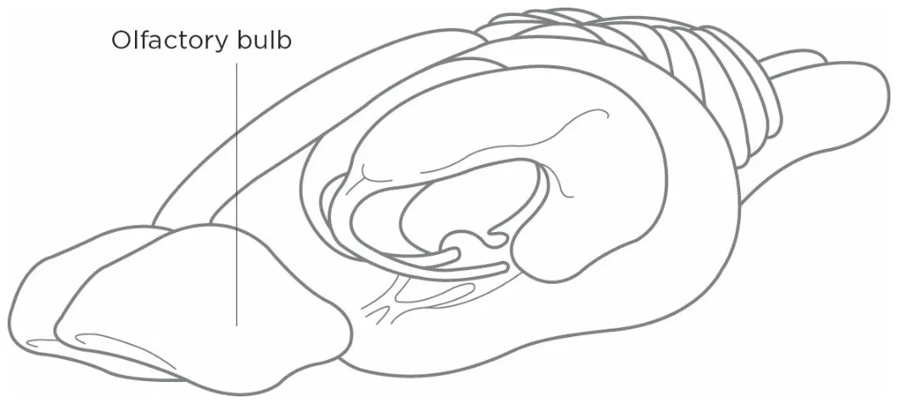
Các nhà khoa học thần kinh thời đó tự hỏi hai hành khứu giác khổng lồ này ở loài gặm nhấm nói chuyện với những phần nào của não (tức là chúng gửi các sợi trục chiếu đến đâu). Những vùng não nào chỉ cách việc tiếp nhận thông tin khứu giác một khớp thần kinh (synapse), vùng nào cách hai khớp, ba khớp, vân vân?
Và chính các cấu trúc tầng 2 là nơi nhận những thông báo đầu tiên. À, mọi người kết luận, phần não này hẳn là xử lý mùi hương, và thế là nó được đặt tên là rhinencephalon — não mũi.
Trong khi đó, vào những năm ba mươi và bốn mươi, các nhà khoa học thần kinh như MacLean thời trẻ, James Papez, Paul Bucy và Heinrich Klüver bắt đầu tìm ra chức năng thực sự của các cấu trúc tầng 2. Chẳng hạn, nếu bạn gây tổn thương (tức phá hủy) các cấu trúc tầng 2, điều này tạo ra “hội chứng Klüver-Bucy”, với đặc trưng là những bất thường trong hành vi xã hội, đặc biệt là trong hành vi tình dục và hung hăng. Họ kết luận rằng những cấu trúc này, chẳng bao lâu sau được gọi là “hệ viền” (limbic system, vì những lý do khó hiểu), là về cảm xúc.
Não mũi hay hệ viền? Khứu giác hay cảm xúc? Những cuộc tranh luận nảy lửa diễn ra cho đến khi có người chỉ ra điều hiển nhiên — đối với một con chuột, cảm xúc và khứu giác gần như đồng nghĩa, bởi hầu hết mọi kích thích môi trường khơi gợi cảm xúc ở loài gặm nhấm đều là mùi hương. Hòa bình lập lại. Ở loài gặm nhấm, đầu vào khứu giác là thứ hệ viền phụ thuộc nhiều nhất để nhận tin tức cảm xúc từ thế giới. Ngược lại, hệ viền của động vật linh trưởng được cung cấp thông tin nhiều hơn từ đầu vào thị giác.
Chức năng hệ viền nay được công nhận là trung tâm của những cảm xúc thúc đẩy các hành vi tốt nhất và tệ nhất của chúng ta, và các nghiên cứu sâu rộng đã khám phá ra chức năng của các cấu trúc thuộc hệ này (ví dụ: hạch hạnh nhân, hồi hải mã, vách ngăn, cuống tuyến tùng và thể vú).
Thực sự không có những “trung tâm” trong não “dành cho” các hành vi cụ thể. Điều này đặc biệt đúng với hệ viền và cảm xúc. Đúng là có một tiểu vùng nhỏ của vỏ não vận động gần như là “trung tâm” để khiến ngón út trái của bạn co lại; các vùng khác có vai trò kiểu “trung tâm” trong việc điều hòa nhịp thở hoặc thân nhiệt. Nhưng chắc chắn không có trung tâm nào cho cảm giác cáu kỉnh hay hứng tình, cho cảm giác hoài niệm ngọt ngào pha chút đắng cay hay sự che chở ấm áp lẫn chút khinh miệt, hoặc cho cái cảm giác thứ-gì-mà-gọi-là-tình-yêu đó. Vậy nên không có gì ngạc nhiên khi hệ thống mạch nối giữa các cấu trúc hệ viền khác nhau lại phức tạp vô cùng.
Hệ Thần Kinh Tự Chủ và Các Vùng Lõi Cổ Xưa của Não Bộ
Các vùng của hệ viền tạo thành những mạch kích thích và ức chế phức tạp. Sẽ dễ hiểu điều này hơn nếu nắm được khát khao sâu sắc của mọi cấu trúc hệ viền — đó là tác động lên những gì vùng dưới đồi (hypothalamus) làm.
Tại sao? Vì tầm quan trọng của nó. Vùng dưới đồi, một cấu trúc hệ viền, là giao diện giữa tầng 1 và tầng 2, giữa các phần điều hòa cốt lõi và phần cảm xúc của não bộ.
Phù hợp với điều đó, vùng dưới đồi nhận lượng lớn đầu vào từ các cấu trúc tầng 2 hệ viền nhưng lại gửi phần lớn các đường chiếu tới các vùng tầng 1. Đây là vùng não giữa (midbrain) và thân não (brain stem) cổ xưa về mặt tiến hóa, vốn điều hòa các phản ứng tự động khắp cơ thể.
Đối với một loài bò sát, sự điều hòa tự động như vậy khá đơn giản. Nếu cơ bắp hoạt động mạnh, điều này được cảm nhận bởi các tế bào thần kinh khắp cơ thể, gửi tín hiệu lên tủy sống tới các vùng tầng 1, dẫn đến tín hiệu truyền ngược xuống tủy sống làm tăng nhịp tim và huyết áp; kết quả là cung cấp thêm oxy và glucose cho cơ bắp. Ăn ngấu nghiến, thành dạ dày căng ra; các tế bào thần kinh gắn ở đó cảm nhận điều này và truyền tin, chẳng mấy chốc mạch máu ở ruột giãn ra, tăng lưu lượng máu và hỗ trợ tiêu hóa. Quá nóng? Máu được đưa ra bề mặt cơ thể để tản nhiệt.
— Tất cả những điều này đều diễn ra tự động, hay “tự chủ” (autonomic). Và do đó các vùng não giữa và thân não, cùng với các đường chiếu xuống tủy sống và ra khắp cơ thể, được gọi chung là “hệ thần kinh tự chủ” (autonomic nervous system).*
Vậy vùng dưới đồi đóng vai trò gì ở đây? Nó là phương tiện để hệ viền tác động lên chức năng tự chủ, là cách tầng 2 nói chuyện với tầng 1. Khi bàng quang đầy với thành cơ căng ra, mạch não giữa/thân não sẽ bỏ phiếu cho việc đi tiểu. Khi tiếp xúc với thứ gì đó đủ kinh hoàng, các cấu trúc hệ viền, thông qua vùng dưới đồi, thuyết phục não giữa và thân não làm điều tương tự. Đây là cách cảm xúc làm thay đổi các chức năng cơ thể, lý do vì sao mọi con đường hệ viền cuối cùng đều dẫn về vùng dưới đồi.*
Hệ thần kinh tự chủ gồm hai phần — hệ thần kinh giao cảm và hệ thần kinh đối giao cảm, với chức năng gần như trái ngược nhau.
Hệ thần kinh giao cảm (SNS) điều phối phản ứng của cơ thể trước các hoàn cảnh kích thích, chẳng hạn như tạo ra phản ứng căng thẳng nổi tiếng “chiến hay chạy” (fight or flight). Nói theo câu đùa nhạt nhẽo hay kể cho sinh viên y khoa năm nhất, SNS điều phối “bốn chữ F — fear (sợ), fight (chiến), flight (chạy) và sex (tình dục).” Các nhân não giữa/thân não cụ thể gửi các đường chiếu SNS dài xuống tủy sống và tới các tiền đồn khắp cơ thể, nơi đầu tận sợi trục giải phóng chất dẫn truyền thần kinh norepinephrine. Có một ngoại lệ khiến SNS trở nên quen thuộc hơn. Ở tuyến thượng thận, thay vì giải phóng norepinephrine (còn gọi là noradrenaline), nó giải phóng epinephrine (còn gọi là adrenaline nổi tiếng).*
Trong khi đó, hệ thần kinh đối giao cảm (PNS) bắt nguồn từ
các nhân não giữa/thân não khác chiếu xuống tủy sống tới cơ thể. Trái ngược với SNS và bốn chữ F, PNS liên quan đến các trạng thái bình tĩnh, nghỉ ngơi dưỡng sức. SNS làm tăng nhịp tim; PNS làm chậm nhịp tim. PNS thúc đẩy tiêu hóa; SNS ức chế tiêu hóa (điều này hợp lý — nếu bạn đang chạy thục mạng để tránh trở thành bữa trưa của kẻ khác, đừng lãng phí năng lượng tiêu hóa bữa sáng).* Và như chúng ta sẽ thấy ở chương 14, nếu nhìn thấy ai đó đau đớn kích hoạt SNS của bạn, bạn có khả năng bận tâm đến nỗi khổ sở của chính mình thay vì giúp đỡ; bật PNS lên thì điều ngược lại xảy ra. Vì SNS và PNS làm những việc trái ngược nhau, hiển nhiên PNS sẽ giải phóng một chất dẫn truyền thần kinh khác từ đầu tận sợi trục của nó — acetylcholine.*
Có một cách thứ hai, quan trọng không kém, mà cảm xúc tác động lên cơ thể. Cụ thể, vùng dưới đồi cũng điều hòa sự giải phóng nhiều loại hormone; điều này sẽ được đề cập ở chương 4.
— Vậy là hệ viền gián tiếp điều hòa chức năng tự chủ và sự giải phóng hormone. Điều này liên quan gì đến hành vi? Rất nhiều — bởi vì trạng thái tự chủ và nội tiết của cơ thể phản hồi ngược lại lên não bộ, ảnh hưởng đến hành vi (thường là trong vô thức).* Hãy đón xem thêm ở chương 3 và chương 4.
Giao Diện Giữa Hệ Viền và Vỏ Não
Đã đến lúc thêm vỏ não (cortex) vào bức tranh. Như đã lưu ý, đây là bề mặt phía trên của não bộ (tên của nó bắt nguồn từ chữ Latin cortic, nghĩa là “vỏ cây”) và là phần mới nhất của não.
Vỏ não là viên ngọc quý sáng chói, logic, giàu tính phân tích của tầng 3. Hầu hết thông tin cảm giác chảy về đây để được giải mã. Đây là nơi cơ bắp nhận lệnh chuyển động, nơi ngôn ngữ được hiểu và tạo ra, nơi ký ức được lưu trữ, nơi kỹ năng không gian và toán học trú ngụ, nơi các quyết định điều hành được đưa ra. Nó nằm lơ lửng phía trên hệ viền, củng cố quan điểm của các triết gia ít nhất từ thời Descartes vốn nhấn mạnh sự phân đôi giữa tư duy và cảm xúc.
Tất nhiên, điều đó hoàn toàn sai, như minh họa qua việc nhiệt độ của một chiếc cốc — thứ được xử lý ở vùng dưới đồi — làm thay đổi đánh giá về sự lạnh lùng trong tính cách của ai đó. Cảm xúc lọc bản chất và độ chính xác của những gì được ghi nhớ. Tổn thương do đột quỵ ở một số vùng vỏ não làm mất khả năng nói; một số bệnh nhân định tuyến lại thế giới ngôn ngữ trên não qua những đường vòng cảm xúc của hệ viền — họ có thể hát những gì họ muốn nói. Vỏ não và hệ viền không hề tách rời, vì vô số đường chiếu sợi trục chạy qua lại giữa hai bên. Điều cốt yếu là những đường chiếu đó mang tính hai chiều — hệ viền nói chuyện với vỏ não, chứ không chỉ đơn thuần bị vỏ não kìm hãm. Sự phân đôi sai lầm giữa suy nghĩ và cảm giác được trình bày trong tác phẩm kinh điển Sai lầm của Descartes (Descartes’ Error) của nhà thần kinh học Antonio Damasio thuộc Đại học Nam California; công trình của ông sẽ được thảo luận sau.2
Trong khi vùng dưới đồi cư ngụ tại giao diện của tầng 1 và tầng 2, thì chính vỏ não trán cực kỳ thú vị mới là giao diện giữa tầng 2 và tầng 3. Hiểu biết then chốt về vỏ não trán được cung cấp vào thập niên 1960 bởi một người khổng lồ của ngành khoa học thần kinh, Walle Nauta của MIT.*3 Nauta đã nghiên cứu xem những vùng não nào gửi sợi trục tới vỏ não trán và những vùng nào nhận sợi trục từ nó. Và vỏ não trán đan xen hai chiều mật thiết với hệ viền, khiến ông đề xuất rằng vỏ não trán là một thành viên bán chính thức của hệ viền. Đương nhiên, mọi người đều nghĩ ông bị điên. Vỏ não trán là phần tiến hóa gần đây nhất của vỏ não vô cùng cao quý — lý do duy nhất khiến vỏ não trán chịu hạ mình xuống khu ổ chuột hệ viền chỉ có thể là để rao giảng về lao động lương thiện và sự tiết độ Kitô giáo cho đám trẻ bụi đời ở đó.
Đương nhiên, Nauta đã đúng. Trong các hoàn cảnh khác nhau, vỏ não trán và hệ viền kích thích hoặc ức chế lẫn nhau, hợp tác và phối hợp, hoặc cãi vã và làm việc ngược chiều nhau. Nó thực sự là một thành viên danh dự của hệ viền. Và những tương tác giữa vỏ não trán với các cấu trúc hệ viền (khác) là cốt lõi của phần lớn cuốn sách này.
Thêm hai chi tiết nữa. Thứ nhất, vỏ não không phải một bề mặt nhẵn mà được gấp nếp thành các cuộn não. Các nếp gấp tạo thành một siêu cấu trúc gồm bốn thùy riêng biệt: thùy thái dương, thùy đỉnh, thùy chẩm và thùy trán, mỗi thùy có các chức năng khác nhau.
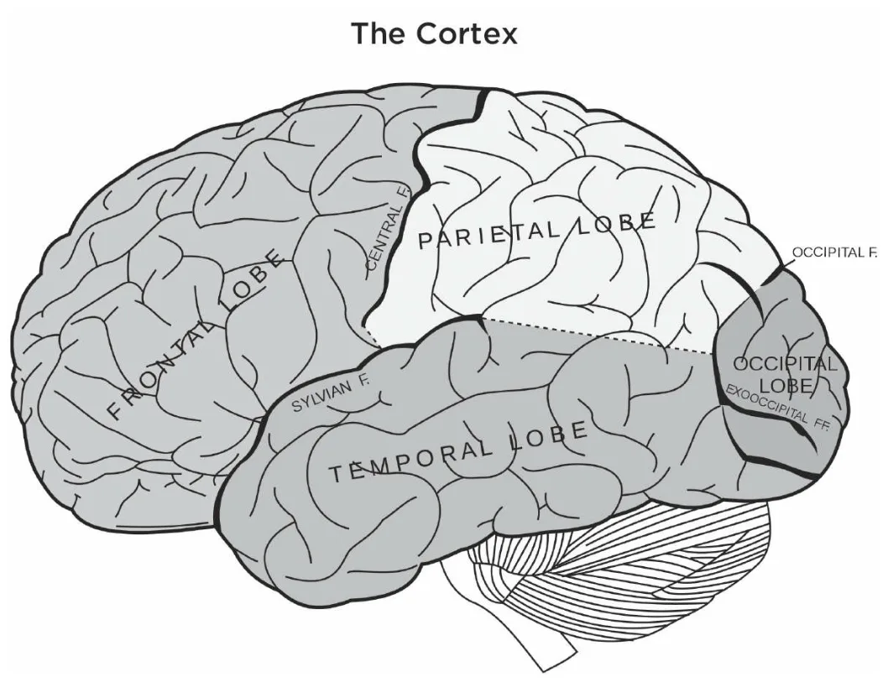
Chức Năng Chuyên Biệt Hóa Bán Cầu Não
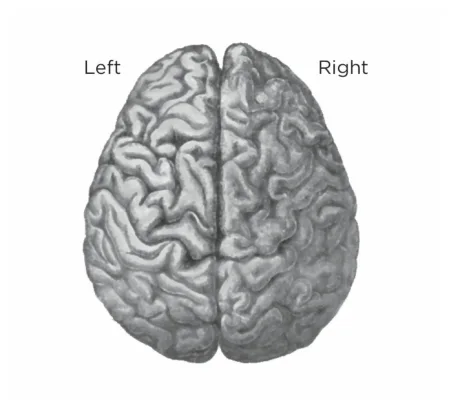
Tư duy phân tích Nhận thức chú trọng chi tiết Sắp xếp trình tự có trật tự Tư duy lý tính Ngôn ngữ Thận trọng Lập kế hoạch Toán/khoa học Logic Thị giác trường phải Kỹ năng vận động bên phải
Tư duy trực giác Nhận thức tổng thể Sắp xếp trình tự ngẫu nhiên Tư duy cảm xúc Phi ngôn ngữ Mạo hiểm Bốc đồng Viết sáng tạo/nghệ thuật Trí tưởng tượng Thị giác trường trái Kỹ năng vận động bên trái
Thứ hai, hiển nhiên não bộ có bên trái và bên phải, hay còn gọi là hai “bán cầu”, gần như đối xứng gương với nhau.
Do đó, ngoại trừ tương đối ít cấu trúc nằm trên đường giữa, các vùng não đều đi theo cặp (hạch hạnh nhân trái và phải, hồi hải mã trái và phải, thùy thái dương trái và phải, v.v.). Các chức năng thường được chuyên biệt hóa theo bên (lateralized), chẳng hạn như hồi hải mã trái và phải có các chức năng khác nhau nhưng liên quan đến nhau. Sự chuyên biệt hóa bên lớn nhất xảy ra ở vỏ não; bán cầu trái thiên về phân tích, bán cầu phải tham gia nhiều hơn vào trực giác và sáng tạo. Những sự tương phản này đã thu hút trí tưởng tượng của công chúng, với sự chuyên biệt hóa vỏ não bị nhiều người thổi phồng đến mức phi lý, nơi kiểu người “não trái” mang hàm ý soi mói tính toán từng đồng từng cắc và kiểu người “não phải” là về vẽ mạn đà la hay hát cùng cá voi. Thực tế thì sự khác biệt chức năng giữa hai bán cầu nhìn chung rất tinh tế, và tôi hầu như sẽ bỏ qua sự chuyên biệt hóa bên này.
Giờ chúng ta đã sẵn sàng xem xét các vùng não giữ vai trò trung tâm nhất đối với cuốn sách này, cụ thể là hạch hạnh nhân, vỏ não trán, và hệ thống dopamine trung não-viền / trung não-vỏ não (thảo luận về các vùng phụ khác sẽ được gộp vào dưới các mục của ba vùng này). Chúng ta bắt đầu với vùng có thể coi là trung tâm nhất đối với những hành vi tệ nhất của chúng ta.
HẠCH HẠNH NHÂN
Hạch hạnh nhân* (amygdala) là cấu trúc hệ viền điển hình, nằm bên dưới vỏ não ở thùy thái dương. Nó giữ vai trò trung tâm trong việc điều hòa sự hung hăng, cùng với các hành vi khác cho chúng ta biết rất nhiều điều về sự hung hăng.
Cái Nhìn Đầu Tiên về Hạch Hạnh Nhân và Sự Hung Hăng
Bằng chứng về vai trò của hạch hạnh nhân trong sự hung hăng rất phong phú, dựa trên các phương pháp nghiên cứu sẽ sớm trở nên quen thuộc.
Đầu tiên là phương pháp tương quan “ghi điện”. Cắm điện cực ghi vào hạch hạnh nhân* của nhiều loài và xem khi nào các tế bào thần kinh ở đó phát ra điện thế hoạt động; hóa ra là khi con vật đang hung hăng.* Theo một cách tiếp cận liên quan, xác định vùng não nào tiêu thụ thêm oxy hoặc glucose, hoặc tổng hợp các protein liên quan đến hoạt động, trong lúc hung hăng — hạch hạnh nhân đứng đầu danh sách.
Vượt ra ngoài mối tương quan đơn thuần, nếu bạn gây tổn thương hạch hạnh nhân ở một con vật, tỷ lệ hung hăng sẽ giảm xuống. Điều tương tự xảy ra thoáng qua khi bạn làm im lặng tạm thời hạch hạnh nhân bằng cách tiêm Novocain vào đó. Ngược lại, cấy điện cực kích thích các tế bào thần kinh ở đó, hoặc xịt vào các chất dẫn truyền thần kinh kích thích (hãy chờ xem), sẽ châm ngòi cho sự hung hăng.4
Cho đối tượng người xem những bức ảnh khơi gợi cơn giận, và hạch hạnh nhân kích hoạt (như thấy qua chẩn đoán hình ảnh thần kinh). Cắm một điện cực vào hạch hạnh nhân của ai đó và kích thích nó (như được thực hiện trước một số loại phẫu thuật thần kinh) sẽ tạo ra cơn thịnh nộ.
Dữ liệu thuyết phục nhất liên quan đến những trường hợp hiếm gặp ở người có tổn thương giới hạn ở hạch hạnh nhân, do một loại viêm não hoặc một rối loạn bẩm sinh gọi là bệnh Urbach-Wiethe, hoặc do hạch hạnh nhân bị phá hủy bằng phẫu thuật để kiểm soát các cơn động kinh nặng, kháng thuốc bắt nguồn từ đó.5 Những cá nhân này bị suy giảm khả năng phát hiện biểu cảm khuôn mặt giận dữ (trong khi vẫn nhận diện tốt các trạng thái cảm xúc khác — hãy chờ xem).
Vậy tổn thương hạch hạnh nhân làm gì đối với hành vi hung hăng? Điều này được nghiên cứu ở những người được phẫu thuật cắt bỏ hạch hạnh nhân không phải để kiểm soát động kinh mà để kiểm soát sự hung hăng. Kiểu phẫu thuật tâm thần này đã châm ngòi cho tranh cãi dữ dội vào thập niên 1970. Và tôi không nói đến chuyện các nhà khoa học không chào hỏi nhau tại hội nghị. Tôi muốn nói đến một cơn bão dư luận thực sự.
Vấn đề này chạm vào những cột thu lôi đạo đức sinh học: Thế nào được tính là hung hăng bệnh lý? Ai là người quyết định? Những biện pháp can thiệp nào khác đã được thử mà không thành công? Liệu một số nhóm người cực kỳ hung hăng có dễ bị đưa lên bàn mổ hơn những người khác không? Thế nào được coi là chữa khỏi?6
Hầu hết các trường hợp này liên quan đến những bệnh nhân động kinh hiếm gặp mà sự khởi phát cơn động kinh đi kèm với sự hung hăng không thể kiểm soát, và mục tiêu là kiềm chế hành vi đó (những bài báo này có tiêu đề kiểu như “Tác động lâm sàng và sinh lý của phẫu thuật cắt bỏ hạch hạnh nhân hai bên định vị lập thể đối với sự hung hăng khó trị”). Cơn bão thực sự nhắm vào việc cắt bỏ hạch hạnh nhân một cách cưỡng bức ở những người không bị động kinh nhưng có tiền sử hung hăng nghiêm trọng. Chà, làm việc này có thể hữu ích sâu sắc. Hoặc mang tính Orwell toàn trị. Đây là một câu chuyện dài và đen tối mà tôi xin để dành cho một dịp khác.
Việc phá hủy hạch hạnh nhân ở người có làm giảm sự hung hăng không? Khá rõ ràng là có, khi bạo lực là một cơn bùng phát phản xạ, chưa định hình xảy ra ngay trước cơn động kinh. Nhưng với phẫu thuật được thực hiện chỉ nhằm kiểm soát hành vi, câu trả lời là, ờ, có thể — sự không đồng nhất của bệnh nhân và phương pháp phẫu thuật, việc thiếu chẩn đoán hình ảnh thần kinh hiện đại để xác định chính xác phần nào của hạch hạnh nhân bị phá hủy ở mỗi cá nhân, và sự thiếu chính xác trong dữ liệu hành vi (với các bài báo ghi nhận tỷ lệ “thành công” từ 33 đến 100 phần trăm) khiến mọi thứ không thể kết luận chắc chắn. Thủ thuật này gần như đã hoàn toàn bị loại bỏ khỏi thực hành lâm sàng.
Mối liên hệ giữa hạch hạnh nhân và sự hung hăng xuất hiện trong hai vụ án bạo lực khét tiếng. Vụ thứ nhất liên quan đến Ulrike Meinhof, người đồng sáng lập Nhóm Hồng quân (còn gọi là Băng đảng Baader-Meinhof) năm 1968, một nhóm khủng bố chịu trách nhiệm cho các vụ đánh bom và cướp ngân hàng ở Tây Đức. Meinhof từng có một cuộc sống bình thường trước đó với tư cách nhà báo trước khi bị cực đoan hóa theo hướng bạo lực. Trong phiên tòa xét xử tội giết người năm 1976, bà được phát hiện treo cổ trong phòng giam (tự tử hay bị sát hại? vẫn chưa rõ). Năm 1962, Meinhof từng phẫu thuật cắt bỏ một khối u não lành tính; cuộc khám nghiệm tử thi năm 1976 cho thấy phần còn sót lại của khối u và mô sẹo phẫu thuật đã chèn ép lên hạch hạnh nhân của bà.7
Vụ thứ hai liên quan đến Charles Whitman, tay súng bắn tỉa “Tháp Texas” năm 1966, người sau khi giết vợ và mẹ mình đã nổ súng từ trên tháp tại Đại học Texas ở Austin, giết chết mười sáu người và làm bị thương ba mươi hai người, một trong những vụ thảm sát trường học đầu tiên. Whitman thực sự từng là một Hướng đạo sinh Đại bàng và ca sĩ hợp xướng nhà thờ thời thơ ấu, một sinh viên ngành kỹ thuật kết hôn hạnh phúc với chỉ số IQ thuộc top 1 phần trăm. Trong năm trước đó, anh ta đã đi khám bác sĩ, phàn nàn về những cơn đau đầu dữ dội và những thôi thúc bạo lực (chẳng hạn như muốn bắn người từ tháp trường đại học). Anh ta để lại những bức thư bên thi thể vợ và mẹ, bày tỏ tình yêu thương và sự bối rối trước hành động của mình: “Tôi không thể lý giải một cách hợp lý [sic] bất kỳ lý do cụ thể nào cho việc [giết bà ấy],” và “đừng có chút nghi ngờ nào trong tâm trí bạn rằng tôi yêu người phụ nữ này bằng cả trái tim.” Thư tuyệt mệnh của anh ta yêu cầu khám nghiệm tử thi bộ não mình, và đề nghị trao toàn bộ số tiền anh có cho một quỹ sức khỏe tâm thần. Kết quả khám nghiệm chứng minh trực giác của anh ta đúng — Whitman có một khối u nguyên bào thần kinh đệm (glioblastoma) đè lên hạch hạnh nhân. Khối u của Whitman có “gây ra” bạo lực của anh ta không? Có lẽ không theo nghĩa cứng nhắc “u hạch hạnh nhân = kẻ giết người”, vì anh ta có những yếu tố nguy cơ tương tác với các vấn đề thần kinh của mình. Whitman lớn lên thường xuyên bị cha đánh đập và chứng kiến mẹ cùng anh chị em chịu cảnh tương tự. Chàng Hướng đạo sinh Đại bàng từng hát thánh ca này đã nhiều lần bạo hành thể xác vợ mình và từng bị tòa án binh khi còn là lính Thủy quân lục chiến vì đe dọa hành hung một người lính khác.* Và, có lẽ là dấu hiệu của một sợi dây xuyên suốt gia đình, em trai anh ta bị sát hại ở tuổi hai mươi bốn trong một vụ ẩu đả ở quán bar.8
Một Miền Chức Năng Hoàn Toàn Khác của Hạch Hạnh Nhân Bước Ra Sân Khấu Chính
Như vậy, nhiều bằng chứng đáng kể gắn kết hạch hạnh nhân với sự hung hăng. Nhưng nếu bạn hỏi các chuyên gia về hạch hạnh nhân xem hành vi nào khiến họ nghĩ đến cấu trúc não yêu thích của mình đầu tiên, “hung hăng” sẽ không đứng đầu danh sách. Đó sẽ là nỗi sợ hãi và lo âu.9 Điều cốt yếu là vùng não tham gia nhiều nhất vào cảm giác sợ hãi và lo âu lại chính là vùng tham gia nhiều nhất vào việc tạo ra sự hung hăng.
Mối liên hệ giữa hạch hạnh nhân và nỗi sợ dựa trên những bằng chứng tương tự như bằng chứng ủng hộ mối liên hệ giữa hạch hạnh nhân và sự hung hăng.10 Ở động vật thí nghiệm, điều này bao gồm gây tổn thương cấu trúc này, phát hiện hoạt động ở các tế bào thần kinh của nó bằng “điện cực ghi”,
kích thích điện nó, hoặc thao tác gen trong đó. Tất cả đều gợi ý một vai trò then chốt của hạch hạnh nhân trong việc nhận thức các kích thích gây sợ hãi và biểu lộ nỗi sợ. Hơn nữa, nỗi sợ kích hoạt hạch hạnh nhân ở người, với mức độ kích hoạt càng cao thì càng dự báo nhiều dấu hiệu hành vi sợ hãi hơn.
Trong một nghiên cứu, các đối tượng nằm trong máy quét não chơi một trò chơi điện tử kiểu Ms. Pac-Man từ địa ngục, nơi họ bị một chấm tròn rượt đuổi trong mê cung; nếu bị bắt, họ sẽ bị sốc điện.11 Khi mọi người đang né tránh chấm tròn, hạch hạnh nhân im lặng. Tuy nhiên, hoạt động của nó tăng lên khi chấm tròn tiến lại gần; cú sốc điện càng mạnh thì khoảng cách chấm tròn bắt đầu kích hoạt hạch hạnh nhân càng xa, mức kích hoạt càng mạnh và cảm giác hoảng loạn tự báo cáo càng lớn.
Trong một nghiên cứu khác, các đối tượng chờ đợi một khoảng thời gian không xác định để nhận một cú sốc điện.12 Sự thiếu khả năng dự đoán và kiểm soát này gây khó chịu đến mức nhiều người chọn nhận ngay một cú sốc mạnh hơn. Và ở những người còn lại, khoảng thời gian thấp thỏm chờ đợi càng lúc càng kích hoạt hạch hạnh nhân mạnh hơn.
Như vậy, hạch hạnh nhân của con người ưu tiên phản ứng với các kích thích khơi gợi nỗi sợ, ngay cả những kích thích thoáng qua đến mức nằm dưới ngưỡng nhận thức có ý thức.
Bằng chứng mạnh mẽ ủng hộ vai trò của hạch hạnh nhân trong xử lý nỗi sợ đến từ rối loạn căng thẳng sau sang chấn (PTSD). Ở những người mắc PTSD, hạch hạnh nhân phản ứng quá mức với các kích thích gây sợ nhẹ và chậm dịu xuống sau khi bị kích hoạt.13 Hơn nữa, hạch hạnh nhân phình to về kích thước khi mắc PTSD kéo dài. Vai trò của căng thẳng trong sự phình to này sẽ được đề cập ở chương 4.
Hạch hạnh nhân cũng tham gia vào việc biểu lộ sự lo âu.14 Hãy lấy một bộ bài — một nửa màu đen, một nửa màu đỏ; bạn sẽ đặt cược bao nhiêu rằng lá bài trên cùng màu đỏ? Đó là về rủi ro. Đây là một bộ bài khác — có ít nhất một lá đen, ít nhất một lá đỏ; bạn sẽ đặt cược bao nhiêu rằng lá bài trên cùng màu đỏ? Đó là về sự mơ hồ. Hai tình huống mang xác suất giống hệt nhau, nhưng mọi người cảm thấy lo âu hơn trước kịch bản thứ hai và kích hoạt hạch hạnh nhân nhiều hơn. Hạch hạnh nhân đặc biệt nhạy cảm với những hoàn cảnh bất ổn mang tính xã hội. Một con khỉ rhesus đực cấp cao đang trong mối quan hệ cặp đôi tình dục với một con cái; ở điều kiện thứ nhất, con cái được đặt ở phòng khác, nơi con đực có thể nhìn thấy nó. Ở điều kiện thứ hai, nó ở phòng khác cùng với một đối thủ của con đực kia. Không có gì ngạc nhiên, tình huống đó kích hoạt hạch hạnh nhân. Điều đó là về sự hung hăng hay lo âu? Dường như là vế sau — mức độ kích hoạt không tương quan với lượng hành vi hung hăng và tiếng kêu mà con đực tạo ra, hay lượng testosterone tiết ra.
Thay vào đó, nó tương quan với mức độ lo âu biểu lộ (ví dụ: đánh lập cập răng, hoặc tự gãi mình).
Hạch hạnh nhân gắn liền với sự bất định xã hội theo những cách khác. Trong một nghiên cứu hình ảnh học thần kinh, đối tượng tham gia một trò chơi cạnh tranh với một nhóm người chơi khác; kết quả được sắp đặt sao cho đối tượng rơi vào khoảng giữa bảng xếp hạng.15 Các nhà thí nghiệm sau đó thao túng kết quả trò chơi để thứ hạng của đối tượng hoặc giữ ổn định hoặc dao động dữ dội. Thứ hạng ổn định kích hoạt các phần của vỏ não trán mà chúng ta sẽ sớm xem xét. Sự bất ổn kích hoạt vỏ não trán cộng thêm hạch hạnh nhân. Việc không chắc chắn về vị trí của mình thật đáng bất an.
Một nghiên cứu khác khám phá sinh học thần kinh của sự tuân thủ đám đông.16 Nói đơn giản, một đối tượng là thành viên của một nhóm (trong đó, một cách bí mật, những người còn lại đều là diễn viên đóng thế); họ được cho xem chữ “X”, rồi được hỏi: “Bạn đã thấy gì?” Tất cả những người khác đều nói “Y”. Liệu đối tượng có nói dối và cũng nói “Y” không? Thường là có. Những đối tượng giữ vững lập trường với chữ “X” cho thấy sự kích hoạt hạch hạnh nhân.
Cuối cùng, việc kích hoạt các mạch cụ thể bên trong hạch hạnh nhân ở chuột bật và tắt sự lo âu; kích hoạt các mạch khác khiến chuột không thể phân biệt giữa môi trường an toàn và môi trường gây lo âu.*17
Hạch hạnh nhân cũng giúp điều phối cả nỗi sợ bẩm sinh và nỗi sợ học được.18 Cốt lõi của nỗi sợ bẩm sinh (còn gọi là ám ảnh sợ / phobia) là bạn không cần phải học qua thử và sai rằng thứ gì đó gây khó chịu. Ví dụ, một con chuột sinh ra trong phòng thí nghiệm, chỉ từng tiếp xúc với những con chuột khác và sinh viên cao học, vẫn sợ hãi và né tránh mùi mèo theo bản năng. Trong khi các chứng ám ảnh sợ khác nhau kích hoạt các mạch não hơi khác nhau (chẳng hạn, chứng sợ nha sĩ liên quan đến vỏ não nhiều hơn chứng sợ rắn), tất cả chúng đều kích hoạt hạch hạnh nhân.
Nỗi sợ bẩm sinh như vậy tương phản với những thứ chúng ta học cách sợ — một khu phố tồi tệ, một lá thư từ Sở Thuế vụ. Sự phân đôi giữa nỗi sợ bẩm sinh và nỗi sợ học được thực ra hơi mờ nhạt.19 Ai cũng biết con người bẩm sinh sợ rắn và nhện. Nhưng một số người lại nuôi chúng làm thú cưng, đặt cho chúng những cái tên dễ thương.* Thay vì nỗi sợ tất yếu, chúng ta thể hiện “sự học tập chuẩn bị sẵn” (prepared learning) — học cách sợ rắn và nhện dễ dàng hơn nhiều so với gấu trúc hay chó săn thỏ beagle.
Điều tương tự cũng xảy ra ở các loài linh trưởng khác. Chẳng hạn, những con khỉ phòng thí nghiệm chưa bao giờ gặp rắn (hay hoa giả) có thể bị điều kiện hóa để sợ rắn dễ dàng hơn hoa giả. Như chúng ta sẽ thấy ở chương sau, con người thể hiện sự học tập chuẩn bị sẵn, có khuynh hướng dễ bị điều kiện hóa để sợ những người có kiểu ngoại hình nhất định.
Sự phân biệt mờ nhạt giữa nỗi sợ bẩm sinh và nỗi sợ học được khớp rất đẹp với cấu trúc của hạch hạnh nhân. Nhân trung tâm hạch hạnh nhân (central amygdala) cổ xưa về mặt tiến hóa đóng vai trò then chốt trong các nỗi sợ bẩm sinh. Bao quanh nó là hạch hạnh nhân đáy bên (basolateral amygdala - BLA), tiến hóa gần đây hơn và phần nào giống với vỏ não hiện đại, sang trọng. Chính BLA học nỗi sợ rồi gửi tin tức đến nhân trung tâm hạch hạnh nhân.
Joseph LeDoux tại Đại học New York đã chỉ ra cách BLA học nỗi sợ.*20 Cho một con chuột tiếp xúc với một tác nhân kích hoạt nỗi sợ bẩm sinh — một cú sốc điện. Khi “kích thích không điều kiện” này xảy ra, nhân trung tâm hạch hạnh nhân kích hoạt, hormone căng thẳng được tiết ra, hệ thần kinh giao cảm được huy động, và, như một điểm kết rõ ràng, con chuột đứng chết trân tại chỗ — “Cái gì vậy? Mình phải làm gì đây?” Giờ hãy thực hiện một chút điều kiện hóa. Trước mỗi cú sốc điện, cho con chuột tiếp xúc với một kích thích bình thường không gây sợ, chẳng hạn như một âm thanh. Và với việc ghép đôi lặp đi lặp lại giữa âm thanh (kích thích có điều kiện) với cú sốc điện (kích thích không điều kiện), sự điều kiện hóa nỗi sợ xảy ra — chỉ riêng âm thanh thôi cũng đủ khơi gợi phản ứng đứng chết trân, giải phóng hormone căng thẳng, vân vân.*
LeDoux và những người khác đã chỉ ra cách thông tin thính giác về âm thanh kích thích các tế bào thần kinh BLA. Ban đầu, sự kích hoạt của các tế bào thần kinh đó không liên quan gì đến nhân trung tâm hạch hạnh nhân (nơi các tế bào thần kinh chỉ định sẵn sẽ kích hoạt sau cú sốc điện). Nhưng với việc ghép đôi lặp đi lặp lại giữa âm thanh và cú sốc, có sự tái lập bản đồ và những tế bào thần kinh BLA đó có được khả năng kích hoạt nhân trung tâm hạch hạnh nhân.*
Các tế bào thần kinh BLA chỉ phản ứng với âm thanh một khi sự điều kiện hóa đã xảy ra cũng sẽ phản ứng nếu sự điều kiện hóa thay vào đó được thực hiện với ánh sáng. Nói cách khác, các tế bào thần kinh này phản ứng với ý nghĩa của kích thích, chứ không phải với phương thức cảm giác cụ thể của nó. Hơn nữa, nếu bạn kích thích điện chúng, chuột sẽ dễ bị điều kiện hóa nỗi sợ hơn; bạn đã hạ thấp ngưỡng để mối liên kết này được hình thành. Và nếu bạn kích thích điện đầu vào cảm giác thính giác cùng lúc với các cú sốc điện (tức là không có âm thanh nào cả, chỉ kích hoạt con đường vốn thường mang tin tức về âm thanh tới hạch hạnh nhân), bạn gây ra sự điều kiện hóa nỗi sợ đối với một âm thanh. Bạn đã chế tạo ra việc học một nỗi sợ giả.
Có cả những thay đổi ở khớp thần kinh nữa. Một khi sự điều kiện hóa với âm thanh đã xảy ra, các khớp thần kinh nối tế bào thần kinh BLA và nhân trung tâm trở nên dễ bị kích thích hơn; cách thức điều này diễn ra được hiểu ở cấp độ thay đổi số lượng thụ thể dành cho các chất dẫn truyền thần kinh kích thích tại các gai nhánh (dendritic spines) trong các mạch này.* Hơn nữa, sự điều kiện hóa làm tăng mức độ của các “yếu tố tăng trưởng”, thúc đẩy sự phát triển của các kết nối mới giữa tế bào thần kinh BLA và nhân trung tâm hạch hạnh nhân; một số gen liên quan thậm chí đã được xác định.
Vậy là chúng ta đã nắm được cách học cách sợ hãi.*21 Giờ điều kiện thay đổi — âm thanh thỉnh thoảng vẫn vang lên, nhưng không còn cú sốc điện nữa. Dần dần phản ứng sợ có điều kiện lắng xuống. Sự “dập tắt nỗi sợ” (fear extinction) xảy ra như thế nào? Làm thế nào chúng ta học được rằng người này hóa ra không đáng sợ đến thế, rằng khác biệt không nhất thiết đồng nghĩa với đáng sợ? Hãy nhớ lại cách một nhóm nhỏ tế bào thần kinh BLA chỉ phản ứng với âm thanh một khi sự điều kiện hóa đã xảy ra. Một quần thể tế bào khác làm điều ngược lại, phản ứng với âm thanh một khi nó không còn báo hiệu cú sốc nữa (một cách hợp lý, hai quần thể tế bào thần kinh này ức chế lẫn nhau). Những tế bào thần kinh “Ồ, âm thanh đó không còn đáng sợ nữa” này nhận đầu vào từ đâu? Từ vỏ não trán. Khi chúng ta ngừng sợ thứ gì đó, không phải vì một số tế bào thần kinh hạch hạnh nhân đã mất đi tính dễ kích thích. Chúng ta không thụ động quên rằng thứ gì đó đáng sợ. Chúng ta chủ động học rằng nó không còn đáng sợ nữa.*
Hạch hạnh nhân cũng đóng một vai trò hợp lý trong việc ra quyết định xã hội và cảm xúc. Trong Trò chơi Tối hậu thư (Ultimatum Game), một trò chơi kinh tế gồm hai người chơi, người thứ nhất đưa ra một đề nghị về cách chia một khoản tiền, người chơi kia hoặc chấp nhận hoặc từ chối.22 Nếu từ chối, cả hai chẳng nhận được gì. Nghiên cứu cho thấy việc từ chối một đề nghị là một quyết định cảm xúc, bị châm ngòi bởi cơn giận trước một đề nghị bèo bọt và mong muốn trừng phạt. Mức độ kích hoạt hạch hạnh nhân ở người chơi thứ hai sau một đề nghị càng lớn, khả năng từ chối càng cao. Những người bị tổn thương hạch hạnh nhân tỏ ra hào phóng bất thường trong Trò chơi Tối hậu thư và không tăng tỷ lệ từ chối nếu họ bắt đầu nhận được những đề nghị bất công.
Tại sao? Những cá nhân này hiểu luật chơi và có thể đưa ra lời khuyên chiến lược sáng suốt cho người chơi khác. Hơn nữa, họ sử dụng cùng chiến lược như nhóm đối chứng trong phiên bản phi xã hội của trò chơi, khi tin rằng người chơi kia là máy tính. Và họ cũng chẳng có tầm nhìn đặc biệt dài hạn, không bị phân tâm bởi sự xáo trộn cảm xúc của hạch hạnh nhân, để suy luận rằng sự hào phóng vô điều kiện của họ sẽ tạo ra sự có đi có lại và mang lại lợi ích lâu dài. Khi được hỏi, họ dự đoán mức độ có đi có lại giống hệt như nhóm đối chứng.
Thay vào đó, những phát hiện này gợi ý rằng hạch hạnh nhân tiêm vào quá trình ra quyết định xã hội sự ngờ vực ngầm và tính cảnh giác.23 Tất cả đều nhờ học tập. Theo lời các tác giả của nghiên cứu: “Sự hào phóng trong trò chơi tin cậy của các đối tượng tổn thương BLA của chúng tôi có thể được coi là lòng vị tha bệnh lý, theo nghĩa rằng các hành vi vị tha bẩm sinh đã không được, do tổn thương BLA, xóa bỏ thông qua trải nghiệm xã hội tiêu cực.” Nói cách khác, trạng thái mặc định là tin tưởng, và điều hạch hạnh nhân làm là học sự cảnh giác và ngờ vực.
Thật bất ngờ, hạch hạnh nhân và một trong các đích vùng dưới đồi của nó cũng đóng vai trò trong động lực tình dục ở nam giới (các nhân vùng dưới đồi khác giữ vai trò trung tâm trong khả năng thực hiện tình dục ở nam giới)* nhưng không phải ở nữ giới.* Chuyện đó là sao? Một nghiên cứu hình ảnh học thần kinh đã làm sáng tỏ phần nào. “Nam giới dị tính trẻ tuổi” nhìn vào ảnh những phụ nữ hấp dẫn (so với nhóm đối chứng là ảnh những nam giới hấp dẫn). Việc quan sát thụ động các bức ảnh kích hoạt mạch phần thưởng vừa được nhắc đến. Ngược lại, việc phải bỏ công sức để xem ảnh — bằng cách nhấn nút liên tục — còn kích hoạt cả hạch hạnh nhân. Tương tự, các nghiên cứu khác cho thấy hạch hạnh nhân nhạy cảm nhất với các kích thích tích cực khi giá trị của phần thưởng đang biến động. Hơn nữa, một số tế bào thần kinh BLA phản ứng trong hoàn cảnh đó cũng phản ứng khi mức độ nghiêm trọng của một thứ gây khó chịu đang biến động — những tế bào thần kinh này chú ý đến sự thay đổi, bất kể chiều hướng. Với chúng, “lượng phần thưởng đang thay đổi” và “lượng hình phạt đang thay đổi” là như nhau. Những nghiên cứu như thế làm rõ rằng hạch hạnh nhân không phải là về khoái cảm khi trải nghiệm khoái cảm. Nó là về sự khao khát bất định, bất an đối với một khoái cảm tiềm năng, nỗi lo âu, sợ hãi và giận dữ rằng phần thưởng có thể nhỏ hơn dự kiến, hoặc thậm chí có thể không xảy ra. Nó là về việc có bao nhiêu khoái cảm và cuộc theo đuổi chúng của chúng ta chứa đựng một mạch ngầm ăn mòn của sự bất an (dis-ease).*24
Hạch Hạnh Nhân Như Một Phần Của Các Mạng Lưới Trong Não
Giờ khi đã biết về các tiểu phần của hạch hạnh nhân, sẽ rất bổ ích khi xem xét các kết nối ngoại lai của nó — tức là những phần nào của não gửi đường chiếu tới nó, và nó gửi đường chiếu tới những phần nào?25
MỘT SỐ ĐẦU VÀO TỚI HẠCH HẠNH NHÂN
Đầu vào cảm giác. Trước hết, hạch hạnh nhân, cụ thể là BLA, nhận đường chiếu từ tất cả các hệ thống cảm giác.26 Bằng cách nào khác bạn có thể bị khiếp sợ bởi bản nhạc chủ đề cá mập trong phim Hàm cá mập (Jaws)? Thông thường, thông tin cảm giác từ các phương thức khác nhau (mắt, tai, da...) chạy vào não, đến vùng vỏ não tương ứng (vỏ não thị giác, vỏ não thính giác, vỏ não xúc giác...) để xử lý. Chẳng hạn, vỏ não thị giác sẽ huy động tầng tầng lớp lớp tế bào thần kinh để biến các điểm ảnh kích thích trên võng mạc thành hình ảnh có thể nhận diện trước khi nó kịp hét lên với hạch hạnh nhân: “Là một khẩu súng đấy!” Điều quan trọng là một số thông tin cảm giác đi vào não lại đi đường tắt, bỏ qua vỏ não và đi thẳng tới hạch hạnh nhân. Nhờ vậy hạch hạnh nhân có thể được thông báo về thứ gì đó đáng sợ trước khi vỏ não kịp biết mô tê gì. Hơn nữa, nhờ tính dễ kích thích cực độ của con đường này, hạch hạnh nhân có thể phản ứng với các kích thích quá thoáng qua hoặc mờ nhạt để vỏ não kịp ghi nhận. Thêm vào đó, các đường chiếu đi tắt này tạo thành những khớp thần kinh mạnh hơn, dễ bị kích thích hơn trong BLA so với các đường chiếu từ vỏ não cảm giác; sự kích thích cảm xúc làm tăng cường điều kiện hóa nỗi sợ thông qua con đường này. Sức mạnh của đường tắt này được minh họa qua trường hợp một người đàn ông bị tổn thương vỏ não thị giác do đột quỵ, gây ra chứng “mù vỏ não”. Dù không thể xử lý hầu hết thông tin thị giác, ông vẫn nhận diện được các biểu cảm cảm xúc trên khuôn mặt thông qua đường tắt này.*
Điều cốt yếu là trong khi thông tin cảm giác đi đến hạch hạnh nhân nhanh chóng qua đường tắt này, nó lại không chính xác lắm (vì suy cho cùng, độ chính xác là thứ vỏ não cung cấp). Như chúng ta sẽ thấy ở chương sau, điều này tạo ra những hoàn cảnh bi thảm khi, chẳng hạn, hạch hạnh nhân quyết định rằng nó đang nhìn thấy một khẩu súng ngắn trước khi vỏ não thị giác kịp báo cáo rằng đó thực ra là một chiếc điện thoại di động.
Thông tin về nỗi đau. Hạch hạnh nhân nhận tin tức về tác nhân kích hoạt nỗi sợ và sự hung hăng đáng tin cậy đó, chính là nỗi đau.27 Điều này được trung gian bởi các đường chiếu từ một cấu trúc lõi cổ xưa của não, gọi là “chất xám quanh cống” (periaqueductal gray - PAG); kích thích PAG có thể khơi gợi các cơn hoảng loạn, và nó phình to ở những người mắc cơn hoảng loạn mạn tính. Phản ánh vai trò của hạch hạnh nhân trong sự cảnh giác, bất định, lo âu và sợ hãi, chính nỗi đau không thể đoán trước, chứ không phải bản thân nỗi đau, mới kích hoạt hạch hạnh nhân. Nỗi đau (và phản ứng của hạch hạnh nhân đối với nó) hoàn toàn phụ thuộc vào ngữ cảnh.
Sự ghê tởm đủ mọi thể loại. Hạch hạnh nhân cũng nhận một đường chiếu cực kỳ thú vị từ “vỏ não thùy đảo” (insular cortex), một thành viên danh dự của vỏ não trước trán, mà chúng ta sẽ xem xét kỹ ở các chương sau.28 Nếu bạn (hoặc bất kỳ động vật có vú nào khác) cắn phải thức ăn ôi thiu, vỏ não thùy đảo sáng rực lên, khiến bạn nhổ ra, ọe, cảm thấy buồn nôn, làm bộ mặt ghê tởm — vỏ não thùy đảo xử lý sự ghê tởm vị giác. Tương tự với những mùi kinh tởm.
Đáng chú ý là con người cũng kích hoạt vùng này khi nghĩ về điều gì đó ghê tởm về mặt đạo đức — những hành vi vi phạm chuẩn mực xã hội hoặc những cá nhân thường bị kỳ thị trong xã hội. Và trong hoàn cảnh đó, sự kích hoạt của nó thúc đẩy sự kích hoạt của hạch hạnh nhân. Ai đó làm điều gì tồi tệ và ích kỷ với bạn trong một trò chơi, và mức độ kích hoạt thùy đảo và hạch hạnh nhân sẽ dự báo bạn cảm thấy phẫn nộ đến mức nào và bạn trả thù nhiều ra sao. Điều này hoàn toàn là về tính xã hội — thùy đảo và hạch hạnh nhân không kích hoạt nếu kẻ đâm sau lưng bạn là một chiếc máy tính.
Thùy đảo kích hoạt khi chúng ta ăn một con gián hoặc tưởng tượng làm điều đó. Và thùy đảo cùng hạch hạnh nhân kích hoạt khi chúng ta nghĩ về bộ lạc láng giềng như những con gián đáng kinh tởm. Như chúng ta sẽ thấy, điều này là trung tâm trong cách bộ não chúng ta xử lý “chúng ta và bọn họ”.
Và cuối cùng, hạch hạnh nhân nhận vô số đầu vào từ vỏ não trán. Sẽ còn nói nhiều hơn về điều này.
MỘT SỐ ĐẦU RA TỪ HẠCH HẠNH NHÂN
Các kết nối hai chiều. Như chúng ta sẽ thấy, hạch hạnh nhân nói chuyện với nhiều vùng đã nói chuyện với nó, bao gồm vỏ não trán, thùy đảo, chất xám quanh cống và các đường chiếu cảm giác, điều chỉnh độ nhạy của chúng.
Giao diện hạch hạnh nhân / hồi hải mã. Đương nhiên, hạch hạnh nhân nói chuyện với các cấu trúc hệ viền khác, bao gồm hồi hải mã. Như đã điểm qua, thông thường hạch hạnh nhân học nỗi sợ và hồi hải mã học những sự kiện tách bạch, vô cảm. Nhưng vào những lúc sợ hãi cực độ, hạch hạnh nhân kéo hồi hải mã vào một kiểu học tập nỗi sợ.29
Quay lại với con chuột đang trải qua điều kiện hóa nỗi sợ. Khi nó ở trong lồng A, một âm thanh được theo sau bởi một cú sốc điện. Nhưng trong lồng B, âm thanh đó thì không. Điều này tạo ra sự điều kiện hóa phụ thuộc ngữ cảnh — âm thanh gây ra phản ứng đứng chết trân sợ hãi trong lồng A nhưng không xảy ra ở lồng B. Hạch hạnh nhân học tín hiệu kích thích — âm thanh — trong khi hồi hải mã học về ngữ cảnh của lồng A so với lồng B. Sự học tập kết hợp giữa hạch hạnh nhân và hồi hải mã rất tập trung — tất cả chúng ta đều nhớ cảnh chiếc máy bay đâm vào tòa tháp thứ hai của Trung tâm Thương mại Thế giới, nhưng không nhớ liệu có mây ở phía sau hay không. Hồi hải mã quyết định xem một mẩu thông tin có đáng lưu trữ hay không, tùy thuộc vào việc hạch hạnh nhân có bị kích động vì nó hay không. Hơn nữa, sự kết hợp này có thể thay đổi quy mô. Giả sử ai đó cướp bạn bằng súng trong một con hẻm ở khu phố tồi tệ.
Sau đó, tùy thuộc vào hoàn cảnh, khẩu súng có thể là tín hiệu và con hẻm là ngữ cảnh, hoặc con hẻm là tín hiệu và khu phố tồi tệ là ngữ cảnh.
Đầu ra vận động. Có một đường tắt thứ hai liên quan đến hạch hạnh nhân, cụ thể là khi nó nói chuyện với các tế bào thần kinh vận động ra lệnh chuyển động.30
Một cách hợp lý, khi hạch hạnh nhân muốn huy động một hành vi — chẳng hạn như bỏ chạy — nó nói chuyện với vỏ não trán, xin sự phê duyệt điều hành của nó. Nhưng nếu bị kích thích đủ mạnh, hạch hạnh nhân nói chuyện trực tiếp với các con đường vận động phản xạ dưới vỏ não. Một lần nữa, có sự đánh đổi — tăng tốc độ bằng cách bỏ qua vỏ não, nhưng giảm độ chính xác. Như vậy đường tắt đầu vào có thể thúc đẩy bạn nhìn chiếc điện thoại di động thành khẩu súng. Và đường tắt đầu ra có thể thúc đẩy bạn bóp cò trước khi bạn kịp cố ý làm vậy.
Sự kích thích. Cuối cùng, đầu ra của hạch hạnh nhân chủ yếu là về việc gióng lên hồi chuông báo động khắp não bộ và cơ thể. Như đã thấy, lõi của hạch hạnh nhân là nhân trung tâm hạch hạnh nhân.31 Các đường chiếu sợi trục từ đó đi tới một cấu trúc na ná hạch hạnh nhân ở gần đó gọi là nhân giường của dải tận cùng (bed nucleus of the stria terminalis - BNST). BNST đến lượt nó chiếu tới các phần của vùng dưới đồi khởi phát phản ứng căng thẳng nội tiết (xem chương 4), cũng như tới các vị trí ở não giữa và thân não kích hoạt hệ thần kinh giao cảm và ức chế hệ thần kinh đối giao cảm. Điều gì đó khơi gợi cảm xúc xảy ra, hạch hạnh nhân hệ viền tầng 2 báo hiệu cho các vùng tầng 1, và nhịp tim cùng huyết áp tăng vọt.*
Hạch hạnh nhân cũng kích hoạt một cấu trúc ở thân não gọi là nhân lục (locus coeruleus), giống như hệ thần kinh giao cảm của riêng bộ não.32 Nó gửi các đường chiếu giải phóng norepinephrine đi khắp não bộ, đặc biệt là vỏ não. Nếu nhân lục buồn ngủ và im lặng, bạn cũng vậy. Nếu nó được kích hoạt ở mức độ vừa phải, bạn tỉnh táo. Và nếu nó bắn tín hiệu điên cuồng, nhờ đầu vào từ một hạch hạnh nhân bị kích thích, toàn bộ các tế bào thần kinh đều vào vị trí sẵn sàng chiến đấu.
Mô hình đường chiếu của hạch hạnh nhân nêu bật một điểm quan trọng.33 Khi nào hệ thần kinh giao cảm hoạt động hết công suất? Trong lúc sợ hãi, bỏ chạy, chiến đấu và tình dục. Hoặc nếu bạn trúng số, đang chạy nước rút vui vẻ trên sân bóng đá, hay vừa giải xong định lý Fermat (nếu bạn thuộc tuýp người đó). Phản ánh điều này, khoảng một phần tư tế bào thần kinh trong một nhân vùng dưới đồi tham gia vào cả hành vi tình dục và, khi được kích thích ở cường độ cao hơn, hành vi hung hăng ở chuột đực.
Điều này có hai hệ quả. Cả tình dục và sự hung hăng đều kích hoạt hệ thần kinh giao cảm, đến lượt nó có thể ảnh hưởng đến hành vi — mọi người cảm nhận khác nhau về mọi thứ nếu, chẳng hạn, tim họ đang đập thình thịch so với đập chậm rãi. Điều này có nghĩa là mô hình kích thích tự chủ của bạn quyết định cảm xúc của bạn không? Không hẳn. Nhưng phản hồi tự chủ ảnh hưởng đến cường độ của những gì được cảm nhận. Sẽ nói thêm về điều này ở chương sau.
Hệ quả thứ hai phản ánh một ý tưởng cốt lõi của cuốn sách này. Trái tim bạn làm những việc đại khái giống nhau dù bạn đang trong cơn thịnh nộ giết người hay đang đạt cực khoái. Một lần nữa, đối lập với tình yêu không phải là lòng căm thù, mà là sự thờ ơ.
— Phần này khép lại tổng quan của chúng ta về hạch hạnh nhân. Giữa thuật ngữ chuyên môn và sự phức tạp, chủ đề quan trọng nhất là vai trò kép của hạch hạnh nhân trong cả sự hung hăng lẫn các khía cạnh của nỗi sợ hãi và lo âu. Nỗi sợ và sự hung hăng không tất yếu đan xen vào nhau — không phải mọi nỗi sợ đều gây ra hung hăng, và không phải mọi sự hung hăng đều bắt nguồn từ nỗi sợ. Nỗi sợ thường chỉ làm tăng sự hung hăng ở những cá nhân vốn đã dễ hung hăng; ở những kẻ yếu thế không có lựa chọn biểu lộ sự hung hăng một cách an toàn, nỗi sợ làm điều ngược lại.
Sự tách rời giữa nỗi sợ và sự hung hăng thể hiện rõ ở những kẻ thái nhân cách bạo lực, vốn là đối cực của sự sợ hãi — cả về mặt sinh lý lẫn chủ quan, họ ít phản ứng với nỗi đau hơn; hạch hạnh nhân của họ tương đối ít phản ứng với các kích thích gây sợ điển hình và có kích thước nhỏ hơn bình thường.34
Điều này khớp với bức tranh về bạo lực thái nhân cách; nó không được thực hiện như một phản ứng bị kích động trước sự khiêu khích. Thay vào đó, nó thuần túy mang tính công cụ, sử dụng người khác như phương tiện để đạt mục đích với sự thờ ơ vô cảm, không hối hận, lạnh lùng như loài bò sát.
Như vậy, nỗi sợ và bạo lực không phải lúc nào cũng dính chặt lấy nhau. Nhưng mối liên kết nhiều khả năng xảy ra khi sự hung hăng bị khơi gợi mang tính phản ứng, điên cuồng và sùi bọt mép. Trong một thế giới mà không tế bào thần kinh hạch hạnh nhân nào phải sợ hãi và thay vào đó có thể ngồi yên dưới giàn nho và cây vả của mình, thế giới rất có khả năng sẽ trở thành một nơi bình yên hơn.*
— Giờ chúng ta chuyển sang vùng thứ hai trong ba vùng não mà chúng ta đang xem xét chi tiết.
VỎ NÃO TRÁN
Tôi đã dành nhiều thập kỷ để nghiên cứu hồi hải mã (hippocampus). Nó đối xử rất tốt với tôi; và tôi cũng muốn nghĩ rằng mình đã đối xử lại như vậy. Tuy nhiên, đôi khi tôi nghĩ hồi đó mình có thể đã chọn nhầm — lẽ ra suốt những năm qua tôi nên nghiên cứu vỏ não trán (frontal cortex). Bởi vì đó là phần thú vị nhất của bộ não.
Vỏ não trán làm gì? Danh mục chuyên môn của nó bao gồm trí nhớ làm việc (working memory), chức năng điều hành (tổ chức kiến thức một cách chiến lược, rồi khởi phát hành động dựa trên một quyết định điều hành), trì hoãn sự thỏa mãn, lập kế hoạch dài hạn, điều hòa cảm xúc và kiềm chế sự bốc đồng.35
Đây là một danh mục dàn trải. Tôi sẽ gộp các chức năng đa dạng này dưới một định nghĩa duy nhất, liên quan đến mọi trang của cuốn sách này: vỏ não trán khiến bạn làm điều khó hơn khi đó là điều đúng đắn cần làm.
Để bắt đầu, đây là một số đặc điểm quan trọng của vỏ não trán:
Nó là vùng não tiến hóa gần đây nhất, không đạt đến độ huy hoàng trọn vẹn cho đến khi động vật linh trưởng xuất hiện; một tỷ lệ lớn bất cân xứng các gen độc nhất ở linh trưởng hoạt động trong vỏ não trán. Hơn nữa, các mô hình biểu hiện gen như vậy mang tính cá thể hóa cao, với sự biến thiên giữa các cá thể lớn hơn mức độ khác biệt trung bình của toàn bộ não giữa người và tinh tinh.
Vỏ não trán của con người được kết nối phức tạp hơn so với các loài vượn lớn khác và, theo một số định nghĩa về ranh giới của nó, cũng lớn hơn theo tỷ lệ.36
Vỏ não trán là vùng não cuối cùng trưởng thành hoàn toàn, với những tiểu phần tiến hóa gần đây nhất trưởng thành sau cùng. Đáng kinh ngạc là nó chỉ vận hành đầy đủ khi con người bước vào độ tuổi giữa hai mươi. Bạn cứ đánh cược đi rằng mẩu thông tin này sẽ liên quan mật thiết đến chương nói về tuổi vị thành niên.
Cuối cùng, vỏ não trán có một loại tế bào độc nhất. Nhìn chung, bộ não con người không độc nhất vì chúng ta đã tiến hóa ra các loại tế bào thần kinh, chất dẫn truyền thần kinh, enzyme, v.v. độc nhất. Tế bào thần kinh của người và ruồi giống nhau đến kinh ngạc; sự độc nhất nằm ở số lượng — cứ mỗi tế bào thần kinh của ruồi, chúng ta có hàng tỷ tỷ tế bào thần kinh hơn và hàng vạn tỷ tỷ kết nối hơn.37
Ngoại lệ duy nhất là một loại tế bào thần kinh ít được biết đến với hình dạng và mô hình kết nối đặc biệt, gọi là tế bào thần kinh von Economo (còn gọi là tế bào thần kinh hình thoi). Ban đầu chúng có vẻ chỉ có ở người, nhưng nay chúng ta đã tìm thấy chúng ở các loài linh trưởng khác, cá voi, cá heo và voi.* Đó là một đội hình toàn sao gồm những loài có đời sống xã hội phức tạp.
Hơn nữa, số ít tế bào thần kinh von Economo chỉ xuất hiện ở hai tiểu vùng của vỏ não trán, như John Allman tại Caltech đã chỉ ra. Một vùng chúng ta đã nghe nói đến rồi — thùy đảo, với vai trò trong sự ghê tởm vị giác và đạo đức. Vùng thứ hai là một khu vực thú vị không kém gọi là vỏ não vành trước (anterior cingulate). Gợi ý trước một chút (sẽ còn nói thêm): nó giữ vai trò trung tâm trong sự đồng cảm.
Vậy xét trên phương diện tiến hóa, kích thước, độ phức tạp, sự phát triển, di truyền học và loại tế bào thần kinh, vỏ não trán thật đặc biệt, với phiên bản ở người là độc nhất vô nhị nhất.
Các Tiểu Vùng của Vỏ Não Trán
Giải phẫu vỏ não trán phức tạp kinh khủng, và có những tranh luận xem liệu một số phần của vỏ não trán linh trưởng có tồn tại ở các loài “đơn giản” hơn hay không. Dẫu vậy, vẫn có một số chủ đề bao quát hữu ích.
Ở ngay phía trước là vỏ não trước trán (prefrontal cortex - PFC), phần mới nhất của vỏ não trán. Như đã lưu ý, vỏ não trán giữ vai trò trung tâm trong chức năng điều hành. Mượn lời của George W. Bush, trong vỏ não trán, chính PFC là “người quyết định” (the decider). Rộng nhất thì PFC lựa chọn giữa các phương án xung đột — Coke hay Pepsi; buột miệng nói ra điều bạn thực sự nghĩ hay kiềm chế bản thân; bóp cò hay không. Và thường thì xung đột đang được giải quyết là giữa một quyết định bị chi phối nặng nề bởi nhận thức và một quyết định bị chi phối bởi cảm xúc.
Một khi đã quyết định, PFC gửi mệnh lệnh qua các đường chiếu tới phần còn lại của vỏ não trán, nằm ngay phía sau nó. Các tế bào thần kinh đó sau đó nói chuyện với “vỏ não tiền vận động” (premotor cortex), nằm ngay phía sau nữa, rồi chuyển tiếp tới “vỏ não vận động” (motor cortex), nơi nói chuyện với cơ bắp của bạn. Và một hành vi diễn ra.*
Trước khi xem xét cách vỏ não trán ảnh hưởng đến hành vi xã hội, hãy bắt đầu với một miền chức năng đơn giản hơn của nó.
Vỏ Não Trán và Nhận Thức
“Làm điều khó hơn khi đó là điều đúng đắn cần làm” trông như thế nào trong lĩnh vực nhận thức (được Jonathan Cohen của Princeton định nghĩa là “khả năng điều phối suy nghĩ và hành động phù hợp với các mục tiêu nội tại”)?38 Giả sử bạn vừa tra một số điện thoại ở thành phố nơi bạn từng sống. Vỏ não trán không chỉ ghi nhớ nó đủ lâu để bấm số mà còn xem xét nó một cách chiến lược. Ngay trước khi bấm số, bạn nhớ lại một cách có ý thức rằng số đó ở thành phố khác kia và truy xuất ký ức về mã vùng của thành phố đó. Và rồi bạn nhớ bấm số “1” trước mã vùng.*
Vỏ não trán cũng quan tâm đến việc tập trung vào một nhiệm vụ. Nếu bạn bước xuống lề đường định băng qua đường ẩu, bạn nhìn dòng xe cộ, chú ý đến chuyển động, tính toán xem mình có thể băng qua an toàn không. Nếu bạn bước xuống để tìm taxi, bạn chú ý xem chiếc xe có cái đèn hiệu taxi sáng trên nóc hay không. Trong một nghiên cứu tuyệt vời, những con khỉ được huấn luyện nhìn vào màn hình các chấm nhiều màu sắc chuyển động theo các hướng cụ thể; tùy theo tín hiệu, con khỉ phải chú ý đến màu sắc hoặc chuyển động. Mỗi tín hiệu báo hiệu sự thay đổi nhiệm vụ đều kích hoạt một đợt bùng nổ hoạt động PFC và, đi kèm với đó, sự ức chế luồng thông tin (màu sắc hoặc chuyển động) giờ đã trở nên không liên quan. Đây là PFC khiến bạn làm điều khó hơn: nhớ rằng quy tắc đã thay đổi, đừng thực hiện phản ứng theo thói quen trước đó nữa.39
Vỏ não trán cũng điều phối “chức năng điều hành” — xem xét các mẩu thông tin, tìm kiếm quy luật, và rồi chọn một hành động chiến lược.40
Hãy xem xét bài kiểm tra đòi hỏi vỏ não trán thực sự này. Người thí nghiệm nói với một tình nguyện viên thích tự hành xác: “Tôi sắp đi chợ và tôi sẽ mua đào, ngũ cốc ngô, nước giặt, quế...” Mười sáu món được đọc ra, tình nguyện viên được yêu cầu nhắc lại danh sách. Có thể họ nhớ đúng vài món đầu, vài món cuối, kể ra vài món gần đúng — chẳng hạn, nhục đậu khấu thay vì quế. Sau đó người thí nghiệm lặp lại đúng danh sách đó. Lần này tình nguyện viên nhớ thêm được vài món nữa, tránh lặp lại sự cố nhục đậu khấu. Giờ làm đi làm lại như vậy.
Đây không chỉ là một bài kiểm tra trí nhớ đơn thuần. Với sự lặp lại, các đối tượng nhận ra rằng có bốn món là trái cây, bốn món để tẩy rửa, bốn loại gia vị, bốn món tinh bột. Chúng đi theo từng nhóm. Và điều này làm thay đổi chiến lược mã hóa của đối tượng khi họ bắt đầu gom cụm theo nhóm ngữ nghĩa — “Đào. Táo. Việt quất — không, ý tôi là mâm xôi đen. Có một loại trái cây nữa, không nhớ là gì. Được rồi, ngũ cốc ngô, bánh mì, bánh rán, bánh nướng xốp. Thì là Ai Cập, nhục đậu khấu — á, lại nhầm nữa! — ý tôi là quế, kinh giới cay...” Và xuyên suốt quá trình đó, PFC áp đặt một chiến lược điều hành bao trùm để ghi nhớ mười sáu mẩu thông tin này.*
PFC rất thiết yếu cho tư duy phân loại, để tổ chức và suy nghĩ về các mẩu thông tin với các nhãn khác nhau. PFC xếp táo và đào gần nhau hơn trong một bản đồ khái niệm so với táo và cái thụt bồn cầu. Trong một nghiên cứu liên quan, khỉ được huấn luyện phân biệt giữa ảnh một con chó và một con mèo. PFC chứa các tế bào thần kinh riêng lẻ phản ứng với “chó” và những tế bào khác phản ứng với “mèo”. Giờ các nhà khoa học biến hình các bức ảnh ghép lại với nhau, tạo ra những ảnh lai với tỷ lệ phần trăm chó và mèo khác nhau. Các tế bào thần kinh PFC “chó” phản ứng mạnh với ảnh lai 80 phần trăm chó và 20 phần trăm mèo, hoặc 60:40, gần bằng với ảnh 100 phần trăm chó. Nhưng không phản ứng với 40:60 — các tế bào thần kinh “mèo” sẽ bật lên ở đó.41
Vỏ não trán trợ giúp kết quả yếu thế hơn, được tiếp sức bởi những suy nghĩ cung cấp từ các yếu tố ảnh hưởng trải dài khắp phần còn lại của cuốn sách này — dừng lại, đó không phải bánh quy của bạn; bạn sẽ xuống địa ngục đấy; tự kỷ luật là tốt; bạn hạnh phúc hơn khi bạn gầy hơn — tất cả mang lại cho một tế bào thần kinh vận động ức chế đơn độc nào đó thêm cơ hội chiến đấu.
Chuyển Hóa Vùng Trán và Điểm Yếu Ngầm
Điều này nêu bật một điểm quan trọng, liên quan đến cả chức năng xã hội lẫn nhận thức của vỏ não trán.42 Tất cả những màn “nếu là cậu thì tôi sẽ không làm thế đâu” của vỏ não trán rất tốn sức. Các vùng não khác phản ứng với các trường hợp riêng lẻ của một tình huống ngẫu nhiên nào đó; vỏ não trán theo dõi các quy tắc. Hãy nghĩ xem vào khoảng ba tuổi, vỏ não trán của chúng ta đã học được một quy tắc tuân thủ suốt phần đời còn lại — đừng tè bất cứ lúc nào bạn thích — và có được phương tiện để thực thi quy tắc đó bằng cách tăng cường ảnh hưởng lên các tế bào thần kinh điều hòa bàng quang.
Hơn nữa, câu thần chú vùng trán “tự kỷ luật là tốt” khi bánh quy vẫy gọi cũng được triệu hồi khi thắt lưng buộc bụng để tăng tiền tiết kiệm hưu trí. Các tế bào thần kinh vỏ não trán là những chuyên gia đa năng, với các mô hình đường chiếu rộng, điều đó khiến chúng phải làm việc nhiều hơn.43
Tất cả những việc này đều tiêu tốn năng lượng, và khi làm việc cật lực, vỏ não trán có tốc độ trao đổi chất cực kỳ cao cùng mức độ kích hoạt cao của các gen liên quan đến sản xuất năng lượng.44 Ý chí không chỉ là một phép ẩn dụ; sự tự chủ là một nguồn lực hữu hạn. Các tế bào thần kinh vùng trán là những tế bào đắt đỏ, và tế bào đắt đỏ là tế bào dễ tổn thương. Phù hợp với điều đó, vỏ não trán dễ bị tổn thương một cách bất thường trước nhiều loại sang chấn thần kinh khác nhau.
Liên quan đến điều này là khái niệm “tải nhận thức” (cognitive load). Hãy bắt vỏ não trán làm việc vất vả — một nhiệm vụ trí nhớ làm việc khó nhằn, điều hòa hành vi xã hội, hoặc đưa ra vô số quyết định khi đi mua sắm. Ngay sau đó hiệu suất ở một nhiệm vụ khác phụ thuộc vùng trán sẽ sụt giảm.45 Tương tự trong lúc làm nhiều việc cùng lúc (multitasking), khi các tế bào thần kinh PFC đồng thời tham gia vào nhiều mạch đang được kích hoạt.
Quan trọng là, hãy tăng tải nhận thức lên vỏ não trán, và sau đó các đối tượng trở nên ít thuận xã hội hơn* — ít hào phóng hoặc ít giúp đỡ hơn, dễ nói dối hơn.46 Hoặc tăng tải nhận thức bằng một nhiệm vụ đòi hỏi điều hòa cảm xúc khó khăn, và các đối tượng ăn gian chế độ ăn kiêng nhiều hơn sau đó.*47
Vậy vỏ não trán tràn ngập sự tự kỷ luật kiểu Thanh giáo, một siêu ngã (superego) cắm cúi làm việc cật lực.48 Nhưng như một điểm lưu ý quan trọng, chẳng bao lâu sau khi chúng ta tập đi vệ sinh đúng chỗ, việc làm điều khó hơn với cơ bàng quang trở nên tự động. Tương tự với các nhiệm vụ vùng trán ban đầu đòi hỏi nhiều nỗ lực khác. Chẳng hạn, bạn đang học một bản nhạc trên đàn piano, có một đoạn láy khó, và mỗi lần tiến tới đoạn đó, bạn nghĩ: “Tới rồi đây. Nhớ khép khuỷu tay vào, dẫn bằng ngón cái.” Một nhiệm vụ trí nhớ làm việc kinh điển. Và rồi một ngày bạn nhận ra mình đã chơi qua đoạn láy đó năm ô nhịp rồi, mọi thứ diễn ra ổn thỏa, và bạn chẳng hề phải nghĩ về nó. Và đó là lúc việc thực hiện đoạn láy được chuyển giao từ vỏ não trán sang các vùng não mang tính phản xạ hơn (ví dụ: tiểu não). Quá trình chuyển sang tính tự động này cũng xảy ra khi bạn chơi giỏi một môn thể thao, khi theo nghĩa ẩn dụ cơ thể bạn biết phải làm gì mà bạn không cần nghĩ về nó.
Chương về đạo đức sẽ xem xét tính tự động trong một lĩnh vực quan trọng hơn. Liệu việc cưỡng lại lời nói dối là một nhiệm vụ đòi hỏi cao đối với vỏ não trán của bạn, hay nó là một thói quen không tốn sức? Như chúng ta sẽ thấy, sự trung thực thường đến dễ dàng hơn nhờ tính tự động. Điều này giúp giải thích câu trả lời thường được đưa ra sau khi ai đó làm một việc vô cùng dũng cảm. “Bạn đã nghĩ gì khi lao xuống sông để cứu đứa trẻ sắp chết đuối đó?” “Tôi không nghĩ gì cả — trước khi kịp nhận ra, tôi đã nhảy xuống rồi.” Thường thì sinh học thần kinh của tính tự động điều phối việc thực hiện những hành động đạo đức khó khăn nhất, trong khi sinh học thần kinh của vỏ não trán điều phối việc cày cuốc viết một bài tiểu luận học kỳ về chủ đề đó.
Vỏ Não Trán và Hành Vi Xã Hội
Mọi thứ trở nên thú vị khi vỏ não trán phải thêm các yếu tố xã hội vào hỗn hợp nhận thức. Chẳng hạn, một phần của PFC khỉ chứa các tế bào thần kinh kích hoạt khi con khỉ mắc lỗi trong một nhiệm vụ nhận thức hoặc quan sát một con khỉ khác làm vậy; một số chỉ kích hoạt khi một con vật cụ thể nào đó mắc lỗi. Trong một nghiên cứu hình ảnh học thần kinh, con người phải lựa chọn một thứ gì đó, cân bằng giữa phản hồi thu được từ các lựa chọn trước đó của chính họ với lời khuyên từ người khác. Các mạch PFC khác nhau theo dõi việc suy ngẫm “dựa trên phần thưởng” và “dựa trên lời khuyên”.49
Những phát hiện như thế dẫn dắt vào vai trò trung tâm của vỏ não trán trong hành vi xã hội.50 Điều này được thấy rõ khi so sánh các loài linh trưởng khác nhau. Xuyên suốt các loài linh trưởng, kích thước nhóm xã hội trung bình càng lớn, kích thước tương đối của vỏ não trán càng lớn. Điều này đặc biệt đúng với các loài “phân hạch – hợp nhất” (fission-fusion), nơi có những lúc các tiểu nhóm tách ra và hoạt động độc lập một thời gian trước khi tái hợp. Một cấu trúc xã hội như vậy rất đòi hỏi, yêu cầu điều chỉnh hành vi phù hợp với quy mô và thành phần của tiểu nhóm. Một cách hợp lý, các loài linh trưởng thuộc nhóm phân hạch – hợp nhất (tinh tinh, tinh tinh lùn bonobo, đười ươi, khỉ nhện) có khả năng kiểm soát ức chế của vỏ não trán đối với hành vi tốt hơn các loài linh trưởng không thuộc nhóm phân hạch – hợp nhất (khỉ đột, khỉ mũ capuchin, khỉ macaque).
Ở người, mạng lưới xã hội của một người càng lớn (đo bằng số lượng người khác nhau được nhắn tin), một tiểu vùng PFC cụ thể càng lớn (hãy chờ xem).51 Điều đó thật thú vị, nhưng chúng ta không thể biết liệu vùng não lớn gây ra tính xã hội hay ngược lại (giả sử có quan hệ nhân quả). Một nghiên cứu khác giải quyết vấn đề này; nếu đặt ngẫu nhiên khỉ rhesus vào các nhóm xã hội, trong mười lăm tháng tiếp theo, nhóm càng lớn thì PFC càng trở nên lớn hơn — sự phức tạp xã hội làm mở rộng vỏ não trán.
Chúng ta sử dụng vỏ não trán để làm điều khó hơn trong các bối cảnh xã hội — chúng ta khen chủ nhà về bữa tối khó nuốt; kiềm chế không đấm đồng nghiệp đáng ghét; không gạ gẫm tình dục ai đó, bất chấp những mộng tưởng của mình; không ợ to trong lúc đọc điếu văn. Một cách tuyệt vời để thấy rõ tầm quan trọng của vỏ não trán là xem xét điều gì xảy ra khi nó bị tổn thương.
Bệnh nhân “vùng trán” đầu tiên, Phineas Gage nổi tiếng, được ghi nhận vào năm 1848 tại Vermont. Gage, quản đốc của một đội thi công đường sắt, bị thương khi một tai nạn với thuốc nổ đã thổi bay một thanh sắt đầm nặng mười ba pound xuyên qua bên trái khuôn mặt và chui ra khỏi đỉnh trán hộp sọ ông. Nó rơi cách đó tám mươi feet, cùng với phần lớn vỏ não trán trái của ông.52
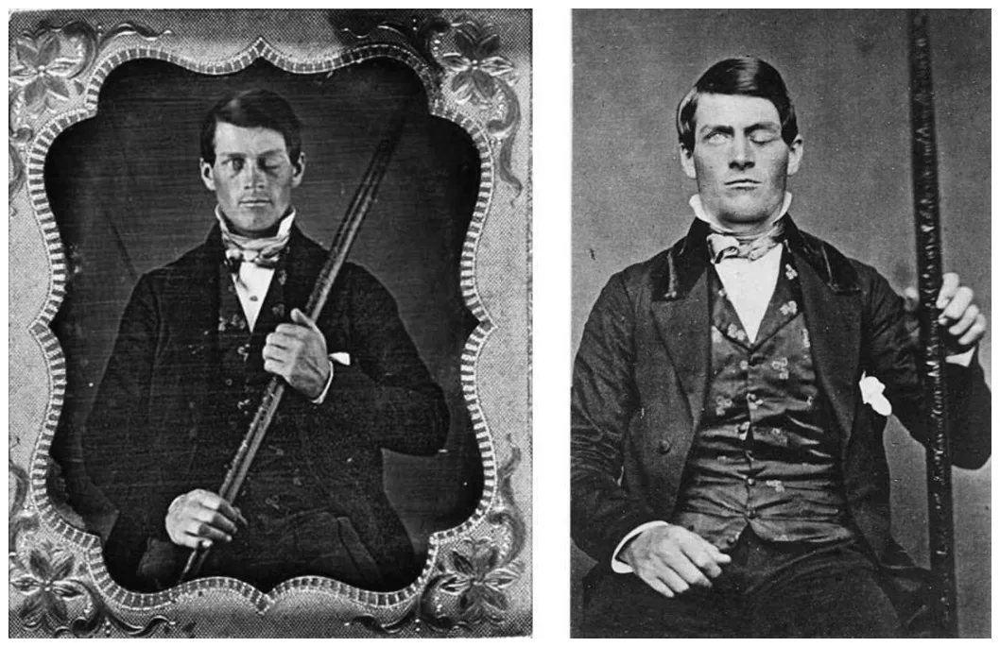
Hai bức ảnh được biết đến của Gage, cùng với thanh sắt đầm.
Đáng kinh ngạc là ông đã sống sót và hồi phục sức khỏe. Nhưng Gage vốn được kính trọng và điềm đạm đã hoàn toàn biến đổi. Theo lời bác sĩ theo dõi ông qua nhiều năm:
Sự cân bằng hay thăng bằng, có thể nói vậy, giữa các năng lực trí tuệ và khuynh hướng thú tính của ông dường như đã bị phá hủy. Ông thất thường, bất kính, đôi khi buông ra những lời thô tục tục tĩu nhất (điều trước đây không phải thói quen của ông), tỏ ra ít tôn trọng đồng nghiệp, thiếu kiên nhẫn trước sự kiềm chế hoặc lời khuyên khi nó xung đột với ham muốn của mình, đôi khi cố chấp bướng bỉnh, nhưng lại hay thay đổi và dao động, vạch ra nhiều kế hoạch hành động tương lai, nhưng vừa sắp xếp xong lại bỏ ngang để chuyển sang những kế hoạch khác có vẻ khả thi hơn.
Gage được bạn bè mô tả là “không còn là Gage nữa”, không thể tiếp tục công việc cũ và bị đẩy đến cảnh phải xuất hiện (cùng với thanh sắt của mình) như một vật trưng bày do P. T. Barnum tổ chức. Thật chua xót vô cùng.
— Đáng kinh ngạc thay, Gage đã khá hơn. Trong vòng vài năm sau chấn thương, ông có thể làm việc trở lại (chủ yếu làm người đánh xe ngựa) và được mô tả là có hành vi nhìn chung phù hợp. Mô vỏ não trán phải còn lại của ông đã đảm nhận một số chức năng bị mất trong vụ tai nạn. Tính mềm dẻo như vậy của bộ não là trọng tâm của chương 5.
— Một ví dụ khác về điều gì xảy ra khi vỏ não trán bị tổn thương được quan sát thấy trong chứng sa sút trí tuệ trán-thái dương (frontotemporal dementia - FTD), vốn bắt đầu bằng việc phá hủy vỏ não trán; điều hấp dẫn là những tế bào thần kinh đầu tiên bị giết chết chính là những tế bào thần kinh von Economo bí ẩn vốn chỉ có ở linh trưởng, voi và bộ cá voi.53
Những người mắc FTD trông như thế nào? Họ biểu hiện sự giải ức chế hành vi và các hành vi không phù hợp về mặt xã hội. Ngoài ra còn có sự thờ ơ và thiếu khả năng khởi xướng hành vi, phản ánh thực tế rằng “người quyết định” đang bị phá hủy.*
Điều tương tự cũng thấy ở bệnh Huntington, một rối loạn khủng khiếp do một đột biến cực kỳ kỳ quặc gây ra. Các mạch dưới vỏ não phối hợp tín hiệu tới cơ bắp bị phá hủy, và người bệnh dần bị mất khả năng vận động bởi những cử động vặn vẹo không tự chủ. Ngoại trừ việc hóa ra có cả tổn thương vùng trán nữa, thường xuất hiện trước tổn thương dưới vỏ não. Ở khoảng một nửa số bệnh nhân còn có sự giải ức chế hành vi — ăn cắp, hung hăng, tăng dục tính, những cơn cờ bạc cưỡng bức khó hiểu.* Sự giải ức chế xã hội và hành vi cũng xảy ra ở những cá nhân bị tổn thương do đột quỵ ở vỏ não trán — chẳng hạn, hành vi tấn công tình dục ở một cụ ông tám mươi tuổi.
Có một hoàn cảnh khác mà vỏ não trán bị suy giảm chức năng, tạo ra những biểu hiện hành vi tương tự — tăng dục tính, bùng nổ cảm xúc, những hành động phi logic rực rỡ.54 Đó là bệnh gì? Không phải bệnh nào cả. Bạn đang mơ đấy. Trong giấc ngủ REM, khi giấc mơ diễn ra, vỏ não trán ngừng hoạt động (off-line), và các biên kịch giấc mơ tha hồ tung hoành. Hơn nữa, nếu vỏ não trán được kích thích trong khi mọi người đang mơ, giấc mơ trở nên ít giống mơ hơn, với nhiều sự tự nhận thức hơn. Và còn một hoàn cảnh không bệnh lý khác nơi PFC im bặt, tạo ra những cơn sóng thần cảm xúc: trong lúc đạt cực khoái.
Một lĩnh vực cuối cùng của tổn thương vùng trán. Adrian Raine của Đại học Pennsylvania và Kent Kiehl của Đại học New Mexico báo cáo rằng những tội phạm thái nhân cách có hoạt động vỏ não trán suy giảm và ít sự kết nối hơn giữa PFC với các vùng não khác (so với tội phạm không thái nhân cách và nhóm đối chứng không phạm tội). Hơn nữa, một tỷ lệ lớn gây sốc những người bị giam giữ vì tội phạm bạo lực có tiền sử chấn thương sọ não gây chấn động ở vỏ não trán.55 Sẽ nói thêm ở chương 16.
Lời Tuyên Bố Bắt Buộc Về Sự Sai Lầm Của Việc Phân Đôi Nhận Thức và Cảm Xúc
PFC bao gồm nhiều phần, tiểu phần và tiểu-tiểu phần, đủ để giữ cho các nhà giải phẫu thần kinh không bị thất nghiệp. Có hai vùng đặc biệt quan trọng. Thứ nhất là phần lưng của PFC, đặc biệt là vỏ não trước trán lưng bên (dorsolateral PFC - dlPFC) — đừng lo về “lưng” hay “lưng bên”; chỉ là thuật ngữ chuyên môn thôi.* dlPFC là người quyết định của những người quyết định, phần lý tính, nhận thức, vị lợi và ít đa cảm nhất của
PFC. Nó là phần tiến hóa gần đây nhất của PFC và là phần cuối cùng trưởng thành hoàn toàn. Nó chủ yếu nghe từ và nói chuyện với các vùng vỏ não khác.
Trái ngược với dlPFC, có phần bụng của PFC, đặc biệt là vỏ não trước trán bụng giữa (ventromedial PFC - vmPFC). Đây là vùng vỏ não trán mà nhà giải phẫu thần kinh có tầm nhìn xa Nauta đã phong làm thành viên danh dự của hệ viền vì các kết nối qua lại của nó với hệ này. Một cách hợp lý, vmPFC hoàn toàn là về tác động của cảm xúc lên việc ra quyết định. Và nhiều hành vi tốt nhất cũng như tệ nhất của chúng ta liên quan đến sự tương tác của vmPFC với hệ viền và dlPFC.*
Các chức năng của dlPFC nhận thức là tinh túy của việc làm điều khó hơn.56 Nó là vùng vỏ não trán hoạt động mạnh nhất khi ai đó từ bỏ một phần thưởng tức thì để đổi lấy một phần thưởng lớn hơn về sau. Hãy xem xét một tình huống tiến thoái lưỡng nan đạo đức kinh điển — có ổn không khi giết một người vô tội để cứu năm người? Khi mọi người suy ngẫm câu hỏi này, mức độ kích hoạt dlPFC cao hơn dự báo khả năng trả lời có cao hơn (nhưng như chúng ta sẽ thấy ở chương 13, điều đó còn tùy thuộc vào cách bạn đặt câu hỏi).
Những con khỉ bị tổn thương dlPFC không thể chuyển đổi chiến lược trong một nhiệm vụ khi phần thưởng cho mỗi chiến lược thay đổi — chúng khăng khăng bám vào chiến lược mang lại phần thưởng tức thì nhất.57 Tương tự, những người bị tổn thương dlPFC bị suy giảm khả năng lập kế hoạch hoặc trì hoãn sự thỏa mãn, bám víu vào các chiến lược mang lại phần thưởng tức thì và cho thấy khả năng kiểm soát điều hành kém đối với hành vi của mình.* Đáng chú ý, kỹ thuật kích thích từ trường xuyên sọ (transcranial magnetic stimulation) có thể làm im lặng tạm thời một phần vỏ não của ai đó, như đã được thực hiện trong một nghiên cứu hấp dẫn của Ernst Fehr thuộc Đại học Zurich.58 Khi dlPFC bị làm im lặng, các đối tượng chơi một trò chơi kinh tế đã bốc đồng chấp nhận những đề nghị bèo bọt mà bình thường họ sẽ từ chối với hy vọng nhận được đề nghị tốt hơn trong tương lai. Điều cốt yếu là việc này liên quan đến tính xã hội — việc làm im lặng dlPFC không có tác dụng gì nếu đối tượng nghĩ người chơi kia là máy tính. Hơn nữa, nhóm đối chứng và các đối tượng bị làm im lặng dlPFC đều đánh giá các đề nghị bèo bọt là bất công như nhau; như vậy, theo kết luận của các tác giả, “các đối tượng [bị làm im lặng dlPFC] hành xử như thể họ không còn có thể thực thi các mục tiêu công bằng của mình nữa.”
Vậy các chức năng của vmPFC cảm xúc là gì?59 Đúng như những gì bạn mong đợi, xét đến các đầu vào từ cấu trúc hệ viền. Nó kích hoạt nếu đội bạn cổ vũ thắng một trận đấu, hoặc nếu bạn nghe nhạc dễ chịu so với nhạc chói tai (đặc biệt nếu bản nhạc tạo ra khoảnh khắc rùng mình dọc sống lưng).
Tác động của tổn thương vmPFC là gì?60 Rất nhiều thứ vẫn bình thường — trí thông minh, trí nhớ làm việc, khả năng ước lượng. Các cá nhân vẫn có thể “làm điều khó hơn” với các nhiệm vụ vùng trán thuần túy nhận thức (ví dụ: những câu đố mà bạn phải lùi một bước tiến để tiến thêm hai bước).
Sự khác biệt xuất hiện khi phải đưa ra các quyết định xã hội/cảm xúc — bệnh nhân vmPFC đơn giản là không thể quyết định được.* Họ hiểu các lựa chọn và có thể khuyên bảo khôn ngoan cho người khác trong hoàn cảnh tương tự. Nhưng kịch bản càng gần gũi với bản thân và càng nhiều cảm xúc, họ càng gặp vấn đề.
Damasio đã đưa ra một lý thuyết có ảnh hưởng về việc ra quyết định đượm màu cảm xúc, bắt nguồn từ triết học của Hume và William James; điều này sẽ sớm được thảo luận.61 Nói ngắn gọn, vỏ não trán chạy các thí nghiệm “như thể” (as if) về cảm giác ruột gan — “Mình sẽ cảm thấy thế nào nếu kết quả này xảy ra?” — và đưa ra lựa chọn dựa trên câu trả lời đó. Việc làm tổn thương vmPFC, qua đó loại bỏ đầu vào hệ viền tới PFC, làm triệt tiêu cảm giác ruột gan, khiến việc ra quyết định trở nên khó khăn hơn.
Hơn nữa, các quyết định cuối cùng mang tính vị lợi cao độ. Bệnh nhân vmPFC sẵn sàng một cách bất thường trong việc hy sinh một người, kể cả thành viên gia đình, để cứu năm người lạ.62 Họ quan tâm đến kết quả hơn là động cơ cảm xúc ẩn sau, trừng phạt người vô tình giết người nhưng không trừng phạt kẻ cố ý giết người nhưng thất bại, bởi vì suy cho cùng, chẳng có ai chết trong trường hợp thứ hai cả.
Đó chính là Ngài Spock, vận hành chỉ bằng dlPFC. Giờ đến một điểm cốt yếu. Những người phân đôi giữa suy nghĩ và cảm xúc thường ưu ái vế trước, coi cảm xúc là đáng ngờ. Nó làm rối tung việc ra quyết định bằng cách trở nên ủy mị, hát quá to, ăn mặc lòe loẹt, có lượng lông nách đáng ngại. Theo quan điểm này, cứ loại bỏ vmPFC đi, chúng ta sẽ lý tính hơn và vận hành tốt hơn.
Nhưng sự thật không phải vậy, như Damasio nhấn mạnh một cách hùng hồn. Những người bị tổn thương vmPFC không chỉ gặp khó khăn khi ra quyết định mà còn đưa ra những quyết định tồi tệ.63 Họ thể hiện sự phán đoán kém trong việc chọn bạn bè và bạn đời và không thay đổi hành vi dựa trên phản hồi tiêu cực. Chẳng hạn, hãy xem xét một nhiệm vụ đánh bạc nơi tỷ lệ phần thưởng cho các chiến lược khác nhau thay đổi mà đối tượng không biết, và đối tượng có thể thay đổi chiến lược chơi. Nhóm đối chứng thay đổi một cách tối ưu, ngay cả khi họ không thể diễn đạt bằng lời tỷ lệ phần thưởng đã thay đổi như thế nào. Những người bị tổn thương vmPFC thì không, ngay cả khi họ có thể diễn đạt bằng lời. Không có vmPFC, bạn có thể biết ý nghĩa của phản hồi tiêu cực, nhưng bạn không biết cảm giác của nó trong ruột gan và do đó không thay đổi hành vi.
Như chúng ta đã thấy, không có dlPFC, cái siêu ngã ẩn dụ biến mất, dẫn đến những cá nhân giờ đây trở thành những bản năng (id) cực kỳ hung hăng, cực kỳ ham muốn tình dục. Nhưng không có vmPFC, hành vi trở nên không phù hợp theo một cách tách biệt vô cảm. Đây là kiểu người mà khi gặp lại ai đó sau một thời gian dài, sẽ nói: “Chào cậu, tớ thấy cậu tăng cân rồi đấy.” Và khi bị người bạn đời xấu hổ chết điếng mắng mỏ sau đó, họ sẽ nói với vẻ bối rối điềm tĩnh: “Nhưng đó là sự thật mà.” vmPFC không phải là cái ruột thừa thoái hóa của vỏ não trán, nơi cảm xúc giống như bệnh viêm ruột thừa, làm sưng tấy một bộ não tỉnh táo. Thay vào đó, nó rất thiết yếu.64 Nó sẽ không thiết yếu nếu chúng ta tiến hóa thành người Vulcan. Nhưng chừng nào thế giới còn đầy rẫy con người, tiến hóa sẽ không bao giờ tạo ra chúng ta theo cách đó.
Sự kích hoạt của dlPFC và vmPFC có thể tương quan nghịch với nhau. Trong một nghiên cứu đầy cảm hứng nơi một bàn phím đàn được cung cấp cho các nghệ sĩ piano nhạc jazz bên trong máy quét não, vmPFC trở nên hoạt động mạnh hơn còn dlPFC hoạt động yếu đi khi các đối tượng ứng tác. Trong một nghiên cứu khác, các đối tượng đánh giá các hành vi gây hại giả định. Việc suy ngẫm về trách nhiệm của thủ phạm kích hoạt dlPFC; việc quyết định mức độ trừng phạt kích hoạt vmPFC.* Khi các đối tượng thực hiện một nhiệm vụ đánh bạc nơi xác suất phần thưởng cho các chiến lược khác nhau thay đổi và họ luôn có thể đổi chiến lược, việc ra quyết định phản ánh hai yếu tố: (a) kết quả của hành động gần nhất của họ (kết quả đó càng tốt, vmPFC kích hoạt càng mạnh), và (b) tỷ lệ phần thưởng từ tất cả các vòng trước đó, một thứ đòi hỏi cái nhìn hồi cố dài hạn (phần thưởng dài hạn càng tốt, dlPFC kích hoạt càng mạnh). Mức độ kích hoạt tương đối giữa hai vùng dự báo quyết định mà đối tượng đưa ra.65
Một quan điểm đơn giản hóa là vmPFC và dlPFC vĩnh viễn giao chiến để giành quyền thống trị giữa cảm xúc và nhận thức. Nhưng dù cảm xúc và nhận thức có thể tách rời phần nào, chúng hiếm khi đối đầu nhau. Thay vào đó, chúng đan xen trong một mối quan hệ hợp tác cần thiết cho chức năng bình thường, và khi các nhiệm vụ có cả thành phần cảm xúc lẫn nhận thức trở nên khó khăn hơn (đưa ra một quyết định kinh tế ngày càng phức tạp trong một bối cảnh ngày càng bất công), hoạt động ở hai cấu trúc trở nên đồng bộ hơn.
Vỏ Não Trán và Mối Quan Hệ của Nó với Hệ Viền
Giờ chúng ta đã có hình dung về chức năng của các tiểu phần khác nhau thuộc PFC và cách nhận thức cùng cảm xúc tương tác về mặt sinh học thần kinh. Điều này dẫn chúng ta đến việc xem xét cách vỏ não trán và hệ viền tương tác với nhau.
Trong những nghiên cứu mang tính bước ngoặt, Joshua Greene của Harvard và Cohen của Princeton đã chỉ ra cách các phần “cảm xúc” và “nhận thức” của não bộ có thể tách rời phần nào.66 Họ sử dụng bài toán “xe điện mất phanh” nổi tiếng của triết học, nơi một chiếc xe điện đang lao thẳng về phía năm người và bạn phải quyết định xem có ổn không nếu giết một người để cứu năm người. Cách đóng khung vấn đề là chìa khóa. Trong một phiên bản, bạn gạt cần chuyển hướng, lái chiếc xe điện sang một đường ray phụ. Điều này cứu được năm người, nhưng chiếc xe điện giết chết một người tình cờ đứng trên đường ray kia; 70 đến 90 phần trăm mọi người nói họ sẽ làm điều này. Trong kịch bản thứ hai, bạn dùng chính đôi tay mình đẩy người đó ra trước chiếc xe điện. Điều này làm chiếc xe dừng lại, nhưng người đó bị giết; 70 đến 90 phần trăm nói không đời nào. Cùng một sự đánh đổi về mặt số học, nhưng những quyết định hoàn toàn khác nhau.
Greene và Cohen đưa cho các đối tượng hai phiên bản này trong khi quét hình ảnh não của họ. Việc cân nhắc cố ý giết ai đó bằng chính đôi tay mình kích hoạt người quyết định dlPFC, cùng với các vùng liên quan đến cảm xúc phản ứng với các kích thích gây khó chịu (bao gồm một vùng vỏ não được kích hoạt bởi những từ ngữ nặng nề cảm xúc), hạch hạnh nhân và vmPFC. Sự kích hoạt hạch hạnh nhân càng nhiều và cảm xúc tiêu cực người tham gia báo cáo càng lớn khi quyết định, họ càng ít có khả năng đẩy.
Còn khi mọi người cân nhắc một cách tách biệt việc gạt một cái cần vô tình giết chết ai đó? Chỉ có dlPFC kích hoạt. Một quyết định thuần túy lý trí y như việc chọn xem dùng cờ-lê nào để sửa một món đồ. Một nghiên cứu tuyệt vời.*
Các nghiên cứu khác đã kiểm tra sự tương tác giữa các phần “nhận thức” và “cảm xúc” của não bộ. Một vài ví dụ:
Chương 3 thảo luận một số nghiên cứu gây bất an — đưa một người bình thường vào máy quét não, và cho anh ta xem ảnh một người thuộc chủng tộc khác chỉ trong một phần mười giây. Khoảng thời gian này quá nhanh để anh ta nhận thức được mình vừa thấy gì. Nhưng nhờ đường tắt giải phẫu đó, hạch hạnh nhân biết... và kích hoạt. Ngược lại, hãy chiếu bức ảnh trong thời gian lâu hơn. Một lần nữa hạch hạnh nhân kích hoạt, nhưng sau đó dlPFC nhận thức cũng kích hoạt theo, ức chế hạch hạnh nhân — nỗ lực kiểm soát thứ mà đối với hầu hết mọi người là một phản ứng ban đầu khó chấp nhận.
Chương 6 thảo luận các thí nghiệm nơi một đối tượng chơi một trò chơi với hai người khác và bị thao túng để cảm thấy mình đang bị cho ra rìa. Điều này kích hoạt hạch hạnh nhân, chất xám quanh cống (vùng não cổ xưa giúp xử lý nỗi đau thể xác), vỏ não vành trước và thùy đảo của cô ấy, một bức tranh giải phẫu của sự giận dữ, lo âu, đau đớn, ghê tởm, buồn bã. Ngay sau đó PFC của cô kích hoạt khi những lời hợp lý hóa ập vào — “Đây chỉ là một trò chơi ngớ ngẩn thôi; mình có bạn bè; con chó của mình yêu mình.” Và hạch hạnh nhân cùng đồng bọn dịu xuống. Còn nếu bạn làm điều tương tự với một người có vỏ não trán chưa vận hành đầy đủ thì sao? Hạch hạnh nhân bị kích hoạt ngày càng mạnh; người đó cảm thấy đau khổ ngày càng tăng. Bệnh thần kinh nào liên quan ở đây? Không có bệnh nào cả. Đây là một thiếu niên điển hình.
Cuối cùng, PFC điều phối sự dập tắt nỗi sợ. Hôm qua con chuột học được rằng: “Âm thanh đó được theo sau bởi một cú sốc điện,” nên tiếng âm thanh bắt đầu kích hoạt phản ứng đứng chết trân. Hôm nay không có cú sốc điện nào, và con chuột đã tiếp thu một sự thật khác chiếm quyền ưu tiên — “nhưng hôm nay thì không.” Sự thật đầu tiên vẫn còn đó; bằng chứng là, hãy bắt đầu ghép đôi âm thanh với cú sốc điện trở lại, và phản ứng đứng chết trân trước âm thanh được “khôi phục” nhanh hơn nhiều so với lúc mới học mối liên kết ban đầu.
“Nhưng hôm nay thì không” được củng cố ở đâu? Ở PFC, sau khi nhận thông tin từ hồi hải mã.67 PFC giữa kích hoạt các mạch ức chế trong BLA, và con chuột ngừng đứng chết trân trước âm thanh. Theo một mạch tương tự nhưng phản ánh nhận thức đặc thù ở người, hãy điều kiện hóa mọi người liên kết một hình vuông màu xanh trên màn hình với một cú sốc điện, và hạch hạnh nhân sẽ kích hoạt khi nhìn thấy hình vuông đó — nhưng ít hơn ở những đối tượng biết tái đánh giá tình huống, kích hoạt PFC giữa bằng cách nghĩ về, chẳng hạn, một bầu trời xanh tuyệt đẹp.
Điều này dẫn sang chủ đề điều hòa cảm xúc thông qua suy nghĩ.68 Điều hòa suy nghĩ đã khó (hãy thử không nghĩ về một con hà mã xem) nhưng với cảm xúc còn khó hơn nhiều; nghiên cứu của đồng nghiệp tại Stanford và người bạn thân của tôi là James Gross đã khám phá điều này. Trước hết, “suy nghĩ khác đi” về một điều gì đó mang tính cảm xúc khác với việc chỉ đơn thuần kìm nén biểu hiện của cảm xúc đó. Chẳng hạn, cho ai đó xem đoạn phim ghê rợn về, ví dụ, một ca cắt cụt chi. Các đối tượng nhăn mặt, kích hoạt hạch hạnh nhân và hệ thần kinh giao cảm. Giờ một nhóm được hướng dẫn che giấu cảm xúc của họ (“Tôi sắp cho bạn xem một đoạn phim khác, và tôi muốn bạn giấu đi phản ứng cảm xúc của mình”). Làm thế nào để làm điều đó hiệu quả nhất? Gross phân biệt giữa các chiến lược “tập trung vào tiền đề” (antecedent-focused) và “tập trung vào phản ứng” (response-focused). Tập trung vào phản ứng giống như kéo con ngựa cảm xúc quay lại chuồng sau khi nó đã chạy thoát — bạn đang xem đoạn phim kinh hoàng tiếp theo, cảm thấy buồn nôn, và bạn nghĩ: “Được rồi, ngồi yên, thở chậm lại.” Thông thường điều này gây ra sự kích hoạt thậm chí còn lớn hơn ở hạch hạnh nhân và hệ thần kinh giao cảm.
Các chiến lược tập trung vào tiền đề nhìn chung hiệu quả hơn, vì chúng giữ cửa chuồng đóng ngay từ đầu. Đó là việc nghĩ/cảm nhận về một thứ khác (ví dụ: kỳ nghỉ tuyệt vời đó), hoặc nghĩ/cảm nhận khác đi về những gì bạn đang xem (những sự tái đánh giá như “Chuyện đó không có thật; họ chỉ là diễn viên thôi”). Và khi thực hiện đúng cách, PFC, đặc biệt là dlPFC, kích hoạt, hạch hạnh nhân và hệ thần kinh giao cảm bị kìm hãm, và nỗi đau khổ chủ quan giảm xuống.*
Sự tái đánh giá tiền đề là lý do vì sao giả dược (placebo) có tác dụng.69 Nghĩ rằng “Ngón tay mình sắp bị kim châm” kích hoạt hạch hạnh nhân cùng một mạch các vùng não phản ứng với nỗi đau, và mũi kim gây đau. Nếu được bảo trước rằng loại kem bôi tay đang thoa lên ngón tay bạn là một loại kem giảm đau cực mạnh, bạn sẽ nghĩ: “Ngón tay mình sắp bị kim châm, nhưng loại kem này sẽ chặn đứng cơn đau.” PFC kích hoạt, làm cùn mòn hoạt động ở hạch hạnh nhân và mạch đau, cũng như cảm nhận về nỗi đau.
Những quá trình tư duy như thế, ở quy mô lớn hơn, là cốt lõi của một loại liệu pháp tâm lý đặc biệt hiệu quả — liệu pháp nhận thức hành vi (CBT) — để điều trị các rối loạn điều hòa cảm xúc.70 Hãy xem xét một người mắc chứng rối loạn lo âu xã hội do một trải nghiệm sang chấn kinh khủng thời thơ ấu. Nói một cách đơn giản, CBT là cung cấp các công cụ để tái đánh giá những hoàn cảnh khơi gợi sự lo âu — hãy nhớ rằng trong tình huống xã hội này, những cảm giác tồi tệ mà bạn đang trải qua là về những gì đã xảy ra hồi đó, chứ không phải những gì đang xảy ra bây giờ.*
Việc kiểm soát phản ứng cảm xúc bằng suy nghĩ như thế này mang tính từ trên xuống (top down) rất rõ; vỏ não trán làm dịu hạch hạnh nhân đang quá tải. Nhưng mối quan hệ PFC/hệ viền cũng có thể đi từ dưới lên (bottom up), khi một quyết định liên quan đến cảm giác ruột gan. Đây là xương sống trong giả thuyết dấu ấn cơ thể (somatic marker hypothesis) của Damasio. Việc lựa chọn giữa các phương án có thể liên quan đến một phân tích chi phí-lợi ích bằng lý trí. Nhưng nó cũng liên quan đến các “dấu ấn cơ thể”, những mô phỏng nội tại về việc mỗi kết quả sẽ mang lại cảm giác gì, được chạy trong hệ viền và báo cáo về cho vmPFC. Quá trình này không phải là một thí nghiệm tư duy; nó là một thí nghiệm cảm xúc, thực chất là một ký ức cảm xúc về một tương lai khả dĩ.
Một dấu ấn cơ thể nhẹ chỉ kích hoạt hệ viền.71 “Mình có nên làm hành vi A không? Có lẽ là không — khả năng xảy ra kết quả B nghe đáng sợ.” Một dấu ấn cơ thể sống động hơn kích hoạt cả hệ thần kinh giao cảm nữa. “Mình có nên làm hành vi A không? Chắc chắn là không — mình có thể cảm thấy da mình đang toát mồ hôi lạnh trước khả năng xảy ra kết quả B.” Việc tăng cường sức mạnh của tín hiệu giao cảm đó bằng thực nghiệm sẽ củng cố sự né tránh.
Đây là bức tranh về sự hợp tác bình thường giữa hệ viền và vỏ não trán.72 Đương nhiên, mọi thứ không phải lúc nào cũng cân bằng. Chẳng hạn, cơn giận khiến mọi người ít phân tích hơn và phản xạ nhiều hơn trong các quyết định trừng phạt. Những người bị căng thẳng thường đưa ra những quyết định tồi tệ kinh khủng, ngâm mình trong cảm xúc; chương 4 sẽ xem xét tác động của căng thẳng lên hạch hạnh nhân và vỏ não trán.*
Tác động của căng thẳng lên vỏ não trán được mổ xẻ bởi cố nhà tâm lý học Daniel Wegner của Harvard trong một bài báo có tựa đề rất đắt: “Làm Thế Nào Để Nghĩ, Nói Hoặc Làm Chính Xác Điều Tệ Nhất Trong Mọi Dịp.”73 Ông xem xét điều mà Edgar Allan Poe gọi là “con quỷ nghịch ngợm” (imp of the perverse):
Chúng ta thấy một cái rãnh trên đường phía trước và thế là bẻ lái xe đạp lao thẳng vào đó. Chúng ta tự nhủ trong đầu đừng nhắc đến một điểm nhạy cảm trong cuộc trò chuyện rồi rùng mình kinh hãi khi buột miệng nói ra chính xác điều đó. Chúng ta cẩn thận nâng niu ly rượu vang đỏ khi băng qua phòng, suốt dọc đường cứ nghĩ “đừng làm đổ”, và rồi tung hứng làm nó đổ ụp xuống thảm ngay trước ánh mắt của chủ nhà.
Wegner đã chứng minh một quy trình hai bước của sự điều hòa vỏ não trán: (A) một luồng xác định X là rất quan trọng; (B) luồng kia theo dõi xem kết luận là “Làm X” hay “Đừng bao giờ làm X”. Và trong lúc căng thẳng, mất tập trung hoặc tải nhận thức nặng, hai luồng có thể tách rời nhau; luồng A phát huy sự hiện diện của nó mà không có luồng B chỉ dẫn xem nên rẽ nhánh nào trên đường. Khả năng bạn làm chính xác điều sai trái tăng lên không phải bất chấp những nỗ lực tốt nhất của bạn mà chính vì một phiên bản bị căng thẳng làm rối loạn của những nỗ lực đó.
—
Phần này khép lại tổng quan của chúng ta về vỏ não trán; câu thần chú là nó khiến bạn làm điều khó hơn khi đó là điều đúng đắn. Năm điểm cuối cùng:
“Làm điều khó hơn” một cách hiệu quả không phải là lập luận để coi trọng cảm xúc hay nhận thức hơn bên còn lại. Chẳng hạn, như thảo luận ở chương 11, chúng ta thuận xã hội nhất đối với đạo đức nội nhóm khi các cảm xúc và trực giác nhanh, ngầm ẩn chiếm ưu thế, nhưng lại thuận xã hội nhất đối với đạo đức ngoại nhóm khi nhận thức nắm quyền kiểm soát. Thật dễ kết luận rằng PFC là để ngăn chặn các hành vi khinh suất (“Đừng làm thế; bạn sẽ hối hận đấy”). Nhưng không phải lúc nào cũng vậy. Chẳng hạn, ở chương 17 chúng ta sẽ xem xét lượng nỗ lực vỏ não trán đáng ngạc nhiên cần thiết để bóp cò súng. Giống như mọi thứ về bộ não, cấu trúc và chức năng của vỏ não trán biến thiên cực lớn giữa các cá nhân; ví dụ, tốc độ trao đổi chất khi nghỉ ngơi ở PFC biến thiên khoảng ba mươi lần giữa người với người.* Điều gì gây ra những khác biệt cá nhân như vậy? Hãy xem phần còn lại của cuốn sách này.74
“Làm điều khó hơn khi đó là điều đúng đắn cần làm.” Chữ “đúng đắn” trong trường hợp này được dùng theo nghĩa sinh học thần kinh và công cụ, hơn là nghĩa đạo đức. Hãy xem xét việc nói dối. Hiển nhiên, vỏ não trán hỗ trợ công việc khó nhọc là cưỡng lại cám dỗ. Nhưng cũng chính một nhiệm vụ lớn của vỏ não trán, đặc biệt là nhiệm vụ của dlPFC, là nói dối một cách thành thạo, kiểm soát nội dung cảm xúc của một tín hiệu, tạo ra một khoảng cách trừu tượng giữa thông điệp và ý nghĩa. Thú vị thay, những kẻ nói dối bệnh lý có lượng chất trắng lớn bất thường trong PFC, cho thấy hệ thống dây nối phức tạp hơn.75
Nhưng một lần nữa, “điều đúng đắn”, trong bối cảnh nói dối có sự hỗ trợ của vỏ não trán, là phi đạo đức. Một diễn viên nói dối khán giả rằng mình mang tâm trạng của một hoàng tử Đan Mạch u sầu. Một đứa trẻ có đạo đức theo tình huống nói dối, bảo với bà rằng cháu thích món quà của bà lắm, giấu nhẹm sự thật rằng cháu đã có món đồ chơi đó rồi. Một nhà lãnh đạo nói dối trắng trợn, châm ngòi một cuộc chiến tranh. Một nhà tài chính mang dòng máu Ponzi lừa đảo các nhà đầu tư. Một người phụ nữ nông dân nói dối tên côn đồ mặc quân phục, bảo hắn rằng bà không biết tung tích những người tị nạn mà bà biết rõ đang trốn trên gác mái nhà mình. Cũng như nhiều điều khác về vỏ não trán, tất cả là ngữ cảnh, ngữ cảnh, ngữ cảnh.
— Vỏ não trán lấy đâu ra động lực ẩn dụ để làm điều khó hơn? Để trả lời, giờ chúng ta nhìn vào nhánh cuối cùng của mình, hệ thống “phần thưởng” dopaminergic trong não bộ.
HỆ THỐNG DOPAMINE TRUNG NÃO-VIỀN / TRUNG NÃO-VỎ NÃO
Phần thưởng, khoái cảm và hạnh phúc là những khái niệm phức tạp, và sự theo đuổi có động lực đối với chúng xuất hiện ít nhất ở dạng sơ khai ở nhiều loài. Chất dẫn truyền thần kinh dopamine giữ vai trò trung tâm để hiểu điều này.
Các Nhân, Đầu Vào và Đầu Ra
Dopamine được tổng hợp ở nhiều vùng não. Một vùng như thế giúp khởi phát chuyển động; tổn thương ở đó gây ra bệnh Parkinson. Một vùng khác điều hòa sự giải phóng một loại hormone tuyến yên. Nhưng hệ thống dopaminergic mà chúng ta quan tâm bắt nguồn từ một vùng cổ xưa, được bảo tồn qua tiến hóa gần thân não gọi là vùng trần bụng (ventral tegmental area, từ đây gọi là “vùng trần” / tegmentum).
Một đích đến then chốt của các tế bào thần kinh dopaminergic này là vùng não nhiều âm tiết cuối cùng được giới thiệu trong chương này, nhân nằm (nucleus accumbens, từ đây gọi là “nhân nằm” / accumbens). Có tranh luận xem liệu nhân nằm có nên được tính là một phần của hệ viền hay không, nhưng ít nhất nó cũng mang đậm tính hệ viền.
Đây là cái nhìn đầu tiên của chúng ta về tổ chức của mạch này:76
a. Vùng trần gửi các đường chiếu tới nhân nằm và các vùng hệ viền (khác) như hạch hạnh nhân và hồi hải mã. Tập hợp này được gọi là “con đường dopamine trung não-viền” (mesolimbic dopamine pathway). b. Vùng trần cũng chiếu tới PFC (nhưng đáng chú ý là không chiếu tới các vùng vỏ não khác). Đây gọi là “con đường dopamine trung não-vỏ não” (mesocortical dopamine pathway). Tôi sẽ gộp chung hai con đường trung não-viền và trung não-vỏ não thành “hệ thống dopaminergic”, bỏ qua việc chúng không phải lúc nào cũng được kích hoạt đồng thời.* c. Nhân nằm chiếu tới các vùng liên quan đến vận động. d. Đương nhiên, hầu hết các vùng nhận đường chiếu từ vùng trần và/hoặc nhân nằm đều chiếu ngược lại về chúng. Thú vị nhất sẽ là các đường chiếu từ hạch hạnh nhân và PFC.
Phần Thưởng
Ở mức độ sơ bộ, hệ thống dopaminergic là về phần thưởng — nhiều kích thích dễ chịu khác nhau kích hoạt các tế bào thần kinh vùng trần, kích hoạt sự giải phóng dopamine của chúng.77 Một số bằng chứng ủng hộ: (a) các chất gây nghiện như cocaine, heroin và rượu giải phóng dopamine ở nhân nằm; (b) nếu sự giải phóng dopamine từ vùng trần bị chặn lại, các kích thích vốn mang lại phần thưởng trước đó trở nên gây khó chịu; (c) căng thẳng hoặc đau đớn mạn tính làm cạn kiệt dopamine và làm giảm độ nhạy của tế bào thần kinh dopamine trước kích thích, tạo ra triệu chứng đặc trưng của trầm cảm — “chứng mất khoái cảm (anhedonia)”, sự mất khả năng cảm nhận khoái cảm.
Một số phần thưởng, như tình dục, giải phóng dopamine ở mọi loài được khảo sát.78 Đối với con người, chỉ cần nghĩ về tình dục thôi cũng đủ.*79 Thức ăn khơi gợi sự giải phóng dopamine ở những cá thể đang đói thuộc mọi loài, với một điểm xoắn thêm ở con người. Cho một người xem bức ảnh ly sữa lắc sau khi họ vừa uống xong một ly, hiếm khi có sự kích hoạt dopaminergic — đã có sự bão hòa. Nhưng với những đối tượng đang ăn kiêng, có sự kích hoạt mạnh hơn nữa. Nếu bạn đang nỗ lực hạn chế lượng thức ăn nạp vào, một ly sữa lắc chỉ khiến bạn thèm thêm một ly nữa.
Hệ thống dopamine trung não-viền cũng phản ứng với cái đẹp thẩm mỹ dễ chịu.80 Trong một nghiên cứu, mọi người nghe nhạc mới; nhân nằm kích hoạt càng nhiều, đối tượng càng có khả năng mua bản nhạc đó sau đó. Và còn có sự kích hoạt dopaminergic đối với những phát minh văn hóa nhân tạo — ví dụ, khi nam giới bình thường nhìn vào ảnh xe thể thao.
Các mô hình giải phóng dopamine trở nên thú vị nhất khi liên quan đến tương tác xã hội.81 Một số phát hiện thực sự ấm lòng. Trong một nghiên cứu, đối tượng chơi một trò chơi kinh tế với ai đó, nơi người chơi được thưởng trong hai hoàn cảnh: (a) nếu cả hai người chơi hợp tác, mỗi người nhận được một phần thưởng vừa phải, và (b) đâm sau lưng người kia mang lại cho đối tượng một phần thưởng lớn, trong khi người kia chẳng được gì. Trong khi cả hai kết quả đều làm tăng hoạt động dopaminergic, mức tăng lớn hơn xảy ra sau sự hợp tác.*
Nghiên cứu khác xem xét hành vi kinh tế của việc trừng phạt những kẻ khốn nạn.82 Trong một nghiên cứu, các đối tượng chơi một trò chơi nơi người chơi B có thể chơi xỏ người chơi A để kiếm lời. Tùy theo vòng, người chơi A có thể (a) không làm gì, (b) trừng phạt người chơi B bằng cách lấy đi một phần tiền của người chơi B (mà người chơi A không tốn chi phí gì), hoặc (c) trả một đơn vị tiền để lấy đi hai đơn vị của người chơi B. Việc trừng phạt kích hoạt hệ thống dopamine, đặc biệt khi đối tượng phải trả tiền để trừng phạt; mức tăng dopamine trong lúc trừng phạt không tốn phí càng lớn, người ta càng sẵn lòng trả tiền để trừng phạt. Trừng phạt hành vi vi phạm chuẩn mực mang lại cảm giác thỏa mãn.
Một nghiên cứu tuyệt vời khác, do Elizabeth Phelps của Đại học New York thực hiện, liên quan đến việc “trả giá quá cao” trong các cuộc đấu giá, nơi mọi người đặt giá nhiều tiền hơn dự kiến.83 Điều này được diễn giải là phản ánh phần thưởng bổ sung của việc đánh bại ai đó trong khía cạnh cạnh tranh của đấu giá. Như vậy, “thắng” một cuộc đấu giá về bản chất mang tính cạnh tranh xã hội, không giống như “trúng” xổ số. Trúng xổ số và thắng đấu giá đều kích hoạt tín hiệu dopaminergic ở đối tượng; trượt xổ số không có tác dụng gì, trong khi thua một cuộc chiến đấu giá ức chế sự giải phóng dopamine. Không trúng số là xui xẻo; không thắng đấu giá là sự phục tùng về mặt xã hội.
Điều này gợi lên bóng ma của sự ghen tị. Trong một nghiên cứu hình ảnh học thần kinh, các đối tượng đọc về thành tích học tập, sự nổi tiếng, sức hấp dẫn và sự giàu có của một nhân vật giả định.84 Những mô tả khơi gợi sự ghen tị tự báo cáo đã kích hoạt các vùng vỏ não liên quan đến cảm nhận nỗi đau. Sau đó, cá nhân giả định đó được mô tả là gặp phải một vận rủi (ví dụ: bị giáng chức). Sự kích hoạt các con đường đau đớn càng nhiều trước tin tức về vận may của người kia thì càng dự báo sự kích hoạt dopaminergic nhiều hơn sau khi biết tin về vận rủi của họ. Như vậy có sự kích hoạt dopaminergic trong trạng thái schadenfreude — hả hê trước sự sa cơ lỡ vận của người mình ghen tị.
Hệ thống dopamine mang lại những hiểu biết sâu sắc về sự ghen tuông, oán giận và đố kỵ, dẫn đến một phát hiện đáng buồn khác.85 Một con khỉ đã học được rằng khi nó nhấn cần gạt mười lần, nó nhận được một quả nho khô làm phần thưởng. Điều đó vừa xảy ra, và kết quả là mười đơn vị dopamine được giải phóng ở nhân nằm. Giờ — bất ngờ chưa! — con khỉ nhấn cần gạt mười lần và nhận được hai quả nho khô. Chà: hai mươi đơn vị dopamine được giải phóng. Và khi con khỉ tiếp tục nhận được tiền lương hai quả nho khô, kích thước của phản ứng dopamine quay trở lại mười đơn vị. Giờ thưởng cho con khỉ chỉ một quả nho khô duy nhất, và mức dopamine sụt giảm.
Tại sao? Đây là thế giới của sự quen nhờn (habituation), nơi chẳng có gì tuyệt vời được như lần đầu tiên đó.
Đáng tiếc là mọi thứ buộc phải vận hành theo cách này vì dải phần thưởng rộng lớn của chúng ta.86 Suy cho cùng, việc mã hóa phần thưởng phải đáp ứng được đặc tính tưởng thưởng của cả việc giải một bài toán lẫn việc đạt cực khoái. Phản ứng dopaminergic đối với phần thưởng, thay vì mang tính tuyệt đối, lại mang tính tương đối so với giá trị phần thưởng của các kết quả thay thế. Để đáp ứng được khoái cảm của cả toán học lẫn cực khoái, hệ thống phải liên tục tái điều chỉnh tỷ lệ để phù hợp với dải cường độ do các kích thích cụ thể mang lại. Phản ứng đối với bất kỳ phần thưởng nào phải quen nhờn dần khi lặp lại, để hệ thống có thể phản ứng hết biên độ với thứ mới mẻ tiếp theo.
Điều này được chứng minh trong một nghiên cứu tuyệt đẹp của Wolfram Schultz thuộc Đại học Cambridge.87 Tùy vào hoàn cảnh, khỉ được huấn luyện để kỳ vọng hoặc hai hoặc hai mươi đơn vị phần thưởng. Nếu chúng bất ngờ nhận được bốn hoặc bốn mươi đơn vị tương ứng, sẽ có một đợt bùng nổ giải phóng dopamine giống hệt nhau; việc nhận một hoặc mười đơn vị tạo ra một sự sụt giảm giống hệt nhau. Chính kích thước tương đối, chứ không phải tuyệt đối, của sự bất ngờ mới là điều quan trọng trên một dải phần thưởng gấp mười lần.
Những nghiên cứu này cho thấy hệ thống dopamine mang tính hai chiều.88 Nó phản ứng với mức tăng không phụ thuộc tỷ lệ đối với tin vui bất ngờ và mức giảm đối với tin xấu. Schultz đã chứng minh rằng sau một phần thưởng, hệ thống dopamine mã hóa cho sự sai lệch so với kỳ vọng — nhận được đúng thứ bạn kỳ vọng, và có một dòng dopamine rỉ ra ở trạng thái ổn định. Nhận được nhiều phần thưởng hơn và/hoặc nhận được sớm hơn kỳ vọng, và có một đợt bùng nổ lớn; ít hơn và/hoặc muộn hơn, một sự sụt giảm. Một số tế bào thần kinh vùng trần phản ứng với sai lệch dương so với kỳ vọng, số khác phản ứng với sai lệch âm; một cách hợp lý, nhóm sau là các tế bào thần kinh cục bộ giải phóng chất dẫn truyền thần kinh ức chế GABA. Chính những tế bào thần kinh đó tham gia vào sự quen nhờn, nơi phần thưởng từng khơi gợi phản ứng dopamine lớn trở nên kém hào hứng hơn.*
Một cách hợp lý, các loại tế bào thần kinh mã hóa khác nhau này ở vùng trần (cũng như ở nhân nằm) nhận đường chiếu từ vỏ não trán — đó là nơi diễn ra mọi phép tính kỳ vọng/sai lệch — “Được rồi, mình tưởng mình sẽ được 5.0 nhưng lại chỉ được 4.9. Chuyện đó hụt hẫng cỡ nào đây?”
Các vùng vỏ não bổ sung cũng tham gia góp ý. Trong một nghiên cứu, đối tượng được cho xem một món đồ để mua, với mức độ kích hoạt nhân nằm dự báo số tiền người đó sẵn sàng trả.89 Sau đó họ được báo giá; nếu giá thấp hơn số tiền họ sẵn sàng chi, có sự kích hoạt của vmPFC cảm xúc; đắt hơn, sẽ có sự kích hoạt của vỏ não thùy đảo liên quan đến sự ghê tởm. Kết hợp tất cả dữ liệu hình ảnh học thần kinh lại, bạn có thể dự đoán được liệu người đó có mua món đồ hay không.
Như vậy, ở các loài động vật có vú điển hình, hệ thống dopamine mã hóa một cách không phụ thuộc tỷ lệ trên một dải trải nghiệm rộng cho cả những bất ngờ tốt và xấu, đồng thời liên tục quen nhờn với tin tức của ngày hôm qua. Nhưng con người có thêm một thứ nữa, đó là chúng ta phát minh ra những khoái cảm mãnh liệt hơn rất nhiều so với bất cứ thứ gì thế giới tự nhiên mang lại.
Một lần nọ, trong buổi hòa nhạc đàn đại phong cầm ở nhà thờ, khi tôi ngồi nổi da gà giữa cơn sóng thần âm thanh đó, một ý nghĩ lóe lên trong đầu tôi: đối với một người nông dân thời trung cổ, đây hẳn phải là âm thanh do con người tạo ra to nhất mà họ từng trải nghiệm, gây choáng ngợp theo những cách giờ không thể tưởng tượng nổi. Chẳng trách họ đăng ký theo tôn giáo đang được truyền bá. Và giờ đây chúng ta liên tục bị dội bom bởi những âm thanh khiến cây đàn phong cầm cổ kính kia trở nên nhỏ bé. Xưa kia, những người săn bắt – hái lượm có thể tình cờ tìm thấy mật ong từ tổ ong rừng và nhờ thế thỏa mãn thoáng chốc một cơn thèm ăn đã được lập trình sẵn. Còn giờ đây chúng ta có hàng trăm loại thực phẩm thương mại được thiết kế tỉ mỉ cung cấp một đợt bùng nổ cảm giác không một loại thực phẩm tự nhiên tầm thường nào sánh kịp. Xưa kia, chúng ta có những cuộc đời mà giữa muôn vàn thiếu thốn cũng mang lại vô số khoái cảm tinh tế, khó nhọc mới có được. Còn giờ đây chúng ta có những loại ma túy gây ra những cơn co thắt khoái cảm và giải phóng dopamine cao gấp nghìn lần bất cứ thứ gì được kích thích trong thế giới không ma túy xưa cũ của chúng ta.
Một sự trống rỗng nảy sinh từ sự kết hợp giữa những nguồn phần thưởng phi tự nhiên quá đà này với tính tất yếu của sự quen nhờn; đó là bởi những vụ nổ mạnh mẽ phi tự nhiên của trải nghiệm, cảm giác và khoái cảm nhân tạo khơi gợi mức độ quen nhờn mạnh mẽ phi tự nhiên.90 Điều này có hai hệ quả. Thứ nhất, chẳng mấy chốc chúng ta hầu như không còn nhận thấy những lời thì thầm thoáng qua của khoái cảm do lá thu rơi, hay bởi ánh nhìn lưu luyến của đúng người, hay bởi lời hứa hẹn phần thưởng sau một nhiệm vụ khó khăn, xứng đáng. Và hệ quả thứ hai là cuối cùng chúng ta quen nhờn với ngay cả những trận đại hồng thủy cường độ nhân tạo đó. Nếu chúng ta được thiết kế bởi các kỹ sư, khi tiêu thụ nhiều hơn, chúng ta sẽ khao khát ít đi. Nhưng bi kịch thường trực của con người chúng ta là càng tiêu thụ nhiều, chúng ta càng đói khát hơn. Nhiều hơn, nhanh hơn và mạnh hơn. Thứ từng là một khoái cảm bất ngờ ngày hôm qua lại là thứ chúng ta cảm thấy mình mặc nhiên xứng đáng có hôm nay, và là thứ sẽ không còn đủ vào ngày mai.
Sự Kỳ Vọng Phần Thưởng
Như vậy, dopamine là về phần thưởng mang tính đố kỵ và nhanh chóng quen nhờn. Nhưng dopamine còn thú vị hơn thế. Quay lại với con khỉ được huấn luyện bài bản của chúng ta đang làm việc để nhận phần thưởng. Một ngọn đèn bật sáng trong phòng nó, báo hiệu bắt đầu một lượt thử nghiệm phần thưởng. Nó đi tới cần gạt, nhấn mười lần và nhận phần thưởng quả nho khô; chuyện này đã xảy ra đủ nhiều đến mức chỉ còn một mức tăng nhỏ dopamine với mỗi quả nho khô.
Tuy nhiên, điều quan trọng là rất nhiều dopamine được giải phóng ngay khi ngọn đèn vừa bật sáng, báo hiệu bắt đầu lượt thử nghiệm phần thưởng, trước khi con khỉ bắt đầu nhấn cần gạt.
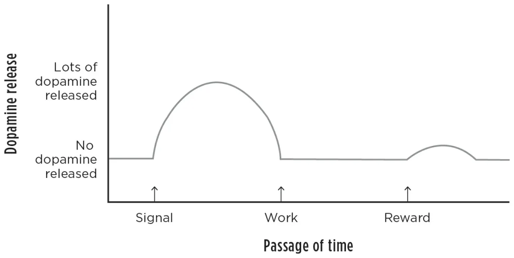
Truy cập bit.ly/2ovJngg để xem phiên bản lớn hơn của biểu đồ này.
Nói cách khác, một khi các điều kiện phần thưởng đã được học, dopamine ít liên quan đến bản thân phần thưởng mà liên quan nhiều hơn đến sự kỳ vọng nó. Tương tự, công trình của đồng nghiệp tôi tại Stanford là Brian Knutson đã chỉ ra sự kích hoạt con đường dopamine ở người khi kỳ vọng một phần thưởng tiền bạc.91 Dopamine là về sự làm chủ, sự kỳ vọng và sự tự tin. Nó là “Mình biết mọi thứ vận hành thế nào; chuyện này sắp tuyệt vời lắm đây.” Nói cách khác, khoái cảm nằm ở sự kỳ vọng phần thưởng, còn bản thân phần thưởng gần như chỉ là một phần phụ thêm vào sau (trừ phi, tất nhiên, phần thưởng không xuất hiện, trong trường hợp đó nó trở thành thứ quan trọng nhất trên đời). Nếu bạn biết cơn thèm của mình sẽ được thỏa mãn, khoái cảm nằm ở cơn thèm nhiều hơn là ở sự thỏa mãn.* Điều này cực kỳ quan trọng.
Sự kỳ vọng đòi hỏi học tập.92 Học tên đệm của Warren G. Harding, và các khớp thần kinh ở hồi hải mã trở nên dễ kích thích hơn. Học được rằng khi đèn bật sáng là đến giờ nhận thưởng, và chính các tế bào thần kinh hồi hải mã, hạch hạnh nhân và vỏ não trán chiếu tới các tế bào thần kinh dopamine trở nên dễ kích thích hơn.
Điều này giải thích cơn thèm phụ thuộc ngữ cảnh trong chứng nghiện.93 Giả sử một người nghiện rượu đã cai sạch và tỉnh táo nhiều năm. Đưa anh ta quay lại nơi việc uống rượu từng diễn ra (ví dụ: góc phố tồi tàn đó, câu lạc bộ quý ông sang trọng đó), và những khớp thần kinh đã được tăng cường đó, những tín hiệu đã được học để liên kết với rượu đó, gầm rú sống dậy hành động, dopamine dâng trào theo sự kỳ vọng, và cơn thèm ập xuống nhấn chìm.
Liệu một tín hiệu đáng tin cậy báo trước phần thưởng sắp tới cuối cùng có thể tự nó trở thành phần thưởng không? Điều này đã được Huda Akil thuộc Đại học Michigan chứng minh. Một ngọn đèn ở phía bên trái lồng chuột báo hiệu rằng việc nhấn cần gạt sẽ tạo ra phần thưởng từ máng thức ăn ở phía bên phải. Đáng chú ý, chuột cuối cùng sẽ làm việc chỉ để có cơ hội lảng vảng ở phía bên trái lồng, chỉ vì ở đó cảm thấy dễ chịu quá. Tín hiệu đã thu được sức mạnh dopaminergic của thứ đang được báo hiệu. Tương tự, chuột sẽ làm việc để được tiếp xúc với một tín hiệu báo trước rằng một loại phần thưởng nào đó nhiều khả năng sẽ đến, mà không biết là gì hay khi nào. Đây chính là bản chất của vật sùng bái (fetish), theo cả nghĩa nhân học lẫn nghĩa tình dục.94
Nhóm của Schultz đã chỉ ra rằng độ lớn của mức tăng dopamine kỳ vọng phản ánh hai biến số. Thứ nhất là kích thước của phần thưởng được kỳ vọng. Một con khỉ đã học được rằng ánh đèn nghĩa là mười lần nhấn cần gạt kiếm được một đơn vị phần thưởng, trong khi âm thanh nghĩa là mười lần nhấn kiếm được mười đơn vị. Và chẳng bao lâu âm thanh khơi gợi nhiều dopamine kỳ vọng hơn ánh đèn. Đó là “Chuyện này sắp tuyệt vời đây” so với “Chuyện này sắp TUYỆT VỜI ĐÂY.”
Biến số thứ hai thật phi thường. Quy tắc là đèn bật sáng, bạn nhấn cần gạt, bạn nhận phần thưởng. Giờ mọi thứ thay đổi. Đèn bật sáng, nhấn cần gạt, nhận phần thưởng... chỉ 50 phần trăm số lần. Đáng chú ý, một khi kịch bản mới đó được học, lượng dopamine được giải phóng nhiều hơn hẳn. Tại sao? Bởi vì không gì tiếp nhiên liệu cho sự giải phóng dopamine mạnh như chữ “có lẽ” của sự củng cố ngắt quãng.95
Lượng dopamine bổ sung này được giải phóng vào một thời điểm đặc trưng. Đèn bật sáng trong kịch bản 50 phần trăm, tạo ra mức tăng dopamine kỳ vọng thông thường trước khi việc nhấn cần gạt bắt đầu. Quay lại những ngày có thể dự đoán được khi nhấn cần gạt luôn mang lại phần thưởng, một khi việc nhấn hoàn tất, mức dopamine giữ ở mức thấp cho đến khi phần thưởng tới, theo sau là một chút nhích nhẹ của dopamine. Nhưng trong kịch bản 50 phần trăm này, một khi việc nhấn hoàn tất, mức dopamine bắt đầu tăng lên, được thúc đẩy bởi sự bất định của “có lẽ có, có lẽ không.”
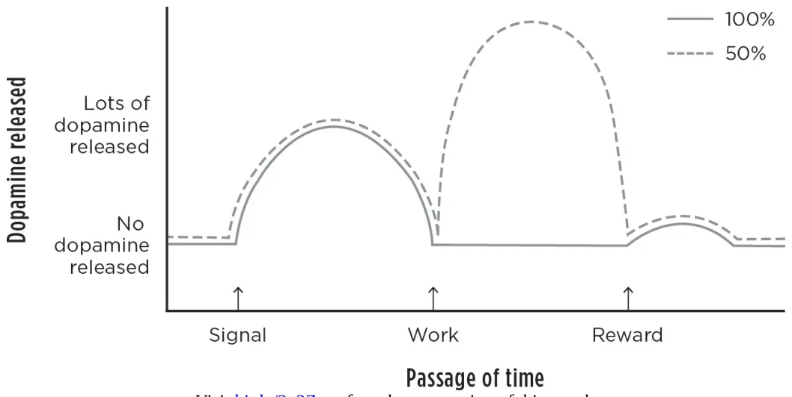
Truy cập bit.ly/2o3Zvcq để xem phiên bản lớn hơn của biểu đồ này.
Điều chỉnh mọi thứ thêm nữa; phần thưởng giờ xuất hiện 25 hoặc 75 phần trăm số lần. Sự dịch chuyển từ 50 xuống 25 phần trăm và dịch chuyển từ 50 lên 75 phần trăm hoàn toàn trái ngược nhau về xác suất phần thưởng, và công trình từ nhóm của Knutson cho thấy xác suất phần thưởng càng lớn, kích hoạt ở PFC giữa càng nhiều.96 Nhưng các bước chuyển từ 50 xuống 25 phần trăm và từ 50 lên 75 phần trăm đều làm giảm độ lớn của sự bất định. Và mức tăng thứ cấp của dopamine đối với khả năng nhận thưởng 25 hoặc 75 phần trăm đều nhỏ hơn so với 50 phần trăm. Như vậy, sự giải phóng dopamine kỳ vọng đạt đỉnh khi có sự bất định lớn nhất về việc liệu phần thưởng có xảy ra hay không.* Thú vị thay, trong hoàn cảnh bất định, sự giải phóng dopamine kỳ vọng tăng cường chủ yếu diễn ra ở con đường trung não-vỏ não hơn là trung não-viền, ngụ ý rằng sự bất định là một trạng thái phức tạp hơn về mặt nhận thức so với sự kỳ vọng một phần thưởng có thể dự đoán được.
Tất cả những điều này chẳng có gì mới mẻ đối với các nhà tâm lý học danh dự đang điều hành Las Vegas. Về mặt logic, cờ bạc không nên khơi gợi nhiều dopamine kỳ vọng, xét đến tỷ lệ thắng thấp đến mức thiên văn. Nhưng kỹ thuật hành vi — hoạt động 24/7 và sự thiếu vắng tín hiệu thời gian, rượu giá rẻ ngâm chua khả năng phán đoán của vỏ não trán, những thao túng khiến bạn cảm thấy hôm nay là ngày may mắn của mình — làm bóp méo và dịch chuyển nhận thức về tỷ lệ cược vào một khoảng nơi dopamine tuôn trào và, ồ, tại sao không chứ, thử thêm lần nữa nào.
Sự tương tác giữa chữ “có lẽ” và khuynh hướng nghiện cờ bạc được thấy trong một nghiên cứu về những lần “suýt trúng” (near misses) — khi hai trong số ba cuộn quay xếp thẳng hàng trong máy đánh bạc. Ở nhóm đối chứng, chỉ có sự kích hoạt dopaminergic tối thiểu sau các lần trượt thuộc bất kỳ loại nào; ở những người nghiện cờ bạc bệnh lý, một lần suýt trúng kích hoạt hệ thống dopamine điên cuồng. Một nghiên cứu khác liên quan đến hai tình huống cá cược có xác suất phần thưởng giống hệt nhau nhưng mức độ thông tin về các điều kiện phần thưởng khác nhau. Hoàn cảnh có ít thông tin hơn (tức là thiên về sự mơ hồ hơn là rủi ro) kích hoạt hạch hạnh nhân và làm im lặng tín hiệu dopaminergic; thứ được nhận thức là rủi ro được tính toán kỹ lưỡng thì gây nghiện, còn sự mơ hồ thì chỉ gây bứt rứt.97
Sự Theo Đuổi
Vậy dopamine liên quan đến sự kỳ vọng phần thưởng hơn là bản thân phần thưởng. Đã đến lúc thêm một mảnh ghép nữa vào bức tranh. Hãy xem xét con khỉ được huấn luyện phản ứng với tín hiệu ánh sáng bằng cách nhấn cần gạt, và phần thưởng đi ra; như chúng ta giờ đã biết, một khi mối liên kết đó được thiết lập, hầu hết sự giải phóng dopamine mang tính kỳ vọng, xảy ra ngay sau tín hiệu.
Điều gì xảy ra nếu sự giải phóng dopamine sau tín hiệu ánh sáng không diễn ra?98
Điều cốt yếu là con khỉ không nhấn cần gạt. Tương tự, nếu bạn phá hủy nhân nằm của nó, một con chuột sẽ đưa ra những lựa chọn bốc đồng, thay vì kiên nhẫn chờ đợi một phần thưởng lớn hơn bị trì hoãn. Ngược lại, quay lại với con khỉ — nếu thay vì nháy tín hiệu ánh sáng bạn kích thích điện vùng trần để giải phóng dopamine, con khỉ sẽ nhấn cần gạt. Dopamine không chỉ là về sự kỳ vọng phần thưởng; nó tiếp nhiên liệu cho hành vi hướng đích cần thiết để giành được phần thưởng đó; dopamine “gắn kết” giá trị của một phần thưởng với công sức bỏ ra. Nó là về động lực nảy sinh từ những đường chiếu dopaminergic tới PFC vốn cần thiết để làm điều khó hơn (tức là lao động).
Nói cách khác, dopamine không phải là về hạnh phúc của phần thưởng. Nó là về hạnh phúc của sự theo đuổi phần thưởng có cơ hội xảy ra kha khá.*99
Điều này là trung tâm để hiểu bản chất của động lực, cũng như những thất bại của nó (ví dụ: trong trầm cảm, nơi có sự ức chế tín hiệu dopamine nhờ căng thẳng, hoặc trong lo âu, nơi sự ức chế như vậy gây ra bởi các đường chiếu từ hạch hạnh nhân).100 Nó cũng cho chúng ta biết về nguồn gốc sức mạnh vỏ não trán đằng sau ý chí. Trong một nhiệm vụ nơi người ta chọn giữa một phần thưởng tức thì và một phần thưởng bị trì hoãn (lớn hơn), việc cân nhắc phần thưởng tức thì kích hoạt các đích hệ viền của dopamine (tức con đường trung não-viền), trong khi việc cân nhắc phần thưởng bị trì hoãn kích hoạt các đích vỏ não trán (tức con đường trung não-vỏ não). Sự kích hoạt của con đường sau càng lớn, khả năng trì hoãn sự thỏa mãn càng cao.
Những nghiên cứu này liên quan đến các kịch bản gồm một đợt làm việc ngắn ngay sau đó là phần thưởng.101 Còn khi công việc đòi hỏi phải kéo dài, và phần thưởng bị trì hoãn đáng kể thì sao? Trong kịch bản đó có một đợt tăng thứ cấp của dopamine, một sự gia tăng từ từ tiếp nhiên liệu cho công việc bền bỉ; mức độ tăng dần của dopamine là một hàm số của độ dài thời gian trì hoãn và kích thước phần thưởng được kỳ vọng:
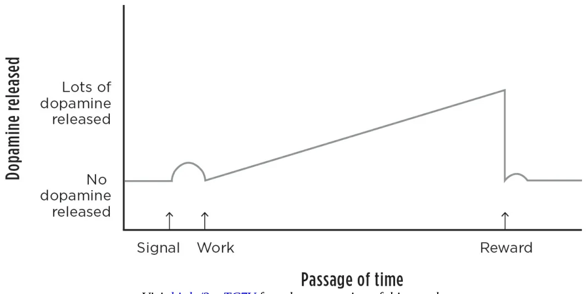
Truy cập bit.ly/2ngTC7V để xem phiên bản lớn hơn của biểu đồ này.
Điều này hé lộ cách dopamine tiếp nhiên liệu cho sự thỏa mãn trì hoãn. Nếu việc chờ đợi khoảng thời gian X để nhận một phần thưởng có giá trị Z; việc chờ đợi 2X về mặt logic nên có giá trị ½Z; thay vào đó chúng ta “chiết khấu theo thời gian” (temporally discount) — giá trị nhỏ hơn, ví dụ ¼Z. Chúng ta không thích chờ đợi.
Dopamine và vỏ não trán nằm ngay giữa tâm điểm của hiện tượng này. Các đường cong chiết khấu — giá trị ¼Z thay vì ½Z — được mã hóa trong nhân nằm, trong khi các tế bào thần kinh dlPFC và vmPFC mã hóa cho độ trễ thời gian.102
Điều này tạo ra một số tương tác phức tạp. Chẳng hạn, kích hoạt vmPFC hoặc làm bất hoạt dlPFC, và phần thưởng ngắn hạn trở nên quyến rũ hơn. Và một nghiên cứu hình ảnh học thần kinh thú vị của Knutson mang lại cái nhìn sâu sắc về những người thiếu kiên nhẫn có đường cong chiết khấu theo thời gian dốc đứng; nhân nằm của họ, trên thực tế, đánh giá thấp độ lớn của phần thưởng bị trì hoãn, và dlPFC của họ đánh giá quá cao độ dài của thời gian chờ đợi.103
Tổng hợp lại, những nghiên cứu này cho thấy hệ thống dopaminergic, vỏ não trán, hạch hạnh nhân, thùy đảo và các thành viên khác trong dàn đồng ca của chúng ta mã hóa cho các khía cạnh khác nhau của độ lớn phần thưởng, độ trễ và xác suất với mức độ chính xác khác nhau, tất cả đều ảnh hưởng đến việc chúng ta có xoay xở làm được điều khó hơn, đúng đắn hơn hay không.104
Sự khác biệt cá nhân giữa mọi người về năng lực trì hoãn sự thỏa mãn nảy sinh từ sự biến thiên về âm lượng của từng giọng nói thần kinh riêng lẻ này.105 Chẳng hạn, có những bất thường trong hồ sơ phản ứng dopamine trong các nhiệm vụ chiết khấu theo thời gian ở những người có tính bốc đồng kém thích nghi của rối loạn tăng động giảm chú ý (ADHD). Tương tự, các loại ma túy gây nghiện làm lệch hệ thống dopamine về phía sự bốc đồng.
Phù. Thêm một sự phức tạp nữa: Những nghiên cứu về chiết khấu theo thời gian này thường liên quan đến các khoảng trễ tính bằng giây. Dù hệ thống dopamine tương đồng qua nhiều loài, con người làm một điều hoàn toàn mới lạ: chúng ta trì hoãn sự thỏa mãn trong những khoảng thời gian dài đến điên rồ. Không có con lợn bướu nào hạn chế calo để trông đẹp trong bộ đồ bơi vào mùa hè năm sau. Không có con chuột nhảy gerbil nào học hành chăm chỉ ở trường để đạt điểm SAT cao nhằm vào một trường đại học tốt để vào một trường cao học tốt để kiếm một công việc tốt nhằm vào được một viện dưỡng lão tốt. Chúng ta thậm chí làm một điều vượt xa sự trì hoãn thỏa mãn chưa từng có này: chúng ta sử dụng sức mạnh dopaminergic của hạnh phúc theo đuổi để tạo động lực cho chúng ta làm việc vì những phần thưởng chỉ đến sau khi chúng ta đã chết — tùy vào văn hóa của bạn, điều này có thể là biết rằng quốc gia của bạn tiến gần hơn đến chiến thắng một cuộc chiến tranh vì bạn đã hy sinh bản thân ngoài mặt trận, rằng con cái bạn sẽ thừa kế tiền bạc nhờ những hy sinh tài chính của bạn, hoặc rằng bạn sẽ hưởng vĩnh hằng nơi thiên đường. Đó là một mạch thần kinh phi thường chống lại sự chiết khấu theo thời gian đủ để cho phép (một số) chúng ta quan tâm đến nhiệt độ của hành tinh mà chắt của chúng ta sẽ thừa kế. Về cơ bản, vẫn chưa rõ chúng ta, loài người, làm điều này bằng cách nào. Chúng ta có thể chỉ là một loài động vật, động vật có vú, linh trưởng và vượn người, nhưng chúng ta là một loài độc nhất vô nhị sâu sắc.
Một Chủ Đề Nhỏ Cuối Cùng: Serotonin
Phần dài dòng này đã nói về dopamine, nhưng một chất dẫn truyền thần kinh bổ sung, serotonin, đóng một vai trò rõ ràng trong một số hành vi mà chúng ta quan tâm.
Bắt đầu từ một nghiên cứu năm 1979, mức serotonin thấp trong não đã được chứng minh là liên quan đến mức độ hung hăng tăng cao ở người, với các biểu hiện trải dài từ thước đo tâm lý về sự thù địch cho đến bạo lực công khai.106
Mối quan hệ serotonin/hung hăng tương tự được quan sát thấy ở các loài động vật có vú khác và, đáng kinh ngạc thay, ở cả dế, động vật thân mềm và giáp xác.
Khi công trình nghiên cứu tiếp tục, một điểm lưu ý quan trọng xuất hiện. Serotonin thấp không dự báo bạo lực có tính toán trước, mang tính công cụ. Nó dự báo sự hung hăng bốc đồng, cũng như sự bốc đồng về mặt nhận thức (ví dụ: chiết khấu theo thời gian dốc đứng hoặc khó khăn trong việc ức chế một phản ứng theo thói quen). Các nghiên cứu khác gắn kết serotonin thấp với hành vi tự tử bốc đồng (độc lập với mức độ nghiêm trọng của bệnh tâm thần đi kèm).107
Hơn nữa, ở cả động vật và con người, việc làm giảm tín hiệu serotonin bằng dược lý làm tăng sự bốc đồng về hành vi và nhận thức (ví dụ: bốc đồng phá hỏng một mối quan hệ hợp tác ổn định với một người chơi trong trò chơi kinh tế).108 Quan trọng là, trong khi việc tăng tín hiệu serotonin không làm giảm sự bốc đồng ở các đối tượng bình thường, nó lại có tác dụng ở các đối tượng có khuynh hướng bốc đồng, chẳng hạn như thanh thiếu niên mắc rối loạn hành vi (conduct disorder).
Serotonin làm điều này bằng cách nào? Gần như toàn bộ serotonin được tổng hợp ở một vùng não,* vùng này chiếu tới những gương mặt quen thuộc — vùng trần, nhân nằm, PFC và hạch hạnh nhân, nơi serotonin tăng cường tác động của dopamine lên hành vi hướng đích.109
Đây là một phát hiện đáng tin cậy nhất mà bạn có thể có trong ngành này.110 Cho đến khi chúng ta đi tới chương 8 và nhìn vào các gen liên quan đến serotonin, tại điểm đó mọi thứ trở thành một mớ hỗn độn mâu thuẫn hoàn toàn. Chỉ để hé lộ chút ít về những gì sắp tới, một biến thể gen thậm chí còn được một số nhà khoa học gọi với vẻ mặt nghiêm túc là “gen chiến binh”, và sự hiện diện của nó đã được sử dụng thành công ở một số phòng xử án để giảm nhẹ án tù cho những vụ giết người bốc đồng.
KẾT LUẬN
Đến đây chúng ta hoàn tất phần giới thiệu về hệ thần kinh và vai trò của nó trong các hành vi thuận xã hội và phản xã hội. Phần này được tổ chức xoay quanh ba chủ đề: trung tâm của nỗi sợ, sự hung hăng và kích thích nằm ở hạch hạnh nhân; trung tâm của phần thưởng, sự kỳ vọng và động lực của hệ thống dopaminergic; và trung tâm điều hòa cũng như kiềm chế hành vi của vỏ não trán. Các vùng não và chất dẫn truyền thần kinh bổ sung sẽ được giới thiệu trong các chương tiếp theo. Giữa núi thông tin này, hãy yên tâm rằng các vùng não, mạch thần kinh và chất dẫn truyền thần kinh chủ chốt sẽ trở nên quen thuộc dần khi cuốn sách tiến triển.
Khoan đã. Vậy tất cả những điều này có nghĩa là gì? Sẽ rất hữu ích nếu bắt đầu với ba điều mà thông tin này không có nghĩa:
1. Thứ nhất, có cái bẫy là cần sinh học thần kinh để xác nhận điều hiển nhiên. Ai đó tuyên bố rằng, chẳng hạn, khu phố tồi tệ, đầy bạo lực của họ khiến họ lo âu đến mức không thể hoạt động hiệu quả. Ném họ vào máy quét não và chiếu nhanh ảnh của nhiều khu phố khác nhau; khi khu phố của chính họ xuất hiện, hạch hạnh nhân bùng nổ hoạt động. “À,” thật cám dỗ để kết luận, “giờ chúng ta đã chứng minh được rằng người này thực sự cảm thấy sợ hãi.”
Không nên cần đến khoa học thần kinh để xác thực trạng thái nội tâm của ai đó. Một ví dụ về ngụy biện này là các báo cáo về sự teo hồi hải mã ở các cựu chiến binh mắc PTSD; điều này phù hợp với nghiên cứu cơ bản (bao gồm cả từ phòng thí nghiệm của tôi) cho thấy căng thẳng có thể làm tổn thương hồi hải mã. Tình trạng teo hồi hải mã trong PTSD đã được nhắc đến rất nhiều ở Washington, giúp thuyết phục những người hoài nghi rằng PTSD là một rối loạn thực thể chứ không phải sự giả bệnh thần kinh. Tôi chợt nghĩ rằng nếu phải cần đến ảnh chụp não mới thuyết phục được các nhà lập pháp rằng có thứ gì đó bị tổn thương một cách bi thảm và thực thể ở các cựu chiến binh mắc
PTSD, thì chính những nhà lập pháp này cũng có vài vấn đề thần kinh của riêng họ đấy. Ấy thế mà lại cần chính xác điều này để “chứng minh” cho nhiều người thấy PTSD là một rối loạn não bộ thực thể.
Quan niệm rằng “nếu một nhà khoa học thần kinh có thể chứng minh nó, chúng ta biết vấn đề của người đó là có thật” đi kèm với một hệ quả — sinh học thần kinh được sử dụng càng xịn sò, sự xác minh càng đáng tin cậy. Điều đó đơn giản là không đúng; chẳng hạn, một nhà tâm lý học thần kinh giỏi có thể nhận ra nhiều hơn về những gì đang xảy ra với một người gặp các vấn đề trí nhớ tinh tế nhưng lan tỏa so với một chiếc máy quét não giá hàng tỷ đô la.
Không nên cần đến khoa học thần kinh để “chứng minh” những gì chúng ta nghĩ và cảm nhận. 2. Đã có sự bùng nổ của các lĩnh vực “thần kinh-” (neuro-). Một số, như nội tiết học thần kinh (neuroendocrinology) và miễn dịch học thần kinh (neuroimmunology), đến nay đã là những định chế cũ kỹ cổ hủ rồi. Số khác tương đối mới — kinh tế học thần kinh (neuroeconomics), tiếp thị thần kinh (neuromarketing), đạo đức học thần kinh (neuroethics), và, tôi không đùa bạn đâu, văn học thần kinh (neuroliterature) và hiện sinh học thần kinh (neuroexistentialism). Nói cách khác, một nhà khoa học thần kinh bá quyền có thể kết luận rằng lĩnh vực của họ giải thích mọi thứ. Và đi kèm với đó là mối nguy hiểm, được cây bút Adam Gopnik của tờ New Yorker nêu lên dưới ngọn cờ châm biếm “chủ nghĩa hoài nghi thần kinh” (neuroskepticism), rằng giải thích mọi thứ dẫn đến tha thứ mọi thứ.111 Tiền đề này nằm ở trọng tâm của các cuộc tranh luận trong lĩnh vực mới “luật học thần kinh” (neurolaw). Ở chương 16, tôi sẽ lập luận rằng thật sai lầm khi nghĩ rằng sự thấu hiểu tất yếu dẫn đến sự tha thứ — chủ yếu vì tôi nghĩ rằng một thuật ngữ như “sự tha thứ”, và các thuật ngữ khác liên quan đến tư pháp hình sự (ví dụ: “ác quỷ”, “linh hồn”, “ý chí tự do” và “đổ lỗi”), không tương thích với khoa học và nên bị loại bỏ. 3. Cuối cùng, có mối nguy hiểm khi nghĩ rằng khoa học thần kinh ủng hộ một kiểu nhị nguyên luận ngầm nào đó. Một gã làm điều gì đó bốc đồng và kinh khủng, và chẩn đoán hình ảnh thần kinh tiết lộ rằng, thật bất ngờ, gã bị thiếu toàn bộ tế bào thần kinh PFC. Lúc này xuất hiện một cám dỗ nhị nguyên luận là coi hành vi của gã mang tính “sinh học” hoặc “thực thể” hơn theo một cách mơ hồ nào đó so với khi gã thực hiện cùng hành động đó với một PFC bình thường. Tuy nhiên, hành động bốc đồng kinh khủng của gã mang tính “sinh học” ngang nhau dù có hay không có PFC. Điểm khác biệt duy nhất là cơ chế vận hành của bộ não thiếu PFC dễ hiểu hơn với các công cụ nghiên cứu thô sơ của chúng ta.
Vậy Tất Cả Những Điều Này Nói Cho Chúng Ta Biết Gì?
Đôi khi những nghiên cứu này cho chúng ta biết các vùng não khác nhau làm gì. Chúng đang trở nên xịn sò hơn, cho chúng ta biết về các mạch thần kinh, nhờ độ phân giải thời gian ngày càng tăng của chẩn đoán hình ảnh thần kinh, chuyển dịch từ “Kích thích này kích hoạt các vùng não A, B, C” sang “Kích thích này kích hoạt cả A và B, rồi đến C, và C chỉ kích hoạt nếu B kích hoạt”. Và việc xác định xem các vùng/mạch cụ thể làm gì trở nên khó hơn khi các nghiên cứu trở nên tinh tế hơn. Chẳng hạn, hãy xem xét vùng mặt thoi (fusiform face area). Như thảo luận ở chương sau, đó là một vùng vỏ não phản ứng với khuôn mặt ở người và các loài linh trưởng khác. Loài linh trưởng chúng ta quả là những sinh vật xã hội.
Nhưng công trình của Isabel Gauthier tại Đại học Vanderbilt chứng minh một điều phức tạp hơn. Chiếu ảnh các loại xe hơi khác nhau, và vùng thoi kích hoạt — ở những người đam mê ô tô.112 Chiếu ảnh các loài chim, và điều tương tự xảy ra ở những người mê ngắm chim. Vùng thoi không phải về khuôn mặt; nó là về việc nhận diện các ví dụ về những thứ thuộc các hạng mục mang tính nổi bật về mặt cảm xúc đối với từng cá nhân.
Như vậy, nghiên cứu hành vi rất hữu ích để hiểu bản chất của bộ não — à, thật thú vị khi hành vi A nảy sinh từ sự kết nối giữa vùng não X và Y. Và đôi khi nghiên cứu bộ não lại hữu ích để hiểu bản chất của hành vi — à, thật thú vị khi vùng não A giữ vai trò trung tâm trong cả hành vi X lẫn hành vi Y. Chẳng hạn, đối với tôi điều thú vị nhất về hạch hạnh nhân là sự tham gia kép của nó vào cả sự hung hăng lẫn nỗi sợ; bạn không thể hiểu cái trước mà không nhận ra sự liên quan của cái sau.
— Một điểm cuối cùng liên quan đến cốt lõi của cuốn sách này: Dù sinh học thần kinh này ấn tượng vô cùng, bộ não không phải nơi một hành vi “bắt đầu”. Nó đơn thuần là con đường chung cuối cùng mà qua đó tất cả các yếu tố trong những chương sắp tới hội tụ và tạo ra hành vi.
Chương 3 — Nhiều giây đến nhiều phút trước đó
Ba
Vài Giây Đến Vài Phút Trước Đó
Không có gì tự nhiên sinh ra từ hư vô. Không bộ não nào là một hòn đảo biệt lập.
Nhờ những thông điệp nảy qua lại trong não bộ, một mệnh lệnh đã được gửi tới các cơ bắp của bạn để bóp cò súng hay chạm vào cánh tay kia. Rất có thể ngay trước đó một khoảng thời gian ngắn, một thứ gì đó bên ngoài bộ não của bạn đã thúc đẩy chuyện này xảy ra, làm nảy sinh những câu hỏi trọng tâm của chương này: (a) Kích thích bên ngoài nào, tác động thông qua kênh giác quan nào và nhắm vào những vùng nào của não bộ, đã thúc đẩy điều này? (b) Bạn có nhận thức được kích thích môi trường đó không? (c) Bộ não của bạn đã khiến bạn đặc biệt nhạy cảm với những kích thích nào? Và tất nhiên, (d) điều này cho chúng ta biết gì về những hành vi tốt đẹp nhất và tồi tệ nhất của mình?
Rất nhiều loại thông tin giác quan đa dạng có thể thúc đẩy bộ não hành động. Ta có thể cảm nhận được điều này khi xem xét sự đa dạng ấy ở các loài khác. Thường thì chúng ta hoàn toàn mù mờ về chuyện này bởi động vật có thể cảm nhận mọi thứ ở những dải tần mà ta không thể, hoặc bằng những phương thức giác quan mà ta không hề biết là có tồn tại. Do đó, bạn phải suy nghĩ như con vật thì mới hiểu được chuyện gì đang diễn ra. Chúng ta sẽ bắt đầu bằng việc xem điều này liên quan thế nào đến ngành tập tính học (ethology), khoa học về việc “phỏng vấn” một loài động vật bằng chính ngôn ngữ của nó.
QUY LUẬT PHỔ QUÁT ĐỐI ĐẦU ĐẦU GỐI XƯƠNG XẨU
Tập tính học hình thành ở châu Âu vào đầu thế kỷ XX nhằm phản ứng lại một trường phái tâm lý học của Mỹ mang tên “hành vi luận” (behaviorism). Hành vi luận bắt nguồn từ nhân vật John Watson trong phần mở đầu; nhà vô địch lừng danh của lĩnh vực này là B. F. Skinner. Các nhà hành vi luận quan tâm đến những tính phổ quát của hành vi xuyên suốt các loài. Họ tôn sùng một quy luật có vẻ phổ quát tuyệt đối liên quan đến kích thích và phản ứng: việc thưởng cho một sinh vật vì một hành vi khiến sinh vật đó có xu hướng lặp lại hành vi ấy nhiều hơn, trong khi việc không được thưởng, hay tệ hơn là bị trừng phạt vì nó, khiến sinh vật đó ít có xu hướng lặp lại hơn. Bất kỳ hành vi nào cũng có thể được làm cho phổ biến hơn hoặc ít đi thông qua “điều kiện hóa tạo tác” (operant conditioning — thuật ngữ do Skinner đặt ra), tức quá trình kiểm soát phần thưởng và hình phạt trong môi trường của sinh vật.
Như vậy, đối với các nhà hành vi luận (hay “tín đồ Skinner”, một thuật ngữ mà Skinner dày công biến thành từ đồng nghĩa), hầu như bất kỳ hành vi nào cũng có thể được “uốn nắn” để tăng giảm tần suất hoặc thậm chí bị “dập tắt” hoàn toàn.
Nếu mọi sinh vật có hành vi đều tuân theo những quy luật phổ quát này, thì thà bạn cứ nghiên cứu một loài nào đó thật tiện lợi còn hơn. Phần lớn nghiên cứu hành vi luận được thực hiện trên chuột hoặc loài yêu thích của Skinner là chim bồ câu. Các nhà hành vi luận mê mẩn dữ liệu, những con số thực tế không chút mơ hồ; chúng được tạo ra bởi các con vật nhấn hoặc mổ liên tục vào cần gạt trong “hộp điều kiện hóa tạo tác” (còn gọi là “hộp Skinner”). Và bất kỳ điều gì khám phá được đều áp dụng cho mọi loài. Chim bồ câu cũng là chuột mà cũng là một cậu bé thôi, Skinner rao giảng. Đúng là lũ người máy vô hồn.*
Các nhà hành vi luận thường đúng về hành vi nhưng lại sai ở những điểm thực sự quan trọng, bởi nhiều hành vi thú vị không tuân theo các quy luật hành vi luận.*1 Hãy nuôi một con chuột con hoặc khỉ con với một bà mẹ ngược đãi, và nó càng trở nên gắn bó với bà mẹ đó hơn. Và các quy luật hành vi luận đã thất bại khi con người yêu nhầm một kẻ ngược đãi mình.
Trong khi đó, tập tính học đang trỗi dậy ở châu Âu. Trái ngược với nỗi ám ảnh của hành vi luận về sự đồng nhất và tính phổ quát của hành vi, các nhà tập tính học yêu thích sự đa dạng hành vi. Họ nhấn mạnh rằng mỗi loài tiến hóa những hành vi độc đáo để đáp ứng những đòi hỏi độc đáo, và người ta phải cởi mở quan sát động vật trong môi trường sống tự nhiên của chúng để thấu hiểu chúng (“Nghiên cứu hành vi xã hội của chuột trong lồng cũng giống như nghiên cứu hành vi bơi lội của cá heo trong bồn tắm” là một câu ngạn ngữ của ngành tập tính học). Họ sẽ hỏi: Về mặt khách quan, hành vi đó là gì? Điều gì đã kích hoạt nó? Nó có phải học mới làm được không? Nó đã tiến hóa như thế nào? Giá trị thích nghi của hành vi đó là gì? Các mục sư thế kỷ XIX đi vào thiên nhiên để sưu tầm bướm, say sưa trước sự đa dạng của sắc màu cánh bướm và trầm trồ trước những gì Chúa đã tạo dựng. Các nhà tập tính học thế kỷ XX đi vào thiên nhiên để sưu tầm hành vi, say sưa trước sự đa dạng của nó và trầm trồ trước những gì tiến hóa đã tạo dựng. Trái ngược với các nhà hành vi luận mặc áo blouse trắng trong phòng thí nghiệm, các nhà tập tính học lội bộ khắp các cánh đồng trong đôi giày leo núi và để lộ cặp đầu gối xương xẩu đầy cuốn hút.*
Các Tín Hiệu Giác Quan Kích Hoạt Hành Vi Ở Một Số Loài Khác
Sử dụng khung lý thuyết tập tính học, giờ chúng ta xem xét các tín hiệu giác quan kích hoạt hành vi ở động vật.*2 Trước hết là kênh thính giác. Động vật phát ra âm thanh để đe dọa, tuyên bố và quyến rũ. Chim hót, hươu đực rống, khỉ rú gào thét, đười ươi phát ra tiếng gọi lãnh thổ vang xa hàng dặm. Như một ví dụ tinh tế về thông tin được truyền đạt, khi gấu trúc cái rụng trứng, giọng kêu của chúng trở nên cao hơn, một điều được con đực ưa thích. Đáng kinh ngạc là sự dịch chuyển và sở thích tương tự cũng xảy ra ở con người.
Ngoài ra còn có các tín hiệu thị giác kích hoạt hành vi. Chó cúi thấp người để mời gọi chơi đùa, chim khoe bộ lông sặc sỡ, khỉ nhe răng nanh đầy đe dọa bằng những cái “ngáp thị uy”. Và có những tín hiệu thị giác về vẻ “non nớt dễ thương” (mắt to, mõm ngắn, trán tròn) khiến động vật có vú phát cuồng, thúc đẩy chúng chăm sóc con non. Stephen Jay Gould từng lưu ý rằng nhà tập tính học thầm lặng Walt Disney đã hiểu chính xác những thay đổi nào biến loài gặm nhấm thành chuột Mickey và Minnie.*3
Rồi còn có những loài động vật phát tín hiệu theo những cách chúng ta không thể phát hiện, đòi hỏi sự sáng tạo để phỏng vấn con vật bằng chính ngôn ngữ của nó.4 Vô số loài động vật có vú đánh dấu mùi hương bằng pheromone — những mùi hương mang thông tin về giới tính, tuổi tác, tình trạng sinh sản, sức khỏe và cấu trúc di truyền. Một số loài rắn nhìn bằng tia hồng ngoại, cá chình điện tán tỉnh nhau bằng những khúc tình ca điện, dơi cạnh tranh bằng cách gây nhiễu tín hiệu định vị bằng tiếng vang khi săn mồi của nhau, và nhện nhận diện kẻ xâm nhập thông qua các kiểu rung động trên mạng nhện. Còn chuyện này thì sao: hãy cù một con chuột và nó sẽ kêu ríu rít ở tần số siêu âm khi hệ thống dopamine trung não – viền (mesolimbic) của nó được kích hoạt.
Quay lại cuộc chiến giữa não khứu giác (rhinencephalon) và hệ viền (limbic system) cùng lời giải đáp mà các nhà tập tính học đã biết từ lâu: đối với loài gặm nhấm, cảm xúc thường được kích hoạt bởi khứu giác. Xuyên suốt các loài, phương thức giác quan chủ đạo — thị giác, âm thanh, bất kể thứ gì — đều có đường tiếp cận trực tiếp nhất tới hệ viền.
Dưới Tầm Ngắm Rađa: Tín Hiệu Dưới Ngưỡng Ý Thức Và Vô Thức
Thật dễ thấy cảnh tượng một con dao, âm thanh một giọng nói gọi tên bạn, hay một cái chạm lên tay bạn có thể nhanh chóng làm thay đổi bộ não của bạn ra sao.5 Nhưng điều cốt yếu là có hàng tá tín hiệu giác quan dưới ngưỡng ý thức (subliminal) xảy ra — thoáng qua hoặc nhỏ nhặt đến mức chúng ta không ghi nhận chúng một cách có ý thức, hoặc thuộc loại mà ngay cả khi được ghi nhận, dường như cũng chẳng liên quan gì đến hành vi tiếp theo.
Việc gợi mở dưới ngưỡng ý thức và mồi tâm lý vô thức (unconscious priming) ảnh hưởng đến vô số hành vi không liên quan đến cuốn sách này. Mọi người nghĩ khoai tây chiên ngon hơn khi nghe thấy tiếng nhai giòn rụm. Chúng ta thích một kích thích trung tính hơn nếu ngay trước khi nhìn thấy nó, hình ảnh một khuôn mặt tươi cười được chớp lên trong một phần hai mươi giây. Một viên thuốc giảm đau giả dược càng đắt tiền, người ta càng báo cáo rằng giả dược đó hiệu quả hơn. Hãy hỏi đối tượng nghiên cứu loại bột giặt yêu thích của họ; nếu họ vừa đọc một đoạn văn có chứa từ “đại dương” (ocean), họ nhiều khả năng sẽ chọn nhãn hiệu Tide (Thủy triều) — và rồi giải thích về những ưu điểm giặt tẩy của nó.6
Như vậy, chỉ trong vòng vài giây, các tín hiệu giác quan có thể định hình hành vi của bạn một cách vô thức.
Một tín hiệu giác quan gây bất an vô cùng liên quan đến chủng tộc.7 Bộ não của chúng ta cực kỳ nhạy bén với màu da. Hãy chiếu chớp nhoáng một khuôn mặt trong thời gian chưa tới một phần mười giây (một trăm mili giây), ngắn đến mức người ta thậm chí không chắc mình vừa nhìn thấy thứ gì. Bảo họ đoán chủng tộc của khuôn mặt trong ảnh, và tỷ lệ đoán đúng cao hơn hẳn mức ngẫu nhiên. Chúng ta có thể tuyên bố mình đánh giá một người qua nội dung nhân cách thay vì màu da của họ. Nhưng bộ não của chúng ta chắc chắn ghi nhận màu da, cực kỳ nhanh.
Đến mốc một trăm mili giây, hoạt động của não đã khác biệt theo hai cách đáng buồn, tùy thuộc vào chủng tộc của khuôn mặt (như được chứng minh qua chẩn đoán hình ảnh thần kinh). Thứ nhất, trong một phát hiện được lặp lại rộng rãi, hạch hạnh nhân (amygdala) được kích hoạt. Hơn nữa, một người càng phân biệt chủng tộc trong bài kiểm tra thiên kiến chủng tộc ngầm (hãy chờ phần sau), mức độ kích hoạt càng cao.8
Tương tự, liên tục cho các đối tượng xem ảnh một khuôn mặt kèm theo một cú sốc điện; chẳng bao lâu, chỉ riêng việc nhìn thấy khuôn mặt đó đã kích hoạt hạch hạnh nhân.9 Như nghiên cứu của Elizabeth Phelps tại Đại học New York (NYU) đã chỉ ra, kiểu “điều kiện hóa nỗi sợ” như vậy xảy ra nhanh hơn đối với khuôn mặt thuộc chủng tộc khác so với khuôn mặt cùng chủng tộc. Hạch hạnh nhân luôn sẵn sàng học cách liên kết điều tồi tệ với “Họ”. Hơn nữa, người ta đánh giá những khuôn mặt trung tính thuộc chủng tộc khác là giận dữ hơn so với những khuôn mặt trung tính cùng chủng tộc.
Vì vậy, nếu người da trắng nhìn thấy một khuôn mặt da đen được chiếu ở tốc độ dưới ngưỡng ý thức, hạch hạnh nhân sẽ kích hoạt.10 Nhưng nếu khuôn mặt đó được chiếu đủ lâu để xử lý có ý thức, vỏ não đai trước (anterior cingulate) và vùng dlPFC “nhận thức” khi ấy sẽ kích hoạt và ức chế hạch hạnh nhân. Đó chính là vỏ não trán đang thực thi quyền kiểm soát điều hành lên phản ứng sâu thẳm, đen tối hơn của hạch hạnh nhân.
Phát hiện đáng buồn thứ hai: tín hiệu dưới ngưỡng ý thức về chủng tộc cũng ảnh hưởng đến vùng nhận diện khuôn mặt thoi (fusiform face area), vùng vỏ não chuyên biệt hóa cho việc nhận dạng khuôn mặt.11
Chẳng hạn, tổn thương vùng fusiform gây ra chứng “mù khuôn mặt” chọn lọc (còn gọi là prosopagnosia), tức mất khả năng nhận diện khuôn mặt. Công trình của John Gabrieli tại MIT chứng minh rằng vùng fusiform ít kích hoạt hơn đối với khuôn mặt thuộc chủng tộc khác, với hiệu ứng mạnh nhất ở những đối tượng có thiên kiến phân biệt chủng tộc ngầm cao nhất. Chuyện này không phải do sự mới lạ — hãy cho xem một khuôn mặt có làn da màu tím và vùng fusiform vẫn phản ứng như thể đó là người cùng chủng tộc. Vùng fusiform không bị lừa đâu — “Đó không phải là Người Khác; đó chỉ là một khuôn mặt ‘bình thường’ được chỉnh sửa bằng Photoshop thôi.”
Phù hợp với điều đó, người Mỹ da trắng nhớ khuôn mặt người da trắng tốt hơn người da đen; hơn nữa, khuôn mặt người lai được nhớ tốt hơn nếu được mô tả là người da trắng thay vì người da đen. Đáng kinh ngạc hơn, nếu các đối tượng mang dòng máu lai được thông báo rằng họ được xếp vào một trong hai chủng tộc cho nghiên cứu, họ sẽ cho thấy phản ứng vùng fusiform ít hơn đối với khuôn mặt của chủng tộc “khác” được chỉ định một cách tùy tiện đó.12
Sự nhạy bén của chúng ta với chủng tộc còn thể hiện theo một cách khác nữa.13 Cho xem video bàn tay của ai đó bị kim châm, và các đối tượng có phản ứng “cảm giác vận động đồng dạng” — bàn tay căng cứng lại vì thấu cảm. Ở cả người da trắng lẫn người da đen, phản ứng này bị cùn đi đối với bàn tay thuộc chủng tộc khác; mức độ phân biệt chủng tộc ngầm càng cao, sự cùn mòn càng lớn. Tương tự, ở các đối tượng thuộc cả hai chủng tộc, vùng PFC giữa (cảm xúc) kích hoạt mạnh hơn khi nghĩ về nỗi bất hạnh giáng xuống một thành viên thuộc chủng tộc mình so với người thuộc chủng tộc khác.
Điều này mang lại những hệ lụy to lớn. Trong công trình của Joshua Correll tại Đại học Colorado, các đối tượng được cho xem nhanh hình ảnh những người cầm súng hoặc cầm điện thoại di động và được yêu cầu bắn (chỉ) những kẻ mang súng. Điều này gợi nhớ đầy đau đớn đến vụ sát hại Amadou Diallo năm 1999. Diallo, một người nhập cư Tây Phi ở New York, trùng khớp với mô tả về một kẻ hiếp dâm. Bốn sĩ quan cảnh sát da trắng đã thẩm vấn anh, và khi Diallo không có vũ khí bắt đầu rút ví ra, họ kết luận đó là một khẩu súng và bắn bốn mươi mốt phát đạn. Sinh học thần kinh nền tảng liên quan đến “điện thế liên quan đến sự kiện” (ERPs), tức những thay đổi do kích thích gây ra trong hoạt động điện của não (được đánh giá bằng EEG — điện não đồ). Những khuôn mặt đe dọa tạo ra một sự thay đổi đặc trưng (gọi là thành phần P200) trong dạng sóng ERP chỉ trong chưa đầy hai trăm mili giây. Ở các đối tượng da trắng, việc nhìn một người da đen gợi lên sóng P200 mạnh hơn so với nhìn một người da trắng, bất kể người đó có vũ khí hay không. Sau đó, vài mili giây tiếp theo, một dạng sóng ức chế thứ hai (thành phần N200) xuất hiện, bắt nguồn từ vỏ não trán — “Hãy nghĩ một giây xem chúng ta đang nhìn thấy gì trước khi bắn.” Nhìn một người da đen gợi lên ít sóng N200 hơn so với nhìn một người da trắng. Tỷ lệ P200/N200 càng lớn (tức là tỷ lệ giữa Tôi-đang-cảm-thấy-bị-đe-dọa so với Khoan-đã-một-giây), khả năng bắn nhầm một người da đen không có vũ khí càng cao. Trong một nghiên cứu khác, các đối tượng phải nhận diện các hình ảnh đồ vật bị phân mảnh. Việc mồi cho các đối tượng da trắng bằng hình ảnh dưới ngưỡng ý thức về khuôn mặt người da đen (nhưng không phải da trắng) khiến họ phát hiện nhanh hơn hình ảnh vũ khí (nhưng không phải máy ảnh hay sách).14
Cuối cùng, đối với cùng một tội danh bị kết án, nét mặt của một người da đen càng mang nhiều đặc điểm khuôn mẫu châu Phi thì bản án càng dài.15 Ngược lại, bồi thẩm đoàn nhìn nhận các bị cáo nam da đen (nhưng không phải da trắng) một cách thiện cảm hơn nếu họ đeo cặp kính to cộm, thô kệch; một số luật sư bào chữa thậm chí còn khai thác “biện hộ kiểu mọt sách” này bằng cách trang bị cho thân chủ những cặp kính giả, và công tố viên thì gặng hỏi xem cặp kính ngố tàu kia có phải đồ thật không. Nói cách khác, khi công lý mù quáng và vô tư lẽ ra đang được thực thi, các bồi thẩm viên lại bị thiên kiến một cách vô thức bởi những khuôn mẫu chủng tộc trên khuôn mặt của một người.
Thật đáng buồn — phải chăng chúng ta được lập trình sẵn để sợ hãi khuôn mặt của người thuộc chủng tộc khác, để xử lý khuôn mặt họ ít giống một khuôn mặt người hơn, để cảm thấy ít thấu cảm hơn? Không. Trước hết, có sự khác biệt cá nhân rất lớn — không phải hạch hạnh nhân của ai cũng kích hoạt khi thấy khuôn mặt thuộc chủng tộc khác, và những ngoại lệ đó rất giàu thông tin. Hơn nữa, những tác động tinh tế nhanh chóng làm thay đổi phản ứng của hạch hạnh nhân đối với khuôn mặt của một Người Khác. Điều này sẽ được đề cập trong chương 11.
Hãy nhớ lại đường tắt dẫn tới hạch hạnh nhân đã thảo luận ở chương trước, khi thông tin giác quan đi vào não. Phần lớn thông tin được dẫn qua trạm trung chuyển giác quan ở đồi thị (thalamus) rồi đến vùng vỏ não thích hợp (ví dụ: vỏ não thị giác hoặc thính giác) để thực hiện quá trình giải mã chậm chạp, nhọc nhằn các điểm ảnh ánh sáng, sóng âm, v.v. thành thứ gì đó có thể nhận dạng được. Và cuối cùng thông tin về nó (“Là nhạc Mozart đấy”) được chuyển tới hệ viền.
Như chúng ta đã thấy, có một đường tắt đi thẳng từ đồi thị tới hạch hạnh nhân, sao cho trong khi vài lớp đầu tiên của, chẳng hạn, vỏ não thị giác còn đang loay hoay giải nén một hình ảnh phức tạp, thì hạch hạnh nhân đã kịp nghĩ, “Đó là một khẩu súng!” và phản ứng ngay lập tức. Và như chúng ta đã thấy, có một sự đánh đổi: thông tin đến hạch hạnh nhân rất nhanh nhưng thường thiếu chính xác.16 Hạch hạnh nhân tưởng rằng nó biết mình đang nhìn thấy gì trước khi vỏ não trán kịp đạp phanh; một người đàn ông vô tội với tay lấy ví và phải bỏ mạng.
Các loại thông tin thị giác dưới ngưỡng ý thức khác cũng ảnh hưởng đến não bộ.17 Chẳng hạn, giới tính của một khuôn mặt được xử lý trong vòng 150 mili giây. Địa vị xã hội cũng vậy. Sự thống trị xã hội trông giống nhau xuyên suốt các nền văn hóa — ánh nhìn trực diện, tư thế cởi mở (ví dụ: ngả người ra sau với hai tay đặt sau đầu), trong khi sự phục tùng được phát tín hiệu bằng ánh nhìn lảng tránh, hai tay thu lại che chắn thân mình. Chỉ sau một lần tiếp xúc vỏn vẹn 40 mili giây, các đối tượng đã phân biệt chính xác các biểu hiện địa vị cao và thấp. Như chúng ta sẽ thấy ở chương 12, khi mọi người xác định các mối quan hệ địa vị ổn định, các vùng logic của vỏ não trán (vmPFC và dlPFC) sẽ kích hoạt; nhưng trong trường hợp các mối quan hệ bất ổn, đảo lộn liên tục, hạch hạnh nhân cũng kích hoạt theo. Thật bất an khi chúng ta không chắc ai sẽ là người bị loét dạ dày và ai là người gây ra vết loét đó.
Ngoài ra còn có tín hiệu dưới ngưỡng ý thức về vẻ đẹp.18 Từ thuở nhỏ, ở cả hai giới và xuyên suốt các nền văn hóa, những người có ngoại hình hấp dẫn được đánh giá là thông minh hơn, tử tế hơn và trung thực hơn. Chúng ta dễ bỏ phiếu cho người đẹp hoặc tuyển dụng họ hơn, ít kết tội họ hơn, và nếu họ bị kết tội, thường tuyên những bản án ngắn hơn. Đáng kinh ngạc là vỏ não trán ổ mắt giữa (medial orbitofrontal cortex) đánh giá cả vẻ đẹp của một khuôn mặt lẫn sự tốt đẹp của một hành vi, và mức độ hoạt động của nó trong một nhiệm vụ dự báo mức độ hoạt động trong nhiệm vụ kia.
Bộ não làm những điều tương tự khi chiêm nghiệm về tâm hồn đẹp, trái tim đẹp và gò má đẹp. Và mặc định rằng gò má tiết lộ điều gì đó về tâm hồn và trái tim. Điều này sẽ được đề cập ở chương 12.
Dù chúng ta thu thập thông tin dưới ngưỡng ý thức từ các tín hiệu cơ thể, chẳng hạn như tư thế, chúng ta lấy được nhiều thông tin nhất từ khuôn mặt.19 Nếu không thì tiến hóa vùng fusiform để làm gì chứ? Hình dáng khuôn mặt phụ nữ thay đổi tinh tế trong suốt chu kỳ rụng trứng, và đàn ông ưa thích khuôn mặt phụ nữ vào thời điểm rụng trứng. Các đối tượng nghiên cứu đoán khuynh hướng chính trị hoặc tôn giáo ở mức cao hơn ngẫu nhiên chỉ bằng cách nhìn khuôn mặt. Và đối với cùng một lỗi lầm, những người trông có vẻ xấu hổ — đỏ mặt, mắt lảng tránh, mặt cúi xuống và nghiêng sang một bên — được tha thứ dễ dàng hơn.
Đôi mắt cung cấp nhiều thông tin nhất.20 Hãy lấy ảnh của hai khuôn mặt với hai cảm xúc khác nhau, rồi tráo đổi các bộ phận khuôn mặt giữa hai bức ảnh bằng cách cắt dán. Cảm xúc nào được nhận diện? Cảm xúc nằm ở đôi mắt.*21
Đôi mắt thường có một quyền lực kiểm soát ngầm.22 Hãy dán một bức ảnh lớn vẽ một đôi mắt ở trạm xe buýt (so với một bức ảnh hoa), và mọi người trở nên có ý thức dọn rác hơn. Dán một bức ảnh đôi mắt trong phòng uống cà phê ở nơi làm việc, và số tiền trả tự giác theo danh dự tăng gấp ba lần. Cho hiện một đôi mắt trên màn hình máy tính và mọi người trở nên hào phóng hơn trong các trò chơi kinh tế trực tuyến.
Các tín hiệu thính giác dưới ngưỡng ý thức cũng làm thay đổi hành vi.23 Quay lại sự kích hoạt hạch hạnh nhân ở người da trắng khi xem khuôn mặt người da đen dưới ngưỡng ý thức. Chad Forbes thuộc Đại học Delaware chứng minh rằng mức độ kích hoạt hạch hạnh nhân tăng lên nếu nhạc rap mở to — một thể loại thường gắn liền với người Mỹ gốc Phi nhiều hơn người da trắng — vang lên ở phía sau. Điều ngược lại xảy ra khi gợi lên những khuôn mẫu tiêu cực về người da trắng bằng nhạc death metal inh ỏi.
Một ví dụ khác về gợi mở thính giác giải thích một giai thoại vô cùng thấm thía do đồng nghiệp của tôi ở Stanford là Claude Steele, người đã thực hiện những nghiên cứu mang tính bước ngoặt về định kiến khuôn mẫu, kể lại.24 Steele thuật lại chuyện một nam nghiên cứu sinh người Mỹ gốc Phi của ông, vốn biết rõ những định kiến mà một thanh niên da đen gợi lên trên những con phố thanh lịch ở Palo Alto, đã huýt sáo nhạc Vivaldi khi đi bộ về nhà vào ban đêm, hy vọng thay vào đó sẽ gợi lên suy nghĩ “Này, đó không phải Snoop Dogg đâu. Đó là một nhà soạn nhạc nam da trắng đã khuất đấy [thở phào].”
Sẽ chẳng có cuộc thảo luận nào về tín hiệu giác quan dưới ngưỡng ý thức được coi là trọn vẹn nếu thiếu khứu giác, một chủ đề mà giới tiếp thị đã thèm nhỏ dãi kể từ khi người ta dự đoán một ngày nào đó chúng ta sẽ xem phim có mùi (Smell-O-Vision). Hệ khứu giác của con người bị teo lại; khoảng 40 phần trăm bộ não của một con chuột dành cho việc xử lý khứu giác, so với 3 phần trăm ở chúng ta. Dẫu vậy, chúng ta vẫn có đời sống khứu giác vô thức, và giống như ở loài gặm nhấm, hệ khứu giác của chúng ta gửi nhiều đường dẫn trực tiếp tới hệ viền hơn các hệ giác quan khác. Như đã lưu ý, pheromone của loài gặm nhấm mang thông tin về giới tính, tuổi tác, tình trạng sinh sản, sức khỏe và cấu trúc di truyền, và chúng làm thay đổi sinh lý lẫn hành vi. Những phiên bản tương tự, dù nhẹ hơn, được báo cáo trong một số (nhưng không phải tất cả) nghiên cứu ở người, từ hiệu ứng Wellesley đã thảo luận trong phần mở đầu, cho đến việc phụ nữ dị tính ưa thích mùi của đàn ông có nồng độ testosterone cao.
Quan trọng là pheromone truyền tín hiệu sợ hãi. Trong một nghiên cứu, các nhà khoa học lấy mẫu dịch mồ hôi nách từ các tình nguyện viên dưới hai điều kiện — hoặc sau khi đổ mồ hôi khoan khoái trong một buổi chạy bộ thoải mái, hoặc sau khi vã mồ hôi vì kinh hoàng trong lần đầu tiên nhảy dù đôi (lưu ý — khi nhảy dù đôi bạn được buộc chặt vào huấn luyện viên, người làm toàn bộ công việc thể chất; nên nếu bạn đổ mồ hôi, đó là do hoảng loạn chứ không phải gắng sức). Các đối tượng ngửi từng loại mồ hôi và không thể phân biệt chúng một cách có ý thức. Tuy nhiên, việc ngửi mồ hôi kinh hoàng (chứ không phải mồ hôi khoan khoái) đã gây ra kích hoạt hạch hạnh nhân, phản ứng giật mình mạnh hơn, cải thiện khả năng phát hiện khuôn mặt giận dữ dưới ngưỡng ý thức, và tăng khả năng diễn giải một khuôn mặt mơ hồ là đang trông sợ hãi. Nếu những người xung quanh bạn có mùi sợ hãi, bộ não của bạn sẽ nghiêng về kết luận rằng bạn cũng đang sợ.25
Cuối cùng, những mùi không phải pheromone cũng ảnh hưởng đến chúng ta. Như chúng ta sẽ thấy ở chương 12, nếu mọi người ngồi trong một căn phòng có mùi rác hôi thối, họ trở nên bảo thủ hơn về các vấn đề xã hội (ví dụ: hôn nhân đồng giới) mà không thay đổi quan điểm về, chẳng hạn, chính sách đối ngoại hay kinh tế.
Thông Tin Nội Cảm
Ngoài thông tin về thế giới bên ngoài, bộ não của chúng ta liên tục nhận được thông tin “nội cảm” (interoceptive) về trạng thái bên trong cơ thể. Bạn thấy đói, lưng bạn nhức mỏi, ruột bạn đầy hơi quặn thắt, ngón chân cái của bạn bị ngứa. Và những thông tin nội cảm như vậy cũng ảnh hưởng đến hành vi của chúng ta.
Điều này đưa chúng ta đến với lý thuyết James-Lange kinh điển, được đặt theo tên của William James, một bậc đại thụ trong lịch sử tâm lý học, và một bác sĩ người Đan Mạch ít tiếng tăm hơn,
Carl Lange. Vào thập niên 1880, họ đã độc lập nghĩ ra cùng một ý tưởng kỳ quặc. Cảm xúc của bạn và chức năng tự động (tức “thần kinh tự chủ”) của cơ thể tương tác với nhau như thế nào? Điều đó tưởng chừng hiển nhiên — một con sư tử đuổi theo bạn, bạn cảm thấy kinh hãi, và do đó tim bạn đập nhanh hơn. James và Lange đề xuất điều ngược lại: bạn nhận ra con sư tử một cách dưới ngưỡng ý thức, làm tim đập nhanh hơn; sau đó bộ não có ý thức của bạn nhận được thông tin nội cảm này và kết luận: “Chà, tim mình đang đập thình thịch; hẳn là mình đang kinh hãi lắm.” Nói cách khác, bạn quyết định xem mình cảm thấy thế nào dựa trên các tín hiệu từ cơ thể.
Có những bằng chứng ủng hộ ý tưởng này — ba điều tôi thích nhất là (a) ép người trầm cảm mỉm cười khiến họ cảm thấy khá hơn; (b) hướng dẫn mọi người giữ một tư thế “thống trị” hơn khiến họ cảm thấy mình thống trị hơn thật (làm giảm nồng độ hormone căng thẳng); và (c) thuốc giãn cơ làm giảm lo âu (“Mọi thứ vẫn tệ hại, nhưng nếu cơ bắp mình thư giãn đến mức chảy nhũn ra khỏi ghế thế này, chắc chắn mọi thứ đang khá lên rồi”). Tuy nhiên, một phiên bản cứng nhắc của thuyết James-Lange không đứng vững, vì vấn đề tính đặc hiệu — tim đập nhanh vì nhiều lý do khác nhau, vậy làm sao bộ não quyết định xem nó đang phản ứng với một con sư tử hay một ánh nhìn lả lơi đầy kích thích? Hơn nữa, nhiều phản ứng tự chủ diễn ra quá chậm để có thể đi trước nhận thức có ý thức về một cảm xúc.26
Dẫu vậy, thông tin nội cảm vẫn ảnh hưởng, nếu không muốn nói là quyết định, cảm xúc của chúng ta. Một số vùng não đóng vai chính trong việc xử lý cảm xúc xã hội — vỏ não trước trán (PFC), vỏ não đảo (insular cortex), vỏ não đai trước (anterior cingulate cortex) và hạch hạnh nhân — nhận rất nhiều thông tin nội cảm. Điều này giúp giải thích một tác nhân kích hoạt gây hấn đáng tin cậy, đó là nỗi đau, vốn kích hoạt hầu hết các vùng đó. Như một chủ đề lặp đi lặp lại, nỗi đau không gây ra sự gây hấn; nó khuếch đại những khuynh hướng gây hấn có sẵn từ trước. Nói cách khác, nỗi đau làm những người vốn hay gây hấn trở nên hung hăng hơn, trong khi lại làm điều ngược lại ở những cá nhân không hung hăng.27
Thông tin nội cảm có thể làm thay đổi hành vi một cách tinh tế hơn so với mối liên hệ giữa nỗi đau và sự gây hấn.28 Một ví dụ liên quan đến việc vỏ não trán đóng góp nhiều đến thế nào vào ý chí, gợi lại nội dung đã đề cập ở chương trước. Nhiều nghiên cứu, chủ yếu của Roy Baumeister thuộc Đại học Bang Florida, cho thấy khi vỏ não trán phải lao động vất vả cho một nhiệm vụ nhận thức nào đó, ngay sau đó các cá nhân trở nên hung hăng hơn và ít thấu cảm, ít bao dung và ít trung thực hơn. Nói một cách ẩn dụ, vỏ não trán bảo rằng: “Kệ xác đi. Tôi mệt rồi và chẳng muốn nghĩ cho đồng loại nữa.”
Điều này dường như liên quan đến chi phí chuyển hóa khi vỏ não trán làm điều khó khăn hơn. Trong các nhiệm vụ đòi hỏi nhiều từ thùy trán, nồng độ đường huyết giảm xuống, và chức năng thùy trán được cải thiện nếu đối tượng được uống một thức uống có đường (trong khi nhóm đối chứng uống nước có chất tạo ngọt không dinh dưỡng). Hơn nữa, khi mọi người đói, họ trở nên ít bao dung hơn và hung hăng hơn (ví dụ: chọn hình phạt nặng hơn cho đối thủ trong một trò chơi).* Vẫn còn tranh cãi về việc sự suy giảm khả năng điều tiết của thùy trán trong những hoàn cảnh này thể hiện năng lực tự chủ bị suy yếu hay động lực tự chủ bị suy yếu. Nhưng dù theo cách nào, trong vòng vài giây đến vài phút, lượng năng lượng đến não và lượng năng lượng mà vỏ não trán cần có liên quan mật thiết đến việc điều khó khăn hơn, đúng đắn hơn có xảy ra hay không.
Như vậy, thông tin giác quan truyền về não từ cả thế giới bên ngoài lẫn cơ thể bạn có thể nhanh chóng, mạnh mẽ và tự động làm thay đổi hành vi. Trong những phút trước khi hành vi điển hình của chúng ta xảy ra, những kích thích phức tạp hơn cũng tác động lên chúng ta.
Những Tác Động Vô Thức Của Ngôn Ngữ
Từ ngữ có sức mạnh. Chúng có thể cứu rỗi, chữa lành, nâng đỡ, tàn phá, làm xẹp lép và giết chết. Và việc mồi tâm lý vô thức bằng từ ngữ ảnh hưởng đến các hành vi thân xã hội và chống đối xã hội.
Một trong những ví dụ yêu thích của tôi liên quan đến Thế tiến thoái lưỡng nan của người tù (Prisoner’s Dilemma), trò chơi kinh tế nơi người tham gia quyết định hợp tác hay cạnh tranh ở các thời điểm khác nhau.29 Và hành vi bị thay đổi bởi “nhãn tình huống” — hãy gọi trò chơi là “Trò chơi Phố Wall”, và mọi người trở nên ít hợp tác hơn. Gọi nó là “Trò chơi Cộng đồng” sẽ tạo ra kết quả ngược lại. Tương tự, hãy cho đối tượng đọc những danh sách từ có vẻ ngẫu nhiên trước khi chơi. Việc cài cắm những từ ngữ thân xã hội ấm áp dễ chịu vào danh sách — “giúp đỡ”, “hòa hợp”, “công bằng”, “tương hỗ” — thúc đẩy sự hợp tác, trong khi những từ như “thứ bậc”, “quyền lực”, “dữ dội” và “thiếu cân nhắc” thúc đẩy điều ngược lại. Xin lưu ý, đây không phải là việc đối tượng đọc Bài giảng trên núi của Chúa Jesus hay tác phẩm của Ayn Rand. Chỉ là một chuỗi từ ngữ vô hại. Từ ngữ làm dịch chuyển suy nghĩ và cảm xúc một cách vô thức. “Kẻ khủng bố” của người này lại là “chiến sĩ tự do” của người khác; các chính trị gia chen chúc nhau chiếm hữu cụm từ “giá trị gia đình”, và chẳng hiểu sao bạn không thể vừa ủng hộ “quyền lựa chọn” (choice) lại vừa ủng hộ “sự sống” (life).*30
Còn nhiều ví dụ khác nữa. Trong nghiên cứu đoạt giải Nobel, Daniel Kahneman và Amos Tversky đã nổi tiếng khi chứng minh cách đóng khung ngôn từ làm thay đổi việc ra quyết định. Các đối tượng quyết định xem có nên dùng một loại thuốc giả định hay không. Nếu họ được thông báo, “Loại thuốc này có tỷ lệ sống sót 95 phần trăm,” mọi người, kể cả các bác sĩ, có xu hướng chấp thuận nó cao hơn so với khi được thông báo, “Loại thuốc này có tỷ lệ tử vong 5 phần trăm.”*31 Hãy cài cắm từ “thô lỗ” hoặc “hung hăng” (so với “chu đáo” hoặc “lịch sự”) vào các chuỗi từ, và ngay sau đó các đối tượng ngắt lời người khác nhiều hơn. Các đối tượng được mồi bằng từ “trung thành” (so với “bình đẳng”) trở nên thiên vị đội của mình hơn trong các trò chơi kinh tế.32
Các kích thích mồi bằng ngôn từ cũng tác động đến việc ra quyết định đạo đức.33 Như mọi luật sư tranh tụng đều biết, bồi thẩm đoàn đưa ra phán quyết khác nhau tùy thuộc vào việc bạn mô tả hành động của ai đó sinh động đến mức nào. Các nghiên cứu hình ảnh học thần kinh cho thấy cách dùng từ sinh động, nhiều màu sắc huy động vỏ não đai trước nhiều hơn. Hơn nữa, người ta phán xét các hành vi vi phạm đạo đức khắt khe hơn khi chúng được mô tả là “sai trái” hoặc “không phù hợp” (so với “bị cấm” hoặc “đáng trách”).
Những Kiểu Gợi Mở Vô Thức Tinh Vi Hơn Nữa
Trong vài phút trước khi một hành vi được kích hoạt, những thứ tinh vi hơn cả hình ảnh và mùi vị, cơn đau bụng đầy hơi, hay cách chọn từ ngữ cũng tác động đến chúng ta một cách vô thức.
Trong một nghiên cứu, các đối tượng điền vào bảng câu hỏi đã thể hiện các nguyên tắc bình đẳng mạnh mẽ hơn nếu trong phòng có treo một lá cờ Mỹ. Trong một nghiên cứu về khán giả tại các trận bóng đá Anh, một nhà nghiên cứu được cài cắm trong đám đông trượt chân, trông như bị trật mắt cá chân. Có ai giúp anh ta không? Nếu người được cài cắm mặc áo nỉ của đội chủ nhà, anh ta nhận được nhiều sự giúp đỡ hơn so với khi mặc áo trung tính hoặc áo của đội khách. Một nghiên cứu khác liên quan đến sự thao túng tinh tế về tư cách thành viên nhóm — trong nhiều ngày, từng cặp người gốc Tây Ban Nha ăn mặc chỉnh tề đứng tại các nhà ga xe lửa vào giờ cao điểm ở các vùng ngoại ô chủ yếu là người da trắng ở Boston, trò chuyện nhỏ nhẹ bằng tiếng Tây Ban Nha. Hệ quả là gì? Những người đi làm da trắng bày tỏ thái độ tiêu cực, bài trừ hơn đối với người nhập cư gốc Tây Ban Nha (nhưng không phải các nhóm nhập cư khác).34
Việc gợi mở về tư cách thành viên nhóm trở nên phức tạp bởi việc con người thuộc về nhiều nhóm cùng lúc. Hãy xem xét một nghiên cứu nổi tiếng về những phụ nữ Mỹ gốc Á làm bài kiểm tra toán.35 Ai cũng biết rằng phụ nữ kém toán hơn nam giới (chúng ta sẽ thấy ở chương 9 rằng điều đó thực ra không đúng) và người Mỹ gốc Á giỏi toán hơn các nhóm người Mỹ khác. Những đối tượng được mồi trước đó để nghĩ về bản sắc chủng tộc của mình làm bài tốt hơn những người được mồi để nghĩ về giới tính của mình.
Một lĩnh vực khác về những ảnh hưởng nhóm nhanh chóng lên hành vi thường bị hiểu sai. Đây là “hiệu ứng người ngoài cuộc” (bystander effect — còn gọi là “hội chứng Genovese”).36
Điều này đề cập đến vụ án khét tiếng năm 1964 của Kitty Genovese, người phụ nữ New York bị cưỡng hiếp và đâm chết trong suốt một giờ đồng hồ bên ngoài một tòa chung cư, trong khi ba mươi tám người nghe thấy tiếng kêu cứu thảm thiết của cô mà chẳng buồn gọi cảnh sát. Mặc dù điều đó đã được tờ New York Times đưa tin, và sự thờ ơ tập thể trở thành biểu tượng cho mọi thứ tồi tệ của con người, sự thật lại khác: con số ít hơn ba mươi tám, không ai chứng kiến toàn bộ sự việc, cửa sổ căn hộ đều đóng kín vào đêm mùa đông hôm ấy, và hầu hết mọi người đều cho rằng họ đang nghe thấy âm thanh nghèn nghẹt của một cuộc cãi vã giữa đôi tình nhân.*
Những yếu tố huyền thoại của vụ Genovese đã thúc đẩy một nửa sự thật nửa huyền thoại rằng trong một tình huống khẩn cấp đòi hỏi sự can thiệp dũng cảm, càng có nhiều người hiện diện thì càng ít khả năng có ai đó đứng ra giúp đỡ — “Ở đây đông người lắm; kiểu gì cũng có người khác bước lên thôi.” Hiệu ứng người ngoài cuộc thực sự xảy ra trong những tình huống không nguy hiểm, nơi cái giá của việc bước lên chỉ là sự bất tiện. Tuy nhiên, trong những tình huống nguy hiểm, càng có nhiều người hiện diện, các cá nhân càng có nhiều khả năng bước lên hơn. Tại sao? Có lẽ là các yếu tố về danh tiếng, nơi một đám đông lớn hơn đồng nghĩa với nhiều nhân chứng hơn cho hành động anh hùng của một người.
Một hiệu ứng bối cảnh xã hội nhanh chóng khác lại cho thấy đàn ông trong những khoảnh khắc ngớ ngẩn nhất của họ.37 Cụ thể, khi có phụ nữ hiện diện, hoặc khi đàn ông được gợi ý nghĩ về phụ nữ, họ trở nên ưa mạo hiểm hơn, thể hiện sự chiết khấu theo thời gian (temporal discounting) dốc hơn trong các quyết định kinh tế, và chi tiêu nhiều hơn cho các món đồ xa xỉ (nhưng không phải cho các chi phí thông thường).* Hơn nữa, sức hút của người khác giới khiến đàn ông hung hăng hơn — chẳng hạn, dễ trừng phạt đối thủ nam trong một trò chơi cạnh tranh bằng những luồng âm thanh chói tai hơn. Điều cốt yếu là điều này không phải tất yếu — trong những hoàn cảnh mà địa vị đạt được thông qua các con đường thân xã hội, sự hiện diện của phụ nữ khiến đàn ông trở nên thân xã hội hơn. Như được tóm tắt trong tựa đề của một bài báo chứng minh điều này, đây dường như là một trường hợp của “Sự hào phóng của nam giới như một tín hiệu kết đôi”. Chúng ta sẽ quay lại chủ đề này trong chương tiếp theo.
Như vậy, môi trường xã hội của chúng ta định hình hành vi một cách vô thức trong vòng vài phút. Môi trường vật chất của chúng ta cũng vậy.
Giờ chúng ta đến với thuyết “cửa sổ vỡ” (broken window) về tội phạm của James Q. Wilson và George Kelling.38 Họ đề xuất rằng những dấu hiệu nhỏ của sự hỗn loạn đô thị — rác rưởi, vẽ bậy graffiti, cửa sổ vỡ, say xỉn nơi công cộng — tạo thành một con dốc trơn trượt dẫn đến những dấu hiệu hỗn loạn lớn hơn, dẫn đến gia tăng tội phạm. Tại sao? Bởi vì rác rưởi và graffiti trở thành chuẩn mực đồng nghĩa với việc người ta không quan tâm hoặc bất lực không thể làm gì, cấu thành một lời mời gọi hãy xả rác hoặc làm điều tệ hơn nữa.
Tư duy cửa sổ vỡ đã định hình nhiệm kỳ thị trưởng của Rudy Giuliani vào thập niên 1990, khi New York đang biến thành một bức tranh của Hieronymus Bosch. Cảnh sát trưởng William Bratton đã ban hành chính sách không khoan nhượng đối với các vi phạm nhỏ — nhắm vào những kẻ trốn vé tàu điện ngầm, nghệ sĩ vẽ bậy graffiti, kẻ phá hoại, người ăn xin và nạn dịch những gã lau kính xe dạo gây ức chế khắp thành phố. Tiếp theo đó là sự sụt giảm mạnh tỷ lệ tội phạm nghiêm trọng. Kết quả tương tự cũng xảy ra ở những nơi khác; tại Lowell, Massachusetts, các biện pháp không khoan nhượng được áp dụng thử nghiệm chỉ ở một khu vực của thành phố; tội phạm nghiêm trọng chỉ giảm ở khu vực đó. Các nhà phê bình đặt câu hỏi liệu lợi ích của mô hình cảnh sát cửa sổ vỡ có bị thổi phồng hay không, xét việc cách tiếp cận này được thử nghiệm khi tội phạm vốn đã đang giảm trên khắp Hoa Kỳ (nói cách khác, trái ngược với ví dụ đáng khen ngợi ở Lowell, các nghiên cứu thường thiếu nhóm đối chứng).
Trong một thử nghiệm lý thuyết này, Kees Keizer thuộc Đại học Groningen ở Hà Lan đã đặt câu hỏi liệu tín hiệu về một kiểu vi phạm chuẩn mực có khiến người ta dễ vi phạm các chuẩn mực khác hay không.39 Khi xe đạp bị khóa vào hàng rào (bất chấp biển cấm), mọi người dễ đi tắt qua một lỗ hổng trên hàng rào hơn (bất chấp biển cấm); mọi người xả rác nhiều hơn khi tường bị vẽ bậy; mọi người dễ ăn cắp một tờ tiền năm euro hơn khi rác rưởi vương vãi xung quanh. Đây đều là những hiệu ứng lớn, với tỷ lệ hành vi tồi tệ tăng gấp đôi. Việc một hành vi vi phạm chuẩn mực làm tăng khả năng chính chuẩn mực đó bị vi phạm là một quá trình có ý thức. Nhưng khi tiếng pháo hoa khiến ai đó dễ xả rác hơn, những quá trình vô thức hơn đang vận hành.
Một Mảnh Ghép Phức Tạp Đầy Kỳ Thú Của Câu Chuyện
Chúng ta vừa thấy thông tin giác quan và nội cảm tác động đến não bộ ra sao để tạo ra hành vi trong vòng vài giây đến vài phút. Nhưng như một sự phức tạp hóa thêm, bộ não có thể làm thay đổi độ nhạy của chính các phương thức giác quan đó, khiến một số kích thích trở nên có ảnh hưởng hơn.
Một ví dụ hiển nhiên là loài chó dựng tai lên khi chúng cảnh giác — bộ não đã kích thích các cơ tai theo cách giúp đôi tai dễ dàng phát hiện âm thanh hơn, điều này sau đó lại tác động ngược lại lên não.40 Trong cơn căng thẳng cấp tính, tất cả các hệ thống giác quan của chúng ta đều trở nên nhạy bén hơn. Một cách chọn lọc hơn, nếu bạn đang đói, bạn trở nên nhạy cảm hơn với mùi thức ăn. Một cơ chế như thế vận hành ra sao? Theo suy luận tiên nghiệm, có vẻ như mọi con đường giác quan đều dẫn về não. Nhưng bộ não cũng gửi các đường dẫn thần kinh tới các cơ quan giác quan. Chẳng hạn, lượng đường trong máu thấp có thể kích hoạt các tế bào thần kinh vùng dưới đồi cụ thể. Những tế bào này, đến lượt chúng, phóng chiếu tới và kích thích các tế bào thần kinh thụ thể trong mũi vốn phản ứng với mùi thức ăn. Sự kích thích này chưa đủ để tạo ra điện thế hoạt động cho các tế bào thụ thể đó, nhưng giờ đây cần ít phân tử mùi thức ăn hơn để kích hoạt một điện thế hoạt động. Một cơ chế tương tự như thế giải thích cách bộ não làm thay đổi độ nhạy chọn lọc của các hệ thống giác quan.
Điều này chắc chắn áp dụng cho những hành vi phủ đầy cuốn sách này. Hãy nhớ lại cách đôi mắt mang theo rất nhiều thông tin về trạng thái cảm xúc. Hóa ra bộ não làm chúng ta thiên vị hướng tới việc ưu tiên nhìn vào mắt. Điều này được Damasio chứng minh khi nghiên cứu một bệnh nhân mắc bệnh Urbach-Wiethe, căn bệnh phá hủy chọn lọc hạch hạnh nhân. Đúng như dự đoán, cô ấy rất kém trong việc nhận diện chính xác các khuôn mặt sợ hãi. Nhưng ngoài ra, trong khi các đối tượng đối chứng dành khoảng một nửa thời gian nhìn khuôn mặt để nhìn vào mắt, cô ấy chỉ dành một nửa con số đó. Khi được hướng dẫn tập trung vào đôi mắt, cô ấy đã cải thiện khả năng nhận diện biểu cảm sợ hãi. Như vậy, hạch hạnh nhân không chỉ phát hiện khuôn mặt sợ hãi mà còn hướng sự thiên vị của chúng ta tới việc thu thập thông tin về những khuôn mặt sợ hãi.41
Những người thái nhân cách (psychopath) thường kém nhận diện biểu cảm sợ hãi (dù họ nhận diện chính xác các loại biểu cảm khác).42 Họ cũng ít nhìn vào mắt hơn bình thường và cải thiện khả năng nhận diện nỗi sợ khi được yêu cầu tập trung vào mắt. Điều này hoàn toàn hợp lý, xét tới những bất thường ở hạch hạnh nhân của người thái nhân cách đã được lưu ý ở chương 2.
Giờ là một ví dụ báo trước trọng tâm về văn hóa ở chương 9. Hãy cho các đối tượng xem hình ảnh một vật thể lồng trong một bối cảnh phức tạp. Chỉ trong vòng vài giây, người từ các nền văn hóa tập thể (ví dụ: Trung Quốc) có xu hướng nhìn nhiều hơn vào, và ghi nhớ tốt hơn, thông tin “bối cảnh” xung quanh, trong khi người từ các nền văn hóa cá nhân (ví dụ: Hoa Kỳ) lại làm điều tương tự với vật thể trung tâm. Hãy yêu cầu các đối tượng tập trung vào lĩnh vực mà nền văn hóa của họ không hướng tới, và vỏ não trán sẽ kích hoạt — đây là một nhiệm vụ tri giác khó khăn. Như vậy, văn hóa thực sự định hình cách bạn nhìn và nơi bạn nhìn vào thế giới.*43
KẾT LUẬN
Không bộ não nào hoạt động trong môi trường chân không, và trong khoảng thời gian vài giây đến vài phút, lượng thông tin dồi dào đổ vào não bộ tác động đến khả năng xảy ra các hành vi thân xã hội hoặc chống đối xã hội. Như chúng ta đã thấy, thông tin liên quan trải dài từ thứ đơn giản và đơn chiều như màu áo cho đến những thứ phức tạp và tinh tế như tín hiệu về ý thức hệ. Hơn nữa, bộ não cũng liên tục tiếp nhận thông tin nội cảm. Và quan trọng nhất, phần lớn các loại thông tin đa dạng này đều nằm dưới ngưỡng ý thức. Rốt cuộc, điểm quan trọng nhất của chương này là trong những khoảnh khắc ngay trước khi chúng ta quyết định một số hành động hệ trọng nhất của mình, chúng ta ít là những người ra quyết định lý trí và tự chủ hơn nhiều so với những gì chúng ta vẫn thích nghĩ.
Chương 4 — Nhiều giờ đến nhiều ngày trước đó
Chương Bốn
Vài Giờ Đến Vài Ngày Trước Đó
Giờ đây chúng ta lùi lại bước tiếp theo trong dòng thời gian của mình, xem xét các sự kiện diễn ra từ vài giờ đến vài ngày trước khi một hành vi xảy ra. Để làm điều đó, chúng ta bước vào địa hạt của hormone. Hormone có những tác động gì lên bộ não và các hệ thống giác quan vốn đã chiếm trọn hai chương vừa qua? Hormone ảnh hưởng như thế nào đến những hành vi tốt đẹp nhất và tồi tệ nhất của chúng ta?
Dù chương này xem xét nhiều loại hormone khác nhau, sự chú ý lớn nhất vẫn dành cho một hormone gắn liền không thể tách rời với sự hung hăng, đó là testosterone. Và nói trước kết luận bất ngờ: testosterone ít liên quan đến sự hung hăng hơn nhiều so với người ta thường lầm tưởng. Ở đầu bên kia của phổ, chương này cũng xem xét một hormone được tôn sùng như biểu tượng của sự ấm áp, dễ chịu và tính thân xã hội, đó là oxytocin. Như chúng ta sẽ thấy, nó cũng không hẳn “tuyệt vời ông mặt trời” như người ta vẫn nghĩ.
Những ai chưa quen với hormone và nội tiết học, xin vui lòng xem phần nhập môn ở phụ lục 2.
TIẾNG OAN CỦA TESTOSTERONE
Testosterone được tinh hoàn tiết ra như bước cuối cùng trong trục “vùng dưới đồi/tuyến yên/tinh hoàn”; nó có tác động lên các tế bào khắp cơ thể (tất nhiên bao gồm cả neuron). Và testosterone là nghi phạm quen mặt của tất cả mọi người khi nói đến nguyên nhân nội tiết của sự hung hăng.
Tương Quan và Nhân Quả
Tại sao trong khắp vương quốc động vật, và ở mọi nền văn hóa của con người, con đực/đàn ông lại chiếm phần lớn các hành vi hung hăng và bạo lực? À, thế còn testosterone và một số hormone liên quan (được gọi chung là “androgen”, một thuật ngữ mà trừ khi có ghi chú khác, tôi sẽ dùng một cách đơn giản hóa như đồng nghĩa với “testosterone”) thì sao? Ở hầu hết mọi loài, con đực có lượng testosterone lưu hành nhiều hơn con cái (con cái tiết ra một lượng nhỏ androgen từ tuyến thượng thận). Hơn nữa, sự hung hăng ở con đực phổ biến nhất khi nồng độ testosterone cao nhất (tuổi dậy thì, và trong mùa giao phối ở các loài sinh sản theo mùa).
Do đó, testosterone và sự hung hăng có mối liên hệ với nhau. Hơn nữa, có mật độ thụ thể testosterone đặc biệt cao ở hạch hạnh nhân, ở trạm trung chuyển nơi nó phóng chiếu đến phần còn lại của não (nhân giường của vân tận cùng), và ở các đích đến chính của nó (vùng dưới đồi, chất xám trung tâm của não giữa, và vỏ não trán). Nhưng đây mới chỉ là dữ liệu tương quan. Để chứng minh testosterone gây ra sự hung hăng đòi hỏi một thí nghiệm “loại bỏ” cộng với “bổ sung thay thế”. Loại bỏ—thiến một con đực. Mức độ hung hăng có giảm không? Có (kể cả ở người). Điều này cho thấy thứ gì đó xuất phát từ tinh hoàn gây ra sự hung hăng. Có phải là testosterone không? Bổ sung thay thế—cung cấp testosterone thay thế cho cá thể đã bị thiến đó. Mức độ hung hăng trước khi thiến có quay trở lại không? Có (kể cả ở người).
Vậy là testosterone gây ra sự hung hăng. Đã đến lúc xem kết luận đó sai lầm đến mức nào.
Gợi ý đầu tiên về sự phức tạp xuất hiện sau khi thiến, khi mức độ hung hăng trung bình lao dốc ở mọi loài. Nhưng điều cốt yếu là nó không giảm về 0. À, có thể việc thiến chưa hoàn hảo, bạn đã bỏ sót một ít mô tinh hoàn. Hoặc có thể lượng androgen phụ từ tuyến thượng thận được tiết ra đủ để duy trì sự hung hăng. Nhưng không—ngay cả khi testosterone và các androgen bị loại bỏ hoàn toàn, một phần sự hung hăng vẫn còn. Do đó, một phần sự hung hăng ở con đực độc lập với testosterone.*
Điểm này được làm sáng tỏ qua việc thiến một số tội phạm tình dục, một thủ tục hợp pháp ở vài bang của Mỹ.1 Việc này được thực hiện bằng “thiến hóa học”, tức sử dụng các loại thuốc ức chế sản xuất testosterone hoặc chẹn thụ thể testosterone.* Việc thiến làm giảm ham muốn tình dục ở nhóm nhỏ tội phạm tình dục có những thôi thúc mãnh liệt, ám ảnh và bệnh lý. Nhưng ngoài ra, việc thiến không làm giảm tỷ lệ tái phạm; như một phân tích tổng hợp đã nêu, “những kẻ hiếp dâm thù địch và những kẻ phạm tội tình dục xuất phát từ động cơ quyền lực hoặc giận dữ không đáp ứng với việc điều trị bằng [các thuốc kháng androgen].”
Điều này dẫn đến một điểm vô cùng sâu sắc: một con đực càng có nhiều kinh nghiệm hung hăng trước khi bị thiến, thì sự hung hăng càng tiếp diễn mạnh mẽ sau đó. Nói cách khác, việc nó hung hăng trong tương lai càng ít đòi hỏi testosterone và càng phụ thuộc nhiều hơn vào học tập xã hội.
Chuyển sang vấn đề tiếp theo làm giảm bớt vai trò tối thượng của testosterone: Nồng độ testosterone của từng cá nhân liên quan gì đến sự hung hăng? Nếu một người có nồng độ testosterone cao hơn người khác, hoặc tuần này cao hơn tuần trước, liệu họ có dễ hung hăng hơn không?
Ban đầu câu trả lời dường như là có, khi các nghiên cứu cho thấy mối tương quan giữa sự khác biệt nồng độ testosterone ở từng cá nhân và mức độ hung hăng. Trong một nghiên cứu điển hình, nồng độ testosterone cao hơn được ghi nhận ở những nam tù nhân có tỷ lệ hành vi hung hăng cao hơn. Nhưng bản thân việc hung hăng lại kích thích tiết testosterone; chẳng có gì ngạc nhiên khi những cá nhân hung hăng hơn có nồng độ cao hơn. Những nghiên cứu như vậy không thể tách bạch được đâu là gà và đâu là trứng.
Vì vậy, một câu hỏi hay hơn là liệu sự khác biệt về nồng độ testosterone giữa các cá nhân có dự đoán được ai sẽ hung hăng hay không. Và ở các loài chim, cá, động vật có vú, và đặc biệt là các loài linh trưởng khác, câu trả lời nhìn chung là không. Điều này đã được nghiên cứu rộng rãi ở người, xem xét nhiều thước đo khác nhau về sự hung hăng. Và câu trả lời rất rõ ràng. Trích dẫn nhà nội tiết học người Anh John Archer trong một bài tổng quan mang tính bước ngoặt năm 2006: “Có một mối liên hệ yếu và không nhất quán giữa nồng độ testosterone và sự hung hăng ở người trưởng thành, và . . . việc dùng testosterone cho người tình nguyện thường không làm tăng sự hung hăng của họ.” Bộ não không mấy bận tâm đến những dao động của nồng độ testosterone trong phạm vi bình thường.2 (Mọi thứ sẽ khác khi nồng độ đạt mức “siêu sinh lý”—cao hơn mức cơ thể thường tạo ra. Đây là thế giới của các vận động viên và người tập thể hình lạm dụng steroid đồng hóa giống testosterone liều cao; trong tình huống đó, nguy cơ hung hăng thực sự tăng lên. Có hai yếu tố gây nhiễu: những người chọn dùng các loại thuốc này không phải là ngẫu nhiên, và những người lạm dụng thường vốn đã có khuynh hướng hung hăng; nồng độ androgen siêu sinh lý gây ra lo âu và hoang tưởng, và sự gia tăng hung hăng có thể chỉ là hệ quả thứ phát của điều đó.)3
Như vậy, sự hung hăng thường liên quan đến học tập xã hội nhiều hơn là testosterone, và nồng độ testosterone khác nhau nhìn chung không thể giải thích tại sao một số cá nhân lại hung hăng hơn những người khác. Vậy testosterone thực sự làm gì đối với hành vi?
Những Tác Động Tinh Tế Của Testosterone
Khi nhìn vào những khuôn mặt biểu lộ cảm xúc mạnh mẽ, chúng ta có xu hướng tạo ra các vi biểu cảm bắt chước họ; testosterone làm giảm sự bắt chước đồng cảm như vậy.*4 Hơn nữa, testosterone khiến con người kém nhạy bén hơn trong việc nhận diện cảm xúc qua ánh mắt, và khuôn mặt của người lạ kích hoạt hạch hạnh nhân mạnh hơn so với người quen cũng như bị đánh giá là kém đáng tin cậy hơn.
Testosterone cũng làm tăng sự tự tin và lạc quan, đồng thời làm giảm nỗi sợ hãi và lo âu.5 Điều này giải thích “hiệu ứng kẻ chiến thắng” ở động vật thí nghiệm, nơi việc thắng một cuộc chiến làm tăng sự sẵn sàng tham gia và tỷ lệ thành công của con vật trong một cuộc đụng độ khác. Một phần của sự gia tăng thành công có lẽ phản ánh thực tế rằng chiến thắng kích thích tiết testosterone, làm tăng lượng glucose cung cấp và chuyển hóa ở cơ bắp của con vật, đồng thời khiến pheromone của nó có mùi đáng sợ hơn. Hơn nữa, chiến thắng làm tăng số lượng thụ thể testosterone trong nhân giường của vân tận cùng (trạm trung chuyển mà qua đó hạch hạnh nhân giao tiếp với phần còn lại của não), làm tăng độ nhạy của vùng này với hormone. Thành công trong mọi lĩnh vực từ điền kinh, cờ vua đến thị trường chứng khoán đều thúc đẩy nồng độ testosterone.
Tự tin và lạc quan. Chà, vô số sách self-help thúc giục chúng ta hãy trở nên chính xác như thế. Nhưng testosterone khiến người ta tự tin thái quá và lạc quan thái quá, kéo theo những hệ quả xấu. Trong một nghiên cứu, các cặp đối tượng có thể tham khảo ý kiến nhau trước khi tự đưa ra lựa chọn trong một nhiệm vụ. Testosterone khiến các đối tượng dễ nghĩ rằng ý kiến của mình đúng hơn và phớt lờ góp ý từ bạn đồng hành. Testosterone khiến người ta trở nên kiêu căng, vị kỷ và ái kỷ.6
Testosterone thúc đẩy tính bốc đồng và chấp nhận rủi ro, khiến người ta làm điều dễ dàng hơn ngay cả khi đó là điều ngu ngốc.7 Testosterone làm điều này bằng cách giảm hoạt động ở vỏ não trước trán và sự liên kết chức năng của nó với hạch hạnh nhân, đồng thời tăng cường sự liên kết của hạch hạnh nhân với đồi thị—nguồn của con đường tắt đưa thông tin giác quan vào hạch hạnh nhân. Do đó, các đầu vào tức thời, độ chính xác thấp có ảnh hưởng lớn hơn, còn vỏ não trán kiểu “hãy dừng lại và suy nghĩ kỹ về việc này” thì ít ảnh hưởng hơn.
Trở nên không sợ hãi, tự tin thái quá và lạc quan một cách hoang tưởng chắc chắn mang lại cảm giác dễ chịu. Vì vậy, không có gì ngạc nhiên khi testosterone có thể gây khoái cảm. Chuột cống sẵn sàng làm việc (bằng cách nhấn cần gạt) để được truyền testosterone và thể hiện “sự ưa thích nơi chốn có điều kiện”, quay trở lại một góc ngẫu nhiên trong lồng nơi việc truyền thuốc diễn ra. “Tôi không biết tại sao, nhưng hễ đứng ở đó là tôi thấy sướng.”8,9
Cơ chế sinh học thần kinh bên dưới khớp một cách hoàn hảo. Dopamine cần thiết để quá trình điều kiện hóa ưa thích nơi chốn xảy ra, và testosterone làm tăng hoạt động ở vùng trần bụng, nguồn phát của các đường phóng chiếu dopamine trung não – hệ viền và trung não – vỏ não. Hơn nữa, sự ưa thích nơi chốn có điều kiện được tạo ra khi testosterone được truyền trực tiếp vào nhân nằm, đích phóng chiếu chính của vùng trần bụng. Khi một con chuột thắng một trận đánh, số lượng thụ thể testosterone tăng lên ở vùng trần bụng và nhân nằm, làm tăng độ nhạy cảm đối với các tác động gây cảm giác dễ chịu của hormone này.10
Như vậy testosterone gây ra những tác động tinh tế lên hành vi. Tuy nhiên, điều này chưa nói lên được nhiều vì mọi thứ đều có thể diễn giải theo kiểu nào cũng được. Testosterone làm tăng lo âu—bạn cảm thấy bị đe dọa và trở nên hung hăng phản ứng hơn. Testosterone làm giảm lo âu—bạn cảm thấy kiêu căng và tự tin thái quá, trở nên hung hăng phủ đầu hơn. Testosterone làm tăng sự chấp nhận rủi ro—“Này, đánh cược một phen và xâm lược thôi.” Testosterone làm tăng sự chấp nhận rủi ro—“Này, đánh cược một phen và đề nghị hòa bình thôi.” Testosterone khiến bạn cảm thấy hưng phấn—“Hãy gây thêm một trận chiến nữa đi, vì trận trước diễn ra tuyệt vời quá.” Testosterone khiến bạn cảm thấy hưng phấn—“Tất cả chúng ta hãy nắm tay nhau nào.”
Đây là một khái niệm thống nhất cốt lõi: các tác động của testosterone phụ thuộc cực kỳ lớn vào bối cảnh.
Các Tác Động Có Điều Kiện Của Testosterone
Sự phụ thuộc vào bối cảnh này có nghĩa là thay vì gây ra X, testosterone khuếch đại sức mạnh của một thứ khác để gây ra X.
Một ví dụ kinh điển đến từ một nghiên cứu năm 1977 trên các nhóm khỉ talapoin đực.11 Testosterone được tiêm cho con đực xếp hạng trung bình trong mỗi nhóm (chẳng hạn, hạng 3 trên 5), làm tăng mức độ hung hăng của chúng. Điều này có nghĩa là những anh chàng đang hừng hực steroid này bắt đầu thách thức hạng 1 và hạng 2 trong hệ thống thứ bậc không? Không. Chúng trở thành những kẻ bắt nạt hung hăng đối với hai kẻ tội nghiệp ở hạng 4 và hạng 5. Testosterone không tạo ra các mô thức hung hăng xã hội mới; nó phóng đại những mô thức có sẵn.
Trong các nghiên cứu trên người, testosterone không làm tăng hoạt động nền của hạch hạnh nhân; nó thúc đẩy phản ứng của hạch hạnh nhân và phản ứng nhịp tim đối với các khuôn mặt giận dữ (nhưng không phải với khuôn mặt vui vẻ hay trung tính). Tương tự, testosterone không khiến các đối tượng trở nên ích kỷ và thiếu hợp tác hơn trong một trò chơi kinh tế; nó khiến họ trừng phạt nặng tay hơn khi bị khiêu khích bởi sự đối xử tệ bạc, làm tăng “sự hung hăng phản ứng mang tính trả đũa.”12
Sự phụ thuộc vào bối cảnh cũng xảy ra ở cấp độ sinh học thần kinh, ở chỗ hormone này rút ngắn giai đoạn trơ của các neuron trong hạch hạnh nhân và các đích đến của hạch hạnh nhân ở vùng dưới đồi.13 Hãy nhớ lại rằng giai đoạn trơ xuất hiện ở neuron sau các điện thế hoạt động. Đây là lúc điện thế nghỉ của neuron bị siêu phân cực (tức là mang điện tích âm hơn bình thường), làm neuron kém kích thích hơn, tạo ra một khoảng lặng sau điện thế hoạt động. Do đó, giai đoạn trơ ngắn hơn đồng nghĩa với tần suất điện thế hoạt động cao hơn. Vậy có phải testosterone đang trực tiếp tạo ra các điện thế hoạt động ở những neuron này không? Không. Nó khiến chúng phát xung với tốc độ nhanh hơn nếu chúng đang bị kích thích bởi một thứ khác. Tương tự, testosterone làm tăng phản ứng của hạch hạnh nhân với khuôn mặt giận dữ, nhưng không phải với các loại khuôn mặt khác. Như vậy, nếu hạch hạnh nhân vốn đã đang phản ứng với một lĩnh vực nào đó của học tập xã hội, testosterone sẽ vặn to âm lượng lên.
Một Tổng Hợp Chìa Khóa: Giả Thuyết Thách Thức
Do đó, các tác động của testosterone mang tính có điều kiện và khuếch đại, làm trầm trọng thêm những khuynh hướng hung hăng có sẵn thay vì tạo ra sự hung hăng từ hư không. Bức tranh này đã truyền cảm hứng cho “giả thuyết thách thức” (challenge hypothesis), một khái niệm hóa thống nhất tuyệt vời về các tác động của testosterone.14 Được đề xuất vào năm 1990 bởi nhà nội tiết học hành vi xuất sắc John Wingfield thuộc Đại học California tại Davis và các đồng nghiệp, ý tưởng này cho rằng nồng độ testosterone tăng cao chỉ làm tăng sự hung hăng vào thời điểm có thách thức. Và mọi chuyện vận hành chính xác như vậy.
Điều này giải thích tại sao nồng độ testosterone nền lại ít liên quan đến sự hung hăng sau đó, và tại sao sự gia tăng testosterone do dậy thì, kích thích tình dục, hay bắt đầu mùa giao phối cũng không làm tăng sự hung hăng.15
Nhưng mọi thứ sẽ khác trong các tình huống thách thức.16 Ở nhiều loài linh trưởng, nồng độ testosterone tăng lên khi một hệ thống thứ bậc thống trị mới hình thành hoặc trải qua sự tái tổ chức. Testosterone tăng ở người trong cả thi đấu thể thao cá nhân lẫn đồng đội, bao gồm bóng rổ, đấu vật, quần vợt, bóng bầu dục và judo; thường có một sự gia tăng trước sự kiện để đón đầu và một sự gia tăng lớn hơn sau đó, đặc biệt là ở những người chiến thắng.* Đáng chú ý, việc xem đội bóng yêu thích của bạn chiến thắng cũng làm tăng nồng độ testosterone, cho thấy sự gia tăng này ít liên quan đến hoạt động cơ bắp mà liên quan nhiều hơn đến tâm lý thống trị, sự đồng nhất hóa và lòng tự trọng.
Quan trọng nhất, sự gia tăng testosterone sau một thách thức khiến sự hung hăng dễ xảy ra hơn.17 Hãy nghĩ về điều này. Nồng độ testosterone tăng lên, đi đến não. Nếu điều này xảy ra vì ai đó đang thách thức bạn, bạn hướng về phía sự hung hăng. Nếu một sự gia tăng y hệt xảy ra vì ngày đang dài ra và mùa giao phối sắp đến, bạn quyết định bay hàng nghìn dặm đến bãi sinh sản của mình. Và nếu điều tương tự xảy ra vì tuổi dậy thì, bạn trở nên ngớ ngẩn và cười khúc khích quanh cô bạn chơi kèn clarinet trong ban nhạc. Sự phụ thuộc vào bối cảnh thật đáng kinh ngạc.*18
Giả thuyết thách thức có phần thứ hai. Khi testosterone tăng lên sau một thách thức, nó không thúc đẩy sự hung hăng. Thay vào đó, nó thúc đẩy bất kỳ hành vi nào cần thiết để duy trì địa vị. Điều này làm thay đổi mọi thứ một cách sâu sắc.
À, có lẽ không hẳn, vì việc duy trì địa vị đối với, chẳng hạn, các loài linh trưởng đực chủ yếu bao gồm sự hung hăng hoặc đe dọa hung hăng—từ việc cào xé đối thủ đến cái nhìn chằm chằm kiểu “Mày không biết mình đang đụng vào ai đâu”.19
Và bây giờ là một nghiên cứu quan trọng đến sửng sốt. Điều gì xảy ra nếu việc bảo vệ địa vị đòi hỏi bạn phải tỏ ra tử tế? Điều này đã được khám phá trong một nghiên cứu của Christoph Eisenegger và Ernst Fehr thuộc Đại học Zurich.20
Người tham gia chơi Trò chơi Tối hậu thư (đã giới thiệu ở chương 2), trong đó bạn quyết định cách chia tiền giữa mình và một người chơi khác. Người kia có thể chấp nhận phần chia hoặc từ chối, trong trường hợp đó cả hai đều không nhận được gì. Nghiên cứu trước đó đã chỉ ra rằng khi đề nghị của ai đó bị từ chối, họ cảm thấy bị xúc phạm, bị hạ thấp, đặc biệt nếu tin tức đó lan sang các vòng sau với những người chơi khác. Nói cách khác, trong kịch bản này địa vị và danh tiếng dựa vào việc công bằng.
Và chuyện gì xảy ra khi các đối tượng được dùng testosterone trước đó? Mọi người đưa ra những đề nghị hào phóng hơn. Hormone này khiến bạn làm gì phụ thuộc vào việc điều gì được coi là oai phong. Điều này đòi hỏi một hệ thống dây thần kinh nội tiết tinh vi nhạy cảm với học tập xã hội. Bạn khó có thể đòi hỏi một phát hiện nào đi ngược lại tai tiếng của testosterone hơn thế.
Nghiên cứu còn chứa một phát hiện phụ cực kỳ sắc sảo giúp tách bạch thêm giữa huyền thoại và thực tế về testosterone. Như thường lệ, các đối tượng nhận được testosterone hoặc nước muối sinh lý mà không biết mình nhận loại nào. Những đối tượng tin rằng mình đã nhận testosterone (bất kể thực tế họ có nhận hay không) đã đưa ra những đề nghị ít hào phóng hơn. Nói cách khác, testosterone không nhất thiết khiến bạn hành xử tệ hại, nhưng việc tin rằng nó làm vậy và tin rằng mình đang ngập trong thứ chất đó lại khiến bạn hành xử tệ hại.
Các nghiên cứu bổ sung cho thấy testosterone thúc đẩy tính thân xã hội trong bối cảnh phù hợp. Trong một nghiên cứu, trong hoàn cảnh mà lòng tự hào của một người gắn liền với sự trung thực, testosterone làm giảm tình trạng gian lận của nam giới trong một trò chơi. Trong một nghiên cứu khác, các đối tượng quyết định xem họ sẽ giữ lại bao nhiêu trong một khoản tiền và sẽ đóng góp công khai bao nhiêu vào quỹ chung cho tất cả người chơi; testosterone khiến hầu hết đối tượng trở nên thân xã hội hơn.21
Điều này có nghĩa là gì? Testosterone khiến chúng ta sẵn sàng làm những gì cần thiết để đạt được và duy trì địa vị. Và điểm mấu chốt nằm ở cụm từ *những gì cần thiết*. Nếu thiết kế hoàn cảnh xã hội đúng cách, việc tăng nồng độ testosterone trong một thách thức sẽ khiến con người thi đua nhau điên cuồng để thực hiện nhiều hành động tử tế ngẫu nhiên nhất. Trong thế giới đầy rẫy bạo lực nam giới của chúng ta, vấn đề không phải là testosterone có thể làm tăng mức độ hung hăng. Vấn đề nằm ở tần suất chúng ta tưởng thưởng cho sự hung hăng.
OXYTOCIN VÀ VASOPRESSIN: GIẤC MƠ TIẾP THỊ
Nếu luận điểm của phần trước là testosterone đã phải chịu tiếng oan, thì luận điểm của phần này là oxytocin (và người anh em họ gần vasopressin) đang ung dung tận hưởng một “nhiệm kỳ tổng thống miễn nhiễm bê bối”. Theo truyền thuyết, oxytocin khiến các sinh vật bớt hung hăng hơn, hòa hợp xã hội hơn, tin tưởng và đồng cảm hơn. Những cá thể được điều trị bằng oxytocin trở thành bạn đời chung thủy hơn và cha mẹ chu đáo hơn. Nó khiến chuột thí nghiệm trở nên hào phóng hơn và biết lắng nghe hơn, khiến ruồi giấm cất tiếng hát ngọt ngào như Joan Baez. Dĩ nhiên, mọi thứ phức tạp hơn thế, và oxytocin có một mặt tối đầy thông tin.
Những Điều Cơ Bản
Oxytocin và vasopressin là hai hormone tương đồng về mặt hóa học; trình tự DNA cấu tạo nên gene của chúng giống nhau, và hai gene này nằm sát nhau trên cùng một nhiễm sắc thể. Có một gene tổ tiên duy nhất mà vài trăm triệu năm trước đã vô tình bị “nhân đôi” trong bộ gene, rồi trình tự DNA ở hai bản sao của gene đó trôi dạt độc lập, tiến hóa thành hai gene có quan hệ họ hàng gần (hãy đón xem thêm ở chương 8). Sự nhân đôi gene này xảy ra khi động vật có vú đang xuất hiện; các động vật có xương sống khác chỉ có phiên bản tổ tiên, gọi là vasotocin, có cấu trúc nằm giữa hai hormone tách biệt của động vật có vú.
Đối với các nhà sinh học thần kinh thế kỷ hai mươi, oxytocin và vasopressin khá nhàm chán. Chúng được tạo ra trong các neuron vùng dưới đồi gửi sợi trục đến thùy sau tuyến yên. Ở đó chúng được giải phóng vào tuần hoàn máu, qua đó đạt được tư cách hormone, và chẳng còn liên quan gì đến não nữa. Oxytocin kích thích co bóp tử cung khi chuyển dạ và tiết sữa sau đó. Vasopressin (còn gọi là “hormone chống bài niệu”) điều hòa sự giữ nước ở thận. Và phản ánh cấu trúc tương đồng của chúng, mỗi chất cũng có tác dụng nhẹ giống chất kia. Hết chuyện.
Các Nhà Sinh Học Thần Kinh Bắt Đầu Chú Ý
Mọi thứ trở nên thú vị với phát hiện rằng những neuron vùng dưới đồi sản xuất oxytocin và vasopressin đó cũng gửi các đường phóng chiếu đi khắp não, bao gồm vùng trần bụng và nhân nằm liên quan đến dopamine, hồi hải mã, hạch hạnh nhân và vỏ não trán—tất cả đều là những vùng có lượng thụ thể dồi dào cho các hormone này. Hơn nữa, oxytocin và vasopressin hóa ra còn được tổng hợp và tiết ra ở những nơi khác trong não. Hai hormone ngoại biên cổ điển, nhàm chán này lại ảnh hưởng đến chức năng não và hành vi. Chúng bắt đầu được gọi là “neuropeptide”—những chất truyền tin hoạt động thần kinh có cấu trúc peptide—một cách nói hoa mỹ để chỉ rằng chúng là những protein nhỏ (và để tránh phải viết “oxytocin và vasopressin” lặp đi lặp lại không hồi kết, tôi sẽ gọi chúng là các neuropeptide; tuy nhiên lưu ý rằng còn có các neuropeptide khác nữa).
Những phát hiện ban đầu về tác động hành vi của chúng rất hợp lý.22 Oxytocin chuẩn bị cơ thể động vật có vú cái cho việc sinh nở và tiết sữa; theo logic đó, oxytocin cũng thúc đẩy hành vi làm mẹ. Bộ não tăng cường sản xuất oxytocin khi một con chuột cái sinh con, nhờ vào một mạch vùng dưới đồi có chức năng khác biệt rõ rệt giữa con cái và con đực. Hơn nữa, vùng trần bụng tăng độ nhạy với neuropeptide này bằng cách tăng số lượng thụ thể oxytocin. Truyền oxytocin vào não một con chuột cái tơ, và nó sẽ hành xử như một người mẹ—tha con về ổ, chải chuốt và liếm láp chuột con. Chặn tác động của oxytocin ở một chuột mẹ đang nuôi con,*23 và nó sẽ ngừng các hành vi làm mẹ, bao gồm cả việc cho bú. Oxytocin hoạt động trong hệ khứu giác, giúp bà mẹ mới sinh học được mùi của con mình. Trong khi đó, vasopressin có tác dụng tương tự nhưng nhẹ hơn.
Chẳng mấy chốc các loài khác cũng lên tiếng. Oxytocin giúp cừu học được mùi con của mình và thúc đẩy khỉ cái chải chuốt cho con. Xịt oxytocin vào mũi một phụ nữ (một cách để đưa neuropeptide vượt qua hàng rào máu – não vào trong não), và cô ấy sẽ thấy các em bé trông đáng yêu hơn. Hơn nữa, những phụ nữ mang biến thể gene sản xuất nhiều oxytocin hoặc thụ thể oxytocin hơn có mức độ chạm vào con sơ sinh trung bình cao hơn và nhìn đồng bộ với con nhiều hơn.
Như vậy oxytocin đóng vai trò trung tâm trong việc động vật có vú cái cho con bú, muốn cho con bú, và nhớ đứa nào là con mình. Con đực sau đó cũng nhập cuộc, vì vasopressin đóng vai trò trong hành vi làm cha. Việc một con gặm nhấm cái sinh con làm tăng nồng độ vasopressin và thụ thể vasopressin khắp cơ thể, bao gồm cả trong não, của con đực ở gần đó. Ở khỉ, những ông bố giàu kinh nghiệm có nhiều tua nhánh hơn ở các neuron vỏ não trán chứa thụ thể vasopressin. Hơn nữa, việc cung cấp vasopressin làm tăng cường các hành vi làm cha. Tuy nhiên, có một lưu ý về tập tính học: điều này chỉ xảy ra ở những loài mà con đực có tính làm cha (ví dụ, chuột đồng thảo nguyên và khỉ đuôi sóc marmoset).24*
Rồi hàng chục triệu năm trước, một số loài gặm nhấm và linh trưởng đã tiến hóa độc lập hình thức gắn kết cặp đôi một vợ một chồng, cùng với các neuropeptide giữ vai trò trung tâm trong quá trình này.25 Ở khỉ marmoset và khỉ titi, vốn đều gắn kết cặp đôi, oxytocin củng cố mối liên kết đó, làm tăng sở thích của một con khỉ muốn rúc vào bạn đời của mình hơn là rúc vào một kẻ lạ. Sau đó có một nghiên cứu giống đến mức đáng xấu hổ với khuôn mẫu các cặp đôi ở người. Ở khỉ tamarin gắn kết cặp đôi, việc chải chuốt và tiếp xúc cơ thể nhiều dự đoán nồng độ oxytocin cao ở thành viên cái trong cặp. Điều gì dự đoán nồng độ oxytocin cao ở con đực? Quan hệ tình dục nhiều.
Công trình tiên phong tuyệt đẹp của Thomas Insel thuộc Viện Sức khỏe Tâm thần Quốc gia Mỹ, Larry Young thuộc Đại học Emory, và Sue Carter thuộc Đại học Illinois đã biến một loài chuột đồng trở thành loài gặm nhấm lừng danh nhất hành tinh.26 Hầu hết các loài chuột đồng (ví dụ, chuột đồng núi) đều đa thê. Ngược lại, chuột đồng thảo nguyên, như một lời tri ân tới Garrison Keillor, kết thành các cặp giao phối một vợ một chồng suốt đời. Dĩ nhiên, thực tế không hẳn hoàn toàn như vậy—dù chúng là những “kẻ gắn kết cặp đôi xã hội” với mối quan hệ lâu dài, chúng không hoàn toàn là “kẻ gắn kết cặp đôi tình dục” hoàn hảo, vì con đực vẫn có thể tòm tem bên ngoài. Dẫu vậy, chuột đồng thảo nguyên gắn kết cặp đôi mạnh hơn các loài chuột đồng khác, thôi thúc Insel, Young và Carter đi tìm lý do tại sao.
Phát hiện đầu tiên: quan hệ tình dục giải phóng oxytocin và vasopressin vào nhân nằm của chuột đồng cái và chuột đồng đực tương ứng. Lý thuyết hiển nhiên: chuột đồng thảo nguyên giải phóng nhiều chất này hơn trong lúc giao phối so với chuột đồng đa thê, gây ra cảm giác phê sướng tưởng thưởng mạnh hơn, khuyến khích các cá thể gắn bó với bạn đời. Nhưng chuột đồng thảo nguyên không giải phóng nhiều neuropeptide hơn chuột đồng núi. Thay vào đó, chuột đồng thảo nguyên có nhiều thụ thể tương ứng ở nhân nằm hơn so với chuột đồng đa thê.* Hơn nữa, chuột đồng thảo nguyên đực mang biến thể gene thụ thể vasopressin tạo ra nhiều thụ thể hơn ở nhân nằm là những kẻ gắn kết cặp đôi bền chặt hơn. Sau đó các nhà khoa học đã thực hiện hai nghiên cứu kiệt tác. Đầu tiên, họ biến đổi gene não của chuột nhắt đực để biểu hiện phiên bản thụ thể vasopressin của chuột đồng thảo nguyên, và chúng chải chuốt và rúc vào những con cái quen thuộc nhiều hơn (nhưng không làm vậy với con cái lạ). Sau đó, các nhà khoa học biến đổi não của chuột đồng núi đực để có nhiều thụ thể vasopressin hơn ở nhân nằm; những con đực này trở nên gắn bó xã hội hơn với từng con cái cụ thể.*
Còn các phiên bản gene thụ thể vasopressin ở các loài khác thì sao? Khi so sánh với tinh tinh thông thường, tinh tinh lùn bonobo có một biến thể liên quan đến sự biểu hiện thụ thể nhiều hơn và sự gắn kết xã hội giữa con cái và con đực cao hơn hẳn (mặc dù, trái ngược với chuột đồng thảo nguyên, bonobo chẳng hề một vợ một chồng chút nào).27
Còn con người thì sao? Việc này rất khó nghiên cứu, vì bạn không thể đo các neuropeptide này trong những vùng não tí hon ở người mà thay vào đó phải kiểm tra nồng độ trong tuần hoàn máu, một thước đo khá gián tiếp.
Tuy nhiên, các neuropeptide này dường như có đóng vai trò trong sự gắn kết cặp đôi ở người.28 Trước hết, nồng độ oxytocin lưu hành tăng cao ở các cặp đôi khi họ mới bắt đầu hẹn hò. Hơn nữa, nồng độ càng cao thì càng có nhiều cử chỉ âu yếm thể xác, hành vi càng đồng bộ, mối quan hệ càng bền lâu, và người phỏng vấn đánh giá cặp đôi càng hạnh phúc.
Thú vị hơn nữa là những nghiên cứu trong đó oxytocin (hoặc thuốc xịt đối chứng) được xịt qua đường mũi. Trong một nghiên cứu vui nhộn, các cặp đôi phải thảo luận về một trong những xung đột của họ; xịt oxytocin vào mũi, và họ được đánh giá là giao tiếp tích cực hơn cũng như tiết ra ít hormone căng thẳng hơn. Một nghiên cứu khác gợi ý rằng oxytocin củng cố sự gắn kết cặp đôi một cách vô thức. Các tình nguyện viên nam dị tính, có hoặc không có một nhát xịt oxytocin, tương tác với một nữ nghiên cứu viên hấp dẫn, cùng làm một nhiệm vụ vớ vẩn nào đó. Ở những người đàn ông đang trong mối quan hệ ổn định, oxytocin làm tăng khoảng cách đứng của họ với người phụ nữ đó trung bình từ bốn đến sáu inch. Với những anh chàng độc thân, không có tác dụng. (Tại sao oxytocin không khiến họ đứng gần hơn? Các nhà nghiên cứu chỉ ra rằng họ vốn đã đứng gần hết mức có thể chấp nhận được rồi.) Nếu người làm thí nghiệm là nam, không có tác dụng. Hơn nữa, oxytocin khiến nam giới đang có đôi dành ít thời gian hơn để nhìn ảnh những phụ nữ hấp dẫn. Điều quan trọng là oxytocin không khiến đàn ông đánh giá những phụ nữ này kém hấp dẫn hơn; họ chỉ đơn giản là ít hứng thú hơn mà thôi.29
Như vậy, oxytocin và vasopressin thúc đẩy sự gắn kết giữa cha mẹ và con cái cũng như giữa các cặp đôi.* Giờ hãy đến với một điều thực sự đáng yêu mà tiến hóa đã nhào nặn gần đây. Vào một thời điểm nào đó trong vòng năm mươi nghìn năm qua (tức là chưa đến 0,1 phần trăm khoảng thời gian oxytocin tồn tại), bộ não của con người và loài sói được thuần hóa đã tiến hóa một phản ứng mới đối với oxytocin: khi một con chó và chủ của nó (nhưng không phải người lạ) tương tác với nhau, cả hai đều tiết ra oxytocin.30 Càng dành nhiều thời gian nhìn vào mắt nhau, mức tăng càng lớn. Cho chó dùng oxytocin, và chúng sẽ nhìn chủ lâu hơn . . . điều này lại làm tăng nồng độ oxytocin của người chủ. Vậy là một hormone vốn tiến hóa cho sự gắn kết mẹ – con lại đóng vai trò trong hình thức gắn kết kỳ lạ, chưa từng có tiền lệ này giữa hai loài khác nhau.
Phù hợp với tác động lên sự gắn kết, oxytocin ức chế hạch hạnh nhân trung tâm, kìm hãm nỗi sợ hãi và lo âu, đồng thời kích hoạt hệ thần kinh phó giao cảm “bình tĩnh, thực vật”. Hơn nữa, những người mang biến thể gene thụ thể oxytocin gắn liền với cách làm cha mẹ nhạy cảm hơn cũng có phản ứng giật mình tim mạch thấp hơn. Theo lời của Sue Carter, việc tiếp xúc với oxytocin là “một ẩn dụ sinh lý cho sự an toàn”. Hơn nữa, oxytocin làm giảm sự hung hăng ở loài gặm nhấm, và những con chuột nhắt bị bất hoạt hệ thống oxytocin (bằng cách xóa gene tạo oxytocin hoặc thụ thể của nó) trở nên hung hăng một cách bất thường.31
Các nghiên cứu khác cho thấy mọi người đánh giá khuôn mặt đáng tin cậy hơn, và tin tưởng hơn trong các trò chơi kinh tế, khi được dùng oxytocin (oxytocin không có tác dụng khi ai đó nghĩ rằng họ đang chơi với máy tính, chứng tỏ đây là vấn đề về hành vi xã hội).32 Sự gia tăng lòng tin này rất thú vị. Thông thường, nếu người chơi kia làm điều gì đó lật lọng trong trò chơi, các đối tượng sẽ ít tin tưởng hơn ở các vòng sau; ngược lại, những nhà đầu tư được dùng oxytocin không điều chỉnh hành vi theo cách này. Nói một cách khoa học, “oxytocin đã tiêm phòng chứng né tránh bị phản bội ở các nhà đầu tư”; nói một cách cay nghiệt, oxytocin biến con người thành những kẻ ngây thơ phi lý; nói một cách thiên thần hơn, oxytocin khiến con người biết đưa má kia ra cho người ta tát.
Nhiều tác động thân xã hội hơn của oxytocin đã lộ diện. Nó giúp mọi người nhận diện tốt hơn những khuôn mặt vui vẻ (so với giận dữ, sợ hãi hoặc trung tính) hoặc những từ ngữ có sắc thái xã hội tích cực (so với tiêu cực), khi chúng được hiển thị thoáng qua. Hơn nữa, oxytocin khiến mọi người hào phóng từ thiện hơn. Những người mang phiên bản gene thụ thể oxytocin gắn với cách làm cha mẹ nhạy cảm hơn được người quan sát đánh giá là thân xã hội hơn (khi thảo luận về một khoảng thời gian đau khổ cá nhân), cũng như nhạy cảm hơn với sự tán thành của xã hội. Và neuropeptide này khiến con người phản ứng mạnh hơn với sự củng cố xã hội, nâng cao thành tích trong một nhiệm vụ mà câu trả lời đúng hay sai sẽ nhận được nụ cười hoặc cái cau mày tương ứng (trong khi không có tác dụng khi câu trả lời đúng và sai kích hoạt các ánh đèn màu khác nhau).33
Vậy là oxytocin khơi gợi hành vi thân xã hội, và oxytocin được giải phóng khi chúng ta trải nghiệm hành vi thân xã hội (được tin tưởng trong một trò chơi, nhận được một cái chạm ấm áp, v.v.). Nói cách khác, đó là một vòng phản hồi dương ấm áp và dễ chịu.34
Rõ ràng, oxytocin và vasopressin là những hormone tuyệt vời nhất vũ trụ.* Đổ chúng vào nguồn nước sinh hoạt đi, và mọi người sẽ từ thiện hơn, tin tưởng hơn và đồng cảm hơn. Chúng ta sẽ làm cha mẹ tốt hơn và sẽ làm tình chứ không làm chiến tranh (dù chủ yếu là tình yêu thuần khiết thôi, vì những người đang có đôi sẽ giữ khoảng cách rộng rãi với tất cả những người khác). Tuyệt nhất là chúng ta sẽ mua đủ thứ đồ vô bổ, tin sái cổ vào các băng rôn quảng cáo trong cửa hàng một khi oxytocin bắt đầu được phun ra từ hệ thống thông gió.
Được rồi, đến lúc bình tĩnh lại một chút.
Tính Thân Xã Hội So Với Năng Lực Xã Hội
Oxytocin và vasopressin là về tính thân xã hội hay năng lực xã hội? Những hormone này khiến chúng ta nhìn thấy những khuôn mặt vui vẻ ở khắp mọi nơi hay trở nên hứng thú hơn với việc thu thập thông tin xã hội chính xác về các khuôn mặt? Vế sau không nhất thiết là thân xã hội; suy cho cùng, thông tin chính xác về cảm xúc của ai đó giúp ta dễ thao túng họ hơn.
Trường phái Neuropeptide Tuyệt Vời ủng hộ ý tưởng về tính thân xã hội phổ quát.35 Nhưng các neuropeptide này cũng thúc đẩy sự quan tâm và năng lực xã hội. Chúng khiến mọi người nhìn vào mắt người khác lâu hơn, làm tăng độ chính xác khi đọc cảm xúc. Hơn nữa, oxytocin tăng cường hoạt động ở giao điểm thái dương – đỉnh (vùng liên quan đến Lý thuyết Tâm trí) khi mọi người thực hiện nhiệm vụ nhận diện xã hội. Hormone này làm tăng độ chính xác trong việc đánh giá suy nghĩ của người khác, với một điểm xoắn theo giới tính—phụ nữ cải thiện khả năng phát hiện các mối quan hệ họ hàng, trong khi nam giới cải thiện khả năng phát hiện các mối quan hệ thống trị. Ngoài ra, oxytocin làm tăng độ chính xác khi ghi nhớ khuôn mặt và biểu cảm cảm xúc của chúng, và những người mang biến thể gene thụ thể oxytocin “làm cha mẹ nhạy cảm” đặc biệt giỏi trong việc đánh giá cảm xúc. Tương tự, các hormone này giúp loài gặm nhấm học mùi của từng cá thể, nhưng không giúp học các mùi phi xã hội.
Nghiên cứu hình ảnh thần kinh cho thấy các neuropeptide này liên quan đến năng lực xã hội, bên cạnh tính thân xã hội.36 Ví dụ, các biến thể của một gene liên quan đến tín hiệu oxytocin* gắn liền với mức độ kích hoạt khác nhau của vùng nhận diện khuôn mặt hình thoi (fusiform face area) khi nhìn vào khuôn mặt.
Những phát hiện như thế gợi ý rằng sự bất thường ở các neuropeptide này làm tăng nguy cơ mắc các rối loạn suy giảm tương tác xã hội, cụ thể là rối loạn phổ tự kỷ (ASD) (đáng chú ý là người mắc ASD cho thấy phản ứng bị làm cùn ở vùng hình thoi đối với khuôn mặt).37 Đáng kinh ngạc là ASD có liên hệ với các biến thể gene liên quan đến oxytocin và vasopressin, với các cơ chế phi di truyền làm bất hoạt gene thụ thể oxytocin, và với nồng độ thụ thể thấp hơn. Hơn nữa, các neuropeptide giúp cải thiện kỹ năng xã hội ở một số cá nhân mắc ASD—ví dụ, tăng cường giao tiếp bằng mắt.
Do đó, đôi khi oxytocin và vasopressin khiến chúng ta thân xã hội hơn, nhưng đôi khi chúng lại khiến chúng ta trở thành những người thu thập thông tin xã hội hăng hái và chính xác hơn. Tuy nhiên, vẫn có một thiên kiến hướng về khuôn mặt vui vẻ, vì độ chính xác được nâng cao nhất đối với các cảm xúc tích cực.38
Đã đến lúc cho thêm những sự phức tạp.
Các Tác Động Có Điều Kiện Của Oxytocin Và Vasopressin
Hãy nhớ lại các tác động có điều kiện của testosterone (ví dụ, khiến một con khỉ hung hăng hơn, nhưng chỉ đối với những cá thể mà nó vốn đã thống trị). Tự nhiên là tác động của các neuropeptide này cũng mang tính có điều kiện.39
Một yếu tố đã được đề cập là giới tính: oxytocin tăng cường những khía cạnh khác nhau của năng lực xã hội ở phụ nữ và nam giới. Hơn nữa, tác dụng làm dịu của oxytocin lên hạch hạnh nhân nhất quán ở nam giới hơn ở phụ nữ. Đúng như dự đoán, các neuron tạo ra những neuropeptide này được điều hòa bởi cả estrogen và testosterone.40
Là một tác động có điều kiện thực sự thú vị, oxytocin làm tăng lòng hào phóng từ thiện—nhưng chỉ ở những người vốn đã hào phóng. Điều này phản chiếu việc testosterone chỉ làm tăng sự hung hăng ở những người vốn có khuynh hướng hung hăng. Hormone hiếm khi hành động bên ngoài bối cảnh của cá nhân và môi trường của người đó.41
Cuối cùng, một nghiên cứu hấp dẫn cho thấy sự phụ thuộc vào bối cảnh văn hóa trong các tác động của oxytocin.42 Khi căng thẳng, người Mỹ tìm kiếm sự hỗ trợ cảm xúc (ví dụ, kể cho bạn bè nghe về vấn đề của mình) sẵn sàng hơn so với người Đông Á. Trong một nghiên cứu, các biến thể gene thụ thể oxytocin đã được xác định ở các đối tượng người Mỹ và người Hàn Quốc. Trong hoàn cảnh không căng thẳng, cả nền tảng văn hóa lẫn biến thể thụ thể đều không ảnh hưởng đến hành vi tìm kiếm sự hỗ trợ. Trong những giai đoạn căng thẳng, việc tìm kiếm sự hỗ trợ tăng lên ở những đối tượng mang biến thể thụ thể gắn liền với độ nhạy cao hơn đối với phản hồi và sự tán thành xã hội—nhưng chỉ ở người Mỹ (bao gồm cả người Mỹ gốc Hàn). Oxytocin tác động thế nào đến hành vi tìm kiếm sự hỗ trợ? Điều đó phụ thuộc vào việc bạn có đang căng thẳng hay không. Và vào biến thể di truyền của thụ thể oxytocin của bạn. Và vào văn hóa của bạn. Sẽ nói thêm ở chương 8 và chương 9.
Và Mặt Tối Của Những Neuropeptide Này
Như chúng ta đã thấy, oxytocin (và vasopressin) làm giảm sự hung hăng ở chuột cái. Ngoại trừ sự hung hăng để bảo vệ đàn con, thứ mà neuropeptide này làm tăng lên thông qua tác động ở hạch hạnh nhân trung tâm (với vai trò của nó trong nỗi sợ hãi bản năng).43
Điều này hoàn toàn khớp với việc các neuropeptide này tăng cường bản năng làm mẹ, bao gồm cả thứ bản năng làm mẹ nhe nanh gầm gừ kiểu đừng-bước-lại-gần-thêm-một-bước-nào-nữa. Tương tự, vasopressin làm tăng sự hung hăng ở chuột đồng thảo nguyên đực làm cha. Phát hiện này đi kèm một điều kiện quen thuộc bổ sung. Chuột đồng thảo nguyên đực càng hung hăng thì sự hung hăng càng ít giảm đi sau khi hệ thống vasopressin của nó bị chẹn—giống hệt trường hợp của testosterone, với kinh nghiệm gia tăng, sự hung hăng được duy trì bởi học tập xã hội thay vì bởi một hormone/neuropeptide. Hơn nữa, vasopressin làm tăng sự hung hăng nhiều nhất ở những con gặm nhấm đực vốn đã hung hăng—lại thêm một tác động sinh học phụ thuộc vào bối cảnh cá nhân và xã hội.44
Và giờ là lúc thực sự đảo lộn góc nhìn của chúng ta về những neuropeptide tạo cảm giác dễ chịu này. Trước hết, quay lại chuyện oxytocin làm tăng lòng tin và sự hợp tác trong một trò chơi kinh tế—nhưng không phải nếu người chơi kia ẩn danh và ở trong một căn phòng khác.
Khi chơi với người lạ, oxytocin làm giảm sự hợp tác, làm tăng sự đố kỵ khi vận may kém, và làm tăng sự hả hê khi vận may tốt.45
Cuối cùng, những nghiên cứu tuyệt đẹp của Carsten de Dreu thuộc Đại học Amsterdam đã cho thấy oxytocin có thể kém ấm áp và kém dễ chịu đến mức nào.46 Trong nghiên cứu đầu tiên, các đối tượng nam chia thành hai đội; mỗi đối tượng chọn đóng góp bao nhiêu tiền của mình vào quỹ chung chia sẻ với các đồng đội. Như thường lệ, oxytocin làm tăng sự hào phóng như vậy. Sau đó, người tham gia chơi Trò chơi Song đề Tù nhân (Prisoner’s Dilemma) với một người từ đội kia.* Khi mức cược tài chính cao, khiến các đối tượng có động lực hơn, oxytocin khiến họ dễ đâm sau lưng đối thủ phủ đầu hơn. Như vậy, oxytocin khiến bạn thân xã hội hơn với những người giống bạn (tức đồng đội của bạn) nhưng lại tự phát trở nên tệ bạc với Những Kẻ Khác vốn là mối đe dọa. Như De Dreu nhấn mạnh, có lẽ oxytocin tiến hóa để nâng cao năng lực xã hội nhằm giúp chúng ta nhận diện tốt hơn ai là Phe Ta.
Trong nghiên cứu thứ hai của De Dreu, các sinh viên Hà Lan thực hiện Bài kiểm tra Liên tưởng Ngầm (Implicit Association Test) về thiên kiến vô thức.* Và oxytocin đã phóng đại các thiên kiến chống lại hai nhóm ngoại lai, cụ thể là người Trung Đông và người Đức.47
Sau đó là phần thứ hai thực sự hé lộ bản chất của nghiên cứu. Các đối tượng phải quyết định xem có chấp nhận được việc giết một người để cứu năm người hay không. Trong kịch bản đó, tên của “con cừu tế thần” tiềm năng mang âm hưởng điển hình của người Hà Lan (Dirk hoặc Peter), người Đức (Markus hoặc Helmut), hoặc người Trung Đông (Ahmed hoặc Youssef); năm người gặp nguy hiểm thì không có tên. Đáng kinh ngạc là oxytocin khiến các đối tượng ít có khả năng hy sinh anh chàng Dirk hay Peter thân quen hơn so với Helmut hay Ahmed.
Oxytocin, “hormone tình yêu”, khiến chúng ta thân xã hội hơn với Phe Ta và tệ hơn với tất cả những người còn lại. Đó không phải là tính thân xã hội phổ quát. Đó là chủ nghĩa vị chủng và chứng bài ngoại. Nói cách khác, tác động của các neuropeptide này phụ thuộc cực kỳ mạnh vào bối cảnh—bạn là ai, môi trường của bạn là gì, và người kia là ai. Như chúng ta sẽ thấy ở chương 8, điều tương tự cũng áp dụng cho sự điều hòa các gene liên quan đến những neuropeptide này.
NỘI TIẾT HỌC VỀ SỰ HUNG HĂNG Ở GIỚI CÁI
Cứu với!
Chủ đề này làm tôi rối trí. Đây là lý do:
Đây là một lĩnh vực mà tỷ lệ giữa hai hormone có thể quan trọng hơn nồng độ tuyệt đối của chúng, nơi bộ não phản ứng y hệt với (a) hai đơn vị estrogen cộng một đơn vị progesterone và (b) hai tỷ tỷ đơn vị estrogen cộng một tỷ tỷ đơn vị progesterone. Điều này đòi hỏi một nền sinh học thần kinh khá phức tạp. Nồng độ hormone biến động cực kỳ mạnh mẽ, với mức thay đổi gấp hàng trăm lần ở một số chất chỉ trong vài giờ—chưa từng có tinh hoàn của con đực nào phải xoay xở với hệ nội tiết của quá trình rụng trứng hay sinh nở. Trong số nhiều vấn đề khác, việc tái tạo những dao động nội tiết như vậy ở động vật thí nghiệm rất khó khăn. Có sự biến thiên đến chóng mặt giữa các loài. Một số loài sinh sản quanh năm, số khác chỉ sinh sản vào những mùa nhất định; việc cho con bú ức chế rụng trứng ở một số loài, nhưng lại kích thích rụng trứng ở một số loài khác. Progesterone hiếm khi hoạt động trong não dưới dạng nguyên bản của chính nó. Thay vào đó, nó thường được chuyển hóa thành nhiều “neurosteroid” khác nhau với các tác động khác nhau ở các vùng não khác nhau. Và “estrogen” dùng để chỉ một hỗn hợp các hormone có liên quan, không chất nào hoạt động giống hệt nhau. Cuối cùng, ta phải bác bỏ huyền thoại rằng giới cái luôn hiền hòa và gắn kết (trừ phi, tất nhiên, chúng đang hung hăng bảo vệ con mình, điều vốn rất ngầu và truyền cảm hứng).
Sự Hung Hăng Làm Mẹ
Mức độ hung hăng tăng lên ở loài gặm nhấm trong thời kỳ mang thai, đạt đỉnh quanh thời điểm sinh nở.*48 Rất hợp lý khi mức độ cao nhất xảy ra ở những loài và giống có nguy cơ bị giết con non cao nhất.49
Vào cuối thai kỳ, estrogen và progesterone làm tăng sự hung hăng làm mẹ bằng cách tăng giải phóng oxytocin ở một số vùng não nhất định, đưa chúng ta quay lại với việc oxytocin thúc đẩy sự hung hăng làm mẹ.50
Hai yếu tố phức tạp minh họa cho một số nguyên lý nội tiết.* Estrogen góp phần vào sự hung hăng làm mẹ. Nhưng estrogen cũng có thể làm giảm sự hung hăng và tăng cường sự đồng cảm cũng như nhận diện cảm xúc. Hóa ra có hai loại thụ thể khác nhau cho estrogen trong não, làm trung gian cho những tác động đối lập này và có mức độ được điều hòa độc lập nhau. Do đó, cùng một hormone, cùng nồng độ, nhưng kết quả khác nhau nếu bộ não được thiết lập để phản ứng khác đi.51
Yếu tố phức tạp còn lại: Như đã lưu ý, progesterone, khi phối hợp với estrogen, thúc đẩy sự hung hăng làm mẹ. Tuy nhiên, khi đứng một mình, nó lại làm giảm sự hung hăng và lo âu. Cùng một hormone, cùng nồng độ, nhưng kết quả trái ngược nhau hoàn toàn tùy thuộc vào sự hiện diện của một hormone thứ hai.52
Progesterone làm giảm lo âu thông qua một lộ trình cực kỳ thú vị. Khi đi vào neuron, nó được chuyển hóa thành một steroid khác;* chất này gắn vào các thụ thể GABA, khiến chúng nhạy cảm hơn với tác dụng ức chế của GABA, qua đó làm dịu bộ não. Như vậy, có sự giao tiếp chéo trực tiếp giữa hormone và chất dẫn truyền thần kinh.
Sự Hung Hăng Trực Diện Ở Giới Cái
Quan điểm truyền thống cho rằng ngoài sự hung hăng làm mẹ, mọi sự cạnh tranh giữa con cái với con cái đều mang tính thụ động, ngấm ngầm. Như nhà linh trưởng học tiên phong Sarah Blaffer Hrdy thuộc Đại học California tại Davis đã lưu ý, trước thập niên 1970 hầu như chẳng ai thèm nghiên cứu sự cạnh tranh giữa các cá thể cái.53
Tuy nhiên, có rất nhiều sự hung hăng giữa con cái với con cái. Điều này thường bị gạt đi bằng một lập luận bệnh lý—nếu, chẳng hạn, một con tinh tinh cái giết chóc, đó là vì, ừm, nó bị điên. Hoặc sự hung hăng của con cái bị xem là sự “tràn bờ” nội tiết.54 Con cái tổng hợp một lượng nhỏ androgen ở tuyến thượng thận và buồng trứng; theo quan điểm tràn bờ, quá trình tổng hợp các hormone steroid “thực thụ” của con cái hơi cẩu thả, nên một số steroid androgenic vô tình được tạo ra; vì tiến hóa lười biếng và chưa loại bỏ các thụ thể androgen trong não con cái, nên mới có một ít sự hung hăng do androgen thúc đẩy.
Những quan điểm này sai vì nhiều lý do. Não con cái không chứa thụ thể androgen chỉ đơn giản vì chúng xuất phát từ một bản thiết kế tương tự não con đực. Thay vào đó, các thụ thể androgen phân bố khác nhau trong não của con cái và con đực, với mật độ cao hơn ở một số vùng nhất định ở con cái. Đã có sự chọn lọc chủ động cho các tác động của androgen ở giới cái.55
Quan trọng hơn nữa, sự hung hăng ở con cái có ý nghĩa tiến hóa—con cái có thể gia tăng mức độ thích nghi tiến hóa của mình bằng sự hung hăng mang tính chiến lược, công cụ.56
Tùy theo loài, con cái cạnh tranh quyết liệt để giành tài nguyên (ví dụ, thức ăn hoặc nơi làm tổ), quấy rối các đối thủ sinh sản có thứ bậc thấp hơn đến mức vô sinh do căng thẳng, hoặc giết con non của nhau (như ở tinh tinh). Và ở những loài chim và loài linh trưởng (hiếm hoi) mà con đực thực sự có tính làm cha, con cái cạnh tranh quyết liệt để giành lấy những chàng hoàng tử như thế.
Đáng kinh ngạc là thậm chí có những loài—linh trưởng (bonobo, vượn cáo, khỉ marmoset và tamarin), chuột đá hyrax, và gặm nhấm (chuột California, chuột hamster vàng Syria, và chuột chũi trụi)—nơi con cái thống trị xã hội và hung hăng hơn (và thường cơ bắp hơn) con đực.57 Ví dụ nổi tiếng nhất về hệ thống đảo ngược giới tính là linh cẩu đốm, được chứng minh bởi Laurence Frank thuộc Đại học UC Berkeley và các đồng nghiệp.* Ở các loài thú ăn thịt sống bầy đàn điển hình (như sư tử), con cái thực hiện phần lớn việc săn mồi, sau đó con đực xuất hiện và ăn trước. Ở linh cẩu, chính những con đực có địa vị thấp kém mới là kẻ đi săn; sau đó chúng bị con cái đuổi khỏi con mồi để lũ trẻ ăn trước. Hãy nghe chuyện này: Ở nhiều loài thú có vú, sự cương cứng là dấu hiệu của sự thống trị, của một anh chàng đang phô trương bản lĩnh. Ở linh cẩu thì ngược lại—khi một con cái sắp sửa khủng bố một con đực, con đực sẽ bị cương cứng. (“Xin đừng làm đau tôi! Nhìn đi, tôi chỉ là một gã đực vô hại thôi mà.”)*
Điều gì giải thích cho sự hung hăng cạnh tranh ở con cái (trong các loài đảo ngược giới tính hay động vật “bình thường”)? Những androgen ở con cái là nghi phạm hiển nhiên, và ở một số loài đảo ngược giới tính, con cái có nồng độ androgen ngang bằng hoặc thậm chí vượt trội con đực.58 Ở linh cẩu, nơi điều này xảy ra, việc trải qua đời sống bào thai ngập trong lượng androgen dồi dào của Mẹ tạo ra một “á lưỡng tính giả”*—linh cẩu cái có một túi bìu giả, không có âm đạo ngoài, và một âm vật lớn bằng dương vật và cũng có thể cương cứng.* Hơn nữa, một số khác biệt giới tính trong não thường thấy ở hầu hết động vật có vú không xuất hiện ở linh cẩu hay chuột chũi trụi, phản ánh quá trình androgen hóa bào thai của chúng.
Điều này gợi ý rằng sự hung hăng gia tăng ở con cái trong các loài đảo ngược giới tính bắt nguồn từ việc tiếp xúc với androgen ở mức cao và, suy rộng ra, mức độ hung hăng thấp hơn ở con cái của các loài khác đến từ nồng độ androgen thấp của chúng.
Nhưng những điều phức tạp lại xuất hiện. Trước hết, có những loài (ví dụ, chuột lang Brazil) mà con cái có nồng độ androgen cao nhưng lại không đặc biệt hung hăng hay thống trị con đực. Ngược lại, có những loài chim đảo ngược giới tính mà con cái không có nồng độ androgen cao. Hơn nữa, giống như ở con đực, nồng độ androgen của từng cá thể con cái, dù ở loài thông thường hay đảo ngược giới tính, đều không dự đoán được mức độ hung hăng của cá thể đó. Và tổng quát nhất, nồng độ androgen không có xu hướng tăng lên quanh các giai đoạn hung hăng của con cái.59
Điều này hoàn toàn hợp lý. Sự hung hăng của con cái chủ yếu liên quan đến sinh sản và sự sống còn của con non—hiển nhiên là sự hung hăng làm mẹ, nhưng còn cả sự cạnh tranh của con cái để giành bạn tình, nơi làm tổ, và nguồn thức ăn cực kỳ cần thiết trong thời kỳ mang thai hoặc cho con bú. Androgen làm gián đoạn nhiều khía cạnh của quá trình sinh sản và hành vi làm mẹ ở con cái. Như Hrdy nhấn mạnh, con cái phải cân bằng giữa lợi thế thúc đẩy hung hăng của androgen với bất lợi phản sinh sản của chúng. Lý tưởng nhất là androgen ở con cái chỉ nên tác động lên các phần “hung hăng” của não chứ không tác động lên các phần “sinh sản/làm mẹ”. Và hóa ra, đó chính xác là những gì đã tiến hóa.*60
Sự Hung Hăng Và Cáu Kỉnh Quanh Kỳ Kinh Nguyệt
Không thể tránh khỏi việc chúng ta phải chuyển sang hội chứng tiền kinh nguyệt (PMS)*—các triệu chứng tâm trạng tiêu cực và cáu kỉnh xuất hiện vào khoảng thời gian hành kinh (cùng với chứng đầy hơi do giữ nước, đau bụng kinh, mụn trứng cá . . .). Có rất nhiều định kiến và hiểu lầm về PMS (cùng với PMDD—rối loạn tâm thần tiền kinh nguyệt, nơi các triệu chứng nghiêm trọng đến mức làm suy giảm chức năng bình thường; nó ảnh hưởng đến 2 đến 5 phần trăm phụ nữ).61
Chủ đề này sa lầy trong hai cuộc tranh cãi—nguyên nhân gây ra PMS/PMDD là gì, và nó liên quan thế nào đến sự hung hăng? Cuộc tranh cãi đầu tiên thật hóc búa. PMS/PMDD là một bệnh lý sinh học hay một kiến tạo xã hội?
Theo trường phái cực đoan “Nó chỉ là một kiến tạo xã hội”, PMS hoàn toàn đặc thù theo văn hóa, nghĩa là nó chỉ xảy ra ở một số xã hội nhất định. Margaret Mead đã khởi xướng điều này khi khẳng định vào năm 1928 trong cuốn *Tuổi Mới Lớn ở Samoa* (Coming of Age in Samoa) rằng phụ nữ Samoa không có thay đổi tâm trạng hay hành vi khi hành kinh. Vì người Samoa được Mead tôn vinh như những loài linh trưởng tuyệt vời nhất, ôn hòa nhất và tự do tình dục nhất ở phía đông vương quốc tinh tinh lùn bonobo, điều này đã khơi mào cho những tuyên bố nhân học thời thượng rằng phụ nữ ở các nền văn hóa phóng khoáng, mặc ít quần áo khác cũng không có PMS.* Và tất nhiên, các nền văn hóa tràn ngập PMS (ví dụ, linh trưởng Mỹ) là những kẻ phản-Samoa, nơi các triệu chứng nảy sinh từ sự ngược đãi và đàn áp tình dục đối với phụ nữ. Quan điểm này thậm chí còn có chỗ cho một lời phê phán kinh tế xã hội, với những câu nói ngô nghê đến mức buồn cười như “PMS [là] một phương thức biểu lộ cơn giận của phụ nữ bắt nguồn từ vị thế bị áp bức của cô ấy trong xã hội tư bản Mỹ.”*62
Một nhánh phụ của quan điểm này là ý tưởng rằng trong những xã hội áp bức như vậy, chính những người phụ nữ bị áp bức nhất mới có PMS nặng nhất. Do đó, tùy theo bài báo, phụ nữ bị PMS nặng hẳn phải là người lo âu, trầm cảm, nhiễu tâm, nghi bệnh, bị dồn nén tình dục, kẻ xu nịnh sự áp bức tôn giáo, hoặc tuân thủ khuôn mẫu giới hơn và phản ứng trước thách thức bằng cách rút lui, thay vì đối mặt trực diện. Nói cách khác, chẳng có lấy một người Samoa phóng khoáng nào trong số họ.
May mắn thay, quan điểm này phần lớn đã lắng xuống. Vô số nghiên cứu cho thấy những dịch chuyển bình thường trong não và hành vi suốt chu kỳ sinh sản, với số lượng tương quan hành vi của quá trình rụng trứng nhiều ngang với của kỳ kinh nguyệt.*63 Vậy thì PMS đơn giản chỉ là một phiên bản cực đoan gây gián đoạn của những dịch chuyển đó. Dù PMS là có thật, các triệu chứng thay đổi theo văn hóa. Chẳng hạn, phụ nữ quanh kỳ kinh nguyệt ở Trung Quốc báo cáo ít cảm xúc tiêu cực hơn so với phụ nữ phương Tây (đặt ra vấn đề liệu họ trải nghiệm ít hơn và/hoặc báo cáo ít hơn). Xét đến hơn một trăm triệu chứng từng được liên kết với PMS, không có gì ngạc nhiên nếu các triệu chứng khác nhau chiếm ưu thế ở những quần thể khác nhau.
Một bằng chứng mạnh mẽ cho thấy những thay đổi tâm trạng và hành vi quanh kỳ kinh nguyệt mang tính sinh học là việc chúng xảy ra ở các loài linh trưởng khác.64 Cả khỉ đầu chó cái và khỉ vervet cái đều trở nên hung hăng hơn và ít giao tiếp xã hội hơn trước kỳ kinh nguyệt (mà, theo tôi biết, chúng chẳng có vấn đề gì với chủ nghĩa tư bản Mỹ cả). Thú vị là nghiên cứu trên khỉ đầu chó chỉ cho thấy sự gia tăng tính hung hăng ở những con cái thống trị; có lẽ những con cái phục tùng đơn giản là không thể biểu lộ sự hung hăng gia tăng đó.
Tất cả những phát hiện này gợi ý rằng các dịch chuyển tâm trạng và hành vi đều có cơ sở sinh học. Điều là kiến tạo xã hội chính là việc y khoa hóa và bệnh lý hóa những dịch chuyển này thành “triệu chứng”, một “hội chứng”, hay “rối loạn”.
Vậy sinh học nền tảng của nó là gì? Một giả thuyết hàng đầu chỉ ra sự lao dốc của nồng độ progesterone khi kỳ kinh nguyệt đến gần và do đó làm mất đi tác dụng giải lo âu và an thần của nó. Theo quan điểm này, PMS phát sinh từ sự sụt giảm quá mức. Tuy nhiên, không có nhiều bằng chứng thực tế ủng hộ ý tưởng này.
Một giả thuyết khác, được hậu thuẫn bởi một số bằng chứng, liên quan đến hormone beta-endorphin, vốn nổi tiếng vì được tiết ra khi tập thể dục và tạo ra cảm giác “phê khi chạy” (runner’s high) mơ màng, hưng phấn. Trong mô hình này, PMS là do nồng độ beta-endorphin thấp bất thường. Còn rất nhiều giả thuyết khác nhưng rất ít sự chắc chắn.
Bây giờ là câu hỏi PMS gắn liền với sự hung hăng đến mức nào. Vào thập niên 1960, các nghiên cứu của Katharina Dalton, người đặt ra thuật ngữ “hội chứng tiền kinh nguyệt” vào năm 1953, báo cáo rằng nữ tội phạm thực hiện hành vi phạm tội tập trung bất cân xứng trong giai đoạn quanh kỳ kinh nguyệt (điều này có thể nói ít về việc phạm tội mà nói nhiều hơn về việc bị bắt).65 Các nghiên cứu khác tại một trường nội trú cho thấy tỷ lệ “điểm kém” vì vi phạm hành vi rơi vào các nữ sinh quanh kỳ kinh nguyệt cao bất cân xứng. Tuy nhiên, các nghiên cứu ở nhà tù không phân biệt giữa tội phạm bạo lực và phi bạo lực, và nghiên cứu ở trường học không phân biệt giữa hành vi hung hăng và các lỗi như đi học muộn. Tổng hợp lại, có rất ít bằng chứng cho thấy phụ nữ có xu hướng hung hăng quanh kỳ kinh nguyệt hoặc phụ nữ bạo lực dễ thực hiện hành vi của họ vào quanh kỳ kinh nguyệt hơn.
Tuy nhiên, các lời bào chữa “giảm trách nhiệm hình sự” liên quan đến PMS đã từng thành công trước tòa án.66 Một vụ án nổi tiếng năm 1980 liên quan đến Sandie Craddock, người đã sát hại một đồng nghiệp và có một hồ sơ tiền án dài dằng dặc với hơn ba mươi lần bị kết án về tội trộm cắp, phóng hỏa và hành hung. Trớ trêu nhưng may mắn thay, Craddock là một người viết nhật ký tỉ mỉ, lưu giữ hồ sơ nhiều năm không chỉ về thời điểm cô hành kinh mà còn cả thời điểm cô ra ngoài gây án. Các hành vi phạm tội và thời điểm hành kinh của cô trùng khớp sát sao đến mức cô được hưởng án treo kèm điều trị bằng progesterone. Và khiến vụ án càng thêm kỳ lạ, bác sĩ của Craddock sau đó đã giảm liều progesterone; đến kỳ kinh tiếp theo, cô đã bị bắt vì cố gắng dùng dao đâm một người. Lại án treo nữa, cộng thêm một chút progesterone.
Những nghiên cứu này gợi ý rằng một số ít phụ nữ thực sự biểu lộ hành vi quanh kỳ kinh nguyệt đủ tiêu chuẩn loạn thần và nên được xem là tình tiết giảm nhẹ trước tòa.* Tuy nhiên, những dịch chuyển tâm trạng và hành vi quanh kỳ kinh nguyệt thông thường không đặc biệt gắn liền với sự gia tăng tính hung hăng.
CĂNG THẲNG VÀ CHỨC NĂNG NÃO THIẾU THẬN TRỌNG
Khoảng thời gian trước một số hành vi quan trọng nhất, hệ trọng nhất của chúng ta có thể chứa đầy căng thẳng. Điều này thật tệ, vì căng thẳng ảnh hưởng đến những quyết định mà chúng ta đưa ra, và hiếm khi theo hướng tốt đẹp hơn.
Sự Phân Đôi Cơ Bản Giữa Phản Ứng Căng Thẳng Cấp Tính Và Mạn Tính
Chúng ta bắt đầu với một thuật ngữ bị lãng quên từ lâu trong môn sinh học lớp chín. Bạn có nhớ “cân bằng nội môi” (homeostasis) không? Nó có nghĩa là có thân nhiệt, nhịp tim, nồng độ glucose lý tưởng, v.v. Một “tác nhân gây căng thẳng” (stressor) là bất cứ thứ gì làm gián đoạn sự cân bằng nội môi—chẳng hạn, bị sư tử đuổi nếu bạn là ngựa vằn, hoặc đuổi theo ngựa vằn nếu bạn là một con sư tử đói. Phản ứng căng thẳng là tập hợp các thay đổi thần kinh và nội tiết xảy ra ở con ngựa vằn hoặc con sư tử đó, được thiết kế để giúp chúng vượt qua cuộc khủng hoảng đó và tái lập cân bằng nội môi.*67
Những sự kiện then chốt trong não làm trung gian cho sự khởi đầu của phản ứng căng thẳng. (Cảnh báo: hai đoạn tiếp theo mang tính kỹ thuật và không bắt buộc phải nhớ.) Cảnh tượng con sư tử kích hoạt hạch hạnh nhân; các neuron hạch hạnh nhân kích thích các neuron thân não, từ đó ức chế hệ thần kinh phó giao cảm và huy động hệ thần kinh giao cảm, giải phóng epinephrine và norepinephrine khắp cơ thể.
Hạch hạnh nhân cũng làm trung gian cho nhánh chính còn lại của phản ứng căng thẳng, kích hoạt nhân cạnh não thất (PVN) ở vùng dưới đồi. Và PVN gửi các đường phóng chiếu đến đáy vùng dưới đồi, nơi nó tiết ra hormone giải phóng corticotropin (CRH); chất này kích hoạt tuyến yên giải phóng hormone kích vỏ thượng thận (ACTH), từ đó kích thích tiết glucocorticoid từ tuyến thượng thận.
Glucocorticoid cộng với hệ thần kinh giao cảm giúp một sinh vật sống sót qua một tác nhân gây căng thẳng vật lý bằng cách kích hoạt phản ứng “chiến hay chạy” kinh điển. Dù bạn là con ngựa vằn đó hay con sư tử đó, bạn đều cần năng lượng cho cơ bắp, và phản ứng căng thẳng nhanh chóng huy động năng lượng vào tuần hoàn máu từ các điểm dự trữ trong cơ thể. Hơn nữa, nhịp tim và huyết áp tăng lên, đưa nguồn năng lượng đang lưu hành đó đến các cơ đang vận động nhanh hơn. Hơn nữa, trong lúc căng thẳng, các dự án xây dựng dài hạn—tăng trưởng, sửa chữa mô và sinh sản—bị trì hoãn cho đến sau cuộc khủng hoảng; suy cho cùng, nếu một con sư tử đang đuổi theo bạn, bạn có việc quan trọng hơn để làm với năng lượng của mình thay vì, chẳng hạn, làm dày thành tử cung. Beta-endorphin được tiết ra, hệ miễn dịch được kích thích, và quá trình đông máu được tăng cường, tất cả đều hữu ích sau một chấn thương đau đớn. Hơn nữa, glucocorticoid đi tới não, nhanh chóng nâng cao một số khía cạnh của nhận thức và độ nhạy giác quan.
Điều này thích nghi tuyệt vời cho con ngựa vằn hay con sư tử; thử chạy nước rút mà không có epinephrine và glucocorticoid xem, bạn sẽ sớm bỏ mạng. Phản ánh tầm quan trọng của nó, phản ứng căng thẳng cơ bản này là một cơ chế sinh lý cổ xưa, hiện diện ở động vật có vú, chim, cá và bò sát.
Điều không cổ xưa là cách căng thẳng vận hành ở những loài linh trưởng thông minh, tinh vi về mặt xã hội và mới tiến hóa gần đây. Đối với linh trưởng, định nghĩa về tác nhân gây căng thẳng mở rộng ra ngoài phạm vi đơn thuần là một thách thức vật lý đối với cân bằng nội môi. Ngoài ra, nó còn bao gồm việc *nghĩ rằng* mình sắp bị đẩy ra khỏi trạng thái cân bằng nội môi. Một phản ứng căng thẳng đón đầu là thích nghi nếu thực sự có một thách thức vật lý sắp tới. Tuy nhiên, nếu bạn liên tục nhưng sai lầm tin chắc rằng mình sắp bị mất cân bằng, bạn đang là một con linh trưởng lo âu, nhiễu tâm, hoang tưởng hoặc thù địch bị căng thẳng tâm lý. Và phản ứng căng thẳng không tiến hóa để đối phó với phát minh gần đây này của động vật có vú.
Huy động năng lượng trong khi chạy thục mạng giữ mạng sống cho bạn. Làm điều tương tự một cách mạn tính vì một khoản vay thế chấp nhà ba mươi năm đầy căng thẳng, và bạn sẽ có nguy cơ mắc nhiều vấn đề chuyển hóa, bao gồm tiểu đường khởi phát ở người lớn. Tương tự với huyết áp: tăng nó lên để chạy nước rút qua thảo nguyên—điều tốt. Tăng nó lên vì căng thẳng tâm lý mạn tính, và bạn mắc chứng tăng huyết áp do căng thẳng. Làm suy giảm tăng trưởng và sửa chữa mô một cách mạn tính, và bạn sẽ phải trả giá. Tương tự với việc ức chế sinh lý sinh sản một cách mạn tính; bạn sẽ làm rối loạn chu kỳ rụng trứng ở phụ nữ và khiến khả năng cương cứng cũng như nồng độ testosterone lao dốc ở nam giới. Cuối cùng, trong khi phản ứng căng thẳng cấp tính liên quan đến tăng cường miễn dịch, căng thẳng mạn tính lại ức chế miễn dịch, làm tăng tính dễ bị tổn thương trước một số bệnh truyền nhiễm.*
Chúng ta có một sự phân đôi—nếu bạn căng thẳng như một loài thú bình thường trong một cuộc khủng hoảng thể chất cấp tính, phản ứng căng thẳng sẽ cứu mạng bạn. Nhưng nếu thay vào đó bạn kích hoạt phản ứng căng thẳng một cách mạn tính vì những lý do căng thẳng tâm lý, sức khỏe của bạn sẽ chịu tổn hại. Hiếm có con người nào đổ bệnh vì không thể kích hoạt phản ứng căng thẳng khi cần thiết. Thay vào đó, chúng ta đổ bệnh vì kích hoạt phản ứng căng thẳng quá thường xuyên, quá lâu, và vì những lý do thuần túy tâm lý. Điều cốt yếu là các tác động có lợi của phản ứng căng thẳng đối với ngựa vằn và sư tử đang chạy nước rút diễn ra trong khoảng thời gian vài giây đến vài phút. Nhưng một khi bạn đưa căng thẳng vào khung thời gian của chương này (từ đây về sau gọi là căng thẳng “kéo dài”), bạn sẽ phải đối mặt với những hệ quả bất lợi. Bao gồm cả những tác động không mong muốn lên các hành vi lấp đầy cuốn sách này.
Một Chút Lạc Đề Ngắn: Thứ Căng Thẳng Mà Chúng Ta Yêu Thích
Dù là chạy trốn sư tử hay đối phó với nhiều năm kẹt xe đều là chuyện chán ngắt. Điều này tương phản với thứ căng thẳng mà chúng ta yêu thích.68
Chúng ta yêu thích thứ căng thẳng nhẹ, thoáng qua và xảy ra trong một bối cảnh an toàn. Mối đe dọa căng thẳng của một chuyến tàu lượn siêu tốc là nó sẽ làm ta buồn nôn, chứ không phải chặt đầu ta; nó kéo dài ba phút, chứ không phải ba ngày. Chúng ta yêu loại căng thẳng đó, đòi hỏi nó, trả tiền để trải nghiệm nó. Chúng ta gọi lượng căng thẳng tối ưu đó là gì? Là được cuốn hút, say mê và thử thách. Là được kích thích. Là vui chơi. Cốt lõi của căng thẳng tâm lý là mất kiểm soát và mất khả năng dự đoán. Nhưng trong những bối cảnh an toàn, chúng ta vui vẻ từ bỏ quyền kiểm soát và khả năng dự đoán để được thử thách bởi điều bất ngờ—một cú lao dốc trên đường ray tàu lượn, một cú ngoặt cốt truyện, một pha đánh bóng căng bay thẳng về phía mình, một nước cờ bất ngờ của đối thủ. Hãy làm tôi ngạc nhiên đi—vui thật đấy.
Điều này dẫn đến một khái niệm chìa khóa, cụ thể là chữ U ngược. Việc hoàn toàn không có căng thẳng gây nhàm chán đến mức khó chịu. Căng thẳng vừa phải, thoáng qua thật tuyệt vời—nhiều khía cạnh của chức năng não được nâng cao; nồng độ glucocorticoid ở mức đó làm tăng giải phóng dopamine; chuột cống chăm chỉ nhấn cần gạt để được truyền đúng lượng glucocorticoid vừa đủ. Và khi căng thẳng trở nên nghiêm trọng hơn và kéo dài hơn, những tác động tốt đó biến mất (tất nhiên, với sự khác biệt cực lớn giữa các cá nhân về nơi diễn ra sự chuyển tiếp từ căng thẳng mang tính kích thích sang kích thích quá mức; cơn ác mộng của người này là sở thích của người khác).*
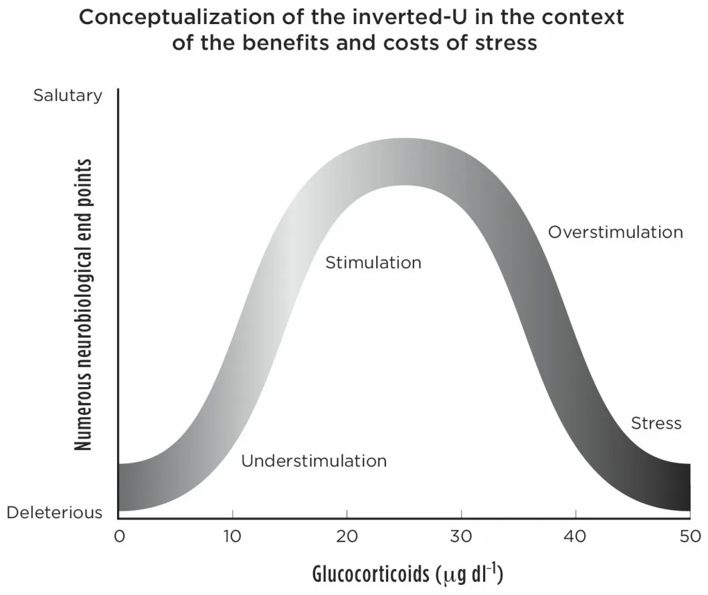
Truy cập bit.ly/2ngw6bq để xem phiên bản lớn hơn của biểu đồ này.
Chúng ta yêu thích lượng căng thẳng phù hợp, sẽ héo mòn nếu thiếu nó. Nhưng giờ quay lại với căng thẳng kéo dài và nhánh bên phải của chữ U ngược.
Căng Thẳng Kéo Dài Và Sinh Học Thần Kinh Của Nỗi Sợ
Trước hết, căng thẳng kéo dài khiến con người một cách ngầm ẩn (tức không có ý thức) nhìn nhiều hơn vào các khuôn mặt giận dữ. Hơn nữa, trong lúc căng thẳng, con đường tắt giác quan từ đồi thị đến hạch hạnh nhân trở nên hoạt động mạnh hơn, với các khớp thần kinh dễ kích thích hơn; chúng ta đã biết sự đánh đổi giữa tốc độ và độ chính xác do điều đó gây ra. Làm mọi thứ tệ thêm nữa, glucocorticoid làm giảm sự kích hoạt của vỏ não trước trán (nhận thức) giữa trong quá trình xử lý khuôn mặt cảm xúc. Tổng hợp lại, căng thẳng hoặc việc dùng glucocorticoid làm giảm độ chính xác khi đánh giá nhanh cảm xúc trên khuôn mặt.69
Trong khi đó, trong lúc căng thẳng mọi chuyện chẳng mấy tốt đẹp ở hạch hạnh nhân. Vùng này cực kỳ nhạy cảm với glucocorticoid, với rất nhiều thụ thể glucocorticoid; căng thẳng và glucocorticoid làm tăng tính dễ kích thích của các neuron hạch hạnh nhân,* đặc biệt là ở hạch hạnh nhân nền bên (BLA), với vai trò của nó trong việc học nỗi sợ. Như vậy, đây lại là một tác động hormone có điều kiện khác—glucocorticoid không tạo ra điện thế hoạt động ở các neuron hạch hạnh nhân, không tự bịa ra sự kích thích. Thay vào đó chúng khuếch đại sự kích thích có sẵn. Căng thẳng và glucocorticoid cũng làm tăng nồng độ CRH trong BLA, và tăng một yếu tố tăng trưởng xây dựng các tua nhánh và khớp thần kinh mới (yếu tố dinh dưỡng thần kinh có nguồn gốc từ não, hay BDNF).70
Hãy nhớ lại từ chương 2 cách thức trong một tình huống đáng sợ, hạch hạnh nhân huy động hồi hải mã ghi nhớ thông tin bối cảnh về sự kiện đó (ví dụ, hạch hạnh nhân nhớ con dao của tên cướp, trong khi hồi hải mã nhớ nơi vụ cướp xảy ra).71 Căng thẳng củng cố sự huy động này, biến hồi hải mã thành một vùng ngoại ô đầy sợ hãi tạm thời của hạch hạnh nhân. Nhờ những tác động của glucocorticoid trong hạch hạnh nhân,* căng thẳng khiến việc học một liên kết sợ hãi và củng cố nó thành ký ức dài hạn trở nên dễ dàng hơn.
Điều này đặt chúng ta vào một vòng phản hồi dương. Như đã lưu ý, khi căng thẳng khởi phát, hạch hạnh nhân gián tiếp kích hoạt phản ứng căng thẳng glucocorticoid. Và đến lượt mình, glucocorticoid làm tăng tính dễ kích thích của hạch hạnh nhân.
Căng thẳng cũng khiến việc xóa bỏ một nỗi sợ đã học, tức “dập tắt” một liên kết sợ hãi có điều kiện, trở nên khó khăn hơn. Việc này liên quan đến vỏ não trước trán, vùng gây ra sự dập tắt nỗi sợ bằng cách ức chế BLA (như đã đề cập ở chương 2); căng thẳng làm suy yếu quyền kiểm soát của PFC đối với hạch hạnh nhân.72
Hãy nhớ lại dập tắt nỗi sợ là gì. Bạn đã học cách liên kết đầy sợ hãi một ánh đèn với một cú sốc điện, nhưng hôm nay ánh đèn cứ bật lên mà không có cú sốc nào. Sự dập tắt không phải là việc quên đi một cách thụ động rằng đèn đồng nghĩa với sốc. Đó là việc BLA chủ động học rằng đèn không còn đồng nghĩa với sốc nữa. Do đó căng thẳng tạo điều kiện cho việc học các liên kết sợ hãi nhưng lại làm suy giảm việc học dập tắt nỗi sợ.
Căng Thẳng Kéo Dài, Chức Năng Điều Hành Và Khả Năng Phán Đoán
Căng thẳng làm tổn hại các khía cạnh khác của chức năng vỏ não trán. Trí nhớ làm việc bị gián đoạn; trong một nghiên cứu, việc dùng glucocorticoid liều cao kéo dài cho các đối tượng khỏe mạnh đã làm suy giảm trí nhớ làm việc xuống mức thấy sau tổn thương vỏ não trán. Glucocorticoid thực hiện điều này bằng cách tăng cường tín hiệu norepinephrine trong PFC nhiều đến mức, thay vì gây ra sự tập trung tỉnh táo, nó lại gây ra sự hỗn loạn nhận thức kiểu gà mất đầu, và bằng cách tăng cường tín hiệu gây nhiễu từ hạch hạnh nhân đến PFC. Căng thẳng cũng làm mất đồng bộ sự kích hoạt ở các vùng vỏ não trán khác nhau, làm suy giảm khả năng chuyển đổi sự chú ý giữa các nhiệm vụ.73
Những tác động của căng thẳng lên chức năng trán cũng khiến chúng ta trở nên cố chấp lặp lại (perseverative)—rơi vào lối mòn, cứng nhắc trong thói quen, vận hành tự động, hành động theo quán tính. Tất cả chúng ta đều biết điều này—chúng ta thường làm gì trong một thời điểm căng thẳng khi có thứ gì đó không hiệu quả? Làm lại đúng thứ đó, nhiều lần hơn nữa, nhanh hơn và quyết liệt hơn—trở nên không thể tưởng tượng nổi rằng cách thông thường đang không hiệu quả. Đây chính xác là lúc vỏ não trán khiến bạn làm điều khó hơn nhưng đúng đắn hơn—nhận ra rằng đã đến lúc thay đổi. Ngoại trừ một vỏ não trán đang bị căng thẳng, hoặc một vỏ não trán đã tiếp xúc với quá nhiều glucocorticoid. Ở chuột cống, khỉ và người, căng thẳng làm suy yếu các kết nối của vùng trán với hồi hải mã—vốn thiết yếu để tiếp thu thông tin mới nhằm thúc đẩy chuyển sang chiến lược mới—trong khi củng cố các kết nối của vùng trán với các mạch não mang tính thói quen nhiều hơn.74
Cuối cùng, sự suy giảm chức năng trán và gia tăng chức năng hạch hạnh nhân trong lúc căng thẳng làm thay đổi hành vi chấp nhận rủi ro. Chẳng hạn, căng thẳng do thiếu ngủ hoặc nói trước công chúng, hay việc dùng glucocorticoid liều cao, khiến con người chuyển từ bảo vệ chống lại tổn thất sang tìm kiếm lợi ích lớn hơn khi đánh bạc. Điều này liên quan đến một sự khác biệt giới tính thú vị—nhìn chung, các tác nhân gây căng thẳng lớn khiến người thuộc cả hai giới chấp nhận rủi ro nhiều hơn. Nhưng các tác nhân gây căng thẳng vừa phải lại đẩy nam giới hướng tới, và phụ nữ tránh xa, việc chấp nhận rủi ro. Khi không có căng thẳng, nam giới có xu hướng chấp nhận rủi ro nhiều hơn phụ nữ; do đó, một lần nữa, hormone lại tăng cường một khuynh hướng có sẵn.75
Dù một người trở nên chấp nhận rủi ro một cách phi lý (không chịu thay đổi chiến lược trước tỷ lệ phần thưởng đang giảm sút) hay né tránh rủi ro (không chịu phản ứng trước điều ngược lại), người đó đều đang tiếp thu thông tin mới một cách kém cỏi. Nói một cách khái quát nhất, căng thẳng kéo dài làm suy giảm khả năng đánh giá rủi ro.76
Căng Thẳng Kéo Dài Và Tính Thân Xã Hội Lẫn Phản Xã Hội
Trong lúc căng thẳng kéo dài, hạch hạnh nhân xử lý thông tin giác quan cảm xúc nhanh hơn và kém chính xác hơn, thống trị chức năng hồi hải mã, và làm gián đoạn chức năng vỏ não trán; chúng ta sợ hãi hơn, suy nghĩ rối rắm, đánh giá rủi ro kém và hành động bốc đồng theo thói quen, thay vì tiếp thu dữ liệu mới.77 Đây là công thức cho sự hung hăng phản ứng nhanh chóng; căng thẳng và việc dùng glucocorticoid cấp tính làm tăng sự hung hăng như vậy ở cả loài gặm nhấm lẫn con người. Chúng ta có hai điều kiện quen thuộc: (a) thay vì tạo ra sự hung hăng, căng thẳng và glucocorticoid làm tăng độ nhạy cảm với các tác nhân xã hội kích hoạt sự hung hăng; (b) điều này xảy ra dễ dàng nhất ở những cá nhân vốn đã có khuynh hướng hung hăng. Như chúng ta sẽ thấy ở chương tiếp theo, căng thẳng kéo dài qua nhiều tuần đến nhiều tháng tạo ra một bức tranh ít sắc thái hơn.
Còn một lý do đáng buồn bổ sung giải thích tại sao căng thẳng nuôi dưỡng sự hung hăng—vì nó làm giảm căng thẳng. Giật điện một con chuột cống và nồng độ glucocorticoid cùng huyết áp của nó sẽ tăng lên; với đủ số lần giật điện, nó có nguy cơ bị loét dạ dày do “căng thẳng”. Nhiều thứ có thể làm dịu cho con chuột trong lúc bị giật điện—chạy trên bánh xe, ăn, gặm gỗ trong cơn bực tức. Nhưng một biện pháp xoa dịu đặc biệt hiệu quả là để con chuột cắn một con chuột khác. Sự hung hăng chuyển dịch (displacement aggression) do căng thẳng (còn gọi là do bực tức) phổ biến ở nhiều loài. Chẳng hạn ở khỉ đầu chó, gần một nửa các hành vi hung hăng thuộc loại này—một con đực thứ bậc cao thua một trận đánh và đuổi theo một con đực gần trưởng thành, con này lập tức cắn một con cái, con cái liền lao vào một con khỉ con. Nghiên cứu của tôi cho thấy trong cùng một thứ bậc thống trị, một con khỉ đầu chó càng có xu hướng chuyển dịch sự hung hăng sau khi thua trận đánh thì nồng độ glucocorticoid của nó càng thấp.78
Con người cực kỳ giỏi môn hung hăng chuyển dịch do căng thẳng—hãy xem các cuộc suy thoái kinh tế làm tăng tỷ lệ bạo hành vợ chồng và trẻ em như thế nào. Hoặc xem một nghiên cứu về bạo lực gia đình và bóng bầu dục chuyên nghiệp. Nếu đội bóng địa phương bất ngờ thua trận, bạo lực của nam giới đối với vợ/bạn đời tăng 10 phần trăm ngay sau đó (không tăng khi đội thắng hoặc được dự đoán sẽ thua). Và khi tính chất trận đấu càng căng thẳng, mô thức này càng trầm trọng hơn: tăng 13 phần trăm sau những trận thua sốc khi đội đang tranh suất play-off, tăng 20 phần trăm khi trận thua sốc đó là trước một đối thủ truyền kiếp.79
Người ta biết rất ít về sinh học thần kinh của việc hung hăng chuyển dịch làm cùn phản ứng căng thẳng. Tôi đoán rằng việc trút giận ra ngoài kích hoạt các con đường phần thưởng dopamine, một cách chắc chắn để ức chế giải phóng CRH.*80 Quá thường xuyên, việc gây ra vết loét cho kẻ khác giúp ta tránh bị loét dạ dày cho chính mình.
Thêm tin xấu: căng thẳng đẩy chúng ta về phía sự ích kỷ. Trong một nghiên cứu, các đối tượng trả lời câu hỏi về các kịch bản ra quyết định đạo đức sau một tác nhân gây căng thẳng xã hội hoặc một tình huống trung tính.* Một số kịch bản có cường độ cảm xúc thấp (“Trong siêu thị bạn đang xếp hàng ở quầy thịt và một ông lão chen lên trước. Bạn có phàn nàn không?”), những kịch bản khác có cường độ cao (“Bạn gặp tình yêu của đời mình, nhưng bạn đã kết hôn và có con. Bạn có bỏ gia đình không?”). Căng thẳng khiến mọi người đưa ra câu trả lời vị kỷ hơn đối với các quyết định đạo đức có cường độ cảm xúc cao (nhưng không phải với các quyết định nhẹ nhàng hơn); nồng độ glucocorticoid càng tăng cao, câu trả lời càng vị kỷ. Hơn nữa, trong cùng mô hình thí nghiệm đó, căng thẳng làm giảm mức độ vị tha mà mọi người tuyên bố họ sẽ thể hiện đối với các quyết định đạo đức mang tính cá nhân (nhưng không phải phi cá nhân).81
Chúng ta lại có một tác động nội tiết có điều kiện khác: căng thẳng khiến con người vị kỷ hơn, nhưng chỉ trong những hoàn cảnh cá nhân và giàu cảm xúc nhất.* Điều này giống với một hoàn cảnh khác của chức năng trán kém—hãy nhớ lại từ chương 2 cách những cá nhân bị tổn thương vỏ não trán đưa ra phán đoán hợp lý về vấn đề của người khác, nhưng vấn đề càng mang tính cá nhân và giàu cảm xúc, họ càng bị suy giảm.
Cảm thấy khá hơn bằng cách ngược đãi ai đó vô tội, hoặc nghĩ nhiều hơn đến nhu cầu của bản thân, không tương thích với việc cảm nhận sự đồng cảm. Căng thẳng có làm giảm sự đồng cảm không? Dường như là có, ở cả chuột nhắt và người. Một bài báo xuất sắc năm 2006 trên tạp chí *Science* của Jeffrey Mogil thuộc Đại học McGill đã chỉ ra những nét sơ khai của sự đồng cảm ở chuột nhắt—ngưỡng chịu đau của một con chuột giảm xuống khi nó ở gần một con chuột khác đang đau, nhưng chỉ khi con chuột kia là bạn cùng lồng của nó.82
Điều này thôi thúc một nghiên cứu tiếp theo mà tôi thực hiện cùng nhóm của Mogil với cùng mô hình thí nghiệm đó. Sự hiện diện của một con chuột lạ kích hoạt phản ứng căng thẳng. Nhưng khi việc tiết glucocorticoid bị chặn tạm thời, chuột nhắt thể hiện “sự đồng cảm nỗi đau” đối với một con chuột lạ y hệt như đối với bạn cùng lồng. Nói cách khác, nếu nhân cách hóa loài chuột, glucocorticoid thu hẹp phạm vi ai được tính là đủ thuộc về “Phe Ta” để khơi gợi sự đồng cảm. Tương tự ở người—sự đồng cảm nỗi đau không được khơi gợi đối với người lạ trừ phi việc tiết glucocorticoid bị chặn (hoặc sau khi dùng một loại thuốc tác dụng ngắn hoặc sau khi đối tượng và người lạ tương tác xã hội với nhau). Hãy nhớ lại từ chương 2 sự tham gia của vỏ não vành trước trong sự đồng cảm nỗi đau. Tôi cá rằng glucocorticoid gây ra một số tác động làm tê liệt, teo tóp đối với các neuron ở đó.
Như vậy, căng thẳng kéo dài có một số tác động hành vi khá khó ưa. Tuy nhiên, có những hoàn cảnh mà căng thẳng khơi dậy những phẩm chất tốt đẹp tuyệt vời nhất ở một số người. Công trình của Shelley Taylor thuộc Đại học UCLA cho thấy “chiến hay chạy” là phản ứng điển hình trước căng thẳng ở giới đực, và tự nhiên là tài liệu nghiên cứu về căng thẳng chủ yếu là các nghiên cứu về giới đực do nam giới thực hiện.83 Mọi thứ thường khác ở giới cái. Chứng tỏ mình có thể sánh ngang với cánh đàn ông trong việc tạo ra những câu khẩu hiệu ngắn gọn sắc bén, Taylor đã định hình phản ứng căng thẳng của giới cái thiên về “chăm sóc và kết bạn” (tend and befriend)—chăm lo cho con nhỏ và tìm kiếm sự gắn kết xã hội. Điều này khớp với những khác biệt giới tính rõ rệt trong phong cách quản lý căng thẳng, và “chăm sóc và kết bạn” rất có thể phản ánh việc phản ứng căng thẳng ở giới cái có thành phần tiết oxytocin mạnh mẽ hơn.
Dĩ nhiên, mọi thứ tinh tế hơn nhiều so với công thức “nam = chiến/chạy và nữ = chăm sóc/kết bạn”. Có vô số ví dụ phản chứng cho cả hai vế; căng thẳng khơi gợi tính thân xã hội ở nhiều giống đực hơn là chỉ riêng khỉ marmoset đực gắn kết cặp đôi, và chúng ta đã thấy giới cái hoàn toàn có khả năng hung hăng. Rồi còn có Mahatma Gandhi và Sarah Palin.* Tại sao một số người lại là ngoại lệ đối với những khuôn mẫu giới này? Đó là một phần nội dung của phần còn lại cuốn sách này.
Căng thẳng có thể làm gián đoạn nhận thức, kiểm soát xung động, điều hòa cảm xúc, ra quyết định, sự đồng cảm và tính thân xã hội. Một điểm cuối cùng. Hãy nhớ lại từ chương 2 việc vỏ não trán khiến bạn làm điều khó hơn khi đó là điều đúng đắn mang tính phi giá trị—“đúng đắn” thuần túy mang tính công cụ. Căng thẳng cũng vậy. Tác động của nó lên việc ra quyết định chỉ “bất lợi” theo nghĩa sinh học thần kinh. Trong một cuộc khủng hoảng căng thẳng, một nhân viên cấp cứu có thể trở nên cố chấp lặp lại, khiến cô ấy mất hiệu quả trong việc cứu người. Một điều tồi tệ. Trong một cuộc khủng hoảng căng thẳng, một tên lãnh chúa thái nhân cách có thể trở nên cố chấp lặp lại, khiến hắn mất hiệu quả trong việc thanh lọc sắc tộc một ngôi làng. Không phải là điều tồi tệ.
MỘT SỰ GIẢI ẢO QUAN TRỌNG: RƯỢU BIA
Không một bài điểm lại nào về các sự kiện sinh học trong vài phút đến vài giờ trước một hành vi có thể bỏ qua rượu bia. Như mọi người đều biết, rượu làm giảm sự ức chế, khiến con người hung hăng hơn. Sai, và sai theo một cách quen thuộc—rượu chỉ khơi gợi sự hung hăng ở (a) những cá nhân vốn có khuynh hướng hung hăng (ví dụ, những con chuột có mức tín hiệu serotonin thấp hơn ở vỏ não trán và những người đàn ông mang biến thể gene thụ thể oxytocin kém nhạy với oxytocin hơn là những đối tượng dễ bị rượu làm cho hung hăng hơn) và (b) những người tin rằng rượu khiến bạn hung hăng hơn, một lần nữa cho thấy sức mạnh của học tập xã hội trong việc định hình sinh học.84 Rượu hoạt động khác hẳn ở tất cả những người còn lại—chẳng hạn, cơn say bí tỉ đã gây ra biết bao đám cưới chớp nhoáng ở Vegas mà đến bình minh ngày hôm sau chẳng còn thấy là ý hay nữa.
TÓM TẮT VÀ MỘT SỐ KẾT LUẬN
Hormone thật tuyệt vời; chúng bỏ xa các chất dẫn truyền thần kinh xét về tính linh hoạt và thời gian tác động. Và điều này bao gồm cả việc ảnh hưởng đến những hành vi liên quan đến cuốn sách này. Testosterone ít liên quan đến sự hung hăng hơn nhiều so với hầu hết mọi người vẫn tưởng. Trong phạm vi bình thường, sự khác biệt nồng độ testosterone giữa các cá nhân không dự đoán được ai sẽ hung hăng. Hơn nữa, một sinh vật càng từng hung hăng nhiều thì càng cần ít testosterone cho sự hung hăng trong tương lai. Khi testosterone thực sự đóng một vai trò, vai trò đó mang tính hỗ trợ—testosterone không “phát minh” ra sự hung hăng. Nó khiến chúng ta nhạy cảm hơn với các tác nhân kích hoạt sự hung hăng, đặc biệt ở những người vốn có khuynh hướng hung hăng nhất. Ngoài ra, nồng độ testosterone tăng cao chỉ nuôi dưỡng sự hung hăng trong các tình huống thách thức địa vị. Cuối cùng, và mang tính cốt yếu, sự gia tăng testosterone trong một thách thức địa vị không nhất thiết làm tăng sự hung hăng; nó làm tăng bất cứ thứ gì cần thiết để duy trì địa vị. Trong một thế giới mà địa vị được trao thưởng cho những hành vi tốt đẹp nhất của chúng ta, testosterone sẽ là hormone thân xã hội nhất từng tồn tại. Oxytocin và vasopressin thúc đẩy sự hình thành gắn kết mẹ – con và gắn kết cặp đôi một vợ một chồng, làm giảm lo âu và căng thẳng, tăng cường lòng tin và sự gắn kết xã hội, đồng thời khiến con người hợp tác và hào phóng hơn. Nhưng điều này đi kèm một lưu ý khổng lồ—những hormone này chỉ làm tăng tính thân xã hội đối với Phe Ta. Khi đối phó với Phe Kia, chúng khiến chúng ta trở nên vị chủng và bài ngoại hơn. Oxytocin không phải là hormone tình yêu phổ quát. Nó là một hormone cục bộ. Sự hung hăng ở giới cái để bảo vệ con non thường mang tính thích nghi và được thúc đẩy bởi estrogen, progesterone và oxytocin. Quan trọng hơn, giới cái còn hung hăng trong nhiều hoàn cảnh thích nghi tiến hóa khác. Sự hung hăng như vậy được thúc đẩy bởi sự hiện diện của androgen ở giới cái và bởi những thủ thuật nội tiết thần kinh phức tạp nhằm tạo ra tín hiệu androgenic ở các phần “hung hăng”, chứ không phải các phần “làm mẹ” hay “gắn kết”, của bộ não giới cái. Những thay đổi tâm trạng và hành vi quanh kỳ kinh nguyệt là một thực tế sinh học (dù còn ít được hiểu rõ ở cấp độ chi tiết); ngược lại, việc bệnh lý hóa những dịch chuyển này là một kiến tạo xã hội. Cuối cùng, ngoại trừ những trường hợp cực đoan hiếm gặp, mối liên hệ giữa PMS và sự hung hăng là tối thiểu. Căng thẳng kéo dài có vô số tác động bất lợi. Hạch hạnh nhân trở nên hoạt động quá mức và gắn kết chặt hơn với các con đường hành vi thói quen; việc học nỗi sợ trở nên dễ dàng hơn và việc xóa bỏ nó trở nên khó khăn hơn. Chúng ta xử lý thông tin giàu cảm xúc nhanh hơn và tự động hơn, nhưng kém chính xác hơn. Chức năng trán—trí nhớ làm việc, kiểm soát xung động, ra quyết định điều hòa, đánh giá rủi ro và chuyển đổi nhiệm vụ—bị suy giảm, và vỏ não trán ít kiểm soát được hạch hạnh nhân hơn. Và chúng ta trở nên kém đồng cảm và kém thân xã hội hơn. Giảm căng thẳng kéo dài là một giải pháp đôi bên cùng có lợi cho chúng ta và những người bị kẹt xung quanh chúng ta. “Tôi đã uống rượu” không phải là cái cớ cho sự hung hăng. Trong khoảng thời gian vài phút đến vài giờ, các tác động của hormone chủ yếu mang tính có điều kiện và hỗ trợ. Hormone không quyết định, ra lệnh, gây ra hay phát minh ra hành vi. Thay vào đó, chúng khiến chúng ta nhạy cảm hơn với các tác nhân xã hội kích hoạt những hành vi giàu cảm xúc và phóng đại những khuynh hướng có sẵn của chúng ta trong những lĩnh vực đó. Vậy những khuynh hướng có sẵn đó đến từ đâu? Từ nội dung của những chương đang chờ chúng ta phía trước.
Chương 5 — Nhiều ngày đến nhiều tháng trước đó
Chương Năm
Vài Ngày Đến Vài Tháng Trước Đó
Hành động của chúng ta đã xảy ra—cái bóp cò hay cái chạm nhẹ lên cánh tay vốn có thể mang những ý nghĩa hoàn toàn khác nhau trong những bối cảnh khác nhau. Tại sao chuyện đó vừa mới xảy ra? Chúng ta đã thấy, vài giây trước đó, hành vi ấy là sản phẩm của hệ thần kinh, mà hoạt động của nó được định hình bởi các tín hiệu giác quan từ vài phút đến vài giờ trước đó, và độ nhạy cảm của bộ não đối với các tín hiệu ấy lại được định hình bởi sự tiếp xúc với hormone trong những giờ đến những ngày trước đó. Vậy những sự kiện nào trong vài ngày đến vài tháng trước đó đã định hình nên kết quả ấy?
Chương 2 đã giới thiệu tính dẻo của neuron, thực tế rằng mọi thứ trong chúng đều có thể thay đổi. Sức mạnh của một đầu vào tua nhánh, điểm đặt của gò sợi trục để khởi phát một điện thế hoạt động, thời lượng của giai đoạn trơ. Chương trước đã cho thấy, chẳng hạn, testosterone làm tăng tính dễ kích thích của các neuron hạch hạnh nhân, còn glucocorticoid làm giảm tính dễ kích thích của các neuron vỏ não trước trán. Chúng ta thậm chí còn thấy progesterone thúc đẩy hiệu quả mà các neuron GABA-ergic làm giảm tính dễ kích thích của các neuron khác.
Những phiên bản tính dẻo thần kinh đó diễn ra trong vòng vài giờ. Giờ đây chúng ta xem xét tính dẻo ngoạn mục hơn diễn ra trong vòng vài ngày đến vài tháng. Vài tháng là đủ thời gian cho một Mùa xuân Ả Rập, cho một mùa đông bất mãn, hay cho các bệnh lây truyền qua đường tình dục lan rộng trong một Mùa hè Yêu thương. Như chúng ta sẽ thấy, đây cũng là khoảng thời gian đủ cho những thay đổi khổng lồ trong cấu trúc của bộ não.
SỰ KÍCH THÍCH PHI TUYẾN TÍNH
Chúng ta bắt đầu từ quy mô nhỏ. Làm thế nào các sự kiện từ nhiều tháng trước có thể tạo ra một khớp thần kinh với tính dễ kích thích bị biến đổi vào hôm nay? Làm thế nào các khớp thần kinh “ghi nhớ”? Khi các nhà khoa học thần kinh lần đầu tiếp cận bí ẩn của trí nhớ vào đầu thế kỷ hai mươi, họ đặt câu hỏi đó ở cấp độ vĩ mô hơn—làm thế nào một bộ não ghi nhớ? Hiển nhiên, một ký ức được lưu trữ trong một neuron đơn lẻ, và một ký ức mới đòi hỏi một neuron mới.
Phát hiện rằng não người trưởng thành không tạo ra neuron mới đã ném ý tưởng đó vào sọt rác. Những chiếc kính hiển vi tốt hơn đã hé lộ sự phân nhánh của neuron, sự phức tạp đến nghẹt thở của các nhánh tua nhánh và tận cùng sợi trục. Có lẽ một ký ức mới đòi hỏi một neuron phải mọc ra một nhánh sợi trục hoặc tua nhánh mới.
Kiến thức về khớp thần kinh xuất hiện, ngành nghiên cứu chất dẫn truyền thần kinh ra đời, và ý tưởng này được điều chỉnh—một ký ức mới đòi hỏi sự hình thành một khớp thần kinh mới, một kết nối mới giữa một tận cùng sợi trục và một gai tua nhánh.
Những suy đoán này đã bị ném lên đống tro tàn của lịch sử vào năm 1949, nhờ công trình của nhà sinh học thần kinh người Canada Donald Hebb, một người có tầm nhìn xa đến mức ngay cả bây giờ, gần bảy mươi năm sau, các nhà khoa học thần kinh vẫn còn sở hữu những bức tượng đầu lắc hình ông. Trong cuốn sách mang tính bước ngoặt *Tổ Chức Của Hành Vi* (The Organization of Behaviour), Hebb đã đề xuất điều trở thành hệ hình thống trị. Việc hình thành ký ức không đòi hỏi khớp thần kinh mới (chứ đừng nói đến nhánh mới hay neuron mới); nó đòi hỏi sự củng cố các khớp thần kinh có sẵn.1
“Củng cố” có nghĩa là gì? Về mặt mạch thần kinh, nếu neuron A tạo khớp thần kinh lên neuron B, điều đó có nghĩa là một điện thế hoạt động ở neuron A sẽ dễ dàng kích hoạt một điện thế hoạt động ở neuron B hơn. Chúng liên kết chặt chẽ hơn; chúng “ghi nhớ”. Dịch sang ngôn ngữ tế bào, “củng cố” có nghĩa là làn sóng kích thích trong một gai tua nhánh lan truyền xa hơn, tiến gần hơn tới gò sợi trục ở xa.
Nghiên cứu sâu rộng cho thấy trải nghiệm gây ra sự phát xung lặp đi lặp lại qua một khớp thần kinh sẽ “củng cố” nó, với vai trò then chốt thuộc về chất dẫn truyền thần kinh glutamate.
Hãy nhớ lại từ chương 2 cách một chất dẫn truyền thần kinh kích thích gắn vào thụ thể của nó ở gai tua nhánh hậu khớp thần kinh, khiến kênh natri mở ra; một ít natri tràn vào, gây ra một đốm kích thích nhỏ, rồi lan truyền đi.
Tín hiệu glutamate hoạt động theo một cách cầu kỳ hơn vốn thiết yếu cho việc học.2
Để đơn giản hóa đáng kể, trong khi các gai tua nhánh thường chỉ chứa một loại thụ thể, những gai nhạy cảm với glutamate lại chứa hai loại. Loại thứ nhất (“non-NMDA”) hoạt động theo cách thông thường—với mỗi một chút xíu glutamate gắn vào các thụ thể này, một chút xíu natri tràn vào, gây ra một chút xíu kích thích. Loại thứ hai (“NMDA”) hoạt động theo kiểu phi tuyến tính, có ngưỡng kích hoạt. Thông thường nó không phản ứng với glutamate. Phải đến khi non-NMDA bị kích thích lặp đi lặp lại bởi một chuỗi giải phóng glutamate kéo dài, cho phép đủ lượng natri tràn vào, thì điều này mới kích hoạt thụ thể NMDA. Nó đột ngột phản ứng với toàn bộ lượng glutamate đó, mở toang các kênh của mình, tạo ra một vụ nổ kích thích.
Đây chính là bản chất của việc học. Giảng viên nói điều gì đó, và nó vào tai này rồi ra tai kia. Mẩu thông tin được lặp lại; vẫn y như vậy. Nó được lặp lại đủ số lần và—à há!—bóng đèn bật sáng và đột nhiên bạn hiểu ra. Ở cấp độ khớp thần kinh, việc tận cùng sợi trục phải liên tục giải phóng glutamate giống như giảng viên đang giảng đi giảng lại; khoảnh khắc ngưỡng hậu khớp thần kinh bị vượt qua và các thụ thể NMDA lần đầu tiên được kích hoạt chính là lúc gai tua nhánh cuối cùng cũng “ngộ” ra.
“À HÁ” SO VỚI VIỆC THỰC SỰ GHI NHỚ
Nhưng điều này mới chỉ đưa chúng ta đến chốt gôn đầu tiên. Bóng đèn bật sáng giữa buổi giảng không có nghĩa là nó sẽ vẫn sáng sau một giờ nữa, chứ đừng nói đến trong kỳ thi cuối kỳ. Làm thế nào chúng ta có thể khiến đợt bùng nổ kích thích đó kéo dài, để các thụ thể NMDA “ghi nhớ”, dễ được kích hoạt hơn trong tương lai? Làm thế nào sự kích thích được tăng cường đó trở thành dài hạn?
Đây là lúc chúng ta giới thiệu khái niệm mang tính biểu tượng LTP—“tăng cường dài hạn” (long-term potentiation). LTP, được chứng minh lần đầu tiên vào năm 1966 bởi Terje Lømo tại Đại học Oslo, là quá trình mà qua đó đợt bùng nổ kích hoạt thụ thể NMDA đầu tiên gây ra sự gia tăng kéo dài về tính dễ kích thích của khớp thần kinh.* Hàng trăm sự nghiệp khoa học rực rỡ đã được dành ra để tìm hiểu cách LTP hoạt động, và chìa khóa nằm ở chỗ khi các thụ thể NMDA cuối cùng cũng kích hoạt và mở kênh, chính canxi, chứ không phải natri, mới là thứ tràn vào. Điều này gây ra một loạt thay đổi; dưới đây là một vài trong số đó:
Cơn thủy triều canxi khiến nhiều bản sao thụ thể glutamate hơn được chèn vào màng của gai tua nhánh, làm cho neuron phản ứng mạnh hơn với glutamate sau đó.* Canxi cũng làm biến đổi các thụ thể glutamate vốn đã nằm ở tuyến đầu của gai tua nhánh đó; mỗi thụ thể giờ đây sẽ nhạy cảm hơn với các tín hiệu glutamate.* Canxi cũng kích thích tổng hợp các chất dẫn truyền thần kinh kỳ lạ trong gai tua nhánh, chúng được giải phóng và đi ngược qua khe khớp thần kinh; tại đó chúng làm tăng lượng glutamate được giải phóng từ tận cùng sợi trục sau các điện thế hoạt động trong tương lai.
Nói cách khác, LTP nảy sinh từ sự kết hợp giữa việc tận cùng sợi trục tiền khớp thần kinh hét to “glutamate” hơn và gai tua nhánh hậu khớp thần kinh lắng nghe chăm chú hơn.
Như tôi đã nói, còn nhiều cơ chế bổ sung khác làm nền tảng cho LTP, và các nhà khoa học thần kinh tranh luận xem cơ chế nào quan trọng nhất (dĩ nhiên là cái mà chính họ nghiên cứu) ở các neuron trong sinh vật khi chúng thực sự đang học. Nhìn chung, cuộc tranh luận xoay quanh việc thay đổi tiền khớp thần kinh hay hậu khớp thần kinh là cốt yếu hơn.
Sau LTP là một phát hiện gợi ý về một vũ trụ cân bằng. Đó là LTD—“suy giảm dài hạn” (long-term depression)—sự suy giảm dài hạn phụ thuộc vào trải nghiệm đối với tính dễ kích thích của khớp thần kinh (và thú vị là các cơ chế nền tảng của LTD không đơn thuần là phép đảo ngược của LTP). LTD cũng không phải là mặt đối lập về chức năng của LTP—thay vì là cơ sở của sự lãng quên thông thường, nó làm sắc nét tín hiệu bằng cách xóa bỏ những gì thừa thãi.
Một điểm cuối cùng về LTP. Có dài hạn này và có dài hạn khác. Như đã lưu ý, một cơ chế nền tảng cho LTP là sự biến đổi các thụ thể glutamate để chúng nhạy hơn với glutamate. Sự biến đổi đó có thể tồn tại suốt vòng đời của các bản sao thụ thể đang có mặt tại khớp thần kinh vào thời điểm xảy ra LTP. Nhưng vòng đời đó thường chỉ kéo dài vài ngày, cho đến khi các bản sao đó tích tụ đủ tổn thương do gốc oxy tự do và bị phân hủy để thay thế bằng các bản sao mới (quá trình cập nhật tương tự diễn ra liên tục với mọi protein). Bằng cách nào đó, những thay đổi do LTP gây ra ở thụ thể được truyền lại cho thế hệ bản sao tiếp theo. Nếu không thì làm sao các cụ tám mươi tuổi có thể nhớ được chuyện hồi mẫu giáo? Cơ chế này rất tinh tế nhưng nằm ngoài phạm vi của chương này.
Tất cả những điều này rất thú vị, nhưng LTP và LTD là những gì xảy ra trong hồi hải mã khi bạn học các sự kiện hiển ngôn, như số điện thoại của ai đó. Nhưng chúng ta quan tâm đến những loại học tập khác—cách chúng ta học cách sợ hãi, kiểm soát xung động, cảm thấy đồng cảm, hay chẳng cảm thấy gì cho người khác.
Các khớp thần kinh sử dụng glutamate xuất hiện khắp hệ thần kinh, và LTP không phải là độc quyền của hồi hải mã. Đây từng là một phát hiện gây sang chấn cho nhiều nhà nghiên cứu LTP/hồi hải mã—suy cho cùng, LTP là thứ xảy ra trong hồi hải mã của Schopenhauer khi ông đọc Hegel, chứ không phải thứ tủy sống làm để giúp bạn lắc hông điêu luyện hơn khi nhảy twerking.*
Tuy nhiên, LTP xảy ra trên khắp hệ thần kinh.*3 Chẳng hạn, sự điều kiện hóa nỗi sợ liên quan đến các khớp thần kinh trải qua LTP trong hạch hạnh nhân nền bên. LTP làm nền tảng cho việc vỏ não trán học cách kiểm soát hạch hạnh nhân. Đó là cách các hệ thống dopamine học cách liên kết một kích thích với một phần thưởng—ví dụ, cách người nghiện liên kết một địa điểm với ma túy, cảm thấy thèm thuốc khi ở trong bối cảnh đó.
Hãy thêm hormone vào chuyện này, dịch một số khái niệm về căng thẳng của chúng ta sang ngôn ngữ của tính dẻo thần kinh. Căng thẳng vừa phải, thoáng qua (tức loại căng thẳng tốt, mang tính kích thích) thúc đẩy LTP ở hồi hải mã, trong khi căng thẳng kéo dài làm gián đoạn nó và thúc đẩy LTD—một lý do khiến nhận thức lao dốc vào những lúc như vậy. Đây là khái niệm chữ U ngược của căng thẳng được viết bằng ngôn ngữ khớp thần kinh.4
Hơn nữa, căng thẳng kéo dài và việc tiếp xúc với glucocorticoid làm tăng cường LTP và ức chế LTD ở hạch hạnh nhân, thúc đẩy sự điều kiện hóa nỗi sợ, đồng thời ức chế LTP ở vỏ não trán. Kết hợp những tác động này—nhiều khớp thần kinh dễ kích thích hơn ở hạch hạnh nhân, ít hơn ở vỏ não trán—giúp giải thích tính bốc đồng và khả năng điều hòa cảm xúc kém do căng thẳng gây ra.5
Được Giải Cứu Khỏi Sọt Rác
Quan niệm rằng trí nhớ dựa trên sự củng cố các khớp thần kinh có sẵn vẫn thống trị lĩnh vực này. Nhưng trớ trêu thay, ý tưởng từng bị vứt bỏ rằng trí nhớ đòi hỏi sự hình thành các khớp thần kinh mới lại được hồi sinh. Các kỹ thuật đếm toàn bộ khớp thần kinh của một neuron cho thấy việc nuôi chuột trong một môi trường phong phú, nhiều kích thích làm tăng số lượng khớp thần kinh ở hồi hải mã của chúng.
Những kỹ thuật cực kỳ tinh vi cho phép bạn theo dõi một nhánh tua nhánh của một neuron theo thời gian khi một con chuột học điều gì đó. Đáng kinh ngạc là chỉ trong vòng vài phút đến vài giờ, một gai tua nhánh mới nhú ra, theo sau là một tận cùng sợi trục lơ lửng gần đó; trong những tuần tiếp theo, chúng hình thành một khớp thần kinh hoạt động giúp ổn định ký ức mới (và trong các hoàn cảnh khác, gai tua nhánh co rút lại, loại bỏ khớp thần kinh).
Sự “hình thành khớp thần kinh phụ thuộc vào hoạt động” như vậy gắn liền với LTP—khi một khớp thần kinh trải qua LTP, cơn sóng thần canxi tràn vào gai tua nhánh có thể khuếch tán và kích hoạt sự hình thành một gai mới ở đoạn nhánh tua nhánh liền kề.
Các khớp thần kinh mới hình thành khắp bộ não—trong các neuron vỏ não vận động khi bạn học một nhiệm vụ vận động, hoặc trong vỏ não thị giác sau nhiều kích thích thị giác. Kích thích râu của chuột thật nhiều, và điều tương tự cũng xảy ra ở “vỏ não râu”.6
Hơn nữa, khi có đủ khớp thần kinh mới hình thành ở một neuron, chiều dài và số lượng nhánh trong “cây” tua nhánh của nó thường cũng mở rộng theo, làm tăng sức mạnh và số lượng các neuron có thể trò chuyện với nó.
Căng thẳng và glucocorticoid cũng có tác động hình chữ U ngược ở đây. Căng thẳng vừa phải, thoáng qua (hoặc tiếp xúc với nồng độ glucocorticoid tương đương) làm tăng số lượng gai trong hồi hải mã; căng thẳng kéo dài hoặc tiếp xúc glucocorticoid kéo dài làm điều ngược lại.7 Hơn nữa, trầm cảm nặng hoặc lo âu—hai rối loạn gắn liền với nồng độ glucocorticoid tăng cao—có thể làm giảm số lượng tua nhánh và gai ở hồi hải mã. Điều này bắt nguồn từ việc giảm nồng độ yếu tố tăng trưởng then chốt đã đề cập ở chương trước, BDNF.
Căng thẳng kéo dài và glucocorticoid cũng gây ra sự co rút tua nhánh và mất khớp thần kinh, làm giảm nồng độ NCAM (một “phân tử kết dính tế bào thần kinh” giúp ổn định khớp thần kinh), và giảm giải phóng glutamate ở vỏ não trán. Những thay đổi này càng nhiều, sự suy giảm chú ý và ra quyết định càng nặng.8
Hãy nhớ lại từ chương 4 cách căng thẳng cấp tính củng cố sự kết nối giữa vỏ não trán và các vùng vận động, đồng thời làm suy yếu các kết nối trán – hải mã; kết quả là việc ra quyết định mang tính thói quen, thay vì tiếp thu thông tin mới. Tương tự, căng thẳng mạn tính làm tăng số lượng gai trong các kết nối trán – vận động và làm giảm số lượng gai trong các kết nối trán – hải mã.9
Tiếp tục chủ đề hạch hạnh nhân khác biệt với vỏ não trán và hồi hải mã, căng thẳng kéo dài làm tăng nồng độ BDNF và mở rộng các tua nhánh trong BLA, làm tăng dai dẳng sự lo âu và điều kiện hóa nỗi sợ.10
Điều tương tự cũng xảy ra ở trạm trung chuyển mà qua đó hạch hạnh nhân trò chuyện với phần còn lại của não (BNST—nhân giường của vân tận cùng). Hãy nhớ lại rằng trong khi BLA làm trung gian cho sự điều kiện hóa nỗi sợ, hạch hạnh nhân trung tâm lại liên quan nhiều hơn đến các nỗi ám ảnh bẩm sinh. Thú vị là căng thẳng dường như không làm tăng sức mạnh của các nỗi ám ảnh hay số lượng gai trong hạch hạnh nhân trung tâm.
Có một sự phụ thuộc vào bối cảnh tuyệt đẹp đối với những tác động này. Khi một con chuột tiết ra hàng tấn glucocorticoid vì nó kinh hoàng, các tua nhánh bị teo lại trong hồi hải mã. Tuy nhiên, nếu nó tiết ra cùng một lượng đó bằng cách tự nguyện chạy trên bánh xe chạy bộ, các tua nhánh lại mở rộng ra. Việc hạch hạnh nhân có đồng thời được kích hoạt hay không dường như quyết định liệu hồi hải mã sẽ diễn giải glucocorticoid là căng thẳng tốt hay xấu.11
Số lượng gai và chiều dài nhánh trong hồi hải mã và vỏ não trán cũng được tăng lên nhờ estrogen.12 Đáng kinh ngạc là kích thước cây tua nhánh của các neuron trong hồi hải mã phồng lên và co lại như một chiếc đàn accordion suốt chu kỳ rụng trứng của chuột cái, với kích thước (và các kỹ năng nhận thức của nó) đạt đỉnh khi estrogen đạt đỉnh.*
Như vậy, neuron có thể hình thành các nhánh và gai tua nhánh mới, làm tăng kích thước cây tua nhánh của chúng hoặc, trong các hoàn cảnh khác, làm điều ngược lại; hormone thường xuyên làm trung gian cho những tác động này.
Tính Dẻo Của Sợi Trục
Trong khi đó, có tính dẻo ở đầu kia của neuron, nơi các sợi trục có thể đâm chồi các nhánh phụ hướng về những ngả đường mới mẻ. Một ví dụ ngoạn mục là khi một người mù thành thạo chữ nổi Braille đọc bằng chữ nổi, có sự kích hoạt vỏ não xúc giác giống như ở bất kỳ ai khác; nhưng đáng kinh ngạc và độc đáo là còn có sự kích hoạt của vỏ não thị giác.13 Nói cách khác, các neuron vốn thường gửi sợi trục đến phần vỏ não xử lý đầu ngón tay thay vào đó đã đi chệch hướng hàng dặm, mọc ra các đường phóng chiếu tới vỏ não thị giác. Một ca phi thường liên quan đến một phụ nữ mù bẩm sinh, thành thạo chữ Braille, bị đột quỵ ở vỏ não thị giác. Và kết quả là bà mất khả năng đọc chữ Braille—các chấm nổi trên trang giấy sờ thấy phẳng lì, mờ nhòe—trong khi các chức năng xúc giác khác vẫn còn nguyên vẹn. Trong một nghiên cứu khác, các đối tượng mù được huấn luyện để liên kết các chữ cái với những âm thanh đặc trưng, đến mức họ có thể nghe một chuỗi âm thanh như là chữ cái và từ ngữ. Khi những cá nhân này “đọc bằng âm thanh”, họ kích hoạt đúng phần vỏ não thị giác vốn được kích hoạt ở người sáng mắt khi đọc. Tương tự, khi một người điếc thành thạo Ngôn ngữ Ký hiệu Mỹ xem ai đó ra dấu, có sự kích hoạt của phần vỏ não thính giác vốn thường được kích hoạt bởi lời nói.
Hệ thần kinh bị tổn thương có thể “vẽ lại bản đồ” theo những cách tương tự. Giả sử có tổn thương do đột quỵ ở phần vỏ não tiếp nhận thông tin xúc giác từ bàn tay bạn. Các thụ thể xúc giác ở bàn tay hoạt động bình thường nhưng không có neuron nào để trò chuyện; do đó bạn mất cảm giác ở bàn tay. Trong những tháng đến nhiều năm tiếp theo, các sợi trục từ các thụ thể đó có thể đâm chồi theo những hướng mới, len lỏi vào các phần lân cận của vỏ não, hình thành các khớp thần kinh mới ở đó. Một cảm giác xúc giác kém chính xác có thể từ từ quay trở lại bàn tay (cùng với cảm giác xúc giác kém chính xác hơn ở bộ phận cơ thể vốn phóng chiếu tới vùng vỏ não đã tiếp nhận những tận cùng sợi trục tị nạn đó).
Thay vào đó, giả sử các thụ thể xúc giác ở bàn tay bị phá hủy, không còn phóng chiếu tới các neuron vỏ não cảm giác đó nữa. Neuron ghét khoảng trống, và các neuron xúc giác ở cổ tay có thể đâm chồi các nhánh sợi trục phụ và mở rộng lãnh thổ của chúng sang vùng vỏ não bị bỏ hoang đó. Hãy xét chứng mù do thoái hóa võng mạc, nơi các đường phóng chiếu tới vỏ não thị giác bị câm lặng. Như đã mô tả, các neuron xúc giác đầu ngón tay tham gia đọc chữ Braille đâm chồi các đường phóng chiếu vào vỏ não thị giác, đóng quân ở đó. Hoặc giả sử có một tổn thương giả: chỉ sau năm ngày các đối tượng bị bịt mắt, các đường phóng chiếu thính giác bắt đầu vẽ lại bản đồ vào vỏ não thị giác (và rút lui ngay khi tháo bịt mắt ra).14
Hãy nghĩ về cách các neuron xúc giác đầu ngón tay mang thông tin về chữ Braille vẽ lại bản đồ tới vỏ não thị giác ở một người mù. Vỏ não cảm giác và vỏ não thị giác nằm cách xa nhau. Làm thế nào những neuron xúc giác đó “biết” (a) rằng có đất trống ở vỏ não thị giác; (b) rằng việc kết nối với những neuron nhàn rỗi đó giúp biến thông tin đầu ngón tay thành việc “đọc”; và (c) cách gửi các đường phóng chiếu sợi trục đến lục địa vỏ não mới này? Tất cả đều là những vấn đề đang được nghiên cứu.
Điều gì xảy ra ở một người mù khi các neuron phóng chiếu thính giác mở rộng phạm vi đích của chúng vào vỏ não thị giác đang bất hoạt? Thính giác nhạy bén hơn—bộ não có thể đáp ứng các khiếm khuyết ở lĩnh vực này bằng sự bù trừ ở lĩnh vực khác.
Như vậy các neuron phóng chiếu giác quan có thể vẽ lại bản đồ. Và một khi, chẳng hạn, các neuron vỏ não thị giác đang xử lý chữ Braille ở một người mù, những neuron đó cần phải vẽ lại bản đồ nơi chúng phóng chiếu tới, kích hoạt sự vẽ lại bản đồ tiếp theo ở hạ nguồn. Những làn sóng của tính dẻo.
Việc vẽ lại bản đồ diễn ra thường xuyên khắp bộ não ngay cả khi không có tổn thương. Ví dụ yêu thích của tôi liên quan đến các nhạc công, những người có vùng đại diện ở vỏ não thính giác cho âm thanh âm nhạc lớn hơn so với người không chơi nhạc, đặc biệt là cho âm thanh của chính nhạc cụ của họ, cũng như cho việc phát hiện cao độ trong lời nói; một người bắt đầu làm nhạc công càng sớm thì sự vẽ lại bản đồ càng mạnh mẽ.15
Sự vẽ lại bản đồ như vậy không đòi hỏi hàng thập kỷ luyện tập, như được chứng minh trong công trình tuyệt đẹp của Alvaro Pascual-Leone tại Harvard.16 Những người tình nguyện không phải nhạc công học một bài tập năm ngón trên đàn piano, họ luyện tập hai giờ mỗi ngày. Chỉ trong vài ngày, diện tích vỏ não vận động dành cho chuyển động của bàn tay đó đã mở rộng, nhưng sự mở rộng kéo dài chưa đầy một ngày nếu không luyện tập tiếp. Sự mở rộng này có lẽ mang bản chất “Hebb”, nghĩa là các kết nối có sẵn được củng cố tạm thời sau khi sử dụng lặp đi lặp lại. Tuy nhiên, nếu các đối tượng tập bài tập hàng ngày đó suốt bốn tuần điên cuồng, sự vẽ lại bản đồ tồn tại suốt nhiều ngày sau đó. Sự mở rộng này có lẽ liên quan đến sự đâm chồi sợi trục và hình thành các kết nối mới. Đáng kinh ngạc là sự vẽ lại bản đồ cũng xảy ra ở những tình nguyện viên dành hai giờ mỗi ngày chỉ để *tưởng tượng* mình đang chơi bài tập ngón tay đó.
Một ví dụ khác về vẽ lại bản đồ: sau khi chuột cái sinh con, có sự mở rộng của bản đồ xúc giác đại diện cho vùng da quanh núm vú. Một ví dụ khá khác: dành ba tháng học cách tung hứng, và có sự mở rộng của bản đồ vỏ não cho việc xử lý thị giác về chuyển động.*17
Như vậy, trải nghiệm làm thay đổi số lượng và sức mạnh của các khớp thần kinh, phạm vi của tán cây tua nhánh, và các đích phóng chiếu của sợi trục. Đã đến lúc cho cuộc cách mạng lớn nhất trong khoa học thần kinh suốt nhiều năm qua.
ĐÀO SÂU HƠN TRONG ĐỐNG TRO TÀN CỦA LỊCH SỬ
Hãy nhớ lại quan niệm thô sơ, kiểu người Neanderthal rằng ký ức mới đòi hỏi neuron mới, một ý tưởng bị vứt bỏ khi Hebb còn đang quấn tã. Bộ não trưởng thành không tạo ra neuron mới. Bạn có số lượng neuron tối đa vào khoảng lúc chào đời, và từ đó trở đi chỉ có tụt dốc, nhờ vào lão hóa và sự dại dột.
Bạn thấy chúng ta đang đi về đâu rồi đấy—bộ não trưởng thành, bao gồm cả bộ não người cao tuổi, *thực sự* tạo ra các neuron mới. Phát hiện này thực sự mang tính cách mạng, hành trình khám phá nó thật hào hùng.
Năm 1965, một phó giáo sư chưa vào biên chế tại MIT tên là Joseph Altman (cùng với cộng tác viên lâu năm, Gopal Das) đã tìm thấy bằng chứng đầu tiên cho sự sinh thần kinh ở người trưởng thành (adult neurogenesis), sử dụng một kỹ thuật mới mẻ vào thời đó. Một tế bào mới được tạo ra chứa DNA mới được tạo ra. Vậy hãy tìm một phân tử đặc trưng riêng cho DNA. Lấy một ống nghiệm đầy thứ đó và gắn một thẻ phóng xạ tí hon vào mỗi phân tử. Tiêm nó vào một con chuột trưởng thành, đợi một thời gian, rồi kiểm tra não của nó. Nếu có bất kỳ neuron nào chứa thẻ phóng xạ đó, nghĩa là chúng được sinh ra trong khoảng thời gian chờ đợi, với chất đánh dấu phóng xạ được tích hợp vào DNA mới.
Đây chính là điều Altman nhìn thấy trong một loạt nghiên cứu.18 Như chính ông cũng lưu ý, công trình ban đầu được đón nhận nồng nhiệt, được công bố trên các tạp chí uy tín, tạo ra sự phấn khích. Nhưng chỉ trong vài năm, có điều gì đó xoay chiều, và Altman cùng các phát hiện của ông bị các nhân vật đầu ngành bác bỏ—điều đó không thể là sự thật. Ông trượt biên chế, dành phần đời sự nghiệp tại Đại học Purdue, mất nguồn tài trợ cho công trình sinh thần kinh trưởng thành của mình.
Sự im lặng ngự trị suốt một thập kỷ cho đến khi một trợ lý giáo sư tại Đại học New Mexico tên là Michael Kaplan mở rộng các phát hiện của Altman bằng một số kỹ thuật mới. Một lần nữa điều này gây ra sự bác bỏ gần như nghiền nát từ các nhân vật gạo cội trong ngành, bao gồm một trong những người có vị thế vững chắc nhất trong khoa học thần kinh, Pasko Rakic của Đại học Yale.19
Rakic công khai bác bỏ công trình của Kaplan (và ngầm bác bỏ của Altman), nói rằng chính ông đã tự tìm kiếm neuron mới, chúng không hề ở đó, và Kaplan đang nhầm lẫn các loại tế bào khác thành neuron. Tại một hội nghị, ông đã nói với Kaplan một câu khét tiếng:
“Ở New Mexico mấy thứ đó trông có vẻ giống neuron đấy, nhưng ở New Haven thì không.” Kaplan sớm rời bỏ nghiên cứu (và một phần tư thế kỷ sau, giữa sự phấn khích của việc tái khám phá sự sinh thần kinh trưởng thành, đã viết một hồi ký ngắn mang tựa đề “Sự Phức Tạp Môi Trường Kích Thích Sinh Thần Kinh Vỏ Não Thị Giác: Cái Chết Của Một Giáo Điều Và Một Sự Nghiệp Nghiên Cứu”).
Lĩnh vực này nằm im lìm thêm một thập kỷ nữa cho đến khi bằng chứng bất ngờ về sự sinh thần kinh trưởng thành xuất hiện từ phòng thí nghiệm của Fernando Nottebohm thuộc Đại học Rockefeller. Nottebohm, một nhà khoa học thần kinh vô cùng thành đạt và được kính trọng, thuộc hàng ngũ tinh hoa chuẩn mực nhất, nghiên cứu tập tính học thần kinh của tiếng chim hót. Ông đã chứng minh một điều đáng kinh ngạc, sử dụng các kỹ thuật mới nhạy bén hơn: các neuron mới được tạo ra trong não của những loài chim học một bài hót lãnh thổ mới mỗi năm.
Chất lượng khoa học và uy tín của Nottebohm đã làm câm lặng những người nghi ngờ sự tồn tại của quá trình sinh thần kinh. Thay vào đó họ đặt câu hỏi về mức độ liên quan của nó—ồ, chuyện đó hay đấy cho Fernando và lũ chim chóc của ông ấy, nhưng còn ở các loài thực sự, ở động vật có vú thì sao?
Nhưng điều này chẳng mấy chốc đã được chứng minh thuyết phục ở chuột cống, sử dụng các kỹ thuật mới hơn, tinh xảo hơn. Phần lớn công lao này thuộc về hai nhà khoa học trẻ, Elizabeth Gould của Princeton, và Fred “Rusty” Gage của Viện Salk.
Chẳng bao lâu rất nhiều người khác cũng tìm thấy sự sinh thần kinh trưởng thành bằng những kỹ thuật mới này, bao gồm, nhìn xem ai kìa, chính là Rakic.20 Một sắc thái hoài nghi mới xuất hiện, dẫn đầu bởi Rakic. Đúng, não trưởng thành có tạo ra neuron mới, nhưng chỉ một ít, chúng không sống lâu, và điều đó không xảy ra ở nơi thực sự quan trọng (tức vỏ não); hơn nữa, điều này mới chỉ được chứng minh ở loài gặm nhấm, không phải ở linh trưởng. Chẳng mấy chốc nó được chứng minh ở khỉ.*21 Ừ thì, những người hoài nghi nói, nhưng không phải ở người, và ngoài ra, chẳng có bằng chứng nào cho thấy những neuron mới này được tích hợp vào các mạch có sẵn và thực sự hoạt động.
Tất cả những điều đó cuối cùng đều được chứng minh—có sự sinh thần kinh trưởng thành đáng kể ở hồi hải mã (nơi khoảng 3 phần trăm neuron được thay thế mỗi tháng) và một lượng ít hơn ở vỏ não.22 Điều đó xảy ra ở con người suốt cuộc đời trưởng thành. Chẳng hạn, sự sinh thần kinh ở hồi hải mã được tăng cường bởi việc học tập, tập thể dục, estrogen, thuốc chống trầm cảm, sự làm giàu môi trường, và chấn thương não* và bị ức chế bởi nhiều tác nhân gây căng thẳng khác nhau.*23
Hơn nữa, các neuron hồi hải mã mới tích hợp vào các mạch có sẵn, với tính dễ kích thích tươi mới của các neuron non trong não giai đoạn chu sinh. Quan trọng nhất, các neuron mới thiết yếu cho việc tích hợp thông tin mới vào các lược đồ có sẵn, một thứ gọi là “phân tách mẫu” (pattern separation). Đây là khi bạn học được rằng hai thứ mà trước đây bạn nghĩ là giống nhau thực chất lại khác nhau—cá heo và cá heo chuột, muối nở và bột nở, Zooey Deschanel và Katy Perry.
Sự sinh thần kinh trưởng thành là chủ đề thời thượng nhất trong khoa học thần kinh. Trong năm năm sau khi bài báo năm 1965 của Altman được công bố, nó được trích dẫn (một con số đáng nể) hai mươi chín lần trong tài liệu chuyên môn; trong năm năm gần đây, hơn một nghìn lần. Công trình hiện tại xem xét cách tập thể dục kích thích quá trình này (có lẽ bằng cách tăng nồng độ một số yếu tố tăng trưởng trong não), cách các neuron mới biết phải di cư đi đâu, liệu trầm cảm có phải do sự thất bại của quá trình sinh thần kinh hồi hải mã gây ra hay không, và liệu sự sinh thần kinh được kích thích bởi thuốc chống trầm cảm có bắt buộc để các loại thuốc đó phát huy tác dụng hay không.24
Tại sao lại mất quá nhiều thời gian như vậy để sự sinh thần kinh trưởng thành được chấp nhận? Tôi từng tiếp xúc với nhiều nhân vật chính trong câu chuyện và ấn tượng trước những góc nhìn khác nhau của họ. Ở một thái cực là quan điểm rằng dù những người hoài nghi như Rakic có phần thô bạo, họ đã cung cấp sự kiểm soát chất lượng và rằng, trái với cách các sử thi hành trình anh hùng thường kể, một số công trình ban đầu trong lĩnh vực này thực sự chưa mấy vững chắc. Ở thái cực kia là quan điểm rằng Rakic và cộng sự, vì đã thất bại trong việc tìm ra sự sinh thần kinh trưởng thành, nên không thể chấp nhận rằng nó tồn tại. Góc nhìn tâm lý – lịch sử này, về phe cựu trào bám víu giáo điều bất chấp ngọn gió đổi chiều, bị suy yếu đôi chút bởi việc Altman không phải là một kẻ nổi loạn trẻ tuổi quậy phá trong kho lưu trữ; thực tế, ông còn lớn tuổi hơn Rakic và những người hoài nghi chủ chốt khác. Tất cả chuyện này cần được phân xử bởi các sử gia, các nhà biên kịch, và chẳng bao lâu nữa, tôi hy vọng, bởi các vị ở Stockholm.
Altman, người vào thời điểm tôi viết những dòng này đã tám mươi chín tuổi, đã xuất bản một chương hồi ký vào năm 2011.25 Một số phần của nó mang giọng điệu ai oán, bối rối—ban đầu ai cũng phấn khích thế cơ mà; chuyện gì đã xảy ra vậy? Có lẽ ông đã dành quá nhiều thời gian trong phòng thí nghiệm và quá ít thời gian tiếp thị cho phát hiện của mình, ông gợi ý. Có sự giằng xé của một người đã trải qua thời gian dài làm một nhà tiên tri bị khinh miệt nhưng ít ra cũng được minh oan hoàn toàn. Ông tỏ ra triết lý về chuyện đó—này, tôi là một người Do Thái Hungary từng trốn thoát khỏi trại tập trung Đức Quốc xã; sau chuyện đó thì bạn đón nhận mọi thứ nhẹ nhàng thôi.
MỘT SỐ LĨNH VỰC KHÁC CỦA TÍNH DẺO THẦN KINH
Chúng ta đã thấy ở người trưởng thành, trải nghiệm có thể làm thay đổi số lượng khớp thần kinh và nhánh tua nhánh, vẽ lại bản đồ mạch thần kinh, và kích thích sự sinh thần kinh.26 Tổng hợp lại, những tác động này có thể đủ lớn để thực sự làm thay đổi kích thước của các vùng não. Chẳng hạn, điều trị bằng estrogen sau mãn kinh làm tăng kích thước hồi hải mã (có lẽ thông qua sự kết hợp giữa nhiều nhánh tua nhánh hơn và nhiều neuron hơn). Ngược lại, hồi hải mã bị teo đi (gây ra các vấn đề nhận thức) trong chứng trầm cảm kéo dài, có lẽ phản ánh tính chất căng thẳng của bệnh và nồng độ glucocorticoid thường tăng cao của căn bệnh này. Các vấn đề trí nhớ và sự suy giảm thể tích hồi hải mã cũng xảy ra ở những cá nhân mắc các hội chứng đau mạn tính nặng, hoặc mắc hội chứng Cushing (một nhóm rối loạn trong đó một khối u gây ra nồng độ glucocorticoid tăng cực cao). Hơn nữa, rối loạn căng thẳng sau sang chấn (PTSD) gắn liền với sự gia tăng thể tích (và, như chúng ta đã biết, sự tăng phản ứng quá mức) của hạch hạnh nhân. Trong tất cả những trường hợp này, vẫn chưa rõ bao nhiêu phần tác động của căng thẳng/glucocorticoid là do thay đổi số lượng neuron hay do thay đổi lượng nhánh tua nhánh.*
Một ví dụ thú vị về việc kích thước của một vùng não thay đổi theo trải nghiệm liên quan đến phần sau của hồi hải mã, nơi đóng vai trò trong trí nhớ về bản đồ không gian. Tài xế taxi dùng bản đồ không gian để kiếm sống, và một nghiên cứu nổi tiếng đã cho thấy sự phì đại của phần hồi hải mã đó ở các tài xế taxi London. Hơn nữa, một nghiên cứu tiếp theo đã chụp ảnh hồi hải mã ở các đối tượng trước và sau quá trình học tập và làm việc gian khổ kéo dài nhiều năm cho kỳ thi cấp bằng lái taxi London (được tờ *New York Times* gọi là kỳ thi khó nhất thế giới). Hồi hải mã đã to lên trong suốt quá trình đó—ở những người thi đỗ.27
Như vậy, trải nghiệm, sức khỏe và sự dao động hormone có thể làm thay đổi kích thước các phần của bộ não chỉ trong vòng vài tháng. Trải nghiệm cũng có thể gây ra những thay đổi lâu dài về số lượng thụ thể cho chất dẫn truyền thần kinh và hormone, về mật độ kênh ion, và về trạng thái của các công tắc bật/tắt trên các gene trong não (sẽ được đề cập ở chương 8).28
Với căng thẳng mạn tính, nhân nằm bị cạn kiệt dopamine, đẩy chuột cống về phía sự phục tùng xã hội và đẩy con người về phía trầm cảm. Như chúng ta đã thấy ở chương trước, nếu một con gặm nhấm thắng một trận đánh trên lãnh thổ nhà của nó, sẽ có sự gia tăng lâu dài mật độ thụ thể testosterone ở nhân nằm và vùng trần bụng, làm tăng cường tác động khoái cảm của testosterone. Thậm chí có một loại ký sinh trùng gọi là *Toxoplasma gondii* có thể lây nhiễm vào não; trong vòng vài tuần đến vài tháng, nó khiến chuột cống bớt sợ mùi mèo và khiến con người bớt sợ hãi hơn cũng như bốc đồng hơn theo những cách tinh tế. Về cơ bản, hầu như bất cứ thứ gì bạn có thể đo lường trong hệ thần kinh đều có thể thay đổi để đáp ứng với một kích thích kéo dài. Và điều quan trọng là những thay đổi này thường có thể đảo ngược được trong một môi trường khác.*
MỘT SỐ KẾT LUẬN
Phát hiện về sự sinh thần kinh ở người trưởng thành mang tính cách mạng, và chủ đề chung về tính dẻo thần kinh, dưới mọi hình thức, là vô cùng quan trọng—như thường lệ khi một điều mà các chuyên gia khẳng định không thể tồn tại hóa ra lại tồn tại.29
Chủ đề này cũng hấp dẫn bởi bản chất của chủ nghĩa xét lại đó—tính dẻo thần kinh tỏa ra sự lạc quan. Các cuốn sách về chủ đề này mang những tựa đề như *Bộ Não Tự Thay Đổi Chính Mình* (The Brain That Changes Itself), *Rèn Luyện Tâm Trí, Thay Đổi Bộ Não* (Train Your Mind, Change Your Brain), và *Tái Nối Dây Bộ Não: Tư Duy Để Có Cuộc Sống Tốt Đẹp Hơn* (Rewire Your Brain: Think Your Way to a Better Life), gợi ý về một “nền thần kinh học mới” (tức là không còn cần đến thần kinh học nữa một khi chúng ta có thể khai thác hoàn toàn tính dẻo thần kinh). Tinh thần tự lực vươn lên kiểu Horatio Alger tràn ngập khắp mọi nơi bạn nhìn.
Giữa sự phấn khích đó, có một số điểm cần thận trọng:
Người ta nhớ lại những lưu ý đã nêu ở các chương khác—khả năng thay đổi của bộ não để đáp ứng với trải nghiệm là hoàn toàn phi giá trị. Sự vẽ lại bản đồ sợi trục ở người mù hoặc điếc thật tuyệt vời, thú vị và cảm động. Thật ngầu khi hồi hải mã của bạn mở rộng nếu bạn lái taxi ở London. Cũng vậy với kích thước và sự chuyên biệt hóa của vỏ não thính giác ở người chơi kẻng tam giác trong dàn nhạc giao hưởng. Nhưng ở đầu bên kia, thật thảm khốc khi sang chấn tâm lý làm phình to hạch hạnh nhân và làm teo hồi hải mã, làm tàn phế những người mắc PTSD. Tương tự, việc mở rộng diện tích vỏ não vận động dành cho sự khéo léo của ngón tay là điều tuyệt vời ở các bác sĩ phẫu thuật thần kinh nhưng có lẽ không phải là điểm cộng cho xã hội ở những tên trộm phá két sắt. Mức độ của tính dẻo thần kinh chắc chắn là hữu hạn. Nếu không, những bộ não bị tổn thương nặng nề và tủy sống bị đứt rời cuối cùng cũng sẽ tự lành lại. Hơn nữa, những giới hạn của tính dẻo thần kinh rất đời thường. Malcolm Gladwell đã khám phá cách những cá nhân tài năng xuất chúng đều đã bỏ ra lượng thời gian luyện tập khổng lồ—mười nghìn giờ là con số kỳ diệu của ông. Tuy nhiên, chiều ngược lại không đúng: mười nghìn giờ luyện tập không đảm bảo mang lại tính dẻo thần kinh cần thiết để biến bất kỳ ai trong chúng ta thành một Yo-Yo Ma hay LeBron James.
Việc thao túng tính dẻo thần kinh để phục hồi chức năng thực sự có tiềm năng to lớn, đầy phấn khích trong ngành thần kinh học. Nhưng lĩnh vực này nằm khá xa mối quan tâm của cuốn sách này. Bất chấp tiềm năng của tính dẻo thần kinh, khó có khả năng chúng ta từng có thể, chẳng hạn, xịt các yếu tố tăng trưởng thần kinh vào mũi người ta để khiến họ cởi mở hay đồng cảm hơn, hoặc nhắm vào tính dẻo thần kinh bằng liệu pháp gene để làm cùn xu hướng chuyển dịch sự hung hăng của một gã khốn nào đó.
Vậy chủ đề này có ích gì trong phạm vi của cuốn sách này? Tôi nghĩ lợi ích chủ yếu mang tính tâm lý. Điều này gợi nhớ đến một điểm từ chương 2, trong phần thảo luận về các nghiên cứu hình ảnh thần kinh chứng minh sự mất thể tích ở hồi hải mã của những người mắc PTSD (chắc chắn là một ví dụ về tác động bất lợi của tính dẻo thần kinh). Tôi từng mỉa mai rằng thật nực cười khi nhiều nhà lập pháp cần phải nhìn thấy hình ảnh của bộ não mới chịu tin rằng có điều gì đó thực sự, hữu cơ bất ổn ở các cựu chiến binh mắc PTSD.
Tương tự, tính dẻo thần kinh khiến khả năng uốn nắn chức năng của bộ não trở nên hữu hình, khiến việc bộ não thay đổi trở thành điều “được chứng minh một cách khoa học”. Rằng con người có thể thay đổi. Trong khoảng thời gian được xem xét ở chương này, người dân khắp thế giới Ả Rập đã đi từ chỗ không có tiếng nói đến chỗ lật đổ các bạo chúa; Rosa Parks đi từ nạn nhân thành chất xúc tác, Sadat và Begin từ kẻ thù thành kiến trúc sư của hòa bình, Mandela từ tù nhân thành chính khách. Và bạn cứ đặt cược đi rằng những thay đổi tương tự như những gì được trình bày trong chương này đã xảy ra trong bộ não của bất kỳ ai được chuyển hóa bởi những cuộc chuyển hóa đó. Một thế giới khác tạo nên một thế giới quan khác, điều đó đồng nghĩa với một bộ não khác. Và nền sinh học thần kinh làm nền tảng cho sự thay đổi như vậy càng trở nên hữu hình và chân thực bao nhiêu, thì việc tưởng tượng rằng nó có thể xảy ra lần nữa lại càng dễ dàng bấy nhiêu.
Chương 6 — Tuổi vị thành niên; hay, Này anh bạn, vỏ não trán của tôi đâu rồi?
Sáu
Tuổi vị thành niên; hay, Này anh bạn, Vỏ não trán của tôi đâu rồi?
Chương này là chương đầu tiên trong hai chương tập trung vào sự phát triển. Chúng ta đã thiết lập nhịp điệu quen thuộc: một hành vi vừa mới xảy ra; những sự kiện nào trong vài giây, vài phút, vài giờ trước đó... đã góp phần tạo nên nó? Chương tiếp theo sẽ mở rộng nhịp điệu này sang lĩnh vực phát triển—những gì đã xảy ra trong thời thơ ấu và đời sống bào thai của cá nhân đó đã góp phần dẫn đến hành vi ấy?
Chương hiện tại phá vỡ nhịp điệu này để tập trung vào tuổi vị thành niên. Liệu cơ chế sinh học được giới thiệu trong các chương trước có hoạt động khác đi ở một thiếu niên so với một người trưởng thành, từ đó tạo ra những hành vi khác biệt hay không? Có.
Có một sự thật chi phối toàn bộ chương này. Chương 5 đã bác bỏ giáo điều cho rằng não bộ người trưởng thành là bất biến. Một giáo điều khác là não bộ gần như đã được kết nối hoàn chỉnh từ rất sớm trong thời thơ ấu—suy cho cùng, đến hai tuổi, não bộ đã đạt khoảng 85 phần trăm thể tích của người lớn. Nhưng quỹ đạo phát triển thực tế chậm hơn thế nhiều. Sự thật cốt lõi của chương này là vùng não cuối cùng trưởng thành hoàn toàn (về số lượng khớp thần kinh, quá trình myelin hóa và chuyển hóa) chính là vỏ não trán, và nó chỉ hoạt động hết công suất vào khoảng giữa độ tuổi hai mươi.1
Điều này mang lại hai hệ quả vô cùng quan trọng. Thứ nhất, không có phần nào của não bộ người trưởng thành chịu ảnh hưởng bởi tuổi vị thành niên nhiều hơn vỏ não trán. Thứ hai, không có điều gì về tuổi vị thành niên có thể được hiểu thấu đáo nếu tách rời khỏi bối cảnh trưởng thành muộn của vỏ não trán. Nếu đến tuổi vị thành niên, các hệ limbic, thần kinh tự chủ và nội tiết đã hoạt động hết tốc lực trong khi vỏ não trán vẫn còn đang loay hoay đọc hướng dẫn lắp ráp, thì chúng ta vừa lý giải được tại sao thanh thiếu niên lại vừa gây ức chế, vừa tuyệt vời, vừa ngớ ngẩn, bốc đồng, truyền cảm hứng, phá hoại, tự hủy hoại, vị tha, ích kỷ, bất khả thi, và có khả năng thay đổi thế giới đến thế. Hãy nghĩ về điều này—tuổi vị thành niên và đầu tuổi trưởng thành là giai đoạn mà một người có nhiều khả năng nhất để giết người, bị giết, bỏ nhà đi mãi mãi, sáng tạo ra một loại hình nghệ thuật, góp phần lật đổ một nhà độc tài, thanh trừng sắc tộc một ngôi làng, dấn thân vì người nghèo, rơi vào nghiện ngập, kết hôn ngoài nhóm của mình, làm biến đổi vật lý học, có gu thời trang thảm họa, gãy cổ vì trò chơi mạo hiểm, dâng hiến cuộc đời cho Chúa, cướp giật một bà lão, hoặc tin chắc rằng toàn bộ lịch sử đã hội tụ để biến khoảnh khắc này thành thời điểm hệ trọng nhất, đầy rẫy hiểm nguy và hứa hẹn nhất, đòi hỏi họ phải nhập cuộc và tạo nên sự khác biệt. Nói cách khác, đó là giai đoạn của cuộc đời với mức độ chấp nhận rủi ro, tìm kiếm sự mới lạ và gắn kết với bạn bè đồng trang lứa ở mức tối đa. Tất cả đều do vỏ não trán chưa trưởng thành kia mà ra.
THỰC TẾ CỦA TUỔI VỊ THÀNH NIÊN
Tuổi vị thành niên có thực sự tồn tại không? Liệu có điều gì khác biệt về mặt chất giúp phân biệt nó với giai đoạn trước và sau đó, thay vì chỉ là một phần của quá trình chuyển tiếp êm ả từ thời thơ ấu sang tuổi trưởng thành? Có lẽ “tuổi vị thành niên” chỉ là một kiến tạo văn hóa—ở phương Tây, khi dinh dưỡng và y tế tốt hơn dẫn đến dậy thì sớm hơn, còn các yếu tố giáo dục và kinh tế của thời hiện đại lại đẩy việc sinh con sang độ tuổi muộn hơn, một khoảng trống phát triển đã xuất hiện giữa hai cột mốc ấy. Voilà! Thế là tuổi vị thành niên ra đời.*2
Như chúng ta sẽ thấy, sinh học thần kinh cho thấy tuổi vị thành niên là có thật, rằng bộ não thiếu niên không đơn thuần là một bộ não người lớn nấu chưa chín tới hay một bộ não trẻ con để ngoài tủ lạnh quá lâu. Hơn nữa, hầu hết các nền văn hóa truyền thống đều công nhận tuổi vị thành niên là một giai đoạn riêng biệt, tức là nó mang lại một số nhưng không phải tất cả quyền lợi và trách nhiệm của người trưởng thành. Tuy nhiên, thứ mà phương Tây đã phát minh ra chính là giai đoạn vị thành niên dài nhất.*
Điều có vẻ là sản phẩm của các nền văn hóa cá nhân chủ nghĩa chính là việc coi tuổi vị thành niên như một thời kỳ xung đột giữa các thế hệ; giới trẻ ở các nền văn hóa tập thể dường như ít có xu hướng đảo mắt ngán ngẩm trước sự ngớ ngẩn của người lớn, bắt đầu từ cha mẹ mình. Hơn nữa, ngay cả trong các nền văn hóa cá nhân chủ nghĩa, tuổi vị thành niên cũng không phải lúc nào cũng là thời kỳ nổi loạn tâm lý hay giông bão nội tâm (Sturm und Drang). Hầu hết chúng ta đều vượt qua nó một cách êm đẹp.
CƠ CHẾ CỐT LỖI CỦA QUÁ TRÌNH TRƯỞNG THÀNH VỎ NÃO TRÁN
Việc vỏ não trán trưởng thành muộn gợi lên một kịch bản hiển nhiên, đó là vào đầu tuổi vị thành niên, vỏ não trán có ít nơ-ron, nhánh sợi gai và khớp thần kinh hơn so với tuổi trưởng thành, và các mức độ này tăng dần cho đến giữa tuổi hai mươi. Thực tế thì ngược lại, chúng giảm đi.
Điều này xảy ra nhờ một cơ chế thực sự thông minh được tiến hóa ở não bộ động vật có vú. Đáng kinh ngạc là não thai nhi tạo ra lượng nơ-ron nhiều hơn hẳn so với não người trưởng thành. Tại sao? Trong giai đoạn cuối của sự phát triển thai nhi, có một cuộc cạnh tranh khốc liệt diễn ra ở phần lớn não bộ, trong đó những nơ-ron chiến thắng là những nơ-ron di cư đến đúng vị trí và tối đa hóa các kết nối khớp thần kinh với các nơ-ron khác. Còn những nơ-ron không đạt chuẩn thì sao? Chúng trải qua quá trình “chết tế bào theo chương trình”—các gen được kích hoạt khiến chúng teo lại và chết đi, vật chất của chúng sau đó được tái chế. Việc sản xuất dư thừa nơ-ron rồi cắt tỉa cạnh tranh (được gọi là “thuyết Darwin thần kinh”) đã cho phép tiến hóa nên những mạch thần kinh tối ưu hơn—một trường hợp mà ít hơn lại tốt hơn.
Điều tương tự cũng xảy ra ở vỏ não trán tuổi vị thành niên. Vào đầu tuổi vị thành niên, thể tích chất xám (một thước đo gián tiếp tổng số nơ-ron và nhánh sợi gai) và số lượng khớp thần kinh lớn hơn ở người lớn; trong thập kỷ tiếp theo, độ dày chất xám giảm dần khi các nhánh sợi gai và kết nối kém tối ưu bị cắt tỉa đi.*3 Trong vỏ não trán, các tiểu vùng cổ xưa nhất về mặt tiến hóa trưởng thành trước; còn vùng PFC lưng bên (nhận thức) mới toanh thậm chí còn chưa bắt đầu giảm thể tích chất xám cho đến cuối tuổi vị thành niên. Tầm quan trọng của mô hình phát triển này đã được chứng minh trong một nghiên cứu mang tính bước ngoặt, trong đó trẻ em được chụp ảnh thần kinh và kiểm tra IQ lặp đi lặp lại cho đến tuổi trưởng thành. Thời gian tích lũy độ dày chất xám vỏ não ở đầu tuổi vị thành niên trước khi quá trình cắt tỉa bắt đầu càng kéo dài, chỉ số IQ khi trưởng thành càng cao.
Như vậy, sự trưởng thành của vỏ não trán trong tuổi vị thành niên là câu chuyện về một bộ não hiệu quả hơn, chứ không phải nhiều não hơn. Điều này được thể hiện trong các nghiên cứu chụp ảnh thần kinh rất dễ bị hiểu nhầm khi so sánh thanh thiếu niên và người lớn.4 Một chủ đề thường thấy là người lớn có khả năng kiểm soát điều hành hành vi tốt hơn thanh thiếu niên trong một số nhiệm vụ và đồng thời cho thấy mức độ kích hoạt vỏ não trán cao hơn. Giờ hãy tìm một nhiệm vụ mà ở đó, một cách bất thường, thanh thiếu niên đạt được mức độ kiểm soát điều hành ngang bằng với người lớn. Trong những tình huống đó, thanh thiếu niên lại cho thấy mức độ kích hoạt vùng trán nhiều hơn người lớn—mức điều chỉnh tương đương đòi hỏi ít nỗ lực hơn ở một vỏ não trán người lớn đã được cắt tỉa gọn gàng.
Việc vỏ não trán của thiếu niên vẫn chưa đạt đến độ tinh gọn và sắc bén còn được chứng minh qua nhiều cách khác. Ví dụ, thanh thiếu niên chưa đạt đến trình độ của người lớn trong việc nhận diện sự mỉa mai, và khi cố gắng làm điều đó, họ kích hoạt vùng dmPFC nhiều hơn người lớn. Ngược lại, người lớn cho thấy sự kích hoạt mạnh hơn ở vùng nhận diện khuôn mặt hình thoi (fusiform face region). Nói cách khác, nhận diện sự mỉa mai không còn là một nhiệm vụ nặng nề của vùng trán đối với người lớn; chỉ cần một cái nhìn vào khuôn mặt là đủ.5
Thế còn chất trắng trong vỏ não trán (thước đo gián tiếp của quá trình myelin hóa sợi trục) thì sao? Ở đây mọi thứ khác với cách tiếp cận sản xuất thừa rồi cắt tỉa của chất xám; thay vào đó, các sợi trục được myelin hóa xuyên suốt tuổi vị thành niên. Như đã thảo luận ở phụ lục 1, điều này cho phép các nơ-ron giao tiếp nhanh hơn và phối hợp nhịp nhàng hơn—khi tuổi vị thành niên tiến triển, hoạt động ở các phần khác nhau của vỏ não trán trở nên đồng bộ hơn khi vùng này vận hành như một đơn vị chức năng thống nhất hơn.6
Điều này rất quan trọng. Khi học về khoa học thần kinh, ta dễ tập trung vào từng vùng não riêng lẻ như những thực thể tách biệt về chức năng (và xu hướng này càng nặng hơn nếu bạn dành cả sự nghiệp chỉ để nghiên cứu một vùng trong số đó). Bằng chứng cho điều này là có hẳn hai tạp chí y sinh uy tín, một tạp chí tên là Cortex (Vỏ não), tạp chí kia là Hippocampus (Hồi hải mã), mỗi nơi chuyên đăng các bài báo về vùng não yêu thích của mình. Tại các hội nghị khoa học thần kinh có hàng chục nghìn người tham dự, sẽ có những buổi giao lưu riêng cho tất cả những ai nghiên cứu cùng một vùng não ít người biết đến, nơi họ có thể buôn chuyện, gắn kết và tán tỉnh nhau. Nhưng thực tế, bộ não là câu chuyện của các mạch kết nối, của các mô hình kết nối chức năng giữa các vùng. Quá trình myelin hóa ngày càng tăng của bộ não thiếu niên cho thấy tầm quan trọng của sự gia tăng kết nối này.
Điều thú vị là các phần khác của bộ não thiếu niên dường như ra tay hỗ trợ vỏ não trán chưa phát triển hoàn thiện, đảm nhận một số vai trò mà nó chưa sẵn sàng gánh vác. Ví dụ, ở thanh thiếu niên nhưng không phải ở người lớn, thể vân bụng (ventral striatum) giúp điều hòa cảm xúc; chúng ta sẽ quay lại vấn đề này.7
Có một yếu tố khác khiến vỏ não trán non nớt đó mất thăng bằng, đó là estrogen và progesterone ở nữ giới cùng testosterone ở nam giới. Như đã thảo luận ở chương 4, các hormone này làm thay đổi cấu trúc và chức năng não bộ, bao gồm cả ở vỏ não trán, nơi các hormone sinh dục làm thay đổi tốc độ myelin hóa và mật độ thụ thể của nhiều chất dẫn truyền thần kinh khác nhau. Hợp lý là các cột mốc trưởng thành ở tuổi vị thành niên về não bộ và hành vi ít liên quan đến tuổi theo lịch hơn là khoảng thời gian tính từ lúc bắt đầu dậy thì.8
Hơn nữa, dậy thì không chỉ là sự ập đến ồ ạt của các hormone sinh dục. Nó còn là cách chúng bắt đầu vận hành.9 Đặc điểm nổi bật của chức năng nội tiết buồng trứng là tính chu kỳ của việc giải phóng hormone—“Đến ngày ấy trong tháng rồi.” Ở thiếu nữ vị thành niên, tuổi dậy thì không đến một cách trọn vẹn ngay lập tức với kỳ kinh nguyệt đầu tiên. Thay vào đó, trong vài năm đầu, chỉ khoảng một nửa số chu kỳ thực sự có sự rụng trứng và tăng vọt estrogen cùng progesterone. Như vậy, các thiếu niên trẻ không chỉ đang trải qua những chu kỳ rụng trứng đầu tiên này, mà còn có những dao động bậc cao hơn về việc liệu sự dao động rụng trứng đó có xảy ra hay không. Trong khi đó, dù các thiếu niên nam không có những biến động hormone tương đương, việc vỏ não trán của họ liên tục bị thiếu oxy do máu dồn xuống vùng hạ bộ hẳn cũng chẳng giúp ích gì.
Do đó, khi tuổi vị thành niên bắt đầu, hiệu quả của vỏ não trán bị pha loãng bởi những khớp thần kinh thừa thãi không đạt chuẩn, sự giao tiếp chậm chạp do chưa được myelin hóa đầy đủ, và một mớ các tiểu vùng thiếu phối hợp hoạt động chéo ngoe nhau; hơn nữa, dù thể vân đang cố gắng giúp sức, một người đánh thay cho vỏ não trán cũng chỉ gánh được đến thế mà thôi. Cuối cùng, vỏ não trán còn bị ngâm trong dòng thủy triều lên xuống của các hormone sinh dục. Chẳng trách họ hành xử rất “tuổi teen”.
Những Thay Đổi của Vỏ Não Trán trong Nhận Thức ở Tuổi Vị Thành Niên
Để hiểu được sự trưởng thành của vỏ não trán liên quan gì đến những hành vi tốt nhất và tệ nhất của chúng ta, trước tiên hãy xem quá trình trưởng thành đó diễn ra như thế nào trong lĩnh vực nhận thức.
Trong suốt tuổi vị thành niên, có sự cải thiện đều đặn về trí nhớ làm việc, khả năng sử dụng quy tắc linh hoạt, tổ chức điều hành và điều chỉnh ức chế của vùng trán (ví dụ: chuyển đổi nhiệm vụ). Nhìn chung, những cải thiện này đi kèm với sự gia tăng hoạt động ở các vùng trán trong khi thực hiện nhiệm vụ, và mức độ gia tăng đó dự báo độ chính xác.10
Thanh thiếu niên cũng cải thiện ở các nhiệm vụ tâm trí hóa (mentalization—hiểu góc nhìn của người khác). Ở đây tôi không nói đến góc nhìn cảm xúc (hãy chờ xem ở phần sau) mà là những thử thách nhận thức thuần túy hơn, như hiểu xem các đồ vật trông như thế nào từ góc nhìn của người khác. Sự cải thiện trong việc nhận diện sự mỉa mai phản ánh sự tiến bộ trong khả năng đặt mình vào góc nhìn nhận thức trừu tượng.
Những Thay Đổi của Vỏ Não Trán trong Điều Hòa Cảm Xúc
Thanh thiếu niên lớn tuổi hơn trải nghiệm cảm xúc mãnh liệt hơn trẻ em hoặc người lớn, điều hiển nhiên với bất kỳ ai từng trải qua thời niên thiếu. Ví dụ, họ phản ứng mạnh hơn với những khuôn mặt biểu lộ cảm xúc mạnh.*11 Ở người lớn, việc nhìn vào một “biểu hiện cảm xúc trên khuôn mặt” kích hoạt hạch hạnh nhân (amygdala), tiếp theo là sự kích hoạt của vùng vmPFC điều hòa cảm xúc khi họ quen dần với nội dung cảm xúc đó. Tuy nhiên, ở tuổi vị thành niên, phản ứng của vmPFC yếu hơn; do đó phản ứng của hạch hạnh nhân cứ thế tăng lên.
Chương 2 đã giới thiệu khái niệm “tái đánh giá” (reappraisal), trong đó các phản ứng trước những kích thích cảm xúc mạnh được điều chỉnh bằng cách suy nghĩ về chúng theo một hướng khác.12 Bị điểm kém trong một kỳ thi, và sẽ có một lực kéo cảm xúc hướng về suy nghĩ “Mình thật ngu ngốc”; tái đánh giá có thể dẫn bạn tập trung thay vào đó vào việc bạn đã không học bài hoặc đang bị cảm lạnh, để quyết định rằng kết quả đó là do hoàn cảnh, chứ không phải do bản chất bất biến của bạn.
Các chiến lược tái đánh giá trở nên tốt hơn trong tuổi vị thành niên, với nền tảng sinh học thần kinh rất hợp lý. Hãy nhớ lại rằng ở đầu tuổi vị thành niên, thể vân bụng, với nỗ lực giúp đỡ, đã đảm nhận một số nhiệm vụ của vùng trán (khá kém hiệu quả, vì nó đang làm việc vượt quá tầm khả năng của mình). Ở độ tuổi đó, việc tái đánh giá huy động thể vân bụng; mức độ kích hoạt càng cao thì mức kích hoạt hạch hạnh nhân càng thấp và khả năng điều hòa cảm xúc càng tốt. Khi thiếu niên trưởng thành hơn, vỏ não trước trán tiếp quản nhiệm vụ này, và cảm xúc trở nên ổn định hơn.*13
Việc đưa thể vân vào bức tranh lại gợi nhắc đến dopamine và phần thưởng, từ đó dẫn đến sở thích nhảy bungee của thanh thiếu niên.
CHẤP NHẬN RỦI RO Ở TUỔI VỊ THÀNH NIÊN
Dưới chân dãy núi Sierra là hệ thống hang động California Caverns, nơi sau một đoạn chui xuống hố hẹp, ngoằn ngoèo dài 30 feet ban đầu, sẽ dẫn tới một vách đá dựng đứng sâu 180 feet (nay có thể đu dây xuống). Cơ quan Công viên đã tìm thấy những bộ xương dưới đáy có niên đại hàng thế kỷ, của những nhà thám hiểm đã bước quá một bước trong bóng tối. Và những bộ xương đó luôn là của thanh thiếu niên.
Như đã được chứng minh bằng thực nghiệm, khi đưa ra quyết định mạo hiểm, thanh thiếu niên kích hoạt vỏ não trước trán ít hơn người lớn; hoạt động càng ít, việc đánh giá rủi ro càng kém. Sự đánh giá kém này mang một hình thái đặc thù, như nghiên cứu của Sarah-Jayne Blakemore tại Đại học College London đã chỉ ra.14 Yêu cầu người tham gia ước tính khả năng xảy ra một sự kiện nào đó (trúng số, chết trong tai nạn máy bay); sau đó nói cho họ biết xác suất thực tế. Phản hồi đó có thể là tin tốt (tức là một điều tốt thực sự có khả năng xảy ra cao hơn mức người đó ước tính, hoặc một điều xấu ít có khả năng xảy ra hơn). Ngược lại, phản hồi có thể là tin xấu. Yêu cầu họ ước tính lại khả năng xảy ra của chính những sự kiện đó. Người lớn đưa phản hồi vào các ước tính mới của mình. Thanh thiếu niên cập nhật ước tính giống người lớn đối với tin tốt, nhưng phản hồi về tin xấu hầu như không tác động gì. (Nhà nghiên cứu: “Khả năng bạn bị tai nạn xe hơi nếu lái xe khi say rượu là bao nhiêu?” Thiếu niên: “Một phần tỷ tỷ.” Nhà nghiên cứu: “Thực tế thì nguy cơ là khoảng 50 phần trăm; giờ bạn nghĩ cơ hội của chính mình là bao nhiêu?” Thiếu niên: “Này, chúng ta đang nói về tôi đấy; một phần tỷ tỷ.”) Chúng ta vừa giải thích xong lý do tại sao thanh thiếu niên có tỷ lệ nghiện cờ bạc bệnh lý cao gấp hai đến bốn lần người lớn.15
Vậy là thanh thiếu niên chấp nhận nhiều rủi ro hơn và cực kỳ tệ trong việc đánh giá rủi ro. Nhưng không chỉ có chuyện thanh thiếu niên sẵn sàng mạo hiểm hơn. Suy cho cùng, không phải thanh thiếu niên và người lớn đều khao khát làm điều gì đó mạo hiểm như nhau và người lớn chỉ đơn giản là không làm vì vỏ não trán đã trưởng thành. Có một sự khác biệt về tuổi tác trong loại cảm giác được tìm kiếm—thanh thiếu niên bị cám dỗ bởi trò nhảy bungee; người lớn bị cám dỗ bởi việc ăn gian chế độ ăn ít muối. Tuổi vị thành niên không chỉ đặc trưng bởi việc chấp nhận rủi ro nhiều hơn mà còn bởi việc tìm kiếm sự mới lạ nhiều hơn nữa.*16
Sự thèm khát cái mới thấm đẫm tuổi vị thành niên; đó là lúc chúng ta thường hình thành gu ổn định về âm nhạc, ẩm thực và thời trang, với sự cởi mở đối với cái mới giảm dần sau đó.17 Và đó không chỉ là hiện tượng của riêng con người. Trong suốt vòng đời của loài gặm nhấm, chính những con non vị thành niên là những con sẵn sàng ăn một loại thức ăn mới nhất. Việc tìm kiếm sự mới lạ ở tuổi vị thành niên đặc biệt mạnh mẽ ở các loài linh trưởng khác. Ở nhiều loài thú có vú sống theo bầy, cá thể vị thành niên của một giới tính sẽ rời bỏ nhóm sinh ra, di cư sang một quần thể khác, một phương thức kinh điển để tránh giao phối cận huyết. Ở loài linh dương impala có các nhóm gồm những con cái có quan hệ huyết thống và con non cùng một con đực đầu đàn sinh sản; những con đực khác lảng vảng ủ rũ trong các “bầy độc thân”, mỗi con đều âm mưu soán ngôi con đực sinh sản. Khi một con đực non bước vào tuổi dậy thì, nó bị con đực sinh sản đuổi khỏi nhóm (và để tránh những suy diễn vớ vẩn kiểu Oedipus, con đực này khó có thể là cha nó, vì cha nó đã trị vì từ nhiều đời con đực sinh sản trước đó rồi).
Nhưng ở loài linh trưởng thì không như vậy. Hãy lấy loài khỉ đầu chó làm ví dụ. Giả sử hai bầy chạm trán nhau tại một ranh giới tự nhiên—chẳng hạn một con suối. Những con đực đe dọa nhau một lúc, cuối cùng chán và quay lại làm việc của mình. Ngoại trừ một con khỉ vị thành niên, đứng bên bờ suối, mắt dán chặt không rời. Những con khỉ đầu chó mới, cả một bầy luôn! Nó chạy năm bước về phía họ, rồi chạy lùi bốn bước, bồn chồn, lo âu. Nó rón rén băng qua và ngồi bên bờ kia, hốt hoảng chạy vụt lại nếu có con khỉ mới nào liếc nhìn nó.
Thế là bắt đầu quá trình chuyển bầy chậm chạp, mỗi ngày dành nhiều thời gian hơn với bầy mới cho đến khi nó cắt đứt hoàn toàn sợi dây rốn và ở lại qua đêm. Nó không bị đuổi đi. Thay vào đó, nếu phải sống thêm một ngày nữa với những con khỉ đầu chó đơn điệu mà nó đã biết suốt đời, chắc nó phát điên mất. Ở tinh tinh vị thành niên thì chính những con cái mới là kẻ không thể rời bỏ trang trại đủ nhanh. Loài linh trưởng chúng ta không bị xua đuổi ở tuổi vị thành niên. Thay vào đó, chúng ta khao khát sự mới lạ một cách điên cuồng.*
Như vậy, tuổi vị thành niên là câu chuyện của việc chấp nhận rủi ro và tìm kiếm sự mới lạ. Hệ thống phần thưởng dopamine đóng vai trò gì ở đây?
Hãy nhớ lại từ chương 2 cách vùng trần bụng (ventral tegmentum) là nguồn gốc của đường dẫn truyền dopamine trung não–hệ viền (mesolimbic) tới nhân nằm (nucleus accumbens), và đường dẫn truyền dopamine trung não–vỏ não (mesocortical) tới vỏ não trán. Trong suốt tuổi vị thành niên, mật độ đường dẫn truyền và tín hiệu dopamine tăng đều đặn ở cả hai con đường (mặc dù bản thân việc tìm kiếm sự mới lạ đạt đỉnh ở giữa tuổi vị thành niên, có lẽ phản ánh sự điều chỉnh của vùng trán bắt đầu xuất hiện sau đó).18

Những thay đổi về mức độ hoạt động dopaminergic tại “trung tâm phần thưởng” của não bộ sau các mức độ phần thưởng khác nhau. Đối với thanh thiếu niên, đỉnh cao thì cao hơn, vực sâu thì sâu hơn.
Truy cập bit.ly/2o3TBI8 để xem phiên bản lớn hơn của biểu đồ này.
Vẫn chưa rõ có bao nhiêu dopamine được giải phóng khi kỳ vọng phần thưởng. Một số nghiên cứu cho thấy sự kích hoạt dự báo của các con đường phần thưởng ở thanh thiếu niên cao hơn ở người lớn, trong khi các nghiên cứu khác lại cho thấy điều ngược lại, với mức độ đáp ứng dopaminergic thấp nhất ở những thanh thiếu niên chấp nhận rủi ro nhiều nhất.19
Sự khác biệt về tuổi tác trong mức độ dopamine tuyệt đối ít thú vị hơn sự khác biệt trong mô hình giải phóng. Trong một nghiên cứu tuyệt vời, trẻ em, thanh thiếu niên và người lớn nằm trong máy quét não thực hiện một nhiệm vụ mà các câu trả lời đúng mang lại phần thưởng tiền tệ với kích thước khác nhau (xem hình trên).20 Trong quá trình này, sự kích hoạt vùng trước trán ở cả trẻ em và thanh thiếu niên đều lan tỏa và thiếu tập trung. Tuy nhiên, sự kích hoạt ở nhân nằm của thanh thiếu niên lại rất đặc trưng. Ở trẻ em, một câu trả lời đúng tạo ra mức tăng hoạt động gần như giống nhau bất kể kích thước phần thưởng. Ở người lớn, phần thưởng nhỏ, vừa và lớn gây ra mức tăng hoạt động nhân nằm nhỏ, vừa và lớn. Còn thanh thiếu niên thì sao? Sau một phần thưởng vừa, mọi thứ trông giống như ở trẻ em và người lớn. Một phần thưởng lớn tạo ra sự gia tăng khổng lồ, lớn hơn nhiều so với ở người lớn. Còn phần thưởng nhỏ thì sao? Hoạt động nhân nằm sụt giảm. Nói cách khác, thanh thiếu niên trải nghiệm những phần thưởng lớn hơn mong đợi một cách tích cực hơn người lớn, và trải nghiệm những phần thưởng nhỏ hơn mong đợi như một điều khó chịu. Như một con quay đang xoay tít, suýt văng ra khỏi tầm kiểm soát.
Điều này gợi ý rằng ở thanh thiếu niên, những phần thưởng mạnh tạo ra tín hiệu dopaminergic phóng đại, còn những phần thưởng hợp lý, chừng mực cho những hành động thận trọng lại mang lại cảm giác tồi tệ. Vỏ não trán chưa trưởng thành chẳng có cơ hội nào để chống lại một hệ thống dopamine như thế này. Nhưng có một điều khó hiểu.
Giữa những nơ-ron dopamine điên rồ, không kiềm chế đó, thanh thiếu niên lại có kỹ năng suy luận, trong nhiều lĩnh vực nhận thức rủi ro, ngang bằng với người lớn. Ấy vậy mà bất chấp điều đó, logic và lý trí thường bị vứt bỏ, và thanh thiếu niên vẫn hành xử rất “tuổi teen”. Công trình của Laurence Steinberg thuộc Đại học Temple đã xác định được một thời điểm then chốt mà thanh thiếu niên đặc biệt dễ nhảy trước khi nhìn: khi ở cạnh bạn bè đồng trang lứa.
BẠN BÈ ĐỒNG TRANG LỨA, SỰ CHẤP NHẬN XÃ HỘI VÀ SỰ TẨY CHAY XÃ HỘI
Tính dễ bị tổn thương của thanh thiếu niên trước áp lực từ bạn bè, đặc biệt là những người bạn mà họ muốn được chấp nhận kết bạn, đã trở thành chuyện ai cũng biết. Điều này cũng có thể được chứng minh bằng thực nghiệm. Trong một nghiên cứu của Steinberg, thanh thiếu niên và người lớn chấp nhận rủi ro với tỷ lệ như nhau trong một trò chơi điện tử lái xe. Việc thêm hai người bạn đồng trang lứa đứng cổ vũ không ảnh hưởng gì đến người lớn nhưng làm tăng gấp ba lần mức độ chấp nhận rủi ro ở thanh thiếu niên. Hơn nữa, trong các nghiên cứu chụp ảnh thần kinh, việc bạn bè cổ vũ (qua hệ thống liên lạc nội bộ) làm giảm hoạt động của vmPFC và tăng cường hoạt động của thể vân bụng ở thanh thiếu niên nhưng không xảy ra ở người lớn.21
Tại sao bạn bè đồng trang lứa của thanh thiếu niên lại có quyền lực xã hội lớn đến vậy? Trước hết, thanh thiếu niên có tính xã hội cao hơn và mang tính xã hội phức tạp hơn trẻ em hoặc người lớn. Ví dụ, một nghiên cứu năm 2013 cho thấy thanh thiếu niên có trung bình hơn bốn trăm bạn bè trên Facebook, nhiều hơn hẳn người lớn.22 Hơn nữa, tính xã hội của tuổi teen đặc biệt xoay quanh cảm xúc và khả năng phản ứng với các tín hiệu cảm xúc—hãy nhớ lại phản ứng hệ limbic mạnh hơn và vỏ não trán yếu hơn trước các khuôn mặt biểu lộ cảm xúc ở thanh thiếu niên. Và thanh thiếu niên không tích lũy bốn trăm bạn bè Facebook để lấy dữ liệu làm luận án tiến sĩ xã hội học. Thay vào đó là nhu cầu điên cuồng muốn được thuộc về.
Điều này tạo ra sự dễ bị tổn thương của tuổi teen trước áp lực đồng trang lứa và sự lây lan cảm xúc. Hơn nữa, áp lực đó thường là “huấn luyện lệch chuẩn” (deviance training), làm tăng nguy cơ bạo lực, lạm dụng chất kích thích, tội phạm, tình dục không an toàn và các thói quen sức khỏe kém (hiếm có băng nhóm thiếu niên nào ép bạn bè cùng dùng chỉ nha khoa rồi làm những việc tử tế ngẫu nhiên). Ví dụ, ở ký túc xá đại học, người bạn cùng phòng uống rượu quá độ có nhiều khả năng ảnh hưởng đến người bạn kiêng rượu hơn là ngược lại. Tỷ lệ rối loạn ăn uống ở thanh thiếu niên lan truyền trong nhóm bạn bè với mô hình giống như lây nhiễm virus. Điều tương tự cũng xảy ra với chứng trầm cảm ở nữ thiếu niên, phản ánh xu hướng “cùng nghiền ngẫm” (coruminate) về các vấn đề, củng cố cảm xúc tiêu cực cho nhau.
Các nghiên cứu chụp ảnh thần kinh cho thấy sự nhạy cảm đáng kinh ngạc của thanh thiếu niên đối với bạn bè đồng trang lứa. Hãy yêu cầu người lớn nghĩ về những gì họ hình dung người khác nghĩ về mình, rồi nghĩ về những gì bản thân họ nghĩ về chính mình. Hai mạng lưới cấu trúc vùng trán và hệ limbic khác nhau, chồng lấn một phần sẽ kích hoạt cho hai nhiệm vụ này. Nhưng với thanh thiếu niên, hai hồ sơ kích hoạt đó là giống hệt nhau. Câu hỏi “Bạn nghĩ gì về bản thân mình?” được não bộ trả lời bằng “Bất cứ điều gì mà mọi người khác nghĩ về tôi.”23
Nhu cầu điên cuồng muốn được thuộc về ở tuổi vị thành niên được thể hiện tuyệt đẹp trong các nghiên cứu về sinh học thần kinh của sự tẩy chay xã hội. Naomi Eisenberger của Đại học UCLA đã phát triển mô hình “Cyberball” cực kỳ thông minh nhưng tàn nhẫn để khiến người ta cảm thấy bị phớt lờ.24 Người tham gia nằm trong máy quét não, tin rằng mình đang chơi một trò chơi trực tuyến với hai người khác (tất nhiên, họ không tồn tại—đó là một chương trình máy tính). Mỗi người chơi chiếm một vị trí trên màn hình, tạo thành hình tam giác. Các người chơi chuyền một quả bóng ảo cho nhau; người tham gia chọn người để chuyền và tin rằng hai người kia cũng làm vậy. Quả bóng được chuyền qua lại một lúc; rồi, mà người tham gia không hay biết, thí nghiệm bắt đầu—hai người chơi kia ngừng chuyền bóng cho cô ấy. Cô ấy đang bị hai kẻ đáng ghét kia cô lập. Ở người lớn có sự kích hoạt của chất xám quanh cống (periaqueductal gray), vỏ não đai trước, hạch hạnh nhân và vỏ não đảo (insular cortex). Hoàn hảo—những vùng này giữ vai trò trung tâm trong cảm nhận nỗi đau, sự tức giận và ghê tởm.* Và rồi, sau một khoảng trễ, vỏ não trước trán bụng bên (vlPFC) kích hoạt; kích hoạt càng mạnh thì vỏ não đai và vỏ não đảo càng bị làm dịu đi và người tham gia càng báo cáo ít buồn bực hơn sau đó. Sự kích hoạt muộn của vlPFC này nói lên điều gì? “Sao mình lại bực mình nhỉ? Đây chỉ là một trò ném bóng ngớ ngẩn thôi mà.” Vỏ não trán đến giải cứu bằng góc nhìn rộng hơn, sự hợp lý hóa và điều hòa cảm xúc.
Giờ hãy thực hiện nghiên cứu này với thanh thiếu niên. Một số người cho thấy hồ sơ chụp ảnh thần kinh giống người lớn; đó là những người tự đánh giá mình ít nhạy cảm nhất với sự từ chối và dành nhiều thời gian nhất với bạn bè. Nhưng đối với hầu hết thanh thiếu niên, khi sự tẩy chay xã hội xảy ra, vlPFC hầu như không kích hoạt; các thay đổi khác đều lớn hơn ở người lớn, và người tham gia báo cáo cảm thấy tồi tệ hơn—thanh thiếu niên thiếu lực đẩy đủ mạnh của vùng trán để có thể gạt phắt đi một cách hiệu quả rằng tại sao chuyện đó chẳng đáng bận tâm. Sự từ chối làm thanh thiếu niên đau đớn hơn, tạo ra nhu cầu hòa nhập mạnh mẽ hơn đó.25
Một nghiên cứu chụp ảnh thần kinh đã xem xét một viên gạch nền tảng thần kinh của sự tuân thủ đám đông.26 Khi bạn nhìn một bàn tay đang cử động, các nơ-ron ở các vùng tiền vận động góp phần điều khiển bàn tay của chính bạn sẽ trở nên hơi kích hoạt—não bạn đang ở ngưỡng bắt chước chuyển động đó. Trong nghiên cứu, trẻ mười tuổi xem các đoạn phim quay cảnh cử động bàn tay hoặc biểu cảm khuôn mặt; những em dễ bị ảnh hưởng bởi bạn bè đồng trang lứa nhất (được đánh giá trên thang đo do Steinberg phát triển)* có mức kích hoạt tiền vận động cao nhất—nhưng chỉ đối với các biểu cảm cảm xúc trên khuôn mặt. Nói cách khác, những đứa trẻ nhạy cảm hơn với áp lực đồng trang lứa sẵn sàng bắt chước cảm xúc của người khác hơn. (Xét theo độ tuổi của đối tượng nghiên cứu, các tác giả định khung phát hiện của họ như một yếu tố có khả năng dự báo hành vi tuổi teen sau này.)*
Mức độ giải thích mang tính nguyên tử này về sự tuân thủ đám đông có thể dự đoán phần nào việc thiếu niên nào có khả năng tham gia vào một cuộc bạo loạn. Nhưng nó không cho biết nhiều về việc ai chọn không mời một người đến bữa tiệc chỉ vì nhóm bạn sành điệu nghĩ cô ấy là kẻ thất bại.
Một nghiên cứu khác cho thấy các tương quan sinh học thần kinh của sự tuân thủ đồng trang lứa mang tính trừu tượng hơn. Hãy nhớ lại cách thể vân bụng ở tuổi vị thành niên giúp vỏ não trán tái đánh giá sự tẩy chay xã hội. Trong nghiên cứu này, những thiếu niên trẻ tuổi kiên cường nhất trước ảnh hưởng của bạn bè có phản ứng thể vân bụng mạnh mẽ nhất. Và một thể vân bụng mạnh mẽ hơn có thể bắt nguồn từ đâu? Đến giờ bạn đã biết câu trả lời rồi đấy: bạn sẽ thấy rõ trong các chương còn lại.
THẤU CẢM, ĐỒNG CẢM VÀ LẬP LUẬN ĐẠO ĐỨC
Đến tuổi vị thành niên, mọi người thường khá giỏi trong việc đặt mình vào góc nhìn của người khác, nhìn thế giới như cách một người khác nhìn. Đó thường là lúc bạn lần đầu tiên nghe những câu như “Chà, tôi vẫn không đồng ý, nhưng tôi có thể hiểu tại sao anh ấy lại cảm thấy như vậy, xét theo trải nghiệm của anh ấy.”
Tuy nhiên, thanh thiếu niên vẫn chưa phải là người lớn. Không giống người lớn, họ vẫn giỏi đặt mình vào góc nhìn ngôi thứ nhất hơn là ngôi thứ ba (“Bạn sẽ cảm thấy thế nào trong hoàn cảnh của cô ấy?” so với “Cô ấy cảm thấy thế nào trong hoàn cảnh của mình?”).27 Các phán đoán đạo đức của thanh thiếu niên, dù ngày càng tinh tế hơn, vẫn chưa đạt đến mức độ của người lớn. Thanh thiếu niên đã bỏ lại phía sau xu hướng bình quân chủ nghĩa của trẻ nhỏ là chia đều tài nguyên. Thay vào đó, thanh thiếu niên chủ yếu đưa ra các quyết định theo chế độ thực tài (meritocratic—có pha trộn chút quan điểm vị lợi và tự do cá nhân); tư duy thực tài tinh tế hơn bình quân chủ nghĩa, vì bình quân chủ nghĩa chỉ quan tâm đến kết quả, trong khi thực tài kết hợp suy nghĩ về nguyên nhân. Tuy nhiên, tư duy thực tài của thanh thiếu niên kém phức tạp hơn của người lớn—ví dụ, thanh thiếu niên thành thạo như người lớn trong việc hiểu hoàn cảnh cá nhân tác động đến hành vi như thế nào, nhưng không hiểu được các hoàn cảnh mang tính hệ thống.
Khi thanh thiếu niên trưởng thành, họ ngày càng phân biệt rõ ràng giữa tổn hại cố ý và vô ý, coi tổn hại cố ý là tệ hơn.28 Khi suy ngẫm về tổn hại vô ý, lúc này có sự kích hoạt ít hơn ở ba vùng não liên quan đến xử lý nỗi đau, đó là hạch hạnh nhân, vỏ não đảo và các vùng tiền vận động (vùng cuối cùng phản ánh xu hướng nhăn mặt rùng mình khi nghe kể về nỗi đau bị gây ra). Trong khi đó, có sự gia tăng kích hoạt dlPFC và vmPFC khi suy ngẫm về tổn hại cố ý. Nói cách khác, việc thấu hiểu nỗi đau của một người bị làm hại một cách cố ý là một nhiệm vụ của vùng trán.
Khi thanh thiếu niên trưởng thành, họ cũng ngày càng phân biệt rõ giữa tổn hại đối với con người và tổn hại đối với đồ vật (với tổn hại đối với con người bị coi là tệ hơn); tổn hại đối với con người ngày càng kích hoạt hạch hạnh nhân, trong khi điều ngược lại xảy ra với tổn hại đối với đồ vật. Điều thú vị là khi thanh thiếu niên lớn lên, sự khác biệt trong mức độ trừng phạt được đề xuất đối với việc làm hư hại đồ vật cố ý và vô ý lại giảm đi. Nói cách khác, điểm mấu chốt về sự hư hại trở thành là, dù vô tình hay không, cái thứ chết tiệt đó vẫn cần phải được sửa chữa—dù có ít tiếng khóc than hơn vì sữa bị đổ, thì việc lau dọn vẫn chẳng bớt đi chút nào.*
Thế còn một trong những điều tuyệt vời nhất ở thanh thiếu niên, xét theo mối quan tâm của cuốn sách này—khả năng điên cuồng, sục sôi, rực cháy của họ trong việc cảm nhận nỗi đau của người khác, cảm nhận nỗi đau của tất cả mọi người, để cố gắng sửa chữa mọi thứ cho đúng đắn thì sao? Một chương sau sẽ phân biệt giữa đồng cảm (sympathy) và thấu cảm (empathy)—giữa việc cảm thương cho một người đang đau đớn và việc cảm nhận như thể mình chính là người đó. Thanh thiếu niên là những chuyên gia ở vế sau, nơi cường độ của việc cảm nhận như người khác có thể tiệm cận với việc trở thành người khác.
Cường độ này chẳng có gì đáng ngạc nhiên, vì nó nằm tại giao điểm của nhiều khía cạnh của tuổi vị thành niên. Có những cảm xúc dạt dào và những cơn cuộn xoáy của hệ limbic. Đỉnh cao thì cao hơn, vực sâu thì sâu hơn, nỗi đau thấu cảm bỏng rát, và ánh hào quang của việc làm điều đúng đắn khiến người ta thấy hợp lý rằng chúng ta có mặt trên đời là vì một mục đích. Một yếu tố góp phần nữa là sự cởi mở với cái mới. Một tâm trí cởi mở là điều kiện tiên quyết cho một trái tim rộng mở, và cơn đói trải nghiệm mới của tuổi vị thành niên cho phép họ đi hàng dặm trong đôi giày của rất nhiều người khác. Và còn có cái tôi vị kỷ của tuổi vị thành niên. Vào cuối thời niên thiếu, tôi từng giao du với những người theo giáo phái Quaker, và họ thỉnh thoảng dùng câu châm ngôn “Tất cả những gì Chúa có chỉ là ngươi.” Đây là vị Chúa có nguồn lực hữu hạn, không chỉ cần sự giúp đỡ của con người để sửa chữa một điều sai trái, mà cần chính bạn, chỉ riêng bạn mà thôi, để làm điều đó. Lời kêu gọi vào cái tôi vị kỷ này như được may đo riêng cho thanh thiếu niên. Cộng thêm nguồn năng lượng bất tận của tuổi trẻ cùng cảm giác toàn năng, và việc làm cho thế giới trở nên trọn vẹn dường như là điều hoàn toàn khả thi, vậy tại sao lại không thử?
Ở chương 13, chúng ta xem xét làm thế nào mà ngay cả năng lực cảm xúc cháy bỏng nhất cho sự thấu cảm hay lập luận đạo đức cao siêu nhất cũng không khiến một người có khả năng thực sự làm điều dũng cảm, khó khăn. Điều này làm nảy sinh một hạn chế tinh tế của sự thấu cảm ở tuổi vị thành niên.
Như sẽ thấy, một trường hợp mà phản ứng thấu cảm không nhất thiết dẫn đến hành động là khi chúng ta suy nghĩ đủ nhiều để hợp lý hóa (“Vấn đề này bị thổi phồng quá mức” hoặc “Sẽ có người khác giải quyết nó”). Nhưng cảm nhận quá nhiều cũng có vấn đề của nó. Cảm nhận nỗi đau của người khác rất đau đớn, và những người làm điều đó mạnh mẽ nhất, với mức độ kích thích và lo âu rõ rệt nhất, thực tế lại ít có khả năng hành động vì cộng đồng (prosocial) hơn. Thay vào đó, sự đau khổ cá nhân tạo ra sự tập trung vào bản thân, thúc đẩy hành vi né tránh—“Chuyện này kinh khủng quá; mình không thể ở đây thêm nữa.” Khi nỗi đau thấu cảm tăng lên, nỗi đau của chính bạn trở thành mối bận tâm hàng đầu của bạn.
Ngược lại, cá nhân càng có thể điều hòa những cảm xúc thấu cảm bất lợi của mình, họ càng có nhiều khả năng hành động vì cộng đồng. Liên quan đến điều đó, nếu một hoàn cảnh đau lòng khơi gợi sự thấu cảm làm tăng nhịp tim của bạn, bạn sẽ ít có khả năng hành động vì cộng đồng hơn so với trường hợp nó làm giảm nhịp tim của bạn. Như vậy, một yếu tố dự báo ai sẽ thực sự hành động là khả năng giữ được một chút tách biệt, để cưỡi lên, thay vì bị nhấn chìm bởi con sóng thấu cảm.
Vậy thanh thiếu niên đứng ở đâu, với trái tim phơi bày trên tay áo, hệ limbic nạp đầy điện, và vỏ não trán đang gồng mình đuổi theo? Quá rõ ràng. Một xu hướng dễ bị kích thích thấu cảm quá mức có thể làm gián đoạn việc hành động hiệu quả.29
Cơn sốt thấu cảm này của tuổi vị thành niên có thể có vẻ hơi quá đà đối với người lớn. Nhưng khi tôi nhìn thấy những sinh viên xuất sắc nhất của mình trong trạng thái đó, tôi lại có cùng một suy nghĩ—ngày xưa được như thế thật dễ dàng biết bao. Vỏ não trán trưởng thành của tôi có thể giúp tôi làm được bất cứ việc tốt điềm tĩnh nào mà tôi làm. Vấn đề, tất nhiên, là chính sự tách biệt đó lại khiến người ta dễ dàng quyết định rằng một chuyện gì đó không phải là vấn đề của mình.
BẠO LỰC Ở TUỔI VỊ THÀNH NIÊN
Rõ ràng là những năm tháng vị thành niên không chỉ toàn việc tổ chức bán bánh gây quỹ chống biến đổi khí hậu. Cuối tuổi vị thành niên và đầu tuổi trưởng thành là lúc bạo lực đạt đỉnh, dù là giết người có chủ đích hay bốc đồng, đấm đá kiểu thời Victoria hay dùng súng ngắn, đơn độc hay có tổ chức (có hoặc không mặc quân phục), nhắm vào người lạ hay bạn tình. Và rồi tỷ lệ này lao dốc. Như người ta vẫn nói, công cụ chống tội phạm vĩ đại nhất chính là sinh nhật lần thứ ba mươi.
Ở một mức độ nào đó, nền tảng sinh học ẩn sau tên cướp tuổi teen cũng tương tự như ở cậu thiếu niên gia nhập Câu lạc bộ Sinh thái và quyên góp tiền tiêu vặt để giúp cứu loài khỉ đột núi. Vẫn là những thứ quen thuộc—cường độ cảm xúc tăng cao, khao khát sự chấp thuận của bạn bè, tìm kiếm sự mới lạ, và, ồ, cái vỏ não trán đó nữa. Nhưng sự tương đồng chỉ dừng lại ở đó.
Điều gì ẩn sau đỉnh điểm bạo lực ở tuổi vị thành niên? Chụp ảnh thần kinh không cho thấy điều gì đặc biệt khác biệt so với bạo lực ở người lớn.30 Những kẻ thái nhân cách ở tuổi vị thành niên và người lớn đều có mức độ nhạy cảm thấp hơn của PFC và hệ thống dopamine đối với phản hồi tiêu cực, độ nhạy cảm với nỗi đau thấp hơn, và sự kết nối giữa hạch hạnh nhân/vỏ não trán kém hơn trong các nhiệm vụ lập luận đạo đức hoặc thấu cảm.
Hơn nữa, đỉnh điểm bạo lực ở tuổi vị thành niên không phải do sự gia tăng đột biến của testosterone gây ra; quay lại chương 4, testosterone không gây ra bạo lực ở thanh thiếu niên cũng giống như nó không gây ra ở nam giới trưởng thành. Hơn nữa, nồng độ testosterone đạt đỉnh vào đầu tuổi vị thành niên, nhưng bạo lực lại đạt đỉnh muộn hơn.
Chương tiếp theo sẽ xem xét một số gốc rễ của bạo lực tuổi vị thành niên. Hiện tại, điểm quan trọng là một thiếu niên trung bình không có khả năng tự điều chỉnh hoặc phán đoán như một người lớn trung bình. Điều này có thể thúc đẩy chúng ta coi những kẻ phạm tội vị thành niên có trách nhiệm ít hơn người lớn đối với các hành vi phạm tội. Một quan điểm khác cho rằng ngay cả khi khả năng phán đoán và tự điều chỉnh kém hơn, vẫn còn đủ năng lực để xứng đáng nhận mức án tương đương. Quan điểm đầu tiên đã thắng thế trong hai phán quyết mang tính bước ngoặt của Tòa án Tối cao.
Trong phán quyết đầu tiên, vụ Roper kiện Simmons năm 2005, Tòa án đã bỏ phiếu 5–4 tuyên bố việc tử hình một người vì các tội ác gây ra trước tuổi mười tám là vi hiến, vi phạm lệnh cấm của Tu chính án thứ tám đối với các hình phạt tàn nhẫn và bất thường. Sau đó, trong vụ Miller kiện Alabama năm 2012, với một tỷ lệ chia rẽ 5–4 khác, Tòa án đã cấm án tù chung thân bắt buộc không có cơ hội ân xá đối với người phạm tội vị thành niên, dựa trên những cơ sở tương tự.31
Lập luận của Tòa án như được rút thẳng ra từ chương này. Viết cho phe đa số trong vụ Roper kiện Simmons, Thẩm phán Anthony Kennedy nói:
Thứ nhất, [như mọi người đều biết, sự] thiếu trưởng thành và ý thức trách nhiệm chưa phát triển đầy đủ thường thấy ở thanh thiếu niên nhiều hơn ở người lớn và dễ thông cảm hơn ở người trẻ. Những đặc điểm này thường dẫn đến các hành động và quyết định bốc đồng, thiếu cân nhắc.32
Tôi hoàn toàn đồng ý với những phán quyết này. Nhưng, để ngửa bài sớm, tôi nghĩ đây mới chỉ là phần trang trí bề ngoài. Như sẽ được trình bày trong bài trường luận cấu thành nên chương 16, tôi cho rằng khoa học được đúc kết trong cuốn sách này nên biến đổi mọi ngóc ngách của hệ thống tư pháp hình sự.
MỘT SUY NGHĨ CUỐI CÙNG: TẠI SAO VỎ NÃO TRÁN KHÔNG THỂ CƯ XỬ ĐÚNG TUỔI CỦA NÓ?
Như đã hứa, sự thật chi phối chương này là sự trưởng thành muộn của vỏ não trán. Tại sao sự chậm trễ này lại xảy ra? Có phải vì vỏ não trán là dự án xây dựng phức tạp nhất của bộ não không?
Có lẽ không phải. Vỏ não trán sử dụng cùng các hệ thống chất dẫn truyền thần kinh như phần còn lại của não và sử dụng cùng các loại nơ-ron cơ bản. Mật độ nơ-ron và sự phức tạp của các kết nối liên vùng cũng tương tự như phần còn lại của vỏ não (cao cấp). Việc xây dựng vỏ não trán không hề khó hơn đáng kể so với bất kỳ vùng vỏ não nào khác.
Do đó, không có khả năng là nếu bộ não “có thể” phát triển vỏ não trán nhanh như phần còn lại của vỏ não, thì nó “sẽ” làm vậy. Thay vào đó, tôi nghĩ đã có sự chọn lọc tiến hóa cho việc trì hoãn trưởng thành vỏ não trán.
Nếu vỏ não trán trưởng thành nhanh như phần còn lại của bộ não, sẽ chẳng có sự hỗn loạn của tuổi vị thành niên, chẳng có sự khám phá và sáng tạo bồn chồn, ngứa ngáy, chẳng có hàng dài những thiên tài thiếu niên mặt đầy mụn bỏ học và mày mò trong ga-ra để phát minh ra lửa, tranh hang động và bánh xe.
Có thể lắm. Nhưng câu chuyện kiểu “cứ thế mà giải thích” này phải phù hợp với việc hành vi tiến hóa để truyền lại các bản sao gen của từng cá thể, chứ không phải vì lợi ích của cả loài (hãy đón xem chương 10). Và cứ mỗi cá nhân thắng lớn về mặt sinh sản nhờ sự sáng tạo tuổi vị thành niên, thì có nhiều người hơn hẳn đã tự làm gãy cổ mình vì sự khinh suất của tuổi mới lớn. Tôi không nghĩ sự trưởng thành muộn của vỏ não trán tiến hóa để thanh thiếu niên có thể hành động thái quá.
Thay vào đó, tôi nghĩ nó bị trì hoãn để bộ não làm cho đúng. Ờ, dĩ nhiên rồi; bộ não cần “làm cho đúng” với tất cả các bộ phận của nó. Nhưng theo một cách đặc biệt ở vỏ não trán. Điểm cốt lõi của chương trước là tính dẻo của não bộ—các khớp thần kinh mới hình thành, nơ-ron mới sinh ra, các mạch kết nối lại, các vùng não mở rộng hoặc thu hẹp—chúng ta học hỏi, thay đổi, thích nghi. Điều này không ở đâu quan trọng hơn ở vỏ não trán.
Một sự thật thường được nhắc đi nhắc lại về thanh thiếu niên là “trí tuệ cảm xúc” và “trí tuệ xã hội” dự báo thành công và hạnh phúc ở tuổi trưởng thành tốt hơn so với điểm IQ hay điểm SAT.33 Tất cả đều xoay quanh trí nhớ xã hội, khả năng thấu hiểu góc nhìn cảm xúc, kiểm soát xung động, thấu cảm, khả năng hợp tác với người khác và tự điều chỉnh. Có một sự tương đồng ở các loài linh trưởng khác, với vỏ não trán lớn và trưởng thành chậm của chúng. Ví dụ, điều gì tạo nên một con khỉ đầu chó đực “thành công” trong hệ thống phân cấp thống trị của nó? Đạt được thứ hạng cao là nhờ cơ bắp, răng nanh sắc nhọn và sự hung hăng đúng lúc. Nhưng một khi đã đạt được địa vị cao, việc duy trì nó hoàn toàn nhờ vào sự khôn ngoan xã hội—biết nên lập liên minh nào, cách đe dọa đối thủ, có đủ khả năng kiểm soát xung động để phớt lờ hầu hết các khiêu khích và giữ cho sự hung hăng trút giận ở mức độ hợp lý. Tương tự, như đã lưu ý ở chương 2, ở khỉ rhesus đực, vỏ não trước trán lớn luôn song hành với sự thống trị xã hội.
Cuộc sống trưởng thành đầy rẫy những ngã rẽ hệ trọng nơi mà điều đúng đắn chắc chắn là điều khó khăn hơn. Điều hướng thành công những ngã rẽ này là danh mục nhiệm vụ của vỏ não trán, và việc phát triển khả năng làm đúng điều này trong từng bối cảnh đòi hỏi sự nhào nặn sâu sắc bởi trải nghiệm.
Đây có thể là câu trả lời. Như chúng ta sẽ thấy ở chương 8, bộ não chịu ảnh hưởng nặng nề bởi gen. Nhưng từ lúc sinh ra cho đến khi trưởng thành trẻ, phần não bộ con người định nghĩa chúng ta nhiều nhất lại ít phải là sản phẩm của những gen mà bạn khởi đầu cuộc sống hơn là sản phẩm của những gì cuộc đời đã ném vào bạn. Bởi vì là vùng cuối cùng trưởng thành, theo định nghĩa, vỏ não trán là vùng não ít bị ràng buộc bởi gen nhất và được điêu khắc nhiều nhất bởi trải nghiệm. Điều này bắt buộc phải như vậy, để chúng ta có thể trở thành loài sinh vật xã hội phức tạp bậc nhất. Trớ trêu thay, dường như chương trình di truyền trong quá trình phát triển não bộ con người đã tiến hóa để, hết mức có thể, giải phóng vỏ não trán khỏi các gen.
Chương 7 — Trở về chiếc nôi, trở về bụng mẹ
Bảy
Trở Về Chiếc Nôi, Trở Về
Tử Cung
Sau chuyến du hành tới Hành tinh Tuổi vị thành niên, chúng ta quay lại với cách tiếp cận cơ bản của mình. Hành vi của chúng ta—tốt, xấu, hoặc mơ hồ—đã xảy ra. Tại sao? Khi tìm kiếm gốc rễ của hành vi, rất lâu trước khi nghĩ đến nơ-ron hay hormone, chúng ta thường nhìn vào thời thơ ấu trước tiên.
SỰ PHỨC TẠP HÓA
Thời thơ ấu rõ ràng là câu chuyện của sự gia tăng tính phức tạp trong mọi lĩnh vực hành vi, tư duy và cảm xúc. Điều cốt yếu là sự gia tăng tính phức tạp như vậy thường xuất hiện theo những chuỗi giai đoạn rập khuôn, phổ quát. Hầu hết các nghiên cứu về phát triển hành vi trẻ em đều ngầm định hướng theo giai đoạn, quan tâm đến: (a) trình tự xuất hiện của các giai đoạn; (b) trải nghiệm ảnh hưởng như thế nào đến tốc độ và độ chắc chắn khi cuộn băng tuần tự của sự trưởng thành đó chạy ra; và (c) điều này góp phần tạo nên con người trưởng thành sau này của đứa trẻ như thế nào. Chúng ta bắt đầu bằng việc xem xét sinh học thần kinh của bản chất “theo giai đoạn” trong sự phát triển.
CHUYẾN THAM QUAN NGẮN VỀ SỰ PHÁT TRIỂN NÃO BỘ
Các giai đoạn phát triển não bộ con người đều rất hợp lý. Vài tuần sau khi thụ thai, một làn sóng nơ-ron được sinh ra và di cư đến đúng vị trí của chúng. Vào khoảng tuần thứ hai mươi, có một đợt bùng nổ hình thành khớp thần kinh—các nơ-ron bắt đầu trò chuyện với nhau. Và sau đó các sợi trục bắt đầu được bọc trong myelin, lớp cách điện của tế bào thần kinh đệm (tạo thành “chất trắng”) giúp tăng tốc độ truyền tín hiệu.
Sự hình thành nơ-ron, di cư và tạo khớp thần kinh chủ yếu diễn ra trước khi sinh ở người.1 Ngược lại, có rất ít myelin lúc mới sinh, đặc biệt là ở các vùng não mới hơn về mặt tiến hóa; như chúng ta đã thấy, quá trình myelin hóa kéo dài suốt một phần tư thế kỷ. Các giai đoạn myelin hóa và sự phát triển chức năng hệ quả diễn ra rất rập khuôn. Ví dụ, vùng vỏ não giữ vai trò trung tâm trong việc hiểu ngôn ngữ được myelin hóa sớm hơn vài tháng so với vùng sản xuất ngôn ngữ—trẻ em hiểu ngôn ngữ trước khi nói được.
Quá trình myelin hóa có hệ quả lớn nhất khi bao bọc những sợi trục dài nhất, ở những nơ-ron giao tiếp qua khoảng cách xa nhất. Do đó, myelin hóa đặc biệt tạo điều kiện cho các vùng não trò chuyện với nhau. Không có vùng não nào là một hòn đảo biệt lập, và việc hình thành các mạch kết nối những vùng não ở xa nhau là tối quan trọng—nếu không thì làm sao vỏ não trán có thể dùng vài nơ-ron đã được myelin hóa của mình để nói chuyện với các nơ-ron ở tầng hầm của não bộ nhằm giúp bạn biết đi vệ sinh đúng chỗ?2
Như chúng ta đã thấy, bào thai động vật có vú sản xuất dư thừa nơ-ron và khớp thần kinh; những khớp thần kinh và nơ-ron kém hiệu quả hoặc không thiết yếu sẽ bị cắt tỉa, tạo ra các mạch thần kinh tinh gọn, sắc bén và hiệu quả hơn. Để nhắc lại một chủ đề từ chương trước, một vùng não trưởng thành càng muộn thì càng ít bị định hình bởi gen và càng chịu ảnh hưởng nhiều hơn bởi môi trường.3
CÁC GIAI ĐOẠN
Những giai đoạn phát triển nào của trẻ em giúp giải thích hành vi tốt/xấu/lưng chừng ở người trưởng thành đã khởi đầu câu chuyện ở chương 1? Bà tổ của mọi lý thuyết giai đoạn phát triển được đưa ra vào năm 1923, tiên phong bởi những thí nghiệm thông minh, thanh lịch của Jean Piaget hé lộ bốn giai đoạn phát triển nhận thức:4
Giai đoạn cảm giác – vận động (từ khi sinh đến ~24 tháng). Tư duy chỉ xoay quanh những gì đứa trẻ có thể trực tiếp cảm nhận và khám phá. Trong giai đoạn này, thường vào khoảng 8 tháng tuổi, trẻ phát triển “tính hằng định của đối tượng” (object permanence), hiểu rằng ngay cả khi không nhìn thấy một vật, nó vẫn tồn tại—đứa trẻ có thể tạo ra một hình ảnh tinh thần về thứ không còn ở đó nữa.* Giai đoạn tiền thao tác (~2 đến 7 tuổi). Đứa trẻ có thể duy trì các ý tưởng về cách thế giới vận hành mà không cần những ví dụ cụ thể trước mặt. Tư duy ngày càng mang tính biểu tượng; trò chơi tưởng tượng nở rộ. Tuy nhiên, lập luận mang tính trực giác—không có logic, không có nhân quả. Đây là lúc trẻ chưa thể chứng minh “sự bảo toàn thể tích”. Hai cốc thủy tinh giống hệt nhau A và B được đổ đầy lượng nước bằng nhau. Đổ nước từ cốc B sang cốc C, vốn cao và hẹp hơn. Hỏi đứa trẻ: “Cốc nào có nhiều nước hơn, A hay C?” Trẻ ở giai đoạn tiền thao tác dùng trực giác dân gian sai lầm—mực nước ở C cao hơn ở A; vậy nó hẳn phải chứa nhiều nước hơn. Giai đoạn thao tác cụ thể (7 đến 12 tuổi). Trẻ suy nghĩ logic hơn, không còn mắc bẫy trò cốc nước hình dạng khác nhau ngớ ngẩn kia nữa. Tuy nhiên, việc khái quát hóa logic từ các trường hợp cụ thể vẫn còn bấp bênh. Tư duy trừu tượng cũng vậy—ví dụ, tục ngữ được hiểu theo nghĩa đen (“‘Ngưu tầm ngưu, mã tầm mã’ nghĩa là những con trâu giống nhau thì tụ tập thành bầy”).
Giai đoạn thao tác chính thức (từ tuổi vị thành niên trở đi). Tiệm cận trình độ trừu tượng, lập luận và siêu nhận thức của người lớn.
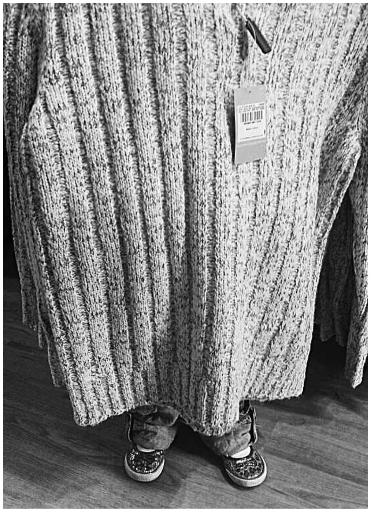
Đứa trẻ chơi trốn tìm khi đang ở giai đoạn “Nếu con không nhìn thấy bố mẹ (hoặc thậm chí nếu con không nhìn thấy bố mẹ dễ dàng như bình thường), thì bố mẹ cũng không nhìn thấy con.”
Các khía cạnh khác của sự phát triển nhận thức cũng được khái niệm hóa theo từng giai đoạn. Một giai đoạn sớm xảy ra khi trẻ tập đi hình thành ranh giới bản ngã—“Có một ‘cái tôi’, tách biệt với mọi người khác.” Việc thiếu ranh giới bản ngã thể hiện khi một đứa trẻ tập đi chưa phân định rạch ròi nơi mình kết thúc và Mẹ bắt đầu—mẹ bị đứt tay, và đứa trẻ kêu ngón tay mình bị đau.5
Tiếp theo là giai đoạn nhận ra rằng những cá nhân khác có thông tin khác với bạn. Trẻ chín tháng tuổi biết nhìn theo hướng ai đó chỉ tay (cũng như các loài vượn khác và chó), biết rằng người chỉ tay có thông tin mà chúng không có. Điều này được thúc đẩy bởi động lực: Đồ chơi kia ở đâu? Cô ấy đang nhìn đâu thế? Trẻ lớn hơn hiểu một cách rộng hơn rằng người khác có suy nghĩ, niềm tin và kiến thức khác với mình, cột mốc đạt được Lý thuyết Tâm trí (Theory of Mind – ToM).6
Đây là hình ảnh của việc chưa có ToM. Một đứa trẻ hai tuổi và một người lớn nhìn thấy một chiếc bánh quy được đặt vào hộp A. Người lớn rời đi, và nhà nghiên cứu chuyển chiếc bánh sang hộp B. Hỏi đứa trẻ: “Khi người đó quay lại, chú ấy sẽ tìm chiếc bánh ở đâu?” Hộp B—đứa trẻ biết nó ở đó và do đó mọi người đều biết. Khoảng ba hoặc bốn tuổi, đứa trẻ có thể lập luận: “Chú ấy sẽ nghĩ nó ở trong hộp A, mặc dù con biết nó ở trong hộp B.” Úm ba la: ToM.
Việc vượt qua những bài kiểm tra “niềm tin sai lầm” như vậy là một cột mốc phát triển lớn. ToM sau đó tiến triển lên những khả năng thấu hiểu cao siêu hơn—ví dụ, nắm bắt sự mỉa mai, đặt mình vào góc nhìn của người khác, hoặc ToM bậc hai (hiểu được ToM của người A về người B).7
Nhiều vùng vỏ não khác nhau điều phối ToM: các phần của PFC giữa (không ngạc nhiên chút nào!) và một số nhân vật mới, bao gồm hồi chêm trước (precuneus), rãnh thái dương trên (superior temporal sulcus), và vùng nối thái dương – đỉnh (temporoparietal junction – TPJ). Điều này được chứng minh qua chụp ảnh thần kinh; qua sự suy giảm ToM nếu các vùng này bị tổn thương (người tự kỷ, vốn có ToM hạn chế, bị giảm chất xám và hoạt động ở rãnh thái dương trên); và qua thực tế là nếu bạn tạm thời làm bất hoạt TPJ, mọi người sẽ không xem xét ý định của ai đó khi phán xét đạo đức họ.8
Như vậy, có các giai đoạn nhìn theo hướng ánh mắt, tiếp theo là ToM bậc một, rồi ToM bậc hai, rồi đặt mình vào góc nhìn người khác, với tốc độ chuyển tiếp chịu ảnh hưởng bởi trải nghiệm (ví dụ: trẻ có anh chị lớn đạt được ToM sớm hơn mức trung bình).9
Tất nhiên, có những lời chỉ trích đối với cách tiếp cận theo giai đoạn trong phát triển nhận thức. Một lời chỉ trích nằm ngay tại trọng tâm của cuốn sách này: khung lý thuyết của Piaget nằm gọn trong một chiếc xô “nhận thức”, phớt lờ tác động của các yếu tố xã hội và cảm xúc.
Một ví dụ sẽ được thảo luận ở chương 12 liên quan đến trẻ sơ sinh chưa biết nói, vốn chắc chắn chưa hiểu được tính bắc cầu (nếu A > B, và B > C, thì A > C). Hãy cho xem một sự vi phạm tính bắc cầu trong tương tác giữa các hình khối trên màn hình (hình A lẽ ra phải húc đổ hình C, nhưng điều ngược lại xảy ra), và đứa trẻ chẳng bận tâm, không nhìn lâu. Nhưng hãy nhân hóa các hình khối đó bằng mắt và miệng, và lúc này nhịp tim tăng lên, đứa trẻ nhìn lâu hơn—“Ồ, nhân vật C lẽ ra phải tránh đường cho nhân vật A chứ, không phải ngược lại.” Con người hiểu các phép toán logic giữa các cá nhân sớm hơn là giữa các đồ vật.10
Trạng thái xã hội và động lực cũng có thể làm dịch chuyển giai đoạn nhận thức. Những manh mối sơ khai của ToM dễ chứng minh hơn ở những con tinh tinh đang tương tác với một con tinh tinh khác (so với với con người) và nếu có thứ gì đó tạo động lực—thức ăn—tham gia vào.*11
Cảm xúc và tình cảm có thể làm thay đổi giai đoạn nhận thức theo những cách cục bộ đến kinh ngạc. Tôi đã chứng kiến một ví dụ tuyệt vời về điều này khi con gái tôi bộc lộ cả ToM lẫn sự thất bại của ToM trong cùng một hơi thở. Con bé vừa chuyển trường mẫu giáo và đang quay lại thăm lớp cũ. Con bé kể cho mọi người nghe về cuộc sống ở trường mới: “Rồi, sau bữa trưa, tụi con chơi xích đu. Ở trường mới của con có xích đu đấy. Và rồi, sau đó, tụi con vào trong nhà và cô Carolee đọc truyện cho tụi con nghe. Rồi, sau đó...” Có ToM: “chơi xích đu”—khoan đã, các bạn không biết trường mình có xích đu; mình cần phải nói cho họ biết. Thất bại của ToM: “cô Carolee đọc truyện cho tụi con nghe.” Carolee là cô giáo ở trường mới của con bé. Cùng một logic đáng lẽ phải áp dụng—nói cho họ biết cô Carolee là ai. Nhưng vì Carolee là cô giáo tuyệt vời nhất trên đời, ToM đã thất bại. Sau đó tôi hỏi con bé: “Này, sao con không nói cho mọi người biết Carolee là cô giáo của con?” “Ôi, ai mà chẳng biết cô Carolee.” Làm sao có chuyện ai đó không biết được cơ chứ?
Cảm Nhận Nỗi Đau của Người Khác
ToM dẫn đến một bước tiếp theo—người khác có thể có những cảm xúc khác với tôi, bao gồm cả những cảm xúc đau đớn.12 Nhận thức này chưa đủ để tạo nên sự thấu cảm. Suy cho cùng, những kẻ thái nhân cách (sociopath), vốn thiếu thốn thấu cảm một cách bệnh lý, lại sử dụng ToM siêu đẳng để đi trước mọi người ba bước đầy thao túng và không chút hối hận. Nhận thức này cũng không hẳn là điều kiện cần thiết cho sự thấu cảm, vì trẻ quá nhỏ để có ToM vẫn thể hiện những dấu hiệu sơ khai của việc cảm nhận nỗi đau người khác—một đứa trẻ tập đi sẽ cố gắng an ủi ai đó giả vờ khóc, đưa cho họ núm vú giả của mình (và sự thấu cảm đó còn sơ khai ở chỗ đứa trẻ không thể hình dung ai đó được an ủi bằng những thứ khác với mình).
Đúng vậy, rất sơ khai. Có thể đứa trẻ tập đi cảm thấy sự thấu cảm sâu sắc. Hoặc có thể nó chỉ cảm thấy khó chịu vì tiếng khóc và đang cố làm người lớn im lặng vì lợi ích của chính mình. Năng lực thấu cảm thời thơ ấu tiến triển từ việc cảm nhận nỗi đau của ai đó vì bạn chính là họ, đến việc cảm thương cho người khác, rồi đến việc cảm nhận như thể mình là họ.
Sinh học thần kinh về sự thấu cảm ở trẻ em rất hợp lý. Như đã giới thiệu ở chương 2, ở người lớn, vỏ não đai trước (anterior cingulate cortex) kích hoạt khi họ thấy ai đó bị thương. Điều tương tự cũng xảy ra với hạch hạnh nhân và vỏ não đảo, đặc biệt trong các trường hợp tổn hại cố ý—có sự tức giận và ghê tởm. Các vùng PFC bao gồm vùng vmPFC (cảm xúc) cũng tham gia. Quan sát nỗi đau thể xác (ví dụ: một ngón tay bị kim châm) tạo ra một mô hình gián tiếp cụ thể: có sự kích hoạt chất xám quanh cống (PAG), vùng trung tâm cho cảm nhận nỗi đau của chính bạn, ở các phần vỏ não cảm giác tiếp nhận cảm giác từ ngón tay của chính bạn, và ở các nơ-ron vận động ra lệnh cho ngón tay của chính bạn cử động.* Bạn co rúm các ngón tay lại.
Công trình của Jean Decety thuộc Đại học Chicago cho thấy khi trẻ bảy tuổi nhìn thấy ai đó bị đau, sự kích hoạt mạnh nhất nằm ở các vùng cụ thể hơn—PAG và vỏ não cảm giác cùng vận động—với hoạt động của PAG gắn kết với mức kích hoạt vmPFC tối thiểu hiện có. Ở trẻ lớn hơn, vmPFC gắn kết với các cấu trúc hệ limbic đang ngày càng được kích hoạt mạnh mẽ hơn.13 Và đến tuổi vị thành niên, sự kích hoạt vmPFC mạnh mẽ hơn sẽ gắn kết với các vùng ToM. Điều gì đang xảy ra? Sự thấu cảm đang chuyển dịch từ thế giới cụ thể của “Ngón tay cô ấy chắc đau lắm, tự dưng mình thấy nhói ở ngón tay mình” sang sự tập trung kiểu ToM vào cảm xúc và trải nghiệm của người bị châm kim.
Sự thấu cảm của trẻ nhỏ không phân biệt giữa tổn hại cố ý và vô ý, hoặc giữa tổn hại đối với một người và đối với một đồ vật. Những sự phân biệt đó xuất hiện theo tuổi tác, vào khoảng thời gian phần PAG trong phản ứng thấu cảm giảm đi và có sự tham gia nhiều hơn của vmPFC cùng các vùng ToM; hơn nữa, tổn hại cố ý lúc này kích hoạt hạch hạnh nhân và vỏ não đảo—sự tức giận và ghê tởm đối với thủ phạm.* Đây cũng là lúc trẻ lần đầu tiên phân biệt được giữa nỗi đau do bản thân tự gây ra và nỗi đau do người khác gây ra.
Tinh tế hơn nữa—vào khoảng bảy tuổi, trẻ bắt đầu bộc lộ sự thấu cảm của mình. Đến mười đến mười hai tuổi, sự thấu cảm trở nên khái quát và trừu tượng hơn—thấu cảm cho “người nghèo”, thay vì một cá nhân cụ thể (mặt trái: đây cũng là lúc trẻ lần đầu tiên rập khuôn tiêu cực về các nhóm người).
Cũng có những manh mối của ý thức về công lý. Trẻ mẫu giáo có xu hướng theo chủ nghĩa bình quân (ví dụ: tốt hơn là bạn mình cũng được một chiếc bánh quy khi mình được). Nhưng trước khi chúng ta quá say sưa với sự hào phóng của tuổi thơ, thì thiên vị nhóm nội bộ (ingroup bias) đã xuất hiện rồi; nếu đứa trẻ kia là người lạ, chủ nghĩa bình quân sẽ giảm đi.14
Cũng có xu hướng ngày càng tăng ở trẻ em trong việc phản ứng với một sự bất công, khi ai đó bị đối xử thiếu công bằng.15 Nhưng một lần nữa, trước khi quá phấn khích, điều đó đi kèm với một sự thiên vị. Vào khoảng bốn đến sáu tuổi, trẻ em ở các nền văn hóa trên khắp thế giới phản ứng tiêu cực khi chính mình là người bị chia phần thiệt. Phải đến tám đến mười tuổi, trẻ mới phản ứng tiêu cực khi thấy người khác bị đối xử bất công. Hơn nữa, có sự biến thiên đáng kể giữa các nền văn hóa về việc liệu giai đoạn sau đó có thực sự xuất hiện hay không. Ý thức công lý ở trẻ nhỏ mang nặng tính tư lợi.
Ngay sau khi trẻ bắt đầu phản ứng tiêu cực trước việc người khác bị đối xử bất công, chúng bắt đầu cố gắng khắc phục những bất bình đẳng trước đó (“Bây giờ bạn ấy nên được nhiều hơn vì trước đó bạn ấy được ít hơn”).16 Đến tiền vị thành niên, chủ nghĩa bình quân nhường chỗ cho việc chấp nhận sự bất bình đẳng dựa trên công trạng, nỗ lực hoặc vì lợi ích chung lớn hơn (“Bạn ấy nên được chơi nhiều hơn cậu ấy; bạn ấy giỏi hơn/chăm chỉ hơn/quan trọng hơn cho đội”). Một số trẻ thậm chí làm được việc hy sinh bản thân vì lợi ích chung (“Bạn ấy nên được chơi nhiều hơn mình; bạn ấy giỏi hơn”).* Đến tuổi vị thành niên, các bé trai có xu hướng chấp nhận sự bất bình đẳng nhiều hơn các bé gái, dựa trên cơ sở vị lợi. Và cả hai giới đều chấp nhận sự bất bình đẳng như một quy ước xã hội—“Chẳng làm được gì đâu; đời nó thế rồi.”
Sự Phát Triển Đạo Đức
Với ToM, khả năng đặt mình vào góc nhìn của người khác, sự thấu cảm tinh tế và ý thức công lý đã vào vị trí, một đứa trẻ có thể bắt đầu vật lộn với việc phân biệt đúng sai.
Piaget nhấn mạnh rằng trò chơi của trẻ em phần lớn là để tìm ra các quy tắc ứng xử phù hợp (những quy tắc có thể khác với quy tắc của người lớn)* và điều này liên quan đến các giai đoạn có độ phức tạp tăng dần. Điều này đã truyền cảm hứng cho một nhà tâm lý học trẻ hơn nghiên cứu chủ đề này một cách chặt chẽ hơn, với những hệ quả có sức ảnh hưởng to lớn.
Vào những năm 1950, Lawrence Kohlberg, khi đó là nghiên cứu sinh tại Đại học Chicago và sau này là giáo sư tại Harvard, bắt đầu xây dựng các giai đoạn phát triển đạo đức lừng danh của mình.17
Trẻ em được đưa ra các tình huống tiến thoái lưỡng nan về đạo đức. Ví dụ: Liều thuốc duy nhất của loại thuốc duy nhất có thể cứu một người phụ nữ nghèo khỏi cái chết lại đắt đỏ một cách phi lý. Cô ấy có nên ăn cắp nó không? Tại sao?
Kohlberg kết luận rằng phán đoán đạo đức là một quá trình nhận thức, được xây dựng xoay quanh lập luận ngày càng phức tạp khi trẻ trưởng thành. Ông đề xuất ba cấp độ phát triển đạo đức nổi tiếng, mỗi cấp độ gồm hai giai đoạn nhỏ.
Bạn được dặn không được ăn chiếc bánh quy hấp dẫn trước mặt. Bạn có nên ăn nó không? Dưới đây là các giai đoạn lập luận được đơn giản hóa đến đau lòng dẫn đến quyết định đó:
Cấp độ 1: Tôi Có Nên Ăn Chiếc Bánh Quy Không? Lập Luận Tiền Quy Ước
Giai đoạn 1. Tùy xem. Khả năng tôi bị phạt là bao nhiêu? Bị phạt rất khó chịu. Sự hung hăng thường đạt đỉnh vào khoảng hai đến bốn tuổi, sau đó trẻ bị kiềm chế bởi hình phạt của người lớn (“Ra góc tường ngồi ngay”) và bạn bè (tức là bị tẩy chay).
Giai đoạn 2. Tùy xem. Nếu tôi nhịn ăn, tôi có được thưởng không? Được thưởng rất thích.
Cả hai giai đoạn đều hướng về bản ngã—sự vâng lời và tư lợi (tôi được lợi gì trong chuyện này?). Kohlberg nhận thấy trẻ em thường ở cấp độ này cho đến khoảng tám đến mười tuổi.
Mối lo ngại nảy sinh khi sự hung hăng, đặc biệt nếu nhẫn tâm và không hối hận, không thuyên giảm vào khoảng độ tuổi này—điều này dự báo nguy cơ gia tăng chứng thái nhân cách ở tuổi trưởng thành (còn gọi là nhân cách chống đối xã hội).* Điều cốt yếu là hành vi của những kẻ thái nhân cách tương lai dường như miễn nhiễm với phản hồi tiêu cực. Như đã lưu ý, ngưỡng chịu đau cao ở những kẻ thái nhân cách giúp giải thích sự thiếu thấu cảm của họ—thật khó cảm nhận nỗi đau của người khác khi bạn không thể cảm nhận nỗi đau của chính mình. Nó cũng giúp giải thích sự miễn nhiễm với phản hồi tiêu cực—tại sao phải thay đổi hành vi nếu hình phạt chẳng có tác dụng gì?
Cũng vào khoảng giai đoạn này, trẻ lần đầu tiên biết hòa giải sau xung đột và tìm thấy sự an ủi từ việc hòa giải (ví dụ: giảm tiết glucocorticoid và giảm lo âu). Những lợi ích đó chắc chắn cho thấy tư lợi thúc đẩy sự hòa giải. Điều này được thể hiện theo một cách thực dụng khác—trẻ hòa giải dễ dàng hơn khi mối quan hệ đó quan trọng với chúng.
Cấp độ 2: Tôi Có Nên Ăn Chiếc Bánh Quy Không? Lập Luận Quy Ước
Giai đoạn 3. Tùy xem. Ai sẽ bị mất phần nếu tôi ăn? Tôi có thích họ không? Người khác sẽ làm gì? Mọi người sẽ nghĩ gì về tôi khi ăn chiếc bánh quy? Nghĩ cho người khác thì tốt; được mọi người quý mến thì tốt.
Giai đoạn 4. Tùy xem. Luật lệ là gì? Luật lệ có bất khả xâm phạm không? Điều gì xảy ra nếu ai cũng phạm luật này? Có trật tự thì tốt. Đây là vị thẩm phán khi xem xét các hoạt động cho vay cắt cổ nhưng hợp pháp của một ngân hàng đã nghĩ: “Tôi thấy thương cho những nạn nhân này . . . nhưng tôi ở đây để quyết định xem ngân hàng có phạm luật hay không . . . và họ đã không phạm luật.”
Lập luận đạo đức quy ước mang tính quan hệ (về tương tác của bạn với người khác và hệ quả của chúng); hầu hết thanh thiếu niên và người lớn đều ở cấp độ này.
Cấp độ 3: Tôi Có Nên Ăn Chiếc Bánh Quy Không? Lập Luận Hậu Quy Ước
Giai đoạn 5: Tùy xem. Hoàn cảnh nào đã đặt chiếc bánh quy ở đó? Ai quyết định tôi không được lấy nó? Tôi có cứu được một mạng người bằng cách lấy chiếc bánh quy không? Thật tốt khi các quy tắc rõ ràng được áp dụng một cách linh hoạt. Lúc này vị thẩm phán sẽ nghĩ: “Đúng, hành động của ngân hàng là hợp pháp, nhưng rốt cuộc luật pháp tồn tại để bảo vệ kẻ yếu trước kẻ mạnh, vì vậy dù có hợp đồng ký kết hay không, ngân hàng đó phải bị chặn lại.”
Giai đoạn 6: Tùy xem. Lập trường đạo đức của tôi về việc này có thiết yếu hơn một điều luật nào đó không, một lập trường mà tôi sẵn sàng trả giá đắt nhất nếu cần? Thật tốt khi biết có những điều mà vì nó tôi sẵn sàng hát vang mãi: “Chúng Ta Sẽ Không Lay Chuyển.”
Cấp độ này mang tính vị ngã ở chỗ các quy tắc và việc áp dụng chúng xuất phát từ bên trong và phản ánh lương tâm, nơi một sự vi phạm đòi hỏi cái giá tối thượng—phải sống chung với chính mình sau đó. Nó nhận ra rằng làm người tốt và tuân thủ pháp luật không đồng nghĩa với nhau. Như Woody Guthrie đã viết trong “Pretty Boy Floyd”: “Tôi yêu một người tốt đứng ngoài vòng pháp luật, cũng nhiều như tôi ghét một kẻ xấu núp bóng pháp luật.”*
Giai đoạn 6 cũng mang tính tự phụ, ngầm xây dựng trên sự tự cho mình là đúng vượt lên trên những kẻ làm luật tiểu tư sản nhỏ mọn và những kẻ đếm đậu, Giới Cầm Quyền, bọn cừu chỉ biết làm theo, v.v. Trích lời Emerson, như người ta thường làm khi xem xét giai đoạn hậu quy ước: “Mỗi hành động anh hùng tự đo lường chính mình bằng sự khinh miệt đối với một lợi ích bên ngoài nào đó.” Lập luận giai đoạn 6 có thể truyền cảm hứng. Nhưng nó cũng có thể gây khó chịu, đặt trên tiền đề coi “làm người tốt” và “tuân thủ pháp luật” là hai thái cực đối lập. “Để sống ngoài vòng pháp luật, bạn phải trung thực,” Bob Dylan viết.
Các nhà nghiên cứu theo trường phái Kohlberg nhận thấy hầu như chẳng có ai duy trì ổn định ở giai đoạn 5 hay giai đoạn 6.
— Về cơ bản, Kohlberg đã phát minh ra ngành nghiên cứu khoa học về sự phát triển đạo đức ở trẻ em. Mô hình giai đoạn của ông kinh điển đến mức người trong nghề hạ bệ ai đó bằng cách ám chỉ họ bị kẹt lại trong vũng bùn nguyên thủy của một giai đoạn Kohlberg sơ khai. Như chúng ta sẽ thấy ở chương 12, thậm chí có bằng chứng cho thấy người bảo thủ và người tự do lập luận ở các giai đoạn Kohlberg khác nhau.
Tất nhiên, công trình của Kohlberg cũng có những vấn đề.
Chuyện thường tình: Đừng quá nghiêm trọng hóa bất kỳ mô hình giai đoạn nào—luôn có ngoại lệ, sự chuyển tiếp trưởng thành không rạch ròi, và giai đoạn của một người có thể phụ thuộc vào bối cảnh.
Vấn đề tầm nhìn hạn hẹp và đặt sai trọng tâm: Ban đầu Kohlberg nghiên cứu nhóm người thiếu tính đại diện quen thuộc, tức người Mỹ, và như chúng ta sẽ thấy ở các chương sau, phán đoán đạo đức khác nhau giữa các nền văn hóa. Hơn nữa, đối tượng nghiên cứu là nam giới, điều bị Carol Gilligan của Đại học NYU thách thức vào những năm 1980. Hai người đồng ý về trình tự chung của các giai đoạn. Tuy nhiên, Gilligan và cộng sự chỉ ra rằng khi đưa ra phán đoán đạo đức, các bé gái và phụ nữ thường coi trọng sự quan tâm chăm sóc (care) hơn công lý, trái ngược với các bé trai và nam giới. Kết quả là nữ giới nghiêng về tư duy quy ước với trọng tâm là các mối quan hệ, trong khi nam giới nghiêng về những trừu tượng hậu quy ước.18
Sự nhấn mạnh vào nhận thức: Phán đoán đạo đức là kết quả của lập luận nhiều hơn hay của trực giác và cảm xúc nhiều hơn? Trường phái Kohlberg thiên về vế đầu. Nhưng như sẽ thấy ở chương 13, rất nhiều sinh vật có kỹ năng nhận thức hạn chế, bao gồm trẻ nhỏ và các loài linh trưởng không phải người, vẫn thể hiện ý thức sơ khai về sự công bằng và công lý. Những phát hiện như vậy làm điểm tựa cho quan điểm “trực giác xã hội” về ra quyết định đạo đức, gắn liền với các nhà tâm lý học Martin Hoffman và Jonathan Haidt, cả hai đều thuộc Đại học NYU.19 Tự nhiên là câu hỏi đặt ra sẽ là lập luận đạo đức và trực giác đạo đức tương tác với nhau như thế nào. Như chúng ta sẽ thấy, (a) thay vì chỉ thuần túy là cảm xúc, trực giác đạo đức là một kiểu nhận thức khác với lập luận có ý thức; và (b) ngược lại, lập luận đạo đức thường phi logic một cách trắng trợn. Hãy đón xem.
Sự thiếu khả năng dự báo: Liệu những điều này có thực sự dự báo được ai sẽ làm điều khó khăn hơn khi đó là điều đúng đắn cần làm không? Liệu những người đoạt huy chương vàng về lập luận kiểu Kohlberg có phải là những người sẵn sàng trả giá để tố giác sai phạm, khống chế kẻ xả súng, che chở người tị nạn? Chà, quên chuyện anh hùng đi; liệu họ có thậm chí dễ trung thực hơn trong các thí nghiệm tâm lý vặt vãnh không? Nói cách khác, lập luận đạo đức có dự báo hành động đạo đức không? Hiếm khi; như chúng ta sẽ thấy ở chương 13, chủ nghĩa anh hùng đạo đức hiếm khi nảy sinh từ ý chí vỏ não trán siêu phàm. Thay vào đó, nó xảy ra khi điều đúng đắn không phải là điều khó khăn hơn.
Kẹo Dẻo Marshmallow
Vỏ não trán và sự kết nối ngày càng tăng của nó với phần còn lại của bộ não là mỏ neo cho sinh học thần kinh về sự tinh tế ngày càng lớn của trẻ em, quan trọng nhất là khả năng điều hòa cảm xúc và hành vi. Minh chứng mang tính biểu tượng nhất cho điều này xoay quanh một vật thể không ngờ tới—viên kẹo dẻo marshmallow.20
Vào những năm 1960, nhà tâm lý học Walter Mischel của Đại học Stanford đã phát triển “bài kiểm tra kẹo dẻo” để nghiên cứu khả năng trì hoãn sự thỏa mãn. Một đứa trẻ được đặt trước mặt một viên kẹo dẻo. Người làm thí nghiệm nói: “Chú/cô ra ngoài một lát. Cháu có thể ăn viên kẹo sau khi chú/cô đi. Nhưng nếu cháu đợi và không ăn cho đến khi chú/cô quay lại, chú/cô sẽ cho cháu thêm một viên nữa,” rồi rời đi. Và đứa trẻ, được quan sát qua gương một chiều, bắt đầu thử thách cô độc kéo dài mười lăm phút cho đến khi nhà nghiên cứu trở lại.
Nghiên cứu hàng trăm trẻ từ ba đến sáu tuổi, Mischel nhận thấy sự biến thiên khổng lồ—một vài em ăn viên kẹo trước cả khi người làm thí nghiệm bước ra khỏi phòng. Khoảng một phần ba trụ được đủ mười lăm phút. Số còn lại rải rác ở khoảng giữa, với thời gian trì hoãn trung bình là mười một phút. Chiến lược của trẻ để chống lại tiếng gọi ma mị của viên kẹo dẻo rất khác nhau, như có thể thấy trong các phiên bản hiện đại của bài kiểm tra trên YouTube. Một số em che mắt lại, giấu viên kẹo đi, hát để đánh lạc hướng bản thân. Số khác nhăn nhó, ngồi đè lên tay mình. Số khác nữa ngửi viên kẹo, ngắt một mẩu nhỏ xíu vô tận để ăn, nâng niu nó một cách thành kính, hôn nó, vuốt ve nó.
Nhiều yếu tố điều chỉnh sự kiên định của trẻ (được thể hiện trong các nghiên cứu sau đó mô tả trong sách của Mischel, nơi vì lý do nào đó mà bánh quy xoắn pretzel thay thế cho kẹo dẻo). Niềm tin vào hệ thống rất quan trọng—nếu trước đó người làm thí nghiệm từng thất hứa, trẻ sẽ không đợi lâu bằng. Gợi ý trẻ nghĩ về việc bánh quy xoắn giòn và ngon thế nào (cái mà Mischel gọi là “tư duy nóng”) đã thổi bay tính tự kỷ luật; gợi ý nghĩ về một “tư duy lạnh” (ví dụ: hình dáng của bánh quy xoắn) hoặc một tư duy nóng thay thế (ví dụ: kem) đã củng cố sức đề kháng.
Đúng như dự đoán, trẻ lớn hơn trụ được lâu hơn, sử dụng các chiến lược hiệu quả hơn. Trẻ nhỏ hơn mô tả những chiến lược như “Cháu cứ nghĩ mãi về việc viên kẹo thứ hai sẽ ngon đến mức nào.” Vấn đề, tất nhiên, là chiến lược này chỉ cách việc nghĩ về viên kẹo ngay trước mặt bạn khoảng hai khớp thần kinh mà thôi. Ngược lại, trẻ lớn hơn sử dụng các chiến lược đánh lạc hướng—nghĩ về đồ chơi, thú cưng, sinh nhật của mình. Điều này tiến triển thành các chiến lược tái đánh giá (“Đây không phải là chuyện kẹo dẻo. Đây là chuyện mình là kiểu người nào”). Với Mischel, sự trưởng thành của ý chí là câu chuyện về các chiến lược đánh lạc hướng và tái đánh giá nhiều hơn là chủ nghĩa khắc kỷ.
Vậy là trẻ em tiến bộ dần trong việc trì hoãn sự thỏa mãn. Bước tiếp theo của Mischel đã biến nghiên cứu của ông thành biểu tượng—ông theo dõi lũ trẻ sau đó, xem liệu thời gian chờ đợi kẹo dẻo có dự báo được điều gì về tuổi trưởng thành của chúng không.
Có chứ, quá đi chứ. Những nhà vô địch năm tuổi về sự kiên nhẫn với kẹo dẻo đạt điểm SAT trung bình cao hơn ở trường trung học (so với những em không thể đợi), có thành công xã hội và khả năng phục hồi tốt hơn, ít hành vi hung hăng* và chống đối hơn. Bốn mươi năm sau viên kẹo dẻo, họ xuất sắc về chức năng vùng trán, có mức kích hoạt PFC cao hơn trong một nhiệm vụ vùng trán, và có chỉ số BMI thấp hơn.21 Một chiếc máy quét não trị giá hàng tỷ đô la cũng không có sức mạnh dự báo hơn một viên kẹo dẻo. Mọi bậc cha mẹ trung lưu lo âu đều bị ám ảnh bởi những phát hiện này, đã biến kẹo dẻo thành vật thờ phụng.
HỆ QUẢ
Chúng ta vừa có cái nhìn sơ lược về các lĩnh vực phát triển hành vi khác nhau. Đã đến lúc đặt mọi thứ vào câu hỏi trung tâm của cuốn sách này. Người trưởng thành của chúng ta đã thực hiện hành vi tuyệt vời, tồi tệ hoặc mơ hồ đó. Những sự kiện thời thơ ấu nào đã góp phần dẫn đến việc đó xảy ra?
Thử thách đầu tiên là thực sự đưa sinh học vào trong tư duy của chúng ta. Một đứa trẻ bị suy dinh dưỡng và khi trưởng thành có kỹ năng nhận thức kém. Điều đó thật dễ định khung về mặt sinh học—suy dinh dưỡng làm suy yếu sự phát triển não bộ. Ngược lại, một đứa trẻ được nuôi dạy bởi cha mẹ lạnh lùng, thiếu biểu cảm và khi trưởng thành cảm thấy mình không đáng được yêu. Khó hơn nhiều để liên kết hai điều đó về mặt sinh học, để cưỡng lại suy nghĩ rằng bằng cách nào đó đây là một hiện tượng ít mang tính sinh học hơn mối liên hệ suy dinh dưỡng/nhận thức. Có thể người ta biết ít hơn về những thay đổi sinh học giải thích mối liên hệ giữa cha mẹ lạnh lùng và người trưởng thành có lòng tự trọng thấp so với mối liên hệ suy dinh dưỡng/nhận thức. Có thể việc diễn đạt vế đầu tiên về mặt sinh học kém thuận tiện hơn vế sau. Có thể việc áp dụng một liệu pháp sinh học trực tiếp cho vế đầu tiên khó hơn vế sau (ví dụ: một loại thuốc yếu tố tăng trưởng thần kinh tưởng tượng giúp cải thiện lòng tự trọng so với nhận thức). Nhưng sinh học đều làm trung gian cho cả hai mối liên hệ. Một đám mây có thể ít hữu hình hơn một viên gạch, nhưng nó được cấu tạo từ cùng những quy luật về cách các nguyên tử tương tác.
Sinh học liên kết thời thơ ấu với các hành vi tuổi trưởng thành như thế nào? Tính dẻo thần kinh của chương 5 được viết hoa và từ rất sớm. Bộ não đang phát triển là hiện thân hoàn hảo của tính dẻo thần kinh, và mọi nấc cụt của trải nghiệm đều có tác động, dù thường là rất nhỏ, lên bộ não đó.
Bây giờ chúng ta xem xét những cách thức mà các kiểu tuổi thơ khác nhau tạo ra những kiểu người trưởng thành khác nhau.
HÃY BẮT ĐẦU TỪ ĐIỂM KHỞI ĐẦU: TẦM QUAN TRỌNG CỦA NHỮNG NGƯỜI MẸ
Không có gì bằng một tiêu đề mục khẳng định điều hiển nhiên. Ai cũng cần một người mẹ. Ngay cả loài gặm nhấm; tách chuột con khỏi Mẹ vài giờ mỗi ngày và khi trưởng thành, chúng có nồng độ glucocorticoid tăng cao, kỹ năng nhận thức kém, lo âu, và nếu là con đực, hung hăng hơn.22 Người mẹ đóng vai trò tối quan trọng. Ngoại trừ việc mãi cho đến tận thế kỷ XX, hầu hết các chuyên gia lại không nghĩ như vậy. Phương Tây đã phát triển các kỹ thuật nuôi dạy con mà khi so với các nền văn hóa truyền thống, trẻ em có ít tiếp xúc thể chất với mẹ hơn, ngủ riêng ở độ tuổi sớm hơn, và có thời gian chờ đợi lâu hơn mới được bế lên khi khóc. Khoảng năm 1900, chuyên gia hàng đầu Luther Holt của Đại học Columbia đã cảnh báo chống lại “thói quen xấu xa” là bế một đứa trẻ đang khóc hoặc ẵm bồng nó quá thường xuyên. Đây là thế giới của những đứa trẻ nhà giàu, được vú em nuôi nấng và được đưa ra trình diện cha mẹ trước giờ đi ngủ để được nhìn thoáng qua nhưng không được cất tiếng.
Thời kỳ này đã mang lại một trong những cuộc tình một đêm kỳ lạ nhất lịch sử, đó là khi trường phái Freud và trường phái hành vi móc ngoặc với nhau để giải thích tại sao trẻ sơ sinh lại gắn bó với mẹ mình. Với các nhà hành vi học, hiển nhiên là vì người mẹ củng cố hành vi cho chúng, cung cấp calo khi chúng đói. Với các nhà phân tâm học Freud, cũng hiển nhiên không kém, trẻ sơ sinh thiếu “sự phát triển bản ngã” để hình thành mối quan hệ với bất kỳ thứ gì/ai khác ngoài bầu ngực của Mẹ. Khi kết hợp với chủ nghĩa trẻ em chỉ nên để nhìn chứ không nên để nghe tiếng, điều này gợi ý rằng một khi bạn đã giải quyết xong nhu cầu dinh dưỡng, nhiệt độ thích hợp, cộng thêm vài thứ lặt vặt khác của đứa trẻ, thì chúng đã ổn thỏa. Tình cảm, sự ấm áp, tiếp xúc thể chất? Thừa thãi.
Tư duy như vậy đã tạo ra ít nhất một thảm họa. Khi một đứa trẻ phải nhập viện một thời gian, giáo điều lúc bấy giờ là người mẹ không cần thiết—bà chỉ làm tăng thêm sự xáo trộn cảm xúc, còn mọi thứ thiết yếu đã do nhân viên bệnh viện cung cấp. Thông thường, các bà mẹ chỉ được thăm con mỗi tuần một lần trong vài phút. Và khi trẻ phải nằm viện dài ngày, chúng héo mòn đi vì “hội chứng bệnh viện” (hospitalism), chết hàng loạt vì các bệnh nhiễm trùng không đặc hiệu và rối loạn tiêu hóa chẳng liên quan gì đến căn bệnh ban đầu của chúng.23 Đây là thời đại mà thuyết vi trùng đã biến tướng thành niềm tin rằng trẻ em nằm viện phát triển tốt nhất khi không bị chạm vào, trong sự cách ly vô trùng. Đáng kinh ngạc là hội chứng bệnh viện tăng vọt ở những bệnh viện có lồng ấp đời mới (cải tiến từ ngành chăn nuôi gia cầm); những bệnh viện an toàn nhất lại là những bệnh viện nghèo nàn dựa vào hành động nguyên thủy là con người thực sự chạm vào và tương tác với trẻ sơ sinh.
Vào những năm 1950, bác sĩ tâm thần người Anh John Bowlby đã thách thức quan điểm coi trẻ sơ sinh là những sinh vật đơn giản với ít nhu cầu cảm xúc; “thuyết gắn bó” (attachment theory) của ông đã khai sinh ra quan điểm hiện đại của chúng ta về mối liên kết mẹ – con.*24 Trong bộ ba tác phẩm Attachment and Loss (Gắn bó và Mất mát), Bowlby đã tóm tắt những câu trả lời hiển nhiên mà ngày nay chúng ta sẽ đưa ra cho câu hỏi “Trẻ em cần gì từ mẹ của mình?”: tình yêu thương, sự ấm áp, âu yếm, sự đáp ứng, kích thích, nhất quán và đáng tin cậy. Điều gì được tạo ra khi thiếu vắng những thứ đó? Những người trưởng thành lo âu, trầm cảm, và/hoặc gắn bó kém.*
Bowlby đã truyền cảm hứng cho một trong những thí nghiệm mang tính biểu tượng nhất trong lịch sử tâm lý học, do Harry Harlow thuộc Đại học Wisconsin thực hiện; nó đã phá hủy giáo điều của trường phái Freud và hành vi về sự gắn bó mẹ – con.25 Harlow nuôi một con khỉ rhesus sơ sinh không có mẹ mà thay vào đó là hai “mẹ thay thế”. Cả hai đều làm bằng một ống lưới thép chuồng gà mô phỏng phần thân, với một chiếc đầu nhựa giống khỉ ở trên. Một mẹ thay thế có gắn bình sữa nhô ra từ “phần thân”. Mẹ kia có bọc vải lông mềm quanh thân. Nói cách khác, một mẹ cung cấp calo, mẹ kia mang lại một mô phỏng đầy xúc động về bộ lông của khỉ mẹ. Freud và B. F. Skinner hẳn đã phải vật lộn để tranh giành quyền tiếp cận bà mẹ lưới thép. Nhưng khỉ con đã chọn bà mẹ vải lông.* “Con người không thể chỉ sống bằng sữa. Tình yêu là một cảm xúc không cần phải được cho ăn bằng bình hay bằng thìa,” Harlow viết.
Bằng chứng cho nhu cầu cơ bản nhất do người mẹ mang lại đến từ một nguồn gây tranh cãi. Bắt đầu từ những năm 1990, tỷ lệ tội phạm lao dốc trên khắp nước Mỹ. Tại sao? Với phe tự do, câu trả lời là nền kinh tế thịnh vượng. Với phe bảo thủ, đó là ngân sách lớn hơn cho cảnh sát, mở rộng nhà tù và luật kết án ba lần phạm tội (three-strikes). Trong khi đó, một lời giải thích một phần được đưa ra bởi học giả pháp lý John Donohue của Stanford và nhà kinh tế học Steven Levitt của Đại học Chicago—đó là việc hợp pháp hóa phá thai. Phân tích theo từng bang của hai tác giả về việc tự do hóa luật phá thai và nhân khẩu học của sự sụt giảm tội phạm cho thấy khi việc phá thai trở nên dễ dàng
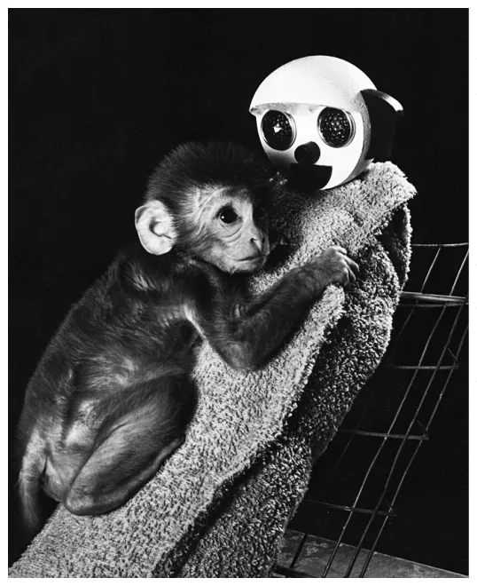
tiếp cận tại một khu vực, tỷ lệ tội phạm ở người trẻ tuổi giảm xuống khoảng hai mươi năm sau đó. Không ngạc nhiên—điều này gây tranh cãi dữ dội, nhưng với tôi nó hoàn toàn hợp lý một cách đáng buồn. Yếu tố nào dự báo mạnh mẽ một cuộc đời tội phạm? Được sinh ra bởi một người mẹ mà nếu có thể, bà ấy đã chọn không sinh bạn ra. Điều cơ bản nhất mà một người mẹ mang lại là gì? Biết rằng bà ấy hạnh phúc vì bạn tồn tại.*26
Harlow cũng giúp chứng minh một nền tảng của cuốn sách này, đó là những gì các bà mẹ (và sau này là bạn bè đồng trang lứa) cung cấp khi trẻ lớn lên. Để làm điều đó, ông đã thực hiện một số nghiên cứu gây phẫn nộ nhất trong lịch sử tâm lý học. Việc này liên quan đến việc nuôi khỉ con trong sự cô lập, không có mẹ hay bạn bè; chúng trải qua những tháng đầu tiên, thậm chí nhiều năm đầu đời mà không tiếp xúc với bất kỳ sinh vật sống nào khác, trước khi được đưa vào một nhóm xã hội.*
Đúng như dự đoán, chúng trở nên tàn tạ. Một số ngồi một mình, tự ôm lấy bản thân, đung đưa kiểu “tự kỷ”. Số khác có hành vi phân cấp hoặc tình dục cực kỳ bất thường.
Có một điều thú vị. Không phải những cá thể từng bị cô lập này thực hiện sai động tác hành vi—chúng không phô trương hung hăng như một con đà điểu, hay làm cử chỉ mời gọi tình dục của một con tắc kè. Các hành vi đều bình thường nhưng xảy ra sai thời điểm và sai chỗ—chẳng hạn, làm cử chỉ phục tùng trước những con nhãi nhép bé bằng nửa mình, hoặc đe dọa những con đầu đàn mà lẽ ra chúng phải co rúm lại trước mặt. Mẹ và bạn bè không dạy các đặc điểm vận động của các mô thức hành động cố định; những thứ đó đã được cài đặt sẵn. Họ dạy khi nào, ở đâu, và với ai—bối cảnh phù hợp cho những hành vi đó. Họ trao những bài học đầu tiên về việc khi nào thì chạm vào tay ai đó hay bóp cò súng có thể nằm trong số những hành vi tốt đẹp nhất hoặc tồi tệ nhất của chúng ta.
Tôi đã chứng kiến một ví dụ ấn tượng về điều này ở loài khỉ đầu chó mà tôi nghiên cứu tại Kenya, khi cả một con cái thứ hạng cao và một con cái thứ hạng thấp cùng sinh con gái trong cùng một tuần. Con của bà mẹ thứ hạng cao đạt mọi cột mốc phát triển sớm hơn con kia, sân chơi đã mất cân bằng ngay từ đầu. Khi hai con khỉ con được vài tuần tuổi, chúng suýt có cuộc tương tác đầu tiên. Con gái của bà mẹ cấp dưới nhìn thấy con gái của bà mẹ thống trị, chập chững bước tới chào hỏi. Và khi nó lại gần, bà mẹ thứ hạng thấp của nó đã túm lấy đuôi nó và kéo giật lại.
Đây là bài học đầu tiên của nó về vị trí của mình trong thế giới đó. “Con thấy nó không? Nó có thứ hạng cao hơn con nhiều lắm, nên con không thể cứ thế xông tới chơi với nó được. Nếu nó ở gần, con phải ngồi yên, tránh giao tiếp bằng mắt và hy vọng nó không cướp mất thứ con đang ăn.” Kinh ngạc thay, hai mươi năm sau, hai đứa trẻ sơ sinh đó sẽ trở thành hai bà lão, ngồi trên thảo nguyên, vẫn bộc lộ những bất đối xứng về thứ hạng mà chúng đã học được vào buổi sáng hôm ấy.
MỘT NGƯỜI MẸ NÀO ĐÓ TRONG CƠN BÃO
Harlow đã mang lại một bài học quan trọng khác, nhờ một nghiên cứu khác đau lòng khi nghĩ tới. Khỉ con được nuôi với những mẹ thay thế bằng lưới thép có gắn vòi phun khí ở giữa thân. Khi khỉ con bám vào, nó sẽ bị một luồng khí khó chịu thổi thẳng vào người. Một nhà hành vi học sẽ dự đoán con khỉ làm gì khi đối mặt với hình phạt như vậy? Bỏ chạy. Nhưng, giống như trong thế giới của trẻ em bị bạo hành và bạn đời bị đánh đập, khỉ con lại bám chặt hơn.
Tại sao chúng ta thường trở nên gắn bó với một nguồn củng cố tiêu cực, tìm kiếm sự an ủi khi đau khổ từ chính nguyên nhân gây ra nỗi đau khổ đó? Tại sao chúng ta lại yêu nhầm người, bị ngược đãi, rồi vẫn quay lại để chịu đựng thêm?
Các kiến giải tâm lý học rất phong phú. Vì lòng tự trọng kém, tin rằng bạn sẽ chẳng bao giờ tìm được ai tốt hơn. Hoặc một niềm tin đồng phụ thuộc rằng sứ mệnh của bạn là thay đổi người đó. Có lẽ bạn đồng nhất hóa với kẻ áp bức mình, hoặc tự quyết định rằng đó là lỗi của bạn và kẻ bạo hành có lý do chính đáng, để họ trông bớt phi lý và đáng sợ hơn. Những điều này đều có cơ sở và có thể mang lại sức mạnh giải thích và trị liệu to lớn. Nhưng công trình của Regina Sullivan thuộc Đại học NYU chứng minh những mảnh ghép của hiện tượng này ở cách xa tâm lý con người hàng dặm.
Sullivan đã điều kiện hóa chuột con để liên kết một mùi hương trung tính với một cú sốc điện.27 Nếu một con chuột con được điều kiện hóa lúc mười ngày tuổi trở lên (“chuột con lớn hơn”) tiếp xúc với mùi đó, những điều hợp lý sẽ xảy ra—kích hoạt hạch hạnh nhân, tiết glucocorticoid và né tránh mùi hương. Nhưng làm điều tương tự với một con chuột con nhỏ hơn thì chẳng có gì trong số đó xảy ra; đáng kinh ngạc là con chuột con lại bị thu hút bởi mùi hương đó.
Tại sao? Có một điểm lắt léo thú vị liên quan đến stress ở trẻ sơ sinh. Bào thai gặm nhấm hoàn toàn có khả năng tiết glucocorticoid. Nhưng trong vòng vài giờ sau khi sinh, tuyến thượng thận teo lại đáng kể, gần như không thể tiết glucocorticoid. “Giai đoạn giảm đáp ứng với stress” (SHRP) này suy yếu dần trong những tuần tiếp theo.28
SHRP là gì? Glucocorticoid có quá nhiều tác động bất lợi lên sự phát triển của não bộ (hãy chờ xem) đến mức SHRP đại diện cho một canh bạc—“Con sẽ không tiết glucocorticoid để đáp ứng với stress, nhằm phát triển tối ưu; nếu có chuyện gì căng thẳng xảy ra, Mẹ sẽ lo liệu giúp con.” Tương ứng, hãy tách chuột con khỏi mẹ chúng, và trong vòng vài giờ tuyến thượng thận của chúng nở ra và lấy lại khả năng tiết dồi dào glucocorticoid.
Trong giai đoạn SHRP, chuột con dường như sử dụng một quy tắc bổ sung: “Nếu Mẹ ở quanh đây (và do đó con không tiết glucocorticoid), con nên gắn bó với bất kỳ kích thích mạnh nào. Nó không thể có hại cho con được; Mẹ sẽ không cho phép điều đó.” Bằng chứng là hãy tiêm glucocorticoid vào hạch hạnh nhân của chuột con nhỏ tuổi trong quá trình điều kiện hóa, và hạch hạnh nhân sẽ kích hoạt rồi chuột con sẽ hình thành sự ghê sợ đối với mùi hương. Ngược lại, hãy chặn tiết glucocorticoid ở chuột con lớn hơn trong quá trình điều kiện hóa, và chúng sẽ trở nên bị thu hút bởi mùi hương. Hoặc điều kiện hóa chúng khi có mặt mẹ chúng, và chúng sẽ không tiết glucocorticoid và sẽ hình thành sự thu hút. Nói cách khác, ở chuột non, ngay cả những thứ khó chịu cũng có tác dụng củng cố khi có mặt Mẹ, ngay cả khi Mẹ chính là nguồn gốc của những kích thích khó chịu đó. Như Sullivan và các đồng nghiệp viết: “sự gắn bó [của một đứa trẻ sơ sinh như vậy] với người chăm sóc đã tiến hóa để đảm bảo rằng đứa trẻ hình thành mối liên kết với người chăm sóc đó bất kể chất lượng chăm sóc nhận được là gì.” Méo mó còn hơn không có mẹ trong cơn bão.
Nếu điều này áp dụng cho con người, nó giúp giải thích tại sao những cá nhân bị ngược đãi khi còn nhỏ khi trưởng thành lại dễ rơi vào những mối quan hệ mà họ bị bạn đời ngược đãi.29 Nhưng còn mặt trái thì sao? Tại sao khoảng 33 phần trăm người trưởng thành từng bị ngược đãi thời thơ ấu lại trở thành kẻ ngược đãi?
Một lần nữa, các kiến giải tâm lý hữu ích rất nhiều, xoay quanh việc đồng nhất hóa với kẻ ngược đãi và hợp lý hóa nỗi kinh hoàng: “Tôi yêu con mình, nhưng tôi đánh chúng khi cần thiết. Cha tôi từng làm thế với tôi, nên ông ấy hẳn cũng đã yêu tôi.” Nhưng một lần nữa, một điều gì đó sâu sắc hơn về mặt sinh học cũng xảy ra—khỉ con bị mẹ ngược đãi có nhiều khả năng trở thành những bà mẹ ngược đãi.30
NHỮNG CON ĐƯỜNG KHÁC NHAU DẪN ĐẾN CÙNG MỘT NƠI
Tôi đã dự tính rằng, sau khi xong phần về người mẹ, tiếp theo chúng ta sẽ xem xét hậu quả ở tuổi trưởng thành của, chẳng hạn, việc thiếu vắng người cha, hay nghèo đói thời thơ ấu, hay tiếp xúc với bạo lực hoặc thảm họa thiên nhiên. Và sẽ có cùng một câu hỏi—mỗi yếu tố đó đã gây ra những thay đổi sinh học cụ thể nào ở trẻ em làm tăng nguy cơ xuất hiện các hành vi cụ thể ở tuổi trưởng thành?
Nhưng kế hoạch này không thành—sự tương đồng trong tác động của những sang chấn đa dạng này lớn hơn nhiều so với sự khác biệt. Chắc chắn có những mối liên hệ đặc thù (ví dụ: tiếp xúc với bạo lực gia đình thời thơ ấu làm tăng khả năng bạo lực chống đối xã hội ở tuổi trưởng thành nhiều hơn so với việc trải qua bão lụt thời thơ ấu). Nhưng tất cả chúng đều hội tụ đủ mức để tôi gộp chung lại, như cách làm phổ biến trong ngành, thành các ví dụ về “nghịch cảnh thời thơ ấu” (childhood adversity).
Về cơ bản, nghịch cảnh thời thơ ấu làm tăng khả năng một người trưởng thành mắc (a) trầm cảm, lo âu, và/hoặc lạm dụng chất kích thích; (b) suy giảm năng lực nhận thức, đặc biệt liên quan đến chức năng vỏ não trán; (c) suy giảm khả năng kiểm soát xung động và điều hòa cảm xúc; (d) hành vi chống đối xã hội, bao gồm bạo lực; và (e) các mối quan hệ tái lập lại những nghịch cảnh thời thơ ấu (ví dụ: tiếp tục ở lại với một người bạn đời bạo hành).31 Và bất chấp điều đó, một số cá nhân trải qua tuổi thơ khốn khổ vẫn ổn thỏa. Sẽ nói thêm về điều này sau.
Giờ chúng ta sẽ xem xét các mối liên hệ sinh học giữa nghịch cảnh thời thơ ấu và nguy cơ gia tăng những kết cục này ở tuổi trưởng thành.
HỒ SƠ SINH HỌC
Tất cả những dạng nghịch cảnh này rõ ràng đều gây căng thẳng và gây ra những bất thường trong sinh lý học stress. Trên nhiều loài, các tác nhân gây stress lớn đầu đời tạo ra cả trẻ em và người trưởng thành có nồng độ glucocorticoid tăng cao (cùng với CRH và ACTH, các hormone vùng dưới đồi và tuyến yên điều hòa sự giải phóng glucocorticoid) và sự tăng hoạt động của hệ thần kinh giao cảm.32 Nồng độ glucocorticoid nền tăng cao—phản ứng stress luôn ở trạng thái hơi kích hoạt—và có sự chậm trễ trong việc phục hồi về mức cơ bản sau một tác nhân gây stress. Michael Meaney thuộc Đại học McGill đã chỉ ra cách stress đầu đời làm cùn mòn vĩnh viễn khả năng của não bộ trong việc kiềm chế sự tiết glucocorticoid.
Như đã đề cập ở chương 4, việc ngâm bộ não trong lượng glucocorticoid dư thừa, đặc biệt là trong giai đoạn phát triển, ảnh hưởng xấu đến nhận thức, kiểm soát xung động, sự thấu cảm, v.v.33 Có sự suy giảm khả năng học tập phụ thuộc hồi hải mã ở tuổi trưởng thành. Ví dụ, trẻ em bị lạm dụng phát triển hội chứng PTSD có thể tích hồi hải mã bị giảm ở tuổi trưởng thành. Bác sĩ tâm thần Victor Carrion của Stanford đã chỉ ra sự suy giảm tăng trưởng hồi hải mã chỉ trong vòng vài tháng sau khi bị lạm dụng. Một nguyên nhân khả dĩ là glucocorticoid làm giảm sản xuất yếu tố tăng trưởng BDNF (yếu tố dinh dưỡng thần kinh có nguồn gốc từ não) tại hồi hải mã.
Như vậy, nghịch cảnh thời thơ ấu làm suy yếu khả năng học tập và trí nhớ. Điều cốt yếu là nó cũng làm suy yếu sự trưởng thành và chức năng của vỏ não trán; một lần nữa, glucocorticoid, thông qua việc ức chế BDNF, nhiều khả năng là thủ phạm.
Mối liên hệ giữa nghịch cảnh thời thơ ấu và sự trưởng thành của vỏ não trán có liên quan mật thiết đến nghèo đói thời thơ ấu. Công trình của Martha Farah thuộc Đại học Pennsylvania, Tom Boyce thuộc UCSF và các cộng sự chứng minh một điều gây phẫn nộ: Đến năm năm tuổi, tình trạng kinh tế xã hội của một đứa trẻ càng thấp thì trung bình, (a) nồng độ glucocorticoid nền càng cao và/hoặc phản ứng stress glucocorticoid càng nhạy, (b) vỏ não trán càng mỏng và mức chuyển hóa của nó càng thấp, và (c) chức năng vùng trán liên quan đến trí nhớ làm việc, điều hòa cảm xúc, kiểm soát xung động và ra quyết định điều hành càng kém; hơn nữa, để đạt được mức điều chỉnh vùng trán tương đương, trẻ có điều kiện kinh tế xã hội thấp phải kích hoạt nhiều vỏ não trán hơn trẻ có điều kiện kinh tế xã hội cao. Ngoài ra, nghèo đói thời thơ ấu còn làm suy yếu sự trưởng thành của thể chai (corpus callosum), bó sợi trục kết nối hai bán cầu não và tích hợp chức năng của chúng. Điều này thật quá bất công—lỡ chọn sinh ra trong một gia đình nghèo, và đến tuổi mẫu giáo, cơ hội thành công trong những bài kiểm tra kẹo dẻo của cuộc đời bạn đã bị xếp đặt bất lợi rồi.34
Rất nhiều nghiên cứu tập trung vào việc sự nghèo đói “thấm vào da thịt” như thế nào. Một số cơ chế mang tính đặc thù của con người—nếu bạn nghèo, bạn có nhiều khả năng lớn lên gần các chất độc môi trường,*35 trong một khu phố nguy hiểm có nhiều cửa hàng rượu hơn là chợ bán rau quả tươi; bạn ít có khả năng theo học một ngôi trường tốt hoặc có cha mẹ có thời gian đọc sách cho bạn nghe. Cộng đồng của bạn nhiều khả năng có vốn xã hội kém, và bạn có lòng tự trọng thấp. Nhưng một phần của mối liên hệ này phản ánh những tác động ăn mòn của vị thế cấp dưới ở tất cả các loài có phân cấp. Ví dụ, việc có một bà mẹ thứ hạng thấp dự báo nồng độ glucocorticoid tăng cao ở tuổi trưởng thành của loài khỉ đầu chó.36
Như vậy, nghịch cảnh thời thơ ấu có thể làm teo và làm cùn mòn chức năng của hồi hải mã và vỏ não trán. Nhưng điều ngược lại xảy ra ở hạch hạnh nhân—nhiều nghịch cảnh và hạch hạnh nhân trở nên lớn hơn và tăng phản ứng. Một hệ quả là nguy cơ gia tăng các rối loạn lo âu; khi kết hợp với sự phát triển kém của vỏ não trán, điều này giải thích các vấn đề về điều hòa cảm xúc và hành vi, đặc biệt là kiểm soát xung động.37
Nghịch cảnh thời thơ ấu đẩy nhanh sự trưởng thành của hạch hạnh nhân theo một cách đặc biệt. Thông thường, vào khoảng tuổi vị thành niên, vỏ não trán có được khả năng ức chế hạch hạnh nhân, nói rằng: “Nếu là cậu thì tớ sẽ không làm thế đâu.” Nhưng sau nghịch cảnh thời thơ ấu, hạch hạnh nhân lại phát triển khả năng ức chế vỏ não trán, nói rằng: “Tao cứ làm đấy và thử cản tao xem.”
Nghịch cảnh thời thơ ấu cũng làm tổn thương hệ thống dopamine (với vai trò trong phần thưởng, sự kỳ vọng và hành vi hướng đích) theo hai cách.
Thứ nhất, nghịch cảnh đầu đời tạo ra một cơ thể trưởng thành dễ bị tổn thương hơn trước chứng nghiện ma túy và rượu. Con đường dẫn đến sự dễ bị tổn thương này có lẽ gồm ba nhánh: (a) tác động lên hệ thống dopamine đang phát triển; (b) sự tiếp xúc quá mức với glucocorticoid ở tuổi trưởng thành, vốn làm tăng cơn thèm thuốc; (c) cái vỏ não trán phát triển kém kia.38
Nghịch cảnh thời thơ ấu cũng làm tăng đáng kể nguy cơ trầm cảm ở tuổi trưởng thành. Triệu chứng đặc trưng của trầm cảm là chứng mất khoái cảm (anhedonia), sự mất khả năng cảm nhận, kỳ vọng hoặc theo đuổi niềm vui. Stress mãn tính làm cạn kiệt dopamine trong hệ thống trung não–hệ viền, gây ra chứng mất khoái cảm.* Mối liên hệ giữa nghịch cảnh thời thơ ấu và trầm cảm ở tuổi trưởng thành liên quan đến cả tác động tổ chức lên hệ thống trung não–hệ viền đang phát triển và nồng độ glucocorticoid tăng cao ở tuổi trưởng thành, vốn có thể làm cạn kiệt dopamine.39
Nghịch cảnh thời thơ ấu làm tăng nguy cơ trầm cảm thông qua kịch bản “cú đánh thứ hai”—hạ thấp ngưỡng chịu đựng để những tác nhân gây stress ở tuổi trưởng thành mà mọi người thường xoay xở được lại kích hoạt các giai đoạn trầm cảm. Sự dễ bị tổn thương này rất hợp lý. Trầm cảm về cơ bản là cảm giác mất kiểm soát mang tính bệnh lý (giải thích cho mô tả kinh điển về trầm cảm là “sự bất lực tập nhiễm”). Nếu một đứa trẻ trải qua nghịch cảnh nghiêm trọng, không thể kiểm soát, kết luận may mắn nhất ở tuổi trưởng thành là “Đó là những hoàn cảnh khủng khiếp mà mình không thể kiểm soát.” Nhưng khi sang chấn thời thơ ấu gây ra trầm cảm, sẽ có sự khái quát hóa quá mức lệch lạc về nhận thức: “Và cuộc đời sẽ mãi mãi tồi tệ một cách không thể kiểm soát.”
HAI CHỦ ĐỀ BÊN LỀ
Như vậy, các loại nghịch cảnh thời thơ ấu đa dạng đều hội tụ trong việc tạo ra những vấn đề tương tự ở tuổi trưởng thành. Tuy nhiên, có hai loại nghịch cảnh cần được xem xét riêng.
Chứng Kiến Bạo Lực
Điều gì xảy ra khi trẻ em chứng kiến bạo lực gia đình, chiến tranh, một vụ giết người băng đảng, một vụ thảm sát học đường? Trong nhiều tuần sau đó, trẻ bị suy giảm khả năng tập trung và kiểm soát xung động. Chứng kiến bạo lực súng đạn làm tăng gấp đôi khả năng một đứa trẻ có hành vi bạo lực nghiêm trọng trong vòng hai năm tiếp theo. Và tuổi trưởng thành mang theo những nguy cơ quen thuộc về trầm cảm, lo âu và hung hăng. Nhất quán với điều đó, tội phạm bạo lực có nhiều khả năng từng chứng kiến bạo lực khi còn nhỏ hơn so với tội phạm phi bạo lực.*40
Điều này khớp với bức tranh chung của chúng ta về nghịch cảnh thời thơ ấu. Một chủ đề riêng biệt là tác động của bạo lực trên truyền thông đối với trẻ em.
Vô số nghiên cứu đã phân tích tác động của việc trẻ em chứng kiến bạo lực trên TV, trong phim ảnh, tin tức và video ca nhạc, cũng như cả việc chứng kiến và tham gia vào các trò chơi điện tử bạo lực. Tóm tắt lại:
Cho trẻ xem một đoạn phim hoặc chương trình TV bạo lực làm tăng khả năng hung hăng của chúng ngay sau đó.41 Điều thú vị là tác động này mạnh hơn ở các bé gái (dù mức độ hung hăng tổng thể của họ thấp hơn). Tác động mạnh hơn khi trẻ nhỏ tuổi hơn hoặc khi bạo lực mang tính chân thực hơn và/hoặc được thể hiện như hành động anh hùng. Việc tiếp xúc như vậy có thể khiến trẻ dễ chấp nhận bạo lực hơn—trong một nghiên cứu, việc xem video ca nhạc bạo lực làm tăng sự chấp nhận của các thiếu nữ đối với bạo lực hẹn hò. Bạo lực chính là yếu tố then chốt—sự hung hăng không bị thúc đẩy bởi những nội dung chỉ đơn thuần mang tính kích thích, gây hưng phấn hoặc gây ức chế.
Việc tiếp xúc nhiều với bạo lực truyền thông thời thơ ấu dự báo mức độ hung hăng cao hơn ở người trẻ tuổi ở cả hai giới (“hung hăng” trải dài từ hành vi trong môi trường thí nghiệm đến tội phạm bạo lực). Tác động này thường vẫn tồn tại sau khi đã kiểm soát tổng thời gian xem truyền thông, sự ngược đãi hoặc bỏ bê, tình trạng kinh tế xã hội, mức độ bạo lực khu phố, trình độ học vấn của cha mẹ, bệnh tâm thần và chỉ số IQ. Đây là một phát hiện đáng tin cậy với quy mô ảnh hưởng lớn. Mối liên hệ giữa việc tiếp xúc bạo lực truyền thông thời thơ ấu và sự hung hăng gia tăng ở tuổi trưởng thành còn mạnh hơn mối liên hệ giữa phơi nhiễm chì và IQ, lượng canxi nạp vào và khối lượng xương, hay amiăng và ung thư thanh quản.
Hai lưu ý: (a) không có bằng chứng nào cho thấy những cá nhân bạo lực thảm khốc (ví dụ: những kẻ xả súng hàng loạt) trở nên như vậy là do tiếp xúc với truyền thông bạo lực thời thơ ấu; (b) việc tiếp xúc hoàn toàn không đảm bảo chắc chắn sự gia tăng hung hăng—thay vào đó, tác động mạnh nhất ở những đứa trẻ vốn đã có khuynh hướng hung hăng. Đối với chúng, việc tiếp xúc làm chai sạn cảm xúc và bình thường hóa sự hung hăng của chính mình.*
Bắt Nạt
Bị bắt nạt phần lớn là một dạng nghịch cảnh thời thơ ấu phổ biến khác, với những hệ quả ở tuổi trưởng thành ngang ngửa với việc bị ngược đãi tại nhà thời thơ ấu.42
Tuy nhiên, có một điểm phức tạp. Như hầu hết chúng ta từng quan sát, lợi dụng hoặc trải qua khi còn nhỏ, mục tiêu bị bắt nạt không được chọn ngẫu nhiên. Những đứa trẻ mang tấm biển ẩn dụ “hãy đá tôi đi” trên lưng thường có nhiều khả năng gặp các vấn đề tâm thần cá nhân hoặc gia đình và có trí tuệ xã hội cùng cảm xúc kém. Đây là những đứa trẻ vốn đã có nguy cơ gặp kết cục xấu ở tuổi trưởng thành, và việc bị bắt nạt càng khiến tương lai của đứa trẻ trở nên ảm đạm hơn.
Chân dung của những kẻ bắt nạt cũng chẳng có gì đáng ngạc nhiên, bắt đầu từ việc chúng xuất thân không cân xứng từ các gia đình mẹ đơn thân hoặc cha mẹ trẻ tuổi có trình độ học vấn và triển vọng việc làm kém. Nhìn chung có hai chân dung về bản thân những đứa trẻ này—kiểu điển hình hơn là một đứa trẻ lo âu, cô độc với kỹ năng xã hội kém, đi bắt nạt vì ức chế và để được chấp nhận. Những đứa trẻ như vậy thường tự hết thói bắt nạt khi trưởng thành. Chân dung thứ hai là đứa trẻ tự tin, thiếu thấu cảm, thông minh xã hội với một hệ thần kinh giao cảm trơ lì không lay chuyển; đây chính là kẻ thái nhân cách tương lai.
Có một phát hiện đáng kinh ngạc bổ sung. Bạn muốn thấy một đứa trẻ thực sự có khả năng trở thành một mớ hỗn độn khi trưởng thành không? Hãy tìm một người vừa đi bắt nạt vừa bị bắt nạt, kẻ khủng bố những đứa yếu hơn ở trường rồi về nhà lại bị một người mạnh hơn khủng bố.43 Trong ba nhóm (kẻ bắt nạt, người bị bắt nạt, kẻ vừa bắt nạt vừa bị bắt nạt), nhóm này có nhiều khả năng nhất từng có vấn đề tâm thần trước đó, kết quả học tập kém và khả năng thích nghi cảm xúc kém. Chúng có nhiều khả năng dùng vũ khí và gây thương tích nghiêm trọng hơn những kẻ chỉ đi bắt nạt thuần túy. Khi trưởng thành, chúng có nguy cơ cao nhất bị trầm cảm, lo âu và có ý định tự tử.
Trong một nghiên cứu, trẻ em thuộc ba nhóm này đọc các kịch bản về bắt nạt.44
Nạn nhân bị bắt nạt lên án việc bắt nạt và bày tỏ sự đồng cảm. Kẻ bắt nạt lên án việc bắt nạt nhưng hợp lý hóa kịch bản (ví dụ: lần này là lỗi của nạn nhân). Còn những đứa trẻ vừa bắt nạt vừa bị bắt nạt thì sao? Chúng nói rằng bắt nạt là chuyện bình thường. Chẳng trách chúng có kết cục tệ nhất. “Kẻ yếu đáng bị bắt nạt, nên khi mình bắt nạt người khác thì chẳng sao. Nhưng điều đó có nghĩa là mình cũng đáng bị bắt nạt ở nhà. Nhưng mình không đáng, và người thân bắt nạt mình thật kinh khủng. Có lẽ vậy thì mình cũng kinh khủng khi bắt nạt người khác. Nhưng không phải, vì kẻ yếu đáng bị bắt nạt...” Một dải Möbius từ địa ngục.*
MỘT CÂU HỎI THEN CHỐT
Chúng ta vừa xem xét các hệ quả ở tuổi trưởng thành của nghịch cảnh thời thơ ấu và các yếu tố trung gian sinh học của chúng. Một câu hỏi then chốt vẫn còn đó. Đúng là bị lạm dụng thời thơ ấu làm tăng nguy cơ trở thành người lớn hay lạm dụng người khác; chứng kiến bạo lực làm tăng nguy cơ mắc PTSD; mất cha hoặc mẹ do qua đời đồng nghĩa với nguy cơ trầm cảm cao hơn ở tuổi trưởng thành. Tuy nhiên, nhiều, thậm chí có lẽ là hầu hết nạn nhân của những nghịch cảnh như vậy đều trở thành những người trưởng thành hoạt động bình thường một cách hợp lý. Có một bóng ma phủ lên thời thơ ấu, những con quỷ ẩn nấp trong các ngóc ngách tâm trí, nhưng nhìn chung mọi thứ vẫn ổn. Điều gì giải thích cho khả năng phục hồi (resilience) như vậy?
Như chúng ta sẽ thấy, gen và môi trường bào thai có liên quan. Nhưng quan trọng nhất, hãy nhớ lại logic của việc gộp các loại sang chấn khác nhau vào một hạng mục duy nhất. Điều đáng kể là tổng số lần một đứa trẻ bị cuộc đời vùi dập và số lượng các yếu tố bảo vệ. Bị lạm dụng tình dục khi còn nhỏ, hoặc chứng kiến bạo lực, và tiên lượng tuổi trưởng thành của bạn sẽ tốt hơn so với việc trải qua cả hai điều đó. Trải qua nghèo đói thời thơ ấu, và triển vọng tương lai của bạn sẽ tốt hơn nếu gia đình bạn ổn định và yêu thương nhau hơn là tan vỡ và cay nghiệt. Khá thẳng thắn mà nói, một đứa trẻ phải chịu đựng càng nhiều hạng mục nghịch cảnh, cơ hội có một tuổi trưởng thành hạnh phúc, bình thường của em càng mờ mịt.45
MỘT NHÁT BÚA TẠ
Điều gì xảy ra khi mọi thứ đều sai lầm—không mẹ hay gia đình, tương tác bạn bè tối thiểu, bị bỏ bê về cảm giác và nhận thức, cộng thêm một chút suy dinh dưỡng?46
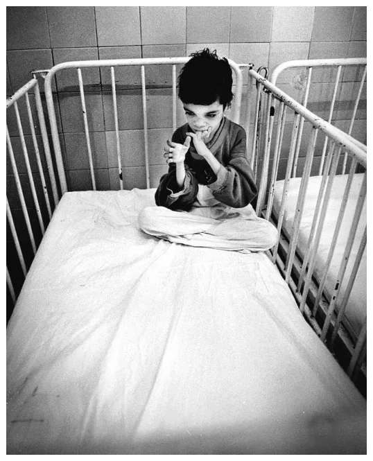
Đây là những đứa trẻ trong trại trẻ mồ côi Romania, hình ảnh đại diện cho việc tuổi thơ có thể trở thành cơn ác mộng đến mức nào. Vào những năm 1980, nhà độc tài Romania Nicolae Ceauşescu đã cấm các biện pháp tránh thai và phá thai, đồng thời yêu cầu phụ nữ phải sinh ít nhất năm con. Chẳng bao lâu, các trại trẻ mồ côi chật kín hàng nghìn trẻ sơ sinh và trẻ nhỏ bị các gia đình nghèo đói bỏ rơi (nhiều người dự định sẽ nhận lại con khi tài chính khá giả hơn).* Trẻ em bị chất đống trong các cơ sở quá tải, dẫn đến sự bỏ bê và thiếu thốn nghiêm trọng. Câu chuyện vỡ lở sau khi Ceauşescu bị lật đổ năm 1989. Nhiều trẻ được người phương Tây nhận nuôi, và sự chú ý của quốc tế đã dẫn đến một số cải thiện trong các trại trẻ. Kể từ đó, những đứa trẻ được nhận nuôi ở phương Tây, những em cuối cùng được trả về gia đình, và những em vẫn ở lại trại trẻ đã được nghiên cứu, chủ yếu bởi Charles Nelson của Đại học Harvard.
Khi trưởng thành, những đứa trẻ này phần lớn đúng như bạn dự đoán. IQ thấp và kỹ năng nhận thức kém. Gặp vấn đề trong việc hình thành gắn bó, thường tiệm cận với chứng tự kỷ. Lo âu và trầm cảm tràn lan. Thời gian sống trong trại trẻ càng lâu, tiên lượng càng tệ.
Còn bộ não của chúng thì sao? Giảm tổng kích thước não, chất xám, chất trắng, chuyển hóa vỏ não trán, kết nối giữa các vùng, và kích thước của từng vùng não riêng lẻ. Ngoại trừ hạch hạnh nhân. Vùng đó lại phình to ra. Điều đó gần như đã nói lên tất cả.
VĂN HÓA, VỚI CẢ CHỮ V HOA VÀ CHỮ V THƯỜNG
Chương 9 sẽ xem xét tác động của văn hóa lên những hành vi tốt nhất và tệ nhất của chúng ta. Bây giờ chúng ta xem trước chương đó, tập trung vào hai sự thật—thời thơ ấu là lúc văn hóa được thấm nhuần, và cha mẹ là người làm trung gian cho quá trình đó.
Có sự biến thiên văn hóa khổng lồ về cách tuổi thơ được trải nghiệm—trẻ được bú mẹ bao lâu và thường xuyên thế nào; tần suất tiếp xúc với cha mẹ và người lớn khác; tần suất được trò chuyện cùng; khóc bao lâu trước khi có người đáp lại; ở độ tuổi nào thì ngủ riêng.
Việc xem xét cách nuôi dạy con cái giữa các nền văn hóa thường khơi dậy sự đố kỵ và lo âu nhất ở các bậc cha mẹ—liệu các nền văn hóa khác có làm tốt hơn không? Hẳn phải có một sự kết hợp hoàn hảo nào đó ngoài kia, pha trộn giữa chế độ ăn cho bé của người Kwakiutl, lịch trình ngủ của người Trobriand, và cách tiếp cận của người Ituri đối với việc xem video Baby Mozart. Nhưng không hề có một chuẩn mực nhân học lý tưởng nào về việc nuôi dạy con. Các nền văn hóa (bắt đầu từ cha mẹ) nuôi dạy trẻ em để trở thành những người trưởng thành cư xử theo những cách được nền văn hóa đó coi trọng, một điểm được nhấn mạnh bởi nhà nhân học Meredith Small thuộc Đại học Cornell.47
Chúng ta bắt đầu với phong cách nuôi dạy con, cuộc chạm trán đầu tiên của đứa trẻ với các giá trị văn hóa. Điều thú vị là hệ thống phân loại có ảnh hưởng nhất về phong cách nuôi dạy con (ở quy mô nhỏ) lại nảy sinh từ việc suy nghĩ về các phong cách văn hóa (ở quy mô lớn).
Giữa đống đổ nát sau Thế chiến II, các học giả cố gắng hiểu Hitler, Franco, Mussolini, Tojo và bè lũ tay sai của họ từ đâu mà ra. Gốc rễ của chủ nghĩa phát xít là gì? Hai học giả đặc biệt có ảnh hưởng là những người tị nạn chạy trốn khỏi Hitler, đó là Hannah Arendt (với cuốn sách năm 1951 The Origins of Totalitarianism – Nguồn gốc của Chủ nghĩa Toàn trị) và Theodor Adorno (với cuốn sách năm 1950 The Authoritarian Personality – Nhân cách Độc đoán, đồng tác giả với Else Frenkel-Brunswik, Daniel Levinson và Nevitt Sanford). Adorno đặc biệt khám phá các nét tính cách của những kẻ phát xít, bao gồm sự tuân thủ cực đoan, phục tùng và tin vào quyền uy, sự hung hăng, và thái độ thù địch đối với trí thức luận và sự tự vấn nội tâm—những nét tính cách thường bắt nguồn từ thời thơ ấu.48
Điều này đã ảnh hưởng đến nhà tâm lý học Diana Baumrind ở Berkeley, người vào những năm 1960 đã xác định ba phong cách nuôi dạy con chủ chốt (trong công trình sau này được lặp lại và mở rộng sang nhiều nền văn hóa khác nhau).49 Đầu tiên là phong cách nuôi dạy có thẩm quyền (authoritative parenting). Quy tắc và kỳ vọng rõ ràng, nhất quán và có thể giải thích được—“Bởi vì bố/mẹ nói thế” là điều cấm kỵ—kèm theo sự linh hoạt; khen ngợi và tha thứ lấn át trừng phạt; cha mẹ hoan nghênh ý kiến đóng góp của con; việc phát triển tiềm năng và tính tự chủ của trẻ là tối thượng. Theo tiêu chuẩn của những người có học thức hay lo âu vốn sẽ đọc (chứ chưa nói đến viết...) cuốn sách này, phong cách này tạo ra một kết cục trưởng thành tốt đẹp—hạnh phúc, trưởng thành về mặt cảm xúc và xã hội, viên mãn, độc lập và tự lực.
Tiếp theo là phong cách nuôi dạy độc đoán (authoritarian parenting). Quy tắc và đòi hỏi nhiều vô kể, tùy tiện, cứng nhắc và không cần giải thích; hành vi chủ yếu được định hình bằng hình phạt; nhu cầu cảm xúc của trẻ bị xếp thứ yếu. Động lực của cha mẹ thường là vì ngoài kia là một thế giới khắc nghiệt, không khoan dung và trẻ cần phải chuẩn bị sẵn sàng. Phong cách nuôi dạy độc đoán có xu hướng tạo ra những người trưởng thành có thể thành công theo nghĩa hẹp, biết vâng lời, tuân thủ (thường kèm theo một dòng ngầm oán giận có thể bùng nổ), và không đặc biệt hạnh phúc. Hơn nữa, kỹ năng xã hội thường kém vì thay vì học hỏi qua trải nghiệm, họ lớn lên bằng việc làm theo mệnh lệnh.
Và rồi có phong cách nuôi dạy nuông chiều (permissive parenting), sự lệch lạc bị cho là đã giúp thế hệ Boomers phát minh ra thập niên 1960. Có rất ít đòi hỏi hay kỳ vọng, quy tắc hiếm khi được thực thi, và trẻ em tự đặt ra chương trình. Kết cục trưởng thành: những cá nhân tự nuông chiều bản thân với khả năng kiểm soát xung động kém, khả năng chịu đựng sự thất vọng thấp, cộng thêm kỹ năng xã hội kém nhờ sống một tuổi thơ không có hậu quả.
Bộ ba của Baumrind được hai nhà tâm lý học Stanford là Eleanor Maccoby và John Martin mở rộng để bao gồm thêm phong cách nuôi dạy bỏ bê (neglectful parenting).50 Sự bổ sung này tạo ra một ma trận hai chiều: nuôi dạy con là có thẩm quyền (đòi hỏi cao, đáp ứng cao), độc đoán (đòi hỏi cao, đáp ứng thấp), nuông chiều (đòi hỏi thấp, đáp ứng cao), hoặc bỏ bê (đòi hỏi thấp, đáp ứng thấp).
Điều quan trọng là mỗi phong cách thường tạo ra những người trưởng thành mang chính cách tiếp cận đó, với các nền văn hóa khác nhau coi trọng các phong cách khác nhau.
Tiếp theo là cách thức thứ hai mà các giá trị văn hóa được truyền tải đến trẻ em, đó là thông qua bạn bè đồng trang lứa. Điều này được nhấn mạnh trong cuốn The Nurture Assumption (Giả định về Nuôi dưỡng) của Judith Rich Harris. Harris, một nhà tâm lý học không có chức danh học thuật hay bằng tiến sĩ, đã làm dậy sóng ngành này khi lập luận rằng tầm quan trọng của việc nuôi dạy con cái trong việc định hình nhân cách trưởng thành của một đứa trẻ đã bị phóng đại.51 Thay vào đó, một khi trẻ vượt qua một độ tuổi nhỏ đến bất ngờ, bạn bè đồng trang lứa mới là yếu tố có ảnh hưởng lớn nhất. Các yếu tố trong lập luận của bà bao gồm: (a) Ảnh hưởng của cha mẹ thực chất thường được trung gian qua bạn bè. Ví dụ, việc được nuôi dạy bởi một bà mẹ đơn thân làm tăng nguy cơ hành vi chống đối xã hội ở tuổi trưởng thành, nhưng không phải do cách nuôi dạy; thay vào đó, vì thu nhập thường thấp hơn, trẻ có nhiều khả năng sống trong một khu phố có những người bạn gai góc. (b) Bạn bè đồng trang lứa có tác động đến sự phát triển ngôn ngữ (ví dụ: trẻ em tiếp thu giọng điệu của bạn bè mình, chứ không phải của cha mẹ). (c) Các loài linh trưởng non khác chủ yếu được xã hội hóa bởi bạn bè đồng trang lứa, chứ không phải bởi mẹ.
Cuốn sách gây tranh cãi dữ dội (một phần vì chủ đề của nó rất dễ bị bóp méo—“Nhà tâm lý học chứng minh cha mẹ không quan trọng”), thu hút cả chỉ trích lẫn tán dương.* Khi bụi lắng xuống, quan điểm hiện tại có xu hướng cho rằng ảnh hưởng của bạn bè đồng trang lứa bị đánh giá thấp, nhưng cha mẹ vẫn cực kỳ quan trọng, bao gồm cả việc định hướng xem con cái họ tiếp xúc với nhóm bạn nào.
Tại sao bạn bè đồng trang lứa lại quan trọng đến vậy? Tương tác với bạn bè dạy về năng lực xã hội—hành vi phụ thuộc bối cảnh, khi nào là bạn hay thù, vị trí của bạn ở đâu trong hệ thống phân cấp. Các sinh vật non sử dụng công cụ giảng dạy vĩ đại nhất từng có để tiếp thu thông tin đó—trò chơi (play).52
Chơi xã hội ở cá thể non là gì? Nói ở quy mô lớn, đó là một loạt các hành vi rèn luyện cho cá thể năng lực xã hội. Nói ở quy mô vừa, đó là những mảnh ghép của việc thật, những mẩu nhỏ của các mô thức hành động cố định, một cơ hội để thử nghiệm các vai trò một cách an toàn và cải thiện kỹ năng vận động. Nói ở quy mô nhỏ và nội tiết, đó là minh chứng cho thấy stress vừa phải và thoáng qua—“sự kích thích”—là điều tuyệt vời. Nói ở quy mô nhỏ và sinh học thần kinh, đó là công cụ để quyết định xem những khớp thần kinh dư thừa nào cần được cắt tỉa.
Nhà sử học Johan Huizinga đã mô tả con người là “Homo Ludens”, Người Chơi, với những trò chơi có cấu trúc và quy tắc—tức là các trò chơi thi đấu. Tuy nhiên, việc chơi đùa là phổ quát ở các loài có tính xã hội phức tạp, có mặt khắp nơi ở cá thể non và đạt đỉnh vào tuổi dậy thì, và mọi trò chơi đều liên quan đến những hành vi tương tự nhau, sau một vài phép dịch tập tính học (ví dụ: một con chó đầu đàn ra hiệu thiện chí cần thiết để bắt đầu chơi bằng cách cúi rạp người xuống, tự hạ thấp mình; dịch sang ngôn ngữ khỉ đầu chó, một đứa trẻ thứ hạng cao sẽ quay phần mông về phía một con thứ hạng thấp hơn).
Chơi đùa là thiết yếu. Để chơi, động vật bỏ qua việc kiếm ăn, tiêu hao calo, tự khiến mình mất tập trung và dễ bị kẻ săn mồi phát hiện. Các sinh vật non phung phí năng lượng vào việc chơi ngay cả trong nạn đói. Một đứa trẻ bị tước đoạt hoặc không hứng thú với việc chơi đùa hiếm khi có một cuộc sống trưởng thành thỏa mãn về mặt xã hội.
Hơn hết, chơi đùa tự thân đã mang lại khoái cảm—nếu không thì tại sao lại thực hiện một mẩu nhỏ của chuỗi hành vi trong một bối cảnh chẳng liên quan gì? Các con đường dopaminergic kích hoạt trong khi chơi; chuột non khi chơi phát ra những âm thanh giống hệt như khi được thưởng thức ăn; loài chó tiêu tốn một nửa lượng calo để vẫy đuôi nhằm thông báo bằng pheromone sự hiện diện và sẵn sàng chơi đùa của chúng. Như bác sĩ tâm thần Stuart Brown, người sáng lập Viện Nghiên cứu Trò chơi Quốc gia, nhấn mạnh, đối lập của chơi không phải là làm việc—mà là trầm cảm. Một thách thức là hiểu cách bộ não mã hóa các đặc tính củng cố của sự đa dạng trong trò chơi. Suy cho cùng, chơi đùa bao gồm mọi thứ từ các nhà toán học thi thố với nhau bằng những câu chuyện cười giải tích hài hước cho đến lũ trẻ thi thố với nhau bằng cách tạo ra những tiếng đánh rắm hài hước bằng nách.
Một dạng chơi quan trọng liên quan đến những mảnh ghép của sự hung hăng, cái mà Harlow gọi là chơi “vật lộn thô bạo” (rough and tumble)—trẻ con vật nhau, linh dương impala vị thành niên húc đầu vào nhau, chó con cắn đùa nhau.53 Con đực thường làm điều này nhiều hơn con cái, và như chúng ta sẽ sớm thấy, nó được thúc đẩy bởi testosterone trước khi sinh. Liệu chơi vật lộn thô bạo là sự tập dượt cho giải đấu tranh giành địa vị sắp tới của cuộc đời, hay là bạn đã bước vào đấu trường rồi? Sự pha trộn của cả hai.
Mở rộng ra ngoài bạn bè đồng trang lứa, khu phố sinh sống dễ dàng truyền đạt văn hóa cho trẻ em. Có rác rưởi khắp nơi không? Nhà cửa có đổ nát không? Thứ gì xuất hiện dày đặc—quán bar, nhà thờ, thư viện hay cửa hàng súng? Có nhiều công viên không, và vào đó có an toàn không? Các biển quảng cáo, áp phích và nhãn dán trên xe hơi đang rao bán thiên đường tôn giáo hay vật chất, tôn vinh những hành động tử vì đạo hay lòng tốt và sự bao dung?
— Và rồi chúng ta đi đến văn hóa ở cấp độ bộ lạc, quốc gia và nhà nước. Dưới đây, một cách ngắn gọn, là một số khác biệt văn hóa rộng lớn nhất trong thực hành nuôi dạy con cái.
Văn Hóa Tập Thể so với Văn Hóa Cá Nhân
Như sẽ thấy ở chương 9, đây là sự tương phản văn hóa được nghiên cứu nhiều nhất, thường so sánh các nền văn hóa Đông Á mang tính tập thể với nước Mỹ siêu cá nhân chủ nghĩa. Các nền văn hóa tập thể nhấn mạnh sự phụ thuộc lẫn nhau, hòa hợp, hòa nhập, nhu cầu và trách nhiệm của nhóm; ngược lại, các nền văn hóa cá nhân coi trọng sự độc lập, cạnh tranh, nhu cầu và quyền lợi của cá nhân.
Trung bình, các bà mẹ ở các nền văn hóa cá nhân, khi so với các bà mẹ ở các nền văn hóa tập thể, nói to hơn, mở nhạc to hơn, có biểu cảm sinh động hơn.54 Họ coi mình là người thầy hơn là người bảo vệ, ghét thấy một đứa trẻ buồn chán, coi trọng cảm xúc năng lượng cao. Trò chơi của họ nhấn mạnh cạnh tranh cá nhân, khuyến khích các sở thích thiên về hành động hơn là quan sát. Trẻ em được rèn luyện sự quyết đoán bằng lời nói, để trở nên tự chủ và có sức ảnh hưởng. Hãy đưa cho bà ấy xem một bức tranh hoạt hình về một đàn cá với một con bơi dẫn đầu, và bà ấy sẽ mô tả cho con mình đó là con cá thủ lĩnh.*
Ngược lại, các bà mẹ ở các nền văn hóa tập thể dành nhiều thời gian hơn các bà mẹ cá nhân để dỗ dành con, duy trì tiếp xúc, và tạo điều kiện tiếp xúc với những người lớn khác. Họ coi trọng cảm xúc có mức kích thích thấp và ngủ chung với con đến độ tuổi muộn hơn. Trò chơi xoay quanh sự hợp tác và hòa nhập; nếu chơi với con bằng, chẳng hạn, một chiếc ô tô đồ chơi, trọng tâm không phải là khám phá xem chiếc xe làm được gì (tức là tính chất ô tô), mà là quá trình chia sẻ (“Cảm ơn con đã đưa xe cho mẹ; giờ mẹ đưa lại cho con nhé”). Trẻ em được rèn luyện để hòa thuận, nghĩ cho người khác, chấp nhận và thích nghi, thay vì thay đổi hoàn cảnh; đạo đức và sự tuân thủ gần như đồng nghĩa. Đưa cho xem bức tranh đàn cá, và con cá bơi phía trước hẳn đã làm điều gì đó sai trái, nên chẳng ai chịu chơi với nó cả.
Hợp lý là trẻ em ở các nền văn hóa cá nhân đạt được ToM muộn hơn trẻ em ở các nền văn hóa tập thể và kích hoạt các mạch liên quan nhiều hơn để đạt được cùng mức độ thành thạo. Đối với một đứa trẻ thuộc nền văn hóa tập thể, năng lực xã hội hoàn toàn xoay quanh việc đặt mình vào góc nhìn của người khác.55
Điều thú vị là trẻ em ở Nhật Bản (văn hóa tập thể) chơi trò chơi điện tử bạo lực nhiều hơn trẻ em Mỹ, nhưng lại ít hung hăng hơn. Hơn nữa, việc cho trẻ em Nhật Bản tiếp xúc với bạo lực truyền thông làm tăng sự hung hăng ít hơn so với trẻ em Mỹ.56 Tại sao lại có sự khác biệt? Ba yếu tố góp phần khả dĩ: (a) Trẻ em Mỹ chơi một mình thường xuyên hơn, một mảnh đất ươm mầm những con sói đơn độc; (b) Trẻ em Nhật Bản hiếm khi có máy tính hoặc TV trong phòng ngủ, nên chúng chơi gần cha mẹ; (c)
Bạo lực trong trò chơi điện tử của Nhật Bản có nhiều khả năng mang chủ đề vì cộng đồng, mang tính tập thể hơn.
Sẽ nói thêm ở chương 9 về văn hóa tập thể so với văn hóa cá nhân.
Văn Hóa Danh Dự
Những nền văn hóa này nhấn mạnh các quy tắc lịch thiệp, nhã nhặn và hiếu khách. Việc trả thù được kỳ vọng đối với những sự xúc phạm đến danh dự của bản thân, gia đình hoặc dòng họ; không làm như vậy là điều đáng xấu hổ. Đây là những nền văn hóa đầy rẫy sự thù hằn truyền kiếp, trả thù và giết người vì danh dự; không có chuyện đưa má bên kia ra cho người ta tát. Một nền văn hóa danh dự kinh điển là miền Nam nước Mỹ, nhưng như chúng ta sẽ thấy ở chương 9, những nền văn hóa như vậy xuất hiện trên toàn thế giới và đi kèm với những tương quan sinh thái nhất định. Một sự kết hợp đặc biệt chết người là khi một văn hóa nạn nhân—chúng ta đã bị đối xử bất công tuần trước, thập kỷ trước, thiên niên kỷ trước—kết hợp với tinh thần báo thù của văn hóa danh dự.
Việc nuôi dạy con trong các nền văn hóa danh dự có xu hướng độc đoán.57 Trẻ em hung hăng, đặc biệt là sau những vụ xâm phạm danh dự, và kiên quyết ủng hộ các phản ứng hung hăng trước các tình huống xâm phạm danh dự.
Sự Khác Biệt Giai Cấp
Như đã lưu ý, một con khỉ đầu chó sơ sinh học vị trí của mình trong hệ thống phân cấp từ mẹ nó. Những bài học của một đứa trẻ loài người về địa vị phức tạp hơn—có sự ra hiệu ngầm, những tín hiệu ngôn ngữ tinh tế, sức nặng nhận thức và cảm xúc của việc nhớ về quá khứ (“Khi ông bà con di cư sang đây, họ thậm chí còn không thể...”) và hy vọng về tương lai (“Khi con lớn lên, con sẽ...”). Khỉ đầu chó mẹ dạy con mình bối cảnh hành vi phù hợp; cha mẹ loài người dạy con mình nên bận tâm mơ ước về điều gì.
Sự khác biệt giai cấp trong cách nuôi dạy con ở các nước phương Tây giống với sự khác biệt nuôi dạy con giữa các nước phương Tây và các nước đang phát triển. Ở phương Tây, cha mẹ dạy dỗ và tạo điều kiện cho con khám phá thế giới. Ở những góc khắc nghiệt nhất của thế giới đang phát triển, ít có điều gì được kỳ vọng hơn nhiệm vụ vĩ đại là giữ cho con bạn sống sót và được che chở khỏi thế giới đầy đe dọa.*
Ở các nền văn hóa phương Tây, sự khác biệt giai cấp trong nuôi dạy con phân loại theo hệ thống của Baumrind. Ở tầng lớp kinh tế xã hội cao hơn, cách nuôi dạy thường là có thẩm quyền hoặc nuông chiều. Ngược lại, cách nuôi dạy ở các nấc thang kinh tế xã hội thấp hơn của xã hội thường là độc đoán, phản ánh hai chủ đề. Một chủ đề liên quan đến sự bảo vệ. Khi nào thì cha mẹ có điều kiện kinh tế xã hội cao trở nên độc đoán? Khi có nguy hiểm. “Con yêu, bố/mẹ thích việc con đặt câu hỏi về mọi thứ, nhưng nếu con chạy ra đường và bố/mẹ hét ‘Dừng lại,’ thì con phải dừng lại.” Tuổi thơ ở tầng lớp kinh tế xã hội thấp đầy rẫy hiểm nguy. Chủ đề kia là chuẩn bị cho đứa trẻ bước vào thế giới khắc nghiệt ngoài kia—đối với người nghèo, tuổi trưởng thành bao gồm việc bị những kẻ thống trị xã hội đối xử một cách độc đoán.
Sự khác biệt giai cấp trong nuôi dạy con đã được khám phá trong một nghiên cứu kinh điển của nhà nhân học Adrie Kusserow thuộc Đại học St. Michael’s, người đã điền dã quan sát các bậc cha mẹ ở ba nhóm cộng đồng—các gia đình giàu có ở Upper East Side của Manhattan; một cộng đồng lao động chân tay ổn định; và một cộng đồng nghèo, đầy rẫy tội phạm (hai nhóm sau đều ở Queens).58 Sự khác biệt thật đáng kinh ngạc.
Cách nuôi dạy con ở khu phố nghèo liên quan đến “chủ nghĩa cá nhân phòng vệ cứng rắn”. Khu phố đầy rẫy nghiện ngập, vô gia cư, tù tội, chết chóc—và mục tiêu của cha mẹ là che chở con cái khỏi đường phố theo cả nghĩa đen lẫn nghĩa bóng. Lời nói của họ đầy những ẩn dụ về việc không đánh mất những gì đã đạt được—giữ vững lập trường, giữ gìn lòng tự trọng, không để người khác chọc tức mình. Cách nuôi dạy là độc đoán, với mục tiêu rèn cho cứng cáp. Ví dụ, cha mẹ trêu chọc con cái nhiều hơn hẳn so với ở các khu phố khác.
Ngược lại, cách nuôi dạy của tầng lớp lao động liên quan đến “chủ nghĩa cá nhân tấn công cứng rắn”. Cha mẹ đã có một chút đà tiến lên về mặt kinh tế xã hội, và con cái có nhiệm vụ duy trì quỹ đạo bấp bênh đó. Lời nói của cha mẹ về hy vọng dành cho con cái chứa đầy hình ảnh của sự chuyển động, tiến bộ và thể thao—vượt lên phía trước, thăm dò tình hình, giành huy chương vàng. Với sự chăm chỉ và động lực từ kỳ vọng của nhiều thế hệ, đứa con của bạn có thể tiên phong đặt chân lên vùng đất của tầng lớp trung lưu.
Cách nuôi dạy ở cả hai khu phố đều nhấn mạnh sự tôn trọng quyền uy, đặc biệt là trong gia đình. Hơn nữa, trẻ em là những thành viên có thể thay thế cho nhau của một nhóm, thay vì được cá nhân hóa—“Mấy đứa kia ra đây ngay.”
Rồi có “chủ nghĩa cá nhân mềm dẻo” của cách nuôi dạy tầng lớp trung lưu thượng lưu.* Thành công cuối cùng của trẻ em, theo các tiêu chuẩn thông thường, là điều hiển nhiên, cũng như kỳ vọng về sức khỏe thể chất. Mong manh hơn nhiều là sức khỏe tâm lý của đứa trẻ; khi trẻ có thể trở thành bất cứ thứ gì, trách nhiệm của cha mẹ là tạo điều kiện cho hành trình sử thi của chúng hướng tới một sự “viên mãn” được cá nhân hóa. Hơn nữa, hình ảnh của sự viên mãn thường mang tính hậu quy ước—“Mẹ hy vọng con sẽ không bao giờ làm một công việc không thỏa mãn chỉ vì tiền.” Suy cho cùng, đây là bộ lạc say sưa với những câu chuyện về tay cá mập sắp lên chức CEO bỗng quẳng hết đi để học nghề mộc hoặc chơi kèn oboe. Lời nói của cha mẹ tràn ngập những ẩn dụ về tiềm năng đang được hiện thực hóa—nảy lộc, đơm hoa, phát triển, nở rộ. Cách nuôi dạy là có thẩm quyền hoặc nuông chiều, đầy rẫy sự mâu thuẫn về chênh lệch quyền lực giữa cha mẹ và con cái. Thay vì “Mấy đứa kia, dọn dẹp đống bừa bộn này đi,” sẽ là lời yêu cầu được cá nhân hóa và giải thích cặn kẽ—“Caitlin, Zach, Dakota, các con dọn dẹp chỗ này một chút được không làm ơn? Malala sắp sang ăn tối đấy.”*
Chúng ta vừa thấy các sự kiện thời thơ ấu—từ tương tác mẹ – con đầu tiên cho đến tác động của văn hóa—có những ảnh hưởng dai dẳng như thế nào, và sinh học làm trung gian cho những ảnh hưởng đó ra sao. Khi kết hợp với các chương trước, chúng ta đã hoàn thành chuyến tham quan về các tác động môi trường lên hành vi, từ một giây trước khi hành vi xảy ra đến một giây sau khi chào đời. Về thực chất, chúng ta đã xong phần “môi trường”; đã đến lúc cho phần “gen” ở chương tiếp theo.
Nhưng điều này bỏ qua một thứ tối quan trọng: môi trường không bắt đầu từ lúc chào đời.
CHÍN THÁNG DÀI ĐẰNG ĐẴNG
Chú Mèo Trong Mũ Trong Tử Cung
Sự tồn tại của những ảnh hưởng môi trường trước khi sinh đã thu hút trí tưởng tượng của công chúng với một số nghiên cứu thú vị chứng minh rằng thai nhi gần đủ tháng có thể nghe (những gì đang diễn ra bên ngoài tử cung), nếm (nước ối), ghi nhớ và ưa thích những kích thích đó sau khi chào đời.
Điều này đã được chứng minh bằng thực nghiệm—tiêm nước muối vị chanh vào nước ối của chuột mang thai, và chuột con sinh ra ưa thích hương vị đó. Hơn nữa, một số gia vị do phụ nữ mang thai tiêu thụ cũng đi vào nước ối. Do đó, chúng ta có thể sinh ra đã thích những món ăn mà mẹ mình từng ăn khi mang thai—một sự truyền tải văn hóa khá khác thường.59
Các tác động trước khi sinh cũng có thể là thính giác, như đã được chứng minh qua nghiên cứu đầy cảm hứng của Anthony DeCasper thuộc Đại học Bắc Carolina.60 Giọng nói của người phụ nữ mang thai có thể nghe được trong tử cung, và trẻ sơ sinh nhận ra cũng như ưa thích âm thanh giọng nói của mẹ mình.* DeCasper đã sử dụng sách lược của tập tính học để chứng minh điều này: Một trẻ sơ sinh có thể học cách mút núm vú giả theo hai kiểu mút dài và ngắn khác nhau. Tạo ra một kiểu, bé sẽ nghe thấy giọng Mẹ; kiểu kia, giọng một người phụ nữ khác. Trẻ sơ sinh muốn nghe giọng Mẹ. Các yếu tố của ngôn ngữ cũng được học ngay trong tử cung—đường nét âm điệu trong tiếng khóc của trẻ sơ sinh tương tự như đường nét ngữ điệu trong ngôn ngữ của người mẹ.
Năng lực nhận thức của thai nhi gần đủ tháng thậm chí còn đáng kinh ngạc hơn. Ví dụ, thai nhi có thể phân biệt giữa hai cặp âm tiết vô nghĩa (“biba” so với “babi”). Làm sao bạn biết được? Hãy xem đây—Mẹ nói “Biba, biba, biba” lặp đi lặp lại trong khi nhịp tim thai nhi được theo dõi. “Chán quá (hoặc có lẽ là ru ngủ),” thai nhi nghĩ, và nhịp tim chậm lại. Rồi Mẹ chuyển sang “babi”. Nếu thai nhi không phân biệt được giữa hai âm, nhịp tim tiếp tục chậm lại. Nhưng nếu nhận ra sự khác biệt—“Ồ, chuyện gì vừa xảy ra thế?”—nhịp tim tăng lên. Đó chính xác là điều DeCasper đã báo cáo.61
DeCasper và đồng nghiệp Melanie Spence sau đó chỉ ra (bằng hệ thống phát hiện kiểu mút núm vú giả) rằng trẻ sơ sinh thường không phân biệt được âm thanh mẹ mình đọc một đoạn trong cuốn The Cat in the Hat (Chú mèo đội mũ) và cuốn The King, the Mice, and the Cheese (Nhà vua, lũ chuột và miếng phô mai) có nhịp điệu tương tự.62
Nhưng những trẻ sơ sinh có mẹ đọc to cuốn The Cat in the Hat suốt hàng giờ trong ba tháng cuối thai kỳ lại ưa thích truyện của Dr. Seuss. Chà.
Bất chấp sự thú vị của những phát hiện này, mối quan tâm của cuốn sách này không bắt nguồn từ việc học tập trước khi sinh như vậy—hiếm có trẻ sơ sinh nào sinh ra đã mang sẵn sở thích đối với những đoạn văn trong, chẳng hạn, cuốn Mein Kampf. Tuy nhiên, những tác động môi trường trước khi sinh khác lại mang lại hệ quả vô cùng lớn.
NÃO CON TRAI VÀ NÃO CON GÁI, DÙ ĐIỀU ĐÓ CÓ NGHĨA LÀ GÌ ĐI NỮA
Chúng ta bắt đầu với một phiên bản đơn giản về ý nghĩa của “môi trường” đối với não bào thai: các chất dinh dưỡng, chất truyền tin miễn dịch, và quan trọng nhất là các hormone được đưa đến não qua tuần hoàn bào thai.
Một khi các tuyến liên quan đã phát triển ở bào thai, chúng hoàn toàn có khả năng tiết ra các hormone đặc trưng của mình. Điều này đặc biệt hệ trọng. Khi hormone lần đầu xuất hiện ở chương 4, thảo luận của chúng ta xoay quanh tác động “kích hoạt” (activational) của chúng kéo dài từ vài giờ đến vài ngày. Ngược lại, hormone ở bào thai có tác động “tổ chức” (organizational) lên não bộ, gây ra những thay đổi suốt đời về cấu trúc và chức năng.
Khoảng tám tuần sau khi thụ thai, tuyến sinh dục của bào thai người bắt đầu tiết ra các hormone steroid của chúng (testosterone ở nam; estrogen và progesterone ở nữ). Điều cốt yếu là testosterone cộng với “hormone kháng Müller” (cũng từ tinh hoàn) sẽ nam tính hóa bộ não.
Ba điểm phức tạp, với mức độ rối rắm tăng dần:
Ở nhiều loài gặm nhấm, bộ não chưa hoàn toàn phân hóa giới tính lúc mới sinh, và những tác động hormone này tiếp tục sau khi sinh. Một điểm phức tạp rối rắm hơn: Đáng ngạc nhiên là rất ít tác động của testosterone trong não bắt nguồn từ việc hormone này gắn vào thụ thể androgen. Thay vào đó, testosterone đi vào các tế bào đích và, kỳ lạ thay, được chuyển hóa thành estrogen, rồi gắn vào các thụ thể estrogen nội bào (trong khi testosterone phát huy tác dụng bên ngoài não bộ dưới dạng chính nó hoặc, sau khi chuyển hóa nội bào thành một androgen liên quan, là dihydrotestosterone). Như vậy, phần lớn tác dụng nam tính hóa của testosterone trong não thực chất lại diễn ra bằng cách biến thành estrogen. Sự chuyển hóa testosterone thành estrogen cũng xảy ra trong não bào thai. Khoan đã. Bất kể giới tính bào thai là gì, tuần hoàn bào thai đều tràn ngập estrogen của mẹ, cộng thêm việc bào thai nữ tự tiết estrogen. Như vậy não bào thai nữ được tắm trong estrogen. Tại sao điều đó không làm nam tính hóa não bào thai nữ? Nhiều khả năng là vì bào thai tạo ra một thứ gọi là alpha-fetoprotein, chất này gắn kết với estrogen lưu hành, loại bỏ nó khỏi vòng chiến. Vì vậy cả estrogen của Mẹ lẫn estrogen do bào thai tự tạo đều không làm nam tính hóa não ở bào thai nữ. Và hóa ra là trừ khi có sự hiện diện của testosterone và hormone kháng Müller, não bào thai động vật có vú sẽ tự động nữ tính hóa.63
Giờ đến điểm phức tạp siêu rối rắm. Chính xác thì một bộ não “nữ” hay “nam” là gì? Đây là nơi các cuộc tranh cãi bắt đầu.
Trước hết, não nam đơn thuần chỉ nhỏ giọt đều đặn các hormone sinh sản từ vùng dưới đồi, trong khi não nữ phải làm chủ được sự bài tiết theo chu kỳ của chu kỳ rụng trứng. Do đó đời sống bào thai tạo ra một vùng dưới đồi được kết nối phức tạp hơn ở nữ giới.
Nhưng còn sự khác biệt giới tính trong những hành vi mà chúng ta quan tâm thì sao? Câu hỏi là, có bao nhiêu phần sự hung hăng của nam giới là do quá trình nam tính hóa não bộ trước khi sinh?
Hầu như toàn bộ, nếu chúng ta đang nói về loài gặm nhấm. Công trình vào những năm 1950 của Robert Goy thuộc Đại học Wisconsin cho thấy ở chuột lang, một tác động tổ chức của testosterone quanh thời điểm sinh là khiến bộ não nhạy cảm với testosterone ở tuổi trưởng thành.64 Chuột cái mang thai gần ngày sinh được điều trị bằng testosterone. Điều này tạo ra những con cái non khi trưởng thành có vẻ ngoài bình thường nhưng bị “nam tính hóa” về hành vi—chúng nhạy cảm hơn chuột cái đối chứng trước một mũi tiêm testosterone, với mức tăng hung hăng lớn hơn và hành vi tình dục đặc trưng của con đực (tức là nhảy lên lưng các con cái khác). Hơn nữa, estrogen kém hiệu quả hơn trong việc khơi gợi hành vi tình dục đặc trưng của con cái (tức là phản xạ uốn cong lưng gọi là lordosis). Như vậy, việc tiếp xúc với testosterone trước khi sinh đã tạo ra những tác động tổ chức mang tính nam tính hóa, khiến những con cái này khi trưởng thành đáp ứng với tác động kích hoạt của testosterone và estrogen giống như con đực.
Điều này thách thức giáo điều cho rằng bản dạng giới tính là do ảnh hưởng xã hội, chứ không phải sinh học. Đây từng là quan điểm của các nhà xã hội học ghét môn sinh học cấp ba . . . và của cả giới y khoa nữa. Theo quan điểm này, nếu một đứa trẻ sinh ra với bộ phận sinh dục mơ hồ về giới tính (khoảng 1 đến 2 phần trăm số ca sinh), việc nuôi dạy chúng theo giới tính nào không quan trọng, miễn là bạn quyết định trong vòng mười tám tháng đầu—cứ làm phẫu thuật tạo hình nào thuận tiện hơn là được.*65
Vậy là có Goy báo cáo rằng môi trường hormone trước khi sinh, chứ không phải các yếu tố xã hội, quyết định các hành vi đặc trưng giới tính ở tuổi trưởng thành. “Nhưng đó chỉ là chuột lang,” lời phản bác vang lên. Goy và cộng sự liền nghiên cứu các loài linh trưởng không phải người.
Một chuyến tham quan nhanh về hành vi lưỡng hình giới tính (tức là khác biệt theo giới tính) ở linh trưởng: Các loài Nam Mỹ như khỉ marmoset và khỉ tamarin, vốn sống ghép đôi, cho thấy rất ít sự khác biệt giới tính trong hành vi. Ngược lại, hầu hết các loài linh trưởng Cựu Thế giới đều có tính lưỡng hình cao; con đực hung hăng hơn, còn con cái dành nhiều thời gian hơn cho các hành vi gắn kết (ví dụ: chải chuốt xã hội, tương tác với con non). Sự khác biệt giới tính này thì sao: trong một nghiên cứu, khỉ rhesus đực trưởng thành tỏ ra hứng thú hơn hẳn với việc chơi đồ chơi “nam tính” của con người (ví dụ: đồ chơi có bánh xe) so với đồ chơi “nữ tính” (thú nhồi bông), trong khi con cái có sở thích nhẹ nghiêng về đồ chơi nữ tính.66
Tiếp theo là gì nữa đây, khỉ cái thích tiểu thuyết giả tưởng tuổi mới lớn có nhân vật chính là nữ à? Tại sao đồ chơi của con người lại liên quan đến sự khác biệt giới tính ở khỉ? Các tác giả suy đoán rằng điều này phản ánh mức độ hoạt động cao hơn ở con đực, và cách đồ chơi nam tính tạo điều kiện cho việc chơi đùa năng động hơn.
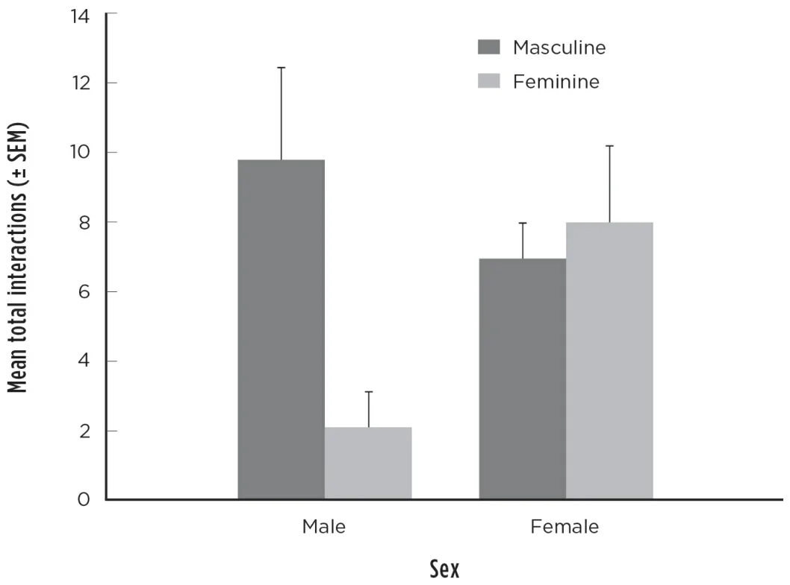
Khỉ rhesus đực thể hiện sự ưa thích mạnh mẽ đối với việc chơi các món đồ chơi rập khuôn
“nam tính” so với “nữ tính” của con người.
Truy cập bit.ly/2o8ogEL để xem phiên bản lớn hơn của biểu đồ này.
Goy đã nghiên cứu loài khỉ rhesus có tính lưỡng hình giới tính rất cao. Đã có những manh mối cho thấy testosterone có tác động tổ chức lên hành vi của chúng—trong vòng vài tuần sau khi sinh, con đực đã năng động hơn con cái và dành nhiều thời gian hơn cho trò chơi vật lộn thô bạo. Điều này diễn ra rất lâu trước tuổi dậy thì và đợt bùng nổ tiết testosterone của nó. Hơn nữa, ngay cả khi bạn ức chế nồng độ testosterone của chúng lúc mới sinh (vốn thấp, nhưng dù sao vẫn cao hơn của con cái), con đực vẫn vật lộn thô bạo nhiều hơn. Điều này gợi ý rằng sự khác biệt giới tính nảy sinh từ sự khác biệt hormone bào thai.
Goy đã chứng minh điều này bằng cách điều trị khỉ mang thai bằng testosterone và kiểm tra con cái của chúng. Việc tiếp xúc với testosterone suốt thai kỳ tạo ra những cô con gái “lưỡng tính giả”—bên ngoài trông giống đực nhưng bên trong lại có tuyến sinh dục cái. Khi so với con cái đối chứng, những con cái bị androgen hóa này chơi vật lộn thô bạo nhiều hơn, hung hăng hơn, và thể hiện hành vi nhảy lưng cùng tiếng kêu đặc trưng của con đực (nhiều ngang bằng con đực, theo một số thước đo). Điều quan trọng là hầu hết nhưng không phải tất cả các hành vi đều bị nam tính hóa, và những con cái bị androgen hóa này vẫn quan tâm đến con non ngang bằng với con cái đối chứng. Như vậy, testosterone có tác động tổ chức trước khi sinh lên một số nhưng không phải tất cả các hành vi.
Trong các nghiên cứu sâu hơn, nhiều nghiên cứu do học trò của Goy là Kim Wallen thuộc Đại học Emory thực hiện, khỉ cái mang thai nhận liều testosterone thấp hơn, và chỉ trong ba tháng cuối thai kỳ.67 Điều này tạo ra những cô con gái có bộ phận sinh dục bình thường nhưng hành vi bị nam tính hóa. Các tác giả lưu ý sự liên quan của điều này đối với những người chuyển giới—vẻ ngoài của một giới tính nhưng bộ não, nếu có thể nói như vậy, lại của giới tính kia.*
Và Chúng Ta
Ban đầu, có vẻ rõ ràng rằng việc tiếp xúc với testosterone trước khi sinh cũng chịu trách nhiệm cho sự hung hăng của nam giới ở loài người. Điều này dựa trên các nghiên cứu về một rối loạn hiếm gặp, tăng sản thượng thận bẩm sinh (CAH). Một enzyme trong tuyến thượng thận bị đột biến, và thay vì tạo ra glucocorticoid, chúng lại tạo ra testosterone cùng các androgen khác, bắt đầu ngay từ đời sống bào thai.
Việc thiếu glucocorticoid gây ra các vấn đề chuyển hóa nghiêm trọng đòi hỏi phải dùng hormone thay thế. Còn lượng androgen dư thừa ở các bé gái mắc CAH (vốn thường sinh ra với bộ phận sinh dục mơ hồ và bị vô sinh khi trưởng thành) thì sao?
Vào những năm 1950, nhà tâm lý học John Money thuộc Đại học Johns Hopkins báo cáo rằng các bé gái mắc CAH có mức độ hành vi đặc trưng nam giới cao một cách bệnh lý, thiếu hụt các hành vi đặc trưng nữ giới, và có chỉ số IQ cao.
Điều đó chắc chắn đã khiến mọi người sững sờ. Nhưng nghiên cứu đó có một số vấn đề. Thứ nhất, phát hiện về IQ là giả tạo—những bậc cha mẹ sẵn lòng đăng ký cho con mắc CAH tham gia các nghiên cứu này có trình độ học vấn trung bình cao hơn nhóm đối chứng. Còn các hành vi đặc trưng giới tính thì sao? “Bình thường” được đánh giá theo tiêu chuẩn kiểu Ozzie và Harriet thập niên 1950—các bé gái mắc CAH bị coi là có hứng thú bệnh lý với việc theo đuổi sự nghiệp và thiếu hứng thú với việc sinh con.
Ôi dào, quay lại vạch xuất phát thôi. Nghiên cứu CAH đương đại cẩn trọng đã được thực hiện bởi Melissa Hines thuộc Đại học Cambridge.68
Khi so sánh với các bé gái không mắc CAH, các bé gái mắc CAH chơi vật lộn thô bạo, đánh nhau và có hành vi hung hăng thể chất nhiều hơn. Hơn nữa, các em thích đồ chơi “nam tính” hơn búp bê. Khi trưởng thành, họ đạt điểm thấp hơn về các thước đo sự dịu dàng và cao hơn về sự hung hăng, đồng thời tự báo cáo mức độ hung hăng cao hơn và ít quan tâm đến trẻ sơ sinh hơn. Ngoài ra, phụ nữ mắc CAH có nhiều khả năng là người đồng tính nữ, song tính hoặc có bản dạng giới chuyển giới hơn.*
Điều quan trọng là các phương pháp điều trị bằng thuốc bắt đầu ngay sau khi sinh giúp bình thường hóa nồng độ androgen ở những bé gái này, sao cho sự tiếp xúc androgen quá mức chỉ diễn ra trước khi sinh. Như vậy, việc tiếp xúc với testosterone trước khi sinh dường như gây ra những thay đổi tổ chức làm tăng tỷ lệ xuất hiện các hành vi đặc trưng nam giới.
Một kết luận tương tự cũng đạt được từ một tình trạng đảo ngược của CAH, đó là hội chứng không nhạy cảm androgen (AIS, trong lịch sử gọi là “hội chứng nữ tính hóa tinh hoàn”).69 Một bào thai là nam—nhiễm sắc thể XY, tinh hoàn tiết testosterone. Nhưng một đột biến ở thụ thể androgen khiến nó không nhạy cảm với testosterone. Do đó, tinh hoàn có thể tiết testosterone đến mút mùa cũng chẳng có sự nam tính hóa nào xảy ra. Và thường thì cá thể đó sinh ra với kiểu hình bên ngoài là nữ và được nuôi dạy như một bé gái. Đến tuổi dậy thì, cô bé không có kinh nguyệt, và một chuyến đi khám bác sĩ tiết lộ rằng “cô gái” thực chất là một “chàng trai” (với tinh hoàn thường nằm gần dạ dày, cộng thêm một âm đạo ngắn bị bít đầu). Cá thể này thường tiếp tục với bản dạng nữ nhưng bị vô sinh khi trưởng thành. Nói cách khác, khi nam giới loài người không trải qua tác động tổ chức trước khi sinh của testosterone, bạn sẽ nhận được các hành vi và sự nhận dạng đặc trưng nữ giới.
Giữa CAH và AIS, vấn đề dường như đã ngã ngũ—testosterone trước khi sinh đóng vai trò chính trong việc giải thích sự khác biệt giới tính về tính hung hăng và các hành vi gắn kết vì cộng đồng khác nhau ở loài người.
Những độc giả cẩn trọng có thể đã phát hiện ra hai vấn đề to đùng với kết luận này:70
Hãy nhớ rằng các bé gái mắc CAH sinh ra đã có một tờ giấy nhớ “có điều gì đó rất khác biệt”—bộ phận sinh dục mơ hồ, thường đòi hỏi nhiều ca phẫu thuật tạo hình. Phụ nữ mắc CAH không chỉ đơn thuần bị androgen hóa trước khi sinh. Họ còn được nuôi dạy bởi những bậc cha mẹ biết rằng có điều gì đó khác biệt, có hàng tá bác sĩ cực kỳ quan tâm đến vùng kín của họ, và được điều trị bằng đủ loại hormone. Không thể quy kết hồ sơ hành vi đó hoàn toàn cho lượng androgen trước khi sinh. Testosterone không có tác dụng ở những người mắc AIS vì đột biến thụ thể androgen. Nhưng chẳng phải testosterone thực hiện phần lớn tác động lên não bào thai dưới dạng estrogen, tương tác với thụ thể estrogen sao? Khía cạnh nam tính hóa não bộ đó lẽ ra phải xảy ra bất chấp đột biến chứ. Làm mọi thứ phức tạp hơn nữa, một số tác động nam tính hóa của testosterone trước khi sinh ở khỉ không cần chuyển hóa thành estrogen. Vậy là chúng ta có những cá thể mang gen và tuyến sinh dục nam với ít nhất một phần não bộ bị nam tính hóa nhưng lại được nuôi dạy thành công như nữ giới.
Bức tranh còn phức tạp hơn nữa—những người mắc AIS được nuôi dạy như nữ giới có tỷ lệ là người đồng tính cao hơn dự kiến, và có tỷ lệ tự nhận dạng giới tính/giới khác nữ hoặc không phải nữ cũng chẳng phải nam cao hơn.
Trời ạ. Tất cả những gì chúng ta có thể nói là có bằng chứng (chưa hoàn hảo) cho thấy testosterone có tác dụng nam tính hóa trước khi sinh ở người, giống như ở các loài linh trưởng khác. Câu hỏi đặt ra là những tác động này lớn đến mức nào.
Trả lời câu hỏi đó sẽ rất dễ dàng nếu bạn biết mọi người đã tiếp xúc với bao nhiêu testosterone khi còn là bào thai. Điều này dẫn đến một phát hiện thực sự kỳ quặc, một phát hiện có khả năng khiến độc giả bắt đầu loay hoay một cách vụng về với chiếc thước kẻ.
Kỳ lạ thay, việc tiếp xúc với testosterone trước khi sinh ảnh hưởng đến chiều dài ngón tay.71
Cụ thể, trong khi ngón trỏ thường ngắn hơn ngón đeo nhẫn, sự chênh lệch (“tỷ lệ 2D:4D”) ở nam giới lớn hơn ở nữ giới, điều lần đầu được ghi nhận vào những năm 1880. Sự khác biệt này có thể thấy ở bào thai ba tháng cuối, và tiếp xúc với testosterone bào thai càng nhiều (được đánh giá bằng chọc ối), tỷ lệ này càng rõ rệt. Hơn nữa, phụ nữ mắc CAH có tỷ lệ nam tính hơn, cũng như những phụ nữ từng chia sẻ môi trường bào thai (và do đó có một ít testosterone) với một người anh/em song sinh nam, trong khi nam giới mắc AIS có tỷ lệ nữ tính hơn. Sự khác biệt giới tính về tỷ lệ này cũng xuất hiện ở các loài linh trưởng khác và loài gặm nhấm. Và không ai biết tại sao sự khác biệt này lại tồn tại. Hơn nữa, điều kỳ lạ này không đứng một mình. Một tiếng ồn nền hầu như không thể nhận thấy do tai trong tạo ra (“âm ốc tai”) cho thấy sự khác biệt giới tính phản ánh việc tiếp xúc testosterone trước khi sinh. Cứ thử giải thích chuyện đó xem.
Tỷ lệ 2D:4D biến thiên quá lớn, và sự khác biệt giới tính quá nhỏ, đến mức bạn không thể xác định giới tính của ai đó chỉ bằng cách biết tỷ lệ này. Nhưng nó thực sự cho bạn biết phần nào về mức độ tiếp xúc testosterone bào thai.
Vậy mức độ tiếp xúc (được đánh giá qua tỷ lệ này) dự báo điều gì về hành vi tuổi trưởng thành? Đàn ông có tỷ lệ 2D:4D “nam tính” hơn có xu hướng hung hăng hơn và điểm toán cao hơn; tính cách quyết đoán hơn; tỷ lệ mắc ADHD và tự kỷ cao hơn (những bệnh thiên lệch mạnh về nam giới); và nguy cơ trầm cảm cùng lo âu thấp hơn (những rối loạn thiên lệch về nữ giới). Khuôn mặt và chữ viết tay của những người đàn ông như vậy được đánh giá là “nam tính” hơn. Hơn nữa, một số báo cáo cho thấy khả năng là người đồng tính giảm đi.
Phụ nữ có tỷ lệ “nữ tính” hơn có ít nguy cơ mắc tự kỷ hơn và nhiều nguy cơ mắc chứng chán ăn tâm thần hơn (một bệnh thiên lệch về nữ giới). Họ ít có khả năng thuận tay trái hơn (một đặc điểm thiên lệch về nam giới). Hơn nữa, họ thể hiện khả năng thể thao kém hơn và bị thu hút nhiều hơn bởi những khuôn mặt cực kỳ nam tính. Và họ có nhiều khả năng là người dị tính hơn hoặc, nếu là đồng tính nữ, có nhiều khả năng đảm nhận vai trò tình dục nữ tính rập khuôn hơn.72
Đây là một số bằng chứng mạnh mẽ nhất cho thấy (a) việc tiếp xúc với androgen bào thai có tác động tổ chức lên hành vi tuổi trưởng thành ở người cũng như ở các loài khác, và (b) những khác biệt cá nhân về mức độ tiếp xúc đó dự báo những khác biệt cá nhân trong hành vi tuổi trưởng thành.*73 Môi trường nội tiết trước khi sinh là định mệnh.
Chà, không hẳn vậy. Những tác động này nhỏ và biến thiên, chỉ tạo ra một mối quan hệ có ý nghĩa khi xem xét số lượng lớn các cá nhân. Liệu tác động tổ chức của testosterone có quyết định chất lượng và/hoặc số lượng của sự hung hăng không? Không. Thế còn tác động tổ chức cộng với tác động kích hoạt thì sao? Cũng không nốt.
Mở Rộng Phạm Vi của “Môi Trường”
Như vậy, não bào thai có thể chịu ảnh hưởng bởi các hormone do chính bào thai tiết ra. Nhưng ngoài ra, thế giới bên ngoài làm thay đổi sinh lý của người phụ nữ mang thai, điều này đến lượt nó lại tác động lên não bào thai.
Phiên bản hiển nhiên nhất của điều này là cách thức ăn được người mẹ mang thai nạp vào ảnh hưởng đến những chất dinh dưỡng nào được đưa vào tuần hoàn bào thai.* Ở mức độ cực đoan, tình trạng suy dinh dưỡng ở người mẹ làm suy giảm trên diện rộng sự phát triển não bộ bào thai.*74
Hơn nữa, các mầm bệnh mà người mẹ mắc phải có thể truyền sang bào thai—ví dụ, ký sinh trùng đơn bào Toxoplasma gondii có thể lây nhiễm cho người mang thai (thường sau khi tiếp xúc với phân mèo nhiễm bệnh) và cuối cùng xâm nhập vào hệ thần kinh bào thai, có khả năng gây ra sự tàn phá nghiêm trọng. Và đây cũng là thế giới của việc người mẹ lạm dụng chất kích thích tạo ra những đứa trẻ nghiện heroin và crack hay hội chứng ngộ độc rượu ở bào thai.
Quan trọng là stress của người mẹ tác động đến sự phát triển bào thai. Có những con đường gián tiếp—ví dụ, người bị stress ăn uống kém lành mạnh hơn và tiêu thụ nhiều chất gây nghiện hơn. Trực tiếp hơn, stress làm thay đổi huyết áp và hàng rào miễn dịch của người mẹ, tác động đến bào thai. Quan trọng nhất, các bà mẹ bị stress tiết ra glucocorticoid, chất này đi vào tuần hoàn bào thai và về cơ bản gây ra những hậu quả xấu tương tự như ở trẻ sơ sinh và trẻ em bị stress.
Glucocorticoid thực hiện điều này thông qua tác động tổ chức lên quá trình kiến tạo não bào thai và làm giảm nồng độ các yếu tố tăng trưởng, số lượng nơ-ron và khớp thần kinh, v.v. Cũng giống như việc tiếp xúc với testosterone trước khi sinh tạo ra một bộ não trưởng thành nhạy cảm hơn với các tác nhân môi trường kích hoạt sự hung hăng, việc tiếp xúc quá mức với glucocorticoid trước khi sinh tạo ra một bộ não trưởng thành nhạy cảm hơn với các tác nhân môi trường kích hoạt chứng trầm cảm và lo âu.
Ngoài ra, việc tiếp xúc với glucocorticoid trước khi sinh còn có những tác động kết hợp giữa sinh học phát triển cổ điển và sinh học phân tử. Để hiểu điều này, đây là phiên bản cực kỳ đơn giản hóa của trọng tâm chương tiếp theo về gen: (a) mỗi gen quy định việc sản xuất một loại protein cụ thể; (b) một gen phải được “kích hoạt” để protein được sản xuất và “vô hiệu hóa” để ngừng sản xuất—như vậy các gen đi kèm với công tắc bật/tắt; (c) mọi tế bào trong cơ thể chúng ta đều chứa cùng một thư viện gen; (d) trong quá trình phát triển, mô hình gen nào được kích hoạt sẽ quyết định tế bào nào biến thành mũi, tế bào nào thành ngón chân, v.v.; (e) mãi mãi về sau, các tế bào mũi, ngón chân và các tế bào khác duy trì các mô hình kích hoạt gen đặc trưng.
Chương 4 đã thảo luận về cách một số hormone có tác động kích hoạt bằng cách làm thay đổi công tắc bật/tắt trên các gen cụ thể (ví dụ: testosterone kích hoạt các gen liên quan đến sự gia tăng phát triển ở tế bào cơ). Lĩnh vực “di truyền học biểu sinh” (epigenetics) quan tâm đến việc một số tác động tổ chức của hormone nảy sinh từ việc bật hoặc tắt vĩnh viễn các gen cụ thể trong các tế bào cụ thể như thế nào.75 Sẽ nói rất nhiều về điều này ở chương tiếp theo.
Điều này giúp giải thích tại sao ngón chân và mũi của bạn hoạt động khác nhau. Quan trọng hơn, những thay đổi biểu sinh cũng xảy ra trong não bộ.
Lĩnh vực di truyền học biểu sinh này đã được khám phá trong một nghiên cứu mang tính bước ngoặt năm 2004 của Meaney và các đồng nghiệp, một trong những bài báo được trích dẫn nhiều nhất đăng trên tạp chí danh giá Nature Neuroscience. Trước đó họ đã chỉ ra rằng con của những chuột mẹ “chu đáo” hơn (những con thường xuyên cho bú, chải chuốt và liếm láp con) khi trưởng thành có nồng độ glucocorticoid thấp hơn, ít lo âu hơn, học tập tốt hơn và lão hóa não chậm hơn. Bài báo chỉ ra rằng những thay đổi này mang tính biểu sinh—rằng phong cách làm mẹ đã làm thay đổi công tắc bật/tắt ở một gen liên quan đến phản ứng stress của não.* Ôi trời—phong cách làm mẹ làm thay đổi sự điều hòa gen trong não của chuột con. Đáng kinh ngạc là Meaney, cùng với Darlene Francis thuộc Đại học California, Berkeley, sau đó chỉ ra rằng những con chuột con đó, khi trưởng thành, lại trở thành những bà mẹ chu đáo hơn—truyền lại đặc điểm này theo con đường biểu sinh cho thế hệ tiếp theo.* Như vậy, hành vi của người trưởng thành tạo ra những thay đổi phân tử dai dẳng trong não bộ của con cái, “lập trình” chúng để có khả năng tái lập hành vi đặc trưng đó khi trưởng thành.76
Hàng loạt phát hiện khác ập đến, nhiều trong số đó do Meaney, cộng tác viên Moshe Szyf cũng thuộc Đại học McGill, và Frances Champagne thuộc Đại học Columbia cung cấp.77 Phản ứng hormone trước các trải nghiệm bào thai và thời thơ ấu khác nhau có tác động biểu sinh lên các gen liên quan đến yếu tố tăng trưởng BDNF, hệ thống vasopressin và oxytocin, và độ nhạy cảm với estrogen. Những tác động này liên quan đến nhận thức, nhân cách, cảm xúc và sức khỏe tâm thần ở tuổi trưởng thành. Ví dụ, việc bị lạm dụng thời thơ ấu gây ra những thay đổi biểu sinh ở hàng trăm gen trong hồi hải mã của con người. Hơn nữa, Stephen Suomi thuộc Viện Y tế Quốc gia (NIH) và Szyf phát hiện ra rằng phong cách làm mẹ ở khỉ có tác động biểu sinh lên hơn một nghìn gen ở vỏ não trán.*
Điều này hoàn toàn mang tính cách mạng. Đại loại thế. Điều này dẫn sang phần tóm tắt chương.
KẾT LUẬN
Những tác động môi trường mang tính biểu sinh lên bộ não đang phát triển vô cùng thú vị. Tuy nhiên, cần phải kiềm chế sự phấn khích lại. Các phát hiện đã bị diễn giải quá mức, và khi càng nhiều nhà nghiên cứu đổ xô vào chủ đề này, chất lượng của các nghiên cứu đã giảm sút. Hơn nữa, có sự cám dỗ muốn kết luận rằng di truyền học biểu sinh giải thích “mọi thứ”, dù mọi thứ đó có là gì đi nữa; hầu hết các tác động của trải nghiệm thời thơ ấu lên kết cục tuổi trưởng thành có lẽ không liên quan đến di truyền học biểu sinh và (hãy đón xem) hầu hết các thay đổi biểu sinh đều mang tính thoáng qua. Những lời chỉ trích đặc biệt gay gắt đến từ các nhà di truyền học phân tử thay vì các nhà khoa học hành vi (những người thường đón nhận chủ đề này); tôi nghi ngờ một phần thái độ tiêu cực từ nhóm đầu tiên bị thúc đẩy bởi sự sỉ nhục khi phải đưa những chuyện như chuột mẹ liếm láp con cái vào thế giới tuyệt đẹp về điều hòa gen của họ.
Nhưng sự phấn khích nên được kiềm chế ở một mức độ sâu sắc hơn, liên quan đến toàn bộ chương này. Môi trường giàu kích thích, cha mẹ khắc nghiệt, khu phố tốt, giáo viên thiếu truyền cảm hứng, chế độ ăn tối ưu—tất cả đều làm thay đổi các gen trong não. Chà. Và cách đây không lâu, cuộc cách mạng lại nói về việc môi trường và trải nghiệm làm thay đổi tính dễ kích thích của khớp thần kinh, số lượng của chúng, các mạch nơ-ron, thậm chí số lượng nơ-ron như thế nào. Ồ. Và trước đó nữa, cuộc cách mạng nói về việc môi trường và trải nghiệm có thể làm thay đổi kích thước các phần khác nhau của não bộ ra sao. Tuyệt vời.
Nhưng chẳng có điều nào trong số này thực sự đáng kinh ngạc cả. Bởi vì mọi thứ buộc phải vận hành theo những cách này. Dù rất ít điều trong thời thơ ấu quyết định chắc chắn một hành vi tuổi trưởng thành, hầu như mọi thứ trong thời thơ ấu đều làm thay đổi khuynh hướng hướng tới một hành vi tuổi trưởng thành nào đó. Freud, Bowlby, Harlow, Meaney, từ những góc nhìn khác nhau, đều đưa ra cùng một luận điểm cơ bản và từng mang tính cách mạng: thời thơ ấu rất quan trọng. Tất cả những thứ như yếu tố tăng trưởng, công tắc bật/tắt và tốc độ myelin hóa làm được chỉ là cung cấp cái nhìn sâu sắc vào phần ruột gan bên trong của sự thật đó.
Cái nhìn sâu sắc như vậy rất hữu ích. Nó chỉ ra các bước kết nối điểm A thời thơ ấu với điểm Z tuổi trưởng thành. Nó chỉ ra cách cha mẹ có thể tạo ra những đứa con có hành vi giống hệt mình. Nó xác định những gót chân Achilles giải thích tại sao nghịch cảnh thời thơ ấu có thể tạo ra những người trưởng thành bị tổn thương và hay gây tổn thương. Và nó gợi ý cách những kết cục xấu có thể được đảo ngược và những kết cục tốt được củng cố.
Còn có một công dụng khác. Ở chương 2, tôi đã kể lại việc cần phải chứng minh sự mất thể tích hồi hải mã ở các cựu chiến binh mắc PTSD như thế nào mới có thể thuyết phục được nhiều người nắm quyền rằng rối loạn này là “có thật”. Tương tự, lẽ ra không cần đến các mẩu thông tin về di truyền học phân tử hay nội tiết thần kinh để chứng minh rằng thời thơ ấu rất quan trọng và do đó việc mang lại một tuổi thơ tràn đầy sức khỏe tốt và sự an toàn, tình yêu thương, sự nuôi dưỡng và cơ hội là điều vô cùng quan trọng. Nhưng chừng nào điều đó dường như vẫn đòi hỏi chính xác loại xác thực khoa học như thế vào những lúc nhất định, thì càng tốt cho những mẩu thông tin đó.
Chương 8 — Trở về khi bạn mới chỉ là một quả trứng thụ tinh
Tám
Quay Về Thời Điểm Bạn Chỉ Là
Một Trứng Đã Thụ Tinh
Tôi nhớ đến một bức tranh biếm họa, trong đó một nhà khoa học mặc áo blouse trắng nói với đồng nghiệp: “Anh biết cái cảnh đang nói chuyện điện thoại mà người bên kia muốn cúp máy nhưng ngại nói ra, thế là họ bảo: ‘Thôi, chắc anh cũng bận việc phải đi rồi,’ cứ như thể chính anh mới là người muốn dừng cuộc gọi, trong khi thực chất là họ không? Tôi nghĩ tôi đã tìm ra gen quy định chuyện đó rồi.”
Chương này nói về những tiến bộ trong việc đi tìm “gen quy định chuyện đó”.
— Hành vi điển hình của chúng ta đã xảy ra. Nó đã chịu ảnh hưởng như thế nào từ những sự kiện diễn ra khi trứng và tinh trùng tạo nên con người đó kết hợp với nhau, hình thành bộ gen của họ—các nhiễm sắc thể, các trình tự DNA—được định sẵn để nhân đôi trong mọi tế bào của cơ thể người đó về sau? Những gen ấy đã đóng vai trò gì trong việc gây ra hành vi đó?
Gen có liên quan đến, chẳng hạn, sự hung hăng, đó là lý do tại sao chúng ta ít hoảng hốt hơn nếu một đứa trẻ tập đi giật tai một con chó basset hound thay vì một con pit bull. Gen có liên quan đến mọi thứ trong cuốn sách này. Nhiều chất dẫn truyền thần kinh và hormone được mã hóa bởi gen. Các phân tử tổng hợp hoặc phân hủy những chất truyền tin đó cũng vậy, và các thụ thể của chúng cũng thế. Tương tự đối với các yếu tố tăng trưởng dẫn đường cho tính mềm dẻo của não bộ. Gen thường có nhiều phiên bản khác nhau; mỗi người chúng ta là một sự phối hợp cá thể hóa của các phiên bản khác nhau trong khoảng hai mươi nghìn gen của mình.
Chủ đề này mang theo hai gánh nặng. Gánh nặng thứ nhất phản ánh việc nhiều người cảm thấy bất an khi gắn kết gen với hành vi—trong một sự cố thời trẻ khi tôi mới bước vào giới học thuật, một hội nghị do liên bang tài trợ đã bị hủy bỏ chỉ vì gợi ý rằng gen có liên quan đến bạo lực. Sự nghi ngờ đối với mối liên hệ gen/hành vi này tồn tại là do thứ di truyền học ngụy khoa học từng được dùng để biện minh cho đủ loại “chủ nghĩa”, định kiến và sự phân biệt đối xử. Thứ ngụy khoa học ấy đã nuôi dưỡng nạn phân biệt chủng tộc và phân biệt giới tính, đẻ ra thuyết ưu sinh và các vụ triệt sản cưỡng bức, cho phép những phiên bản vô nghĩa về mặt khoa học của các từ như “bẩm sinh” được dùng để biện minh cho sự bỏ mặc những người yếu thế. Và những sự bóp méo quái dị về di truyền học đã tiếp tay cho những kẻ hành hình kiểu lynch, thanh lọc sắc tộc, hay lùa trẻ em vào phòng hơi ngạt.*1
Nhưng việc nghiên cứu di truyền học hành vi cũng mang theo gánh nặng ngược lại từ những người quá nhiệt thành với chủ đề này. Suy cho cùng, đây là kỷ nguyên hệ gen học, với y học hệ gen cá nhân hóa, mọi người đi giải trình tự bộ gen của mình, và các bài viết phổ thông về hệ gen học đầy rẫy sự phấn khích với những cụm từ như “chén thánh” và “mật mã của mọi mật mã”. Theo quan điểm giản lược, muốn hiểu một thứ phức tạp thì cần tách nó thành các thành phần cấu tạo; hiểu từng phần đó, cộng chúng lại, và bạn sẽ hiểu được bức tranh toàn cảnh. Và trong thế giới giản lược này, để hiểu tế bào, cơ quan, cơ thể và hành vi, thành phần cấu tạo tốt nhất để nghiên cứu chính là gen.
Sự quá nhiệt thành với gen có thể phản ánh cảm giác rằng con người sở hữu một bản chất bất biến, đặc trưng (dù thuyết bản chất luận có trước cả ngành hệ gen học). Hãy xem xét một nghiên cứu về “sự lan tỏa đạo đức” dựa trên quan hệ huyết thống.2 Giả sử một người đã làm hại người khác cách đây hai thế hệ; liệu cháu của người đó có nghĩa vụ giúp đỡ cháu của các nạn nhân không? Các đối tượng tham gia nghiên cứu coi một người cháu ruột thịt có nghĩa vụ hơn so với một người được nhận nuôi vào gia đình từ lúc mới sinh; mối quan hệ huyết thống mang theo một vết nhơ. Hơn nữa, các đối tượng sẵn sàng bỏ tù cả hai anh em sinh đôi cùng trứng thất lạc từ lâu vì một tội ác do một trong hai người gây ra, hơn là bỏ tù hai người không cùng huyết thống nhưng giống nhau như đúc—cặp sinh đôi kia, dù lớn lên trong những môi trường khác nhau, vẫn chia sẻ một vết nhơ đạo đức vì có bộ gen giống hệt nhau. Con người nhìn thấy thuyết bản chất luận ăn sâu trong dòng máu—tức là trong gen.*
Chương này đi giữa hai thái cực đó, và kết luận rằng dù gen rất quan trọng đối với những vấn đề của cuốn sách này, chúng lại kém quan trọng hơn nhiều so với người ta thường nghĩ. Trước tiên, chương này giới thiệu chức năng và sự điều hòa gen, cho thấy giới hạn quyền năng của gen. Tiếp theo, nó xem xét ảnh hưởng di truyền đối với hành vi nói chung. Cuối cùng, chúng ta sẽ xem xét ảnh hưởng di truyền đối với những hành vi tốt đẹp nhất và tồi tệ nhất của con người.
PHẦN I: GEN TỪ DƯỚI LÊN
Chúng ta bắt đầu bằng việc xem xét quyền năng hạn chế của gen. Nếu bạn chưa vững về các chủ đề như học thuyết trung tâm (DNA mã hóa cho RNA, và RNA mã hóa cho trình tự protein), cấu trúc protein quyết định chức năng, mã bộ ba nucleotide, hay những kiến thức cơ bản về đột biến điểm, đột biến thêm và mất đoạn, hãy đọc phần nhập môn ở phụ lục 3 trước.
Gen Có Biết Chúng Đang Làm Gì Không? Chiến Thắng Của Môi Trường
Vậy là gen quy định cấu trúc, hình dạng và chức năng của protein. Và vì protein làm hầu như mọi thứ, điều này biến DNA thành chén thánh của sự sống. Nhưng không—gen không “quyết định” khi nào một protein mới được tạo ra.
Giáo điều trước đây cho rằng sẽ có một đoạn DNA trên nhiễm sắc thể, cấu thành một gen đơn lẻ, theo sau là một codon kết thúc, rồi ngay lập tức đến gen tiếp theo, và tiếp theo nữa. . . . Nhưng thực tế các gen không nằm nối tiếp nhau như vậy—không phải toàn bộ DNA đều cấu thành gen. Thay vào đó, có những đoạn DNA nằm giữa các gen không mã hóa, không được “phiên mã”.* Và đây là một con số gây kinh ngạc—95 phần trăm DNA là không mã hóa. Chín mươi lăm phần trăm.
95 phần trăm đó là gì? Một phần là rác—tàn dư của các gen giả bị tiến hóa vô hiệu hóa.*3 Nhưng chôn vùi trong đó là chìa khóa của vương quốc, cuốn sổ tay hướng dẫn khi nào cần phiên mã những gen cụ thể, các công tắc bật/tắt cho quá trình phiên mã gen. Một gen không tự “quyết định” khi nào mình được sao chép sang RNA để tạo ra protein. Thay vào đó, nằm trước điểm bắt đầu của đoạn DNA mã hóa cho gen ấy là một đoạn ngắn gọi là vùng khởi động (promoter)*—công tắc “bật”. Cái gì bật công tắc promoter? Một thứ gọi là yếu tố phiên mã (TF) gắn vào promoter. Điều này kích hoạt việc huy động các enzyme phiên mã gen thành RNA. Trong khi đó, các yếu tố phiên mã khác lại tắt gen đi.
Đây là một bước ngoặt lớn. Nói rằng một gen “quyết định” khi nào nó được phiên mã* cũng giống như nói rằng một công thức nấu ăn tự quyết định khi nào một chiếc bánh được nướng.
Như vậy, các yếu tố phiên mã điều hòa gen. Vậy cái gì điều hòa các yếu tố phiên mã? Câu trả lời giáng một đòn chí mạng vào khái niệm thuyết quyết định di truyền: môi trường.
Bắt đầu một cách kém thú vị trước: “môi trường” có thể có nghĩa là môi trường nội bào. Giả sử một tế bào thần kinh làm việc chăm chỉ đang bị thiếu năng lượng. Trạng thái này kích hoạt một yếu tố phiên mã cụ thể, yếu tố này gắn vào một promoter đặc hiệu, từ đó kích hoạt gen kế tiếp (gen “hạ nguồn”). Gen này mã hóa cho một chất vận chuyển glucose; nhiều protein vận chuyển glucose hơn được tạo ra và chèn vào màng tế bào, cải thiện khả năng tiếp cận glucose tuần hoàn của tế bào thần kinh.
Tiếp theo, hãy xem xét “môi trường” bao gồm tế bào thần kinh bên cạnh, vốn giải phóng serotonin lên tế bào thần kinh đang xét. Giả sử gần đây lượng serotonin được giải phóng ít hơn. Các yếu tố phiên mã canh gác trong các gai nhánh (dendritic spine) cảm nhận được điều này, di chuyển đến DNA và gắn vào promoter ở thượng nguồn của gen thụ thể serotonin. Nhiều thụ thể hơn được tạo ra và đặt vào các gai nhánh, khiến chúng trở nên nhạy cảm hơn với tín hiệu serotonin yếu ớt.
Đôi khi “môi trường” có thể ở rất xa bên trong cùng một cơ thể. Một cá thể đực tiết ra testosterone, chất này đi qua dòng máu và gắn vào các thụ thể androgen trong tế bào cơ. Điều này kích hoạt một chuỗi phản ứng yếu tố phiên mã dẫn đến việc tạo ra nhiều protein khung nội bào hơn, làm tế bào to ra (tức là khối lượng cơ tăng lên).
Cuối cùng, và quan trọng nhất, có “môi trường” theo nghĩa thế giới bên ngoài. Một người mẹ ngửi thấy mùi đứa con mới sinh của mình, nghĩa là các phân tử mùi bay ra từ em bé gắn vào các thụ thể trong mũi cô. Các thụ thể này kích hoạt và (sau nhiều bước ở vùng dưới đồi) một yếu tố phiên mã được kích hoạt, dẫn đến việc sản xuất nhiều oxytocin hơn. Khi được tiết ra, oxytocin gây ra phản xạ tiết sữa. Gen không phải là chén thánh mang tính quyết định nếu chúng có thể bị điều hòa bởi mùi mông của một đứa trẻ sơ sinh. Gen được điều hòa bởi mọi hiện thân của môi trường.
Nói cách khác, gen chẳng có ý nghĩa gì nếu tách rời khỏi bối cảnh môi trường. Promoter và yếu tố phiên mã đưa vào các mệnh đề điều kiện nếu/thì: “Nếu bạn ngửi thấy mùi con mình, thì hãy kích hoạt gen oxytocin.”
Giờ thì cốt truyện trở nên phức tạp hơn. Có nhiều loại yếu tố phiên mã trong một tế bào, mỗi loại gắn vào một trình tự DNA cụ thể cấu thành một promoter cụ thể.
Hãy tưởng tượng một bộ gen chỉ chứa một gen. Ở sinh vật tưởng tượng đó chỉ có duy nhất một hồ sơ phiên mã (tức là gen đó được phiên mã), chỉ đòi hỏi một yếu tố phiên mã.
Giờ hãy xét một bộ gen gồm hai gen A và B, nghĩa là có ba hồ sơ phiên mã khác nhau—A được phiên mã, B được phiên mã, cả A và B cùng được phiên mã—đòi hỏi ba TF khác nhau (giả sử bạn chỉ kích hoạt một thứ tại một thời điểm).
Ba gen, bảy hồ sơ phiên mã: A, B, C, A + B, A + C, B + C, A + B + C. Bảy TF khác nhau.
Bốn gen, mười lăm hồ sơ. Năm gen, ba mươi mốt hồ sơ.* Khi số lượng gen trong bộ gen tăng lên, số lượng hồ sơ biểu hiện khả dĩ tăng theo cấp số nhân. Số lượng TF cần thiết để tạo ra các hồ sơ đó cũng tăng theo.
Giờ là một bước ngoặt khác mà, nói theo ngôn ngữ của một thế hệ xa xưa, sẽ làm bạn nổ tung đầu óc.
Các TF thường là protein, được mã hóa bởi gen. Quay lại với gen A và B. Để khai thác trọn vẹn chúng, bạn cần TF kích hoạt gen A, TF kích hoạt gen B, và TF kích hoạt cả gen A và B. Do đó phải tồn tại thêm ba gen nữa, mỗi gen mã hóa cho một trong các TF đó. Lại đòi hỏi các TF kích hoạt những gen kia. Và các TF cho những gen mã hóa cho các TF đó . . .
Ôi trời. Bộ gen không hề vô hạn; thay vào đó các TF điều hòa lẫn nhau quá trình phiên mã của nhau, giải quyết gọn ghẽ bài toán vô hạn rắc rối ấy. Điều quan trọng là, trên khắp các loài có bộ gen đã được giải trình tự, bộ gen càng dài (tức là đại khái càng có nhiều gen), thì tỷ lệ phần trăm gen mã hóa cho TF càng lớn. Nói cách khác, sinh vật càng phức tạp về mặt hệ gen, tỷ lệ bộ gen dành cho việc điều hòa gen bởi môi trường càng lớn.
Quay lại với đột biến. Liệu có thể có đột biến ở các đoạn DNA cấu thành promoter không? Có, và còn thường xuyên hơn cả ở chính các gen. Vào thập niên 1970, Allan Wilson và Mary-Claire King tại Berkeley đã đưa ra giả thuyết chính xác rằng sự tiến hóa của bản thân các gen kém quan trọng hơn sự tiến hóa của các trình tự điều hòa ở thượng nguồn gen (và do đó là cách môi trường điều hòa gen). Phản ánh điều đó, một tỷ lệ lớn bất cân xứng các khác biệt di truyền giữa tinh tinh và con người nằm ở các gen quy định TF.
Đã đến lúc tăng thêm độ phức tạp. Giả sử bạn có các gen 1–10, và
các yếu tố phiên mã A, B và C. TF-A thúc đẩy phiên mã các gen 1, 3, 5, 7 và 9. TF-B thúc đẩy các gen 1, 2, 5 và 6. TF-C thúc đẩy các gen 1, 5 và 10. Như vậy, ở thượng nguồn gen 1 có các promoter riêng biệt đáp ứng với TF A, B và C—do đó gen có thể được điều hòa bởi nhiều TF. Ngược lại, mỗi TF thường kích hoạt nhiều hơn một gen, nghĩa là nhiều gen thường được kích hoạt theo mạng lưới (ví dụ, tổn thương tế bào khiến một TF tên là NF-κB kích hoạt cả một mạng lưới gen gây viêm). Giả sử promoter ở thượng nguồn gen 3 vốn đáp ứng với TF-A bị đột biến khiến nó đáp ứng với TF-B. Kết quả? Gen 3 giờ đây được kích hoạt như một phần của một mạng lưới khác. Kết cục trên toàn mạng lưới cũng tương tự nếu có đột biến ở một gen quy định TF, tạo ra một protein gắn vào một loại promoter khác.4
Hãy ngẫm điều này: bộ gen người mã hóa cho khoảng 1.500 TF khác nhau, chứa 4.000.000 vị trí gắn TF, và một tế bào trung bình sử dụng khoảng 200.000 vị trí như vậy để tạo ra hồ sơ biểu hiện gen đặc trưng của nó.5 Thật kinh ngạc.
Di Truyền Biểu Sinh
Chương trước đã giới thiệu hiện tượng các tác động môi trường đóng băng công tắc bật/tắt di truyền ở một vị trí. Những thay đổi “biểu sinh” (epigenetic)* như vậy có liên quan đến các sự kiện, đặc biệt là thời thơ ấu, gây ra những tác động dai dẳng lên não bộ và hành vi. Chẳng hạn, hãy nhớ lại loài chuột đồng thảo nguyên chung thủy; khi con cái và con đực giao phối lần đầu, có những thay đổi biểu sinh trong quá trình điều hòa các gen thụ thể oxytocin và vasopressin ở nhân nằm (nucleus accumbens), đích đến của đường dẫn truyền dopamine trung não-viền.6
Hãy chuyển hình ảnh “đóng băng các công tắc bật/tắt” của chương trước sang ngôn ngữ sinh học phân tử.7 Cơ chế nào làm nền tảng cho những thay đổi biểu sinh trong điều hòa gen? Một tín hiệu đầu vào từ môi trường dẫn đến việc một nhóm hóa chất được gắn chặt vào một promoter, hoặc vào một số protein cấu trúc gần đó bao quanh DNA. Kết quả của cả hai trường hợp là các TF không thể tiếp cận hoặc gắn đúng cách vào promoter được nữa, từ đó làm bất hoạt gen.
Như đã nhấn mạnh ở chương trước, những thay đổi biểu sinh có thể truyền qua nhiều thế hệ.8 Giáo điều cũ cho rằng mọi dấu ấn biểu sinh (tức là những thay đổi trên DNA hoặc các protein bao quanh) đều bị xóa sạch trong trứng và tinh trùng. Nhưng hóa ra các dấu ấn biểu sinh có thể được truyền lại qua cả hai (ví dụ, làm cho chuột đực mắc bệnh tiểu đường, và chúng truyền đặc điểm này cho con cái thông qua những thay đổi biểu sinh trong tinh trùng).
Hãy nhớ lại một trong những “bao cát” lớn của lịch sử khoa học, nhà sinh học người Pháp thế kỷ XVIII Jean-Baptiste Lamarck.9 Tất cả những gì người ta biết về ông ngày nay là ông đã sai về di truyền học. Giả sử một con hươu cao cổ thường xuyên vươn cổ để với tới những chiếc lá trên cao; việc này làm cổ nó dài ra. Theo Lamarck, khi nó sinh con, đàn con sẽ có cổ dài hơn nhờ “di truyền các tính trạng tập nhiễm”.* Kẻ điên! Gã hề! Các cơ chế di truyền qua trung gian biểu sinh—ngày nay thường được gọi là “di truyền tân-Lamarck”—đã chứng minh Lamarck đúng trong phạm vi hẹp này. Muộn hàng thế kỷ, ông cuối cùng cũng nhận được chút tán dương.
Như vậy, môi trường không chỉ điều hòa gen, mà còn có thể làm điều đó với những tác động kéo dài từ nhiều ngày đến suốt đời.
Cấu Trúc Mô-đun Của Gen: Exon Và Intron
Đã đến lúc dẹp bỏ thêm một giáo điều nữa về DNA. Hóa ra hầu hết các gen không được mã hóa bởi một đoạn DNA liên tục. Thay vào đó có thể có một đoạn DNA không mã hóa nằm xen ở giữa. Trong trường hợp đó, hai đoạn DNA mã hóa tách biệt nhau được gọi là “exon”, ngăn cách bởi một “intron”. Nhiều gen bị chia cắt thành rất nhiều exon (về mặt logic, số lượng intron ít hơn số lượng exon một đơn vị).
Làm thế nào để tạo ra một protein từ một gen “dạng exon”? Bản sao RNA ban đầu của gen chứa cả các exon và intron; một enzyme sẽ cắt bỏ các phần intron và nối các exon lại với nhau. Cồng kềnh đấy, nhưng mang lại hệ quả cực lớn.
Quay lại chuyện mỗi gen cụ thể mã hóa cho một protein cụ thể.10 Intron và exon phá hủy sự đơn giản này. Hãy tưởng tượng một gen gồm các exon 1, 2 và 3, ngăn cách bởi các intron A và B. Ở một bộ phận của cơ thể có một enzyme cắt nối chuyên cắt bỏ các intron và vứt luôn exon 3, tạo ra một protein được mã hóa bởi exon 1 và 2. Trong khi đó, ở một nơi khác trong cơ thể, một enzyme cắt nối khác lại vứt bỏ exon 2 cùng với các intron, tạo ra một protein bắt nguồn từ exon 1 và 3. Ở một loại tế bào khác nữa, một protein được tạo ra chỉ từ duy nhất exon 1. . . . Như vậy, “cắt nối thay thế” (alternative splicing) có thể tạo ra nhiều protein độc đáo từ cùng một đoạn DNA duy nhất; thế là hết chuyện “một gen quy định một protein”—gen này quy định tới bảy loại (A, B, C, A-B, A-C, B-C và A-B-C). Đáng kinh ngạc là 90 phần trăm các gen người có exon đều trải qua quá trình cắt nối thay thế. Hơn nữa, khi một gen được điều hòa bởi nhiều TF, mỗi TF có thể chỉ đạo phiên mã một tổ hợp exon khác nhau. Ồ, và bản thân các enzyme cắt nối cũng là protein, nghĩa là mỗi enzyme lại được mã hóa bởi một gen. Vòng lặp nối tiếp vòng lặp.
Yếu Tố Di Truyền Vận Động, Tính Ổn Định Của Bộ Gen Và Quá Trình Sinh Thần Kinh
Đã đến lúc tháo neo thêm một ý niệm được trân quý khác, đó là các gen thừa hưởng từ cha mẹ bạn (tức là thứ bạn bắt đầu có khi là một trứng đã thụ tinh) là bất biến. Điều này gợi nhắc một chương tuyệt vời trong lịch sử khoa học. Vào thập niên 1940, một nhà di truyền học thực vật xuất sắc tên là Barbara McClintock đã quan sát thấy một điều không tưởng. Bà đang nghiên cứu sự di truyền màu sắc hạt ngô (một công cụ quen thuộc của các nhà di truyền học) và tìm thấy những kiểu đột biến không thể giải thích bằng bất kỳ cơ chế nào từng biết. Khả năng duy nhất, bà kết luận, là các đoạn DNA đã được sao chép, rồi bản sao đó được chèn ngẫu nhiên vào một đoạn DNA khác.
Ừ, cứ cho là vậy đi. Rõ ràng McClintock, với thứ bị gọi mỉa mai là “gen nhảy” của bà, đã phát điên rồi, thế nên bà bị phớt lờ (không hoàn toàn đúng sự thật, nhưng nói thật lại làm giảm kịch tính). Bà kiên cường tiến bước trong sự cô lập vĩ đại. Và cuối cùng, với cuộc cách mạng phân tử vào thập niên 1970, bà đã được minh oan về các yếu tố di truyền vận động, hay transposon (tên gọi ngày nay). Bà được tung hô, phong thánh, trao giải Nobel (và truyền cảm hứng tuyệt vời, thờ ơ với vinh quang hệt như lúc bị ghẻ lạnh, làm việc cho đến tận tuổi chín mươi).
Các sự kiện chuyển vị hiếm khi tạo ra kết quả tốt đẹp. Hãy xem xét một đoạn DNA giả định mã hóa cho câu “Trứng đã thụ tinh được làm tổ trong tử cung.”
Đã xảy ra một sự kiện chuyển vị, trong đó đoạn thông điệp được gạch chân bị sao chép và thả bừa vào chỗ khác: “Trứng đã thụ tinhcung được làm tổ trong tử cung.”
Vô nghĩa. Nhưng đôi khi “Trứng đã thụ tinh được làm tổ trong tử cung” lại biến thành “Trứng đã thụ tinh cà tím được làm tổ trong tử cung.”
Chà, đó không phải là chuyện xảy ra hằng ngày.
— Thực vật sử dụng transposon. Giả sử có hạn hán; thực vật không thể di chuyển đến những vùng đất ẩm ướt hơn như động vật. “Căng thẳng” ở thực vật như hạn hán kích thích các sự kiện chuyển vị ở những tế bào nhất định, nơi cái cây theo nghĩa bóng đang xào bài bộ DNA của mình, hy vọng tạo ra được một protein cứu tinh mới mẻ nào đó.
Động vật có vú có ít transposon hơn thực vật. Hệ miễn dịch là một điểm nóng của transposon, nằm ở những đoạn DNA khổng lồ mã hóa cho kháng thể. Một loại virus mới xâm nhập; việc xáo trộn DNA làm tăng cơ hội tạo ra được một kháng thể nhắm trúng kẻ xâm lược.*
Điểm chính ở đây là transposon có xảy ra trong não bộ.11 Ở người, các sự kiện chuyển vị xảy ra trong các tế bào gốc ở não khi chúng đang biến đổi thành tế bào thần kinh, biến não bộ thành một bức khảm gồm các tế bào thần kinh có trình tự DNA khác nhau. Nói cách khác, khi bạn tạo ra tế bào thần kinh, trình tự DNA nhàm chán mà bạn thừa hưởng vẫn chưa đủ tốt. Đáng kinh ngạc là các sự kiện chuyển vị còn xảy ra trong những tế bào thần kinh hình thành ký ức ở ruồi giấm. Ngay cả loài ruồi cũng tiến hóa sao cho tế bào thần kinh của chúng được giải phóng khỏi mệnh lệnh di truyền cứng nhắc mà chúng thừa hưởng.
Sự Ngẫu Nhiên
Cuối cùng, sự ngẫu nhiên làm suy giảm vị thế của gen như Mật Mã của Mọi Mật Mã. Sự ngẫu nhiên, được thúc đẩy bởi chuyển động Brown—chuyển động hỗn loạn của các hạt trong chất lỏng—có tác động lớn lên những thứ nhỏ bé như các phân tử trôi nổi trong tế bào, bao gồm cả các phân tử điều hòa phiên mã gen.12 Điều này ảnh hưởng đến việc một TF đã được kích hoạt chạm tới DNA nhanh hay chậm, các enzyme cắt nối va trúng các đoạn RNA mục tiêu, và một enzyme đang tổng hợp chất nào đó tóm được hai phân tử tiền chất cần thiết cho quá trình tổng hợp. Tôi sẽ dừng ở đây; nếu không, tôi sẽ nói thao thao bất tuyệt hàng giờ mất.
Một Số Điểm Chính, Khép Lại Phần Này Của Chương
a. Gen không phải là những tác nhân tự chủ ra lệnh cho các sự kiện sinh học. b. Thay vào đó, gen được điều hòa bởi môi trường, với
“môi trường” bao gồm mọi thứ từ các sự kiện bên trong tế bào cho đến cả vũ trụ. c. Phần lớn DNA của bạn chuyển hóa các tác động môi trường thành quá trình phiên mã gen, thay vì tự mã hóa cho gen; hơn nữa, tiến hóa phần lớn là về việc thay đổi sự điều hòa phiên mã gen, chứ không phải bản thân gen. d. Di truyền biểu sinh có thể cho phép các tác động môi trường kéo dài suốt đời, hoặc thậm chí qua nhiều thế hệ. e. Và nhờ có transposon, các tế bào thần kinh chứa một bức khảm gồm các bộ gen khác nhau.
Nói cách khác, gen không quyết định được nhiều lắm. Chủ đề này tiếp tục khi chúng ta tập trung vào tác động của gen lên hành vi.
PHẦN 2: GEN TỪ TRÊN XUỐNG— DI TRUYỀN HỌC HÀNH VI
Rất lâu trước khi người ta biết bất cứ điều gì về promoter, exon hay yếu tố phiên mã, người ta đã nhận ra rằng có thể nghiên cứu di truyền học từ trên xuống, bằng cách quan sát các đặc điểm chung giữa những người họ hàng. Đầu thế kỷ trước, lĩnh vực này nổi lên thành môn khoa học “di truyền học hành vi”. Như chúng ta sẽ thấy, lĩnh vực này thường xuyên sa lầy trong tranh cãi, điển hình là do những bất đồng về mức độ ảnh hưởng di truyền đối với những thứ như IQ hay xu hướng tính dục.
Những Nỗ Lực Đầu Tiên
Lĩnh vực này bắt đầu với ý tưởng sơ khai rằng, nếu mọi người trong một gia đình đều làm điều đó, thì nó hẳn phải do di truyền. Điều này bị gây nhiễu bởi việc môi trường sống cũng di truyền theo gia đình.
Cách tiếp cận tiếp theo dựa trên việc những người họ hàng gần có nhiều gen chung hơn họ hàng xa. Do đó, nếu một đặc điểm chạy trong gia đình và phổ biến hơn ở những người họ hàng gần, thì nó mang tính di truyền. Nhưng rõ ràng, họ hàng gần cũng chia sẻ nhiều môi trường hơn—hãy nghĩ đến con cái và cha mẹ so với cháu và ông bà.
Nghiên cứu dần trở nên tinh tế hơn. Hãy xét người dì/cô ruột thịt của một người (tức là chị/em gái của cha hoặc mẹ), và người chú/dượng kết hôn với người dì/cô đó. Người chú/dượng chia sẻ một mức độ môi trường nhất định với cá nhân đó, trong khi người dì/cô chia sẻ cùng mức độ môi trường đó, cộng thêm gen. Do đó, mức độ mà người dì/cô giống với cá nhân đó hơn so với người chú/dượng phản ánh ảnh hưởng di truyền. Nhưng như chúng ta sẽ thấy, cách tiếp cận này vẫn có vấn đề.
Cần có sự tinh vi hơn nữa.
Sinh Đôi, Con Nuôi Và Sinh Đôi Được Nhận Nuôi
Một bước tiến lớn đến từ “các nghiên cứu sinh đôi”. Ban đầu, việc kiểm tra các cặp sinh đôi giúp loại trừ khả năng một hành vi hoàn toàn bị quyết định bởi di truyền. Hãy xét các cặp sinh đôi cùng trứng, chia sẻ 100 phần trăm gen. Giả sử một người trong mỗi cặp mắc bệnh tâm thần phân liệt; người sinh đôi còn lại có mắc không? Nếu có bất kỳ trường hợp nào mà người kia không mắc (tức là khi “tỷ lệ tương đồng” dưới 100 phần trăm), bạn đã chứng minh được rằng bộ gen và hồ sơ biểu sinh thừa hưởng lúc mới sinh không đơn độc quyết định tỷ lệ mắc tâm thần phân liệt (thực tế tỷ lệ tương đồng là khoảng 50 phần trăm).
Nhưng sau đó một cách tiếp cận sinh đôi thanh lịch hơn đã xuất hiện, dựa trên sự phân biệt cốt lõi giữa sinh đôi cùng trứng (monozygotic, hay MZ), chia sẻ 100 phần trăm gen, và sinh đôi khác trứng (dizygotic, hay DZ), giống như mọi cặp anh chị em ruột khác, chỉ chia sẻ 50 phần trăm gen. Hãy so sánh các cặp sinh đôi MZ với các cặp sinh đôi DZ cùng giới tính. Mỗi cặp đều cùng tuổi, lớn lên trong cùng một môi trường và chia sẻ cùng một môi trường bào thai; điểm khác biệt duy nhất là tỷ lệ phần trăm gen chia sẻ. Kiểm tra một đặc điểm xuất hiện ở một thành viên của cặp sinh đôi; liệu nó có xuất hiện ở người kia không? Lập luận đặt ra là, nếu một đặc điểm được chia sẻ nhiều hơn ở các cặp MZ so với các cặp DZ, mức độ chia sẻ gia tăng đó phản ánh đóng góp di truyền vào đặc điểm ấy.
Một bước tiến lớn khác xuất hiện vào thập niên 1960. Hãy tìm những cá nhân được nhận nuôi ngay sau khi sinh. Tất cả những gì họ chia sẻ với cha mẹ ruột là gen; tất cả những gì họ chia sẻ với cha mẹ nuôi là môi trường. Do đó, nếu những người được nhận nuôi chia sẻ một đặc điểm với cha mẹ ruột nhiều hơn so với cha mẹ nuôi, bạn đã phát hiện ra một ảnh hưởng di truyền. Điều này mô phỏng một công cụ kinh điển trong nghiên cứu động vật, gọi là “nuôi chéo” (cross-fostering)—tráo đổi chuột con mới sinh giữa hai chuột mẹ. Cách tiếp cận này đã mở đường trong việc hé lộ một thành phần di truyền mạnh mẽ ở bệnh tâm thần phân liệt.13
Rồi đến điều tuyệt vời nhất, kỳ diệu nhất, kiểu như siêu đỉnh nhất từ trước đến nay trong di truyền học hành vi, do Thomas Bouchard thuộc Đại học Minnesota khởi xướng. Năm 1979, Bouchard tìm thấy một cặp sinh đôi cùng trứng—hãy nghe kỹ này—bị tách rời ngay từ lúc mới sinh và được nhận nuôi vào hai gia đình khác nhau, hoàn toàn không hay biết về sự tồn tại của nhau cho đến khi đoàn tụ ở tuổi trưởng thành.14 Sinh đôi cùng trứng bị tách rời từ lúc mới sinh ngoạn mục và hiếm hoi đến mức các nhà di truyền học hành vi mê mẩn họ, muốn sưu tầm cho bằng hết. Bouchard cuối cùng đã nghiên cứu hơn một trăm cặp như vậy.
Sức hấp dẫn là quá rõ ràng—cùng bộ gen, khác môi trường (và càng khác biệt càng tốt); do đó, những điểm tương đồng trong hành vi có lẽ phản ánh ảnh hưởng di truyền. Đây là một cặp sinh đôi tưởng tượng sẽ là món quà trời ban cho các nhà di truyền học hành vi—hai bé trai sinh đôi cùng trứng bị tách rời từ lúc mới sinh. Một đứa, Shmuel, được nuôi dạy như một người Do Thái Chính thống ở vùng Amazon; đứa kia, Wolfie, được nuôi dạy như một tên Đức Quốc xã ở sa mạc Sahara. Cho họ đoàn tụ khi trưởng thành và xem liệu họ có làm những trò kỳ quặc giống nhau không, chẳng hạn như giật nước bồn cầu trước khi sử dụng. Thật kinh ngạc, có một cặp sinh đôi ngoài đời thực đã gần giống như thế. Họ sinh năm 1933 tại Trinidad, có mẹ là người Đức theo Công giáo và cha là người Do Thái; khi hai cậu bé được sáu tháng tuổi, cha mẹ ly thân; người mẹ trở về Đức với một cậu con trai, còn cậu kia ở lại Trinidad với cha. Cậu ở lại được nuôi dạy tại đó và ở Israel với cái tên Jack Yufe, một người Do Thái sùng đạo nói tiếng mẹ đẻ là tiếng Yiddish. Cậu kia, Oskar Stohr, lớn lên ở Đức như một thành viên cuồng nhiệt của Đoàn Thanh niên Hitler. Khi đoàn tụ và được Bouchard nghiên cứu, họ dè dặt làm quen với nhau, phát hiện ra vô số đặc điểm hành vi và tính cách giống nhau bao gồm . . . giật nước bồn cầu trước khi dùng. (Như chúng ta sẽ thấy, các nghiên cứu thực chất bài bản hơn nhiều chứ không chỉ ghi chép thói quen trong phòng tắm. Tuy nhiên, chi tiết giật nước bồn cầu luôn được nhắc đến trong các bài viết về cặp đôi này.)
Các nhà di truyền học hành vi, vận dụng các phương pháp nghiên cứu con nuôi và sinh đôi, đã tạo ra hàng tá nghiên cứu, lấp đầy các tạp chí chuyên ngành như Genes, Brain and Behavior và Twin Research and Human Genetics. Tổng hợp lại, các nghiên cứu này nhất quán cho thấy di truyền học đóng vai trò lớn trong hàng loạt lĩnh vực hành vi, bao gồm IQ và các thành phần phụ của nó (tức khả năng ngôn ngữ và khả năng không gian),*15 tâm thần phân liệt, trầm cảm, rối loạn lưỡng cực, tự kỷ, rối loạn tăng động giảm chú ý, cờ bạc cưỡng chế và nghiện rượu.
Những ảnh hưởng di truyền mạnh gần tương đương cũng được ghi nhận đối với các thước đo tính cách liên quan đến hướng ngoại, dễ chịu, tận tâm, nhiễu tâm và cởi mở với trải nghiệm (được gọi là “Năm đặc điểm tính cách lớn” – Big Five).16
Tương tự đối với ảnh hưởng di truyền lên mức độ sùng đạo, thái độ đối với quyền lực, thái độ đối với đồng tính luyến ái,* và khuynh hướng hợp tác cũng như chấp nhận rủi ro trong các trò chơi.
Các nghiên cứu sinh đôi khác cho thấy ảnh hưởng di truyền lên khả năng có hành vi tình dục mạo hiểm và mức độ bị thu hút bởi các đặc điểm giới tính thứ cấp của người khác (ví dụ, cơ bắp ở nam giới, kích cỡ ngực ở phụ nữ).17
Trong khi đó, một số nhà khoa học xã hội báo cáo ảnh hưởng di truyền lên mức độ tham gia và sự am hiểu chính trị (độc lập với khuynh hướng chính trị); có những bài báo về di truyền học hành vi đăng trên tạp chí American Journal of Political Science.18
Gen, gen, ở khắp mọi nơi. Những đóng góp di truyền lớn thậm chí còn được phát hiện cho mọi thứ, từ tần suất thanh thiếu niên nhắn tin cho đến sự xuất hiện của chứng sợ nha sĩ.19
Vậy điều này có nghĩa là tồn tại một gen “quy định” việc thấy đàn ông có lông ngực là quyến rũ, quy định khả năng đi bầu cử, hay cảm xúc về nha sĩ? Khả năng đó gần như bằng không. Thay vào đó, gen và hành vi thường kết nối với nhau qua những con đường quanh co.20
Hãy xem xét ảnh hưởng di truyền đối với việc tham gia bầu cử; yếu tố trung gian giữa hai thứ này hóa ra lại là cảm giác kiểm soát và năng lực bản thân. Những người đi bầu cử thường xuyên cảm thấy hành động của mình có trọng lượng, và tâm điểm kiểm soát trung tâm này phản ánh một số đặc điểm tính cách chịu ảnh hưởng di truyền (ví dụ, lạc quan cao, nhiễu tâm thấp). Hay còn mối liên hệ giữa gen và sự tự tin thì sao? Một số nghiên cứu cho thấy biến số trung gian là tác động di truyền lên chiều cao; người cao hơn được coi là hấp dẫn hơn và được đối xử tốt hơn, từ đó thúc đẩy sự tự tin của họ, chết tiệt thật.*
Nói cách khác, ảnh hưởng di truyền lên hành vi thường vận hành qua những con đường rất gián tiếp, một điều hiếm khi được nhấn mạnh khi các bản tin thời sự tung ra những câu giật tít về di truyền học hành vi—“Các nhà khoa học báo cáo ảnh hưởng di truyền đối với chiến lược chơi cờ Candyland.”
Những Cuộc Tranh Luận Về Nghiên Cứu Sinh Đôi Và Con Nuôi
Nhiều nhà khoa học đã chỉ trích nặng nề các giả định trong nghiên cứu sinh đôi và con nuôi, chỉ ra rằng chúng thường dẫn đến việc đánh giá quá cao tầm quan trọng của gen.* Hầu hết các nhà di truyền học hành vi đều thừa nhận những vấn đề này nhưng lập luận rằng sự ước tính quá cao đó là rất nhỏ.21 Dưới đây là tóm tắt cuộc tranh luận mang tính kỹ thuật nhưng quan trọng này:
Chỉ trích #1: Các nghiên cứu sinh đôi dựa trên tiền đề rằng các cặp sinh đôi MZ và DZ cùng giới chia sẻ môi trường như nhau (trong khi chia sẻ gen ở mức độ rất khác nhau). “Giả định môi trường bình đẳng” (EEA) này đơn giản là sai; ngay từ cha mẹ, cặp sinh đôi MZ đã được đối xử giống nhau hơn cặp DZ, tạo ra môi trường giống nhau hơn cho họ. Nếu không nhận ra điều này, sự tương đồng lớn hơn giữa các cặp MZ sẽ bị quy nhầm cho gen.22
Các nhà khoa học như Kenneth Kendler thuộc Đại học Virginia Commonwealth, một cây đại thụ trong ngành, đã cố gắng kiểm soát vấn đề này bằng cách (a) định lượng xem tuổi thơ của các cặp sinh đôi giống nhau đến mức nào (xét các biến số như ở chung phòng, mặc chung quần áo, chung bạn bè, giáo viên và nghịch cảnh); (b) kiểm tra các trường hợp “nhầm lẫn hợp tử”, khi cha mẹ nhận định sai về tình trạng MZ/DZ của cặp sinh đôi (nhờ vậy, ví dụ, nuôi dạy cặp DZ như thể chúng là MZ); và (c) so sánh anh chị em ruột, anh chị em cùng cha khác mẹ/cùng mẹ khác cha, và anh chị em kế được nuôi dạy cùng nhau trong những khoảng thời gian khác nhau. Hầu hết các nghiên cứu này cho thấy việc kiểm soát giả định các cặp MZ chia sẻ nhiều môi trường hơn cặp DZ không làm giảm đáng kể quy mô ảnh hưởng của gen.*23 Hãy ghi nhớ ý đó.
Chỉ trích #2: Các cặp sinh đôi MZ trải nghiệm cuộc sống giống nhau hơn ngay từ khi còn là bào thai. Sinh đôi DZ là “hai màng đệm” (dichorionic), nghĩa là chúng có nhau thai riêng biệt. Ngược lại, 75 phần trăm cặp sinh đôi MZ dùng chung một nhau thai (tức là “một màng đệm”, monochorionic).* Do đó hầu hết bào thai sinh đôi MZ chia sẻ dòng máu của mẹ nhiều hơn cặp DZ, và vì thế tiếp xúc với nồng độ hormone và dưỡng chất từ mẹ giống nhau hơn. Nếu không nhận ra điều đó, sự tương đồng lớn hơn ở cặp MZ sẽ bị quy nhầm cho gen.
Nhiều nghiên cứu đã xác định tình trạng màng đệm ở các cặp MZ khác nhau rồi kiểm tra các kết quả liên quan đến nhận thức, tính cách và bệnh tâm thần. Với cách biệt nhỏ, hầu hết các nghiên cứu cho thấy tình trạng màng đệm thực sự tạo ra sự khác biệt, dẫn đến việc đánh giá quá cao ảnh hưởng di truyền. Mức độ đánh giá quá cao lớn đến đâu? Như một bài tổng quan đã nêu, “nhỏ nhưng không thể bỏ qua.”24
Chỉ trích #3: Hãy nhớ lại rằng các nghiên cứu con nuôi giả định nếu một đứa trẻ được nhận nuôi ngay sau khi sinh, nó chỉ chia sẻ gen chứ không chia sẻ môi trường với cha mẹ ruột. Nhưng còn các tác động môi trường tiền sản thì sao? Một đứa trẻ sơ sinh vừa trải qua chín tháng chia sẻ môi trường tuần hoàn với Mẹ. Hơn nữa, trứng và tinh trùng có thể mang những thay đổi biểu sinh sang thế hệ tiếp theo. Nếu phớt lờ những tác động đa dạng này, một sự tương đồng có nguồn gốc môi trường giữa mẹ và con sẽ bị quy nhầm cho gen.
Sự truyền biểu sinh qua tinh trùng dường như có ý nghĩa nhỏ. Nhưng các tác động tiền sản và biểu sinh từ người mẹ có thể rất lớn—ví dụ, hiện tượng Nạn đói Mùa đông Hà Lan cho thấy suy dinh dưỡng trong ba tháng cuối thai kỳ làm tăng nguy cơ mắc một số bệnh ở tuổi trưởng thành lên hơn mười lần.
Yếu tố gây nhiễu này có thể được kiểm soát. Đại khái một nửa số gen của bạn đến từ mỗi phụ huynh, nhưng môi trường tiền sản lại đến từ Mẹ. Do đó, những đặc điểm chia sẻ với mẹ ruột nhiều hơn với cha ruột sẽ là bằng chứng chống lại ảnh hưởng di truyền.* Một vài phép thử về điều này, liên quan đến ảnh hưởng di truyền lên bệnh tâm thần phân liệt được chứng minh trong các nghiên cứu sinh đôi, gợi ý rằng các tác động tiền sản không lớn.
Chỉ trích #4: Các nghiên cứu con nuôi giả định rằng một đứa trẻ và cha mẹ nuôi chỉ chia sẻ môi trường chứ không chia sẻ gen.25 Điều đó có thể gần đúng nếu việc nhận nuôi đồng nghĩa với việc chọn ngẫu nhiên cha mẹ nuôi trong số tất cả mọi người trên trái đất. Thay vào đó, các cơ quan nhận nuôi thích xếp trẻ vào những gia đình có nền tảng chủng tộc hoặc sắc tộc tương đồng với cha mẹ ruột (một chính sách được Hiệp hội Nhân viên Công tác Xã hội Da đen Quốc gia và Liên đoàn Phúc lợi Trẻ em ủng hộ).* Do đó, trẻ em và cha mẹ nuôi thường chia sẻ gen ở mức cao hơn ngẫu nhiên; nếu không nhận ra điều này, sự tương đồng giữa họ sẽ bị quy nhầm cho môi trường.
Các nhà nghiên cứu thừa nhận có sự sắp xếp chọn lọc (selective placement) nhưng tranh cãi xem liệu nó có hệ trọng hay không. Vấn đề này vẫn chưa ngã ngũ. Bouchard, với các cặp sinh đôi tách rời từ lúc mới sinh, đã kiểm soát sự tương đồng về văn hóa, vật chất và công nghệ giữa các gia đình riêng biệt của các cặp sinh đôi, và kết luận rằng sự tương đồng chung của môi trường gia đình do sắp xếp chọn lọc là một yếu tố không đáng kể. Một kết luận tương tự cũng đạt được trong một nghiên cứu lớn hơn do cả Kendler và một cây đại thụ khác của ngành, Robert Plomin thuộc Đại học King’s College London, thực hiện.
Những kết luận này đã bị thách thức. Nhà phê bình gay gắt nhất là nhà tâm lý học Leon Kamin ở Princeton, người lập luận rằng kết luận sắp xếp chọn lọc không quan trọng là sai lầm do diễn giải sai kết quả, sử dụng các phép kiểm định phân tích yếu ớt và quá phụ thuộc vào dữ liệu hồi cứu đáng ngờ. Ông viết: “Chúng tôi cho rằng chẳng có mục đích khoa học nào được phục vụ bởi cơn lũ các ước tính tính di truyền do những nghiên cứu này tạo ra.”26
Đến đây thì tôi xin đầu hàng—nếu những người siêu thông minh ngày đêm suy nghĩ về vấn đề này còn không đồng thuận nổi, thì chắc chắn tôi chẳng biết việc sắp xếp chọn lọc làm méo mó các tài liệu nghiên cứu nghiêm trọng đến mức nào.
Chỉ trích #5: Cha mẹ nuôi có xu hướng có học vấn cao hơn, giàu có hơn và khỏe mạnh về mặt tâm thần hơn cha mẹ ruột.27 Do đó, các hộ gia đình nhận nuôi cho thấy sự “hạn chế phạm vi” (range restriction), tức là đồng nhất hơn so với các gia đình ruột thịt, điều này làm giảm khả năng phát hiện các tác động môi trường lên hành vi. Đúng như dự đoán, các nỗ lực kiểm soát điều này chỉ làm hài lòng một số nhà phê bình.
— Vậy chúng ta biết được gì sau hành trình lội bùn qua những lời chỉ trích và phản bác về các nghiên cứu con nuôi và sinh đôi này?
Mọi người đều đồng ý rằng các yếu tố gây nhiễu từ môi trường tiền sản, di truyền biểu sinh, sắp xếp chọn lọc, hạn chế phạm vi và giả định về môi trường bình đẳng là không thể tránh khỏi. Hầu hết các yếu tố gây nhiễu này đều thổi phồng tầm quan trọng được nhận thức của gen. Nhiều nỗ lực đã được thực hiện để kiểm soát các yếu tố gây nhiễu này và nhìn chung cho thấy chúng có quy mô nhỏ hơn so với cáo buộc của nhiều nhà phê bình. Điều cốt yếu là, những nghiên cứu này chủ yếu xoay quanh các rối loạn tâm thần, vốn tuy rất thú vị nhưng lại không mấy liên quan đến mối bận tâm của cuốn sách này. Nói cách khác, chưa có ai nghiên cứu xem các yếu tố gây nhiễu này có quan trọng hay không khi xem xét ảnh hưởng di truyền đối với, chẳng hạn, xu hướng con người tán thành các quy tắc đạo đức của nền văn hóa mình nhưng lại tự hợp lý hóa lý do tại sao những quy tắc đó không áp dụng cho họ hôm nay, bởi vì họ đang căng thẳng và hôm nay là sinh nhật họ. Vẫn còn rất nhiều việc phải làm.
Bản Chất Mong Manh Của Các Ước Tính Tính Di Truyền
Giờ bắt đầu một chủ đề đầy bầm dập, khó nhằn, nhưng vô cùng quan trọng. Tôi phải ôn lại logic của nó mỗi lần giảng dạy, bởi vì nó quá phản trực giác, và tôi vẫn luôn chỉ cách việc nói sai có vài từ mỗi khi mở miệng trên lớp.
Các nghiên cứu di truyền học hành vi thường đưa ra một con số gọi là điểm tính di truyền (heritability score).28 Ví dụ, các nghiên cứu đã báo cáo điểm tính di truyền nằm trong khoảng 40 đến 60 phần trăm đối với các đặc điểm liên quan đến hành vi thân xã hội, khả năng phục hồi sau căng thẳng tâm lý xã hội, phản ứng xã hội, thái độ chính trị, sự hung hăng và tiềm năng lãnh đạo.
Điểm tính di truyền là gì? “Gen làm gì?” thực chất là ít nhất hai câu hỏi. Gen ảnh hưởng thế nào đến mức độ trung bình của một đặc điểm? Gen ảnh hưởng thế nào đến sự biến thiên mức độ của đặc điểm đó giữa các cá nhân?
Hai điều này khác nhau một cách sống còn. Ví dụ, gen liên quan thế nào đến việc điểm số trung bình của mọi người là 100 trong thứ gọi là bài kiểm tra IQ? Rồi gen liên quan thế nào đến việc một người đạt điểm cao hơn người khác?
Hoặc gen giúp ích thế nào trong việc giải thích tại sao con người thường thích ăn kem? Và giúp ích thế nào trong việc giải thích tại sao mọi người lại thích những hương vị khác nhau?
Những vấn đề này sử dụng hai thuật ngữ nghe na ná nhau nhưng mang nghĩa khác hẳn. Nếu gen ảnh hưởng mạnh mẽ đến mức độ trung bình của một đặc điểm, đặc điểm đó là đặc điểm được di truyền mạnh (strongly inherited). Nếu gen ảnh hưởng mạnh mẽ đến mức độ biến thiên xung quanh mức trung bình đó, đặc điểm đó có tính di truyền cao (high heritability).* Đây là một thước đo ở cấp độ quần thể, trong đó điểm tính di truyền cho biết tỷ lệ phần trăm của tổng biến thiên có thể quy cho di truyền.
Sự khác biệt giữa một đặc điểm được di truyền và tính di truyền tạo ra ít nhất hai vấn đề làm thổi phồng ảnh hưởng giả định của gen. Thứ nhất, mọi người nhầm lẫn hai thuật ngữ này (mọi thứ sẽ dễ dàng hơn nếu tính di truyền được gọi là cái gì đó như “khuynh hướng gen”), và thường nhầm theo một chiều nhất quán. Mọi người hay tin nhầm rằng nếu một đặc điểm được di truyền mạnh, thì nó cũng có tính di truyền cao. Và đặc biệt tai hại là sự nhầm lẫn thường đi theo chiều đó, bởi vì con người thường quan tâm đến sự biến thiên đặc điểm giữa các cá nhân với nhau hơn là mức độ trung bình của đặc điểm. Chẳng hạn, việc xem xét tại sao một số người thông minh hơn những người khác thú vị hơn nhiều so với việc tại sao con người thông minh hơn củ cải.
Vấn đề thứ hai là nghiên cứu thường xuyên thổi phồng các thước đo tính di truyền, khiến mọi người kết luận rằng gen ảnh hưởng đến sự khác biệt cá nhân nhiều hơn thực tế.
Hãy từ từ đi qua phần này, vì nó thực sự rất quan trọng.
Sự Khác Biệt Giữa Một Đặc Điểm Được Di Truyền Và Việc Có Mức Độ Cao Về
Tính Di Truyền
Bạn có thể cảm nhận rõ sự khác biệt bằng cách xem xét những trường hợp mà hai thứ này tách rời nhau.
Đầu tiên là một ví dụ về đặc điểm được di truyền mạnh nhưng có tính di truyền thấp, do triết gia Ned Block đưa ra:29 Gen liên quan thế nào đến việc con người có trung bình năm ngón tay mỗi bàn tay? Rất nhiều; đó là một đặc điểm được di truyền. Gen liên quan thế nào đến sự biến thiên xung quanh mức trung bình đó? Không nhiều lắm—các trường hợp có số ngón tay khác năm trên một bàn tay chủ yếu là do tai nạn. Trong khi số ngón tay trung bình là một đặc điểm được di truyền, tính di truyền của số ngón tay lại thấp—gen không giải thích được nhiều về sự khác biệt cá nhân. Hay nói cách khác: Giả sử bạn muốn đoán xem chi của một sinh vật nào đó có năm ngón hay có móng guốc. Biết cấu tạo di truyền của nó sẽ giúp ích bằng cách xác định loài của nó. Ngược lại, bạn đang cố đoán xem một người cụ thể có khả năng có năm hay bốn ngón tay trên bàn tay. Biết xem anh ta có hay dùng máy cưa đĩa trong lúc bịt mắt hay không sẽ hữu ích hơn là biết trình tự bộ gen của anh ta.
Tiếp theo, hãy xét trường hợp ngược lại—một đặc điểm không được di truyền mạnh nhưng lại có tính di truyền cao. Gen có liên quan trực tiếp gì nhiều đến việc con người dễ đeo khuyên tai hơn tinh tinh không? Không nhiều. Giờ hãy xét sự khác biệt cá nhân giữa con người—gen giúp dự đoán chính xác đến mức nào xem những cá nhân nào đang đeo khuyên tai tại một buổi khiêu vũ trường trung học năm 1958? Rất nhiều. Về cơ bản, nếu bạn có hai nhiễm sắc thể X, bạn có khả năng cao là đeo khuyên tai, nhưng nếu bạn có một nhiễm sắc thể Y, có chết bạn cũng chẳng bao giờ làm thế. Như vậy, trong khi gen chẳng liên quan gì mấy đến việc tỷ lệ đeo khuyên tai ở người Mỹ năm 1958 rơi vào khoảng 50 phần trăm, chúng lại liên quan rất nhiều đến việc xác định những người Mỹ nào đeo khuyên tai. Do đó, vào thời điểm và địa điểm đó, việc đeo khuyên tai, dù không phải là một đặc điểm được di truyền mạnh, lại có tính di truyền cao.
Độ Tin Cậy Của Các Thước Đo Tính Di Truyền
Giờ chúng ta đã rõ sự khác biệt giữa các đặc điểm được di truyền và mức độ tính di truyền của chúng, đồng thời nhận ra rằng mọi người thường quan tâm đến vế sau—bạn so với hàng xóm—hơn là vế trước—bạn so với một con linh dương đầu bò. Như chúng ta đã thấy, hàng tá đặc điểm hành vi và tính cách có điểm tính di truyền từ 40 đến 60 phần trăm, nghĩa là di truyền học giải thích khoảng một nửa sự biến thiên của đặc điểm đó. Trọng tâm của phần này là bản chất của nghiên cứu thường thổi phồng những con số như vậy.*30
Giả sử một nhà di truyền học thực vật ngồi trong sa mạc, nghiên cứu một loài thực vật cụ thể. Trong kịch bản tưởng tượng này, một gen duy nhất, gen 3127, điều hòa sự sinh trưởng của cây. Gen 3127 có các phiên bản A, B và C. Cây mang phiên bản A luôn cao một inch; phiên bản B, hai inch; C, ba inch.* Một sự thật duy nhất nào mang lại cho bạn sức mạnh lớn nhất để dự đoán chiều cao của một cái cây? Rõ ràng là việc nó mang phiên bản A, B hay C—điều đó giải thích toàn bộ sự biến thiên chiều cao giữa các cây, nghĩa là tính di truyền đạt 100 phần trăm.
Trong khi đó, cách đó mười hai nghìn dặm trong một khu rừng mưa nhiệt đới, một nhà di truyền học thực vật thứ hai đang nghiên cứu một dòng vô tính của cùng loài cây đó. Và trong môi trường đó, các cây mang phiên bản A, B hoặc C lần lượt cao 101, 102 hoặc 103 inch. Nhà di truyền học này cũng kết luận rằng chiều cao cây trong trường hợp này cho thấy tính di truyền 100 phần trăm.
Sau đó, đúng theo kịch bản, hai người đứng cạnh nhau tại một hội nghị, một người giơ dữ liệu 1/2/3 inch, người kia giơ 101/102/103. Họ gộp chung hai bộ dữ liệu lại. Giờ bạn muốn dự đoán chiều cao của một mẫu cây thuộc loài đó, lấy từ bất kỳ đâu trên hành tinh. Bạn có thể chọn biết nó sở hữu phiên bản nào của gen 3127 hoặc biết nó đang mọc trong môi trường nào. Cái nào hữu ích hơn? Biết môi trường nào. Khi bạn nghiên cứu loài cây này trong hai môi trường, bạn phát hiện ra rằng tính di truyền của chiều cao là cực kỳ nhỏ bé.
Đèn neon nhấp nháy! Điều này cực kỳ quan trọng: Nghiên cứu một gen chỉ trong một môi trường, theo định nghĩa, là bạn đã triệt tiêu khả năng nhìn xem nó có hoạt động khác đi trong các môi trường khác hay không (nói cách khác, liệu các môi trường khác có điều hòa gen đó theo cách khác hay không). Và do đó bạn đã thổi phồng một cách nhân tạo tầm quan trọng của đóng góp di truyền. Bạn càng nghiên cứu một đặc điểm di truyền trong nhiều môi trường, càng nhiều tác động môi trường mới mẻ được bộc lộ, làm giảm điểm tính di truyền xuống.
Các nhà khoa học nghiên cứu mọi thứ trong các bối cảnh được kiểm soát nhằm giảm thiểu sự biến thiên của các yếu tố ngoại lai và từ đó thu được kết quả sạch sẽ, dễ diễn giải hơn—ví dụ, đảm bảo rằng tất cả các cây đều được đo chiều cao vào cùng một thời điểm trong năm. Điều này thổi phồng điểm tính di truyền, bởi vì bạn đã tự ngăn mình phát hiện ra rằng một yếu tố môi trường ngoại lai nào đó thực chất không hề ngoại lai.* Vì vậy, điểm tính di truyền chỉ cho biết bao nhiêu phần trăm biến thiên của một đặc điểm được giải thích bởi gen trong (các) môi trường mà nó đã được nghiên cứu. Khi bạn nghiên cứu đặc điểm đó trong nhiều môi trường hơn, điểm tính di truyền sẽ giảm xuống. Điều này được chính Bouchard thừa nhận: “Những kết luận này [rút ra từ một nghiên cứu di truyền học hành vi] tất nhiên chỉ có thể khái quát hóa cho những quần thể mới tiếp xúc với một phạm vi môi trường tương tự như những môi trường đã được nghiên cứu.”31
Được rồi, tôi hơi lươn lẹo một chút khi bịa ra một loài cây mọc được ở cả sa mạc lẫn rừng mưa nhiệt đới, chỉ để dìm hàng điểm tính di truyền. Thực vật ngoài đời hiếm khi xuất hiện ở cả hai môi trường đó. Thay vào đó, ở một khu rừng mưa, ba phiên bản gen có thể tạo ra các cây cao 1, 2 và 3 inch, trong khi ở một khu rừng khác chúng cao 1,1, 2,1 và 3,1 inch, tạo ra một điểm tính di truyền dù nhỏ hơn 100 phần trăm nhưng vẫn cực kỳ cao. Gen thường vẫn đóng vai trò nặng ký trong việc giải thích sự biến thiên cá nhân, xét việc bất kỳ loài nào cũng chỉ sống trong một phạm vi môi trường hạn chế—chuột lang nước gắn bó với vùng nhiệt đới, gấu Bắc Cực gắn bó với Bắc Cực. Cái chuyện môi trường không đồng nhất kéo tụt điểm tính di truyền xuống chỉ quan trọng khi xem xét một loài giả định nào đó, chẳng hạn, sống ở cả đài nguyên lẫn sa mạc, ở đủ mọi mật độ dân số, trong các nhóm du mục, cộng đồng nông nghiệp định cư, và các tòa nhà chung cư đô thị.
Ồ, đúng rồi, loài người đấy. Trong tất cả các loài, điểm tính di truyền ở loài người tụt dốc thê thảm nhất khi chuyển từ bối cảnh thực nghiệm được kiểm soát sang xem xét toàn bộ phạm vi môi trường sống của loài. Cứ thử nghĩ xem điểm tính di truyền cho việc đeo khuyên tai, với sự phân chia theo giới tính của nó, đã giảm mạnh đến mức nào kể từ năm 1958.
— Giờ là lúc xem xét một biến chứng cực kỳ quan trọng.
Tương Tác Gen/Môi Trường
Quay lại với cái cây của chúng ta. Hãy tưởng tượng mô hình sinh trưởng ở môi trường A là 1, 1 và 1 cho ba biến thể gen, trong khi ở môi trường B là 10, 10 và 10.
Khi xét dữ liệu gộp từ cả hai môi trường, tính di truyền bằng không—sự biến thiên được giải thích hoàn toàn bởi việc cái cây mọc trong môi trường nào.
Giờ, thay vào đó, ở môi trường A là 1, 2 và 3, còn ở môi trường B cũng là 1, 2 và 3. Tính di truyền đạt 100 phần trăm, với toàn bộ sự biến thiên chiều cao được giải thích bởi biến thiên di truyền.
Giờ giả sử môi trường A là 1, 2 và 3, còn môi trường B là 1,5, 2,5 và 3,5. Tính di truyền nằm đâu đó giữa 0 phần trăm và 100 phần trăm.
Giờ đến một thứ khác hẳn: Môi trường A: 1, 2, 3. Môi trường B: 3, 2, 1. Trong trường hợp này, ngay cả việc nói về điểm tính di truyền cũng có vấn đề, bởi vì các biến thể gen khác nhau lại có tác động trái ngược hoàn toàn trong các môi trường khác nhau. Chúng ta có một ví dụ về khái niệm trung tâm trong di truyền học, một tương tác gen/môi trường, nơi các tác động định tính, chứ không chỉ định lượng, của một gen thay đổi tùy theo môi trường. Đây là quy tắc ngón tay cái để nhận diện tương tác gen/môi trường, dịch sang ngôn ngữ đời thường: Bạn đang nghiên cứu tác động hành vi của một gen trong hai môi trường. Ai đó hỏi: “Tác động của gen này lên một hành vi nào đó là gì?” Bạn trả lời: “Còn tùy vào môi trường.” Rồi họ hỏi: “Tác động của môi trường lên hành vi này là gì?” Và bạn trả lời: “Còn tùy vào phiên bản của gen.” “Còn tùy” = một tương tác gen/môi trường.
Dưới đây là một số ví dụ kinh điển liên quan đến hành vi:32
Bệnh phenylketonuria phát sinh từ đột biến ở một gen duy nhất; bỏ qua các chi tiết, đột biến này vô hiệu hóa một enzyme có nhiệm vụ chuyển hóa một thành phần thức ăn có khả năng gây độc thần kinh là phenylalanine thành một chất an toàn. Do đó, nếu bạn ăn chế độ ăn bình thường, phenylalanine sẽ tích tụ, làm tổn thương não. Nhưng nếu ăn chế độ không có phenylalanine từ lúc mới sinh, sẽ chẳng có tổn thương nào. Tác động của đột biến này lên sự phát triển não bộ là gì? Còn tùy vào chế độ ăn của bạn. Tác động của chế độ ăn lên sự phát triển não bộ là gì?
Một tương tác gen/môi trường khác liên quan đến trầm cảm, một căn bệnh dính líu đến các bất thường về serotonin.33 Một gen tên là 5HTT mã hóa cho một chất vận chuyển có nhiệm vụ dọn sạch serotonin khỏi khe synapse; việc mang một biến thể 5HTT cụ thể làm tăng nguy cơ trầm cảm . . . nhưng chỉ khi đi kèm với sang chấn thời thơ ấu.* Tác động của biến thể 5HTT lên nguy cơ trầm cảm là gì? Còn tùy vào việc có tiếp xúc với sang chấn thời thơ ấu hay không. Tác động của việc tiếp xúc với sang chấn thời thơ ấu lên nguy cơ trầm cảm là gì? Còn tùy vào biến thể 5HTT (cộng thêm hàng tá gen khác nữa, nhưng bạn hiểu ý rồi đấy).
Một ví dụ khác liên quan đến FADS2, một gen tham gia vào quá trình chuyển hóa chất béo.34
Một biến thể có liên quan đến chỉ số IQ cao hơn, nhưng chỉ ở những trẻ được bú sữa mẹ. Vẫn cặp câu hỏi “tác động là gì” y hệt, vẫn những câu trả lời “còn tùy” y hệt.
Một tương tác gen/môi trường cuối cùng đã được hé lộ trong một bài báo quan trọng trên tạp chí Science năm 1999. Nghiên cứu này là sự hợp tác giữa ba nhà di truyền học hành vi—một người tại Đại học Khoa học Sức khỏe Oregon, một tại Đại học Alberta, và một tại Đại học Bang New York ở Albany.35 Họ nghiên cứu các dòng chuột được biết là có các biến thể di truyền liên quan đến những hành vi cụ thể (ví dụ, nghiện ngập hoặc lo âu). Trước tiên, họ đảm bảo rằng những con chuột thuộc một dòng cụ thể về cơ bản giống hệt nhau về mặt di truyền ở cả ba phòng thí nghiệm. Sau đó, các nhà khoa học đã vắt chân lên cổ để thử nghiệm những con vật này trong các điều kiện giống hệt nhau tại cả ba nơi.
Họ chuẩn hóa mọi thứ. Vì một số chuột sinh ra ngay tại phòng thí nghiệm còn số khác nhập từ trại nhân giống, những con “cây nhà lá vườn” được cho đi xe tải xóc nảy để mô phỏng cảm giác rung lắc mà chuột nhân giống thương mại phải trải qua khi vận chuyển, phòng trường hợp điều đó quan trọng. Động vật được thử nghiệm ở cùng một ngày tuổi, vào cùng một ngày dương lịch, tại cùng một giờ địa phương. Chúng được cai sữa ở cùng một độ tuổi và sống trong cùng một nhãn hiệu chuồng với cùng một nhãn hiệu và độ dày mùn cưa lót chuồng, được thay vào cùng một ngày trong tuần. Chúng được bế cùng một số lần bởi những người đeo cùng một nhãn hiệu găng tay phẫu thuật. Chúng được cho ăn cùng một loại thức ăn và giữ trong cùng một môi trường ánh sáng ở cùng một nhiệt độ. Môi trường của những con vật này khó mà giống nhau hơn được nữa, ngay cả khi ba nhà khoa học kia là ba anh em sinh ba cùng trứng bị tách rời từ lúc mới sinh.
Họ đã quan sát thấy gì? Một số biến thể gen cho thấy những tương tác gen/môi trường khổng lồ, với các biến thể tạo ra những tác động khác biệt một trời một vực ở các phòng thí nghiệm khác nhau.
Đây là kiểu dữ liệu họ thu được: Hãy lấy một dòng chuột tên là 129/SvEvTac và một bài kiểm tra đo tác động của cocaine lên mức độ hoạt động. Tại Oregon, cocaine làm tăng hoạt động ở những con chuột này thêm 667 centimet di chuyển mỗi mười lăm phút. Tại Albany, mức tăng là 701. Đó là những con số khá tương đồng; tốt. Còn tại Alberta thì sao? Hơn 5.000. Chuyện đó giống như ba anh em sinh ba cùng trứng đi thi nhảy sào ở ba địa điểm khác nhau; cả ba đều có cùng chế độ tập luyện, dụng cụ, đường chạy, giấc ngủ đêm, bữa sáng và nhãn hiệu đồ lót. Hai người đầu nhảy qua mức 18 feet và 18 feet 1 inch, còn người thứ ba nhảy vọt lên 108 feet. Có lẽ các nhà khoa học không biết mình đang làm gì; có lẽ các phòng thí nghiệm quá hỗn loạn. Nhưng độ biến thiên bên trong mỗi phòng thí nghiệm lại rất nhỏ, cho thấy điều kiện môi trường rất ổn định. Và điều cốt yếu là, một vài biến thể khác lại không hề cho thấy tương tác gen/môi trường, tạo ra các tác động tương tự nhau ở cả ba phòng thí nghiệm.
Điều này có nghĩa là gì? Rằng hầu hết các biến thể gen nhạy cảm với môi trường đến mức tương tác gen/môi trường đã xảy ra ngay cả trong những bối cảnh phòng thí nghiệm giống nhau đến mức ám ảnh này, nơi những khác biệt môi trường tinh vi đến khó tin (và vẫn chưa xác định được) đã tạo ra những khác biệt khổng lồ trong cách gen hoạt động.
Việc viện dẫn “tương tác gen/môi trường” là một câu sáo rỗng kinh điển trong di truyền học.36 Sinh viên của tôi đảo mắt ngán ngẩm mỗi khi tôi nhắc đến chúng. Chính tôi cũng đảo mắt ngán ngẩm khi nhắc đến chúng. Hãy ăn rau, dùng chỉ nha khoa, và nhớ nói câu: “Thật khó để đánh giá định lượng đóng góp tương đối của gen và môi trường đối với một đặc điểm cụ thể khi chúng tương tác với nhau.” Điều này gợi ý một kết luận cấp tiến: thật vô nghĩa khi hỏi một gen làm gì, mà chỉ có thể hỏi nó làm gì trong một môi trường cụ thể. Điều này được nhà sinh học thần kinh Donald Hebb tóm tắt một cách tuyệt vời: “Sẽ chẳng hợp lý hơn chút nào khi nói những câu như đặc điểm A chịu ảnh hưởng của bản chất bẩm sinh nhiều hơn nuôi dưỡng so với . . . việc nói rằng diện tích của một hình chữ nhật chịu ảnh hưởng của chiều dài nhiều hơn chiều rộng.” Sẽ hợp lý nếu tìm xem chiều dài hay chiều rộng giải thích nhiều hơn về sự biến thiên trong một quần thể các hình chữ nhật. Nhưng không phải ở từng hình chữ nhật riêng lẻ.
— Khi chúng ta khép lại phần 2 của chương này, có một số điểm chính:
a. Ảnh hưởng của một gen lên giá trị trung bình của một đặc điểm (tức là việc nó có được di truyền hay không) khác với ảnh hưởng của nó lên sự biến thiên của đặc điểm đó giữa các cá nhân (tính di truyền của nó). b. Ngay cả trong địa hạt các đặc điểm được di truyền—chẳng hạn, sự di truyền năm ngón tay như mức trung bình của loài người—bạn cũng không thể thực sự nói rằng có sự quyết định di truyền theo nghĩa cứng rắn cổ điển của từ này. Lý do là vì sự di truyền tác động của một gen đòi hỏi không chỉ việc truyền lại gen đó mà còn cả bối cảnh điều hòa gen theo cách ấy. c. Điểm tính di truyền chỉ có ý nghĩa đối với những môi trường mà các đặc điểm đã được nghiên cứu. Bạn càng nghiên cứu một đặc điểm trong nhiều môi trường, tính di truyền càng có khả năng giảm xuống. d. Tương tác gen/môi trường xuất hiện khắp nơi và có thể rất ngoạn mục. Vì vậy, bạn không thể thực sự nói một gen “làm gì”, mà chỉ có thể nói nó làm gì trong những môi trường mà nó đã được nghiên cứu.
Nghiên cứu hiện nay tích cực khám phá các tương tác gen/môi trường.37
Nghe điều này xem có hấp dẫn không: Tính di truyền của nhiều khía cạnh phát triển nhận thức rất cao (ví dụ, khoảng 70 phần trăm đối với IQ) ở những đứa trẻ thuộc các gia đình có địa vị kinh tế xã hội (SES) cao, nhưng chỉ khoảng 10 phần trăm ở những đứa trẻ có SES thấp. Như vậy, SES cao cho phép toàn bộ phổ ảnh hưởng di truyền lên nhận thức được nảy nở, trong khi môi trường SES thấp lại kìm hãm chúng. Nói cách khác, gen gần như trở nên vô nghĩa đối với sự phát triển nhận thức nếu bạn lớn lên trong cảnh nghèo đói tồi tệ—những tác động bất lợi của sự nghèo đói lấn át hoàn toàn di truyền học.* Tương tự, tính di truyền của việc sử dụng rượu bia thấp hơn ở những người theo tôn giáo so với những người không theo tôn giáo—tức là gen của bạn chẳng đóng góp được mấy nếu bạn sống trong một môi trường tôn giáo lên án việc uống rượu. Những lĩnh vực như thế phô diễn sức mạnh tiềm tàng của di truyền học hành vi cổ điển.
PHẦN 3: VẬY GEN THỰC SỰ LIÊN QUAN GÌ ĐẾN NHỮNG HÀNH VI MÀ CHÚNG TA QUAN TÂM?
Cuộc Hôn Nhân Giữa Di Truyền Học Hành Vi Và Di Truyền Học Phân Tử
Di truyền học hành vi đã nhận được một cú hích khổng lồ nhờ kết hợp các phương pháp phân tử—sau khi xem xét những điểm tương đồng và khác biệt giữa các cặp sinh đôi hoặc con nuôi, hãy tìm ra chính xác những gen nằm sau các điểm tương đồng và khác biệt đó. Cách tiếp cận đầy uy lực này đã xác định được nhiều gen liên quan đến mối quan tâm của chúng ta. Nhưng trước tiên, những lời cảnh báo quen thuộc của chúng ta: (a) không phải tất cả các phát hiện này đều được tái lập một cách nhất quán; (b) quy mô tác động thường nhỏ (nói cách khác, một gen nào đó có thể có liên quan, nhưng không theo cách chủ đạo); và (c) những phát hiện thú vị nhất đều cho thấy tương tác gen/môi trường.
Nghiên Cứu Các Gen Ứng Cử Viên
Việc tìm kiếm gen có thể đi theo hướng tiếp cận “ứng cử viên” hoặc hướng tiếp cận tương quan toàn bộ hệ gen (hãy chờ xem). Hướng thứ nhất đòi hỏi một danh sách các nghi phạm hợp lý—những gen vốn đã được biết là có liên quan đến một hành vi nào đó. Ví dụ, nếu bạn quan tâm đến một hành vi có liên quan đến serotonin, các gen ứng cử viên hiển nhiên sẽ bao gồm những gen mã hóa cho các enzyme tổng hợp hoặc phân hủy serotonin, các bơm dọn nó khỏi khe synapse, hoặc các thụ thể serotonin. Chọn một gen bạn hứng thú, và nghiên cứu nó trên động vật bằng các công cụ phân tử để tạo ra chuột “knockout” (nơi bạn đã loại bỏ gen đó) hoặc chuột “chuyển gen” (có thêm một bản sao của gen đó). Thực hiện những thao tác như vậy chỉ ở những vùng não nhất định hoặc vào những thời điểm nhất định. Sau đó kiểm tra xem hành vi có gì khác biệt. Một khi bạn đã bị thuyết phục về một tác động, hãy hỏi xem liệu các biến thể của gen đó có giúp giải thích sự khác biệt cá nhân ở phiên bản hành vi tương ứng của con người hay không. Tôi bắt đầu với chủ đề nhận được nhiều sự chú ý nhất, dù tốt hay xấu, mà chủ yếu là “xấu”.
Hệ Thống Serotonin
Các gen liên quan đến serotonin có liên quan gì đến những hành vi tốt đẹp nhất và tồi tệ nhất của chúng ta? Rất nhiều.
Chương 2 đã trình bày một bức tranh khá rõ ràng về việc nồng độ serotonin thấp thúc đẩy hành vi chống đối xã hội bốc đồng. Có nồng độ các sản phẩm phân hủy serotonin thấp hơn mức trung bình trong dòng máu của những người có hồ sơ đó, và nồng độ chính serotonin thấp hơn ở vỏ não trước trán của những động vật như vậy. Thậm chí thuyết phục hơn, các loại thuốc làm giảm “trương lực serotonergic” (tức là làm giảm nồng độ serotonin hoặc độ nhạy cảm với serotonin) làm tăng sự hung hăng bốc đồng; tăng trương lực này lên thì gây tác dụng ngược lại.
Điều này tạo ra một số dự đoán đơn giản—tất cả những yếu tố sau đây đều phải liên quan đến sự hung hăng bốc đồng, vì chúng sẽ tạo ra tín hiệu serotonin thấp:
a. Các biến thể hoạt tính thấp của gen tryptophan hydroxylase (TH), chất tổng hợp serotonin b. Các biến thể hoạt tính cao của gen monoamine oxidase-A (MAO-A), chất phân hủy serotonin c. Các biến thể hoạt tính cao của gen chất vận chuyển serotonin (5HTT), chất dọn serotonin khỏi khe synapse d. Các biến thể của gen thụ thể serotonin kém nhạy cảm hơn với serotonin
Một kho tàng tài liệu đồ sộ cho thấy đối với từng gen đó, kết quả đều thiếu nhất quán và nhìn chung đi theo hướng ngược lại với giáo điều “serotonin thấp = hung hăng”. Chán thật.
Các nghiên cứu về gen TH và thụ thể serotonin là một mớ hỗn độn thiếu nhất quán.38 Ngược lại, bức tranh về 5HTT, gen chất vận chuyển serotonin, lại nhất quán đi theo hướng ngược lại với kỳ vọng. Tồn tại hai biến thể, trong đó một biến thể tạo ra ít protein vận chuyển hơn, nghĩa là ít serotonin bị dọn khỏi khe synapse hơn.* Và trái ngược với kỳ vọng, biến thể này—tạo ra nhiều serotonin hơn trong khe synapse—lại liên quan đến sự hung hăng bốc đồng nhiều hơn, chứ không phải ít hơn. Vì vậy, theo những phát hiện này, “serotonin cao = hung hăng” (hãy hiểu đây là cách nói rút gọn đơn giản hóa).
Những nghiên cứu rõ ràng nhất và phản trực giác nhất liên quan đến MAO-A. Nó bùng nổ trên vũ đài trong một bài báo có tầm ảnh hưởng lớn trên tạp chí Science năm 1993, báo cáo về một gia đình người Hà Lan mang đột biến gen MAO-A làm mất hoàn toàn protein này.39 Do đó serotonin không bị phân hủy và tích tụ trong khe synapse. Và trái ngược với dự đoán của chương 2, gia đình này đặc trưng bởi hàng loạt hành vi chống đối xã hội và hung hăng.
Các nghiên cứu trên chuột mà gen MAO-A bị “loại bỏ” (tạo ra tình trạng tương đương với đột biến của gia đình người Hà Lan) cũng cho kết quả y hệt—nồng độ serotonin tăng cao trong khe synapse và những con vật cực kỳ hung hăng với phản ứng sợ hãi tăng cường.40
Phát hiện này, dĩ nhiên, liên quan đến một đột biến ở MAO-A dẫn đến sự vắng mặt hoàn toàn của protein. Nghiên cứu nhanh chóng tập trung vào các biến thể MAO-A hoạt tính thấp vốn tạo ra nồng độ serotonin tăng cao.*41 Những người mang biến thể đó có mức độ hung hăng và bốc đồng trung bình cao hơn, và khi nhìn vào các khuôn mặt giận dữ hoặc sợ hãi, họ có sự kích hoạt mạnh hơn ở hạch hạnh nhân và vỏ não đảo, cùng sự kích hoạt yếu hơn ở vỏ não trước trán. Điều này gợi ý một kịch bản về phản ứng sợ hãi mạnh hơn và khả năng của thùy trán để kiềm chế nỗi sợ đó yếu hơn, một cơn bão hoàn hảo cho sự hung hăng phản ứng. Các nghiên cứu liên quan cho thấy sự sụt giảm kích hoạt ở các vùng vỏ não trán trong nhiều nhiệm vụ chú ý khác nhau và sự gia tăng hoạt động ở vỏ não đai trước khi đối mặt với sự từ chối xã hội ở những cá nhân như vậy.
Vậy là các nghiên cứu đo sản phẩm phân hủy serotonin trong cơ thể, hoặc điều chỉnh nồng độ serotonin bằng thuốc, nói rằng serotonin thấp = hung hăng.42 Còn các nghiên cứu di truyền, đặc biệt là về MAO-A, lại nói serotonin cao = hung hăng. Điều gì giải thích cho sự mâu thuẫn này? Chìa khóa có lẽ nằm ở chỗ một tác động bằng thuốc chỉ kéo dài vài giờ hoặc vài ngày, trong khi các biến thể di truyền tác động lên serotonin suốt cả cuộc đời. Các lời giải thích khả dĩ: (a) Các biến thể MAO-A hoạt tính thấp không tạo ra nồng độ serotonin cao hơn trong khe synapse một cách nhất quán đến thế bởi vì bơm tái hấp thu serotonin 5HTT làm việc cật lực hơn để dọn serotonin khỏi khe synapse, bù trừ, và thậm chí có thể bù trừ quá mức. Có bằng chứng cho điều này, cứ như cuộc đời chưa đủ phức tạp vậy. (b) Những biến thể đó thực sự tạo ra nồng độ serotonin cao kinh niên trong khe synapse, nhưng các tế bào thần kinh sau synapse bù trừ hoặc bù trừ quá mức bằng cách giảm số lượng thụ thể serotonin, từ đó làm giảm độ nhạy cảm với toàn bộ lượng serotonin đó; cũng có bằng chứng cho điều này nữa. (c) Những hệ quả suốt đời của sự khác biệt trong tín hiệu serotonin do biến thể gen (so với sự khác biệt thoáng qua do thuốc) tạo ra những thay đổi cấu trúc trong bộ não đang phát triển. Cũng có bằng chứng ở đây luôn, và phù hợp với điều đó, trong khi việc ức chế tạm thời hoạt động của MAO-A bằng thuốc ở loài gặm nhấm trưởng thành làm giảm sự hung hăng bốc đồng, thì làm điều tương tự ở bào thai loài gặm nhấm lại tạo ra những cá thể trưởng thành có sự hung hăng bốc đồng gia tăng.
Úi chà, chuyện này phức tạp thật. Tại sao phải trải qua nỗi thống khổ của tất cả những khúc quanh co giải thích này làm gì? Bởi vì ngóc ngách ít người biết của di truyền học thần kinh này đã lọt vào mắt xanh của công chúng, với việc—tôi không đùa đâu—biến thể MAO-A hoạt tính thấp được cả các nhà khoa học lẫn giới truyền thông gọi là “gen chiến binh”.*43 Và cái trò ồn ào “chiến binh” đó còn trở nên tồi tệ hơn khi gen MAO-A nằm trên nhiễm sắc thể X và các biến thể của nó gây hệ quả nặng nề hơn ở nam giới so với nữ giới. Thật khó tin, án tù cho những kẻ giết người hiện đã được giảm nhẹ trong ít nhất hai vụ án vì luật sư bào chữa lập luận rằng tên tội phạm, do mang biến thể “gen chiến binh” của MAO-A, tất yếu bị định sẵn số phận là phải bạo lực mất kiểm soát. Ôi trời ơi.
Những người có trách nhiệm trong ngành đã rùng mình kinh hãi trước thứ thuyết quyết định di truyền vô căn cứ kiểu này đang len lỏi vào phòng xử án. Tác động của các biến thể MAO-A là cực kỳ nhỏ. Có sự thiếu đặc hiệu theo nghĩa MAO-A không chỉ phân hủy serotonin mà còn cả norepinephrine nữa. Quan trọng nhất, có sự thiếu đặc hiệu trong các tác động hành vi của các biến thể này. Ví dụ, trong khi hầu như ai cũng nhớ rằng bài báo MAO-A mang tính bước ngoặt khơi mào mọi sự phấn khích kia là về sự hung hăng (một bài tổng quan có uy tín từng gọi gia đình người Hà Lan mang đột biến là “khét tiếng vì sự hung hăng phản ứng cực đoan và dai dẳng thể hiện ở một số thành viên nam”), thực tế các thành viên mang đột biến trong gia đình đó bị chậm phát triển trí tuệ ở mức độ ranh giới. Hơn nữa, trong khi một số cá nhân mang đột biến khá bạo lực, hành vi chống đối xã hội của những người khác lại là phóng hỏa và phô bày bộ phận sinh dục. Vậy có thể gen này có liên quan gì đó đến sự hung hăng phản ứng cực đoan của một số thành viên gia đình. Nhưng nó cũng có trách nhiệm ngang ngửa trong việc giải thích tại sao các thành viên khác trong gia đình, thay vì hung hăng, lại đi tụt quần khoe thân. Nói cách khác, có đầy đủ lý lẽ để rêu rao về “gen tụt quần” ngang bằng với “gen chiến binh”.
Có lẽ lý do lớn nhất để bác bỏ thứ vớ vẩn về thuyết quyết định gen chiến binh là một điều đến giờ hẳn đã quá dễ đoán: tác động của MAO-A lên hành vi cho thấy những tương tác gen/môi trường mạnh mẽ.
Điều này đưa chúng ta đến một nghiên cứu vô cùng quan trọng năm 2002, một trong những nghiên cứu yêu thích của tôi, do Avshalom Caspi và các đồng nghiệp tại Đại học Duke thực hiện.44 Các tác giả đã theo dõi một nhóm lớn trẻ em từ lúc mới sinh đến năm hai mươi sáu tuổi, nghiên cứu di truyền học, quá trình nuôi dạy và hành vi trưởng thành của chúng. Liệu tình trạng biến thể MAO-A có dự đoán được hành vi chống đối xã hội ở tuổi hai mươi sáu (được đo bằng tổ hợp các đánh giá tâm lý tiêu chuẩn và tiền án tội phạm bạo lực) không? Không. Nhưng tình trạng MAO-A kết hợp với một thứ khác lại dự đoán cực kỳ mạnh mẽ. Việc mang phiên bản MAO-A hoạt tính thấp làm tăng gấp ba lần khả năng này . . . nhưng chỉ ở những người có tiền sử bị bạo hành nghiêm trọng thời thơ ấu. Và nếu không có tiền sử đó, biến thể này chẳng dự đoán được điều gì cả. Đây chính là bản chất của tương tác gen/môi trường. Việc mang một biến thể cụ thể của gen MAO-A có liên quan gì đến hành vi chống đối xã hội? Còn tùy vào môi trường. “Gen chiến binh” cái con khỉ.
Nghiên cứu này quan trọng không chỉ vì nó chứng minh một tương tác gen/môi trường mạnh mẽ mà còn vì bản chất của tương tác đó, cụ thể là khả năng của một môi trường tuổi thơ bị bạo hành trong việc câu kết với một cấu tạo di truyền cụ thể. Trích dẫn một bài tổng quan lớn về chủ đề này: “Trong một môi trường lành mạnh, sự nhạy cảm với mối đe dọa tăng cao, khả năng kiểm soát cảm xúc kém và trí nhớ sợ hãi tăng cường ở những người đàn ông mang MAOA-L [tức biến thể ‘chiến binh’] có thể chỉ biểu hiện như một biến thiên tính khí trong phạm vi ‘bình thường’ hoặc dưới ngưỡng lâm sàng. Tuy nhiên, chính những đặc điểm đó trong một môi trường tuổi thơ bị bạo hành—một môi trường đặc trưng bởi sự bất ổn dai dẳng, mối đe dọa khó lường, hình mẫu hành vi và tham chiếu xã hội kém, cùng sự củng cố thiếu nhất quán cho việc ra quyết định thân xã hội—có thể tạo tiền đề dẫn tới sự hung hăng bộc trực và bạo lực bốc đồng ở người trưởng thành.” Theo một mạch tương tự, biến thể hoạt tính thấp của gen chất vận chuyển serotonin cũng được báo cáo là có liên quan đến tính hung hăng ở tuổi trưởng thành . . . nhưng chỉ khi đi kèm với nghịch cảnh thời thơ ấu.45 Điều này rút thẳng ra từ những bài học của chương trước.
Kể từ đó, tương tác giữa biến thể MAO-A và sự bạo hành thời thơ ấu này đã được tái lập thường xuyên, và thậm chí còn được chứng minh đối với hành vi hung hăng ở khỉ rhesus.46 Cũng đã có những gợi ý về cách thức vận hành của tương tác này—promoter của gen MAO-A được điều hòa bởi căng thẳng và glucocorticoid.
Các biến thể MAO-A còn cho thấy những tương tác gen/môi trường quan trọng khác. Ví dụ, trong một nghiên cứu, biến thể MAO-A hoạt tính thấp dự đoán hành vi phạm tội, nhưng chỉ khi đi kèm với nồng độ testosterone cao (phù hợp với điều đó, gen MAO-A cũng có một promoter đáp ứng với androgen). Trong một nghiên cứu khác, những người tham gia mang MAO-A hoạt tính thấp trong một trò chơi kinh tế dễ trả đũa một cách hung hăng hơn những người mang biến thể hoạt tính cao khi bị người chơi kia bóc lột—nhưng chỉ khi sự bóc lột đó gây ra tổn thất kinh tế lớn; nếu tổn thất nhỏ, không có sự khác biệt nào. Trong một nghiên cứu khác nữa, những cá nhân hoạt tính thấp hung hăng hơn người khác—nhưng chỉ trong hoàn cảnh bị tẩy chay xã hội. Như vậy, tác động của biến thể di truyền này chỉ có thể được hiểu thấu đáo bằng cách xem xét các yếu tố phi di truyền khác trong cuộc đời các cá nhân, chẳng hạn như nghịch cảnh thời thơ ấu và sự khiêu khích ở tuổi trưởng thành.47
Hệ Thống Dopamine
Chương 2 đã giới thiệu vai trò của dopamine trong việc dự đoán phần thưởng và trong hành vi hướng tới mục tiêu. Rất nhiều công trình đã kiểm tra các gen liên quan, nhìn chung cho thấy rằng các biến thể tạo ra tín hiệu dopamine suy giảm (ít dopamine hơn trong khe synapse, ít thụ thể dopamine hơn, hoặc độ đáp ứng của các thụ thể này thấp hơn) có liên quan đến việc tìm kiếm cảm giác mạnh, chấp nhận rủi ro, các vấn đề về chú ý và tính hướng ngoại. Những cá nhân như vậy phải tìm kiếm những trải nghiệm có cường độ lớn hơn để bù đắp cho tín hiệu dopamine bị cùn mòn.
Phần lớn nghiên cứu tập trung vào một thụ thể dopamine cụ thể; có ít nhất năm loại (nằm ở các phần khác nhau của não, gắn kết dopamine với lực và thời gian khác nhau), mỗi loại được mã hóa bởi một gen.48
Các công trình đã tập trung vào gen quy định thụ thể dopamine D4 (gen này gọi là DRD4), chủ yếu xuất hiện trong các tế bào thần kinh ở vỏ não và nhân nằm. Gen DRD4 cực kỳ biến thiên, xuất hiện dưới ít nhất mười dạng khác nhau ở người. Một đoạn của gen được lặp lại với số lần thay đổi, và phiên bản có bảy lần lặp (dạng “7R”) tạo ra một protein thụ thể thưa thớt ở vỏ não và tương đối kém đáp ứng với dopamine. Đây là biến thể gắn liền với hàng loạt đặc điểm liên quan—tìm kiếm cảm giác mạnh và sự mới lạ, hướng ngoại, nghiện rượu, bừa bãi trong tình dục, nuôi dạy con cái kém nhạy cảm, chấp nhận rủi ro tài chính, bốc đồng, và có lẽ nhất quán nhất là ADHD (rối loạn tăng động/giảm chú ý).
Hệ quả có thể đi theo cả hai hướng—7R có thể khiến bạn dễ bốc đồng ăn trộm máy lọc thận của bà cụ, hoặc bốc đồng tặng luôn giấy tờ nhà mình cho một gia đình vô gia cư. Lúc này, các tương tác gen/môi trường bước vào. Ví dụ, trẻ em mang biến thể 7R kém hào phóng hơn mức trung bình. Nhưng chỉ khi chúng thể hiện sự gắn bó không an toàn với cha mẹ. Những đứa trẻ 7R có sự gắn bó an toàn lại thể hiện sự hào phóng hơn mức trung bình. Như vậy, 7R có liên quan gì đó đến sự hào phóng—nhưng tác động của nó hoàn toàn phụ thuộc vào bối cảnh. Trong một nghiên cứu khác, các sinh viên mang 7R bày tỏ sự quan tâm ít nhất đến các tổ chức ủng hộ các mục tiêu thân xã hội, trừ khi họ được mồi bằng một tín hiệu tôn giáo,* trong trường hợp đó họ lại trở thành những người thân xã hội nhất. Thêm một ví dụ nữa—những người mang 7R làm kém hơn trong các bài tập trì hoãn sự thỏa mãn, nhưng chỉ khi họ lớn lên trong nghèo khó. Hãy lặp lại câu thần chú: đừng hỏi một gen làm gì; hãy hỏi nó làm gì trong một bối cảnh cụ thể.49
Thú vị là chương tiếp theo sẽ xem xét tần suất biến thiên cực lớn của biến thể 7R trong các quần thể khác nhau. Như chúng ta sẽ thấy, nó tiết lộ rất nhiều về lịch sử di cư của loài người, cũng như về sự khác biệt giữa các nền văn hóa tập thể và cá nhân.50
Giờ chúng ta chuyển sang các phần khác của hệ thống dopamine. Như đã giới thiệu ở chương 2, sau khi dopamine gắn vào các thụ thể, nó trôi ra và phải được dọn khỏi khe synapse.51 Một con đường liên quan đến việc nó bị phân hủy bởi enzyme catechol-O-methyltransferase (COMT). Trong số các biến thể của gen COMT có một biến thể liên quan đến một enzyme hiệu quả hơn. “Hiệu quả hơn” = phân hủy dopamine giỏi hơn = ít dopamine hơn trong khe synapse = ít tín hiệu dopamine hơn. Biến thể COMT hiệu quả cao này liên quan đến tỷ lệ hướng ngoại, hung hăng, phạm tội và rối loạn hành vi cao hơn. Hơn nữa, trong một tương tác gen/môi trường lấy thẳng từ kịch bản của MAO-A, biến thể COMT đó liên quan đến các đặc điểm giận dữ, nhưng chỉ khi đi kèm với lạm dụng tình dục thời thơ ấu. Điều hấp dẫn là các biến thể này dường như liên quan đến sự điều hòa hành vi và nhận thức của thùy trán, đặc biệt là trong lúc căng thẳng.
Ngoài việc phân hủy, các chất dẫn truyền thần kinh có thể được dọn khỏi khe synapse bằng cách được thu hồi trở lại vào đầu tận cùng sợi trục để tái chế.52
Quá trình tái hấp thu dopamine được thực hiện bởi chất vận chuyển dopamine (DAT). Đương nhiên, gen DAT có các biến thể khác nhau, và những biến thể tạo ra nồng độ dopamine trong khe synapse cao hơn (tức là các biến thể chất vận chuyển kém hiệu quả hơn) ở thể vân (striatum) gắn liền với những người hướng về tín hiệu xã hội hơn—họ bị thu hút hơn mức trung bình bởi những khuôn mặt vui vẻ, bị đẩy lùi mạnh hơn bởi những khuôn mặt giận dữ, và có phong cách nuôi dạy con cái tích cực hơn. Làm thế nào để khớp những phát hiện này với các phát hiện từ nghiên cứu DRD4 và COMT (tức là khớp việc chấp nhận rủi ro với sở thích nhìn mặt vui vẻ) thì chưa rõ ràng ngay lập tức.
Những người thú vị mang các phiên bản nhất định của những gen liên quan đến dopamine này có nhiều khả năng tham gia vào đủ loại hành vi thú vị, trải dài từ lành mạnh đến bệnh lý. Nhưng đừng vội:
Những phát hiện này không nhất quán, chắc chắn là do phản ánh những tương tác gen/môi trường chưa được nhận diện. Một lần nữa, tại sao thế giới COMT lại liên quan đến việc tìm kiếm cảm giác mạnh, trong khi hội DAT lại gắn với những khuôn mặt vui vẻ? Cả hai gen đều nhằm mục đích kết thúc tín hiệu dopamine. Điều này có lẽ liên quan đến việc các vùng não khác nhau có sự khác biệt về việc DAT hay COMT đóng vai trò lớn hơn.53
Tài liệu về COMT cực kỳ lộn xộn, vì một lý do bất tiện là enzyme này cũng phân hủy cả norepinephrine. Vì vậy các biến thể COMT liên quan đến hai hệ thống dẫn truyền thần kinh hoàn toàn khác nhau. Những tác động này cực kỳ nhỏ. Ví dụ, biết ai đó mang biến thể DRD4 nào chỉ giải thích được 3 đến 4 phần trăm sự biến thiên trong hành vi tìm kiếm sự mới lạ. Mảnh ghép gây rối cuối cùng dường như là quan trọng nhất nhưng lại ít được xem xét nhất trong các tài liệu (có lẽ vì vẫn còn quá sớm). Giả sử rằng mọi nghiên cứu đều cho thấy với sự rõ ràng và nhất quán vang dội rằng một biến thể DRD4 dự đoán cực chuẩn việc tìm kiếm sự mới lạ. Điều đó vẫn không cho chúng ta biết tại sao đối với một số người, tìm kiếm sự mới lạ có nghĩa là thường xuyên đổi nước đi khai cuộc trong các ván cờ vua, trong khi đối với những người khác, nó có nghĩa là tìm một địa bàn mới vì làm lính đánh thuê ở Congo bắt đầu thấy nhàm chán rồi. Chẳng có gen nào hay một nhúm gen nào mà chúng ta biết sẽ cho ta biết nhiều về chuyện đó.
Các Neuropeptide Oxytocin Và Vasopressin
Đã đến lúc ôn lại nhanh kiến thức từ chương 4. Oxytocin và vasopressin tham gia vào tính thân xã hội, trải dài từ sự gắn kết cha mẹ/con cái đến sự gắn kết một vợ một chồng, lòng tin, sự đồng cảm, sự hào phóng và trí tuệ xã hội. Hãy nhớ lại các lưu ý: (a) đôi khi các neuropeptide này thiên về tính xã hội hơn là tính thân xã hội (nói cách khác, thúc đẩy việc thu thập thông tin xã hội, chứ không hẳn là hành động thân xã hội với thông tin đó); (b) chúng thúc đẩy tính thân xã hội nhất quán nhất ở những người vốn đã nghiêng về hướng đó (ví dụ, làm cho người hào phóng trở nên hào phóng hơn, trong khi không có tác dụng gì với người keo kiệt); và (c) các tác động thân xã hội chỉ diễn ra trong nội bộ nhóm, và những neuropeptide này có thể khiến con người đối xử tệ hại hơn với người ngoài nhóm—bài ngoại hơn và hung hăng phủ đầu hơn.
Chương 4 cũng đã đề cập đến di truyền học của oxytocin và vasopressin, cho thấy những cá nhân có các biến thể di truyền dẫn đến nồng độ hormone hoặc thụ thể của chúng cao hơn thường có xu hướng duy trì các mối quan hệ một vợ một chồng ổn định hơn, nuôi dạy con cái gắn kết tích cực hơn, kỹ năng thấu hiểu góc nhìn người khác tốt hơn, đồng cảm nhiều hơn, và phản ứng của vỏ não hình thoi (fusiform cortex) với khuôn mặt mạnh mẽ hơn. Đây là những tác động khá nhất quán với mức độ trung bình.
Trong khi đó, có những nghiên cứu cho thấy một biến thể gen thụ thể oxytocin có liên quan đến sự hung hăng cực độ ở trẻ em, cũng như một kiểu tính cách vô cảm, lạnh lùng báo trước chứng thái nhân cách ở tuổi trưởng thành.54 Hơn nữa, một biến thể khác lại liên quan đến sự mất kết nối xã hội ở trẻ em và các mối quan hệ bất ổn ở người lớn. Nhưng đáng tiếc là những phát hiện này không thể diễn giải được vì chưa ai biết liệu các biến thể này tạo ra nhiều hơn, ít hơn hay lượng tín hiệu oxytocin bình thường.
Tất nhiên, có những tương tác gen/môi trường rất thú vị. Ví dụ, mang một biến thể gen thụ thể oxytocin cụ thể dự đoán việc làm mẹ kém nhạy cảm hơn—nhưng chỉ khi đi kèm với nghịch cảnh thời thơ ấu. Một biến thể khác liên quan đến sự hung hăng—nhưng chỉ khi người ta đã uống rượu. Một biến thể khác nữa liên quan đến việc tìm kiếm sự hỗ trợ cảm xúc nhiều hơn trong những lúc căng thẳng—ở người Mỹ (bao gồm cả người Mỹ gốc Hàn thế hệ thứ nhất) nhưng không phải ở người Hàn Quốc (hãy chờ đón thêm thông tin ở chương tiếp theo).
Các Gen Liên Quan Đến Hormone Steroid
Chúng ta bắt đầu với testosterone. Hormone này không phải là protein (không có hormone steroid nào là protein cả), nghĩa là không tồn tại một gen testosterone. Tuy nhiên, có các gen quy định các enzyme tổng hợp testosterone, enzyme chuyển hóa nó thành estrogen, và thụ thể testosterone (androgen). Phần lớn công trình tập trung vào gen quy định thụ thể này, vốn có nhiều biến thể khác nhau về mức độ đáp ứng với testosterone.*
Điều thú vị là một vài nghiên cứu đã chỉ ra rằng trong số các tội phạm, việc mang biến thể mạnh hơn có liên quan đến các tội ác bạo lực.55 Một phát hiện liên quan đề cập đến sự khác biệt giới tính trong cấu trúc vỏ não, và các cậu bé vị thành niên mang biến thể mạnh hơn cho thấy sự “nam tính hóa” vỏ não rõ rệt hơn. Có một sự tương tác giữa biến thể thụ thể và nồng độ testosterone. Nồng độ testosterone cơ bản cao không dự đoán mức độ tâm trạng hung hăng tăng cao hay mức độ phản ứng của hạch hạnh nhân trước các khuôn mặt đe dọa ở nam giới—ngoại trừ ở những người mang biến thể đó. Thú vị thay, biến thể tương đương cũng dự đoán tính hung hăng ở chó Akita.
Những phát hiện này quan trọng đến mức nào? Một chủ đề chính ở chương 4 là sự khác biệt cá nhân về nồng độ testosterone trong phạm vi bình thường dự đoán được rất ít về sự khác biệt cá nhân trong hành vi. Khả năng dự đoán tăng lên bao nhiêu khi kết hợp kiến thức về nồng độ testosterone và độ nhạy của thụ thể? Không nhiều. Còn nồng độ hormone, độ nhạy thụ thể và số lượng thụ thể thì sao? Vẫn không nhiều. Nhưng chắc chắn là một sự cải thiện về sức mạnh dự đoán.
Các chủ đề tương tự cũng xuất hiện ở di truyền học của thụ thể estrogen.56 Ví dụ, các biến thể thụ thể khác nhau liên quan đến tỷ lệ lo âu cao hơn ở phụ nữ, nhưng không phải ở nam giới, và tỷ lệ hành vi chống đối xã hội và rối loạn hành vi cao hơn ở nam giới, nhưng không phải ở phụ nữ. Trong khi đó, ở những con chuột được biến đổi gen, sự hiện diện hay vắng mặt của gen thụ thể ảnh hưởng đến sự hung hăng ở chuột cái . . . tùy thuộc vào việc có bao nhiêu anh em đực cùng lứa trong tử cung—lại là gen/môi trường. Một lần nữa, quy mô của những ảnh hưởng di truyền này rất nhỏ bé.
Cuối cùng, có những công trình về các gen liên quan đến glucocorticoid, đặc biệt là về tương tác gen/môi trường.57 Ví dụ, có một tương tác giữa một biến thể của gen quy định một loại thụ thể cho glucocorticoid (dành cho dân chuyên: đó là thụ thể MR) và sự bạo hành thời thơ ấu trong việc tạo ra một hạch hạnh nhân phản ứng thái quá trước mối đe dọa. Rồi có một protein tên là FKBP5, vốn điều chỉnh hoạt động của một loại thụ thể glucocorticoid khác (thụ thể GR); một biến thể FKBP5 liên quan đến sự hung hăng, thù địch, PTSD và sự phản ứng thái quá của hạch hạnh nhân trước mối đe dọa—nhưng chỉ khi đi kèm với sự bạo hành thời thơ ấu.
Được khích lệ bởi những phát hiện này, một số nhà nghiên cứu đã kiểm tra đồng thời hai gen ứng cử viên. Ví dụ, mang cả hai biến thể “nguy cơ” của 5HTT và DRD4 làm tăng hiệp đồng nguy cơ hành vi gây rối ở trẻ em—một tác động càng trầm trọng hơn bởi địa vị kinh tế xã hội thấp.58
Phù; ngần ấy trang giấy mà chúng ta mới chỉ đi đến việc suy nghĩ về đồng thời hai gen và một biến số môi trường. Và bất chấp điều đó, mọi thứ vẫn chẳng mấy khả quan:
Vẫn chuyện thường tình—kết quả không nhất quán lắm từ nghiên cứu này sang nghiên cứu khác. Vẫn chuyện thường tình—quy mô tác động nhỏ. Biết ai đó mang biến thể nào của một gen ứng cử viên (hay thậm chí mang các biến thể nào của một tập hợp gen) chẳng giúp ích được nhiều trong việc dự đoán hành vi của họ. Một lý do lớn là, sau khi nắm bắt được tương tác giữa 5HTT và DRD4, vẫn còn đại khái 19.998 gen người khác và hằng hà sa số các môi trường khác cần nghiên cứu. Đã đến lúc chuyển sang hướng tiếp cận chính còn lại—nhìn vào tất cả 20.000 gen đó cùng một lúc.
Những Chuyến Đi Câu, Thay Vì Chỉ Tìm Ở Nơi Có Ánh Đèn
Quy mô tác động nhỏ phản ánh một hạn chế trong phương pháp gen ứng cử viên; theo ngôn ngữ khoa học, vấn đề là người ta chỉ tìm ở nơi có ánh đèn. Câu sáo rỗng này bắt nguồn từ một câu chuyện cười: Bạn bắt gặp ai đó vào ban đêm đang sục sạo mặt đất dưới một ngọn đèn đường. “Có chuyện gì vậy?” “Tôi đánh rơi chiếc nhẫn; tôi đang tìm nó.” Cố gắng giúp đỡ, bạn hỏi: “Lúc đánh rơi anh đứng bên này hay bên kia ngọn đèn?” “Ồ, không, lúc đánh rơi tôi đứng ở đằng kia chỗ mấy cái cây cơ.” “Thế sao anh lại tìm ở đây?” “Vì ở đây có ánh đèn.” Với các phương pháp gen ứng cử viên, bạn chỉ tìm ở nơi có ánh đèn, chỉ kiểm tra những gen mà bạn vốn đã biết là có liên quan. Và với khoảng hai mươi nghìn gen, khá chắc chắn rằng vẫn còn một số gen thú vị mà bạn chưa hề biết tới. Thách thức là phải tìm ra chúng.
Cách phổ biến nhất để cố gắng tìm ra tất cả chúng là thông qua các nghiên cứu tương quan toàn bộ hệ gen (GWAS).59 Hãy xem xét, chẳng hạn, gen quy định hemoglobin và nhìn vào nucleotide thứ mười một trong trình tự; hầu như mọi người đều sẽ có cùng một chữ cái DNA ở vị trí đó. Tuy nhiên, có những điểm nóng nhỏ của sự biến thiên, những nucleotide đơn lẻ nơi mà, chẳng hạn, hai chữ cái DNA khác nhau cùng xuất hiện, mỗi chữ cái ở khoảng 50 phần trăm dân số (và nơi điều này thường không làm thay đổi axit amin được quy định, nhờ tính dư thừa của DNA). Có hơn một triệu “SNP” (đa hình đơn nucleotide) như vậy nằm rải rác khắp bộ gen—trong các đoạn DNA mã hóa cho gen, cho promoter, cho thứ DNA rác bí ẩn. Hãy thu thập DNA từ một số lượng khổng lồ người, và kiểm tra xem liệu các SNP cụ thể có tương quan với các đặc điểm cụ thể hay không. Nếu một SNP bị phát hiện có liên quan nằm trong một gen, bạn vừa có được một gợi ý rằng gen đó có thể tham gia vào đặc điểm ấy.*
Một nghiên cứu GWAS có thể chỉ mặt điểm tên hàng tá gen có liên quan đến một đặc điểm. Hy vọng rằng một số sẽ là các gen ứng cử viên vốn đã được biết là có liên quan đến đặc điểm đó. Nhưng những gen khác được xác định có thể rất bí ẩn. Giờ hãy đi kiểm tra xem chúng làm gì.
Trong một phương pháp liên quan, giả sử bạn có hai quần thể, một quần thể mắc và một quần thể không mắc một bệnh thoái hóa cơ. Hãy lấy mẫu sinh thiết cơ từ tất cả mọi người, và xem gen nào trong số ~20.000 gen đang hoạt động phiên mã trong các tế bào cơ. Với phương pháp “vi mảng” (microarray) hay “chip gen” này, bạn tìm kiếm những gen chỉ hoạt động phiên mã ở cơ bị bệnh hoặc chỉ ở cơ khỏe mạnh, chứ không phải cả hai. Xác định được chúng, và bạn có thêm một số gen ứng cử viên mới để khám phá.*
Những chuyến đi câu này* cho thấy tại sao chúng ta lại dốt nát đến thế về di truyền học hành vi.60 Hãy xem xét một nghiên cứu GWAS kinh điển tìm kiếm các gen liên quan đến chiều cao. Đây là một nghiên cứu khó đến điên rồ liên quan đến việc kiểm tra bộ gen của 183.727 người. 183.727 người. Chắc hẳn phải cần cả một đội quân nhà khoa học chỉ để dán nhãn các ống nghiệm. Và phản ánh điều đó, bài báo công bố kết quả trên tạp chí Nature có xấp xỉ 280 tác giả.
Và kết quả thì sao? Hàng trăm biến thể di truyền được phát hiện có liên quan đến việc điều hòa chiều cao. Một nhúm gen được xác định vốn đã được biết là tham gia vào sự phát triển xương, nhưng phần còn lại là vùng đất hoàn toàn xa lạ. Biến thể di truyền đơn lẻ mạnh mẽ nhất được xác định giúp dự đoán chiều cao chỉ giải thích được vỏn vẹn 0,4 phần trăm—bốn phần mười của một phần trăm—sự biến thiên chiều cao, và tất cả hàng trăm biến thể đó gộp lại cũng chỉ giải thích được khoảng 10 phần trăm sự biến thiên.
Trong khi đó, một nghiên cứu được ca ngợi tương đương đã thực hiện GWAS về chỉ số khối cơ thể (BMI). Sự kỳ vĩ tương tự—gần một phần tư triệu bộ gen được kiểm tra, thậm chí còn nhiều tác giả hơn cả nghiên cứu chiều cao. Và trong trường hợp này, biến thể di truyền đơn lẻ có khả năng giải thích cao nhất được xác định chỉ chiếm 0,3 phần trăm sự biến thiên của BMI. Như vậy cả chiều cao lẫn BMI đều là những đặc điểm “đa gen” (polygenic) ở mức độ cao. Tương tự đối với độ tuổi có kinh nguyệt lần đầu (khi các bé gái bắt đầu hành kinh). Hơn nữa, nhiều gen bổ sung đang bị bỏ sót vì các biến thể của chúng quá hiếm để các kỹ thuật GWAS hiện tại có thể bắt được. Do đó những đặc điểm này có lẽ chịu ảnh hưởng của hàng trăm gen.61
Còn hành vi thì sao? Một nghiên cứu GWAS xuất sắc năm 2013 đã kiểm tra các biến thể di truyền liên quan đến trình độ học vấn đạt được.62 Vẫn những con số khủng khiếp quen thuộc—126.559 đối tượng nghiên cứu, khoảng 180 tác giả. Và biến thể di truyền có tính dự đoán cao nhất chỉ chiếm 0,02 phần trăm—hai phần trăm của một phần trăm—sự biến thiên. Tất cả các biến thể được xác định gộp lại chỉ chiếm khoảng 2 phần trăm sự biến thiên. Một bài bình luận đi kèm với bài báo chứa đựng câu nói giảm nói tránh đi vào lịch sử này: “Tóm lại, trình độ học vấn đạt được có vẻ là một đặc điểm rất đa gen.”
Trình độ học vấn đạt được—việc một người hoàn thành bao nhiêu năm trung học hoặc đại học—tương đối dễ đo lường. Còn những hành vi tinh tế hơn, hỗn độn hơn lấp đầy các trang sách này thì sao? Một vài nghiên cứu đã giải quyết vấn đề đó, và kết quả cũng na ná như vậy—cuối cùng, bạn có một danh sách hàng chục gen bị điểm mặt và sau đó có thể đi tìm hiểu xem chúng làm gì (một cách hợp lý, bắt đầu từ những gen cho thấy mối tương quan thống kê mạnh nhất). Những phương pháp cực kỳ khó khăn vẫn đang ở giai đoạn sơ khai. Tệ hơn nữa là việc GWAS bỏ sót những điểm biến thiên tinh vi hơn,* nghĩa là thậm chí còn nhiều gen hơn nữa có khả năng tham gia vào.63
—
Khi chúng ta khép lại phần này, có một số điểm chính:64
a. Phần điểm qua về các gen ứng cử viên này mới chỉ chạm khẽ vào bề mặt của bề mặt. Hãy lên PubMed (một công cụ tìm kiếm lớn của tài liệu y sinh) và gõ “MAO gene/behavior”—hiện ra hơn 500 bài báo nghiên cứu. “Serotonin transporter gene/behavior”—1.250 bài. “Dopamine receptor gene/behavior”—gần 2.000 bài. b. Các phương pháp gen ứng cử viên cho thấy tác động của một gen đơn lẻ lên một hành vi thường là cực kỳ nhỏ. Nói cách khác, việc mang biến thể “gen chiến binh” của MAO có lẽ ít tác động lên hành vi của bạn hơn là việc bạn tin rằng mình mang nó. c. Các phương pháp khảo sát toàn bộ hệ gen cho thấy những hành vi này chịu ảnh hưởng bởi số lượng khổng lồ các gen, mỗi gen chỉ đóng một vai trò nhỏ bé. d. Điều này dịch ra thành sự thiếu đặc hiệu. Ví dụ, các biến thể gen chất vận chuyển serotonin có liên quan đến nguy cơ trầm cảm, nhưng cũng liên quan đến lo âu, rối loạn ám ảnh cưỡng chế, tâm thần phân liệt, rối loạn lưỡng cực, hội chứng Tourette và rối loạn nhân cách ranh giới. Nói cách khác, gen đó là một phần của mạng lưới gồm hàng trăm gen liên quan đến trầm cảm, nhưng cũng là một phần của một mạng lưới khác lớn tương đương và chồng lấn một phần liên quan đến lo âu, một mạng lưới khác liên quan đến OCD, và cứ thế tiếp tục. Và trong khi đó, chúng ta vẫn đang cặm cụi cố gắng hiểu tương tác của từng cặp hai gen một. e. Và tất nhiên, gen và môi trường, gen và môi trường.
KẾT LUẬN
Cuối cùng thì bạn (và cả tôi nữa!) cũng đã đi đến hồi kết của chương sách dài lê thê nhưng cần thiết này. Giữa tất cả những tác động nhỏ bé và hạn chế kỹ thuật này, điều quan trọng là không được hất cả đứa bé di truyền ra cùng nước tắm, như từng là một mục tiêu chính trị-xã hội đầy kích động ở một vài thời điểm (trong thời trẻ trí thức của tôi vào thập niên 1970, kẹp giữa kỷ nguyên địa chất Quần Ống Loe Màu Mạn Việt Quất và kỷ nguyên Bộ Vest Trắng Của John Travolta là Kỷ Băng Hà Gen-Chẳng-Liên-Quan-Gì-Đến-Hành-Vi).
Gen có liên quan rất nhiều đến hành vi. Chính xác hơn nữa, mọi đặc điểm hành vi đều chịu ảnh hưởng ở một mức độ nào đó bởi biến thiên di truyền.65 Chúng buộc phải thế, xét việc chúng quy định cấu trúc của mọi protein liên quan đến từng chất dẫn truyền thần kinh, hormone, thụ thể, v.v. hiện hữu. Và chúng có liên quan rất nhiều đến sự khác biệt cá nhân trong hành vi, xét tỷ lệ phần trăm lớn các gen có tính đa hình, xuất hiện dưới nhiều dạng khác nhau. Nhưng tác động của chúng phụ thuộc tối cao vào bối cảnh. Đừng hỏi một gen làm gì. Hãy hỏi nó làm gì trong một môi trường cụ thể và khi được biểu hiện trong một mạng lưới cụ thể gồm các gen khác (tức là gen/gen/gen/gen . . . /môi trường).
Do đó, đối với mục đích của chúng ta, gen không nói về sự tất yếu. Thay vào đó chúng nói về những khuynh hướng, thiên hướng, tiềm năng và sự dễ tổn thương phụ thuộc vào bối cảnh. Tất cả đều được lồng ghép trong tấm vải dệt nên từ những yếu tố khác, cả sinh học lẫn phi sinh học, vốn lấp đầy những trang sách này.
Giờ thì chương này đã xong rồi, sao chúng ta không cùng đi vệ sinh một lát rồi xem trong tủ lạnh có gì ăn không nhỉ.
Chương 9 — Nhiều thế kỷ đến nhiều thiên niên kỷ trước đó
Chương chín
Hàng thế kỷ đến hàng thiên niên kỷ
Trước đó
Hãy bắt đầu với một sự lạc đề tưởng chừng như không liên quan. Một số phần của chương 4 và chương 7 đã bác bỏ một vài khác biệt giới tính được cho là tồn tại liên quan đến não bộ, hormone và hành vi. Tuy nhiên, có một khác biệt vẫn tồn tại dai dẳng. Nó nằm khá xa những vấn đề mà cuốn sách này quan tâm, nhưng xin hãy kiên nhẫn với tôi.
Một phát hiện nhất quán đáng kinh ngạc, bắt đầu từ học sinh tiểu học, là nam giới giỏi toán hơn nữ giới. Dù sự khác biệt là nhỏ khi xét đến điểm số trung bình, nhưng lại có sự chênh lệch rất lớn khi xét đến những ngôi sao toán học ở phần cực trên của phân phối. Ví dụ, năm 1983, cứ mỗi một nữ sinh đạt điểm ở phân vị cao nhất trong kỳ thi SAT môn toán, lại có tới mười một nam sinh.
Tại sao lại có sự khác biệt này? Luôn có những gợi ý rằng testosterone đóng vai trò trung tâm. Trong quá trình phát triển, testosterone thúc đẩy sự tăng trưởng của một vùng não liên quan đến tư duy toán học, và việc bổ sung testosterone cho người trưởng thành giúp cải thiện một số kỹ năng toán học. Ồ, được thôi, đó là do sinh học.
Nhưng hãy xem xét một bài báo đăng trên tạp chí *Science* năm 2008.1 Các tác giả đã khảo sát mối quan hệ giữa điểm toán và bình đẳng giới tại bốn mươi quốc gia (dựa trên các chỉ số bình đẳng giới về kinh tế, giáo dục và chính trị; tệ nhất là Thổ Nhĩ Kỳ, Hoa Kỳ ở mức trung bình, và dĩ nhiên, các nước Scandinavia đứng đầu). Thật bất ngờ, quốc gia càng bình đẳng giới thì sự chênh lệch về điểm toán càng ít. Khi đến các nước Scandinavia, sự chênh lệch này không còn ý nghĩa thống kê. Và khi xem xét quốc gia bình đẳng giới nhất trên trái đất vào thời điểm đó là Iceland, các bé gái còn giỏi toán hơn các bé trai.*
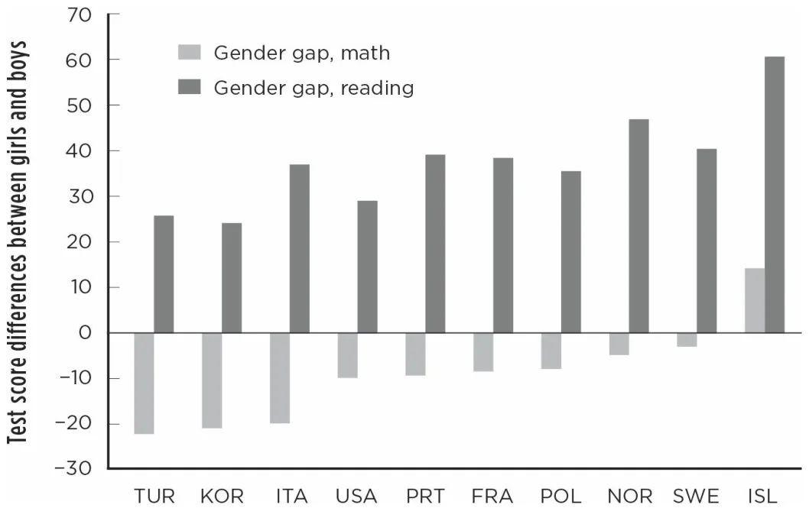
L. Guiso và cộng sự, “Culture, Gender, and Math,” *Sci* 320 (2008): 1164.
Truy cập bit.ly/2o88s4O để xem phiên bản lớn hơn của biểu đồ này.
Nói cách khác, dù bạn không bao giờ có thể chắc chắn tuyệt đối, cô gái Afghanistan trong bức ảnh phía trên ở trang bên, ngồi cạnh chồng mình, ít có khả năng giải được giả thuyết Erdös-Hajnal trong lý thuyết đồ thị hơn cô gái Thụy Điển trong bức ảnh bên dưới.
Nói theo một cách khác nữa, văn hóa rất quan trọng. Chúng ta mang nó theo mình đến bất cứ nơi đâu. Một ví dụ là mức độ tham nhũng — sự thiếu minh bạch của chính phủ về việc sử dụng quyền lực và tài chính — ở quê hương của các nhà ngoại giao Liên Hợp Quốc dự đoán khả năng họ tích lũy vé phạt đỗ xe chưa thanh toán ở Manhattan. Văn hóa để lại những tàn dư lâu dài — người Shiite và người Sunni tàn sát lẫn nhau vì một vấn đề kế vị từ mười bốn thế kỷ trước; trên khắp ba mươi ba quốc gia, mật độ dân số vào năm 1500 dự đoán đáng kể mức độ độc tài của chính phủ vào năm 2000; qua hàng thiên niên kỷ, việc áp dụng cuốc sớm hơn cày dự đoán mức độ bình đẳng giới ngày nay.2

Và nói theo một cách khác, khác nữa, khi chúng ta chiêm nghiệm những hành động mang tính biểu tượng của mình — việc bóp cò súng, việc chạm vào một cánh tay — và muốn giải thích tại sao chúng xảy ra bằng một khuôn khổ sinh học, thì văn hóa tốt hơn hết nên nằm trong danh sách các yếu tố giải thích của chúng ta.
Do đó, mục tiêu của chương này là:
Xem xét các khuôn mẫu biến thiên văn hóa có hệ thống khi chúng liên quan đến những hành vi tốt đẹp nhất và tồi tệ nhất của chúng ta. Khám phá cách các kiểu não bộ khác nhau tạo ra nền văn hóa khác nhau và các kiểu văn hóa khác nhau tạo ra những bộ não khác nhau. Nói cách khác, văn hóa và sinh học đồng tiến hóa như thế nào.3
Thấy được vai trò của sinh thái học trong việc định hình văn hóa.
ĐỊNH NGHĨA, NHỮNG ĐIỂM TƯƠNG ĐỒNG VÀ KHÁC BIỆT
“Văn hóa,” dĩ nhiên, đã được định nghĩa theo nhiều cách khác nhau. Một định nghĩa có tầm ảnh hưởng đến từ Edward Tylor, một nhà nhân học văn hóa lỗi lạc thế kỷ mười chín. Đối với ông, văn hóa là “tổng thể phức hợp bao gồm tri thức, tín ngưỡng, nghệ thuật, đạo đức, luật pháp, phong tục và bất kỳ năng lực và thói quen nào khác mà con người [sic] tiếp thu được với tư cách là một thành viên của xã hội.”4
Định nghĩa này, rõ ràng, hướng tới một thứ đặc thù của con người. Jane Goodall đã làm mọi người kinh ngạc vào những năm 1960 khi công bố sự thật nay đã thành kinh điển rằng tinh tinh biết chế tạo công cụ. Các đối tượng nghiên cứu của bà đã biến đổi những cành cây nhỏ bằng cách tuốt bỏ lá và chọc chúng vào gò mối; lũ mối sẽ cắn vào cành cây và vẫn bám chặt khi cành cây được rút ra, mang lại một bữa ăn nhẹ cho tinh tinh.
Đây mới chỉ là khởi đầu. Tinh tinh sau đó được phát hiện sử dụng nhiều loại công cụ khác nhau — đe bằng gỗ hoặc đá để đập vỡ hạt, những nắm lá nhai nát để thấm nước ở những nơi khó với tới, và, một điều thực sự gây sốc, những cành cây vót nhọn để xiên cu li (bush babies).5 Các quần thể khác nhau chế tạo các công cụ khác nhau; các kỹ thuật mới lan truyền qua mạng lưới xã hội (giữa những con tinh tinh hay giao du với nhau); tinh tinh con học cách làm bằng cách quan sát mẹ; kỹ thuật lan truyền từ nhóm này sang nhóm khác khi có cá thể di cư; những công cụ đập hạt của tinh tinh có niên đại hơn bốn nghìn năm đã được khai quật. Và trong ví dụ yêu thích của tôi, lơ lửng giữa việc sử dụng công cụ và làm phụ kiện thời trang, một con tinh tinh cái ở Zambia bỗng nảy ra ý tưởng đi loanh quanh với một cọng cỏ giống như ống hút giắt ở tai. Hành động này chẳng có chức năng rõ ràng nào; dường như cô nàng chỉ thích có một cọng cỏ thò ra từ tai mình. Kiện cô ta đi. Cô ta làm thế suốt nhiều năm, và trong thời gian đó thói quen này lan rộng ra cả bầy. Một tín đồ thời trang thực thụ.
Trong những thập kỷ kể từ khám phá của Goodall, việc sử dụng công cụ đã được quan sát thấy ở vượn và khỉ, voi, rái cá biển, cầy mangut.6 Cá heo dùng bọt biển để đào những con cá vùi mình dưới đáy biển. Chim dùng công cụ để làm tổ hoặc kiếm ăn — chẳng hạn như chim giẻ cùi và quạ dùng cành cây để câu côn trùng, giống hệt tinh tinh. Và còn có việc sử dụng công cụ ở động vật chân đầu, bò sát và cá.

E. van Leeuwen và cộng sự, “A Group-Specific Arbitrary Tradition in Chimpanzees (Pan troglodytes),” *Animal Cog* 17 (2014): 1421.
Tất cả những điều này đều vô cùng ấn tượng. Tuy nhiên, sự truyền thụ văn hóa như vậy không cho thấy sự tiến bộ — công cụ đập hạt của tinh tinh năm nay gần như giống hệt với bốn nghìn năm trước. Và với một vài ngoại lệ (sẽ nói thêm sau), văn hóa phi nhân loại hoàn toàn chỉ xoay quanh văn hóa vật chất (so với, chẳng hạn, tổ chức xã hội).
Vì vậy, định nghĩa cổ điển về văn hóa không chỉ dành riêng cho con người.7 Hầu hết các nhà nhân học văn hóa không mấy hào hứng với cuộc cách mạng của Goodall — tuyệt đấy, tiếp theo chắc các nhà động vật học sẽ báo cáo rằng Rafiki đã thuyết phục Simba trở thành Vua Sư Tử — và giờ đây thường nhấn mạnh các định nghĩa về văn hóa nhằm loại tinh tinh và các loài hạ đẳng khác ra khỏi cuộc chơi. Người ta ưa chuộng tư duy của Alfred Kroeber, Clyde Kluckhohn và Clifford Geertz, ba nhà nhân học xã hội nặng ký tập trung vào cách văn hóa xoay quanh các ý tưởng và biểu tượng, thay vì chỉ là những hành vi hiện thực hóa chúng, hay các sản phẩm vật chất như lưỡi dao đá lửa hay iPhone. Các nhà nhân học đương đại như Richard Shweder nhấn mạnh một góc nhìn cảm tính hơn nhưng vẫn lấy con người làm trung tâm về văn hóa như là những phiên bản đạo đức và bản năng của cái đúng và cái sai. Và tất nhiên những quan điểm này đã bị các nhà hậu hiện đại phê bình vì những lý do mà tôi chẳng thể nào hiểu nổi.
Về cơ bản, tôi không muốn dính dáng gì đến những cuộc tranh luận này. Đối với mục đích của chúng ta, ta sẽ dựa vào một định nghĩa trực quan về văn hóa được Frans de Waal nhấn mạnh: “văn hóa” là cách chúng ta làm và suy nghĩ về mọi thứ, được truyền lại bằng những phương thức phi di truyền.
Làm việc với định nghĩa rộng đó, điều nổi bật nhất về sự đa dạng của các nền văn hóa nhân loại là những điểm tương đồng hay những điểm khác biệt? Tùy thuộc vào sở thích của bạn.
Nếu những điểm tương đồng có vẻ thú vị nhất, thì có rất nhiều — suy cho cùng, nhiều nhóm người đã độc lập phát minh ra nông nghiệp, chữ viết, đồ gốm, ướp xác, thiên văn học và tiền đúc. Ở thái cực của sự tương đồng là các phổ quát văn hóa (human universals), và nhiều học giả đã đề xuất các danh sách về chúng. Một trong những danh sách dài nhất và được trích dẫn nhiều nhất đến từ nhà nhân học Donald Brown.8 Dưới đây là một phần danh sách các phổ quát văn hóa được ông đề xuất: sự tồn tại và mối quan tâm đến thẩm mỹ, ma thuật, nam và nữ được xem là có bản chất khác nhau, ngôn ngữ nựng trẻ, thần linh, việc tạo ra các trạng thái ý thức biến đổi, hôn nhân, trang điểm cơ thể, giết người, cấm đoán một số loại giết người, thuật ngữ thân tộc, số đếm, nấu nướng, tình dục riêng tư, tên gọi, nhảy múa, vui chơi, phân biệt đúng và sai, chủ nghĩa gia đình trị (nepotism), cấm đoán một số kiểu quan hệ tình dục, sự đồng cảm, sự có đi có lại, nghi lễ, khái niệm về sự công bằng, thần thoại về thế giới bên kia, âm nhạc, thuật ngữ màu sắc, điều cấm kỵ, buôn chuyện, thuật ngữ giới tính nhị phân, thiên vị nhóm nội (in-group favoritism), ngôn ngữ, sự hài hước, nói dối, biểu tượng, khái niệm ngôn ngữ học về từ “và,” công cụ, thương mại và tập đi vệ sinh. Và đó mới chỉ là một phần danh sách.
Đối với mục đích của chương này, những khác biệt văn hóa lớn đến choáng ngợp trong cách cuộc sống được trải nghiệm, trong các nguồn lực và đặc quyền sẵn có, trong cơ hội và quỹ đạo cuộc đời, mới là điều thú vị nhất. Chỉ cần bắt đầu với một vài số liệu thống kê nhân khẩu học gây kinh ngạc sinh ra từ sự khác biệt văn hóa: một bé gái sinh ra ở Monaco có tuổi thọ kỳ vọng là chín mươi ba năm; một bé gái ở Angola là ba mươi chín. Latvia có tỷ lệ biết chữ 99,9 phần trăm; Niger là 19 phần trăm. Hơn 10 phần trăm trẻ em ở Afghanistan tử vong trong năm đầu đời, so với khoảng 0,2 phần trăm ở Iceland. GDP bình quân đầu người là 137.000 đô la ở Qatar, 609 đô la ở Cộng hòa Trung Phi. Một phụ nữ ở Nam Sudan có nguy cơ tử vong khi sinh con cao gấp khoảng một nghìn lần so với một phụ nữ ở Estonia.9
Trải nghiệm về bạo lực cũng biến thiên vô cùng lớn theo văn hóa. Một người ở Honduras có nguy cơ bị sát hại cao gấp 450 lần so với một người ở Singapore. 65 phần trăm phụ nữ trải qua bạo lực từ bạn tình ở Trung Phi, so với 16 phần trăm ở Đông Á. Một phụ nữ Nam Phi có nguy cơ bị cưỡng hiếp cao hơn một trăm lần so với một phụ nữ ở Nhật Bản. Nếu là một đứa trẻ đi học ở Romania, Bulgaria hoặc Ukraine, bạn có nguy cơ bị bắt nạt kinh niên cao gấp khoảng mười lần so với một đứa trẻ ở Thụy Điển, Iceland hoặc Đan Mạch (hãy đón xem phần phân tích kỹ hơn về điều này).10
Tất nhiên, còn có những khác biệt văn hóa nổi tiếng liên quan đến giới tính. Có những quốc gia Scandinavia tiến gần tới bình đẳng giới hoàn toàn và Rwanda, với 63 phần trăm số ghế tại hạ viện do phụ nữ nắm giữ, so với Ả Rập Xê Út, nơi phụ nữ không được phép ra khỏi nhà trừ khi có người giám hộ nam đi cùng, và Yemen, Qatar, Tonga, với 0 phần trăm nữ nghị sĩ (và Hoa Kỳ ở mức khoảng 20 phần trăm).11
Rồi có Philippines, nơi 93 phần trăm người dân nói rằng họ cảm thấy hạnh phúc và được yêu thương, so với 29 phần trăm người Armenia. Trong các trò chơi kinh tế, người dân ở Hy Lạp và Oman có nhiều khả năng tiêu tốn nguồn lực để trừng phạt những người chơi quá hào phóng hơn là trừng phạt những kẻ gian lận, trong khi ở người Úc, kiểu “trừng phạt phản xã hội” (antisocial punishment) như vậy không hề tồn tại. Và có những tiêu chí khác nhau một trời một vực cho hành vi thân xã hội. Trong một nghiên cứu về nhân viên trên khắp thế giới làm việc cho cùng một ngân hàng đa quốc gia, lý do quan trọng nhất được nêu ra để giúp đỡ ai đó là gì? Ở người Mỹ, đó là vì người đó trước đây đã từng giúp họ; ở người Trung Quốc, đó là vì người đó có cấp bậc cao hơn; ở Tây Ban Nha, đó là vì họ là bạn bè hoặc người quen.12
Cuộc đời bạn sẽ khác biệt đến mức không thể nhận ra, tùy thuộc vào việc con cò thả bạn xuống nền văn hóa nào. Khi lội qua sự đa dạng này, có một số khuôn mẫu, sự tương phản và lưỡng phân đáng chú ý.
VĂN HÓA TẬP THỂ SO VỚI VĂN HÓA CÁ NHÂN
Như đã giới thiệu ở chương 7, một tỷ lệ lớn các nghiên cứu tâm lý học xuyên văn hóa so sánh các nền văn hóa tập thể (collectivist) với các nền văn hóa cá nhân (individualist). Điều này hầu như luôn có nghĩa là so sánh giữa các đối tượng từ các nền văn hóa tập thể Đông Á và người Mỹ, những người đến từ cái nôi của mọi nền văn hóa cá nhân.* Theo định nghĩa, các nền văn hóa tập thể đề cao sự hòa hợp, phụ thuộc lẫn nhau, sự tuân thủ và lấy nhu cầu của nhóm làm kim chỉ nam cho hành vi, trong khi các nền văn hóa cá nhân đề cao sự tự chủ, thành tựu cá nhân, tính độc đáo và các nhu cầu cũng như quyền lợi của cá nhân. Nói một cách hơi châm biếm một chút, văn hóa cá nhân có thể được tóm tắt bằng khái niệm kinh điển của người Mỹ là “lo cho bản thân mình trước nhất” (looking out for number one); văn hóa tập thể có thể được tóm tắt bằng trải nghiệm điển hình của các giáo viên thuộc Tổ chức Hòa bình (Peace Corps) của Mỹ ở những quốc gia như vậy — hãy đặt cho học sinh của bạn một câu hỏi toán, và sẽ chẳng ai xung phong trả lời đúng vì các em không muốn nổi bật và làm bẽ mặt bạn học của mình.
Sự tương phản giữa chủ nghĩa cá nhân và chủ nghĩa tập thể rất nổi bật. Trong các nền văn hóa cá nhân, con người thường xuyên tìm kiếm sự độc đáo và thành tích cá nhân, sử dụng đại từ nhân xưng ngôi thứ nhất số ít thường xuyên hơn, định nghĩa bản thân theo các thuật ngữ cá nhân (“Tôi là một nhà thầu”) hơn là quan hệ (“Tôi là một người cha/mẹ”), quy công thành công của mình cho các thuộc tính nội tại (“Tôi thực sự giỏi môn X”) hơn là các yếu tố tình huống (“Tôi đã ở đúng nơi vào đúng thời điểm”). Quá khứ thường được ghi nhớ thông qua các sự kiện (“Đó là mùa hè tôi học bơi”) hơn là các tương tác xã hội (“Đó là mùa hè chúng tôi trở thành bạn bè”). Động lực và sự hài lòng đến từ nỗ lực của bản thân hơn là từ nỗ lực của nhóm (phản ánh mức độ mà chủ nghĩa cá nhân Mỹ xoay quanh sự không hợp tác, hơn là sự không tuân thủ). Động lực cạnh tranh là để vượt lên trên tất cả những người khác. Khi được yêu cầu vẽ một “biểu đồ xã hội” (sociogram) — một sơ đồ về mạng lưới xã hội của họ, với các vòng tròn đại diện cho bản thân và bạn bè, nối với nhau bằng các đường thẳng — người Mỹ có xu hướng đặt vòng tròn đại diện cho chính mình ở chính giữa trang giấy và vẽ nó to nhất.13
Ngược lại, những người đến từ các nền văn hóa tập thể cho thấy sự thấu hiểu xã hội nhiều hơn; một số báo cáo cho thấy họ giỏi hơn trong các nhiệm vụ Lý thuyết Tâm trí (Theory of Mind), chính xác hơn trong việc hiểu góc nhìn của người khác — với “góc nhìn” trải dài từ những suy nghĩ trừu tượng của người kia đến cách các vật thể trông như thế nào từ vị trí người đó đang ngồi. Nhóm bị đổ lỗi nhiều hơn khi ai đó vi phạm chuẩn mực do áp lực bạn bè, và có xu hướng đưa ra các giải thích theo tình huống cho hành vi nhiều hơn. Động lực cạnh tranh là để không bị tụt lại phía sau mọi người. Và khi vẽ biểu đồ xã hội, vòng tròn đại diện cho “bản thân bạn” nằm xa trung tâm, và còn lâu mới là vòng tròn lớn nhất.
Dĩ nhiên, những khác biệt văn hóa này có các tương quan sinh học. Ví dụ, các đối tượng từ nền văn hóa cá nhân kích hoạt mạnh mẽ vùng vỏ não trước trán giữa (mPFC - vùng cảm xúc) khi nhìn vào ảnh của chính mình, so với khi nhìn vào ảnh của người thân hoặc bạn bè; ngược lại, mức độ kích hoạt ở các đối tượng Đông Á ít hơn nhiều.* Một ví dụ khác là minh chứng yêu thích của tôi về sự khác biệt xuyên văn hóa trong căng thẳng tâm lý — khi được yêu cầu nhớ lại tự do, người Mỹ có nhiều khả năng hơn người Đông Á trong việc nhớ lại những lần họ gây ảnh hưởng lên ai đó; ngược lại, người Đông Á có nhiều khả năng nhớ lại những lần ai đó gây ảnh hưởng lên họ. Hãy ép người Mỹ nói dài dòng về một lần ai đó gây ảnh hưởng lên họ, hoặc ép người Đông Á kể chi tiết về việc họ gây ảnh hưởng lên ai đó, và cả hai đều tiết ra glucocorticoid do sự căng thẳng khi phải kể lại sự kiện khó chịu này. Và công trình của các đồng nghiệp kiêm bạn bè của tôi ở Stanford là Jeanne Tsai và Brian Knutson cho thấy hệ thống dopamine trung não - hệ viền (mesolimbic) kích hoạt ở người Mỹ gốc Âu khi nhìn vào các biểu cảm khuôn mặt phấn khích; còn ở người Trung Quốc, là khi nhìn vào các biểu cảm điềm tĩnh.
Như chúng ta sẽ thấy ở chương 13, những khác biệt văn hóa này tạo ra các hệ thống đạo đức khác nhau. Trong những xã hội tập thể truyền thống nhất, sự tuân thủ và đạo đức gần như đồng nghĩa và việc thực thi chuẩn mực xoay quanh sự xấu hổ (“Mọi người sẽ nghĩ gì nếu mình làm thế?”) hơn là cảm giác tội lỗi (“Làm sao mình có thể sống nổi với bản thân nếu làm thế?”). Các nền văn hóa tập thể nuôi dưỡng các lập trường đạo đức vị lợi và duy hệ quả hơn (ví dụ: sẵn sàng hơn để một người vô tội bị bỏ tù nhằm ngăn chặn một cuộc bạo loạn). Việc nhấn mạnh cực độ vào nhóm ở văn hóa tập thể tạo ra mức độ thiên vị nhóm nội (in-group bias) lớn hơn so với các thành viên văn hóa cá nhân. Chẳng hạn, trong một nghiên cứu, các đối tượng người Hàn Quốc và người Mỹ gốc Âu quan sát hình ảnh của các thành viên cùng nhóm hoặc khác nhóm đang chịu đau đớn. Tất cả các đối tượng đều báo cáo sự đồng cảm chủ quan nhiều hơn và cho thấy sự kích hoạt mạnh hơn của các vùng não Lý thuyết Tâm trí (tức là vùng tiếp giáp thái dương - đỉnh) khi quan sát các thành viên cùng nhóm, nhưng sự thiên vị này lớn hơn đáng kể ở các đối tượng người Hàn Quốc. Ngoài ra, các đối tượng từ cả nền văn hóa cá nhân và tập thể đều hạ thấp các thành viên nhóm ngoại, nhưng chỉ nhóm đầu tiên mới thổi phồng đánh giá về nhóm của chính mình. Nói cách khác, người Đông Á, không giống như người Mỹ, không cần phải tâng bốc nhóm của mình lên mới có thể coi người khác là thấp kém hơn.14
Điều hấp dẫn là hướng đi mà một số khác biệt này thực hiện, như được thể hiện qua các cách tiếp cận tiên phong bởi một trong những người khổng lồ trong lĩnh vực này, Richard Nisbett thuộc Đại học Michigan. Người phương Tây giải quyết vấn đề theo cách tuyến tính hơn, phụ thuộc nhiều hơn vào mã hóa ngôn ngữ thay vì không gian. Khi được yêu cầu giải thích chuyển động của một quả bóng, người Đông Á có nhiều khả năng viện dẫn các giải thích quan hệ được xây dựng xung quanh sự tương tác của quả bóng với môi trường của nó — lực ma sát — trong khi người phương Tây tập trung vào các thuộc tính nội tại như trọng lượng và mật độ. Người phương Tây chính xác hơn trong việc ước lượng độ dài theo giá trị tuyệt đối (“Đường thẳng đó dài bao nhiêu?”) trong khi người Đông Á giỏi hơn với các ước lượng quan hệ (“Đường thẳng này dài hơn đường thẳng kia bao nhiêu?”). Hoặc thế này thì sao: Hãy xem xét một con khỉ, một con gấu và một quả chuối. Hai thứ nào đi cùng nhau? Người phương Tây tư duy theo phạm trù và chọn con khỉ và con gấu — cả hai đều là động vật. Người Đông Á tư duy theo quan hệ và liên kết con khỉ với quả chuối — nếu bạn đang nghĩ đến một con khỉ, hãy nghĩ luôn đến thức ăn mà nó sẽ cần.15
Đáng kinh ngạc là những khác biệt văn hóa còn mở rộng sang cả quá trình xử lý cảm giác, trong đó người phương Tây xử lý thông tin theo cách tập trung hơn, còn người Đông Á theo cách toàn thể (holistic) hơn.16 Hãy cho xem bức ảnh một người đứng giữa một khung cảnh phức tạp; người Đông Á sẽ nhớ chính xác hơn về khung cảnh, bối cảnh, trong khi người phương Tây nhớ người đứng ở giữa. Thật đáng kinh ngạc, điều này thậm chí còn được quan sát thấy ở cấp độ theo dõi chuyển động mắt — thông thường mắt người phương Tây đầu tiên sẽ nhìn vào trung tâm bức ảnh, trong khi người Đông Á quét toàn bộ khung cảnh. Hơn nữa, nếu ép người phương Tây tập trung vào bối cảnh toàn thể của bức ảnh, hoặc ép người Đông Á tập trung vào chủ thể trung tâm, vỏ não trước trán phải làm việc vất vả hơn, kích hoạt nhiều hơn.
Như đã đề cập ở chương 7, các giá trị văn hóa được gieo mầm từ rất sớm trong đời. Vì vậy, không có gì ngạc nhiên khi văn hóa định hình thái độ của chúng ta về thành công, đạo đức, hạnh phúc, tình yêu, v.v. Nhưng điều làm tôi giật mình là cách những khác biệt văn hóa này cũng định hình nơi mắt bạn tập trung vào một bức ảnh hay cách bạn nghĩ về khỉ và chuối hoặc vật lý của quỹ đạo một quả bóng. Tác động của văn hóa là vô cùng to lớn.
Dĩ nhiên, có nhiều lưu ý khi so sánh chủ nghĩa tập thể/chủ nghĩa cá nhân:
Điều hiển nhiên nhất là cụm từ muôn thuở “tính trung bình” — chẳng hạn, có rất nhiều người phương Tây mang tính tập thể hơn rất nhiều người Đông Á. Nhìn chung, những người có tính cá nhân cao nhất theo các thước đo nhân cách khác nhau cũng thể hiện tính cá nhân cao nhất trong các nghiên cứu chẩn đoán hình ảnh thần kinh.17
Văn hóa thay đổi theo thời gian. Ví dụ, mức độ tuân thủ trong các nền văn hóa Đông Á đang giảm dần (chẳng hạn, một nghiên cứu cho thấy tỷ lệ trẻ sơ sinh ở Nhật Bản được đặt những cái tên độc đáo ngày càng tăng). Hơn nữa, mức độ thấm nhuần một nền văn hóa của một người có thể bị thay đổi nhanh chóng. Ví dụ, việc mồi (priming) cho ai đó trước đó bằng các tín hiệu văn hóa cá nhân hoặc tập thể sẽ làm thay đổi mức độ toàn thể khi người đó xử lý một bức ảnh. Điều này đặc biệt đúng đối với những cá nhân song văn hóa.18
Chúng ta sẽ sớm thấy một số khác biệt di truyền giữa các quần thể tập thể và cá nhân. Không có gì giống như định mệnh di truyền ở đây cả — bằng chứng tốt nhất cho kết luận này đến từ một trong những nhóm đối chứng trong nhiều nghiên cứu này, cụ thể là người Mỹ gốc Đông Á. Nhìn chung, chỉ mất khoảng một thế hệ để con cháu của những người nhập cư Đông Á đến Mỹ trở nên mang tính cá nhân ngang ngửa với người Mỹ gốc Âu.19
Rõ ràng, “người Đông Á” và “người phương Tây” không phải là những thực thể đồng nhất. Cứ thử hỏi một người từ Bắc Kinh so với thảo nguyên Tây Tạng xem. Hoặc nhốt ba người từ Berkeley, Brooklyn và Biloxi vào một cái thang máy bị kẹt trong vài giờ và xem chuyện gì xảy ra. Như chúng ta sẽ thấy, có sự biến thiên đáng kinh ngạc ngay bên trong các nền văn hóa.
Tại sao con người ở một phần của địa cầu lại phát triển các nền văn hóa tập thể, trong khi những nơi khác lại đi theo hướng cá nhân? Hoa Kỳ là hình mẫu tiêu biểu của chủ nghĩa cá nhân vì ít nhất hai lý do. Đầu tiên là sự nhập cư. Hiện nay, 12 phần trăm người Mỹ là người nhập cư, 12 phần trăm khác là (giống như tôi) con của người nhập cư, và tất cả những người còn lại ngoại trừ 0,9 phần trăm người Mỹ bản địa thuần chủng đều là hậu duệ của những người di cư trong vòng năm trăm năm qua.20 Và những người nhập cư đó là ai? Họ là những kẻ lập dị ở thế giới cũ, những kẻ bất mãn, bồn chồn, dị giáo, những con cừu đen, tăng động, hưng cảm nhẹ, ghét đời, đứng ngồi không yên, khác người, khao khát tự do, khao khát giàu có, khao khát thoát khỏi cái xóm nhỏ tẻ nhạt đầy áp bức chết tiệt của họ, khao khát. Kết hợp điều đó với lý do thứ hai — trong phần lớn lịch sử thuộc địa và độc lập của mình, nước Mỹ có một biên giới luôn dịch chuyển để lôi kéo những người có sự lạc quan gai góc cực độ mà chỉ việc đặt vé tàu đến Tân Thế Giới thôi là chưa đủ mới mẻ — và bạn có một nước Mỹ đầy tính cá nhân.
Tại sao Đông Á lại cung cấp những ví dụ sách giáo khoa về chủ nghĩa tập thể?21 Chìa khóa nằm ở cách văn hóa được định hình bởi phương thức kiếm sống truyền thống của con người, mà phương thức này lại được định hình bởi sinh thái học. Và ở Đông Á, tất cả đều xoay quanh cây lúa nước. Lúa nước, được thuần hóa ở đó khoảng mười nghìn năm trước, đòi hỏi lượng lao động cộng đồng khổng lồ. Không chỉ là việc gieo cấy và thu hoạch vất vả đến gãy lưng, vốn được thực hiện luân phiên vì cả làng cần chung tay thu hoạch lúa cho từng gia đình.* Lao động tập thể trước hết cần thiết để cải tạo hệ sinh thái — làm ruộng bậc thang trên núi, xây dựng và duy trì hệ thống thủy lợi để kiểm soát việc dẫn nước vào ruộng. Và còn vấn đề chia nước sao cho công bằng — ở Bali, thẩm quyền tôn giáo điều tiết quyền tiếp cận nguồn nước, được biểu tượng hóa bằng các ngôi đền nước nổi tiếng. Điều này thì sao, thật đáng kinh ngạc — hệ thống thủy lợi Đô Giang Yển tưới tiêu cho hơn năm nghìn km vuông ruộng lúa gần Thành Đô, Trung Quốc, và nó đã hơn hai nghìn năm tuổi. Gốc rễ của chủ nghĩa tập thể, giống như rễ cây lúa, ăn sâu ở Đông Á.*
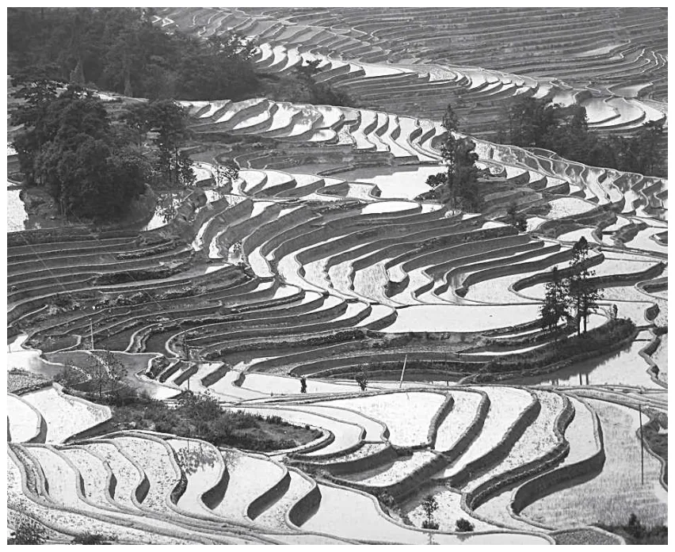
Một bài báo hấp dẫn trên tạp chí *Science* năm 2014 củng cố mối liên hệ giữa lúa nước và chủ nghĩa tập thể bằng cách khám phá một ngoại lệ.22 Ở một số vùng thuộc miền bắc Trung Quốc, rất khó trồng lúa nước, và thay vào đó người dân đã trồng lúa mì trong hàng thiên niên kỷ; việc này đòi hỏi canh tác cá nhân thay vì tập thể. Và theo các bài kiểm tra tiêu chuẩn về văn hóa cá nhân so với tập thể (ví dụ: vẽ biểu đồ xã hội, hai thứ nào giống nhau nhất trong số thỏ, chó và cà rốt?) — họ trông giống hệt người phương Tây. Khu vực này có hai dấu hiệu khác của chủ nghĩa cá nhân, cụ thể là tỷ lệ ly hôn cao hơn và tính sáng tạo cao hơn — số đơn đăng ký bằng sáng chế — so với các vùng trồng lúa nước. Gốc rễ của chủ nghĩa cá nhân, giống như rễ cây lúa mì, ăn sâu ở miền bắc Trung Quốc.
Mối liên hệ giữa sinh thái, phương thức sản xuất và văn hóa được thể hiện trong một nghiên cứu hiếm hoi về chủ nghĩa tập thể/cá nhân không so sánh người châu Á và người phương Tây.23
Các tác giả đã nghiên cứu một vùng của Thổ Nhĩ Kỳ bên bờ Biển Đen, nơi những ngọn núi ôm sát bờ biển. Ở đó, rất gần nhau, người dân sống bằng nghề đánh cá, bằng nghề làm nông trên dải đất hẹp giữa biển và núi, hoặc làm nghề chăn thả gia súc trên núi. Cả ba nhóm đều có chung ngôn ngữ, tôn giáo và nguồn gen.
Nghề chăn thả mang tính đơn độc; trong khi nông dân và ngư dân Thổ Nhĩ Kỳ (cả nam và nữ) tuy không phải là nông dân trồng lúa nước Trung Quốc, nhưng ít nhất họ cũng làm việc trên đồng ruộng theo nhóm và điều khiển thuyền đánh cá theo thủy thủ đoàn. Những người chăn thả tư duy ít toàn thể hơn nông dân hoặc ngư dân — nhóm đầu tiên giỏi phán đoán độ dài tuyệt đối của các đường thẳng hơn, hai nhóm sau giỏi phán đoán tương đối hơn; khi được cho xem một chiếc găng tay, một chiếc khăn quàng cổ và một bàn tay, những người chăn thả xếp găng tay và khăn quàng vào cùng một phạm trù, trong khi những người khác xếp theo quan hệ, ghép găng tay với bàn tay. Theo lời của các tác giả, “sự phụ thuộc lẫn nhau về mặt xã hội nuôi dưỡng tư duy toàn thể.”
Chủ đề này xuất hiện trong một nghiên cứu khác, so sánh các cậu bé Do Thái từ những gia đình Chính thống giáo sùng đạo (bị chi phối bởi vô số quy tắc chung về niềm tin và hành vi) với những cậu bé từ các gia đình thế tục mang tính cá nhân hơn nhiều. Khả năng xử lý thị giác mang tính toàn thể hơn ở nhóm Chính thống giáo, và tập trung hơn ở nhóm thế tục.24
Sự phân đôi tập thể/cá nhân giữa Đông Á và phương Tây có một tương quan di truyền vô cùng thú vị.25 Hãy nhớ lại từ chương trước về dopamine và DRD4, gen quy định thụ thể D4. Nó cực kỳ biến dị, với ít nhất hai mươi lăm biến thể ở người (với mức độ biến dị ít hơn ở các loài linh trưởng khác). Hơn nữa, sự biến dị này không phải là sự trôi dạt ngẫu nhiên, vô thưởng vô phạt của các trình tự DNA; thay vào đó, đã có sự chọn lọc tích cực mạnh mẽ đối với các biến thể. Phổ biến nhất là biến thể 4R, xuất hiện ở khoảng một nửa người Đông Á và người Mỹ gốc Âu. Ngoài ra còn có biến thể 7R, tạo ra một thụ thể ít nhạy cảm hơn với dopamine ở vỏ não, liên quan đến việc tìm kiếm sự mới lạ, tính hướng ngoại và sự bốc đồng. Nó có trước con người hiện đại nhưng trở nên phổ biến hơn đáng kể vào khoảng mười đến hai mươi nghìn năm trước. Biến thể 7R xuất hiện ở khoảng 23 phần trăm người châu Âu và người Mỹ gốc Âu. Còn ở người Đông Á thì sao? 1 phần trăm.

Y. Ding và cộng sự, “Evidence of Positive Selection Acting at the Human Dopamine
Receptor D4 Gene Locus,” *PNAS* 99 (2002): 309.
Truy cập bit.ly/2nsuHz9 để xem phiên bản lớn hơn của biểu đồ này.
Vậy cái nào có trước, tần suất 7R hay phong cách văn hóa? Các biến thể 4R và 7R, cùng với 2R, xuất hiện trên toàn thế giới, ngụ ý rằng chúng đã tồn tại khi con người tỏa ra khỏi châu Phi từ 60.000 đến 130.000 năm trước. Công trình kinh điển của Kenneth Kidd tại Yale, khảo sát sự phân bố của 7R, cho thấy một điều đáng kinh ngạc.
Bắt đầu từ phía bên trái của biểu đồ trên, có tỷ lệ xuất hiện 7R khoảng 10 đến 25 phần trăm ở nhiều quần thể châu Phi, châu Âu và Trung Đông. Nhảy sang phía bên phải của biểu đồ, có tỷ lệ cao hơn một chút ở hậu duệ của những người bắt đầu nhảy đảo từ lục địa châu Á đến Malaysia và New Guinea. Điều tương tự cũng xảy ra với những người có tổ tiên di cư đến Bắc Mỹ qua cầu đất liền Bering khoảng mười lăm nghìn năm trước — các bộ lạc người Mỹ bản địa Muskoke, Cheyenne và Pima. Tiếp theo là người Maya ở Trung Mỹ — lên tới khoảng 40 phần trăm. Rồi đến người Guihiba và Quechua ở các vùng phía bắc Nam Mỹ, ở mức khoảng 55 phần trăm. Cuối cùng là hậu duệ của những người đã đi hết quãng đường tới lưu vực sông Amazon — người Ticuna, Surui và Karitiana — với tỷ lệ 7R khoảng 70 phần trăm, cao nhất thế giới. Nói cách khác, đó là hậu duệ của những người mà sau khi đặt chân đến nơi sau này là trung tâm thành phố Anchorage, đã quyết định cứ thế đi tiếp thêm sáu nghìn dặm nữa.* Tỷ lệ 7R cao, gắn liền với sự bốc đồng và tìm kiếm cái mới, là di sản của những con người đã thực hiện những cuộc di cư vĩ đại nhất trong lịch sử nhân loại.
Và ở giữa biểu đồ là tỷ lệ gần như bằng không của 7R ở Trung Quốc, Campuchia, Nhật Bản và Đài Loan (trong cộng đồng người Ami và Atayal). Khi người Đông Á thuần hóa cây lúa nước và phát minh ra xã hội tập thể, đã có một cuộc chọn lọc ồ ạt chống lại biến thể 7R; theo lời của Kidd, nó “gần như biến mất” ở các quần thể này.* Có lẽ những người mang gen 7R đã gãy cổ khi phát minh ra môn dù lượn, hoặc bồn chồn cố đi bộ sang Alaska nhưng chết đuối vì không còn cầu đất liền Bering nữa. Có lẽ họ là những bạn đời kém hấp dẫn hơn. Bất kể nguyên nhân là gì, chủ nghĩa tập thể văn hóa Đông Á đã đồng tiến hóa với sự chọn lọc chống lại biến thể 7R.*
Như vậy, trong sự tương phản văn hóa được nghiên cứu nhiều nhất này, chúng ta thấy sự tụ hội của các yếu tố sinh thái, phương thức sản xuất, khác biệt văn hóa, và sự khác biệt về nội tiết học, sinh học thần kinh và tần suất gen.* Những tương phản văn hóa xuất hiện theo những cách dễ đoán — ví dụ như đạo đức, sự đồng cảm, cách nuôi dạy con cái, cạnh tranh, hợp tác, định nghĩa về hạnh phúc — nhưng cũng xuất hiện theo những cách không ngờ tới — ví dụ như trong vòng vài mili-giây, mắt bạn nhìn vào đâu trên một bức ảnh, hay bạn nghĩ về thỏ và cà rốt như thế nào.
NGƯỜI DU MỤC CHĂN THẢ VÀ NGƯỜI MIỀN NAM
Một mối liên hệ quan trọng khác giữa sinh thái, phương thức sản xuất và văn hóa được thấy ở những môi trường khô cằn, khắc nghiệt, rộng mở và quá khó khăn cho nông nghiệp. Đây là thế giới của chủ nghĩa du mục chăn thả — những người lang thang trên sa mạc, thảo nguyên hoặc đài nguyên cùng đàn gia súc của họ.
Có người Bedouin ở Ả Rập, người Tuareg ở Bắc Phi, người Somali và Maasai ở Đông Phi, người Sami ở bắc Scandinavia, người Gujjar ở Ấn Độ, người Yörük ở Thổ Nhĩ Kỳ, người Tuva ở Mông Cổ, người Aymara ở dãy Andes. Có những đàn cừu, dê, bò, lạc đà không bướu, lạc đà, bò Tây Tạng, ngựa hoặc tuần lộc, với những người chăn thả sống nhờ thịt, sữa và máu của vật nuôi, và buôn bán len cùng da của chúng.
Các nhà nhân học từ lâu đã ghi nhận những điểm tương đồng trong các nền văn hóa chăn thả du mục sinh ra từ môi trường khắc nghiệt và tác động thường là tối thiểu của chính quyền trung ương cũng như pháp quyền. Trong sự khắc nghiệt cô lập đó tồn tại một sự thật cốt lõi của nghề chăn thả: kẻ trộm không thể đánh cắp mùa màng trên trang trại của ai đó hoặc hàng trăm loài cây ăn được của những người săn bắt - hái lượm, nhưng chúng có thể đánh cắp đàn gia súc của ai đó. Đây là điểm dễ tổn thương của nghề chăn thả, một thế giới của những kẻ trộm gia súc và những kẻ cướp bóc.
Điều này tạo ra nhiều hệ quả tương quan của nghề chăn thả:26
Chủ nghĩa quân phiệt tràn lan. Những người chăn thả, đặc biệt là ở các sa mạc, với các thành viên sống rải rác đi chăn bầy đàn, là mảnh đất sản sinh ra các tầng lớp chiến binh. Và đi kèm với họ thường là (a) chiến tích quân sự như bàn đạp để đạt địa vị xã hội; (b) cái chết trên chiến trường như một sự bảo đảm cho thế giới bên kia vinh hiển; (c) tỷ lệ cao về chế độ đa thê kinh tế và sự ngược đãi phụ nữ; và (d) cách nuôi dạy con cái độc đoán. Hiếm khi những người chăn thả (pastoralists) lại mang tính điền viên (pastoral) theo nghĩa bản giao hưởng số Sáu của Beethoven.
Trên toàn thế giới, thuyết độc thần tương đối hiếm; trong chừng mực nó có xuất hiện, nó có xác suất cao bất thường ở những người chăn thả trên sa mạc (trong khi cư dân rừng mưa nhiệt đới lại có xác suất cao bất thường theo thuyết đa thần). Điều này rất hợp lý. Sa mạc dạy những điều khắc nghiệt, đơn nhất, một thế giới bị rút gọn về những thứ cơ bản đơn giản, khô kiệt, bị lò lửa thiêu đốt mà con người tiếp cận với một chủ nghĩa định mệnh sâu sắc. “Ta là Chúa, Thiên Chúa của ngươi” và “Chỉ có một Thượng đế và danh Ngài là Allah” và “Ngươi không được có thần nào khác trước mặt Ta” — những sắc lệnh như thế sinh sôi nảy nở. Như ngụ ý trong câu trích dẫn cuối cùng, thuyết độc thần sa mạc không phải lúc nào cũng chỉ đi kèm với một thực thể siêu nhiên duy nhất — các tôn giáo độc thần đầy rẫy thiên thần, thần linh (djinn) và ác quỷ. Nhưng chắc chắn chúng đi kèm với một hệ thống thứ bậc, các vị thần nhỏ bé trở nên mờ nhạt trước Đấng Toàn Năng, Đấng có xu hướng can thiệp rất mạnh mẽ cả trên thiên đàng lẫn dưới trần gian. Ngược lại, hãy nghĩ về rừng mưa nhiệt đới, tràn ngập sự sống, nơi bạn có thể tìm thấy số loài kiến trên một cái cây duy nhất nhiều hơn cả nước Anh. Việc để hàng trăm vị thần nở rộ trong sự cân bằng hẳn có vẻ là điều tự nhiên nhất trên đời.
Nghề chăn thả nuôi dưỡng các nền văn hóa danh dự (cultures of honor). Như đã giới thiệu ở chương 7, đây là những nền văn hóa xoay quanh các quy tắc về sự lịch thiệp, nhã nhặn và hiếu khách, đặc biệt là đối với người lữ hành mệt mỏi bởi vì, suy cho cùng, chẳng phải tất cả những người chăn thả đều thường xuyên là những lữ hành mệt mỏi sao? Thậm chí hơn thế nữa, các nền văn hóa danh dự xoay quanh việc trả thù sau những sự xúc phạm đối với bản thân, gia đình hoặc dòng tộc, và những hậu quả về danh tiếng nếu không làm như vậy. Nếu hôm nay chúng cướp một con lạc đà của bạn mà bạn chẳng làm gì cả, ngày mai chúng sẽ cướp nốt phần còn lại của đàn gia súc, cộng thêm cả vợ và con gái của bạn.*
Rất ít đỉnh cao hay vực sâu của nhân loại là do những hành động dựa trên văn hóa của, chẳng hạn, người Sami lang thang ở miền bắc Phần Lan với đàn tuần lộc của họ, hay những người chăn bò Maasai ở Serengeti. Thay vào đó, các nền văn hóa danh dự đáng chú ý nhất là những nền văn hóa nằm trong bối cảnh phương Tây hóa hơn. “Văn hóa danh dự” đã được dùng để mô tả cách vận hành của Mafia ở Sicily, các khuôn mẫu bạo lực ở vùng nông thôn Ireland thế kỷ mười chín, và nguyên nhân cũng như hậu quả của các vụ giết người trả thù giữa các băng đảng nội đô. Tất cả đều xảy ra trong hoàn cảnh cạnh tranh tài nguyên (bao gồm cả thứ tài nguyên độc nhất vô nhị là việc trở thành bên cuối cùng thực hiện một vụ giết người trả thù trong một mối thâm thù), của một khoảng trống quyền lực do sự hiện diện tối thiểu của pháp quyền, và nơi uy tín bị hủy hoại hoàn toàn nếu các thách thức bị bỏ qua không đáp trả và nơi câu trả lời thường là một hành động bạo lực. Trong số đó, ví dụ nổi tiếng nhất về một nền văn hóa danh dự phương Tây hóa là miền Nam nước Mỹ, chủ đề của nhiều cuốn sách, tạp chí học thuật, hội nghị và chuyên ngành Nghiên cứu miền Nam tại các trường đại học. Phần lớn công trình này được tiên phong bởi Nisbett.27
Lòng hiếu khách, tinh thần hiệp sĩ đối với phụ nữ, và sự nhấn mạnh vào phép tắc xã hội và nghi thức từ lâu đã gắn liền với miền Nam.28 Ngoài ra, miền Nam theo truyền thống nhấn mạnh di sản, ký ức văn hóa lâu dài và sự tiếp nối của gia đình — chẳng hạn, ở vùng nông thôn Kentucky vào những năm 1940, 70 phần trăm đàn ông có cùng tên gọi đầu tiên với cha mình, cao hơn nhiều so với miền Bắc. Khi kết hợp với mức độ di cư ít hơn ở miền Nam, danh dự cần được bảo vệ dễ dàng mở rộng sang gia đình, dòng tộc và nơi chốn. Ví dụ, vào thời điểm gia tộc Hatfield và McCoy bắt đầu mối thù nổi tiếng kéo dài gần ba mươi năm vào năm 1863,* họ đã sống ở cùng một khu vực thuộc biên giới Tây Virginia/Kentucky trong gần một thế kỷ. Ý thức danh dự gắn với nơi chốn của người miền Nam cũng được thấy ở Robert E. Lee; ông phản đối việc miền Nam ly khai, thậm chí từng đưa ra một số tuyên bố mơ hồ có thể được hiểu là phản đối chế độ nô lệ. Thế nhưng khi được Lincoln đề nghị chỉ huy Quân đội Liên bang, Lee đã viết: “Tôi không muốn sống dưới bất kỳ chính phủ nào khác và không có sự hy sinh nào mà tôi không sẵn sàng thực hiện để bảo vệ Liên bang, ngoại trừ danh dự.” Khi Virginia chọn ly khai, ông đã ngậm ngùi thực hiện ý thức danh dự của mình đối với quê hương và dẫn dắt Quân đội Liên minh miền Bắc Virginia.
Ở miền Nam, bảo vệ danh dự, trên hết, là một hành động tự lực cánh sinh.29
Người miền Nam Andrew Jackson đã được người mẹ đang hấp hối của mình khuyên rằng đừng bao giờ tìm kiếm sự bồi thường từ pháp luật cho bất kỳ nỗi bất bình nào, mà thay vào đó hãy làm một người đàn ông và tự giải quyết lấy mọi chuyện. Ông chắc chắn đã làm đúng như vậy, với một lịch sử đấu súng tay đôi (thậm chí gây chết người) và ẩu đả; vào ngày cuối cùng trên cương vị tổng thống, ông đã bày tỏ hai điều hối tiếc khi rời nhiệm sở — rằng ông “đã không thể bắn chết Henry Clay hay treo cổ John C. Calhoun.” Việc tự tay thực thi công lý được coi là một yêu cầu tất yếu khi thiếu vắng một hệ thống pháp luật hoạt động hiệu quả. Ở mức tốt nhất, công lý pháp lý và công lý cá nhân nằm trong thế cân bằng mong manh ở miền Nam thế kỷ mười chín; theo lời của nhà sử học miền Nam Bertram Wyatt-Brown, “Thông luật (Common law) và luật hành hình kiểu đám đông (lynch law) tương thích về mặt đạo đức. Thứ nhất cho phép giới luật gia thể hiện trật tự truyền thống, và thứ hai trao cho những người đàn ông bình thường đặc quyền bảo đảm rằng các giá trị cộng đồng nắm giữ chủ quyền tối thượng.”
Cốt lõi của sự trả thù cho các hành vi xâm phạm danh dự, dĩ nhiên, là bạo lực. Gậy gộc và đá sỏi có thể làm gãy xương bạn, nhưng lời lăng mạ sẽ khiến bạn bẻ gãy xương kẻ xúc phạm. Đấu súng tay đôi rất phổ biến, vấn đề không phải là bạn sẵn sàng giết người mà là bạn sẵn sàng chết vì danh dự của mình. Nhiều chàng trai Liên minh miền Nam ra trận được mẹ khuyên rằng thà con quay về trong quan tài còn hơn làm kẻ hèn nhát bỏ chạy.
Kết quả của tất cả những điều này là một lịch sử lâu dài, vẫn còn tồn tại đến ngày nay, về tỷ lệ bạo lực cao ở miền Nam. Nhưng điều cốt yếu là bạo lực thuộc một loại hình đặc thù. Tôi từng nghe một học giả nghiên cứu miền Nam tóm tắt điều này khi mô tả sự kỳ lạ của việc rời miền Nam nông thôn để bắt đầu học cao học ở một nơi xa lạ, Cambridge, Massachusetts, nơi các gia đình tụ tập tại các buổi dã ngoại ngày Quốc khánh 4 tháng 7 và chẳng ai bắn nhau cả. Nisbett và Dov Cohen đã chỉ ra rằng tỷ lệ bạo lực cao, đặc biệt là giết người, của nam giới da trắng miền Nam không phải là đặc trưng của các thành phố lớn hay xoay quanh nỗ lực chiếm đoạt tài sản vật chất — chúng ta không nói đến những vụ cướp cửa hàng rượu. Thay vào đó, bạo lực tập trung không cân xứng ở vùng nông thôn, giữa những người quen biết nhau, và liên quan đến những sự xúc phạm danh dự (thằng anh họ đểu cáng đó nghĩ rằng tán tỉnh vợ bạn ở buổi họp mặt gia đình là chuyện bình thường, nên bạn bắn hắn luôn). Hơn nữa, các bồi thẩm đoàn miền Nam có xu hướng tha thứ bất thường cho những hành động như vậy.30
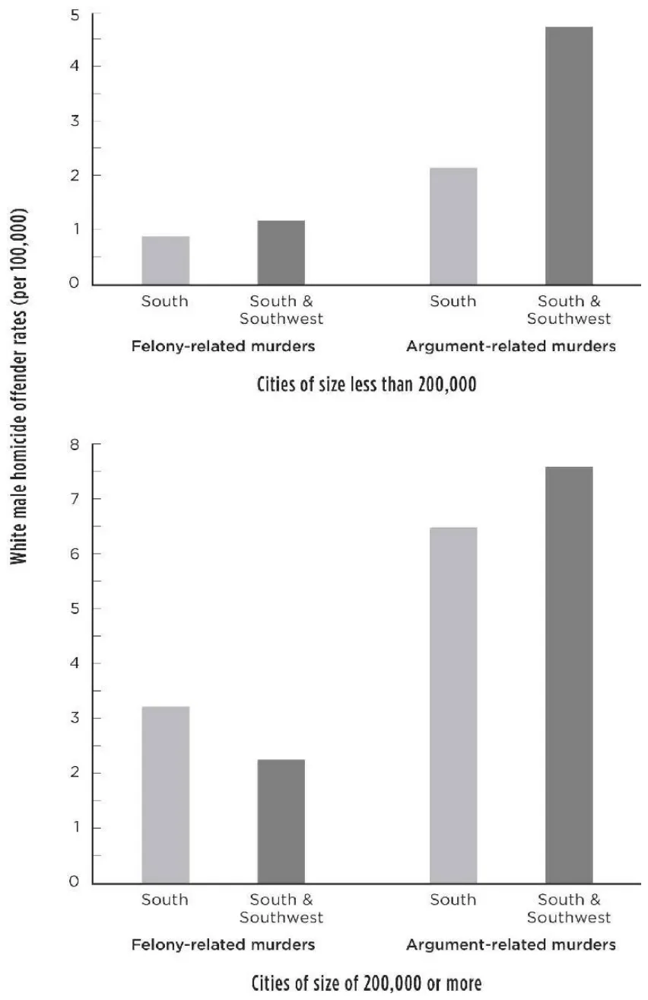
R. Nisbett và D. Cohen, *Culture of Honor: The Psychology of Violence in the South* (Boulder, CO: Westview Press, 1996).
Truy cập bit.ly/2neHKTg để xem phiên bản lớn hơn của biểu đồ này.
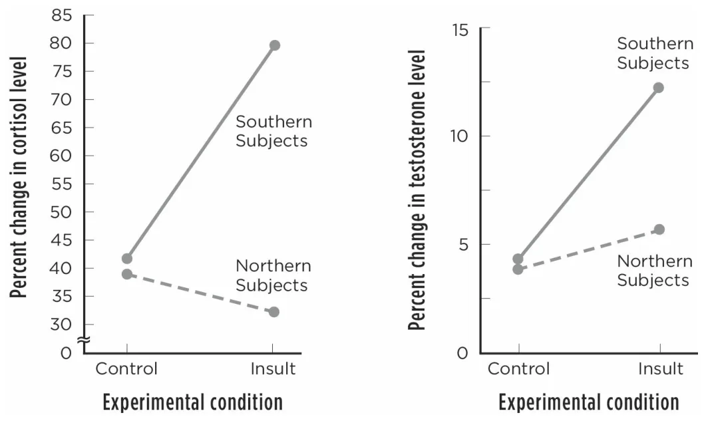
Các sinh viên đại học miền Nam, chứ không phải miền Bắc, cho thấy phản ứng sinh lý mạnh mẽ trước một sự khiêu khích xã hội.
Truy cập bit.ly/2mNCQ4g để xem phiên bản lớn hơn của biểu đồ này.
Bạo lực miền Nam đã được khám phá trong một trong những nghiên cứu tâm lý học ngầu nhất mọi thời đại, liên quan đến việc sử dụng một từ hiếm gặp trên các tạp chí khoa học, do Nisbett và Cohen thực hiện. Các đối tượng nam sinh viên đại học được lấy mẫu máu. Sau đó họ điền vào một bảng câu hỏi về một chủ đề nào đó rồi phải mang đi nộp ở cuối hành lang. Chính tại hành lang hẹp, chất đầy tủ hồ sơ đó, thí nghiệm đã diễn ra. Một nửa số đối tượng đi qua hành lang một cách bình yên vô sự. Nhưng với một nửa còn lại, một cộng tác viên (confederate — hiểu ý chơi chữ chứ? ha-ha) của các nhà tâm lý học, một gã to con vạm vỡ, đi từ hướng ngược lại tới. Khi đối tượng và người đóng thế lách qua nhau, người đóng thế sẽ huých vào đối tượng và, bằng một giọng bực bội, nói ra từ ma thuật — “đồ khốn” (“asshole”) — rồi bước thẳng. Đối tượng tiếp tục đi xuống hành lang để nộp bảng câu hỏi.
Phản ứng trước lời lăng mạ này là gì? Còn tùy. Các đối tượng đến từ miền Nam, chứ không phải từ nơi khác, cho thấy sự gia tăng đột biến về nồng độ testosterone và glucocorticoid — tức giận, cuồng nộ, căng thẳng. Sau đó các đối tượng được kể một kịch bản trong đó một chàng trai chứng kiến một người quen nam giới đang tán tỉnh vị hôn thê của mình — chuyện gì xảy ra tiếp theo trong câu chuyện? Ở nhóm đối chứng, người miền Nam hơi có nhiều khả năng tưởng tượng ra một kết cục bạo lực hơn người miền Bắc. Còn sau khi bị lăng mạ thì sao? Không có thay đổi nào ở người miền Bắc và một sự gia tăng đột biến về bạo lực tưởng tượng ở người miền Nam.
Những nền văn hóa danh dự phương Tây hóa này đến từ đâu? Bạo lực giữa băng Crips và Bloods ở LA không dễ gì truy nguyên về tâm thức của những chiến binh lớn lên cùng nghề chăn bò Tây Tạng. Tuy nhiên, nguồn gốc chăn thả du mục đã được đề xuất để giải thích cho văn hóa danh dự miền Nam. Lý thuyết này được nhà sử học David Hackett Fischer đề xuất lần đầu vào năm 1989: Chủ nghĩa địa phương Mỹ thời kỳ đầu nảy sinh từ việc những người thực dân ở các vùng khác nhau của nước Mỹ đến từ những nơi khác nhau.31 Có những người Hành hương (Pilgrims) từ East Anglia ở New England. Tín đồ Quaker từ North Midlands đến Pennsylvania và Delaware. Những người lao động giao kèo miền nam nước Anh đến Virginia. Còn phần còn lại của miền Nam thì sao? Phần lớn không cân xứng là những người chăn thả gia súc đến từ Scotland, Ireland và miền bắc nước Anh.
Dĩ nhiên, ý tưởng này có một số vấn đề. Những người chăn thả từ Quần đảo Anh chủ yếu định cư ở vùng đồi núi của miền Nam, trong khi văn hóa danh dự lại mạnh hơn ở vùng đồng bằng miền Nam. Những người khác cho rằng đặc tính bạo lực trả thù của miền Nam sinh ra từ kịch bản ác mộng của người da trắng miền Nam về các cuộc nổi dậy của nô lệ. Nhưng hầu hết các nhà sử học đều thấy ý tưởng của Fischer có rất nhiều giá trị.
Bạo lực hướng vào bên trong
Bạo lực của văn hóa danh dự không chỉ xoay quanh mối đe dọa từ bên ngoài — những kẻ trộm lạc đà từ bộ lạc kế bên, gã khốn ở quán ven đường ve vãn bạn gái của ai đó. Thay vào đó, nó cũng được định nghĩa ngang bằng bởi vai trò của nó khi danh dự bị đe dọa từ bên trong. Chương 11 khảo sát khi nào các hành vi vi phạm chuẩn mực của thành viên trong nhóm của bạn sẽ kích động sự che đậy, bào chữa hoặc khoan dung, và khi nào chúng kích động sự trừng phạt công khai nghiêm khắc. Trường hợp sau xảy ra khi “mày đã làm nhục chúng ta trước mặt mọi người,” một đặc sản của văn hóa danh dự. Điều này đặt ra vấn đề về giết người vì danh dự (honor killings).
Điều gì cấu thành một vụ giết người vì danh dự? Ai đó làm một việc bị coi là làm hoen ố thanh danh của gia đình. Một thành viên trong gia đình sau đó giết chết kẻ làm ô uế, thường là công khai, qua đó lấy lại thể diện. Thật không thể tin nổi.
Một số đặc điểm của các vụ giết người vì danh dự:
Dù chúng từng phổ biến trong lịch sử, các vụ việc đương đại hầu hết chỉ giới hạn trong các cộng đồng Hồi giáo, Ấn Độ giáo và đạo Sikh truyền thống. Nạn nhân thường là phụ nữ trẻ. Tội danh phổ biến nhất của họ là gì? Từ chối một cuộc hôn nhân sắp đặt. Tìm cách ly hôn với một người chồng vũ phu và/hoặc người chồng mà họ bị ép cưới từ khi còn nhỏ. Tìm kiếm cơ hội học hành. Chống lại các giáo điều tôn giáo gò bó, chẳng hạn như việc trùm đầu. Kết hôn, chung sống, hẹn hò, giao tiếp hoặc nói chuyện với một người đàn ông không được chấp thuận. Ngoại tình. Cải đạo. Nói cách khác, một người phụ nữ chống lại việc làm tài sản của những người thân nam giới của mình. Và ngoài ra, thật choáng váng, kinh ngạc, một nguyên nhân thường xuyên của các vụ giết người vì danh dự là bị cưỡng hiếp. Trong những trường hợp hiếm hoi đàn ông bị giết vì danh dự, nguyên nhân điển hình là đồng tính luyến ái.
Đã có tranh luận về việc liệu giết người vì danh dự có phải “chỉ là” bạo lực gia đình hay không, và liệu sự chú ý bệnh hoạn của phương Tây đối với chúng có phản ánh thành kiến bài Hồi giáo hay không;32 nếu một gã theo đạo Baptist ở Alabama sát hại vợ mình vì cô ấy muốn ly hôn, chẳng ai đóng khung đó là một vụ “giết người vì danh dự theo Cơ Đốc giáo” phản ánh sự man rợ sâu sắc của tôn giáo. Nhưng các vụ giết người vì danh dự thường khác với bạo lực gia đình thông thường ở nhiều điểm: (a) Bạo lực gia đình thông thường do bạn tình nam gây ra; giết người vì danh dự thường do những người thân nam giới cùng huyết thống thực hiện, thường có sự chấp thuận và tiếp tay của những người thân nữ giới. (b) Giết người vì danh dự hiếm khi là hành động bộc phát vì cuồng nộ mà thường được lên kế hoạch với sự đồng thuận của các thành viên gia đình. (c) Giết người vì danh dự thường được hợp lý hóa trên cơ sở tôn giáo, được thực hiện không chút hối hận và được các lãnh đạo tôn giáo chấp thuận. (d) Giết người vì danh dự được tiến hành công khai — suy cho cùng, làm sao có thể lấy lại “danh dự” cho gia đình bằng cách nào khác? — và thủ phạm được chọn thường là một người thân chưa đủ tuổi thành niên (ví dụ: em trai), để giảm thiểu mức án cho hành vi đó.
Theo một số tiêu chí khá có ý nghĩa, đây không “chỉ là” bạo lực gia đình. Theo ước tính của Liên Hợp Quốc và các nhóm vận động, có từ năm đến hai mươi nghìn vụ giết người vì danh dự xảy ra hàng năm. Và chúng không bị giới hạn ở những vùng đất xa xôi, xa lạ. Thay vào đó, chúng xảy ra khắp phương Tây, nơi các gia trưởng kỳ vọng con gái họ không bị chạm tới bởi thế giới mà họ đã đưa chúng tới sinh sống, nơi sự hòa nhập thành công của một cô con gái vào thế giới này tuyên bố sự vô nghĩa của vị gia trưởng đó.

Từ trái sang phải, bắt đầu từ cột trên cùng: Shafilea Ahmed, Anh, bị cha và mẹ giết sau khi chống lại một cuộc hôn nhân sắp đặt; 17 tuổi. Anooshe Sediq Ghulam, Na Uy, kết hôn năm 13 tuổi; bị chồng giết sau khi đòi ly hôn; 22 tuổi. Palestina Isa, Hoa Kỳ, bị cha mẹ giết vì hẹn hò với người ngoại đạo, nghe nhạc Mỹ và bí mật đi làm thêm; 16 tuổi. Aqsa Parvez, Canada, bị cha và anh trai giết vì từ chối đội khăn hijab; 16 tuổi. Ghazala Khan, Đan Mạch, bị chín thành viên gia đình giết vì từ chối một cuộc hôn nhân sắp đặt; 19 tuổi. Fadime Sahindal, Thụy Điển, bị cha giết vì từ chối một cuộc hôn nhân sắp đặt; 27 tuổi. Hatun Surucu Kird, Đức, bị em trai giết sau khi ly hôn người anh họ mà cô bị ép cưới năm 16 tuổi; 23 tuổi. Hina Salem, Ý, bị cha giết vì từ chối một cuộc hôn nhân sắp đặt; 20 tuổi. Amina và Sarah Said, Hoa Kỳ, cả hai chị em bị cha mẹ giết vì bị cho là trở nên quá Tây hóa; 18 và 17 tuổi.
VĂN HÓA PHÂN TẦNG SO VỚI VĂN HÓA BÌNH ĐẲNG
Một cách ý nghĩa khác để suy nghĩ về sự biến thiên xuyên văn hóa liên quan đến mức độ bất bình đẳng trong việc phân phối các nguồn lực (ví dụ: đất đai, lương thực, hàng hóa vật chất, quyền lực hoặc uy tín).33 Các xã hội săn bắt - hái lượm thường mang tính bình đẳng, như chúng ta sẽ sớm thấy, trong suốt lịch sử chi Người (hominin). Bất bình đẳng xuất hiện khi “của cải” — những thứ để sở hữu và tích lũy — được phát minh sau quá trình thuần hóa động vật và sự phát triển của nông nghiệp. Càng có nhiều của cải, phản ánh sự thặng dư, chuyên môn hóa công việc và trình độ công nghệ, tiềm năng bất bình đẳng càng lớn. Hơn nữa, bất bình đẳng mở rộng khổng lồ khi các nền văn hóa phát minh ra quyền thừa kế trong gia đình. Một khi được phát minh, bất bình đẳng trở nên phổ biến khắp nơi. Trong các xã hội chăn thả du mục truyền thống hoặc nông nghiệp quy mô nhỏ, mức độ bất bình đẳng giàu nghèo ngang bằng hoặc vượt quá mức ở các xã hội công nghiệp hóa bất bình đẳng nhất.
Tại sao các nền văn hóa phân tầng lại thống trị hành tinh, nhìn chung thay thế các nền văn hóa bình đẳng hơn? Đối với nhà sinh học quần thể Peter Turchin, câu trả lời là các nền văn hóa phân tầng phù hợp một cách lý tưởng để trở thành những kẻ chinh phục — chúng đi kèm với các chuỗi mệnh lệnh.34 Cả công trình thực nghiệm lẫn lý thuyết đều cho thấy rằng ngoài ra, trong các môi trường bất ổn, các xã hội phân tầng “có khả năng sống sót qua các đợt thiếu hụt tài nguyên tốt hơn [so với các nền văn hóa bình đẳng] bằng cách dồn tỷ lệ tử vong vào các tầng lớp thấp hơn.” Nói cách khác, khi thời thế khó khăn, sự tiếp cận bất bình đẳng đối với của cải trở thành sự phân phối bất bình đẳng đối với nỗi khốn khổ và cái chết. Tuy nhiên, đáng chú ý là sự phân tầng không phải là giải pháp duy nhất cho sự bất ổn như vậy — đây là điểm mà những người săn bắt - hái lượm có lợi thế nhờ khả năng thu dọn đồ đạc và di chuyển.
Hai mươi thiên niên kỷ sau khi phát minh ra bất bình đẳng, các xã hội phương Tây hóa ở hai thái cực của phổ bất bình đẳng khác nhau một cách đáng kinh ngạc.
Một khác biệt liên quan đến “vốn xã hội” (social capital). Vốn kinh tế là tổng lượng hàng hóa, dịch vụ và nguồn lực tài chính tập thể. Vốn xã hội là tổng lượng các nguồn lực tập thể như lòng tin, sự có đi có lại và sự hợp tác. Bạn biết được rất nhiều điều về vốn xã hội của một cộng đồng chỉ với hai câu hỏi đơn giản. Thứ nhất: “Mọi người nhìn chung có thể tin tưởng được không?” Một cộng đồng nơi hầu hết mọi người trả lời có là nơi có ít ổ khóa hơn, với mọi người để mắt trông chừng con cái của nhau và can thiệp vào những tình huống mà người ta có thể dễ dàng ngoảnh mặt làm ngơ. Câu hỏi thứ hai là một người tham gia bao nhiêu tổ chức — từ thuần túy giải trí (ví dụ: một giải bowling) đến thiết yếu (ví dụ: công đoàn, hội người thuê nhà, ngân hàng hợp tác xã). Một cộng đồng có mức độ tham gia như vậy cao là nơi người dân cảm thấy có năng lực tác động, nơi các thể chế vận hành đủ minh bạch để người dân tin rằng họ có thể tạo ra thay đổi. Những người cảm thấy bất lực không tham gia các tổ chức.
Nói một cách đơn giản, các nền văn hóa có bất bình đẳng thu nhập lớn hơn sẽ có ít vốn xã hội hơn.35 Lòng tin đòi hỏi sự có đi có lại, và sự có đi có lại đòi hỏi sự bình đẳng, trong khi thứ bậc lại xoay quanh sự thống trị và bất đối xứng. Hơn nữa, một nền văn hóa bất bình đẳng cao về nguồn lực vật chất hầu như luôn bất bình đẳng về khả năng giật dây quyền lực, có tiếng nói hiệu lực và được nhìn nhận. (Ví dụ, khi bất bình đẳng thu nhập tăng lên, tỷ lệ người dân buồn đi bỏ phiếu nhìn chung giảm xuống.) Gần như theo định nghĩa, bạn không thể có một xã hội vừa có bất bình đẳng thu nhập kịch tính vừa có vốn xã hội dồi dào. Hay dịch từ ngôn ngữ khoa học xã hội sang tiếng bình dân, sự bất bình đẳng rõ rệt khiến con người đối xử tệ bạc với nhau hơn.
Điều này có thể được chứng minh theo nhiều cách khác nhau, được nghiên cứu ở cấp độ các quốc gia phương Tây hóa, các bang, tỉnh, thành phố và thị trấn. Bất bình đẳng thu nhập càng cao, người ta càng ít có khả năng giúp đỡ ai đó (trong bối cảnh thực nghiệm) và càng kém hào phóng, kém hợp tác trong các trò chơi kinh tế. Ở đầu chương, tôi đã thảo luận về tỷ lệ bắt nạt xuyên văn hóa và “trừng phạt phản xã hội,” nơi người chơi trong các trò chơi kinh tế trừng phạt những người chơi quá hào phóng nhiều hơn trừng phạt những kẻ gian lận.* Các nghiên cứu về những hiện tượng này cho thấy mức độ bất bình đẳng cao và/hoặc vốn xã hội thấp ở một quốc gia dự đoán tỷ lệ bắt nạt cao và tỷ lệ trừng phạt phản xã hội cao.36
Chương 11 khảo sát tâm lý mà chúng ta dùng để nghĩ về những người có địa vị kinh tế xã hội khác nhau; không có gì ngạc nhiên, trong các xã hội bất bình đẳng, những người ở trên đỉnh tạo ra những lời biện minh cho địa vị của họ.37 Và càng bất bình đẳng, kẻ có quyền càng bám víu vào những huyền thoại về những phước lành ẩn giấu của sự phục tùng — “Họ có thể nghèo, nhưng ít ra họ hạnh phúc/trung thực/được yêu thương.” Theo lời của các tác giả một bài báo, “Các xã hội bất bình đẳng có thể cần sự nước đôi (ambivalence) để ổn định hệ thống: Bất bình đẳng thu nhập bù đắp cho các nhóm bằng những hình ảnh xã hội tích cực một phần.”
Như vậy, các nền văn hóa bất bình đẳng khiến con người kém tử tế hơn. Bất bình đẳng cũng khiến con người kém khỏe mạnh hơn. Điều này giúp giải thích một hiện tượng vô cùng quan trọng trong y tế công cộng, cụ thể là “độ dốc địa vị kinh tế xã hội (SES)/sức khỏe” — như đã lưu ý, hết nền văn hóa này đến nền văn hóa khác, bạn càng nghèo, sức khỏe của bạn càng tệ, tỷ lệ mắc và tác động của nhiều loại bệnh tật càng cao, và tuổi thọ kỳ vọng của bạn càng ngắn.38
Nghiên cứu sâu rộng đã khảo sát độ dốc SES/sức khỏe. Bốn điểm loại trừ nhanh: (a) Độ dốc này không phải do sức khỏe kém kéo tụt SES của con người xuống. Thay vào đó, SES thấp, bắt đầu từ thời thơ ấu, dự đoán sức khỏe kém sau này ở tuổi trưởng thành. (b) Không phải người nghèo có sức khỏe tồi tệ còn mọi người khác đều khỏe mạnh như nhau. Thay vào đó, với mỗi bậc đi xuống trên thang SES, bắt đầu từ đỉnh, sức khỏe trung bình lại xấu đi. (c) Độ dốc này không phải do người nghèo ít được tiếp cận dịch vụ chăm sóc sức khỏe hơn; nó xảy ra ở các quốc gia có chăm sóc sức khỏe toàn dân, không liên quan đến mức độ sử dụng hệ thống y tế, và xảy ra đối với cả những căn bệnh không liên quan đến tiếp cận y tế (ví dụ: tiểu đường tuýp 1 ở trẻ vị thành niên, nơi việc đi khám năm lần một ngày cũng chẳng thay đổi được tỷ lệ mắc bệnh). (d) Chỉ khoảng một phần ba độ dốc được giải thích bởi việc SES thấp đồng nghĩa với nhiều yếu tố nguy cơ sức khỏe hơn (ví dụ: chì trong nước uống, bãi rác thải độc hại gần nhà, hút thuốc và uống rượu nhiều hơn) và ít yếu tố bảo vệ hơn (ví dụ: mọi thứ từ những tấm nệm tốt hơn cho tấm lưng làm việc quá sức đến thẻ thành viên câu lạc bộ sức khỏe).
Vậy nguyên nhân chính của độ dốc này là gì? Công trình then chốt của Nancy Adler tại UCSF cho thấy không hẳn việc nghèo khổ dự đoán sức khỏe kém. Mà là *cảm thấy* nghèo khổ — SES chủ quan của một người (ví dụ: câu trả lời cho câu hỏi “Bạn cảm thấy mình đang làm ăn thế nào về mặt tài chính khi so sánh bản thân với những người khác?”) là yếu tố dự đoán sức khỏe tốt ít nhất cũng ngang bằng với SES khách quan.
Công trình cốt yếu của nhà dịch tễ học xã hội Richard Wilkinson thuộc Đại học Nottingham đã bổ sung vào bức tranh này: không hẳn sự nghèo đói dự đoán sức khỏe kém; mà là sự nghèo đói giữa cảnh sung túc — bất bình đẳng thu nhập. Cách chắc chắn nhất để khiến ai đó cảm thấy nghèo là dí mũi họ vào những gì họ không có.
Tại sao mức độ bất bình đẳng thu nhập cao (độc lập với mức độ nghèo đói tuyệt đối) lại khiến người nghèo không khỏe mạnh? Hai con đường chồng lấn lên nhau:
Một lời giải thích tâm lý xã hội đã được Ichiro Kawachi thuộc Đại học Harvard ủng hộ. Khi vốn xã hội giảm đi (nhờ bất bình đẳng), căng thẳng tâm lý tăng lên. Một khối lượng tài liệu khổng lồ khám phá cách sự căng thẳng như vậy — thiếu kiểm soát, thiếu khả năng dự đoán, thiếu lối thoát cho sự thất vọng và thiếu hỗ trợ xã hội — kích hoạt mãn tính phản ứng căng thẳng, điều mà như chúng ta đã thấy ở chương 4, ăn mòn sức khỏe theo vô số cách.
Một lời giải thích tân duy vật (neomaterialist) đã được Robert Evans thuộc Đại học British Columbia và George Kaplan thuộc Đại học Michigan đưa ra. Nếu bạn muốn cải thiện sức khỏe và chất lượng cuộc sống cho người dân bình thường trong một xã hội, bạn chi tiền cho hàng hóa công cộng — giao thông công cộng tốt hơn, đường phố an toàn hơn, nước sạch hơn, trường công tốt hơn, y tế toàn dân. Nhưng bất bình đẳng thu nhập càng lớn, khoảng cách tài chính giữa người giàu và người bình thường càng xa và do đó người giàu càng cảm thấy ít lợi ích trực tiếp hơn từ việc cải thiện hàng hóa công cộng. Thay vào đó, họ hưởng lợi nhiều hơn từ việc trốn thuế và chi tiền cho hàng hóa tư nhân của riêng họ — tài xế riêng, khu dân cư có cổng bảo vệ, nước đóng chai, trường tư, bảo hiểm y tế tư nhân. Như Evans viết, “Thu nhập trong một xã hội càng bất bình đẳng, những bất lợi đối với các thành viên khá giả hơn từ chi tiêu công càng rõ rệt, và những thành viên đó càng có nhiều nguồn lực [sẵn có] để dựng lên sự phản đối chính trị hiệu quả” (ví dụ: vận động hành lang). Evans lưu ý cách “sự ly khai của người giàu” này thúc đẩy “sự sung túc tư nhân và sự tồi tàn công cộng.” Đồng nghĩa với sức khỏe tồi tệ hơn cho những người không có gì.39
Mối liên hệ bất bình đẳng/sức khỏe mở đường cho việc hiểu cách bất bình đẳng cũng tạo ra nhiều tội phạm và bạo lực hơn. Tôi có thể sao chép và dán đoạn văn vừa rồi, thay thế “sức khỏe kém” bằng “tội phạm cao,” thế là xong. Nghèo đói không phải là yếu tố dự đoán tội phạm mạnh bằng sự nghèo đói giữa cảnh sung túc. Ví dụ, mức độ bất bình đẳng thu nhập là một yếu tố dự đoán lớn đối với tỷ lệ tội phạm bạo lực trên khắp các bang của Mỹ và trên khắp các quốc gia công nghiệp hóa.40
Tại sao bất bình đẳng thu nhập dẫn đến nhiều tội phạm hơn? Một lần nữa, có góc độ tâm lý xã hội — bất bình đẳng đồng nghĩa với ít vốn xã hội hơn, ít lòng tin, ít hợp tác và ít người để mắt trông chừng nhau hơn. Và có góc độ tân duy vật — bất bình đẳng đồng nghĩa với việc người giàu ly khai nhiều hơn khỏi việc đóng góp cho lợi ích công cộng. Chẳng hạn, Kaplan đã chỉ ra rằng các bang có bất bình đẳng thu nhập lớn hơn chi tiêu theo tỷ lệ ít tiền hơn cho công cụ phòng chống tội phạm then chốt đó, tức là giáo dục. Giống như với bất bình đẳng và sức khỏe, hai con đường tâm lý xã hội và tân duy vật cộng hưởng với nhau.
Một điểm u ám cuối cùng về bất bình đẳng và bạo lực. Như chúng ta đã thấy, một con chuột bị sốc điện kích hoạt phản ứng căng thẳng. Nhưng một con chuột bị sốc điện mà sau đó có thể cắn xé một con chuột khác lại có phản ứng căng thẳng ít hơn. Tương tự với khỉ đầu chó — nếu bạn có thứ bậc thấp, một cách đáng tin cậy để giảm tiết glucocorticoid là trút sự hung hăng lên những cá thể thậm chí còn thấp hơn trong trật tự mổ (pecking order). Ở đây cũng có điều tương tự — bất chấp cơn ác mộng của phe bảo thủ về đấu tranh giai cấp, về việc người nghèo vùng lên tàn sát người giàu, khi bất bình đẳng châm ngòi cho bạo lực, phần lớn là người nghèo tự cắn xé lẫn nhau.
Điểm này được minh họa bằng một phép ẩn dụ tuyệt vời cho hậu quả của bất bình đẳng xã hội.41 Tần suất “cơn thịnh nộ trên máy bay” (air rage) — việc một hành khách mất kiểm soát nghiêm trọng, gây rối, nguy hiểm vì một chuyện gì đó trên chuyến bay — ngày càng gia tăng. Hóa ra có một yếu tố dự đoán đáng kể cho nó: nếu máy bay có khoang hạng nhất, xác suất một hành khách hạng phổ thông nổi cơn thịnh nộ tăng gần gấp bốn lần. Nếu bắt hành khách hạng phổ thông phải đi bộ xuyên qua khoang hạng nhất khi lên máy bay, bạn làm tăng cơ hội đó lên hơn gấp đôi nữa. Chẳng có gì bằng việc bắt đầu một chuyến bay bằng cách bị nhắc nhở về vị trí của bạn trong hệ thống phân cấp giai cấp. Và để hoàn thiện sự tương đồng với tội phạm bạo lực, khi cơn thịnh nộ trên máy bay bị kích thích ở khoang phổ thông bởi những lời nhắc nhở về bất bình đẳng, kết quả không phải là một hành khách hạng phổ thông điên cuồng chạy nước rút lên khoang hạng nhất để hô vang các khẩu hiệu Marx-xít. Mà là gã đó cư xử tồi tệ với bà cụ ngồi cạnh mình, hoặc với cô tiếp viên hàng không.*
QUY MÔ DÂN SỐ, MẬT ĐỘ DÂN SỐ, TÍNH KHÔNG ĐỒNG NHẤT CỦA DÂN SỐ
Năm 2008 đánh dấu một cột mốc của nhân loại, một điểm chuyển tiếp được tạo dựng suốt chín nghìn năm: lần đầu tiên, đa số loài người sống ở các thành phố.
Quỹ đạo của loài người từ các khu định cư bán cố định đến các siêu đô thị nhìn chung là có lợi. Ở thế giới phát triển, khi so sánh với dân số nông thôn, cư dân thành thị thường khỏe mạnh hơn và giàu có hơn; các mạng lưới xã hội lớn hơn tạo điều kiện cho sự đổi mới; nhờ tính kinh tế theo quy mô, các thành phố để lại dấu chân sinh thái bình quân đầu người nhỏ hơn.42
Cuộc sống đô thị tạo ra một kiểu não bộ khác. Điều này được chỉ ra trong một nghiên cứu năm 2011 trên các đối tượng từ nhiều thành phố, thị trấn và vùng nông thôn, những người trải qua một tác nhân gây căng thẳng xã hội thực nghiệm trong khi được chụp quét não. Phát hiện then chốt là dân số nơi một người sinh sống càng lớn, hạch hạnh nhân (amygdala) của họ càng phản ứng mạnh mẽ hơn trong suốt tác nhân gây căng thẳng đó.*43
Quan trọng nhất đối với mục đích của chúng ta, con người đô thị hóa làm một việc hoàn toàn chưa từng có tiền lệ trong giới linh trưởng — thường xuyên chạm mặt những người lạ không bao giờ gặp lại nữa, thúc đẩy sự phát minh ra hành động ẩn danh. Suy cho cùng, phải đến quá trình đô thị hóa thế kỷ mười chín thì tiểu thuyết trinh thám mới được phát minh ra, thường lấy bối cảnh ở các thành phố — trong bối cảnh truyền thống chẳng có chuyện “ai là hung thủ” (whodunit), vì ai cũng biết ai đã làm gì.
Các nền văn hóa đang phát triển phải phát minh ra các cơ chế để thực thi chuẩn mực giữa những người lạ. Ví dụ, trên khắp nhiều nền văn hóa truyền thống, nhóm càng lớn, hình phạt đối với các vi phạm chuẩn mực càng nặng và văn hóa càng nhấn mạnh vào việc đối xử công bằng với người lạ. Hơn nữa, các nhóm lớn hơn đã tiến hóa “sự trừng phạt của bên thứ ba” (hãy đón xem thêm ở chương tiếp theo) — thay vì nạn nhân tự trừng phạt kẻ vi phạm chuẩn mực, hình phạt được thực thi bởi các bên thứ ba khách quan, chẳng hạn như cảnh sát và tòa án. Ở mức cực đoan, một tội ác không chỉ biến nạn nhân của nó thành nạn nhân mà còn là một sự xúc phạm đối với tập thể dân chúng — do đó mới có vụ án “Nhân dân kiện Joe Blow.”*44
Cuối cùng, cuộc sống trong các quần thể lớn hơn nuôi dưỡng kẻ trừng phạt tối thượng thuộc bên thứ ba. Như được ghi nhận bởi Ara Norenzayan thuộc Đại học British Columbia, chỉ khi các xã hội phát triển đủ lớn đến mức người dân thường xuyên chạm mặt người lạ thì “Các Vị Thần Lớn” (Big Gods) mới xuất hiện — những vị thần quan tâm đến đạo đức con người và trừng phạt những lỗi lầm của chúng ta.45 Các xã hội có tần suất tương tác ẩn danh cao có xu hướng thuê ngoài việc trừng phạt cho các vị thần.* Ngược lại, các vị thần của người săn bắt - hái lượm ít có khả năng quan tâm xem chúng ta ngoan hay hư hơn cả xác suất ngẫu nhiên. Hơn nữa, trong các công trình tiếp theo trên nhiều nền văn hóa truyền thống, Norenzayan đã chỉ ra rằng con người càng coi các vị thần đạo đức của họ là hiểu biết tường tận và hay trừng phạt, thì họ càng hào phóng hơn với những người lạ cùng tôn giáo trong một trò chơi phân bổ tài chính.
Tách biệt khỏi quy mô dân số, còn mật độ dân số thì sao? Một nghiên cứu khảo sát ba mươi ba quốc gia phát triển đã mô tả đặc điểm “độ chặt” (tightness) của mỗi quốc gia — mức độ mà chính phủ chuyên chế, bất đồng chính kiến bị đàn áp, hành vi bị giám sát, vi phạm bị trừng phạt, cuộc sống bị điều chỉnh bởi giáo điều tôn giáo, công dân coi nhiều hành vi là không phù hợp (ví dụ: hát trong thang máy, chửi thề khi phỏng vấn xin việc).46 Mật độ dân số cao hơn dự đoán các nền văn hóa chặt chẽ hơn — cả mật độ cao ở hiện tại và, đáng kinh ngạc là, trong lịch sử, vào năm 1500.
Vấn đề về tác động của mật độ dân số đối với hành vi đã làm nảy sinh một hiện tượng nổi tiếng, mà hầu hết là nổi tiếng một cách sai lầm.
Vào những năm 1950, John Calhoun tại Viện Sức khỏe Tâm thần Quốc gia đã đặt câu hỏi điều gì xảy ra với hành vi của chuột ở mật độ dân số cao hơn, một nghiên cứu được thúc đẩy bởi các thành phố ngày càng phình to của nước Mỹ.47 Và trong các bài báo dành cho cả giới khoa học lẫn công chúng phổ thông, Calhoun đã đưa ra một câu trả lời rõ ràng: sống ở mật độ cao tạo ra hành vi “lệch lạc” và “bệnh lý xã hội.” Chuột trở nên bạo lực; chuột trưởng thành giết và ăn thịt lẫn nhau; chuột cái hung hăng với con non; xuất hiện tình trạng cuồng dâm bừa bãi ở chuột đực (ví dụ: cố gắng giao phối với những con cái không ở trong kỳ động dục).
Cách viết về chủ đề này, bắt đầu từ Calhoun, rất giàu màu sắc. Mô tả khô khan về “cuộc sống mật độ cao” được thay thế bằng “sự chật chội” (crowding). Những con đực hung hăng được mô tả là “phát điên,” những con cái hung hăng là “nữ chiến binh Amazon.” Những con chuột sống trong “khu ổ chuột của chuột” này trở thành “những kẻ bỏ cuộc xã hội,” “tự kỷ,” hoặc “tội phạm vị thành niên.” Một chuyên gia về hành vi của chuột, A. S.
Parkes, đã mô tả lũ chuột của Calhoun là “những bà mẹ không có tính mẫu tử, những kẻ đồng tính và những xác sống” (quả là bộ ba thú vị để mời đến ăn tối vào những năm 1950).48
Công trình này có sức ảnh hưởng khổng lồ, được giảng dạy cho các nhà tâm lý học, kiến trúc sư và nhà quy hoạch đô thị; hơn một triệu bản in lại của báo cáo gốc của Calhoun trên tạp chí *Scientific American* đã được yêu cầu; các nhà xã hội học, nhà báo và chính trị gia công khai so sánh cư dân của một số khu nhà ở xã hội cụ thể với lũ chuột của Calhoun. Thông điệp rút ra đã tạo nên những gợn sóng khắp vùng trung tâm nước Mỹ đang tiến vào thập niên sáu mươi hỗn loạn: các khu nội đô sinh ra bạo lực, bệnh lý và sự lệch lạc xã hội.
Lũ chuột của Calhoun phức tạp hơn thế (một điều bị xem nhẹ trong các bài viết phổ thông của ông). Sống ở mật độ cao không làm cho chuột trở nên hung hăng hơn. Thay vào đó, nó làm cho những con chuột hung hăng trở nên hung hăng hơn. (Điều này lặp lại các phát hiện rằng cả testosterone, rượu, lẫn bạo lực trên truyền thông đều không làm tăng bạo lực một cách đồng đều. Thay vào đó, chúng khiến những cá nhân bạo lực trở nên nhạy cảm hơn với các tín hiệu xã hội khơi gợi bạo lực.) Ngược lại, sự chật chội khiến những cá thể không hung hăng trở nên nhút nhát hơn. Nói cách khác, nó phóng đại các khuynh hướng xã hội có sẵn từ trước.
Những kết luận sai lầm của Calhoun về loài chuột thậm chí còn không đúng với con người. Ở một số thành phố — chẳng hạn như Chicago vào khoảng năm 1970 — mật độ dân số cao hơn ở các khu dân cư quả thực dự đoán nhiều bạo lực hơn. Tuy nhiên, một số nơi có mật độ dân số cao nhất trên trái đất — Hồng Kông, Singapore và Tokyo — lại có tỷ lệ bạo lực cực kỳ thấp. Sống ở mật độ cao không đồng nghĩa với sự hung hăng ở chuột hay ở người.
— Các phần trước đã khảo sát tác động của việc sống cùng rất nhiều người, và trong không gian chật hẹp. Vậy còn tác động của việc sống cùng những kiểu người khác nhau thì sao? Sự đa dạng. Tính không đồng nhất. Sự pha trộn. Tính khảm.
Hai câu chuyện đối lập hiện lên trong tâm trí:
Khu phố của Mister Rogers: Khi những người thuộc các sắc tộc, chủng tộc hoặc tôn giáo khác nhau sống cùng nhau, họ trải nghiệm những điểm tương đồng thay vì những điểm khác biệt và nhìn nhận nhau như những cá nhân, vượt lên trên các khuôn mẫu định kiến. Thương mại lưu thông, nuôi dưỡng sự công bằng và tương hỗ. Tất yếu, những sự phân đôi tan biến nhờ hôn nhân dị chủng, và chẳng mấy chốc bạn đang vui vẻ xem đứa cháu của mình diễn kịch ở trường tại khu phố “bên kia” của thị trấn. Hãy hình dung hòa bình thế giới.
Băng Sharks đấu với băng Jets: Những kiểu người khác nhau sống sát vách cọ xát, và do đó làm trầy xước khuỷu tay nhau thường xuyên. Hành động tự hào khẳng định bản sắc văn hóa của một bên có cảm giác như một cú chọc ngoáy thù địch đối với bên kia, không gian công cộng trở thành bãi thử cho các cuộc chiến giành địa bàn, tài sản chung trở thành bi kịch.
Bất ngờ thay: cả hai kết cục đều xảy ra; chương cuối cùng sẽ khám phá những hoàn cảnh mà sự tiếp xúc giữa các nhóm dẫn đến kết cục này thay vì kết cục kia. Điều thú vị nhất tại thời điểm này là tầm quan trọng của các đặc tính không gian của tính không đồng nhất. Hãy xem xét một khu vực tràn ngập người từ Elbonia và Kerplakistan, hai nhóm thù địch, mỗi nhóm chiếm một nửa dân số. Ở một thái cực, vùng đất bị chia đôi ở giữa, mỗi nhóm chiếm một bên, tạo ra một đường biên giới duy nhất giữa hai nhóm. Ở thái cực kia là một bàn cờ siêu nhỏ gồm các sắc tộc xen kẽ nhau, trong đó mỗi ô vuông trên lưới có kích thước bằng một người, tạo ra một số lượng khổng lồ các đường biên giới giữa người Elbonia và người Kerplaki.
Theo trực giác, cả hai kịch bản đều nên thiên về việc chống lại xung đột. Trong điều kiện tách biệt tối đa, mỗi nhóm có một khối lượng tới hạn để tự chủ tại địa phương, và tổng chiều dài đường biên giới, do đó là mức độ cọ xát giữa các nhóm, được giảm thiểu. Trong kịch bản pha trộn tối đa, không có mảng đồng nhất sắc tộc nào đủ lớn để nuôi dưỡng một bản sắc tự thân có thể thống trị một không gian công cộng — có gì to tát đâu nếu ai đó dựng một lá cờ giữa hai chân mình và tuyên bố mét vuông của họ là Đế chế Elbonia hay Cộng hòa Kerplakistan.
Nhưng trong thế giới thực, mọi thứ luôn nằm ở khoảng giữa hai thái cực đó, và với sự biến thiên về kích thước trung bình của mỗi “mảng sắc tộc.” Kích thước mảng, và do đó là độ dài đường biên giới, có ảnh hưởng đến các mối quan hệ không?
Điều này đã được khám phá trong một bài báo hấp dẫn từ Viện Hệ thống Phức tạp New England có cái tên rất hợp, nằm ngay cuối phố từ MIT.49 Các tác giả đầu tiên xây dựng một hỗn hợp Elbonia/Kerplaki, với các cá nhân được phân bố ngẫu nhiên như các điểm ảnh (pixel) trên một lưới. Các điểm ảnh được cấp một mức độ di động nhất định cộng với xu hướng tự phân loại tụ họp với các điểm ảnh cùng loại khác. Khi quá trình tự phân loại tiến triển, một thứ xuất hiện — các hòn đảo và bán đảo của người Elbonia giữa một biển người Kerplaki, hoặc ngược lại, một điều kiện mà theo trực giác có vẻ đầy rẫy tiềm năng bạo lực giữa các nhóm. Khi quá trình tự phân loại tiếp tục, số lượng các hòn đảo và bán đảo biệt lập như vậy giảm dần. Giai đoạn trung gian tối đa hóa số lượng các hòn đảo và bán đảo cũng tối đa hóa số người sống trong một vùng đất bị bao vây.*
Các tác giả sau đó xem xét một khu vực bị Balkan hóa, cụ thể là vùng Balkan, Nam Tư cũ, vào năm 1990. Đây là thời điểm ngay trước khi người Serbia, người Bosnia, người Croatia và người Albania bắt đầu cuộc chiến tranh tồi tệ nhất châu Âu kể từ Thế chiến II, cuộc chiến đã dạy cho chúng ta tên của những địa danh như Srebrenica và những nhân vật như Slobodan Milošević. Sử dụng một phân tích tương tự, với kích thước đảo sắc tộc dao động từ khoảng hai mươi đến sáu mươi km đường kính, họ đã xác định được những điểm về mặt lý thuyết là dễ xảy ra bạo lực nhất; đáng kinh ngạc là điều này đã dự đoán chính xác các địa điểm diễn ra các trận đánh lớn và các vụ thảm sát trong cuộc chiến.
Theo lời của các tác giả, bạo lực có thể nảy sinh “do cấu trúc của các đường biên giới giữa các nhóm hơn là kết quả của những xung đột cố hữu giữa chính các nhóm đó.” Sau đó họ chỉ ra rằng sự rõ ràng của các đường biên giới cũng rất quan trọng. Những hàng rào tốt, rạch ròi — ví dụ như dãy núi hoặc dòng sông giữa các nhóm — tạo nên những người hàng xóm tốt. “Hòa bình không phụ thuộc vào sự chung sống hòa nhập, mà phụ thuộc vào các ranh giới địa hình và chính trị được xác định rõ ràng ngăn cách các nhóm, cho phép quyền tự trị một phần trong một quốc gia duy nhất,” các tác giả kết luận.
Như vậy, không chỉ quy mô, mật độ và tính không đồng nhất của các quần thể giúp giải thích bạo lực giữa các nhóm, mà các khuôn mẫu và sự rõ ràng của sự phân mảnh cũng đóng vai trò tương tự. Những vấn đề này sẽ được xem xét lại trong chương cuối cùng.
TÀN DƯ CỦA CÁC CUỘC KHỦNG HOẢNG VĂN HÓA
Trong những thời khắc khủng hoảng — trận oanh tạc London Blitz, New York sau sự kiện 11/9, San Francisco sau trận động đất Loma Prieta năm 1989 — con người xích lại gần nhau.* Điều đó thật tuyệt. Nhưng ngược lại, mối đe dọa mãn tính, lan tràn, ăn mòn không nhất thiết tạo ra điều tương tự cho con người hay các nền văn hóa.
Mối đe dọa nguyên thủy của nạn đói đã để lại những dấu ấn lịch sử. Quay trở lại nghiên cứu về sự khác biệt giữa độ chặt của các quốc gia (trong đó các quốc gia “chặt” được đặc trưng bởi chế độ chuyên chế, đàn áp bất đồng chính kiến, và sự hiện diện cũng như thực thi khắp nơi các chuẩn mực hành vi).50 Những loại quốc gia nào thì chặt chẽ hơn?* Ngoài các tương quan mật độ dân số cao đã đề cập trước đó, còn có nhiều nạn đói trong lịch sử hơn, lượng thức ăn nạp vào thấp hơn, và mức độ protein và chất béo trong chế độ ăn uống thấp hơn. Nói cách khác, đây là những nền văn hóa bị đe dọa kinh niên bởi những cái dạ dày trống rỗng.
Độ chặt văn hóa cũng được dự đoán bởi sự suy thoái môi trường — ít đất canh tác hoặc nước sạch hơn, ô nhiễm nhiều hơn. Tương tự, sự suy thoái môi trường sống và sự cạn kiệt quần thể động vật làm trầm trọng thêm xung đột trong các nền văn hóa phụ thuộc vào thịt thú rừng. Và một chủ đề lớn trong cuốn sách kiệt tác *Sụp đổ: Các xã hội đã chọn thất bại hay thành công như thế nào* (Collapse) của Jared Diamond là cách sự suy thoái môi trường giải thích sự sụp đổ đầy bạo lực của nhiều nền văn minh.
Rồi còn dịch bệnh. Ở chương 15, chúng ta sẽ chạm tới “miễn dịch hành vi” (behavioral immunity), khả năng của nhiều loài trong việc phát hiện các dấu hiệu bệnh tật ở các cá thể khác; như chúng ta sẽ thấy, những tín hiệu ngầm về bệnh truyền nhiễm khiến con người trở nên bài ngoại hơn. Tương tự, tỷ lệ lưu hành bệnh truyền nhiễm trong lịch sử dự đoán mức độ cởi mở của một nền văn hóa đối với người ngoài. Hơn nữa, các yếu tố dự đoán khác về độ chặt văn hóa bao gồm việc có tỷ lệ đại dịch trong lịch sử cao, tỷ lệ tử vong ở trẻ sơ sinh và trẻ nhỏ cao, và số năm trung bình tích lũy bị mất do bệnh truyền nhiễm cao hơn.
Rõ ràng, thời tiết ảnh hưởng đến tỷ lệ bạo lực có tổ chức — hãy xem xét hàng thế kỷ các cuộc chiến tranh châu Âu tạm nghỉ trong thời điểm khắc nghiệt nhất của mùa đông và mùa gieo trồng.51 Rộng hơn nữa là khả năng của thời tiết và khí hậu trong việc định hình văn hóa. Nhà sử học người Kenya Ali Mazrui đã gợi ý rằng một lý do cho sự thành công trong lịch sử của châu Âu, so với châu Phi, chính là thời tiết — việc lập kế hoạch trước theo kiểu phương Tây nảy sinh từ thực tế hàng năm rằng mùa đông đang đến.* Những thay đổi thời tiết quy mô lớn hơn được biết là có hệ quả rõ rệt. Trong nghiên cứu về độ chặt, độ chặt văn hóa cũng được dự đoán bởi lịch sử lũ lụt, hạn hán và bão xoáy. Một khía cạnh thời tiết liên quan khác là Dao động phương Nam, được gọi là El Niño, sự dao động kéo dài nhiều năm của nhiệt độ nước trung bình ở vùng xích đạo Thái Bình Dương. Các đợt El Niño, xảy ra khoảng mười hai năm một lần, đi kèm với thời tiết ấm hơn, khô hơn (với điều ngược lại trong các năm La Niña) và gắn liền với hạn hán và thiếu lương thực ở nhiều nước đang phát triển. Trong năm mươi năm qua, các đợt El Niño đã làm tăng gần gấp đôi khả năng xảy ra xung đột dân sự, chủ yếu bằng cách thổi bùng ngọn lửa của các xung đột có sẵn từ trước.
Mối quan hệ giữa hạn hán và bạo lực rất lắt léo. Xung đột dân sự được đề cập ở đoạn trước liên quan đến những cái chết do giao tranh giữa lực lượng chính phủ và phi chính phủ (tức là nội chiến hoặc nổi dậy). Do đó, thay vì tranh giành một hố nước hay một cánh đồng chăn thả, đây là cuộc chiến giành giật những đặc quyền hiện đại của quyền lực. Nhưng trong bối cảnh truyền thống, hạn hán có thể đồng nghĩa với việc phải dành nhiều thời gian hơn để kiếm ăn hoặc gánh nước cho cây trồng của bạn. Đi cướp để bắt phụ nữ của nhóm khác không phải là ưu tiên hàng đầu, và việc gì phải đi trộm bò của người khác khi bạn thậm chí còn chẳng nuôi nổi bò của chính mình? Xung đột giảm xuống.
Điều thú vị là một chuyện tương tự cũng xảy ra ở khỉ đầu chó. Thông thường, khỉ đầu chó trong các hệ sinh thái trù phú như Serengeti chỉ cần kiếm ăn vài giờ mỗi ngày. Một phần điều khiến khỉ đầu chó trở nên đáng yêu đối với các nhà linh trưởng học là việc này để lại cho chúng khoảng chín giờ mỗi ngày để dành cho các mưu mô xã hội — hò hẹn, đấu đá và đâm sau lưng. Năm 1984 có một trận hạn hán tàn khốc ở Đông Phi. Ở loài khỉ đầu chó, dù vẫn còn đủ thức ăn, nhưng chúng mất từng giây phút tỉnh táo để kiếm đủ lượng calo; sự hung hăng giảm xuống.52
Vì vậy, áp lực sinh thái có thể làm tăng hoặc giảm sự hung hăng. Điều này đặt ra vấn đề then chốt về việc sự nóng lên toàn cầu sẽ tác động thế nào đến những hành vi tốt đẹp nhất và tồi tệ nhất của chúng ta. Chắc chắn sẽ có một số mặt tích cực. Một số khu vực sẽ có mùa sinh trưởng dài hơn, làm tăng nguồn cung lương thực và giảm căng thẳng. Một số người sẽ lánh xa xung đột, vì mải bận rộn cứu nhà cửa khỏi mực nước biển dâng hoặc trồng dứa ở Bắc Cực. Nhưng giữa những cuộc cãi vã về chi tiết trong các mô hình dự báo, sự đồng thuận chung là sự nóng lên toàn cầu sẽ chẳng mang lại điều gì tốt đẹp cho xung đột toàn cầu. Trước hết, nhiệt độ ấm hơn khiến con người dễ nổi nóng — tại các thành phố vào mùa hè, cứ mỗi mức tăng ba độ nhiệt độ, bạo lực giữa các cá nhân tăng 4 phần trăm và bạo lực nhóm tăng 14 phần trăm. Nhưng tin xấu của sự nóng lên toàn cầu mang tính toàn cầu hơn nhiều — sa mạc hóa, mất đất canh tác do nước biển dâng, nhiều hạn hán hơn. Một phân tích tổng hợp có tầm ảnh hưởng đã dự báo mức tăng tương ứng 16 phần trăm và 50 phần trăm đối với bạo lực giữa các cá nhân và bạo lực nhóm ở một số khu vực vào năm 2050.53
Ồ, TẠI SAO LẠI KHÔNG CHỨ: TÔN GIÁO
Đã đến lúc bàn nhanh kiểu đánh nhanh rút gọn về tôn giáo trước khi xem xét nó ở chương cuối cùng. Vô số lý thuyết giải thích tại sao con người cứ liên tục phát minh ra các tôn giáo. Nó còn hơn cả lực hút của con người hướng về thế giới siêu nhiên; như được nêu trong một bài tổng quan, “Chuột Mickey có sức mạnh siêu nhiên, nhưng chẳng ai thờ phụng hay sẵn sàng chiến đấu — hoặc giết người — vì nó cả. Bộ não xã hội của chúng ta có thể giúp giải thích tại sao trẻ em trên khắp thế giới bị thu hút bởi những chiếc tách trà biết nói, nhưng tôn giáo còn hơn thế rất nhiều.” Tại sao tôn giáo nảy sinh? Bởi vì nó làm cho các nhóm nội trở nên hợp tác hơn và có khả năng tồn tại cao hơn (hãy đón xem thêm ở chương tiếp theo). Bởi vì con người cần nhân cách hóa và nhìn thấy tác nhân cũng như quan hệ nhân quả khi đối mặt với những điều chưa biết. Hoặc có lẽ việc phát minh ra các vị thần là một sản phẩm phụ nảy sinh từ kiến trúc của bộ não xã hội của chúng ta.54
Giữa những suy đoán này, điều gây choáng ngợp hơn nhiều là sự đa dạng của hàng nghìn tôn giáo mà chúng ta đã phát minh ra. Chúng khác nhau về số lượng và giới tính của các vị thần; về việc có thế giới bên kia hay không, nó trông như thế nào và cần làm gì để bước vào đó; về việc các vị thần có phán xét hay can thiệp vào con người hay không; về việc chúng ta sinh ra đã mang tội lỗi hay thuần khiết và liệu tình dục có làm thay đổi những trạng thái đó hay không; về việc huyền thoại về người sáng lập tôn giáo là sự thiêng liêng ngay từ đầu (đến mức, chẳng hạn, các nhà thông thái đến thăm người sáng lập khi còn sơ sinh) hay là một kẻ hưởng lạc cải tà quy chính (ví dụ: sự chuyển đổi của Siddhārtha từ cuộc sống cung điện sang thành Đức Phật); về việc mục tiêu của tôn giáo là thu hút tín đồ mới (chẳng hạn, với những tin tức thú vị — ví dụ: một thiên thần đã đến thăm tôi ở Manchester, New York, và trao cho tôi những tấm bảng vàng) hay giữ chân thành viên (chúng ta có giao ước với Chúa, nên hãy gắn bó với chúng ta). Cứ thế mãi.
Có một số khuôn mẫu đáng chú ý giữa sự đa dạng này. Như đã lưu ý, các nền văn hóa sa mạc có xu hướng hướng tới các tôn giáo độc thần; cư dân rừng mưa nhiệt đới hướng tới các tôn giáo đa thần. Các vị thần của người chăn thả du mục có xu hướng coi trọng chiến tranh và lòng dũng cảm trên chiến trường như một tấm vé bước vào thế giới bên kia tốt đẹp. Người làm nông nghiệp phát minh ra các vị thần có khả năng thay đổi thời tiết. Như đã lưu ý, một khi các nền văn hóa trở nên đủ lớn để các hành động ẩn danh có thể xảy ra, họ bắt đầu phát minh ra các vị thần phán xét đạo đức. Các vị thần và giáo điều tôn giáo thống trị mạnh mẽ hơn ở những nền văn hóa có nhiều mối đe dọa thường xuyên (chiến tranh, thiên tai), bất bình đẳng và tỷ lệ tử vong ở trẻ sơ sinh cao.
Trước khi chuyển chủ đề này sang chương cuối cùng, xin nêu ba điểm hiển nhiên: (a) một tôn giáo phản ánh các giá trị của nền văn hóa đã phát minh hoặc tiếp nhận nó, và truyền thụ những giá trị đó cực kỳ hiệu quả; (b) tôn giáo nuôi dưỡng những hành vi tốt đẹp nhất và tồi tệ nhất của chúng ta; (c) mọi chuyện rất phức tạp.
— Chúng ta vừa xem xét nhiều yếu tố văn hóa khác nhau — chủ nghĩa tập thể so với chủ nghĩa cá nhân, sự phân phối tài nguyên bình đẳng so với thứ bậc, v.v. Dù vẫn còn những yếu tố khác để xem xét, đã đến lúc chuyển sang chủ đề cuối cùng của chương này. Đây là chủ đề đã tạo ra những cơn bão tranh luận khốc liệt lâu đời như những tầng địa chất phong hóa của Hẻm núi Olduvai và tươi mới như bờ mông của một đứa trẻ sơ sinh, một chủ đề khiến các nhà khoa học nghiên cứu về hòa bình lao vào cấu xé lẫn nhau.
HOBBES HAY ROUSSEAU
Đúng vậy, chính hai ông đó.
Để viện dẫn một số ước tính, con người hiện đại về mặt giải phẫu xuất hiện cách đây khoảng 200.000 năm, và hiện đại về mặt hành vi cách đây khoảng 40.000 đến 50.000 năm; việc thuần hóa động vật có tuổi đời 10.000 đến 20.000 năm, nông nghiệp khoảng 12.000 năm. Sau khi thuần hóa thực vật, mất thêm khoảng 5.000 năm nữa cho đến khi “lịch sử” bắt đầu với các nền văn minh ở Ai Cập, Trung Đông, Trung Quốc và Tân Thế Giới. Chiến tranh được phát minh vào thời điểm nào trong vòng cung lịch sử này? Văn hóa vật chất làm giảm bớt hay làm trầm trọng thêm xu hướng chiến tranh? Những chiến binh thành công có để lại nhiều bản sao gen của họ hơn không? Sự tập trung quyền lực của nền văn minh có thực sự văn minh hóa chúng ta, mang lại một lớp vỏ bọc kiềm chế theo khế ước xã hội hay không? Con người đã trở nên tử tế hơn hay kém tử tế hơn với nhau trong suốt chiều dài lịch sử? Vâng, đó là cuộc đối đầu giữa ngắn ngủi/tồi tệ/tàn bạo với người man di cao quý (noble savage).
Trái ngược với hàng thế kỷ đấu khẩu giữa các triết gia, cuộc tranh luận Hobbes-đối-đầu-Rousseau đương đại xoay quanh dữ liệu thực tế. Một phần trong đó là dữ liệu khảo cổ học, nơi các nhà nghiên cứu tìm cách xác định mức độ phổ biến và tính cổ xưa của chiến tranh từ hồ sơ khảo cổ.
Đúng như dự đoán, một nửa thời lượng của mỗi hội nghị về chủ đề này bao gồm những cuộc cãi vã về định nghĩa. “Chiến tranh” có phải chỉ là bạo lực có tổ chức và kéo dài giữa các nhóm hay không? Nó có đòi hỏi vũ khí không? Một đội quân thường trực (ngay cả khi chỉ theo mùa)? Một đội quân có thứ bậc và chuỗi mệnh lệnh? Nếu cuộc chiến chủ yếu diễn ra theo đường dây huyết thống, thì đó là mối thâm thù cá nhân hay xung đột gia tộc thay vì một cuộc chiến tranh?
Những bộ xương bị gãy
Đối với hầu hết các nhà khảo cổ học, định nghĩa tác nghiệp đã được tinh giản thành việc nhiều người cùng lúc phải chịu những cái chết bạo lực. Năm 1996, nhà khảo cổ học Lawrence Keeley thuộc Đại học Illinois đã tổng hợp các tài liệu hiện có trong cuốn sách có tầm ảnh hưởng lớn của ông là *Chiến tranh trước nền văn minh: Huyền thoại về người man di hòa bình* (War Before Civilization: The Myth of the Peaceful Savage), bề ngoài cho thấy bằng chứng khảo cổ học về chiến tranh là rộng khắp và cổ xưa.55
Một kết luận tương tự xuất hiện trong cuốn sách năm 2011 *Những thiên thần tốt đẹp hơn trong bản chất của chúng ta: Tại sao bạo lực đã suy giảm* (The Better Angels of Our Nature: Why Violence Has Declined), của Steven Pinker thuộc Đại học Harvard.56 Kệ xác cảnh sát chống sáo rỗng đi, bạn không thể nhắc đến cuốn sách này mà không gọi nó là “đồ sộ.” Trong tác phẩm đồ sộ này, Pinker lập luận rằng (a) bạo lực và những nỗi kinh hoàng tồi tệ nhất của sự vô nhân đạo đã suy giảm trong nửa thiên niên kỷ qua, nhờ các lực lượng kiềm chế của nền văn minh; và (b) chiến tranh và sự man rợ trước bước chuyển tiếp đó lâu đời ngang bằng với loài người.
Keeley và Pinker ghi lại vô số sự tàn bạo trong các xã hội bộ lạc tiền sử — những ngôi mộ tập thể chứa đầy các bộ xương mang nhiều vết gãy, hộp sọ bị đập vỡ, các vết gãy “đỡ đòn” (xuất hiện do giơ cánh tay lên để đỡ một cú đánh), các đầu đạn bằng đá găm vào trong xương. Một số địa điểm gợi ý kết quả của một trận chiến — sự áp đảo của các bộ xương nam giới trưởng thành trẻ tuổi. Những địa điểm khác gợi ý một cuộc thảm sát bừa bãi — các bộ xương bị tàn sát thuộc cả hai giới tính và mọi lứa tuổi. Các địa điểm khác gợi ý hành vi ăn thịt đồng loại đối với những kẻ chiến bại.
Trong các cuộc khảo sát riêng rẽ về tài liệu, Keeley và Pinker trình bày bằng chứng về bạo lực bộ lạc tiền nhà nước đến từ các địa điểm ở Ukraine, Pháp, Thụy Điển, Niger, Ấn Độ và nhiều địa điểm ở châu Mỹ trước khi tiếp xúc với người châu Âu.57 Bộ sưu tập địa điểm này bao gồm vụ thảm sát cổ nhất được biết đến, di chỉ Jebel Sahaba có niên đại từ 12.000 đến 14.000 năm dọc theo sông Nile ở miền bắc Sudan, một nghĩa trang gồm năm mươi chín đàn ông, phụ nữ và trẻ em, gần một nửa trong số đó có các đầu mũi tên bằng đá găm vào xương. Và nó bao gồm địa điểm thảm sát lớn nhất, di chỉ Crow Creek 700 năm tuổi ở Nam Dakota, một ngôi mộ tập thể gồm hơn bốn trăm bộ xương, với 60 phần trăm cho thấy bằng chứng về cái chết bạo lực. Trên khắp hai mươi mốt địa điểm được khảo sát, khoảng 15 phần trăm số bộ xương cho thấy bằng chứng về “cái chết trong chiến tranh.” Tất nhiên, một người có thể bị giết trong chiến tranh theo cách không để lại vết gãy xương hay đầu mũi tên găm vào xương, điều này gợi ý rằng tỷ lệ tử vong do chiến tranh thực tế còn cao hơn.

Otzi, trong tình trạng hiện tại (trái), và trong bản phục dựng của họa sĩ (phải). Lưu ý: kẻ giết anh ta, vẫn đang nhởn nhơ ngoài vòng pháp luật, có lẽ trông cũng gần giống như vậy.
Keeley và Pinker cũng ghi lại cách các khu định cư tiền sử thường xuyên tự bảo vệ mình bằng hàng rào cọc nhọn phòng thủ và công sự. Và dĩ nhiên, như một hình mẫu tiêu biểu cho bạo lực tiền sử, có Otzi, “người băng” vùng Tyrol 5.300 năm tuổi được tìm thấy trong một dòng sông băng đang tan chảy vào năm 1991 ở biên giới Ý/Áo. Trong vai anh ta có một đầu mũi tên mới găm vào.
Như vậy, Keeley và Pinker ghi lại những thương vong hàng loạt của chiến tranh có từ rất lâu trước nền văn minh. Điều quan trọng không kém là cả hai (bắt đầu từ phụ đề sách của Keeley) đều gợi ý về một chương trình nghị sự ngầm trong giới khảo cổ học nhằm phớt lờ bằng chứng đó. Tại sao lại có, dùng cụm từ của Keeley, sự “bình định quá khứ” (pacification of the past)? Ở chương 7, chúng ta đã thấy Thế chiến II đã sản sinh ra một thế hệ các nhà khoa học xã hội cố gắng tìm hiểu nguồn gốc của chủ nghĩa phát xít như thế nào. Theo quan điểm của Keeley, các thế hệ nhà khảo cổ học hậu Thế chiến II đã chùn bước trước chấn thương của cuộc chiến bằng cách chùn bước trước bằng chứng cho thấy loài người đã chuẩn bị từ rất lâu cho Thế chiến II. Đối với Pinker, viết từ góc nhìn của một thế hệ trẻ hơn, việc tẩy trắng bạo lực tiền sử hiện nay mang màu sắc của những lão làng khảo cổ học ngày nay đang hoài niệm về thời trung học phê cần và nghe bài “Imagine” của John Lennon.
Keeley và Pinker đã vấp phải sự phản ứng dữ dội từ nhiều nhà khảo cổ học danh tiếng, những người cáo buộc họ đã “chiến tranh hóa quá khứ.” Lên tiếng mạnh mẽ nhất là R. Brian Ferguson thuộc Đại học Rutgers, với những ấn phẩm có tiêu đề như “Danh sách của Pinker: Thổi phồng tỷ lệ tử vong do chiến tranh tiền sử.” Keeley và Pinker bị chỉ trích vì nhiều lý do:58 a. Một số địa điểm được cho là trình bày bằng chứng về chiến tranh thực chất chỉ chứa một trường hợp tử vong bạo lực duy nhất, gợi ý một vụ án mạng chứ không phải chiến tranh. b. Các tiêu chí để suy luận cái chết bạo lực bao gồm các bộ xương nằm gần đầu mũi tên. Tuy nhiên, nhiều hiện vật như vậy thực chất là công cụ dùng cho các mục đích khác, hoặc đơn giản là mảnh tước và mảnh vỡ đá. Ví dụ, Fred Wendorf, người khai quật Jebel Sahaba, coi hầu hết các đầu mũi tên gắn liền với các bộ xương chỉ là mảnh vụn thông thường.59 c. Nhiều xương bị gãy thực chất đã lành lại. Thay vì phản ánh chiến tranh, chúng có thể chỉ ra các cuộc đấu chùy mang tính nghi lễ thường thấy ở nhiều xã hội bộ lạc. d. Việc chứng minh một khúc xương người bị gặm bởi một đồng loại thay vì một loài ăn thịt khác là rất khó khăn. Một bài báo xuất sắc đã chứng minh hành vi ăn thịt người tại một ngôi làng Pueblo từ khoảng năm 1100 — phân người ở đó chứa phiên bản của con người đối với loại protein đặc hiệu cơ bắp là myoglobin.60 Nói cách khác, những người đó đã ăn thịt người. Tuy nhiên, ngay cả khi hành vi ăn thịt đồng loại được ghi nhận rõ ràng, nó cũng không cho biết đó là ngoại thực nhân (exo-cannibalism) hay nội thực nhân (endo-cannibalism) (tức là ăn thịt kẻ thù chiến bại so với ăn thịt người thân quá cố, như được thực hiện ở một số nền văn hóa bộ lạc). e. Quan trọng nhất, Keeley và Pinker bị cáo buộc chọn lọc dữ liệu có chủ đích (cherry picking), chỉ thảo luận các địa điểm có cái chết nghi do chiến tranh, thay vì toàn bộ tài liệu.* Khi bạn khảo sát hàng nghìn hài cốt tiền sử từ hàng trăm địa điểm trên toàn thế giới, tỷ lệ tử vong do bạo lực thấp hơn nhiều so với mức 15 phần trăm. Hơn nữa, có những khu vực và thời kỳ hoàn toàn thiếu bất kỳ bằng chứng nào về bạo lực kiểu chiến tranh. Sự hả hê trong việc bác bỏ những kết luận rộng nhất của Keeley và Pinker là không thể nhầm lẫn (ví dụ, Ferguson trong công trình đã trích dẫn trước đó: “Trong suốt 10.000 năm ở Nam Levant, không có một trường hợp duy nhất nào có thể nói một cách tự tin rằng, *‘chiến tranh đã ở đó.’* [ông nhấn mạnh] Tôi có sai không? Hãy nêu tên địa điểm ra xem.”). Do đó, những nhà phê bình này kết luận rằng chiến tranh rất hiếm trước khi có các nền văn minh nhân loại. Những người ủng hộ Keeley và Pinker đáp trả rằng bạn không thể phớt lờ những cuộc tắm máu như Crow Creek hay Jebel Sahaba và việc thiếu bằng chứng (về chiến tranh sơ khai ở rất nhiều địa điểm này) không phải là bằng chứng về sự vắng mặt.
Điều này gợi ý một chiến lược thứ hai cho các cuộc tranh luận Hobbes-đối-đầu-Rousseau đương đại, cụ thể là nghiên cứu con người đương đại trong các xã hội bộ lạc tiền nhà nước. Họ gây chiến thường xuyên đến mức nào?
Người tiền sử bằng xương bằng thịt
Chà, nếu các nhà nghiên cứu tranh cãi không ngừng về việc ai hay cái gì đã gặm một khúc xương người mười nghìn năm tuổi, hãy tưởng tượng những bất đồng về con người đang sống thực sự.
Keeley và Pinker, cùng với Samuel Bowles thuộc Viện Santa Fe, kết luận rằng chiến tranh gần như phổ quát trong các xã hội phi nhà nước đương đại. Đây là thế giới của những kẻ săn đầu người ở New Guinea và Borneo, các chiến binh Maasai và Zulu ở châu Phi, những người Amazon đi tập kích trong rừng mưa. Keeley ước tính rằng, khi không có sự bình định do các lực lượng bên ngoài như chính phủ áp đặt, 90 đến 95 phần trăm các xã hội bộ lạc tham gia vào chiến tranh, nhiều xã hội liên tục xảy ra chiến tranh, và một tỷ lệ cao hơn nhiều đang có chiến tranh tại bất kỳ thời điểm nào so với trường hợp của các xã hội nhà nước. Đối với Keeley, những xã hội bộ lạc hiếm hoi sống hòa bình thường là do họ đã bị một bộ lạc láng giềng đánh bại và thống trị. Keeley cáo buộc rằng đã có sự báo cáo thiếu có hệ thống về bạo lực bởi các nhà nhân học đương đại có chủ ý bình định những tàn tích sống của quá khứ.

Theo chiều kim đồng hồ, từ trên cùng bên trái: New Guinea, Masai, Amazon, Zulu
Keeley cũng cố gắng bác bỏ quan điểm cho rằng bạo lực bộ lạc chủ yếu mang tính nghi lễ — một mũi tên vào đùi ai đó, một hoặc hai cái đầu bị đập bằng chùy chiến, rồi đến giờ kết thúc ngày làm việc. Thay vào đó, bạo lực trong các nền văn hóa phi nhà nước mang tính sát thương cao. Keeley dường như tự hào về điều này, ghi lại cách nhiều nền văn hóa sử dụng vũ khí được thiết kế cho chiến tranh, nhằm gây ra những vết thương mưng mủ. Ông thường có giọng điệu gần như gắt gỏng, bị xúc phạm về những nhà nhân học bình định nghĩ rằng các nhóm bản địa thiếu tổ chức, kỷ luật tự giác và đạo đức làm việc kiểu Thanh giáo để gây ra những cuộc tắm máu. Ông viết về sự ưu việt của các chiến binh bộ lạc so với các đội quân phương Tây hóa, chẳng hạn như mô tả cách trong Chiến tranh Anh-Zulu, ngọn giáo của người Zulu chính xác hơn súng của người Anh thế kỷ mười chín, và cách người Anh thắng cuộc chiến không phải vì họ là những chiến binh giỏi hơn mà vì sự tinh vi về hậu cần của họ cho phép họ tiến hành các cuộc chiến kéo dài.
Giống như Keeley, Pinker kết luận rằng chiến tranh gần như hiện diện khắp nơi trong các nền văn hóa truyền thống, báo cáo 10 đến 30 phần trăm số ca tử vong có liên quan đến chiến tranh ở các bộ lạc New Guinea như Gebusi và Mae Enga, và phạm vi 35 đến 60 phần trăm đối với các bộ lạc Waorani và Jivaro ở Amazon. Pinker ước tính tỷ lệ tử vong do bạo lực. Châu Âu hiện nay nằm trong khoảng 1 ca tử vong trên 100.000 người mỗi năm. Trong những làn sóng tội phạm thập niên 1970 và 1980, Hoa Kỳ tiệm cận mức 10; Detroit ở mức khoảng 45. Đức và Nga, trong các cuộc chiến tranh thế kỷ hai mươi của họ, đạt trung bình lần lượt là 144 và 135. Ngược lại, hai mươi bảy xã hội phi nhà nước được Pinker khảo sát đạt trung bình 524 ca tử vong. Có người Grand Valley Dani ở New Guinea, người Piegan Blackfoot ở Đại Bình nguyên Bắc Mỹ, và người Dinka ở Sudan, tất cả đều đạt mức tiệm cận 1.000 ca tử vong vào thời kỳ đỉnh cao, tương đương với việc mất đi một người quen mỗi năm. Giành huy chương vàng là người Kato, một bộ lạc ở California mà vào những năm 1840 đã cán đích ở mức gần 1.500 ca tử vong trên 100.000 người mỗi năm.
Không chuyến tham quan nào về bạo lực trong các nền văn hóa bản địa có thể trọn vẹn nếu thiếu người Yanomamö, một bộ lạc sống ở vùng Amazon thuộc Brazil và Venezuela. Theo giáo điều, gần như luôn có các cuộc tập kích giữa các làng; 30 phần trăm số ca tử vong ở nam giới trưởng thành là do bạo lực; gần 70 phần trăm người trưởng thành từng có người thân ruột thịt bị giết bởi bạo lực; 44 phần trăm đàn ông từng giết người.61 Thật là những người bạn vui tính.
Người Yanomamö nổi tiếng nhờ Napoleon Chagnon, một trong những nhà nhân học lừng danh và gây tranh cãi nhất, một tay đấu khẩu học thuật cứng rắn, hiếu chiến, không kiêng nể ai, người đầu tiên nghiên cứu họ vào những năm 1960. Ông đã thiết lập uy tín giang hồ cho người Yanomamö với chuyên khảo năm 1967 *Yanomamo: Những người hung dữ* (Yanomamo: The Fierce People), một tác phẩm kinh điển của nhân học. Nhờ các ấn phẩm và phim dân tộc học của ông về bạo lực của người Yanomamö, cả sự hung dữ của họ lẫn của ông đều là những mô-típ nổi tiếng trong nhân học.*
Một khái niệm trung tâm trong chương tiếp theo là tiến hóa xoay quanh việc truyền lại các bản sao gen của bạn sang thế hệ sau. Năm 1988, Chagnon công bố báo cáo đáng kinh ngạc rằng những người đàn ông Yanomamö từng giết người có nhiều vợ và con cái hơn mức trung bình — do đó truyền lại nhiều bản sao gen của họ hơn. Điều này gợi ý rằng nếu bạn xuất sắc trong việc tiến hành chiến tranh, chiến tranh có thể mang lại điều kỳ diệu cho di sản di truyền của bạn.
Như vậy, trong số các nền văn hóa bộ lạc phi nhà nước đại diện cho quá khứ tiền sử của chúng ta, gần như tất cả đều có lịch sử chiến tranh sát thương, một số hầu như không ngừng nghỉ, và những người xuất sắc trong việc giết chóc thành công hơn về mặt tiến hóa. Khá ảm đạm.
Và nhiều nhà nhân học phản đối kịch liệt mọi khía cạnh của bức tranh đó:62
Lại một lần nữa chuyện chọn lọc dữ liệu có chủ đích. Trong phân tích của Pinker về bạo lực giữa những người săn bắn - làm vườn và các nhóm bộ lạc khác, tất cả ngoại trừ một ví dụ của ông đều đến từ Amazon hoặc vùng cao nguyên New Guinea. Các cuộc khảo sát toàn cầu cho ra tỷ lệ chiến tranh và bạo lực thấp hơn nhiều. Pinker đã lường trước lời chỉ trích này bằng cách tung ra lá bài “bình định quá khứ” của Keeley, đặt nghi vấn về những tỷ lệ thấp hơn đó. Cụ thể, ông đã chĩa mũi dùi cáo buộc này vào các nhà nhân học (những người mà ông gọi một cách hơi miệt thị là “các nhà nhân học của hòa bình,” hơi giống với “những người tin vào Thỏ Phục Sinh”) đã báo cáo về dân tộc Semai cực kỳ phi bạo lực ở Malaysia. Điều này đã dẫn đến một bức thư gay gắt gửi tạp chí *Science* từ nhóm này, trong đó ngoài việc nói rằng họ là “các nhà nhân học hòa bình” (peace anthropologists), chứ không phải “các nhà nhân học của hòa bình” (anthropologists of peace),* họ tuyên bố rằng họ là những nhà khoa học khách quan đã nghiên cứu người Semai mà không có định kiến sẵn, chứ không phải một lũ hippy (họ thậm chí cảm thấy buộc phải tuyên bố rằng hầu hết họ không phải là người theo chủ nghĩa hòa bình). Phản hồi của Pinker là “Thật đáng khích lệ khi ‘các nhà nhân học của hòa bình’ giờ đây coi ngành học của họ mang tính thực nghiệm chứ không phải ý thức hệ, một sự thay đổi đáng hoan nghênh so với những ngày mà nhiều nhà nhân học ký các bản tuyên ngôn khẳng định lập trường của họ về bạo lực là ‘đúng đắn,’ và kiểm duyệt, dập tắt hoặc tung tin đồn phỉ báng về các đồng nghiệp bất đồng quan điểm.” Ôi chà, cáo buộc các đối thủ học thuật của bạn ký tuyên ngôn chẳng khác nào một cú lên gối vào hạ bộ.63
Các nhà nhân học khác đã nghiên cứu người Yanomamö, và chẳng ai báo cáo về mức độ bạo lực giống như Chagnon từng làm.64 Hơn nữa, báo cáo của ông về sự gia tăng thành công sinh sản ở những người Yanomamö giết nhiều người hơn đã bị nhà nhân học Douglas Fry thuộc Đại học Alabama tại Birmingham bác bỏ hoàn toàn, người đã chỉ ra rằng phát hiện của Chagnon là một sản phẩm giả tạo của việc phân tích dữ liệu kém: Chagnon đã so sánh số lượng hậu duệ của những người đàn ông lớn tuổi từng giết người trong trận chiến với những người chưa từng, phát hiện số con nhiều hơn đáng kể ở nhóm đầu tiên. Tuy nhiên: (a) Chagnon đã không kiểm soát sự khác biệt về tuổi tác — những kẻ giết người tình cờ lớn hơn những người không giết người trung bình hơn một thập kỷ, đồng nghĩa với việc có hơn một thập kỷ thời gian để tích lũy hậu duệ. (b) Quan trọng hơn, đây là phân tích sai để trả lời câu hỏi đặt ra — vấn đề không phải là thành công sinh sản của những ông già từng là kẻ giết người thời trai trẻ. Bạn cần xem xét thành công sinh sản của *tất cả* những kẻ giết người, bao gồm nhiều người chính bản thân họ đã bị giết khi còn là những chiến binh trẻ tuổi, điều làm cắt ngắn rõ rệt thành công sinh sản của họ. Không làm như vậy cũng giống như kết luận rằng chiến tranh không gây chết người, chỉ dựa trên các nghiên cứu về cựu chiến binh. Hơn nữa, phát hiện của Chagnon không mang tính khái quát — ít nhất ba nghiên cứu về các nền văn hóa khác không tìm thấy mối liên hệ giữa bạo lực và thành công sinh sản. Ví dụ, một nghiên cứu của Luke Glowacki và Richard Wrangham thuộc Đại học Harvard đã khảo sát một bộ lạc chăn thả du mục, người Nyangatom ở miền nam Ethiopia. Giống như những người chăn thả khác trong khu vực, người Nyangatom thường xuyên tập kích nhau để cướp gia súc.65 Các tác giả phát hiện rằng việc thường xuyên tham gia vào các cuộc tập kích giao chiến lớn, công khai không dự đoán sự gia tăng thành công sinh sản suốt đời. Thay vào đó, thành công như vậy được dự đoán bởi việc thường xuyên tham gia vào các cuộc “tập kích lén lút,” nơi một nhóm nhỏ lén lút trộm bò của kẻ thù vào ban đêm. Nói cách khác, trong nền văn hóa này, việc làm một chiến binh hung hãn không dự đoán việc truyền lại dồi dào gen của bạn; mà làm một tên trộm bò lén lút, đê tiện mới làm được điều đó. Những nhóm bản địa này không phải là đại diện cho quá khứ tiền sử của chúng ta. Thứ nhất, nhiều nhóm đã có được những vũ khí sát thương hơn nhiều so với thời tiền sử (một lời chỉ trích nặng nề nhắm vào Chagnon là ông thường xuyên đổi rìu, dao rựa và súng săn cho người Yanomamö để đổi lấy sự hợp tác của họ trong các nghiên cứu của mình). Thứ hai, những nhóm này thường sống trong các môi trường sống bị suy thoái làm gia tăng sự cạnh tranh tài nguyên, do ngày càng bị thế giới bên ngoài vây hãm. Và sự tiếp xúc với bên ngoài có thể mang tính thảm họa. Pinker trích dẫn nghiên cứu cho thấy tỷ lệ bạo lực cao ở các bộ lạc Aché và Hiwi vùng Amazon. Tuy nhiên, khi kiểm tra các báo cáo gốc, Fry phát hiện rằng *tất cả* các ca tử vong của người Aché và Hiwi đều do bị các chủ trang trại vùng biên giới sát hại nhằm mục đích đuổi họ ra khỏi đất đai của mình.66 Điều này chẳng nói lên được gì về quá khứ tiền sử của chúng ta.
Cả hai phe trong các cuộc tranh luận này đều thấy rất nhiều thứ đang bị đe dọa. Gần cuối cuốn sách của mình, Keeley bày tỏ một nỗi lo khá kỳ quặc: “Các học thuyết về quá khứ được bình định ngụ ý một cách dứt khoát rằng câu trả lời duy nhất cho ‘tai họa khủng khiếp của chiến tranh’ là quay trở lại điều kiện bộ lạc và phá hủy mọi nền văn minh.” Nói cách khác, trừ khi trò ngớ ngẩn của các nhà khảo cổ học bình định quá khứ này dừng lại, con người sẽ vứt bỏ thuốc kháng sinh và lò vi sóng của họ, thực hiện một số nghi lễ rạch da tạo sẹo, và chuyển sang đóng khố — và điều đó sẽ đưa chúng ta về đâu cơ chứ?
Các nhà phê bình ở phía bên kia của các cuộc tranh luận này có những nỗi lo sâu sắc hơn. Thứ nhất, bức tranh sai lệch về, chẳng hạn, các bộ lạc Amazon là những kẻ bạo lực không ngừng nghỉ đã được sử dụng để biện minh cho việc cướp đất của họ. Theo Stephen Corry thuộc Survival International, một tổ chức nhân quyền bảo vệ các dân tộc bộ lạc bản địa, “Pinker đang thúc đẩy một hình ảnh thực dân, hư cấu về một ‘Kẻ Man Di Tàn Bạo’ lạc hậu, đẩy cuộc tranh luận lùi lại hơn một thế kỷ và vẫn đang được sử dụng để hủy diệt các bộ lạc.”67
— Giữa những cuộc tranh luận sôi sục này, hãy giữ vững tầm nhìn về điều đã đưa chúng ta đến điểm này. Một hành vi đã xảy ra, tốt, xấu hoặc mơ hồ. Các yếu tố văn hóa kéo dài từ nguồn gốc loài người đã đóng góp như thế nào vào hành vi đó? Và việc trộm gia súc vào một đêm không trăng; hay gác lại việc chăm sóc vườn sắn để đi tập kích hàng xóm Amazon; hay xây dựng công sự; hay tàn sát mọi đàn ông, phụ nữ và trẻ em trong một ngôi làng đều không liên quan đến câu hỏi đó. Đó là bởi vì tất cả những đối tượng nghiên cứu này đều là những người chăn thả, người làm nông nghiệp hoặc người làm vườn, những lối sống chỉ mới xuất hiện trong vòng mười nghìn đến mười bốn nghìn năm qua, sau khi thuần hóa thực vật và động vật. Trong bối cảnh lịch sử chi Người kéo dài hàng trăm nghìn năm, việc làm một người chăn lạc đà hay một nông dân cũng mới mẻ gần như việc làm một nhà vận động hành lang đấu tranh cho quyền pháp lý của robot vậy. Trong phần lớn lịch sử, con người là những người săn bắt - hái lượm, một câu chuyện hoàn toàn khác.
Chiến tranh và người săn bắt - hái lượm, quá khứ và hiện tại
Khoảng 95 đến 99 phần trăm lịch sử chi Người đã diễn ra trong các nhóm du mục nhỏ kiếm tìm các loài cây ăn được và săn bắn hợp tác. Chúng ta biết gì về bạo lực của người săn bắt - hái lượm (vì sự tỉnh táo, từ đây gọi tắt là HG)?
Do các HG tiền sử không có nhiều tài sản vật chất tồn tại được hàng chục nghìn năm, họ không để lại nhiều hồ sơ khảo cổ. Cái nhìn sâu sắc về tâm trí và lối sống của họ đến từ các bức tranh hang động có niên đại tới bốn mươi nghìn năm. Mặc dù các bức tranh trên khắp thế giới cho thấy con người đang săn bắn, hầu như không có bức nào mô tả một cách rõ ràng bạo lực giữa người với người.
Hồ sơ cổ sinh vật học thậm chí còn thưa thớt hơn. Cho đến nay, người ta mới phát hiện được một địa điểm về một vụ thảm sát HG, có niên đại mười nghìn năm trước ở miền bắc Kenya; điều này sẽ được thảo luận sau.
Làm gì với khoảng trống thông tin này? Một cách tiếp cận là so sánh, suy luận bản chất của tổ tiên xa xưa của chúng ta bằng cách so sánh họ với các loài linh trưởng phi nhân loại còn tồn tại. Các phiên bản sơ khai của cách tiếp cận này là các tác phẩm của Konrad Lorenz và của Robert Ardrey, người đã lập luận trong cuốn sách bán chạy nhất năm 1966 *Mệnh lệnh lãnh thổ* (The Territorial Imperative) rằng nguồn gốc loài người bắt nguồn từ tính lãnh thổ bạo lực.68
Hiện thân hiện đại có tầm ảnh hưởng nhất đến từ Richard Wrangham, đặc biệt là trong cuốn sách năm 1997 (viết cùng Dale Peterson) *Những con đực quỷ dữ: Loài vượn và nguồn gốc của bạo lực ở người* (Demonic Males: Apes and the Origins of Human Violence). Đối với Wrangham, tinh tinh cung cấp chỉ dẫn rõ ràng nhất cho hành vi của những con người sơ khai nhất, và bức tranh đó nhuốm đầy máu. Ông về cơ bản nhảy cóc qua toàn bộ HG: “Vậy là chúng ta quay lại với người Yanomamo. Liệu họ có gợi ý cho chúng ta rằng bạo lực của tinh tinh có liên hệ với chiến tranh của con người không? Rõ ràng là có.” Wrangham tóm tắt lập trường của mình:
Lịch sử bí ẩn trước lịch sử, tấm bảng trắng tri thức về bản thân chúng ta trước Jericho, đã cấp phép cho trí tưởng tượng tập thể của chúng ta và cho phép tạo ra những Vườn Địa Đàng nguyên thủy đối với một số người, những chế độ mẫu hệ bị lãng quên đối với những người khác. Mơ mộng thì cũng tốt thôi, nhưng một lý trí tỉnh táo, thức thời gợi ý rằng nếu chúng ta bắt đầu với những tổ tiên giống như tinh tinh và kết thúc với con người hiện đại xây tường thành và bệ chiến đấu, thì con đường dài 5 triệu năm dẫn tới con người hiện đại của chúng ta đã được lót, dọc theo toàn bộ chiều dài của nó, bởi một sự hung hăng của giống đực vốn đã cấu trúc nên đời sống xã hội, công nghệ và tâm trí của tổ tiên chúng ta.
Đó là Hobbes từ đầu đến cuối, cộng thêm sự khinh miệt kiểu Keeley đối với những kẻ mơ mộng bình định quá khứ.
Quan điểm này đã bị chỉ trích mạnh mẽ: (a) Chúng ta không phải là tinh tinh cũng chẳng phải hậu duệ của chúng; chúng đã tiến hóa với tốc độ gần như tương đương con người kể từ khi tổ tiên chúng ta phân nhánh. (b) Wrangham chọn lọc tùy tiện trong các liên kết xuyên loài của mình; ví dụ, ông lập luận rằng di sản tiến hóa về bạo lực của con người bắt nguồn không chỉ từ mối quan hệ gần gũi của chúng ta với tinh tinh mà còn từ mối quan hệ họ hàng gần như tương đương với khỉ đột (gorilla), loài thực hành việc giết con non để cạnh tranh. Vấn đề là nhìn chung, khỉ đột thể hiện sự hung hăng tối thiểu, một điều mà Wrangham phớt lờ khi liên kết bạo lực của con người với khỉ đột. (c) Như một sự chọn lọc loài đáng kể nhất, Wrangham gần như phớt lờ hoàn toàn tinh tinh lùn bonobo, với mức độ bạo lực thấp hơn nhiều so với tinh tinh thường, sự thống trị xã hội của giống cái, và sự vắng bóng của tính lãnh thổ thù địch. Điều cốt yếu là con người chia sẻ lượng gen với bonobo nhiều ngang bằng với tinh tinh thường, một điều chưa được biết đến khi *Những con đực quỷ dữ* được xuất bản (và, đáng chú ý là Wrangham kể từ đó đã làm dịu bớt các quan điểm của mình).
Đối với hầu hết các nhà nghiên cứu trong lĩnh vực này, phần lớn cái nhìn sâu sắc về hành vi của tổ tiên HG của chúng ta đến từ việc nghiên cứu các HG đương đại.
Ngày xưa, thế giới loài người chẳng có gì ngoài HG; ngày nay những tàn tích của thế giới đó nằm ở vài túi dân cư còn sót lại sống cuộc sống HG thuần túy. Chúng bao gồm người Hadza ở miền bắc Tanzania, người “Pygmy” Mbuti ở Congo, người Batwa ở Rwanda, người Gunwinggu ở vùng hẻo lánh Úc, cư dân quần đảo Andaman ở Ấn Độ, người Batak ở Philippines, người Semang ở Malaysia, và nhiều nền văn hóa Inuit khác nhau ở miền bắc Canada.
Để bắt đầu, người ta từng cho rằng trong cộng đồng HG, phụ nữ lo việc hái lượm trong khi đàn ông cung cấp phần lớn lượng calo bằng việc săn bắn. Trên thực tế, phần lớn lượng calo đến từ việc hái lượm; đàn ông dành rất nhiều thời gian để nói về việc họ đã tuyệt vời thế nào trong chuyến đi săn trước và sẽ còn tuyệt vời hơn nữa trong chuyến đi săn tới — ở một số nhóm người Hadza, các bà ngoại cung cấp nhiều calo cho gia đình hơn cả những người đàn ông “Người Đàn Ông Thợ Săn” (Man the Hunter).69
Vòng cung lịch sử nhân loại dễ dàng được đánh đồng với vòng cung tiến bộ, và chìa khóa cho điều sau là quan điểm cho rằng nông nghiệp là thứ tuyệt vời nhất mà loài người từng phát minh ra; tôi sẽ càm ràm về điều đó sau. Một viên đá tảng của phe vận động nông nghiệp là ý tưởng rằng các HG nguyên thủy bị đói ăn triền miên. Trên thực tế, HG thường làm việc ít giờ hơn cho miếng ăn hàng ngày so với nông dân truyền thống và sống lâu hơn cũng như khỏe mạnh hơn. Theo lời của nhà nhân học Marshall Sahlins, HG chính là xã hội sung túc nguyên thủy.
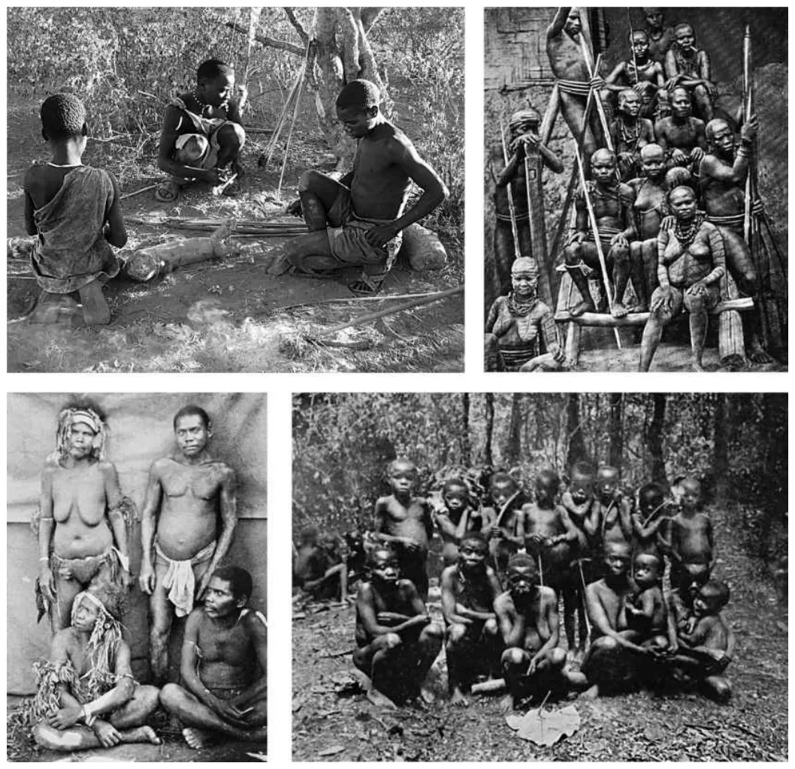
Theo chiều kim đồng hồ từ trên cùng: Hadza; Mbuti, Andaman, Semang
Có một số chủ đề nhân khẩu học chung giữa các HG đương đại.70
Giáo điều trước đây cho rằng các nhóm HG có thành viên nhóm khá ổn định, tạo ra mức độ quan hệ huyết thống trong nhóm đáng kể. Công trình gần đây hơn gợi ý mức độ quan hệ huyết thống ít hơn người ta tưởng, phản ánh các nhóm hợp nhất/phân tách (fusion/fission) linh hoạt ở các HG du mục. Người Hadza cho thấy một hệ quả của sự linh hoạt như vậy, cụ thể là những thợ săn đặc biệt hợp tác tìm thấy nhau và làm việc cùng nhau. Sẽ nói thêm về điều này trong chương tiếp theo.
Vậy còn những hành vi tốt đẹp nhất và tồi tệ nhất của chúng ta ở các HG đương đại thì sao? Cho đến tận những năm 1970, câu trả lời rõ ràng là các HG sống hòa bình, hợp tác và bình đẳng. Sự linh hoạt giữa các nhóm đóng vai trò như một van an toàn ngăn chặn bạo lực cá nhân (tức là khi mọi người sắp lao vào cấu xé nhau, một người sẽ chuyển sang nhóm khác), và lối sống du mục đóng vai trò như một van an toàn ngăn chặn bạo lực giữa các nhóm (tức là thay vì gây chiến với nhóm láng giềng, chỉ cần đi săn ở một thung lũng khác với họ).
Những người giương cao ngọn cờ cho sự tuyệt vời của HG là người !Kung ở Kalahari.*71 Tiêu đề của một chuyên khảo thời kỳ đầu về họ — cuốn *Những người vô hại* (The Harmless People) năm 1959 của Elizabeth Marshall Thomas — đã nói lên tất cả.* Người !Kung đối với người Yanomamö cũng giống như Joan Baez đối với Sid Vicious và ban nhạc Sex Pistols vậy.
Tất nhiên, bức tranh về người !Kung nói riêng và HG nói chung này đã chín muồi cho chủ nghĩa xét lại. Điều này xảy ra khi các nghiên cứu thực địa kéo dài đủ lâu để ghi nhận các HG giết hại lẫn nhau, như được tóm tắt trong một ấn phẩm có tầm ảnh hưởng năm 1978 của Carol Ember thuộc Đại học Yale.72 Về cơ bản, nếu bạn đang quan sát một nhóm ba mươi người, sẽ mất rất nhiều thời gian mới thấy được rằng, tính theo đầu người, họ có tỷ lệ giết người xấp xỉ Detroit (phép so sánh tiêu chuẩn luôn được đưa ra). Việc thừa nhận rằng HG có bạo lực được coi là một sự thanh tẩy đối với chủ nghĩa lãng mạn nhân học thập niên sáu mươi, một cái tát tỉnh táo vào mặt những nhà nhân học đã vứt bỏ tính khách quan để khiêu vũ với bầy sói.
Đến thời điểm tổng hợp của Pinker, bạo lực HG đã được xác lập, và tỷ lệ tử vong của họ được quy cho chiến tranh đạt trung bình khoảng 15 phần trăm, cao hơn nhiều so với trong các xã hội phương Tây hiện đại. Bạo lực HG đương đại cấu thành một lá phiếu lớn cho quan điểm của Hobbes về chiến tranh và bạo lực thấm đẫm toàn bộ lịch sử nhân loại.
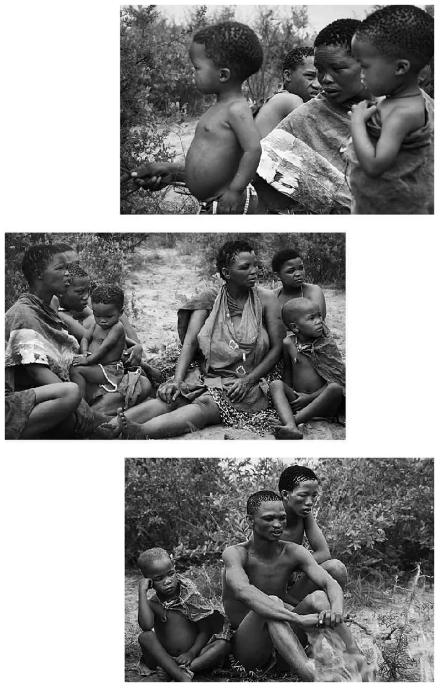
Những người săn bắt - hái lượm !Kung ở Kalahari
Đã đến lúc cho những lời chỉ trích:73
Dán nhãn sai — một số HG được Pinker, Keeley và Bowles trích dẫn thực chất là những người săn bắn - làm vườn. Nhiều trường hợp được cho là chiến tranh HG, khi xem xét kỹ hơn, thực chất chỉ là những vụ giết người đơn lẻ. Một số nền văn hóa HG bạo lực ở vùng Đại Bình nguyên mang tính phi truyền thống theo nghĩa họ sử dụng một thứ cốt yếu không hề tồn tại trong kỷ Canh Tân (Pleistocene) — những con ngựa được thuần hóa cưỡi ra trận. Giống như những người làm nông nghiệp hay chăn thả phi phương Tây, HG đương đại không tương đương với tổ tiên của chúng ta. Vũ khí phát minh trong mười nghìn năm qua đã được du nhập thông qua giao thương; hầu hết các nền văn hóa HG đã trải qua hàng thiên niên kỷ bị người làm nông nghiệp và người chăn thả đẩy lùi, dồn vào những hệ sinh thái ngày càng khắc nghiệt, khan hiếm tài nguyên hơn. Một lần nữa là vấn đề chọn lọc dữ liệu có chủ đích, tức là không trích dẫn các trường hợp HG hòa bình. Quan trọng nhất là có nhiều hơn một loại HG. Các HG du mục là thương hiệu nguyên bản, kéo dài hàng trăm nghìn năm.74 Nhưng ngoài các HG 2.0 cưỡi ngựa, còn có “các HG phức hợp” (complex HGs), những người rất khác biệt — bạo lực, không đặc biệt bình đẳng, và định cư, thường vì họ đang ngồi trên một nguồn thức ăn dồi dào mà họ bảo vệ khỏi người ngoài. Nói cách khác, một hình thái chuyển tiếp từ các HG thuần túy. Và nhiều nền văn hóa được Ember, Keeley và Pinker trích dẫn là các HG phức hợp. Sự khác biệt này có liên quan đến Nataruk, địa điểm ở miền bắc Kenya của vụ thảm sát mười nghìn năm tuổi — các bộ xương của hai mươi bảy người không được chôn cất, bị giết bằng cách đánh chùy, đâm hoặc bắn bằng đầu đạn đá. Các nạn nhân là những HG định cư, sống dọc theo một vịnh nông trên hồ Turkana, một bất động sản mặt tiền biển đắc địa với việc đánh bắt cá dễ dàng và vô số thú săn kéo đến uống nước. Đúng là kiểu bất động sản mà kẻ khác sẽ cố gắng chen chân vào cướp đoạt.
Những phân tích thấu đáo và sâu sắc nhất về bạo lực HG đến từ Fry và Christopher Boehm thuộc Đại học Nam California. Họ vẽ nên một bức tranh phức tạp.
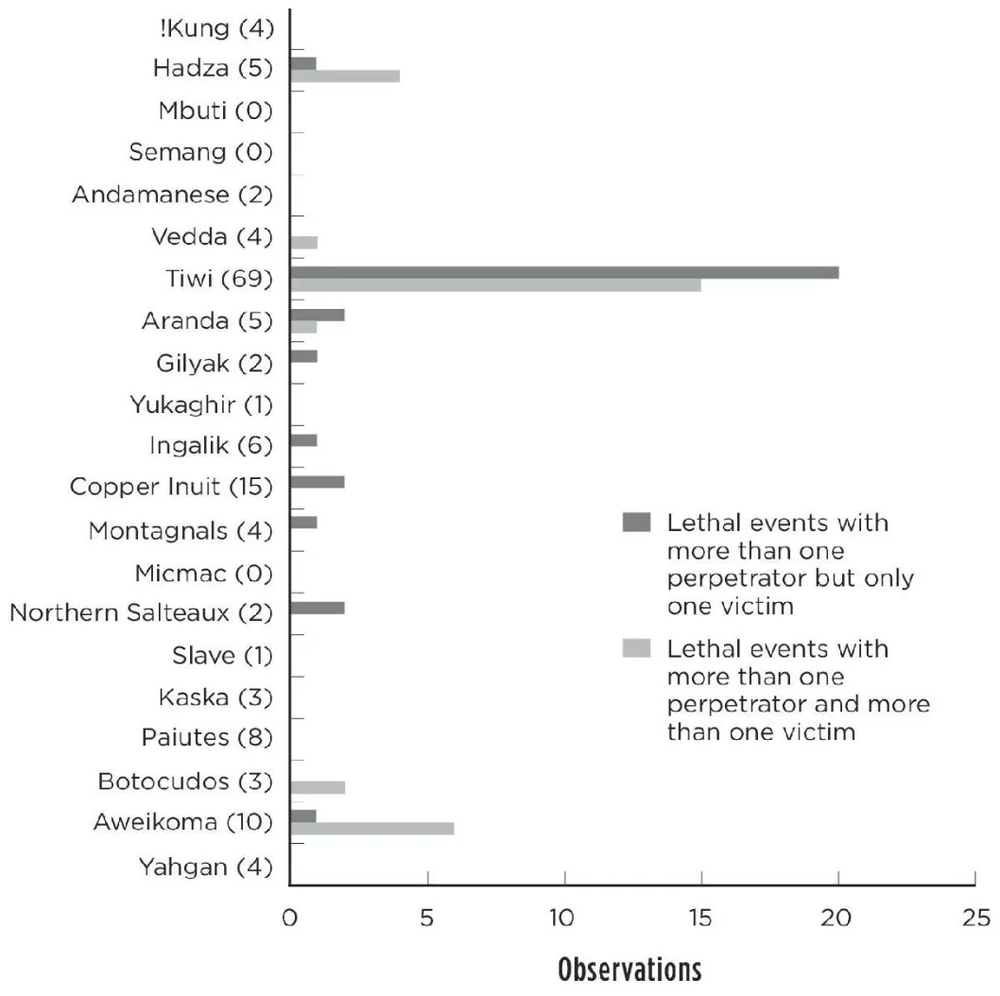
D. P. Fry và P. Söderberg, “Lethal Aggression in Mobile Forager Bands and
Implications for the Origins of War,” *Sci* 341 (2013): 270.
Truy cập bit.ly/2oeg96t để xem phiên bản lớn hơn của biểu đồ này.
Fry đã cung cấp điều mà tôi coi là đánh giá sạch sẽ nhất về chiến tranh trong các nền văn hóa như vậy. Trong một bài báo đáng chú ý trên tạp chí *Science* năm 2013, ông và nhà nhân học người Phần Lan Patrik Söderberg đã xem xét tất cả các trường hợp bạo lực gây chết người trong tài liệu dân tộc học ở các HG du mục “thuần túy” (tức là được nghiên cứu kỹ lưỡng trước khi tiếp xúc sâu rộng với người ngoài và sống trong một hệ sinh thái ổn định). Mẫu nghiên cứu gồm hai mươi mốt nhóm như vậy từ khắp nơi trên thế giới. Fry và Söderberg chỉ quan sát thấy cái có thể gọi là chiến tranh (được định nghĩa bằng tiêu chí khá lỏng lẻo là xung đột gây ra nhiều thương vong) ở một thiểu số các nền văn hóa. Không hẳn là phổ biến rộng rãi. Đây có lẽ là sự ước lượng gần đúng nhất mà chúng ta có thể có về chiến tranh ở tổ tiên HG của mình. Tuy nhiên, những HG thuần túy này không phải là những người theo chủ nghĩa hòa bình mặc áo nhuộm màu hippy; 86 phần trăm các nền văn hóa này từng trải qua bạo lực gây chết người. Nguyên nhân của chúng là gì?
Trong cuốn sách năm 2012 *Nguồn gốc đạo đức: Sự tiến hóa của đức hạnh, lòng vị tha và sự xấu hổ* (Moral Origins: The Evolution of Virtue, Altruism, and Shame), Boehm cũng khảo sát tài liệu, sử dụng các tiêu chí ít khắt khe hơn một chút so với Fry, đưa ra một danh sách khoảng năm mươi nền văn hóa HG du mục tương đối “thuần túy” (nghiêng nặng về các nhóm người Inuit từ Bắc Cực).75 Đúng như dự đoán, bạo lực chủ yếu do đàn ông gây ra. Phổ biến nhất là giết người liên quan đến phụ nữ — hai người đàn ông đánh nhau vì một người phụ nữ cụ thể, hoặc những nỗ lực bắt cóc phụ nữ từ một nhóm láng giềng. Dĩ nhiên, có những người đàn ông giết vợ mình, thường là vì cáo buộc ngoại tình. Có việc giết trẻ sơ sinh nữ và giết người phát sinh từ các cáo buộc phù thủy. Có những vụ giết người thỉnh thoảng xảy ra vì ăn trộm thức ăn thông thường hoặc từ chối chia sẻ thức ăn. Và rất nhiều vụ giết người trả thù bởi người thân của ai đó bị giết.
Cả Fry và Boehm đều báo cáo những vụ giết người tương tự như án tử hình đối với các hành vi vi phạm chuẩn mực nghiêm trọng. Các HG du mục coi trọng những chuẩn mực nào nhất? Sự công bằng, sự có đi có lại gián tiếp và việc tránh chế độ chuyên quyền.
*Sự công bằng.* Như đã lưu ý, HG là những người tiên phong trong việc săn bắn hợp tác ở loài người và chia sẻ giữa những người không có quan hệ huyết thống.76 Điều này nổi bật nhất với thịt. Thịt thường được các thợ săn thành công chia sẻ với những người không thành công (và gia đình họ); những cá nhân đóng vai trò chủ chốt trong các cuộc đi săn không nhất thiết nhận được nhiều thịt hơn nhiều so với mọi người khác; điều cốt yếu là người thợ săn thành công nhất hiếm khi quyết định cách chia thịt — thay vào đó việc này thường do một bên thứ ba thực hiện. Có những manh mối hấp dẫn về tính cổ xưa của điều này. Việc săn bắt thú lớn của chi Người cách đây 400.000 năm đã được ghi nhận; xương của các loài động vật bị xẻ thịt hồi đó cho thấy các vết cắt hỗn loạn, chồng chéo ở nhiều góc độ khác nhau, gợi ý một cuộc tranh giành tự do. Nhưng đến 200.000 năm trước, khuôn mẫu HG đương đại đã hiện diện — các vết cắt cách đều nhau và song song, gợi ý rằng từng cá nhân riêng lẻ đã xẻ thịt và phân phát thịt.
Tuy nhiên, điều này không có nghĩa là việc chia sẻ diễn ra dễ dàng đối với các HG thuần túy. Chẳng hạn, Boehm lưu ý cách người !Kung liên tục cằn nhằn về việc bị chia thiếu phần thịt. Đó là tiếng ồn nền của sự điều tiết xã hội.
*Sự có đi có lại gián tiếp.* Chương tiếp theo sẽ thảo luận về lòng vị tha có đi có lại giữa các cặp cá nhân. Boehm nhấn mạnh cách các HG du mục chuyên về sự có đi có lại gián tiếp. Người A vị tha với B; nghĩa vụ xã hội của B bây giờ không nhất thiết là phải vị tha lại với A mà là chuyển tiếp lòng vị tha đó cho C. C chuyển tiếp cho D, v.v. . . . Sự hợp tác mang tính ổn định này lý tưởng cho những người săn thú lớn, nơi hai quy tắc được giữ vững: (a) các chuyến đi săn của bạn thường thất bại; và (b) khi chúng thành công, bạn thường có nhiều thịt hơn mức gia đình bạn có thể tiêu thụ, vì vậy bạn thà chia sẻ nó xung quanh. Như người ta vẫn nói, khoản đầu tư tốt nhất của một HG để chống lại nạn đói trong tương lai là bỏ thịt vào bụng người khác ngay bây giờ.
*Tránh chế độ chuyên quyền.* Như cũng sẽ được đề cập trong chương tiếp theo, có áp lực tiến hóa đáng kể đối với việc phát hiện gian lận (khi ai đó bội ước phần của mình trong một mối quan hệ có đi có lại). Đối với các HG du mục, việc kiểm soát sự gian lận ngầm ít được quan tâm hơn bằng chứng công khai về sự đe dọa và hám quyền lực. HG luôn cảnh giác cao độ trước những kẻ bắt nạt thích ra oai.
Các xã hội HG tiêu tốn rất nhiều nỗ lực tập thể vào việc thực thi sự công bằng, sự có đi có lại gián tiếp và tránh chế độ chuyên quyền. Điều này được thực hiện bằng cơ chế thực thi chuẩn mực tuyệt vời đó, tức là buôn chuyện (gossip). HG buôn chuyện không ngừng, và theo nghiên cứu của Polly Wiessner thuộc Đại học Utah, chủ đề hầu hết là chuyện thường lệ: sự vi phạm chuẩn mực của các cá nhân có địa vị cao.77 Tạp chí *People* phiên bản quanh đống lửa trại.* Việc buôn chuyện phục vụ nhiều mục đích. Nó giúp kiểm chứng thực tế (“Chỉ mình tôi thấy thế, hay hắn ta đúng là một gã tồi toàn tập?”), truyền tin (“Đoán xem ai vừa tình cờ bị chuột rút ở chân đúng vào phần gay cấn nhất của cuộc đi săn hôm nay nào”), và xây dựng sự đồng thuận (“Cần phải làm gì đó với gã này thôi”). Buôn chuyện là vũ khí thực thi chuẩn mực.
Các nền văn hóa HG thực hiện các hành động tương tự — tập thể đưa những kẻ phạm lỗi ra chỉ trích, làm bẽ mặt và chế giễu, tẩy chay và xa lánh, từ chối chia thịt, trừng phạt thể xác không gây chết người, trục xuất khỏi nhóm, hoặc, như một phương sách cuối cùng, giết chết người đó (được thực hiện bởi cả nhóm hoặc bởi một đao phủ được chỉ định).
Boehm ghi nhận những vụ hành quyết mang tính tư pháp như vậy ở gần một nửa các nền văn hóa HG thuần túy. Những lỗi lầm nào đáng bị xử tử như vậy? Giết người, mưu toan thâu tóm quyền lực, sử dụng tà thuật ác ý, trộm cắp, từ chối chia sẻ, phản bội nhóm với người ngoài, và dĩ nhiên là phá vỡ các điều cấm kỵ tình dục. Tất cả thường bị trừng phạt theo cách này sau khi các biện pháp can thiệp khác đã thất bại nhiều lần.
— Vậy, Hobbes hay Rousseau? Chà, một sự pha trộn của cả hai, tôi nói một cách chẳng giúp ích được gì. Phần dài dòng này làm rõ rằng bạn phải đưa ra một số sự phân biệt cẩn thận: (a) HG so với các cách kiếm sống truyền thống khác; (b) HG du mục so với HG định cư; (c) các bộ dữ liệu rà soát toàn bộ tài liệu so với những bộ chỉ tập trung vào các ví dụ cực đoan; (d) thành viên các xã hội truyền thống giết hại lẫn nhau so với các thành viên bị giết bởi những kẻ ngoại bang vác súng đi cướp đất; (e) tinh tinh với tư cách là anh em họ của chúng ta so với tinh tinh bị xem nhầm là tổ tiên của chúng ta; (f) tinh tinh là tổ tiên gần nhất của chúng ta so với tinh tinh và bonobo là tổ tiên gần nhất của chúng ta; (g) chiến tranh so với giết người, trong đó nhiều chiến tranh có thể làm giảm giết người nhân danh sự hợp tác trong nhóm; (h) HG đương đại sống trong các môi trường sống ổn định, đầy đủ tài nguyên với tương tác tối thiểu với thế giới bên ngoài so với HG đương đại bị đẩy vào các môi trường sống khắc nghiệt và tương tác với những người không phải HG. Một khi bạn đã làm điều đó, tôi nghĩ một câu trả lời khá rõ ràng sẽ hiện ra. Những HG sinh sống trên trái đất hàng trăm nghìn năm có lẽ chẳng phải là thiên thần, hoàn toàn có khả năng giết người. Tuy nhiên, “chiến tranh” — cả theo nghĩa ám ảnh thế giới hiện đại của chúng ta lẫn theo nghĩa tối giản ám ảnh tổ tiên chúng ta — dường như rất hiếm cho đến khi hầu hết loài người từ bỏ lối sống HG du mục. Lịch sử của chúng ta với tư cách một loài không hề đẫm máu trong xung đột leo thang. Và trớ trêu thay, Keeley ngầm kết luận điều tương tự — ông ước tính rằng 90 đến 95 phần trăm các xã hội tham gia vào chiến tranh. Và ông lưu ý ai là ngoại lệ? Các HG du mục.
Điều này đưa chúng ta đến với nông nghiệp. Tôi sẽ không nương tay — tôi nghĩ rằng việc phát minh ra nó là một trong những sai lầm ngớ ngẩn nhất mọi thời đại của loài người, sánh ngang với, chẳng hạn, thảm họa New Coke và chiếc xe Edsel. Nông nghiệp khiến con người phụ thuộc vào một vài loại cây trồng và vật nuôi được thuần hóa thay vì hàng trăm nguồn thức ăn hoang dã, tạo ra sự dễ tổn thương trước hạn hán, dịch bệnh cây trồng và các bệnh truyền nhiễm từ động vật.
Nông nghiệp tạo ra lối sống định cư, dẫn dắt con người làm một việc mà chẳng loài linh trưởng nào có mối quan tâm đến vệ sinh và sức khỏe cộng đồng từng làm, cụ thể là sống sát vách với phân của chính mình. Nông nghiệp tạo ra sự thặng dư và do đó hầu như chắc chắn dẫn đến sự phân phối thặng dư bất bình đẳng, tạo ra những khác biệt về địa vị kinh tế xã hội làm lu mờ bất cứ thứ gì mà các loài linh trưởng khác bày ra với hệ thống thứ bậc của chúng. Và từ đó chỉ cần một bước nhảy, một bước bật và một cú phóng là chúng ta có ngay ông McGregor đàn áp thỏ Peter và mọi người không ngừng hát bài “Oklahoma.”
Có lẽ điều này hơi quá lời một chút. Tuy nhiên, tôi thực sự nghĩ rằng khá rõ ràng là phải đến khi con người bắt đầu cuộc biến đổi đời sống khổng lồ đến từ việc thuần hóa cỏ teosinte và các loại củ dại, bò rừng châu Âu (aurochs) và lúa mì einkorn, và dĩ nhiên là loài sói, thì người ta mới có thể thả xích cho những con chó săn của chiến tranh.
MỘT SỐ KẾT LUẬN
Nửa đầu của chương đã khám phá nơi chúng ta đang đứng; nửa sau, cách chúng ta nhiều khả năng đã đi đến đây. “Nơi chúng ta đang đứng” tràn ngập sự biến thiên văn hóa. Từ góc độ sinh học của chúng ta, điểm hấp dẫn nhất là cách bộ não định hình văn hóa, văn hóa lại định hình bộ não, bộ não lại định hình . . . Đó là lý do nó được gọi là đồng tiến hóa. Chúng ta đã thấy một số bằng chứng về sự đồng tiến hóa theo nghĩa kỹ thuật — nơi có những khác biệt đáng kể giữa các nền văn hóa khác nhau về sự phân bố các biến thể gen liên quan đến hành vi. Nhưng những ảnh hưởng đó khá nhỏ. Thay vào đó, điều mang tính hệ quả nhất là thời thơ ấu, khoảng thời gian khi các nền văn hóa thấm nhuần cho các cá nhân để tiếp tục truyền bá nền văn hóa của họ. Về khía cạnh đó, có lẽ sự thật quan trọng nhất về di truyền và văn hóa là sự trưởng thành muộn của vỏ não trước trán — lập trình di truyền để vỏ não trước trán non nớt được tự do khỏi gen hơn các vùng não khác, để thay vào đó được điêu khắc bởi môi trường, để thấm hút các chuẩn mực văn hóa. Quay lại một chủ đề từ những trang đầu của cuốn sách này, không cần một bộ não quá cầu kỳ để học cách, chẳng hạn, tung một cú đấm về mặt vận động. Nhưng cần một vỏ não trước trán cầu kỳ, dễ uốn nắn bởi môi trường để học các quy tắc đặc thù theo văn hóa về việc khi nào thì được phép tung cú đấm.
Trong một chủ đề khác từ nửa đầu, những khác biệt văn hóa biểu hiện theo những cách cực kỳ quan trọng, dễ đoán — chẳng hạn, được phép giết ai (một người lính địch, một người bạn đời ngoại tình, một đứa trẻ sơ sinh mang giới tính “sai,” một người cha mẹ già yếu không còn đi săn được nữa, một cô con gái tuổi teen đang hấp thụ nền văn hóa xung quanh mình thay vì nền văn hóa mà cha mẹ cô đã rời bỏ). Nhưng những biểu hiện đó cũng có thể xuất hiện ở những nơi không ngờ tới — ví dụ, nơi mắt bạn nhìn trong vòng vài mili-giây sau khi thấy một bức ảnh, hay liệu việc nghĩ về một con thỏ có gợi cho bạn nghĩ đến các loài động vật khác hay nghĩ đến thức ăn của thỏ.
Một chủ đề then chốt khác là ảnh hưởng nghịch lý của sinh thái học. Các hệ sinh thái định hình mạnh mẽ văn hóa — nhưng sau đó nền văn hóa đó có thể được xuất khẩu và tồn tại dai dẳng ở những nơi khác biệt hoàn toàn trong hàng thiên niên kỷ. Nói một cách thẳng thắn nhất, phần lớn nhân loại trên trái đất đã thừa hưởng niềm tin của họ về bản chất của sự sinh ra, cái chết và mọi thứ ở giữa cũng như sau đó từ những người chăn thả du mục Trung Đông chưa biết chữ.
Nửa sau của chương, vừa mới khép lại, giải quyết vấn đề then chốt về cách chúng ta đi đến đây — liệu đó là hàng trăm nghìn năm của Hobbes hay của Rousseau? Câu trả lời của bạn cho câu hỏi đó định hình rất lớn cách bạn nhìn nhận một điều mà chúng ta sẽ xem xét ở chương cuối cùng, cụ thể là trong nửa thiên niên kỷ qua, con người có thể lập luận rằng đã trở nên bớt tồi tệ với nhau hơn rất nhiều.
Chương 10 — Sự tiến hóa của hành vi
Mười
Sự Tiến Hóa của Hành Vi
Cuối cùng chúng ta cũng chạm tới những nền tảng. Gen và vùng khởi động (promoter) tiến hóa. Các yếu tố phiên mã, transposase, và enzyme cắt nối (splicing enzyme) cũng vậy. Mọi đặc điểm chịu ảnh hưởng di truyền (tức là mọi thứ) đều tiến hóa. Như lời nhà di truyền học Theodosius Dobzhansky: “Không có gì trong sinh học có ý nghĩa ngoại trừ dưới ánh sáng của tiến hóa.” Kể cả cuốn sách này.1
TIẾN HÓA CĂN BẢN
Tiến hóa dựa trên ba bước: (a) một số đặc điểm sinh học nhất định được di truyền bằng cơ chế di truyền; (b) đột biến và tái tổ hợp gen tạo ra sự biến dị ở những đặc điểm đó; (c) một số biến thể mang lại nhiều “độ thích nghi” (fitness) hơn những biến thể khác. Với những điều kiện đó, theo thời gian, tần suất của các biến thể gen “thích nghi” hơn sẽ tăng lên trong quần thể.
Chúng ta bắt đầu bằng cách dẹp bỏ một số hiểu lầm phổ biến. Thứ nhất, rằng tiến hóa ưu tiên sự sống sót của kẻ thích nghi nhất. Thay vào đó, tiến hóa là chuyện sinh sản, truyền lại các bản sao của gen. Một sinh vật sống hàng thế kỷ nhưng không sinh sản thì hoàn toàn vô hình về mặt tiến hóa.* Sự khác biệt giữa sống sót và sinh sản được thể hiện qua “tính đa hiệu đối kháng” (antagonistic pleiotropy), chỉ những đặc điểm làm tăng khả năng sinh sản sớm trong đời nhưng lại làm giảm tuổi thọ. Ví dụ, tuyến tiền liệt của linh trưởng có tốc độ trao đổi chất cao, giúp tăng cường khả năng vận động của tinh trùng. Mặt lợi: tăng khả năng thụ tinh; mặt hại: tăng nguy cơ ung thư tuyến tiền liệt. Tính đa hiệu đối kháng diễn ra đầy kịch tính ở cá hồi, loài thực hiện hành trình sử thi về bãi đẻ để sinh sản rồi chết. Nếu tiến hóa là về sự sống sót chứ không phải truyền lại bản sao của gen, sẽ chẳng có tính đa hiệu đối kháng nào cả.2
Một hiểu lầm khác là tiến hóa có thể chọn lọc cho các tiền thích nghi (preadaptation) — những đặc điểm trung tính nhưng hóa ra lại hữu ích trong tương lai. Điều này không xảy ra; chọn lọc là dành cho những đặc điểm có ích ở hiện tại. Liên quan đến điều này là hiểu lầm rằng các loài đang sống bằng cách nào đó thích nghi tốt hơn các loài đã tuyệt chủng. Thay vào đó, các loài đã tuyệt chủng cũng từng thích nghi tốt y như vậy, cho đến khi điều kiện môi trường thay đổi đủ mạnh để quét sạch chúng; điều tương tự cũng đang chờ đợi chúng ta. Cuối cùng, có hiểu lầm rằng tiến hóa chọn lọc có định hướng theo hướng phức tạp hơn. Đúng là nếu từng chỉ có sinh vật đơn bào mà nay có sinh vật đa bào, thì độ phức tạp trung bình đã tăng lên. Dẫu vậy, tiến hóa không nhất thiết chọn lọc cho sự phức tạp hơn — cứ nhìn vi khuẩn quét sạch loài người bằng một dịch bệnh nào đó thì rõ.
Hiểu lầm cuối cùng là tiến hóa “chỉ là một giả thuyết”. Tôi xin mạnh dạn giả định rằng những độc giả đã đọc đến đây đều tin vào tiến hóa. Những người phản đối kiểu gì cũng lôi ra cái luận điệu khó chịu rằng tiến hóa chưa được chứng minh, bởi vì (theo một quy ước chẳng mấy hữu ích trong ngành) nó là một “thuyết” (theory) (cũng giống như thuyết mầm bệnh chẳng hạn). Bằng chứng cho thực tế của tiến hóa bao gồm:
Vô số ví dụ nơi áp lực chọn lọc thay đổi đã làm thay đổi tần số gen trong quần thể chỉ trong vài thế hệ (ví dụ: vi khuẩn tiến hóa khả năng kháng kháng sinh). Hơn nữa, cũng có những ví dụ (chủ yếu ở côn trùng, do thời gian thế hệ ngắn) về một loài đang trong quá trình tách thành hai loài. Bằng chứng hóa thạch đồ sộ về các dạng trung gian trong nhiều nhánh phân loại. Bằng chứng phân tử. Chúng ta chia sẻ ~98 phần trăm gen với các loài vượn lớn khác, ~96 phần trăm với khỉ, ~75 phần trăm với chó, ~20 phần trăm với ruồi giấm. Điều này cho thấy tổ tiên chung gần nhất của chúng ta với các loài vượn lớn khác sống gần đây hơn so với tổ tiên chung gần nhất của chúng ta với khỉ, vân vân. Bằng chứng địa lý. Dùng gợi ý của Richard Dawkins để đối đáp với một người theo chủ nghĩa chính thống khăng khăng rằng mọi loài đều bước ra từ con tàu của Noah dưới hình hài hiện tại — làm thế nào mà tất cả ba mươi bảy loài vượn cáo cập bến trên núi Ararat ở vùng cao nguyên Armenia lại đi bộ suốt chặng đường tới Madagascar, không một con nào chết dọc đường để lại hóa thạch? Thiết kế phi thông minh — những điều kỳ quặc chỉ có thể giải thích bằng tiến hóa. Tại sao cá voi và cá heo lại có xương chân thoái hóa? Vì chúng có nguồn gốc từ một loài thú bốn chân sống trên cạn. Tại sao chúng ta lại có cơ dựng lông trên da tạo ra hiện tượng nổi da gà hoàn toàn vô dụng? Vì chúng ta mới tách loài gần đây khỏi các loài vượn khác có cơ dựng lông gắn vào lông, và lông của chúng dựng đứng lên khi bị kích động cảm xúc.
Đủ rồi. Đừng khơi mào cho tôi nói nữa.
—
Tiến hóa điêu khắc các đặc điểm của sinh vật theo hai cách rộng lớn. “Chọn lọc giới tính” (sexual selection) chọn lọc những đặc điểm thu hút cá thể khác giới, còn “chọn lọc tự nhiên” (natural selection) chọn lọc những đặc điểm giúp tăng cường việc truyền lại các bản sao gen qua bất kỳ con đường nào khác — ví dụ như sức khỏe tốt, kỹ năng kiếm ăn, tránh kẻ săn mồi.
Hai quá trình này có thể hoạt động đối nghịch nhau.3 Ví dụ, ở cừu hoang, một gen ảnh hưởng đến kích thước sừng ở con đực. Một biến thể tạo ra cặp sừng lớn, giúp tăng ưu thế xã hội, một điểm cộng cho chọn lọc giới tính. Biến thể kia tạo ra cặp sừng nhỏ, ít tốn kém về mặt trao đổi chất hơn, cho phép con đực sống và giao phối (dù với tần suất thấp) lâu hơn. Bên nào thắng — thành công sinh sản thoáng qua nhưng rực rỡ, hay thành công dai dẳng nhưng khiêm tốn? Một dạng trung gian.* Hoặc hãy xem những con công đực phải trả giá, xét về mặt chọn lọc tự nhiên, cho bộ lông sặc sỡ của chúng — nó tốn cả gia tài năng lượng trao đổi chất để mọc lên, hạn chế khả năng di chuyển, và dễ thu hút kẻ săn mồi. Nhưng nó chắc chắn làm tăng độ thích nghi thông qua chọn lọc giới tính.
Điều quan trọng là cả hai loại chọn lọc đều không nhất thiết chọn ra phiên bản thích nghi “nhất” của một đặc điểm để thay thế tất cả các phiên bản khác. Có thể xảy ra chọn lọc phụ thuộc tần số, nơi phiên bản hiếm hơn trong hai đặc điểm lại được ưu tiên, hoặc chọn lọc cân bằng, nơi nhiều phiên bản của đặc điểm được duy trì ở trạng thái cân bằng.
HÀNH VI CÓ THỂ ĐƯỢC ĐỊNH HÌNH BỞI TIẾN HÓA
Các sinh vật thích nghi tốt đến kinh ngạc. Một loài gặm nhấm sa mạc có quả thận xuất sắc trong việc giữ nước; trái tim khổng lồ của hươu cao cổ có thể bơm máu lên tận não; xương chân voi đủ khỏe để nâng đỡ cả một con voi. Ừ thì, đúng rồi — nó bắt buộc phải như thế: những con gặm nhấm sa mạc có thận giữ nước kém đã không truyền lại được bản sao gen của mình. Do đó có một logic trong tiến hóa, nơi chọn lọc tự nhiên gọt giũa các đặc điểm trở nên thích nghi.
Quan trọng là chọn lọc tự nhiên không chỉ tác động lên giải phẫu và sinh lý mà còn lên cả hành vi — nói cách khác, hành vi cũng tiến hóa, có thể được chọn lọc tối ưu hóa để trở nên thích nghi.
Nhiều nhánh sinh học khác nhau tập trung vào sự tiến hóa của hành vi. Nổi tiếng nhất có lẽ là sinh học xã hội (sociobiology), dựa trên tiền đề rằng hành vi xã hội được tiến hóa gọt giũa để trở nên tối ưu, giống như sự tối ưu hóa cơ sinh học định hình kích thước trái tim hươu cao cổ vậy.4 Sinh học xã hội nổi lên vào thập niên 1970, cuối cùng đẻ ra nhánh tâm lý học tiến hóa — ngành nghiên cứu sự tối ưu hóa tiến hóa của các đặc điểm tâm lý; như chúng ta sẽ thấy, cả hai đều gây tranh cãi dữ dội. Để tiện đơn giản hóa, tôi sẽ gọi những người nghiên cứu sự tiến hóa của hành vi xã hội là “các nhà sinh học xã hội”.
SỰ SỤP ĐỔ CỦA CHỌN LỌC NHÓM
Chúng ta bắt đầu bằng việc vật lộn với một hiểu lầm cố hữu về sự tiến hóa của hành vi. Nguyên nhân là người Mỹ vào thập niên 1960 đã được Marlin Perkins dạy về chủ đề này trên chương trình truyền hình Mutual of Omaha’s Wild Kingdom.
Chương trình đó tuyệt lắm. Perkins làm người dẫn. Jim, cộng sự của ông, làm những trò nguy hiểm với rắn. Và luôn có những màn chuyển cảnh mượt mà từ chương trình sang quảng cáo của Mutual of Omaha — “Cũng giống như sư tử giao phối hàng giờ liền, bạn sẽ muốn mua bảo hiểm hỏa hoạn cho ngôi nhà của mình.”
Tiếc thay, Perkins lại cổ vũ một tư duy tiến hóa sai lầm khủng khiếp. Trên chương trình, cảnh tượng diễn ra thế này: Bình minh trên thảo nguyên; có một đàn linh dương đầu bò bên bờ sông. Cỏ bên kia bờ xanh hơn, ai cũng muốn ăn, nhưng dòng sông lúc nhúc cá sấu săn mồi. Đàn linh dương lưỡng lự, bồn chồn thì bỗng một con linh dương già đẩy lên phía trước, nói: “Ta hy sinh thân mình vì các con của ta,” rồi nhảy ùm xuống nước. Và trong lúc lũ cá sấu bận xử lý nó, cả đàn linh dương kia băng qua sông.
Tại sao con linh dương già lại làm thế? Marlin Perkins sẽ trả lời với uy quyền của một bậc trưởng lão: bởi vì động vật hành xử Vì Lợi Ích của Loài.
Đúng vậy, hành vi tiến hóa nhờ “chọn lọc nhóm” (group selection) vì lợi ích của loài. Ý tưởng này được V. C. Wynne-Edwards cổ vũ vào đầu thập niên 1960, người mà sự sai lầm đã biến ông thành Lamarck của sinh học tiến hóa hiện đại.*5
Động vật không hành xử vì lợi ích của loài. Nhưng còn con linh dương đầu bò kia thì sao? Nhìn kỹ lại bạn sẽ thấy điều thực sự xảy ra. Tại sao nó lại thành kẻ cứu nguy? Bởi vì nó già và yếu. “Lợi ích của loài” cái con khỉ. Cả đàn đã đẩy lão già đó xuống sông.
Chọn lọc nhóm đã bị hạ bệ bởi các nghiên cứu lý thuyết và thực nghiệm cho thấy những mô thức hành vi không tương thích với nó. Công trình then chốt được thực hiện bởi hai vị thần của sinh học tiến hóa, George Williams thuộc Đại học Bang New York ở Stony Brook và Bill (“W.D.”) Hamilton ở Oxford.6 Hãy xét “côn trùng xã hội thực thụ” (eusocial insects), nơi phần lớn cá thể là thợ không sinh sản. Tại sao lại từ bỏ sinh sản để giúp đỡ ong/kiến chúa? Rõ ràng là chọn lọc nhóm rồi. Hamilton đã chứng minh rằng hệ thống di truyền độc đáo của côn trùng xã hội thực thụ khiến cả một đàn kiến, ong hay mối trở thành một siêu sinh vật duy nhất; hỏi tại sao kiến thợ từ bỏ sinh sản cũng giống như hỏi tại sao tế bào mũi của bạn từ bỏ sinh sản. Nói cách khác, côn trùng xã hội thực thụ cấu thành một kiểu “nhóm” độc nhất vô nhị. Sau đó Williams phân tích sâu hơn về việc hệ thống di truyền phổ biến hơn, ở các loài từ côn trùng không sống bầy đàn cho đến chúng ta, không tương thích với chọn lọc nhóm. Động vật không hành xử vì lợi ích của loài. Chúng hành xử để tối đa hóa số bản sao gen của mình truyền sang thế hệ tiếp theo.*
Đây là hòn đá tảng của sinh học xã hội và được tóm tắt trong câu nói trứ danh của Dawkins rằng tiến hóa là về những “gen ích kỷ”. Đã đến lúc xem xét các viên gạch nền của nó.
CHỌN LỌC CÁ THỂ
Việc truyền lại thật nhiều bản sao gen của một cá thể được thực hiện trực tiếp nhất bằng cách tối đa hóa sinh sản. Điều này được tóm tắt qua câu cách ngôn “Con gà là cách của quả trứng tạo ra một quả trứng khác” — hành vi chỉ là một hiện tượng phụ, một phương tiện để đưa bản sao gen vào thế hệ tiếp theo.
Chọn lọc cá thể giải thích các hành vi cơ bản tốt hơn chọn lọc nhóm. Một con linh cẩu lao về phía đàn ngựa vằn. Con ngựa vằn ở gần nhất sẽ làm gì nếu nó theo thuyết chọn lọc nhóm? Đứng yên đó, hy sinh bản thân vì cả nhóm. Ngược lại, một con ngựa vằn theo thuyết chọn lọc cá thể sẽ chạy bán sống bán chết. Ngựa vằn chạy bán sống bán chết. Hoặc hãy xem lũ linh cẩu vừa hạ được một con ngựa vằn. Tư duy chọn lọc nhóm — cả bầy bình tĩnh xếp hàng lần lượt ăn. Chọn lọc cá thể — một cuộc hỗn chiến điên cuồng. Và đó chính là điều xảy ra.
Nhưng khoan đã, người theo thuyết chọn lọc nhóm cãi lại, chẳng phải loài ngựa vằn sẽ được lợi nếu những con chạy nhanh nhất sống sót và truyền lại những gen chạy nhanh đó sao? Tương tự với lợi ích nhóm khi con linh cẩu hung dữ nhất giành được nhiều thức ăn nhất.
Khi càng nhiều sắc thái của hành vi được quan sát, việc bám víu vào chọn lọc nhóm đòi hỏi những lập luận ngày càng vòng vèo gượng gạo. Nhưng chỉ một quan sát duy nhất đủ để nghiền nát chọn lọc nhóm.
Năm 1977, nhà linh trưởng học Sarah Blaffer Hrdy của Đại học Harvard đã ghi nhận một điều đáng kinh ngạc — khỉ voọc (langur) ở vùng núi Abu của Ấn Độ giết hại lẫn nhau.7 Người ta vốn đã biết một số loài linh trưởng đực giết nhau khi tranh giành ngôi thứ thống trị — được thôi, hợp lý, bản tính con trai mà. Nhưng đó không phải điều Hrdy báo cáo; khỉ voọc đực đang giết khỉ con.
Một khi mọi người tin vào tài liệu ghi chép cẩn thận của bà, liền có ngay một lời giải thích dễ dãi — vì khỉ con rất dễ thương và vốn ức chế sự hung hăng, hẳn phải có điều gì đó bệnh hoạn đang xảy ra.8 Có lẽ mật độ quần thể khỉ voọc ở Abu quá cao và cả bầy đang chết đói, hoặc sự hung hăng của con đực bị tràn bờ, hoặc những con đực giết con non đều là lũ xác sống mất trí. Một điều gì đó chắc chắn là bất thường.
Hrdy đã loại bỏ những lời giải thích này và chỉ ra một quy luật rõ rệt của hành vi giết con non. Khỉ voọc cái sống theo bầy với một con đực đầu đàn duy nhất có quyền giao phối. Ở nơi khác có những bầy toàn đực thi thoảng kéo đến đánh đuổi con đực đầu đàn; sau một hồi nội chiến, một con đực sẽ đánh bật những con còn lại. Đây là lãnh địa mới của hắn, gồm toàn những con cái đang ôm con nhỏ của con đực trước. Và điều cốt yếu là thời gian tại vị trung bình của một con đực đầu đàn (khoảng hai mươi bảy tháng) ngắn hơn khoảng cách trung bình giữa các lần sinh. Không con cái nào đang rụng trứng cả, vì chúng đang cho con bú; do đó gã trai mới nổi này bản thân cũng sẽ bị đá văng trước khi bất kỳ con cái nào cai sữa cho con và rụng trứng trở lại. Công cốc hết, chẳng truyền được gen nào.
Về mặt logic, hắn nên làm gì? Giết lũ khỉ con. Việc này làm giảm thành công sinh sản của con đực trước, và nhờ các con cái ngừng cho con bú, chúng bắt đầu rụng trứng trở lại.*
Đó là góc nhìn của con đực. Còn con cái thì sao? Chúng cũng muốn tối đa hóa số bản sao gen truyền lại. Chúng chiến đấu với con đực mới để bảo vệ con mình. Con cái cũng đã tiến hóa chiến lược rơi vào trạng thái “động dục giả” (pseudoestrus) — giả vờ như đang đến kỳ rụng trứng. Chúng giao phối với con đực mới. Và vì bọn đực chẳng biết cóc khô gì về sinh học của voọc cái, chúng mắc bẫy ngay — “Này, sáng nay tao vừa giao phối với ả mà giờ ả đã có con; tao đúng là giống đực siêu đẳng.” Chúng thường sẽ ngừng các cuộc tấn công giết con non.
Bất chấp sự hoài nghi ban đầu, hành vi giết con non mang tính cạnh tranh đã được ghi nhận trong những hoàn cảnh tương tự ở 119 loài, bao gồm sư tử, hà mã và tinh tinh.9
Một biến thể xảy ra ở chuột đồng hamster; vì con đực sống du cư, bất kỳ con non nào nó bắt gặp đều khó có khả năng là con mình, và do đó nó tìm cách giết chết (nhớ quy tắc không bao giờ nhốt chung chuột hamster đực với lũ chuột con chứ?). Một phiên bản khác xảy ra ở ngựa hoang và khỉ đầu chó gelada; con đực mới quấy rối các con cái mang thai đến mức sảy thai. Hoặc giả sử bạn là một con chuột cái đang mang thai và một con đực mới, thích giết con non vừa xuất hiện. Một khi bạn sinh con, lũ con sẽ bị giết, lãng phí toàn bộ năng lượng mang thai. Phản ứng hợp lý? Cắt lỗ bằng “hiệu ứng Bruce”, nơi chuột cái mang thai tự sảy thai nếu ngửi thấy mùi của một con đực mới.10
Như vậy, hành vi giết con non mang tính cạnh tranh xảy ra ở vô số loài (bao gồm cả ở tinh tinh cái, những con đôi khi giết con của những con cái không có quan hệ họ hàng).11
Không một điều nào trong số này có ý nghĩa nếu nằm ngoài chọn lọc cá thể dựa trên gen.
Chọn lọc cá thể thể hiện rõ đến nao lòng ở loài khỉ đột núi, loài linh trưởng yêu thích của tôi.12 Chúng cực kỳ nguy cấp, bám trụ trong những mảng rừng mưa vùng núi cao dọc biên giới Uganda, Rwanda và Cộng hòa Dân chủ Congo. Chỉ còn khoảng một nghìn cá thể khỉ đột sót lại, do suy thoái môi trường sống, dịch bệnh lây từ người sống gần đó, nạn săn trộm và những cơn co giật của chiến tranh tràn qua các vùng biên giới ấy. Và cũng bởi vì khỉ đột núi thực hành hành vi giết con non mang tính cạnh tranh. Hợp lý đối với một cá thể quyết tâm tối đa hóa bản sao gen của mình ở thế hệ sau, nhưng đồng thời đẩy loài động vật kỳ diệu này đến bờ vực tuyệt chủng. Đây không phải là hành xử vì lợi ích của loài.
CHỌN LỌC HỌ HÀNG
Để hiểu khái niệm nền tảng tiếp theo, hãy suy ngẫm xem việc có quan hệ họ hàng với ai đó và truyền lại bản sao gen của “bạn” nghĩa là gì. Giả sử bạn có một người anh em sinh đôi cùng trứng, sở hữu bộ gen giống hệt bạn. Một sự thật gây sửng sốt nhưng không thể chối cãi là: xét về mặt các gen được truyền sang thế hệ sau, chẳng có gì khác biệt giữa việc bạn tự sinh sản hay hy sinh bản thân để người sinh đôi của bạn sinh sản.
Còn anh chị em ruột không phải sinh đôi cùng trứng thì sao? Nhớ lại từ chương 8 rằng bạn chia sẻ 50 phần trăm gen với anh ấy.* Do đó, việc tự sinh sản một lần và việc chết đi để anh ấy sinh sản hai lần là tương đương nhau về mặt tiến hóa. Anh chị em cùng cha khác mẹ hoặc cùng mẹ khác cha, chung 25 phần trăm gen, cứ thế tính lên. . . .
Nhà di truyền học J. B. S. Haldane, khi được hỏi liệu ông có hy sinh mạng sống vì một người anh em không, được cho là đã đáp hóm hỉnh: “Tôi sẵn lòng hy sinh mạng sống vì hai người anh em hoặc tám người anh em họ.” Bạn có thể để lại bản sao gen của mình ở thế hệ sau bằng cách tự sinh sản, nhưng cũng có thể bằng cách giúp họ hàng sinh sản, đặc biệt là họ hàng gần. Hamilton đã hình thức hóa điều này bằng một phương trình tính toán chi phí và lợi ích của việc giúp đỡ ai đó, nhân với mức độ quan hệ huyết thống của họ với bạn. Đây là cốt lõi của chọn lọc họ hàng (kin selection).* Điều này giải thích một sự thật cốt yếu rằng ở vô số loài, việc bạn hợp tác với ai, cạnh tranh với ai hay giao phối với ai phụ thuộc vào mức độ họ hàng của họ với bạn.
Động vật có vú chạm trán chọn lọc họ hàng ngay sau khi sinh, phản ánh một điều hiển nhiên đến sững sờ: con cái hiếm khi cho con của kẻ khác bú. Tiếp theo, ở nhiều loài linh trưởng, mẹ của một đứa trẻ sơ sinh và một con cái vị thành niên có thể bắt đầu một mối quan hệ đầy những mặt lợi và hại — người mẹ thỉnh thoảng để con cái vị thành niên chăm sóc con mình. Với người mẹ, cái lợi là có thời gian đi kiếm ăn mà không phải kè kè đứa bé trên người; cái hại là cô giữ trẻ có thể hậu đậu. Với con cái vị thành niên, cái lợi là có kinh nghiệm làm mẹ; cái hại là công sức chăm trẻ. Lynn Fairbanks ở UCLA đã định lượng những lợi và hại của kiểu “làm mẹ hộ” (allomothering) này (bao gồm việc những con cái vị thành niên từng tập làm mẹ có tỷ lệ sống sót cao hơn cho chính con mình sau này). Và ai thường xuyên làm “bà mẹ hộ”? Cô em gái của người mẹ.13
Một sự mở rộng của làm mẹ hộ là lối sinh sản hợp tác ở các loài khỉ Tân Thế Giới như khỉ đuôi sóc marmoset. Trong các nhóm xã hội của chúng, chỉ có một con cái sinh sản, trong khi những con khác — thường là họ hàng trẻ hơn — phụ giúp chăm sóc con non.14
Mức độ một con linh trưởng đực chăm sóc con non phản ánh mức độ chắc chắn về tư cách làm cha của nó.15 Ở khỉ marmoset, loài hình thành cặp đôi bền vững, con đực làm phần lớn việc chăm con. Ngược lại, ở khỉ đầu chó, nơi một con cái giao phối với nhiều con đực trong chu kỳ động dục, chỉ những ông bố có khả năng cao (tức những con đực đã giao phối vào ngày dễ thụ thai nhất của con cái, khi vùng mông của nó sưng đỏ rõ rệt nhất) mới đầu tư vào sự an nguy của đứa trẻ, hỗ trợ nó khi đánh nhau.*
Ở nhiều loài linh trưởng, tần suất bạn chải lông cho ai đó phụ thuộc vào việc họ có quan hệ họ hàng gần với bạn đến mức nào. Ở khỉ đầu chó, con cái sống cả đời trong bầy gốc của mình (trong khi con đực di cư sang bầy mới khi dậy thì); kết quả là các con cái trưởng thành có mạng lưới hợp tác họ hàng phức tạp và thừa hưởng thứ bậc thống trị từ mẹ. Ở tinh tinh thì ngược lại; con cái rời nhà khi dậy thì, và sự hợp tác dựa trên họ hàng ở tuổi trưởng thành chỉ xảy ra giữa các con đực (ví dụ, nơi các nhóm con đực có họ hàng tấn công những con đực đơn độc từ nhóm lân cận). Còn ở khỉ voọc, khi một con cái bảo vệ con mình trước một con đực mới, nó thường được giúp đỡ bởi những bà con cái lớn tuổi.
Hơn nữa, linh trưởng hiểu về quan hệ họ hàng. Dorothy Cheney và Robert Seyfarth thuộc Đại học Pennsylvania, khi nghiên cứu khỉ vervet hoang dã, đã chứng minh rằng nếu con A đối xử tệ với con B, sau đó, con B có nhiều khả năng đối xử tệ với họ hàng của con A. Và nếu A đối xử tệ với B, họ hàng của B cũng dễ đối xử tệ với A. Hơn thế nữa, nếu A đối xử tệ với B, họ hàng của B có nhiều khả năng đối xử tệ với họ hàng của A.16
Trong những thí nghiệm “phát lại” (playback) tuyệt đẹp, Cheney và Seyfarth trước tiên ghi âm tiếng kêu của từng con vervet trong bầy. Họ đặt một chiếc loa trong bụi rậm, và khi cả bầy đang ngồi quanh đó, họ bật đoạn ghi âm tiếng một đứa trẻ kêu cứu. Thế là các con cái đồng loạt quay sang nhìn mẹ của đứa trẻ đó — “Ê, con của Madge kìa. Bà ta định làm gì đây?” (Lưu ý rằng điều này cũng cho thấy khỉ nhận ra giọng nói.)
Trong một nghiên cứu về khỉ đầu chó hoang dã, Cheney và Seyfarth đợi hai con cái không có họ hàng ngồi gần bụi cây có loa rồi phát một trong ba đoạn ghi âm: (a) tiếng họ hàng của hai con cái đó đang đánh nhau; (b) tiếng họ hàng của một con đang đánh nhau với một bên thứ ba; (c) tiếng hai con cái ngẫu nhiên khác đang đánh nhau.17 Nếu họ hàng của một con cái có liên quan đến vụ đánh nhau, nó sẽ nhìn về phía loa lâu hơn so với khi không có họ hàng nào dính líu. Và nếu đó là họ hàng của hai con cái đang đánh nhau, con có thứ bậc cao hơn sẽ nhắc nhở con cấp dưới biết vị trí của mình bằng cách đuổi nó khỏi chỗ ngồi.
Một nghiên cứu phát lại khác tạo ra kiểu thực tế ảo cho khỉ đầu chó.18 Khỉ đầu chó A thống trị khỉ đầu chó B. Nhờ cắt ghép các đoạn ghi âm tiếng kêu, người ta nghe thấy khỉ A phát ra tiếng kêu phục tùng, còn khỉ B phát ra tiếng kêu thống trị. Khoan, đầu tiên khi A kêu thống trị, B kêu phục tùng, chẳng con khỉ đầu chó nào thèm nhìn vào bụi cây — A > B, hiện trạng nhàm chán. Nhưng nếu nghe thấy khỉ A phát ra tiếng kêu phục tùng sau khi B phát ra tiếng kêu thống trị — một sự đảo ngược thứ bậc — cả bầy đều quay hướng về bụi cây (“Mày có nghe thấy cái tao vừa nghe không?”). Rồi đến kịch bản thứ ba — một sự đảo ngược thứ bậc giữa hai thành viên trong cùng một gia đình. Và chẳng ai thèm nhìn, vì chuyện đó chẳng có gì thú vị. (“Gia đình mà, điên rồ lắm. Mày nên xem nhà tao ấy — bọn tao đảo lộn thứ bậc ầm ầm rồi một tiếng sau lại ôm nhau.”) Khỉ đầu chó “phân loại đồng loại đồng thời theo cả thứ bậc cá nhân lẫn quan hệ họ hàng.”
Như vậy, các loài linh trưởng khác suy ngẫm về quan hệ họ hàng với sự tinh vi đáng kinh ngạc, và quan hệ họ hàng quyết định các mô thức hợp tác và cạnh tranh.
Các loài không phải linh trưởng cũng rất sành chọn lọc họ hàng. Hãy xem điều này — tinh trùng trong đường âm đạo của con cái có thể kết tụ lại, giúp chúng bơi nhanh hơn. Ở một loài chuột hươu nơi con cái giao phối với nhiều con đực, tinh trùng chỉ kết tụ với tinh trùng của chính cá thể đó hoặc của một họ hàng gần.19
Về ví dụ hành vi, sóc và cầy thảo nguyên phát ra tiếng kêu báo động khi phát hiện kẻ săn mồi. Điều đó rất mạo hiểm, vì thu hút sự chú ý về phía kẻ kêu, và lòng vị tha kiểu này phổ biến hơn khi có họ hàng ở gần. Các nhóm xã hội xây dựng quanh họ hàng bên ngoại xuất hiện ở nhiều loài (ví dụ: bầy sư tử, nơi các sư tử cái có họ hàng cho con của nhau bú). Hơn nữa, dù bầy sư tử thường chỉ có một con đực sinh sản, vào những dịp có hai con đực, xác suất chúng là anh em ruột cao hơn mức ngẫu nhiên. Có một sự tương đồng đáng kinh ngạc ở loài người. Phần lớn các nền văn hóa trong lịch sử cho phép chế độ đa thê, với chế độ một vợ một chồng là trường hợp hiếm hơn. Hiếm hơn nữa là chế độ đa phu — nhiều người đàn ông cưới một người phụ nữ. Điều này xảy ra ở miền bắc Ấn Độ, Tây Tạng và Nepal, nơi chế độ đa phu mang tính “huynh đệ” (adelphic, hay fraternal) — một phụ nữ cưới tất cả anh em trai trong một gia đình, từ chàng thanh niên cường tráng cho đến cậu em út còn ẵm ngửa.*20
— Một hệ quả đầy thách thức của chọn lọc họ hàng nảy sinh.
Những cô em họ nóng bỏng. Nếu một cá thể thu được lợi ích thích nghi bằng cách giúp họ hàng truyền lại bản sao gen, tại sao không giúp họ làm điều đó bằng cách giao phối với chính họ? Ọe; giao phối cận huyết làm giảm khả năng sinh sản và gây ra những trục trặc di truyền khó chịu như ở hoàng gia châu Âu.*21 Vì vậy, hiểm họa của cận huyết đối trọng với lợi ích của chọn lọc họ hàng. Các mô hình lý thuyết gợi ý rằng điểm cân bằng tối ưu là giao phối giữa anh chị em họ đời thứ ba. Và quả thực, nhiều loài thích giao phối với đối tượng nằm trong khoảng từ anh em họ đời thứ nhất đến đời thứ ba.22
Điều này xảy ra ở côn trùng, thằn lằn và cá, nơi ngoài ra, các cặp anh em họ giao phối với nhau còn đầu tư chăm sóc con cái nhiều hơn các cặp bố mẹ không có họ hàng. Sở thích giao phối với anh em họ xuất hiện ở chim cút, chim cướp biển và chim sẻ vằn, trong khi ở loài nhạn bụng trắng và bạc má đất sống thành đôi, con cái lén lút bỏ bạn đời để đi giao phối với anh em họ. Sở thích tương tự xảy ra ở một số loài gặm nhấm (bao gồm chuột nhảy khổng lồ Madagascar, một loài nghe đã thấy rợn người ngay cả khi anh em họ không sống chung với nhau).23
Còn con người thì sao? Cũng na ná vậy. Phụ nữ thích mùi của những người đàn ông có họ hàng mức độ vừa phải hơn so với người đàn ông hoàn toàn xa lạ. Và trong một nghiên cứu dữ liệu suốt 160 năm về mọi cặp đôi ở Iceland (vốn là thánh địa của các nhà di truyền học người, nhờ tính đồng nhất về di truyền và kinh tế xã hội), thành công sinh sản cao nhất thuộc về các cuộc hôn nhân giữa anh chị em họ đời thứ ba và thứ tư.24
Nhận Diện Họ Hàng?
Những phát hiện về chọn lọc họ hàng đòi hỏi động vật phải nhận biết được mức độ quan hệ huyết thống. Chúng làm điều này bằng cách nào?
Một số loài có khả năng nhận diện bẩm sinh. Ví dụ, đặt một con chuột vào đấu trường; một đầu là một con cái không họ hàng, đầu kia là một cô em gái ruột cùng cha khác lứa, chưa từng gặp bao giờ. Con chuột dành nhiều thời gian hơn ở bên cô em gái, gợi ý khả năng nhận diện họ hàng dựa trên di truyền.
Cơ chế hoạt động thế nào? Loài gặm nhấm tiết ra mùi pheromone mang chữ ký cá nhân, bắt nguồn từ các gen gọi là phức hợp hòa hợp mô chính (MHC). Đây là một cụm gen cực kỳ biến đổi tạo ra các protein độc nhất vô nhị làm chữ ký cho một cá thể. Hệ thống này ban đầu được các nhà miễn dịch học nghiên cứu. Hệ miễn dịch làm gì? Nó phân biệt giữa bạn và kẻ xâm nhập — “bản thân” và “phi bản thân” — và tấn công kẻ sau. Mọi tế bào của bạn đều mang protein có nguồn gốc MHC độc nhất của bạn, và các tế bào miễn dịch tuần tra sẽ tấn công bất kỳ tế bào nào thiếu mật khẩu protein này. Và các protein bắt nguồn từ MHC cũng đi vào pheromone, tạo ra một chữ ký khứu giác đặc trưng.
Hệ thống này có thể chỉ ra rằng con chuột này là John Smith. Làm sao nó còn biết được gã đó là ông anh trai chưa từng gặp mặt của mình? Họ hàng càng gần, cụm gen MHC càng giống nhau và chữ ký khứu giác càng tương đồng. Các tế bào thần kinh khứu giác ở chuột chứa các thụ thể phản ứng mạnh nhất với chính protein MHC của con chuột đó. Do đó, nếu thụ thể bị kích thích tối đa, nghĩa là con chuột đang ngửi nách chính mình. Nếu kích thích gần tối đa, đó là họ hàng gần. Mức độ vừa phải, họ hàng xa. Không kích thích chút nào (dù protein MHC vẫn được các thụ thể khứu giác khác phát hiện), đó là nách của một con hà mã.*
Sự nhận diện họ hàng qua khứu giác lý giải một hiện tượng kỳ thú. Nhớ lại từ chương 5 cách bộ não trưởng thành tạo ra tế bào thần kinh mới. Ở chuột cống, việc mang thai kích hoạt quá trình sinh thần kinh (neurogenesis) trong hệ khứu giác. Tại sao lại ở đó? Để khả năng nhận diện bằng khứu giác đạt phong độ đỉnh cao khi đến lúc phải nhận mặt đứa con mới sinh của mình; nếu quá trình sinh thần kinh không xảy ra, hành vi làm mẹ sẽ bị suy giảm.25
Rồi còn kiểu nhận diện họ hàng dựa trên các tín hiệu giác quan được in dấu (imprinted). Làm sao tôi biết đứa trẻ sơ sinh nào cần cho bú? Đứa có mùi dịch âm đạo của tôi. Đứa nhỏ nào tôi nên quấn quýt bên cạnh? Đứa có mùi sữa mẹ. Nhiều loài động vật móng guốc dùng những quy tắc như vậy. Loài chim cũng thế. Con chim nào tôi biết là Mẹ? Con chim có tiếng hót đặc trưng mà tôi đã học từ trước khi nở.
Và có những loài xác định quan hệ họ hàng bằng suy luận; tôi đoán là khỉ đầu chó đực thực hiện các phép suy diễn thống kê khi xác định đứa con có khả năng của mình: “Quãng thời gian sưng mông đỉnh điểm của bà mẹ này đã ở bên mình bao lâu? Toàn bộ thời gian. Được rồi, đây là con mình; hành xử cho đúng mực nào.” Điều này đưa chúng ta đến loài có chiến lược nhận thức cao nhất, tức là chúng ta. Chúng ta nhận diện họ hàng bằng cách nào? Theo những cách kém chính xác vô cùng, dẫn đến những hệ quả thú vị.
Chúng ta bắt đầu với một kiểu giả-nhận diện họ hàng đã được lý thuyết hóa từ lâu. Điều gì xảy ra nếu bạn vận hành theo quy tắc rằng bạn hợp tác với (tức là đối xử như họ hàng với) những cá thể chia sẻ các đặc điểm nổi bật với bạn? Điều này tạo điều kiện cho việc truyền lại bản sao gen nếu bạn sở hữu một gen (hoặc các gen) có ba đặc tính: (a) nó tạo ra tín hiệu nổi bật đó; (b) nhận ra nó ở những cá thể khác; và (c) khiến bạn hợp tác với những kẻ có tín hiệu đó. Đó là một dạng chọn lọc họ hàng sơ khai, rút gọn.
Hamilton đã suy đoán về sự tồn tại của một “hiệu ứng râu xanh” (green-beard effect) như vậy; nếu một sinh vật có gen quy định cả việc mọc râu xanh lẫn việc hợp tác với những kẻ có râu xanh khác, thì những kẻ râu xanh sẽ phát đạt khi sống lẫn với những kẻ không có râu xanh.26 Do đó, “điều kiện cốt yếu cho lòng vị tha là sự tương đồng di truyền tại locus vị tha [tức chỉ cần một gen râu xanh đa năng] chứ không phải mối quan hệ phả hệ trên toàn bộ bộ gen.”27
Gen râu xanh có tồn tại thật. Ở nấm men, các tế bào tạo thành những khối kết tụ hợp tác mà không cần phải giống hệt nhau hay thậm chí có họ hàng gần. Thay vào đó, có thể là bất kỳ tế bào nấm men nào biểu hiện một gen mã hóa cho protein bám dính bề mặt tế bào, thứ dính chặt vào các bản sao của cùng phân tử đó trên các tế bào khác.28
Con người cũng thể hiện hiệu ứng râu xanh. Điều cốt yếu là chúng ta khác nhau ở chỗ cái gì được tính là đặc điểm râu xanh. Định nghĩa nó thật hẹp, ta gọi đó là chủ nghĩa cục bộ (parochialism). Kèm thêm sự thù địch với những kẻ không có đặc điểm râu xanh đó, ta có bài ngoại (xenophobia). Định nghĩa đặc điểm râu xanh là việc thuộc về loài người, và bạn đã mô tả một lòng nhân ái sâu sắc.
LÒNG VỊ THA CÓ ĐI CÓ LẠI
Vậy nên đôi khi con gà là cách của quả trứng tạo ra quả trứng khác, gen có thể ích kỷ, và đôi khi ta sẵn lòng hy sinh mạng sống vì hai anh em hoặc tám anh em họ. Có phải mọi thứ đều phải xoay quanh cạnh tranh, quanh việc cá thể hay nhóm họ hàng để lại nhiều bản sao gen hơn kẻ khác, thích nghi hơn, thành công sinh sản hơn không?* Động lực của tiến hóa hành vi có phải luôn là một ai đó phải bị đánh bại?
Hoàn toàn không. Có một ngoại lệ rất thanh lịch, dù hơi chuyên biệt. Nhớ trò oẳn tù tì (kéo/búa/bao) không? Bao bọc búa; búa đập kéo; kéo cắt bao. Liệu búa có muốn đập cho mọi cái kéo tuyệt chủng không? Đời nào. Vì khi đó tất cả bọn bao sẽ bọc chết bọn búa đến tuyệt chủng. Mỗi bên đều có động lực để kiềm chế, tạo nên một thế cân bằng.
Kỳ diệu thay, những thế cân bằng như vậy xuất hiện trong các hệ thống sống, như được chứng minh trong một nghiên cứu về vi khuẩn Escherichia coli.29 Các tác giả tạo ra ba khuẩn lạc E. coli, mỗi loại có một điểm mạnh và một điểm yếu. Nói đơn giản: Chủng 1 tiết ra một loại độc tố. Điểm mạnh: nó có thể giết các tế bào đối thủ. Điểm yếu: tạo ra độc tố rất tốn năng lượng. Chủng 2 dễ bị tổn thương trước độc tố, ở chỗ nó có một chất vận chuyển màng để hấp thụ dinh dưỡng, và độc tố lẻn vào qua chất vận chuyển đó. Điểm mạnh: nó kiếm ăn rất giỏi. Điểm yếu: dễ chết vì độc tố. Chủng 3 không có chất vận chuyển đó nên không bị độc tố làm hại, và cũng không tự tạo độc tố. Điểm mạnh: không phải gánh chi phí tạo độc tố và miễn nhiễm với nó. Điểm yếu: không hấp thụ được nhiều dinh dưỡng bằng. Do đó, việc chủng 1 tiêu diệt chủng 2 sẽ dẫn đến sự diệt vong của chủng 1 nhờ chủng 3. Nghiên cứu cho thấy các chủng có thể cùng tồn tại ở trạng thái cân bằng, mỗi chủng tự giới hạn sự phát triển của mình.
Ngầu đấy. Nhưng nó không hẳn khớp với trực giác của chúng ta về sự hợp tác. Oẳn tù tì đối với hợp tác cũng giống như hòa bình nhờ sự hủy diệt đảm bảo lẫn nhau bằng vũ khí hạt nhân đối với Vườn Địa Đàng vậy.
Điều này dẫn đến nền tảng thứ ba, bên cạnh chọn lọc cá thể và chọn lọc họ hàng: lòng vị tha có đi có lại (reciprocal altruism). “Tôi sẽ gãi lưng cho anh nếu anh gãi lưng cho tôi. Thật ra tôi thà không gãi cho anh nếu trốn được. Và tôi đang canh chừng anh đề phòng anh cũng tính bài đó.”
Trái với những gì bạn có thể kỳ vọng từ chọn lọc họ hàng, các loài động vật không có quan hệ họ hàng thường xuyên hợp tác với nhau. Cá bơi thành đàn, chim bay theo đội hình. Cầy meerkat chấp nhận rủi ro phát ra tiếng kêu báo động giúp đỡ cả bầy, dơi ma cà rồng sống trong các bầy cộng đồng cho con của nhau ăn.*30 Tùy từng loài, các loài linh trưởng không họ hàng chải lông cho nhau, hợp sức xua đuổi kẻ săn mồi và chia sẻ thịt.
Tại sao những kẻ không họ hàng lại hợp tác? Bởi vì nhiều tay vỗ nên kêu, nhiều người chung sức gánh nặng sẽ nhẹ đi. Bơi thành đàn cùng các con cá khác, bạn ít có nguy cơ bị ăn thịt hơn (cuộc cạnh tranh cho vị trí an toàn nhất — ở chính giữa — tạo ra thứ mà Hamilton gọi là “hình học của bầy đàn ích kỷ”). Chim bay theo đội hình chữ V tiết kiệm năng lượng nhờ đón luồng khí nâng từ con chim bay trước (làm nảy sinh câu hỏi ai là kẻ bị kẹt ở vị trí dẫn đầu).31 Nếu tinh tinh chải lông cho nhau, cả bầy sẽ ít ký sinh trùng hơn.
Trong một bài báo kinh điển năm 1971, nhà sinh học Robert Trivers đã vạch ra logic tiến hóa và các thông số mà qua đó các sinh vật không họ hàng thực hiện “lòng vị tha có đi có lại” — chịu một chi phí thích nghi để nâng cao độ thích nghi của một kẻ không họ hàng, với kỳ vọng được đền đáp.32
Không cần phải có ý thức mới tiến hóa được lòng vị tha có đi có lại; quay lại ẩn dụ về cánh máy bay trong hầm gió. Nhưng có một số điều kiện để nó xảy ra. Hiển nhiên, loài đó phải sống có tính xã hội. Hơn nữa, các tương tác xã hội phải đủ thường xuyên để người làm ơn và người mang ơn có khả năng gặp lại nhau. Và các cá thể phải có khả năng nhận mặt lẫn nhau.
Giữa lòng vị tha có đi có lại diễn ra ở vô số loài, các cá thể thường tìm cách gian lận (tức là không đền đáp) và theo dõi những nỗ lực tương tự của kẻ khác đối với mình. Điều này mở ra thế giới chính trị thực dụng (realpolitik) của gian lận và phản chiến lược, cả hai cùng đồng tiến hóa trong những cuộc chạy đua vũ trang leo thang. Đây được gọi là kịch bản “Nữ Hoàng Đỏ” (Red Queen), đặt theo nhân vật Nữ Hoàng Đỏ trong Qua Tấm Gương, kẻ phải chạy ngày càng nhanh hơn chỉ để đứng yên một chỗ.33
Điều này đặt ra hai câu hỏi then chốt liên kết chặt chẽ với nhau:
Giữa những tính toán lạnh lùng của độ thích nghi tiến hóa, khi nào thì tối ưu để hợp tác, khi nào thì nên gian lận?
Trong một thế giới toàn những kẻ không hợp tác, việc trở thành người vị tha đầu tiên là cực kỳ bất lợi. Làm thế nào các hệ thống hợp tác từng bắt đầu được?*
Câu Hỏi Khổng Lồ Số 1: Chiến Lược Hợp Tác Nào Là Tối Ưu?
Trong khi các nhà sinh học đang xây dựng những câu hỏi này, các nhà khoa học khác đã bắt đầu trả lời chúng rồi. Vào thập niên 1940, “lý thuyết trò chơi” được sáng lập bởi nhà bác học đa tài John von Neumann, một trong những cha đẻ của khoa học máy tính. Lý thuyết trò chơi là ngành nghiên cứu về việc ra quyết định chiến lược. Nói hơi khác đi, đó là nghiên cứu toán học về việc khi nào nên hợp tác và khi nào nên gian lận. Chủ đề này vốn đã được khám phá trong kinh tế học, ngoại giao và chiến tranh. Điều còn thiếu là các nhà lý thuyết trò chơi và các nhà sinh học bắt đầu trò chuyện với nhau. Điều đó đã xảy ra vào khoảng năm 1980 xoay quanh bài toán Song đề Tù nhân (Prisoner’s Dilemma - PD), đã được giới thiệu ở chương 3. Đã đến lúc xem xét chi tiết các thông số của nó.
Hai thành viên của một băng đảng, A và B, bị bắt. Công tố viên thiếu bằng chứng để kết tội họ về một trọng tội nhưng có thể khép họ vào một tội nhẹ hơn, với mức án một năm tù. A và B không thể liên lạc với nhau. Công tố viên đưa ra cho mỗi người một thỏa thuận — tố cáo người kia thì án của bạn sẽ được giảm. Có bốn kết quả có thể xảy ra:
Cả A và B đều từ chối tố cáo nhau: mỗi người ngồi tù một năm. Cả A và B đều tố cáo nhau: mỗi người ngồi tù hai năm. A tố cáo B, còn B im lặng: A được tự do còn B ngồi tù ba năm. B tố cáo A, còn A im lặng: B được tự do còn A ngồi tù ba năm.
Do đó, thế lưỡng nan của mỗi tù nhân là nên trung thành với đồng bọn (“hợp tác”) hay phản bội hắn (“phản bội/gian lận”). Suy nghĩ có thể diễn ra như sau: “Tốt nhất là hợp tác. Đây là đồng đội của mình; hắn cũng sẽ hợp tác, và mỗi đứa chỉ ngồi tù có một năm. Nhưng nhỡ mình hợp tác mà hắn đâm sau lưng mình thì sao? Hắn nhởn nhơ ra ngoài, còn mình bóc lịch ba năm. Tốt hơn là phản bội. Nhưng nhỡ cả hai đứa cùng phản bội thì sao — thế là hai năm. Nhưng có lẽ cứ phản bội đi, nhỡ đâu hắn hợp tác . . .” Cứ thế quay vòng mãi.*
Nếu bạn chơi PD chỉ một lần, có một giải pháp duy lý. Nếu bạn, tù nhân A, phản bội, án tù trung bình của bạn là một năm (không năm nếu B hợp tác, hai năm nếu B phản bội); nếu bạn hợp tác, trung bình là hai năm (một năm nếu B hợp tác, ba năm nếu B phản bội). Vì vậy bạn nên phản bội. Trong các phiên bản PD một vòng duy nhất, phản bội luôn là tối ưu. Chẳng mấy khích lệ cho tình hình thế giới.
Giả sử có hai vòng chơi PD. Chiến lược tối ưu cho vòng thứ hai giống hệt như trong phiên bản một vòng — luôn phản bội. Biết trước điều đó, vòng thứ nhất mặc nhiên biến thành giống một trò chơi một vòng — và do đó, trong vòng một cũng phản bội luôn.
Còn trò chơi ba vòng thì sao? Phản bội ở vòng ba, nghĩa là mọi thứ mặc nhiên lùi về trò chơi hai vòng. Trong trường hợp đó, phản bội ở vòng hai, suy ra phản bội ở vòng một.
Luôn tối ưu khi phản bội ở vòng Z, vòng cuối cùng. Và do đó luôn tối ưu khi phản bội ở vòng Z−1, rồi vòng Z−2. . . . Nói cách khác, khi hai cá thể chơi với số vòng đã biết trước, chiến lược tối ưu loại trừ hoàn toàn sự hợp tác.
Nhưng điều gì xảy ra nếu số vòng là không biết trước (một trò chơi PD “lặp lại”)? Mọi thứ trở nên thú vị. Đó là lúc các nhà lý thuyết trò chơi và các nhà sinh học gặp nhau.
Chất xúc tác là nhà khoa học chính trị Robert Axelrod thuộc Đại học Michigan. Ông giải thích cho các đồng nghiệp cách hoạt động của PD và hỏi họ sẽ dùng chiến lược nào trong một trò chơi với số vòng không xác định. Các chiến lược được đưa ra vô cùng đa dạng, có cái phức tạp đến dựng tóc gáy. Sau đó Axelrod lập trình các chiến lược khác nhau và cho chúng đấu với nhau trong một giải đấu vòng tròn mô phỏng quy mô lớn. Chiến lược nào thắng, chiến lược nào tối ưu nhất?
Chiến lược chiến thắng được cung cấp bởi một nhà toán học tại Đại học Toronto, Anatol Rapoport; đúng như mô-típ hành trình người anh hùng huyền thoại, đó lại là chiến lược đơn giản nhất. Hợp tác ở vòng đầu tiên. Sau đó, bạn làm bất cứ điều gì người chơi kia đã làm ở vòng trước đó. Nó được gọi là Ăn Miếng Trả Miếng (Tit for Tat). Chi tiết hơn:
Bạn hợp tác (C) ở vòng đầu tiên, và nếu người chơi kia luôn hợp tác (C), cả hai bạn vui vẻ hợp tác bên nhau đến đầu bạc răng long:
Ví dụ 1: Bạn: C C C C C C C C C C. . . . Cô ấy: C C C C C C C C C C. . . .
Giả sử người chơi kia ban đầu hợp tác nhưng sau đó, bị quỷ Satan cám dỗ, phản bội (D) ở vòng 10. Bạn đã hợp tác, và do đó bạn lãnh đòn:
Ví dụ 2: Bạn: C C C C C C C C C C Cô ấy: C C C C C C C C C D
Vậy nên, bạn Ăn Miếng Trả Miếng cô ấy, trừng phạt cô ấy ở vòng tiếp theo:
Ví dụ 3: Bạn: C C C C C C C C C C D Cô ấy: C C C C C C C C C D ?
Nếu đến lúc đó cô ấy đã quay lại hợp tác, bạn cũng làm vậy; hòa bình trở lại:
Ví dụ 4: Bạn: C C C C C C C C C C D C C C. . . . Cô ấy: C C C C C C C C C D C C C C. . . .
Nếu cô ấy tiếp tục phản bội, bạn cũng vậy:
Ví dụ 5: Bạn: C C C C C C C C C C D D D D D. . . . Cô ấy: C C C C C C C C C D D D D D D. . . .
Giả sử bạn đấu với một kẻ luôn phản bội. Mọi thứ trông như thế này:
Ví dụ 6:
Bạn: C D D D D D D D D D. . . . Cô ấy: D D D D D D D D D D. . . .
Đây là chiến lược Ăn Miếng Trả Miếng. Lưu ý rằng nó không bao giờ có thể thắng trong một cặp đấu. Kết quả tốt nhất là hòa, nếu đấu với một người khác cũng dùng Ăn Miếng Trả Miếng hoặc một người dùng chiến lược “luôn hợp tác”. Bằng không, nó thua với cách biệt nhỏ. Mọi chiến lược khác sẽ luôn đánh bại Ăn Miếng Trả Miếng với một cách biệt nhỏ. Tuy nhiên, các chiến lược khác khi đấu với nhau có thể tạo ra những thất bại thảm khốc. Và khi cộng tổng điểm lại, Ăn Miếng Trả Miếng chiến thắng. Nó thua gần như mọi trận đánh nhưng thắng cả cuộc chiến. Hay đúng hơn, thắng được hòa bình. Nói cách khác, Ăn Miếng Trả Miếng đẩy các chiến lược khác đến chỗ tuyệt chủng.
Ăn Miếng Trả Miếng có bốn ưu điểm: Khuynh hướng của nó là hợp tác (tức đó là trạng thái khởi đầu). Nhưng nó không phải kẻ khờ và sẵn sàng trừng phạt kẻ phản bội. Nó biết tha thứ — nếu kẻ phản bội quay lại hợp tác, Ăn Miếng Trả Miếng cũng thế. Và chiến lược này rất đơn giản.
Giải đấu của Axelrod đã khai sinh ra hàng tỷ bài báo về Ăn Miếng Trả Miếng trong PD và các trò chơi liên quan (sẽ nói thêm sau). Rồi một điều trọng đại xảy ra — Axelrod và Hamilton bắt tay nhau. Các nhà sinh học nghiên cứu sự tiến hóa của hành vi khao khát được định lượng như những người nghiên cứu sự tiến hóa của thận ở chuột sa mạc. Và ngay đây là cả một thế giới các nhà khoa học xã hội đang nghiên cứu chính chủ đề này, dù họ không hề hay biết. PD cung cấp một khung lý thuyết để suy nghĩ về sự tiến hóa chiến lược của hợp tác và cạnh tranh, như Axelrod và Hamilton đã khám phá trong một bài báo năm 1981 (nổi tiếng đến mức thành một cụm từ cửa miệng — ví dụ: “Hôm nay bài giảng của cậu thế nào?” “Tệ lắm, cháy giáo án nặng; mình còn chưa giảng tới Axelrod và Hamilton nữa”).34
Khi các nhà sinh học tiến hóa bắt đầu giao lưu với các nhà khoa học chính trị, họ đưa những khả năng của thế giới thực vào các kịch bản trò chơi. Một trong số đó giải quyết một lỗ hổng trong Ăn Miếng Trả Miếng.
Hãy đưa vào lỗi tín hiệu (signal errors) — một thông điệp bị hiểu nhầm, ai đó quên báo cho ai đó điều gì, hoặc có một trục trặc nhiễu sóng trong hệ thống. Giống như ngoài đời thực.
Có một lỗi tín hiệu xảy ra ở vòng 5, giữa hai cá thể đang dùng chiến lược Ăn Miếng Trả Miếng. Đây là điều mọi người thực sự làm:
Ví dụ 7:
Bạn: C C C C C Cô ấy: C C C C C
Nhưng do lỗi tín hiệu, đây là điều bạn nghĩ đã xảy ra:
Ví dụ 8: Bạn: C C C C C Cô ấy: C C C C D
Bạn nghĩ: “Đồ khốn nạn, dám phản bội kiểu đó à.” Bạn phản bội ở vòng tiếp theo. Do đó, điều bạn nghĩ đã xảy ra là:
Ví dụ 9: Bạn: C C C C C D Cô ấy: C C C C D C
Điều cô ấy nghĩ đang xảy ra, vì không hay biết về lỗi tín hiệu:
Ví dụ 10: Bạn: C C C C C D Cô ấy: C C C C C C
Cô ấy nghĩ: “Đồ khốn nạn, dám phản bội kiểu đó à.” Thế là cô ấy phản bội ở vòng tiếp theo. “Ồ, thích chơi tới bến chứ gì? Tôi chiều,” bạn nghĩ, và phản bội. “Ồ, thích chơi tới bến chứ gì? Tôi chiều,” cô ấy nghĩ:
Ví dụ 11: Bạn: C C C C C D C D C D C D C D C D. . . . Cô ấy: C C C C D C D C D C D C D C D C. . . .
Khi lỗi tín hiệu có thể xảy ra, một cặp người chơi Ăn Miếng Trả Miếng rất dễ bị mắc kẹt mãi mãi trong vòng xoáy trả đũa phản bội qua lại này.*
Việc phát hiện ra lỗ hổng này đã thúc đẩy các nhà sinh học tiến hóa Martin Nowak ở Harvard, Karl Sigmund ở Đại học Vienna và Robert Boyd ở UCLA đưa ra hai giải pháp.35 “Ăn Miếng Trả Miếng Biết Hối Lỗi” (Contrite Tit for Tat) chỉ trả đũa nếu đối phương đã phản bội hai lần liên tiếp. “Ăn Miếng Trả Miếng Vị Tha” (Forgiving Tit for Tat) tự động tha thứ cho một phần ba số lần phản bội. Cả hai đều tránh được kịch bản lỗi tín hiệu tận thế nhưng lại dễ bị lợi dụng.*
Một giải pháp cho điểm yếu bị lợi dụng này là điều chỉnh tần suất tha thứ tùy theo khả năng xảy ra lỗi tín hiệu (“Xin lỗi tôi lại đến muộn; tàu bị trễ” được đánh giá là đáng tin và dễ tha thứ hơn so với “Xin lỗi tôi lại đến muộn; một thiên thạch lại rơi trúng lối xe nhà tôi”).
Một giải pháp khác cho điểm yếu lỗi tín hiệu của Ăn Miếng Trả Miếng là sử dụng chiến lược chuyển đổi. Ban đầu, giữa một đại dương các chiến lược hỗn tạp, nhiều chiến lược thiên hẳn về phản bội, hãy bắt đầu bằng Ăn Miếng Trả Miếng. Một khi bọn kia đã tuyệt chủng, hãy chuyển sang Ăn Miếng Trả Miếng Vị Tha, chiến lược đánh bại Ăn Miếng Trả Miếng thông thường khi có lỗi tín hiệu. Quá trình chuyển đổi từ Ăn Miếng Trả Miếng cứng rắn, hay trừng phạt sang biết lồng ghép sự tha thứ này là gì? Đó chính là xây dựng lòng tin.
Những phát triển khác mô phỏng các hệ thống sống. Nhà khoa học máy tính John Holland của Đại học Michigan đã giới thiệu “thuật toán di truyền” — những chiến lược tự đột biến theo thời gian.
Một bước phát triển sát thực tế khác là tính đến “chi phí” của một số chiến lược nhất định — ví dụ, với Ăn Miếng Trả Miếng, đó là chi phí theo dõi và trừng phạt gian lận — hệ thống báo động đắt đỏ, lương cảnh sát và xây dựng nhà tù. Những thứ này trở nên dư thừa trong một thế giới không có lỗi tín hiệu và toàn những người chơi Ăn Miếng Trả Miếng, và Ăn Miếng Trả Miếng có thể bị thay thế bởi chiến lược Luôn Hợp Tác rẻ tiền hơn.
Do đó, khi có lỗi tín hiệu, chi phí khác nhau cho các chiến lược khác nhau và sự tồn tại của đột biến, một chu kỳ xuất hiện: một quần thể các chiến lược hỗn tạp, bao gồm cả những chiến lược bóc lột, bất hợp tác, bị thay thế bởi Ăn Miếng Trả Miếng, rồi bị thay thế bởi Ăn Miếng Trả Miếng Vị Tha, rồi bởi Luôn Hợp Tác — cho đến khi một đột biến tái du nhập một chiến lược bóc lột lan rộng như cháy rừng, một con sói giữa bầy cừu Luôn Hợp Tác, bắt đầu lại toàn bộ chu kỳ từ đầu. . . .*36 Ngày càng nhiều điều chỉnh khiến các mô hình tiến gần hơn với thế giới thực. Chẳng bao lâu, các chiến lược trò chơi trên máy tính đã bắt đầu giao phối với nhau, hẳn là điều phấn khích nhất từng có đối với các nhà toán học tham gia.
Các nhà sinh học tiến hóa vô cùng thích thú khi tạo ra những mô hình ngày càng tinh vi cùng các nhà kinh tế lý thuyết, nhà ngoại giao lý thuyết và nhà chiến lược quân sự lý thuyết. Câu hỏi thực sự là liệu hành vi động vật có thực sự khớp với bất kỳ mô hình nào trong số này hay không.
Một hệ thống động vật kỳ lạ gợi ý việc thực thi hợp tác kiểu Ăn Miếng Trả Miếng liên quan đến loài cá hamlet đen, vốn hình thành các cặp đôi bền vững.37
Chẳng có gì lạ ở đó. Loài cá này có thể đổi giới tính (một điều xảy ra ở một số loài cá). Như thường lệ, sinh sản tốn kém năng lượng trao đổi chất cho con cái hơn con đực. Vì vậy, hai con cá trong một cặp thay phiên nhau đóng vai con cái tốn kém hơn. Giả sử cá A và cá B đang nhảy điệu tango đổi giới tính, và gần nhất A làm con cái tốn kém còn B làm con đực rẻ tiền. Giả sử B gian lận bằng cách cứ giữ nguyên làm con đực, buộc A tiếp tục làm con cái; A liền chuyển sang làm con đực và giữ nguyên như vậy cho đến khi B lấy lại lương tâm xã hội và biến thành con cái.
Một nghiên cứu khác được trích dẫn rộng rãi gợi ý chiến lược Ăn Miếng Trả Miếng ở loài cá gai (stickleback).38 Con cá ở trong bể, và phía bên kia vách kính là một thứ đáng sợ — một con cá hoàng đế (cichlid) to lớn hơn. Con cá gai rụt rè lao tới rồi lùi lại, thăm dò. Bây giờ đặt một tấm gương vào bể của nó, vuông góc với trục nối hai con cá. Nói cách khác, nhờ tấm gương, có vẻ như xuất hiện một con cá hoàng đế thứ hai bên cạnh con thứ nhất. Thật đáng sợ, ngoại trừ việc từ đâu chui ra một anh chàng cá gai thứ hai bí ẩn cũng tiến lên kiểm tra con cá hoàng đế thứ hai mỗi khi nhân vật chính của chúng ta tiến lên kiểm tra con thứ nhất — “Tôi chẳng biết gã này là ai, nhưng chúng tôi là một đội phối hợp tuyệt vời.”
Bây giờ hãy thuyết phục con cá gai rằng cộng sự của nó đang phản bội. Đặt nghiêng tấm gương sao cho hình ảnh phản chiếu của con cá gai bị lệch lùi ra sau. Bây giờ khi con cá lao lên phía trước, hình ảnh phản chiếu của nó cũng lao lên, nhưng — đồ khốn! — trông như thể nó đang nán lại phía sau một cách an toàn (tụt lại dù chỉ nửa thân cá cũng làm giảm nguy cơ bị săn mồi). Khi con cá tin rằng cộng sự của mình đang phản bội, nó ngừng lao lên phía trước.
Sự phức tạp lớn hơn trong việc thực hành Ăn Miếng Trả Miếng được gợi ý ở một số loài động vật đảm nhận nhiều vai trò khác nhau trong nhóm xã hội của chúng.39 Quay lại kỹ thuật phát lại âm thanh với sư tử, nơi tiếng gầm của một con đực lạ phát ra từ chiếc loa trong bụi rậm (hoặc từ một mô hình sư tử kích thước thật). Lũ sư tử rụt rè tiến lên để điều tra, một việc làm đầy rủi ro. Một cách nhất quán, có những con sư tử nhất định đứng lùi lại phía sau. Việc dung thứ cho những kẻ nhát gan kinh niên này có vẻ vi phạm các đòi hỏi của sự có đi có lại, cho đến khi người ta nhận ra rằng chính những cá thể đó lại dẫn đầu ở những lĩnh vực khác (ví dụ: trong các cuộc đi săn). Một kết luận bất ngờ tương tự xuất hiện ở loài chuột chũi Damaraland. Các nhóm xã hội của nó và họ hàng của nó, chuột chũi trụi lông, giống với côn trùng xã hội, gồm các cá thể thợ không sinh sản và một con chúa duy nhất sinh sản.* Các nhà nghiên cứu nhận thấy có một số con thợ chẳng bao giờ làm việc và béo hơn hẳn phần còn lại. Hóa ra chúng có hai công việc chuyên biệt — vào mùa mưa, chúng đào thông các đường hầm bị ngập lụt, sụp đổ của hang, và khi cần thiết, chúng phân tán đi thực hiện nhiệm vụ đầy rủi ro là lập một thuộc địa mới.
Tôi không bị thuyết phục rằng sự có đi có lại kiểu Ăn Miếng Trả Miếng đã được chứng minh rõ ràng ở các loài khác. Nhưng bằng chứng về việc sử dụng nó một cách chặt chẽ cũng khó mà được các nhà động vật học sao Hỏa ghi nhận ở loài người — xét cho cùng, thường xuyên có những cặp đôi mà một người làm toàn bộ công việc lao động, còn người kia chẳng làm gì ngoài việc thỉnh thoảng đưa cho anh ta vài mảnh giấy màu xanh lá cây. Điểm cốt yếu là động vật có những hệ thống có đi có lại kèm theo sự nhạy bén với hành vi gian lận.
Câu Hỏi Khổng Lồ Số 2: Làm Thế Nào Sự Hợp Tác Từng Bắt Đầu Được?
Vậy là một nhúm người chơi Ăn Miếng Trả Miếng có thể đánh bại một hỗn hợp các chiến lược khác, kể cả những chiến lược cực kỳ bóc lột và bất hợp tác, thua các trận đánh nhưng thắng cả cuộc chiến. Nhưng điều gì xảy ra nếu chỉ có một kẻ chơi Ăn Miếng Trả Miếng trong một quần thể gồm chín mươi chín kẻ Luôn Phản Bội? Ăn Miếng Trả Miếng chẳng có cửa nào. Những kẻ Luôn Phản Bội đấu với nhau tạo ra kết quả tệ thứ nhì cho mỗi bên. Nhưng một kẻ Ăn Miếng Trả Miếng đấu với một kẻ Luôn Phản Bội còn thê thảm hơn, nhận lấy phần thưởng của kẻ ngốc ngay vòng đầu tiên trước khi trên thực tế biến thành một kẻ Luôn Phản Bội. Điều này đặt ra thách thức lớn thứ hai cho lòng vị tha có đi có lại: quên chuyện chiến lược nào tốt nhất để nuôi dưỡng hợp tác đi — làm thế nào bạn từng khởi phát được bất kỳ kiểu hợp tác nào ngay từ đầu? Giữa một biển toàn những kẻ Luôn Phản Bội, con cá hamlet đen, con chuột chũi hay con amip Dictyostelium đầu tiên nào đó, sau khi đọc Gandhi, Mandela, Axelrod và Hamilton, dám bước bước vị tha đầu tiên sẽ lãnh đủ, tụt lại phía sau mọi kẻ khác mãi mãi. Người ta gần như có thể nghe thấy tiếng cười khẩy chế giễu của lũ amip Luôn Phản Bội.
Hãy làm cho mọi thứ dễ dàng hơn một chút để Ăn Miếng Trả Miếng có được chỗ đứng. Hãy xét hai kẻ chơi Ăn Miếng Trả Miếng giữa chín mươi tám kẻ Luôn Phản Bội. Cả hai đều sẽ sụp đổ tan tành . . . trừ khi chúng tìm thấy nhau và hình thành một hạt nhân hợp tác ổn định, nơi những kẻ Luôn Phản Bội buộc phải chuyển sang Ăn Miếng Trả Miếng hoặc tuyệt chủng. Một ổ hợp tác kết tinh và lan rộng ra khắp quần thể.
Đây là lúc hiệu ứng râu xanh phát huy tác dụng, những đặc điểm nổi bật của những người hợp tác giúp họ nhận ra nhau. Một cơ chế khác mang tính không gian, nơi chính đặc điểm hợp tác giúp những người hợp tác dễ dàng tìm thấy nhau.
Một con đường khác đã được đề xuất để kích hoạt lòng vị tha có đi có lại. Thỉnh thoảng một sự kiện địa lý xảy ra (chẳng hạn, một cầu đất liền biến mất), cô lập một phần quần thể trong nhiều thế hệ. Điều gì xảy ra trong một “quần thể sáng lập” (founder population) như vậy? Giao phối cận huyết, thúc đẩy sự hợp tác thông qua chọn lọc họ hàng. Cuối cùng cầu đất liền xuất hiện trở lại, quần thể sáng lập cận huyết giàu tính hợp tác tái nhập vào nhóm chính, và sự hợp tác lan tỏa ra ngoài.*
Chúng ta sẽ quay lại vấn đề khởi phát sự hợp tác ở chương cuối cùng.
ĐỨNG TRÊN BA CHÂN
Chúng ta vừa thấy ba nền tảng của tư duy về sự tiến hóa của hành vi — chọn lọc cá thể, chọn lọc họ hàng và lòng vị tha có đi có lại. Hơn nữa, chúng ta đã thấy ba khái niệm này có thể giải thích những hành vi tưởng chừng khó hiểu. Một số liên quan đến chọn lọc cá thể, với hành vi giết con non mang tính cạnh tranh là ví dụ kinh điển. Những hành vi khác dễ giải thích nhất bằng chọn lọc họ hàng — tại sao chỉ có sự hung hăng giữa con đực với con đực giữa các nhóm ở một số loài linh trưởng; tại sao nhiều loài có hệ thống thứ bậc cha truyền con nối; tại sao việc giao phối với anh em họ lại phổ biến hơn người ta tưởng. Và một số hành vi hoàn toàn là về lòng vị tha có đi có lại. Nếu không thì tại sao một con dơi ma cà rồng, vốn nhận thức rõ sức mạnh đánh bại của chọn lọc nhóm, lại ợ máu ra cho con của kẻ khác ăn?
Hãy xem xét thêm vài ví dụ nữa.
Loài Gắn Kết Cặp Đôi So Với Loài Đấu Trường
Giả sử bạn vừa phát hiện ra hai loài linh trưởng mới. Dù đã quan sát cả hai suốt nhiều năm, đây là tất cả những gì bạn biết: Ở loài A, con đực và con cái có kích thước cơ thể, màu sắc và cơ bắp tương đồng nhau; ở loài B, con đực to lớn và cơ bắp hơn hẳn con cái và có màu sắc khuôn mặt sặc sỡ, nổi bật (thuật ngữ chuyên môn: loài B có mức độ “dị hình giới tính” cao). Giờ chúng ta sẽ thấy hai dữ kiện này cho phép bạn dự đoán chính xác hàng tá điều về hai loài này.
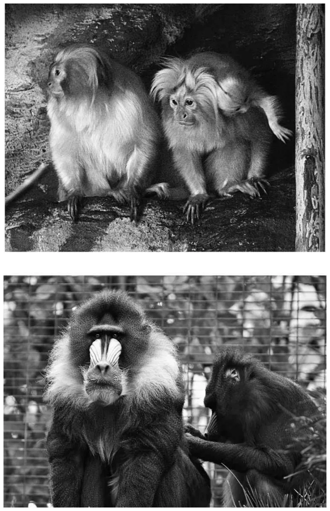
Các cặp đực-cái của khỉ tamarin (trên) và khỉ mặt chó mandrill (dưới)
Trước hết, loài nào có những cuộc xung đột kịch tính, hung hăng giữa các con đực để tranh giành thứ bậc thống trị cao? Loài B, nơi con đực đã được chọn lọc tiến hóa cho kỹ năng chiến đấu và phô trương. Ngược lại, con đực loài A ít hung hăng — đó là lý do con đực không được chọn lọc để có cơ bắp cuồn cuộn.
Còn sự chênh lệch về thành công sinh sản ở con đực thì sao? Ở một loài, 5 phần trăm số con đực thực hiện gần như toàn bộ việc giao phối; ở loài kia, mọi con đực đều sinh sản vài lần. Trường hợp đầu mô tả loài B — đó là mục đích của tất cả những cuộc cạnh tranh thứ bậc kia — trường hợp sau là loài A.
Tiếp theo, ở một loài, nếu con đực giao phối với con cái và cô nàng thụ thai, anh chàng sẽ chăm sóc con cái cực kỳ chu đáo. Ngược lại, không hề thấy kiểu “đầu tư làm cha” như vậy ở loài kia. Quá dễ đoán: trường hợp đầu mô tả loài A; số ít con đực loài B làm cha của hầu hết lũ con chắc chắn chẳng hơi đâu đi chăm con.
Một loài có xu hướng sinh đôi, loài kia thì không. Dễ ợt — xu hướng sinh đôi nằm ở loài A, nơi có sẵn hai đôi tay phụ huynh.
Con đực kén chọn đến mức nào về đối tượng giao phối? Ở loài B, con đực giao phối với bất kỳ ai, bất kỳ đâu, bất kỳ lúc nào — chỉ tốn mỗi chút tinh trùng. Ngược lại, con đực loài A, với quy tắc “Anh làm cô ấy có bầu, anh phải chăm con”, kén chọn hơn nhiều. Liên quan đến điều đó, loài nào hình thành các cặp đôi bền vững? Tất nhiên là loài A.
Sau khi hiệu chỉnh theo kích thước cơ thể, con đực của loài nào có tinh hoàn lớn hơn và lượng tinh trùng cao hơn? Chính là loài B, luôn trong tư thế sẵn sàng giao phối ngay khi cơ hội ập đến.
Con cái tìm kiếm điều gì ở một bạn tình tiềm năng? Con cái loài B chẳng nhận được gì từ con đực ngoài bộ gen, nên chúng phải là những gen tốt. Điều này giúp giải thích các đặc điểm sinh dục thứ cấp hào nhoáng của con đực — “Nếu anh có thể phung phí ngần ấy năng lượng cho cơ bắp cộng thêm cặp gạc màu neon lố bịch này, anh hẳn phải có thể trạng tuyệt vời, với loại gen mà em muốn truyền cho con mình.” Ngược lại, con cái loài A tìm kiếm hành vi ổn định, gắn bó và kỹ năng làm cha tốt ở con đực. Điều này thấy ở các loài chim mang mô thức này, nơi con trống phô diễn tài nghệ làm cha trong lúc tán tỉnh — mớm giun mang tính biểu tượng cho con mái, bằng chứng cho thấy anh ta sẽ là một tay kiếm giun cừ khôi. Liên quan đến điều đó, trong các phiên bản loài chim của loài A và B, ở loài nào con mái có nhiều khả năng bỏ rơi con mình, truyền lại nhiều bản sao gen hơn bằng cách đi sinh sản với một con trống khác? Loài A, nơi bạn thấy hiện tượng “cắm sừng” — bởi vì con trống sẽ ở lại đó, chăm sóc lũ con.
Liên quan đến điều đó, ở loài A, con cái cạnh tranh quyết liệt để kết đôi với một con đực đặc biệt đáng khao khát (tức là có tính phụ hệ/chăm con tốt). Ngược lại, con cái loài B chẳng cần cạnh tranh, vì tất cả những gì chúng nhận được từ con đực chỉ là tinh trùng, và lượng tinh trùng từ những con đực đáng khao khát luôn đủ chia cho tất cả.
Kỳ diệu thay, những gì chúng ta vừa mô tả là một sự phân đôi rộng lớn và đáng tin cậy giữa hai hệ thống xã hội, trong đó A là loài “gắn kết cặp đôi” (pair-bonding), còn B là loài “đấu trường” (tournament).*
Gắn Kết Cặp Đôi Đấu Trường
Hành vi làm cha của con đực Rất nhiều Rất ít
Độ kén chọn bạn tình của con đực Cao Thấp
Chênh lệch thành công sinh sản ở con đực Thấp Cao
Kích thước tinh hoàn, lượng tinh trùng Nhỏ/thấp Lớn/cao
Mức độ hung hăng đực-đực Thấp Cao
Mức độ dị hình giới tính về trọng lượng cơ thể, sinh lý, màu sắc và tuổi thọ Thấp Cao
Con cái chọn lọc dựa trên Kỹ năng làm cha Gen tốt
Tỷ lệ cắm sừng Cao Thấp
Các loài linh trưởng gắn kết cặp đôi bao gồm khỉ Nam Mỹ như marmoset, tamarin và khỉ cú, và trong số các loài vượn là vượn tay dài (với các ví dụ không phải linh trưởng gồm thiên nga, chó rừng, hải ly, và tất nhiên, chuột đồng thảo nguyên ở chương 4). Các loài đấu trường kinh điển bao gồm khỉ đầu chó, khỉ mặt chó mandrill, khỉ rhesus, khỉ vervet và tinh tinh (với các ví dụ không phải linh trưởng gồm linh dương gazelle, sư tử, cừu, công và hải tượng). Không phải loài nào cũng khớp hoàn hảo vào một trong hai thái cực (hãy đón chờ phần sau). Dẫu vậy, điểm cốt lõi là tính logic nội tại mà qua đó các đặc điểm của mỗi kiểu loài tụ lại thành chùm, dựa trên các nguyên lý tiến hóa này.
Xung Đột Cha Mẹ - Con Cái
Một đặc điểm khác của hành vi làm đảo lộn chọn lọc họ hàng. Từ nãy đến giờ chúng ta nhấn mạnh thực tế là họ hàng chia sẻ nhiều gen và mục tiêu tiến hóa. Tuy nhiên, ngoại trừ sinh đôi cùng trứng, một điều cũng quan trọng không kém là họ hàng không chia sẻ toàn bộ gen hay mục tiêu của nhau. Điều này có thể gây ra xung đột.
Có xung đột cha mẹ - con cái. Một ví dụ kinh điển là liệu một con cái có nên cung cấp cho đứa con hiện tại dinh dưỡng tuyệt vời, đảm bảo sự sống sót của nó, nhưng phải đánh đổi bằng dinh dưỡng dành cho những đứa con khác của cô (hoặc hiện tại hoặc tương lai). Đây là xung đột cai sữa.40
Điều này gây ra những cơn ăn vạ bất tận ở linh trưởng.41 Một con khỉ đầu chó cái trông bơ phờ và cáu kỉnh. Cách ba bước phía sau là đứa con chập chững biết đi của nó, phát ra những tiếng rên rỉ, nỉ non thảm thiết nhất có thể tưởng tượng được. Cứ vài phút đứa nhỏ lại tìm cách sà vào bú; bà mẹ bực bội đẩy nó ra, thậm chí tát nó. Lại gào khóc dữ hơn. Đó là xung đột cai sữa giữa cha mẹ và con cái; chừng nào bà mẹ còn cho bú, bà ta khó có khả năng rụng trứng, kìm hãm tiềm năng sinh sản tương lai của mình. Khỉ đầu chó mẹ tiến hóa để cai sữa cho con ở độ tuổi chúng có thể tự kiếm ăn, còn khỉ đầu chó con tiến hóa để tìm cách trì hoãn ngày đó. Thú vị thay, khi con cái già đi, với khả năng có thêm con trong tương lai giảm dần, chúng trở nên bớt quyết liệt hơn trong việc cai sữa.*
Cũng có xung đột mẹ - thai nhi. Bạn là một bào thai mang trong mình một chương trình nghị sự tiến hóa. Bạn muốn gì? Dinh dưỡng tối đa từ Mẹ, và mặc kệ việc đó có ảnh hưởng đến tiềm năng sinh sản tương lai của Mẹ hay không. Trong khi đó, Mẹ muốn cân bằng giữa triển vọng sinh sản hiện tại và tương lai. Kỳ diệu thay, thai nhi và Mẹ có một cuộc giằng co trao đổi chất liên quan đến insulin, hormone tuyến tụy được tiết ra khi đường huyết tăng, giúp kích hoạt đường glucose đi vào các tế bào đích. Thai nhi tiết ra một loại hormone khiến các tế bào của Mẹ trở nên trơ với insulin (tức “kháng insulin”), cũng như một loại enzyme phân hủy insulin của Mẹ. Nhờ vậy Mẹ hấp thụ ít glucose từ máu hơn, để lại nhiều hơn cho thai nhi.*
Xung Đột Di Truyền Liên Giới
Ở một số loài, thai nhi có một đồng minh trong cuộc xung đột mẹ/thai nhi — đó là người cha. Hãy xét một loài nơi con đực sống di cư, giao phối với con cái rồi bỏ đi, không bao giờ gặp lại. Quan điểm của con đực về xung đột mẹ/thai nhi là gì? Đảm bảo thai nhi, tức con của hắn, vơ vét càng nhiều dinh dưỡng càng tốt, ngay cả khi điều đó làm giảm tiềm năng sinh sản tương lai của Mẹ — mặc xác, những đứa con sau này đâu phải con hắn. Hắn không chỉ cổ vũ suông cho thai nhi của mình.
Điều này giúp giải thích một đặc điểm bí ẩn, kỳ quặc của di truyền học. Thông thường một gen hoạt động giống hệt nhau, bất kể nó đến từ bố hay mẹ. Nhưng một số gen hiếm gặp bị “in dấu” (imprinted), hoạt động khác nhau, hoặc chỉ được kích hoạt, tùy thuộc vào nguồn gốc từ bố hay mẹ. Mục đích của chúng đã được khám phá trong một tổng hợp sáng tạo của nhà sinh học tiến hóa David Haig ở Harvard. Các gen in dấu từ bố thiên về thúc đẩy thai nhi phát triển mạnh hơn, trong khi các gen in dấu từ mẹ chống lại điều này. Ví dụ, một số gen từ bố mã hóa cho các phiên bản yếu tố tăng trưởng cực mạnh, trong khi gen từ mẹ mã hóa cho các thụ thể yếu tố tăng trưởng tương đối kém nhạy. Một gen có nguồn gốc từ bố biểu hiện trong não khiến trẻ sơ sinh bú hăng hơn; phiên bản có nguồn gốc từ mẹ kiềm chế điều này. Đó là một cuộc chạy đua vũ trang, với Bố dùng di truyền thúc giục con mình phát triển nhiều hơn bất chấp kế hoạch sinh sản tương lai của con cái, và Mẹ dùng di truyền đối kháng lại bằng một chiến lược sinh sản cân bằng hơn.*
Các loài đấu trường, nơi con đực ít đầu tư vào thành công sinh sản tương lai của con cái, có vô số gen in dấu, trong khi các loài gắn kết cặp đôi thì không.42 Còn loài người thì sao? Hãy đón xem.
CHỌN LỌC ĐA TẦNG
Như vậy chúng ta đã có chọn lọc cá thể, chọn lọc họ hàng và lòng vị tha có đi có lại. Và rồi chuyện gì đã xảy ra trong những năm gần đây? Chọn lọc nhóm tái xuất hiện, lẻn vào bằng cửa sau.
“Tân chọn lọc nhóm” (neo–group selection) đã chen ngang vào một cuộc tranh luận kéo dài về “đơn vị của chọn lọc”.
Kiểu Gen So Với Kiểu Hình, và Tầng Chọn Lọc Có Ý Nghĩa Nhất
Để hiểu điều này, hãy đối chiếu kiểu gen (genotype) và kiểu hình (phenotype). Kiểu gen = cấu trúc di truyền của một cá thể. Kiểu hình = những đặc điểm có thể quan sát được từ thế giới bên ngoài do kiểu gen đó tạo ra.*
Giả sử có một gen ảnh hưởng đến việc lông mày của bạn tách thành hai bên riêng biệt hay nối liền thành một hàng lông mày giao nhau (unibrow). Bạn nhận thấy tỷ lệ lông mày nối liền đang giảm trong quần thể. Tầng nào quan trọng hơn để giải thích tại sao — biến thể gen hay kiểu hình lông mày? Sau chương 8, chúng ta biết kiểu gen và kiểu hình không đồng nghĩa với nhau, bởi vì còn có tương tác gen/môi trường. Có lẽ một tác động môi trường tiền sản nào đó đã làm câm lặng một phiên bản của gen chứ không phải phiên bản kia. Có lẽ một nhóm nhỏ trong quần thể theo một tôn giáo bắt buộc phải che lông mày khi ở gần người khác giới, và do đó kiểu hình lông mày hoàn toàn không chịu tác động của chọn lọc giới tính.
Bạn là một nghiên cứu sinh đang tìm hiểu sự suy giảm của lông mày nối liền, và bạn phải chọn nghiên cứu mọi thứ ở cấp độ kiểu gen hay kiểu hình. Kiểu gen: giải trình tự các biến thể gen lông mày, cố gắng hiểu cơ chế điều hòa của chúng. Kiểu hình: xem xét, chẳng hạn, ngoại hình lông mày và sự lựa chọn bạn tình, hoặc liệu lông mày nối liền có hấp thụ nhiều nhiệt hơn từ ánh nắng mặt trời, từ đó làm tổn thương vỏ não trước trán, gây ra hành vi xã hội không phù hợp và làm giảm thành công sinh sản hay không.
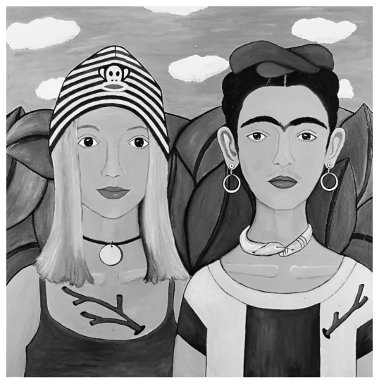
Đây chính là cuộc tranh luận — tiến hóa được hiểu rõ nhất bằng cách tập trung vào kiểu gen hay kiểu hình?
Người ủng hộ nổi tiếng nhất cho quan điểm lấy gen làm trung tâm từ lâu vẫn là Dawkins, với khái niệm kinh điển “gen ích kỷ” — chính gen mới là thứ được truyền sang thế hệ sau, thứ mà các biến thể của nó lan rộng hay suy tàn theo thời gian. Hơn nữa, một gen là một chuỗi chữ cái rõ ràng và phân biệt, mang tính quy giản và không thể chối cãi, trong khi các đặc điểm kiểu hình lại mờ nhạt và kém rạch ròi hơn nhiều.
Đây là cốt lõi của khái niệm “con gà chỉ là cách của quả trứng tạo ra một quả trứng khác” — cơ thể sinh vật chỉ là một cỗ xe để bộ gen tự nhân bản ở thế hệ tiếp theo, và hành vi chỉ là thứ hiện tượng phụ mỏng manh tạo điều kiện cho sự nhân bản đó.
Quan điểm lấy gen làm trung tâm này có thể chia làm hai. Một là bộ gen (tức tập hợp tất cả các gen, yếu tố điều hòa, vân vân) là cấp độ tốt nhất để tư duy. Quan điểm cấp tiến hơn, được Dawkins nắm giữ, là cấp độ phù hợp nhất chính là từng gen đơn lẻ — tức là những gen ích kỷ, chứ không phải những bộ gen ích kỷ.
Giữa một số bằng chứng cho chọn lọc đơn gen (một hiện tượng ít được biết đến gọi là xung đột nội bộ gen, mà chúng ta sẽ không đi sâu vào), phần lớn những người bỏ phiếu cho tầm quan trọng của gen hơn kiểu hình đều coi sự ích kỷ của đơn gen chỉ là một màn phụ và bỏ phiếu rằng cấp độ bộ gen của chọn lọc mới là quan trọng nhất.
Trong khi đó, có quan điểm cho rằng kiểu hình lấn át kiểu gen, điều được Ernst Mayr, Stephen Jay Gould và những người khác cổ vũ. Cốt lõi lập luận của họ là chính kiểu hình chứ không phải kiểu gen mới là thứ được chọn lọc. Như Gould viết: “Dù Dawkins muốn gán cho gen bao nhiêu quyền năng đi nữa, có một thứ ông không thể trao cho chúng — khả năng lộ diện trực tiếp trước chọn lọc tự nhiên.” Theo quan điểm đó, gen và tần số các biến thể của chúng chẳng qua chỉ là bản ghi chép lại những gì nảy sinh từ chọn lọc kiểu hình.43
Dawkins đã đưa ra một phép ẩn dụ tuyệt vời: công thức làm bánh là kiểu gen, còn hương vị chiếc bánh là kiểu hình.* Những người sùng bái kiểu gen nhấn mạnh rằng công thức mới là thứ được truyền lại, chuỗi từ ngữ tạo nên một bản sao ổn định. Nhưng người ta chọn lọc dựa trên hương vị, chứ không phải công thức, phe kiểu hình phản bác, và hương vị phản ánh nhiều thứ hơn là chỉ mỗi công thức — xét cho cùng, có những tương tác công thức/môi trường nơi các thợ làm bánh có tay nghề khác nhau, bánh nướng ở các độ cao khác nhau sẽ ra khác nhau, vân vân. Câu hỏi công thức-đối-chọi-hương-vị có thể được đặt ra một cách thực tế: Công ty bánh của bạn bán không đủ chạy. Bạn thay đổi công thức hay thay đổi thợ làm bánh?
Chẳng lẽ chúng ta không thể hòa thuận với nhau sao? Có một câu trả lời nhân ái hiển nhiên, rằng có chỗ cho nhiều quan điểm và cơ chế khác nhau trong mái lều bảy sắc cầu vồng của sự đa dạng tiến hóa. Những hoàn cảnh khác nhau sẽ đưa những cấp độ chọn lọc khác nhau lên hàng đầu. Đôi khi cấp độ giàu thông tin nhất là đơn gen, đôi khi là bộ gen, đôi khi là một đặc điểm kiểu hình đơn lẻ, đôi khi là tập hợp toàn bộ các đặc điểm kiểu hình của sinh vật.44 Chúng ta vừa đi đến ý tưởng hợp lý về chọn lọc đa tầng (multilevel selection).
Sự Hồi Sinh của Chọn Lọc Nhóm
Hoan hô, tiến bộ rồi. Đôi khi chú ý đến công thức là hợp lý nhất, đôi khi là quy trình nướng bánh; công thức là thứ được nhân bản, hương vị là thứ được chọn lựa.
Nhưng còn một cấp độ khác nữa. Đôi khi doanh số bán bánh có thể thay đổi mang tính quyết định nhất bằng cách thay đổi thứ khác ngoài công thức hay hương vị — quảng cáo, bao bì, hoặc nhận thức xem chiếc bánh là nhu yếu phẩm hay xa xỉ phẩm. Đôi khi doanh số thay đổi nhờ gắn sản phẩm với một đối tượng khán giả cụ thể — hãy nghĩ đến các sản phẩm quảng cáo quy trình thương mại công bằng, Tiệm Bánh Hồi Giáo Da Đen của Quốc Gia Hồi Giáo, hay hệ tư tưởng Cơ Đốc giáo chính thống của chuỗi nhà hàng Chick-fil-A. Và trong những trường hợp đó, cả công thức lẫn hương vị đều có thể bị hệ tư tưởng lấn át trong quyết định mua hàng.
Đây là chỗ mà tân chọn lọc nhóm khớp vào chọn lọc đa tầng — ý tưởng rằng một số đặc điểm di truyền có thể kém thích nghi đối với cá thể nhưng lại thích nghi đối với một nhóm. Điều này mang đậm dấu ấn của sự hợp tác và tính thân thiện xã hội, bước thẳng ra từ phân tích về những kẻ chơi Ăn Miếng Trả Miếng tìm thấy nhau giữa một biển toàn những kẻ Luôn
Phản Bội. Phát biểu một cách hình thức hơn, đó là khi A áp đảo B nhưng một nhóm các B lại áp đảo một nhóm các A.
Đây là một ví dụ tuyệt vời về chủ nghĩa tân chọn lọc nhóm: Là một chủ trại gà, bạn muốn các đàn gà của mình đẻ càng nhiều trứng càng tốt. Hãy chọn những con gà đẻ trứng năng suất nhất trong mỗi đàn, gộp chúng thành một đàn toàn những siêu sao gà mái, những con mà hẳn sẽ đạt năng suất khổng lồ. Thay vào đó, sản lượng trứng lại tụt xuống thảm hại.45
Tại sao mỗi siêu sao kia từng là nữ hoàng đẻ trứng trong đàn ban đầu của nó? Bởi vì nó mổ các con yếu thế một cách hung hãn đủ để khiến chúng căng thẳng đến mức suy giảm khả năng sinh sản. Nhốt tất cả những ả đanh đá này lại với nhau, thì một đàn gồm toàn những con gà yếu thế bị bắt nạt sẽ đẻ vượt trội hơn hẳn chúng.
Điều này khác xa một trời một vực với câu “động vật hành xử vì lợi ích của loài”. Thay vào đó, đây là hoàn cảnh của một đặc điểm chịu ảnh hưởng di truyền, tuy thích nghi ở cấp độ cá thể, nhưng lại bộc lộ sự kém thích nghi khi được cả nhóm chia sẻ và khi có sự cạnh tranh giữa các nhóm (ví dụ: tranh giành một ổ sinh thái).
Đã có sự kháng cự đáng kể đối với chủ nghĩa tân chọn lọc nhóm. Một phần mang tính bản năng, thường rõ rệt ở thế hệ cũ — “Tuyệt thật, chúng ta vừa vất vả tịch thu hết đống băng đĩa Wild Kingdom xong, giờ lại phải chơi trò Đập Chuột với thứ tình cảm ủy mị của chọn lọc nhóm à?” Nhưng sự phản đối căn bản hơn đến từ những người phân biệt rõ chọn lọc nhóm cũ tệ hại với tân chọn lọc nhóm, chấp nhận rằng cái sau có thể xảy ra, nhưng cho rằng nó cực kỳ hiếm.
Có lẽ đúng thế trên khắp vương quốc động vật. Nhưng tân chọn lọc nhóm diễn ra với tần suất và hệ quả to lớn ở loài người. Các nhóm tranh giành bãi săn, đồng cỏ, nguồn nước. Các nền văn hóa khuếch đại cường độ chọn lọc giữa các nhóm và làm giảm chọn lọc nội bộ nhóm bằng chủ nghĩa vị chủng, sự bất khoan dung tôn giáo, chính trị dựa trên chủng tộc, vân vân. Nhà kinh tế học Samuel Bowles, thuộc Viện Santa Fe, nhấn mạnh cách xung đột giữa các nhóm như chiến tranh là động lực thúc đẩy sự hợp tác nội bộ nhóm (“lòng vị tha cục bộ”); ông gọi xung đột liên nhóm là “bà đỡ của lòng vị tha”.46
Phần lớn giới chuyên môn hiện nay vừa chấp nhận chọn lọc đa tầng vừa thấy có chỗ cho các trường hợp của tân chọn lọc nhóm, đặc biệt là ở loài người. Phần lớn sự tái xuất hiện này là công lao của hai nhà khoa học. Người đầu tiên là David Sloan Wilson thuộc Đại học Bang New York tại Binghamton, người đã dành nhiều thập kỷ thúc đẩy tân chọn lọc nhóm (dù ông coi nó thực ra không hẳn là “tân” mà đúng hơn là chọn lọc nhóm kiểu cũ cuối cùng cũng có được sự chặt chẽ khoa học), thường xuyên bị bác bỏ, và bảo vệ lập luận bằng chính nghiên cứu của mình, từ tính xã hội ở cá đến sự tiến hóa của tôn giáo. Ông dần thuyết phục được một số người, quan trọng nhất là nhà khoa học thứ hai, Edward O. Wilson ở Harvard (không có họ hàng). E. O. Wilson có thể coi là nhà tự nhiên học quan trọng nhất nửa sau thế kỷ XX, kiến trúc sư của tổng hợp sinh học xã hội cùng nhiều lĩnh vực khác, một vị thần sinh học. E. O. Wilson từ lâu đã bác bỏ các ý tưởng của David Sloan Wilson. Và rồi vài năm trước, ông lão bát tuần E. O. Wilson đã làm một điều phi thường — ông quyết định rằng mình đã sai. Và rồi ông công bố một bài báo then chốt cùng với ông Wilson kia — “Tái Tư Duy Nền Tảng Lý Thuyết của Sinh Học Xã Hội”. Sự kính trọng của tôi dành cho hai người này, cả với tư cách con người lẫn nhà khoa học, là vô cùng to lớn.47
Như vậy, một thứ gần như sự hòa hoãn (détente) đã diễn ra giữa những người ủng hộ tầm quan trọng của các cấp độ chọn lọc khác nhau. Chiếc ghế ba chân gồm chọn lọc cá thể, chọn lọc họ hàng và lòng vị tha có đi có lại dường như vững chãi hơn khi có bốn chân.
VÀ CHÚNG TA
Con người nằm ở đâu trong tất cả những chuyện này? Hành vi của chúng ta khớp chặt chẽ với các dự đoán của những mô hình tiến hóa này. Cho đến khi bạn nhìn kỹ hơn.48
Hãy bắt đầu bằng cách xóa bỏ vài hiểu lầm. Thứ nhất, chúng ta không tiến hóa từ tinh tinh. Hay từ bất kỳ loài động vật đang tồn tại nào. Chúng ta và tinh tinh chia sẻ một tổ tiên chung từ khoảng năm triệu năm trước (và di truyền học cho thấy tinh tinh cũng bận rộn tiến hóa kể từ đó chẳng kém gì chúng ta).49
Và có những hiểu lầm về việc loài vượn nào là “họ hàng gần nhất” của chúng ta. Theo kinh nghiệm của tôi, người nào thích săn vịt và nhạc đồng quê thường bỏ phiếu cho tinh tinh, nhưng nếu bạn ăn thực phẩm hữu cơ và biết về oxytocin, đó sẽ là tinh tinh lùn bonobo. Thực tế là chúng ta có quan hệ họ hàng gần ngang nhau với cả hai, chia sẻ khoảng 98 đến 99 phần trăm ADN với mỗi loài. Svante Pääbo thuộc các Viện Max Planck ở Đức đã chứng minh rằng 1,6 phần trăm bộ gen người gần với bonobo hơn là với tinh tinh; 1,7 phần trăm gần với tinh tinh hơn là với bonobo.*50 Bất chấp sự pha trộn giữa những mong ước thiết tha nhất và những lời bào chữa của chúng ta, chúng ta không phải bonobo cũng chẳng phải tinh tinh.
Giờ chuyển sang cách những viên gạch khái niệm của tiến hóa hành vi áp dụng lên con người.
Đấu Trường Bừa Bãi hay Gắn Kết Cặp Đôi Một Vợ Một Chồng?
Tôi không thể cưỡng lại việc bắt đầu bằng một câu hỏi khó cưỡng — vậy, chúng ta là loài gắn kết cặp đôi hay loài đấu trường?51
Nền văn minh phương Tây không đưa ra câu trả lời rõ ràng. Chúng ta ca ngợi những mối quan hệ bền vững, chung thủy nhưng lại bị kích thích, cám dỗ và sa ngã trước những lựa chọn thay thế với tỷ lệ cao. Một khi ly hôn được hợp pháp hóa, một tỷ lệ lớn các cuộc hôn nhân kết thúc bằng ly hôn, nhưng một tỷ lệ nhỏ hơn số người đã kết hôn lại ly hôn — tức là tỷ lệ ly hôn cao xuất phát từ những người ly hôn liên hoàn.
Nhân học cũng chẳng giúp được gì hơn. Phần lớn các nền văn hóa cho phép chế độ đa thê. Nhưng trong chính các nền văn hóa đó, phần lớn mọi người lại sống (về mặt xã hội) một vợ một chồng. Nhưng phần lớn những người đàn ông đó có lẽ sẽ lấy nhiều vợ nếu họ đủ tiền mua thêm vợ.
Còn mức độ dị hình giới tính ở người thì sao? Đàn ông cao hơn phụ nữ khoảng 10 phần trăm và nặng hơn 20 phần trăm, cần nhiều hơn 20 phần trăm calo và có tuổi thọ ngắn hơn 6 phần trăm — dị hình nhiều hơn các loài một vợ một chồng, nhưng ít hơn các loài đa thê. Tương tự với các đặc điểm sinh dục thứ cấp tinh tế như chiều dài răng nanh, nơi đàn ông trung bình có răng nanh dài hơn phụ nữ một chút. Hơn nữa, so với, chẳng hạn, vượn tay dài sống một vợ một chồng, nam giới loài người có tinh hoàn lớn hơn và lượng tinh trùng cao hơn theo tỷ lệ cơ thể . . . nhưng chẳng thấm vào đâu so với tinh tinh đa thê. Và quay lại với gen in dấu, phản ánh sự cạnh tranh di truyền liên giới, vốn rất nhiều ở loài đấu trường và không tồn tại ở loài gắn kết cặp đôi. Còn loài người thì sao? Có một số gen như vậy, nhưng không nhiều.
Hết thước đo này đến thước đo khác, kết quả đều giống nhau. Chúng ta không phải một vợ một chồng kinh điển mà cũng chẳng phải đa thê kinh điển. Như mọi người từ thi sĩ đến luật sư ly hôn đều có thể chứng thực, bản chất của chúng ta bối rối sâu sắc — hơi có xu hướng đa thê nhẹ, trôi nổi đâu đó ở khoảng giữa.*
Chọn Lọc Cá Thể
Thoạt nhìn, chúng ta có vẻ là một ví dụ tuyệt vời về loài có động lực hành vi là tối đa hóa thành công sinh sản, nơi một con người có thể là cách của quả trứng tạo ra quả trứng khác, nơi các gen ích kỷ thắng thế. Cứ xem đặc quyền truyền thống của những người đàn ông quyền lực: đa thê. Pharaoh Ramses II, người nay trớ trêu lại gắn tên với một nhãn hiệu bao cao su, có 160 người con và có lẽ chẳng phân biệt nổi ai với Moses. Trong vòng nửa thế kỷ sau khi qua đời năm 1953, Ibn Saud, người sáng lập vương triều Ả Rập Xê Út, đã có hơn ba nghìn hậu duệ. Các nghiên cứu di truyền gợi ý rằng khoảng mười sáu triệu người ngày nay là hậu duệ của Thành Cát Tư Hãn. Và trong những thập kỷ gần đây, hơn một trăm người con mỗi người đã được sinh ra bởi Vua Sobhuza II của Swaziland, con trai của Ibn Saud là Vua Saud, nhà độc tài Jean-Bédel
Bokassa của Cộng hòa Trung Phi, cộng thêm nhiều lãnh đạo Mặc Môn chính thống khác nhau.52
Động lực tối đa hóa thành công sinh sản ở nam giới loài người được thể hiện qua một sự thật then chốt — nguyên nhân phổ biến nhất của bạo lực cá nhân ở người là sự cạnh tranh giữa nam giới với nhau để giành quyền tiếp cận sinh sản trực tiếp hoặc gián tiếp với phụ nữ. Và tiếp đó là tình trạng bạo lực của nam giới nhắm vào phụ nữ phổ biến đến chóng mặt nhằm cưỡng bức tình dục hoặc trả đũa khi bị từ chối.
Vậy nên rất nhiều hành vi của con người hoàn toàn hợp lý trong mắt một con khỉ đầu chó hay hải tượng. Nhưng đó mới chỉ là một nửa câu chuyện. Bất chấp Ramses, Ibn Saud và Bokassa, vô số người từ bỏ việc sinh sản, thường vì thần học hoặc hệ tư tưởng. Và cả một giáo phái — Hội Tín Hữu Thống Nhất tin vào Sự Tái Lâm của Chúa Kitô, tức giáo phái Shaker — sẽ sớm tuyệt chủng vì tín đồ của họ sống độc thân. Và cuối cùng, tính ích kỷ giả định của gen người thúc đẩy chọn lọc cá thể phải dung nạp cả việc các cá thể hy sinh bản thân vì người xa lạ.
Ở phần trước của chương, tôi đã trình bày hành vi giết con non mang tính cạnh tranh như một bằng chứng rõ rệt về tầm quan trọng của chọn lọc cá thể. Liệu có điều gì tương tự xảy ra ở người không? Hai nhà tâm lý học Martin Daly và (cố) Margo Wilson thuộc Đại học McMaster ở Canada đã xem xét các mô thức ngược đãi trẻ em và đưa ra một nhận xét gây sốc — một đứa trẻ có nguy cơ bị ngược đãi hoặc giết hại bởi cha dượng hoặc mẹ kế cao hơn nhiều so với cha mẹ ruột. Điều này dễ dàng được diễn giải như một hiện tượng song song với hành vi giết con non mang tính cạnh tranh.53
Phát hiện này, được gọi là “hiệu ứng Cô bé Lọ lem” (Cinderella effect), dù được các nhà sinh học xã hội về con người đón nhận, nhưng cũng bị chỉ trích gay gắt. Một số người cáo buộc rằng tình trạng kinh tế xã hội chưa được kiểm soát đầy đủ (những gia đình có cha dượng hoặc mẹ kế, thay vì hai cha mẹ ruột, nhìn chung có thu nhập thấp hơn và áp lực kinh tế lớn hơn, vốn là những nguyên nhân đã biết của sự hung hăng trút giận). Những người khác cho rằng có thiên kiến phát hiện — cùng một mức độ ngược đãi nhưng dễ bị nhà chức trách phát hiện hơn khi thủ phạm là cha dượng hoặc mẹ kế. Và phát hiện này đã được lặp lại độc lập ở một số nghiên cứu chứ không phải tất cả. Tôi nghĩ ban bồi thẩm vẫn chưa đưa ra phán quyết cuối cùng về chủ đề này.
Chọn Lọc Họ Hàng
Con người đứng ở đâu xét về chọn lọc họ hàng? Chúng ta đã thấy những ví dụ rất khớp — ví dụ như chế độ đa phu huynh đệ ở Tây Tạng, sự kỳ quặc khi phụ nữ thích mùi của anh em họ nam, tính phổ quát của chủ nghĩa gia đình trị (nepotism).
Hơn nữa, con người bị ám ảnh bởi quan hệ họ hàng hết nền văn hóa này đến nền văn hóa khác, với những hệ thống danh xưng họ hàng công phu (cứ vào một cửa hàng và nhìn các tấm thiệp Hallmark được phân loại theo từng hạng mục họ hàng — cho chị gái, anh trai, chú bác, vân vân). Và trái với các loài linh trưởng khác rời bầy gốc vào khoảng tuổi vị thành niên, khi con người trong xã hội truyền thống kết hôn với người từ nhóm khác và chuyển đến sống cùng họ, họ vẫn duy trì liên lạc với gia đình gốc của mình.54
Hơn nữa, từ người vùng cao New Guinea cho đến gia tộc Hatfield và McCoy, các mối thù truyền kiếp và trả thù đẫm máu diễn ra dọc theo ranh giới huyết thống dòng tộc. Chúng ta thường để lại tiền bạc và đất đai cho con cháu mình thay vì cho người lạ. Từ Ai Cập cổ đại đến Bắc Triều Tiên rồi đến nhà Kennedy và nhà Bush, chúng ta có sự cai trị theo triều đại. Còn màn trình diễn chọn lọc họ hàng ở người này thì sao: Người tham gia được đặt vào kịch bản một chiếc xe buýt đang lao thẳng về phía một người và một con chó bình thường, và họ chỉ có thể cứu một. Họ sẽ chọn ai? Điều đó phụ thuộc vào mức độ họ hàng, khi đi từ anh chị em ruột (1 phần trăm chọn con chó thay vì anh chị em) đến ông bà (2 phần trăm) đến anh em họ xa (16 phần trăm) đến người nước ngoài (26 phần trăm).55
Như một thước đo khác về tầm quan trọng của quan hệ họ hàng trong tương tác của con người, người dân không thể bị ép buộc ra làm chứng trước tòa chống lại người thân trực hệ bậc một ở nhiều quốc gia và tiểu bang Mỹ. Và khi con người bị tổn thương vùng vmPFC (vỏ não trước trán bụng giữa - vùng cảm xúc), họ trở nên vị lợi một cách vô cảm đến mức sẵn sàng chọn làm hại thành viên gia đình để cứu người lạ.56
Có một ví dụ lịch sử hấp dẫn cho thấy việc ai đó chọn người lạ thay vì người thân mang lại cảm giác sai trái đến nhường nào. Đó là câu chuyện về Pavlik Morozov, một cậu bé ở Liên Xô thời Stalin.57 Pavlik trẻ tuổi, theo câu chuyện chính thức, là một công dân kiểu mẫu, một người yêu nước nhiệt thành phất cờ. Năm 1932, cậu chọn nhà nước thay vì họ hàng, tố cáo chính cha mình (vì bị cho là buôn bán chợ đen), người lập tức bị bắt và xử tử. Chẳng bao lâu sau, cậu bé bị giết, bị cho là do chính những người họ hàng vốn đặt nặng chọn lọc họ hàng hơn cậu ra tay.
Bộ máy tuyên truyền của chế độ đã vồ lấy câu chuyện. Tượng đài người tử vì đạo trẻ tuổi của cách mạng được dựng lên. Thơ ca và bài hát được sáng tác; trường học được đặt theo tên cậu. Một vở opera được viết, một bộ phim ca tụng thần thánh được sản xuất.
Khi câu chuyện nổi lên, Stalin được báo cáo về cậu bé. Và phản ứng của người đàn ông hưởng lợi nhiều nhất từ lòng trung thành với nhà nước như vậy là gì? Có phải là “Giá mà mọi công dân của ta đều chính trực như thế; thằng bé này mang lại cho ta hy vọng về tương lai của chúng ta”? Không. Theo nhà sử học Vejas Liulevicius thuộc Đại học Tennessee, khi nghe kể về Pavlik, Stalin khịt mũi khinh bỉ và nói: “Đúng là một con lợn con, dám làm chuyện như thế với chính gia đình mình.” Và rồi ông ta thả cho bộ máy tuyên truyền mặc sức tung hoành.
Như vậy, ngay cả Stalin cũng có chung quan điểm với phần lớn động vật có vú: thằng nhóc đó có vấn đề. Các tương tác xã hội của con người được tổ chức sâu sắc quanh chọn lọc họ hàng; ngoại trừ trường hợp hiếm hoi như Pavlik Morozov, một giọt máu đào hơn ao nước lã.
Tất nhiên, cho đến khi bạn nhìn kỹ hơn. Trước hết, đúng là khắp các nền văn hóa chúng ta bị ám ảnh bởi danh xưng họ hàng, nhưng các danh xưng đó thường không trùng khớp với quan hệ huyết thống sinh học thực sự.
Chúng ta chắc chắn có các mối thù dòng tộc, nhưng chúng ta cũng có những cuộc chiến tranh nơi các chiến binh ở hai chiến tuyến đối địch có mức độ họ hàng gần gũi hơn so với những người lính chiến đấu cùng một chiến tuyến. Anh em ruột đã chiến đấu ở hai phía đối lập trong trận Gettysburg.58
Họ hàng cùng quân đội của họ đánh nhau tranh giành quyền kế vị ngai vàng; những người anh em họ là Vua George V của Anh, Sa hoàng Nicholas II của Nga và Hoàng đế Wilhelm II của Đức đã vui vẻ giám sát và bảo trợ Thế chiến I. Và bạo lực cá nhân nội bộ gia đình vẫn xảy ra (dù ở tỷ lệ cực thấp khi hiệu chỉnh theo lượng thời gian ở bên nhau). Có tội giết cha, thường là hành vi trả thù cho một lịch sử dài bị bạo hành, và tội giết anh chị em. Hiếm khi bắt nguồn từ xung đột về các vấn đề kinh tế hay sinh sản quan trọng — những quyền thừa kế bị đánh cắp mang tầm vóc Kinh Thánh, ai đó ngủ với vợ/chồng của anh chị em mình — tội giết anh chị em thường xuyên nhất bắt nguồn từ những bực dọc và bất đồng kéo dài chỉ tình cờ bùng phát thành án mạng (ví dụ, vào đầu tháng 5 năm 2016, một người đàn ông ở Florida bị buộc tội giết người cấp độ hai vì đã giết anh trai mình — trong một cuộc cãi vã về chiếc bánh mì kẹp phô mai). Và tiếp đó là sự phổ biến kinh tởm của các vụ giết người vì danh dự ở một số nơi trên thế giới, như chúng ta đã thấy.59
Những trường hợp bạo lực nội bộ gia đình khó hiểu nhất, xét theo chọn lọc họ hàng, là việc cha mẹ giết con cái, một hiện tượng phổ biến nhất phát sinh từ vụ giết người/tự sát kết hợp, bệnh tâm thần nặng, hoặc bạo hành vô tình dẫn đến tử vong.*60 Và tiếp đó là những trường hợp người mẹ giết đứa con ngoài ý muốn bị coi là gánh nặng — xung đột cha mẹ/con cái vấy đầy bọt mép của sự điên loạn.61
Trong khi chúng ta để lại tiền bạc cho con cháu, chúng ta cũng làm từ thiện cho những người xa lạ ở nửa bên kia hành tinh (cảm ơn Bill và Melinda Gates) và nhận nuôi trẻ mồ côi từ các châu lục khác. (Chắc chắn rồi, như ta sẽ thấy ở một chương sau, việc làm từ thiện có pha chút tư lợi, và phần lớn người nhận con nuôi làm vậy vì không thể có con ruột — nhưng việc cả hai hành động đó xảy ra đều vi phạm chọn lọc họ hàng nghiêm ngặt.) Và trong hệ thống thừa kế trưởng nam (primogeniture), thứ tự sinh đẻ lấn át mức độ quan hệ huyết thống.
Như vậy, chúng ta vừa có những ví dụ chuẩn sách giáo khoa về chọn lọc họ hàng, vừa có những ngoại lệ đầy kịch tính.
Tại sao con người lại có những sai lệch rõ rệt đến vậy so với chọn lọc họ hàng? Tôi nghĩ điều này thường phản ánh cách con người tiến hành nhận diện người thân. Chúng ta không làm điều đó một cách chắc chắn, bằng khả năng nhận diện bẩm sinh các pheromone bắt nguồn từ MHC theo cách của loài gặm nhấm (mặc dù chúng ta có thể phân biệt mức độ họ hàng ở một chừng mực nào đó qua mùi). Chúng ta cũng không làm điều đó bằng cách in dấu các tín hiệu giác quan, quyết định rằng: “Người này là mẹ tôi vì tôi nhớ giọng bà ấy to nhất khi tôi còn là bào thai.”
Thay vào đó, chúng ta thực hiện việc nhận diện họ hàng một cách nhận thức, bằng cách suy nghĩ về nó. Nhưng điều cốt yếu là không phải lúc nào cũng duy lý — theo quy tắc chung, chúng ta đối xử với mọi người như người thân khi họ mang lại cảm giác như người thân.
Một ví dụ hấp dẫn là hiệu ứng Westermarck, được chứng minh qua các mô thức hôn nhân ở những người lớn lên trong hệ thống nông trang tập thể kibbutz của Israel.62
Nuôi dạy trẻ tập thể là trọng tâm trong tinh thần của mô hình kibbutz nông nghiệp xã hội chủ nghĩa truyền thống. Trẻ em biết bố mẹ mình là ai và tương tác với họ vài giờ mỗi ngày. Nhưng ngoài ra chúng sống, học tập, vui chơi, ăn và ngủ cùng lứa trẻ đồng trang lứa trong các khu nhà chung do y tá và giáo viên phụ trách.
Vào thập niên 1970, nhà nhân học Joseph Shepher đã kiểm tra hồ sơ của tất cả các cuộc hôn nhân từng diễn ra giữa những người xuất thân từ cùng một kibbutz. Và trong gần ba nghìn trường hợp, không có bất kỳ trường hợp nào hai cá thể kết hôn từng ở cùng nhóm tuổi trong sáu năm đầu đời. Ồ, những người cùng nhóm bạn đồng trang lứa đó thường có mối quan hệ yêu thương, gắn bó, thân thiết suốt đời. Nhưng không có sự hấp dẫn tình dục. “Mình yêu anh ấy/cô ấy lắm, nhưng mình có bị hấp dẫn không? Ọe — anh ấy/cô ấy có cảm giác như anh em ruột của mình.” Ai mang lại cảm giác như người thân (và do đó không giống bạn tình tiềm năng)? Người mà bạn từng tắm chung rất nhiều lần khi cả hai còn nhỏ.
Sự phi lý này thì sao? Quay lại chuyện mọi người quyết định cứu người hay cứu con chó. Quyết định không chỉ phụ thuộc vào người đó là ai (anh chị em, anh em họ, người lạ) mà còn phụ thuộc vào con chó là ai — một con chó lạ hay chó của chính bạn. Đáng kinh ngạc là 46 phần trăm phụ nữ sẽ cứu con chó của mình thay vì một du khách nước ngoài. Một con khỉ đầu chó, thỏ cộc hay sư tử có lý trí sẽ kết luận gì? Rằng những phụ nữ đó tin họ có quan hệ họ hàng gần với một con sói trẻ hóa (neotenized wolf) hơn là với một con người khác. Nếu không thì tại sao lại hành xử như vậy? “Tôi sẵn lòng hy sinh mạng sống vì tám người anh em họ hoặc cô chó labradoodle tuyệt vời của tôi, Sadie.”
— Sự phi lý của con người trong việc phân biệt họ hàng với người ngoài đưa chúng ta đến trái tim của những hành vi tốt đẹp nhất và tồi tệ nhất của chúng ta. Đó là bởi một điều cốt yếu — chúng ta có thể bị thao túng để cảm thấy mình có họ hàng gần hơn hoặc xa hơn với ai đó so với thực tế. Khi là trường hợp đầu, những điều tuyệt vời xảy ra — chúng ta nhận nuôi, quyên góp, bênh vực, đồng cảm. Chúng ta nhìn một người rất khác mình và thấy những điểm tương đồng. Nó được gọi là giả họ hàng (pseudokinship). Còn điều ngược lại? Một trong những công cụ của kẻ tuyên truyền và nhà tư tưởng nhằm kích động lòng căm thù đối với nhóm ngoài — người da đen, người Do Thái, người Hồi giáo, người Tutsi, người Armenia, người Roma — là mô tả họ như súc vật, sâu bọ, gián, mầm bệnh. Khác biệt đến mức hầu như không được tính là con người. Nó được gọi là giả phân loài (pseudospeciation), và như sẽ thấy ở chương 15, nó làm nền cho nhiều khoảnh khắc tồi tệ nhất của chúng ta.
Lòng Vị Tha Có Đi Có Lại và Chủ Nghĩa Tân Chọn Lọc Nhóm
Không có nhiều điều để nói ở đây ngoài việc đây là phần thú vị nhất trong chương. Khi Axelrod khởi động giải đấu vòng tròn của mình, ông không đi hỏi, chẳng hạn, lũ cá về chiến lược Song đề Tù nhân của chúng. Ông hỏi con người.
Chúng ta là loài có sự hợp tác chưa từng có giữa những cá thể không họ hàng, thậm chí hoàn toàn xa lạ; các tập đoàn amip Dictyostelium phải xanh mặt ghen tị trước khả năng làm sóng người trên sân vận động bóng đá của con người. Chúng ta làm việc tập thể như những người săn bắt hái lượm hay như các giám đốc điều hành CNTT. Tương tự khi chúng ta ra trận hoặc giúp đỡ nạn nhân thảm họa ở tận nửa vòng trái đất. Chúng ta làm việc theo nhóm để cướp máy bay và lao vào các tòa nhà, hoặc để trao giải Nobel Hòa bình.
Quy tắc, luật pháp, hiệp ước, hình phạt, lương tâm xã hội, tiếng nói nội tâm, đạo đức, luân lý, sự trừng phạt của thần linh, những bài hát mẫu giáo về sự sẻ chia — tất cả đều được thúc đẩy bởi chiếc chân thứ ba của sự tiến hóa hành vi, tức là việc những người không họ hàng hợp tác với nhau mang lại lợi thế tiến hóa. Đôi khi.
Một biểu hiện của khuynh hướng mạnh mẽ này ở người gần đây đã được các nhà nhân học đánh giá đúng mức. Quan điểm chuẩn về người săn bắt hái lượm trước đây cho rằng bản chất hợp tác, bình đẳng của họ phản ánh mức độ họ hàng cao trong các nhóm — tức chọn lọc họ hàng. Phiên bản “đàn ông đi săn” về người săn bắt hái lượm cho rằng điều này bắt nguồn từ chế độ cư trú bên nhà chồng (patrilocality, tức nơi người phụ nữ khi kết hôn chuyển đến sống với nhóm của người chồng mới), trong khi phiên bản săn bắt hái lượm phóng khoáng hơn lại gắn nó với chế độ cư trú bên nhà vợ (matrilocality, tức ngược lại). Tuy nhiên, một nghiên cứu trên hơn năm nghìn người từ ba mươi hai xã hội săn bắt hái lượm trên khắp thế giới* cho thấy chỉ khoảng 40 phần trăm người trong các bầy nhóm là có quan hệ huyết thống.63 Nói cách khác, tính hợp tác của người săn bắt hái lượm, viên gạch xây dựng xã hội của 99 phần trăm lịch sử tông người, dựa vào lòng vị tha có đi có lại giữa những người không họ hàng ít nhất cũng ngang bằng với chọn lọc họ hàng (với lưu ý ở chương 9 rằng điều này giả định người săn bắt hái lượm đương đại là đại diện tốt cho người tiền sử).
Như vậy con người xuất sắc trong việc hợp tác giữa những người không họ hàng. Chúng ta đã xem xét các hoàn cảnh ủng hộ lòng vị tha có đi có lại; điều này sẽ được quay lại ở chương cuối. Hơn nữa, không chỉ những đàn gà hiền lành đánh bại những đàn gà hung dữ mới hồi sinh chủ nghĩa chọn lọc nhóm. Nó nằm ở cốt lõi của sự hợp tác và cạnh tranh giữa các nhóm người và các nền văn hóa.
Như vậy con người đi chệch khỏi các dự đoán nghiêm ngặt về sự tiến hóa của hành vi. Và điều này rất liên quan khi xem xét ba chỉ trích lớn đối với sinh học xã hội.
CÂU HỎI QUEN THUỘC: GEN ĐÂU RỒI?
Tôi đã chỉ ra ở trên một yêu cầu cho tân chọn lọc nhóm, đó là gen phải tham gia vào một đặc điểm có sự khác biệt giữa các nhóm lớn hơn trong nội bộ nhóm. Điều này áp dụng cho mọi thứ trong chương này. Yêu cầu đầu tiên để một đặc điểm tiến hóa là nó phải di truyền được. Nhưng điều này thường bị lãng quên dọc đường, khi các mô hình tiến hóa ngầm giả định các ảnh hưởng di truyền. Chương 8 đã cho thấy ý tưởng có “cái gen”, hay thậm chí các gen, “quy định cho” sự hung hăng, trí thông minh, lòng thấu cảm, vân vân mong manh đến mức nào. Với thực tế đó, còn mong manh hơn nữa là ý tưởng về một (hay nhiều) gen quy định việc tối đa hóa thành công sinh sản của bạn bằng cách, chẳng hạn, “giao phối bừa bãi với mọi con cái có sẵn”, hoặc bằng cách “bỏ rơi con cái và đi tìm bạn tình mới, vì người cha sẽ nuôi chúng”.
Thế nên các nhà phê bình thường đòi hỏi: “Cho tôi xem cái gen mà anh giả định là có ở đó đi.” Và các nhà sinh học xã hội sẽ đáp lại: “Cho tôi xem một lời giải thích tiết kiệm hơn giả định này đi.”
THÁCH THỨC TIẾP THEO: SỰ THAY ĐỔI TIẾN HÓA CÓ LIÊN TỤC VÀ TIỆM TIẾN KHÔNG?
Thuật ngữ “tiến hóa” mang theo những hành lý phụ thuộc ngữ cảnh. Nếu bạn ở Vành đai Kinh Thánh (Bible Belt), tiến hóa là trò bôi nhọ của phe cánh tả nhằm vào Chúa trời, đạo đức và tính ngoại lệ của con người. Nhưng với phe cực tả, “tiến hóa” lại là một thuật ngữ phản động, sự thay đổi chậm chạp cản trở thay đổi thực sự — “Mọi cải cách đều phá hoại cách mạng.” Thách thức tiếp theo này đặt vấn đề liệu tiến hóa thực chất thiên về cách mạng nhanh chóng hơn là cải cách chậm rãi.
Một tiền đề cơ bản của sinh học xã hội là sự thay đổi tiến hóa diễn ra từ từ, từng bước nhỏ. Khi một áp lực chọn lọc thay đổi dần dần, một biến thể gen hữu ích trở nên phổ biến hơn trong vốn gen của quần thể. Khi đủ nhiều thay đổi tích tụ, quần thể đó thậm chí có thể cấu thành một loài mới (“tiến hóa tiệm tiến theo dòng” - phyletic gradualism). Qua hàng triệu năm, khủng long dần biến thành gà, các sinh vật hội đủ điều kiện làm động vật có vú xuất hiện khi dịch tiết tuyến dần tiến hóa thành sữa, ngón tay cái ngày càng đối diện nhiều hơn ở các loài tiền linh trưởng. Tiến hóa diễn ra từ từ, liên tục.
Năm 1972, Stephen Jay Gould và nhà cổ sinh vật học Niles Eldredge thuộc Bảo tàng Lịch sử Tự nhiên Hoa Kỳ đề xuất một ý tưởng âm ỉ rồi bùng cháy vào thập niên 1980. Họ lập luận rằng tiến hóa không diễn ra từ từ; thay vào đó, phần lớn thời gian chẳng có gì xảy ra, và tiến hóa diễn ra trong những cú giật mình nhanh chóng, kịch tính ngắt quãng.64
Cân Bằng Ngắt Quãng
Ý tưởng của họ, được gọi là cân bằng ngắt quãng (punctuated equilibrium), neo vào cổ sinh vật học. Hồ sơ hóa thạch, như chúng ta đều biết, cho thấy thuyết tiệm tiến — tổ tiên loài người cho thấy hộp sọ lớn dần lên, tư thế thẳng đứng hơn, vân vân. Và nếu hai hóa thạch theo trình tự thời gian khác nhau rất nhiều, một bước nhảy trong tiến trình tiệm tiến, hẳn phải có một dạng trung gian tức là “mắt xích còn thiếu”
từ giai đoạn giữa hai hóa thạch đó. Với đủ số lượng hóa thạch trong một dòng dõi, mọi thứ sẽ trông có vẻ tiệm tiến.
Eldredge và Gould tập trung vào thực tế là có rất nhiều hồ sơ hóa thạch đầy đủ liên tục về mặt thời gian (ví dụ: bọ ba thùy và ốc sên, lần lượt là chuyên môn của Eldredge và Gould) nhưng lại không cho thấy sự tiệm tiến. Thay vào đó là những giai đoạn dài tĩnh tại, của những hóa thạch không đổi, và rồi, trong một cái chớp mắt cổ sinh vật học, diễn ra sự chuyển đổi nhanh chóng sang một hình thái rất khác. Có lẽ tiến hóa phần lớn là như thế, họ lập luận. Điều gì kích hoạt các sự kiện ngắt quãng của sự thay đổi đột ngột? Một nhân tố chọn lọc đột ngột, khổng lồ giết chết phần lớn một loài, những kẻ sống sót duy nhất là những kẻ mang một đặc điểm di truyền ít người biết đến nào đó hóa ra lại sống còn — một “nút thắt cổ chai tiến hóa” (evolutionary bottleneck).
Tại sao cân bằng ngắt quãng lại thách thức tư duy sinh học xã hội? Thuyết tiệm tiến của sinh học xã hội hàm ý rằng từng chút khác biệt nhỏ về độ thích nghi đều có giá trị, rằng mọi lợi thế nhỏ nhoi của cá thể này so với cá thể khác trong việc để lại bản sao gen ở thế hệ tương lai đều chuyển hóa thành sự thay đổi tiến hóa. Tại mọi thời điểm, việc tối ưu hóa cạnh tranh, hợp tác, hung hăng, đầu tư làm cha mẹ, tất cả mọi thứ, đều có hệ quả tiến hóa. Và nếu thay vào đó phần lớn là sự tĩnh tại tiến hóa, phần lớn chương này trở nên hầu như vô nghĩa.*
Các nhà sinh học xã hội chẳng lấy làm vui vẻ. Họ gọi phe cân bằng ngắt quãng là “lũ giật cục” (jerks — cũng có nghĩa là đồ khốn) (trong khi phe cân bằng ngắt quãng gọi họ là “lũ bò trườn” (creeps — cũng có nghĩa là đồ ghê tởm) — hiểu ý chơi chữ chứ? PE = tiến hóa theo một chuỗi các cú giật; sinh học xã hội = tiến hóa như một quá trình bò trườn từ tốn).* Các nhà sinh học xã hội theo thuyết tiệm tiến đáp trả bằng những lập luận phản bác mạnh mẽ, dưới nhiều hình thức:
Chúng chỉ là vỏ ốc thôi mà. Thứ nhất, có một số dòng dõi hóa thạch rất đầy đủ mang tính tiệm tiến. Và đừng quên, phe tiệm tiến nói, mấy ông cân bằng ngắt quãng này đang nói về hóa thạch bọ ba thùy và ốc sên. Hồ sơ hóa thạch mà chúng ta quan tâm nhất — linh trưởng, tông người — quá rải rác để biết nó là tiệm tiến hay ngắt quãng.
Mắt họ chớp nhanh cỡ nào? Tiếp theo, phe tiệm tiến nói, hãy nhớ rằng những người hâm mộ cân bằng ngắt quãng này là các nhà cổ sinh vật học. Họ thấy những giai đoạn tĩnh tại dài và rồi những thay đổi cực nhanh trong nháy mắt ở hồ sơ hóa thạch. Nhưng với hóa thạch, một cái chớp mắt, một quãng thời gian ngắn không thể phân giải được trong hồ sơ hóa thạch, có thể kéo dài từ 50.000 đến 100.000 năm. Đó là quá nhiều thời gian để tiến hóa đẫm máu răng nanh và móng vuốt diễn ra. Đây chỉ là một sự bác bỏ một phần, bởi nếu một cái chớp mắt cổ sinh vật học đã dài như vậy, thì sự tĩnh tại cổ sinh vật học còn dài khủng khiếp đến mức nào.
Họ đang bỏ sót những thứ quan trọng. Một đòn phản bác then chốt là nhắc nhở mọi người rằng các nhà cổ sinh vật học nghiên cứu những thứ hóa thạch được. Xương, vỏ, bọ trong hổ phách. Không phải nội tạng — não, tuyến yên, buồng trứng. Không phải tế bào — nơ-ron, tế bào nội tiết, trứng, tinh trùng. Không phải phân tử — chất dẫn truyền thần kinh, hormone, enzyme. Nói cách khác, chẳng có thứ nào thú vị cả. Mấy gã phiền toái theo thuyết cân bằng ngắt quãng đó dành cả sự nghiệp đo đạc hàng tỷ cái vỏ ốc và, dựa trên điều đó, phán rằng chúng ta sai về sự tiến hóa của hành vi ư?
Điều này mở đường cho một sự thỏa hiệp nào đó. Có lẽ xương chậu của tông người quả thực đã tiến hóa theo kiểu ngắt quãng, với những giai đoạn dài tĩnh tại và những đợt thay đổi nhanh chóng. Và có lẽ sự tiến hóa của tuyến yên cũng ngắt quãng, nhưng với những cú ngắt quãng ở những thời điểm khác. Và có lẽ các thụ thể hormone steroid, cách tổ chức của nơ-ron vỏ não trán và phát minh ra oxytocin cùng vasopressin tất cả cũng tiến hóa theo cách đó, nhưng mỗi thứ trải qua thay đổi ngắt quãng vào một thời điểm khác nhau. Xếp chồng và lấy trung bình những mô thức ngắt quãng này lại, nó sẽ trông giống thuyết tiệm tiến. Tuy nhiên, điều này cũng chỉ đi được một đoạn, vì nó giả định sự xảy ra của vô số nút thắt cổ chai tiến hóa.
Sinh học phân tử đâu rồi? Một trong những đòn phản bác mạnh nhất của phe tiệm tiến mang tính phân tử. Vi đột biến (micromutation), bao gồm các đột biến điểm, thêm và mất đoạn làm thay đổi tinh tế chức năng của các protein sẵn có, hoàn toàn phù hợp với thuyết tiệm tiến. Nhưng cơ chế nào của tiến hóa phân tử giải thích được sự thay đổi nhanh chóng, kịch tính và những giai đoạn tĩnh tại kéo dài?
Như chúng ta đã thấy ở chương 8, những thập kỷ gần đây đã cung cấp nhiều cơ chế phân tử khả dĩ cho sự thay đổi nhanh chóng. Đây là thế giới của đại đột biến (macromutation): (a) các đột biến điểm, thêm và mất đoạn truyền thống ở những gen mà protein của chúng có hiệu ứng mạng lưới khuếch đại (yếu tố phiên mã, enzyme cắt nối, transposase) trong một exon được biểu hiện ở nhiều protein, hoặc trong các gen mã hóa enzyme tham gia biểu sinh; (b) các đột biến truyền thống ở vùng promoter, làm biến đổi thời điểm/vị trí/mức độ biểu hiện gen (nhớ thay đổi ở vùng promoter biến chuột đồng đa thê thành một vợ một chồng chứ?); (c) các đột biến phi truyền thống như nhân đôi hoặc xóa bỏ toàn bộ gen. Tất cả đều là phương tiện cho những thay đổi lớn, nhanh chóng.
Nhưng còn cơ chế phân tử cho sự tĩnh tại thì sao? Ném bừa một đột biến ngẫu nhiên vào một gen yếu tố phiên mã, từ đó tạo ra một cụm gen mới chưa từng được biểu hiện đồng thời trước đây. Xác suất để nó không trở thành thảm họa là bao nhiêu? Đột biến ngẫu nhiên một gen mã hóa enzyme trung gian cho biến đổi biểu sinh, từ đó tạo ra những mô thức làm câm lặng gen khác hẳn một cách ngẫu nhiên. Ừ, chắc chắn chuyện đó sẽ êm đẹp lắm đây. Thả dù một yếu tố di truyền nhảy vào giữa một gen nào đó, thay đổi một enzyme cắt nối để nó trộn lẫn các exon khác nhau trong nhiều protein. Cả hai đều là tự chuốc họa vào thân. Hàm ý trong đó là sự tĩnh tại, một tính bảo thủ đối với thay đổi tiến hóa — phải cần những đại biến đổi cực kỳ đặc biệt trong những thời điểm thử thách cực kỳ đặc biệt mới gặp may.
Cho chúng tôi xem vài thay đổi nhanh chóng thực tế đi. Đòn phản bác cuối cùng của phe tiệm tiến là đòi bằng chứng thời gian thực về sự thay đổi tiến hóa nhanh chóng ở các loài. Và có rất nhiều. Một ví dụ là nghiên cứu tuyệt vời của nhà di truyền học người Nga Dmitry Belyaev, người vào thập niên 1950 đã thuần hóa loài cáo bạc Siberia.65 Ông cho lai tạo những con cáo nuôi nhốt dựa trên sự sẵn sàng lại gần con người của chúng, và chỉ trong vòng ba mươi lăm thế hệ, ông đã tạo ra những con cáo thuần chủng biết rúc vào lòng bạn. Khá là ngắt quãng, tôi phải công nhận vậy. Vấn đề ở đây là đó là chọn lọc nhân tạo chứ không phải chọn lọc tự nhiên.

Thú vị thay, điều ngược lại đã xảy ra ở Moscow, nơi có một quần thể ba mươi nghìn con chó hoang có nguồn gốc từ thế kỷ XIX (và nơi một số con chó đương đại nổi tiếng là đã thành thạo việc đi tàu điện ngầm Moscow).66 Phần lớn chó Moscow hiện nay là hậu duệ của nhiều thế hệ chó hoang, và qua thời gian chúng đã tiến hóa để có cấu trúc bầy đàn độc đáo, tránh né con người và không còn vẫy đuôi nữa. Nói cách khác, chúng đang tiến hóa thành một thứ giống chó sói. Rất có thể những thế hệ đầu tiên của các quần thể hoang dã này đã chịu sự chọn lọc khốc liệt cho những đặc điểm này, và hậu duệ của chúng chính là quần thể hiện tại.*67
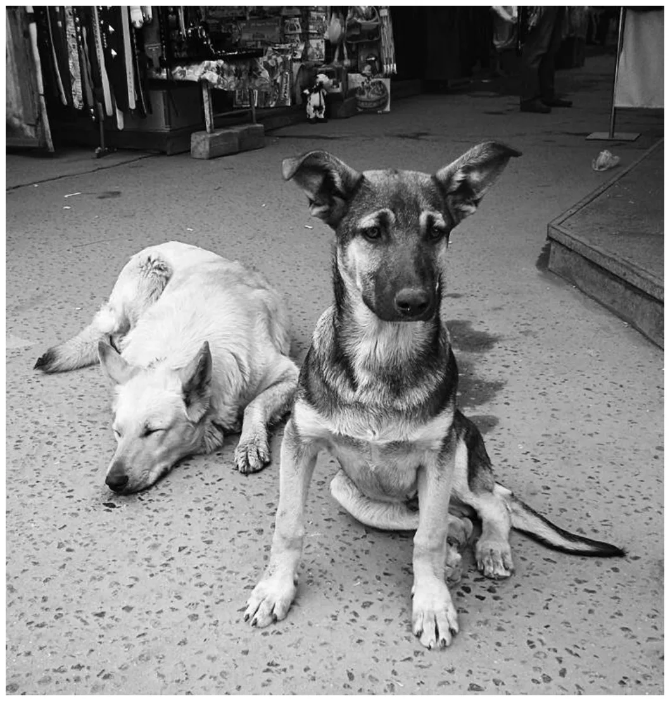
Chó hoang Moscow
Sự thay đổi nhanh chóng trong vốn gen người cũng đã xảy ra với sự lan rộng của khả năng dung nạp lactase kéo dài (lactase persistence) — một thay đổi trong gen mã hóa enzyme lactase, vốn tiêu hóa đường lactose, sao cho nó tiếp tục hoạt động đến tuổi trưởng thành, cho phép người lớn tiêu thụ sữa.68 Biến thể mới phổ biến ở các quần thể sống nhờ sữa — những người du mục chăn thả gia súc như người Mông Cổ hay người Maasai ở Đông Phi — và hầu như không tồn tại ở các quần thể không dùng sữa sau khi cai sữa —
người Trung Quốc và Đông Nam Á. Khả năng dung nạp lactase kéo dài đã tiến hóa và lan rộng trong một phần nhỏ của cái chớp mắt địa chất — khoảng mười nghìn năm trở lại đây, đồng tiến hóa với việc thuần hóa động vật cho sữa.
Các gen khác còn lan rộng ở người nhanh hơn nữa. Ví dụ, một biến thể của gen gọi là ASPM, tham gia vào quá trình phân chia tế bào trong lúc phát triển não bộ, đã xuất hiện và lan rộng tới khoảng 20 phần trăm loài người trong 5.800 năm qua.69 Và các gen mang lại khả năng kháng sốt rét (với cái giá là các bệnh khác, như bệnh hồng cầu hình liềm hoặc bệnh tan máu bẩm sinh thalassemia) thậm chí còn trẻ hơn.
Tuy nhiên, hàng nghìn năm chỉ được tính là nhanh đối với mấy người bị ám ảnh bởi vỏ ốc thôi. Dù vậy, tiến hóa đã được quan sát thấy trong thời gian thực. Một ví dụ kinh điển là công trình của hai nhà sinh học tiến hóa thuộc Đại học Princeton, Peter và Rosemary Grant, những người trong suốt nhiều thập kỷ làm việc tại quần đảo Galapagos đã chứng minh sự thay đổi tiến hóa đáng kể ở loài chim sẻ của Darwin. Sự thay đổi tiến hóa ở người đã xảy ra ở các gen liên quan đến trao đổi chất, khi các quần thể chuyển đổi từ chế độ ăn truyền thống sang chế độ ăn phương Tây hóa (ví dụ: người dân đảo Thái Bình Dương từ Nauru, người Mỹ bản địa thuộc bộ lạc Pima ở Arizona). Những thế hệ đầu tiên ăn chế độ phương Tây hóa phát triển tỷ lệ béo phì, cao huyết áp, tiểu đường khởi phát ở tuổi trưởng thành và tử vong sớm cao một cách thảm khốc, do các kiểu gen “tiết kiệm” (thrifty) vốn cực giỏi tích trữ dưỡng chất, được tôi luyện qua hàng thiên niên kỷ ăn uống kham khổ. Nhưng chỉ trong vòng vài thế hệ, tỷ lệ tiểu đường bắt đầu giảm xuống, khi xuất hiện sự gia tăng tỷ lệ trong quần thể của các kiểu gen trao đổi chất “phóng khoáng hơn”.70
Như vậy, có những ví dụ về sự thay đổi nhanh chóng trong tần số gen ở thời gian thực. Có ví dụ nào về thuyết tiệm tiến không? Điều đó khó chứng minh bởi vì thay đổi tiệm tiến thì, ờ, tiệm tiến mà. Tuy nhiên, một ví dụ tuyệt vời đến từ công trình kéo dài hàng thập kỷ của Richard Lenski thuộc Đại học Bang Michigan. Ông đã nuôi cấy các khuẩn lạc vi khuẩn E. coli trong điều kiện không đổi suốt 58.000 thế hệ, tương đương khoảng một triệu năm tiến hóa của loài người. Qua thời gian đó, các khuẩn lạc khác nhau đã tiến hóa dần dần theo những cách đặc trưng, trở nên thích nghi hơn.71
Do đó, cả thuyết tiệm tiến lẫn sự thay đổi ngắt quãng đều xảy ra trong tiến hóa, có lẽ tùy thuộc vào các gen liên quan — ví dụ, tốc độ tiến hóa của các gen biểu hiện ở một số vùng não nhanh hơn ở các vùng khác. Và dù những thay đổi có nhanh đến đâu đi nữa, luôn có một mức độ tiệm tiến nhất định — chưa bao giờ có con cái nào đẻ ra một cá thể thuộc loài mới cả.72
MỘT THÁCH THỨC CUỐI CÙNG ĐẬM MÀU CHÍNH TRỊ: CÓ PHẢI MỌI THỨ ĐỀU THÍCH NGHI?
Như chúng ta đã thấy, các biến thể gen giúp sinh vật thích nghi hơn với môi trường sẽ tăng tần suất theo thời gian. Nhưng còn chiều ngược lại thì sao — nếu một đặc điểm phổ biến trong quần thể, có nhất thiết nghĩa là nó đã tiến hóa trong quá khứ vì nó mang tính thích nghi không?73
“Chủ nghĩa thích nghi” (adaptationism) giả định rằng thường là như vậy; cách tiếp cận theo chủ nghĩa thích nghi là xác định xem một đặc điểm có thực sự thích nghi hay không và, nếu có, những lực chọn lọc nào đã tạo ra nó. Phần lớn tư duy sinh học xã hội mang đậm hương vị của chủ nghĩa thích nghi.
Điều này đã hứng chịu sự chỉ trích gay gắt từ những người như Stephen Jay Gould và nhà di truyền học Richard Lewontin của Harvard, những người chế giễu cách tiếp cận này là những câu chuyện “chỉ vì thế thôi” (just so stories), đặt theo những truyện hoang đường phi lý của Kipling về cách một số đặc điểm hình thành: con voi có cái vòi như thế nào (vì kéo co với một con cá sấu), ngựa vằn có vằn như thế nào, hươu cao cổ có cổ dài như thế nào. Vậy tại sao lại không, những người chỉ trích này mỉa mai hỏi các nhà sinh học xã hội, khỉ đầu chó đực có hòn dái to đùng trong khi khỉ đột đực có hòn dái bé tí như thế nào? Quan sát một hành vi, bịa ra một câu chuyện “chỉ vì thế” giả định sự thích nghi, và người nào kể câu chuyện hay nhất sẽ thắng. Nhà sinh học tiến hóa đã giành được biên chế vĩnh viễn như thế nào. Theo quan điểm của họ, các tiêu chuẩn của sinh học xã hội thiếu sự chặt chẽ. Như một nhà phê bình, Andrew Brown, phát biểu: “Vấn đề là sinh học xã hội giải thích quá nhiều mà dự đoán quá ít.”74
Theo Gould, các đặc điểm thường tiến hóa vì một lý do và sau đó được trưng dụng cho một công dụng khác (thuật ngữ hoa mỹ: “tiền thích nghi trưng dụng” / exaptation); ví dụ, lông vũ có trước sự tiến hóa khả năng bay của chim và ban đầu tiến hóa để giữ nhiệt.75
Chỉ về sau công dụng khí động học của chúng mới trở nên liên quan. Tương tự, sự nhân đôi của một gen mã hóa thụ thể hormone steroid (như đã đề cập nhiều chương trước) cho phép một bản sao trôi dạt ngẫu nhiên trong trình tự ADN của nó, tạo ra một thụ thể “mồ côi” vô dụng — cho đến khi một hormone steroid mới được tổng hợp tình cờ gắn được vào nó. Chất lượng chắp vá, tạm bợ này gợi lên câu cách ngôn “Tiến hóa là một thợ sửa vặt, không phải một nhà phát minh.” Nó làm việc với bất cứ thứ gì có sẵn khi áp lực chọn lọc thay đổi, tạo ra một kết quả có thể không phải là thích nghi nhất nhưng đủ tốt, xét trên những nguyên liệu ban đầu. Mực ống không phải những tay bơi cừ khôi nếu so với cá buồm (tốc độ tối đa: sáu mươi tám dặm một giờ). Nhưng chúng quá ổn đối với một thứ có cụ kỵ là động vật thân mềm.
Trong khi đó, theo lời chỉ trích, một số đặc điểm tồn tại không phải vì chúng thích nghi, hay từng thích nghi cho thứ khác rồi bị trưng dụng, mà vì chúng là hành lý đi kèm theo những đặc điểm khác vốn được chọn lọc. Chính tại đây Gould và Lewontin đã nổi tiếng giới thiệu khái niệm “spandrel” (vòm tam giác góc tường) trong bài báo năm 1979 của họ “Những Vòm Tam Giác ở San Marco và Hệ Hình Pangloss: Phê Bình Chương Trình Chủ Nghĩa Thích Nghi”. Spandrel là một thuật ngữ kiến trúc chỉ khoảng không gian hình tam giác nằm giữa hai mái vòm, và Gould cùng Lewontin đã xem xét các tác phẩm nghệ thuật vẽ trên các vòm tam giác của Vương cung thánh đường San Marco ở Venice.*
Một người theo chủ nghĩa thích nghi rập khuôn trong tưởng tượng của Gould và Lewontin sẽ nhìn vào những vòm tam giác này và kết luận rằng chúng được xây dựng để cung cấp không gian cho tác phẩm nghệ thuật. Nói cách khác, những vòm tam giác này tiến hóa vì giá trị thích nghi của chúng trong việc tạo chỗ vẽ tranh. Thực tế chúng chẳng tiến hóa vì mục đích nào cả — nếu bạn định xây một dãy mái vòm (thứ chắc chắn tồn tại vì mục đích thích nghi là chống đỡ một mái vòm lớn), một khoảng trống giữa mỗi cặp vòm là một sản phẩm phụ tất yếu. Không hề có sự thích nghi. Và đằng nào những khoảng trống này cũng bị mang theo như hành lý tiến hóa do sự chọn lọc cho những mái vòm thích nghi, nên tiện thể vẽ lên đó luôn. Theo quan điểm đó, núm vú ở nam giới là những vòm tam giác — chúng đóng vai trò thích nghi ở nữ giới và đi ké theo như hành lý ở nam giới vì chẳng có áp lực chọn lọc đặc biệt nào chống lại việc nam giới có chúng.* Gould và Lewontin lập luận rằng vô số đặc điểm từng khơi nguồn cho những câu chuyện “chỉ vì thế” của phe thích nghi thực chất chỉ là những vòm tam giác.
Các nhà sinh học xã hội đáp trả chủ nghĩa vòm tam giác bằng cách lưu ý rằng sự chặt chẽ trong việc tuyên bố thứ gì đó là vòm tam giác về bản chất chẳng cao hơn việc tuyên bố nó mang tính thích nghi.76 Nói cách khác, phe kia đưa ra những câu chuyện “chỉ-không-phải-thế”. Nhà tâm lý học David Barash và bác sĩ tâm thần Judith Lipton ví những người theo thuyết vòm tam giác với nhân vật Topsy trong Túp Lều Bác Tom, người nói rằng mình “tự nhiên lớn lên thế” — khi đối mặt với bằng chứng về sự thích nghi ở các đặc điểm, họ liền kết luận rằng những đặc điểm đó chỉ là hành lý thuần túy, không có mục đích thích nghi, đưa ra những lời giải thích chẳng giải thích được gì — những “câu chuyện tự nhiên lớn lên thế”.
Hơn nữa, các nhà sinh học xã hội lập luận, các cách tiếp cận thích nghi chặt chẽ hơn nhiều so với bức biếm họa của Gould; thay vì giải thích mọi thứ mà chẳng dự đoán được gì, các cách tiếp cận sinh học xã hội dự đoán được khối thứ. Chẳng hạn, hành vi giết con non mang tính cạnh tranh có phải là một câu chuyện “chỉ vì thế” không? Không đời nào khi bạn có thể dự đoán khá chính xác liệu nó có xảy ra ở một loài hay không dựa trên cấu trúc xã hội của loài đó. Phép so sánh gắn kết cặp đôi/đấu trường cũng vậy, khi bạn có thể dự đoán hàng loạt thông tin về hành vi, sinh lý và di truyền của các loài trải khắp vương quốc động vật chỉ đơn giản bằng cách biết mức độ dị hình giới tính của chúng. Hơn nữa, tiến hóa để lại tiếng vang của chọn lọc cho các đặc điểm thích nghi khi có bằng chứng về “thiết kế đặc biệt” — những chức năng phức tạp, có lợi nơi nhiều đặc điểm cùng hội tụ về một chức năng.
— Tất cả những chuyện này vốn dĩ chỉ là cuộc cãi vã học thuật cơ bản, vui vẻ, ngoại trừ việc ẩn sau những lời chỉ trích chủ nghĩa thích nghi, thuyết tiệm tiến và sinh học xã hội là một vấn đề chính trị. Điều này nằm ngay trong nhan đề bài báo về vòm tam giác: “hệ hình Pangloss”. Cụm từ này ám chỉ Tiến sĩ Pangloss của Voltaire và niềm tin phi lý của ông ta, bất chấp mọi nỗi khốn khổ của cuộc đời, rằng đây là “thế giới tốt đẹp nhất trong mọi thế giới khả dĩ”. Trong lời chỉ trích này, chủ nghĩa thích nghi bốc mùi ngụy biện tự nhiên chủ nghĩa (naturalistic fallacy), quan điểm cho rằng nếu tự nhiên đã tạo ra thứ gì đó, nó hẳn phải là một điều tốt. Rằng hơn thế nữa, “tốt” theo nghĩa giải quyết bài toán chọn lọc về giữ nước ở sa mạc, bằng một cách nào đó không thể định nghĩa nổi, cũng đồng thời là “tốt” về mặt đạo đức. Rằng nếu có loài kiến bắt nô lệ, nếu đười ươi đực thường xuyên cưỡng hiếp đười ươi cái, và nếu suốt hàng trăm nghìn năm đàn ông tông người toàn tu sữa trực tiếp từ hộp, thì đó là vì bằng cách nào đó nó được “định sẵn” phải như vậy.
Khi được tung ra như một lời chỉ trích trong bối cảnh này, ngụy biện tự nhiên chủ nghĩa mang một lưỡi dao sắc lẹm. Trong những năm đầu, sinh học xã hội về con người gây tranh cãi điên cuồng, với các hội nghị bị biểu tình phản đối và các buổi nói chuyện bị phá đám, với các nhà động vật học phải có cảnh sát bảo vệ tại giảng đường, đủ mọi chuyện quái đản. Trong một dịp nổi tiếng, E. O. Wilson đã bị tấn công vật lý khi đang thuyết trình.* Các khoa nhân học chia làm đôi, tình đồng nghiệp bị hủy hoại. Điều này đặc biệt đúng ở Harvard, nơi tập trung nhiều nhân vật chính — Wilson, Gould, Lewontin, Trivers, Hrdy, nhà linh trưởng học Irven DeVore, nhà di truyền học Jonathan Beckwith.
Không khí căng thẳng như lên cơn sốt bởi vì sinh học xã hội bị cáo buộc sử dụng sinh học để biện minh cho hiện trạng — chủ nghĩa Darwin xã hội bảo thủ hàm ý rằng nếu xã hội đầy rẫy bạo lực, phân phối tài nguyên bất bình đẳng, phân tầng tư bản chủ nghĩa, sự thống trị của nam giới, bài ngoại, vân vân, thì những thứ này nằm trong bản chất của chúng ta và có lẽ đã tiến hóa vì những lý do chính đáng. Các nhà phê bình sử dụng sự đối lập “là so với nên” (is versus ought), nói rằng: “Các nhà sinh học xã hội hàm ý rằng khi một đặc điểm bất công của cuộc sống đang diễn ra (‘là’), thì đó là bởi vì nó xứng đáng phải như thế (‘nên’).” Và các nhà sinh học xã hội đáp trả bằng cách lật ngược cặp là/nên lại: “Chúng tôi đồng ý rằng cuộc sống nên công bằng, nhưng dẫu vậy, đây là thực tế. Nói rằng chúng tôi cổ vũ cho một thứ chỉ vì chúng tôi báo cáo về nó cũng giống như nói bác sĩ ung thư cổ vũ cho bệnh ung thư vậy.”
Cuộc xung đột mang màu sắc cá nhân. Đó là bởi vì tình cờ (hay không, tùy góc nhìn của bạn), thế hệ đầu tiên của các nhà sinh học xã hội Mỹ đều là người da trắng miền Nam — Wilson, Trivers,* DeVore, Hrdy; ngược lại, thế hệ đầu tiên của những nhà phê bình lớn tiếng nhất lại đều là người cánh tả Do Thái sống ở đô thị vùng Đông Bắc — Gould, Lewontin, Beckwith, Ruth Hubbard của Harvard, Leon Kamin của Princeton và Noam Chomsky của MIT. Bạn có thể thấy cáo buộc “đằng sau chuyện này có âm mưu chính trị ngầm” đã nảy sinh từ cả hai phía như thế nào.*
Rất dễ thấy cách cân bằng ngắt quãng cũng tạo ra những trận chiến ý thức hệ tương tự, xét đến tiền đề của nó rằng tiến hóa chủ yếu là những giai đoạn tĩnh tại kéo dài bị chọc thủng bởi những cuộc biến động cách mạng. Trong ấn phẩm gốc của mình, Gould và Eldredge khẳng định rằng quy luật của tự nhiên “cho thấy một chất mới xuất hiện bằng một bước nhảy vọt khi sự tích tụ chậm chạp của những thay đổi về lượng, vốn bị một hệ thống ổn định kháng cự lâu dài, cuối cùng buộc nó chuyển nhanh từ trạng thái này sang trạng thái khác.” Đây là một khẳng định táo bạo rằng phép suy nghiệm của chủ nghĩa duy vật biện chứng không chỉ mở rộng ra ngoài thế giới kinh tế vào thế giới tự nhiên, mà còn bắt rễ về mặt bản thể luận trong sự đồng nhất cốt lõi của động lực giải quyết các mâu thuẫn không thể dung hòa ở cả hai thế giới.* Đó chính là Marx và Engels dưới hình hài bọ ba thùy và ốc sên.*
— Cuối cùng, những cơn co giật về chủ nghĩa thích nghi đối chọi vòm tam giác, thuyết tiệm tiến đối chọi thay đổi ngắt quãng, và chính khái niệm về một ngành khoa học sinh học xã hội loài người cũng lắng xuống. Màn làm dáng chính trị hụt hơi, sự tương phản về nhân khẩu học giữa hai phe dịu đi, chất lượng nghiên cứu chung được cải thiện đáng kể, và ai nấy đều thêm vài sợi tóc bạc cùng một chút bình tĩnh hơn.
Điều này đã mở đường cho một tuổi trung niên biết điều, trung dung cho lĩnh vực này. Có bằng chứng thực nghiệm rõ ràng cho cả thuyết tiệm tiến lẫn thay đổi ngắt quãng, và cho các cơ chế phân tử làm nền cho cả hai. Có ít sự thích nghi hơn những gì phe thích nghi cực đoan tuyên bố, nhưng cũng ít vòm tam giác hơn những gì phe vòm tam giác rêu rao. Dù sinh học xã hội có thể giải thích quá nhiều và dự đoán quá ít, nó thực sự dự đoán được nhiều đặc điểm rộng lớn của hành vi và hệ thống xã hội ở các loài. Hơn nữa, dù quan niệm về chọn lọc diễn ra ở cấp độ nhóm đã được hồi sinh từ nấm mồ của những con linh dương đầu bò già tự hy sinh, nó có lẽ là một hiện tượng hiếm gặp; dẫu vậy, nó lại có khả năng xảy ra cao nhất ở chính loài là tâm điểm của cuốn sách này. Cuối cùng, tất cả những điều này đều neo chặt vào việc tiến hóa là một sự thật, dù là một sự thật phức tạp đến điên rồ.
— Kỳ diệu thay, chúng ta đã hoàn thành phần đầu tiên của cuốn sách. Một hành vi đã xảy ra; điều gì đã diễn ra trong khoảng thời gian từ một giây đến một triệu năm trước giúp giải thích tại sao nó lại xảy ra? Một số chủ đề đã lặp đi lặp lại:
Bối cảnh và ý nghĩa của một hành vi thường thú vị và phức tạp hơn cơ chế vận hành của hành vi đó. Để hiểu mọi thứ, bạn phải kết hợp cả nơ-ron, hormone, sự phát triển đầu đời, gen, vân vân và vân vân. Đây không phải những hạng mục tách biệt — có rất ít tác nhân nhân quả rạch ròi, nên đừng trông đợi có một vùng não duy nhất, một chất dẫn truyền thần kinh duy nhất, một gen duy nhất, một ảnh hưởng văn hóa duy nhất, hay bất kỳ một thứ đơn lẻ nào giải thích được một hành vi. Thay vì nguyên nhân, sinh học lặp đi lặp lại là câu chuyện của những khuynh hướng, tiềm năng, tính dễ tổn thương, thiên hướng, xu hướng, tương tác, điều biến, điều kiện phụ thuộc, mệnh đề nếu/thì, sự phụ thuộc ngữ cảnh, sự làm trầm trọng thêm hoặc làm suy giảm những khuynh hướng có sẵn. Những vòng tròn, vòng lặp, vòng xoắn ốc và dải Möbius. Chẳng ai bảo chuyện này dễ dàng cả. Nhưng chủ đề này vô cùng quan trọng.
— Và thế là chúng ta chuyển sang phần thứ hai, tổng hợp chất liệu này để nhìn vào những lĩnh vực hành vi nơi điều này quan trọng nhất.
Chương 11 — Chúng ta đối đầu với Họ
Mười Một
Chúng Ta Đối Đầu Với Họ
Khi còn nhỏ, tôi đã xem phiên bản gốc năm 1968 của bộ phim Hành Tinh Khỉ (Planet of the Apes). Với tư cách là một nhà linh trưởng học tương lai, tôi bị mê hoặc, xem đi xem lại nhiều lần và cực kỳ thích những bộ trang phục khỉ sến súa đó.
Nhiều năm sau, tôi phát hiện ra một giai thoại thú vị về quá trình quay bộ phim, được kể lại bởi cả Charlton Heston và Kim Hunter, hai ngôi sao của phim: vào giờ ăn trưa, những diễn viên đóng vai tinh tinh và những người đóng vai khỉ đột lại ngồi ăn thành các nhóm riêng biệt.1
Như người ta vẫn nói (thường được cho là của Robert Benchley): “Trên thế giới có hai loại người: những người chia thế giới thành hai loại người và những người không làm thế.” Nhóm thứ nhất đông hơn hẳn. Và hệ quả là vô cùng to lớn khi con người bị chia thành Chúng Ta và Họ, nhóm trong và nhóm ngoài, “người của mình” (tức là đồng loại của ta) và Những Kẻ Khác.
Chương này khám phá xu hướng hình thành sự phân đôi Chúng Ta/Họ và thiên vị phe mình của chúng ta. Liệu tâm thế này có mang tính phổ quát không? Các phạm trù “Chúng Ta” và “Họ” linh hoạt đến mức nào? Liệu có hy vọng nào rằng tính cục bộ bầy đàn và chứng bài ngoại của con người có thể bị xóa bỏ để những diễn viên đóng vai tinh tinh và khỉ đột ở Hollywood có thể cùng ngồi bẻ bánh ăn chung một bàn không?
SỨC MẠNH CỦA SỰ PHÂN CHIA CHÚNG TA/HỌ

Não bộ của chúng ta hình thành sự phân đôi Chúng Ta/Họ (từ đây gọi tắt là “phân chia Chúng Ta/Họ”) với tốc độ đáng kinh ngạc.2 Như đã thảo luận ở chương 3, chỉ cần tiếp xúc 50 mili giây với khuôn mặt của một người thuộc chủng tộc khác là đủ để kích hoạt hạch hạnh nhân, đồng thời không kích hoạt vùng nhận diện khuôn mặt hình thoi mạnh bằng khuôn mặt cùng chủng tộc—tất cả diễn ra chỉ trong vài trăm mili giây. Tương tự, não bộ phân loại khuôn mặt theo giới tính hoặc địa vị xã hội với tốc độ gần như tương đương.
Những thành kiến tự động, chớp nhoáng chống lại một phe Họ có thể được chứng minh bằng Bài kiểm tra Liên tưởng Tiềm ẩn (IAT) cực kỳ thông minh và tinh quái.3
Giả sử bạn có định kiến vô thức đối với loài quỷ lùn (troll). Để đơn giản hóa bài kiểm tra IAT hết mức: Một màn hình máy tính nhấp nháy hình ảnh của con người hoặc quỷ lùn, hoặc các từ mang nghĩa tích cực (ví dụ: “trung thực”) hay tiêu cực (“dối trá”). Đôi khi quy tắc là “Nếu thấy hình người hoặc từ tích cực, hãy nhấn nút đỏ; nếu là quỷ lùn hoặc từ tiêu cực, nhấn nút xanh.” Và đôi khi là “Người hoặc từ tiêu cực, nhấn đỏ; quỷ lùn hoặc từ tích cực, nhấn xanh.” Do định kiến chống quỷ lùn của bạn, việc ghép quỷ lùn với một từ tích cực, hoặc ghép người với một từ tiêu cực, sẽ gây ra sự lệch pha và hơi mất tập trung. Vì thế bạn khựng lại vài mili giây trước khi nhấn nút.
Điều đó diễn ra hoàn toàn tự động—bạn không hề đang sôi máu nghĩ về những mánh khóe làm ăn cục bộ của quỷ lùn hay sự tàn bạo của chúng trong Trận chiến Nào Đó năm 1523. Bạn chỉ đang xử lý từ ngữ và hình ảnh, và một cách vô thức bạn khựng lại, bị chặn đứng bởi sự nghịch lý khi nối quỷ lùn với “đáng yêu”, hay con người với “hôi hám”. Chạy đủ số lượt, mô thức chậm trễ đó sẽ lộ diện, phơi bày định kiến của bạn.
Những đường đứt gãy trong não bộ phân chia Chúng Ta với Họ đã được thể hiện trong phần thảo luận về oxytocin ở chương 4. Hãy nhớ lại cách hormone này thúc đẩy lòng tin, sự hào phóng và hợp tác đối với Chúng Ta nhưng lại dẫn đến hành vi tệ hại hơn đối với Họ—gây hấn phủ đầu nhiều hơn trong các trò chơi kinh tế, ủng hộ việc hy sinh Họ (nhưng không phải Chúng Ta) vì lợi ích chung nhiều hơn. Oxytocin khuếch đại sự phân chia Chúng Ta/Họ.
Điều này cực kỳ thú vị. Nếu bạn thích bông cải xanh nhưng ghét súp lơ trắng, không có hormone nào khuếch đại cả hai sở thích đó. Cũng tương tự với việc thích cờ vua và khinh cờ thỏ cáo. Tác động trái ngược của oxytocin lên Chúng Ta và Họ chứng tỏ mức độ nổi bật sâu sắc của kiểu phân đôi này.
Mức độ ăn sâu của việc phân chia Chúng Ta/Họ còn được củng cố thêm bởi một điều đáng kinh ngạc—các loài khác cũng làm như vậy. Thoạt đầu điều này có vẻ chẳng có gì sâu sắc. Suy cho cùng, tinh tinh giết con đực từ bầy khác, bầy khỉ đầu chó xù lông khi chạm trán nhau, động vật đủ mọi loài đều căng thẳng trước kẻ lạ.
Điều đó đơn giản chỉ phản ánh việc không mấy thiện cảm với kẻ mới đến, một phe Họ. Nhưng một số loài khác có khái niệm rộng hơn về Chúng Ta và Họ.4 Ví dụ, những bầy tinh tinh tăng nhanh về số lượng có thể tách đàn; mối thù hận giết chóc nhanh chóng nảy sinh giữa những thành viên từng chung bầy. Đáng chú ý hơn, bạn có thể chứng minh sự phân chia Chúng Ta/Họ tự động ở các loài linh trưởng khác bằng phiên bản IAT dành cho khỉ. Trong một nghiên cứu, các con vật được xem hình ảnh của thành viên bầy mình hoặc bầy hàng xóm, xen kẽ với những thứ tích cực (ví dụ: trái cây) hoặc tiêu cực (ví dụ: nhện). Và lũ khỉ nhìn lâu hơn vào những cặp ghép nghịch lý (ví dụ: thành viên bầy mình đi kèm với nhện). Những con khỉ này không chỉ đánh nhau với hàng xóm để tranh giành tài nguyên. Chúng thực sự có những liên tưởng tiêu cực về họ—“Bọn kia giống như lũ nhện gớm ghiếc, còn bọn mình, bọn mình giống như trái cây nhiệt đới thơm ngon.”*
Vô số thí nghiệm xác nhận rằng não bộ xử lý hình ảnh một cách khác biệt chỉ trong vài mili giây dựa trên những tín hiệu tối thiểu về chủng tộc hoặc giới tính.5
Tương tự, hãy xem xét mô hình “nhóm tối thiểu” (minimal group), do Henri Tajfel thuộc Đại học Bristol tiên phong vào những năm 1970. Ông chứng minh rằng ngay cả khi việc phân nhóm dựa trên những khác biệt mong manh (ví dụ: ai đó ước lượng thừa hay thiếu số chấm trong một bức tranh), thiên vị nhóm trong—như mức độ hợp tác cao hơn—vẫn nhanh chóng hình thành. Tính thân xã hội như vậy bắt nguồn từ sự nhận diện nhóm—mọi người ưu tiên phân bổ nguồn lực cho những cá nhân vô danh cùng nhóm với mình.
Chỉ riêng việc gom mọi người thành nhóm đã kích hoạt thiên kiến cục bộ, bất kể cơ sở phân nhóm có mong manh đến đâu. Nhìn chung, mô hình nhóm tối thiểu làm tăng thiện cảm của chúng ta đối với Chúng Ta hơn là làm giảm thiện cảm đối với Họ. Tôi đoán đó cũng là một tin tốt ít ỏi—ít nhất chúng ta cũng tránh được việc nghĩ rằng những người tung đồng xu ra mặt ngửa (trái ngược với mặt sấp đáng ngưỡng mộ của chúng ta) là lũ ăn thịt người chết.
Sức mạnh của những sự phân nhóm tối thiểu, tùy tiện trong việc khơi gợi tâm lý Chúng Ta/Họ gợi nhớ đến “hiệu ứng râu xanh” ở chương 10. Hãy nhớ lại cách hiệu ứng này nằm lơ lửng giữa tính thân xã hội do chọn lọc thân tộc và do vị tha có đi có lại—chúng đòi hỏi một đặc điểm tùy tiện, dễ thấy và có cơ sở di truyền (ví dụ: một bộ râu xanh) báo hiệu xu hướng hành động vị tha đối với những kẻ râu xanh khác—trong những điều kiện đó, những kẻ râu xanh sẽ phát triển thịnh vượng.
Việc phân chia Chúng Ta/Họ dựa trên những đặc điểm chung tối thiểu giống như hiệu ứng râu xanh về mặt tâm lý hơn là di truyền. Chúng ta cảm thấy những liên tưởng tích cực với những người chia sẻ với mình những đặc điểm vô nghĩa nhất.
Một ví dụ tuyệt vời: trong một nghiên cứu, các đối tượng trò chuyện với một nhà nghiên cứu, người mà họ không hề hay biết là có hoặc không bắt chước cử động của họ (chẳng hạn như vắt chéo chân).6 Sự bắt chước không chỉ mang lại cảm giác dễ chịu, kích hoạt hệ dopamine trung não-viền, mà còn khiến các đối tượng sẵn sàng giúp đỡ nhà nghiên cứu hơn, như nhặt giúp cây bút bị rơi. Một cảm giác “Chúng Ta” vô thức nảy sinh chỉ từ việc ai đó ngồi khom lưng trên ghế giống hệt bạn.
Như vậy, một chiến lược vô hình trở nên gắn chặt với một dấu hiệu râu xanh tùy tiện. Điều gì giúp định nghĩa một nền văn hóa cụ thể? Giá trị, niềm tin, quy kết, hệ tư tưởng. Tất cả đều vô hình, cho đến khi chúng được gắn với những dấu hiệu tùy tiện như trang phục, đồ trang sức hay giọng vùng miền. Hãy xem xét hai cách tiếp cận mang nặng giá trị về việc phải làm gì với một con bò: (A) ăn thịt nó; (B) thờ phụng nó. Hai người A hoặc hai người B sẽ ôn hòa hơn nhiều khi bàn về lựa chọn đối xử với con bò so với một người A và một người B ngồi cùng nhau. Điều gì có thể đánh dấu một cách đáng tin cậy người theo cách tiếp cận A? Có thể là chiếc mũ Stetson và đôi bốt cao bồi. Còn người theo cách B? Có lẽ là một bộ sari hoặc áo khoác Nehru. Những dấu hiệu đó ban đầu là tùy tiện—chẳng có gì ở vật thể gọi là sari tự thân gợi ý niềm tin rằng bò là loài linh thiêng vì được thần linh chăn dắt. Và cũng chẳng có mối liên hệ tất yếu nào giữa việc ăn thịt và hình dáng chiếc mũ Stetson—nó che nắng khỏi mắt và gáy bạn, hữu ích dù bạn chăn bò vì mê bít tết hay vì Chúa Krishna từng chăn bò. Các nghiên cứu nhóm tối thiểu cho thấy xu hướng tạo ra sự phân chia Chúng Ta/Họ thiên lệch từ những khác biệt tùy tiện. Điều chúng ta làm tiếp theo là gắn những dấu hiệu tùy tiện đó với những khác biệt sâu sắc về giá trị và niềm tin.
Và rồi có điều gì đó xảy ra với những dấu hiệu tùy tiện ấy. Chúng ta (ví dụ: linh trưởng, chuột, những chú chó của Pavlov) có thể được điều kiện hóa để liên kết một thứ tùy tiện, như tiếng chuông, với một phần thưởng.7 Khi mối liên kết củng cố, liệu tiếng chuông reo vẫn “chỉ” là một dấu hiệu tượng trưng cho khoái cảm sắp tới, hay bản thân nó trở thành khoái cảm? Công trình tinh tế liên quan đến hệ thống dopamine trung não-viền cho thấy ở một tỷ lệ đáng kể chuột thí nghiệm, bản thân tín hiệu tùy tiện đó trở thành phần thưởng. Tương tự, một biểu tượng tùy tiện của giá trị cốt lõi thuộc phe Chúng Ta dần mang lấy sức sống và quyền năng riêng, trở thành cái được biểu đạt thay vì cái biểu đạt. Do đó, chẳng hạn, những mảng màu sắc và hoa văn trên mảnh vải tạo nên lá cờ quốc gia trở thành thứ mà người ta sẵn sàng giết chóc và hy sinh vì nó.*
Sức mạnh của việc phân chia Chúng Ta/Họ còn thể hiện qua sự xuất hiện sớm của nó ở trẻ em. Đến ba hoặc bốn tuổi, trẻ đã phân loại mọi người theo chủng tộc và giới tính, có cái nhìn tiêu cực hơn về những phe Họ như vậy, và nhìn nhận khuôn mặt khác chủng tộc trông giận dữ hơn khuôn mặt cùng chủng tộc.8
Và thậm chí còn sớm hơn thế. Trẻ sơ sinh học nhận diện khuôn mặt cùng chủng tộc tốt hơn khác chủng tộc. (Làm sao biết được? Hãy cho trẻ sơ sinh xem lặp đi lặp lại ảnh của một người; bé sẽ nhìn bức ảnh ít đi sau mỗi lần. Giờ hãy cho xem một khuôn mặt khác—nếu bé không phân biệt được hai khuôn mặt, bé hầu như không thèm liếc nhìn. Nhưng nếu bé nhận ra đó là gương mặt mới, bé sẽ phấn khích và nhìn lâu hơn).9
Bốn suy nghĩ quan trọng về việc trẻ em phân đôi thế giới:
Trẻ em có đang học những định kiến này từ cha mẹ không? Không hẳn vậy. Trẻ lớn lên trong những môi trường mà các kích thích không ngẫu nhiên âm thầm mở đường cho sự phân đôi. Nếu một đứa trẻ sơ sinh chỉ nhìn thấy những khuôn mặt có cùng một màu da, điều nổi bật nhất ở khuôn mặt đầu tiên có màu da khác chính là màu da. Sự phân đôi chủng tộc được hình thành trong một giai đoạn phát triển then chốt. Bằng chứng là những đứa trẻ được nhận nuôi trước tám tuổi bởi cha mẹ thuộc chủng tộc khác sẽ phát triển khả năng nhận diện khuôn mặt chuyên sâu đối với chủng tộc của cha mẹ nuôi.10
Trẻ em học cách phân đôi ngay cả khi không hề có ác ý nào. Khi một cô giáo mẫu giáo nói: “Chào buổi sáng, các bé trai và các bé gái,” bọn trẻ đang được dạy rằng việc chia thế giới theo cách đó có ý nghĩa hơn là nói: “Chào buổi sáng, những bạn đã rụng răng và những bạn chưa rụng răng.” Điều đó có ở khắp mọi nơi, từ việc “cô ấy” và “anh ấy” mang nghĩa khác nhau cho đến những ngôn ngữ say mê phân đôi giới tính đến mức gán cho cả đồ vật vô tri những tuyến sinh dục danh dự.*11
Sự phân chia Chúng Ta/Họ theo chủng tộc có thể trông như ăn sâu không thể gột rửa ở trẻ em bởi vì chính những bậc cha mẹ quyết tâm ngăn chặn nó nhất lại thường làm việc đó rất tệ. Như các nghiên cứu chỉ ra, những người theo chủ nghĩa tự do thường cảm thấy lúng túng khi thảo luận về chủng tộc với con cái. Thay vào đó, họ chống lại sức hút của việc phân chia Chúng Ta/Họ bằng những khái niệm trừu tượng chẳng có ý nghĩa gì với trẻ nhỏ—“Thật tuyệt vời khi mọi người đều có thể làm bạn” hay “Khủng long Barney màu tím, và chúng ta yêu Barney.”
Như vậy, sức mạnh của sự phân chia Chúng Ta/Họ được chứng minh qua: (a) tốc độ và lượng kích thích giác quan tối thiểu cần thiết để não bộ xử lý sự khác biệt nhóm; (b) tính tự động vô thức của những quá trình đó; (c) sự hiện diện của nó ở các loài linh trưởng khác và trẻ rất nhỏ; và (d) xu hướng phân nhóm theo những khác biệt tùy tiện, rồi sau đó thổi hồn quyền lực vào những dấu hiệu đó.
CHÚNG TA
Việc phân chia Chúng Ta/Họ thường bao gồm việc thổi phồng công trạng của Chúng Ta về các giá trị cốt lõi—chúng ta đúng đắn hơn, khôn ngoan hơn, đạo đức hơn và xứng đáng hơn khi nói đến việc biết các vị thần muốn gì/điều hành nền kinh tế/nuôi dạy con cái/chiến đấu trong cuộc chiến này. Tinh thần Chúng Ta cũng bao gồm việc thổi phồng giá trị của những dấu hiệu tùy tiện của phe mình, và điều đó đòi hỏi khá nhiều công sức—hợp lý hóa tại sao đồ ăn của ta ngon hơn, âm nhạc của ta lay động hơn, ngôn ngữ của ta logic hay giàu chất thơ hơn.
Có lẽ còn hơn cả cảm giác thượng đẳng, tình cảm dành cho Chúng Ta xoay quanh những nghĩa vụ chung, sự sẵn lòng và kỳ vọng về tính tương hỗ.12 Bản chất của tâm thế Chúng Ta là sự tụ nhóm không ngẫu nhiên tạo ra tần suất tương tác tích cực cao hơn mức kỳ vọng. Như ta đã thấy ở chương 10, chiến lược hợp lý trong trò chơi Thế tiến thoái lưỡng nan của tù nhân chỉ có một lượt là phản bội. Sự hợp tác chỉ nở rộ khi trò chơi có số lượt không xác định, và khi danh tiếng của ta có thể đi trước ta. Theo định nghĩa, các nhóm luôn có những trò chơi nhiều lượt và phương tiện để lan truyền tin đồn về một kẻ đáng ghét nào đó.
Cảm giác nghĩa vụ và có đi có lại giữa Chúng Ta được thể hiện trong các trò chơi kinh tế, nơi người chơi tin tưởng, hào phóng và hợp tác với thành viên nhóm trong nhiều hơn với thành viên nhóm ngoài (ngay cả trong mô hình nhóm tối thiểu, khi người chơi biết rõ việc phân nhóm là tùy tiện).13 Tinh tinh thậm chí còn thể hiện yếu tố tin tưởng này khi chúng phải chọn giữa (a) chắc chắn nhận được một ít thức ăn tầm thường và (b) nhận được thức ăn tuyệt hảo nếu một con tinh tinh khác chịu chia sẻ với mình. Tinh tinh chọn kịch bản thứ hai—đòi hỏi sự tin tưởng—khi con tinh tinh kia là bạn chải lông của nó.
Hơn nữa, việc mồi tâm lý khiến mọi người nghĩ về nạn nhân của bạo lực như một người thuộc phe Chúng Ta, thay vì phe Họ, làm tăng khả năng họ sẽ can thiệp. Và hãy nhớ lại ở chương 3, cổ động viên tại một trận bóng đá có nhiều khả năng giúp đỡ một khán giả bị thương hơn nếu người đó mặc áo có huy hiệu đội nhà.14
Tính thân xã hội gia tăng đối với thành viên nhóm trong thậm chí không đòi hỏi tương tác mặt đối mặt. Trong một nghiên cứu, các đối tượng từ một khu phố phân cực sắc tộc bắt gặp một bảng câu hỏi mở, đã dán tem nằm trên vỉa hè gần hộp thư. Các đối tượng có nhiều khả năng bỏ nó vào hòm thư hơn nếu bảng câu hỏi thể hiện sự ủng hộ đối với một giá trị thuộc nhóm sắc tộc của chính họ.15
Nghĩa vụ nhóm trong còn thể hiện qua việc mọi người cảm thấy cần phải chuộc lỗi nhiều hơn đối với những sai phạm gây ra cho Chúng Ta so với Họ. Với trường hợp đầu, người ta thường đền bù cho cá nhân bị hại và cư xử thân xã hội hơn với cả nhóm nói chung. Nhưng người ta thường chuộc lỗi với nhóm trong bằng cách cư xử phản xã hội hơn đối với một nhóm khác. Hơn nữa, trong những kịch bản như vậy, một người càng cảm thấy tội lỗi về sai phạm của mình với nhóm trong, cô ta lại càng đối xử tệ hơn với phe Họ.16
Vì thế, đôi khi bạn giúp Chúng Ta bằng cách trực tiếp giúp Chúng Ta, đôi khi bằng cách làm hại Họ. Điều này đặt ra một vấn đề rộng lớn hơn về chủ nghĩa cục bộ nhóm trong: mục tiêu là để nhóm của bạn làm tốt, hay đơn giản là tốt hơn Họ? Nếu là vế đầu, mục tiêu là tối đa hóa mức độ phúc lợi tuyệt đối của nhóm trong, và mức phần thưởng dành cho Họ chẳng liên quan; nếu là vế sau, mục tiêu là tối đa hóa khoảng cách giữa Chúng Ta và Họ.
Cả hai đều xảy ra. Làm tốt hơn thay vì làm tốt có ý nghĩa trong các trò chơi có tổng bằng không, nơi chỉ một đội có thể thắng, và việc thắng với tỷ số 1–0, 10–0 hay 10–9 đều tương đương nhau. Hơn nữa, đối với những người hâm mộ thể thao cuồng nhiệt theo phe phái, có sự kích hoạt dopamine trung não-viền tương tự nhau khi đội nhà thắng hoặc khi đối thủ đáng ghét thua một bên thứ ba.*17 Đây chính là schadenfreude, niềm hả hê trước nỗi đau của kẻ khác, nơi nỗi đau của họ là lợi ích của bạn.
Vấn đề nảy sinh khi các trò chơi có tổng khác không lại bị nhìn nhận như trò chơi có tổng bằng không (kẻ thắng ăn tất).18 Sẽ chẳng phải là một tâm thế hay ho gì khi nghĩ mình đã thắng Thế chiến III nếu sau đó Chúng Ta còn hai túp lều bùn và ba thanh củi trong khi Họ chỉ còn mỗi thứ một cái.* Một phiên bản kinh hoàng của lối tư duy này đã xảy ra vào cuối Thế chiến I, khi phe Đồng minh biết mình có nhiều nguồn lực (tức binh lính) hơn Đức. Do đó, tư lệnh Anh Douglas Haig đã tuyên bố chiến lược “tiêu hao không ngừng”, trong đó Anh liên tục tấn công bất chấp có bao nhiêu lính của mình thiệt mạng—miễn là quân Đức mất ít nhất bằng chừng đó.
Vì vậy, chủ nghĩa cục bộ nhóm trong thường quan tâm đến việc Chúng Ta đánh bại Họ hơn là việc Chúng Ta đơn thuần sống tốt. Đây là bản chất của việc dung thứ bất bình đẳng nhân danh lòng trung thành. Phù hợp với điều đó, việc mồi khái niệm lòng trung thành củng cố sự thiên vị và gắn kết nhóm trong, trong khi mồi khái niệm bình đẳng lại tạo ra tác dụng ngược lại.19
Đan xen với lòng trung thành và sự thiên vị nhóm trong là khả năng đồng cảm được tăng cường. Chẳng hạn, hạch hạnh nhân kích hoạt khi nhìn thấy khuôn mặt sợ hãi, nhưng chỉ với thành viên cùng nhóm; khi đó là thành viên nhóm ngoài, việc Họ tỏ ra sợ hãi thậm chí có thể là tin vui—nếu điều đó làm Họ khiếp sợ, thì cứ tới đi. Hơn nữa, hãy nhớ lại ở chương 3 phản xạ “cảm giác vận động đồng dạng” khiến bạn căng cơ tay khi xem một bàn tay bị kim châm; phản xạ đó mạnh hơn nếu đó là bàn tay cùng chủng tộc.20
Như ta đã thấy, mọi người dễ chuộc lỗi cho sai phạm chống lại Chúng Ta hơn là chống lại Họ. Vậy còn phản ứng khi các thành viên khác trong nhóm vi phạm chuẩn mực thì sao?
Phổ biến nhất là tha thứ cho Chúng Ta dễ dàng hơn Họ. Như chúng ta sẽ thấy, điều này thường được hợp lý hóa—chúng ta lỡ bước vì hoàn cảnh đặc biệt; Họ phạm lỗi vì bản chất Họ là thế.
Một điều thú vị có thể xảy ra khi sai phạm của ai đó đồng nghĩa với việc vạch áo cho người xem lưng, khẳng định một định kiến tiêu cực. Sự xấu hổ của nhóm trong nảy sinh từ đó có thể kích động mức độ trừng phạt rất cao như một tín hiệu gửi tới người ngoài.21
Nước Mỹ, với những sự hợp lý hóa và tâm lý mâu thuẫn về sắc tộc, cung cấp rất nhiều ví dụ như vậy. Hãy xem xét Rudy Giuliani, người lớn lên ở Brooklyn trong một khu phố người Mỹ gốc Ý bị tội phạm có tổ chức chi phối (cha của Giuliani từng ngồi tù vì tội cướp có vũ trang và sau đó làm việc cho anh rể, một tay cho vay nặng lãi của băng Mafia). Giuliani nổi lên trên toàn quốc vào năm 1985 với tư cách công tố viên truy tố “Ngũ Đại Gia tộc” trong Phiên tòa Ủy ban Mafia, thực tế đã xóa sổ chúng. Ông có động lực cực lớn để đập tan định kiến coi “người Mỹ gốc Ý” đồng nghĩa với tội phạm có tổ chức. Khi nhắc đến thành tựu của mình, ông nói: “Và nếu chừng đó vẫn chưa đủ để xóa bỏ định kiến về Mafia, thì có lẽ chẳng thể làm gì để xóa bỏ nó được nữa.” Nếu bạn muốn tìm ai đó truy tố bọn mafia với cường độ không mệt mỏi, hãy tìm một người Mỹ gốc Ý đầy tự hào đang phẫn nộ trước những định kiến do băng đảng gây ra.22
Động lực tương tự cũng được gán rộng rãi cho Chris Darden, luật sư người Mỹ gốc Phi làm đồng công tố viên trong phiên tòa xét xử O. J. Simpson. Tương tự với phiên tòa xét xử Julius và Ethel Rosenberg cùng Morton Sobell, tất cả đều là người Do Thái, bị buộc tội làm gián điệp cho Liên Xô. Cuộc truy tố rất công khai đó được thực hiện bởi hai người Do Thái, Roy Cohn và Irving Saypol, và do một thẩm phán Do Thái, Irving Kaufman, chủ tọa—tất cả đều khao khát bác bỏ định kiến coi người Do Thái là những “kẻ theo chủ nghĩa quốc tế” thiếu trung thành. Sau khi án tử hình được tuyên, Kaufman đã được Ủy ban Do Thái Hoa Kỳ, Liên đoàn Chống Phỉ báng và Hội Cựu chiến binh Do Thái vinh danh.*23 Giuliani, Darden, Cohn, Saypol và Kaufman cho thấy rằng thuộc về một nhóm đồng nghĩa với việc hành vi của người khác có thể khiến bạn mang tiếng xấu.*24
Điều này đặt ra một vấn đề lớn hơn, đó là cảm giác nghĩa vụ và lòng trung thành của chúng ta đối với Chúng Ta nói chung. Ở một thái cực, nó có thể mang tính hợp đồng. Điều này có thể hiểu theo nghĩa đen ở các vận động viên chuyên nghiệp trong các môn thể thao đồng đội. Khi các cầu thủ ký hợp đồng, người ta kỳ vọng họ sẽ chơi hết mình, đặt thành tích của đội lên trên việc phô diễn cá nhân. Nhưng các nghĩa vụ đó có giới hạn—họ không bị kỳ vọng phải hy sinh mạng sống cho đội bóng. Và khi vận động viên bị chuyển nhượng, họ không đóng vai trò gián điệp nội gián, cố tình đá thua trong màu áo mới để làm lợi cho đội cũ. Cốt lõi của mối quan hệ hợp đồng như vậy là tính có thể thay thế của cả chủ lẫn người làm thuê.
Ở thái cực kia, dĩ nhiên, là những tư cách thành viên Chúng Ta không thể thay thế và vượt lên trên mọi sự mặc cả. Người ta không bị chuyển nhượng từ dòng Shia sang dòng Sunni, hay từ người Kurd ở Iraq sang những người chăn tuần lộc Sami ở Phần Lan. Hiếm có người Kurd nào muốn trở thành người Sami, và tổ tiên anh ta có lẽ sẽ lật mình dưới mồ khi anh ta dụi mũi vào con tuần lộc đầu tiên. Những người cải đạo thường phải hứng chịu sự trả thù tàn khốc từ phe họ rời bỏ—hãy nghĩ đến Meriam Ibrahim, bị kết án tử hình ở Sudan năm 2014 vì cải sang Cơ Đốc giáo—và sự nghi ngờ từ phe họ vừa gia nhập. Cùng với cảm giác số phận mình là vĩnh viễn xuất hiện những yếu tố đặc trưng của tinh thần Chúng Ta. Bạn không ký một bản hợp đồng bóng chày dựa trên đức tin với những lời hứa hẹn mơ hồ về tiền lương. Nhưng tinh thần Chúng Ta dựa trên các giá trị thiêng liêng—với tổng thể lớn hơn phép cộng các bộ phận, nơi những nghĩa vụ bất khả thi hành kéo dài qua nhiều thế hệ, nhiều thiên niên kỷ, thậm chí sang cả kiếp sau, nơi đó là Chúng Ta dù đúng hay sai—chính là bản chất của các mối quan hệ dựa trên đức tin.
Đương nhiên, mọi thứ phức tạp hơn thế. Đôi khi một vận động viên chọn chuyển đội lại bị coi là phản bội một niềm tin thiêng liêng. Hãy nhớ lại sự phản bội bị quy kết khi LeBron James chọn rời đội Cavaliers ở quê hương Cleveland, và cách người ta coi quyết định trở về của anh như Ngày Chúa Tái Lâm. Ở thái cực khác của tư cách thành viên nhóm, người ta vẫn cải đạo, di cư, đồng hóa, và đặc biệt ở Hoa Kỳ, trở thành một Chúng Ta khá khác thường—hãy xem cựu Thống đốc Bobby Jindal của bang Louisiana, với giọng miền Nam đặc sệt
và đức tin Cơ Đốc giáo, sinh ra với tên Piyush Jindal trong một gia đình nhập cư theo Ấn Độ giáo từ Ấn Độ. Và hãy xem xét sự phức tạp trong—dùng một cụm từ khủng khiếp—tính một chiều của sự hoán đổi: những kẻ Hồi giáo cực đoan sẵn sàng hành quyết Meriam Ibrahim trong khi lại chủ trương ép buộc cải đạo sang Hồi giáo bằng lưỡi gươm.
Bản chất của tư cách thành viên nhóm có thể gây tranh cãi đẫm máu khi liên quan đến mối quan hệ của người dân với nhà nước. Liệu đó có phải là quan hệ hợp đồng? Người dân đóng thuế, tuân thủ pháp luật, đi nghĩa vụ quân sự; chính phủ cung cấp dịch vụ xã hội, xây đường sá và cứu trợ sau bão. Hay đó là mối quan hệ của những giá trị thiêng liêng? Người dân dâng hiến sự phục tùng tuyệt đối và nhà nước cung cấp những huyền thoại về Tổ Quốc. Rất ít công dân như vậy có thể hình dung rằng nếu con cò tình cờ thả họ xuống một nơi khác, họ hẳn đã nồng nhiệt cảm nhận sự đúng đắn bẩm sinh của một thứ chủ nghĩa ngoại lệ khác, đi đều bước theo một bản hành khúc quân sự khác.
NHỮNG KẺ THUỘC PHE HỌ ĐÓ
Cũng giống như cách chúng ta nhìn nhận Chúng Ta theo những khuôn mẫu chuẩn hóa, có những quy luật trong cách chúng ta nhìn nhận Họ. Một quy luật nhất quán là coi Họ là mối đe dọa, giận dữ và không đáng tin cậy. Hãy lấy người ngoài hành tinh trong phim làm một ví dụ thú vị. Trong một phân tích gần một trăm bộ phim liên quan, bắt đầu từ tác phẩm tiên phong năm 1902 Chuyến Du Hành Lên Mặt Trăng (A Trip to the Moon) của Georges Méliès, gần 80% khắc họa người ngoài hành tinh là ác ý, phần còn lại là thiện chí hoặc trung lập.* Trong các trò chơi kinh tế, người ta ngầm đối xử với thành viên thuộc chủng tộc khác như thể họ kém đáng tin cậy hoặc ít có đi có lại hơn. Người da trắng đánh giá khuôn mặt người Mỹ gốc Phi là giận dữ hơn khuôn mặt người da trắng, và những khuôn mặt mơ hồ về chủng tộc mang biểu cảm giận dữ có nhiều khả năng bị phân loại là thuộc chủng tộc khác. Các đối tượng da trắng có xu hướng ủng hộ việc xét xử tội phạm vị thành niên như người lớn nhiều hơn khi được mồi tâm lý để nghĩ về hung thủ da đen (so với da trắng). Và cảm giác vô thức coi Họ là mối đe dọa có thể mang tính trừu tượng đến kinh ngạc—người hâm mộ bóng chày có xu hướng ước lượng thấp khoảng cách tới sân vận động của đội đối thủ, trong khi những người Mỹ thù địch với người nhập cư Mexico lại ước lượng thấp khoảng cách tới Thành phố Mexico.
Nhưng phe Họ không chỉ khơi gợi cảm giác đe dọa; đôi khi đó là sự ghê tởm. Quay lại với vỏ não đảo, bộ phận ở hầu hết các loài động vật phụ trách cảm giác ghê tởm vị giác—như cắn phải thức ăn thối rữa—nhưng danh mục đảm nhiệm của nó ở người bao gồm cả sự ghê tởm về đạo đức và thẩm mỹ. Hình ảnh người nghiện ma túy hoặc người vô gia cư thường kích hoạt thùy đảo, chứ không phải hạch hạnh nhân.25
Việc cảm thấy ghê tởm trước niềm tin trừu tượng của một nhóm khác vốn không phải là vai trò tự nhiên của thùy đảo, thứ tiến hóa để quan tâm đến mùi vị kinh tởm. Các dấu hiệu Chúng Ta/Họ tạo ra một bước đệm. Cảm thấy ghê tởm Họ vì họ ăn những thứ kinh dị, linh thiêng hay đáng yêu, xức lên mình những mùi hương ôi thiu, ăn mặc theo lối chướng mắt—đây là những thứ mà thùy đảo có thể bấu víu vào. Theo lời nhà tâm lý học Paul Rozin thuộc Đại học Pennsylvania: “Sự ghê tởm đóng vai trò như một dấu hiệu sắc tộc hoặc nhóm ngoài.” Việc xác lập rằng Họ ăn những thứ ghê tởm tạo đà cho việc kết luận rằng Họ cũng có những ý tưởng ghê tởm về, chẳng hạn, đạo đức học nghĩa vụ.26
Vai trò của sự ghê tởm trong việc phân biệt phe Họ giải thích một số khác biệt cá nhân về mức độ của nó. Cụ thể, những người có thái độ tiêu cực mạnh mẽ nhất đối với người nhập cư, người nước ngoài và các nhóm lệch chuẩn xã hội thường có ngưỡng ghê tởm liên nhân cách rất thấp (ví dụ: ngại mặc quần áo của người lạ hoặc ngồi vào chiếc ghế còn ấm hơi người vừa đứng dậy).27 Chúng ta sẽ quay lại phát hiện này ở chương 15.
Một số phe Họ thì lố bịch, tức là đối tượng của sự chế giễu và nhạo báng, dùng hài hước như một vũ khí thù địch.28 Việc nhóm ngoài chế giễu nhóm trong là vũ khí của kẻ yếu, làm tổn thương kẻ mạnh và giảm bớt nỗi cay đắng của sự phục tùng. Khi nhóm trong chế giễu nhóm ngoài, mục đích là để củng cố các định kiến tiêu cực và hiện thực hóa hệ thống thứ bậc. Phù hợp với điều này, những cá nhân có “định hướng thống trị xã hội” cao (chấp nhận thứ bậc và bất bình đẳng nhóm) có nhiều khả năng thích thú với những câu chuyện cười về nhóm ngoài nhất.
Phe Họ cũng thường được nhìn nhận là đơn giản và đồng nhất hơn Chúng Ta, với cảm xúc đơn giản hơn và ít nhạy cảm với nỗi đau hơn. David Berreby, trong cuốn sách xuất sắc Chúng Ta và Họ: Khoa Học Về Bản Sắc (Us and Them: The Science of Identity), đưa ra một ví dụ nổi bật: dù là ở La Mã cổ đại, Anh thời trung cổ, Trung Hoa đế chế hay miền Nam nước Mỹ trước Nội chiến, giới tinh hoa đều giữ định kiến biện minh cho hệ thống rằng nô lệ là những kẻ đơn giản, ngây thơ như trẻ con và không có khả năng tự lập.29
Tư duy bản chất hóa (essentialism) là việc nhìn nhận phe Họ như một khối đồng nhất và có thể thay thế cho nhau, với ý niệm rằng trong khi chúng ta là những cá nhân riêng biệt, họ lại mang một bản chất nguyên khối, bất biến và đáng ghét. Một lịch sử dài quan hệ tồi tệ với phe Họ tiếp thêm nhiên liệu cho tư duy bản chất hóa—“Từ xưa họ vẫn thế và mãi mãi sẽ thế.” Việc ít có tương tác cá nhân với phe Họ cũng vậy—suy cho cùng, càng tương tác nhiều với phe Họ, càng tích lũy được nhiều ngoại lệ thách thức lối rập khuôn bản chất hóa. Nhưng sự thưa thớt trong tương tác không phải điều kiện bắt buộc, bằng chứng là tư duy bản chất hóa về người khác giới.30
Như vậy, phe Họ hiện lên với nhiều sắc thái khác nhau—đe dọa và giận dữ, ghê tởm và đáng khinh, nguyên thủy và không phân hóa.
Suy Nghĩ So Với Cảm Xúc Về Họ
Suy nghĩ của chúng ta về Họ mang tính hợp lý hóa hậu nghiệm cho cảm xúc của chúng ta về Họ đến mức nào? Quay lại với sự tương tác giữa nhận thức và cảm xúc.
Việc phân chia Chúng Ta/Họ rất dễ được đóng khung về mặt nhận thức. John Jost thuộc Đại học New York đã khám phá một khía cạnh của điều này, đó là những màn nhào lộn nhận thức của những kẻ ở trên đỉnh nhằm biện minh cho hiện trạng bất bình đẳng của hệ thống hiện hành. Sự nhào lộn nhận thức cũng xảy ra khi cái nhìn tiêu cực, đồng nhất của chúng ta về một kiểu người thuộc phe Họ buộc phải dung nạp một ngôi sao nổi tiếng hấp dẫn thuộc phe Họ, một người hàng xóm phe Họ, hay một người phe Họ đã cứu mạng ta—“À, người phe Họ này khác” (chắc chắn theo sau đó là cảm giác tự mãn về sự cởi mở của bản thân).31
Sự tinh tế về nhận thức có thể cần thiết khi coi phe Họ là mối đe dọa.32 Việc sợ rằng kẻ phe Họ đang tiến lại gần sẽ cướp của bạn chứa đầy cảm xúc và tính cụ thể. Nhưng việc lo sợ rằng những kẻ phe Họ đó sẽ cướp việc làm của chúng ta, thao túng ngân hàng, làm loãng dòng máu của chúng ta, khiến con cái chúng ta trở thành người đồng tính, v.v., đòi hỏi nhận thức hướng về tương lai liên quan đến kinh tế học, xã hội học, khoa học chính trị và ngụy khoa học.
Do đó, việc phân chia Chúng Ta/Họ có thể nảy sinh từ năng lực nhận thức để khái quát hóa, tưởng tượng tương lai, suy diễn động cơ ẩn giấu và sử dụng ngôn ngữ để đồng bộ hóa những nhận thức đó với những người cùng phe Chúng Ta. Như ta đã thấy, các loài linh trưởng khác không chỉ giết cá thể khác vì chúng là phe Họ mà còn có những liên tưởng tiêu cực về chúng. Tuy nhiên, không có loài linh trưởng nào khác giết chóc vì hệ tư tưởng, thần học hay thẩm mỹ.
Bất chấp tầm quan trọng của suy nghĩ trong việc phân chia Chúng Ta/Họ, cốt lõi của nó vẫn là cảm xúc và tính tự động.33 Theo lời của Berreby trong cuốn sách của ông: “Việc rập khuôn không phải là trường hợp của nhận thức lười biếng, đi đường tắt. Nó hoàn toàn không phải là nhận thức có ý thức.” Tính tự động như vậy tạo ra những câu nói như “Tôi không thể chỉ rõ tại sao, nhưng cứ thấy sai sai khi Họ làm thế.” Công trình của Jonathan Haidt tại Đại học New York cho thấy trong những hoàn cảnh như vậy, nhận thức chỉ là những lời biện minh hậu nghiệm cho cảm xúc và trực giác, để tự thuyết phục bản thân rằng bạn thực sự đã chỉ ra được lý do một cách hợp lý.
Tính tự động của việc phân chia Chúng Ta/Họ được thể hiện qua tốc độ của hạch hạnh nhân và thùy đảo trong việc tạo ra những phân đôi như vậy—não bộ cân đo đong đếm về mặt cảm xúc trước khi ý thức kịp nhận ra, hoặc thậm chí không bao giờ có nhận thức có ý thức, như với các kích thích dưới ngưỡng. Một thước đo khác cho cốt lõi cảm xúc của việc phân biệt phe Họ là khi chẳng ai biết nguồn gốc của một định kiến là gì. Hãy xem xét người Cagots, một nhóm thiểu số ở Pháp bị bức hại bắt đầu từ thế kỷ XI và kéo dài sang tận thế kỷ trước.34 Người Cagots bị buộc phải sống bên ngoài làng mạc, ăn mặc khác biệt, ngồi riêng trong nhà thờ và làm những công việc thấp kém. Thế nhưng họ không hề khác biệt về ngoại hình, tôn giáo, giọng nói hay tên gọi, và chẳng ai biết tại sao họ lại bị coi là hạng tiện dân. Họ có thể là hậu duệ của binh lính Moor trong cuộc xâm lược Tây Ban Nha của người Hồi giáo và do đó bị người Cơ Đốc giáo phân biệt đối xử. Hoặc họ có thể là những tín đồ Cơ Đốc giáo sơ khai, và sự phân biệt đối xử với họ do những người ngoại đạo khởi xướng. Chẳng ai biết tội lỗi của tổ tiên người Cagots là gì hay làm sao nhận ra một người Cagots ngoài lời truyền miệng trong cộng đồng. Trong Cách mạng Pháp, người Cagots đã đốt giấy khai sinh tại các cơ quan chính phủ để tiêu hủy bằng chứng về thân phận của họ.
Tính tự động còn được thấy theo một cách khác. Hãy xem xét một cá nhân mang lòng căm ghét nồng nhiệt đối với hàng loạt nhóm ngoài.35 Có hai cách để giải thích điều này. Lựa chọn 1: Anh ta đã kết luận cẩn thận rằng chính sách thương mại của nhóm A gây hại cho nền kinh tế, và trùng hợp thay lại cũng tin rằng tổ tiên của nhóm B từng báng bổ thần linh, và nghĩ rằng thành viên nhóm C không tỏ đủ sự ăn năn cho một cuộc chiến do ông bà họ khơi mào, và nhận thấy thành viên nhóm D quá xấc xược, và nghĩ rằng nhóm E làm suy đồi các giá trị gia đình. Quá nhiều sự “trùng hợp thay” về mặt nhận thức. Lựa chọn 2: Tính khí độc đoán của anh chàng này bị bất an trước sự mới mẻ và mơ hồ về thứ bậc; đây không phải là một tập hợp các nhận thức mạch lạc. Như ta đã thấy ở chương 7, Theodor Adorno, khi cố gắng tìm hiểu gốc rễ của chủ nghĩa phát xít, đã hệ thống hóa tính khí độc đoán này. Những cá nhân có định kiến với một loại nhóm ngoài có xu hướng mang định kiến với các nhóm ngoài khác, và vì những lý do thuộc về cảm xúc.*36 Sẽ nói thêm về điều này ở chương sau.
Bằng chứng mạnh mẽ nhất cho thấy sự phân biệt phe Họ gay gắt bắt nguồn từ cảm xúc và các quá trình tự động là những nhận thức tưởng chừng hợp lý về phe Họ có thể bị thao túng một cách vô thức. Trong một ví dụ đã trích dẫn trước đó, các đối tượng được mồi vô thức về “lòng trung thành” ngồi gần phe Chúng Ta hơn và xa phe Họ hơn, trong khi những người được mồi về “sự bình đẳng” lại làm ngược lại.* Trong một nghiên cứu khác, các đối tượng xem một loạt ảnh chiếu thông tin cơ bản, tẻ nhạt về một quốc gia mà họ chẳng biết gì (“Có một nước tên là ‘Moldova’ à?”). Với một nửa số đối tượng, những khuôn mặt mang biểu cảm tích cực được nháy lên ở tốc độ dưới ngưỡng giữa các trang chiếu; với nửa còn lại là những biểu cảm tiêu cực. Nhóm đầu hình thành cái nhìn tích cực hơn về quốc gia đó so với nhóm sau.37
Những phán xét có ý thức về phe Họ bị thao túng một cách vô thức ngay trong thế giới thực. Trong một thí nghiệm quan trọng được thảo luận ở chương 3, những người đi làm buổi sáng tại các ga tàu ở các vùng ngoại ô chủ yếu là người da trắng đã điền vào bảng câu hỏi về quan điểm chính trị. Sau đó, tại một nửa số ga tàu, một cặp thanh niên Mexico ăn mặc chỉnh tề xuất hiện mỗi sáng trong hai tuần, trò chuyện khẽ khàng bằng tiếng Tây Ban Nha trước khi lên tàu. Sau đó, hành khách điền vào bảng câu hỏi lần thứ hai.
Đáng kinh ngạc là sự hiện diện của những cặp đôi như vậy khiến người dân ủng hộ việc giảm nhập cư hợp pháp từ Mexico hơn, ủng hộ việc lấy tiếng Anh làm ngôn ngữ chính thức hơn, và phản đối ân xá cho người nhập cư bất hợp pháp nhiều hơn. Sự thao túng này mang tính chọn lọc, không làm thay đổi thái độ đối với người Mỹ gốc Á, người Mỹ gốc Phi hay người Trung Đông.
Còn đây là một tác động hấp dẫn lên sự phân chia Chúng Ta/Họ, nằm sâu bên dưới ngưỡng nhận thức: Chương 4 đã lưu ý rằng khi phụ nữ đang rụng trứng, vùng nhận diện khuôn mặt hình thoi của họ phản ứng mạnh hơn với các khuôn mặt, trong đó vùng vmPFC (“cảm xúc”) phản ứng đặc biệt mạnh hơn với khuôn mặt nam giới. Carlos Navarrete tại Đại học Bang Michigan đã chứng minh rằng phụ nữ da trắng, khi đang rụng trứng, có thái độ tiêu cực hơn đối với đàn ông Mỹ gốc Phi.*38 Như vậy, cường độ của sự phân chia Chúng Ta/Họ đang được điều chỉnh bởi hormone. Cảm xúc của chúng ta về phe Họ có thể bị định hình bởi những thế lực ngầm mà ta chẳng hề hay biết.
Những đặc điểm tự động của việc phân chia Chúng Ta/Họ có thể mở rộng sang sự lây nhiễm ma thuật (magical contagion), một niềm tin rằng bản chất của con người có thể truyền sang đồ vật hoặc các sinh vật khác.39 Điều này có thể mang nghĩa tích cực hoặc tiêu cực—một nghiên cứu cho thấy việc giặt một chiếc áo len từng được JFK mặc sẽ làm giảm giá trị đấu giá của nó, trong khi việc khử trùng một chiếc áo từng được Bernie Madoff mặc lại làm tăng giá trị của nó. Đây là sự phi lý thuần túy—đâu phải chiếc áo len chưa giặt của JFK vẫn còn lưu giữ tinh chất nách thần kỳ của ông, trong khi chiếc áo chưa giặt của Madoff lúc nhúc vi trùng ô uế đạo đức. Và sự lây nhiễm ma thuật đã xảy ra ở những nơi khác—Đức Quốc xã đã giết những con “chó Do Thái” bị cho là nhiễm bẩn cùng với chủ của chúng.*40
Trọng tâm của việc nhận thức chạy theo cảm xúc dĩ nhiên là sự hợp lý hóa. Một ví dụ tuyệt vời xảy ra vào năm 2000, khi mọi người học được cụm từ “mảnh giấy đục lỗ treo lủng lẳng” (hanging chads) sau cuộc bầu cử của Al Gore và việc Tòa án Tối cao chọn George W. Bush.* Dành cho những ai bỏ lỡ trò vui đó, “chad” là mẩu giấy bị đục ra khỏi lá phiếu thẻ đục lỗ khi ai đó bỏ phiếu, và “hanging chad” là mẩu giấy không đứt lìa hoàn toàn; liệu điều này có biện minh cho việc hủy bỏ lá phiếu, dù rõ ràng người đó đã bầu cho ai không? Và hiển nhiên, nếu chỉ một mili giây trước khi những mẩu giấy treo lủng lẳng đó xuất hiện, bạn hỏi các bình luận viên xem lập trường về hanging chad của đảng Reagan và kinh tế học nhỏ giọt, cũng như của đảng FDR và Xã hội Vĩ đại sẽ là gì, hẳn họ sẽ mù tịt. Ấy thế mà ngay lập tức, chỉ một mili giây sau sự cố mẩu giấy, mỗi đảng đều say sưa giải thích tại sao quan điểm của phe Họ đối lập lại đe dọa đến Mẹ, bánh táo và di sản của pháo đài Alamo.
Những “thiên kiến xác nhận” được dùng để hợp lý hóa và biện minh cho sự phân biệt phe Họ tự động là vô số kể—ghi nhớ bằng chứng ủng hộ tốt hơn bằng chứng phản bác; kiểm chứng mọi thứ theo cách chỉ có thể ủng hộ chứ không thể phủ định giả thuyết của bạn; hoài nghi soi xét những kết quả bạn không thích kỹ lưỡng hơn những kết quả bạn thích.
Hơn nữa, việc thao túng sự phân biệt phe Họ tiềm ẩn làm thay đổi các quá trình biện minh. Trong một nghiên cứu, sinh viên Scotland đọc về một trò chơi trong đó người tham gia người Scotland có hoặc không đối xử bất công với người tham gia người Anh. Những sinh viên đọc thấy người Scotland có thành kiến trở nên tích cực hơn trong khuôn mẫu về người Scotland và tiêu cực hơn về người Anh—biện minh cho sự thiên vị của những người tham gia Scotland.41
Nhận thức của chúng ta chạy hụt hơi để bắt kịp bản ngã cảm xúc, sục sạo từng chi tiết nhỏ nhặt hay câu chuyện bịa đặt nghe có vẻ hợp lý để giải thích tại sao chúng ta ghét Họ.42
Tương Tác Liên Nhóm Của Cá Nhân So Với Của Tập Thể
Như vậy, chúng ta có xu hướng nghĩ về Chúng Ta là cao quý, trung thành và bao gồm những cá nhân riêng biệt mà sai sót chỉ do hoàn cảnh. Ngược lại, phe Họ có vẻ ghê tởm, lố bịch, đơn giản, đồng nhất, không phân hóa và có thể thay thế cho nhau. Tất cả thường được hậu thuẫn bởi những lời hợp lý hóa cho trực giác của mình.
Đó là bức tranh một cá nhân điều hướng tâm lý Chúng Ta/Họ trong tâm trí anh ta. Các tương tác giữa các tập thể có xu hướng cạnh tranh và hung hăng hơn so với tương tác giữa các cá nhân thuộc phe Chúng Ta và phe Họ. Theo lời của Reinhold Niebuhr, viết trong Thế chiến II: “Tập thể ngạo mạn hơn, đạo đức giả hơn, vị kỷ hơn và tàn nhẫn hơn trong việc theo đuổi mục đích của mình so với cá nhân.”43
Thường có một mối quan hệ nghịch đảo giữa mức độ gây hấn nội nhóm và liên nhóm. Nói cách khác, những nhóm có tương tác thù địch cao độ với láng giềng thường có xung đột nội bộ tối thiểu. Hoặc, nói theo một cách khác, những nhóm có xung đột nội bộ cao độ quá phân tâm nên không thể tập trung sự thù địch vào Những Kẻ Khác.44
Điều cốt yếu là, liệu mối quan hệ nghịch đảo đó có mang tính nhân quả không? Một xã hội có phải hòa bình bên trong để huy động sự hợp tác quy mô lớn cần thiết cho các cuộc giao tranh liên nhóm lớn không? Một xã hội có phải trấn áp nạn giết người để thực hiện nạn diệt chủng không? Hay đảo ngược lại quan hệ nhân quả, liệu mối đe dọa từ phe Họ có khiến các xã hội hợp tác nội bộ hơn không? Đây là quan điểm được nhà kinh tế học Samuel Bowles thuộc Viện Santa Fe đề xuất, người đã đóng khung điều này là “Xung đột: Bà đỡ của Lòng vị tha.”45
Hãy chờ xem.
NHỮNG LĨNH VỰC ĐỘC NHẤT TRONG VIỆC PHÂN CHIA CHÚNG TA/HỌ CỦA CON NGƯỜI
Mặc dù các loài linh trưởng khác thể hiện những dạng trừu tượng sơ khai của việc phân chia Chúng Ta/Họ, con người đứng ở một tầng bình lưu hoàn toàn độc nhất. Trong phần này tôi xem xét cách mà:
tất cả chúng ta đều thuộc về nhiều phạm trù Chúng Ta khác nhau, và tầm quan trọng tương đối của chúng có thể thay đổi nhanh chóng; không phải mọi phe Họ đều giống nhau, và chúng ta có những hệ thống phân loại phức tạp về các kiểu phe Họ khác nhau cùng những phản ứng mà chúng khơi gợi; chúng ta có thể cảm thấy áy náy về việc phân chia Chúng Ta/Họ và cố gắng che giấu nó; các cơ chế văn hóa có thể làm sắc nhọn hoặc làm dịu đi những đường biên của sự phân đôi này.
Nhiều Phe Chúng Ta
Tôi là một động vật có xương sống, động vật có vú, linh trưởng, khỉ hình người, con người, nam giới, nhà khoa học, người thuận tay trái, người hay hắt hơi khi ra nắng, kẻ nghiện phim Breaking Bad và người hâm mộ đội bóng bầu dục Green Bay Packers.* Tất cả đều là cơ sở để chế tác ra một sự phân chia Chúng Ta/Họ. Điều cốt yếu là phe Chúng Ta nào quan trọng nhất đối với tôi liên tục dịch chuyển—nếu một con bạch tuộc chuyển đến sống cạnh nhà, tôi sẽ cảm thấy một sự thượng đẳng thù địch vì tôi có xương sống còn nó thì không, nhưng mối ác cảm đó có thể tan chảy thành cảm giác đồng tộc khi tôi phát hiện ra rằng con bạch tuộc, giống như tôi, hồi nhỏ rất thích chơi trò Twister.
— Tất cả chúng ta đều thuộc về nhiều sự phân đôi Chúng Ta/Họ. Đôi khi một sự phân đôi có thể làm đại diện cho một sự phân đôi khác—ví dụ, sự phân đôi giữa những người am hiểu/không am hiểu về trứng cá muối là một sự thay thế khá chuẩn cho sự phân đôi về địa vị kinh tế xã hội.
Như đã lưu ý, điều quan trọng nhất về việc chúng ta thuộc về nhiều nhóm Chúng Ta/Họ là sự dễ dàng trong việc dịch chuyển thứ tự ưu tiên của chúng. Một ví dụ nổi tiếng, được thảo luận ở chương 3, liên quan đến thành tích toán học của phụ nữ Mỹ gốc Á, xây dựng xoay quanh định kiến người châu Á giỏi toán, còn phụ nữ thì không. Một nửa số đối tượng được mồi để nghĩ về bản thân là người châu Á trước bài kiểm tra toán; điểm số của họ cải thiện. Một nửa được mồi về giới tính; điểm số sụt giảm. Hơn nữa, mức độ hoạt động ở các vùng vỏ não liên quan đến kỹ năng toán học cũng thay đổi song song theo đó.*46
Chúng ta cũng nhận ra rằng những cá nhân khác thuộc về nhiều phạm trù, và dịch chuyển xem phạm trù nào ta coi là phù hợp nhất. Không có gì ngạc nhiên khi phần lớn tài liệu đó liên quan đến chủng tộc, với câu hỏi cốt lõi là liệu nó có phải là một sự phân chia Chúng Ta/Họ lấn át tất cả những sự phân chia khác hay không.
Tính tối thượng của chủng tộc có rất nhiều sức hấp dẫn theo trực giác dân gian. Thứ nhất, chủng tộc là một thuộc tính sinh học, một bản sắc cố định dễ thấy dễ dàng kích hoạt tư duy bản chất hóa.47 Điều này cũng nuôi dưỡng các trực giác về tiến hóa—con người tiến hóa trong những điều kiện mà màu da khác biệt là tín hiệu rõ ràng nhất cho thấy ai đó là một phe Họ xa lạ. Và tính nổi bật của chủng tộc được thấy xuyên văn hóa—một tỷ lệ đáng kinh ngạc các nền văn hóa trong lịch sử đã phân biệt địa vị theo màu da, bao gồm cả trong các nền văn hóa truyền thống trước khi tiếp xúc với phương Tây, nơi mà với rất ít ngoại lệ (ví dụ: nhóm thiểu số Ainu có địa vị thấp ở Nhật Bản), màu da sáng hơn mang lại địa vị cao hơn cả trong nội bộ lẫn giữa các nhóm.
Nhưng những trực giác này rất mong manh. Thứ nhất, dù có những đóng góp sinh học rõ ràng cho sự khác biệt chủng tộc, “chủng tộc” là một dải liên tục sinh học chứ không phải một phạm trù rời rạc—ví dụ, trừ khi bạn chọn lọc dữ liệu có chủ đích, biến dị di truyền trong cùng một chủng tộc nhìn chung cũng lớn ngang với giữa các chủng tộc. Và điều này thực sự chẳng có gì ngạc nhiên khi nhìn vào phạm vi biến dị dưới một danh mục chủng tộc—hãy so sánh người Sicily với người Thụy Điển hoặc một nông dân Senegal với một người chăn gia súc Ethiopia.*
Lập luận tiến hóa cũng không đứng vững. Những khác biệt về chủng tộc, vốn mới chỉ xuất hiện tương đối gần đây, có rất ít ý nghĩa về mặt Chúng Ta/Họ. Đối với những người săn bắt hái lượm trong lịch sử loài người sơ khai, người khác biệt nhất mà bạn từng gặp trong đời đến từ nơi cách đó chừng vài chục dặm, trong khi người gần nhất thuộc chủng tộc khác sống cách hàng nghìn dặm—không hề có di sản tiến hóa nào về việc con người chạm trán những người có màu da khác biệt rõ rệt.
Hơn nữa, quan niệm về chủng tộc như một hệ thống phân loại cố định, dựa trên sinh học cũng không hoạt động. Vào những thời điểm khác nhau trong lịch sử điều tra dân số Hoa Kỳ, “người Mexico” và “người Armenia” từng được phân loại là các chủng tộc riêng biệt; người miền Nam nước Ý thuộc một chủng tộc khác với người Bắc Âu; một người có một cụ cố da đen và bảy cụ cố da trắng được phân loại là da trắng ở Oregon nhưng không phải ở Florida. Đây là chủng tộc như một cấu trúc văn hóa chứ không phải sinh học.48
Với những sự thật như thế, không có gì đáng ngạc nhiên khi sự phân đôi Chúng Ta/Họ theo chủng tộc thường xuyên bị lấn át bởi các phân loại khác. Phổ biến nhất là giới tính. Hãy nhớ lại phát hiện rằng việc “dập tắt” một liên tưởng sợ hãi có điều kiện với khuôn mặt khác chủng tộc khó hơn so với khuôn mặt cùng chủng tộc. Navarrete đã chứng minh rằng điều này chỉ xảy ra khi các khuôn mặt được điều kiện hóa là nam giới; trong trường hợp này, giới tính lấn át chủng tộc với tư cách là một sự phân loại tự động.* Tuổi tác với tư cách một sự phân loại cũng dễ dàng lấn át chủng tộc. Ngay cả nghề nghiệp cũng có thể—ví dụ, trong một nghiên cứu, các đối tượng da trắng thể hiện sự ưu tiên tự động đối với chính trị gia da trắng hơn vận động viên da đen khi được mồi để nghĩ về chủng tộc, nhưng lại ngược lại khi được mồi để nghĩ về nghề nghiệp.49
Chủng tộc với tư cách là một phạm trù Chúng Ta/Họ nổi bật có thể bị gạt sang một bên nhờ sự tái phân loại tinh tế. Trong một nghiên cứu, các đối tượng xem ảnh của các cá nhân, người da đen hoặc da trắng, mỗi người gắn với một phát ngôn, rồi sau đó phải nhớ xem khuôn mặt nào đi với phát ngôn nào.50 Đã có sự phân loại chủng tộc tự động—nếu đối tượng gán nhầm một câu nói, khuôn mặt được chọn và khuôn mặt thực sự gắn với phát ngôn đó nhiều khả năng thuộc cùng một chủng tộc. Tiếp theo, một nửa số người da đen và một nửa số người da trắng trong ảnh mặc cùng một chiếc áo vàng nổi bật; nửa còn lại mặc áo xám. Lúc này, các đối tượng lại thường nhầm lẫn các khuôn mặt theo màu áo.
Nghiên cứu tuyệt vời của Mary Wheeler và Susan Fiske thuộc Đại học Princeton đã cho thấy cách sự phân loại bị dịch chuyển, khi nghiên cứu hiện tượng kích hoạt hạch hạnh nhân bởi ảnh khuôn mặt khác chủng tộc.51 Ở một nhóm, các đối tượng cố gắng tìm một dấu chấm đặc biệt trong mỗi bức ảnh. Khuôn mặt khác chủng tộc đã không kích hoạt hạch hạnh nhân; bản chất khuôn mặt không được xử lý. Ở nhóm thứ hai, các đối tượng đánh giá xem mỗi khuôn mặt trông có già hơn một độ tuổi nào đó không. Phản ứng của hạch hạnh nhân đối với khuôn mặt khác chủng tộc lớn hơn—việc suy nghĩ theo phạm trù về tuổi tác đã củng cố việc suy nghĩ theo phạm trù về chủng tộc. Ở nhóm thứ ba, một loại rau củ được hiển thị trước mỗi khuôn mặt; các đối tượng đoán xem người đó có thích loại rau củ đó không. Hạch hạnh nhân đã không phản ứng với các khuôn mặt khác chủng tộc.
Ít nhất hai cách diễn giải nảy ra để giải thích kết quả cuối cùng này:
a. Sự phân tâm. Các đối tượng quá bận nghĩ về, chẳng hạn, củ cà rốt nên không thực hiện việc phân loại tự động theo chủng tộc. Điều này giống với hiệu ứng của việc tìm kiếm dấu chấm. b. Tái phân loại. Bạn nhìn vào khuôn mặt một người phe Họ, nghĩ xem họ thích món ăn gì. Bạn hình dung người đó đang đi mua sắm, gọi món trong nhà hàng, ngồi vào bàn ăn tối ở nhà và thưởng thức một món ăn cụ thể. . . . Nói cách khác, bạn nghĩ về người đó như một cá thể. Đây là cách diễn giải được chấp nhận rộng rãi.
Nhưng sự tái phân loại có thể xảy ra trong thế giới thực dưới những hoàn cảnh tàn bạo và khó tin nhất. Dưới đây là những ví dụ mà tôi thấy vô cùng xúc động:
Trong Trận Gettysburg, tướng Liên minh miền Nam Lewis Armistead bị thương chí mạng khi đang dẫn đầu một đợt xung phong. Khi nằm trên chiến trường, ông ra một dấu hiệu bí mật của Hội Tam Điểm, với hy vọng được một đồng môn Tam Điểm nhận ra. Và ông đã được một sĩ quan Liên bang miền Bắc, Hiram Bingham, nhận ra; người này đã bảo vệ ông, đưa ông đến bệnh viện dã chiến của quân Liên bang và trông giữ tư trang cho ông. Trong tích tắc, sự phân chia Chúng Ta/Họ giữa Liên bang/Liên minh đã trở nên kém quan trọng hơn sự phân chia giữa Tam Điểm/phi Tam Điểm.*52
Một sự dịch chuyển phe Họ khác cũng xảy ra trong Nội chiến Hoa Kỳ. Cả hai đội quân đều đầy rẫy binh lính nhập cư người Ireland; người Ireland thường chọn phe một cách ngẫu nhiên, tham gia thứ mà họ tưởng là một cuộc xung đột ngắn ngày để tích lũy chút huấn luyện quân sự—hữu ích cho việc trở về quê hương chiến đấu giành độc lập cho Ireland. Trước trận đánh, binh lính Ireland cài những nhánh lá xanh nhận diện lên mũ, để nếu có nằm xuống giữa lúc chết hoặc hấp hối, họ sẽ trút bỏ sự phân chia Chúng Ta/Họ tùy tiện của cuộc chiến tranh Mỹ này và quay về với phe Chúng Ta thực sự có ý nghĩa—để được nhận ra và giúp đỡ bởi những người đồng hương Ireland của mình.53 Một nhánh lá xanh đóng vai trò như một bộ râu xanh.
Sự dịch chuyển chớp nhoáng của sự phân đôi Chúng Ta/Họ còn được thấy trong Thế chiến II, khi biệt kích Anh bắt cóc tướng Đức Heinrich Kreipe ở đảo Crete, tiếp theo là cuộc hành quân đầy nguy hiểm kéo dài mười tám ngày ra bờ biển để hội quân với một tàu Anh. Một ngày nọ, cả nhóm nhìn thấy tuyết trên đỉnh núi cao nhất đảo Crete. Kreipe lẩm bẩm một mình câu đầu tiên (bằng tiếng Latin) của một bài thơ tụng của Horace về một ngọn núi phủ tuyết. Ngay lúc đó, chỉ huy người Anh, Patrick Leigh Fermor, đọc tiếp phần còn lại. Hai người đàn ông nhận ra rằng họ đã, theo lời của Leigh Fermor, “cùng uống nước từ một dòng suối.” Một sự tái phân loại. Leigh Fermor cho chăm sóc vết thương của Kreipe và đích thân đảm bảo an toàn cho ông suốt quãng đường hành quân còn lại. Hai người vẫn giữ liên lạc sau chiến tranh và tái ngộ nhiều thập kỷ sau trên truyền hình Hy Lạp. “Không có gì phải giận dữ,” Kreipe nói, ca ngợi “chiến dịch táo bạo” của Leigh Fermor.54
Và cuối cùng là cuộc hưu chiến Giáng sinh trong Thế chiến I, một sự kiện tôi sẽ xem xét kỹ lưỡng ở chương cuối cùng. Đây là sự kiện nổi tiếng khi binh lính cả hai phía dành cả ngày để ca hát, cầu nguyện và tiệc tùng cùng nhau, chơi bóng đá và trao đổi quà tặng, và binh lính dọc các chiến hào đã đấu tranh để kéo dài cuộc hưu chiến. Chỉ mất đúng một ngày để sự đối đầu Anh-chống-Đức bị xếp xuống dưới một điều quan trọng hơn—tất cả chúng ta dưới chiến hào đối đầu với đám sĩ quan ở hậu phương, những kẻ muốn chúng ta quay lại giết chóc lẫn nhau.
Như vậy, sự phân đôi Chúng Ta/Họ có thể tàn lụi thành những câu đố lịch sử vụn vặt như người Cagots và có thể bị dịch chuyển ranh giới theo sự tùy hứng của một cuộc điều tra dân số. Quan trọng nhất, chúng ta có nhiều sự phân đôi trong đầu, và những thứ tưởng chừng tất yếu và tối quan trọng có thể, trong đúng hoàn cảnh, bốc hơi tầm quan trọng chỉ trong tích tắc.
Lạnh Lùng và/hoặc Bất Tài
Việc cả một người đàn ông vô gia cư tâm thần phân liệt nói nhảm lẫn một doanh nhân thành đạt thuộc một nhóm sắc tộc bị ganh ghét đều có thể là một phe Họ chứng tỏ một điều cốt yếu—những kiểu phe Họ khác nhau khơi gợi những cảm xúc khác nhau trong chúng ta, neo đậu vào những khác biệt trong sinh học thần kinh của nỗi sợ hãi và sự ghê tởm.55 Chỉ lấy một ví dụ, những khuôn mặt khơi gợi nỗi sợ hãi khiến ta quan sát cảnh giác và kích hoạt vỏ não thị giác; những khuôn mặt khơi gợi sự ghê tởm lại gây ra tác dụng ngược lại.
Chúng ta mang trong đầu nhiều hệ thống phân loại khác nhau về mối quan hệ của mình với các kiểu Người Khác khác nhau. Suy nghĩ về một số phe Họ rất đơn giản. Hãy xem xét một người bấm trúng mọi nút phán xét của chúng ta—chẳng hạn, một kẻ nghiện vô gia cư bị vợ đuổi ra khỏi nhà vì thói vũ phu, và giờ đi cướp giật người già. Đẩy hắn xuống gầm xe điện đi—mọi người dễ đồng ý hy sinh một người để cứu năm người nhất khi năm người kia là thành viên nhóm trong và một người này thuộc thái cực tột cùng của nhóm ngoài.*56
Nhưng còn những phe Họ khơi gợi những cảm xúc phức tạp hơn thì sao? Một công trình có sức ảnh hưởng vô cùng lớn đã được thực hiện bởi Fiske, với “mô hình nội dung khuôn mẫu” (stereotype content model) của bà.57 Toàn bộ phần này nói về công trình đó.
Chúng ta có xu hướng phân loại phe Họ theo hai trục: “sự ấm áp” (warmth—cá nhân hay nhóm đó là bạn hay thù, thiện ý hay ác ý?) và “năng lực” (competence—cá nhân hay nhóm đó có thể thực hiện ý định của họ hiệu quả đến mức nào?).
Hai trục này độc lập với nhau. Hãy yêu cầu các đối tượng đánh giá một người mà họ chỉ có thông tin tối thiểu. Mồi họ bằng các tín hiệu về địa vị của người đó sẽ làm thay đổi đánh giá về năng lực chứ không phải sự ấm áp. Mồi họ về tính cạnh tranh của người đó sẽ tạo ra tác dụng ngược lại. Hai trục này tạo ra một ma trận với bốn góc. Có những nhóm mà chúng ta xếp hạng cao ở cả sự ấm áp lẫn năng lực—Chúng Ta, dĩ nhiên rồi. Và người Mỹ thường coi nhóm này bao gồm những tín đồ Cơ Đốc giáo tốt, các chuyên gia người Mỹ gốc Phi và tầng lớp trung lưu.
Và có thái cực đối lập, thấp ở cả sự ấm áp lẫn năng lực—tên cướp vô gia cư nghiện ngập của chúng ta. Các đối tượng thường đưa ra đánh giá ấm áp thấp/năng lực thấp cho người vô gia cư, người sống bằng trợ cấp xã hội và người nghèo thuộc mọi chủng tộc.
Tiếp theo là sự phân loại ấm áp cao/năng lực thấp—người khuyết tật trí tuệ, người tàn tật, người cao tuổi.* Và sự phân loại ấm áp thấp/năng lực cao. Đó là cách người dân ở các nước đang phát triển thường nhìn nhận nền văn hóa châu Âu từng cai trị họ,* và cách nhiều người Mỹ thiểu số nhìn nhận người da trắng. Đó là định kiến thù địch của nước Mỹ da trắng đối với người Mỹ gốc Á, của người Do Thái ở châu Âu, của người gốc Ấn-Pakistan ở Đông Phi, của người Lebanon ở Tây Phi, và của người gốc Hoa ở Indonesia (và ở mức độ ít hơn, của người nghèo đối với người giàu ở khắp mọi nơi). Và đó là cùng một kiểu dè bỉu—họ lạnh lùng, tham lam, xảo quyệt một cách khôn ngoan, cục bộ bầy đàn, không chịu đồng hóa,* trung thành với nơi khác—nhưng, chà, họ thực sự biết cách kiếm tiền, và có lẽ bạn nên tìm đến một người trong số họ làm bác sĩ nếu bạn mắc bệnh nặng.
Mọi người thường hướng tới những cảm xúc nhất quán được khơi gợi bởi từng thái cực. Với ấm áp cao, năng lực cao (tức Chúng Ta), đó là niềm tự hào. Ấm áp thấp, năng lực cao—sự đố kỵ. Ấm áp cao, năng lực thấp—lòng thương hại. Ấm áp thấp, năng lực thấp—sự ghê tởm. Đưa một người vào máy quét não, cho họ xem ảnh những người ấm áp thấp/năng lực thấp, sẽ thấy sự kích hoạt của hạch hạnh nhân và thùy đảo nhưng không có ở vùng nhận diện khuôn mặt hình thoi hay vmPFC (cảm xúc)—một hồ sơ phản ứng giống như khi nhìn những đồ vật kinh tởm (mặc dù, một lần nữa, mô thức này dịch chuyển nếu bạn khiến đối tượng cá nhân hóa, yêu cầu họ nghĩ xem người vô gia cư này thích món ăn gì, thay vì “bất cứ thứ gì họ tìm thấy trong thùng rác”).* Ngược lại, việc nhìn những cá nhân ấm áp thấp/năng lực cao hoặc ấm áp cao/năng lực thấp lại kích hoạt vùng vmPFC.
Những khoảng giữa các thái cực khơi gợi những phản ứng đặc trưng riêng của chúng. Những cá nhân khơi gợi phản ứng nằm giữa lòng thương hại và niềm tự hào khơi dậy mong muốn giúp đỡ họ. Lơ lửng giữa lòng thương hại và sự ghê tởm là mong muốn loại trừ và hạ thấp. Giữa niềm tự hào và sự đố kỵ là mong muốn kết giao, để hưởng lợi từ họ. Và giữa sự đố kỵ và sự ghê tởm là những thôi thúc thù địch nhất để tấn công.
Điều làm tôi say mê là khi sự phân loại của một người thay đổi. Những thay đổi dễ hiểu nhất liên quan đến sự dịch chuyển từ trạng thái ấm áp cao/năng lực cao (HH):
HH sang HL: Đây là cảnh chứng kiến cha mẹ suy sụp vào chứng sa sút trí tuệ, một tình huống khơi gợi tột cùng lòng bảo bọc đầy xót xa.
HH sang LH: Đây là người đối tác kinh doanh hóa ra đã biển thủ suốt nhiều thập kỷ. Sự phản bội.
Và sự chuyển dịch hiếm gặp từ HH sang LL—một người bạn từng lên chức đối tác trong công ty luật của bạn, nhưng rồi “chuyện gì đó đã xảy ra” và giờ anh ta trở thành người vô gia cư. Sự ghê tởm pha lẫn bối rối—chuyện gì đã xảy ra vậy?
Thú vị không kém là những dịch chuyển từ các phân loại khác. Có trường hợp bạn dịch chuyển nhận thức về ai đó từ HL sang LL—người lao công mà bạn vẫn chào hỏi một cách trịch thượng mỗi ngày hóa ra lại nghĩ bạn là một thằng khốn. Kẻ vô ơn.
Có sự dịch chuyển từ LL sang LH. Khi tôi còn nhỏ vào những năm sáu mươi, cái nhìn cục bộ của người Mỹ về Nhật Bản là LL—bóng ma của Thế chiến II tạo ra sự chán ghét và khinh miệt—“Made in Japan” đồng nghĩa với những món đồ nhựa rẻ tiền vô giá trị. Và rồi, đột nhiên, “Made in Japan” có nghĩa là đánh bại các nhà sản xuất ô tô và thép của Mỹ. Ôi chao. Một cảm giác báo động, cảm giác bị bắt gặp đang ngủ gật tại vị trí gác.
Rồi có sự dịch chuyển từ LL sang HL. Đây là khi một anh chàng vô gia cư nhặt được ví của ai đó và lặn lội đủ đường để trả lại—và bạn nhận ra anh ta tử tế hơn một nửa số bạn bè của mình.
Thú vị nhất đối với tôi là sự chuyển tiếp từ trạng thái LH sang LL, thứ khơi dậy sự hả hê, hân hoan, schadenfreude. Tôi nhớ một ví dụ tuyệt vời về điều này vào những năm 1970, khi Nigeria quốc hữu hóa ngành công nghiệp dầu mỏ của mình và có một niềm tin (hóa ra là ảo tưởng sai lầm) rằng điều này sẽ mở ra sự giàu có và ổn định. Tôi nhớ một bình luận viên người Nigeria gáy vang rằng trong vòng một thập kỷ, Nigeria sẽ gửi viện trợ nước ngoài cho cựu bá chủ thực dân của mình là Vương quốc Anh (tức là người Anh sẽ dịch chuyển từ LH sang LL).
Niềm hả hê đó giải thích một đặc điểm trong sự bức hại các nhóm ngoài LH, đó là trước tiên phải hạ nhục và làm bẽ mặt họ xuống mức LL. Trong Cách mạng Văn hóa ở Trung Quốc, giới tinh hoa bị ganh ghét trước tiên bị diễu hành với mũ giấy cao ngất trước khi bị đưa vào trại lao động. Đức Quốc xã thủ tiêu những người bệnh tâm thần, vốn đã ở mức LL, bằng cách sát hại họ không kèn không trống; ngược lại, cách đối xử trước khi giết đối với người Do Thái thuộc nhóm LH bao gồm việc buộc họ đeo băng tay vàng nhục nhã, cắt râu của nhau, chà rửa vỉa hè bằng bàn chải đánh răng trước đám đông chế giễu. Khi Idi Amin trục xuất hàng chục nghìn công dân gốc Ấn-Pakistan thuộc nhóm LH khỏi Uganda, trước tiên ông ta mời gọi quân đội của mình cướp bóc, đánh đập và hãm hiếp họ. Việc biến phe Họ từ LH thành LL giải thích cho một số hành động dã man tồi tệ nhất của con người.
Những biến thể này chắc chắn phức tạp hơn nhiều so với việc tinh tinh liên tưởng đối thủ với loài nhện.
Một lĩnh vực kỳ lạ của con người là hiện tượng nảy sinh sự tôn trọng miễn cưỡng, thậm chí là cảm giác tình đồng chí, với kẻ thù. Đây là thế giới của sự tôn trọng lẫn nhau—có lẽ là giai thoại thêu dệt—giữa các phi công át chủ bài đối đầu nhau trong Thế chiến I: “À, thưa ngài, nếu ở một thời điểm khác, tôi sẽ rất hân hạnh được thảo luận về hàng không với ngài bên vài ly rượu vang ngon.” “Thưa Nam tước, thật vinh dự khi chính ngài là người bắn hạ tôi khỏi bầu trời.”
Trường hợp này dễ hiểu—đây là những hiệp sĩ, đấu tay đôi đến cái chết hào hiệp, tinh thần Chúng Ta của họ nằm ở sự tinh thông chung đối với nghệ thuật không chiến mới mẻ, bay lượn phía trên những con người nhỏ bé bên dưới.
Nhưng đáng ngạc nhiên là điều tương tự cũng xuất hiện ở những người lính chiến đấu, thay vì bay lượn, lại là bia đỡ đạn, những bánh răng vô danh trong cỗ máy chiến tranh của quốc gia. Theo lời một lính bộ binh Anh phục vụ trong bể máu chiến tranh chiến hào ở Thế chiến I: “Ở hậu phương người ta lăng mạ kẻ thù, và vẽ những bức biếm họa xúc phạm. Tôi mệt mỏi với những hình ảnh Hoàng đế Đức kệch cỡm biết bao. Ngoài này, người ta có thể tôn trọng một kẻ thù dũng cảm, thiện chiến và tháo vát. Họ cũng có những người thương yêu ở quê nhà, họ cũng phải chịu đựng bùn lầy, mưa gió và sắt thép.” Những tiếng thì thầm của tinh thần Chúng Ta với chính những kẻ đang cố giết bạn.58
Và rồi còn có thế giới thậm chí còn kỳ lạ hơn của những cảm xúc khác nhau về kẻ thù kinh tế so với kẻ thù văn hóa, kẻ thù tương đối mới so với kẻ thù truyền kiếp, hay kẻ thù xa lạ ở phương xa so với kẻ thù láng giềng có những khác biệt nhỏ nhặt bị thổi phồng. Đây là những cách khuất phục khác nhau mà Đế quốc Anh áp đặt lên người Ireland ngay sát vách so với thổ dân Úc. Hoặc Hồ Chí Minh, từ chối lời đề nghị đưa quân Trung Quốc vào chiến trường trong Chiến tranh Việt Nam, với một tuyên bố đại ý là “Người Mỹ sẽ rút đi sau một năm hay một thập kỷ, nhưng người Trung Quốc sẽ ở lại hàng nghìn năm nếu ta cho họ vào.” Và điều gì là phù hợp nhất về địa chính trị rối rắm của Iran—mối ác cảm hàng thiên niên kỷ của người Ba Tư đối với người Lưỡng Hà ngay bên cạnh, những cuộc xung đột hàng thế kỷ của người Shia với người Sunni, hay lòng căm thù hàng thập kỷ của Hồi giáo đối với Đại Quỷ Satan là phương Tây?*
Không một cuộc thảo luận nào về những điều kỳ quặc trong việc phân chia Chúng Ta/Họ của con người là trọn vẹn nếu thiếu hiện tượng tự ghét bỏ ________ (bạn cứ tùy chọn nhóm ngoài), nơi thành viên nhóm ngoài tin vào những định kiến tiêu cực và nảy sinh sự thiên vị cho nhóm trong.59 Điều này được hai nhà tâm lý học Kenneth và Mamie Clark chứng minh trong “nghiên cứu búp bê” nổi tiếng của họ, bắt đầu vào những năm 1940. Họ chứng minh với sự rõ ràng gây sốc rằng trẻ em Mỹ gốc Phi, cùng với trẻ em da trắng, thích chơi với búp bê da trắng hơn búp bê da đen, gán cho chúng nhiều thuộc tính tích cực hơn (ví dụ: ngoan, xinh đẹp). Việc hiệu ứng này rõ rệt nhất ở trẻ da đen trong các trường học phân biệt chủng tộc đã được trích dẫn trong vụ án Brown kiện Hội đồng Giáo dục.* Khoảng 40 đến 50 phần trăm người Mỹ gốc Phi, người đồng tính nam và nữ, và phụ nữ thể hiện thành kiến IAT tự động nghiêng về phía người da trắng, người dị tính và nam giới tương ứng.
Một Số Người Bạn Thân Nhất Của Tôi
Hiện tượng “kẻ thù đáng kính” mở ra một lĩnh vực đặc thù khác của con người. Ngay cả khi có thể, không con tinh tinh nào lại phủ nhận rằng lũ tinh tinh hàng xóm làm nó nhớ đến loài nhện. Không con nào cảm thấy tệ về điều đó, thúc giục đồng loại vượt qua xu hướng đó, hay dạy con cái không bao giờ gọi một con tinh tinh hàng xóm là “con nhện”. Không con nào tuyên bố rằng mình không thể phân biệt giữa tinh tinh Chúng Ta và tinh tinh Họ. Thế nhưng tất cả những điều này đều phổ biến trong các nền văn hóa phương Tây cấp tiến.
Con người nhỏ tuổi giống như tinh tinh—trẻ sáu tuổi không chỉ thích ở cạnh những đứa trẻ giống mình (theo bất kỳ tiêu chí nào) mà còn thẳng thắn nói ra điều đó. Phải đến khoảng mười tuổi, trẻ mới học được rằng một số cảm xúc và suy nghĩ về phe Họ chỉ được nói ra ở nhà, rằng giao tiếp về Chúng Ta/Họ rất nhạy cảm và phụ thuộc vào bối cảnh.60
Do đó, có thể có những sự chênh lệch đáng kinh ngạc trong quan hệ Chúng Ta/Họ giữa những gì mọi người tuyên bố họ tin và cách họ hành động—hãy xem xét sự khác biệt giữa kết quả thăm dò bầu cử và kết quả bầu cử thực tế. Điều này cũng được chứng minh bằng thực nghiệm—trong một nghiên cứu đáng buồn, các đối tượng tuyên bố họ sẽ rất sẵn lòng chủ động đối chất với ai đó bày tỏ quan điểm phân biệt chủng tộc; thế nhưng tỷ lệ thực tế lại thấp hơn nhiều khi họ vô tình bị đặt vào tình huống đó (lưu ý—điều này không có nghĩa là nó phản ánh tâm lý phân biệt chủng tộc; thay vào đó nó có thể phản ánh việc các chuẩn mực xã hội kiềm chế mạnh hơn nguyên tắc của các đối tượng).61
Những nỗ lực kiểm soát và kìm nén ác cảm Chúng Ta/Họ đều mang đậm dấu ấn của vỏ não trước trán. Như ta đã thấy, một lần tiếp xúc dưới ngưỡng 50 mili giây với khuôn mặt của người khác có thể kích hoạt hạch hạnh nhân, và nếu thời gian tiếp xúc đủ lâu để nhận thức có ý thức (khoảng 500 mili giây trở lên), sự kích hoạt hạch hạnh nhân ban đầu sẽ được nối tiếp bởi sự kích hoạt PFC và làm dịu hạch hạnh nhân; PFC càng kích hoạt mạnh, đặc biệt là ở vùng “nhận thức”
dlPFC, thì hạch hạnh nhân càng bị ức chế. Đó chính là PFC đang điều tiết những cảm xúc gây khó chịu.62
Dữ liệu hành vi cũng cho thấy vai trò của vỏ não trước trán. Ví dụ, với cùng một mức độ định kiến chủng tộc tiềm ẩn (như thể hiện qua bài kiểm tra IAT), thành kiến có nhiều khả năng được bộc lộ thành hành vi hơn ở những cá nhân có khả năng kiểm soát điều hành trước trán kém (như thể hiện qua một nhiệm vụ nhận thức trừu tượng).63
Chương 2 đã giới thiệu khái niệm “tải nhận thức” (cognitive load), trong đó một nhiệm vụ điều hành trước trán đòi hỏi nhiều nỗ lực sẽ làm giảm hiệu suất ở một nhiệm vụ trước trán tiếp theo. Điều này xảy ra với việc phân chia Chúng Ta/Họ. Các đối tượng da trắng làm tốt hơn trong một số bài kiểm tra hành vi khi người kiểm tra là người da trắng so với khi là người da đen; những đối tượng có hiệu suất sụt giảm mạnh nhất trong kịch bản sau cũng cho thấy sự kích hoạt dlPFC lớn nhất khi nhìn khuôn mặt khác chủng tộc.64
Tải nhận thức tạo ra bởi sự kiểm soát điều hành trước trán trong các tương tác liên chủng tộc có thể được điều chỉnh. Nếu các đối tượng da trắng được bảo rằng: “Hầu hết mọi người đều có định kiến nhiều hơn họ nghĩ,” trước khi làm bài kiểm tra với người kiểm tra da đen, hiệu suất tụt dốc mạnh hơn so với khi họ được bảo rằng: “Hầu hết mọi người đều làm kém hơn [trong một bài kiểm tra nhận thức vỏ não trước trán] so với họ nghĩ.” Hơn nữa, nếu các đối tượng da trắng được mồi bằng một mệnh lệnh nồng nặc mùi điều tiết trước trán (“tránh định kiến” trong một tương tác liên chủng tộc), hiệu suất sụt giảm nhiều hơn so với khi họ được bảo hãy “có một cuộc trao đổi liên văn hóa tích cực.”65
Một kiểu kiểm soát điều hành khác có thể xảy ra ở những người thuộc phe Họ thiểu số khi giao tiếp với các cá nhân thuộc nền văn hóa thống trị—phải chắc chắn tương tác với họ theo cách tích cực, để hóa giải định kiến giả định của họ đối với bạn. Trong một nghiên cứu gây giật mình, các đối tượng người Mỹ gốc Phi được mồi để nghĩ về định kiến chủng tộc hoặc định kiến tuổi tác, tiếp theo là một cuộc tương tác với một người da trắng.66 Khi mồi là chủng tộc, các đối tượng trở nên nói nhiều hơn, hỏi ý kiến người kia nhiều hơn, mỉm cười nhiều hơn và nghiêng người về phía trước nhiều hơn; điều tương tự không xảy ra khi các đối tượng tương tác với một người Mỹ gốc Phi khác. Hãy nhớ lại nghiên cứu sinh người Mỹ gốc Phi ở chương 3 cố tình huýt sáo nhạc Vivaldi mỗi tối trên đường về nhà.
Có hai điểm đáng nêu ra về những nghiên cứu về kiểm soát điều hành và tương tác với phe Họ này:
Sự kích hoạt vỏ não trước trán trong một tương tác liên chủng tộc có thể phản ánh: (a) có định kiến và đang cố che giấu nó; (b) có định kiến và cảm thấy áy náy về điều đó; (c) không có định kiến và đang nỗ lực truyền đạt điều đó; (d) biết đâu còn gì khác nữa. Sự kích hoạt chỉ đơn thuần ngụ ý rằng tính chất liên chủng tộc của cuộc tương tác đang đè nặng lên đối tượng (một cách tiềm ẩn hoặc không) và thúc đẩy sự kiểm soát điều hành.
Như thường lệ, các đối tượng trong những nghiên cứu này chủ yếu là sinh viên đại học đang hoàn thành một tín chỉ Tâm lý học nhập môn nào đó. Nói cách khác, đó là những cá nhân ở độ tuổi gắn liền với sự cởi mở trước cái mới, cư trú tại một nơi đặc quyền nơi sự khác biệt văn hóa và kinh tế của Chúng Ta/Họ ít hơn so với xã hội nói chung, và nơi không chỉ có sự tôn vinh đa dạng được thể chế hóa mà còn có một chút đa dạng thực sự (vượt ra ngoài trang chủ của trường đại học với bức ảnh bắt buộc gồm những sinh viên đủ mọi chủng tộc và sắc tộc có ngoại hình ưa nhìn theo chuẩn mực đang mỉm cười nhìn vào kính hiển vi, cộng thêm cho đủ bộ là một cô nàng hoạt náo viên đang ngưỡng mộ một anh chàng mọt sách ngồi xe lăn). Việc ngay cả nhóm dân số này cũng thể hiện nhiều ác cảm tiềm ẩn đối với phe Họ hơn những gì họ muốn thừa nhận quả thực khá đáng buồn.
THAO TÚNG MỨC ĐỘ PHÂN CHIA CHÚNG TA/HỌ
Những tình huống nào làm giảm bớt hoặc làm trầm trọng thêm việc phân chia Chúng Ta/Họ? (Tôi định nghĩa “giảm bớt” là giảm ác cảm đối với phe Họ và/hoặc giảm nhận thức về quy mô hay tầm quan trọng của sự tương phản giữa Chúng Ta và Họ.) Dưới đây là một vài tóm tắt ngắn gọn, như một màn khởi động cho hai chương cuối.
Những Thế Lực Ngầm Của Tín Hiệu Và Sự Mồi Tâm Lý
Nháy nhanh dưới ngưỡng một bức ảnh khuôn mặt thù địch và/hoặc hung hãn, và mọi người sau đó có nhiều khả năng nhìn nhận một người phe Họ theo cách tương tự (một hiệu ứng không xảy ra trong nội nhóm).67 Mồi các đối tượng dưới ngưỡng bằng những định kiến tiêu cực về phe Họ, và bạn làm trầm trọng thêm sự phân biệt phe Họ. Như đã lưu ý ở chương 3, sự kích hoạt hạch hạnh nhân* ở các đối tượng da trắng khi nhìn khuôn mặt da đen tăng lên nếu nhạc rap đang phát làm nền và giảm đi nếu nhạc gắn với định kiến tiêu cực của người da trắng—nhạc heavy metal—được phát thay thế. Hơn nữa, thành kiến chủng tộc tiềm ẩn giảm đi sau khi tiếp xúc dưới ngưỡng với các phản định kiến—khuôn mặt của những người nổi tiếng được yêu thích thuộc chủng tộc đó.
Sự mồi tâm lý như vậy có thể phát huy tác dụng trong vài giây đến vài phút và có thể kéo dài; ví dụ, hiệu ứng phản định kiến kéo dài ít nhất hai mươi bốn giờ.68
Sự mồi tâm lý cũng có thể mang tính trừu tượng và tinh tế đến phi thường. Một ví dụ liên quan đến sự khác biệt trong phản ứng điện não đồ (EEG) của não bộ khi nhìn khuôn mặt cùng chủng tộc so với khác chủng tộc. Trong nghiên cứu này, phản ứng với người khác chủng tộc giảm đi nếu đối tượng vô thức cảm thấy họ đang kéo người đó về phía mình—nếu họ đang kéo cần điều khiển về phía bản thân (so với đẩy nó ra xa) vào lúc đó.
Cuối cùng, sự mồi tâm lý không hiệu quả như nhau trong việc thay đổi mọi khía cạnh của sự phân biệt phe Họ; việc thao túng dưới ngưỡng đối với đánh giá sự ấm áp dễ dàng hơn so với đánh giá năng lực.
Đây có thể là những hiệu ứng mạnh mẽ. Và không chỉ mang tính ngữ nghĩa đơn thuần, tính khả biến của các phản ứng tự động (ví dụ: của hạch hạnh nhân) cho thấy rằng “tự động” không đồng nghĩa với “tất yếu”.
Cấp Độ Nhận Thức Có Ý Thức
Nhiều chiến lược công khai khác nhau đã được chứng minh là làm giảm thành kiến tiềm ẩn. Một chiến lược kinh điển là đặt mình vào góc nhìn của người khác (perspective taking), giúp tăng cường sự đồng cảm với phe Họ. Chẳng hạn, trong một nghiên cứu liên quan đến thành kiến tuổi tác, việc yêu cầu đối tượng đặt mình vào góc nhìn của người cao tuổi làm giảm thành kiến hiệu quả hơn so với việc chỉ hướng dẫn đối tượng kìm nén suy nghĩ rập khuôn. Một chiến lược khác là tập trung có ý thức vào các phản định kiến. Trong một nghiên cứu như vậy, thành kiến giới tính tự động giảm đi nhiều hơn khi nam giới được hướng dẫn tưởng tượng về một người phụ nữ mạnh mẽ với những phẩm chất tích cực, so với khi họ được hướng dẫn cố gắng trấn áp định kiến. Một chiến lược khác nữa là biến những thành kiến tiềm ẩn thành hiện hữu—cho mọi người thấy bằng chứng về những thành kiến tự động của chính họ. Sẽ còn bàn sâu hơn về các chiến lược này.69
Thay Đổi Thứ Tự Xếp Hạng Của Các Phạm Trù Chúng Ta/Họ
Điều này đề cập đến nhiều sự phân đôi Chúng Ta/Họ mà chúng ta mang theo và sự dễ dàng trong việc dịch chuyển thứ tự ưu tiên của chúng—chuyển từ việc phân loại tự động theo chủng tộc sang phân loại theo màu áo, hay thao túng thành tích toán học bằng cách nhấn mạnh giới tính hoặc sắc tộc. Việc dịch chuyển sự phân loại nào lên hàng đầu không hẳn là một điều tuyệt vời và có thể chỉ là “một chín một mười”—ví dụ, ở nam giới Mỹ gốc Âu, bức ảnh một phụ nữ châu Á đang trang điểm làm cho tính tự động về giới tính mạnh hơn tính tự động về sắc tộc, trong khi bức ảnh cô ấy dùng đũa lại tạo ra tác dụng ngược lại. Dĩ nhiên, hiệu quả hơn việc khiến người ta chuyển một người phe Họ từ phạm trù này sang một kiểu phe Họ khác là chuyển người phe Họ đó sang được nhìn nhận như một người phe Chúng Ta—nhấn mạnh những thuộc tính chung.70 Điều này dẫn chúng ta đến với . . .
Tiếp Xúc
Vào những năm 1950, nhà tâm lý học Gordon Allport đã đề xuất “lý thuyết tiếp xúc” (contact theory).71 Phiên bản thiếu chính xác: nếu bạn đưa phe Chúng Ta và phe Họ lại gần nhau (chẳng hạn, thanh thiếu niên từ hai quốc gia thù địch được đưa vào chung một trại hè), mối hận thù sẽ biến mất, điểm tương đồng trở nên quan trọng hơn điểm khác biệt, và mọi người đều trở thành Chúng Ta. Phiên bản chính xác hơn: đặt phe Chúng Ta và phe Họ lại cùng nhau trong những hoàn cảnh rất hẹp thì điều gì đó na ná như vậy sẽ xảy ra, nhưng bạn cũng có thể làm hỏng bét và khiến mọi thứ tệ hơn.
Một số hoàn cảnh hẹp hiệu quả đó là: có số lượng xấp xỉ ngang nhau từ mỗi phía; mọi người được đối xử bình đẳng và rõ ràng; sự tiếp xúc kéo dài và diễn ra trên lãnh thổ trung lập, thân thiện; có những mục tiêu “siêu đẳng” (superordinate) nơi mọi người cùng hợp tác trong một nhiệm vụ mà họ quan tâm (chẳng hạn, các trại sinh trại hè cùng biến một bãi cỏ hoang thành sân bóng đá).72
Thuyết Bản Chất So Với Cá Nhân Hóa
Điều này gợi lại hai điểm quan trọng trước đó. Thứ nhất, phe Họ thường bị nhìn nhận là đồng nhất, đơn giản và có một bản chất bất biến (và tiêu cực). Thứ hai, việc bị buộc phải nghĩ về một người phe Họ như một cá thể riêng biệt có thể khiến họ trông giống một người phe Chúng Ta hơn. Giảm bớt tư duy bản chất hóa thông qua cá nhân hóa là một công cụ đầy uy lực.
Một nghiên cứu tinh tế đã chứng minh điều này. Các đối tượng da trắng được phát một bảng câu hỏi đánh giá mức độ chấp nhận của họ đối với bất bình đẳng chủng tộc, sau khi được nhận một trong hai mồi tâm lý.73 Mồi thứ nhất củng cố tư duy bản chất hóa về chủng tộc như một thứ bất biến và đồng nhất—“Các nhà khoa học xác định chính xác nền tảng di truyền của chủng tộc.” Mồi còn lại mang tính phản bản chất hóa—“Các nhà khoa học tiết lộ rằng chủng tộc không có cơ sở di truyền.” Việc được mồi theo hướng bản chất hóa khiến các đối tượng dễ chấp nhận bất bình đẳng chủng tộc hơn.
Thứ Bậc
Đúng như dự đoán, việc làm cho các hệ thống thứ bậc trở nên dốc hơn, hệ trọng hơn hoặc lộ liễu hơn sẽ làm trầm trọng thêm sự phân biệt phe Họ; nhu cầu biện minh thúc đẩy những kẻ ở trên đỉnh trút những định kiến—tốt nhất là ấm áp cao/năng lực thấp, tệ hơn là ấm áp thấp/năng lực thấp—lên đầu những người đang vật lộn dưới đáy, và những người dưới đáy đáp trả bằng quả bom nổ chậm âm ỉ là cái nhìn coi tầng lớp thống trị là ấm áp thấp/năng lực cao.74 Fiske đã khám phá cách những kẻ ở trên đỉnh nhìn nhận tầng lớp dưới là ấm áp cao/năng lực thấp có thể giúp ổn định hiện trạng; kẻ có quyền cảm thấy tự mãn về lòng nhân từ giả định của mình, trong khi kẻ bị khuất phục được xoa dịu bằng những mẩu bánh tôn trọng bố thí. Ủng hộ điều này, trên khắp ba mươi bảy quốc gia, mức độ bất bình đẳng thu nhập cao hơn tương quan với nhiều thái độ trịch thượng của nhận thức HL nhỏ giọt xuống dưới hơn. Jost đã khám phá điều này theo một hướng liên quan, xem xét cách những huyền thoại kiểu “Không ai có tất cả” có thể củng cố hiện trạng. Ví dụ, mô-típ văn hóa “nghèo mà vui”—người nghèo vô tư hơn, gần gũi hơn và biết tận hưởng những điều giản dị trong cuộc sống—và huyền thoại về người giàu bất hạnh, căng thẳng và nặng gánh trách nhiệm (hãy nghĩ đến lão Scrooge bủn xỉn khốn khổ và gia đình Cratchit ấm áp, yêu thương) là những cách tuyệt vời để giữ cho mọi thứ không thay đổi. Mô-típ “nghèo mà liêm khiết”, bằng cách ném một mẩu uy tín cho phe Họ, là một phương tiện tuyệt vời khác để hợp lý hóa hệ thống.*
Sự khác biệt cá nhân trong cách mọi người cảm nhận về thứ bậc giúp giải thích sự biến thiên trong mức độ phân biệt phe Họ. Điều này được thể hiện trong các nghiên cứu xem xét định hướng thống trị xã hội (SDO: mức độ một người coi trọng uy thế và quyền lực) và chủ nghĩa độc đoán cánh hữu (RWA: mức độ một người coi trọng quyền lực tập trung, pháp quyền và quy ước).75 Những cá nhân có SDO cao cho thấy mức tăng lớn nhất về định kiến tự động khi cảm thấy bị đe dọa; chấp nhận thành kiến chống lại các nhóm ngoài có địa vị thấp nhiều hơn; nếu là nam giới, dung thứ cho sự phân biệt giới tính nhiều hơn. Và như đã thảo luận, những người có điểm SDO (và/hoặc RWA) cao ít cảm thấy khó chịu hơn trước những trò đùa thù địch về các nhóm ngoài.
Liên quan đến việc tất cả chúng ta đều là một phần của nhiều sự phân đôi Chúng Ta/Họ là tư cách thành viên đồng thời của chúng ta trong nhiều hệ thống thứ bậc.76 Không có gì ngạc nhiên, mọi người nhấn mạnh tầm quan trọng của hệ thống thứ bậc mà trong đó họ xếp hạng cao nhất—làm đội trưởng đội bóng mềm cuối tuần của công ty trở nên ý nghĩa hơn hẳn so với công việc bàn giấy tầm thường, thấp kém từ chín giờ sáng đến năm giờ chiều trong tuần. Đặc biệt thú vị là những hệ thống thứ bậc có xu hướng trùng khớp với các phạm trù Chúng Ta/Họ (chẳng hạn, khi chủng tộc và sắc tộc chồng lấn mạnh mẽ với địa vị kinh tế xã hội). Trong những trường hợp đó, những người ở trên đỉnh có xu hướng nhấn mạnh sự hội tụ của các hệ thống thứ bậc và tầm quan trọng của việc đồng hóa các giá trị của hệ thống thứ bậc cốt lõi (“Tại sao tất cả họ không thể cứ tự gọi mình là ‘người Mỹ’ thay vì ‘người Mỹ gốc Sắc tộc’?”). Thú vị thay, đây là một hiện tượng mang tính cục bộ—người da trắng có xu hướng ủng hộ sự tuân thủ mang tính đồng hóa, đơn nhất đối với các giá trị quốc gia trong khi người Mỹ gốc Phi ủng hộ chủ nghĩa đa nguyên hơn; tuy nhiên, điều ngược lại xảy ra liên quan đến đời sống và chính sách khuôn viên trường giữa sinh viên da trắng và sinh viên Mỹ gốc Phi tại các trường đại học truyền thống của người da đen. Chúng ta có thể giữ hai điều mâu thuẫn trong đầu cùng một lúc nếu điều đó mang lại lợi ích cho ta.
— Như vậy, để giảm bớt những tác động bất lợi của việc phân chia Chúng Ta/Họ, một danh sách cần làm sẽ bao gồm việc nhấn mạnh sự cá nhân hóa và các thuộc tính chung, đặt mình vào góc nhìn của người khác, các sự phân đôi lành tính hơn, giảm bớt khác biệt thứ bậc, và đưa mọi người đến với nhau trên tinh thần bình đẳng với những mục tiêu chung. Tất cả sẽ được xem xét lại.
KẾT LUẬN
Một phép ẩn dụ về sức khỏe: Căng thẳng có thể có hại cho bạn. Chúng ta không còn chết vì bệnh đậu mùa hay dịch hạch nữa mà thay vào đó chết vì các bệnh lối sống liên quan đến căng thẳng, như bệnh tim hay tiểu đường, nơi tổn thương tích tụ dần theo thời gian. Người ta đã hiểu cách căng thẳng có thể gây ra hoặc làm trầm trọng thêm bệnh tật, hay khiến bạn dễ tổn thương hơn trước các yếu tố nguy cơ khác. Phần lớn điều này thậm chí đã được hiểu ở cấp độ phân tử. Căng thẳng thậm chí có thể khiến hệ miễn dịch của bạn tấn công bất thường vào các nang tóc, khiến tóc bạn bạc đi.
Tất cả đều đúng. Thế nhưng các nhà nghiên cứu căng thẳng không nhằm mục tiêu loại bỏ, hay “chữa khỏi” chứng căng thẳng cho chúng ta. Không thể làm thế, và ngay cả khi có thể, chúng ta cũng chẳng muốn vậy—chúng ta yêu thích căng thẳng khi nó đúng loại; chúng ta gọi nó là “sự kích thích”.
Phép ẩn dụ này quá rõ ràng. Từ sự man rợ khổng lồ, nghẹt thở cho đến vô số mũi kim châm của những vi xâm phạm, Chúng Ta đối đầu với Họ đã tạo ra những đại dương đau khổ. Thế nhưng mục tiêu chung của chúng ta không phải là “chữa khỏi” cho mình khỏi việc phân đôi Chúng Ta/Họ. Không thể làm thế, trừ phi hạch hạnh nhân của bạn bị phá hủy, trong trường hợp đó ai cũng trông giống một người phe Chúng Ta. Nhưng ngay cả khi có thể, chúng ta cũng sẽ không muốn loại bỏ việc phân chia Chúng Ta/Họ.
Tôi là một người khá cô độc—suy cho cùng, tôi đã dành một phần đáng kể cuộc đời để nghiên cứu một loài khác với loài của mình, sống một mình trong một căn lều ở châu Phi. Thế nhưng một số khoảnh khắc hạnh phúc tuyệt diệu nhất trong đời tôi lại đến từ cảm giác được là một Chúng Ta, cảm giác được chấp nhận và không đơn độc, an toàn và được thấu hiểu, cảm giác là một phần của điều gì đó bao bọc và lớn lao hơn bản thân mình, tràn ngập cảm giác đứng về phía lẽ phải và làm điều vừa tốt vừa đúng. Thậm chí có những phe Chúng Ta/Họ mà tôi—kẻ mọt sách, nhu mì và ôn hòa một cách mơ hồ—sẵn sàng giết hoặc chết vì nó.77
Nếu chúng ta chấp nhận rằng sẽ luôn có các phe phái, thì việc luôn đứng về phía các thiên thần là một mục không hề tầm thường trong danh sách việc cần làm. Hãy hoài nghi thuyết bản chất. Hãy ghi nhớ rằng những gì trông giống lý trí thường chỉ là sự hợp lý hóa, chạy hụt hơi theo sau những thế lực ngầm mà ta không bao giờ ngờ tới. Hãy tập trung vào những mục tiêu chung lớn lao hơn. Hãy thực hành việc đặt mình vào góc nhìn của người khác. Hãy cá nhân hóa, cá nhân hóa, cá nhân hóa. Hãy nhớ lại những bài học lịch sử về việc những phe Họ thực sự ác độc thường tự ẩn mình kỹ đến mức nào và biến bên thứ ba thành kẻ chịu trận.
Và trong lúc chờ đợi, hãy nhường đường cho những người lái chiếc xe có dán nhãn “Mấy kẻ xấu tính thật đáng ghét”, và nhắc nhở mọi người rằng tất cả chúng ta đang cùng chung chiến tuyến chống lại Chúa tể Voldemort và Nhà Slytherin.
Chương 12 — Hệ thống phân cấp, sự phục tùng và phản kháng
Mười hai
Thứ bậc, Sự phục tùng và
Sự kháng cự
Thoạt nhìn, chương này đơn giản chỉ bổ sung cho chương trước. Việc phân chia Chúng ta/Họ (Us/Them) nói về các mối quan hệ giữa các nhóm và xu hướng tự động thiên vị nhóm nội (in-group) hơn nhóm ngoại (out-group) của chúng ta. Tương tự, thứ bậc nói về một kiểu quan hệ bên trong các nhóm, xu hướng tự động thiên vị những người có thứ hạng gần với chúng ta hơn những người ở xa. Các chủ đề khác cũng lặp lại — sự xuất hiện của những xu hướng này từ rất sớm trong đời và ở các loài khác, cùng những nền tảng nhận thức và cảm xúc đan xen nhau.
Hơn nữa, việc phân loại Chúng ta/Họ và vị thế thứ bậc có sự tương tác với nhau. Trong một nghiên cứu, các đối tượng được yêu cầu xác định chủng tộc cho ảnh của những cá nhân có ngoại hình chủng tộc mơ hồ; những người mặc trang phục địa vị thấp có nhiều khả năng bị phân loại là người da đen hơn, còn trang phục địa vị cao là người da trắng.1 Do đó, trong số những đối tượng người Mỹ này, sự phân đôi Chúng ta/Họ theo chủng tộc và thứ bậc địa vị kinh tế xã hội chồng lấn lên nhau.
Nhưng như chúng ta sẽ thấy, thứ bậc đi theo những hướng khác với sự phân chia Chúng ta/Họ, và theo những cách độc nhất ở loài người: Giống như các loài có thứ bậc khác, chúng ta có những cá thể đầu đàn (alpha), nhưng không giống hầu hết các loài khác, đôi khi chúng ta được phép lựa chọn họ. Hơn nữa, họ thường không chỉ là người có thứ hạng cao nhất mà còn “lãnh đạo”, cố gắng tối đa hóa thứ gọi là lợi ích chung. Thêm vào đó, các cá nhân cạnh tranh vị trí lãnh đạo với những tầm nhìn khác nhau về cách tốt nhất để đạt được lợi ích chung đó — tức các hệ tư tưởng chính trị. Và cuối cùng, chúng ta thể hiện sự phục tùng đối với cả một nhân vật có thẩm quyền lẫn ý niệm về Thẩm quyền (Authority).
BẢN CHẤT VÀ SỰ ĐA DẠNG CỦA CÁC HỆ THỐNG THỨ BẬC
Trước hết, thứ bậc là một hệ thống xếp hạng nhằm hợp thức hóa việc tiếp cận bất bình đẳng đối với các nguồn lực hữu hạn, từ thịt cho đến thứ mơ hồ gọi là “uy tín”. Chúng ta bắt đầu bằng việc xem xét thứ bậc ở các loài khác (với lưu ý rằng không phải mọi loài sống theo bầy đàn đều có thứ bậc).
Bức tranh sách giáo khoa thập niên 1960 về thứ bậc ở các loài khác rất đơn giản. Một nhóm hình thành một hệ thống thứ bậc tuyến tính, ổn định, trong đó cá thể alpha thống trị tất cả, cá thể beta thống trị tất cả trừ alpha, gamma tất cả trừ alpha và beta, cứ thế tiếp diễn.
Thứ bậc thiết lập một hiện trạng (status quo) bằng cách nghi thức hóa sự bất bình đẳng. Hai con khỉ đầu chó bắt gặp một thứ gì đó tốt đẹp — chẳng hạn một chỗ có bóng râm tránh nắng. Nếu không có quan hệ thống trị ổn định, sẽ nổ ra một cuộc ẩu đả có nguy cơ gây thương tích. Tương tự với những quả sung trên cây đang ra trái một giờ sau đó, hay cơ hội được ai đó chải lông sau đó nữa, v.v. Thay vào đó, đánh nhau hiếm khi xảy ra, và nếu một cá thể cấp dưới quên mất địa vị của mình, một cái “ngáp đe dọa” — màn phô trương răng nanh mang tính nghi thức — từ con đực thống trị thường là quá đủ.*,2
Tại sao lại có hệ thống xếp hạng? Câu trả lời vào khoảng thập niên 1960 là chọn lọc nhóm kiểu Marlin Perkins, nơi một loài hưởng lợi từ một hệ thống xã hội ổn định mà ai cũng biết vị trí của mình. Quan điểm này được thúc đẩy bởi niềm tin của ngành linh trưởng học rằng trong một hệ thống thứ bậc, cá thể alpha (tức kẻ được ưu tiên chọn trước bất kỳ thứ gì tốt đẹp) theo một cách nào đó là một “nhà lãnh đạo” làm điều gì đó hữu ích cho cả nhóm. Điều này được nhấn mạnh bởi nhà linh trưởng học Irven DeVore của Đại học Harvard, người báo cáo rằng ở loài khỉ đầu chó thảo nguyên, con đực alpha dẫn đầu bầy về hướng kiếm ăn mỗi ngày, dẫn đầu các cuộc đi săn chung, bảo vệ mọi thành viên khỏi sư tử, răn dạy lũ trẻ, thay bóng đèn, v.v. Hóa ra điều này hoàn toàn nhảm nhí. Con đực alpha không biết phải đi hướng nào (vì chúng chuyển từ bầy khác đến khi mới lớn). Dù sao cũng chẳng ai đi theo chúng; thay vào đó mọi cá thể đều đi theo những con cái già, những kẻ thực sự biết đường. Các cuộc đi săn là những màn mạnh ai nấy chạy vô tổ chức. Và một con đực alpha có thể đối đầu với sư tử để bảo vệ một đứa nhỏ — nếu đứa nhỏ đó có khả năng là con của nó. Còn không, nó sẽ tìm chỗ an toàn nhất cho mình.

Một con khỉ đầu chó đực đang thực hiện cú ngáp đe dọa (hy vọng là) đầy uy hiếp.
Khi nhìn nhận không qua lăng kính màu hồng kiểu Perkins, lợi ích của thứ bậc mang tính cá nhân. Những tương tác khẳng định hiện trạng rõ ràng giúp ích cho tầng lớp trên. Trong khi đó, đối với cấp dưới, thà không có được chỗ bóng râm còn hơn là không có được nó sau khi lãnh một nhát cắn bằng răng nanh. Điều này hợp lý trong một hệ thống xếp hạng tĩnh, mang tính cha truyền con nối. Trong các hệ thống mà thứ hạng có thể thay đổi, sự thận trọng này phải được cân bằng với việc thỉnh thoảng thách thức mọi thứ — bởi vì con đực alpha có thể đã qua thời kỳ đỉnh cao và đang sống dựa vào chiêu trò hù dọa.
Đây là một “trật tự mổ” (pecking order) kinh điển (thuật ngữ bắt nguồn từ hệ thống thứ bậc của loài gà mái). Các biến thể bắt đầu xuất hiện. Mối quan tâm đầu tiên là liệu có thực sự tồn tại một hệ thống thứ bậc theo nghĩa có các cấp độ thứ hạng hay không. Thay vào đó, ở một số loài (ví dụ, khỉ đuôi sóc marmoset Nam Mỹ) chỉ có cá thể alpha và phần còn lại, với mối quan hệ khá bình đẳng.
Ở những loài có sự phân cấp, có vấn đề về việc một “thứ hạng” thực sự có nghĩa là gì. Nếu thứ hạng của bạn là số sáu trong một hệ thống thứ bậc, trong tâm trí bạn, các số từ một đến năm có phải là những gã giống hệt nhau mà bạn tốt hơn hết nên cúi đầu tuân phục, còn từ số bảy đến vô cùng là những kẻ thấp cổ bé họng không có gì khác biệt? Nếu vậy, việc số hai và số ba, hay số chín và số mười, có căng thẳng với nhau hay không sẽ chẳng liên quan gì đến bạn; sự phân cấp thứ hạng khi đó chỉ nằm trong mắt nhà linh trưởng học, chứ không phải trong mắt loài linh trưởng.
Trên thực tế, những loài linh trưởng như vậy có suy nghĩ về các cấp độ thứ hạng. Ví dụ, một con khỉ đầu chó thường tương tác khác nhau với gã đứng trên nó một bậc so với gã đứng trên nó năm bậc. Hơn nữa, linh trưởng chú ý đến các cấp độ không trực tiếp liên quan đến chúng. Hãy nhớ lại từ chương 10 cách các nhà nghiên cứu ghi âm tiếng kêu của các cá thể trong bầy, cắt ghép chúng để tạo ra các kịch bản xã hội. Phát bản ghi âm của số mười phát ra tiếng kêu thống trị và số một đáp lại bằng tiếng kêu phục tùng, và tất cả mọi con đều chú ý: ối giời, Bill Gates vừa đi ăn xin một gã vô gia cư kìa.
Điều này có thể được trừu tượng hóa hơn nữa, như đã thấy ở loài quạ, một loài chim thông minh đến kinh ngạc. Giống như khỉ đầu chó, những tiếng kêu ngụ ý sự đảo ngược quyền lực thống trị thu hút sự chú ý nhiều hơn là hiện trạng. Đáng chú ý, điều này thậm chí xảy ra đối với những cuộc đảo ngược giữa các con chim ở đàn hàng xóm. Quạ nhận biết được các mối quan hệ thống trị chỉ bằng cách lắng nghe và thích thú với những chuyện tầm phào về thứ bậc của một nhóm khác.
Tiếp theo là vấn đề về sự biến thiên trong cùng một loài và giữa các loài về việc cuộc sống ở một thứ hạng cụ thể sẽ như thế nào. Liệu việc có thứ hạng cao chỉ đơn thuần có nghĩa là mọi người luôn để mắt đến tâm trạng của bạn hay, ở thái cực ngược lại, là không ai khác có đủ calo để rụng trứng, tiết sữa hoặc sống sót? Cấp dưới thách thức các cá thể thống trị thường xuyên đến mức nào? Các cá thể thống trị dễ dàng trút sự bực bội lên cấp dưới đến mức nào? Những cấp dưới như vậy có bao nhiêu lối thoát để đối phó (ví dụ, có ai đó để chải lông cùng)?
Sau đó là vấn đề làm thế nào để đạt được thứ hạng cao. Trong nhiều trường hợp (chẳng hạn khỉ đầu chó cái, như đã lưu ý), thứ hạng được thừa kế, một hệ thống mang đậm dấu ấn của chọn lọc dòng dõi. Ngược lại, ở các loài/giới tính khác (ví dụ khỉ đầu chó đực), thứ hạng thay đổi theo thời gian, biến chuyển tùy thuộc vào các cuộc đánh nhau, đối đầu và những màn kịch đậm chất Shakespeare, nơi việc leo lên trong thứ bậc phụ thuộc vào cơ bắp, răng nanh sắc nhọn và giành chiến thắng trong trận chiến quyết định.*
Hoan hô cho việc cào cấu để leo lên đỉnh cao, cho thứ chủ nghĩa tư bản cơ bắp, đẫm mồ hôi và tổng bằng không. Nhưng còn vấn đề thú vị hơn là làm thế nào thứ hạng cao, một khi đã đạt được, lại được duy trì? Như chúng ta sẽ thấy, điều này ít liên quan đến cơ bắp mà liên quan nhiều hơn đến kỹ năng xã hội.
Điều này dẫn đến một điểm then chốt — năng lực xã hội là một thách thức, và điều này được phản ánh trong não bộ. Nhà nhân chủng học người Anh Robin Dunbar đã chỉ ra rằng trên khắp các nhóm phân loại khác nhau (ví dụ, “chim”, “động vật có móng guốc” hay “linh trưởng”), quy mô trung bình của nhóm xã hội ở một loài càng lớn thì (a) não càng lớn so với tổng kích thước cơ thể, và (b) vỏ não mới (neocortex) càng lớn so với tổng kích thước não. “Giả thuyết não bộ xã hội” (social brain hypothesis) có tầm ảnh hưởng của Dunbar cho rằng sự gia tăng mức độ phức tạp xã hội và sự mở rộng tiến hóa của vỏ não mới có mối liên hệ với nhau. Mối liên hệ này cũng xảy ra trong nội bộ một loài. Ở một số loài linh trưởng, quy mô nhóm có thể chênh lệch gấp mười lần (tùy thuộc vào sự trù phú của hệ sinh thái). Điều này đã được mô hình hóa trong một nghiên cứu chẩn đoán hình ảnh thần kinh hấp dẫn, trong đó khỉ macaque nuôi nhốt được xếp vào các nhóm có quy mô khác nhau; nhóm càng lớn thì vỏ não trước trán và hồi thái dương trên (superior temporal gyrus) — một vùng vỏ não liên quan đến Thuyết Tâm trí (Theory of Mind) — càng dày lên, và sự liên kết hoạt động giữa hai vùng càng chặt chẽ hơn.*3
Do đó, sự phức tạp xã hội của linh trưởng và bộ não lớn luôn đi đôi với nhau. Điều này được thể hiện rõ hơn khi xem xét các loài phân hạch – hợp nhất (fission-fusion), nơi quy mô của nhóm xã hội thường xuyên thay đổi đáng kể. Chẳng hạn, khỉ đầu chó bắt đầu và kết thúc một ngày trong một bầy lớn, gắn kết, trong khi việc kiếm ăn vào giữa ngày lại diễn ra theo các nhóm nhỏ. Các ví dụ khác, linh cẩu săn mồi theo bầy nhưng lại đi ăn xác thối đơn lẻ, còn sói thường làm điều ngược lại.
Đời sống xã hội phức tạp hơn ở các loài phân hạch – hợp nhất. Bạn phải nhớ xem thứ hạng của ai đó có khác đi khi ở trong một nhóm nhỏ so với cả bầy hay không. Việc xa cách ai đó cả ngày khiến người ta nảy sinh cám dỗ muốn thử xem quan hệ thống trị có thay đổi từ sau bữa sáng hay không.
Một nghiên cứu đã so sánh các loài linh trưởng phân hạch – hợp nhất (tinh tinh, tinh tinh lùn bonobo, đười ươi, khỉ nhện) và các loài không phân hạch – hợp nhất (khỉ đột, khỉ mũ capuchin, khỉ đuôi dài macaque).4 Trong số những động vật nuôi nhốt này, các loài phân hạch – hợp nhất làm tốt hơn ở các nhiệm vụ thuộc vỏ não trán và có vỏ não mới lớn hơn so với tổng kích thước não. Các nghiên cứu về họ quạ (quạ đen, quạ khoang, chim ác là, quạ gáy xám) cũng cho thấy điều tương tự.
Do đó, “thứ hạng” và “thứ bậc” ở các loài động vật khác hoàn toàn không đơn giản và thay đổi đáng kể tùy thuộc vào loài, giới tính và nhóm xã hội.
THỨ HẠNG VÀ THỨ BẬC Ở LOÀI NGƯỜI
Hệ thống thứ bậc của con người giống với các loài khác ở nhiều điểm. Ví dụ, có sự phân biệt giữa thứ bậc ổn định và không ổn định — nhiều thế kỷ dưới triều đại Sa hoàng so với hiệp đầu tiên của Cách mạng Nga. Như chúng ta sẽ thấy dưới đây, những tình huống đó gợi lên các kiểu kích hoạt não bộ khác nhau.
Quy mô nhóm cũng quan trọng — các loài linh trưởng có nhóm xã hội lớn hơn sở hữu vỏ não lớn hơn so với phần còn lại của não (với con người đứng đầu cả hai chỉ số).5 Nếu bạn vẽ biểu đồ kích thước vỏ não mới theo quy mô trung bình của nhóm xã hội trên các loài linh trưởng, bạn sẽ có “con số Dunbar”, quy mô nhóm trung bình được dự đoán trong các nền văn hóa truyền thống của loài người. Con số đó là 150 người, và có rất nhiều bằng chứng ủng hộ dự đoán đó.
Điều này cũng diễn ra ở thế giới phương Tây, nơi quy mô mạng lưới xã hội của một người càng lớn (thường được tính bằng số lượng mối quan hệ qua e-mail/tin nhắn), thì vùng vmPFC, PFC ổ mắt và hạch hạnh nhân (amygdala) càng lớn, và các kỹ năng liên quan đến Thuyết Tâm trí của người đó càng tốt hơn.6
Liệu những vùng não này nở rộng khi một người có mạng lưới xã hội lớn hơn, hay kích thước lớn hơn của những vùng này khiến người ta có khuynh hướng hình thành mạng lưới lớn hơn? Tự nhiên thôi, một phần của cả hai.
Giống như ở các loài khác, chất lượng cuộc sống của con người cũng thay đổi theo hệ quả của sự bất bình đẳng thứ hạng — có một sự khác biệt lớn giữa việc kẻ quyền lực được xếp chỗ ngồi ở nhà hàng trước bạn và việc kẻ quyền lực được quyền chặt đầu bạn nếu họ nổi hứng. Hãy nhớ lại nghiên cứu tại ba mươi bảy quốc gia cho thấy bất bình đẳng thu nhập càng cao thì tình trạng bắt nạt ở lứa tuổi tiền thiếu niên trong trường học càng nhiều. Nói cách khác, những quốc gia có thứ bậc kinh tế xã hội tàn bạo hơn sẽ tạo ra những đứa trẻ thực thi thứ bậc của riêng chúng một cách tàn bạo hơn.7
Giữa những điểm tương đồng xuyên loài này, vẫn có những điều độc đáo về loài người, bao gồm những điểm sau.
Tham gia vào nhiều hệ thống thứ bậc
Chúng ta thuộc về nhiều hệ thống thứ bậc khác nhau và có thể có những thứ hạng rất khác nhau trong đó.* Đương nhiên, điều này mời gọi sự hợp lý hóa và biện minh cho hệ thống — tự quyết định tại sao những thứ bậc nơi ta lẹt đẹt lại là thứ vớ vẩn còn thứ bậc nơi ta làm vua mới thực sự đáng giá.
Ẩn chứa trong việc thuộc về nhiều thứ bậc là khả năng chồng lấn của chúng. Hãy xem xét địa vị kinh tế xã hội, thứ bao hàm cả thứ bậc địa phương lẫn toàn cầu. Tôi đang làm ăn khấm khá về mặt kinh tế xã hội — xe của tôi xịn hơn xe của anh. Tôi đang làm ăn thảm hại — tôi không giàu bằng Bill Gates.
Sự chuyên biệt hóa của một số hệ thống xếp hạng
Một con tinh tinh có thứ hạng cao thường giỏi ở nhiều việc liên quan đến nhau. Nhưng con người có thể sống trong những hệ thống thứ bậc chuyên biệt đến mức khó tin. Ví dụ: Có một anh chàng tên là Joey Chestnut, một vị thần trong một tiểu văn hóa — anh ta là người thi ăn xúc xích thành công nhất trong lịch sử. Tuy nhiên, liệu năng khiếu của Chestnut có khái quát hóa sang các lĩnh vực khác được hay không thì không rõ.
Các tiêu chuẩn nội tại
Đây là tình huống có những tiêu chuẩn nội tại độc lập với thế giới bên ngoài. Ví dụ, thắng hay thua trong một môn thể thao đồng đội thường làm tăng hoặc giảm tương ứng nồng độ testosterone ở nam giới. Nhưng mọi thứ còn tinh tế hơn thế — testosterone theo sát việc chiến thắng nhờ kỹ năng (hơn là nhờ may mắn), và cũng theo sát thành tích cá nhân (hơn là thành tích đồng đội).8
— Như vậy, như thường lệ, chúng ta giống hệt các loài động vật khác nhưng cũng hoàn toàn khác biệt. Bây giờ chúng ta xem xét sinh học của từng thứ hạng cá nhân.
GÓC NHÌN TỪ TRÊN XUỐNG, GÓC NHÌN TỪ DƯỚI LÊN
Nhận diện thứ hạng
Cũng giống như khả năng nhận diện “Họ”, chúng ta cực kỳ quan tâm và thành thạo trong việc phát hiện sự khác biệt về thứ hạng. Ví dụ, bốn mươi mili-giây là tất cả những gì ta cần để phân biệt một cách đáng tin cậy giữa một khuôn mặt thống trị (với ánh nhìn trực diện) và một khuôn mặt phục tùng (với ánh nhìn lảng tránh và lông mày hạ thấp). Địa vị cũng được ra hiệu qua cơ thể, dù ở mức độ kém chính xác hơn — sự thống trị với phần thân trên phô bày cùng hai tay dang rộng, sự phục tùng với hai tay che chắn phần thân khom xuống, cố gắng tàng hình. Một lần nữa, chúng ta nhận ra những tín hiệu đó ở tốc độ tự động.9
Trẻ sơ sinh của loài người cũng nhận ra sự khác biệt về địa vị, như được chứng minh trong một nghiên cứu thực sự khéo léo. Cho một đứa trẻ sơ sinh xem màn hình máy tính hiển thị một hình vuông lớn và một hình vuông nhỏ; mỗi hình đều có mắt và miệng.10 Hai hình vuông nằm ở hai đầu đối diện của màn hình và liên tục di chuyển sang phía bên kia, đi ngang qua nhau trong quá trình đó. Sau đó cho xem một phiên bản mà cả hai đâm sầm vào nhau — xung đột. Hai hình vuông va vào nhau liên tục cho đến khi một hình “nhượng bộ” bằng cách nằm xuống, để hình kia đi qua. Trẻ mới biết đi nhìn vào tương tác đó lâu hơn khi hình vuông lớn là kẻ nhượng bộ, thay vì hình vuông nhỏ. Kịch bản đầu tiên thú vị hơn vì nó vi phạm kỳ vọng — “Ê, tôi tưởng hình vuông lớn thống trị hình vuông nhỏ chứ.” Giống hệt loài khỉ và họ quạ.
Nhưng khoan đã, điều này có thể chỉ phản ánh vật lý dân gian, chứ không phải sự nhạy cảm với thứ bậc — vật lớn húc đổ vật nhỏ, chứ không phải ngược lại. Yếu tố gây nhiễu này đã được loại bỏ. Thứ nhất, hai hình vuông đối đầu không hề chạm vào nhau khi một bên nhượng bộ. Thứ hai, bên phục tùng sẽ ngã theo hướng ngược lại với hướng mà vật lý dự đoán — thay vì bị húc ngã về phía sau, nó tự phủ phục xuống trước hình vuông alpha.
Đi kèm với sự tinh thông này là mối quan tâm mãnh liệt đến thứ bậc — như đã nhấn mạnh ở chương 9, chuyện tầm phào chủ yếu xoay quanh trạng thái của địa vị: Có kẻ quyền thế nào vừa ngã ngựa không? Gần đây có kẻ hèn mọn nào được thừa hưởng gia tài gì không? Bất kể hình vuông nào thắng, trẻ sơ sinh đều nhìn lâu hơn vào tình huống xung đột so với khi hai hình vuông lướt qua nhau một cách hòa bình.
Đây là sự tư lợi hợp lý. Biết được cục diện thứ bậc giúp bạn điều hướng tốt hơn. Nhưng còn nhiều điều hơn là chỉ tư lợi. Những con khỉ và loài quạ kia không chỉ chú ý khi có sự đảo ngược thứ hạng trong nhóm của chúng; chúng cũng làm điều tương tự khi nghe lén hàng xóm. Chúng ta cũng vậy.11
Điều gì đang xảy ra trong não chúng ta khi ta suy ngẫm về thứ hạng?12 Đương nhiên, vỏ não trước trán lên tiếng. Tổn thương vùng trán làm suy giảm kỹ năng nhận diện các mối quan hệ thống trị (cùng với việc nhận diện quan hệ họ hàng, sự lừa dối hay sự thân mật trên khuôn mặt). Vùng vlPFC và dlPFC kích hoạt và kết nối với nhau khi chúng ta suy đoán các mối quan hệ thống trị hoặc nhìn vào một khuôn mặt thống trị, phản ánh các thành phần cảm xúc và nhận thức kết hợp trong quá trình này. Những phản ứng này rõ rệt nhất khi xem xét một người khác giới (điều này có thể phản ánh mục tiêu giao phối hơn là sự quan tâm học thuật đơn thuần về thứ bậc).
Nhìn thấy một khuôn mặt thống trị cũng kích hoạt hồi thái dương trên (STG, với vai trò trong Thuyết Tâm trí) và làm tăng sự kết nối của nó với PFC — chúng ta quan tâm hơn đến việc những cá nhân thống trị đang nghĩ gì.13 Hơn nữa, các tế bào thần kinh “địa vị xã hội” riêng lẻ cũng xuất hiện ở loài khỉ. Và như đã lưu ý trong chương 2, việc suy ngẫm về một thứ bậc không ổn định làm tất cả những điều trên, cộng thêm kích hoạt hạch hạnh nhân, phản ánh những tác động gây bất an của sự bất ổn. Tuy nhiên, tất nhiên, không có điều nào trong số này cho chúng ta biết ta đang suy nghĩ cụ thể gì vào những lúc đó.
Bộ não của bạn và địa vị của chính bạn
Thứ hạng của chính bạn gây ra những tác động hợp lý lên bộ não của bạn. Ở khỉ macaque, việc tăng thứ hạng làm tăng tín hiệu dopamine trung não – hệ viền (mesolimbic). Và quay lại nghiên cứu về khỉ rhesus cho thấy việc ở trong một nhóm xã hội lớn hơn gây ra sự mở rộng và kết nối chức năng của STG và PFC. Nghiên cứu cũng chỉ ra rằng thứ hạng đạt được trong mỗi nhóm càng cao thì sự mở rộng và kết nối càng lớn. Nhất quán với điều đó, một nghiên cứu trên chuột cho thấy những con có thứ hạng cao hơn có các tín hiệu kích thích mạnh hơn đi vào vùng tương đương ở chuột của dlPFC (vùng nhận thức).14
Tôi rất thích những phát hiện này. Như tôi đã nói, ở nhiều loài xã hội, đạt được thứ hạng cao là nhờ răng sắc và kỹ năng chiến đấu tốt. Nhưng duy trì thứ hạng cao lại là nhờ trí tuệ xã hội và khả năng kiểm soát xung động: biết những lời khiêu khích nào cần phớt lờ và những liên minh nào cần thành lập, hiểu được hành động của các cá thể khác.
Con khỉ làm nên lịch sử, hay lịch sử làm nên con khỉ? Một khi các nhóm đã được hình thành, liệu những cá thể trở thành kẻ thống trị có phản ứng bằng sự mở rộng lớn nhất ở các vùng não đó không? Hay trước khi hình thành nhóm, những cá thể định sẵn sẽ trở thành kẻ thống trị vốn đã được phú cho những vùng não phát triển sẵn đó rồi?
Đáng tiếc là các con vật không được chụp ảnh não trước và sau khi hình thành nhóm trong nghiên cứu. Tuy nhiên, các công trình tiếp theo cho thấy quy mô nhóm càng lớn thì mối liên hệ giữa sự thống trị và những thay đổi não bộ đó càng lớn, gợi ý rằng việc đạt được thứ hạng cao thúc đẩy sự mở rộng này.* Ngược lại, nghiên cứu trên chuột cho thấy khi tính dễ kích thích của khớp thần kinh trong dlPFC được tăng lên hoặc giảm xuống, thứ hạng sẽ tăng hoặc giảm tương ứng, gợi ý rằng sự mở rộng thúc đẩy việc đạt được thứ hạng cao. Bộ não có thể định hình hành vi, hành vi có thể định hình bộ não, bộ não lại có thể định hình . . .15
Cơ thể bạn và địa vị của chính bạn
Còn những khác biệt sinh học bên ngoài não bộ theo chức năng của thứ hạng thì sao? Ví dụ, những con đực thứ hạng cao và thứ hạng thấp có khác nhau về hồ sơ testosterone của chúng không, và nếu có khác biệt, chúng là nguyên nhân, hệ quả, hay chỉ là mối tương quan đơn thuần của sự khác biệt thứ hạng?
Nội tiết học dân gian luôn cho rằng thứ hạng cao (ở bất kỳ loài nào) và nồng độ testosterone tăng cao luôn đi đôi với nhau, với việc cái sau tiếp sức cho cái trước. Nhưng như đã đề cập kỹ trong chương 4, cả hai điều đó đều không đúng ở loài linh trưởng. Xin nhắc lại:
Trong các hệ thống thứ bậc ổn định, những con đực thứ hạng cao thường không có nồng độ testosterone cao nhất. Thay vào đó, thường là những con đực mới lớn thứ hạng thấp, hay gây sự những trận đánh mà chúng không thể kết thúc nổi. Khi có mối liên hệ giữa thứ hạng cao và testosterone cao, điều đó thường phản ánh tỷ lệ hành vi tình dục cao hơn ở các cá thể thống trị đang thúc đẩy quá trình tiết hormone. Một ngoại lệ cho điều trên là trong thời kỳ bất ổn. Ví dụ, ở một số loài linh trưởng, con đực thứ hạng cao có mức testosterone cao nhất trong vài tháng đầu nhưng không phải nhiều năm sau khi hình thành nhóm. Trong thời kỳ bất ổn, mối quan hệ testosterone cao/thứ hạng cao là hệ quả của tỷ lệ đánh nhau cao trong nhóm thứ hạng cao hơn là do bản thân thứ hạng.16
Nhắc lại “giả thuyết thách thức” (challenge hypothesis), sự gia tăng nồng độ testosterone do đánh nhau gây ra không hẳn là về sự hung hăng mà là về sự thách thức. Nếu địa vị được duy trì bằng sự hung hăng, testosterone sẽ thúc đẩy sự hung hăng; nếu địa vị được duy trì bằng cách viết những bài thơ haiku tinh tế, tuyệt đẹp, testosterone sẽ thúc đẩy điều đó.
Tiếp theo chúng ta xem xét mối quan hệ giữa thứ hạng và căng thẳng (stress). Liệu các thứ hạng khác nhau có gắn liền với các mức hormone căng thẳng khác nhau, các kiểu đối phó khác nhau và tỷ lệ mắc các bệnh liên quan đến căng thẳng khác nhau không? Làm kẻ thống trị hay kẻ phục tùng thì căng thẳng hơn?
Một khối lượng tài liệu đồ sộ cho thấy cảm giác kiểm soát và khả năng dự đoán giúp giảm căng thẳng. Thế nhưng nghiên cứu trên khỉ do Joseph Brady thực hiện năm 1958 lại đưa ra một góc nhìn khác. Một nửa số khỉ có thể ấn thanh chắn để trì hoãn các cú sốc điện (khỉ “điều hành”); nửa còn lại thụ động nhận cú sốc bất cứ khi nào con khỉ điều hành bị giật. Và những con khỉ điều hành, với quyền kiểm soát và khả năng dự đoán của mình, lại có nhiều khả năng bị loét dạ dày hơn. Điều này đã khai sinh ra “hội chứng căng thẳng của nhà điều hành” (executive stress syndrome) — những người ở trên đỉnh cao phải gánh chịu những tác nhân gây căng thẳng của quyền kiểm soát, sự lãnh đạo và trách nhiệm.17
Hội chứng căng thẳng của nhà điều hành đã trở thành một trào lưu lan truyền. Nhưng một vấn đề lớn là lũ khỉ không được phân bổ ngẫu nhiên làm “nhà điều hành” và “người không điều hành”. Thay vào đó, những con ấn thanh chắn sớm nhất trong các nghiên cứu thí điểm đã được chọn làm nhà điều hành.* Những con khỉ như vậy sau đó được chứng minh là có phản ứng cảm xúc mạnh hơn, vì vậy Brady đã vô tình dồn toàn bộ những con có thần kinh dễ bị kích động và dễ loét dạ dày sang phe điều hành.
Thôi thì tạm biệt những nhà điều hành bị loét dạ dày; các nghiên cứu đương đại cho thấy tình trạng sức khỏe liên quan đến căng thẳng tồi tệ nhất thường xảy ra ở tầng lớp quản lý cấp trung, với sự kết hợp chết người giữa yêu cầu công việc cao nhưng ít quyền tự chủ — trách nhiệm mà không có quyền kiểm soát.
Đến thập niên 1970, giáo điều cho rằng các sinh vật cấp dưới là những kẻ căng thẳng và ốm yếu nhất. Điều này lần đầu tiên được chứng minh ở loài gặm nhấm trong phòng thí nghiệm, nơi các con vật cấp dưới thường có mức glucocorticoid lúc nghỉ tăng cao. Nói cách khác, ngay cả khi không có tác nhân gây căng thẳng, chúng vẫn biểu hiện dấu hiệu kích hoạt mạn tính phản ứng căng thẳng. Điều tương tự cũng được quan sát thấy ở các loài linh trưởng từ khỉ rhesus đến vượn cáo. Tương tự ở chuột hamster, chuột lang, sói, thỏ và lợn. Thậm chí cả cá. Thậm chí cả sóc bay úc (sugar glider), bất kể chúng là con gì. Trong một cặp nghiên cứu ngoài ý muốn trên khỉ nuôi nhốt, nơi các cá thể cấp dưới về cơ bản bị chèn ép đến chết, những con vật đó bị tổn thương nặng nề ở vùng hải mã (hippocampus), một vùng não rất nhạy cảm với tác hại của việc dư thừa glucocorticoid.18
Công trình của chính tôi với khỉ đầu chó ở châu Phi cũng cho thấy điều tương tự (đây là những nghiên cứu đầu tiên như vậy trên linh trưởng hoang dã). Nhìn chung, khỉ đầu chó đực thứ hạng thấp có mức glucocorticoid cơ bản tăng cao. Khi có điều gì đó căng thẳng thực sự xảy ra, phản ứng căng thẳng glucocorticoid của chúng lại tương đối chậm chạp. Khi tác nhân gây căng thẳng qua đi, mức độ của chúng quay trở lại mức nền cao đó chậm hơn. Nói cách khác, quá nhiều thứ đó trong máu khi bạn không cần, và quá ít khi bạn cần. Đáng chú ý, ở cấp độ chi tiết của não bộ, tuyến yên và tuyến thượng thận, mức glucocorticoid cơ bản tăng cao của một con khỉ cấp dưới xảy ra vì những lý do giống hệt như mức tăng cao ở những người bị trầm cảm nặng. Đối với một con khỉ đầu chó, sự phục tùng xã hội giống với trạng thái bất lực tập nhiễm (learned helplessness) của bệnh trầm cảm.
Lượng glucocorticoid dư thừa đẩy bạn vào rắc rối theo nhiều cách khác nhau, giúp giải thích tại sao căng thẳng mạn tính khiến bạn đổ bệnh. Khỉ đầu chó cấp dưới cũng phải trả giá ở những khía cạnh khác. Chúng có (a) huyết áp cao và phản ứng tim mạch chậm chạp trước tác nhân gây căng thẳng; (b) mức cholesterol “tốt” HDL thấp hơn; (c) suy giảm miễn dịch tinh vi, tần suất mắc bệnh cao hơn và vết thương lâu lành hơn; (d) hệ thống tinh hoàn dễ bị gián đoạn bởi căng thẳng hơn so với những con đực thống trị; và (e) nồng độ tuần hoàn của một yếu tố tăng trưởng chủ chốt thấp hơn. Đừng dại mà làm một con khỉ đầu chó cấp dưới.
Câu chuyện con gà và quả trứng lại tái diễn — liệu một đặc điểm sinh lý cụ thể có góp phần tạo nên thứ hạng, hay ngược lại? Điều này không thể xác định được ở động vật hoang dã, nhưng trong các quần thể linh trưởng nuôi nhốt, những đặc điểm sinh lý đặc trưng của một thứ hạng thường theo sau, chứ không đi trước, việc thiết lập thứ hạng đó.19
Vào thời điểm đó, tôi sẵn sàng tuyên bố rằng những phát hiện này phản ánh bản chất của Thứ bậc (Hierarchy viết hoa) và sự căng thẳng của việc phục tùng xã hội. Điều đó hóa ra lại sai hoàn toàn.
Nếp nhăn đầu tiên được cung cấp bởi Jeanne Altmann ở Princeton và Susan Alberts ở Duke, khi nghiên cứu khỉ đầu chó hoang dã với thứ bậc ổn định. Họ tìm thấy bức tranh quen thuộc, tức là sự phục tùng gắn liền với mức glucocorticoid cơ bản tăng cao. Tuy nhiên, thật bất ngờ, nồng độ ở các con alpha lại tăng cao vào khoảng tương đương với những con đực thứ hạng thấp nhất. Tại sao cuộc sống của con đực alpha lại căng thẳng hơn con đực beta? Hai thứ hạng này có tỷ lệ bị thách thức bởi các con đực thứ hạng thấp hơn (một nguồn gây căng thẳng) và được các con cái chải lông cho (một nguồn giúp đối phó) tương đương nhau. Tuy nhiên, con đực alpha đánh nhau thường xuyên hơn và dành nhiều thời gian hơn cho việc cặp kè tình dục với con cái (điều này cực kỳ căng thẳng, vì con đực phải bảo vệ bạn tình của mình khỏi sự quấy nhiễu của các con đực khác). Trớ trêu thay, một lợi ích chính của vị thế alpha — việc cặp kè tình dục — lại có thể là một tác nhân gây căng thẳng lớn. Hãy cẩn thận với những gì bạn ao ước.20

Chỉnh sửa từ R. Sapolsky, “Sympathy for the CEO,” Sci 333 (2011): 293.
Truy cập bit.ly/2ngWthp để xem phiên bản lớn hơn của biểu đồ này.
Được rồi, vậy là ngoại trừ lời nguyền của việc làm alpha, sự phục tùng xã hội nhìn chung là căng thẳng. Nhưng điều này cũng sai nốt. Không chỉ thứ hạng là quan trọng mà thứ hạng đó có ý nghĩa gì mới quan trọng.
Hãy xem xét các loài linh trưởng mà người ta tìm thấy mối liên hệ giữa thứ hạng và nồng độ glucocorticoid. Trên khắp các loài này, nồng độ glucocorticoid cơ bản tương đối tăng cao ở động vật cấp dưới nếu: (a) các cá thể thống trị khi tâm trạng xấu thường xuyên trút giận lên cấp dưới; (b) cấp dưới thiếu lối thoát để đối phó (chẳng hạn như một bạn tình chải lông); và/hoặc (c) cấu trúc xã hội khiến các con vật cấp dưới không có họ hàng nào ở bên cạnh. Và khi hồ sơ hoàn toàn ngược lại, thì chính các con vật thống trị mới là kẻ có nồng độ glucocorticoid cao nhất.21
“Ý nghĩa” của thứ hạng và các mối tương quan sinh lý của nó cũng thay đổi giữa các nhóm khác nhau của cùng một loài. Ví dụ, trong khi sức khỏe của khỉ đầu chó cấp dưới đặc biệt tệ hại trong một bầy có tỷ lệ con đực thống trị trút giận cao, thì sức khỏe của con đực thống trị lại tệ hại trong một bầy đang trải qua thời kỳ bất ổn xoay quanh đỉnh của hệ thống thứ bậc.
Và chồng lên tất cả những điều này, tính cách định hình nhận thức về thực tế của thứ hạng. Dùng từ “tính cách” (personality) khi nói về các loài khác trước đây có thể khiến bạn mất chức giáo sư, nhưng giờ đây nó là một chủ đề nóng trong linh trưởng học. Các cá thể ở các loài khác có những khác biệt ổn định về khí chất — khả năng một cá thể trút giận khi bực bội, mức độ hòa đồng xã hội, mức độ hoảng loạn trước điều mới lạ, v.v. Linh trưởng cũng khác nhau ở chỗ chúng nhìn vũng nước là vơi một nửa hay đầy một nửa; trong bối cảnh thứ bậc, một số cá thể đứng số hai chỉ bận tâm rằng mình không phải là số một, còn một số cá thể đứng số chín lại thấy an ủi vì ít ra mình không phải là số mười.
Không có gì ngạc nhiên khi tính cách ảnh hưởng đến mối quan hệ giữa thứ hạng và sức khỏe. Ở cùng một thứ hạng cao, một cá thể có nhiều khả năng kém khỏe mạnh hơn nếu anh ta (a) đặc biệt nhạy cảm với sự mới lạ; (b) nhìn thấy mối đe dọa trong những hoàn cảnh vô hại (ví dụ, đối thủ xuất hiện và chỉ đơn giản nằm ngủ trưa gần đó); (c) không tận dụng quyền kiểm soát xã hội (ví dụ, để đối thủ quyết định thời điểm bắt đầu một cuộc đối đầu rõ ràng); (d) không phân biệt được giữa tin tốt và tin xấu (ví dụ, phân biệt về mặt hành vi giữa việc thắng và thua một trận đánh); và/hoặc (e) không có lối thoát xã hội khi bực bội. Bạn có thể kiếm sống bằng cách mở hội thảo “làm thế nào để thành công trong kinh doanh” cho khỉ đầu chó xoay quanh những yếu tố này.22
Trong khi đó, ở chiều ngược lại, đối với cùng một thứ hạng thấp, một cá thể có xu hướng khỏe mạnh hơn nếu (a) anh ta có nhiều mối quan hệ chải lông; và/hoặc (b) có ai đó thứ hạng còn thấp hơn cả anh ta để làm mục tiêu cho việc trút giận.
Do đó, ở các loài khác, thứ hạng ảnh hưởng đến cơ thể như thế nào? Điều đó phụ thuộc vào việc có một thứ hạng nhất định trong loài đó và nhóm xã hội cụ thể đó là như thế nào, cùng những nét tính cách lọc qua nhận thức về các biến số đó. Còn con người thì sao?
Và Chúng ta
Một chút ít nghiên cứu sinh học thần kinh đã xem xét sự khác biệt trong cách con người cảm nhận về thứ bậc. Quay lại một khái niệm từ chương trước, định hướng thống trị xã hội (SDO), thước đo mức độ con người coi trọng quyền lực và uy tín. Trong một nghiên cứu, các đối tượng xem một người đang chịu đựng nỗi đau cảm xúc. Như đã điểm lại ở chương 2, điều này kích hoạt vỏ não đai trước (anterior cingulate cortex) và vỏ não thùy đảo (insular cortex) — sự đồng cảm, và sự ghê tởm trước hoàn cảnh gây ra nỗi đau đó. Điểm SDO của một người càng cao, hai vùng này càng ít được kích hoạt. Những người quan tâm nhất đến uy tín và quyền lực dường như ít có khả năng cảm thông cho những người kém may mắn hơn nhất.23
Còn các mối tương quan sinh học của việc một con người nắm giữ một thứ hạng cụ thể thì sao? Ở một số khía cạnh, chúng ta tinh tế hơn các loài linh trưởng khác; ở những khía cạnh khác, lại kém tinh tế hơn nhiều.
Hai nghiên cứu đã xem xét các cá nhân có địa vị cao trong chính phủ hoặc quân đội (trong trường hợp sau là các sĩ quan lên đến cấp đại tá). So với nhóm đối chứng địa vị thấp, những người này có mức glucocorticoid cơ bản thấp hơn, ít lo âu tự báo cáo hơn và cảm giác kiểm soát cao hơn (tuy nhiên, điều này chẳng nói lên được cái nào có trước — thứ hạng hay hồ sơ ít căng thẳng).24
Khỉ đầu chó tái xuất. Nhưng có một điều tinh tế hơn đang diễn ra. Các tác giả đã phân tích thứ hạng cao bằng ba câu hỏi: (a) Có bao nhiêu người xếp hạng thấp hơn đối tượng trong tổ chức của anh ta? (b) Anh ta có bao nhiêu quyền tự chủ (ví dụ, tuyển dụng và sa thải)? (c) Anh ta trực tiếp giám sát bao nhiêu người? Và thứ hạng cao chỉ đi kèm với mức glucocorticoid và lo âu thấp chừng nào vị trí đó liên quan đến hai biến số đầu tiên — nhiều cấp dưới, nhiều thẩm quyền. Ngược lại, việc phải trực tiếp giám sát nhiều cấp dưới lại không dự đoán những kết quả tốt đẹp đó.
Điều này củng cố cho lời than vãn của các giám đốc điều hành về việc họ không giám sát hàng tá người; thay vào đó họ có hàng tá ông chủ. Để gặt hái trọn vẹn lợi ích sinh lý của địa vị cao, đừng giám sát con người; thay vào đó, hãy lướt qua nơi làm việc như một bậc thầy của vũ trụ trong khi đám tay chân mà bạn chẳng bao giờ tương tác mỉm cười nịnh bợ. Không chỉ là thứ hạng; mà là thứ hạng đó có ý nghĩa gì và đòi hỏi những gì.
Theo nghĩa nào thì mối quan hệ địa vị/sức khỏe ở con người kém tinh tế hơn ở các loài linh trưởng khác?25 Ở chỗ nó phản ánh hình thức địa vị thấm sâu nhất mà bất kỳ loài linh trưởng nào từng phát minh ra, đó là địa vị kinh tế xã hội (SES). Vô số nghiên cứu xem xét “độ dốc sức khỏe/SES”, thực tế là tuổi thọ cũng như tỷ lệ mắc và tỷ lệ bệnh tật của nhiều căn bệnh đều tồi tệ hơn ở người nghèo.
Để tóm tắt chủ đề rộng lớn đã được điểm lại ở chương 9 này:
Cái nào có trước — nghèo đói hay sức khỏe kém? Áp đảo là cái đầu tiên. Hãy nhớ rằng việc phát triển trong một tử cung có SES thấp làm tăng khả năng sức khỏe kém khi trưởng thành. Không phải là người nghèo có sức khỏe kém còn mọi người khác đều khỏe mạnh như nhau. Cứ mỗi bước đi xuống bậc thang SES, sức khỏe lại tệ hơn. Vấn đề không phải là người nghèo ít được tiếp cận dịch vụ chăm sóc sức khỏe hơn. Độ dốc này xảy ra ở cả những quốc gia có y tế xã hội hóa và chăm sóc sức khỏe toàn dân, và đối với cả những căn bệnh mà tỷ lệ mắc độc lập với việc tiếp cận chăm sóc sức khỏe. Chỉ khoảng một phần ba sự biến thiên được giải thích bởi việc người nghèo tiếp xúc với nhiều yếu tố nguy cơ sức khỏe hơn (ví dụ, ô nhiễm) và ít yếu tố bảo vệ hơn (ví dụ, thẻ thành viên câu lạc bộ sức khỏe). Độ dốc này dường như liên quan đến gánh nặng tâm lý của SES. (a) SES chủ quan dự đoán sức khỏe ít nhất là chính xác ngang bằng SES khách quan, nghĩa là vấn đề không phải là nghèo. Vấn đề là cảm thấy nghèo. (b) Độc lập với mức thu nhập tuyệt đối, sự bất bình đẳng thu nhập trong một cộng đồng càng lớn — nghĩa là người nghèo càng thường xuyên bị xát muối vào địa vị thấp kém của mình — thì độ dốc sức khỏe càng dốc. (c) Sự bất bình đẳng lớn trong một cộng đồng tạo ra vốn xã hội thấp (lòng tin và cảm giác hiệu quả), và đó là nguyên nhân trực tiếp nhất gây ra sức khỏe kém. Tổng hợp lại, các nghiên cứu này cho thấy căng thẳng tâm lý của SES thấp mới là thứ làm giảm sức khỏe. Nhất quán với điều đó, chính những căn bệnh nhạy cảm nhất với căng thẳng (rối loạn tim mạch, tiêu hóa và tâm thần) là những bệnh có độ dốc SES/sức khỏe dốc nhất.
Độ dốc SES/sức khỏe hiện diện ở khắp mọi nơi. Bất kể giới tính, tuổi tác hay chủng tộc. Có hay không có chăm sóc sức khỏe toàn dân. Trong những xã hội đồng nhất về sắc tộc lẫn những xã hội đầy rẫy căng thẳng sắc tộc. Trong những xã hội mà tín điều trung tâm là khẩu hiệu tư bản “Sống tốt là sự trả thù tuyệt vời nhất” lẫn những xã hội mà đó là bài ca xã hội chủ nghĩa “Làm theo năng lực, hưởng theo nhu cầu”. Khi con người phát minh ra sự bất bình đẳng vật chất, họ đã tạo ra một cách khuất phục những người có thứ hạng thấp chưa từng thấy trong thế giới linh trưởng.
Một điều thực sự kỳ quặc mà thỉnh thoảng chúng ta làm
Giữa những nét độc đáo của thứ bậc loài người, một trong những điều đặc biệt và gần đây nhất là chuyện có lãnh đạo và lựa chọn xem họ là ai.
Như đã thảo luận, linh trưởng học lỗi thời đã nhầm lẫn giữa thứ hạng cao với “sự lãnh đạo” theo những cách ngớ ngẩn. Một con khỉ đầu chó đực alpha không phải là nhà lãnh đạo; nó chỉ lấy được những thứ ngon nhất. Và trong khi cả bầy đi theo một con cái già hiểu biết khi bà ta chọn lộ trình kiếm ăn vào buổi sáng, mọi dấu hiệu đều cho thấy bà ta đang “đi” chứ không phải “lãnh đạo”.
Nhưng con người có những nhà lãnh đạo, neo đậu vào khái niệm độc nhất về lợi ích chung. Cái gì được tính là lợi ích chung, và vai trò của nhà lãnh đạo trong việc thúc đẩy nó, rõ ràng rất đa dạng, từ việc dẫn đầu đám đông công thành chiếm lũy cho đến dẫn đầu một buổi đi bộ ngắm chim.
Thậm chí còn mới mẻ hơn nữa là việc con người lựa chọn nhà lãnh đạo của mình, dù là chọn tộc trưởng bằng cách tung hô quanh đống lửa trại, hay một mùa chiến dịch tranh cử tổng thống kéo dài ba năm kết thúc bằng sự kỳ quặc của Đại cử tri đoàn. Chúng ta chọn lãnh đạo như thế nào?
Một thành phần có ý thức thường xuyên trong việc ra quyết định là bỏ phiếu cho kinh nghiệm hoặc năng lực thay vì cho lập trường về các vấn đề cụ thể. Điều này phổ biến đến mức trong một nghiên cứu, những khuôn mặt được đánh giá là trông có năng lực hơn đã thắng cử 68 phần trăm số lần.26 Mọi người cũng đưa ra lựa chọn bỏ phiếu có ý thức dựa trên một vấn đề đơn lẻ, có khả năng chẳng liên quan gì (ví dụ, bỏ phiếu cho chức phó ban bắt chó hoang của hạt dựa trên lập trường của các ứng cử viên về chiến tranh máy bay không người lái ở Pakistan). Và còn có khía cạnh ra quyết định của người Mỹ khiến công dân các nền dân chủ khác bối rối, đó là bỏ phiếu cho “tính dễ mến” (likability). Cứ nhìn cuộc đấu Bush đối đầu
Kerry năm 2004, nơi các bình luận viên Đảng Cộng hòa gợi ý rằng lựa chọn của người dân cho vị trí quyền lực nhất trên trái đất nên phản ánh việc bạn thích đi uống bia với gã nào hơn.
Ít nhất cũng thú vị không kém là những yếu tố tự động và vô thức trong việc ra quyết định. Có lẽ là yếu tố mạnh nhất, trong số các ứng cử viên có lập trường chính trị giống hệt nhau, mọi người có nhiều khả năng bỏ phiếu cho người có ngoại hình đẹp hơn. Do sự áp đảo của các ứng cử viên và người đương nhiệm nam giới, điều này chủ yếu chuyển thành việc bỏ phiếu cho các đặc điểm nam tính — cao lớn, trông khỏe mạnh, đường nét cân đối, trán cao, gờ mày nổi rõ, quai hàm bạnh.27
Như đã nêu lần đầu ở chương 3, điều này khớp với hiện tượng lớn hơn là những người hấp dẫn thường được đánh giá là có nhân cách tốt hơn, tiêu chuẩn đạo đức cao hơn và tử tế hơn, trung thực hơn, thân thiện hơn và đáng tin cậy hơn. Và họ được đối xử tốt hơn — với cùng một bản sơ yếu lý lịch, có nhiều khả năng được tuyển dụng hơn; với cùng một công việc, nhận được mức lương cao hơn; với cùng một tội danh, ít có khả năng bị kết án hơn. Đây là định kiến cái-đẹp-là-tốt, được tóm tắt trong một câu trích dẫn năm 1882 của Friedrich Schiller: “Vẻ đẹp thể chất là dấu hiệu của một vẻ đẹp nội tâm, một vẻ đẹp tinh thần và đạo đức.”28 Đây là mặt trái của quan điểm cho rằng sự biến dạng, bệnh tật và thương tích là quả báo nghiệp chướng cho tội lỗi của một người. Và như chúng ta đã thấy ở chương 3, chúng ta sử dụng cùng một mạch thần kinh trong vùng PFC ổ mắt khi đánh giá sự tốt đẹp về mặt đạo đức của một hành động và vẻ đẹp của một khuôn mặt.
Các yếu tố ngầm ẩn khác cũng phát huy tác dụng. Một nghiên cứu đã xem xét các bài diễn văn tranh cử của các ứng cử viên trong mọi cuộc bầu cử thủ tướng trong lịch sử nước Úc.29 Trong 80 phần trăm các cuộc bầu cử, người chiến thắng là người sử dụng nhiều đại từ tập thể hơn (tức là “chúng ta” và “chúng tôi”), gợi ý sự thu hút đối với những ứng cử viên phát ngôn thay mặt cho tất cả mọi người.
Ngoài ra còn có những sở thích tự động mang tính tình huống. Ví dụ, trong các kịch bản liên quan đến chiến tranh, cả đối tượng phương Tây lẫn Đông Á đều thích các ứng cử viên có khuôn mặt già dặn, nam tính hơn; trong thời bình, đó là những khuôn mặt trẻ trung, nữ tính hơn. Hơn nữa, trong các kịch bản liên quan đến việc thúc đẩy hợp tác giữa các nhóm, những khuôn mặt trông thông minh được ưa chuộng; vào những lúc khác, những khuôn mặt thông minh hơn lại bị xem là kém nam tính hoặc kém hấp dẫn hơn.30
Những thiên kiến tự động này hình thành từ rất sớm trong cuộc đời. Một nghiên cứu đã cho trẻ em, từ năm đến mười ba tuổi, xem các cặp khuôn mặt của các ứng cử viên từ những cuộc bầu cử ít người biết đến và hỏi chúng thích ai làm thuyền trưởng trong một chuyến đi thuyền giả định. Và lũ trẻ đã chọn đúng người thắng cử 71 phần trăm số lần.31
Các nhà khoa học thực hiện những nghiên cứu này thường suy đoán về lý do tại sao những sở thích như vậy lại tiến hóa; thành thật mà nói, phần lớn điều này nghe giống như những câu chuyện bịa đặt cho hợp lý (just-so stories). Ví dụ, khi phân tích sở thích đối với các nhà lãnh đạo có khuôn mặt nam tính hơn trong thời chiến, các tác giả lưu ý rằng nồng độ testosterone cao tạo ra cả các đặc điểm khuôn mặt nam tính hơn (nhìn chung đúng) và hành vi hung hăng hơn (không đúng, quay lại chương 4), và sự hung hăng là thứ bạn muốn ở một nhà lãnh đạo trong thời chiến (cá nhân tôi không chắc lắm về điều đó). Do đó, việc ưa thích các ứng cử viên có khuôn mặt nam tính hơn làm tăng tỷ lệ có được nhà lãnh đạo hung hăng mà bạn cần để chiến thắng trong chiến tranh. Và sau đó mọi người truyền lại nhiều bản sao gen của mình hơn. Xong xuôi.
Bất kể nguyên nhân là gì, điểm chính là sức mạnh của những lực lượng này — những đứa trẻ năm tuổi với độ chính xác 71 phần trăm chứng minh rằng đây là một số thiên kiến rất tổng quát và ăn sâu bám rễ. Và sau đó nhận thức có ý thức của chúng ta chạy theo bắt kịp để làm cho quyết định của mình có vẻ thận trọng và khôn ngoan.
Ồ, SAO LẠI KHÔNG ĐỤNG ĐẾN CHỦ ĐỀ NÀY NHỈ? CHÍNH TRỊ VÀ KHUYNH HƯỚNG CHÍNH TRỊ
Vậy là con người ngày càng kỳ quặc hơn — nhiều hệ thống thứ bậc, có lãnh đạo, thỉnh thoảng tự chọn họ và làm điều đó bằng những tiêu chí ngầm ẩn ngớ ngẩn. Bây giờ hãy lao vào chính trị.
Frans de Waal đã đưa thuật ngữ “chính trị” vào linh trưởng học với cuốn sách kinh điển Chimpanzee Politics (Chính trị của loài tinh tinh), sử dụng nó theo nghĩa “trí tuệ Machiavelli” — các loài linh trưởng không phải người đấu tranh theo những cách thức xã hội phức tạp để kiểm soát quyền tiếp cận tài nguyên. Cuốn sách ghi lại thiên tài của loài tinh tinh trong việc xoay xở như vậy.
Đây cũng là “chính trị” theo nghĩa truyền thống của con người. Nhưng tôi sẽ sử dụng một nghĩa hẹp hơn, mơ mộng hơn, đó là chính trị là cuộc đấu tranh giữa những người nắm quyền với những tầm nhìn khác nhau về lợi ích chung. Hãy quên đi chuyện phe tự do cáo buộc phe bảo thủ phát động chiến tranh chống lại người nghèo. Cũng quên đi chuyện phe bảo thủ cáo buộc bọn tự do suy đồi hủy hoại giá trị gia đình. Gạt bỏ những màn làm màu này, chúng ta sẽ giả định rằng mọi người đều mong muốn như nhau rằng người dân sống tốt nhất có thể, nhưng bất đồng về cách tốt nhất để đạt được điều đó. Trong phần này, chúng ta sẽ tập trung vào ba vấn đề:
a. Liệu các khuynh hướng chính trị có xu hướng nhất quán nội tại không (ví dụ, ý kiến của mọi người về chính sách xả rác của thị trấn và về các hành động quân sự ở một nước Somewhere-istan nào đó có đi chung một gói ý thức hệ không)? Câu trả lời nhanh: thường là có. b. Liệu những khuynh hướng nhất quán như vậy có phát sinh từ những yếu tố sâu xa, ngầm ẩn mà lại ít liên quan đến các vấn đề chính trị cụ thể một cách đáng kinh ngạc không? Chuẩn luôn. c. Liệu người ta có thể bắt đầu phát hiện ra những mảnh sinh học nằm dưới các yếu tố này không? Tất nhiên rồi.
Sự nhất quán nội tại của khuynh hướng chính trị
Chương trước đã xem xét sự nhất quán đáng kinh ngạc trong các khuynh hướng Chúng ta/Họ — những người ghét một nhóm ngoại cụ thể vì lý do kinh tế có nhiều khả năng hơn mức ngẫu nhiên sẽ ghét một nhóm khác vì lý do lịch sử, một nhóm khác vì lý do văn hóa, v.v.32 Điều tương tự cũng đúng ở đây — các khuynh hướng chính trị xã hội, kinh tế, môi trường và quốc tế có xu hướng đi theo một gói. Sự nhất quán này giải thích sự hài hước đằng sau một bức tranh biếm họa trên tờ New Yorker (được nhà tâm lý học chính trị John Jost chỉ ra) cho thấy một người phụ nữ mặc thử một chiếc váy cho chồng xem và hỏi: “Chiếc váy này có làm em trông giống người Đảng Cộng hòa không?” Một ví dụ khác liên quan đến nhà đạo đức sinh học Leon Kass, người không chỉ có những lập trường bảo thủ có tầm ảnh hưởng về nhân bản vô tính người, coi khả năng đó là “kinh tởm”, mà còn thấy kinh tởm khi mọi người phô bày “hành động giống loài mèo” là liếm kem ốc quế nơi công cộng. Sẽ còn nói thêm về các vấn đề của ông ta, bao gồm cả chuyện liếm kem ốc quế. Điều mà sự nhất quán nội tại này gợi ý là ý thức hệ chính trị chỉ là một biểu hiện của một ý thức hệ nền tảng rộng lớn hơn — như chúng ta sẽ thấy, điều này giúp giải thích việc những người bảo thủ có nhiều khả năng để đồ tẩy rửa trong phòng ngủ hơn những người tự do.
Đương nhiên, sự nhất quán tuyệt đối trong ý thức hệ chính trị không phải lúc nào cũng là quy luật. Những người theo chủ nghĩa tự do cá nhân (libertarian) là sự pha trộn giữa tự do về xã hội và bảo thủ về kinh tế; ngược lại, các nhà thờ Baptist của người da đen theo truyền thống lại tự do về kinh tế nhưng bảo thủ về xã hội (ví dụ, bác bỏ cả quyền của người đồng tính lẫn ý tưởng rằng quyền của người đồng tính là một dạng quyền công dân). Hơn nữa, không có thái cực nào của ý thức hệ chính trị là một khối thống nhất (và bỏ qua điều đó, tôi sẽ đơn giản hóa xuyên suốt bằng cách dùng “tự do” [liberal] và “cánh tả” [left-wing] thay thế cho nhau, cũng như “bảo thủ” [conservative] và “cánh hữu” [right-wing]).
Tuy nhiên, các viên gạch xây dựng nên khuynh hướng chính trị có xu hướng ổn định và nhất quán nội tại. Thường thì hoàn toàn có thể ăn mặc như một người Cộng hòa hoặc liếm kem như một người Dân chủ.
Những yếu tố ngầm ẩn nằm dưới khuynh hướng chính trị
Nếu ý thức hệ chính trị chỉ là một biểu hiện của các lực lượng nội tại lớn hơn liên quan đến mọi thứ từ đồ tẩy rửa trong phòng ngủ đến việc ăn kem, thì liệu có những cách thức tâm lý, cảm xúc, nhận thức và bản năng nào mà người cánh tả và người cánh hữu có xu hướng khác nhau không? Câu hỏi này đã tạo ra những phát hiện vô cùng hấp dẫn; tôi sẽ cố gắng gom chúng vào một số danh mục.
TRÍ THÔNG MINH
Ôi, sợ quái gì? Hãy bắt đầu bằng một thứ gì đó gây tranh cãi nảy lửa. Bắt đầu từ Theodor Adorno vào thập niên 1950, người ta đã gợi ý rằng trí thông minh thấp hơn dự đoán việc tuân theo ý thức hệ bảo thủ.33 Một số nhưng không phải tất cả các nghiên cứu kể từ đó đều ủng hộ kết luận này. Nhất quán hơn là mối liên hệ giữa trí thông minh thấp hơn và một phân nhóm của chủ nghĩa bảo thủ, đó là chủ nghĩa độc đoán cánh hữu (RWA, sự ưa thích thứ bậc). Một minh chứng đặc biệt kỹ lưỡng về điều này liên quan đến hơn mười lăm nghìn đối tượng ở Anh và Hoa Kỳ; điều quan trọng là mối liên hệ giữa IQ thấp, RWA và thành kiến liên nhóm vẫn tồn tại sau khi đã kiểm soát trình độ học vấn và địa vị kinh tế xã hội. Lời giải thích tiêu chuẩn, đầy thuyết phục cho mối liên hệ này là RWA cung cấp những câu trả lời đơn giản, lý tưởng cho những người có kỹ năng suy luận trừu tượng kém.
PHONG CÁCH TRÍ TUỆ
Tài liệu về chủ đề này có hai chủ đề rộng. Một là người cánh hữu tương đối không thoải mái về mặt trí tuệ với sự mơ hồ; điều này được đề cập bên dưới. Chủ đề kia là người cánh tả, chà, suy nghĩ vất vả hơn, có năng lực lớn hơn đối với cái mà nhà khoa học chính trị Philip Tetlock của Đại học Pennsylvania gọi là “sự phức tạp tích hợp” (integrative complexity).
Trong một nghiên cứu, những người bảo thủ và tự do, khi được hỏi về nguyên nhân của nghèo đói, cả hai đều có xu hướng quy kết cá nhân (“Họ nghèo vì họ lười”). Nhưng chỉ khi họ phải đưa ra phán đoán chớp nhoáng. Hãy cho mọi người thêm thời gian, và những người tự do chuyển sang giải thích theo tình huống (“Khoan đã, mọi thứ đang bất lợi cho người nghèo”). Nói cách khác, người bảo thủ bắt đầu bằng bản năng và giữ nguyên bản năng; người tự do đi từ bản năng lên lý trí.34
Phong cách quy kết khác biệt này mở rộng vượt xa khỏi chính trị. Kể cho người tự do hoặc bảo thủ nghe về một anh chàng vấp phải chân ai đó khi đang học nhảy, yêu cầu đánh giá chớp nhoáng, và ai cũng quy kết cá nhân — anh chàng đó hậu đậu. Chỉ khi có thời gian, người tự do mới chuyển sang tình huống — có lẽ điệu nhảy đó thực sự khó.
Rõ ràng sự phân đôi này không hoàn hảo. Người cánh hữu quy kết cá nhân cho vụ bê bối Lewinsky (Bill Clinton thối nát) trong khi người cánh tả quy kết tình huống (đó là một âm mưu cánh hữu rộng lớn), và mọi thứ diễn ra ngược lại với Nixon và vụ Watergate. Tuy nhiên, chúng khá đáng tin cậy.
Tại sao lại có sự khác biệt? Người tự do và người bảo thủ đều có khả năng suy nghĩ vượt qua sự quy kết cá nhân theo bản năng để đến với những quy kết tình huống tinh tế hơn — khi được yêu cầu làm vậy, cả hai đều thành thạo ngang nhau trong việc trình bày một cách khách quan quan điểm của phe đối lập. Chỉ là người tự do có động lực hơn để thúc đẩy hướng tới các lời giải thích theo tình huống.
Tại sao? Một số người gợi ý đó là sự tôn trọng suy nghĩ lớn hơn, điều này dễ dàng trở thành một câu nói lặp nghĩa vô ích. Linda Skitka của Đại học Illinois nhấn mạnh cách mà sự quy kết cá nhân của những phán đoán chớp nhoáng dễ gây ra cảm giác bất hòa (dissonant) cho người tự do, trái ngược với các nguyên tắc của họ; do đó họ có động lực suy nghĩ để đi đến một quan điểm hài hòa hơn. Ngược lại, ngay cả khi có nhiều thời gian hơn, người bảo thủ không trở nên thiên về tình huống hơn, bởi vì không có sự bất hòa nào cả.
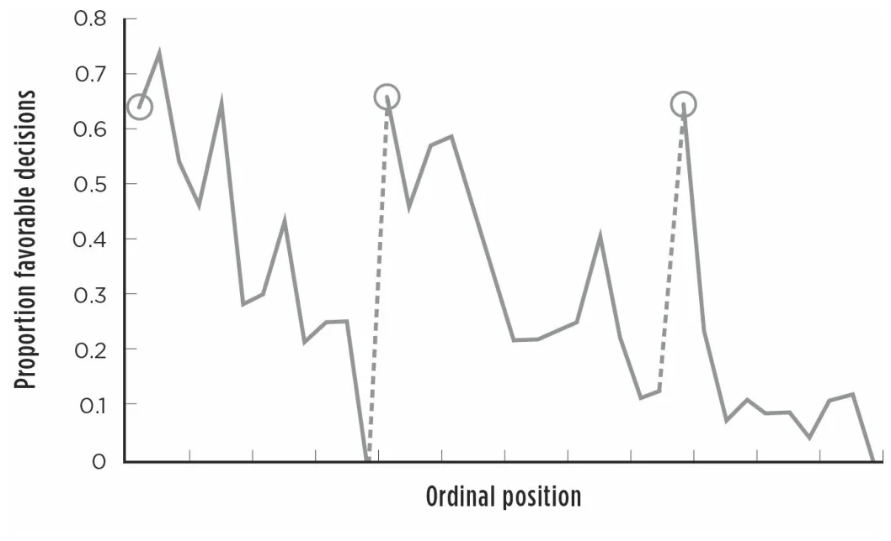
Tỷ lệ phán quyết có lợi cho tù nhân theo vị trí thứ tự. Các điểm khoanh tròn biểu thị quyết định đầu tiên trong mỗi phiên xét xử trong ba phiên; các vạch chia trên trục x đánh dấu cứ mỗi ba trường hợp; đường chấm chấm biểu thị giờ nghỉ ăn trưa. Do độ dài phiên không đều dẫn đến số lượng trường hợp thấp ở một số vị trí thứ tự sau này, biểu đồ dựa trên 95% dữ liệu đầu tiên từ mỗi phiên.
Dù hợp lý, điều này chỉ đẩy chúng ta sang việc hỏi ngay từ đầu ý thức hệ tự do gây ra sự bất hòa đó đến từ đâu. Như chúng ta sẽ thấy, nó đến từ những yếu tố ít liên quan đến phong cách nhận thức.
Những phát hiện này gợi ý rằng việc làm cho một người tự do suy nghĩ giống một người bảo thủ dễ hơn là chiều ngược lại.35 Hoặc, nói theo một cách quen thuộc, việc tăng tải nhận thức (cognitive load)* sẽ khiến mọi người trở nên bảo thủ hơn. Điều này hoàn toàn đúng. Áp lực thời gian của những phán đoán chớp nhoáng là một phiên bản của việc tăng tải nhận thức. Tương tự, mọi người trở nên bảo thủ hơn khi mệt mỏi, đau đớn hoặc bị phân tâm bởi một nhiệm vụ nhận thức, hoặc khi nồng độ cồn trong máu tăng lên.
Hãy nhớ lại từ chương 3 rằng ý chí đòi hỏi năng lượng chuyển hóa, nhờ vào nhu cầu glucose của vỏ não trán. Đó là phát hiện rằng khi mọi người đói, họ trở nên kém hào phóng hơn trong các trò chơi kinh tế. Một ví dụ thực tế về điều này thật đáng kinh ngạc (xem biểu đồ ở trang trước) — trong một nghiên cứu trên hơn 1.100 phán quyết của tòa án, tù nhân được ân xá với tỷ lệ khoảng 60 phần trăm khi các thẩm phán vừa mới ăn xong, và với tỷ lệ về cơ bản là 0 phần trăm ngay trước khi các thẩm phán đi ăn (cũng lưu ý sự sụt giảm chung trong suốt một ngày mệt mỏi). Công lý có thể bịt mắt, nhưng nàng chắc chắn rất nhạy cảm với tiếng bụng sôi của mình.36
NHẬN THỨC ĐẠO ĐỨC
Một bãi mìn khác. Bất ngờ chưa, những người ở cả hai đầu của quang phổ chính trị đều cáo buộc phía bên kia có tư duy đạo đức nghèo nàn.37 Một hướng của điều này dường như được củng cố bởi các giai đoạn phát triển đạo đức của Kohlberg ở chương 7. Những người tự do, thấm nhuần tinh thần bất tuân dân sự, có xu hướng ở giai đoạn Kohlberg “cao hơn” so với những người bảo thủ, với sự ưa thích luật pháp và trật tự của họ. Liệu người cánh hữu kém năng lực trí tuệ hơn trong việc suy luận ở giai đoạn Kohlberg tiên tiến hơn, hay họ ít có động lực làm vậy hơn? Dường như là vế sau — người cánh hữu và người cánh tả có khả năng ngang nhau trong việc trình bày quan điểm của phía bên kia.
Jonathan Haidt của Đại học NYU đưa ra một góc nhìn rất khác.38 Ông xác định sáu nền tảng của đạo đức — quan tâm đối lập với gây hại; công bằng đối lập với gian lận; tự do đối lập với áp bức; trung thành đối lập với phản bội; thẩm quyền đối lập với lật đổ; thiêng liêng đối lập với suy đồi. Cả dữ liệu thực nghiệm và thực tế đều cho thấy người tự do ưu tiên coi trọng ba mục tiêu đầu tiên, tức là sự quan tâm, công bằng và tự do (và, cho thấy sự chồng lấn với các công thức của Kohlberg, việc đánh giá thấp lòng trung thành, thẩm quyền và sự thiêng liêng về nhiều mặt đồng nghĩa với tư duy hậu quy ước). Ngược lại, người bảo thủ coi trọng nặng nề lòng trung thành, thẩm quyền và sự thiêng liêng. Rõ ràng, đây là một sự khác biệt lớn. Liệu có ổn không khi chỉ trích nhóm của bạn với người ngoài? Người cánh hữu: không, thế là bất trung. Người cánh tả: có, nếu có lý do chính đáng. Bạn có bao giờ nên bất tuân một đạo luật không? Người cánh hữu: không, điều đó làm suy yếu thẩm quyền. Người cánh tả: tất nhiên rồi, nếu đó là một đạo luật tồi. Có ổn không khi đốt quốc kỳ? Người cánh hữu: không bao giờ, nó thiêng liêng. Người cánh tả: thôi nào, nó chỉ là một mảnh vải.
Những sự nhấn mạnh khác nhau này giải thích rất nhiều điều — ví dụ, quan điểm tự do cổ điển là mọi người đều có quyền bình đẳng để mưu cầu hạnh phúc; thay vào đó, người cánh hữu giảm nhẹ sự công bằng để ủng hộ thẩm quyền tiện lợi, tạo ra quan điểm bảo thủ cổ điển rằng một chút bất bình đẳng kinh tế xã hội là cái giá có thể chấp nhận được để mọi thứ vận hành trơn tru.
Việc theo quan điểm của Haidt, người bảo thủ đếm đủ sáu (nền tảng đạo đức) trên ngón chân còn người tự do chỉ đếm ba thì có nghĩa là gì? Đây là nơi những màn đá xoáy nội bộ bắt đầu. Người bảo thủ hồ hởi đón nhận cách mô tả của Haidt về người tự do như những kẻ nghèo nàn về mặt đạo đức, với một nửa nền tảng đạo đức bị teo tóp.* Cách diễn giải ngược lại, được Jost và Joshua Greene của Harvard ủng hộ, là người tự do có những nền tảng đạo đức tinh tế hơn, đã vứt bỏ những nền tảng kém quan trọng hơn và gây nhiều tổn hại hơn trong lịch sử mà người bảo thủ cứ khư khư bám lấy — thực chất, người tự do đếm từ một đến ba, trong khi người bảo thủ thực sự chỉ đếm từ bốn đến sáu.
Tại sao người bảo thủ lại quan tâm nhiều hơn đến các “nền tảng gắn kết” như lòng trung thành, thẩm quyền và sự thiêng liêng, những thứ thường là bước đệm dẫn đến chủ nghĩa độc đoán cánh hữu và định hướng thống trị xã hội? Điều này dẫn sang phần tiếp theo.
KHÁC BIỆT TÂM LÝ CẢM XÚC
Nghiên cứu nhất quán chỉ ra rằng người cánh tả và người cánh hữu khác nhau ở các danh mục chồng lấn thuộc cấu trúc cảm xúc. Tóm lại: trung bình, người cánh hữu dễ bị lo âu hơn bởi sự mơ hồ và có nhu cầu kết thúc (need for closure) mạnh hơn, không thích sự mới lạ, cảm thấy được an ủi hơn bởi cấu trúc và thứ bậc, dễ dàng nhận thấy các hoàn cảnh là mối đe dọa hơn, và hẹp hòi hơn trong sự đồng cảm của họ.
Sự không thích mơ hồ của người bảo thủ đã được chứng minh trong vô số bối cảnh phi chính trị (ví dụ, phản ứng với ảo giác thị giác, thị hiếu giải trí) và có liên quan chặt chẽ đến những cảm nhận khác nhau về sự mới lạ, thứ vốn dĩ gợi lên sự mơ hồ và bất trắc.39 Những góc nhìn khác nhau về sự mới lạ chắc chắn giải thích quan điểm tự do rằng với những cải cách đúng đắn, những ngày tươi đẹp nhất của chúng ta nằm ở phía trước trong một tương lai mới mẻ, trong khi người bảo thủ xem những ngày tươi đẹp nhất của chúng ta nằm ở phía sau, trong những hoàn cảnh quen thuộc cần phải quay trở về, để làm cho mọi thứ vĩ đại trở lại. Một lần nữa, những khác biệt trong cấu trúc tâm lý này cũng thể hiện trong các lĩnh vực phi chính trị — người tự do có nhiều khả năng sở hữu sách du lịch hơn người bảo thủ.
Nhu cầu về khả năng dự đoán và cấu trúc của người bảo thủ rõ ràng thúc đẩy sự nhấn mạnh vào lòng trung thành, sự phục tùng, và luật pháp cùng trật tự.40 Nó cũng mang lại cái nhìn sâu sắc về một đặc điểm khó hiểu của bức tranh chính trị: làm thế nào mà trong năm mươi năm qua, Đảng Cộng hòa đã thuyết phục được những người Mỹ da trắng nghèo khổ thường xuyên bỏ phiếu chống lại lợi ích kinh tế của chính họ? Liệu họ có thực sự tin rằng mình sắp trúng số và rồi sẽ được tận hưởng phía đặc quyền của sự bất bình đẳng ở Mỹ không? Không đời nào. Các vấn đề tâm lý về nhu cầu sự quen thuộc có cấu trúc cho thấy đối với người da trắng nghèo, việc bỏ phiếu cho Đảng Cộng hòa cấu thành một hành động ngầm ẩn nhằm biện minh cho hệ thống và né tránh rủi ro. Thà kháng cự lại sự thay đổi và đối phó với con quỷ mà bạn đã biết còn hơn. Quay lại chương trước, những người bảo thủ đồng tính thể hiện nhiều thiên kiến chống người đồng tính ngầm ẩn hơn so với những người tự do đồng tính. Thà ghét chính con người mình, nếu điều đó củng cố cho một hệ thống mà sự ổn định và khả năng dự đoán của nó là nguồn an ủi.
Đan xen với các biến số này là sự khác biệt Tả/Hữu trong xu hướng nhìn nhận mọi thứ là mối đe dọa, đặc biệt khi chủ nghĩa bảo thủ gắn liền với chủ nghĩa độc đoán. Cuộc sống đầy rẫy sự mơ hồ, nhất là với tương lai mới lạ, và nếu những thứ đó khiến bạn lo âu, rất nhiều thứ sẽ có vẻ như là mối đe dọa. Bây giờ, một “mối đe dọa” có thể mang tính trừu tượng, chẳng hạn như đối với lòng tự trọng của bạn; có rất ít khác biệt chính trị trong nhận thức về những mối đe dọa như vậy. Sự khác biệt nằm ở những mối đe dọa cụ thể đối với cái mạng của bạn.
Điều này giúp giải thích các lập trường chính trị — “Tôi có một danh sách ở đây gồm hai trăm điệp viên cộng sản đang làm việc trong Bộ Ngoại giao” là một minh chứng khá hay về mối đe dọa tưởng tượng.* Sự khác biệt trong nhận thức mối đe dọa có thể mang tính phi chính trị. Trong một nghiên cứu, các đối tượng phải thực hiện nhanh một nhiệm vụ khi một từ lóe lên trên màn hình. Những người bảo thủ độc đoán, chứ không phải người tự do, phản ứng nhanh hơn với các từ đe dọa như “ung thư”, “rắn” hoặc “kẻ cướp” so với các từ không đe dọa (ví dụ: “kính thiên văn”, “cây”, “bi đông”). Hơn nữa, so với người tự do, những người bảo thủ như vậy có nhiều khả năng liên tưởng từ “arms” (cánh tay/vũ khí) với “vũ khí” (hơn là với “chân”), có nhiều khả năng diễn giải các khuôn mặt mơ hồ là đang đe dọa hơn, và dễ dàng bị điều kiện hóa để liên kết các kích thích tiêu cực (nhưng không phải tích cực) với các kích thích trung tính hơn. Người Đảng Cộng hòa báo cáo số cơn ác mộng nhiều gấp ba lần so với người Đảng Dân chủ, đặc biệt là những cơn ác mộng liên quan đến việc mất quyền lực cá nhân. Như câu ngạn ngữ vẫn nói, một người bảo thủ là một người tự do vừa bị cướp.
Liên quan đến điều này là “lý thuyết quản lý nỗi kinh hoàng” (terror-management theory), gợi ý rằng chủ nghĩa bảo thủ bắt nguồn về mặt tâm lý từ nỗi sợ cái chết rõ rệt; ủng hộ điều này là phát hiện rằng việc mồi cho mọi người nghĩ về cái chết của mình khiến họ trở nên bảo thủ hơn.41
Những khác biệt trong nhận thức mối đe dọa này giúp giải thích các quan điểm khác nhau về vai trò của chính phủ — chu cấp cho người dân (quan điểm cánh tả; dịch vụ xã hội, giáo dục, v.v.) hay bảo vệ người dân (quan điểm cánh hữu; luật pháp và trật tự, quân đội, v.v.).*
Sợ hãi, lo âu, nỗi kinh hoàng trước cái chết — làm người cánh hữu hẳn phải mệt mỏi lắm. Nhưng bất chấp điều đó, trong một nghiên cứu đa quốc gia, người cánh hữu lại hạnh phúc hơn người cánh tả.42 Tại sao? Có lẽ là vì có những câu trả lời đơn giản hơn, không phải gánh nặng sửa sai có động cơ. Hoặc, như được các tác giả ưa chuộng, bởi vì việc biện minh cho hệ thống cho phép người bảo thủ hợp lý hóa và ít cảm thấy khó chịu hơn trước sự bất bình đẳng. Và khi bất bình đẳng kinh tế gia tăng, khoảng cách hạnh phúc giữa Cánh Hữu và Cánh Tả càng mở rộng.
Như đã nhấn mạnh, ý thức hệ chính trị chỉ là một biểu hiện của phong cách trí tuệ và cảm xúc. Một ví dụ tuyệt vời là sự cởi mở của một đứa trẻ bốn tuổi đối với một món đồ chơi mới dự đoán mức độ cởi mở của cô bé khi trưởng thành đối với, chẳng hạn, việc Hoa Kỳ thiết lập quan hệ mới với Iran hoặc Cuba.43
Và tất nhiên, một chút sinh học nền tảng
Chúng ta vừa thấy rằng khuynh hướng chính trị thường ổn định và nhất quán nội tại trên hàng loạt các vấn đề rời rạc, và nó thường chỉ là một biểu hiện của một gói phong cách nhận thức và cảm xúc. Bước sâu hơn nữa, những mối tương quan sinh học của các khuynh hướng chính trị khác nhau là gì?
Quay lại với vỏ não thùy đảo và vai trò của nó trong việc điều hòa sự ghê tởm vị giác và khứu giác ở động vật có vú cũng như trong việc điều hòa sự ghê tởm đạo đức ở con người. Hãy nhớ lại từ chương trước cách bạn có thể khơi dậy lòng căm thù đối với “Họ” một cách đáng tin cậy bằng cách khiến họ trông ghê tởm về mặt bản năng. Khi thùy đảo của mọi người kích hoạt trước ý nghĩ về “Họ”, bạn có thể gạch đầu dòng xong một việc trong danh sách cần làm để diệt chủng của mình.
Điều này gợi nhớ đến một phát hiện đáng chú ý — nhốt các đối tượng vào một căn phòng có thùng rác bốc mùi, và họ trở nên bảo thủ hơn về mặt xã hội.44 Nếu thùy đảo của bạn đang buồn nôn vì mùi cá chết, bạn có nhiều khả năng quyết định rằng một tập tục xã hội của một Kẻ Khác vốn chỉ khác biệt thôi thì thay vào đó, lại là hoàn toàn sai trái.
Điều này dẫn đến một phát hiện vô cùng hấp dẫn — những người bảo thủ về mặt xã hội có xu hướng có ngưỡng ghê tởm thấp hơn so với những người tự do. Trong một nghiên cứu, các đối tượng được cho xem các hình ảnh mang tính cảm xúc tích cực hoặc tiêu cực,* và điện trở da (GSR, một thước đo gián tiếp về sự hưng phấn của hệ thần kinh giao cảm) được đo lại. Những phản ứng tự chủ lớn nhất đối với các hình ảnh cảm xúc tiêu cực (nhưng không phải tích cực) nằm ở những người bảo thủ phản đối hôn nhân đồng giới hoặc quan hệ tình dục trước hôn nhân (trong khi phản ứng GSR không liên quan đến các vấn đề phi xã hội như thương mại tự do hay kiểm soát súng đạn). Mối quan tâm về vệ sinh và sự thuần khiết quả thực dự đoán việc coi trọng sự thiêng liêng.45
Liên quan đến điều đó, khi đối mặt với một thứ gì đó gây khó chịu về mặt bản năng, người bảo thủ ít có khả năng sử dụng các chiến lược tái đánh giá (ví dụ, khi nhìn thấy thứ gì đó đẫm máu, lại nghĩ: “Cái này không có thật; nó được dàn dựng thôi”). Hơn nữa, khi người bảo thủ, chứ không phải người tự do, được hướng dẫn sử dụng các kỹ thuật tái đánh giá (ví dụ: “Hãy cố gắng nhìn các hình ảnh một cách tách biệt, không cảm xúc”), họ bày tỏ những quan điểm chính trị ít bảo thủ hơn. Ngược lại, chiến lược kìm nén (“Đừng để lộ cảm xúc của bạn khi nhìn hình ảnh này”) không có tác dụng. Như chúng ta đã thấy, hãy làm cho một người tự do mệt mỏi, đói, vội vã, mất tập trung hoặc ghê tởm, và họ trở nên bảo thủ hơn. Hãy làm cho một người bảo thủ tách biệt cảm xúc hơn trước một thứ gì đó gây khó chịu về mặt bản năng, và họ trở nên tự do hơn.46
Do đó, khuynh hướng chính trị về các vấn đề xã hội phản ánh độ nhạy cảm với sự ghê tởm bản năng và các chiến lược đối phó với sự ghê tởm đó. Ngoài ra, người bảo thủ có nhiều khả năng nghĩ rằng sự ghê tởm là một thước đo tốt để quyết định xem một điều gì đó có hợp đạo đức hay không. Điều này gợi nhớ đến Leon Kass, nhà đạo đức sinh học với vấn đề liếm kem ốc quế. Ông ta đứng đầu hội đồng đạo đức sinh học của George W. Bush, một hội đồng mà nhờ vào ý thức hệ chống phá thai của Kass, đã hạn chế đáng kể nghiên cứu tế bào gốc phôi. Kass đã lập luận cho cái mà ông gọi là “sự khôn ngoan của nỗi ghê tởm”, nơi sự ghê tởm trước một thứ như nhân bản vô tính người có thể là “biểu hiện cảm xúc của một sự khôn ngoan sâu sắc, vượt ra ngoài khả năng diễn đạt trọn vẹn của lý trí”. Mức độ bản năng, có hay không có sự hợp lý hóa hậu nghiệm, là tất cả những gì bạn cần để biết điều gì là đúng đắn. Nếu nó khiến bạn buồn nôn, thì bạn phải lên án nó.47
Lỗ hổng khổng lồ là quá rõ ràng. Những thứ khác nhau gây ghê tởm cho những người khác nhau; phản xạ nôn của ai sẽ thắng? Hơn nữa, những thứ từng bị coi là ghê tởm nay được nhìn nhận khác đi (ví dụ, ý tưởng nô lệ có quyền ngang bằng người da trắng có lẽ sẽ khiến hầu hết người Mỹ da trắng khoảng năm 1800 cảm thấy không chỉ bất khả thi về mặt kinh tế mà còn ghê tởm nữa). Thật ghê tởm khi nghĩ đến những thứ mà người ta đã không hề thấy ghê tởm trong quá khứ. Sự ghê tởm là một mục tiêu di động.
Do đó, các vấn đề neo đậu ở thùy đảo giúp giải thích sự khác biệt trong khuynh hướng chính trị; điểm này sẽ được quay lại trong chương 17.48 Các khác biệt sinh học thần kinh bổ sung cũng đã được chứng minh. Chủ nghĩa tự do gắn liền với lượng chất xám lớn hơn ở vỏ não đai (với sự tham gia của nó vào sự đồng cảm), trong khi chủ nghĩa bảo thủ gắn liền với hạch hạnh nhân mở rộng (tất nhiên, với vai trò ngôi sao của nó trong nhận thức mối đe dọa). Hơn nữa, có nhiều sự kích hoạt hạch hạnh nhân hơn ở người bảo thủ so với người tự do khi xem một hình ảnh ghê tởm hoặc thực hiện một nhiệm vụ mạo hiểm.
Nhưng không phải mọi phát hiện đều khớp một cách dễ dàng. Ví dụ, khi nhìn vào những hình ảnh ghê tởm, người bảo thủ cũng cho thấy sự kích hoạt lớn hơn tương đối ở một mớ hỗn độn các vùng não khác — hạch nền, đồi thị, chất xám quanh cống (periaqueductal gray), dlPFC (nhận thức), hồi thái dương giữa/trên, vùng tiền vận động bổ sung, hồi thoi và hồi trán dưới. Tất cả những thứ đó khớp với nhau như thế nào thì chưa rõ.
Đương nhiên, người ta phải hỏi: các nhà di truyền học hành vi đã báo cáo về ảnh hưởng di truyền đối với khuynh hướng chính trị chưa? Các nghiên cứu song sinh báo cáo khả năng di truyền khoảng 50 phần trăm đối với khuynh hướng chính trị. Các phương pháp khảo sát toàn bộ hệ gen đã xác định được các gen có biến thể đa hình gắn liền với khuynh hướng chính trị. Hầu hết các gen này không có chức năng được biết đến, hoặc trước đây được cho là không liên quan đến não; những gen có chức năng liên quan đến não đã biết (ví dụ, một gen mã hóa cho thụ thể của chất dẫn truyền thần kinh glutamate) lại không dạy được nhiều về khuynh hướng chính trị. Như một tương tác gen/môi trường thú vị, phiên bản “ưa mạo hiểm” của gen thụ thể dopamine D4 gắn liền với những người tự do — nhưng chỉ ở những người có rất nhiều bạn bè. Hơn nữa, một số nghiên cứu cho thấy mối liên hệ di truyền với khả năng đi bỏ phiếu của mọi người, độc lập với khuynh hướng chính trị.49
Thú vị đấy. Tuy nhiên, cách tiếp cận này đi kèm với tất cả những cảnh báo của chương 8 — hầu hết các phát hiện chưa được nhân rộng, các hiệu ứng được báo cáo là nhỏ, và chúng được xuất bản trên các tạp chí khoa học chính trị hơn là các tạp chí di truyền học. Cuối cùng, trong chừng mực các gen có liên quan đến khuynh hướng chính trị, các mối liên hệ có khả năng thông qua các yếu tố trung gian, chẳng hạn như xu hướng dễ lo âu.
SỰ PHỤC TÙNG VÀ TUÂN THỦ, BẤT TUÂN VÀ KHÔNG TUÂN THỦ
Như vậy, con người có nhiều hệ thống thứ bậc đồng thời và những thứ bậc được xây dựng quanh các khái niệm trừu tượng, và thỉnh thoảng chọn ra những nhà lãnh đạo lao động vì lợi ích chung.50 Cộng thêm vào đó là sự phục tùng đối với các nhà lãnh đạo. Điều này hoàn toàn khác với một con khỉ đầu chó tầm thường ngoan ngoãn nhường chỗ bóng râm của mình cho con đực alpha lù lù tiến tới. Thay vào đó, con người thể hiện sự phục tùng đối với thẩm quyền vượt lên trên bất kỳ cá nhân nào đang ngồi trên ngai vàng (nhà vua băng hà; nhà vua vạn tuế), hướng tới chính ý niệm về thẩm quyền. Các yếu tố của nó trải dài từ lòng trung thành, sự ngưỡng mộ và noi gương cho đến sự nịnh bợ, xu nịnh và tư lợi thực dụng, và có thể trải dài từ sự chấp thuận đơn thuần (tức là sự tuân thủ công khai theo kiểu hùa theo, mà thực chất không đồng ý) cho đến việc uống cạn chén thuốc độc (tức là đồng nhất hóa với thẩm quyền và nội tâm hóa cũng như mở rộng các niềm tin của nó).
Sự phục tùng (obedience) đan xen chặt chẽ với sự tuân thủ (conformity), một khái niệm trung tâm của chương trước nhưng được xem xét ở đây. Cả hai đều bao gồm việc làm theo; cái trước là làm theo nhóm, cái sau là làm theo thẩm quyền. Và đối với chúng ta, những điểm chung mới là điều quan trọng. Hơn nữa, những điều đối lập — sự bất tuân và không tuân thủ — cũng đan xen với nhau và trải dài từ sự độc lập khi bước đi theo nhịp trống khác cho đến tính chủ ý và sự tất định phản chiếu của thái độ chống tuân thủ.
Quan trọng là đây là những thuật ngữ trung tính về giá trị. Sự tuân thủ có thể rất tuyệt vời — thật hữu ích nếu mọi người trong một nền văn hóa đều đồng ý về việc gật đầu lên xuống nghĩa là có hay không. Tuân thủ là điều cần thiết để hưởng lợi ích từ trí tuệ đám đông. Và nó có thể thực sự mang lại cảm giác an ủi. Nhưng rõ ràng sự tuân thủ có thể trở nên kinh khủng — tham gia vào việc bắt nạt, áp bức, tẩy chay, trục xuất, giết chóc, chỉ vì mọi người khác đều tham gia.
Sự phục tùng cũng có thể tuyệt vời, từ việc mọi người dừng lại ở biển báo dừng cho đến (thật xấu hổ cho thời niên thiếu giả vờ vô chính phủ của tôi) việc các con tôi nghe lời khi vợ chồng tôi bảo đã đến giờ đi ngủ. Và sự phục tùng ác độc rõ ràng nằm dưới cái cớ “chỉ làm theo mệnh lệnh” — từ việc đi đều bước kiểu phát xít cho đến những kẻ khốn khổ ở Jonestown tuân theo mệnh lệnh giết chính con cái mình.
Nguồn gốc
Sự tuân thủ và phục tùng có gốc rễ sâu xa, được chứng minh bằng sự hiện diện của chúng ở các loài khác và ở loài người còn rất nhỏ tuổi.
Sự tuân thủ ở động vật là một dạng học tập xã hội — một loài linh trưởng cấp dưới không nhất thiết phải bị một gã to con nào đó đánh cho nhừ tử mới chịu bày tỏ sự phục tùng hắn; việc mọi cá thể khác đều làm vậy có thể đã là quá đủ.*51 Sự tuân thủ này mang một sắc thái rất giống con người. Ví dụ, một con tinh tinh có nhiều khả năng bắt chước một hành động hơn nếu nó thấy ba cá thể khác làm việc đó mỗi con một lần so với việc một cá thể khác làm việc đó ba lần.* Hơn nữa, việc học tập có thể bao gồm “sự truyền tải văn hóa” — ở tinh tinh, ví dụ, điều này bao gồm việc học các kiểu chế tạo công cụ. Sự tuân thủ liên quan đến sự lây lan xã hội và cảm xúc, chẳng hạn, một con linh trưởng tấn công một cá thể chỉ vì ai đó khác đang làm vậy. Sự lây lan như vậy thậm chí có tác dụng giữa các nhóm. Ví dụ, ở loài khỉ marmoset, sự hung hăng trong một nhóm trở nên dễ xảy ra hơn nếu nghe thấy tiếng kêu hung hăng từ nhóm hàng xóm. Các loài linh trưởng khác thậm chí còn chịu sự lây lan xã hội của việc ngáp.*52
Ví dụ yêu thích của tôi về sự tuân thủ ở loài không phải người quen thuộc đến mức cứ như bước thẳng ra từ trường trung học. Một con gà gô đực tán tỉnh một con cái nhưng than ôi, nàng không cảm thấy phép màu nào trong không khí và từ chối chàng. Các nhà nghiên cứu bèn làm cho chàng trông giống như anh chàng đào hoa nóng bỏng nhất trên thảo nguyên — bằng cách đặt xung quanh chàng vài con gà gô cái nhồi bông đang say mê ngắm nhìn. Chẳng mấy chốc, cô nàng đỏng đảnh kia quấn quýt lấy chàng, gạt phăng những tình địch bất động như tượng sang một bên.53
Một minh chứng rõ ràng hơn nữa về sự tuân thủ ở động vật đã được thể hiện trong một nghiên cứu tuyệt đẹp về tinh tinh của Frans de Waal. Ở mỗi nhóm trong số hai nhóm, con cái alpha được tách khỏi phần còn lại và được chỉ cách mở một hộp đố chứa thức ăn. Điều cốt yếu là hai con được chỉ hai cách làm khác nhau nhưng khó ngang nhau. Một khi các con cái đã thành thạo cách tiếp cận của mình, các con tinh tinh trong mỗi nhóm được xem con cái alpha của chúng trổ tài lặp đi lặp lại với hộp đố. Cuối cùng tất cả đều được tiếp cận hộp đố và nhanh chóng bắt chước kỹ thuật của con alpha nhóm mình.54
Như vậy đây là một minh chứng thú vị về sự lan truyền thông tin văn hóa. Nhưng một điều thậm chí còn thú vị hơn đã xảy ra. Một con tinh tinh trong nhóm thỉnh thoảng lại tình cờ tìm ra phương pháp thay thế — và rồi lại từ bỏ nó, quay trở lại làm theo cách “bình thường”. Chỉ vì mọi con khác đều đang làm như vậy.* Hiện tượng tương tự sau đó đã được chứng minh ở khỉ mũ capuchin và chim hoang dã.
Do đó, động vật sẽ thực hiện một phiên bản của một hành vi không phải vì nó tốt hơn mà đơn giản vì mọi cá thể khác đều làm thế. Thậm chí còn ấn tượng hơn, sự tuân thủ ở động vật có thể gây bất lợi. Trong một nghiên cứu năm 2013, Andrew Whiten của Đại học St Andrews đã đưa cho khỉ vervet hoang dã hai thùng ngô, được nhuộm màu hồng hoặc xanh dương.55 Một màu có vị ngon; màu kia có chất phụ gia đắng. Lũ khỉ học cách tránh màu đắng và nhiều tháng sau vẫn chỉ ăn loại ngô có màu “an toàn” — ngay cả sau khi chất phụ gia đã được bỏ đi.
Khi những con non được sinh ra hoặc những con trưởng thành lớn lên ở nơi khác di cư vào nhóm, chúng tuân theo lựa chọn thức ăn này, học cách chỉ ăn thức ăn cùng màu với mọi con khác. Nói cách khác, từ bỏ một nửa lượng thức ăn tiềm năng chỉ vì nhu cầu hòa nhập — lũ khỉ nhập bầy, hành động như cừu, lao xuống vách đá như chuột lemming. Một ví dụ phơi bày rõ nét điều tương tự ở con người: trong các tình huống khẩn cấp đe dọa tính mạng (ví dụ, một vụ cháy nhà hàng), mọi người thường cố gắng thoát thân bằng cách đi theo đám đông theo hướng mà họ biết là sai.
Bản chất ăn sâu của sự tuân thủ và phục tùng ở con người được thể hiện qua độ tuổi mà chúng biểu hiện rõ rệt. Như đã trình bày chi tiết ở chương 7, hàng tỷ trang giấy đã được viết về sự tuân thủ và áp lực đồng trang lứa ở trẻ em. Một nghiên cứu minh họa rất hay sự liên tục của tính tuân thủ giữa chúng ta và các loài khác. Đó là báo cáo rằng một con tinh tinh có nhiều khả năng tuân theo hành vi của ba cá thể làm một hành vi mỗi con một lần hơn là một cá thể làm hành vi đó ba lần. Nghiên cứu đã cho thấy điều tương tự ở trẻ em hai tuổi của loài người.
Chiều sâu của sự tuân thủ và phục tùng ở con người được thể hiện qua tốc độ mà chúng xảy ra — chỉ mất chưa đầy 200 mili-giây để bộ não của bạn ghi nhận rằng nhóm đã chọn một câu trả lời khác với bạn, và chưa đầy 380 mili-giây cho một hồ sơ kích hoạt dự đoán việc thay đổi ý kiến của bạn. Bộ não của chúng ta có thiên kiến hòa hợp bằng cách hùa theo chỉ trong chưa đầy một giây.56
Cơ sở thần kinh
Nghiên cứu cuối cùng này đặt ra câu hỏi điều gì xảy ra trong não bộ dưới những hoàn cảnh này. Dàn diễn viên vùng não quen thuộc của chúng ta xuất hiện theo những cách đầy thông tin.
“Lý thuyết bản sắc xã hội” (social identity theory) có tầm ảnh hưởng cho rằng khái niệm về việc chúng ta là ai được định hình mạnh mẽ bởi bối cảnh xã hội — bởi các nhóm mà chúng ta đồng nhất hoặc không đồng nhất với.*57 Theo quan điểm đó, sự tuân thủ và phục tùng, dù chắc chắn là để tránh bị trừng phạt, nhưng ít nhất cũng nhằm vào những mặt tích cực của việc hòa nhập. Khi chúng ta bắt chước hành động của ai đó, hệ thống dopamine trung não – hệ viền của chúng ta kích hoạt.* Khi chúng ta chọn sai trong một nhiệm vụ, sự sụt giảm dopamine ít hơn nếu chúng ta đưa ra quyết định như một phần của nhóm so với khi làm với tư cách cá nhân. Thuộc về một nhóm là an toàn.
Trong vô số nghiên cứu, một đối tượng trong nhóm trả lời một câu hỏi nào đó, sau đó phát hiện ra rằng — ôi không! — tất cả mọi người khác đều không đồng ý, và sau đó có thể thay đổi câu trả lời của mình.58 Không có gì ngạc nhiên, việc phát hiện ra bạn bị lệch nhịp kích hoạt hạch hạnh nhân và vỏ não thùy đảo; kích hoạt càng nhiều, khả năng bạn thay đổi suy nghĩ càng lớn, và sự thay đổi càng dai dẳng (trái ngược với sự thay đổi thoáng qua của việc tuân thủ công khai cho xong chuyện). Đây là một hiện tượng xã hội sâu sắc — mọi người có nhiều khả năng thay đổi câu trả lời hơn nếu bạn cho họ xem ảnh của (những) người không đồng ý với họ.
Khi bạn nhận được tin rằng mọi người khác đều không đồng ý với bạn, cũng có sự kích hoạt của vùng vmPFC (cảm xúc), vỏ não đai trước và nhân nằm (nucleus accumbens). Đây là một mạng lưới được huy động trong quá trình học tập tăng cường, nơi bạn học cách điều chỉnh hành vi khi có sự chênh lệch giữa điều bạn mong đợi xảy ra và điều thực sự xảy ra. Phát hiện ra mọi người đều không đồng ý với bạn và mạng lưới này kích hoạt. Về cơ bản nó đang nói gì với bạn? Không chỉ là bạn khác với mọi người khác. Mà là bạn sai rồi. Khác biệt = sai trái. Mạch này kích hoạt càng mạnh, khả năng thay đổi câu trả lời để tuân thủ càng lớn.59
Giống như hầu hết các tài liệu chẩn đoán hình ảnh thần kinh, những nghiên cứu này chỉ mang tính tương quan. Do đó, đặc biệt quan trọng là một nghiên cứu năm 2011 sử dụng kỹ thuật kích thích từ xuyên sọ để làm bất hoạt tạm thời vùng vmPFC; các đối tượng trở nên ít có khả năng thay đổi câu trả lời để tuân thủ hơn.60
Quay lại sự tương phản giữa việc tuân thủ dưới dạng “Biết sao không, nếu ai cũng nói họ thấy B, chắc tôi cũng thấy thế; sao cũng được” và việc nó diễn ra dưới dạng “Giờ nghĩ kỹ lại, thực ra tôi không thấy A; tôi nghĩ tôi thấy B; thực tế là tôi chắc chắn như vậy.” Dạng sau gắn liền với sự kích hoạt của vùng hải mã, vùng não trung tâm của việc học tập và trí nhớ — chủ nghĩa xét lại liên quan đến việc bạn thực sự chỉnh sửa lại ký ức của mình. Đáng chú ý, trong một nghiên cứu khác, quá trình tuân thủ này cũng gắn liền với sự kích hoạt của vỏ não chẩm, vùng não thực hiện quá trình xử lý thị giác sơ cấp — bạn gần như có thể nghe thấy các phần trán và hệ viền của não đang cố thuyết phục vỏ não chẩm rằng nó đã nhìn thấy thứ gì đó khác với thứ nó thực sự nhìn thấy. Như người ta vẫn nói, kẻ thắng (trong trường hợp này là tại tòa án dư luận) được quyền viết sách sử, và những kẻ còn lại tốt hơn hết nên sửa lại sách của mình cho phù hợp. Chiến tranh là hòa bình. Tự do là nô lệ. Cái chấm bạn nhìn thấy thực ra màu xanh dương, không phải màu đỏ.61
Do đó, sinh học thần kinh của việc tuân thủ bao gồm một làn sóng lo âu đầu tiên nơi chúng ta đánh đồng sự khác biệt với sự sai trái, tiếp theo là công việc nhận thức cần thiết để thay đổi ý kiến của mình. Những phát hiện này rõ ràng đến từ một thế giới nhân tạo của các thí nghiệm tâm lý. Vì vậy chúng chỉ là một tiếng thì thầm yếu ớt của những gì xảy ra khi đó là bạn chống lại phần còn lại của bồi thẩm đoàn, khi đó là bạn đang bị thúc giục tham gia đám đông hành hình, khi đó là bạn phải lựa chọn giữa việc tuân thủ và việc trở nên vô cùng cô độc.
Sinh học thần kinh của sự phục tùng thẩm quyền, khi bạn bị ra lệnh làm điều gì đó sai trái, là gì? Một hỗn hợp tương tự như với sự tuân thủ, với vùng vmPFC và dlPFC vật lộn với nhau trong bùn, cùng các chỉ số lo âu và hormone căng thẳng glucocorticoid xuất hiện để thiên hướng bạn về phía sự phục tùng. Điều này dẫn chúng ta đến việc xem xét các nghiên cứu kinh điển về việc “chỉ làm theo mệnh lệnh”.
Asch, Milgram và Zimbardo
Sinh học thần kinh của sự tuân thủ và phục tùng sẽ chưa sớm tiết lộ nhiều về câu hỏi cốt lõi trong lĩnh vực này: nếu hoàn cảnh thích hợp, liệu mọi con người đều có khả năng làm điều gì đó kinh khủng chỉ vì họ bị ra lệnh làm vậy, vì mọi người khác đều đang làm vậy không?
Gần như luật bất thành văn là phải thảo luận ba trong số những nghiên cứu có tầm ảnh hưởng nhất, táo bạo nhất, đáng lo ngại nhất và gây tranh cãi nhất trong lịch sử tâm lý học, đó là các thí nghiệm tuân thủ của Solomon Asch, các nghiên cứu giật điện/phục tùng của Stanley Milgram, và Thí nghiệm Nhà tù Stanford của Philip Zimbardo.
Ông tổ của bộ ba là Asch, làm việc vào đầu thập niên 1950 tại Đại học Swarthmore.62 Hình thức các nghiên cứu của ông rất đơn giản. Một tình nguyện viên, tưởng rằng đây là một nghiên cứu về tri giác, được đưa cho một cặp thẻ. Một thẻ có một đường thẳng trên đó, thẻ kia có bộ ba đường thẳng có độ dài khác nhau, một trong số đó khớp với độ dài của đường thẳng đơn lẻ kia. Đường thẳng nào trong bộ ba có cùng độ dài với đường thẳng đơn lẻ? Quá dễ; các tình nguyện viên ngồi một mình trong phòng chỉ có tỷ lệ sai sót khoảng 1 phần trăm qua một loạt các trường hợp.
Trong khi đó, các tình nguyện viên trong nhóm thực nghiệm làm bài kiểm tra trong một căn phòng cùng bảy người khác, mỗi người nói to lựa chọn của mình. Tình nguyện viên không hề hay biết rằng bảy người kia đều làm việc cho dự án. Tình nguyện viên sẽ “tình cờ” là người trả lời cuối cùng, và bảy người đầu tiên sẽ đồng thanh chọn một đáp án sai rành rành. Thật choáng váng, các tình nguyện viên giờ đây sẽ đồng ý với đáp án sai đó khoảng một phần ba số lần, một điều được nhân rộng thường xuyên trong ngành công nghiệp nghiên cứu ăn theo do Asch khởi xướng. Dù là do người đó thực sự thay đổi suy nghĩ hay chỉ đơn thuần quyết định hùa theo, đây là một minh chứng giật mình về sự tuân thủ.
— Chuyển sang thí nghiệm phục tùng của Milgram, những phiên bản đầu tiên xuất hiện vào đầu thập niên 1960 tại Đại học Yale.63 Một cặp tình nguyện viên sẽ đến tham gia một “nghiên cứu về trí nhớ” trong tâm lý học; một người được chỉ định tùy ý làm “giáo viên”, người kia làm “học viên”. Học viên và giáo viên ở trong hai phòng riêng biệt, nghe thấy nhưng không nhìn thấy nhau. Trong phòng cùng với giáo viên có nhà khoa học mặc áo blouse trắng giám sát nghiên cứu.
Giáo viên sẽ đọc các cặp từ (từ một danh sách do nhà khoa học đưa); học viên phải nhớ cách ghép cặp của chúng. Sau một loạt cặp như vậy, giáo viên sẽ kiểm tra trí nhớ của học viên về các cặp từ. Mỗi lần học viên làm sai, giáo viên phải giật điện họ; với mỗi lỗi sai, cường độ giật điện tăng lên, tối đa đến mức đe dọa tính mạng là 450 vôn, kết thúc buổi thí nghiệm.
Các giáo viên tưởng rằng các cú giật điện là thật — lúc bắt đầu, họ đã được nếm thử một cú giật điện thật, được cho là có cường độ ngang với cú giật trừng phạt đầu tiên. Nó rất đau. Trên thực tế không có cú giật trừng phạt nào được phát ra — “học viên” là người làm việc cho dự án. Khi cường độ của các cú giật giả định tăng lên, giáo viên sẽ nghe thấy học viên phản ứng trong đau đớn, la hét, van xin giáo viên dừng lại.* (Trong một biến thể, “tình nguyện viên” đóng vai học viên tình cờ đề cập rằng mình bị bệnh tim. Khi cường độ giật điện tăng lên, học viên này sẽ hét lên vì đau ngực rồi im bặt, dường như đã ngất lịm đi.)
Giữa những tiếng thét đau đớn, các giáo viên thường trở nên do dự, lúc này họ sẽ bị nhà khoa học thúc ép bằng những mệnh lệnh có cường độ tăng dần: “Xin hãy tiếp tục.” “Thí nghiệm đòi hỏi bạn phải tiếp tục.” “Việc bạn tiếp tục là hoàn toàn cần thiết.” “Bạn không có lựa chọn nào khác. Bạn phải tiếp tục.” Và nhà khoa học trấn an họ rằng họ không phải chịu trách nhiệm; học viên đã được thông báo về các rủi ro.
Và kết quả nổi tiếng là hầu hết các tình nguyện viên đều chấp hành, giật điện học viên lặp đi lặp lại. Các giáo viên thường cố gắng dừng lại, tranh cãi với nhà khoa học, thậm chí khóc lóc vì đau khổ — nhưng vẫn phục tùng. Trong nghiên cứu gốc, thật kinh hoàng, 65 phần trăm trong số họ đã nhấn nút mức giật tối đa 450 vôn.
— Và sau đó là Thí nghiệm Nhà tù Stanford (SPE), do Zimbardo thực hiện năm 1971.64 Hai mươi bốn tình nguyện viên nam trẻ tuổi, chủ yếu là sinh viên đại học, được chia ngẫu nhiên thành một nhóm mười hai “tù nhân” và mười hai “cai ngục”. Các tù nhân sẽ trải qua bảy đến mười bốn ngày bị giam giữ trong một nhà tù giả định ở tầng hầm khoa tâm lý học của Stanford. Các cai ngục có nhiệm vụ giữ trật tự.
Người ta đã nỗ lực rất lớn để làm cho SPE trở nên chân thực. Các tù nhân tương lai tưởng rằng họ được lên lịch có mặt tại tòa nhà vào một thời điểm cụ thể để bắt đầu nghiên cứu. Thay vào đó, cảnh sát Palo Alto đã giúp Zimbardo bằng cách đến sớm hơn tại nhà riêng của từng tù nhân, bắt giữ anh ta và đưa đến đồn cảnh sát để làm thủ tục — lấy dấu vân tay, chụp ảnh nhận diện tội phạm, đủ cả. Các tù nhân sau đó được đưa vào “nhà tù”, bị khám xét lột đồ, phát đồng phục tù nhân, cùng với mũ tất chân để giả lập việc bị cạo trọc đầu, và bị nhốt thành từng nhóm ba người trong các xà lim.
Các cai ngục, trong bộ đồ kaki quân đội dư thừa, dùi cui và kính râm phản quang, nắm quyền cai trị. Họ đã được thông báo rằng mặc dù không được phép dùng bạo lực, họ có thể làm cho tù nhân cảm thấy buồn chán, sợ hãi, bất lực, nhục nhã và không có cảm giác riêng tư hay cá tính.
Và kết quả cũng kinh hoàng nổi tiếng không kém thí nghiệm của Milgram. Các cai ngục bắt tù nhân trải qua những nghi thức phục tùng vô nghĩa và nhục nhã, ép tập thể dục đau đớn, tước đoạt giấc ngủ và thức ăn, bắt họ đi vệ sinh vào những chiếc xô không được đổ trong xà lim (thay vì dẫn họ đi nhà vệ sinh), biệt giam, chia rẽ tù nhân chống lại nhau, gọi họ bằng số hiệu thay vì tên. Trong khi đó, các tù nhân có nhiều phản ứng khác nhau. Một xà lim nổi dậy vào ngày thứ hai, từ chối tuân lệnh cai ngục và dùng giường chặn cửa xà lim; các cai ngục trấn áp họ bằng bình chữa cháy. Các tù nhân khác kháng cự mang tính cá nhân hơn; hầu hết cuối cùng đều chìm vào sự thụ động và tuyệt vọng.
Thí nghiệm kết thúc một cách nổi tiếng. Sáu ngày sau khi bắt đầu, khi sự tàn bạo và xuống cấp ngày càng trầm trọng, Zimbardo đã bị thuyết phục dừng nghiên cứu bởi một nghiên cứu sinh, Christina Maslach. Hai người sau này kết hôn.
Các lực lượng tình huống và điều ẩn náu trong tất cả chúng ta
Những nghiên cứu này nổi tiếng, đã truyền cảm hứng cho phim ảnh và tiểu thuyết, đã đi vào văn hóa đại chúng (với những sự xuyên tạc kinh khủng có thể đoán trước được).*65
Chúng mang lại danh tiếng và tai tiếng cho Asch, Milgram và Zimbardo.* Và chúng có tầm ảnh hưởng rộng lớn trong giới khoa học — theo Google Scholar, công trình của Asch được trích dẫn hơn 4.000 lần trong tài liệu chuyên ngành, của Milgram hơn 27.000 lần, và SPE hơn 58.000 lần.*66 Số lần một bài báo khoa học trung bình được trích dẫn có thể đếm trên đầu ngón tay, với hầu hết các trích dẫn là từ mẹ của nhà khoa học đó. Bộ ba này là viên đá tảng của tâm lý học xã hội. Theo lời của nhà tâm lý học Mahzarin Banaji ở Harvard: “Bài học đơn giản chủ yếu mà SPE [và, mở rộng ra, cả Asch và Milgram] dạy chúng ta là tình huống rất quan trọng” (bà nhấn mạnh).
Chúng đã chứng minh điều gì? Nhờ Asch, rằng những người bình thường sẽ hùa theo những khẳng định sai lầm một cách phi lý nhân danh sự tuân thủ. Và nhờ hai nghiên cứu còn lại, rằng những người bình thường sẽ làm những điều tồi tệ đến kinh ngạc nhân danh sự phục tùng và tuân thủ.
Những hệ lụy rộng lớn hơn của điều này là vô cùng to lớn. Asch và Milgram (người trước là người nhập cư Do Thái Đông Âu, người sau là con trai của những người nhập cư
Do Thái Đông Âu) đã làm việc trong kỷ nguyên của thách thức trí tuệ nhằm lý giải việc người Đức “chỉ làm theo mệnh lệnh”. Nghiên cứu của Milgram được thúc đẩy bởi sự khởi đầu, vài tháng trước đó, của phiên tòa xét xử tội ác chiến tranh đối với Adolf Eichmann, người đàn ông nổi tiếng là hiện thân của “sự tầm thường của cái ác” (banality of evil) vì vẻ ngoài bình thường của ông ta. Công trình của Zimbardo bùng nổ trong kỷ nguyên Chiến tranh Việt Nam với những sự kiện như Thảm sát Mỹ Lai, và SPE trở nên phù hợp một cách cay đắng ba mươi năm sau với việc lạm dụng và tra tấn tù nhân Iraq tại Nhà tù Abu Ghraib bởi những người lính Mỹ hoàn toàn bình thường.*67
Zimbardo giữ một lập trường đặc biệt cực đoan về ý nghĩa của những phát hiện này, đó là lý thuyết “cái thùng thối” (bad barrel) của ông — vấn đề không phải là một vài quả táo thối có thể làm hỏng cả thùng; mà là cách một cái thùng thối có thể biến bất kỳ quả táo nào thành thối. Trong một phép ẩn dụ xác đáng khác, thay vì tập trung vào từng người xấu một tại một thời điểm, điều mà Zimbardo gọi là cách tiếp cận “y khoa”, người ta phải hiểu cách một số môi trường gây ra các đại dịch cái ác, một cách tiếp cận “y tế công cộng”. Như ông tuyên bố: “Bất kỳ hành động nào, dù tốt hay xấu, mà bất kỳ con người nào từng làm, bạn và tôi cũng có thể làm — nếu đặt trong cùng những lực lượng tình huống đó.” Bất kỳ ai cũng có khả năng trở thành một giáo viên Milgram bạo hành, một cai ngục Zimbardo, hay một tên phát xít đi đều bước. Tương tự, Milgram tuyên bố: “Nếu một hệ thống trại tử thần được thiết lập ở Mỹ giống như những gì chúng ta từng thấy ở Đức Quốc xã, người ta sẽ có thể tìm thấy đủ nhân sự cho các trại đó ở bất kỳ thị trấn cỡ trung bình nào của Mỹ.” Và như Aleksandr Solzhenitsyn đã viết trong Quần đảo Ngục tù (The Gulag Archipelago), trong một câu trích dẫn được nhắc đi nhắc lại mãi trong tài liệu này: “Ranh giới chia cắt thiện và ác cắt ngang qua trái tim của mỗi con người. Và ai sẵn sàng hủy hoại một mảnh trái tim của chính mình?”68
Một số góc nhìn khác
Bất ngờ lớn — các nghiên cứu và kết luận của chúng, đặc biệt là của Milgram và Zimbardo, đã gây ra nhiều tranh cãi. Hai nghiên cứu đó đã thu hút những cơn bão tranh cãi vì bản chất phi đạo đức của công việc; một số giáo viên và cai ngục sau đó đã bị suy sụp tâm lý nặng nề khi nhìn thấy những gì mình đã chứng tỏ là có khả năng làm được;* nó đã thay đổi cuộc đời của một số người trong bọn họ.* Ngày nay, không một hội đồng đạo đức nghiên cứu trên người nào phê duyệt nghiên cứu của Milgram nữa; trong các phiên bản đương đại, các đối tượng bị ra lệnh, ví dụ, nói những điều ngày càng xúc phạm với học viên hoặc thực hiện các cú giật điện ảo, gợi lên nỗi đau ảo, trên các hình đại diện ảo (hãy đón xem).69
Những tranh cãi về bản thân khoa học trong các nghiên cứu của Milgram và Zimbardo có liên quan mật thiết hơn. Tòa lâu đài của Milgram đã bị chất vấn theo ba cách, sắc bén nhất là bởi nhà tâm lý học Gina Perry:
Milgram dường như đã xào nấu một số công trình của mình. Perry đã phân tích các tài liệu chưa công bố và các bản ghi âm các buổi thí nghiệm của Milgram, phát hiện ra rằng các giáo viên từ chối giật điện thường xuyên hơn nhiều so với báo cáo. Tuy nhiên, bất chấp kết quả dường như bị thổi phồng, phát hiện về tỷ lệ chấp hành khoảng 60 phần trăm vẫn đã được nhân rộng.70
Rất ít các nghiên cứu nhân rộng là các nghiên cứu học thuật truyền thống được xuất bản trên các tạp chí bình duyệt. Thay vào đó, hầu hết là các màn tái hiện cho phim ảnh và chương trình truyền hình. Có lẽ quan trọng nhất, theo phân tích của Perry, số giáo viên nhận ra học viên là diễn viên và không có cú giật điện thực sự nào cao hơn nhiều so với những gì Milgram chỉ ra. Vấn đề này có lẽ cũng mở rộng sang các nghiên cứu nhân rộng.
Thí nghiệm SPE có lẽ đã thu hút nhiều tranh cãi nhất.
Cột thu lôi lớn nhất chính là vai trò của bản thân Zimbardo. Thay vì là một người quan sát tách biệt, ông đóng vai “giám thị” của nhà tù. Ông đặt ra các quy tắc cơ bản (ví dụ, nói với các cai ngục rằng họ có thể làm cho tù nhân cảm thấy sợ hãi và bất lực) và gặp gỡ thường xuyên với các cai ngục trong suốt thời gian đó. Ông rõ ràng phấn khích tột độ khi thấy những gì đang diễn ra trong nghiên cứu. Zimbardo là một con người có sức hút mãnh liệt, kiểu người mà bạn rất muốn làm hài lòng. Do đó, các cai ngục chịu áp lực không chỉ để tuân thủ theo nhóm của mình mà còn để phục tùng và làm hài lòng Zimbardo; vai trò của ông, dù vô thức hay có ý thức, gần như chắc chắn đã thúc đẩy các cai ngục đến những hành vi cực đoan hơn. Zimbardo, một người đàn ông nhân hậu, đàng hoàng, là bạn và đồng nghiệp của tôi, đã viết rất nhiều về tác động làm sai lệch này mà ông đã gây ra cho nghiên cứu. Vào đầu nghiên cứu, các tình nguyện viên được phân bổ ngẫu nhiên làm cai ngục hoặc tù nhân, và hai nhóm kết quả không khác nhau về các thước đo tính cách khác nhau. Dù điều đó rất tốt, nhưng điều chưa được đánh giá đúng mức là khả năng toàn bộ các tình nguyện viên nói chung đều có nét đặc thù. Điều này đã được kiểm chứng trong một nghiên cứu năm 2007, trong đó các tình nguyện viên được tuyển dụng thông qua một trong hai mẫu quảng cáo trên báo. Mẫu thứ nhất mô tả “một nghiên cứu tâm lý về đời sống nhà tù” — chính những từ ngữ được dùng trong quảng cáo cho SPE — trong khi ở mẫu kia, từ “nhà tù” bị lược bỏ. Hai nhóm tình nguyện viên sau đó trải qua kiểm tra tính cách. Quan trọng là các tình nguyện viên cho nghiên cứu “nhà tù” đạt điểm cao hơn nhóm kia ở các thước đo về tính hung hăng, tính độc đoán và sự thống trị xã hội, đồng thời thấp hơn về sự đồng cảm và lòng vị tha. Vì cả cai ngục lẫn tù nhân trong SPE có thể đều có cấu trúc tính cách này, không rõ tại sao điều đó lại thiên lệch về phía kết cục tàn bạo nổi tiếng kia.71
Cuối cùng, có tiêu chuẩn vàng của khoa học, sự nhân rộng độc lập. Nếu bạn làm lại SPE, chi tiết đến mức khớp cả nhãn hiệu tất của cai ngục, liệu bạn có thu được kết quả tương tự không? Bất kỳ nghiên cứu nào lớn, đặc thù và tốn kém như thế này đều khó có thể khớp hoàn hảo trong nỗ lực nhân rộng. Hơn nữa, Zimbardo thực sự công bố rất ít dữ liệu về SPE trên các tạp chí chuyên ngành; thay vào đó, ông chủ yếu viết cho công chúng phổ thông (khó mà cưỡng lại, trước sự chú ý mà nghiên cứu thu hút được). Do đó, thực sự chỉ có một nỗ lực nhân rộng duy nhất.
“Nghiên cứu Nhà tù BBC” năm 2001 được thực hiện bởi hai nhà tâm lý học người Anh đáng kính, Stephen Reicher của Đại học St Andrews và Alex Haslam của Đại học Exeter.72 Đúng như tên gọi, nó được thực hiện (tức là, trong số những thứ khác, được tài trợ) bởi đài BBC, đơn vị đã quay phim lại để làm phim tài liệu. Thiết kế của nó nhân rộng các đặc điểm rộng lớn của SPE.
Như thường lệ, có một kết cục hoàn toàn khác. Để tóm tắt một khối lượng sự kiện phức tạp đủ viết thành sách:
Các tù nhân tổ chức để kháng cự lại bất kỳ sự lạm dụng nào của cai ngục. Tinh thần tù nhân tăng vọt trong khi cai ngục trở nên mất tinh thần và chia rẽ. Điều này dẫn đến sự sụp đổ của chênh lệch quyền lực cai ngục/tù nhân và mở ra một công xã chia sẻ quyền lực, hợp tác. Điều đó chỉ kéo dài ngắn ngủi trước khi ba cựu tù nhân và một cựu cai ngục lật đổ những người không tưởng và thiết lập một chế độ hà khắc; thú vị là bốn người đó đã đạt điểm cao nhất trên thang đo tính độc đoán trước khi nghiên cứu bắt đầu. Khi chế độ mới ổn định vào quyền lực đàn áp, nghiên cứu đã bị chấm dứt.
Do đó, thay vì là một sự nhân rộng của SPE, kết cục này lại giống như một sự nhân rộng của FRE và RRE (tức là Cách mạng Pháp và Cách mạng Nga): một chế độ thứ bậc bị lật đổ bởi những người theo chủ nghĩa lý tưởng non choẹt thuộc làu mọi bài hát trong Những người khốn khổ (Les Mis), những người sau đó bị nuốt chửng bởi những người Bolshevik hoặc những kẻ theo Chủ nghĩa Khủng bố. Quan trọng là, tập đoàn quân sự cầm quyền cuối cùng đã bước vào nghiên cứu với những khuynh hướng mạnh mẽ nhất hướng tới chủ nghĩa độc đoán chắc chắn gợi ý về những quả táo thối hơn là những cái thùng thối.
Bất ngờ lớn hơn nữa — dừng máy in lại ngay — Zimbardo chỉ trích nghiên cứu, lập luận rằng cấu trúc của nó làm mất hiệu lực cơ hội nhân rộng SPE; rằng việc phân công cai ngục/tù nhân không thể thực sự ngẫu nhiên; và việc quay phim đã biến đây thành một màn trình diễn truyền hình hơn là khoa học; và đặt câu hỏi, làm sao điều này có thể là mô hình cho bất cứ thứ gì khi tù nhân chiếm quyền kiểm soát nhà tù?73
Đương nhiên, Reicher và Haslam không đồng ý với sự bất đồng của ông, chỉ ra rằng trên thực tế tù nhân đã từng chiếm quyền kiểm soát một số nhà tù, chẳng hạn như nhà tù Maze ở Bắc Ireland, nơi người Anh nhốt đầy tù nhân chính trị IRA, và nhà tù Đảo Robben, nơi Nelson Mandela trải qua những năm tháng đằng đẵng của mình.
Zimbardo gọi Reicher và Haslam là “vô trách nhiệm về mặt khoa học” và “lừa đảo”. Họ tung hết chiêu khi trích dẫn Foucault: “Nơi nào có quyền lực [cưỡng bức], nơi đó có sự kháng cự.”
Hãy bình tĩnh lại nào. Giữa những tranh cãi về Milgram và SPE, hai điều sống còn sâu sắc là không thể chối cãi:
Khi bị gây áp lực phải tuân thủ và phục tùng, một tỷ lệ người hoàn toàn bình thường cao hơn nhiều so với dự đoán của hầu hết mọi người sẽ khuất phục và làm những điều tồi tệ. Công trình đương đại sử dụng một biến thể trên mô hình Milgram cho thấy hành động “chỉ làm theo mệnh lệnh” đang diễn ra, nơi kiểu kích hoạt sinh học thần kinh khác nhau khi cùng một hành động được thực hiện một cách tự nguyện so với khi thực hiện một cách phục tùng.74
Tuy nhiên, luôn có những người kháng cự.
Phát hiện thứ hai này không có gì đáng ngạc nhiên, khi xét đến những người Hutu đã chết khi che chắn cho hàng xóm người Tutsi khỏi các đội tử thần Hutu, những người Đức có mọi cơ hội làm ngơ nhưng đã mạo hiểm tất cả để cứu người khỏi Đức Quốc xã, người cung cấp thông tin đã phanh phui vụ Abu Ghraib. Một số quả táo, ngay cả trong những cái thùng tồi tệ nhất, vẫn không bị thối.*
Do đó, điều trở nên sống còn là hiểu được những hoàn cảnh đẩy chúng ta về phía những hành động mà ta từng nghĩ mình tốt đẹp hơn thế nhiều hoặc những hoàn cảnh bộc lộ sức mạnh mà ta chưa từng ngờ mình sở hữu.
Các yếu tố điều tiết áp lực phải tuân thủ và phục tùng
Cuối chương trước đã xem xét các yếu tố làm giảm sự phân đôi Chúng ta/Họ. Chúng bao gồm việc nhận thức được các thiên kiến ngầm ẩn, tự động; nhận thức được độ nhạy cảm của chúng ta với sự ghê tởm, oán giận và đố kỵ; nhận ra tính đa dạng của các sự phân đôi Chúng ta/Họ mà ta ôm ấp và nhấn mạnh những sự phân đôi mà trong đó một “Họ” trở thành một “Chúng ta”; tiếp xúc với một “Họ” trong những hoàn cảnh thích hợp; kháng cự lại chủ nghĩa bản chất; đặt mình vào góc nhìn của người khác; và, trên hết, cá nhân hóa “Họ”.
Các yếu tố tương tự làm giảm khả năng mọi người làm những điều kinh khủng nhân danh sự tuân thủ hoặc phục tùng. Chúng bao gồm:
BẢN CHẤT CỦA THẨM QUYỀN HOẶC NHÓM ĐANG GÂY ÁP LỰC TUÂN THỦ
Liệu (các) thẩm quyền có gợi lên sự tôn kính, sự đồng nhất hóa, hay nỗi kinh hoàng vãi ra quần không? Thẩm quyền có ở cự ly gần không? Các nghiên cứu tiếp nối Milgram cho thấy khi thẩm quyền (tức nhà khoa học) ở trong một căn phòng khác, sự chấp hành giảm xuống. Thẩm quyền có khoác lên mình tấm áo uy tín không? Khi thí nghiệm được tiến hành trong một nhà kho vô danh nào đó ở New Haven, thay vì trong khuôn viên Đại học Yale, sự chấp hành sụt giảm. Và, như được Tajfel nhấn mạnh trong bài viết của mình, liệu thẩm quyền có được nhìn nhận là chính danh và ổn định không? Tôi sẽ có nhiều khả năng tuân theo, chẳng hạn, lời khuyên về lối sống do Đạt Lai Lạt Ma đưa ra hơn là do thủ lĩnh của Boko Haram.
Các vấn đề tương tự về uy tín, khoảng cách gần, tính chính danh và sự ổn định ảnh hưởng đến việc mọi người có tuân thủ theo một nhóm hay không. Rõ ràng, các nhóm gồm những “Chúng ta” gợi lên nhiều sự tuân thủ hơn các nhóm gồm những “Họ”. Hãy xem xét việc viện dẫn “Chúng ta” trong nỗ lực biện minh cho việc trở thành đảng viên Quốc xã của Konrad Lorenz: “Thực tế là tất cả bạn bè và thầy cô của tôi đều làm vậy, bao gồm cả cha tôi, người chắc chắn là một người đàn ông nhân hậu và tử tế.”75
Với các nhóm, vấn đề số lượng phát huy tác dụng — có bao nhiêu tiếng nói khác đang thúc giục bạn gia nhập nhóm trẻ sành điệu? Hãy nhớ lại ở tinh tinh hoặc trẻ em hai tuổi của loài người, một cá thể làm một việc ba lần không gợi lên sự tuân thủ bằng ba cá thể làm cùng hành động đó mỗi người một lần. Đồng vọng với điều này, các nghiên cứu tiếp nối của Asch cho thấy sự tuân thủ bắt đầu phát huy tác dụng khi có ít nhất ba người đồng thanh bác bỏ điều đối tượng nghĩ, với sự tuân thủ tối đa lần đầu tiên được gợi lên bởi khoảng nửa tá người bác bỏ. Nhưng đây là thế giới nhân tạo của các đối tượng trong phòng thí nghiệm đang phán đoán độ dài của một đường thẳng — trong thế giới thực, sức mạnh ép buộc tuân thủ của một đám đông hành hình gồm sáu người không thể sánh bằng đám đông một nghìn người.76
ĐIỀU GÌ ĐANG ĐƯỢC YÊU CẦU VÀ TRONG BỐI CẢNH NÀO
Có hai vấn đề nổi bật. Thứ nhất là sức mạnh thuyết phục của sự tăng dần từng bước (incremental). “Anh đã thấy ổn khi giật điện gã đó ở mức 225 vôn, nhưng lại không ổn ở mức 226 vôn sao? Thật phi logic.” “Thôi nào, tất cả chúng ta đều đang tẩy chay cửa hàng của bọn họ. Đóng cửa chúng đi; đâu có ai thèm lui tới nữa. Thôi nào, chúng ta đã đóng cửa hàng của bọn họ rồi, cướp phá luôn đi; đằng nào cửa hàng cũng chẳng còn ích gì cho họ nữa.” Chúng ta hiếm khi có lời giải thích hợp lý cho cảm giác trực giác rằng một ranh giới đã bị vượt qua trên một chuỗi liên tục. Điều mà chủ nghĩa tăng dần từng bước làm là đẩy người có khả năng kháng cự vào thế phòng thủ, khiến sự tàn bạo có vẻ là một vấn đề của tính hợp lý hơn là của đạo đức. Điều này đại diện cho một sự đảo ngược trớ trêu của xu hướng tư duy theo phạm trù ở chúng ta, xu hướng thổi phồng một cách phi lý tầm quan trọng của một ranh giới tùy tiện. Sự sa đọa vào tàn bạo có thể diễn ra từng bước nhỏ đến mức chẳng đi kèm gì ngoài những ranh giới tùy tiện, và sự sa đọa của chúng ta trở nên giống như con ếch trong ngạn ngữ bị luộc sống mà không hề hay biết. Khi lương tâm của bạn cuối cùng cũng nổi dậy và vạch ra một ranh giới trên cát, chúng ta biết rằng đó có khả năng là một ranh giới tùy tiện, được tiếp sức bởi những lực lượng ngầm ẩn dưới bề mặt — bất chấp mọi nỗ lực giả phân loài của bạn, khuôn mặt nạn nhân này gợi cho bạn nhớ đến một người thân yêu; một mùi hương vừa thoảng qua đưa bạn trở về tuổi thơ và nhắc bạn nhớ cuộc sống từng ngây thơ ra sao; các tế bào thần kinh vỏ não đai trước của bạn vừa mới ăn sáng xong. Vào những lúc như vậy, việc một ranh giới cuối cùng đã được vạch ra phải quan trọng hơn sự tùy tiện của nó.
Vấn đề thứ hai liên quan đến trách nhiệm. Khi được phỏng vấn giải tỏa sau thí nghiệm, những giáo viên chấp hành thường viện dẫn việc họ thấy thông tin rằng học viên đã được thông báo về các rủi ro và đã đồng ý tham gia có sức thuyết phục đến nhường nào. “Đừng lo, bạn sẽ không phải chịu trách nhiệm đâu.” Hiện tượng Milgram cũng cho thấy sức mạnh cưỡng bức của việc đánh lạc hướng trách nhiệm, khi các nhà nghiên cứu tìm kiếm sự chấp hành bằng cách nhấn mạnh rằng trách nhiệm của giáo viên là đối với dự án, chứ không phải đối với học viên — “Tôi tưởng bạn nói bạn ở đây để giúp đỡ chứ.” “Bạn là một thành viên của nhóm.” “Bạn đang làm hỏng mọi thứ đấy.” “Bạn đã ký vào mẫu đơn rồi.” Đã đủ khó để đáp lại rằng “Đây không phải là công việc tôi đã đăng ký.” Lại càng khó hơn gấp bội khi những dòng chữ nhỏ xíu hé lộ rằng đây chính xác là thứ bạn đã đăng ký.
Sự chấp hành tăng lên khi cảm giác tội lỗi được phân tán — ngay cả khi tôi không làm, việc đó vẫn sẽ xảy ra.77 Cảm giác tội lỗi mang tính thống kê. Đây là lý do tại sao, trong lịch sử, người ta không bị hành quyết bằng năm phát súng bắn ra từ một khẩu súng. Thay vào đó là năm khẩu súng bắn đồng thời — một đội xử bắn. Các đội xử bắn theo truyền thống còn đẩy sự phân tán trách nhiệm đi xa hơn một bước, khi một thành viên được phát ngẫu nhiên một viên đạn mã tử (đạn không đầu) thay vì đạn thật. Bằng cách đó, một xạ thủ có thể chuyển từ sự phi lý đầy an ủi rằng “Tôi chỉ giết hắn một phần năm thôi” sang điều còn tuyệt hơn nữa là “Có khi tôi thậm chí còn chẳng bắn trúng hắn.” Truyền thống này đã được chuyển hóa thành công nghệ hành quyết hiện đại. Các máy tiêm thuốc độc được sử dụng trong các vụ hành quyết trong nhà tù đi kèm với hệ thống điều khiển kép — hai ống tiêm, mỗi ống chứa một liều gây chết người, hai hệ thống truyền dẫn riêng biệt, hai nút bấm được nhấn đồng thời bởi hai người khác nhau — tại thời điểm đó, một bộ tạo số nhị phân ngẫu nhiên sẽ bí mật quyết định ống tiêm nào được xả vào một chiếc xô và ống nào vào cơ thể con người. Và sau đó hồ sơ sẽ bị xóa, cho phép mỗi người nghĩ rằng: “Này, có khi tôi thậm chí còn chẳng bơm chút thuốc nào cho hắn.”

Cuối cùng, trách nhiệm được phân tán bởi tính ẩn danh.78 Điều này xảy ra trên thực tế nếu nhóm đủ lớn, và các nhóm lớn cũng tạo điều kiện cho những nỗ lực ẩn danh cá nhân — trong cuộc bạo loạn ở Chicago năm 1968, nhiều cảnh sát đã tai tiếng che bảng tên của mình trước khi lao vào tấn công những người biểu tình phản chiến tay không. Các nhóm cũng tạo điều kiện cho sự tuân thủ bằng cách thể chế hóa tính ẩn danh; các ví dụ trải dài từ tổ chức KKK cho đến Lính Xung Kích Đế Chế trong Chiến tranh giữa các vì sao (Star Wars) cho đến phát hiện rằng trong các xã hội loài người truyền thống, những chiến binh biến đổi và đồng bộ hóa ngoại hình trước trận chiến có nhiều khả năng tra tấn và cắt xẻo kẻ thù hơn là những chiến binh từ các nền văn hóa không biến đổi bản thân. Tất cả đều sử dụng các phương tiện để phi cá nhân hóa (deindividuate), nơi mục tiêu có thể không phải là đảm bảo rằng một “Họ” bị hại
sẽ không thể nhận ra bạn sau đó mà là để tạo điều kiện cho sự thoái thác đạo đức sao cho chính bạn cũng sẽ không thể nhận ra chính mình sau đó.
BẢN CHẤT CỦA NẠN NHÂN
Không có gì ngạc nhiên, sự chấp hành trở nên dễ dàng hơn khi nạn nhân là một khái niệm trừu tượng — chẳng hạn, các thế hệ tương lai sẽ thừa hưởng hành tinh này. Trong các nghiên cứu tiếp nối Milgram, sự chấp hành giảm xuống nếu học viên ở cùng phòng với giáo viên và giảm mạnh nếu cả hai đã từng bắt tay nhau. Tương tự nếu khoảng cách tâm lý được rút ngắn bằng cách đặt mình vào góc nhìn của người khác — cảm giác sẽ thế nào nếu bạn ở trong hoàn cảnh của họ?
Có thể dự đoán được, sự chấp hành cũng giảm đi khi nạn nhân được cá nhân hóa.79 Tuy nhiên, đừng để thẩm quyền cá nhân hóa nạn nhân thay cho bạn. Trong một nghiên cứu kinh điển kiểu Milgram, các nhà khoa học đã “vô tình” để giáo viên nghe lỏm được ý kiến của họ về học viên. “Trông có vẻ là một anh chàng tốt bụng” so với “Gã này trông như một con vật.” Đoán xem ai sẽ bị giật điện nhiều hơn?
Các thế lực cầm quyền hiếm khi yêu cầu chúng ta giật điện những người mà họ dán nhãn là những anh chàng tốt bụng. Luôn luôn là nhắm vào những “con vật”. Ẩn chứa trong việc sự phân loại sau gợi lên nhiều sự chấp hành hơn là việc chúng ta đã nhượng lại quyền lực cho thẩm quyền hoặc cho nhóm để tạo ra câu chuyện (narrative). Một trong những nguồn suối vĩ đại nhất của sự kháng cự là giành lại câu chuyện. Từ “trẻ em có năng lực đặc biệt” cho đến Thế vận hội Paralympic, từ các cuộc tuần hành tự hào đồng tính cho đến khẩu hiệu “không bao giờ lặp lại”, từ Tháng Di sản Tây Ban Nha cho đến việc James Brown hát “Hãy nói to lên, tôi là người da đen và tôi tự hào”, một bước tiến lớn hướng tới sự kháng cự của các nạn nhân là giành lấy quyền tự định nghĩa bản thân.
NHỮNG THỨ ĐƯỢC MANG ĐẾN BỞI NGƯỜI ĐANG CHỊU ÁP LỰC
Một số nét tính cách dự đoán khả năng kháng cự trước áp lực phải chấp hành: không coi trọng sự tận tâm hay tính dễ chịu; có mức độ nhiễu tâm (neuroticism) thấp; đạt điểm thấp ở chủ nghĩa độc đoán cánh hữu (bất kỳ thẩm quyền cụ thể nào cũng dễ bị chất vấn hơn nếu bạn vốn đã chất vấn chính khái niệm thẩm quyền); trí tuệ xã hội, thứ có thể được trung gian bởi khả năng nâng cao trong việc thấu hiểu những thứ như việc đổ lỗi cho vật tế thần hay các động cơ ẩn giấu. Và những khác biệt cá nhân này đến từ đâu thì, tất nhiên, là sản phẩm cuối cùng của hầu hết các chương trước đó.80
Còn giới tính thì sao? Các nghiên cứu kiểu Milgram đã chỉ ra rằng phụ nữ có tỷ lệ lên tiếng phản đối các yêu cầu phục tùng trung bình cao hơn nam giới . . . nhưng xét cho cùng, lại có tỷ lệ chấp hành cuối cùng cao hơn. Các nghiên cứu khác cho thấy phụ nữ có tỷ lệ tuân thủ công khai cao hơn nam giới và tỷ lệ tuân thủ riêng tư thấp hơn. Tuy nhiên, nhìn chung, giới tính không phải là một yếu tố dự đoán mạnh. Thú vị là tỷ lệ tuân thủ trong các nghiên cứu kiểu Asch tăng lên trong các nhóm có cả hai giới. Khi có mặt người khác giới, có lẽ người ta ít mong muốn tỏ ra là một kẻ theo chủ nghĩa cá nhân gai góc hơn là nỗi sợ trông thật ngớ ngẩn.81
Cuối cùng, tất nhiên, chúng ta là sản phẩm của nền văn hóa của mình. Trong các cuộc khảo sát xuyên văn hóa rộng lớn, Milgram và những người khác đã chỉ ra sự chấp hành cao hơn ở các đối tượng đến từ các nền văn hóa tập thể so với các nền văn hóa cá nhân.82
CĂNG THẲNG
Chính xác như với việc phân chia Chúng ta/Họ, mọi người có nhiều khả năng tuân thủ và phục tùng hơn vào những lúc căng thẳng, từ áp lực thời gian cho đến một mối đe dọa bên ngoài có thật hoặc tưởng tượng cho đến một bối cảnh mới lạ. Trong những môi trường căng thẳng, các quy tắc gia tăng quyền lực.
CÁC LỰA CHỌN THAY THẾ
Cuối cùng, có vấn đề then chốt là liệu bạn có nhận thấy các lựa chọn thay thế cho những hành động bị đòi hỏi ở bạn hay không. Đó có thể là một nhiệm vụ đơn độc để tái định khung và tái đánh giá một tình huống, biến cái ngầm ẩn thành hiển hiện, tham gia vào việc đặt mình vào góc nhìn của người khác, để đặt câu hỏi. Để hình dung rằng sự kháng cự không phải là vô ích.
Một sự trợ giúp khổng lồ trong việc làm điều đó là bằng chứng rằng bạn không đơn độc. Từ Asch và Milgram trở đi, rõ ràng là sự hiện diện của bất kỳ ai khác đang đẩy lùi áp lực đều có thể tiếp thêm sinh lực mạnh mẽ. Mười chống hai trong phòng bồi thẩm đoàn là một thế giới khác biệt hoàn toàn so với mười một chống một. Một tiếng nói đơn độc kêu gào nơi hoang dã là một kẻ gàn dở. Hai tiếng nói hợp lại cùng nhau tạo thành một ổ kháng cự, mang lại khởi đầu cho một bản sắc xã hội đối lập.
Chắc chắn sẽ rất hữu ích khi biết rằng bạn không đơn độc, rằng có những người khác sẵn sàng kháng cự, rằng đã có những người làm như vậy trong quá khứ. Nhưng thường thì vẫn có điều gì đó níu chân chúng ta lại. Vẻ ngoài bình thường của Eichmann đã cung cấp cho chúng ta, nhờ Hannah Arendt, khái niệm về sự tầm thường của cái ác. Zimbardo, trong những bài viết gần đây của ông, nhấn mạnh “sự tầm thường của chủ nghĩa anh hùng”. Như đã thảo luận trong nhiều chương, những người anh hùng từ chối làm ngơ, những người làm điều đúng đắn ngay cả khi nó mang lại cái giá đắt nhất — thường có xu hướng bình thường đến đáng ngạc nhiên. Các vì sao đã không xếp thẳng hàng lúc họ chào đời; những con chim bồ câu hòa bình đã không vây quanh nơi họ sải bước. Họ cũng mặc quần từng ống một như bao người. Điều này nên là một nguồn sức mạnh to lớn cho chúng ta.
TÓM TẮT VÀ KẾT LUẬN
Chúng ta giống hệt vô số loài động vật xã hội khác ở chỗ có những khác biệt địa vị rõ rệt giữa các cá thể và những hệ thống thứ bậc nảy sinh từ những khác biệt đó. Giống như nhiều loài khác, chúng ta cực kỳ nhạy bén với sự khác biệt địa vị, bị chúng mê hoặc đủ để theo dõi các mối quan hệ địa vị ở những cá thể chẳng liên quan gì đến mình, và có thể nhận thức sự khác biệt địa vị chỉ trong nháy mắt. Và chúng ta thấy vô cùng bất an, với hạch hạnh nhân đóng vai trò trung tâm hàng đầu, khi các mối quan hệ địa vị trở nên mơ hồ và biến động. Như ở rất nhiều loài khác, bộ não của chúng ta, đặc biệt là vỏ não mới và đặc biệt nhất là vỏ não trán, đã đồng tiến hóa với sự phức tạp xã hội của các khác biệt địa vị. Cần rất nhiều năng lực não bộ để hiểu được những sự tinh tế của các mối quan hệ thống trị. Điều này không có gì ngạc nhiên, vì việc “biết vị trí của mình” có thể phụ thuộc vào bối cảnh đến nhường nào. Việc điều hướng các khác biệt địa vị đầy thách thức nhất khi nói đến việc đạt được và duy trì thứ hạng cao; điều này đòi hỏi sự tinh thông về mặt nhận thức đối với Thuyết Tâm trí và việc đặt mình vào góc nhìn của người khác; đối với sự thao túng, đe dọa và lừa dối; và đối với việc kiểm soát xung động và điều tiết cảm xúc. Giống như rất nhiều loài linh trưởng khác, tiểu sử của những thành viên thành công nhất về mặt thứ bậc của chúng ta được xây dựng xoay quanh những lời khiêu khích nào được phớt lờ trong những dịp mà vỏ não trán giữ được một cái đầu lạnh. Cơ thể và bộ não của chúng ta, giống như của các loài xã hội khác, mang dấu ấn của địa vị xã hội, và việc có thứ hạng “sai” có thể gây bệnh một cách ăn mòn. Hơn nữa, sinh lý học không hẳn là về bản thân thứ hạng mà là về ý nghĩa xã hội của nó trong loài của bạn và nhóm cụ thể của bạn, những lợi thế và bất lợi về hành vi, cùng gánh nặng tâm lý của một thứ hạng cụ thể.
Và rồi chúng ta không giống bất kỳ loài nào khác trên trái đất ở chỗ chúng ta thuộc về nhiều hệ thống thứ bậc, rất thành thạo về mặt tâm lý trong việc đánh giá quá cao những thứ bậc mà ta xuất sắc, và duy trì những tiêu chuẩn nội tại có thể lấn át thứ hạng khách quan về mặt tác động. Loài người đã tự đưa mình vào một quỹ đạo độc nhất khi chúng ta phát minh ra địa vị kinh tế xã hội. Xét về tác động ăn mòn, để lại sẹo lên tâm trí và cơ thể, không có gì trong lịch sử các loài vật đối xử tệ bạc với nhau về sự khác biệt địa vị có thể tiệm cận trong khoảng cách hàng năm ánh sáng với phát minh về sự nghèo đói của chúng ta. Chúng ta thực sự kỳ lạ với tư cách một loài ở chỗ đôi khi những cá thể địa vị cao của chúng ta không chỉ cướp bóc mà thay vào đó thực sự lãnh đạo, thực sự cố gắng thúc đẩy lợi ích chung. Chúng ta thậm chí đã phát triển các cơ chế từ dưới lên để tập thể lựa chọn những nhà lãnh đạo như vậy vào những dịp nhất định. Một thành tựu tráng lệ. Thứ mà sau đó chúng ta làm vấy bẩn bằng cách để việc lựa chọn lãnh đạo của mình bị định hình bởi những yếu tố ngầm ẩn, tự động vốn phù hợp hơn với những đứa trẻ năm tuổi đang quyết định xem ai nên làm thuyền trưởng chiếc thuyền của chúng trong chuyến hải trình cùng nhóm Teletubbies tới Vùng đất Kẹo ngọt (Candyland). Khi bóc trần đến cốt lõi duy tâm của nó, những bất đồng chính trị của chúng ta liên quan đến những tầm nhìn khác nhau về cách tốt nhất để mang lại lợi ích chung. Chúng ta có xu hướng đi theo những gói lập trường chính trị nhất quán nội tại, trải dài từ những thứ nhỏ bé tại địa phương đến những thứ khổng lồ trên toàn cầu. Và với sự đều đặn đáng kinh ngạc, các lập trường của chúng ta phản ánh cấu trúc cảm xúc ngầm ẩn của mình, với nhận thức chạy theo hợp lý hóa hậu nghiệm. Nếu bạn thực sự muốn hiểu chính trị của ai đó, hãy hiểu tải nhận thức của họ, mức độ dễ đưa ra phán đoán chớp nhoáng của họ, cách tiếp cận của họ đối với việc tái đánh giá và giải quyết sự bất hòa nhận thức. Thậm chí quan trọng hơn, hãy hiểu cảm nhận của họ về sự mới lạ, sự mơ hồ, sự đồng cảm, vệ sinh, bệnh tật và sự bất an (dis-ease), và việc liệu mọi thứ trước đây có tốt đẹp hơn không còn tương lai có phải là một nơi đáng sợ không. Giống như rất nhiều loài động vật khác, chúng ta có một nhu cầu thường xuyên đến điên cuồng là phải tuân thủ, thuộc về và phục tùng. Sự tuân thủ như vậy có thể cực kỳ kém thích nghi, khi chúng ta từ bỏ những giải pháp tốt hơn nhân danh sự ngu xuẩn của đám đông. Khi phát hiện mình lệch nhịp với mọi người khác, hạch hạnh nhân của chúng ta co thắt vì lo âu, ký ức của chúng ta bị chỉnh sửa lại, và các vùng xử lý cảm giác của chúng ta thậm chí bị gây áp lực để trải nghiệm những điều không có thật. Tất cả chỉ để hòa nhập. Cuối cùng, sức kéo của sự tuân thủ và phục tùng có thể dẫn chúng ta đến một số nơi tăm tối nhất, kinh khủng nhất, và nhiều người trong chúng ta có thể bị dẫn dắt đến đó hơn là chúng ta muốn nghĩ. Nhưng bất chấp điều đó, ngay cả cái thùng tồi tệ nhất cũng không biến mọi quả táo thành thối, và “Sự kháng cự” cùng “Chủ nghĩa anh hùng” thường dễ tiếp cận hơn và ít xa vời, ít cần viết hoa hơn so với người ta vẫn tưởng. Chúng ta hiếm khi đơn độc khi nghĩ rằng điều này là sai, sai, hoàn toàn sai. Và chúng ta thường chẳng kém phần đặc biệt hay độc đáo hơn những người đi trước đã từng đứng lên đấu tranh.
Chương 13 — Đạo đức và làm điều đúng đắn, một khi bạn đã tìm ra điều đó là gì
Mười ba
Đạo đức và việc làm điều đúng đắn, một khi bạn đã
tìm ra điều đó là gì
Hai chương trước đã xem xét những bối cảnh hoàn toàn độc đáo cho một số hành vi của con người nằm trên một phổ liên tục với hành vi ở các loài khác. Giống như một số loài khác, chúng ta tự động tạo ra sự phân đôi Ta/Họ và thiên vị phe Ta—dù chỉ con người mới hợp lý hóa xu hướng đó bằng hệ tư tưởng. Giống như nhiều loài khác, chúng ta có tính phân cấp một cách ngầm ẩn—dù chỉ con người mới xem khoảng cách giữa kẻ có và người không có là một kế hoạch thiêng liêng.
Chương này xem xét một lĩnh vực khác đầy rẫy tính độc đáo của con người, cụ thể là đạo đức. Đối với chúng ta, đạo đức không chỉ là niềm tin vào các chuẩn mực hành vi phù hợp mà còn là niềm tin rằng chúng nên được chia sẻ và truyền bá về mặt văn hóa.
Công việc trong lĩnh vực này bị chi phối bởi một dạng câu hỏi quen thuộc. Khi chúng ta đưa ra quyết định liên quan đến đạo đức, đó chủ yếu là kết quả của lập luận đạo đức hay của trực giác đạo đức? Chúng ta chủ yếu suy nghĩ hay cảm nhận để đi đến quyết định điều gì là đúng?
Điều này làm nảy sinh một câu hỏi liên quan. Đạo đức của con người mới mẻ như các thiết chế văn hóa mà chúng ta đã tạo ra trong những thiên niên kỷ gần đây, hay những mầm mống của nó là một di sản linh trưởng cổ xưa hơn nhiều?
Điều này lại làm nảy sinh thêm nhiều câu hỏi. Điều gì ấn tượng hơn: sự nhất quán và phổ quát trong hành vi đạo đức của con người hay sự biến thiên và mối tương quan của nó với các yếu tố văn hóa và sinh thái?
Cuối cùng, sẽ có những câu hỏi mang tính quy phạm không hề né tránh. Khi nói đến việc ra quyết định đạo đức, khi nào thì “tốt hơn” nếu dựa vào trực giác, khi nào nên dựa vào lập luận? Và khi chúng ta cưỡng lại cám dỗ, đó chủ yếu là một hành động của ý chí hay của ân điển?
Con người đã đối mặt với những vấn đề này từ thời sinh viên mặc áo toga đi học nhập môn triết học. Đương nhiên, những câu hỏi này được khoa học soi rọi.
VỊ THẾ TỐI THƯỢNG CỦA LẬP LUẬN TRONG VIỆC RA QUYẾT ĐỊNH ĐẠO ĐỨC
Một sự thật duy nhất chứng minh hoàn hảo rằng việc ra quyết định đạo đức dựa trên nhận thức và lập luận. Bạn đã bao giờ cầm một cuốn sách giáo khoa luật lên chưa? Chúng dày cộm.
Mọi xã hội đều có các quy tắc về hành vi đạo đức và luân lý được suy luận và đòi hỏi các thao tác logic. Áp dụng các quy tắc đòi hỏi phải tái dựng các kịch bản, hiểu nguyên nhân gần và xa của các sự kiện, và đánh giá mức độ cũng như xác suất hậu quả của hành động. Đánh giá hành vi cá nhân đòi hỏi khả năng đặt mình vào góc nhìn của người khác, Lý thuyết Tâm trí, và phân biệt giữa kết quả và ý định. Hơn nữa, ở nhiều nền văn hóa, việc thực thi quy tắc thường được giao phó cho những người (ví dụ: luật sư, giáo sĩ) đã trải qua quá trình đào tạo lâu dài.
Quay lại chương 7, vị thế tối thượng của lập luận trong việc ra quyết định đạo đức bắt nguồn từ sự phát triển của trẻ em. Sự xuất hiện theo Kohlberg của các giai đoạn phát triển đạo đức ngày càng phức tạp được xây dựng trên sự xuất hiện theo Piaget của các thao tác logic ngày càng phức tạp. Chúng tương đồng về mặt sinh học thần kinh. Lập luận logic và lập luận đạo đức về tính đúng đắn của một quyết định kinh tế hay đạo đức, tương ứng, đều kích hoạt dlPFC (thuộc về nhận thức). Những người mắc chứng rối loạn ám ảnh cưỡng chế bị sa lầy trong cả việc ra quyết định hằng ngày lẫn việc ra quyết định đạo đức, và dlPFC của họ hoạt động điên cuồng trong cả hai trường hợp.1
Tương tự, có sự kích hoạt của ngã ba thái dương – đỉnh (TPJ) trong các nhiệm vụ Lý thuyết Tâm trí, dù chúng mang tính tri giác (ví dụ: hình dung một cảnh phức tạp từ góc nhìn của người xem khác), phi đạo đức (ví dụ: nhớ rõ ai yêu ai trong Giấc mộng đêm hè), hay đạo đức/xã hội (ví dụ: suy luận động cơ đạo đức đằng sau hành động của một người). Hơn nữa, TPJ kích hoạt càng mạnh, người ta càng cân nhắc đến ý định khi đưa ra phán xét đạo đức, đặc biệt là khi có ý định gây hại nhưng không có thiệt hại thực tế nào xảy ra. Quan trọng nhất, khi ức chế TPJ bằng kích thích từ xuyên sọ, các đối tượng nghiên cứu trở nên ít quan tâm đến ý định hơn.2
Các quá trình nhận thức mà chúng ta mang vào lập luận đạo đức không hoàn hảo, ở chỗ có những đường đứt gãy dễ tổn thương, sự mất cân bằng và sự bất đối xứng.3 Ví dụ, gây ra tác hại tệ hơn là để mặc nó xảy ra—với những kết quả tương đương, chúng ta thường phán xét hành vi phạm tội (commission) khắc nghiệt hơn hành vi bỏ mặc (omission) và phải kích hoạt dlPFC nhiều hơn để đánh giá chúng ngang nhau. Điều này hợp lý—khi chúng ta làm một việc, có vô số việc khác chúng ta đã không làm; chẳng trách việc trước nặng nề hơn về mặt tâm lý. Một sự thiên lệch nhận thức khác, như đã thảo luận ở chương 10, là chúng ta giỏi phát hiện các vi phạm khế ước xã hội có hậu quả ác ý hơn là có hậu quả thiện ý (ví dụ: đưa ít hơn so với đưa nhiều hơn lời hứa). Chúng ta cũng tìm kiếm quan hệ nhân quả ráo riết hơn (và đưa ra nhiều quy kết sai hơn) đối với các sự kiện ác ý so với các sự kiện thiện ý.
Điều này được thể hiện trong một nghiên cứu. Kịch bản thứ nhất: Một nhân viên đề xuất một kế hoạch với sếp, nói rằng: “Nếu chúng ta làm điều này, sẽ có lợi nhuận lớn, và trong quá trình đó chúng ta sẽ gây hại cho môi trường.” Ông sếp trả lời: “Tôi không quan tâm đến môi trường. Cứ làm đi.” Kịch bản thứ hai: Bối cảnh y hệt, nhưng lần này sẽ có lợi nhuận lớn và mang lại lợi ích cho môi trường. Ông sếp: “Tôi không quan tâm đến môi trường. Cứ làm đi.” Trong kịch bản thứ nhất, 85 phần trăm đối tượng khẳng định rằng ông sếp đã gây hại cho môi trường để tăng lợi nhuận; tuy nhiên, trong kịch bản thứ hai chỉ có 23 phần trăm nói rằng ông sếp đã giúp ích cho môi trường để tăng lợi nhuận.4
— Được rồi, chúng ta không phải là những cỗ máy lập luận hoàn hảo. Nhưng đó là mục tiêu của chúng ta, và nhiều triết gia đạo đức nhấn mạnh vị thế vượt trội của lập luận, nơi cảm xúc và trực giác, nếu có lỡ xuất hiện, chỉ làm bẩn tấm thảm. Những triết gia như vậy trải dài từ Kant, với công cuộc tìm kiếm một nền toán học của đạo đức, đến triết gia Peter Singer của Đại học Princeton, người than phiền rằng nếu những thứ như tình dục và các chức năng cơ thể có liên quan đến việc làm triết học, thì đã đến lúc treo cựa: “Tốt nhất là nên quên hết mọi phán xét đạo đức cụ thể của chúng ta đi.” Đạo đức được neo giữ trong lý trí.5
Ừ, CHẮC VẬY ĐẤY: THUYẾT TRỰC GIÁC XÃ HỘI
Tuy nhiên có một vấn đề với kết luận này—con người thường chẳng có chút ý niệm nào về lý do tại sao mình lại đưa ra một phán xét nào đó, nhưng họ lại tin sái cổ rằng nó đúng.
Điều này bước thẳng ra từ những đánh giá ngầm ẩn nhanh chóng về Ta và Họ ở chương 11 và những lời biện minh hợp lý hóa hậu nghiệm của chúng ta cho định kiến bản năng. Các nhà khoa học nghiên cứu triết học đạo đức ngày càng nhấn mạnh việc ra quyết định đạo đức mang tính ngầm ẩn, trực giác và neo giữ trong cảm xúc.
Ông vua của trường phái “trực giác xã hội” này là Jonathan Haidt, người mà chúng ta đã gặp trước đây.6 Haidt xem các quyết định đạo đức chủ yếu dựa trên trực giác và tin rằng lập luận là thứ chúng ta dùng sau đó để thuyết phục mọi người, bao gồm cả chính mình, rằng chúng ta đang nói điều hợp lý. Theo một câu nói rất đắt của Haidt, “suy nghĩ đạo đức là để hành động xã hội,” và tính xã hội luôn có thành phần cảm xúc.
Bằng chứng cho trường phái trực giác xã hội rất phong phú:
Khi suy ngẫm về các quyết định đạo đức, chúng ta không chỉ kích hoạt vùng dlPFC đầy chất mọt sách.7 Còn có sự kích hoạt của dàn diễn viên cảm xúc quen thuộc—hạch hạnh nhân, vmPFC và vùng vỏ não trán ổ mắt liên quan, vỏ não thùy đảo, vỏ não đai trước. Các loại vi phạm đạo đức khác nhau ưu tiên kích hoạt các tập hợp con khác nhau của những vùng này. Ví dụ, những tình huống tiến thoái lưỡng nan về đạo đức gợi lên lòng thương hại ưu tiên kích hoạt thùy đảo; những tình huống gợi lên sự phẫn nộ kích hoạt vỏ não trán ổ mắt. Những tình huống gây ra xung đột dữ dội ưu tiên kích hoạt vỏ não đai trước. Cuối cùng, đối với những hành vi được đánh giá là sai trái về mặt đạo đức ngang nhau, những hành vi liên quan đến vi phạm phi tình dục (ví dụ: ăn cắp của anh chị em ruột) kích hoạt hạch hạnh nhân, trong khi những hành vi liên quan đến vi phạm tình dục (ví dụ: quan hệ tình dục với anh chị em ruột) còn kích hoạt cả thùy đảo.*
Hơn nữa, khi sự kích hoạt đó đủ mạnh, chúng ta cũng kích hoạt hệ thần kinh giao cảm và cảm thấy hưng phấn—và chúng ta biết những tác động ngoại biên đó phản hồi ngược lại và ảnh hưởng đến hành vi như thế nào. Khi chúng ta đối mặt với một lựa chọn đạo đức, dlPFC không phân xử trong sự tĩnh lặng trầm tư. Mặt nước cuộn sóng ở bên dưới.
Mô hình kích hoạt ở những vùng này dự đoán các quyết định đạo đức tốt hơn hồ sơ của dlPFC. Và điều này khớp với hành vi—con người trừng phạt tương ứng với mức độ họ cảm thấy tức giận trước việc ai đó hành động phi đạo đức.8
Con người có xu hướng phản ứng đạo đức tức thì; hơn nữa, khi các đối tượng chuyển từ việc đánh giá các yếu tố phi đạo đức của hành vi sang các yếu tố đạo đức, họ đưa ra đánh giá nhanh hơn, hoàn toàn trái ngược với việc ra quyết định đạo đức là một quá trình nhận thức nghiền ngẫm. Ấn tượng nhất là khi đối mặt với một tình huống khó xử về đạo đức, sự kích hoạt ở hạch hạnh nhân, vmPFC và thùy đảo thường đi trước sự kích hoạt của dlPFC.9
Tổn thương ở các vùng não trực giác này làm cho các phán xét đạo đức trở nên thực dụng hơn, thậm chí máu lạnh hơn. Hãy nhớ lại từ chương 10 cách những người bị tổn thương vùng vmPFC (cảm xúc) sẵn sàng ủng hộ việc hy sinh một người thân để cứu năm người lạ, điều mà các đối tượng đối chứng không bao giờ làm.
Điều nói lên nhiều nhất là khi chúng ta có những quan điểm đạo đức mạnh mẽ nhưng không thể giải thích tại sao, điều mà Haidt gọi là “câm lặng đạo đức” (moral dumbfounding)—theo sau là sự hợp lý hóa hậu nghiệm vụng về.10 Hơn nữa, những quyết định đạo đức như vậy có thể khác biệt rõ rệt trong các hoàn cảnh cảm xúc hoặc bản năng khác nhau, tạo ra những lời hợp lý hóa rất khác nhau. Hãy nhớ lại từ chương trước việc con người trở nên bảo thủ hơn trong các phán xét xã hội khi họ ngửi thấy mùi hôi thối hoặc ngồi ở một chiếc bàn bẩn thỉu. Và rồi có phát hiện động trời này—việc biết quan điểm của một thẩm phán về Plato, Nietzsche, Rawls, và bất kỳ triết gia nào khác mà tôi vừa tra cứu tên mang lại cho bạn ít khả năng dự đoán về các phán quyết tư pháp của bà ấy hơn là việc biết liệu bà ấy có đang đói hay không.
Nguồn gốc trực giác xã hội của đạo đức được củng cố thêm bởi bằng chứng về phán xét đạo đức ở hai nhóm cá thể có năng lực lập luận đạo đức hạn chế.
LẠI NÓI VỀ TRẺ SƠ SINH VÀ ĐỘNG VẬT
Cũng giống như trẻ sơ sinh thể hiện những mầm mống của tư duy phân cấp và Ta/Họ, chúng cũng sở hữu những viên gạch nền tảng của lập luận đạo đức. Trước hết, trẻ sơ sinh có sự thiên lệch liên quan đến hành vi phạm tội (commission) so với hành vi bỏ mặc (omission). Trong một nghiên cứu khéo léo, trẻ sáu tháng tuổi xem một cảnh có hai vật giống nhau, một màu xanh dương và một màu đỏ; lặp đi lặp lại, cảnh đó cho thấy một người chọn vật màu xanh dương. Rồi một lần, vật màu đỏ được chọn. Đứa trẻ trở nên hứng thú, nhìn lâu hơn, thở nhanh hơn, cho thấy điều này có vẻ sai lệch. Bây giờ, cảnh đó cho thấy hai vật giống nhau, một màu xanh dương, một màu khác. Trong mỗi lần lặp lại của cảnh, một người chọn vật không phải màu xanh dương (màu sắc của nó thay đổi sau mỗi lần lặp). Đột nhiên, vật màu xanh dương được chọn. Đứa trẻ không đặc biệt hứng thú. “Anh ta luôn chọn cái màu xanh” dễ hiểu hơn “Anh ta không bao giờ chọn cái màu xanh.” Hành vi làm (commission) nặng ký hơn.11
Trẻ sơ sinh và trẻ mới biết đi cũng có những dấu hiệu của ý thức công lý, như được chỉ ra bởi Kiley Hamlin thuộc Đại học British Columbia, và Paul Bloom cùng Karen Wynn thuộc Đại học Yale. Trẻ từ sáu đến mười hai tháng tuổi xem một hình tròn di chuyển lên đồi. Một hình tam giác tốt bụng giúp đẩy nó lên. Một hình vuông xấu tính chặn nó lại. Sau đó, trẻ có thể với lấy một hình tam giác hoặc một hình vuông. Chúng chọn hình tam giác.* Trẻ sơ sinh thích những thực thể tốt bụng hay xa lánh những thực thể xấu tính? Cả hai. Hình tam giác tốt bụng được ưa thích hơn hình dạng trung tính, và hình dạng trung tính lại được ưa thích hơn hình vuông xấu tính.
Những đứa trẻ sơ sinh như vậy ủng hộ việc trừng phạt các hành vi xấu. Một đứa trẻ xem các con rối, một tốt, một xấu (chia sẻ so với không chia sẻ). Đứa trẻ sau đó được đưa ra các con rối, mỗi con ngồi trên một đống kẹo. Con nào nên mất một viên kẹo? Con rối xấu. Con nào nên được thêm một viên? Con rối tốt.
Đáng kinh ngạc là trẻ mới biết đi thậm chí còn đánh giá sự trừng phạt thứ cấp. Các con rối tốt và xấu sau đó tương tác với hai con rối bổ sung khác, có thể tốt hoặc xấu. Và trẻ thích con nào trong số những con rối lớp thứ hai đó? Những con đối xử tốt với con rối tốt và những con trừng phạt con rối xấu tính.
Các loài linh trưởng khác cũng cho thấy những khởi đầu của phán xét đạo đức. Mọi chuyện bắt đầu với một bài báo tuyệt vời năm 2003 của Frans de Waal và Sarah Brosnan.12
Khỉ mũ (capuchin) được huấn luyện trong một nhiệm vụ: Một người đưa cho chúng một vật nhỏ hơi thú vị—một viên sỏi. Người đó sau đó chìa tay ngửa lòng bàn tay ra, một cử chỉ xin xỏ của khỉ mũ. Nếu con khỉ đặt viên sỏi vào tay người đó, sẽ có phần thưởng thức ăn. Nói cách khác, lũ vật đã học cách mua thức ăn.
Bây giờ có hai con khỉ mũ, cạnh nhau. Mỗi con nhận một viên sỏi. Mỗi con đưa nó cho người. Mỗi con nhận được một quả nho, rất đáng giá.
Bây giờ thay đổi mọi thứ. Cả hai con khỉ đều trả viên sỏi của mình. Khỉ 1 nhận một quả nho. Nhưng khỉ 2 nhận một ít dưa chuột, thứ dở tệ so với nho—khỉ mũ thích nho hơn dưa chuột 90 phần trăm số lần. Khỉ 2 đã bị trả thiếu. Và khỉ 2 sau đó thường ném miếng dưa chuột vào người hoặc đập phá xung quanh trong sự thất vọng. Nhất quán nhất là chúng sẽ không đưa viên sỏi vào lần tiếp theo. Như tiêu đề của bài báo trên tạp chí Nature, “Khỉ từ chối sự trả công bất bình đẳng.”
Phản ứng này kể từ đó đã được chứng minh ở nhiều loài khỉ macaque, quạ, quạ đen và chó (nơi “công việc” của chó là bắt tay).*13
Công trình tiếp theo của Brosnan, de Waal và những người khác đã làm rõ thêm hiện tượng này:14
Một lời chỉ trích đối với nghiên cứu ban đầu là có lẽ khỉ mũ từ chối làm việc vì dưa chuột bởi vì nho đang nằm trong tầm mắt, bất kể con kia có được trả công bằng nho hay không. Nhưng không—hiện tượng này đòi hỏi sự trả công bất công. Cả hai con vật đều đang nhận nho, rồi một con bị chuyển sang dưa chuột. Điều gì là mấu chốt—việc con kia vẫn đang nhận được nho, hay việc tôi không còn được nữa? Là vế đầu—nếu thực hiện nghiên cứu với một con khỉ đơn lẻ, việc chuyển từ nho sang dưa chuột sẽ không gợi ra sự từ chối. Cũng không từ chối nếu cả hai con khỉ đều nhận dưa chuột. Xuyên suốt các loài khác nhau, con đực có khả năng từ chối “mức lương thấp hơn” cao hơn con cái; con vật thống trị có khả năng từ chối cao hơn con phục tùng. Vấn đề nằm ở công việc—cho một con khỉ quả nho miễn phí, con kia miếng dưa chuột miễn phí, thì con sau không hề nổi cáu.
Hai con vật ở càng gần nhau, con nhận dưa chuột càng có khả năng đình công. Cuối cùng, việc từ chối trả công bất công không thấy ở các loài sống đơn độc (ví dụ: đười ươi) hoặc có sự hợp tác xã hội tối thiểu (ví dụ: khỉ cú).
Được rồi, rất ấn tượng—các loài xã hội khác cho thấy dấu hiệu của ý thức công lý, phản ứng tiêu cực với phần thưởng bất bình đẳng. Nhưng điều này còn cách rất xa việc bồi thẩm đoàn trao tiền cho các nguyên đơn bị chủ lao động gây hại. Thay vào đó, nó là tư lợi—“Điều này không công bằng; tôi đang bị chơi khăm.”
Thế còn bằng chứng về ý thức công bằng trong cách đối xử với một cá thể khác thì sao? Hai nghiên cứu đã xem xét điều này trong một phiên bản Trò chơi Tối hậu thư dành cho tinh tinh. Hãy nhớ lại phiên bản của con người—trong các vòng lặp lại, người chơi 1 trong một cặp quyết định số tiền được chia giữa hai người như thế nào. Người chơi 2 không có quyền lực trong việc ra quyết định nhưng, nếu không hài lòng với sự phân chia, có thể từ chối, và không ai nhận được đồng nào. Nói cách khác, người chơi 2 có thể từ bỏ phần thưởng tức thì để trừng phạt người chơi 1 ích kỷ. Như chúng ta đã thấy ở chương 10, Người chơi 2 có xu hướng chấp nhận tỷ lệ chia 60:40.
Trong phiên bản tinh tinh, tinh tinh 1, người đề xuất, có hai thẻ bài. Một thẻ cho biết mỗi con tinh tinh nhận hai quả nho. Thẻ kia cho biết người đề xuất nhận ba quả nho, bạn đồng hành chỉ nhận một. Người đề xuất chọn một thẻ và đưa cho tinh tinh 2, con này sau đó quyết định có đưa thẻ đó cho người phát nho hay không. Nói cách khác, nếu tinh tinh 2 nghĩ tinh tinh 1 đang bất công, không ai được ăn nho.
Trong một nghiên cứu như vậy, Michael Tomasello (một nhà phê bình thường xuyên của de Waal—hãy chờ xem) tại Viện Max Planck ở Đức, không tìm thấy bằng chứng nào về sự công bằng của tinh tinh—người đề xuất luôn chọn, và bạn đồng hành luôn chấp nhận các phân chia bất công.15 De Waal và Brosnan đã thực hiện nghiên cứu trong các điều kiện hợp lý hơn về mặt tập tính học và báo cáo điều khác biệt: tinh tinh đề xuất có xu hướng hướng tới các phân chia công bằng, nhưng nếu chúng có thể đưa thẻ trực tiếp cho người (tước đoạt quyền phủ quyết của tinh tinh 2), chúng sẽ ưu tiên các phân chia bất công. Vì vậy tinh tinh sẽ chọn các phân chia công bằng hơn—nhưng chỉ khi có bất lợi cho việc bất công.
Đôi khi các loài linh trưởng khác tỏ ra công bằng khi điều đó không gây tốn kém gì cho bản thân chúng. Quay lại với khỉ mũ. Khỉ 1 chọn xem cả nó và con kia đều nhận kẹo dẻo (marshmallow) hay là kẹo dẻo cho nó và cần tây dở tệ cho con kia. Khỉ có xu hướng chọn kẹo dẻo cho con kia.* “Sở thích quan tâm đến kẻ khác” tương tự cũng được thể hiện ở khỉ marmoset, nơi cá thể đầu tiên không nhận được gì và chỉ đơn giản chọn xem con kia có được ăn một con dế hay không (đáng chú ý là một số nghiên cứu đã không tìm thấy sở thích quan tâm đến kẻ khác ở tinh tinh).16
Bằng chứng thực sự thú vị cho ý thức công lý ở loài không phải người đến từ một nghiên cứu phụ nhỏ trong bài báo của Brosnan/de Waal. Quay lại với hai con khỉ nhận dưa chuột cho công việc. Đột nhiên một con được chuyển sang nho. Như chúng ta đã thấy, con vẫn nhận dưa chuột từ chối làm việc. Hấp dẫn thay, ông trùm nho cũng thường từ chối theo.
Đây là cái gì vậy? Sự đoàn kết? “Tôi không phải kẻ phá đình công”? Tư lợi, nhưng với tầm nhìn xa bất thường về những hậu quả có thể xảy ra từ sự oán giận của nạn nhân dưa chuột? Cào nhẹ một con khỉ mũ vị tha thì một con giả tạo chảy máu? Nói cách khác, tất cả những câu hỏi được đặt ra bởi lòng vị tha của con người.
Xét đến năng lực lập luận tương đối hạn chế của loài khỉ, những phát hiện này ủng hộ tầm quan trọng của thuyết trực giác xã hội. De Waal nhận thấy những hàm ý thậm chí còn sâu sắc hơn—nguồn gốc của đạo đức con người cổ xưa hơn các thiết chế văn hóa của chúng ta, cổ xưa hơn luật pháp và các bài thuyết giáo của chúng ta. Thay vì đạo đức con người mang tính siêu việt về mặt tâm linh (mời các vị thần bước ra sân khấu từ cánh gà phải), nó vượt qua ranh giới loài của chúng ta.17
ÔNG SPOCK VÀ JOSEPH STALIN
Nhiều triết gia đạo đức tin rằng phán xét đạo đức không chỉ được xây dựng trên lập luận mà còn nên như vậy. Điều này hiển nhiên đối với người hâm mộ Ông Spock, vì thành phần cảm xúc của thuyết trực giác đạo đức chỉ đưa vào sự ủy mị, tư lợi và các thiên kiến cục bộ. Nhưng một phát hiện đáng chú ý đã phản bác điều này.
Người thân là đặc biệt. Chương 10 chứng thực điều đó. Bất kỳ sinh vật xã hội nào cũng sẽ nói với bạn như vậy. Joseph Stalin đã nghĩ như vậy về việc Pavlik Morozov tố giác cha mình. Hầu hết các tòa án Mỹ cũng vậy, nơi có sự kháng cự trên thực tế hoặc trên danh nghĩa pháp lý đối với việc bắt ai đó làm chứng chống lại cha mẹ hoặc con cái của chính họ. Người thân là đặc biệt. Nhưng không phải đối với những người thiếu trực giác xã hội. Như đã lưu ý, những người bị tổn thương vmPFC đưa ra các quyết định đạo đức cực kỳ thực tế, vô cảm. Và trong quá trình đó, họ làm một điều mà tất cả mọi người, từ nấm men đơn bào đến Bác Joe đến Quy tắc Chứng cứ Hình sự Texas đều coi là đáng ngờ về mặt đạo đức: họ ủng hộ việc gây hại cho người thân sẵn sàng ngang với người lạ trong kịch bản “Có ổn không nếu hy sinh một người để cứu năm người?”.18
Cảm xúc và trực giác xã hội không phải là thứ bùn nhầy nguyên thủy làm kẹt cứng chuyên môn lập luận đạo đức của con người. Thay vào đó, chúng neo giữ một số phán xét đạo đức ít ỏi mà hầu hết con người đều đồng thuận.
BỐI CẢNH
Vậy là trực giác xã hội có thể đóng những vai trò to lớn, hữu ích trong việc ra quyết định đạo đức. Liệu bây giờ chúng ta có nên tranh luận xem lập luận hay trực giác quan trọng hơn không? Điều này thật ngớ ngẩn, ít nhất là vì có sự chồng chéo đáng kể giữa hai thứ. Hãy xem xét, ví dụ, những người biểu tình phong tỏa một thủ đô để nhấn mạnh sự bất bình đẳng thu nhập. Điều này có thể được đóng khung như lập luận theo Kohlberg của những người ở giai đoạn hậu quy ước. Nhưng nó cũng có thể được đóng khung theo kiểu Haidt một cách trực giác xã hội—đây là những người cộng hưởng với trực giác đạo đức về sự công bằng nhiều hơn là với sự tôn trọng quyền lực.
Thú vị hơn việc cãi vã về tầm quan trọng tương đối của lập luận và trực giác là hai câu hỏi liên quan: Hoàn cảnh nào thiên về việc nhấn mạnh cái này hơn cái kia? Liệu những sự nhấn mạnh khác nhau đó có thể tạo ra những quyết định khác nhau không?
Như chúng ta đã thấy, nghiên cứu sinh lúc bấy giờ là Josh Greene và các đồng nghiệp đã giúp khởi động ngành “đạo đức học thần kinh” (neuroethics) bằng cách khám phá những câu hỏi này qua đứa con cưng của triết học “Mục đích có biện minh cho phương tiện không?”, cụ thể là bài toán xe điện mất phanh. Một chiếc xe điện bị hỏng phanh, đang lao xuống đường ray và sẽ đâm chết năm người. Có ổn không nếu làm điều gì đó cứu năm người nhưng lại giết chết một người khác trong quá trình đó?
Con người đã suy ngẫm về điều này từ thời Aristotle đi chuyến xe điện đầu tiên của mình;* Greene và cộng sự đã bổ sung thêm khoa học thần kinh. Các đối tượng được chụp ảnh thần kinh trong khi suy ngẫm về đạo đức xe điện. Điều cốt yếu là họ xem xét hai kịch bản. Kịch bản 1: Chiếc xe điện đang lao tới; năm người coi như xong đời. Bạn có kéo một cần gạt chuyển hướng xe điện sang một đường ray khác, nơi nó sẽ đâm chết một người (kịch bản gốc) không? Kịch bản 2: Hoàn cảnh tương tự. Bạn có đẩy người đó xuống đường ray để chặn chiếc xe điện lại không?19
Đến giờ tôi cá là độc giả có thể đoán được vùng não nào kích hoạt trong từng hoàn cảnh. Cân nhắc việc kéo cần gạt, và hoạt động của dlPFC chiếm ưu thế, hồ sơ lý trí, tách biệt của lập luận đạo đức. Cân nhắc việc đẩy người đó vào chỗ chết, và đó là vmPFC (và hạch hạnh nhân), hồ sơ bản năng của trực giác đạo đức.
Bạn có kéo cần gạt không? Nhất quán là 60 đến 70 phần trăm số người, với dlPFC của họ hoạt động hết công suất, nói có với giải pháp vị lợi này—giết một để cứu năm. Bạn có tự tay đẩy người đó không? Chỉ 30 phần trăm sẵn sàng; sự kích hoạt của vmPFC và/hoặc hạch hạnh nhân càng mạnh, họ càng có khả năng từ chối.* Điều này cực kỳ quan trọng—một biến số tương đối nhỏ quyết định việc con người nhấn mạnh lập luận đạo đức hay trực giác, và họ huy động các mạch não khác nhau trong quá trình đó, tạo ra những quyết định khác nhau một trời một vực. Greene đã khám phá điều này sâu hơn.
Liệu con người có kháng cự sự đánh đổi vị lợi giết một cứu năm trong kịch bản đẩy người vì thực tế bản năng của việc thực sự chạm vào người mà họ đẩy vào chỗ chết không? Công trình của Greene gợi ý là không—nếu thay vì đẩy bằng tay, bạn đẩy bằng một cây sào, mọi người vẫn kháng cự. Có điều gì đó về lực tác động cá nhân liên quan đã thúc đẩy sự kháng cự.
Liệu con người có sẵn sàng trong kịch bản kéo cần gạt vì nạn nhân ở xa, thay vì ngay trước mặt họ không? Có lẽ là không—mọi người vẫn sẵn sàng như vậy ngay cả khi cần gạt nằm ngay cạnh người sẽ chết.
Greene gợi ý rằng trực giác về tính cố ý (intentionality) là chìa khóa. Trong kịch bản kéo cần gạt, năm người được cứu vì chiếc xe điện đã bị chuyển hướng sang đường ray khác; cái chết của cá nhân kia là một tác dụng phụ và năm người vẫn sẽ được cứu nếu người đó không đứng trên đường ray. Ngược lại, trong kịch bản đẩy người, năm người được cứu bởi vì người đó bị giết, và tính cố ý này mang lại cảm giác sai trái về mặt trực giác. Làm bằng chứng, Greene đưa cho các đối tượng một kịch bản khác: Chiếc xe điện đang lao tới, và bạn đang lao tới gạt một công tắc sẽ làm nó dừng lại. Có ổn không nếu làm điều này khi bạn biết rằng trong quá trình lao tới công tắc, bạn phải đẩy một người ra khỏi đường, khiến họ ngã xuống đất và chết? Khoảng 80 phần trăm số người nói có. Vẫn là đẩy người đó, vẫn là khoảng cách gần như vậy, nhưng được thực hiện một cách vô ý, như một tác dụng phụ. Người đó không bị giết như một phương tiện để cứu năm người. Điều đó có vẻ ổn hơn nhiều.
Bây giờ là một sự phức tạp. Trong kịch bản “vòng lặp”, bạn kéo một cần gạt chuyển hướng xe điện sang đường ray khác. Nhưng—ôi không!—đó chỉ là một vòng lặp; nó nhập trở lại vào đường ray ban đầu. Chiếc xe điện vẫn sẽ giết năm người—ngoại trừ việc có một người trên vòng lặp phụ sẽ bị giết, làm dừng chiếc xe điện. Đây là một kịch bản cố ý y hệt như việc đẩy bằng tay—chuyển hướng sang đường ray khác là chưa đủ; người đó phải bị giết. Theo mọi logic thì chỉ có khoảng
30 phần trăm số người nên đồng tình, nhưng thay vào đó tỷ lệ lại nằm trong khoảng 60 đến 70 phần trăm.
Greene kết luận (từ kịch bản này và các kịch bản bổ sung giống vòng lặp) rằng vũ trụ trực giác rất cục bộ. Cố ý giết ai đó như một phương tiện để cứu năm người mang lại cảm giác sai trái về mặt trực giác, nhưng trực giác đó mạnh nhất khi việc giết chóc xảy ra ngay tại đây, ngay lúc này; làm điều đó trong những chuỗi cố ý phức tạp hơn không mang lại cảm giác tệ bằng. Điều này không phải do giới hạn nhận thức—không phải các đối tượng không nhận ra sự cần thiết của việc giết người trong kịch bản vòng lặp. Chỉ là nó không mang lại cảm giác giống nhau. Nói cách khác, trực giác chiết khấu rất mạnh qua không gian và thời gian. Chính xác là sự thiển cận về nhân quả mà bạn mong đợi từ một hệ thống não bộ hoạt động nhanh chóng và tự động. Đây là cùng một kiểu thiển cận khiến tội lỗi do hành động (commission) cảm thấy tệ hơn tội lỗi do bỏ mặc (omission).
Do đó, những nghiên cứu này gợi ý rằng khi sự hy sinh một người đòi hỏi các hành động chủ động, cố ý và cục bộ, mạch não trực giác được huy động nhiều hơn, và mục đích không biện minh cho phương tiện. Và trong những hoàn cảnh mà tác hại là vô ý hoặc tính cố ý diễn ra ở một khoảng cách tâm lý, mạch thần kinh khác chiếm ưu thế, tạo ra kết luận trái ngược về đạo đức của mục đích và phương tiện.
Những nghiên cứu về xe điện học (trolleyology) này nêu lên một điểm lớn hơn, đó là việc ra quyết định đạo đức có thể phụ thuộc bối cảnh một cách điên rồ.20 Thường thì điều cốt yếu mà sự thay đổi bối cảnh làm là thay đổi tính cục bộ của đạo đức trực giác ở một người, như được tóm tắt bởi Dan Ariely thuộc Đại học Duke trong cuốn sách tuyệt vời của ông Phi lý trí (Predictably Irrational). Để tiền quanh khu vực làm việc chung và không ai lấy; ăn cắp tiền là không ổn. Để vài lon Coca và chúng bị lấy sạch; khoảng cách một bước so với số tiền liên quan làm cùn mòn trực giác về sự sai trái của việc ăn cắp, khiến việc bắt đầu hợp lý hóa trở nên dễ dàng hơn (ví dụ: chắc ai đó để ra đấy cho mọi người lấy).
Tác động của sự gần gũi lên trực giác đạo đức được thể hiện trong một thí nghiệm tư tưởng của Peter Singer.21 Bạn đang đi bộ bên một con sông ở quê nhà. Bạn thấy một đứa trẻ bị rơi xuống nước. Hầu hết mọi người đều cảm thấy có nghĩa vụ đạo đức phải nhảy xuống cứu đứa trẻ, ngay cả khi nước làm hỏng bộ vest 500 đô la của họ. Mặt khác, một người bạn ở Somalia gọi điện và kể cho bạn nghe về một đứa trẻ nghèo ở đó sẽ chết nếu không có 500 đô la tiền chăm sóc y tế. Bạn có thể gửi tiền không? Thường là không. Tính cục bộ và sự chiết khấu đạo đức theo khoảng cách rất rõ ràng—đứa trẻ gặp nguy hiểm ở quê nhà bạn là một phần của Ta hơn nhiều so với đứa trẻ đang hấp hối ở nơi xa xôi này. Và đây là một cốt lõi trực giác chứ không phải nhận thức—nếu bạn đang đi dạo ở Somalia và thấy một đứa trẻ rơi xuống sông, bạn sẽ có nhiều khả năng nhảy xuống và hy sinh bộ vest hơn là gửi 500 đô la cho người bạn gọi điện kia. Việc ai đó ở ngay đó, bằng xương bằng thịt, trước mắt chúng ta là một mồi nhử ngầm ẩn mạnh mẽ rằng họ là một phần của Ta.
Sự phụ thuộc bối cảnh của đạo đức cũng có thể xoay quanh ngôn ngữ, như đã lưu ý ở chương 3.22 Hãy nhớ lại, ví dụ, con người sử dụng các quy tắc khác nhau về đạo đức của sự hợp tác nếu bạn gọi cùng một trò chơi kinh tế là “trò chơi Phố Wall” hay “trò chơi cộng đồng.” Đóng khung một loại thuốc thử nghiệm là có “tỷ lệ tử vong 5 phần trăm” so với “tỷ lệ sống sót 95 phần trăm” tạo ra những quyết định khác nhau về đạo đức khi sử dụng nó.
Việc đóng khung cũng chạm vào chủ đề con người có nhiều bản sắc, thuộc về nhiều nhóm Ta và hệ thống phân cấp. Điều này được thể hiện trong một bài báo cực kỳ thú vị trên tạp chí Nature năm 2014 của Alain Cohn và các đồng nghiệp tại Đại học Zurich.23 Các đối tượng, làm việc cho một ngân hàng quốc tế (giấu tên), chơi một trò chơi tung đồng xu có phần thưởng tài chính khi đoán đúng kết quả. Điều cốt yếu là thiết kế của trò chơi cho phép các đối tượng gian lận ở nhiều thời điểm khác nhau (và cho phép các nhà nghiên cứu phát hiện ra sự gian lận).
Trong một phiên bản, các đối tượng trước tiên hoàn thành một bảng câu hỏi chứa đầy những câu hỏi tầm thường về cuộc sống hằng ngày của họ (ví dụ: “Bạn xem tivi bao nhiêu giờ mỗi tuần?”). Điều này tạo ra một mức độ gian lận nền thấp.
Sau đó, trong phiên bản thử nghiệm, bảng câu hỏi nói về công việc ngân hàng của họ. Những câu hỏi như thế này mồi cho các đối tượng suy nghĩ ngầm nhiều hơn về ngành ngân hàng (ví dụ: trong một nhiệm vụ điền từ, họ có nhiều khả năng hoàn thành “__oker” bằng “broker” [người môi giới] hơn là “smoker” [người hút thuốc]).
Vì vậy các đối tượng đang nghĩ về bản sắc ngân hàng của họ. Và khi họ làm vậy, tỷ lệ gian lận tăng 20 phần trăm. Việc mồi cho những người làm các ngành nghề khác (ví dụ: sản xuất) nghĩ về công việc của họ, hoặc về thế giới ngân hàng, không làm tăng sự gian lận. Những nhân viên ngân hàng này mang trong đầu hai bộ quy tắc đạo đức khác nhau liên quan đến việc gian lận (ngân hàng và phi ngân hàng), và sự gợi ý vô thức đã đưa bộ quy tắc này hoặc bộ quy tắc kia lên hàng đầu.* Hãy hiểu chính mình. Đặc biệt là trong những bối cảnh khác nhau.
“Nhưng Hoàn Cảnh Này Khác”
Sự phụ thuộc bối cảnh của đạo đức rất quan trọng trong một lĩnh vực bổ sung. Thật là một cơn ác mộng đối với một người, với chứng thái nhân cách không hối hận, tin rằng việc ăn cắp, giết chóc, cưỡng hiếp và cướp bóc là ổn. Nhưng phần lớn hơn nhiều những hành vi tồi tệ nhất của nhân loại là do một kiểu người khác gây ra, cụ thể là hầu hết phần còn lại của chúng ta, những người sẽ nói rằng tất nhiên làm X là sai . . . nhưng đây là lý do tại sao những hoàn cảnh đặc biệt này khiến tôi trở thành một ngoại lệ ngay lúc này.
Chúng ta sử dụng các mạch não khác nhau khi suy ngẫm về những sai lầm đạo đức của chính mình (kích hoạt mạnh vmPFC) so với sai lầm của người khác (nhiều thùy đảo và dlPFC hơn).24 Và chúng ta nhất quán đưa ra những phán xét khác nhau, có nhiều khả năng miễn trừ cho bản thân hơn là người khác khỏi sự lên án đạo đức. Tại sao? Một phần đơn giản chỉ là phục vụ bản thân; đôi khi một kẻ đạo đức giả chảy máu là vì bạn đã cào trúng một kẻ đạo đức giả. Sự khác biệt cũng có thể phản ánh những cảm xúc khác nhau liên quan khi chúng ta phân tích hành động của chính mình so với hành động của người khác. Xem xét sai lầm đạo đức của người khác có thể gợi lên sự tức giận và phẫn nộ, trong khi chiến thắng đạo đức của họ thúc đẩy sự noi gương và cảm hứng. Ngược lại, xem xét sai lầm đạo đức của chính mình gợi lên sự xấu hổ và tội lỗi, trong khi chiến thắng của chúng ta khơi dậy lòng tự hào.
Các khía cạnh cảm xúc của việc nương tay với bản thân được thể hiện khi căng thẳng khiến chúng ta trở nên như vậy hơn.25 Khi bị gây căng thẳng trong thí nghiệm, các đối tượng đưa ra những phán xét vị kỷ hơn, hợp lý hóa hơn liên quan đến các tình huống tiến thoái lưỡng nan về đạo đức mang tính cảm xúc và ít có khả năng đưa ra phán xét vị lợi hơn—nhưng chỉ khi phán xét đó liên quan đến một vấn đề đạo đức cá nhân. Hơn nữa, phản ứng glucocorticoid đối với tác nhân gây căng thẳng càng lớn, điều này càng đúng.
Việc nương tay với bản thân cũng phản ánh một sự thật nhận thức cốt yếu: chúng ta đánh giá bản thân qua động cơ bên trong và đánh giá mọi người khác qua hành động bên ngoài.26 Và do đó, khi xem xét hành vi sai trái của chính mình, chúng ta có nhiều khả năng tiếp cận thông tin tình huống giảm nhẹ hơn. Điều này bước thẳng ra từ Ta/Họ—khi phe Họ làm điều gì đó sai trái, đó là vì họ đơn giản là thối nát; khi phe Ta làm điều đó, đó là vì một hoàn cảnh giảm nhẹ, và “Tôi” là phe Ta trung tâm nhất hiện có, đi kèm với sự thấu hiểu sâu sắc nhất về trạng thái bên trong. Do đó, ở cấp độ nhận thức này, không có sự mâu thuẫn hay đạo đức giả nào cả, và chúng ta có thể dễ dàng nhận thấy một sai lầm được giảm nhẹ bởi động cơ bên trong trong trường hợp hành vi sai trái của bất kỳ ai. Chỉ là dễ biết những động cơ đó hơn khi chúng ta là thủ phạm.
Những hậu quả bất lợi của điều này rất rộng và sâu. Hơn nữa, lực kéo hướng tới việc phán xét bản thân ít khắc nghiệt hơn người khác dễ dàng kháng cự lại lý tính của sự răn đe. Như Ariely viết trong cuốn sách của mình, “Nhìn chung sự gian lận không bị giới hạn bởi rủi ro; nó bị giới hạn bởi khả năng tự hợp lý hóa sự gian lận với chính mình.”
Bối Cảnh Văn Hóa
Vậy là con người đưa ra những phán xét đạo đức khác nhau về cùng một hoàn cảnh tùy thuộc vào việc nó liên quan đến họ hay ai khác, bản sắc nào của họ đã được mồi, ngôn ngữ được sử dụng, tính cố ý bị đẩy lùi bao nhiêu bước, và thậm chí mức độ hormone căng thẳng, độ no của dạ dày, hay mùi hôi của môi trường xung quanh. Sau chương 9, không có gì ngạc nhiên khi việc ra quyết định đạo đức cũng có thể thay đổi đáng kể theo văn hóa. Con bò thiêng của nền văn hóa này là bữa ăn của nền văn hóa khác, và sự chênh lệch này có thể gây đau đớn tột cùng.
Khi nghĩ về sự khác biệt đa văn hóa trong đạo đức, các vấn đề cốt yếu là những phổ quát nào của phán xét đạo đức tồn tại và liệu những phổ quát hay những khác biệt thú vị và quan trọng hơn.
Chương 9 đã lưu ý một số lập trường đạo đức hầu như phổ quát, dù trên thực tế hay trên danh nghĩa pháp lý. Những điều này bao gồm việc lên án ít nhất một số hình thức giết người và trộm cắp. Ồ, và một số hình thức thực hành tình dục.
Rộng hơn, có sự phổ quát gần như tuyệt đối của Quy tắc Vàng (với các nền văn hóa khác nhau ở chỗ nó được đóng khung là “Chỉ làm những điều bạn muốn người khác làm cho mình” hay “Đừng làm những điều bạn không muốn người khác làm cho mình”). Giữa sức mạnh từ sự đơn giản của nó, Quy tắc Vàng không bao hàm việc mọi người khác nhau về những gì họ muốn/không muốn người khác làm cho mình; chúng ta đã bước vào địa hạt phức tạp khi có thể hiểu được một cuộc trao đổi mà kẻ khổ dâm nói, “Hãy đánh tôi đi,” và kẻ bạo dâm trả lời một cách tàn nhẫn, “Không.”
Lời chỉ trích này được khắc phục bằng việc sử dụng một đồng tiền chung khái quát hơn về sự có đi có lại, nơi chúng ta được khuyên nên dành sự quan tâm và tính chính đáng cho các nhu cầu và mong muốn của mọi người trong những hoàn cảnh mà chúng ta cũng muốn điều tương tự được làm cho mình.
Các phổ quát đa văn hóa của đạo đức phát sinh từ các hạng mục quy tắc chung về hành vi đạo đức. Nhà nhân chủng học Richard Shweder đã đề xuất rằng tất cả các nền văn hóa đều công nhận các quy tắc đạo đức liên quan đến quyền tự chủ (autonomy), cộng đồng (community) và tính thiêng liêng (divinity). Như chúng ta đã thấy ở chương trước, Jonathan Haidt chia phổ liên tục này thành các nền tảng đạo đức mà con người có trực giác mạnh mẽ. Đây là những vấn đề liên quan đến sự gây hại, sự công bằng và có đi có lại (cả hai đều là thứ Shweder gọi là quyền tự chủ), lòng trung thành với nhóm nội bộ và sự tôn trọng quyền lực (cả hai đều là thứ Shweder gọi là cộng đồng), và các vấn đề về sự thuần khiết và thiêng liêng (tức là địa hạt tính thiêng liêng của Shweder).*27
Sự tồn tại của các phổ quát đạo đức đặt ra vấn đề liệu điều đó có nghĩa là chúng nên lấn át các quy tắc đạo đức mang tính địa phương, cục bộ hơn hay không. Giữa những người theo thuyết tuyệt đối đạo đức ở một bên và những người theo thuyết tương đối ở bên kia, những người như nhà sử học khoa học Michael Shermer lập luận một cách hợp lý cho thuyết đạo đức tạm thời—nếu một lập trường đạo đức phổ biến rộng rãi xuyên các nền văn hóa, hãy bắt đầu bằng việc tạm tin vào tầm quan trọng của nó, nhưng hãy coi chừng cái ví của bạn.28
Chắc chắn rất thú vị khi, ví dụ, tất cả các nền văn hóa đều chỉ định những thứ nhất định là thiêng liêng; nhưng còn thú vị hơn nhiều khi nhìn vào sự biến thiên trong những gì được coi là thiêng liêng, mức độ con người nổi giận khi sự thiêng liêng đó bị xâm phạm,* và những gì được làm để ngăn chặn những vi phạm như vậy tái diễn. Tôi sẽ chạm vào chủ đề khổng lồ này với ba đối tượng—sự khác biệt đa văn hóa liên quan đến đạo đức của sự hợp tác và cạnh tranh, sự xúc phạm danh dự, và sự phụ thuộc vào nỗi xấu hổ so với cảm giác tội lỗi.
HỢP TÁC VÀ CẠNH TRANH
Một số biến thiên đa văn hóa kịch tính nhất trong phán xét đạo đức liên quan đến sự hợp tác và cạnh tranh. Điều này đã được thể hiện ở một mức độ phi thường trong một bài báo năm 2008 trên tạp chí Science bởi một nhóm các nhà kinh tế học người Anh và Thụy Sĩ.
Các đối tượng chơi một trò chơi kinh tế “hàng hóa công” nơi người chơi bắt đầu với một số lượng thẻ nhất định và sau đó quyết định, trong mỗi vòng của một chuỗi các vòng, đóng góp bao nhiêu vào một quỹ chung; quỹ này sau đó được nhân lên và chia đều cho tất cả người chơi. Lựa chọn thay thế cho việc đóng góp là các đối tượng giữ lại thẻ cho riêng mình. Do đó, khoản lợi nhuận tệ nhất cho một người chơi cá nhân sẽ là nếu họ đóng góp toàn bộ thẻ của mình vào quỹ, trong khi không có người chơi nào khác đóng góp chút nào; khoản tốt nhất sẽ là nếu cá nhân đó không đóng góp thẻ nào và tất cả những người khác đóng góp toàn bộ. Là một tính năng của thiết kế, các đối tượng có thể “trả tiền” để trừng phạt những người chơi khác vì mức độ đóng góp của họ. Các đối tượng đến từ khắp nơi trên thế giới.
Phát hiện đầu tiên: Xuyên suốt mọi nền văn hóa, con người vị xã hội hơn nhiều so với những gì lý tính kinh tế thuần túy dự đoán. Nếu mọi người chơi theo cách phi xã hội, thực dụng tàn bạo nhất, sẽ không ai đóng góp vào quỹ. Thay vào đó, các đối tượng từ mọi nền văn hóa đều nhất quán đóng góp. Có lẽ như một lời giải thích, các đối tượng từ mọi nền văn hóa đều trừng phạt những người đóng góp mức thấp bèo, và ở mức độ gần như tương đương nhau.
Nơi xuất hiện sự khác biệt gây sửng sốt là ở một hành vi mà tôi thậm chí chưa từng thấy trước đây trong tài liệu kinh tế học hành vi, một thứ gọi là “trừng phạt phản xã hội” (antisocial punishment). Trừng phạt kẻ ăn bám là khi bạn trừng phạt một người chơi khác vì đóng góp ít hơn bạn (tức là ích kỷ). Trừng phạt phản xã hội là khi bạn trừng phạt một người chơi khác vì đóng góp nhiều hơn bạn (tức là hào phóng).
Cái đó là về cái gì vậy? Diễn giải: Sự thù địch đối với một người quá hào phóng này là vì họ sắp nâng mức cược lên, và chẳng mấy chốc tất cả mọi người (tức là tôi) sẽ bị kỳ vọng phải hào phóng. Giết quách nó đi, làm hỏng hết chuyện của mọi người. Đó là một hiện tượng mà bạn trừng phạt ai đó vì tốt bụng, bởi vì lỡ đâu kiểu lệch lạc điên rồ đó trở thành chuẩn mực và bạn cảm thấy áp lực phải tốt bụng đáp lại thì sao?
Ở một thái cực là các đối tượng từ các quốc gia (Hoa Kỳ và Úc) nơi kiểu trừng phạt phản xã hội kỳ quặc này gần như không tồn tại. Và ở thái cực gây kinh ngạc còn lại là các đối tượng từ Oman và Hy Lạp, những người sẵn sàng chi nhiều tiền hơn để trừng phạt sự hào phóng so với việc trừng phạt sự ích kỷ. Và đây không phải là sự so sánh giữa, chẳng hạn, các nhà thần học ở Boston với những tên cướp biển Oman. Các đối tượng đều là sinh viên đại học đô thị.
Vậy điều gì khác biệt giữa các thành phố này? Các tác giả tìm thấy một mối tương quan cốt yếu—vốn xã hội (social capital) ở một quốc gia càng thấp, tỷ lệ trừng phạt phản xã hội càng cao. Nói cách khác, khi nào hệ thống đạo đức của con người bao gồm ý tưởng rằng sự hào phóng đáng bị trừng phạt? Khi họ sống trong một xã hội nơi con người không tin tưởng lẫn nhau và cảm thấy như thể mình không có hiệu lực.
Những công trình hấp dẫn cũng đã được thực hiện cụ thể trên những người ở các nền văn hóa phi phương Tây, như được báo cáo trong một cặp nghiên cứu của Joseph Henrich, thuộc Đại học British Columbia, và các đồng nghiệp.29 Các đối tượng lên tới hàng nghìn người và đến từ hai mươi lăm nền văn hóa “quy mô nhỏ” khác nhau từ khắp nơi trên thế giới—họ là những người chăn nuôi du mục, người săn bắt hái lượm, người kiếm ăn/làm vườn định cư, và nông dân tự cung tự cấp/người làm công ăn lương. Có hai nhóm đối chứng, cụ thể là cư dân đô thị từ Missouri và Accra, Ghana. Là một đặc điểm đặc biệt kỹ lưỡng của nghiên cứu, các đối tượng chơi ba trò chơi kinh tế: (a) Trò chơi Độc tài, nơi đối tượng đơn giản quyết định cách chia tiền giữa họ và một người chơi khác. Điều này đo lường ý thức công bằng thuần túy, độc lập với hậu quả. (b) Trò chơi Tối hậu thư, nơi bạn có thể trả tiền để trừng phạt ai đó đối xử bất công với bạn (tức là trừng phạt bên thứ hai mang tính tư lợi). (c) Một kịch bản trừng phạt bên thứ ba, nơi bạn có thể trả tiền để trừng phạt ai đó đối xử bất công với bên thứ ba (tức là trừng phạt vị tha).
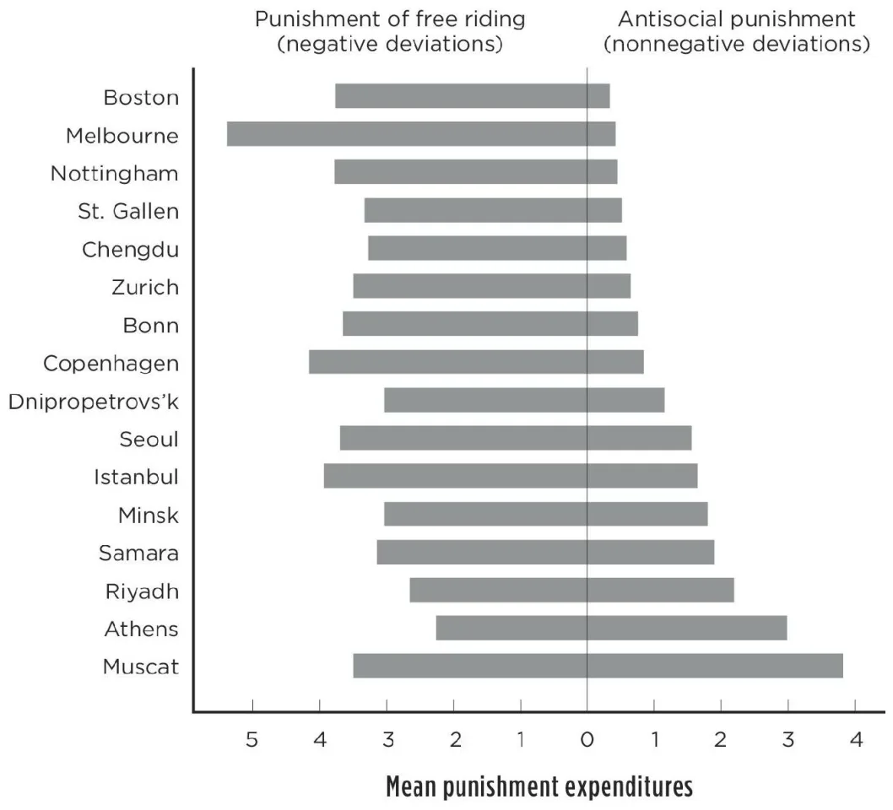
B. Herrmann và cộng sự, “Antisocial Punishment Across Societies,” Sci 319 (2008): 1362.
Truy cập bit.ly/2neVZaA để xem phiên bản lớn hơn của biểu đồ này.
Các tác giả đã xác định ba biến số hấp dẫn dự đoán các mô hình chơi:
Hội nhập thị trường: Con người trong một nền văn hóa tương tác kinh tế nhiều đến mức nào, bằng các vật phẩm trao đổi? Các tác giả vận hành hóa điều này bằng tỷ lệ phần trăm lượng calo của con người đến từ việc mua bán trong các tương tác thị trường, và nó dao động từ 0 phần trăm đối với người Hadza săn bắt hái lượm ở Tanzania đến gần 90 phần trăm đối với các nền văn hóa đánh cá định cư. Và xuyên suốt các nền văn hóa, mức độ hội nhập thị trường lớn hơn dự đoán mạnh mẽ việc con người đưa ra những lời đề nghị công bằng hơn trong cả ba trò chơi và sẵn sàng trả tiền cho cả sự trừng phạt bên thứ hai tư lợi lẫn sự trừng phạt bên thứ ba vị tha đối với những kẻ khốn nạn. Ví dụ, người Hadza, ở một thái cực, giữ lại trung bình 73 phần trăm chiến lợi phẩm cho riêng mình trong Trò chơi Độc tài, trong khi người Sanquianga đánh cá định cư ở Colombia, cùng với người dân ở Hoa Kỳ và Accra, tiến gần đến việc ấn định mức chia 50:50. Hội nhập thị trường dự đoán sự sẵn sàng trừng phạt tính ích kỷ cao hơn và, không có gì ngạc nhiên, ít ích kỷ hơn.
Quy mô cộng đồng: Cộng đồng càng lớn, tỷ lệ trừng phạt bên thứ hai và bên thứ ba đối với những kẻ keo kiệt càng cao. Người Hadza, chẳng hạn, trong các nhóm nhỏ năm mươi người trở xuống, hầu như chấp nhận bất kỳ lời đề nghị nào trên mức không trong Trò chơi Tối hậu thư—không có sự trừng phạt. Ở thái cực khác, trong các cộng đồng từ năm nghìn người trở lên (nông dân và ngư dân định cư, cộng với cư dân đô thị Ghana và Mỹ), những lời đề nghị không nằm quanh mức 50:50 thường bị từ chối và/hoặc trừng phạt.
Tôn giáo: Tỷ lệ phần trăm dân số theo một tôn giáo toàn cầu (tức là Cơ đốc giáo hoặc Hồi giáo) là bao nhiêu? Điều này dao động từ không có ai ở người Hadza đến 60 đến 100 phần trăm ở tất cả các nhóm khác. Tỷ lệ theo một tôn giáo phương Tây càng lớn, sự trừng phạt bên thứ ba (tức là sẵn sàng trả tiền để trừng phạt người A vì bất công với người B) càng nhiều.
Nên hiểu thế nào về những phát hiện này? Đầu tiên là góc độ tôn giáo. Đây là phát hiện không phải về tính sùng đạo nói chung mà về tính sùng đạo trong một tôn giáo toàn cầu, và không phải về sự hào phóng hay công bằng mà về sự trừng phạt bên thứ ba mang tính vị tha. Có gì ở các tôn giáo toàn cầu? Như chúng ta đã thấy ở chương 9, chỉ khi các nhóm trở nên đủ lớn đến mức con người thường xuyên tương tác với người lạ thì các nền văn hóa mới phát minh ra các vị thần đạo đức hóa (moralizing gods). Đây không phải là những vị thần ngồi quanh bàn tiệc cười một cách tách biệt trước những thói hư tật xấu của con người bên dưới, hay những vị thần trừng phạt con người vì lễ vật tồi tàn. Đây là những vị thần trừng phạt con người vì đối xử tệ bạc với đồng loại—nói cách khác, các tôn giáo lớn phát minh ra những vị thần thực hiện sự trừng phạt bên thứ ba. Chẳng trách điều này dự đoán việc chính các tín đồ của những tôn giáo này cũng trở thành những kẻ trừng phạt bên thứ ba.
Tiếp theo là cặp phát hiện song sinh rằng sự hội nhập thị trường nhiều hơn và quy mô cộng đồng lớn hơn gắn liền với những lời đề nghị công bằng hơn (cho vế đầu) và sự sẵn sàng trừng phạt người chơi bất công nhiều hơn (cho cả hai). Tôi thấy đây là một cặp phát hiện đặc biệt thách thức, nhất là khi được đóng khung một cách sâu sắc như cách các tác giả đã làm.
Các tác giả đặt câu hỏi ý thức công bằng cực đoan độc đáo ở con người bắt nguồn từ đâu, đặc biệt là trong bối cảnh các xã hội quy mô lớn với những người lạ thường xuyên tương tác. Và họ đưa ra hai kiểu giải thích truyền thống có liên quan mật thiết đến sự phân đôi của chúng ta giữa trực giác với lập luận và nguồn gốc động vật với phát minh văn hóa:
Sự neo giữ đạo đức của chúng ta vào tính công bằng trong các xã hội quy mô lớn là một tàn dư và sự mở rộng từ quá khứ săn bắt hái lượm và linh trưởng không phải người của chúng ta. Đó là cuộc sống trong các nhóm nhỏ, nơi sự công bằng chủ yếu được thúc đẩy bởi chọn lọc dòng dõi và các kịch bản dễ dàng của lòng vị tha có đi có lại. Khi quy mô cộng đồng của chúng ta mở rộng và giờ đây chúng ta chủ yếu có những tương tác một lần với những người lạ không có quan hệ huyết thống, tính vị xã hội của chúng ta chỉ đại diện cho sự mở rộng tâm thế nhóm nhỏ của chúng ta, khi chúng ta sử dụng các dấu hiệu nhận biết râu xanh (green-beard marker) khác nhau làm đại diện cho quan hệ huyết thống. Tôi sẵn sàng hy sinh mạng sống cho hai anh em trai, tám người anh em họ, hoặc một gã cùng là người hâm mộ đội Packers. Nền tảng đạo đức của ý thức công bằng nằm ở các thiết chế văn hóa và tâm thế mà chúng ta đã phát minh ra khi các nhóm của chúng ta trở nên lớn hơn và tinh vi hơn (như được phản ánh trong sự xuất hiện của thị trường, nền kinh tế tiền mặt, và những thứ tương tự).
Đi qua ngần ấy trang sách, rõ ràng là tôi nghĩ kịch bản đầu tiên khá mạnh mẽ—hãy nhìn xem, chúng ta thấy gốc rễ của ý thức công bằng và công lý trong bản chất bình đẳng của những người săn bắt hái lượm du mục, ở các loài linh trưởng khác, ở trẻ sơ sinh, ở sự tham gia vượt trội của hệ viền hơn là vỏ não. Nhưng, thật bất tiện cho quan điểm đó, điều đó hoàn toàn trái ngược với những gì nổi lên từ các nghiên cứu này—xuyên suốt hai mươi lăm nền văn hóa, chính những người săn bắt hái lượm, những người giống tổ tiên chúng ta nhất, sống trong các nhóm nhỏ nhất, với mức độ quan hệ huyết thống cao nhất và ít phụ thuộc vào tương tác thị trường nhất, lại cho thấy xu hướng đưa ra lời đề nghị công bằng ít nhất và ít có khả năng trừng phạt sự bất công nhất, dù là đối với bản thân họ hay với người khác. Chẳng có chút tính vị xã hội nào ở đó cả, một bức tranh trái ngược với những gì chúng ta đã thấy ở chương 9.
Tôi nghĩ một lời giải thích là các trò chơi kinh tế này khai thác vào một kiểu tính vị xã hội rất đặc thù và nhân tạo. Chúng ta có xu hướng nghĩ về các tương tác thị trường như đỉnh cao của sự phức tạp—tìm ra một đồng tiền chung theo đúng nghĩa đen cho hàng loạt nhu cầu và mong muốn của con người dưới dạng một thứ trừu tượng gọi là tiền. Nhưng ở cốt lõi, các tương tác thị trường đại diện cho sự nghèo nàn hóa của sự có đi có lại ở con người. Ở dạng tự nhiên của nó, sự có đi có lại ở con người là một chiến thắng của việc thực hiện phép toán dài hạn một cách thoải mái và trực giác với táo và cam—anh chàng đằng kia là một thợ săn siêu sao; anh chàng khác không cùng đẳng cấp với anh ta nhưng sẽ bọc lót cho bạn nếu có sư tử quanh đây; trong khi đó, cô ấy cực giỏi tìm những hạt mongongo ngon nhất, bà lão kia biết tất cả về thảo dược chữa bệnh, và anh chàng mọt sách kia nhớ những câu chuyện hay nhất. Chúng ta biết nhà nhau ở đâu, các cột ghi nợ tự cân bằng theo thời gian, và nếu ai đó thực sự lạm dụng hệ thống, chúng ta sẽ cùng nhau xử lý họ.
Ngược lại, ở cốt lõi, một tương tác thị trường kinh tế tiền mặt tước bỏ tất cả xuống còn “Tôi đưa bạn cái này ngay bây giờ, nên bạn đưa tôi cái kia ngay bây giờ”—những tương tác thì hiện tại thiển cận mà nghĩa vụ có đi có lại của chúng phải được cân bằng ngay lập tức. Con người trong các xã hội quy mô nhỏ tương đối mới mẻ với cách vận hành này. Không phải là các nền văn hóa quy mô nhỏ đang lớn lên và phụ thuộc vào thị trường mới được dạy cách trở nên công bằng. Thay vào đó, họ mới được dạy cách trở nên công bằng trong những hoàn cảnh nhân tạo được mô hình hóa bởi một thứ như Trò chơi Tối hậu thư.
DANH DỰ VÀ SỰ TRẢ THÙ
Một lĩnh vực khác của sự khác biệt đa văn hóa trong các hệ thống đạo đức liên quan đến việc điều gì cấu thành phản ứng phù hợp trước những sự xúc phạm cá nhân. Điều này gợi nhớ lại các nền văn hóa danh dự ở chương 9, từ những chiến binh bộ tộc Maasai đến người miền Nam
nước Mỹ truyền thống. Như chúng ta đã thấy, các nền văn hóa như vậy có mối liên hệ lịch sử với thuyết độc thần, các nhóm tuổi chiến binh và đời sống du mục chăn thả.
Để tóm tắt lại, các nền văn hóa như vậy thường xem một sự thách thức đối với danh dự mà không được đáp trả là khởi đầu của một con dốc trơn trượt thảm khốc, bắt nguồn từ tính dễ tổn thương nội tại của nghề chăn thả—trong khi không ai có thể đột kích nông dân và ăn cắp toàn bộ mùa màng của họ, ai đó có thể lùa mất cả đàn gia súc chỉ sau một đêm—và nếu thằng khốn này thoát tội sau khi xúc phạm gia đình tôi, nó sẽ nhắm tới đàn gia súc của tôi tiếp theo. Đây là những nền văn hóa đặt nặng giá trị đạo đức lên sự trả thù, và trả thù ít nhất là tương xứng—xét cho cùng, mắt đền mắt có lẽ là phát minh của những người chăn thả Do Thái giáo. Kết quả là một thế giới của nhà Hatfield và nhà McCoy, với những mối thù truyền kiếp leo thang của họ. Điều này giúp giải thích tại sao tỷ lệ giết người cao ở miền Nam nước Mỹ không phải do bạo lực đô thị hay những thứ như cướp bóc mà là về những sự xúc phạm danh dự giữa những người quen biết nhau. Và nó giúp giải thích tại sao các công tố viên và bồi thẩm đoàn miền Nam thường khoan dung hơn đối với những tội ác xuất phát từ danh dự bị xúc phạm như vậy. Và nó cũng giúp giải thích mệnh lệnh dường như được nhiều bà mẹ miền Nam đưa ra cho những người con trai hành quân ra trận gia nhập phe Liên minh miền Nam: trở về như người chiến thắng hoặc trở về trong quan tài. Nỗi nhục đầu hàng không phải là một lựa chọn.
NHỮNG NGƯỜI TẬP THỂ XẤU HỔ VÀ NHỮNG CÁ NHÂN TỘI LỖI
Chúng ta quay trở lại với sự tương phản giữa các nền văn hóa tập thể và cá nhân (trong các nghiên cứu, như một lời nhắc nhở, “tập thể” chủ yếu có nghĩa là các xã hội Đông Á, trong khi “cá nhân” tương đương với người Tây Âu và Bắc Mỹ). Ngầm ẩn trong chính bản chất của sự tương phản này là những cách tiếp cận khác biệt rõ rệt đối với đạo đức của mục đích và phương tiện. Theo định nghĩa, các nền văn hóa tập thể thoải mái hơn các nền văn hóa cá nhân với việc con người được sử dụng như một phương tiện cho một mục đích vị lợi. Hơn nữa, các mệnh lệnh đạo đức trong các nền văn hóa tập thể có xu hướng xoay quanh các vai trò xã hội và bổn phận đối với nhóm, trong khi những mệnh lệnh trong các nền văn hóa cá nhân thường xoay quanh các quyền cá nhân.
Các nền văn hóa tập thể và cá nhân cũng khác nhau ở cách thực thi hành vi đạo đức. Như được nhà nhân chủng học Ruth Benedict nhấn mạnh lần đầu vào năm 1946, các nền văn hóa tập thể thực thi bằng nỗi xấu hổ (shame), trong khi các nền văn hóa cá nhân sử dụng cảm giác tội lỗi (guilt). Đây là một sự tương phản tuyệt vời, như được khám phá trong hai cuốn sách xuất sắc, Guilt: The Bite of Conscience (Cảm giác tội lỗi: Vết cắn của lương tâm) của bác sĩ tâm thần Herant Katchadourian thuộc Đại học Stanford và Is Shame Necessary? (Liệu nỗi xấu hổ có cần thiết?) của nhà khoa học môi trường Jennifer Jacquet thuộc Đại học NYU.30
Theo nghĩa được hầu hết mọi người trong lĩnh vực này sử dụng, bao gồm cả các tác giả này, xấu hổ là sự phán xét từ bên ngoài bởi nhóm, trong khi tội lỗi là sự phán xét bên trong của chính bạn. Xấu hổ đòi hỏi một khán giả, là chuyện về danh dự. Tội lỗi dành cho những nền văn hóa trân trọng sự riêng tư và là chuyện về lương tâm. Xấu hổ là sự đánh giá tiêu cực đối với toàn bộ cá nhân, tội lỗi là đối với một hành động, khiến ta có thể ghét tội lỗi nhưng yêu thương kẻ phạm tội. Việc bêu xấu hiệu quả đòi hỏi một dân số tuân phục, đồng nhất; cảm giác tội lỗi hiệu quả đòi hỏi sự tôn trọng luật pháp. Cảm thấy xấu hổ là muốn trốn đi; cảm thấy tội lỗi là muốn chuộc lỗi. Xấu hổ là khi mọi người nói, “Anh không thể sống cùng chúng tôi được nữa”; tội lỗi là khi bạn nói, “Làm sao tôi có thể sống với chính mình đây?”*
Từ thời điểm Benedict lần đầu tiên nêu bật sự tương phản này, đã có một quan điểm tự mãn ở phương Tây rằng xấu hổ bằng cách nào đó nguyên thủy hơn tội lỗi, khi phương Tây đã bỏ lại phía sau những chiếc mũ lừa, hình phạt đánh đòn công khai và chữ A màu đỏ. Xấu hổ là đám đông; tội lỗi là việc nội tâm hóa các quy tắc, luật lệ, sắc lệnh, nghị định và quy chế. Tuy nhiên, Jacquet lập luận một cách thuyết phục cho tính hữu ích tiếp tục của việc bêu xấu ở phương Tây, kêu gọi sự tái sinh của nó dưới hình thức hậu hiện đại. Đối với bà, việc bêu xấu đặc biệt hữu ích khi những kẻ có quyền lực không cho thấy bằng chứng nào của cảm giác tội lỗi và trốn tránh sự trừng phạt. Chúng ta không thiếu những ví dụ về sự trốn tránh như vậy trong hệ thống pháp luật Mỹ, nơi người ta có thể hưởng lợi từ sự bào chữa tốt nhất mà tiền bạc hoặc quyền lực có thể mua được; việc bêu xấu thường có thể bước vào khoảng trống đó. Hãy xem xét một vụ bê bối năm 1999 tại UCLA, khi hơn một tá cầu thủ bóng bầu dục khỏe mạnh, vạm vỡ bị phát hiện đã sử dụng các mối quan hệ, bịa đặt khuyết tật và giả mạo chữ ký bác sĩ để lấy giấy phép đỗ xe cho người khuyết tật. Vị thế đặc quyền của họ đã dẫn đến những gì nhìn chung bị coi là những cái vỗ tay nhẹ hều từ cả tòa án lẫn UCLA. Tuy nhiên, yếu tố bêu xấu rất có thể đã bù đắp cho điều đó—khi họ rời tòa án trước mặt báo chí, họ đã bước qua một hàng rào những người khuyết tật ngồi xe lăn đang la ó chế giễu họ.31
Các nhà nhân chủng học, nghiên cứu tất cả mọi người từ những người săn bắt hái lượm đến cư dân đô thị, đã phát hiện ra rằng khoảng hai phần ba cuộc trò chuyện hằng ngày là ngồi lê đôi mách, với đại đa số mang tính tiêu cực. Như người ta vẫn nói, ngồi lê đôi mách (với mục tiêu bêu xấu) là vũ khí của kẻ yếu chống lại kẻ mạnh. Nó luôn nhanh và rẻ và giờ đây vô cùng hơn thế nữa trong kỷ nguyên của Mạng Internet Đỏ Rực (Scarlet Internet).
Việc bêu xấu cũng hiệu quả khi đối phó với những hành động phẫn nộ của các tập đoàn.32
Kỳ quặc thay, hệ thống pháp luật Mỹ coi một tập đoàn là một cá nhân theo nhiều cách, một cá nhân mang tính thái nhân cách theo nghĩa không có lương tâm và chỉ quan tâm duy nhất đến lợi nhuận. Những người điều hành một tập đoàn đôi khi phải chịu trách nhiệm hình sự khi tập đoàn đã làm điều gì đó bất hợp pháp; tuy nhiên, họ không phải chịu trách nhiệm khi tập đoàn làm điều gì đó hợp pháp nhưng phi đạo đức—nó nằm ngoài địa hạt của cảm giác tội lỗi. Jacquet nhấn mạnh sức mạnh tiềm tàng của các chiến dịch bêu xấu, chẳng hạn như những chiến dịch đã buộc Nike phải thay đổi chính sách về điều kiện làm việc kinh hoàng trong các xưởng bóc lột sức lao động ở nước ngoài, hoặc gã khổng lồ ngành giấy Kimberly-Clark phải giải quyết việc chặt phá các khu rừng già nguyên sinh.
Giữa những điều tốt đẹp tiềm tàng có thể đến từ việc bêu xấu như vậy, Jacquet cũng nhấn mạnh những nguy hiểm của việc bêu xấu đương đại, đó là sự tàn bạo mà con người có thể bị tấn công trên mạng và khoảng cách mà thứ nọc độc đó có thể lan truyền—trong một thế giới mà việc được ẩn danh ghét bỏ kẻ phạm tội dường như quan trọng hơn bất cứ điều gì về bản thân tội lỗi đó.
KẺ KHỜ LAO VÀO: ÁP DỤNG NHỮNG PHÁT HIỆN CỦA KHOA HỌC ĐẠO ĐỨC
Làm thế nào những hiểu biết mà chúng ta đã có trong tay có thể được sử dụng để nuôi dưỡng những hành vi tốt đẹp nhất và giảm thiểu những hành vi tồi tệ nhất của chúng ta?
Gã Da Trắng Quá Cố Nào Đã Đúng?
Hãy bắt đầu với một câu hỏi đã khiến mọi người bận rộn trong hàng thiên niên kỷ, cụ thể là, triết học đạo đức tối ưu là gì?
Những người suy ngẫm về câu hỏi này đã nhóm các cách tiếp cận khác nhau thành ba hạng mục lớn. Giả sử có tiền nằm ở đó, và nó không phải của bạn nhưng không ai đang nhìn; tại sao không chộp lấy nó?
Đạo đức học đức hạnh (virtue ethics), với sự nhấn mạnh vào chủ thể hành động, sẽ trả lời: bởi vì bạn là một người tốt hơn thế, bởi vì bạn sẽ phải sống với chính mình sau đó, v.v.
Đạo đức học nghĩa vụ (deontology), với sự nhấn mạnh vào hành động: bởi vì ăn cắp là không ổn. Thuyết hệ quả (consequentialism), với sự nhấn mạnh vào kết quả: chuyện gì sẽ xảy ra nếu mọi người đều bắt đầu hành động theo cách đó, hãy nghĩ về tác động đối với người bị bạn ăn cắp tiền, v.v.
— Đạo đức học đức hạnh nhìn chung đã lùi về hàng ghế sau so với hai thuyết kia trong những năm gần đây, mang lấy một lớp vỏ cổ hủ kỳ quặc của sự bận tâm lỗi thời về cách một hành động không đúng đắn làm vấy bẩn tâm hồn một người. Như chúng ta sẽ thấy, tôi nghĩ rằng đạo đức học đức hạnh quay trở lại qua cửa sau với sự liên quan đáng kể.
Bằng cách tập trung vào đạo đức học nghĩa vụ đối đầu với thuyết hệ quả, chúng ta lại quay về mảnh đất quen thuộc của việc liệu mục đích có biện minh cho phương tiện hay không. Đối với những người theo thuyết nghĩa vụ, câu trả lời là “Không, con người không bao giờ có thể là những quân tốt.” Đối với người theo thuyết hệ quả, câu trả lời là “Có, vì kết quả đúng đắn.” Thuyết hệ quả có nhiều sắc thái khác nhau, được coi trọng ở các mức độ khác nhau, tùy thuộc vào các đặc điểm của nó—ví dụ, có, mục đích biện minh cho phương tiện nếu mục đích là tối đa hóa khoái lạc của tôi (chủ nghĩa khoái lạc), tối đa hóa mức độ giàu có chung,* củng cố quyền lực hiện hành (thuyết hệ quả nhà nước). Tuy nhiên, đối với hầu hết mọi người, thuyết hệ quả là về chủ nghĩa vị lợi cổ điển—việc sử dụng con người như một phương tiện cho mục đích tối đa hóa mức độ hạnh phúc chung là ổn.
Khi thuyết nghĩa vụ và thuyết hệ quả suy ngẫm về những chiếc xe điện, cái trước là về trực giác đạo đức bắt nguồn từ vmPFC, hạch hạnh nhân và thùy đảo, trong khi cái sau là địa hạt của dlPFC và lập luận đạo đức. Tại sao những phán xét đạo đức tự động, trực giác của chúng ta lại có xu hướng phi vị lợi? Bởi vì, như Greene tuyên bố trong cuốn sách của mình, “Bộ não đạo đức của chúng ta tiến hóa để giúp chúng ta phát tán gen của mình, chứ không phải để tối đa hóa hạnh phúc tập thể của chúng ta.”
Các nghiên cứu về xe điện cho thấy tính đa dạng đạo đức của con người. Trong đó, xấp xỉ 30 phần trăm đối tượng nhất quán là người theo thuyết nghĩa vụ, không sẵn sàng kéo cần gạt lẫn đẩy một người, ngay cả khi phải trả giá bằng năm mạng sống kia. 30 phần trăm khác luôn là người theo thuyết vị lợi, sẵn sàng kéo hoặc đẩy. Và đối với tất cả những người còn lại, triết học đạo đức phụ thuộc vào bối cảnh. Thực tế là đa số tương đối rơi vào hạng mục này thúc đẩy mô hình “quá trình kép” (dual process) của Greene, khẳng định rằng chúng ta thường là sự pha trộn giữa việc coi trọng phương tiện và mục đích. Triết học đạo đức của bạn là gì? Nếu tác hại đối với người đóng vai trò phương tiện là vô ý hoặc nếu tính cố ý thực sự quanh co và gián tiếp, tôi là một người theo thuyết hệ quả vị lợi, và nếu tính cố ý nằm ngay trước mũi tôi, tôi là một người theo thuyết nghĩa vụ.
Các kịch bản xe điện khác nhau tiết lộ hoàn cảnh nào đẩy chúng ta về phía thuyết nghĩa vụ trực giác, hoàn cảnh nào đẩy về phía lập luận vị lợi. Kết quả nào tốt hơn?
Đối với kiểu người đọc cuốn sách này (tức là người đọc và suy nghĩ, những điều đáng để tự hào một cách chính đáng), khi xem xét vấn đề này ở một khoảng cách bình tĩnh, chủ nghĩa vị lợi có vẻ là nơi để bắt đầu—tối đa hóa hạnh phúc tập thể. Có sự nhấn mạnh vào tính công bằng (equity)—không phải đối xử giống hệt nhau mà là cân nhắc ngang nhau phúc lợi của mọi người. Và có sự nhấn mạnh tối thượng vào tính vô tư: nếu ai đó nghĩ tình huống đang được đề xuất là công bằng về mặt đạo đức, họ nên sẵn sàng tung đồng xu để quyết định mình sẽ đóng vai nào.
Chủ nghĩa vị lợi có thể bị chỉ trích trên cơ sở thực tiễn—rất khó tìm ra một đồng tiền chung cho các phiên bản hạnh phúc khác nhau của mọi người, việc nhấn mạnh mục đích hơn phương tiện đòi hỏi bạn phải giỏi dự đoán kết quả thực tế sẽ là gì, và sự vô tư thực sự thì khó kinh khủng với bộ óc Ta/Họ của chúng ta. Nhưng ít nhất trên lý thuyết, có một sức hấp dẫn logic vững chắc ở chủ nghĩa vị lợi.
Ngoại trừ việc có một vấn đề—trừ phi ai đó bị mất vùng vmPFC, sức hấp dẫn của chủ nghĩa vị lợi chắc chắn sẽ phanh kít lại ở một điểm nào đó. Đối với hầu hết mọi người, đó là việc đẩy người kia ra trước chiếc xe điện. Hoặc làm ngạt thở một đứa trẻ đang khóc để cứu một nhóm người đang trốn Đức Quốc xã. Hoặc giết một người khỏe mạnh để lấy nội tạng của anh ta và cứu năm mạng sống. Như Greene nhấn mạnh, hầu như tất cả mọi người đều nắm bắt ngay lập tức logic và sức hấp dẫn của chủ nghĩa vị lợi nhưng cuối cùng lại chạm đến một điểm mà rõ ràng nó không phải là một kim chỉ nam tốt cho việc ra quyết định đạo đức hằng ngày.
Greene và, một cách độc lập, nhà khoa học thần kinh John Allman thuộc Caltech cùng nhà sử học khoa học James Woodward thuộc Đại học Pittsburgh đã khám phá nền tảng sinh học thần kinh của một điểm mấu chốt—chủ nghĩa vị lợi đang được xem xét ở đây mang tính một chiều và nhân tạo; nó làm què quặt sự tinh tế của cả trực giác đạo đức lẫn lập luận đạo đức của chúng ta. Một lập luận khá thuyết phục có thể được đưa ra cho thuyết hệ quả vị lợi. Miễn là bạn xem xét các hậu quả tức thì. Và các hậu quả dài hạn hơn. Và các hậu quả dài-dài-hạn. Và rồi quay lại xem xét tất cả chúng thêm vài lần nữa.
Khi con người đụng phải bức tường với chủ nghĩa vị lợi, đó là vì điều trên giấy tờ là một sự đánh đổi dễ chấp nhận trong ngắn hạn (“Cố ý giết một để cứu năm—điều đó rõ ràng làm tăng hạnh phúc tập thể”) hóa ra lại không phải vậy trong dài hạn. “Chắc chắn rồi, việc hiến tạng bất tự nguyện của người khỏe mạnh đó vừa cứu được năm mạng người, nhưng còn ai khác sẽ bị mổ xẻ theo cách đó nữa? Lỡ họ tìm đến tôi thì sao? Tôi khá thích lá gan của mình. Họ có thể bắt đầu làm những gì khác nữa?” Con dốc trơn trượt, sự chai sạn cảm xúc, những hậu quả không lường trước, những hậu quả có chủ đích. Khi chủ nghĩa vị lợi thiển cận (cái mà Woodward và Allman gọi là thuyết hệ quả “tham số”) được thay thế bằng một phiên bản nhìn xa hơn (cái mà họ gọi là thuyết hệ quả “chiến lược” và cái mà Greene gọi là “chủ nghĩa vị lợi thực dụng”), bạn sẽ nhận được những kết quả tốt hơn.
Tổng quan của chúng ta về trực giác đạo đức đối đầu với lập luận đạo đức đã tạo ra một sự phân đôi, một thứ giống như cách đàn ông không thể dồn nhiều máu đến háng và lên não cùng một lúc; họ phải chọn. Tương tự, bạn phải chọn xem việc ra quyết định đạo đức của mình sẽ xoay quanh hạch hạnh nhân hay dlPFC. Nhưng đây là một sự phân đôi sai lầm, bởi vì chúng ta đạt được những quyết định theo thuyết hệ quả chiến lược, dài hạn tốt nhất khi chúng ta huy động cả lập luận lẫn trực giác của mình. “Chắc chắn rồi, việc sẵn sàng làm X để đạt được Y có vẻ là một sự đánh đổi tốt trong ngắn hạn. Nhưng trong dài hạn, nếu chúng ta làm điều đó đủ thường xuyên, việc làm Z sẽ bắt đầu có vẻ ổn luôn, và tôi sẽ cảm thấy kinh khủng nếu Z được làm với tôi, và cũng có khả năng cao là W sẽ xảy ra, và điều đó sẽ tạo ra những cảm xúc thực sự tồi tệ ở mọi người, dẫn đến việc . . .” Và phần “cảm” của quá trình đó không phải là cách Ông Spock sẽ làm, nhớ lại một cách logic và lạnh lùng rằng lũ người kia là những sinh vật phi lý trí, thất thường và đưa điều đó vào suy nghĩ lý tính của ông ấy về họ. Thay vào đó, đây là việc cảm nhận xem những cảm xúc đó sẽ như thế nào. Điều này bước thẳng ra từ phần tổng quan ở chương 2 về giả thuyết dấu ấn cơ thể của Damasio: khi chúng ta ra quyết định, chúng ta không chỉ chạy các thí nghiệm tư tưởng mà còn chạy cả các thí nghiệm cảm giác cơ thể nữa—cảm giác sẽ như thế nào nếu điều này xảy ra?—và sự kết hợp này là mục tiêu trong việc ra quyết định đạo đức.
Do đó, “Không đời nào tôi đẩy ai đó xuống đường ray xe điện; điều đó đơn giản là sai” là chuyện của hạch hạnh nhân, thùy đảo và vmPFC. “Hy sinh một mạng sống để cứu năm mạng, chắc chắn rồi” là chuyện của dlPFC. Nhưng hãy thực hiện thuyết hệ quả chiến lược dài hạn, và tất cả các vùng đó đều được huy động. Và điều này mang lại một thứ mạnh mẽ hơn sự tự tin thái quá của chủ nghĩa trực giác giật gân, kiểu “Tôi không thể nói cho bạn biết tại sao, nhưng điều này đơn giản là sai.” Khi bạn đã huy động tất cả các hệ thống não bộ đó, khi bạn đã thực hiện các thí nghiệm tư tưởng và thí nghiệm cảm giác về cách mọi thứ có thể diễn ra trong dài hạn, và khi bạn đã sắp xếp thứ tự ưu tiên cho các đầu vào—các phản ứng bản năng được coi trọng, nhưng chắc chắn không được trao quyền phủ quyết—bạn sẽ biết chính xác tại sao một điều gì đó có vẻ đúng hay sai.
Những lợi thế hiệp đồng của việc kết hợp lập luận với trực giác nêu lên một điểm quan trọng. Nếu bạn là người hâm mộ trực giác đạo đức, bạn sẽ đóng khung chúng là nền tảng và nguyên thủy. Nếu bạn không thích chúng, bạn sẽ trình bày chúng là giản đơn, phản xạ và sơ khai. Nhưng như Woodward và Allman nhấn mạnh, trực giác đạo đức của chúng ta không hề nguyên thủy hay sơ khai theo kiểu phản xạ. Chúng là sản phẩm cuối cùng của quá trình học tập; chúng là những kết luận nhận thức mà chúng ta đã tiếp xúc thường xuyên đến mức chúng trở nên tự động, ngầm ẩn như việc đi xe đạp hay đọc các ngày trong tuần theo chiều xuôi thay vì chiều ngược. Ở phương Tây, hầu như tất cả chúng ta đều có trực giác đạo đức mạnh mẽ về sự sai trái của chế độ nô lệ, lao động trẻ em, hay sự tàn ác với động vật. Nhưng trước đây chắc chắn không phải như vậy. Sự sai trái của chúng đã trở thành một trực giác đạo đức ngầm ẩn, một bản năng ruột thịt liên quan đến chân lý đạo đức, chỉ nhờ vào lập luận đạo đức quyết liệt (và hoạt động xã hội) của những người đi trước chúng ta, vào thời điểm mà trực giác đạo đức của một người bình thường khác biệt đến mức không thể nhận ra. Ruột gan của chúng ta học lấy trực giác của chúng.
Chậm và Nhanh: Những Vấn Đề Riêng Biệt của “Tôi Đối Đầu Ta” và “Ta Đối Đầu Họ”
Sự tương phản giữa thuyết trực giác đạo đức nhanh chóng, tự động và lập luận đạo đức có ý thức, cân nhắc diễn ra trong một lĩnh vực quan trọng khác và là chủ đề của cuốn sách xuất sắc năm 2014 của Greene mang tên Moral Tribes: Emotion, Reason, and the Gap Between Us and Them (Các bộ lạc đạo đức: Cảm xúc, Lý trí và Khoảng cách giữa Ta và Họ).33
Greene bắt đầu với bi kịch kinh điển của tài sản chung (tragedy of the commons). Những người chăn cừu đưa đàn của họ đến một đồng cỏ chung. Có quá nhiều cừu đến mức có nguy cơ phá hủy đồng cỏ chung, trừ phi mọi người giảm quy mô đàn của mình. Và bi kịch nằm ở chỗ nếu đó thực sự là một tài sản chung, không có động lực nào để hợp tác cả—bạn sẽ dao động từ việc trở thành một kẻ ngốc nếu không ai khác hợp tác đến việc trở thành một kẻ ăn bám thành công nếu tất cả những người khác đều hợp tác.
Vấn đề này, cụ thể là làm thế nào để khởi động và sau đó duy trì sự hợp tác trong một biển những kẻ không hợp tác, đã chạy xuyên suốt chương 10 và, như được thể hiện qua sự tồn tại rộng khắp của các loài xã hội biết hợp tác, vấn đề này có thể giải quyết được (hãy đón xem thêm ở chương cuối). Khi được đóng khung trong bối cảnh đạo đức, việc ngăn chặn bi kịch của tài sản chung đòi hỏi phải khiến mọi người trong nhóm không ích kỷ; đó là vấn đề của Tôi đối đầu với Ta.
Nhưng Greene phác thảo một kiểu bi kịch thứ hai. Bây giờ có hai nhóm người chăn cừu khác nhau, và thách thức là mỗi nhóm có một cách tiếp cận khác nhau đối với việc chăn thả. Một nhóm, ví dụ, coi đồng cỏ là một tài sản chung kinh điển, trong khi nhóm kia tin rằng đồng cỏ nên được chia thành các mảnh đất thuộc về từng người chăn cừu riêng lẻ, với những hàng rào cao, chắc chắn ở giữa. Nói cách khác, những quan điểm mâu thuẫn lẫn nhau về việc sử dụng đồng cỏ.
Điều thúc đẩy sự nguy hiểm và bi kịch của tình huống này là mỗi nhóm đều có một cấu trúc được lập luận chặt chẽ trong đầu về lý do tại sao cách của họ là đúng đắn đến mức nó có thể mang lại sức nặng đạo đức, được coi là một “quyền.” Greene mổ xẻ từ đó một cách xuất sắc. Đối với mỗi bên, việc nhận thức bản thân có “quyền” làm mọi thứ theo cách của mình chủ yếu có nghĩa là họ đã trát đủ những lời hợp lý hóa hậu nghiệm kiểu Haidt lên một trực giác đạo đức vô hình, tư lợi, cục bộ; đã xếp hàng đủ những người chăn cừu triết gia-vua râu bạc của mình để tuyên bố sức mạnh đạo đức cho lập trường của họ; cảm thấy một cách chân thành và đau đớn nhất rằng chính bản chất của những gì họ trân trọng và họ là ai đang bị đe dọa, rằng chính sự đúng đắn đạo đức của vũ trụ đang lung lay; tất cả những điều đó mạnh mẽ đến mức họ không thể nhận ra cái “quyền” đó đúng với bản chất của nó, cụ thể là “Tôi không thể nói cho bạn biết tại sao, nhưng đây là cách mọi thứ nên được thực hiện.” Trích một câu nói được cho là của Oscar Wilde, “Đạo đức đơn giản là thái độ mà chúng ta áp dụng đối với những người mà cá nhân chúng ta không ưa.”
Đó là Ta đối đầu với Họ được đóng khung về mặt đạo đức, và tầm quan trọng của cái mà Greene gọi là “Bi kịch của Đạo đức Thông thường” (the Tragedy of Commonsense Morality) được thể hiện qua thực tế rằng hầu hết các cuộc xung đột liên nhóm trên hành tinh của chúng ta suy cho cùng là những bất đồng văn hóa về việc “quyền” của ai đúng hơn.
Đây là một cách đóng khung vấn đề mang tính trí thức hóa, khô khan. Dưới đây là một cách khác.
Giả sử tôi quyết định rằng sẽ rất tốt nếu có những bức ảnh ở đây minh họa cho thuyết tương đối văn hóa, cho thấy một hành động bình thường trong nền văn hóa này nhưng lại gây đau khổ sâu sắc trong nền văn hóa khác. “Tôi biết rồi,” tôi nghĩ, “Tôi sẽ lấy vài bức ảnh về một chợ thịt chó ở Đông Nam Á; giống như tôi, hầu hết độc giả có lẽ sẽ đồng cảm với loài chó.” Kế hoạch hay. Lên Google Hình ảnh, và kết quả là tôi dành hàng giờ chết lặng, không thể dừng lại, tự hành hạ mình bằng hết bức ảnh này đến bức ảnh khác chụp những chú chó bị chở ra chợ, bị giết mổ, nấu chín và đem bán, những bức ảnh chụp con người tiếp tục công việc hằng ngày của họ ở chợ, thờ ơ trước một chiếc lồng nhồi nhét đến tận nóc những chú chó đang đau khổ.
Tôi tưởng tượng nỗi sợ hãi mà những chú chó đó cảm thấy, chúng nóng bức, khát nước, đau đớn như thế nào. Tôi nghĩ, “Lỡ những chú chó này đã từng tin tưởng con người thì sao?” Tôi nghĩ về nỗi sợ hãi và sự bối rối của chúng. Tôi nghĩ, “Lỡ một trong những chú chó mà tôi từng yêu thương phải trải qua điều đó thì sao? Lỡ chuyện này xảy ra với một chú chó mà các con tôi yêu thương thì sao?” Và với trái tim đập thình thịch, tôi nhận ra rằng tôi căm ghét những người này, căm ghét từng người một trong số họ và khinh miệt nền văn hóa của họ.
Và phải mất một nỗ lực nặng tựa đầu tàu hỏa tôi mới thừa nhận được rằng tôi không thể biện minh cho lòng căm thù và sự khinh miệt đó, rằng của tôi chỉ là một trực giác đạo đức đơn thuần, rằng có những điều tôi làm sẽ gợi lên phản ứng y hệt ở một người xa xôi nào đó mà nhân tính và đạo đức của họ chắc chắn không hề kém cỏi hơn tôi, và rằng nếu không phải vì sự ngẫu nhiên của nơi tôi tình cờ được sinh ra, tôi hoàn toàn có thể mang quan điểm của họ thay vào đó.
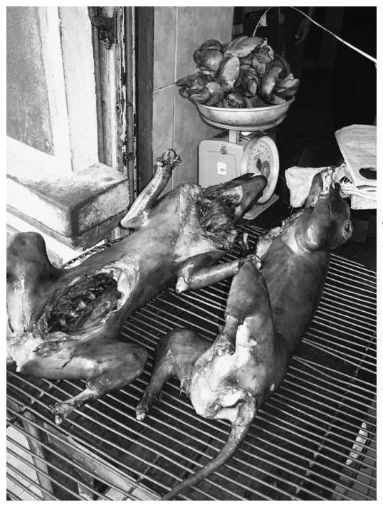
Điều khiến bi kịch của đạo đức thông thường trở nên bi thảm đến vậy là cường độ mà bạn chỉ biết chắc chắn rằng Họ sai lầm sâu sắc.
Nhìn chung, các thiết chế văn hóa nhuốm màu đạo đức của chúng ta—tôn giáo, chủ nghĩa dân tộc, niềm tự hào sắc tộc, tinh thần đồng đội—hướng chúng ta tới những hành vi tốt đẹp nhất khi chúng ta là những người chăn cừu đơn lẻ đối mặt với một bi kịch tiềm tàng của tài sản chung. Chúng khiến chúng ta bớt ích kỷ hơn trong các tình huống Tôi đối đầu với Ta. Nhưng chúng lại đẩy chúng ta lao thẳng tới những hành vi tồi tệ nhất khi đối mặt với phe Họ và những nền đạo đức khác biệt của họ.
Bản chất quá trình kép của việc ra quyết định đạo đức mang lại một số hiểu biết về cách ngăn chặn hai kiểu bi kịch rất khác nhau này.
Trong bối cảnh Tôi đối đầu với Ta, trực giác đạo đức của chúng ta được chia sẻ chung, và việc nhấn mạnh chúng ngân vang cùng tính vị xã hội của chất Ta trong chúng ta. Điều này được thể hiện trong một nghiên cứu của Greene, David Rand thuộc Đại học Yale và các đồng nghiệp, nơi các đối tượng chơi một trò chơi hàng hóa công một lần mô phỏng bi kịch của tài sản chung.34 Các đối tượng được cho những khoảng thời gian dài ngắn khác nhau để quyết định xem họ sẽ đóng góp bao nhiêu tiền vào một quỹ chung (so với việc giữ lại cho riêng mình, gây thiệt hại cho tất cả mọi người khác). Và thời gian ra quyết định được yêu cầu càng nhanh, mọi người càng hợp tác nhiều hơn. Tương tự nếu bạn mồi cho các đối tượng coi trọng trực giác (bằng cách bảo họ kể lại một lần trực giác dẫn họ đến một quyết định đúng đắn hoặc nơi mà sự lập luận cẩn thận làm điều ngược lại)—sự hợp tác nhiều hơn. Ngược lại, hướng dẫn các đối tượng “cân nhắc kỹ lưỡng” quyết định của mình, hoặc mồi cho họ coi trọng sự suy ngẫm hơn trực giác, và họ sẽ ích kỷ hơn. Càng có nhiều thời gian để suy nghĩ, càng có nhiều thời gian để thực hiện một phiên bản của “Đúng, tất cả chúng ta đều đồng ý rằng hợp tác là một điều tốt . . . nhưng đây là lý do tại sao lần này tôi nên được miễn trừ”—cái mà các tác giả gọi là “lòng tham có tính toán.”
Chuyện gì sẽ xảy ra nếu các đối tượng chơi trò chơi với một người khác biệt một cách rõ rệt, một con người khác biệt nhất mà bạn có thể tìm thấy, theo bất kỳ tiêu chuẩn nào về sự thoải mái và quen thuộc của đối tượng? Mặc dù nghiên cứu này chưa được thực hiện (và rõ ràng sẽ rất khó để thực hiện), bạn sẽ dự đoán rằng các quyết định nhanh chóng, trực giác sẽ áp đảo đi theo hướng ích kỷ dễ dàng, không xung đột, với tiếng chuông báo động bài ngoại “Họ! Họ!” reo vang và những niềm tin tự động kiểu “Đừng tin Họ!” được kích hoạt tức thì.
Khi đối mặt với các tình huống tiến thoái lưỡng nan về đạo đức kiểu Tôi đối đầu với Ta nhằm cưỡng lại sự ích kỷ, trực giác nhanh chóng của chúng ta là tốt, được mài giũa bởi chọn lọc tiến hóa cho sự hợp tác trong một biển các dấu hiệu râu xanh.35 Và trong những bối cảnh như vậy, việc quy định và hình thức hóa tính vị xã hội (tức là chuyển nó từ địa hạt trực giác sang địa hạt suy tư) thậm chí có thể phản tác dụng, một điểm được Samuel Bowles nhấn mạnh.*
Ngược lại, khi thực hiện việc ra quyết định đạo đức trong các kịch bản Ta đối đầu với Họ, hãy giữ trực giác tránh xa hết mức có thể. Thay vào đó, hãy suy nghĩ, lập luận và đặt câu hỏi; hãy thực dụng sâu sắc và vị lợi một cách chiến lược; hãy đặt mình vào góc nhìn của họ, cố gắng nghĩ những gì họ nghĩ, cố gắng cảm nhận những gì họ cảm nhận. Hít một hơi thật sâu, và rồi làm lại tất cả những điều đó một lần nữa.*
Sự Chân Thực và Tính Dối Trá
Câu hỏi vang lên, rõ ràng và khẩn thiết, một câu hỏi không thể phớt lờ hay né tránh. Chris nuốt nước bọt một cái, cố gắng giữ một giọng nói bình tĩnh và vững vàng, rồi trả lời: “Không, hoàn toàn không.” Đó là một lời nói dối trơ trẽn.
Đây là một điều tốt hay điều xấu? À, điều đó tùy thuộc vào câu hỏi là gì: (a) “Khi CEO đưa cho anh bản tóm tắt, anh có biết rằng các con số đã bị thao túng để che giấu khoản lỗ quý ba không?” công tố viên hỏi. (b) “Đây có phải món đồ chơi cháu có rồi không?” bà ngoại dè dặt hỏi. (c) “Bác sĩ nói sao? Có nguy hiểm đến tính mạng không?” (d) “Bộ đồ này có làm trông tôi bị ____ không?” (e) “Con có ăn mấy cái bánh brownie để dành cho tối nay không?” (f) “Harrison, anh có đang chứa chấp tên nô lệ bỏ trốn tên Jack không?” (g)
“Có gì đó không khớp. Anh có đang nói dối về việc ở lại làm muộn tối qua không?” (h) “Ôi trời ơi, cậu vừa đánh rắm à?”
Không gì điển hình hơn cho mức độ mà ý nghĩa của các hành vi của chúng ta phụ thuộc vào bối cảnh. Cùng một sự không trung thực, cùng một sự tập trung vào việc kiểm soát biểu cảm khuôn mặt, cùng một nỗ lực tạo ra lượng giao tiếp bằng mắt vừa đủ. Và tùy thuộc vào hoàn cảnh, đây có thể là lúc chúng ta ở trạng thái tốt nhất hoặc tệ nhất. Ở chiều ngược lại của sự phụ thuộc bối cảnh, đôi khi việc trung thực lại là điều khó khăn hơn—việc nói ra một sự thật khó nghe về người khác kích hoạt PFC giữa (cùng với thùy đảo).*36
Xét đến những sự phức tạp này, không có gì ngạc nhiên khi sinh học của sự trung thực và thói giả dối lại rất mù mờ.
Như chúng ta đã thấy ở chương 10, chính bản chất của các trò chơi tiến hóa cạnh tranh chọn lọc cho cả sự lừa dối lẫn sự cảnh giác chống lại nó. Chúng ta thậm chí đã thấy những phiên bản sơ khai của cả hai ở nấm men xã hội. Chó cố gắng lừa dối lẫn nhau, với thành công hạn chế—khi một con chó kinh hãi, pheromone sợ hãi tỏa ra từ tuyến mùi hậu môn của nó, và chẳng hay ho gì nếu gã bạn đang đối đầu biết bạn đang sợ. Một con chó không thể có ý thức chọn cách lừa dối bằng cách ngừng tổng hợp và tiết ra những pheromone đó. Nhưng nó có thể cố gắng dập tắt sự phát tán của chúng bằng cách đậy nắp các tuyến đó lại, bằng cách kẹp đuôi vào giữa hai chân—“Tôi không sợ đâu, thề đấy,” Sparky rít lên.
Không có gì ngạc nhiên, thói giả dối ở linh trưởng không phải người đưa mọi thứ lên một tầm cao hoàn toàn khác.37 Nếu có một miếng thức ăn ngon và một con vật có thứ bậc cao hơn ở gần đó, khỉ mũ sẽ phát ra tiếng kêu báo động kẻ săn mồi để đánh lạc hướng cá thể kia; nếu đó là một con vật có thứ bậc thấp hơn, chẳng cần thiết; cứ việc lấy thức ăn. Tương tự, nếu một con khỉ mũ thứ bậc thấp biết nơi giấu thức ăn và có một con thống trị ở quanh đó, nó sẽ đi ra xa khỏi nơi giấu; nếu đó là một con phục tùng, không vấn đề gì. Điều tương tự cũng thấy ở khỉ nhện và khỉ macaque. Và các loài linh trưởng khác không chỉ thực hiện “sự che giấu chiến thuật” về thức ăn. Khi một con khỉ đầu chó gelada đực giao phối với một con cái, nó thường phát ra “tiếng kêu giao phối.” Trừ khi nó đang ở cùng một con cái đã lẻn ra khỏi con đực cặp đôi ở gần đó của cô ta. Trong trường hợp đó, nó không phát ra một tiếng động nào. Và, tất nhiên, tất cả những ví dụ này đều lu mờ khi so sánh với những gì lũ tinh tinh chính trị gia có thể bày trò. Phản ánh sự lừa dối như một nhiệm vụ đòi hỏi rất nhiều chuyên môn xã hội, xuyên suốt các loài linh trưởng, vỏ não mới (neocortex) lớn hơn dự đoán tỷ lệ lừa dối cao hơn, độc lập với quy mô nhóm.*
Điều đó thật ấn tượng. Nhưng rất khó có khả năng có sự hoạch định chiến lược có ý thức từ phía những loài linh trưởng này. Hoặc việc chúng cảm thấy tồi tệ hay thậm chí vấy bẩn về mặt đạo đức khi lừa dối. Hoặc việc chúng thực sự tin vào những lời nói dối của mình. Đối với những thứ đó, chúng ta cần con người.
Năng lực lừa dối của con người là vô cùng to lớn. Chúng ta có sự phân bố dây thần kinh phức tạp nhất đến các cơ mặt và sử dụng một lượng khổng lồ các tế bào thần kinh vận động để kiểm soát chúng—không loài nào khác có thể giữ được gương mặt lạnh tanh như chơi bài poker. Và chúng ta có ngôn ngữ, phương tiện phi thường để thao túng khoảng cách giữa một thông điệp và ý nghĩa của nó.
Con người cũng xuất sắc trong việc nói dối bởi vì các kỹ năng nhận thức của chúng ta cho phép chúng ta làm một điều vượt quá khả năng của bất kỳ con khỉ đầu chó gelada xảo quyệt nào—chúng ta có thể uốn nắn sự thật.
Một nghiên cứu thú vị cho thấy khuynh hướng này của chúng ta. Đơn giản hóa lại: Một đối tượng sẽ tung một con xúc xắc, với các kết quả khác nhau mang lại các phần thưởng tiền bạc khác nhau. Các lần tung được thực hiện riêng tư, với việc đối tượng tự báo cáo kết quả—một cơ hội để gian lận.
Với sự ngẫu nhiên và đủ số lần tung, nếu mọi người đều trung thực, mỗi con số sẽ được báo cáo khoảng một phần sáu số lần. Nếu mọi người luôn nói dối để đạt lợi ích tối đa, tất cả các lần tung lẽ ra đã tạo ra con số trả thưởng cao nhất.
Đã có rất nhiều sự nói dối. Các đối tượng là hơn 2.500 sinh viên đại học từ hai mươi ba quốc gia, và tỷ lệ tham nhũng, trốn thuế và gian lận chính trị cao hơn ở quốc gia của một đối tượng dự đoán tỷ lệ nói dối cao hơn. Điều này không có gì ngạc nhiên, sau khi chương 9 chứng minh rằng tỷ lệ vi phạm quy tắc cao trong một cộng đồng làm giảm vốn xã hội, thứ sau đó châm ngòi cho hành vi phản xã hội của cá nhân.
Điều thú vị nhất là xuyên suốt tất cả các nền văn hóa, việc nói dối thuộc một kiểu đặc thù. Các đối tượng thực chất tung xúc xắc hai lần, và chỉ lần tung đầu tiên được tính (lần thứ hai, họ được bảo, là để kiểm tra xem con xúc xắc có “hoạt động bình thường” không). Việc nói dối cho thấy một mô hình mà, dựa trên các công trình trước đó, chỉ có thể được giải thích bởi một điều—con người hiếm khi bịa ra một con số trả thưởng cao. Thay vào đó, họ đơn giản chỉ báo cáo con số cao hơn trong hai lần tung.
Bạn gần như có thể nghe thấy tiếng hợp lý hóa. “Chết tiệt, lần tung đầu của mình là 1 [kết quả tệ], lần thứ hai là 4 [tốt hơn]. Này, các lần tung là ngẫu nhiên; nó hoàn toàn có thể ra 4 dễ như ra 1 vậy, cho nên . . . cứ nói là mình tung được 4 đi. Thế đâu có thực sự là gian lận.”
Nói cách khác, việc nói dối thường xuyên nhất bao gồm sự hợp lý hóa khiến nó có cảm giác ít bất lương hơn—không lao đầu hết cỡ vì đồng tiền bẩn thỉu đó, để hành động của bạn chỉ có cảm giác như một sự không thật thà hơi có mùi một chút thôi.
Khi chúng ta nói dối, đương nhiên, các vùng liên quan đến Lý thuyết Tâm trí có tham gia, đặc biệt là trong các hoàn cảnh lừa dối xã hội mang tính chiến lược. Hơn nữa, dlPFC và các vùng trán liên quan là trung tâm của một mạch thần kinh lừa dối. Và rồi sự thấu hiểu bị chững lại.38
Quay lại chủ đề được giới thiệu ở chương 2 về vỏ não trước trán, và cụ thể là dlPFC, giúp bạn làm điều khó khăn hơn khi đó là điều đúng đắn cần làm. Và theo nghĩa phi giá trị của từ “đúng”, bạn sẽ mong đợi dlPFC kích hoạt khi bạn đang đấu tranh để làm (a) điều đúng đắn về mặt đạo đức, tức là tránh cám dỗ nói dối, cũng như (b) điều đúng đắn về mặt chiến lược, cụ thể là, một khi đã quyết định nói dối, thì thực hiện nó một cách hiệu quả. Có thể rất khó để lừa dối một cách hiệu quả, khi phải suy nghĩ chiến lược, nhớ kỹ lời nói dối mình thực sự đang nói, và tạo ra một cảm xúc giả tạo (“Thưa Bệ hạ, thần mang đến tin buồn khủng khiếp về hoàng tử, người thừa kế ngai vàng [ừ, bọn ta phục kích hắn rồi—đập tay cái nào!]”).* Do đó, sự kích hoạt của dlPFC sẽ phản ánh cả cuộc đấu tranh để cưỡng lại cám dỗ lẫn nỗ lực điều hành để đắm mình một cách hiệu quả trong cám dỗ, một khi bạn đã thua cuộc đấu tranh đó. “Đừng làm thế” + “nếu đã định làm, hãy làm cho tới.”
Sự nhầm lẫn này nảy sinh trong các nghiên cứu chụp ảnh thần kinh về những kẻ nói dối bệnh lý.*39
Người ta có thể mong đợi điều gì? Đây là những người theo thói quen thất bại trong việc cưỡng lại cám dỗ nói dối; tôi cá là họ bị teo một thứ gì đó ở vỏ não trước trán. Đây là những người theo thói quen nói dối và giỏi việc đó (và thường có chỉ số IQ ngôn ngữ cao); tôi cá là họ có sự phình to của một thứ gì đó ở vỏ não trước trán. Và các nghiên cứu xác nhận cả hai dự đoán—những kẻ nói dối bệnh lý có lượng chất trắng (tức là các dây cáp sợi trục kết nối các tế bào thần kinh) tăng lên ở vỏ não trước trán, nhưng lượng chất xám (tức là thân tế bào của các tế bào thần kinh) lại ít hơn. Không thể biết liệu có quan hệ nhân quả trong các tương quan chụp ảnh thần kinh/hành vi này hay không. Tất cả những gì người ta có thể kết luận là các vùng vỏ não trước trán như dlPFC thể hiện nhiều phiên bản đa dạng của việc “làm điều khó khăn hơn.”
Bạn có thể tách biệt nhiệm vụ vùng trán là cưỡng lại cám dỗ khỏi nhiệm vụ vùng trán là nói dối hiệu quả bằng cách loại bỏ đạo đức ra khỏi phương trình.40 Điều này được thực hiện trong các nghiên cứu nơi mọi người được bảo phải nói dối. (Ví dụ, các đối tượng được đưa cho một loạt bức ảnh; sau đó họ được cho xem một loạt ảnh, một số giống hệt những bức họ đang giữ, và được hỏi, “Đây có phải bức ảnh bạn có không?” Một tín hiệu từ máy tính cho biết đối tượng nên trả lời trung thực hay nói dối.) Trong kiểu kịch bản này, việc nói dối gắn liền nhất quán nhất với sự kích hoạt của dlPFC (cùng với vùng vlPFC lân cận và có liên quan). Đây là bức tranh về dlPFC đang thực hiện nhiệm vụ khó khăn là nói dối một cách hiệu quả, trừ đi nỗi lo lắng về số phận của linh hồn tế bào thần kinh của nó.
Các nghiên cứu cũng có xu hướng cho thấy sự kích hoạt của vỏ não đai trước (ACC). Như đã giới thiệu ở chương 2, ACC phản ứng với các hoàn cảnh có những lựa chọn xung đột. Điều này xảy ra đối với xung đột theo nghĩa cảm xúc, cũng như theo nghĩa nhận thức (ví dụ: phải chọn giữa hai câu trả lời khi cả hai có vẻ đều ổn). Trong các nghiên cứu nói dối, ACC không kích hoạt vì xung đột đạo đức về việc nói dối, vì các đối tượng được hướng dẫn phải nói dối. Thay vào đó, nó đang giám sát xung đột giữa thực tế và những gì bạn được hướng dẫn phải báo cáo, và điều này làm kẹt cỗ máy một chút; con người cho thấy thời gian phản hồi dài hơn một chút trong các lượt thử nói dối so với các lượt thử trung thực.
Sự chậm trễ này hữu ích trong các bài kiểm tra bằng máy phát hiện nói dối (tức là máy dò nói dối). Ở dạng cổ điển, bài kiểm tra phát hiện sự hưng phấn của hệ thần kinh giao cảm, cho thấy ai đó đang nói dối và lo âu về việc không bị bắt. Vấn đề là bạn cũng sẽ có sự hưng phấn lo âu y hệt nếu bạn đang nói sự thật nhưng cuộc đời bạn sẽ tiêu tùng nếu cái máy dễ sai sót kia nói ngược lại. Hơn nữa, những kẻ thái nhân cách không thể bị phát hiện, vì họ không bị hưng phấn lo âu khi nói dối. Cộng thêm việc các đối tượng có thể thực hiện các biện pháp đối phó để thao túng hệ thần kinh giao cảm của mình. Kết quả là, cách sử dụng máy phát hiện nói dối này không còn được chấp nhận tại tòa án nữa. Các kỹ thuật phát hiện nói dối đương đại thay vào đó tập trung vào sự chậm trễ nhỏ đó, vào các chỉ số sinh lý của xung đột ACC đó—không phải xung đột đạo đức, vì một kẻ bất lương nào đó có thể chẳng có chút áy náy đạo đức nào, mà là xung đột nhận thức—“Ừ, tôi đã cướp cửa hàng, nhưng không, khoan đã, tôi phải nói là tôi không làm.” Trừ phi bạn hoàn toàn tin vào lời nói dối của mình, có khả năng sẽ có sự chậm trễ nhỏ đó, phản ánh xung đột nhận thức kiểu ACC giữa thực tế và tuyên bố của bạn.
Do đó, sự kích hoạt của ACC, dlPFC và các vùng trán lân cận gắn liền với việc nói dối theo lệnh.41 Đến đây chúng ta lại có vấn đề quan hệ nhân quả quen thuộc—liệu sự kích hoạt của, chẳng hạn, dlPFC là nguyên nhân, hệ quả, hay chỉ là một tương quan đơn thuần của việc nói dối? Để trả lời điều này, kích thích dòng điện một chiều xuyên sọ đã được sử dụng để làm bất hoạt dlPFC ở người trong các nhiệm vụ nói dối theo hướng dẫn.
Kết quả? Các đối tượng chậm chạp hơn và ít thành công hơn trong việc nói dối—ngụ ý một vai trò nhân quả đối với dlPFC. Và để nhắc nhở chúng ta rằng vấn đề này phức tạp đến mức nào, những người bị tổn thương dlPFC ít có khả năng cân nhắc đến sự trung thực khi sự trung thực và tư lợi bị đặt đối đầu nhau trong một trò chơi kinh tế. Vì vậy, phần mọt sách, nhận thức nhất này của PFC đóng vai trò trung tâm trong cả việc cưỡng lại việc nói dối lẫn, một khi đã quyết định nói dối, làm điều đó thật tốt.
Trọng tâm của cuốn sách này không thực sự là việc ai đó là một kẻ nói dối giỏi đến mức nào. Mà là việc chúng ta có nói dối hay không, liệu chúng ta có làm điều khó khăn hơn và cưỡng lại cám dỗ lừa dối hay không. Để hiểu thêm về điều đó, chúng ta chuyển sang một cặp nghiên cứu chụp ảnh thần kinh cực kỳ thú vị, nơi các đối tượng nói dối làm vậy không phải vì họ được hướng dẫn mà vì họ là những kẻ gian lận thối nát bẩn thỉu.
Nghiên cứu đầu tiên được thực hiện bởi các nhà khoa học Thụy Sĩ Thomas Baumgartner, Ernst Fehr (người có công trình đã được nhắc đến trước đây) và các đồng nghiệp.42
Các đối tượng chơi một trò chơi niềm tin kinh tế nơi, trong mỗi vòng, bạn có thể hợp tác hoặc ích kỷ. Trước đó, một đối tượng sẽ nói cho người chơi kia biết chiến lược của họ sẽ là gì (luôn luôn/thỉnh thoảng/không bao giờ hợp tác). Nói cách khác, họ đưa ra một lời hứa.
Một số đối tượng hứa luôn hợp tác đã thất hứa ít nhất một lần. Vào những lúc như vậy, có sự kích hoạt của dlPFC, ACC, và tất nhiên, hạch hạnh nhân.*43
Một mô hình kích hoạt não bộ trước quyết định của mỗi vòng dự đoán việc thất hứa. Hấp dẫn thay, cùng với sự kích hoạt có thể đoán trước của ACC, sẽ có sự kích hoạt của thùy đảo. Phải chăng tên vô lại nghĩ: “Mình thấy kinh tởm bản thân mình, nhưng mình sẽ thất hứa”? Hay là “Mình không thích gã này vì X; thực ra, hắn hơi kinh tởm; mình chẳng nợ hắn gì cả; mình sẽ thất hứa”? Mặc dù không thể biết chắc, xét đến xu hướng hợp lý hóa các vi phạm của chính mình ở chúng ta, tôi cá đó là vế sau.
Nghiên cứu thứ hai đến từ Greene và đồng nghiệp Joseph Paxton.44
Các đối tượng trong máy quét sẽ dự đoán kết quả của các lần tung đồng xu, kiếm tiền cho những lần đoán đúng. Thiết kế của nghiên cứu chứa thêm một lớp chuyện vớ vẩn gây xao nhãng. Các đối tượng được bảo rằng nghiên cứu là về năng lực tâm linh ngoại cảm, và đối với một số lần tung đồng xu, vì lý do bịa đặt này, thay vì nói ra dự đoán trước, các đối tượng chỉ cần nghĩ về lựa chọn của mình và sau đó nói xem họ có đúng không. Nói cách khác, giữa một động cơ tài chính để đoán đúng, có những cơ hội ngắt quãng để gian lận. Điều cốt yếu là điều này có thể phát hiện được—trong những giai đoạn bắt buộc phải trung thực, các đối tượng đạt tỷ lệ thành công trung bình 50 phần trăm. Và nếu độ chính xác nhảy vọt lên cao hơn nhiều trong những cơ hội gian lận, các đối tượng có lẽ đang gian lận.
Kết quả khá đáng buồn. Sử dụng hình thức phát hiện thống kê này, khoảng một phần ba số đối tượng có vẻ là những kẻ gian lận cỡ bự, với một phần sáu khác nằm ở ranh giới thống kê. Khi những kẻ gian lận gian lận, có sự kích hoạt của dlPFC, đúng như chúng ta mong đợi. Họ có đang vật lộn với sự kết hợp giữa xung đột đạo đức và nhận thức không? Không hẳn—không có sự kích hoạt của ACC, cũng không có độ trễ nhỏ trong thời gian phản hồi. Những kẻ gian lận thường không gian lận ở mọi cơ hội; mọi thứ trông như thế nào khi họ cưỡng lại? Đây là lúc bạn thấy sự vật lộn—sự kích hoạt thậm chí còn lớn hơn của dlPFC (cùng với vlPFC), ACC gầm rú vào cuộc, và một sự chậm trễ đáng kể trong thời gian phản hồi. Nói cách khác, đối với những người có khả năng gian lận, sự kháng cự thỉnh thoảng dường như là kết quả của một cơn bão tố sinh học thần kinh dữ dội (Sturm und Drang).
— Và bây giờ là phát hiện có lẽ quan trọng nhất trong chương này. Còn những đối tượng không bao giờ gian lận thì sao? Có hai kịch bản rất khác nhau, như được Greene và Paxton đóng khung: Liệu việc cưỡng lại cám dỗ ở mọi ngã rẽ có phải là kết quả của “ý chí”, của việc có một dlPFC hừng hực khí thế khóa chặt Satan vào thế khuất phục? Hay đó là một hành động của “ân điển”, nơi không có cuộc đấu tranh nào cả, bởi vì mọi thứ thật đơn giản; bạn không gian lận?
Đó là ân điển. Ở những người luôn trung thực, dlPFC, vlPFC và ACC rơi vào trạng thái hôn mê thực sự khi cơ hội gian lận xuất hiện. Không có xung đột. Không có việc phải gồng mình làm điều đúng đắn. Bạn đơn giản là không gian lận.
Việc cưỡng lại cám dỗ mang tính ngầm ẩn như việc đi lên cầu thang, hoặc nghĩ đến “Thứ Tư” sau khi nghe “Thứ Hai, Thứ Ba,” hoặc như mảnh ghép tự chủ đầu tiên mà chúng ta thành thạo từ rất lâu trước đây, việc tập đi vệ sinh. Như chúng ta đã thấy ở chương 7, nó không phải là một hàm số của việc bạn đang ở giai đoạn nào theo Kohlberg; nó là những mệnh lệnh đạo đức nào đã được đóng đinh vào bạn với sự khẩn thiết và nhất quán đến mức việc làm điều đúng đắn hầu như đã trở thành một phản xạ tủy sống.
Điều này không nhằm gợi ý rằng sự trung thực, ngay cả sự trung thực hoàn hảo kháng cự mọi cám dỗ, chỉ có thể là kết quả của tính tự động ngầm ẩn.45 Chúng ta có thể suy nghĩ và vật lộn và sử dụng kiểm soát nhận thức để tạo ra những hồ sơ không tì vết tương tự, như đã được chỉ ra trong một số công trình tiếp theo. Nhưng trong những hoàn cảnh như nghiên cứu của Greene và Paxton, với các cơ hội gian lận lặp đi lặp lại liên tiếp nhanh chóng, đó sẽ không phải là trường hợp vật tay thắng quỷ dữ hết lần này đến lần khác. Thay vào đó, tính tự động là điều bắt buộc.
Chúng ta đã thấy một điều tương đương với hành động dũng cảm, người mà, giữa đám đông chết lặng, lao vào tòa nhà đang cháy để cứu đứa trẻ. “Bạn đã nghĩ gì khi quyết định chạy vào ngôi nhà”? (Bạn có nghĩ về sự tiến hóa của hợp tác, về lòng vị tha có đi có lại, về lý thuyết trò chơi và danh tiếng không?) Và câu trả lời luôn là “Tôi chẳng nghĩ gì cả. Trước khi tôi kịp nhận ra, tôi đã chạy vào rồi.” Các cuộc phỏng vấn những người nhận Huân chương Carnegie về khoảnh khắc đó cho thấy chính xác điều đó—một suy nghĩ trực giác đầu tiên về việc cần giúp đỡ, dẫn đến việc liều mạng mà không cần suy nghĩ lại. “Chủ nghĩa anh hùng cảm nhận và không bao giờ lập luận,” trích lời Emerson.46
Ở đây cũng vậy: “Tại sao bạn không bao giờ gian lận? Có phải vì khả năng nhìn thấy hậu quả dài hạn của việc gian lận trở thành bình thường, hay sự tôn trọng của bạn đối với Quy tắc Vàng, hay . . . ?” Câu trả lời là “Tôi không biết [nhún vai]. Tôi chỉ là không gian lận thôi.” Đây không phải là một khoảnh khắc của thuyết nghĩa vụ hay thuyết hệ quả. Đó là đạo đức học đức hạnh lẻn vào qua cửa sau trong khoảnh khắc đó—“Tôi không gian lận; đó không phải là con người tôi.” Làm điều đúng đắn là điều dễ dàng hơn.
Chương 14 — Cảm nhận nỗi đau của ai đó, thấu hiểu nỗi đau của ai đó, xoa dịu nỗi đau của ai đó
Mười bốn
Cảm Nhận Nỗi Đau Của Người Khác, Thấu Hiểu Nỗi Đau Của Người Khác, Xoa Dịu Nỗi
Đau Của Người Khác
Một người đang đau đớn, sợ hãi, hoặc bị nghiền nát bởi một nỗi buồn ác tính. Và một con người khác, khi biết điều đó, có khả năng sẽ trải nghiệm một điều hoàn toàn phi thường — một trạng thái khó chịu được gọi gần đúng bằng từ “thấu cảm” (empathy). Như chúng ta sẽ thấy trong chương này, đó là một trạng thái nằm trên một phổ liên tục với những gì xảy ra ở một đứa trẻ sơ sinh hay ở một loài khác. Trạng thái này mang nhiều hình thức đa dạng, với nền tảng sinh học đa dạng, phản ánh các khối cấu tạo cảm giác-vận động, cảm xúc và nhận thức của nó. Nhiều tác động hợp lý làm sắc bén hoặc làm cùn mòn trạng thái ấy. Tất cả dẫn đến hai câu hỏi then chốt của chương này: Khi nào sự thấu cảm thực sự dẫn chúng ta đến việc làm một điều gì đó hữu ích? Và khi chúng ta hành động, điều đó mang lại lợi ích cho ai?
“CHO” ĐỐI LẬP VỚI “NHƯ THỂ” VÀ NHỮNG SỰ PHÂN BIỆT KHÁC
Thấu cảm (empathy), cảm thông (sympathy), lòng trắc ẩn (compassion), bắt chước (mimicry), lây lan cảm xúc (emotional contagion), lây lan cảm giác-vận động (sensorimotor contagion), đặt mình vào góc nhìn của người khác (perspective taking), quan tâm (concern), thương hại (pity). Hãy để cuộc tranh cãi về thuật ngữ và định nghĩa bắt đầu xoay quanh những cách thức mà chúng ta cộng hưởng với nghịch cảnh của người khác (cùng với câu hỏi liệu mặt đối lập của sự cộng hưởng ấy là niềm khoái trá hả hê hay sự thờ ơ).
Chúng ta bắt đầu với, tạm gọi là, những phiên bản sơ khai của việc cộng hưởng với nỗi đau của ai đó. Có sự lây lan cảm giác-vận động — bạn nhìn thấy một bàn tay bị kim châm, và phần vỏ não cảm giác của bạn tương ứng với bàn tay sẽ kích hoạt, khiến bạn nhạy cảm hơn với cảm giác tưởng tượng đó. Có lẽ vỏ não vận động của bạn cũng sẽ kích hoạt, khiến bạn rụt tay mình lại. Hoặc bạn xem một nghệ sĩ đi dây và vô thức dang tay ra để giữ thăng bằng. Hoặc ai đó lên cơn ho dữ dội, và cổ họng bạn thắt lại.
Mang tính vận động rõ rệt hơn nữa là hành vi khớp chuyển động bằng sự bắt chước đơn giản. Hoặc có sự lây lan cảm xúc, sự truyền tải tự động các trạng thái cảm xúc mạnh — chẳng hạn một em bé khóc vì em bé khác khóc, hoặc ai đó bị cuốn vào cơn sốt của một đám đông lao vào bạo loạn.
Sự cộng hưởng của bạn với hoàn cảnh khốn khó của ai đó có thể mang theo một sự chênh lệch quyền lực ngầm định. Bạn có thể thương hại một người đang đau khổ — nhớ lại các hạng mục “Họ” của Fiske ở chương 11, sự thương hại mang tính hạ thấp này có nghĩa là bạn xem người đó có mức độ ấm áp cao nhưng năng lực và tính tự chủ thấp. Và tất cả chúng ta đều biết nghĩa thông thường của từ “cảm thông” (“Này, tôi cảm thông với hoàn cảnh của anh, nhưng . . .”); bạn có quyền năng để làm dịu bớt nỗi khổ của họ nhưng chọn không làm vậy.
Tiếp đến là những thuật ngữ phản ánh mức độ cộng hưởng của bạn thiên về cảm xúc hay nhận thức. Theo nghĩa đó, “cảm thông” có nghĩa là bạn thấy thương cho nỗi đau của người khác mà không hiểu nó. Ngược lại, “thấu cảm” chứa thành phần nhận thức là hiểu nguyên nhân nỗi đau của ai đó, tiếp nhận góc nhìn của anh ta, đặt mình vào vị trí của anh ta.
Và rồi có những sự phân biệt được giới thiệu ở chương 6, mô tả mức độ mà bạn và cảm xúc của chính bạn can dự vào việc cộng hưởng với nỗi đau khổ của người khác. Có cảm giác cảm thông giữ khoảng cách về mặt cảm xúc, cảm thấy “cho” ai đó. Có trạng thái thô mộc, gián tiếp hơn là cảm nhận nỗi đau của họ “như thể” (as if) nó đang xảy ra với chính bạn. Và rồi có trạng thái giữ khoảng cách nhận thức hơn là tiếp nhận góc nhìn, hình dung xem điều này hẳn phải như thế nào đối với cô ấy, chứ không phải đối với bạn. Như chúng ta sẽ thấy, một trạng thái “như thể” mang theo nguy cơ rằng bạn trải nghiệm nỗi đau của cô ấy mãnh liệt đến mức mối bận tâm chính của bạn trở thành việc xoa dịu nỗi khổ của chính mình.
Điều này gợi ra một từ khác — “lòng trắc ẩn” (compassion), nơi sự cộng hưởng của bạn với nỗi đau khổ của ai đó dẫn bạn đến việc thực sự giúp đỡ.1
Có lẽ quan trọng nhất, những từ này nhìn chung đều nói về các trạng thái có động lực nội tại — bạn không thể ép ai đó thực sự cảm thấy thấu cảm, không thể khơi gợi nó ở họ bằng cảm giác tội lỗi hay nghĩa vụ. Bạn có thể tạo ra các phiên bản giả tạo của nó bằng những cách đó, nhưng không phải thứ thật. Phù hợp với điều đó, một số nghiên cứu gần đây cho thấy khi bạn giúp ai đó xuất phát từ sự thấu cảm, có một hồ sơ kích hoạt não bộ rất khác so với khi bạn làm vậy vì cảm giác nghĩa vụ có đi có lại.2
Như thường lệ, chúng ta thu được hiểu biết sâu sắc về bản chất và sinh học của các trạng thái này bằng cách nhìn vào những mầm mống của chúng ở các loài khác, sự phát triển của chúng ở trẻ em, và các biểu hiện bệnh lý của chúng.
NHỮNG ĐỘNG VẬT LÂY LAN CẢM XÚC VÀ GIÀU LÒNG TRẮC ẨN
Rất nhiều loài động vật biểu hiện các khối cấu tạo của những trạng thái thấu cảm (tôi dùng “trạng thái thấu cảm” xuyên suốt chương này khi đề cập đến tập hợp chung của cảm thông, thấu cảm, lòng trắc ẩn, v.v.). Có sự bắt chước, một nền tảng của học tập xã hội ở nhiều loài — hãy nghĩ đến những chú tinh tinh non quan sát mẹ để học cách sử dụng công cụ. Trớ trêu thay, khuynh hướng bắt chước mạnh mẽ của con người lại có thể có mặt trái. Trong một nghiên cứu, tinh tinh và trẻ em quan sát một người lớn liên tục lấy phần thưởng bên trong một chiếc hộp giải đố; điều cốt yếu là người đó đã thêm vào nhiều động tác thừa thãi. Khi tự mình khám phá chiếc hộp sau đó, tinh tinh chỉ bắt chước những bước cần thiết để mở hộp, trong khi trẻ em lại “bắt chước quá mức”, sao chép cả những cử chỉ thừa thãi ấy.*3
Các loài động vật xã hội cũng liên tục bị cuốn vào sự lây lan cảm xúc — những trạng thái hưng phấn được chia sẻ trong một bầy chó hay những con tinh tinh đực đi tuần tra biên giới. Đây không phải là những trạng thái quá chính xác, thường tràn sang các hành vi khác. Ví dụ, giả sử một bầy khỉ đầu chó đánh động được một con mồi ngon — chẳng hạn một con linh dương non. Con linh dương chạy bán sống bán chết, với bầy khỉ đầu chó đuổi theo sau. Và rồi con đực dẫn đầu dường như nghĩ đại loại như “Chà, mình đang chạy rất nhanh và — CÁI GÌ ĐÂY? Tên địch thủ đáng ghét của mình đang chạy ngay sau lưng mình! Sao thằng khốn đó lại đuổi theo mình?” Nó quay ngoắt lại để lao thẳng vào ẩu đả với con khỉ đầu chó phía sau, quên luôn con linh dương.
Bắt chước và lây lan cảm xúc là những bước đi chập chững. Các loài động vật khác có cảm nhận được nỗi đau của nhau không? Cũng đại khái thế. Chuột nhắt có thể học một mối liên hệ sợ hãi cụ thể một cách gián tiếp bằng cách quan sát một con chuột khác trải qua điều kiện hóa sợ hãi. Hơn nữa, đây là một quá trình xã hội — việc học được tăng cường nếu hai con chuột có quan hệ họ hàng hoặc đã giao phối với nhau.4
Trong một nghiên cứu khác, một con chuột nhắt bị cho tiếp xúc với một kẻ xâm nhập hung hăng được thả vào lồng của nó.5 Như đã trình bày trước đây, điều này tạo ra những hệ quả bất lợi dai dẳng — một tháng sau, những con chuột như vậy vẫn có mức glucocorticoid tăng cao, lo âu hơn và dễ tổn thương hơn trước một mô hình trầm cảm ở chuột.* Điều quan trọng là những tác động dai dẳng tương tự cũng được gây ra ở một con chuột chỉ đơn thuần quan sát một con chuột khác trải qua mô thức kẻ xâm nhập gây căng thẳng đó.
Một minh chứng thậm chí còn ấn tượng hơn về “nỗi đau của bạn là nỗi đau của tôi” ở một loài khác đã xuất hiện trong một bài báo năm 2006 trên tạp chí Science của Jeff Mogil thuộc Đại học McGill.6
Một con chuột nhắt quan sát một con chuột khác (ngăn cách với nó bởi tấm Plexiglas) đang chịu đau, và kết quả là độ nhạy cảm với cơn đau của chính nó tăng lên.* Trong một phần khác của nghiên cứu, một chất gây kích ứng được tiêm vào bàn chân của một con chuột; chuột thường liếm chân vào lúc đó, với mức độ liếm biểu thị mức độ khó chịu. Do đó, lượng chất kích ứng X sẽ tạo ra lượng liếm Z. Tuy nhiên, nếu con chuột đồng thời quan sát một con chuột đã tiếp xúc với lượng chất kích ứng lớn hơn X và do đó đang liếm nhiều hơn mức Z, con chuột thí nghiệm sẽ liếm nhiều hơn bình thường. Ngược lại, nếu đối tượng quan sát một con chuột liếm ít hơn (do tiếp xúc với lượng chất kích ứng ít hơn X), nó cũng sẽ liếm ít hơn. Như vậy, mức độ đau mà một con chuột cảm thấy đã được điều biến bởi mức độ đau của một con chuột gần đó. Điều quan trọng là đây là một hiện tượng xã hội — nỗi đau chia sẻ này chỉ xảy ra giữa những con chuột ở cùng lồng.*
Rõ ràng chúng ta không thể biết trạng thái nội tâm của những con vật này. Liệu chúng có thấy thương cho con chuột kia đang đau, cảm thấy “cho” hay “như thể”, đặt mình vào góc nhìn của con chuột kia không? Khá khó tin, khiến việc sử dụng từ “thấu cảm” trong tài liệu nghiên cứu này gây tranh cãi.7
Tuy nhiên, chúng ta có thể quan sát hành vi biểu hiện ra ngoài. Các loài khác có chủ động làm giảm nỗi khổ của một cá thể khác không? Có.
Như chúng ta sẽ thấy ở chương cuối, nhiều loài thể hiện hành vi “hòa giải”, trong đó hai cá thể, ngay sau một tương tác tiêu cực, thể hiện mức độ hành vi gắn kết (chải chuốt, ngồi sát nhau) cao hơn mức ngẫu nhiên, và điều này làm giảm khả năng xảy ra căng thẳng tiếp theo giữa chúng. Như de Waal và các đồng nghiệp đã chứng minh, tinh tinh cũng thể hiện hành vi “an ủi” từ bên thứ ba. Đây không phải là việc sau khi hai cá thể đánh nhau, một con tinh tinh đa cảm nào đó đối xử tốt bừa bãi với cả hai. Thay vào đó, kẻ an ủi ưu tiên gắn kết với nạn nhân hơn là kẻ khơi mào cuộc chiến. Điều này phản ánh cả thành phần nhận thức là theo dõi xem ai đã gây ra căng thẳng lẫn khao khát cảm xúc muốn xoa dịu. Sự an ủi tương tự, tập trung vào nạn nhân của cuộc chiến, cũng xảy ra ở chó sói, chó nhà, voi và họ quạ (chúng rỉa lông cho nạn nhân). Tương tự ở tinh tinh lùn bonobo — có thêm chút tình dục kiểu bonobo dành cho nạn nhân bên cạnh mọi hành vi chải chuốt thuần túy. Ngược lại, sự an ủi như vậy không xảy ra ở khỉ.8
Sự an ủi cũng được thể hiện ở loài chuột đồng thảo nguyên gắn kết cặp đôi đầy ấm lòng, như đã trình bày trong một bài báo năm 2016 trên tạp chí Nature của Larry Young thuộc Đại học Emory, người tiên phong trong câu chuyện chuột đồng/chế độ một vợ một chồng/vasopressin, cùng với de Waal.9 Các thành viên của một cặp chuột đồng được đặt trong các phòng riêng biệt. Một trong hai con bị gây căng thẳng (bằng một cú sốc điện nhẹ) hoặc được để yên; sau đó cặp đôi được đoàn tụ. So với những cá thể không bị căng thẳng, những cá thể bị căng thẳng được bạn đời liếm và chải chuốt nhiều hơn. Bạn đời cũng khớp với các hành vi lo âu và mức glucocorticoid của bạn đời bị căng thẳng. Điều này không xảy ra với một kẻ lạ bị căng thẳng, cũng không xảy ra ở loài chuột đồng cỏ đa thê. Như chúng ta sẽ thấy, sinh học thần kinh của hiệu ứng này xoay quanh oxytocin và vỏ não vành trước.
Động vật thậm chí còn can thiệp một cách chủ động hơn nữa. Trong một nghiên cứu, chuột cống làm việc nhiều hơn (nhấn cần gạt) để hạ một con chuột đang hoảng loạn bị treo lơ lửng trên không trong bộ dây đai xuống, so với việc hạ một khối gỗ treo lơ lửng. Trong một nghiên cứu khác, chuột cống chủ động làm việc để giải thoát một bạn cùng lồng khỏi một ống giam gây căng thẳng. Các đối tượng có động lực làm việc này ngang bằng với việc lấy sô-cô-la (niết bàn đối với chuột). Hơn nữa, khi một con chuột có thể vừa giải thoát bạn cùng lồng vừa lấy sô-cô-la, chúng chia sẻ sô-cô-la hơn một nửa số lần.10
Tính vị xã hội này có thành phần Chúng Ta/Họ. Các tác giả sau đó đã chứng minh rằng chuột sẽ làm việc để giải thoát ngay cả một con chuột lạ — miễn là nó thuộc cùng một dòng (strain) và do đó gần như giống hệt nhau về mặt di truyền.11 Phải chăng sự phân biệt Chúng Ta/Họ tự động này được xây dựng trên nền tảng di truyền của các dấu hiệu pheromone chung (quay lại chương 10)? Không — nếu một con chuột được nuôi chung lồng với một bạn cùng lồng thuộc dòng khác, nó sẽ giúp đỡ các cá thể thuộc dòng khác đó. Và nếu một con chuột bị tráo đổi lúc mới sinh và được nuôi bởi một con chuột cái thuộc dòng khác, nó giúp đỡ các thành viên của dòng nhận nuôi chứ không phải dòng sinh học của mình. “Chúng Ta” có thể uốn nắn được bởi trải nghiệm, ngay cả ở loài gặm nhấm.
Tại sao tất cả những loài động vật này lại vất vả an ủi một cá thể khác đang đau khổ, hoặc thậm chí giúp đỡ chúng? Có lẽ không phải là sự áp dụng có ý thức Quy tắc Vàng, và cũng không hẳn là vì lợi ích xã hội — chuột cũng có khả năng giải thoát bạn cùng lồng khỏi ống giam tương đương ngay cả khi chúng không được tương tác với nhau sau đó. Có thể đó là một điều gì đó giống với lòng trắc ẩn. Mặt khác, có thể đó chỉ là tư lợi — “Tiếng kêu báo động không ngớt của con chuột treo lơ lửng kia làm mình phát bực. Mình sẽ nhấn cần hạ nó xuống để nó im đi.” Cào nhẹ một con chuột vị tha thì một kẻ đạo đức giả sẽ chảy máu.
NHỮNG ĐỨA TRẺ LÂY LAN CẢM XÚC VÀ GIÀU LÒNG TRẮC ẨN
Tóm tắt lại những nội dung đã đề cập ở chương 6 và chương 7:
Như chúng ta đã thấy, một cột mốc phát triển là đạt được Thuyết Tâm Trí (Theory of Mind), một điều cần nhưng chưa đủ cho sự thấu cảm, mở đường cho mức độ trừu tượng hóa ngày càng tăng. Khả năng lây lan cảm giác-vận động đơn giản trưởng thành thành các trạng thái thấu cảm đối với nỗi đau thể xác của ai đó và, sau này, đối với nỗi đau tinh thần của ai đó. Có sự tiến triển từ việc thấy thương cho một cá nhân (ví dụ: một người vô gia cư) đến việc thấy thương cho một phạm trù (ví dụ: “những người vô gia cư”). Có sự tinh tế về mặt nhận thức ngày càng tăng, khi trẻ em lần đầu phân biệt giữa việc làm hại một đồ vật và làm hại một con người. Tương tự đối với việc phân biệt giữa tổn hại cố ý và vô ý, cùng với khả năng phẫn nộ đạo đức vốn dễ được khơi gợi hơn bởi tổn hại cố ý. Song hành với điều này là khả năng bày tỏ sự thấu cảm và ý thức trách nhiệm phải hành động dựa trên đó, tức là chủ động trắc ẩn. Việc tiếp nhận góc nhìn cũng trưởng thành theo, khi đứa trẻ chuyển từ việc chỉ có khả năng cảm thấy “cho” sang việc cũng cảm thấy “như thể”.
Như chúng ta đã thấy, sinh học thần kinh của vòng cung phát triển này hoàn toàn hợp lý. Ở độ tuổi mà một trạng thái thấu cảm chỉ được khơi gợi bởi nỗi đau thể xác của ai đó, sự kích hoạt não bộ tập trung vào chất xám quanh cống (PAG), một trạm trung chuyển cấp khá thấp trong mạch đau của não. Một khi nỗi đau tinh thần có thể khơi gợi trạng thái thấu cảm, hồ sơ kích hoạt chủ yếu là sự kích hoạt gắn kết giữa vmPFC (cảm xúc) và các cấu trúc hệ viền. Khi khả năng phẫn nộ đạo đức trưởng thành, sự gắn kết giữa vmPFC, vỏ não đảo (insula) và hạch hạnh nhân (amygdala) xuất hiện. Và khi việc tiếp nhận góc nhìn tham gia vào cuộc chơi, vmPFC ngày càng gắn kết chặt chẽ hơn với các vùng liên quan đến Thuyết Tâm Trí (như chỗ nối thái dương-đỉnh).
Đây là bức tranh của chúng ta về các trạng thái thấu cảm ở trẻ em được xây dựng trên nền tảng nhận thức của Thuyết Tâm Trí và việc tiếp nhận góc nhìn. Nhưng như chúng ta cũng đã thấy, có những trạng thái thấu cảm xuất hiện sớm hơn thế — trẻ sơ sinh thể hiện sự lây lan cảm xúc, một đứa trẻ mới biết đi cố gắng an ủi một người lớn đang khóc bằng cách đưa cho họ con thú nhồi bông của mình, rất lâu trước khi Thuyết Tâm Trí theo sách giáo khoa xuất hiện. Và cũng giống như với các trạng thái thấu cảm ở các loài động vật khác, người ta phải đặt câu hỏi liệu lòng trắc ẩn ở trẻ em chủ yếu là để chấm dứt nỗi khổ của người đang chịu đựng hay để chấm dứt nỗi khổ của chính chúng.
CẢM XÚC VÀ/HOẶC NHẬN THỨC?
Lại là chuyện này. Chúng ta có thể dự đoán những điểm chốt chính, nhờ vào ba chương trước: cả thành phần nhận thức và cảm xúc đều đóng góp vào các trạng thái thấu cảm lành mạnh; thật ngớ ngẩn khi tranh luận xem cái nào quan trọng hơn; điều thú vị là thấy khi nào cái này chiếm ưu thế hơn cái kia. Thậm chí còn thú vị hơn là nhìn vào sinh học thần kinh về cách các thành phần đó tương tác.
Mặt Cảm Xúc Của Vấn Đề
Khi nói đến sự thấu cảm, mọi con đường sinh học thần kinh đều đi qua vỏ não vành trước (anterior cingulate cortex - ACC). Như đã giới thiệu ở chương 2, cấu trúc vỏ não trán này đã đóng vai chính trong khoa học thần kinh về sự thấu cảm kể từ khi người ta cảm nhận nỗi đau của người khác trong khi nằm bên trong máy quét não.12
Xét các vai trò truyền thống hơn của nó ở động vật có vú, mối liên hệ với sự thấu cảm của ACC là điều bất ngờ. Nhìn chung, những vai trò đó là:
Xử lý thông tin nội cảm (interoceptive). Như đã giới thiệu ở chương 3, não bộ của chúng ta giám sát thông tin cảm giác không chỉ từ bên ngoài mà còn từ thế giới bên trong chúng ta — thông tin nội cảm về cơ bắp đau nhức, miệng khô, ruột gan cồn cào. Nếu bạn vô thức cảm nhận rằng tim mình đang đập thình thịch và điều đó khiến bạn trải nghiệm một cảm xúc nào đó mãnh liệt hơn, hãy cảm ơn ACC. ACC dẫn truyền những cảm giác ruột gan theo nghĩa đen thành trực giác và những “linh cảm” theo nghĩa bóng tác động đến chức năng thùy trán. Đau đớn là một loại thông tin nội cảm then chốt thu hút sự chú ý của ACC.13
Giám sát xung đột. ACC phản ứng với “xung đột” theo nghĩa là sự sai lệch so với những gì được kỳ vọng. Nếu bạn gắn việc thực hiện một hành vi nào đó với một kết quả cụ thể, khi kết quả đó không xảy ra, ACC sẽ lưu tâm. Sự giám sát sai lệch so với kỳ vọng này mang tính bất đối xứng — làm một nhiệm vụ trả công hai điểm thưởng và hôm nay, bất ngờ thay, bạn nhận được ba điểm, thế là ACC nhổm dậy và để ý; làm nhiệm vụ đó và thay vì hai điểm thưởng bạn chỉ nhận được một, thế là ACC kích hoạt điên cuồng. Theo lời của Kevin Ochsner thuộc Đại học Columbia và các đồng nghiệp, ACC là một “chiếc chuông báo động đa năng phát tín hiệu khi hành vi đang diễn ra gặp trục trặc.”14
Nỗi đau bất ngờ nằm tại giao điểm của hai vai trò đó của ACC, một dấu hiệu chắc chắn rằng mọi thứ đang có vấn đề với lược đồ (schema) của bạn về thế giới. Ngay cả với nỗi đau được dự đoán trước, bạn cũng giám sát xem nó có diễn ra đúng chất lượng và số lượng như kỳ vọng hay không. Như đã lưu ý, ACC không bận tâm đến những mối lo tầm thường về cơn đau (ngón tay hay ngón chân của mình đang đau nhỉ?); đó là thẩm quyền của các mạch não kém tinh tế hơn, cổ xưa hơn. Điều ACC quan tâm là ý nghĩa của cơn đau. Tin tốt hay tin xấu, và thuộc bản chất nào? Do đó, nhận thức của ACC về cơn đau có thể bị thao túng. Châm kim vào ngón tay bạn và ACC kích hoạt, cùng với những vùng não cho bạn biết ngón tay nào và các thông số nào của cơn đau. Khiến ai đó tin rằng loại kem trơ bạn vừa bôi lên ngón tay anh ta là một loại thuốc giảm đau cực mạnh, và khi bạn châm kim vào ngón tay anh ta, mạch não “đó là ngón tay, không phải ngón chân” vẫn kích hoạt. Nhưng ACC lại mắc bẫy hiệu ứng giả dược và giữ im lặng.
Rõ ràng ACC nhận đầu vào từ các tiền đồn nội cảm và ngoại cảm. Hợp lý không kém, nó gửi rất nhiều đường chiếu vào vỏ não cảm giác-vận động, khiến bạn rất nhận thức và tập trung vào bộ phận cơ thể đang bị đau.
Nhưng sự tinh vi của ACC, lý do nó ngự trên đó ở vỏ não trán, trở nên rõ ràng khi xem xét một loại đau khác. Quay lại chương 6 và trò chơi Cyberball nơi các đối tượng trong máy quét não chơi chuyền bóng ảo qua lại trên màn hình máy tính, và hai người chơi kia ngừng ném bóng cho bạn. Bạn bị gạt ra ngoài, và ACC kích hoạt. Chừng nào ACC còn quan tâm đến ý nghĩa của cơn đau, nó cũng bận tâm đến những sự trừu tượng của nỗi đau xã hội và cảm xúc — sự loại trừ xã hội, lo âu, ghê tởm, xấu hổ — ngang bằng với nỗi đau thể xác. Thú vị thay, chứng trầm cảm nặng có liên quan đến nhiều bất thường khác nhau ở
ACC.* Và ACC cũng tham gia trong quá trình cộng hưởng tích cực — khi niềm vui của họ là niềm vui của bạn.15
Tất cả những điều này khiến ACC nghe có vẻ khá vị kỷ, cực kỳ bận tâm đến hạnh phúc của chính bạn. Điều đó ban đầu làm cho vai trò thấu cảm của nó trở nên đáng ngạc nhiên. Tuy nhiên, vô số nghiên cứu liên tục cho thấy rằng nếu nỗi đau của người khác — một ngón tay bị châm, một khuôn mặt buồn, một câu chuyện bất hạnh — đang khơi gợi trạng thái thấu cảm trong bạn, thì ACC có tham gia.16 Hơn nữa, tình huống của người kia có vẻ càng đau đớn bao nhiêu, ACC kích hoạt càng nhiều bấy nhiêu. ACC cũng đóng vai trò trung tâm trong việc làm điều gì đó để xoa dịu nỗi khổ của người khác.
Neuropeptide/hormone oxytocin cũng góp mặt vào hỗn hợp này. Hãy nhớ lại từ chương 4 cách nó thúc đẩy sự gắn kết và các hành vi thân thiện, lòng tin và sự hào phóng.* Hãy nhớ lại nghiên cứu trong đó chuột đồng thảo nguyên được quan sát thấy đang an ủi bạn đời bị căng thẳng của chúng. Và như chúng ta kỳ vọng, hiệu ứng này phụ thuộc vào tác động của oxytocin. Đáng kinh ngạc thay, oxytocin hoạt động tại ACC — chặn chọn lọc tác động của oxytocin ở ACC, và chuột đồng không an ủi nữa.
Vậy làm thế nào chúng ta đi từ việc ACC là tiền đồn của tư lợi, giám sát nỗi đau của bạn và xem bạn có nhận được những gì mình nghĩ mình xứng đáng không, đến việc ACC cho phép bạn cảm nhận nỗi đau của những kẻ khốn cùng trên trái đất? Tôi nghĩ mắt xích đó là một vấn đề then chốt của chương này — một trạng thái thấu cảm thực sự hướng về chính bạn đến mức nào?17 “Ái, đau quá” là một cách tốt để học không lặp lại bất cứ điều gì bạn vừa làm. Nhưng thường thì, cách còn tốt hơn nữa là giám sát vận rủi của người khác — “Chuyện đó xem ra làm cô ấy đau điếng; mình phải tránh xa việc làm điều đó.” Điều cốt yếu là ACC thiết yếu cho việc học nỗi sợ hãi và né tránh có điều kiện chỉ bằng cách quan sát. Đi từ “Cô ấy có vẻ đang trải qua một khoảng thời gian khốn khổ” đến “Do đó mình nên tránh điều đó” đòi hỏi một bước trung gian là sự biểu diễn chung về bản thân: “Giống như cô ấy, mình sẽ không thích cảm giác đó chút nào.” Cảm nhận nỗi đau của người khác có thể hiệu quả hơn cho việc học tập so với việc chỉ biết rằng họ đang đau. Ở cốt lõi của mình, ACC là về tư lợi, với việc quan tâm đến người kia đang đau như một phần gắn thêm.
Các vùng não khác cũng có liên quan. Như chúng ta đã thấy, sự trưởng thành của mạch thấu cảm liên quan đến việc đưa vào hỗn hợp không chỉ ACC mà còn cả vỏ não đảo (insula).18 Đến tuổi trưởng thành, vỏ não đảo (và ở mức độ thấp hơn là hạch hạnh nhân) đan xen với việc trải nghiệm sự thấu cảm gần như ngang ngửa với ACC. Ba vùng này kết nối chằng chịt với nhau, và một phần lớn thông tin hạch hạnh nhân “nhắn tin” cho vỏ não trán được chuyển qua ACC. Nhiều hoàn cảnh khơi gợi cảm giác thấu cảm, đặc biệt là nỗi đau thể xác, kích hoạt vỏ não đảo cùng với ACC, với độ lớn của phản ứng tương quan với khuynh hướng thấu cảm cơ bản của đối tượng, hoặc cảm giác thấu cảm chủ quan mà họ đang cảm thấy trong tình huống đó.
Điều này hợp lý, xét đến cách thức hoạt động của vỏ não đảo và hạch hạnh nhân. Như chúng ta đã thấy, sự tham gia của chúng vào các trạng thái thấu cảm xuất hiện về mặt phát triển khi trẻ em lần đầu đặt sự thấu cảm vào bối cảnh và quan hệ nhân quả — tại sao người này lại đau, và đó là lỗi của ai? Điều này hiển nhiên khi nỗi đau bắt nguồn từ sự bất công, khi sự ghê tởm, phẫn nộ và giận dữ ập đến vì chúng ta biết rằng nỗi đau này lẽ ra đã có thể ngăn chặn được, rằng ai đó đã trục lợi từ nó. Ngay cả khi không rõ nguyên nhân của nỗi đau có nằm ở sự bất công hay không, chúng ta vẫn tìm kiếm sự quy kết — sự đan xen của ACC với vỏ não đảo và hạch hạnh nhân là thế giới của việc tìm vật tế thần. Và khuôn mẫu đó thường xuyên hiện diện ngay cả khi nỗi đau là ngẫu nhiên, không có tác nhân con người hay kẻ ác nào — các mảng kiến tạo theo nghĩa đen hoặc nghĩa bóng dịch chuyển, mặt đất nứt toác và nuốt chửng một người vô tội, và chúng ta nổi giận với những kẻ đã tước đoạt của nạn nhân một cuộc sống hạnh phúc hơn trước khi bi kịch ập đến, với Thượng Đế đứng sau “thiên tai” (act of God) này, với sự thờ ơ máy móc của vũ trụ. Và như chúng ta sẽ thấy, sự thuần khiết của lòng thấu cảm càng bị vẩn đục bởi cơn giận, sự ghê tởm và nỗi phẫn nộ của việc đổ lỗi bao nhiêu, thì việc thực sự giúp đỡ càng trở nên khó khăn bấy nhiêu.
Mặt Nhận Thức Của Vấn Đề
Khi nào các thành phần nhận thức hơn của một trạng thái thấu cảm — PFC, đặc biệt là dlPFC, cùng với các mạng lưới Thuyết Tâm Trí như chỗ nối thái dương-đỉnh (TPJ) và rãnh thái dương trên (superior central sulcus) — tiến lên hàng đầu? Hiển nhiên, và chẳng có gì thú vị, là khi ngay cả việc hiểu chuyện gì đang xảy ra cũng đã đầy thách thức — “Khoan đã, ai thắng trò chơi?” “Mình muốn quân cờ của mình bao vây hay bị bao vây bởi quân của người kia?”
Thú vị hơn là khi mạch não nhận thức hơn được huy động bởi các vấn đề về nguyên nhân và tính cố ý: “Khoan, anh ta bị đau đầu dữ dội vì anh ta là công nhân nông trại nhập cư bị phun thuốc trừ sâu, hay vì anh ta đã nhậu nhẹt bí tỉ với mấy chiến hữu hội nam sinh?” “Bệnh nhân AIDS này bị nhiễm HIV từ truyền máu hay dùng ma túy?” (Mọi người cho thấy sự kích hoạt ACC nhiều hơn đối với trường hợp đầu). Đây chính xác là điều mà tinh tinh đã suy tính khi an ủi một nạn nhân vô tội của sự gây hấn chứ không an ủi kẻ khơi mào. Như chúng ta đã thấy ở chương 7, hồ sơ kích hoạt mang tính nhận thức hơn xuất hiện khi trẻ em bắt đầu phân biệt giữa nỗi đau tự gây ra và nỗi đau do người khác gây ra. Theo lời của Jean Decety, người đã thực hiện nghiên cứu như vậy, điều này chứng minh rằng “sự hưng phấn thấu cảm [đã] được điều tiết từ rất sớm trong quá trình xử lý thông tin bởi các thái độ tiên nghiệm đối với người khác.”19 Nói cách khác, các quá trình nhận thức đóng vai trò như một người gác cổng, quyết định xem một bất hạnh cụ thể có xứng đáng nhận được sự thấu cảm hay không.
Cộng hưởng với nỗi đau ít lộ liễu hơn cũng là một nhiệm vụ nhận thức — ví dụ, có sự tham gia của dmPFC nhiều hơn khi quan sát ai đó đang chịu nỗi đau tinh thần so với nỗi đau thể xác. Tương tự khi nỗi đau được trình bày trừu tượng hơn — một tín hiệu trên màn hình báo hiệu tay ai đó vừa bị kim châm so với việc chính hành động đó được chiếu lên. Cộng hưởng với nỗi đau của người khác cũng là một nhiệm vụ nhận thức khi đó là loại đau mà bạn chưa từng trải qua. “Chà, tôi đoán mình có thể hiểu được nỗi thất vọng của tên thủ lĩnh dân quân này khi hắn bị gạt sang một bên mất cơ hội thực hiện cuộc thanh lọc sắc tộc — hơi giống hồi mẫu giáo tôi trượt cuộc bầu cử làm chủ tịch câu lạc bộ những-hành-động-tử-tế-ngẫu-nhiên.” Đấy, chuyện đó đòi hỏi công sức nhận thức đấy. Trong một nghiên cứu, các đối tượng xem xét những người mắc một chứng rối loạn thần kinh liên quan đến một loại nhạy cảm đau mới lạ; việc thấu cảm cho cơn đau mới lạ đó liên quan đến sự kích hoạt vỏ não trán nhiều hơn so với cơn đau thông thường.20
Như chúng ta đã thấy, sự “thấu cảm” sơ khai của loài gặm nhấm mang tính có điều kiện, phụ thuộc vào việc cá thể kia là bạn cùng lồng hay kẻ lạ.21 Đó là một nhiệm vụ nhận thức khổng lồ đối với con người để vượt qua điều đó, để đạt tới trạng thái thấu cảm cho một người khác biệt, kém hấp dẫn. Một vị tuyên úy bệnh viện từng kể với tôi cách ông phải chủ động đảm bảo rằng mình không ưu tiên thăm hỏi những bệnh nhân thuộc nhóm “YAVIS” — trẻ trung (young), hấp dẫn (attractive), hoạt ngôn (verbal), thông minh (intelligent), hoặc hòa đồng (social). Điều này đi thẳng ra từ Chúng Ta đối đầu Họ — hãy nhớ lại nghiên cứu của Susan Fiske cho thấy những thành viên ngoại nhóm cực đoan, chẳng hạn như người vô gia cư hay người nghiện, được xử lý khác biệt trong vỏ não trán so với những người khác. Và nó cũng đi thẳng ra từ bi kịch của tài sản chung đối đầu bi kịch của đạo đức lẽ thường của Josh Greene, nơi hành xử có đạo đức với một người thuộc phe Chúng Ta là tự động, trong khi làm vậy với một người thuộc phe Họ đòi hỏi nỗ lực.
Sự dễ dàng trong việc thấu cảm với những người giống mình bắt đầu từ cấp độ các khối cấu tạo tự chủ của sự thấu cảm — trong một nghiên cứu về những người đi trên than hồng nghi lễ ở Tây Ban Nha, sự thay đổi nhịp tim ở những người đi trên than đồng bộ hóa với khán giả — nhưng chỉ với những người là họ hàng. Phù hợp với sự phân biệt đó, việc tiếp nhận góc nhìn của một người thân yêu đang đau đớn kích hoạt ACC; làm điều tương tự cho một người lạ kích hoạt TPJ, vùng não trung tâm của Thuyết Tâm Trí.22
Điều này mở rộng ra các phiên bản rộng lớn hơn của Chúng Ta đối đầu Họ. Như đã giới thiệu ở chương 3, chúng ta có phản ứng cảm giác-vận động mạnh hơn ở tay khi bàn tay chúng ta thấy bị kim châm thuộc cùng chủng tộc với mình; thiên kiến nội nhóm ngầm định của một người càng mạnh, hiệu ứng này càng mạnh. Trong khi đó, các nghiên cứu khác cho thấy sự chênh lệch trong các mô thức kích hoạt thần kinh khi quan sát một người nội nhóm so với một người ngoại nhóm đang đau càng mạnh, thì xác suất giúp đỡ người ngoại nhóm càng thấp.23 Do đó không có gì ngạc nhiên khi việc cảm thấy mức độ thấu cảm tương đương hoặc đạt được mức độ tiếp nhận góc nhìn tương đương cho một người phe Họ như đối với một người phe Chúng Ta đòi hỏi sự kích hoạt vỏ não trán lớn hơn. Đây là địa hạt nơi bạn phải kìm nén những thôi thúc tự động và ngầm định muốn thờ ơ, nếu không muốn nói là ghê tởm, và thực hiện công việc sáng tạo, có động lực là tìm kiếm những điểm chung về mặt cảm xúc.*24
Các ranh giới phân loại đối với việc mở rộng sự thấu cảm cũng chạy dọc theo các đường ranh kinh tế-xã hội, nhưng theo một cách bất đối xứng. Điều đó có nghĩa là gì? Rằng khi nói đến sự thấu cảm và lòng trắc ẩn, người giàu thường rất tệ. Điều này đã được Dacher Keltner thuộc Đại học UC Berkeley khám phá kỹ lưỡng trong một loạt nghiên cứu. Xuyên suốt phổ kinh tế-xã hội, tính trung bình, người ta càng giàu có bao nhiêu, họ càng báo cáo ít sự thấu cảm hơn đối với những người đang khốn khổ và hành động ít trắc ẩn hơn bấy nhiêu. Hơn nữa, người giàu kém tinh tường hơn trong việc nhận diện cảm xúc của người khác và trong các bối cảnh thực nghiệm thì tham lam hơn và dễ gian lận hoặc ăn cắp hơn. Hai trong số các phát hiện đã được truyền thông chộp lấy vì quá hấp dẫn: (a) người giàu hơn (được đánh giá qua giá tiền chiếc xe họ lái) ít có khả năng dừng lại nhường đường cho người đi bộ tại vạch qua đường hơn người nghèo; (b) giả sử có một bát kẹo trong phòng thí nghiệm; mời các đối tượng thử nghiệm, sau khi họ hoàn thành một nhiệm vụ nào đó, lấy một ít kẹo trên đường ra, nói với họ rằng bất cứ thứ gì còn lại sẽ được tặng cho một số trẻ em — những người giàu có hơn lấy nhiều kẹo hơn.25
Vậy là những người khốn nạn, tham lam, thiếu thấu cảm trở nên giàu có, hay việc giàu có làm tăng khả năng một người trở thành như vậy? Như một thao tác mồi (priming) cực hay, Keltner mồi cho các đối tượng tập trung vào thành công kinh tế-xã hội của họ (bằng cách yêu cầu họ so sánh bản thân với những người kém khá giả hơn mình) hoặc ngược lại. Hãy khiến người ta cảm thấy giàu có, và họ sẽ lấy nhiều kẹo từ trẻ em hơn.
Điều gì giải thích khuôn mẫu này? Một số yếu tố liên quan mật thiết, được xây dựng xung quanh sự biện minh hệ thống đã mô tả ở chương 12 — người giàu có nhiều khả năng tán thành quan điểm tham lam là tốt, xem hệ thống giai cấp là công bằng và trọng dụng nhân tài (meritocratic), và xem thành công của họ là một hành động độc lập — tất cả đều là những cách tuyệt vời để quyết định rằng nỗi khổ của ai đó không đáng để bạn bận tâm hay lưu ý.
Đó là một trận chiến đặc biệt cam go khi chúng ta được yêu cầu thấu cảm với nỗi đau của những người chúng ta không thích, những người chúng ta bất đồng về mặt đạo đức — hãy nhớ cách vận rủi của họ không chỉ thất bại trong việc kích hoạt ACC mà thay vào đó còn kích hoạt các con đường phần thưởng dopamine trung não-hệ viền. Do đó, quá trình tiếp nhận góc nhìn của họ và cảm nhận nỗi đau của họ (khác với việc lấy đó làm cớ để hả hê) là một thách thức nhận thức kịch tính chứ không phải điều gì đó tự động dù chỉ một chút.26
“Chi phí” nhận thức của việc thấu cảm với một người xa lạ được thể hiện bằng cách làm tăng tải nhận thức (cognitive load) của mọi người (tức là bắt vỏ não trán của họ làm việc vất vả hơn bằng cách buộc nó ghi đè lên một hành vi thói quen) — họ trở nên ít giúp đỡ người lạ hơn nhưng không giảm đối với các thành viên gia đình. Do đó, “sự kiệt sức thấu cảm” (empathy fatigue) có thể được xem là trạng thái khi tải nhận thức từ việc tiếp xúc lặp đi lặp lại với nỗi đau của những người phe Họ — những người có góc nhìn rất khó để tiếp nhận — đã làm cạn kiệt vỏ não trán. Khái niệm về công sức và tải nhận thức cũng giúp giải thích tại sao mọi người hào phóng từ thiện hơn khi chiêm nghiệm về một cá nhân đang cần giúp đỡ so với một nhóm người. Trích lời Mẹ Teresa: “Nếu tôi nhìn vào đám đông, tôi sẽ không bao giờ hành động. Nếu tôi nhìn vào một người, tôi sẽ hành động.” Hoặc trích một câu nói được gán cho một người dường như chưa bao giờ đạt đủ sự thấu cảm để có thể bị kiệt sức thấu cảm, Joseph Stalin: “Cái chết của một người là một bi kịch; cái chết của hàng triệu người là một con số thống kê.”27
Và có lẽ đáng tin cậy nhất, những con đường tâm trí hóa (mentalizing) đó được kích hoạt khi chúng ta chuyển từ việc tập trung vào cảm giác sẽ ra sao nếu chuyện này xảy ra với mình sang việc tập trung vào cảm giác hẳn phải ra sao đối với họ. Do đó, khi các đối tượng được hướng dẫn chuyển từ góc nhìn ngôi thứ nhất sang ngôi thứ ba, không chỉ có sự kích hoạt TPJ mà còn có sự kích hoạt thùy trán với nhiệm vụ điều tiết từ trên xuống là “Ngừng nghĩ về bản thân đi.”28
Như vậy chúng ta có những chủ đề rất giống với những chủ đề từ vài chương trước. Khi nói đến các trạng thái thấu cảm, “cảm xúc” và “nhận thức” là những sự phân đôi hoàn toàn sai lầm; bạn cần cả hai, nhưng với sự cân bằng giữa hai bên dịch chuyển trên một phổ liên tục, và đầu nhận thức phải gánh vác phần việc nặng nhọc khi những khác biệt giữa bạn và người đang đau đớn ban đầu lấn át những điểm tương đồng.
Bây giờ là lúc cho một trong những màn trình diễn phụ vĩ đại nhất trong khoa học về sự thấu cảm.
MỘT BƯỚC NHẢY VỌT THẦN THOẠI
Vào đầu thập niên 1990, các nhà khoa học tại Đại học Parma ở Ý, dẫn đầu bởi Giacomo Rizzolatti và Vittorio Gallese, đã công bố một điều mà tùy vào khẩu vị của bạn, trải dài từ thực sự thú vị đến mang tính cách mạng. Họ đã nghiên cứu một vùng não gọi là vỏ não tiền vận động (premotor cortex - PMC) ở khỉ rhesus, xem xét những loại kích thích nào sẽ khiến từng tế bào thần kinh riêng lẻ ở đó kích hoạt. Quay lại PMC từ chương 2. Các tế bào thần kinh “điều hành” ở PFC quyết định một điều gì đó, chuyển tin cho phần còn lại của vỏ não trán ngay phía sau nó. Phần đó gửi các đường chiếu đến PMC ngay phía sau nó. Phần đó gửi các đường chiếu lùi thêm một bước nữa, đến vỏ não vận động, nơi sau đó gửi mệnh lệnh đến các cơ bắp. Như vậy PMC nằm vắt ngang ranh giới giữa việc suy nghĩ về một chuyển động và việc thực hiện nó.29
Nhóm nghiên cứu đã phát hiện ra một số tế bào thần kinh PMC cực kỳ kỳ quặc. Giả sử một con khỉ thực hiện một hành vi — nắm lấy một ít thức ăn và đưa lên miệng. Tự nhiên là một số tế bào thần kinh ở PMC đã kích hoạt. Nếu nó thực hiện một chuyển động khác — nắm lấy một vật và đặt vào một cái hộp — một mảng tế bào thần kinh PMC khác (chồng lấn một phần) tham gia vào. Điều mà nhóm nghiên cứu công bố là một số tế bào thần kinh đưa-thức-ăn-lên-miệng cũng sẽ kích hoạt nếu con khỉ quan sát ai đó khác (khỉ hoặc người) thực hiện chuyển động đó. Tương tự đối với một số tế bào thần kinh đặt-vật-vào-hộp. Tương tự đối với những chuyển động tinh tế hơn như biểu cảm khuôn mặt. Một cách nhất quán, khoảng 10 phần trăm số tế bào thần kinh PMC chuyên thực hiện chuyển động X cũng kích hoạt khi quan sát ai đó khác thực hiện chuyển động X — cực kỳ kỳ lạ đối với các tế bào thần kinh chỉ cách việc ra lệnh cho cơ bắp cử động vài bước. Các tế bào thần kinh này quan tâm đến việc phản chiếu các chuyển động. Và thế là “tế bào thần kinh gương” (mirror neurons) được công bố với thế giới.
Tự nhiên là mọi người đều đi tìm tế bào thần kinh gương ở con người, và sự tồn tại của chúng ở đại khái cùng một vùng não*30 chẳng bao lâu đã được suy luận ra thông qua các nghiên cứu chụp ảnh não (“suy luận” vì phương pháp đó cho bạn biết về hoạt động của một số lượng lớn tế bào thần kinh cùng lúc, chứ không phải từng tế bào đơn lẻ). Sau đó, từng tế bào thần kinh riêng lẻ đã được chứng minh là có tính chất giống gương ở con người (ở những bệnh nhân trải qua phẫu thuật thần kinh để kiểm soát một loại động kinh hiếm gặp).31
Sự phản chiếu có thể khá trừu tượng. Nó có thể mang tính xuyên giác quan — nhìn thấy ai đó thực hiện chuyển động A, và một số tế bào thần kinh gương kích hoạt; nghe thấy âm thanh của ai đó thực hiện chuyển động A, và điều tương tự xảy ra. Và các tế bào thần kinh có thể tổng hợp trọn vẹn một bối cảnh (gestalt), phát xung ngay cả khi chỉ một phần của chuyển động được quan sát bị che khuất.32
Thú vị nhất, các tế bào thần kinh gương không chỉ đơn thuần theo dõi chuyển động. Hãy tìm một tế bào thần kinh gương phản ứng với cảnh ai đó nhấc một tách trà lên để uống. Cảnh ai đó nhấc tách trà lên để dọn bàn không kích hoạt nó. Nói cách khác, các tế bào thần kinh gương có thể tích hợp tính cố ý vào phản ứng của chúng.
Do đó, hoạt động của tế bào thần kinh gương tương quan với các hoàn cảnh bắt chước, dù có ý thức hay không, bao gồm cả việc bắt chước ý tưởng của một hành động, cũng như ý định đằng sau nó. Tuy nhiên, chưa ai thực sự chứng minh được mối quan hệ nhân quả, rằng sự bắt chước tự động hay có ý thức đòi hỏi sự kích hoạt tế bào thần kinh gương. Hơn nữa, mối liên hệ tế bào thần kinh gương/bắt chước còn bị phức tạp hóa bởi việc các tế bào này lần đầu tiên được xác định ở khỉ rhesus — một loài không hề thể hiện sự bắt chước hành vi.
Nhưng giả sử rằng các tế bào thần kinh gương thực sự có tham gia, câu hỏi đặt ra là sự bắt chước phục vụ mục đích gì. Nhiều khả năng khác nhau đã được nêu ra và tranh luận.
— Có lẽ ít gây tranh cãi nhất và hợp lý nhất là tế bào thần kinh gương làm trung gian cho việc học vận động thông qua quan sát.33 Tuy nhiên, nhược điểm của lý thuyết này là (a) tế bào thần kinh gương làm nhiệm vụ của chúng ở những loài có sự học tập bằng bắt chước ở mức tối thiểu; (b) lượng hoạt động của tế bào thần kinh gương không liên quan đến hiệu quả mà việc học các chuyển động qua quan sát diễn ra; (c) ở mức độ mà tế bào thần kinh gương là cần thiết cho các loại hình học tập qua quan sát, đó là một đóng góp ở cấp độ khá thấp ở con người — xét cho cùng, dù chúng ta đúng là có học cách thực hiện một số hành vi vận động nhất định bằng cách quan sát, điều thú vị hơn nhiều là việc chúng ta học bối cảnh bằng cách quan sát — khi nào nên thực hiện hành vi đó (ví dụ, học tập qua quan sát có thể dạy cho một cá thể linh trưởng cấp dưới các đặc điểm vận động của việc cúi rạp mình, nhưng đòi hỏi cao hơn và quan trọng hơn nhiều là học xem phải cúi rạp mình trước ai).
Liên quan đến điều đó là ý tưởng tế bào thần kinh gương hỗ trợ việc học từ trải nghiệm của người khác.34 Nếu bạn quan sát ai đó cắn vào thức ăn và họ nhăn mặt vì mùi vị của nó, việc có các tế bào thần kinh gương tại giao điểm giữa quan sát biểu cảm đó và tự mình trải nghiệm nó chắc chắn sẽ làm sống động hơn sự hiểu biết của bạn rằng bạn có lẽ nên tránh món ăn đó. Đây là một ý tưởng được ủng hộ bởi Gregory Hickok thuộc Đại học California tại Irvine, người mà như chúng ta sẽ thấy, là một nhà phê bình cứng rắn đối với những chuyến bay tưởng tượng của tế bào thần kinh gương.
Điều này gợi nhớ lại chương 2 và giả thuyết dấu ấn cơ thể (somatic marker hypothesis) đầy ảnh hưởng của Antonio Damasio, ý tưởng rằng khi chúng ta lựa chọn giữa các phương án khó khăn, vỏ não trán chạy các thí nghiệm “như thể”, thăm dò phản ứng của tâm trí và cơ thể bạn đối với việc làm X hoặc Y — một thí nghiệm tư duy kết hợp với một thí nghiệm cảm giác (ruột gan). Tế bào thần kinh gương, với sự nhạy bén được gán cho chúng đối với cách mọi việc diễn ra với những cá nhân được quan sát, chắc chắn sẽ góp tiếng nói vào quá trình này.
Như vậy tế bào thần kinh gương có thể hữu ích cho việc học ý nghĩa của một chuyển động, cách thực hiện nó hiệu quả hơn, và các hệ quả đối với người khác đã làm điều đó. Tuy nhiên, hoạt động thần kinh như vậy không phải là điều kiện cần cũng không phải là điều kiện đủ cho việc học tập qua quan sát, đặc biệt là những loại hình trừu tượng, thú vị nhất của con người.
Tiếp đến là địa hạt tiếp theo, gây tranh cãi hơn, cụ thể là ý tưởng cho rằng tế bào thần kinh gương giúp bạn hiểu người khác đang nghĩ gì. Điều này có thể trải dài từ việc hiểu họ đang làm hành vi gì đến việc hiểu tại sao họ lại làm điều đó, cho đến việc nắm bắt những động cơ lớn hơn của họ, đi suốt chặng đường đến việc nhìn thấu tâm hồn họ bằng tế bào thần kinh gương của bạn. Bạn có thể thấy tại sao điều này lại châm ngòi cho các cuộc tranh luận.
Theo quan điểm này, tế bào thần kinh gương hỗ trợ Thuyết Tâm Trí, đọc vị tâm trí và tiếp nhận góc nhìn, gợi ý rằng một phần cách chúng ta hiểu thế giới của người khác là bằng cách mô phỏng (trong tâm trí chúng ta, trong PMC của chúng ta, trong các tế bào thần kinh gương của chúng ta) hành động của họ.35 Điều này định hướng thế giới của một tế bào thần kinh gương theo một cách rất khác so với phần trước, nơi việc phản chiếu là để cải thiện hiệu suất vận động của chính bạn và giải phẫu thần kinh thích hợp nhất về tế bào thần kinh gương ở PMC là việc chúng trò chuyện với các tế bào thần kinh vận động vốn ra lệnh cho cơ bắp. Ngược lại, các tế bào thần kinh gương quan tâm đến việc hiểu hành động của người khác phải trò chuyện với các vùng não liên quan đến Thuyết Tâm Trí, điều mà thực tế đã có bằng chứng.
Cũng có gợi ý cho rằng việc tiếp nhận góc nhìn do tế bào thần kinh gương làm trung gian đặc biệt quan tâm đến các tương tác xã hội. Ví dụ, Rizzolatti đã chứng minh rằng hoạt động của tế bào thần kinh gương lớn hơn khi cá thể được quan sát ở gần hơn.36 Nhưng điều quan trọng là đây không chỉ là khoảng cách theo nghĩa đen mà là một thứ gì đó giống với khoảng cách “xã hội”; làm bằng chứng, hoạt động của tế bào thần kinh gương sẽ giảm đi nếu có một rào cản trong suốt giữa người quan sát và người được quan sát. Theo lời của Gallese, “điều này cho thấy sự liên quan của tế bào thần kinh gương khi lập bản đồ các tiềm năng cạnh tranh hoặc hợp tác giữa tác nhân và người quan sát.”
Quan niệm rằng tế bào thần kinh gương hỗ trợ chúng ta hiểu hành động của người khác, dẫn đến việc chúng ta hiểu người khác, chấm hết, đã bị chỉ trích nặng nề trên hai phương diện, đáng chú ý nhất là bởi Hickok. Đầu tiên là vấn đề quan hệ nhân quả — mặc dù một số nghiên cứu cho thấy hoạt động của tế bào thần kinh gương tương quan với các nỗ lực hiểu góc nhìn của người khác, nhưng có rất ít bằng chứng cho thấy hoạt động đó gây ra sự thấu hiểu. Chỉ trích thứ hai liên quan đến một điều hiển nhiên: chúng ta có thể hiểu ý định đằng sau hành động của người khác ngay cả khi chúng ta không thể nào tự mình thực hiện được chúng. Điều này áp dụng cho các hành động của cá nhân được quan sát trải dài từ nhảy sào cao năm mét rưỡi đến giải thích thuyết tương đối hẹp.
Những người ủng hộ vai trò này của tế bào thần kinh gương thừa nhận điều đó nhưng lập luận rằng chúng mang lại một cấp độ thấu hiểu phụ trội. Gallese viết: “Tôi đề xuất rằng chỉ thông qua sự kích hoạt của Tế bào Thần kinh Gương thì chúng ta mới có thể nắm bắt ý nghĩa hành vi của người khác từ bên trong”37 (tôi nhấn mạnh). Đây không phải là lĩnh vực nghiên cứu của tôi, và tôi không cố tỏ ra mỉa mai, nhưng có vẻ như ông ấy đang nói rằng có sự thấu hiểu thông thường và rồi có sự thấu hiểu siêu đẳng, và cái sau đòi hỏi tế bào thần kinh gương.
— Những suy đoán về tế bào thần kinh gương này đã được mở rộng để tập trung vào chứng tự kỷ, một rối loạn trong đó có những khiếm khuyết sâu sắc về việc hiểu hành động và ý định của người khác.38 Theo giả thuyết “tấm gương vỡ” của người tiên phong về tế bào thần kinh gương Marco Iacoboni thuộc UCLA, rối loạn chức năng tế bào thần kinh gương là nền tảng cho các khía cạnh đó của chứng tự kỷ. Điều này đã được hàng tá nhà nghiên cứu kiểm tra, với các phát hiện khác nhau tùy thuộc vào mô thức thí nghiệm; hầu hết các phân tích tổng hợp kết luận rằng không có gì sai sót rõ rệt về các đặc điểm hình thức của chức năng tế bào thần kinh gương ở những người tự kỷ.
Như vậy, mặc dù hoạt động của tế bào thần kinh gương tương quan với các nỗ lực hiểu hành động của người khác, sự tham gia của chúng dường như không phải là điều kiện cần cũng không phải điều kiện đủ và phù hợp nhất với các khía cạnh cụ thể, cấp thấp của sự thấu hiểu đó. Còn về việc tế bào thần kinh gương là cánh cổng để nhìn thấu tâm hồn ai đó và đạt được sự thấu hiểu siêu đẳng từ bên trong, tôi nghĩ mọi thứ được tóm tắt hay nhất qua tựa đề cuốn sách được đón nhận nồng nhiệt năm 2014 của Hickok: Huyền thoại về Tế bào Thần kinh Gương (The Myth of Mirror Neurons).39
Điều này dẫn đến miền Tây hoang dã của “tế bào thần kinh gương học”, với những suy đoán rằng tế bào thần kinh gương là thiết yếu cho ngôn ngữ, thẩm mỹ, ý thức.40
Hơn hết, chỉ trong vòng hai giây kể từ khi người ta lần đầu nghe nói về tế bào thần kinh gương, họ bắt đầu viết những bài tổng quan mà đoạn cuối sẽ nói đại loại như “Chà, tế bào thần kinh gương! Tuyệt làm sao! Điều này mở ra đủ mọi ngả đường thú vị. Có khi chúng còn giải thích được cả . . . SỰ THẤU CẢM!”
Chắc rồi, sao lại không chứ? Cảm nhận nỗi đau của ai đó giống như phản chiếu trải nghiệm của họ, cảm thấy như thể bạn là họ. May đo vừa vặn, một ý tưởng không thể cưỡng lại. Và trong những thập kỷ kể từ khi phát hiện ra tế bào thần kinh gương, các bài tổng quan “có khi chúng giải thích được sự thấu cảm” vẫn tiếp tục. Chẳng hạn, Gallese, gần hai mươi năm bước vào kỷ nguyên tế bào thần kinh gương, suy đoán: “Tôi đã đề xuất rằng sự phản chiếu có thể là một nguyên lý chức năng cơ bản của bộ não chúng ta và khả năng thấu cảm với người khác của chúng ta có thể được làm trung gian bởi các cơ chế mô phỏng hiện thân [tức là phản chiếu].” Cùng lúc đó, Iacoboni viết: “Tế bào thần kinh gương có khả năng là những ứng cử viên tế bào cho lớp lõi của sự thấu cảm.” Đã có một số gợi ý ủng hộ — ví dụ, những người tự báo cáo mình đặc biệt giàu lòng thấu cảm cho thấy các phản ứng kiểu tế bào thần kinh gương mạnh hơn đối với các chuyển động khớp nhau. Nhưng đối với những người hoài nghi, mọi thứ khác chỉ là suy đoán suông.41
Điều đó thật đáng thất vọng. Nhưng tệ hơn nữa là người ta nhảy cóc qua chữ “có khi” và kết luận rằng tế bào thần kinh gương đã được chứng minh là làm trung gian cho sự thấu cảm. Ví dụ, Iacoboni nhầm lẫn tương quan thành nhân quả: “Tuy nhiên, các nghiên cứu khác cho thấy hoạt động [PMC] tương quan với sự thấu cảm ngay cả khi các đối tượng xem các hành động cầm nắm không có nội dung cảm xúc lộ liễu. Do đó, hoạt động tế bào thần kinh gương là một điều kiện tiên quyết để trải nghiệm sự thấu cảm (tôi nhấn mạnh).”42
Một ví dụ lộ liễu về điều này là nhà khoa học thần kinh Vilayanur Ramachandran thuộc Đại học UC San Diego, một trong những người sáng tạo phô trương nhất trong giới, người thực hiện những nghiên cứu hấp dẫn về chi ma, loạn cảm giác (synesthesia) và trải nghiệm ngoài cơ thể. Ông ấy xuất chúng nhưng đã hơi bị choáng ngợp với tế bào thần kinh gương. Một vài trích dẫn mẫu: “Chúng ta biết rằng các tế bào thần kinh gương của tôi có thể cảm nhận nỗi đau của bạn theo đúng nghĩa đen.” Ông gọi chúng là “động lực thúc đẩy đằng sau bước nhảy vọt vĩ đại” tiến vào tính hiện đại hành vi của con người sáu mươi nghìn năm trước và từng nói một câu nổi tiếng: “Tế bào thần kinh gương sẽ làm cho tâm lý học những gì DNA đã làm cho sinh học.” Tôi không cố chấp nhặt Ramachandran, nhưng làm sao bạn có thể cưỡng lại một người xuất chúng tung ra những câu trích dẫn giật gân như gọi tế bào thần kinh gương là “tế bào thần kinh Gandhi”? Và điều này không chỉ xảy ra trong những ngày đầu say men của tế bào thần kinh gương vào đầu thập niên 1990. Hai thập kỷ sau, ông tuyên bố: “Tôi không nghĩ [tầm quan trọng của tế bào thần kinh gương đối với sự thấu cảm] đang bị phóng đại. Thực ra, tôi nghĩ chúng đang bị xem nhẹ đấy.”43
Ramachandran chắc chắn không đơn độc. Triết gia người Anh Anthony Grayling đã lao vào mối liên hệ với sự thấu cảm rất mạnh mẽ, viết rằng: “Chúng ta có một món quà tuyệt vời là sự thấu cảm. Đây là một năng lực tiến hóa về mặt sinh học, như được thể hiện qua chức năng của ‘tế bào thần kinh gương’.” Trong một bài báo năm 2007 trên tờ New York Times về hành động anh hùng của một người đàn ông để cứu người khác, những tế bào đó lại góp mặt lần nữa: “Con người có ‘tế bào thần kinh gương’, thứ khiến họ cảm nhận những gì người khác đang trải qua” (nhấn mạnh được thêm vào). Và dĩ nhiên còn có bạn học sáu tuổi của con gái tôi, khi cả lớp được cô giáo khen ngợi vì biết quan tâm đến hành tinh và dọn dẹp sau tiệc bánh cupcake Ngày Trái Đất, đã hét lên: “Là tại vì tế bào thần kinh của tụi con có gương đấy.”44
Tôi muốn nghĩ rằng mình đang là một kẻ ngoại đạo ở đây, đi trước đám đông về mặt tư duy phản biện, nhưng trong những năm gần đây hầu hết mọi người trong ngành đều lên án sự thổi phồng quá mức. Nhà tâm lý học Gary Marcus thuộc Đại học NYU gọi tế bào thần kinh gương là “ý tưởng bị thổi phồng quá mức nhất trong tâm lý học,” triết gia kiêm nhà khoa học thần kinh Patricia Churchland thuộc UCSD gọi chúng là “con cưng của đám người đừng-nhìn-quá-kỹ,” và Steven Pinker của Harvard kết luận: “Tế bào thần kinh gương, trên thực tế, không giải thích được ngôn ngữ, sự thấu cảm, xã hội và hòa bình thế giới.”45 Chúng đơn giản là chưa được chứng minh có liên quan nhiều đến những mối bận tâm của chương này.
VẤN ĐỀ CỐT LÕI: THỰC SỰ LÀM MỘT ĐIỀU GÌ ĐÓ
Chương trước đã xem xét một thế giới khác biệt giữa lập luận đạo đức cao siêu và việc liệu tại một thời khắc quyết định, ai đó có thực sự làm điều đúng đắn hay không. Như chúng ta đã thấy, có một điều nhất quán ở kiểu người sau: “Bạn đã nghĩ gì khi nhảy xuống dòng sông đó để cứu đứa trẻ?” “Tôi chẳng nghĩ gì cả; trước khi tôi kịp nhận ra, tôi đã nhảy xuống rồi.” Một hành động của tính tự động ngầm định, sản phẩm của một tuổi thơ trong đó việc làm điều đúng đắn đã được khắc sâu như một mệnh lệnh đạo đức tự động, cách xa hàng năm ánh sáng so với việc vỏ não trán tính toán chi phí và lợi ích.
Chúng ta đối mặt với một tình huống tương tự ở đây, một tình huống là cốt lõi của chương này. Cảm thông đối đầu thấu cảm, “cho” đối đầu “như thể”, cảm xúc đối đầu nhận thức, những gì chúng ta làm đối đầu những gì các loài khác làm — liệu bất kỳ điều nào trong số này có thực sự dự đoán được ai sẽ làm điều gì đó trắc ẩn để làm dịu bớt nỗi đau của ai đó không? Tương tự, liệu bất kỳ điều nào trong số này có dự đoán được liệu người hành động trắc ẩn có hành động hiệu quả hay không, và mức độ tư lợi trong đó là bao nhiêu? Như chúng ta sẽ thấy, có một khoảng cách mênh mông giữa việc ở trong một trạng thái thấu cảm và việc hành động hiệu quả theo cách thực sự vị tha.
Làm Một Điều Gì Đó
Không hề có gì đảm bảo rằng một trạng thái thấu cảm sẽ dẫn đến một hành động trắc ẩn. Một lý do cho điều này được nhà tiểu luận Leslie Jamison nắm bắt xuất sắc:
[Sự thấu cảm] cũng có thể mang lại một cảm giác hoàn tất nguy hiểm: rằng một điều gì đó đã được thực hiện bởi vì một điều gì đó đã được cảm nhận. Thật dễ bị cám dỗ để nghĩ rằng việc cảm nhận nỗi đau của ai đó tự thân nó nhất thiết là có đức hạnh. Mối nguy của sự thấu cảm không chỉ đơn thuần là nó có thể khiến chúng ta cảm thấy tồi tệ, mà là nó có thể khiến chúng ta cảm thấy tốt đẹp, điều này đến lượt nó có thể khuyến khích chúng ta nghĩ về sự thấu cảm như một cứu cánh tự thân hơn là một phần của quá trình, một chất xúc tác.46
Trong một tình huống như vậy, câu nói “Tôi cảm nhận được nỗi đau của bạn” trở thành phiên bản Thời Đại Mới (New Age) của viên quan liêu vô dụng nói rằng: “Này, tôi cảm thông với hoàn cảnh của anh, nhưng . . .” Câu đầu tiên tách rời khỏi hành động đến mức nó thậm chí không cần chữ “nhưng” làm cầu nối tới câu “chẳng có gì tôi có thể/sẽ làm cả.” Được người khác công nhận nỗi đau thì tuyệt đấy; được xoa dịu nỗi đau còn tốt hơn.
Và có một lý do rộng lớn hơn giải thích tại sao một trạng thái thấu cảm có thể không tạo ra hành động, lần đầu được nêu ra ở chương 6 khi xem xét những sinh vật kỳ lạ là thanh thiếu niên. Trong cuộc thảo luận đó, tôi đã nhấn mạnh một đặc điểm tuyệt vời của rất nhiều thanh thiếu niên, cụ thể là sự cảm nhận cuồng nhiệt những nỗi đau của thế giới, nhưng lưu ý rằng cường độ đó thường chẳng dẫn đến gì ngoài sự tự chìm đắm cuồng nhiệt vào bản thân. Nếu thay vì hình dung người khác đang cảm thấy thế nào (một góc nhìn hướng về người khác), bạn lại hình dung cảm giác sẽ ra sao nếu chuyện này xảy ra với bạn (một góc nhìn hướng về bản thân), thì “bạn” vừa bước lên hàng đầu và điểm chính yếu là việc cảm nhận nỗi đau của người khác gây đau đớn.
Nền tảng sinh học của điều này rất rõ ràng. Hãy nhìn một người đang đau đớn với chỉ dẫn tiếp nhận góc nhìn hướng về bản thân, và hạch hạnh nhân, ACC cùng vỏ não đảo sẽ kích hoạt, kèm theo các báo cáo về nỗi khổ tâm và lo âu. Hãy làm điều tương tự với góc nhìn hướng về người khác, và tất cả đều ít xảy ra hơn. Và trạng thái đầu tiên càng cực đoan bao nhiêu, càng có nhiều khả năng trọng tâm của một người sẽ là làm dịu nỗi khổ tâm của chính họ, tức là quay mặt đi theo nghĩa bóng.47
Điều này có thể được dự đoán với sự dễ dàng đáng kinh ngạc. Cho các đối tượng tiếp xúc với bằng chứng về việc ai đó đang đau đớn. Nếu nhịp tim của họ tăng lên nhiều (một chỉ báo ngoại vi của sự hưng phấn lo âu thuộc hạch hạnh nhân), họ khó có khả năng hành động vị xã hội trong tình huống đó. Những người vị xã hội là những người có nhịp tim giảm xuống; họ có thể nghe thấy âm thanh nhu cầu của người khác thay vì tiếng đập thình thịch đau khổ trong lồng ngực chính mình.*48
Do đó, nếu cảm nhận nỗi đau của bạn khiến tôi cảm thấy kinh khủng, tôi có khả năng chỉ lo cho bản thân mình trước, thay vì giúp đỡ bạn. Tương tự nếu bạn đang có những vấn đề của riêng mình. Chúng ta đã thấy điều này trước đó, với minh chứng rằng nếu bạn tăng tải nhận thức của mọi người, họ trở nên ít vị xã hội hơn đối với người lạ. Tương tự, khi mọi người đói, họ ít hào phóng từ thiện hơn — này, đừng than vãn chuyện của anh nữa; bụng tôi đang réo đây này. Khiến mọi người cảm thấy bị loại trừ về mặt xã hội và họ trở nên ít hào phóng và ít thấu cảm hơn. Căng thẳng cũng có tác dụng tương tự, hoạt động thông qua glucocorticoid; nhóm của Mogil (với sự tham gia của tôi) gần đây đã chứng minh rằng nếu bạn dùng một loại thuốc để chặn sự tiết glucocorticoid, cả chuột và người đều trở nên thấu cảm hơn đối với người lạ. Như vậy, nếu bạn cảm thấy cực kỳ khổ tâm, dù là do cộng hưởng với vấn đề của người khác hay vì vấn đề của chính bạn, việc chăm lo cho nhu cầu của bản thân rất dễ trở thành ưu tiên hàng đầu.49
Nói cách khác, các trạng thái thấu cảm có nhiều khả năng tạo ra hành động trắc ẩn nhất khi chúng ta xoay xở giữ được một khoảng cách tách rời. Điều này gợi nhớ đến câu chuyện từ nhiều chương trước về vị tu sĩ Phật giáo mà tôi từng gặp, người nói rằng, đúng vậy, đôi khi ông cắt ngắn buổi thiền xếp bằng vì đầu gối của mình, nhưng không phải vì ông cảm thấy chúng đau — “Tôi làm vậy như một hành động tử tế đối với đầu gối của mình.” Và điều này chắc chắn phù hợp với cách tiếp cận của Phật giáo đối với lòng từ bi (compassion), vốn xem nó như một mệnh lệnh đơn giản, tách rời, hiển nhiên hơn là đòi hỏi một mớ bọt sủi gián tiếp. Bạn hành động trắc ẩn đối với một cá nhân vì một cảm thức toàn cầu hóa về việc mong muốn những điều tốt đẹp cho thế giới.*
Một số nghiên cứu hấp dẫn về các nhà sư Phật giáo đã được thực hiện, bởi cả Richard Davidson thuộc Đại học Wisconsin và Tania Singer thuộc các Viện Max Planck ở Đức. Đáng kinh ngạc thay, xét đến cuộc chiến văn hóa giữa khoa học và tôn giáo, công trình như vậy đã được, ừm, ban phước và tạo điều kiện bởi Đức Đạt Lai Lạt Ma, người nổi tiếng là bị cuốn hút bởi khoa học thần kinh và từng nói rằng nếu công việc làm Đạt Lai Lạt Ma không đến, ngài hẳn đã muốn trở thành một nhà khoa học hoặc kỹ sư. Công trình được công bố rộng rãi nhất xoay quanh việc chụp ảnh thần kinh của Matthieu Ricard, một nhà sư Phật giáo gốc Pháp (người là phiên dịch viên tiếng Pháp của Đức Đạt Lai Lạt Ma và tình cờ có bằng Tiến sĩ sinh học phân tử tại Viện Pasteur — đây quả là một nhân vật thú vị).50
Khi đối mặt với những ví dụ về nỗi khổ của con người và được yêu cầu thấu cảm cảm nhận nỗi đau của những người đó, Ricard cho thấy sự kích hoạt của cùng một mạch não như bạn sẽ thấy ở hầu hết mọi người khác. Và điều đó cực kỳ khó chịu — “Sự chia sẻ thấu cảm rất nhanh chóng trở nên không thể chịu đựng nổi đối với tôi và tôi cảm thấy kiệt quệ về mặt cảm xúc,” ông giải thích. Thay vào đó, khi ông làm việc kiểu Phật giáo của mình, tập trung vào những suy nghĩ về lòng từ bi, một bức tranh kích hoạt hoàn toàn khác hiện ra — hạch hạnh nhân im lặng, và thay vào đó có sự kích hoạt mạnh mẽ hệ thống dopamine trung não-hệ viền. Ông mô tả đó là “một trạng thái tích cực ấm áp gắn liền với một động lực vị xã hội mạnh mẽ.”
Trong các nghiên cứu khác, các tình nguyện viên trải qua khóa huấn luyện thấu cảm (tập trung vào việc cảm nhận nỗi đau của ai đó đang đau khổ) hoặc khóa huấn luyện lòng trắc ẩn (tập trung vào cảm giác ấm áp và quan tâm hướng tới người đang đau khổ đó).51 Khóa đầu tiên tạo ra các hồ sơ chụp ảnh thần kinh điển hình, bao gồm sự kích hoạt hạch hạnh nhân mạnh mẽ, và một trạng thái tiêu cực, lo âu. Những người được huấn luyện lòng trắc ẩn thì không như vậy, thay vào đó cho thấy sự kích hoạt mạnh mẽ ở dlPFC (nhận thức), sự gắn kết kích hoạt giữa dlPFC và các vùng dopaminergic, nhiều cảm xúc tích cực hơn, và khuynh hướng hướng tới tính vị xã hội cao hơn.
Được rồi, xin lưu ý cẩn trọng. Đây là một tài liệu nghiên cứu nhỏ bé (tức là không lớn hơn nghiên cứu về Ricard là bao). Và các nhà sư Phật giáo siêu sao dường như thiền tám tiếng một ngày, không phải là một con đường tầm thường để đi theo. Điểm cốt yếu chỉ đơn thuần là nhấn mạnh kịch bản về sự tách rời này. Điều đó đưa chúng ta đến vấn đề tiếp theo, đó là liệu những hành động trắc ẩn được nuôi dưỡng bởi sự thấu cảm có nhất thiết hữu ích hay không.
Làm Một Điều Gì Đó Hiệu Quả
Trong một bài báo năm 2014 mang tựa đề đầy khiêu khích, “Chống lại sự thấu cảm” (Against Empathy), Paul Bloom đã khám phá những cách thức mà sự thấu cảm có thể dẫn đến những hành động trắc ẩn còn lâu mới lý tưởng.
Có địa hạt của cái được gọi là “lòng vị tha bệnh lý” (pathological altruism), loại gắn liền với sự phụ thuộc lẫn nhau (codependency).52 Đây là kịch bản về một người bị thiêu đốt bởi nỗi đau gián tiếp của người thân đến mức họ chịu đựng và tạo điều kiện cho sự rối loạn chức năng của anh ta thay vì áp dụng tình thương nghiêm khắc. Tiếp đến là nguy cơ rằng nỗi đau thấu cảm quá mãnh liệt đến nỗi bạn chỉ có thể nghĩ ra những giải pháp hiệu quả cho bạn, chứ không phải những giải pháp có thể giúp người đang chịu đựng. Và có vấn đề là sự thấu cảm cản trở bạn làm những gì cần thiết — chẳng hay ho gì nếu một bậc cha mẹ quá đau khổ gián tiếp trước cảnh con mình bị đau đến mức họ bỏ qua việc tiêm vắc-xin. Một phần lớn trong quá trình đào tạo nhân viên y tế là dạy họ giữ sự thấu cảm ở khoảng cách an toàn.* Ví dụ, các phản ứng hành vi và sinh học thần kinh khác nhau khi nhìn thấy ai đó bị kim châm không xảy ra ở các bác sĩ châm cứu. Như Jamison mô tả, khi lo âu đi khám bác sĩ về một điều gì đó đáng ngại, “Tôi cần nhìn vào ông ấy và thấy điều trái ngược với nỗi sợ của mình, chứ không phải tiếng vọng của nó.”
Bloom cũng nhấn mạnh cách mà sự thấu cảm bị kích động cao độ đẩy chúng ta về phía những hành động dễ dàng về mặt tâm lý vốn tạo ra ít tải nhận thức nhất. Vào những lúc đó, nỗi khổ ở gần, liên quan đến một cá nhân hấp dẫn được nhận diện cụ thể, và thuộc loại mà bạn quen thuộc, dễ dàng được coi trọng hơn nỗi khổ ở xa, liên quan đến một tập thể, và là một hình thức đau đớn xa lạ.* Sự thấu cảm bị kích động tạo ra lòng trắc ẩn thiển cận có thể dẫn đến việc đặt nhầm chỗ. Như triết gia Jesse Prinz nhấn mạnh, vấn đề không phải là nỗi đau của ai làm chúng ta đau nhất mà là ai cần sự giúp đỡ của chúng ta nhất.
Liệu Có Bao Giờ Có Bất Kỳ Kẻ Vị Tha Đích Thực Nào Không?
Dừng máy in lại đi; khoa học đã chứng minh rằng làm điều tốt có thể mang lại cảm giác tốt, trọn vẹn với sự kích hoạt của hệ thống dopamine trung não-hệ viền. Điều này thậm chí không cần đến máy quét não. Trong một nghiên cứu năm 2008 trên tạp chí Science, các đối tượng được cho năm đô-la hoặc hai mươi đô-la; một nửa được yêu cầu tiêu số tiền đó trong ngày hôm đó cho bản thân họ, nửa còn lại tiêu cho người khác (từ một người bạn đến một tổ chức từ thiện). Và các so sánh về tự đánh giá hạnh phúc vào đầu ngày và cuối ngày cho thấy cả số tiền lớn hơn lẫn cơ hội tiêu tiền cho bản thân đều không làm tăng hạnh phúc; chỉ có việc tiêu tiền cho người khác mới làm được điều đó. Và đặc biệt thú vị là các đối tượng khác, khi được kể về thiết kế thí nghiệm, lại dự đoán điều ngược lại — rằng hạnh phúc sẽ tăng lên nhiều nhất khi tiêu cho bản thân, và hai mươi đô-la sẽ mua được nhiều hạnh phúc hơn năm đô-la.53
Câu hỏi, dĩ nhiên, là tại sao làm điều tốt lại có thể mang lại cảm giác tốt, điều này đặt ra câu hỏi kinh điển: liệu có bao giờ tồn tại một hành động vị tha không chứa đựng bất kỳ yếu tố tư lợi nào không? Phải chăng làm điều tốt mang lại cảm giác tốt vì có điều gì đó có lợi cho bạn trong đó? Tôi chắc chắn sẽ không giải quyết vấn đề này từ góc độ triết học. Đối với các nhà sinh học, lập trường phổ biến nhất được neo giữ trong quan điểm tiến hóa về sự hợp tác và lòng vị tha ở chương 10, một quan điểm luôn chứa đựng một yếu tố tư lợi nào đó.
Điều này có đáng ngạc nhiên không? Sự vị tha thuần khiết rõ ràng sẽ là một trận chiến lên dốc nếu chính phần não bộ trung tâm nhất đối với trạng thái thấu cảm — ACC — đã tiến hóa để quan sát và học hỏi từ nỗi đau của người khác vì lợi ích của chính bạn.54 Những phần thưởng hướng về bản thân của việc hành động trắc ẩn là vô tận. Có phần thưởng liên cá nhân — để người thụ hưởng mắc nợ bạn, từ đó chuyển điều này từ lòng vị tha sang lòng vị tha có đi có lại. Có những lợi ích công khai về danh tiếng và sự tán dương — người nổi tiếng đáp xuống một trại tị nạn để chụp ảnh cùng những đứa trẻ đói khát trở nên rạng rỡ nhờ sự hiện diện chói lòa của cô ta. Có phiên bản kỳ lạ của danh tiếng xuất hiện ở những nền văn hóa hiếm hoi đã phát minh ra một vị thần phán xét đạo đức, một vị thần giám sát hành vi con người và thưởng phạt tương ứng; như chúng ta đã thấy ở chương 9, chỉ khi các nền văn hóa trở nên đủ lớn đến mức có những tương tác ẩn danh giữa những người lạ thì họ mới có xu hướng phát minh ra các vị thần phán xét đạo đức. Một nghiên cứu gần đây cho thấy trên khắp một loạt các tôn giáo toàn cầu, người ta càng nhận thức vị thần của mình giám sát và trừng phạt bao nhiêu, họ càng hành xử vị xã hội hơn trong một tương tác ẩn danh bấy nhiêu. Do đó có lợi ích vị kỷ là làm cán cân vũ trụ nghiêng về phía có lợi cho bạn. Và có lẽ khó tiếp cận nhất, có phần thưởng hoàn toàn nội tại của lòng vị tha — cảm giác ấm áp khi đã làm điều tốt, vết châm chích của cảm giác tội lỗi giảm bớt, cảm giác kết nối với người khác tăng lên, cảm giác củng cố khi có thể đưa lòng tốt vào định nghĩa về bản thân mình.
Khoa học đã có thể bắt quả tang thành phần tư lợi của sự thấu cảm ngay tại trận.55 Như đã lưu ý, một phần của sự tư lợi phản ánh những bận tâm về việc tự định nghĩa bản thân — các hồ sơ nhân cách cho thấy người ta càng hay làm từ thiện, họ càng có xu hướng định nghĩa bản thân bằng lòng từ thiện của mình. Cái nào có trước? Không thể nói được, nhưng những người hay làm từ thiện thường được nuôi dạy bởi những bậc cha mẹ hay làm từ thiện và nhấn mạnh các hành động từ thiện như một mệnh lệnh đạo đức (đặc biệt là trong bối cảnh tôn giáo).
— Còn những phần thưởng danh tiếng mang tính tư lợi của việc trở nên vị tha, cái mác của sự hào phóng phô trương thay vì tiêu dùng phô trương thì sao? Như đã nhấn mạnh ở chương 10, mọi người trở nên vị xã hội hơn khi danh tiếng phụ thuộc vào đó, và các hồ sơ nhân cách cũng cho thấy những người hay làm từ thiện thường đặc biệt phụ thuộc vào sự tán thành từ bên ngoài. Hai trong số các nghiên cứu vừa trích dẫn cho thấy sự kích hoạt dopaminergic khi mọi người làm từ thiện đi kèm với một điều kiện gài bẫy. Các đối tượng được cho tiền và, trong khi nằm trong máy quét não, quyết định xem nên giữ tiền hay quyên góp. Làm từ thiện kích hoạt các hệ thống “phần thưởng” dopamine — khi có mặt một người quan sát.
Khi không có ai ở đó, dopamine có xu hướng tuôn trào nhiều nhất khi các đối tượng giữ tiền cho riêng mình.
Như triết gia thế kỷ mười hai Moses Maimonides đã nhấn mạnh, hình thức từ thiện thuần khiết nhất, được gột rửa sạch tư lợi nhất, là khi cả người cho lẫn người nhận đều ẩn danh.* Và, như đã thấy trong những máy quét não đó, đây có lẽ cũng là hình thức hiếm hoi nhất.
Theo trực giác, nếu những hành động tốt phải được thúc đẩy bởi tư lợi, thì động cơ danh tiếng, khao khát trở thành người chi mạnh tay nhất tại buổi đấu giá từ thiện, dường như đáng bị mỉa mai nhất. Ngược lại, động cơ muốn nghĩ về bản thân như một người tốt dường như là một động cơ khá lành tính. Xét cho cùng, tất cả chúng ta đều đang tìm kiếm một ý thức về bản thân, và ý thức cụ thể đó vẫn tốt hơn là tự trấn an mình rằng bạn cứng rắn, đáng sợ và không thể đụng tới.
Liệu yếu tố tư lợi có bao giờ thực sự vắng bóng không? Một nghiên cứu năm 2007 trên tạp chí Science đã xem xét điều này.56 Các đối tượng (dĩ nhiên là trong máy quét não) bất ngờ được cho những số tiền khác nhau. Sau đó, một số lần họ bị “đánh thuế” (tức là được thông báo rằng một tỷ lệ phần trăm nhất định của số tiền đó sẽ bị cưỡng chế trao cho một ngân hàng thực phẩm), một số lần khác được trao cơ hội quyên góp số tiền đó một cách tự nguyện. Nói cách khác, lượng “điều tốt” công cộng chính xác như nhau đã được thực hiện trong mỗi trường hợp, nhưng trường hợp đầu cấu thành nghĩa vụ công dân bị ép buộc trong khi trường hợp sau là một hành động từ thiện thuần túy tự nguyện. Do đó, nếu lòng vị tha của ai đó hoàn toàn hướng về người khác, không có một mảy may tư lợi nào, thì hai hoàn cảnh này về mặt tâm lý là giống hệt nhau — những người khốn khó đang được giúp đỡ, và đó là tất cả những gì quan trọng. Và hai kịch bản càng tạo cảm giác khác nhau bao nhiêu, thì tư lợi càng tham gia vào cuộc chơi nhiều bấy nhiêu.
Các kết quả rất phức tạp và thú vị:
a. Các hệ thống phần thưởng dopaminergic của mọi người càng kích hoạt mạnh khi họ bất ngờ nhận được tiền, thì sự kích hoạt càng ít đi khi họ bị đánh thuế hoặc được yêu cầu quyên góp. Nói cách khác, lòng yêu tiền càng lớn, việc chia tay với nó càng đau đớn. Chẳng có gì ngạc nhiên ở đây.
b. Sự kích hoạt dopaminergic càng nhiều khi ai đó bị đánh thuế, thì họ càng làm từ thiện tự nguyện nhiều hơn. Việc bị đánh thuế không thể nào được chào đón đối với những người tư lợi nhất — tiền đang bị lấy đi khỏi tay họ. Đối với những đối tượng thay vào đó lại cho thấy sự kích hoạt mạnh mẽ các hệ thống dopaminergic trong hoàn cảnh đó, bất kỳ sự tư lợi nào của việc mất tiền đều được bù đắp quá đủ bởi nhận thức rằng những người khốn khó đang được giúp đỡ. Điều này chạm vào cuộc khám phá ở chương trước về sự ghét bất công bằng (inequity aversion) và phù hợp với các phát hiện rằng trong một số hoàn cảnh, khi một cặp người lạ được trao công khai những khoản phần thưởng không đều nhau, thường có sự kích hoạt dopaminergic ở người gặp may mắn khi một phần thưởng được chuyển sang sau đó để làm mọi thứ cân bằng hơn. Do đó, chẳng có gì ngạc nhiên trong nghiên cứu hiện tại khi những đối tượng cảm thấy vui vẻ nhờ việc giảm bớt bất công bằng, ngay cả khi phải trả giá bằng chính bản thân mình, cũng là những người hào phóng từ thiện nhất. Các tác giả diễn giải một cách xác đáng rằng điều này phản ánh một hành động trắc ẩn với những yếu tố độc lập với tư lợi.57 c. Có nhiều sự kích hoạt dopaminergic hơn (và nhiều tự báo cáo về sự hài lòng hơn) khi mọi người cho đi một cách tự nguyện so với khi họ bị đánh thuế. Nói cách khác, một thành phần của lòng từ thiện là về tư lợi — người ta thấy dễ chịu hơn khi những người khốn khó được giúp đỡ bằng những nỗ lực tự nguyện so với khi việc cho đi bị ép buộc.
Điều này cho thấy gì? Rằng chúng ta được củng cố bởi những thứ khác nhau và ở những mức độ khác nhau — nhận được tiền, biết rằng người nghèo khổ đang được chăm lo, cảm thấy hơi ấm áp khi làm một điều tốt. Và thật hiếm hoi để có thể đạt được loại niềm vui thứ hai mà không phụ thuộc vào loại thứ ba — dường như thực sự hiếm khi cào nhẹ một người vị tha mà lại thấy một người vị tha chảy máu.
KẾT LUẬN
Xét một cách toàn diện, thật là một điều khá phi thường khi một cá thể đang đau đớn, chúng ta (tức là loài người chúng ta, linh trưởng, động vật có vú) thường cũng bị kích thích rơi vào trạng thái đau đớn theo. Đã có một số bước ngoặt cực kỳ thú vị để điều đó tiến hóa thành công.
Nhưng cuối cùng thì, vấn đề cốt yếu là liệu một trạng thái thấu cảm có thực sự tạo ra một hành động trắc ẩn hay không, để tránh cái bẫy coi sự thấu cảm là một cứu cánh tự thân. Khoảng cách giữa trạng thái và hành động có thể rất lớn, đặc biệt khi mục tiêu là hành động đó không chỉ hiệu quả mà còn tinh khiết trong động cơ của nó.
Đối với một người đang đọc cuốn sách này, thách thức đầu tiên trong việc bắc nhịp cầu qua khoảng cách đó là phần lớn nỗi khổ của thế giới đang được gánh chịu bởi những đám đông xa xôi trải nghiệm những điều mà chúng ta chẳng có chút khái niệm nào — những căn bệnh không chạm tới chúng ta; sự nghèo đói tước đi nước sạch, chỗ ở, sự chắc chắn của bữa ăn tiếp theo; sự áp bức dưới bàn tay của những hệ thống chính trị mà chúng ta đã được miễn trừ; những ràng buộc do các chuẩn mực văn hóa hà khắc cứ như thể đến từ một hành tinh khác. Và mọi thứ về chúng ta đều biến những kịch bản đó thành những tình huống khó nhất để chúng ta thực sự hành động — mọi thứ về quá khứ vượn người của chúng ta đã mài giũa chúng ta để phản ứng với từng khuôn mặt một tại một thời điểm, với một khuôn mặt ở gần và quen thuộc, với một nguồn cơn đau đớn mà chính chúng ta từng gánh chịu. Đúng vậy, tốt nhất là lòng trắc ẩn của chúng ta nên được dẫn dắt bởi nhu cầu lớn nhất thay vì bởi nỗi đau dễ chia sẻ nhất. Tuy nhiên, không có lý do gì để chúng ta kỳ vọng bản thân mình có những trực giác đặc biệt tốt khi hướng tới việc chữa lành thế giới xa xôi, không đồng nhất này. Có lẽ chúng ta cần nới tay với bản thân mình một chút về khía cạnh này.
Tương tự, có lẽ chúng ta nên nhẹ nhàng hơn một chút về vấn đề cào-nhẹ-một-người-vị-tha. Tôi luôn thấy có chút hẹp hòi khi kết luận rằng kẻ chảy máu là một kẻ đạo đức giả. Hãy cào nhẹ một người vị tha và, hầu hết thời gian, cá nhân với những động cơ không thuần khiết bị chảy máu đó chỉ đơn thuần là sản phẩm của việc “lòng vị tha” và “sự có đi có lại” không thể tách rời nhau về mặt tiến hóa. Thà rằng những hành động tốt của chúng ta mang tính tư lợi và tự đề cao bản thân còn hơn là chúng không xảy ra chút nào; thà rằng những huyền thoại chúng ta dựng nên và truyền bá về bản thân mình là chúng ta hiền hòa và rộng lượng, còn hơn là chúng ta thà được sợ hãi hơn là được yêu thương, và chúng ta nhắm đến việc sống tốt như cách trả thù tốt nhất.
Cuối cùng, có thách thức về việc một hành động trắc ẩn bị bỏ rơi bên vệ đường khi trạng thái thấu cảm đủ chân thực, sống động và khủng khiếp. Tôi không cổ súy việc mọi người trở thành Phật tử để làm cho thế giới trở nên tốt đẹp hơn. (Tôi cũng không cổ súy việc mọi người không trở thành Phật tử; âm thanh của một kẻ vô thần đang lưỡng lự là gì nhỉ?) Hầu hết chúng ta thường đòi hỏi những khoảnh khắc đau đớn chia sẻ buốt nhói, sục sôi để thậm chí nhận ra những người xung quanh đang cần giúp đỡ. Trực giác của chúng ta đi ngược lại việc làm điều đó theo bất kỳ cách nào khác — xét cho cùng, cũng giống như một trong những phiên bản đáng sợ nhất của con người ở mức tệ hại nhất là giết người “máu lạnh”, thì một trong những phiên bản khó hiểu và thậm chí gây khó chịu nhất của chúng ta ở mức tốt đẹp nhất là lòng tốt “máu lạnh”. Tuy nhiên, như chúng ta đã thấy, một mức độ tách rời vừa phải chính là thứ cần thiết để thực sự hành động. Điều đó tốt hơn là để tim chúng ta đập nhanh trong sự đồng bộ đau đớn với trái tim của người đang chịu khổ, nếu sự kích hoạt tim mạch đó chủ yếu mồi cho chúng ta bỏ chạy khi mọi thứ trở nên quá sức chịu đựng.
Điều đó đưa chúng ta đến một điểm cuối cùng. Đúng vậy, bạn không hành động vì nỗi đau của người khác quá đau đớn — đó là một kịch bản cầu xin bạn bỏ chạy thay vào đó. Nhưng sự tách rời nên hướng tới không đại diện cho việc chọn một cách tiếp cận “nhận thức” để làm điều tốt thay vì một cách tiếp cận “cảm xúc”. Sự tách rời không phải là chậm rãi, nhọc nhằn suy nghĩ để đi đến việc hành động trắc ẩn như một giải pháp vị lợi lý tưởng — mối nguy ở đây là sự dễ dàng mà bạn có thể thay vào đó suy nghĩ để đi đến kết luận tiện lợi rằng đây không phải vấn đề của bạn để phải lo lắng. Chìa khóa không phải là một trái tim (hệ viền) nhân hậu hay một vỏ não trán có thể lý luận đưa bạn đến điểm hành động. Thay vào đó, đó là trường hợp của những thứ từ lâu đã trở thành ngầm định và tự động — biết tự đi vệ sinh; đi xe đạp; nói sự thật; giúp đỡ một người đang gặp khó khăn.
Chương 15 — Những ẩn dụ mà chúng ta giết chóc nhân danh nó
Mười lăm
Những Phép Ẩn Dụ Khiến Ta Giết Chóc
VÍ DỤ 1
Trải dài ít nhất từ vụ hớ hênh về con bê vàng ở Núi Sinai, nhiều nhánh của các tôn giáo Áp-ra-ham đã có nỗi ám ảnh về tượng thờ (graven images). Điều đó đã mang lại cho chúng ta thuyết bài trừ thánh tượng (aniconism), tức việc cấm các hình tượng, và những kẻ phá hủy thánh tượng (iconoclasts), những người phá hủy các hình ảnh gây xúc phạm vì lý do tôn giáo. Do Thái giáo Chính thống đôi khi từng say mê điều đó; những người theo Thần học Calvin cũng vậy, đặc biệt khi nhắm vào những người Công giáo thờ ngẫu tượng kia. Hiện nay, chính các nhánh của Hồi giáo Sunni đang triển khai lực lượng cảnh sát chống tượng thờ theo đúng nghĩa đen và coi đỉnh cao của sự xúc phạm là hình ảnh của Allah và Muhammad.
Vào tháng 9 năm 2005, tờ báo Đan Mạch Jyllands-Posten đã đăng các bức tranh biếm họa về Muhammad trên trang xã luận của mình. Đó là một cuộc phản kháng chống lại sự kiểm duyệt và tự kiểm duyệt ở Đan Mạch về chủ đề này, chống lại việc Hồi giáo trở thành một con bò thiêng bất khả xâm phạm trong một nền dân chủ phương Tây nơi các tôn giáo khác dễ dàng bị chỉ trích châm biếm. Không bức biếm họa nào gợi lên sự tôn kính hay tôn trọng. Nhiều bức liên kết trực tiếp Muhammad với chủ nghĩa khủng bố (ví dụ: ông đội một quả bom làm khăn xếp). Nhiều bức châm biếm lệnh cấm đó — Muhammad dưới dạng một hình vẽ que với chiếc khăn xếp, Muhammad (cầm kiếm) với một hình chữ nhật đen che ngang mắt, Muhammad đứng trong hàng nhận diện của cảnh sát bên cạnh những người đàn ông râu ria đội khăn xếp khác.
Và như một hệ quả trực tiếp từ các bức biếm họa đó, các đại sứ quán và lãnh sự quán phương Tây đã bị tấn công, thậm chí bị đốt cháy, ở Li-băng, Syria, Iraq và Libya. Các nhà thờ bị đốt ở miền bắc Nigeria. Người biểu tình bị giết ở Afghanistan, Ai Cập, Gaza, Iran, Iraq, Li-băng, Libya, Nigeria, Pakistan, Somalia, và
Thổ Nhĩ Kỳ (thường do đám đông giẫm đạp hoặc do cảnh sát trấn áp người bạo loạn). Và những người không theo đạo Hồi đã bị sát hại ở Nigeria, Ý, Thổ Nhĩ Kỳ và Ai Cập để trả thù cho các bức biếm họa.
Vào tháng 7 năm 2007, các bức vẽ của một nghệ sĩ Thụy Điển về đầu của Muhammad gắn trên thân một con chó cũng gây ra phản ứng tương tự. Ngoài các cuộc biểu tình đẫm máu, Nhà nước Hồi giáo Iraq đã treo thưởng 100.000 đô-la cho cái chết của nghệ sĩ đó, Al-Qaeda nhắm mục tiêu tiêu diệt nghệ sĩ (cùng với nhân viên của tờ Jyllands-Posten), các âm mưu ám sát bị nhà chức trách phương Tây ngăn chặn, và một vụ mưu sát đã giết chết hai người qua đường.
Vào tháng 5 năm 2015, hai tay súng đã tấn công một sự kiện chống bài trừ thánh tượng ở Texas, nơi giải thưởng 10.000 đô-la được trao cho bức họa Muhammad “đẹp nhất”. Một người bị thương trước khi hai tay súng bị cảnh sát tiêu diệt.
Và dĩ nhiên, vào ngày 7 tháng 1 năm 2015, hai anh em, những người con trai sinh ra tại Pháp của người nhập cư Algeria, đã thảm sát tòa soạn Charlie Hebdo, giết chết mười hai người.
VÍ DỤ 2
Trong trận Gettysburg, giao tranh ác liệt đã diễn ra giữa Trung đoàn Bộ binh Tình nguyện Thứ nhất Minnesota của Liên bang và Trung đoàn Bộ binh Tình nguyện Thứ hai mươi tám Virginia của Liên minh miền Nam.1 Tại một thời điểm, binh sĩ Liên minh miền Nam John Eakin, người mang lá quân kỳ của Trung đoàn Thứ hai mươi tám Virginia, bị bắn ba phát (một số phận điển hình của những người lính mang cờ hiệu, vốn là mục tiêu ưu tiên). Bị thương chí tử, Eakin trao lá cờ cho một đồng đội, người này lập tức bị bắn chết. Lá cờ sau đó được Đại tá Robert Allen nhặt lên và giương cao, ông sớm bị giết, rồi đến Trung úy John Lee, người sớm bị thương. Một binh sĩ Liên bang, khi cố gắng đoạt lấy lá cờ hiệu, đã bị quân Liên minh miền Nam bắn chết. Cuối cùng, Binh nhì Marshall Sherman thuộc Trung đoàn Thứ nhất Minnesota đã chiếm được lá cờ, cùng với Lee.
CÁC VÍ DỤ 3, 4 VÀ 5
Vào giữa năm 2015, Tavin Price, một thanh niên mười chín tuổi thiểu năng trí tuệ, bị các thành viên băng đảng ở Los Angeles sát hại vì đi giày màu đỏ, màu của một băng đảng đối thủ. Những lời trăn trối của cậu, trước mặt mẹ mình, là “Mẹ ơi, làm ơn. Con không muốn chết. Mẹ ơi, làm ơn.”2
Vào tháng 10 năm 1980, các tù nhân Cộng hòa Ireland tại Nhà tù Maze ở Bắc Ireland bắt đầu một cuộc tuyệt thực để phản đối, bên cạnh những điều khác, việc họ bị tước quy chế tù nhân chính trị khi phải mặc đồng phục tù nhân. Chính phủ Anh đã nhượng bộ trước yêu cầu của họ khi người tù đầu tiên rơi vào hôn mê năm mươi ba ngày sau đó. Trong một cuộc tuyệt thực tương tự một năm sau đó tại Maze, mười tù nhân chính trị Ireland đã tự bỏ đói mình đến chết trong khoảng bốn mươi sáu đến bảy mươi ba ngày.
Đến năm 2010, các câu lạc bộ karaoke khắp Philippines đã gỡ bỏ ca khúc “My Way” của Frank Sinatra khỏi danh sách bài hát vì những phản ứng bạo lực đối với việc hát bài này, bao gồm cả một tá vụ giết người. Một số vụ “án mạng ‘My Way’” là do hát dở (thứ mà dường như thường xuyên dẫn đến án mạng), nhưng hầu hết được cho là liên quan đến ca từ đầy vẻ nam tính hiếu thắng. “‘I did it my way’ (Tôi đã làm theo cách của tôi) — thật quá ngạo mạn. Ca từ khơi gợi cảm giác tự mãn và ngạo nghễ ở người hát, cứ như thể bạn là nhân vật tầm cỡ khi thực ra bạn chẳng là ai cả. Nó che đậy những thất bại của bạn. Đó là lý do nó dẫn đến ẩu đả,” chủ một trường dạy hát ở Manila giải thích với tờ New York Times.
— Nói cách khác, con người sẵn sàng giết hoặc bị giết vì một bức biếm họa, một lá cờ, một món quần áo, một bài hát. Chúng ta có nhiều điều cần phải giải thích đây.
— Xuyên suốt cuốn sách này, chúng ta đã liên tục thu được những hiểu biết sâu sắc về con người bằng cách xem xét các loài khác. Đôi khi những điểm tương đồng là thích đáng nhất — dopamine vẫn là dopamine dù ở người hay ở chuột. Đôi khi điều thú vị lại là cách sử dụng độc nhất của chúng ta đối với cùng một cơ chất giống hệt nhau — dopamine thúc đẩy một con chuột nhấn cần gạt với hy vọng kiếm được chút thức ăn và thúc đẩy một con người cầu nguyện với hy vọng được lên thiên đàng.
Nhưng một số hành vi của con người đứng riêng một cõi, không có tiền lệ ở bất kỳ loài nào khác. Một trong những địa hạt quan trọng nhất của tính độc nhất ở con người quy về một sự thật đơn giản, cụ thể là đây không phải là một con ngựa:
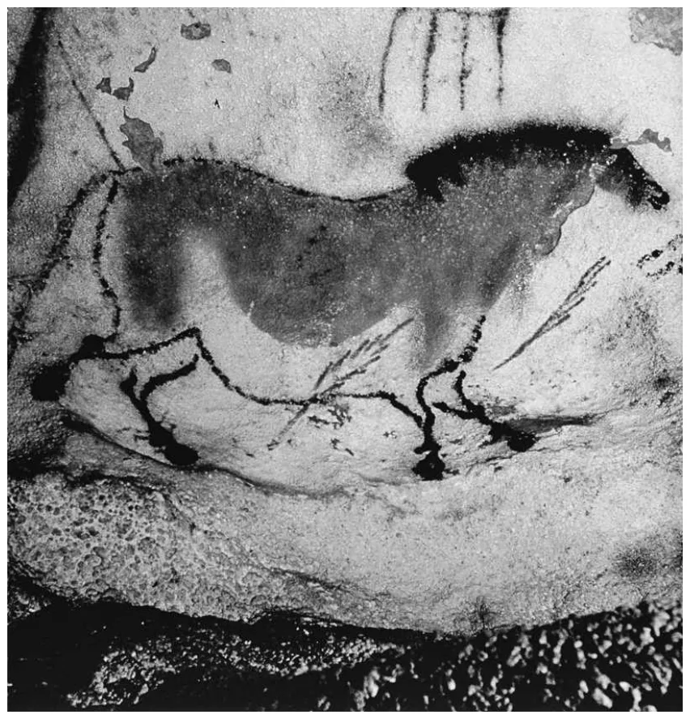
Con người hiện đại về mặt giải phẫu xuất hiện khoảng 200.000 năm trước. Nhưng tính hiện đại về hành vi đã phải chờ đợi hơn 150.000 năm nữa, như được chứng minh qua sự xuất hiện trong hồ sơ khảo cổ học của các công cụ phức hợp, đồ trang sức, lễ mai táng nghi thức, và hành động gây choáng ngợp là đặt chất màu lên vách một hang động.*3 Đây không phải là một con ngựa. Đó là một bức tranh tuyệt đẹp về một con ngựa.
Khi René Magritte đặt dòng chữ “Ceci n’est pas une pipe” (“Đây không phải là một cái tẩu”) bên dưới bức tranh vẽ một cái tẩu, trong bức họa năm 1928 của ông mang tên Sự phản bội của hình ảnh (The Treachery of Images), ông đang nhấn mạnh bản chất lung lay của hình ảnh. Nhà sử học nghệ thuật
Robert Hughes viết rằng bức tranh này là một “cái bẫy thị giác” bị kích nổ bởi tư duy, và rằng “cảm giác trượt trật giữa hình ảnh và vật thể này là một trong những nguồn cơn của nỗi bất an hiện đại.”4
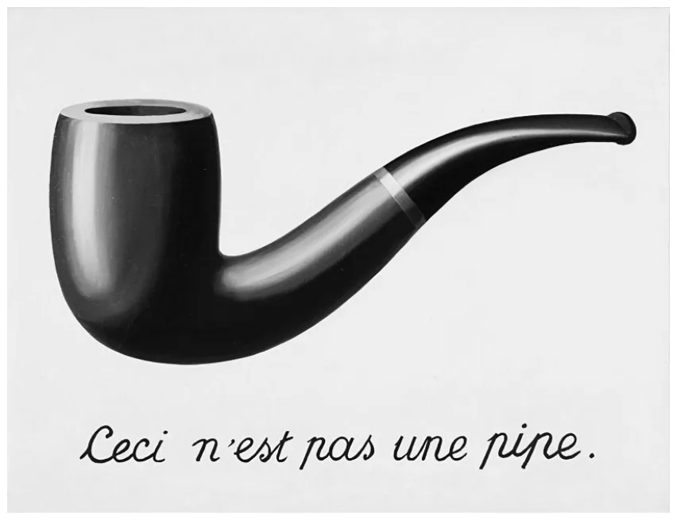
Mục tiêu của Magritte là phóng đại và đùa nghịch với khoảng cách giữa một vật thể và sự biểu diễn của nó; đây là những cơ chế đối phó chống lại nỗi bất an hiện đại đó. Nhưng đối với con người đặt chất màu lên vách hang động Lascaux hơn mười bảy nghìn năm trước, mục đích lại ngược lại: thu hẹp khoảng cách giữa hai thứ đó đến mức tối thiểu, để ở gần nhất có thể với việc sở hữu con ngựa thực sự. Như chúng ta vẫn nói, để nắm bắt hình dáng của nó. Để giành lấy sức mạnh của nó, vốn được thấm đẫm trong một biểu tượng.
Sự làm chủ rõ ràng nhất của con người đối với chủ nghĩa biểu tượng đi cùng với việc sử dụng ngôn ngữ của chúng ta. Giả sử bạn đang bị một thứ gì đó đe dọa và do đó hét lên hết cỡ. Ai đó nghe thấy không thể biết được tiếng thét rợn tóc gáy “Áaaa!” kia là để phản ứng với một sao chổi đang lao tới, một kẻ đánh bom liều chết, hay một con rồng Komodo. Nó chỉ có nghĩa là mọi thứ đang cực kỳ không ổn; thông điệp chính là ý nghĩa. Hầu hết giao tiếp của động vật đều xoay quanh tính cảm xúc ở thì hiện tại như vậy.
Ngôn ngữ biểu tượng mang lại những lợi thế tiến hóa khổng lồ. Điều này có thể thấy ngay cả ở những khởi đầu của tính biểu tượng ở các loài khác. Chẳng hạn, khi khỉ vervet phát hiện một kẻ săn mồi, chúng không kêu la chung chung. Chúng sử dụng những tiếng kêu riêng biệt, những “tiền-từ ngữ” (protowords) khác nhau, trong đó một tiếng có nghĩa là “Kẻ săn mồi dưới đất, chạy lên cây!” và một tiếng khác có nghĩa là “Kẻ săn mồi trên không, chạy xuống cây!” Việc tiến hóa năng lực nhận thức để tạo ra sự phân biệt đó cực kỳ hữu ích, vì nó thúc giục bạn chạy trốn khỏi, thay vì lao về phía, một thứ đang định ăn thịt bạn.
Ngôn ngữ tách rời một thông điệp khỏi ý nghĩa của nó, và khi tổ tiên chúng ta cải thiện được sự tách rời này, những lợi thế tích lũy dần.5 Chúng ta trở nên có khả năng biểu đạt cảm xúc quá khứ và tương lai, cũng như những thông điệp không liên quan đến cảm xúc. Chúng ta tiến hóa khả năng thành thạo tuyệt vời trong việc tách rời thông điệp khỏi thực tế, điều mà như chúng ta đã thấy, đòi hỏi vỏ não trán phải điều tiết các sắc thái của khuôn mặt, cơ thể và giọng nói: nói dối. Năng lực này tạo ra những sự phức tạp mà không một loài nào khác — từ nấm nhầy đến tinh tinh — phải đối mặt trong các Trò chơi Song đề Tù nhân của cuộc sống.
Đỉnh cao của các đặc điểm biểu tượng trong ngôn ngữ là việc chúng ta sử dụng phép ẩn dụ. Và đây không chỉ là những phép ẩn dụ hoa mỹ, khi chúng ta tuyên bố cuộc đời là một bát anh đào. Phép ẩn dụ có mặt ở khắp mọi nơi trong ngôn ngữ — chúng ta có thể theo nghĩa đen và vật lý là đang “ở trong” (in) một căn phòng, nhưng chúng ta chỉ ở bên trong một thứ gì đó theo nghĩa bóng khi chúng ta đang “trong” tâm trạng tốt, “trong” sự cấu kết với ai đó, “trong” vận may, cơn buồn bã, một nhịp điệu,* hay tình yêu. Chúng ta chỉ đứng bên dưới một thứ gì đó theo nghĩa bóng khi chúng ta “hiểu” (understand) nó.*6 Nhà ngôn ngữ học nhận thức lừng danh George Lakoff thuộc Đại học UC Berkeley đã khám phá sự phổ biến của phép ẩn dụ trong ngôn ngữ qua các cuốn sách như Những Phép Ẩn Dụ Chúng Ta Sống Cùng (Metaphors We Live By, viết cùng triết gia Mark Johnson), và Chính Trị Đạo Đức: Người Tự Do và Người Bảo Thủ Tư Duy Như Thế Nào (Moral Politics: How Liberals and Conservatives Think, nơi ông chứng minh quyền lực chính trị liên quan đến việc kiểm soát các phép ẩn dụ — bạn ủng hộ “quyền lựa chọn” (choice) hay “sự sống” (life)? bạn “cứng rắn với” tội phạm, hay “trái tim bạn rỉ máu”? bạn trung thành với “đất cha” (fatherland) hay “đất mẹ” (motherland)? và bạn đã chiếm được lá cờ “giá trị gia đình” từ đối thủ chưa?). Đối với Lakoff, ngôn ngữ luôn luôn là một phép ẩn dụ, chuyển giao thông tin từ cá nhân này sang cá nhân khác bằng cách đặt tư duy vào trong từ ngữ, cứ như thể từ ngữ là những chiếc túi mua sắm vậy.7
Biểu tượng, phép ẩn dụ, phép loại suy, truyện ngụ ngôn, phép hoán dụ, các lối nói tu từ. Chúng ta hiểu rằng một thuyền trưởng muốn nhiều hơn là chỉ những bàn tay khi ra lệnh tất cả mọi người (all hands) lên boong, rằng Hóa thân của Kafka không thực sự nói về một con gián, và rằng tháng Sáu không thực sự nổ tung khắp nơi. Nếu chúng ta thuộc một trường phái thần học nào đó, chúng ta thấy bánh mì và rượu vang đan xen với thịt và máu. Chúng ta học được rằng những âm thanh dàn nhạc tạo nên Khúc Khải Hoàn 1812 đại diện cho việc Napoleon bị đá đít khi rút lui khỏi Moscow. Và rằng “Napoleon bị đá đít” đại diện cho hàng ngàn binh sĩ chết trong giá lạnh và đói khát, xa nhà.
Chương này khám phá sinh học thần kinh của một số tiền đồn thú vị nhất của tư duy biểu tượng và ẩn dụ. Nó đưa ra một luận điểm then chốt: những năng lực này tiến hóa quá gần đây đến nỗi bộ não của chúng ta, nói nôm na là, đang ứng biến tùy cơ ứng biến ngay tại trận khi xử lý phép ẩn dụ. Kết quả là, chúng ta thực sự khá tệ trong việc phân biệt giữa nghĩa bóng và nghĩa đen, trong việc nhớ rằng “đó chỉ là một lối nói tu từ” — với những hệ quả khổng lồ cho những hành vi tốt nhất và tệ hại nhất của chúng ta.
Chúng ta bắt đầu với các ví dụ về những cách kỳ lạ mà bộ não chúng ta xử lý phép ẩn dụ, và các biểu hiện hành vi của những điều kỳ lạ đó; một số đã được giới thiệu trước đây.
CẢM NHẬN NỖI ĐAU CỦA NGƯỜI KHÁC
Hãy xem xét tình huống sau: Bạn đá nhầm vào ngón chân. Các thụ thể đau ở đó gửi thông điệp đến tủy sống và đi thẳng lên não, nơi các vùng khác nhau bắt đầu hoạt động. Một số vùng này cho bạn biết về vị trí, cường độ và tính chất của cơn đau. Ngón chân trái hay tai phải của bạn đang đau? Ngón chân của bạn bị vấp hay bị xe đầu kéo cán qua? Những chiếc “đồng hồ đo đau” khác nhau này, phần cốt lõi của việc xử lý cơn đau, được tìm thấy ở mọi loài động vật có vú.
Như chúng ta đã biết lần đầu ở chương 2, vỏ não vành trước (ACC) thuộc thùy trán cũng đóng một vai trò, đánh giá ý nghĩa của cơn đau.8 Có thể đó là tin xấu: ngón chân đau của bạn báo hiệu sự khởi đầu của một căn bệnh hiểm nghèo hiếm gặp nào đó. Hoặc có thể đó là tin tốt: bạn sắp nhận được bằng tốt nghiệp đi trên than hồng vì than nóng chỉ làm các ngón chân bạn nhói lên chút thôi. Như chúng ta đã thấy ở chương trước, ACC tham gia mạnh mẽ vào việc “phát hiện lỗi”, ghi nhận những sai lệch giữa điều được dự đoán và điều xảy ra. Và cơn đau ập đến từ hư không chắc chắn đại diện cho một sự sai lệch giữa bối cảnh không đau mà bạn dự đoán với một thực tế đau đớn.
Nhưng ACC làm được nhiều hơn là chỉ cho bạn biết ý nghĩa của một ngón chân đau. Như chúng ta đã thấy ở chương 6, đặt một đối tượng vào máy quét não, khiến họ nghĩ rằng họ đang chuyền qua lại một quả bóng Cyberball với hai người chơi khác, và rồi khiến họ cảm thấy bị loại trừ — hai người kia ngừng ném bóng cho họ. “Này, sao họ lại không muốn chơi với mình nữa?” Và ACC kích hoạt.
Nói cách khác, sự từ chối gây đau đớn. “Ừ, đúng rồi,” bạn có thể nói. “Nhưng điều đó không giống như đá nhầm vào ngón chân.” Nhưng đối với các tế bào thần kinh trong ACC, nỗi đau xã hội và nỗi đau thể xác theo nghĩa đen là giống hệt nhau. Và làm bằng chứng cho việc nỗi đau xã hội bắt nguồn từ tính xã hội, không hề có sự kích hoạt ACC nếu đối tượng tin rằng quả bóng không được ném cho họ là do lỗi kết nối máy tính của họ với hai đối tượng kia.
Và ACC có thể đưa mọi thứ đi thêm một bước nữa, như chúng ta đã thấy ở chương 14. Nhận một cú sốc điện nhẹ, và có sự kích hoạt ACC của bạn (cùng với sự kích hoạt của các vùng đo đau thông thường hơn). Bây giờ thay vào đó hãy nhìn người yêu của bạn bị sốc điện theo cách tương tự. Các vùng não đo đau im lặng, nhưng ACC kích hoạt. Đối với những tế bào thần kinh đó, cảm nhận nỗi đau của người khác không chỉ là một lối nói tu từ.
Hơn nữa, bộ não trộn lẫn nỗi đau nghĩa đen và nỗi đau tâm lý.9 Chất dẫn truyền thần kinh chất P (substance P) đóng vai trò trung tâm trong việc truyền các tín hiệu đau từ các thụ thể đau ở da, cơ và khớp lên não. Nó mang đậm dấu ấn của đồng hồ đo đau. Và đáng kinh ngạc thay, nồng độ của nó tăng cao trong chứng trầm cảm lâm sàng, và các loại thuốc ngăn chặn tác động của chất P có thể có đặc tính chống trầm cảm rõ rệt. Đá nhầm ngón chân, tổn thương tâm lý. Hơn nữa, có sự kích hoạt các phần vỏ não của mạng lưới đau khi chúng ta cảm thấy kinh hãi — dự đoán trước một cú sốc sắp giáng xuống.
Thêm vào đó, bộ não trở nên bám sát nghĩa đen khi chúng ta thực hiện mặt trái của sự thấu cảm.10 Thật đau đớn khi nhìn một đối thủ đáng ghét thành công, và chúng ta kích hoạt ACC vào lúc đó. Ngược lại, nếu anh ta thất bại, chúng ta hả hê, cảm thấy *schadenfreude* (niềm vui trên nỗi bất hạnh của người khác), nhận được khoái cảm từ nỗi đau của anh ta, và kích hoạt các con đường phần thưởng dopaminergic. Quên câu “Nỗi đau của bạn là nỗi đau của tôi” đi. Nỗi đau của bạn là lợi ích của tôi.
SỰ GHÊ TỞM VÀ SỰ THUẦN KHIẾT
Đây là địa hạt quen thuộc của chúng ta về vỏ não đảo (insular cortex). Nếu bạn cắn phải thức ăn ôi thiu, vỏ não đảo kích hoạt, giống hệt như ở mọi loài động vật có vú khác. Bạn nhăn mũi, nhếch môi trên, nheo mắt, tất cả để bảo vệ miệng, mắt và khoang mũi. Nhịp tim của bạn chậm lại. Bạn phản xạ nhổ thức ăn ra, nôn khan, thậm chí nôn mửa. Tất cả để bảo vệ bản thân khỏi độc tố và mầm bệnh truyền nhiễm.11
Là con người, chúng ta làm một số thứ phức tạp hơn: Hãy nghĩ đến thức ăn ôi thiu, và vỏ não đảo kích hoạt. Nhìn những khuôn mặt biểu lộ sự ghê tởm, hoặc những khuôn mặt kém hấp dẫn về mặt chủ quan, và điều tương tự xảy ra. Và quan trọng nhất, nếu bạn nghĩ về một hành động thực sự đáng khinh, điều tương tự cũng xảy ra. Vỏ não đảo làm trung gian cho các phản ứng nội tạng đối với những sự vi phạm chuẩn mực, và sự kích hoạt càng nhiều, sự lên án càng gay gắt. Và đây là phản ứng nội tạng thực sự, không chỉ là nội tạng theo nghĩa bóng — ví dụ, khi tôi nghe tin về vụ thảm sát Trường Tiểu học Sandy Hook, “cảm thấy buồn nôn đến thắt ruột” không phải là một lối nói tu từ đơn thuần. Khi tôi hình dung thực tế về vụ sát hại hai mươi em học sinh lớp một và sáu người lớn bảo vệ các em, tôi thấy buồn nôn thật sự. Vỏ não đảo không chỉ thúc giục dạ dày tống khứ thức ăn độc hại; nó thúc giục dạ dày tống khứ thực tế của một sự kiện ác mộng. Khoảng cách giữa thông điệp biểu tượng và ý nghĩa biến mất.12
Sự liên kết giữa ghê tởm nội tạng và ghê tởm đạo đức mang tính hai chiều. Như đã chứng minh trong một số nghiên cứu, việc chiêm nghiệm một hành động ghê tởm về mặt đạo đức để lại nhiều hơn một dư vị đắng ngắt theo nghĩa bóng trong miệng bạn — mọi người ăn ít hơn ngay sau đó, và một thức uống có vị trung tính được uống sau đó bị đánh giá là có vị tiêu cực hơn (và ngược lại, nghe về những hành động đạo đức cao đẹp khiến đồ uống có vị ngon hơn).13
Ở chương 12 và 13, chúng ta đã thấy những hệ lụy chính trị của việc bộ não chúng ta trộn lẫn sự ghê tởm nội tạng và đạo đức — những người bảo thủ xã hội có ngưỡng ghê tởm nội tạng thấp hơn so với những người cấp tiến xã hội; trường phái “sự khôn ngoan của nỗi ghê tởm” cho rằng việc cảm thấy ghê tởm nội tạng trước một điều gì đó là một chỉ báo khá tốt rằng điều đó sai trái về mặt đạo đức; việc ngầm khơi gợi cảm giác ghê tởm nội tạng (ví dụ: bằng cách ngồi gần một mùi hôi thối) khiến chúng ta trở nên bảo thủ xã hội hơn.14 Điều này không chỉ đơn thuần vì ghê tởm nội tạng là một trạng thái khó chịu — việc gây ra cảm giác buồn bã, thay vì ghê tởm, không tạo ra hiệu ứng tương tự; hơn nữa, việc đạo đức hóa về sự thuần khiết, trong khi được dự đoán bởi khuynh hướng cảm thấy ghê tởm của mọi người, lại không được dự đoán bởi khuynh hướng sợ hãi hay giận dữ.*
Cốt lõi sinh lý của sự ghê tởm vị giác là để bảo vệ bản thân bạn khỏi mầm bệnh. Cốt lõi của sự trộn lẫn ghê tởm nội tạng và đạo đức cũng là một cảm giác bị đe dọa. Một lập trường bảo thủ xã hội về, chẳng hạn, hôn nhân đồng giới không chỉ là việc nó đơn giản là sai trái theo nghĩa trừu tượng, hay thậm chí là “kinh tởm”, mà là việc nó cấu thành một mối đe dọa — đối với sự thiêng liêng của hôn nhân và các giá trị gia đình. Yếu tố đe dọa này được thể hiện trong một nghiên cứu tuyệt vời, trong đó các đối tượng đọc hoặc không đọc một bài báo về các nguy cơ sức khỏe của vi khuẩn trong không khí.15 Tất cả sau đó đọc một bài báo lịch sử sử dụng hình ảnh nước Mỹ như một cơ thể sống, với những câu như “Sau Nội chiến, Hoa Kỳ đã trải qua một giai đoạn tăng trưởng vọt.” Những người đã đọc về vi khuẩn đáng sợ trước khi nghĩ về Hoa Kỳ như một cơ thể sống sau đó có nhiều khả năng bày tỏ quan điểm tiêu cực về nhập cư hơn (mà không làm thay đổi thái độ về một vấn đề kinh tế). Tôi đoán rằng những người có lập trường bài trừ nhập cư bảo thủ điển hình hiếm khi có cảm giác rằng họ thấy ghê tởm việc người dân ở nơi khác trên thế giới muốn đến Hoa Kỳ để có cuộc sống tốt đẹp hơn. Thay vào đó là mối đe dọa từ đám dân đen, đám đông nhếch nhác, đối với thực thể mơ hồ là lối sống Mỹ.
Sự đan xen giữa ghê tởm đạo đức và nội tạng này mang tính trí óc đến mức nào? Vỏ não đảo có chỉ tham gia vào sự ghê tởm đạo đức nếu nó mang bản chất đặc biệt nội tạng — máu me ruột gan, ăn phân, các bộ phận cơ thể? Paul Bloom gợi ý rằng đúng là như vậy. Ngược lại, Jonathan Haidt cảm thấy rằng ngay cả những hình thức ghê tởm đạo đức mang tính nhận thức nhất (“Anh ta là đại kiện tướng cờ vua mà lại khoe mẽ bằng cách đánh bại cô bé tám tuổi đó chỉ trong ba nước đi và làm cô bé khóc nức nở — thật kinh tởm”) cũng đan xen chặt chẽ.16 Ủng hộ điều đó, một thứ phi nội tạng như nhận được một lời đề nghị bèo bọt trong một trò chơi kinh tế cũng kích hoạt vỏ não đảo (tức là lời đề nghị bèo bọt từ một con người khác, chứ không phải từ máy tính); vỏ não đảo kích hoạt càng nhiều, xác suất lời đề nghị bị từ chối càng cao. Giữa cuộc tranh luận này, rõ ràng là sự đan xen giữa ghê tởm nội tạng và đạo đức, ít nhất là, lớn nhất khi ghê tởm đạo đức chạm vào ghê tởm cốt lõi. Để nhắc lại một câu trích dẫn hay từ Paul Rozin, đã giới thiệu ở chương 11: “Sự ghê tởm đóng vai trò như một dấu hiệu đánh dấu sắc tộc hoặc ngoại nhóm.” Đầu tiên bạn thấy ghê tởm mùi của Người Khác, một cánh cổng dẫn đến việc sau đó thấy ghê tởm cách Người Khác suy nghĩ.
Dĩ nhiên, chừng nào mà theo nghĩa bóng, bẩn thỉu và bừa bộn = xấu, thì theo nghĩa bóng, sạch sẽ và ngăn nắp = tốt.*17 Chỉ cần xem xét việc sử dụng từ “gọn ghẽ/tuyệt” (neat) ở đoạn văn trước. Tương tự, trong tiếng Swahili, từ *safi*, có nghĩa là “sạch sẽ” (từ *kusafisha*, “làm sạch”), được sử dụng theo cùng nghĩa bóng tiếng lóng của từ “neat” trong tiếng Anh. Một lần ở Kenya, tôi đi nhờ xe đến Nairobi từ một nơi khỉ ho cò gáy nào đó và bắt chuyện với một thiếu niên địa phương đang tò mò về tôi. “Ông đi đâu thế?” cậu hỏi. Nairobi. “Nairobi ni [thì] safi,” cậu nói đầy khao khát về đô thị xa xôi. Làm sao bạn có thể giữ chân họ ở lại trang trại một khi họ đã nhìn thấy vẻ “sạch sẽ/tuyệt vời” của Nairobi?
Sự sạch sẽ và ngăn nắp theo nghĩa đen có thể giải phóng chúng ta khỏi nỗi khổ tâm nhận thức và cảm xúc trừu tượng — chỉ cần nghĩ xem, trong những khoảnh khắc cuộc sống dường như đang xoay vòng mất kiểm soát, việc sắp xếp lại quần áo, dọn dẹp phòng khách, đi rửa xe có thể làm dịu lòng đến thế nào.18 Và hãy nghĩ xem nhu cầu bị dịch chuyển nhằm áp đặt sự sạch sẽ và ngăn nắp đã điều khiển và hủy hoại cuộc sống của những người mắc chứng rối loạn lo âu điển hình, rối loạn ám ảnh cưỡng chế (OCD), như thế nào. Khả năng làm thay đổi nhận thức của sự sạch sẽ nghĩa đen đã được chứng minh trong một nghiên cứu. Các đối tượng xem xét một loạt đĩa CD nhạc, chọn ra mười đĩa họ thích, và xếp hạng chúng theo thứ tự yêu thích; sau đó họ được tặng miễn phí một bản sao của một trong các lựa chọn tầm trung của họ (số năm hoặc số sáu). Các đối tượng sau đó bị làm xao nhãng bằng một nhiệm vụ khác rồi được yêu cầu xếp hạng lại mười đĩa CD. Và họ thể hiện một hiện tượng tâm lý phổ biến, đó là giờ đây đánh giá quá cao chiếc đĩa CD mình vừa được tặng, xếp nó cao hơn trong danh sách so với trước đó. Trừ phi họ vừa rửa tay (lấy cớ là để thử một nhãn hiệu xà phòng mới), trong trường hợp đó không hề có sự xếp hạng lại nào xảy ra. Bàn tay sạch, trang giấy trắng.
Nhưng bắt đầu từ rất lâu trước phong trào “vệ sinh xã hội” vào đầu thế kỷ hai mươi, việc trở nên gọn gàng, thuần khiết và hợp vệ sinh theo nghĩa bóng cũng có thể là một trạng thái đạo đức — sự sạch sẽ không chỉ là một cách tốt để tránh tiêu chảy không kiểm soát, mất nước và mất cân bằng điện giải nghiêm trọng, mà còn là cách lý tưởng để lấy lòng một vị thần.
Một nghiên cứu được xây dựng xoay quanh hiện tượng sự ghê tởm nội tạng khiến mọi người khắt khe hơn trong các phán xét đạo đức của họ. Các tác giả đầu tiên tái lập hiệu ứng này, cho thấy việc xem một đoạn phim ngắn về một thứ gì đó ghê tởm về mặt thể xác khiến các đối tượng phán xét đạo đức khắt khe hơn — trừ phi họ đã rửa tay sau khi xem phim. Một nghiên cứu khác gợi ý rằng việc rửa tay làm giảm sự hưng phấn cảm xúc, vì nó làm giảm đường kính đồng tử của các đối tượng.19
Chúng ta đan xen sự thuần khiết thể xác và đạo đức khi nói đến hành động của chính mình. Trong một trong những nghiên cứu tâm lý học yêu thích nhất mọi thời đại của tôi, Chen-Bo Zhong thuộc Đại học Toronto và Katie Liljenquist thuộc Đại học Northwestern đã chứng minh rằng bộ não gặp khó khăn trong việc phân biệt giữa việc là một kẻ vô lại bẩn thỉu và việc cần đi tắm. Các đối tượng được yêu cầu kể lại một hành động có đạo đức hoặc vô đạo đức trong quá khứ của họ. Sau đó, như một món quà cảm ơn, các nhà nghiên cứu đề nghị các tình nguyện viên chọn giữa quà tặng là một cây bút chì và một gói khăn giấy sát khuẩn. Và những người vừa đắm mình trong những thất bại đạo đức của bản thân có nhiều khả năng chọn gói khăn giấy hơn. Một nghiên cứu khác, cho thấy hiệu ứng tương tự khi mọi người được yêu cầu nói dối, đã chứng minh rằng lời nói dối càng được trình bày là gây hậu quả bất lợi bao nhiêu, các đối tượng càng rửa tay nhiều bấy nhiêu. Phu nhân Macbeth và Pontius Pilate không phải là những người duy nhất ít nhất đã cố gắng gột rửa tội lỗi bằng cách rửa tay, và hiện tượng nhận thức hiện thân (embodied cognition) này được gọi là “hiệu ứng Macbeth.”20
Hiệu ứng này cụ thể đến mức kinh ngạc. Trong một nghiên cứu khác, các đối tượng được yêu cầu nói dối về một điều gì đó — bằng miệng (tức là nói ra lời dối trá) hoặc bằng tay (tức là viết ra lời dối trá).21 Sau đó, đáng kinh ngạc thay, những kẻ nói dối có nhiều khả năng chọn các sản phẩm làm sạch tương ứng hơn so với nhóm đối chứng truyền đạt điều gì đó trung thực: những kẻ mở miệng nói dối có nhiều khả năng chọn mẫu nước súc miệng; những kẻ viết lời dối trá chọn xà phòng rửa tay. Hơn nữa, như được chứng minh bằng chụp ảnh thần kinh, khi cân nhắc giữa nước súc miệng và xà phòng, những người vừa nói dối bằng miệng kích hoạt các phần của vỏ não cảm giác-vận động liên quan đến miệng (tức là các đối tượng nhận thức rõ hơn về miệng của họ vào lúc đó); những người viết ra lời dối trá kích hoạt các vùng vỏ não tương ứng với bàn tay của họ. Nhận thức hiện thân có thể đặc hiệu cho từng bộ phận cơ thể.
Một nghiên cứu hấp dẫn khác cho thấy ảnh hưởng của văn hóa trong hiệu ứng Macbeth. Các nghiên cứu vừa trích dẫn được thực hiện với các đối tượng châu Âu hoặc Mỹ. Khi điều tương tự được thực hiện với các đối tượng Đông Á, thôi thúc sau đó là rửa mặt, thay vì rửa tay. Nếu bạn định giữ thể diện (save face), đó phải là một khuôn mặt sạch sẽ.22
Cuối cùng, quan trọng nhất, sự trộn lẫn giữa vệ sinh đạo đức và thể xác này ảnh hưởng đến cách chúng ta thực sự hành xử. Nghiên cứu ban đầu về việc chiêm nghiệm những sai lầm đạo đức của bản thân và mong muốn rửa tay sau đó bao gồm một thí nghiệm thứ hai. Như trước, các đối tượng được bảo nhớ lại một hành động vô đạo đức của họ. Sau đó, các đối tượng có hoặc không có cơ hội rửa tay. Những người có thể rửa tay ít có khả năng đáp lại một lời yêu cầu giúp đỡ sau đó (được dàn dựng trong thí nghiệm) hơn. Trong một nghiên cứu khác, chỉ đơn thuần nhìn người khác rửa tay trong tình huống này (so với nhìn họ gõ phím) cũng làm giảm tính hay giúp đỡ sau đó (mặc dù ở mức độ ít hơn so với việc chính đối tượng tự rửa).23
Nhiều khoảnh khắc vị xã hội, vị tha và làm người Samaritan nhân hậu của chúng ta là những hành động bồi hoàn, những nỗ lực nhằm cân bằng lại những khoảnh khắc phản xã hội của mình. Điều mà các nghiên cứu này cho thấy là nếu đôi bàn tay vấy bẩn theo nghĩa bóng đó đã được rửa sạch theo nghĩa đen trong khoảng thời gian chờ đợi, chúng sẽ ít có khả năng vươn ra để cố gắng cân bằng lại cán cân hơn.
CẢM GIÁC THỰC TẾ ĐỐI ĐẦU CẢM GIÁC ẨN DỤ
Tiếp theo là những cách thức mà chúng ta nhầm lẫn cảm giác nghĩa đen với cảm giác nghĩa bóng. Một nghiên cứu xuất sắc của John Bargh thuộc Đại học Yale liên quan đến các cảm giác xúc giác (haptic — tôi đã phải tra từ điển từ này: liên quan đến khứu giác? không, xúc giác). Các tình nguyện viên đánh giá hồ sơ xin việc của những ứng viên giả định; điều cốt yếu là hồ sơ được kẹp vào một tấm bảng kẹp tài liệu có một trong hai trọng lượng. Khi các đối tượng cầm tấm bảng kẹp nặng hơn, họ có xu hướng đánh giá ứng viên là “nghiêm túc/đáng tin cậy” (serious) hơn (trong khi trọng lượng bảng kẹp không ảnh hưởng đến các nét tính cách được cảm nhận khác). Lần tới khi bạn nộp đơn xin việc, hãy hy vọng hồ sơ của bạn sẽ được kẹp vào một tấm bảng kẹp nặng. Bằng cách nào khác người đánh giá mới nhận ra được rằng bạn có thể đánh giá đúng “sức nặng” của tình huống và giải quyết được những vấn đề “nặng ký”, chứ không phải là một kẻ “nhẹ cân”?24
Trong nghiên cứu tiếp theo, các đối tượng lắp ráp một trò chơi xếp hình với các mảnh ghép trơn nhẵn hoặc thô ráp như giấy nhám, sau đó quan sát một tương tác xã hội mơ hồ. Chạm vào các mảnh ghép thô ráp khiến các tương tác bị đánh giá là kém nhịp nhàng, trơn tru hoặc thành công hơn (tuy nhiên, không rõ liệu những đối tượng đó tối hôm ấy về nhà có nhiều khả năng dùng lời lẽ thô ráp để mô tả một ngày gập ghềnh của mình hay không).
Tiếp theo, các đối tượng ngồi trên một chiếc ghế cứng hoặc một chiếc ghế mềm (trích lời các tác giả: “Chúng tôi mồi cho các đối tượng bằng chính phần mông quần của họ”). Ngồi trên ghế cứng khiến họ có nhiều khả năng nhìn nhận các cá nhân là kiên định và vô cảm, và kém linh hoạt hơn trong trò chơi kinh tế. Điều này thật đáng kinh ngạc — cảm giác xúc giác ở mông bạn ảnh hưởng đến việc bạn có nghĩ ai đó là kẻ “cứng đầu/khó tính” (hard-ass) hay không. Hoặc “lòng dạ sắt đá” (hardhearted) thay vì một người “mềm lòng” (softie).
Sự trộn lẫn tương tự giữa thực tế và ẩn dụ xảy ra với cảm giác nhiệt độ. Trong một nghiên cứu khác từ nhóm của Bargh, nhà nghiên cứu, tay đang bận cầm thứ gì đó, sẽ nhờ một đối tượng cầm giúp một cốc cà phê trong giây lát. Một nửa số đối tượng cầm cà phê ấm, nửa kia cầm cà phê đá. Sau đó các đối tượng đọc về một cá nhân nào đó và trả lời các câu hỏi về họ. Những đối tượng cầm cốc cà phê ấm đánh giá cá nhân đó có tính cách “ấm áp” hơn (mà không làm thay đổi đánh giá về các đặc điểm khác). Trong phần tiếp theo của nghiên cứu, nhiệt độ của vật được cầm làm thay đổi sự hào phóng và mức độ tin cậy của đối tượng — tay lạnh, tim lạnh. Và một vỏ não đảo được kích hoạt nhiều hơn, như đã chứng minh trong một nghiên cứu tiếp theo.25
Bộ não của chúng ta cũng nhầm lẫn thông tin nội cảm nghĩa bóng và nghĩa đen. Hãy nhớ lại nghiên cứu đáng kinh ngạc cho thấy trong một tình huống thực tế, một yếu tố dự báo chính cho việc một tù nhân có được ân xá hay không là vị thẩm phán vừa ăn cách đó bao lâu. Bụng đói, phán xét khắt khe hơn. Các công trình khác đã chỉ ra rằng khi con người đói, họ trở nên ít hào phóng hơn với tiền bạc và thể hiện sự chiết khấu tương lai nhiều hơn (tức là có nhiều khả năng muốn phần thưởng X ngay bây giờ, thay vì chờ đợi phần thưởng 2X). “Đói khát” danh vọng và tài sản chỉ là những phép ẩn dụ — vậy mà bộ não chúng ta lại kéo các mạch liên quan đến cơn đói thực sự vào cuộc. Hơn nữa, chúng ta sử dụng các cấp độ nhận thức trừu tượng hơn khi nghĩ về các sự kiện xa xôi. Hãy yêu cầu mọi người lập danh sách những món đồ họ sẽ mang theo trong một chuyến cắm trại diễn ra vào ngày mai hoặc một tháng nữa; nếu là ngày mai, danh sách chứa nhiều tiểu mục cụ thể hơn. Trong một nghiên cứu khác, các đối tượng được cho xem biểu đồ lượng giấy trung bình mà một văn phòng sử dụng theo thời gian. Có một sự gia tăng ổn định cho đến giai đoạn gần đây nhất:26
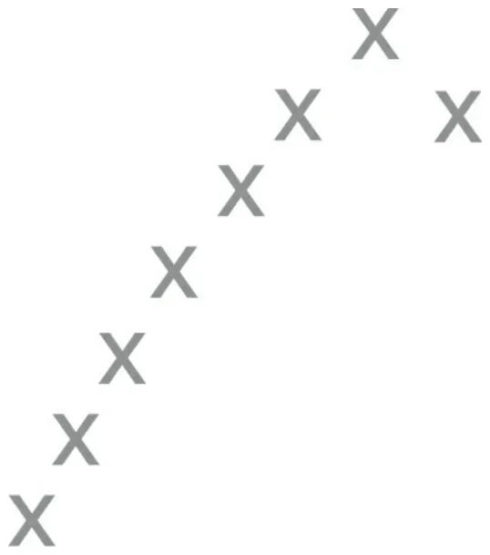
Sau đó các đối tượng được yêu cầu dự đoán điều gì sẽ xảy ra trong giai đoạn tiếp theo. Một nửa số đối tượng được thông báo rằng văn phòng đó ở gần. Kết quả: những đối tượng đó thực hiện phân tích vi mô, ưu tiên chú ý đến chữ X cuối cùng đang có xu hướng đi xuống đó, nhận thức nó là có ý nghĩa, là sự khởi đầu của một xu hướng:
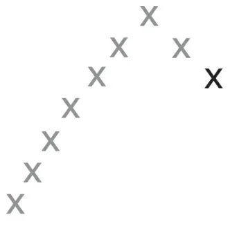
Ở cuối hành lang
Nhưng các đối tượng được thông báo rằng văn phòng nằm ở nửa bên kia địa cầu lại có xu hướng nhìn nhận các điểm dữ liệu ở cấp độ phân tích vĩ mô, chú ý đến xu hướng tổng thể và xem sự sụt giảm đó chỉ là một sai lệch nhất thời:
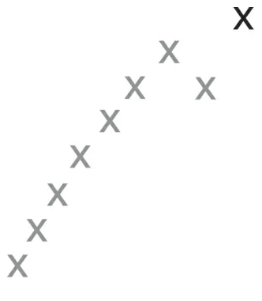
Ở rất xa
Chuyện gì đang xảy ra trong những nghiên cứu này vậy? Những phép ẩn dụ về trọng lượng, mật độ, kết cấu, nhiệt độ, cảm giác nội cảm, thời gian và khoảng cách chỉ là những lối nói tu từ. Thế nhưng bộ não lại xử lý chúng một cách lẫn lộn bằng một số mạch tương tự vốn xử lý các đặc tính vật lý của vật thể.
BĂNG KEO ĐA NĂNG
Bản chất của một biểu tượng là khả năng đóng vai trò thay thế cho vật thật và, đáng kinh ngạc thay, chúng ta không phải là loài duy nhất nơi một cái biểu đạt (signifier), độc lập với cái được biểu đạt (signified), có thể giành được sức mạnh của riêng nó. Như đã thảo luận ở chương 2, nếu bạn điều kiện hóa một con chuột để gắn kết tiếng chuông với một phần thưởng, khoảng một nửa số chuột cuối cùng sẽ đi đến chỗ thấy chính tiếng chuông đó là phần thưởng.
Vậy là chúng ta vừa xem xét đồ uống lạnh và tính cách lạnh lùng; nói dối trơ trẽn qua kẽ răng rồi thèm nước súc miệng; trái tim chúng ta đau nhói vì nỗi đau của người khác. Các biểu tượng ẩn dụ của chúng ta có thể giành được một sức mạnh của riêng chúng. Nhưng chừng nào mà phép ẩn dụ là đỉnh cao trong năng lực tư duy biểu tượng của chúng ta, thì thật kỳ quặc hết sức khi bộ não hàng đầu của chúng ta không thể tách bạch rạch ròi mọi thứ và nhớ rằng những phép ẩn dụ đó không phải là nghĩa đen. Tại sao?
Câu trả lời gợi nhớ lại một khái niệm lần đầu được giới thiệu ở chương 10 — tiến hóa là một thợ vá víu, một kẻ ứng biến. Vì thế loài người đang tiến hóa năng lực cho những sự trừu tượng như đạo đức và những sự vi phạm sâu sắc đạo đức, cho việc trải nghiệm sự thấu cảm với cường độ chưa từng có, và cho việc đánh giá có ý thức bản chất gắn kết trong khí chất của ai đó — sự ghê tởm đạo đức, cảm nhận nỗi đau của người khác, tính cách ấm áp và lạnh lùng. Xét khoảng thời gian ngắn ngủi mà con người hiện đại về mặt hành vi đã tồn tại, điều này đã xảy ra trong chớp mắt. Đã không có đủ thời gian để tiến hóa những vùng não và mạch não hoàn toàn mới để xử lý những điều mới mẻ này. Thay vào đó, việc vá víu đã diễn ra — “Hừm, cảm xúc tiêu cực cực đoan bị khơi gợi bởi sự vi phạm các chuẩn mực hành vi chung. Để xem nào . . . Có ai có kinh nghiệm liên quan không nhỉ? Biết rồi, vỏ não đảo! Nó chuyên xử lý các kích thích cảm giác tiêu cực cực đoan — kiểu như, đó là tất cả những gì nó làm — vậy nên hãy mở rộng danh mục đầu tư của nó để bao gồm cả vụ ghê tởm đạo đức này. Thế là ổn đấy. Đưa tôi cái đón gót giày và ít băng keo đa năng xem nào.”
Chìa khóa cho việc tiến hóa đóng vai trò kẻ ứng biến hơn là nhà phát minh chính là khái niệm exaptation (tái thích nghi/tận dụng tiến hóa) ở chương 10 — một đặc điểm nào đó tiến hóa cho một mục đích và được trưng dụng khi nó hóa ra lại hữu ích cho một thứ khác. Và chẳng bao lâu sau lông vũ hỗ trợ việc bay, bên cạnh việc điều hòa thân nhiệt, và vỏ não đảo giúp chúng ta lên thiên đàng, bên cạnh việc tống khứ độc tố khỏi ruột. Trường hợp sau là một ví dụ của cái được gọi là “tái sử dụng thần kinh” (neural reuse).27
Nói vậy không có nghĩa đó là một quá trình dễ dàng, rằng một ngày nọ một cách kỳ diệu các tế bào thần kinh giúp bạn nôn mửa bỗng dưng tham gia vào việc điều hành hội đồng đạo đức sinh học của tổng thống. Điều cực kỳ thú vị đối với tôi là những tế bào thần kinh độc đáo nhất trong não chúng ta, các tế bào thần kinh von Economo mới tiến hóa gần đây và phát triển chậm, chủ yếu trú ngụ ở vỏ não vành trước và vỏ não đảo. Và căn bệnh thoái hóa thần kinh sa sút trí tuệ trán-thái dương (frontotemporal dementia), vốn được định sẵn để cuối cùng phá hủy toàn bộ vỏ não mới hào nhoáng, lại tiêu diệt các tế bào thần kinh von Economo đầu tiên — có một thứ gì đó đặc biệt cao cấp (và do đó đắt đỏ và dễ tổn thương) ở những tế bào đó. Việc vá víu và ứng biến quả thực đầy cảm hứng.
Điều thú vị nhất là chúng ta thấy những khởi đầu của trò “Biết rồi, hãy thuyết phục ACC và vỏ não đảo tình nguyện đảm nhận những công việc mới này đi” ở các loài khác. Như chúng ta đã thấy ở chương 14, sự lây lan cảm xúc và tiền-thấu cảm mà một loài gặm nhấm có thể cảm nhận cho một con khác đang đau tập trung ở vỏ não vành trước. Và các tế bào thần kinh von Economo hoàn chỉnh cũng được tìm thấy ở chính những vùng não đó ở các loài vượn lớn khác, voi và bộ cá voi — câu lạc bộ Mensa của tiến hóa — và tồn tại ở dạng sơ khai ở khỉ. Không rõ liệu, chẳng hạn, một con cá voi xanh có muốn rửa vây của nó sau một vụ vi phạm chuẩn mực xã hội hay không, nhưng một số ít loài khác dường như đã bước những bước đầu tiên vào vùng lãnh thổ mới lạ này cùng với chúng ta.
MẶT TỐI CỦA ẨN DỤ
Sự nhầm lẫn của bộ não chúng ta giữa nghĩa bóng và nghĩa đen thực sự quan trọng theo đúng nghĩa đen. Quay lại chương 10 và sự nhấn mạnh của tiến hóa vào chọn lọc họ hàng (kin selection). Chúng ta đã thấy hàng loạt cơ chế được các loài khác nhau sử dụng để nhận diện họ hàng và mức độ quan hệ huyết thống — ví dụ: dấu hiệu pheromone được định hình về mặt di truyền và sự in vết (imprinting) lên con chim mái có tiếng hót mà bạn nghe rất nhiều khi bạn vẫn còn nằm trong trứng. Và chúng ta đã thấy rằng ở các loài linh trưởng khác cũng có những thành phần nhận thức (hãy nhớ lại mức độ chăm sóc con của khỉ đầu chó đực được dự đoán bởi xác suất nó là cha ruột). Khi đến với loài người, quá trình này chủ yếu mang tính nhận thức — chúng ta có thể suy nghĩ để tự quyết định xem ai là họ hàng, ai là Chúng Ta. Và do đó, như chúng ta đã thấy, chúng ta có thể bị thao túng để nghĩ rằng một số cá nhân có quan hệ họ hàng với chúng ta nhiều hơn, và những người khác ít hơn, so với thực tế — giả họ hàng (pseudokinship) và giả phân loài (pseudospeciation). Có vô số cách để khiến ai đó nghĩ rằng một Người Khác khác biệt đến mức họ hầu như không được tính là con người. Nhưng như những kẻ tuyên truyền và các nhà tư tưởng từ lâu đã biết, nếu bạn muốn khiến ai đó cảm thấy rằng một Người Khác hầu như không được tính là con người, chỉ có một cách để làm điều đó — kích hoạt vỏ não đảo. Và cách chắc chắn nhất để làm điều đó là bằng phép ẩn dụ.
Vào năm 1994, nhiều người phương Tây lần đầu tiên biết đến sự tồn tại của quốc gia Rwanda. Đất nước Trung Phi miền núi này nhỏ bé, với một trong những mật độ dân số cao nhất thế giới. Ngày xửa ngày xưa, nơi đây từng đầy rẫy những người săn bắt-hái lượm, những người mà như thường lệ, đã bị thay thế trong thiên niên kỷ qua bởi những người làm nông và những người chăn nuôi du mục, vốn lần lượt hình thành nên các bộ lạc Hutu và Tutsi. Vẫn còn tranh cãi về việc liệu họ có đến vào khoảng cùng một thế kỷ hay không và liệu họ có thực sự là các nhóm sắc tộc riêng biệt hay không, nhưng người Hutu và Tutsi đã phân chia Chúng Ta/Họ một cách quyết liệt. Nhóm thiểu số Tutsi theo truyền thống thống trị người Hutu, phản ánh động lực quyền lực phổ biến giữa người chăn gia súc/nông dân ở châu Phi; thực dân Đức và Bỉ, theo chiêu bài chia để trị kinh điển, đã khai thác và thổi bùng thêm những thù hận bộ lạc.
Cùng với nền độc lập năm 1962 là sự đảo ngược thế cờ và sự thống trị của người Hutu trong chính phủ. Sự phân biệt đối xử và bạo lực chống lại người Tutsi đã đẩy nhiều người ra khỏi đất nước; trong những năm tiếp theo, nhiều cộng đồng người Tutsi tị nạn ở các nước láng giềng đã sản sinh ra các nhóm phiến quân tìm cách xâm nhập Rwanda và thiết lập các vùng an toàn ở đó cho người Tutsi. Đúng như dự đoán, điều này làm gia tăng chủ nghĩa hiếu chiến chống Tutsi trong người Hutu và dẫn đến thêm nhiều sự phân biệt đối xử và các cuộc thảm sát. Một trong những trớ trêu của những gì sắp xảy ra, phản ánh sự không chắc chắn về việc liệu người Hutu và Tutsi trong lịch sử có thực sự là hai dân tộc riêng biệt hay không, là không phải lúc nào cũng có thể phân biệt được hai nhóm — chứng minh thư bắt buộc phải ghi rõ sắc tộc.
Đến năm 1994, tổng thống Rwanda, nhà độc tài Juvénal Habyarimana, một quân nhân người Hutu đã nắm quyền từ năm 1973, chịu đủ áp lực từ các nhóm phiến quân Tutsi đến mức ông đã ký một hiệp định hòa bình chia sẻ quyền lực với phe nổi dậy. Điều này bị khối cực đoan “Quyền lực Hutu” (Hutu Power) đang lớn mạnh coi là một sự phản bội. Vào ngày 6 tháng 4 năm 1994, máy bay của Habyarimana bị bắn hạ bởi một tên lửa khi đang tiếp cận thủ đô Kigali, giết chết tất cả mọi người trên khoang. Vẫn chưa rõ liệu vụ ám sát do phiến quân Tutsi hay các phần tử Quyền lực Hutu trong quân đội thực hiện nhằm vừa loại bỏ Habyarimana vừa đổ lỗi cho người Tutsi. Dù thế nào đi nữa, chỉ trong vòng một ngày, các phần tử hiếu chiến Hutu đã giết chết gần như toàn bộ những người Hutu ôn hòa trong chính phủ, nắm quyền, chính thức đổ lỗi vụ ám sát cho người Tutsi, và kêu gọi tất cả người Hutu trả thù. Và hầu hết người Hutu đã tuân theo. Thế là bắt đầu cái mà ngày nay được gọi là nạn diệt chủng Rwanda.*
Cuộc tàn sát kéo dài xấp xỉ một trăm ngày (cho đến khi cuối cùng bị ngăn chặn bởi việc phiến quân Tutsi giành quyền kiểm soát). Trong khoảng thời gian đó, không chỉ có một nỗ lực kiểu Giải pháp Cuối cùng nhằm giết chết mọi người Tutsi ở Rwanda mà còn giết cả những người Hutu kết hôn với người Tutsi, những người cố gắng bảo vệ người Tutsi, hoặc những người từ chối tham gia giết chóc. Khi mọi chuyện kết thúc, xấp xỉ 75 phần trăm người Tutsi — từ 800.000 đến 1.000.000 người — và khoảng 100.000 người Hutu đã bị sát hại. Khoảng một trên bảy người Rwanda. Điều này tương đương với tốc độ giết chóc gấp năm lần cuộc diệt chủng Holocaust của Đức Quốc xã. Nó hầu như bị phương Tây phớt lờ.28
Tốc độ gấp năm lần. Đối với những người trong chúng ta được giáo dục về các hành vi tàn bạo của thế giới phương Tây hiện đại, cần có một sự chuyển dịch để hình dung. Nạn diệt chủng Rwanda không liên quan đến xe tăng, máy bay thả bom hay pháo kích vào dân thường. Không có trại tập trung, không có tàu hỏa chở tù nhân, không có khí độc Zyklon B. Không có sự tầm thường quan liêu của cái ác. Thậm chí hầu như không có nhiều súng ống. Thay vào đó
người Hutu — từ nông dân đến giới trí thức thành thị — đã đánh đập đến chết những người hàng xóm, bạn bè, vợ/chồng, đối tác làm ăn, bệnh nhân, thầy cô giáo, học sinh người Tutsi của mình. Người Tutsi bị đánh bằng gậy cho đến chết, bị giết bằng dao rựa sau khi bị cưỡng hiếp tập thể và cắt xẻo bộ phận sinh dục, bị nhốt trong các thánh đường rồi bị thiêu rụi thành tro. Trung bình khoảng mười nghìn người mỗi ngày. Như một hành động tàn bạo đơn lẻ có lẽ gây sốc nhất của nạn diệt chủng, tại thị trấn Nyange, vị linh mục Công giáo địa phương, một người Hutu tên là Athanase Seromba, đã cho từ 1.500 đến 2.000 người Tutsi, nhiều người trong số đó là giáo dân của ông, vào ẩn náu, rồi sau đó dẫn dắt lực lượng dân quân Hutu cuối cùng đã giết chết mọi người bên trong nhà thờ của mình. Những dòng sông nhuộm đỏ máu, không chỉ theo nghĩa bóng.*
Làm sao điều này có thể xảy ra? Có nhiều thành phần trong câu trả lời. Dân chúng có truyền thống lâu đời về sự phục tùng vô điều kiện đối với chính quyền, một nét tính cách hữu ích để phát triển trong một quốc gia độc tài tàn bạo. Các phần tử hiếu chiến Hutu trước đó nhiều tháng đã phân phát dao rựa cho người dân Hutu. Đài phát thanh do chính phủ kiểm soát (phương tiện truyền thông đại chúng chính ở đất nước có tỷ lệ biết chữ thấp này) tuyên bố rằng ý định của quân nổi dậy Tutsi đang xâm lược là giết sạch mọi người Hutu, và những người hàng xóm Tutsi của họ là một đạo quân thứ năm (fifth column) đang chuẩn bị gia nhập cùng. Và còn một yếu tố đầy ý nghĩa khác. Công tác tuyên truyền chống Tutsi phi nhân hóa không ngừng nghỉ, với sự giả phân loài khét tiếng khi người Tutsi chỉ được gọi là “lũ gián.” Hãy giẫm nát lũ gián. Lũ gián đang âm mưu giết con cái các bạn. Lũ gián [những phụ nữ Tutsi bị cho là xảo quyệt và quyến rũ] sẽ cướp chồng các bạn. Lũ gián [đàn ông Tutsi] sẽ cưỡng hiếp vợ và con gái các bạn. Giẫm nát lũ gián, tự cứu lấy mình, giết sạch lũ gián. Và với vỏ não đảo bùng cháy, một tay cầm dao rựa và tay kia cầm đài bán dẫn, hầu hết người Hutu đã làm theo.*
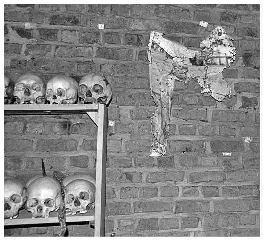
Hậu quả
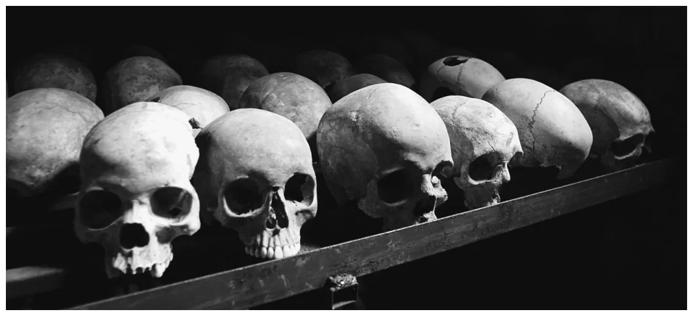
Phi nhân hóa, giả phân loài. Công cụ của những kẻ tuyên truyền thù hận. Nhóm Họ như những thứ kinh tởm. Nhóm Họ như loài gặm nhấm, như một khối u ung thư, như một loài chuyển tiếp, nhóm Họ như những kẻ bốc mùi hôi thối nồng nặc, như đang sống trong những tổ ong hỗn loạn mà không con người bình thường nào thèm sống. Nhóm Họ như phân. Hãy khiến vỏ não đảo của những người theo bạn nhầm lẫn giữa nghĩa đen và nghĩa bóng, và bạn đã đi được 99 phần trăm chặng đường rồi đấy.
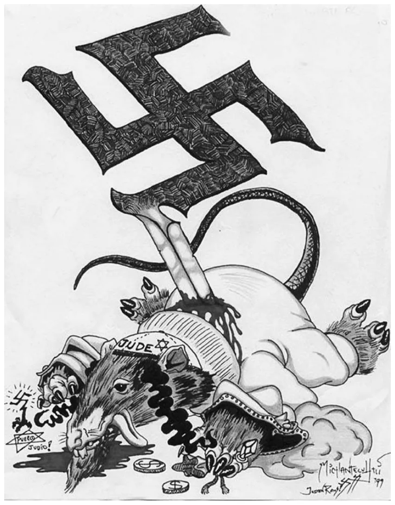
MỘT TIA SÁNG
Một mục tiêu có thể là dùng mặt tốt của con dao hai lưỡi để cắt rời những tia hy vọng lóe lên sau đám mây và cất dành cho những ngày mưa gió. Hoặc một thứ gì đó ẩn dụ tương tự như vậy. Công cụ của kẻ tuyên truyền là khai thác hiệu quả các biểu tượng của sự ghê tởm để phục vụ cho lòng hận thù. Nhưng cái kiểu hiểu ẩn dụ theo nghĩa đen kỳ quặc của bộ não chúng ta cũng có thể cung cấp cho người kiến tạo hòa bình một công cụ cực kỳ hiệu quả.
Trong một bài báo năm 2007 đầy xúc động và quan trọng trên tạp chí Science, nhà nhân chủng học người Mỹ gốc Pháp Scott Atran, cùng với Robert Axelrod (nổi tiếng với Trò chơi Song đề Tù nhân ở chương 10) và Richard Davis, một chuyên gia về xung đột tại Đại học Bang Arizona, đã xem xét sức mạnh của cái mà họ gọi là “các giá trị thiêng liêng” (sacred values) trong việc giải quyết xung đột.29 Đây là những thứ đi thẳng ra từ thế giới của Greene gồm hai nền văn hóa chăn cừu khác nhau tranh giành một bãi cỏ chung, mỗi bên có một tầm nhìn đạo đức khác nhau về điều gì là đúng đắn, mỗi bên tập trung đầy nhiệt huyết vào những “quyền” mà ý nghĩa và sức mạnh của chúng là điều bên kia không thể hiểu nổi. Các giá trị thiêng liêng được bảo vệ vượt xa tỷ lệ tầm quan trọng vật chất hay công cụ hoặc xác suất thành công của chúng, bởi vì đối với bất kỳ nhóm nào, những giá trị như vậy định nghĩa “chúng ta là ai”. Và do đó, những nỗ lực đạt được thỏa hiệp về các vấn đề như vậy bằng cách sử dụng các ưu đãi vật chất không những khó có khả năng mang lại hiệu quả, mà còn có thể phản tác dụng một cách đầy xúc phạm. Bạn không thể mua chuộc chúng tôi để chúng tôi làm ô danh những gì chúng tôi tôn kính là thiêng liêng.
Atran và các đồng nghiệp đã nghiên cứu vai trò của các giá trị thiêng liêng trong bối cảnh xung đột Trung Đông. Trong một thế giới thuần túy duy lý nơi bộ não không nhầm lẫn thực tế với biểu tượng, việc mang lại hòa bình cho Israel và Palestine sẽ chỉ xoay quanh những thứ cụ thể, thiết thực và rạch ròi — phân định biên giới, bồi thường cho đất đai Palestine bị mất năm 1948, quyền sử dụng nước, mức độ quân sự hóa được phép cho cảnh sát Palestine, v.v. Giải quyết những vấn đề cốt lõi thực tế đó có thể là một cách để chấm dứt chiến tranh, nhưng hòa bình không chỉ đơn thuần là sự vắng bóng chiến tranh, và việc kiến tạo hòa bình thực sự đòi hỏi phải thừa nhận và tôn trọng các giá trị thiêng liêng của nhóm Họ. Atran và các đồng nghiệp nhận thấy rằng, từ người dân ngoài đường đến các cơ quan quyền lực cao nhất, các giá trị thiêng liêng hiện lên sừng sững. Họ đã phỏng vấn lãnh đạo cấp cao của Hamas là Ghazi Hamad, hỏi ông xem điều gì là yêu cầu cho một nền hòa bình thực sự. Điều này bao gồm, dĩ nhiên, việc bồi thường cho người Palestine về nhà cửa và đất đai họ đã mất gần bảy mươi năm trước. Cần nhưng chưa đủ. “Hãy để Israel xin lỗi vì bi kịch của chúng tôi năm 1948,” ông nói thêm. Và thủ tướng Israel đương nhiệm Benjamin Netanyahu, khi thảo luận với họ về những gì cần thiết cho hòa bình thực sự, đã trích dẫn không chỉ các vấn đề công cụ về an ninh mà còn cách người Palestine phải “thay đổi sách giáo khoa và những mô tả bài Do Thái của họ.” Như các tác giả nhận định: “Trong các mô hình ra quyết định theo lựa chọn duy lý, một thứ gì đó vô hình như một lời xin lỗi [hay việc loại bỏ những thứ như Biên bản các Hiền triết thành Zion khỏi sách giáo khoa] không thể cản đường hòa bình.” Thế nhưng chúng lại cản đường đấy, bởi vì khi công nhận các biểu tượng thiêng liêng của kẻ thù, bạn thực chất đang công nhận nhân tính của họ, năng lực tự hào, đoàn kết và kết nối với quá khứ của họ và, có lẽ trên hết, năng lực trải nghiệm nỗi đau của họ.*
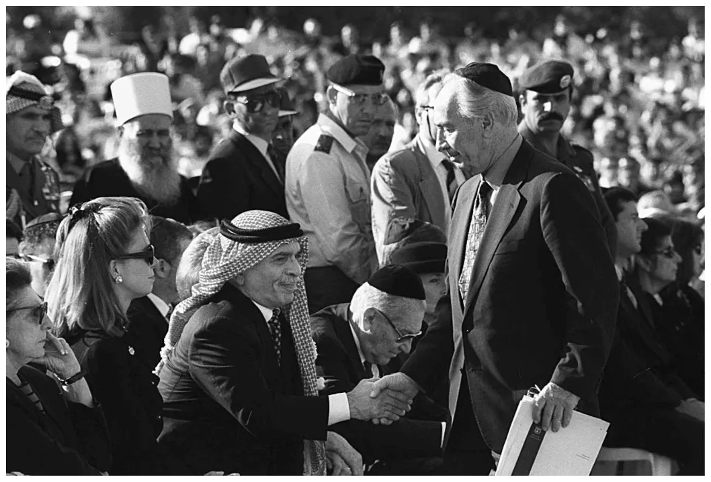
“Những nhượng bộ mang tính biểu tượng không mang lại lợi ích vật chất rõ rệt có thể là chìa khóa giúp giải quyết những cuộc xung đột tưởng chừng như nan giải,” các tác giả viết. Năm 1994, Vương quốc Jordan trở thành quốc gia Ả Rập thứ hai ký hiệp ước hòa bình với Israel. Nó chấm dứt chiến tranh, khép lại hàng thập kỷ thù địch. Và nó tạo ra một lộ trình thành công để hai quốc gia chung sống hòa bình, được xây dựng xoay quanh việc giải quyết các vấn đề vật chất và công cụ — quyền sử dụng nước (ví dụ: Israel sẽ cấp cho Jordan năm mươi triệu mét khối nước hàng năm), nỗ lực chung chống khủng bố, nỗ lực chung tạo điều kiện du lịch giữa hai nước. Nhưng phải đến một năm sau người ta mới thấy bằng chứng cho thấy một thứ gì đó giống với nền hòa bình thực sự đang hình thành. Nó diễn ra sau sự ra đời của một vị tử vì đạo nữa cho hòa bình, vụ ám sát thủ tướng Israel Yitzhak Rabin, một trong những kiến trúc sư của Hiệp định Hòa bình Oslo, bởi một kẻ cực đoan cánh hữu người Israel. Phi thường thay, Quốc vương Hussein đã đến dự tang lễ của Rabin và đọc điếu văn cho ông, hướng về phía góa phụ của ông ở hàng ghế đầu:
Thưa chị tôi, bà Leah Rabin, thưa các bạn của tôi, tôi chưa bao giờ nghĩ rằng khoảnh khắc như thế này sẽ đến khi tôi phải thương tiếc sự ra đi của một người anh em, một người đồng nghiệp và một người bạn.
Sự hiện diện và những lời nói của Hussein rõ ràng chẳng liên quan gì đến bất kỳ trở ngại duy lý nào đối với hòa bình. Và lại quan trọng vô cùng.30
Một vòng cung tương tự có thể thấy ở Bắc Ireland, nơi lệnh ngừng bắn của IRA năm 1994 đã tạo điều kiện chấm dứt bạo lực của thời kỳ Rắc rối (the Troubles) và Hiệp định Thứ Sáu Tuần Thánh năm 1998 đã đặt nền móng cho phe Cộng hòa và phe Liên hiệp chung sống, cho các cựu mị dân phe Liên hiệp và cựu tay súng IRA cùng phục vụ trong một chính phủ. Phần lớn hiệp định mang tính vật chất hoặc công cụ, nhưng có những yếu tố về giá trị thiêng liêng được giải quyết — ví dụ, việc thành lập Ủy ban Diễu hành để đảm bảo không nhóm nào tổ chức các cuộc diễu hành mang nặng biểu tượng kích động đi qua khu dân cư của bên kia ở Belfast. Nhưng theo nhiều cách, dấu hiệu rõ rệt nhất của một nền hòa bình lâu dài lại đến từ một góc không ngờ tới. Chính phủ đoàn kết được thành lập sau hiệp định do Peter Robinson làm Thủ hiến và Martin McGuinness làm Phó Thủ hiến. Người đầu tiên từng là một kẻ kích động bạo loạn phe Liên hiệp, người sau từng là lãnh đạo nhánh chính trị của IRA; họ là hai người đàn ông hiện thân cho những mối hận thù của thời kỳ Rắc rối. Họ có một mối quan hệ làm việc chức năng nhưng không hơn thế và nổi tiếng là từng từ chối thực sự bắt tay nhau (điều mà ngay cả Rabin và Yasir Arafat cũng đã làm được). Điều gì cuối cùng đã phá tan tảng băng? Năm 2010, Robinson bị chao đảo trong một vụ bê bối lớn liên quan đến người vợ chính trị gia của ông, người đã phạm một số sai phạm tài chính nghiêm trọng nhân danh một loại sai phạm khác — tuồn tiền cho người tình mười chín tuổi của bà ta. Và lịch sử đã được tạo nên khi McGuinness đưa tay ra, và Robinson đón nhận, một cái bắt tay chia sẻ cảm thông. Một khoảnh khắc giá trị thiêng liêng theo luật bất thành văn của cánh đàn ông.*31
Một điều tương tự đã xảy ra ở Nam Phi, phần lớn được truyền bá bởi Nelson Mandela, một thiên tài trong việc trân trọng các giá trị thiêng liêng.32 Mandela, khi ở đảo Robben, đã tự học tiếng Afrikaans và nghiên cứu văn hóa Afrikaans — không chỉ để hiểu theo nghĩa đen những gì cai ngục của ông đang nói với nhau trong tù mà còn để hiểu con người và tâm thế của họ. Tại một thời điểm ngay trước khi một nước Nam Phi tự do ra đời, Mandela đã bước vào các cuộc đàm phán bí mật với nhà lãnh đạo người Afrikaans, Tướng Constand Viljoen. Vị tướng này, tư lệnh Lực lượng Quốc phòng Nam Phi thời kỳ Apartheid và là người sáng lập nhóm Mặt trận Nhân dân Afrikaner phản đối việc dỡ bỏ chế độ Apartheid, chỉ huy một lực lượng dân quân Afrikaans gồm năm mươi đến sáu mươi nghìn người. Do đó ông ở vào vị thế có thể phá hỏng cuộc bầu cử tự do đầu tiên sắp diễn ra của Nam Phi và có thể châm ngòi cho một cuộc nội chiến giết chết hàng nghìn người.
Họ gặp nhau tại nhà riêng của Mandela, với việc vị tướng rõ ràng đã dự liệu những cuộc đàm phán căng thẳng qua bàn hội nghị. Thay vào đó, Mandela tươi cười, niềm nở dẫn ông vào phòng khách ấm cúng, thân mật, ngồi cạnh ông trên một chiếc ghế sofa êm ái được thiết kế để làm mềm lòng những kẻ cứng đầu nhất, và nói chuyện với người đàn ông đó bằng tiếng Afrikaans, bao gồm cả chuyện phiếm về thể thao, thỉnh thoảng lại đứng bật dậy lấy trà và đồ ăn nhẹ cho cả hai. Dù vị tướng không hẳn trở thành tri kỷ của Mandela, và không thể đánh giá tầm quan trọng của bất kỳ điều đơn lẻ nào mà Mandela đã nói hay làm, Viljoen đã choáng váng trước việc Mandela sử dụng tiếng Afrikaans và sự am hiểu ấm áp, thân tình về văn hóa Afrikaans. Một hành động tôn trọng thực sự đối với các giá trị thiêng liêng. “Mandela chinh phục tất cả những ai gặp ông,” sau này ông nói. Và trong suốt cuộc trò chuyện, Mandela đã thuyết phục Viljoen hủy bỏ cuộc nổi dậy vũ trang và thay vào đó ra tranh cử trong cuộc bầu cử sắp tới với tư cách lãnh đạo phe đối lập. Khi Mandela nghỉ hưu khỏi chức vụ tổng thống năm 1999, Viljoen đã có một bài phát biểu ngắn, ngập ngừng tại Quốc hội ca ngợi Mandela . . . bằng ngôn ngữ mẹ đẻ của Mandela, tiếng Xhosa.*
Sự ra đời thành công của nước Nam Phi mới tràn ngập những hành động tôn trọng các giá trị thiêng liêng. Có lẽ nổi tiếng nhất là việc Mandela công khai ủng hộ môn bóng bầu dục (rugby), một môn thể thao mang tính biểu tượng cao của văn hóa Afrikaans và trong lịch sử bị người Nam Phi da đen khinh miệt. Và nổi tiếng là, như được khắc họa trong sách và phim ảnh, một trong những hệ quả là hành động mang tính biểu tượng chấn động của đội tuyển bóng bầu dục quốc gia phần lớn là người Afrikaans hát quốc ca của ANC, bài thánh ca “Nkosi Sikelel’ iAfrika”, tiếp nối bởi một dàn hợp xướng người da đen hát quốc ca của người Afrikaans, “Die Stem van Suid-Afrika”, một bài hát gai góc với những hình ảnh về những ngọn núi đá lởm chởm của đất nước.* Điều này diễn ra trước chiến thắng thần thoại của đội chủ nhà Nam Phi bị đánh giá thấp tại Giải Vô địch Thế giới năm 1995 ở Johannesburg.
Tôi có thể xem đoạn clip YouTube hát quốc ca tại Giải Vô địch Thế giới đó cả ngày không chán, đặc biệt là sau khi phải viết phần về Rwanda. Hussein, McGuinness, Robinson, Viljoen và Mandela chứng minh điều gì? Rằng sự nhầm lẫn giữa nghĩa đen và nghĩa bóng của chúng ta, việc chúng ta ban tặng sự thiêng liêng đáng giá cả mạng sống cho cái biểu tượng, có thể được sử dụng để mang lại những hành vi tốt đẹp nhất của chúng ta. Điều đó chuẩn bị cho chúng ta bước vào chương cuối cùng, sắp tới đây.
Chương 16 — Sinh học, hệ thống tư pháp hình sự, và (ôi, tại sao không nhỉ?) Ý chí tự do
Mười sáu
Sinh học, Hệ thống Tư pháp Hình sự, và (Ồ,
Tại sao không nhỉ?) Ý chí Tự do*
ĐỪNG QUÊN KIỂM TRA TUYẾN LỆ CỦA HỌ
Cách đây vài năm, một quỹ tài trợ đã gửi thư cho nhiều người để kêu gọi những Ý tưởng Lớn cho một sáng kiến tài trợ của họ. Bức thư viết đại ý là: “Hãy gửi cho chúng tôi một ý tưởng táo bạo, thứ mà bạn sẽ không bao giờ dám đề xuất với một quỹ nào khác vì họ sẽ dán nhãn bạn là kẻ điên.”
Nghe thú vị đấy. Thế là tôi gửi cho họ một đề xuất có tựa đề: “Có nên xóa bỏ Hệ thống Tư pháp Hình sự không?” Tôi lập luận rằng câu trả lời là có, rằng khoa học thần kinh cho thấy hệ thống này hoàn toàn vô nghĩa và họ nên tài trợ cho một sáng kiến để thực hiện điều đó.
“Ha-ha,” họ nói. “Chà, chính chúng tôi đã yêu cầu điều đó mà. Đề xuất đó chắc chắn đã thu hút sự chú ý của chúng tôi. Đó là một ý tưởng tuyệt vời để tập trung vào sự tương tác giữa khoa học thần kinh và luật pháp. Hãy tổ chức một hội nghị đi.”
Thế là tôi đến dự một hội nghị cùng với một số nhà khoa học thần kinh và một số người làm luật — các giáo sư luật, thẩm phán và nhà tội phạm học. Chúng tôi học thuật ngữ của nhau, chẳng hạn như thấy được cách giới khoa học thần kinh chúng tôi và giới luật sử dụng các từ “có thể” (possible), “có khả năng” (probable) và “chắc chắn” (certainty) khác nhau ra sao. Chúng tôi phát hiện ra rằng hầu hết các nhà khoa học thần kinh, bao gồm cả tôi, chẳng biết gì về cách vận hành của thế giới pháp lý, và hầu hết giới luật đều tránh né khoa học kể từ khi bị sang chấn tâm lý bởi môn sinh học lớp chín. Bất chấp vấn đề hai nền văn hóa đó, đủ mọi sự hợp tác đã bắt đầu từ đó, và cuối cùng phát triển thành một mạng lưới những người nghiên cứu về “luật học thần kinh” (neurolaw).
Vui vẻ, kích thích trí tuệ, một sự lai tạo liên ngành đầy sức sống. Và cũng gây bực bội cho tôi, bởi vì tôi thực sự có ý nghiêm túc với cái tựa đề đề xuất mà tôi đã viết. Hệ thống tư pháp hình sự hiện tại cần phải bị xóa bỏ và thay thế bằng một thứ gì đó mà tuy có một số nét chung rộng lớn với hệ thống hiện tại,* nhưng lại có những nền tảng hoàn toàn khác biệt. Đó là điều tôi sẽ cố gắng thuyết phục bạn. Và đó mới chỉ là phần đầu của chương này thôi.
— Không có gì ít gây tranh cãi hơn việc tuyên bố rằng hệ thống tư pháp hình sự cần cải cách và việc này nên bao gồm nhiều khoa học hơn và ít giả khoa học hơn trong phòng xử án. Nếu không vì điều gì khác, hãy cân nhắc điều này: theo Innocence Project (Dự án Vô tội), gần 350 người, trong đó có con số gây choáng váng là 20 người đang chờ thi hành án tử hình, bị giam giữ trung bình mười bốn năm, đã được minh oan nhờ xét nghiệm dấu vân tay DNA.1
Mặc dù vậy, tôi sẽ chủ yếu bỏ qua vấn đề cải cách tư pháp hình sự bằng khoa học. Dưới đây là một số chủ đề nóng bỏng trong lĩnh vực đó mà tôi sẽ bỏ qua hoàn toàn:
Phải làm gì với sức mạnh và sự phổ biến của những thiên kiến ngầm tự động (implicit biases) (dẫn đến việc, chẳng hạn, bồi thẩm đoàn đưa ra các phán quyết khắc nghiệt hơn đối với các bị cáo người Mỹ gốc Phi có làn da sẫm màu hơn). Liệu Bài kiểm tra Liên tưởng Ngầm (Implicit Association Tests) có nên được sử dụng trong việc chọn bồi thẩm đoàn để loại bỏ những người có thiên kiến mạnh mẽ và liên quan hay không? Liệu thông tin chẩn đoán hình ảnh thần kinh về não bộ của bị cáo có nên được chấp nhận làm bằng chứng tại tòa án hay không.2 Điều này đã trở nên ít gây tranh cãi hơn khi chẩn đoán hình ảnh thần kinh chuyển từ một phương pháp mang tính cách mạng thành một công cụ tiêu chuẩn trong bộ đồ nghề của khoa học. Nhưng vẫn còn vấn đề liệu bồi thẩm đoàn có nên được xem các hình ảnh thần kinh thực tế hay không — nỗi lo ngại là những người không chuyên dễ bị ấn tượng quá mức bởi những bức ảnh não bộ đầy màu sắc bắt mắt được tăng cường độ nét
(hóa ra điều này ít nghiêm trọng hơn so với lo ngại ban đầu). Liệu dữ liệu hình ảnh thần kinh về tính trung thực của một người có chỗ đứng trong phòng xử án (hoặc tại nơi làm việc liên quan đến thẩm tra an ninh) hay không. Về cơ bản, tôi không biết bất kỳ chuyên gia nào cho rằng kỹ thuật này đủ chính xác. Tuy nhiên, vẫn có những doanh nhân bán phương pháp này (bao gồm, tôi không đùa đâu, một công ty tên là No Lie MRI). Vấn đề này mở rộng sang các phiên bản công nghệ thấp hơn nhưng cũng kém tin cậy không kém của câu hỏi “bộ não đó có đang nói dối không?”. Điều này bao gồm cả điện não đồ (EEG), thứ được chấp nhận làm bằng chứng tại các tòa án Ấn Độ.3
Ngưỡng IQ nên là bao nhiêu để một người đủ thông minh cho việc bị tử hình? Tiêu chuẩn là chỉ số IQ từ 70 trở lên, và cuộc tranh luận xoay quanh việc đó nên là mức trung bình 70 qua nhiều bài kiểm tra IQ, hay chỉ cần đạt được con số kỳ diệu đó dù chỉ một lần là đủ điều kiện để bị tử hình. Vấn đề này liên quan đến khoảng 20 phần trăm số người đang chờ thi hành án tử hình.4
Phải làm gì với thực tế là các phát hiện khoa học có thể tạo ra những loại thiên kiến nhận thức mới ở các bồi thẩm viên. Ví dụ, niềm tin rằng tâm thần phân liệt là một rối loạn sinh học khiến bồi thẩm viên ít có khả năng kết tội người mắc tâm thần phân liệt về hành động của họ hơn, nhưng lại có nhiều khả năng coi họ là những kẻ nguy hiểm không thể chữa khỏi hơn.5
Hệ thống pháp luật phân biệt giữa suy nghĩ và hành động; phải làm gì khi khoa học thần kinh ngày càng tiết lộ nhiều hơn về suy nghĩ. Liệu chúng ta có đang tiến gần đến việc phát hiện tiền tội phạm (precrime detection), dự đoán ai sẽ phạm tội hay không? Theo lời của một chuyên gia: “Chúng ta sẽ phải đưa ra quyết định về hộp sọ như một vùng riêng tư.”6
Và tất nhiên còn có vấn đề các thẩm phán xét xử khắc nghiệt hơn khi bụng họ đang kêu cồn cào.*7
— Tất cả những vấn đề này đều quan trọng, và tôi nghĩ các cải cách là cần thiết tại giao điểm của chính trị tiến bộ, quyền tự do dân sự và các tiêu chuẩn khắt khe về khoa học mới. Nói cách khác, một chương trình nghị sự tự do (liberal) tiêu chuẩn. Phần lớn thời gian tôi là một người theo chủ nghĩa tự do rập khuôn chính hiệu; tôi thậm chí còn thuộc cả nhạc hiệu của nhiều chương trình trên đài NPR. Tuy nhiên, chương này sẽ không đi theo bất kỳ hướng nào giống với cách tiếp cận tự do để cải cách tư pháp hình sự. Lý do tại sao được tóm tắt trong ví dụ sau đây về một cách tiếp cận tự do cổ điển đối với một vấn đề pháp lý.
Thời điểm là giữa những năm 1500. Có lẽ vì các tiêu chuẩn xã hội lỏng lẻo và con người trở nên suy đồi và/hoặc trụy lạc về mặt đạo đức, châu Âu tràn ngập phù thủy. Đó là một vấn đề khổng lồ — người dân sợ ra đường vào ban đêm; các cuộc thăm dò cho thấy nông dân ngoài đường liệt kê “phù thủy” là mối đe dọa lớn hơn cả “dịch hạch” hay “người Ottoman”; những kẻ muốn làm bạo chúa thu hút người ủng hộ bằng cách thề sẽ mạnh tay với phù thủy.
May mắn thay, có ba tiêu chuẩn pháp lý để quyết định xem một người có phạm tội làm phù thủy hay không:8
Thử nghiệm nổi trên mặt nước. Vì phù thủy từ chối bí tích rửa tội, nước sẽ từ chối cơ thể họ. Trói bị cáo lại và ném xuống nước. Nếu họ nổi, họ là phù thủy. Nếu họ chìm, họ vô tội. Nhanh lên nào, vớt người vô tội lên ngay. Thử nghiệm dấu ấn của quỷ. Ác quỷ xâm nhập vào cơ thể một người để truyền nhiễm bản chất phù thủy cho họ, và điểm xâm nhập đó sẽ mất cảm giác đau. Hãy làm điều gì đó gây đau đớn một cách có hệ thống lên mọi vị trí trên cơ thể bị cáo. Nếu có điểm nào ít nhạy cảm với cơn đau hơn hẳn phần còn lại, bạn đã tìm thấy dấu ấn của quỷ và xác định được một phù thủy. Thử nghiệm nước mắt. Kể cho bị cáo nghe câu chuyện về sự đóng đinh của Chúa chúng ta. Bất kỳ ai không xúc động đến rơi nước mắt đều là phù thủy.
Những tiêu chí đã được thiết lập vững chắc này cho phép chính quyền chống lại làn sóng phù thủy này xác định và trừng phạt thích đáng hàng ngàn phù thủy.
Năm 1563, một bác sĩ người Hà Lan tên là Johann Weyer đã xuất bản một cuốn sách, De Praestigiis Daemonum, ủng hộ việc cải cách hệ thống tư pháp xử phù thủy. Tất nhiên, ông thừa nhận sự tồn tại độc ác của phù thủy, sự cần thiết phải trừng phạt họ nghiêm khắc, và tính phù hợp nói chung của các kỹ thuật chống phù thủy như ba bài kiểm tra kia.
Tuy nhiên, Weyer đã đưa ra một lưu ý quan trọng liên quan đến các nữ phù thủy lớn tuổi. Đôi khi, ông lưu ý, người lớn tuổi, đặc biệt là phụ nữ, bị teo tuyến lệ, khiến họ không thể khóc ra nước mắt. Ồ không — điều này làm dấy lên bóng ma kết án oan người ta là phù thủy. Ông Weyer đầy quan tâm và đồng cảm đã khuyên bảo: “Hãy chắc chắn rằng bạn không thiêu sống một bà lão tội nghiệp nào đó chỉ vì tuyến lệ của bà ấy không còn hoạt động nữa.”
Đấy, đó là một cuộc cải cách tự do đối với hệ thống tư pháp xử phù thủy, áp đặt một số suy nghĩ đúng đắn vào một góc nhỏ xíu của một công trình phi lý. Giống hệt như những gì mà việc cải cách dựa trên khoa học đối với hệ thống hiện tại của chúng ta đang làm, và đó là lý do tại sao cần một thứ gì đó cực đoan hơn nhiều.*
BA GÓC NHÌN
Hãy đi thẳng vào vấn đề. Có ba cách nhìn nhận vị trí của sinh học trong việc lý giải các hành vi của chúng ta, dù là tội phạm hay không:
1. Chúng ta có hoàn toàn ý chí tự do trong hành vi của mình. 2. Chúng ta hoàn toàn không có. 3. Đâu đó ở khoảng giữa.
Nếu buộc mọi người phải đi đến tận cùng logic trong quan điểm của họ, có lẽ chưa đến một phần nghìn của một phần trăm sẽ ủng hộ mệnh đề đầu tiên. Giả sử một người đang co giật vì cơn động kinh lớn (grand mal), vung tay loạn xạ và đánh trúng ai đó. Nếu bạn thực sự tin rằng chúng ta kiểm soát hành vi một cách tự do, bạn phải kết tội họ về hành vi hành hung.
Hầu như ai cũng coi điều đó là vô lý. Thế nhưng kết cục pháp lý đó đã từng xảy ra cách đây nửa thiên niên kỷ ở phần lớn châu Âu.9 Điều đó có vẻ nực cười bởi vì trong vài thế kỷ qua, phương Tây đã bước qua một lằn ranh và bỏ nó lại phía sau xa đến mức một thế giới ở phía bên kia là điều không thể tưởng tượng nổi. Chúng ta đón nhận một khái niệm định nghĩa sự tiến bộ của mình — “Không phải tại anh ta. Tại căn bệnh của anh ta.” Nói cách khác, đôi khi sinh học có thể áp đảo bất cứ thứ gì giống với ý chí tự do. Người phụ nữ này không cố tình va vào bạn một cách ác ý; bà ấy bị mù. Người lính đứng trong đội hình này không ngất đi vì thiếu bản lĩnh; anh ta bị tiểu đường và cần insulin. Người phụ nữ này không phải là kẻ vô tâm vì đã không giúp người già bị ngã; cô ấy bị liệt do chấn thương tủy sống. Những thay đổi tương tự trong nhận thức về trách nhiệm hình sự cũng đã xảy ra ở các lĩnh vực khác. Ví dụ, từ hai đến bảy thế kỷ trước, việc truy tố động vật, đồ vật và xác chết bị cho là đã cố ý làm hại ai đó là chuyện bình thường. Một số phiên tòa trong số này mang một sắc thái hiện đại kỳ lạ — trong một phiên tòa năm 1457 xét xử một con lợn nái và đàn lợn con của nó vì tội ăn thịt một đứa trẻ, con lợn mẹ đã bị kết án và xử tử, trong khi đàn lợn con được phán quyết là quá nhỏ để phải chịu trách nhiệm cho hành vi của mình. Không rõ vị thẩm phán có viện dẫn trạng thái trưởng thành của vỏ não trán của chúng hay không.
Do đó, hầu như không ai tin rằng chúng ta có quyền kiểm soát hoàn toàn có ý thức đối với hành vi của mình, rằng sinh học không bao giờ ràng buộc chúng ta. Chúng ta sẽ bỏ qua lập trường này mãi mãi về sau.
VẼ NHỮNG LẰN RANH TRÊN CÁT
Hầu như tất cả mọi người đều tin vào mệnh đề thứ ba, rằng chúng ta nằm ở đâu đó giữa có hoàn toàn và không có chút ý chí tự do nào, rằng khái niệm ý chí tự do này tương thích với các định luật tất định của vũ trụ được thể hiện qua sinh học. Chỉ một tập hợp con trong các phiên bản của quan điểm này khớp với lập trường triết học khá hẹp gọi là “thuyết tương thích” (compatibilism). Thay vào đó, quan điểm rộng hơn này cho rằng chúng ta có một thứ gì đó giống như tinh thần, linh hồn, một bản chất thể hiện ý chí tự do của chúng ta, từ đó phát sinh ra ý định hành vi; và tinh thần này cùng tồn tại với sinh học, thứ đôi khi có thể ràng buộc nó. Đó là một dạng nhị nguyên luận tự do (“tự do” theo nghĩa triết học chứ không phải nghĩa chính trị), thứ mà Greene gọi là “ý chí tự do có giới hạn” (mitigated free will). Nó được gói gọn trong ý tưởng rằng một tinh thần có thiện chí, dù rất muốn, vẫn có thể bị cản trở bởi thể xác quá đỗi yếu đuối.
— Hãy bắt đầu với khung pháp lý kinh điển nhất về ý chí tự do có giới hạn.
Năm 1842, một người Scotland tên là Daniel M’Naghten đã tìm cách ám sát Thủ tướng Anh Robert Peel.10 Ông ta nhầm thư ký riêng của Peel là Edward Drummond với thủ tướng và bắn ông này ở cự ly gần, khiến ông tử vong. Tại phiên luận tội, M’Naghten tuyên bố: “Đảng Bảo thủ (Tories) ở quê hương tôi đã ép buộc tôi phải làm điều này. Họ theo dõi và bức hại tôi bất cứ nơi nào tôi đi, và đã hủy hoại hoàn toàn sự bình yên trong tâm trí tôi. Họ theo tôi sang Pháp, vào Scotland . . . bất cứ nơi nào tôi đến. Tôi không thể nào yên ổn với họ cả ngày lẫn đêm. Đêm tôi không tài nào ngủ được. . . . Tôi tin rằng họ đã đẩy tôi vào bệnh lao phổi. Tôi chắc chắn mình sẽ không bao giờ còn là con người như trước đây nữa. . . . Họ muốn sát hại tôi. Điều đó có thể chứng minh bằng bằng chứng. . . . Tôi đã bị đẩy đến bước đường cùng bởi sự bức hại.”
Theo thuật ngữ ngày nay, M’Naghten mắc một dạng rối loạn tâm thần hoang tưởng nào đó. Có thể không phải tâm thần phân liệt — các triệu chứng hoang tưởng của ông bắt đầu muộn hơn nhiều năm so với độ tuổi khởi phát điển hình của căn bệnh này. Bất kể chẩn đoán là gì, M’Naghten đã bỏ bê công việc kinh doanh và dành hai năm trước đó lang thang khắp châu Âu, nghe thấy những giọng nói, tin chắc rằng mình đang bị theo dõi và bức hại bởi những kẻ quyền lực, với Peel là kẻ hành hạ tàn ác nhất. Theo lời một bác sĩ làm chứng về sự mất trí của ông: “Sự hoang tưởng mạnh đến mức không gì ngoài một rào cản vật lý có thể ngăn ông ta thực hiện hành vi [tức là giết người].” M’Naghten rõ ràng bị suy giảm nhận thức đến mức bên công tố đã rút lại các cáo buộc hình sự, đồng ý với bên bào chữa rằng ông ta bị mất trí. Bồi thẩm đoàn đồng ý, và M’Naghten đã sống phần đời còn lại trong các bệnh viện tâm thần, được đối xử khá tốt theo tiêu chuẩn thời bấy giờ.
Đã có những tiếng la ó phản đối dữ dội sau quyết định của bồi thẩm đoàn, từ người dân ngoài phố cho đến Nữ hoàng Victoria — M’Naghten đã giết người mà không bị trừng phạt. Vị thẩm phán chủ tọa bị Quốc hội chất vấn gắt gao và vẫn bảo vệ quyết định của mình. Cơ quan tương đương với Tòa án Tối cao được Quốc hội giao nhiệm vụ đánh giá vụ án và đã ủng hộ ông. Và từ phán quyết đó đã ra đời sự chính thức hóa của thứ hiện nay là tiêu chí phổ biến để tuyên bố một người vô tội vì lý do mất trí, cụ thể là “quy tắc M’Naghten”: nếu tại thời điểm phạm tội, người đó “đang chịu đựng một sự khiếm khuyết về lý trí do bệnh lý của tâm trí”, đến mức không thể phân biệt được đúng sai.*
Quy tắc M’Naghten là cốt lõi giúp John Hinckley Jr. được tuyên bố vô tội vì lý do mất trí trong vụ mưu sát Tổng thống Reagan năm 1981, được đưa vào bệnh viện thay vì ngồi tù. Đã có sự phẫn nộ đáng kể kiểu “Hắn ta thoát tội rồi” sau đó; một số bang đã cấm tiêu chí M’Naghten, và Quốc hội về cơ bản đã cấm nó đối với các vụ án liên bang bằng Đạo luật Cải cách Bào chữa Mất trí năm 1984.* Tuy nhiên, lập luận đằng sau quy tắc M’Naghten nhìn chung đã đứng vững trước thử thách của thời gian.
Đây chính là bản chất của lập trường ý chí tự do có giới hạn — con người cần phải chịu trách nhiệm về hành động của mình, nhưng việc bị rối loạn tâm thần rầm rộ có thể là một tình tiết giảm nhẹ. Đó là ý tưởng rằng có thể có trách nhiệm “giảm nhẹ” đối với hành động của chúng ta, rằng một việc gì đó có thể là bán tự nguyện.
Đây là cách tôi luôn hình dung về ý chí tự do có giới hạn: Có bộ não — các tế bào thần kinh, khớp thần kinh, chất dẫn truyền thần kinh, thụ thể, các yếu tố phiên mã đặc hiệu cho não, hiệu ứng biểu sinh, sự chuyển vị gen trong quá trình hình thành tế bào thần kinh mới. Các khía cạnh chức năng não có thể bị ảnh hưởng bởi môi trường tiền sản của một người, gen và hormone, việc cha mẹ họ có uy quyền hay văn hóa của họ có bình đẳng không, việc họ có chứng kiến bạo lực thời thơ ấu không, và việc họ ăn sáng lúc mấy giờ. Đó là toàn bộ mọi thứ, toàn bộ cuốn sách này.
Và sau đó, tách biệt khỏi tất cả những thứ đó, trong một hầm bê tông giấu kín trong não, ngồi một người đàn ông nhỏ bé (hoặc phụ nữ, hoặc cá nhân phi giới tính), một tiểu nhân (homunculus) bên bảng điều khiển. Tiểu nhân này được tạo nên từ một hỗn hợp gồm chip nano, ống chân không cũ kỹ, giấy da cổ nhăn nheo, những nhũ đá kết tinh từ giọng nói răn dạy của mẹ bạn, những vệt lưu huỳnh, và những chiếc đinh tán làm từ sự gan dạ. Nói cách khác, không phải thứ chất não sinh học nhầy nhụa kinh tởm kia.
Và tiểu nhân ngồi đó điều khiển hành vi. Có một số thứ nằm ngoài tầm kiểm soát của nó — các cơn động kinh làm nổ cầu chì của tiểu nhân, buộc nó phải khởi động lại hệ thống và kiểm tra các tệp bị hỏng. Tương tự với rượu, bệnh Alzheimer, tủy sống bị đứt, sốc hạ đường huyết.
Có những lĩnh vực mà tiểu nhân và thứ sinh học não bộ kia đã đạt được một thỏa thuận hòa hoãn — ví dụ, sinh học thường tự động điều hòa nhịp thở của bạn, trừ khi bạn phải hít một hơi thật sâu trước khi hát một bản aria, trong trường hợp đó tiểu nhân tạm thời ghi đè lên chế độ lái tự động.
Nhưng ngoài ra, tiểu nhân tự đưa ra quyết định. Chắc chắn rồi, nó ghi chép cẩn thận mọi tín hiệu đầu vào và thông tin từ não, kiểm tra mức hormone của bạn, đọc lướt các tạp chí sinh học thần kinh, cân nhắc tất cả, và rồi, sau khi suy ngẫm và cân nhắc kỹ lưỡng, nó quyết định bạn sẽ làm gì. Một tiểu nhân nằm trong não bạn, nhưng không thuộc về não bạn, vận hành độc lập với các quy luật vật chất của vũ trụ vốn cấu thành nên khoa học hiện đại.
Đó chính là bản chất của ý chí tự do có giới hạn. Tôi thấy những người cực kỳ thông minh giật mình lùi lại trước hình ảnh này và cố gắng phản bác sự cực đoan của bức tranh này thay vì chấp nhận tính đúng đắn cơ bản của nó: “Anh đang dựng lên một tiểu nhân rơm, ám chỉ rằng tôi nghĩ ngoại trừ những thứ như động kinh hay chấn thương não, chúng ta đang đưa ra mọi quyết định một cách tự do. Không, không, ý chí tự do của tôi mềm mỏng hơn nhiều và ẩn nấp quanh rìa của sinh học, chẳng hạn như khi tôi tự do quyết định hôm nay mang đôi tất nào.” Nhưng tần suất hay tầm quan trọng mà ý chí tự do thể hiện không thành vấn đề. Ngay cả khi 99,99 phần trăm hành động của bạn được quyết định bởi sinh học (theo nghĩa rộng nhất của cuốn sách này), và chỉ một lần trong một thập kỷ bạn tuyên bố rằng mình đã chọn bằng “ý chí tự do” việc dùng chỉ nha khoa từ trái sang phải thay vì ngược lại, thì bạn đã ngầm viện dẫn đến một tiểu nhân vận hành bên ngoài các quy luật khoa học.
Đây là cách hầu hết mọi người dung hòa sự cùng tồn tại giả định giữa ý chí tự do và các ảnh hưởng sinh học lên hành vi.* Đối với họ, gần như mọi cuộc thảo luận đều quy về việc tìm xem tiểu nhân giả định của chúng ta nên và không nên được kỳ vọng có khả năng làm gì. Để cảm nhận rõ hơn, hãy cùng xem xét một số cuộc tranh luận này.
Tuổi tác, Sự trưởng thành của Nhóm, Sự trưởng thành của Cá nhân
Trong phán quyết Roper kiện Simmons năm 2005, Tòa án Tối cao phán quyết rằng bạn không thể tử hình một người vì tội ác mà họ phạm phải trước tuổi mười tám. Lập luận thích đáng được lấy thẳng từ chương 6 và chương 7: não bộ, đặc biệt là vỏ não trán, vẫn chưa đạt đến mức độ trưởng thành của người lớn về khả năng điều tiết cảm xúc và kiểm soát xung động. Nói cách khác, thanh thiếu niên, với bộ não thanh thiếu niên của mình, không có mức độ phạm lỗi như người lớn. Lập luận này giống hệt lý do tại sao con lợn mẹ bị xử tử còn đàn lợn con thì không.
Trong những năm sau đó, đã có những phán quyết liên quan. Trong vụ Graham kiện Florida năm 2010 và Miller kiện Alabama năm 2012, Tòa án nhấn mạnh rằng tội phạm vị thành niên có tiềm năng cải tạo cao nhất (vì bộ não vẫn đang phát triển của chúng) và do đó cấm án tù chung thân không ân xá đối với họ.
Những quyết định này đã châm ngòi cho một số cuộc tranh luận:
Chỉ vì thanh thiếu niên, xét trên mức trung bình, kém trưởng thành hơn người lớn về mặt sinh học thần kinh và hành vi không loại trừ khả năng một số cá nhân thanh thiếu niên lại trưởng thành tương đương, và do đó hoàn toàn phù hợp để áp dụng các tiêu chuẩn trách nhiệm hình sự của người lớn. Liên quan đến điều đó là sự phi lý hiển nhiên khi ngụ ý rằng có một điều gì đó kỳ diệu về mặt sinh học thần kinh xảy ra vào buổi sáng sinh nhật lần thứ mười tám của một người, ban cho họ khả năng tự chủ của người lớn. Phản hồi thông thường cho những điểm này là, đúng, những điều này đúng, nhưng luật pháp thường dựa vào các thuộc tính cấp nhóm với những ranh giới tuổi tác tùy tiện (ví dụ: độ tuổi được phép bầu cử, uống rượu hoặc lái xe). Có sự chấp nhận này bởi vì bạn không thể kiểm tra từng thiếu niên mỗi năm, mỗi tháng, mỗi giờ để xác định xem chúng đã đủ trưởng thành để, chẳng hạn, đi bầu cử hay chưa. Nhưng điều đó lại đáng làm khi xét đến một kẻ giết người tuổi thiếu niên. Ở một góc nhìn trái chiều khác, vấn đề không phải là liệu một người mười bảy tuổi có trưởng thành bằng một người lớn hay không mà là liệu họ có đủ trưởng thành hay không. Sandra Day O’Connor, trong ý kiến bất đồng với phán quyết Roper, đã viết: “Thực tế là người vị thành niên nhìn chung ít phải chịu trách nhiệm về hành vi sai trái của mình hơn người lớn không nhất thiết có nghĩa là một kẻ giết người 17 tuổi không thể có đủ trách nhiệm để đáng bị tử hình” (nhấn mạnh của bà). Một thẩm phán bất đồng quan điểm khác, cố thẩm phán Antonin Scalia, viết rằng thật “vô lý khi nghĩ rằng một người phải đủ trưởng thành để lái xe cẩn thận, uống rượu có trách nhiệm, hoặc bầu cử thông minh, thì mới đủ trưởng thành để hiểu rằng giết hại một con người khác là sai trái sâu sắc.”11
Giữa những ý kiến khác biệt này, tất cả mọi người, bao gồm cả O’Connor và Scalia, đều đồng ý rằng tồn tại những ranh giới liên quan đến tuổi tác đối với ý chí tự do — tiểu nhân của mỗi người từng có thời quá trẻ để có được sức mạnh của người lớn.12 Có lẽ nó chưa đủ cao để với tới tất cả các núm điều khiển; có lẽ nó bị phân tâm khỏi công việc vì lo lắng về cái mụn ghê tởm trên trán. Và điều đó cần được xem xét trong các phán quyết pháp lý. Cũng giống như lợn con và lợn mẹ, đó chỉ là vấn đề khi nào một tiểu nhân đủ tuổi trưởng thành.
Bản chất và Mức độ Tổn thương Não
Về cơ bản, tất cả những người làm việc với mô hình ý chí tự do có giới hạn đều chấp nhận rằng nếu có đủ tổn thương não, trách nhiệm đối với một hành vi phạm tội sẽ biến mất. Ngay cả Stephen Morse thuộc Đại học Pennsylvania, một nhà phê bình gay gắt việc đưa khoa học thần kinh vào phòng xử án (sẽ nói kỹ hơn sau), cũng thừa nhận: “Giả sử chúng ta có thể chứng minh rằng các trung tâm suy xét bậc cao trong não dường như bị vô hiệu hóa trong những trường hợp này. Nếu đây là những người không thể kiểm soát các cơn phi lý trí nghiêm trọng, chúng ta đã biết được điều gì đó có thể liên quan đến việc quy kết trách nhiệm pháp lý.”13 Theo quan điểm này, các yếu tố sinh học giảm nhẹ chỉ có liên quan nếu khả năng suy luận bị suy giảm nghiêm trọng.
Do đó, nếu một người bị phá hủy toàn bộ vỏ não trán, bạn có lẽ không nên bắt họ chịu trách nhiệm về hành động của mình, bởi vì lý trí của họ bị suy giảm nghiêm trọng khi quyết định hướng hành động của bản thân.14 Nhưng vấn đề sau đó trở thành ranh giới được vẽ ở đâu trên một phổ liên tục — nếu 99 phần trăm vỏ não trán bị phá hủy thì sao? Nếu 98 phần trăm thì sao? Điều này có tầm quan trọng thực tiễn rất lớn, vì một tỷ lệ lớn các tử tù có tiền sử tổn thương vỏ não trán, đặc biệt là loại gây tàn phế nhất, tức là xảy ra từ sớm trong đời.
Nói cách khác, giữa những ý kiến khác nhau về nơi vẽ ranh giới, những người tin vào ý chí tự do có giới hạn đều đồng ý rằng lượng tổn thương não khổng lồ sẽ áp đảo một tiểu nhân, trong khi nó nên được kỳ vọng là có thể xoay xở được ít nhất một mức độ tổn thương nào đó.
Trách nhiệm ở Cấp độ Não bộ và ở Cấp độ Xã hội
Nhà khoa học thần kinh lừng danh Michael Gazzaniga, một trong những cây đại thụ và bậc trưởng lão hàng đầu của ngành, đã đi theo một con đường cực kỳ kỳ lạ khi viết: “Ý chí tự do là một ảo ảnh, nhưng bạn vẫn phải chịu trách nhiệm về hành động của mình.” Điều này được diễn giải dài dòng trong một cuốn sách đầy thách thức của ông, Who’s in Charge? Free Will and the Science of the Brain (Ai đang nắm quyền? Ý chí tự do và Khoa học về Não bộ). Gazzaniga hoàn toàn chấp nhận bản chất thuần túy vật chất của não bộ nhưng vẫn thấy chỗ cho trách nhiệm. “Trách nhiệm tồn tại ở một cấp độ tổ chức khác: cấp độ xã hội, chứ không phải trong bộ não tất định của chúng ta.” Tôi nghĩ hoặc là ông ấy thực sự đang nói: “Ý chí tự do là một ảo ảnh, nhưng vì những lý do thực tế, chúng tôi vẫn sẽ bắt bạn chịu trách nhiệm về hành động của mình,” hoặc là ông ấy đang giả định một kiểu tiểu nhân nào đó chỉ tồn tại ở cấp độ xã hội. Để đáp lại ý tưởng sau, các trang sách của cuốn sách này cho thấy thế giới xã hội của chúng ta rốt cuộc cũng là sản phẩm của bộ não vật chất tất định của chúng ta nhiều không kém gì các cử động vận động đơn giản của chúng ta vậy.*15
Tiến trình Thời gian của Việc Ra Quyết định
Một đường đứt gãy khác đã được xác lập vững chắc trong lập trường ý chí tự do có giới hạn là năng lực ý chí tự do của chúng ta tiến lên tuyến đầu với những quyết định chậm rãi và có cân nhắc, trong khi các yếu tố sinh học có thể đẩy ý chí tự do sang một bên trong các tình huống quyết định trong tích tắc. Nói cách khác, tiểu nhân không phải lúc nào cũng ngồi ngay tại bánh lái trong hầm; thay vào đó, thỉnh thoảng nó đi lang thang ra ngoài kiếm chút đồ ăn vặt, và nếu một điều gì đó thú vị bất ngờ nảy sinh, các tế bào thần kinh kia có thể bắn lệnh tới cơ bắp và tạo ra hành vi trước khi tiểu nhân kịp chạy vội về nhấn nút đỏ lớn trên bảng điều khiển.
Vấn đề kịp chạy đến nút đỏ giao thoa với vấn đề bộ não thanh thiếu niên. Một số nhà phê bình phán quyết Roper kiện Simmons, bắt đầu từ O’Connor trong ý kiến bất đồng của bà, đã chỉ ra một sự mâu thuẫn bề ngoài. Hiệp hội Tâm lý học Hoa Kỳ (APA) đã nộp bản tóm tắt lập luận (amicus curiae) trong vụ án đó, nhấn mạnh rằng thanh thiếu niên (tức là bộ não của chúng) quá non nớt nên không thể bị áp đặt các tiêu chuẩn hình sự của người lớn khi tuyên án. Hóa ra chính APA này vài năm trước đó đã nộp bản tóm tắt trong một vụ án khác, nhấn mạnh rằng thanh thiếu niên đủ trưởng thành để có thể tự chọn việc phá thai, ngay cả khi không có sự đồng ý của cha mẹ.
Chà, điều đó hơi khó xử một chút, và nó chắc chắn khiến APA cùng những người đồng quan điểm trông như đang lật lọng theo động cơ ý thức hệ, O’Connor cáo buộc. Laurence Steinberg, người có nghiên cứu về sự phát triển não bộ thanh thiếu niên được đề cập rất kỹ ở chương 7 (và công trình của ông có ảnh hưởng lớn đến phán quyết Roper kiện Simmons), đưa ra một cách giải quyết hợp lý.16 Quyết định xem có nên phá thai hay không đòi hỏi sự suy luận logic về các vấn đề đạo đức, xã hội và liên cá nhân, kéo dài qua nhiều ngày đến nhiều tuần. Ngược lại, quyết định xem có nên, chẳng hạn, bắn ai đó hay không có thể liên quan đến vấn đề kiểm soát xung động trong khoảng thời gian vài giây. Sự non nớt vùng trán của não bộ thanh thiếu niên liên quan nhiều hơn đến các vấn đề kiểm soát xung động trong tích tắc so với các quá trình suy luận chậm rãi, có cân nhắc. Hay nói theo khung ý chí tự do có giới hạn, các hành vi bốc đồng, chớp nhoáng có thể xảy ra trong lúc tiểu nhân đang đi vệ sinh.
Nhân quả và Sự Cưỡng bức
Một số người ủng hộ ý chí tự do có giới hạn phân biệt giữa khái niệm “nhân quả” (causation) và “sự cưỡng bức” (compulsion).17 Theo một cách nghe hơi mơ hồ, khái niệm đầu liên quan đến việc mọi hành vi tất nhiên đều do một thứ gì đó gây ra, nhưng khái niệm sau chỉ phản ánh một tập hợp con các hành vi thực sự, thực sự bị gây ra bởi một thứ gì đó, thứ làm tổn hại đến các quá trình suy xét lý trí. Theo quan điểm này, một số hành vi mang tính tất định sinh học hơn những hành vi khác.
Điều này có liên quan đến chứng hoang tưởng trong tâm thần phân liệt. Giả sử một người mắc tâm thần phân liệt bị ảo thanh, bao gồm một giọng nói bảo anh ta phạm tội; anh ta làm theo.
Một số tòa án xem điều này không phải là tình tiết giảm nhẹ. Nếu bạn của bạn gợi ý bạn đi cướp ai đó, luật pháp kỳ vọng bạn phải cưỡng lại, ngay cả khi đó là một người bạn tưởng tượng trong đầu bạn.
Nhưng những tòa án khác lại thấy sự khác biệt tùy thuộc vào đặc tính của ảo thanh. Theo quan điểm đó, nếu một người tâm thần phân liệt phạm tội vì một giọng nói trong đầu yêu cầu, vâng, hành động của anh ta bị gây ra bởi giọng nói đó, nhưng điều đó không bào chữa cho tội ác. Ngược lại, hãy xem xét một người tâm thần phân liệt phạm tội vì những dàn đồng ca sấm rền gồm các giọng nói chế giễu, đe dọa, dụ dỗ trong đầu anh ta, đi kèm với lũ chó săn địa ngục tru tréo và những dàn kèn trombone thổi nhạc phi điệu tính inh ỏi, ra lệnh cho anh ta thực hiện tội ác trong từng khoảnh khắc thức tỉnh. Khi anh ta khuất phục và làm theo, điều đó được coi là dễ tha thứ hơn, bởi vì những giọng nói đó cấu thành một sự cưỡng bức buộc phải hành động.*
Như vậy, theo quan điểm này, ngay cả một tiểu nhân biết điều cũng có thể mất kiểm soát và đồng ý làm hầu như bất cứ điều gì, chỉ để lũ chó săn địa ngục và dàn kèn trombone kia im bặt.
Khởi phát Hành vi so với Dừng Hành vi
Gần như là điều tất yếu rằng bất kỳ cuộc thảo luận nào về ý chí và sinh học cuối cùng cũng sẽ xem xét “thí nghiệm Libet”.18 Vào những năm 1980, nhà khoa học thần kinh Benjamin Libet tại UCSF đã công bố một điều thú vị. Một đối tượng được gắn máy đo EEG để theo dõi các mô hình kích thích điện trong não. Cô ấy ngồi yên lặng, nhìn vào một chiếc đồng hồ. Cô được hướng dẫn gập cổ tay bất cứ khi nào mình muốn và ghi lại thời điểm, chính xác đến từng giây, khi cô quyết định làm điều đó.
Libet xác định được một thứ trong dữ liệu EEG gọi là “điện thế sẵn sàng” (readiness potential) — một tín hiệu từ vỏ não vận động và các vùng tiền vận động phụ cho thấy một cử động sắp được khởi phát. Và một cách nhất quán, các điện thế sẵn sàng xuất hiện khoảng nửa giây trước thời điểm được báo cáo là có ý định di chuyển có ý thức. Diễn giải: bộ não của bạn đã “quyết định” di chuyển trước cả khi bạn nhận thức được điều đó. Vậy thì làm sao bạn có thể khẳng định mình đã chọn thời điểm di chuyển, bằng chứng của ý chí tự do, nếu chuỗi tín hiệu thần kinh dẫn đến cử động đã bắt đầu trước khi bạn lựa chọn có ý thức? Ý chí tự do là một ảo ảnh.
Tự nhiên thôi, phát hiện này đã tạo ra những suy đoán, tranh cãi, các thí nghiệm lặp lại, mở rộng, bác bỏ và những sắc thái tinh tế vượt quá tầm hiểu biết của tôi. Một lời phê bình liên quan đến một hạn chế tất yếu của phương pháp này. Theo quan điểm đó, ý chí tự do vẫn tồn tại, bạn tự do quyết định khi nào di chuyển cổ tay, và điện thế sẵn sàng kia là hệ quả từ quyết định của bạn. Vậy độ trễ năm trăm mili-giây đó là gì? Đó là khoảng thời gian trễ giữa khoảnh khắc quyết định di chuyển lần đầu tiên xuất hiện và lúc (a) sự chú ý được tập trung vào đồng hồ và (b) vị trí của kim giây được diễn giải. Nói cách khác, độ trễ nửa giây giả định kia là một sản phẩm phụ của thiết kế thí nghiệm, chứ không phải một thứ có thật. Các phê bình khác liên quan đến sự mơ hồ của cảm giác rằng bạn có ý định di chuyển. Các phê bình khác nữa thì cao siêu hơn khả năng theo dõi của tôi.
Một cách diễn giải rất khác về phát hiện này đã được đưa ra, thú vị thay, bởi chính Libet. Vâng, có thể não bạn chuẩn bị khởi phát một hành vi trước khi có nhận thức có ý thức về quyết định đó, nghĩa là niềm tin của bạn rằng mình đã chọn di chuyển một cách có ý thức là sai. Nhưng trong khoảng thời gian trễ đó có tiềm năng để lựa chọn có ý thức việc phủ quyết hành động đó. Theo lời súc tích của V. S. Ramachandran (về suy đoán tế bào thần kinh gương ở chương 14), chúng ta có thể không có ý chí tự do (free will), nhưng chúng ta có “ý chí từ chối” (free won’t).19
Đúng như dự đoán, cách diễn giải ngược lại hấp dẫn này đã tiếp nhiên liệu cho nhiều cuộc thảo luận, thí nghiệm và các cách diễn giải phản biện hơn nữa. Đối với chúng ta, khi khảo sát các tranh chấp khác nhau liên quan đến ý chí tự do có giới hạn, toàn bộ cuộc tranh luận này là về bản chất bảng điều khiển của tiểu nhân. Có bao nhiêu nút bấm, công tắc và núm vặn lên tới mức mười một của nó dùng để khởi phát một hành vi so với việc dừng nó lại?
— Như vậy, quan điểm ý chí tự do có giới hạn dành chỗ cho cả nguyên nhân sinh học của hành vi và ý chí tự do, và mọi cuộc thảo luận chỉ xoay quanh việc các lằn ranh trên cát được vẽ ở đâu và chúng bất khả xâm phạm đến mức nào. Điều này chuẩn bị cho chúng ta xem xét thứ mà tôi cho là cuộc tranh luận vẽ lằn ranh quan trọng nhất.
“Con Chắc Hẳn Thông Minh Lắm” so với “Con Chắc Hẳn Đã Nỗ Lực Rất Nhiều”
Nhà tâm lý học Carol Dweck của Đại học Stanford đã thực hiện công trình mang tính đột phá về tâm lý học động lực. Cuối những năm 1990, bà đã công bố một điều quan trọng. Trẻ em làm một nhiệm vụ, làm một bài kiểm tra, đại loại thế, và chúng làm tốt. Sau đó bạn khen chúng theo một trong hai cách — “Điểm cao quá; con chắc hẳn thông minh lắm” hoặc “Điểm cao quá, con chắc hẳn đã nỗ lực rất nhiều.” Khi bạn khen trẻ vì đã làm việc chăm chỉ, lần sau chúng có xu hướng làm việc chăm chỉ hơn, thể hiện khả năng phục hồi tốt hơn, tận hưởng quá trình nhiều hơn và có nhiều khả năng trân trọng thành tựu vì chính giá trị của nó hơn (thay vì vì điểm số). Khen trẻ thông minh, và điều ngược lại chính xác sẽ xảy ra. Khi mọi thứ chỉ xoay quanh việc thông minh, nỗ lực bắt đầu trở nên đáng ngờ, thấp kém hơn bạn — xét cho cùng, nếu bạn thực sự thông minh đến thế, bạn không nên phải làm việc vất vả; bạn lướt đi nhẹ nhàng, chứ không đổ mồ hôi và gồng mình.20
Một công trình tuyệt đẹp đã đạt được vị thế sùng bái trong giới nhiều bậc cha mẹ sâu sắc có con cái tài năng, những người muốn hiểu khi nào sự thông minh của con mình không nên được nhắc tới.
Tại sao “Con thông minh lắm” và “Con làm việc chăm chỉ lắm” lại có những tác động khác nhau đến vậy? Bởi vì chúng nằm ở hai phía đối diện của một trong những lằn ranh sâu sắc nhất được vẽ bởi những người tin vào ý chí tự do có giới hạn. Đó là niềm tin gán năng khiếu và xung động cho sinh học, còn nỗ lực và việc kháng cự xung động cho ý chí tự do.
Thật tuyệt khi được chứng kiến khả năng thiên bẩm hoạt động. Vận động viên toàn năng vĩ đại chưa từng thấy môn nhảy sào bao giờ, xem qua một lần, thử một lần, và bay vút lên như một vận động viên chuyên nghiệp. Hoặc ca sĩ có giọng hát luôn mang âm sắc tự nhiên gợi lên những cảm xúc bạn chưa từng biết là tồn tại. Hoặc sinh viên trong lớp bạn rõ ràng là hiểu ngay tức khắc, chỉ hai giây sau khi bạn bắt đầu giải thích một thứ gì đó cực kỳ trừu tượng.
Điều đó thật ấn tượng. Nhưng rồi còn có sự truyền cảm hứng. Khi còn nhỏ, tôi đã đọc đi đọc lại một cuốn sách về Wilma Rudolph. Bà là nữ vận động viên chạy nhanh nhất thế giới năm 1960, một vận động viên Olympic đã trở thành người tiên phong về quyền dân sự. Chắc chắn là rất ấn tượng. Nhưng hãy cân nhắc rằng bà sinh non, nhẹ cân, là một trong hai mươi hai đứa con của một gia đình nghèo ở Tennessee, và — nghe này — năm bốn tuổi bà mắc bệnh bại liệt, dẫn đến phải đeo nẹp chân và bị khoèo bàn chân. Bại liệt, bà đã bị tàn tật vì bệnh bại liệt. Và bà đã bất chấp mọi kỳ vọng của các chuyên gia, tập luyện và tập luyện và tập luyện vượt qua cơn đau đớn, và trở thành người chạy nhanh nhất thế giới. Điều đó thật truyền cảm hứng.
Trong nhiều lĩnh vực, chúng ta có thể phần nào nắm bắt được các khối xây dựng vật chất của khả năng thiên bẩm. Ai đó có tỷ lệ tối ưu giữa sợi cơ co chậm và sợi cơ co nhanh, tạo nên một vận động viên nhảy sào bẩm sinh. Hoặc có dây thanh quản với độ mịn màng như lông tơ quả đào hoàn hảo (tôi đang chém gió đoạn này thôi) để tạo ra một giọng hát phi thường. Hoặc sự kết hợp lý tưởng của các chất dẫn truyền thần kinh, thụ thể, yếu tố phiên mã, vân vân, tạo ra một bộ não nhanh chóng trực giác được các khái niệm trừu tượng. Và chúng ta cũng có thể nhận ra các khối xây dựng đó ở một người chỉ ở mức tạm được, hoặc tệ hại, ở bất kỳ lĩnh vực nào trong số này.
Nhưng những thành tựu kiểu Rudolph dường như khác biệt. Bạn kiệt sức, nản lòng, và đau đớn tột độ nhưng vẫn cố gắng bước tiếp; bạn muốn nghỉ một tối, đi xem phim với bạn bè, nhưng rồi lại tiếp tục học; có cám dỗ đó, không ai nhìn thấy, mọi người khác đều làm thế, nhưng bạn biết điều đó là sai. Có vẻ thật khó, thật khó tin khi nghĩ đến chính những chất dẫn truyền thần kinh, thụ thể hay yếu tố phiên mã đó khi xem xét những kỳ tích của ý chí. Có vẻ có một câu trả lời dễ dàng hơn nhiều — bạn đang chứng kiến đạo đức lao động kiểu Calvin của một tiểu nhân được rắc đúng loại bụi tiên.
Đây là một ví dụ tuyệt vời về thuyết nhị nguyên này. Hãy nhớ lại Jerry Sandusky, huấn luyện viên bóng bầu dục của Đại học Bang Penn, kẻ quấy rối tình dục trẻ em hàng loạt kinh khủng. Sau khi ông ta bị kết án, một bài bình luận đã xuất hiện trên CNN. Viết dưới tiêu đề đầy khiêu khích “Liệu những kẻ ấu dâm có đáng được cảm thông không?”, James Cantor thuộc Đại học Toronto đã điểm lại sinh học thần kinh của chứng ấu dâm. Ví dụ, nó di truyền trong các gia đình theo những cách cho thấy gen đóng một vai trò nhất định. Những người mắc chứng ấu dâm có tỷ lệ chấn thương não trong thời thơ ấu cao bất thường. Có bằng chứng về các bất thường nội tiết trong thời kỳ bào thai. Liệu điều này có đặt ra khả năng rằng một con xúc xắc sinh học thần kinh đã được gieo, rằng một số người có số phận phải trở thành như vậy không? Chính xác là như vậy. Cantor kết luận: “Người ta không thể chọn để không phải là một kẻ ấu dâm.”21
Can đảm và chính xác. Và rồi Cantor thực hiện một cú nhảy xa kiểu ý chí tự do có giới hạn đầy choáng váng. Liệu bất kỳ phần sinh học nào trong số đó có làm giảm bớt sự lên án và trừng phạt mà Sandusky đáng phải nhận không? Không. “Người ta không thể chọn để không phải là một kẻ ấu dâm, nhưng người ta có thể chọn để không trở thành một kẻ xâm hại trẻ em.”
Điều này thiết lập nên một sự phân đôi về bản chất được cho là của mọi thứ:
Thứ thuộc về sinh học | Sự gan dạ của tiểu nhân
Những thôi thúc tình dục mang tính hủy hoại | Kiềm chế không hành động theo chúng
Hoang tưởng nghe thấy giọng nói | Kháng cự mệnh lệnh hủy hoại của chúng
Khuynh hướng nghiện rượu | Không uống rượu
Mắc các cơn co giật động kinh | Không lái xe nếu bạn chưa uống thuốc
Không thông minh cho lắm | Bắt tay vào làm khi gặp khó khăn
Khuôn mặt không lấy gì làm xinh đẹp | Kiềm chế không đi xỏ cái khuyên mũi to đùng gớm ghiếc đó
Dưới đây chỉ là một vài trong số những thứ chúng ta đã thấy trong cuốn sách này có thể ảnh hưởng đến cột bên phải: mức đường huyết; tình trạng kinh tế xã hội của gia đình nơi bạn sinh ra; một chấn thương sọ não do chấn động; chất lượng và thời lượng giấc ngủ; môi trường tiền sản; căng thẳng và mức glucocorticoid; việc bạn có đang bị đau đớn hay không; việc bạn có mắc bệnh Parkinson và được kê loại thuốc nào hay không; tình trạng thiếu oxy chu sinh; biến thể gen thụ thể dopamine D4 của bạn; việc bạn có từng bị đột quỵ ở vỏ não trán hay không; việc bạn có bị lạm dụng thời thơ ấu hay không; mức độ tải nhận thức bạn phải gánh chịu trong vài phút vừa qua; biến thể gen MAO-A của bạn; việc bạn có bị nhiễm một loại ký sinh trùng cụ thể nào đó hay không; việc bạn có mang gen bệnh Huntington hay không; nồng độ chì trong nước máy khi bạn còn nhỏ; việc bạn sống trong một nền văn hóa cá nhân chủ nghĩa hay tập thể chủ nghĩa; việc bạn là nam giới dị tính và có một người phụ nữ hấp dẫn ở gần đó; việc bạn vừa ngửi thấy mùi mồ hôi của một người đang sợ hãi. Cứ thế kéo dài mãi. Trong tất cả các lập trường về ý chí tự do có giới hạn, lập trường gán năng khiếu cho sinh học và nỗ lực cho ý chí tự do, hoặc gán xung động cho sinh học và việc kháng cự nó cho ý chí tự do, là lập trường lan tỏa và mang tính hủy hoại nhất. “Con chắc hẳn đã nỗ lực rất nhiều” cũng là một thuộc tính của vũ trụ vật chất và nền sinh học nảy sinh từ đó, hệt như “Con chắc hẳn thông minh lắm” vậy. Và vâng, việc trở thành một kẻ xâm hại trẻ em cũng là sản phẩm của sinh học hệt như việc trở thành một kẻ ấu dâm vậy. Nghĩ khác đi chẳng khác nào tâm lý học dân gian.
NHƯNG LIỆU CÓ ĐIỀU GÌ HỮU ÍCH THỰC SỰ ĐẾN TỪ ĐÂY KHÔNG?
Như tôi đã lưu ý, nhà hoài nghi đáng gờm nhất về mức độ liên quan của khoa học thần kinh đối với hệ thống pháp luật là Stephen Morse, người đã viết rất nhiều và rất sắc bén về chủ đề này.22 Ông là người ủng hộ tiêu biểu nhất cho quan điểm ý chí tự do tương thích với một thế giới tất định. Ông hoàn toàn đồng ý với quy tắc M’Naghten và thừa nhận rằng có thể có tổn thương não đủ lớn để làm tổn hại đến khái niệm trách nhiệm — “Nhiều nguyên nhân khác nhau có thể tạo ra các điều kiện miễn trừ thực sự, chẳng hạn như thiếu năng lực lý trí hoặc kiểm soát.” Nhưng ngoài những trường hợp hiếm hoi đó ra, ông tin rằng khoa học thần kinh chẳng mang lại được mấy điều có thể thách thức khái niệm trách nhiệm. Như ông từng nói đùa: “Bộ não không giết người. Con người giết người.”
Morse là hiện thân của sự hoài nghi đối với việc đưa khoa học thần kinh vào phòng xử án. Thứ nhất, ông rùng mình phản cảm trước việc “luật học thần kinh” (neurolaw) và “tội phạm học thần kinh” (neurocriminology) đã trở thành một mốt thời thượng đến mức nào. Là một cây bút châm biếm tuyệt vời,* ông đã công bố phát hiện ra chứng rối loạn “hội chứng thổi phồng não bộ” (brain overclaim syndrome), mà những người mắc phải đã bị cuốn đi quá đà với tầm quan trọng của khoa học thần kinh vì họ bị “lây nhiễm và kích động bởi những tiến bộ đáng kinh ngạc trong hiểu biết của chúng ta về não bộ”, khiến họ “đưa ra những tuyên bố đạo đức và pháp lý mà khoa học thần kinh mới không hề hàm ý và không thể chứng minh nổi.”
Một lời chỉ trích hoàn toàn xác đáng của ông mang tính thực tiễn và hẹp hơn. Đó là nỗi lo ngại, đã nêu trước đó, rằng bồi thẩm đoàn sẽ đặt trọng lượng quá mức lên dữ liệu hình ảnh thần kinh chỉ vì những hình ảnh đó trông ấn tượng thế nào. Liên quan đến điều đó, Morse gọi khoa học thần kinh là “thuyết tất định hợp thời (determinism du jour), thu hút sự chú ý trước đây từng dành cho thuyết tất định tâm lý hoặc thuyết tất định di truyền. . . . Điểm khác biệt duy nhất ở khoa học thần kinh là chúng ta có những bức ảnh đẹp hơn và nó có vẻ khoa học hơn.”
Một lời chỉ trích xác đáng khác liên quan đến việc các phát hiện trong khoa học thần kinh thường chỉ mang tính mô tả (ví dụ: “Vùng não A phóng chiếu tới vùng não Q”) hoặc tương quan (ví dụ: “Mức độ cao của chất dẫn truyền thần kinh X và hành vi Z có xu hướng đi cùng nhau”). Những dữ liệu như vậy không bác bỏ được ý chí tự do. Theo lời của triết gia Hilary Bok: “Tuyên bố rằng một người đã lựa chọn hành động của mình không hề mâu thuẫn với tuyên bố rằng một số quá trình hay trạng thái thần kinh đã gây ra nó; nó chỉ đơn giản là mô tả lại điều đó theo cách khác.”23
Đây là một điểm tôi đã nhấn mạnh xuyên suốt cuốn sách, cụ thể là mô tả và tương quan thì tốt đấy, nhưng dữ liệu nhân quả thực sự mới là tiêu chuẩn vàng (ví dụ: “Khi bạn tăng mức chất dẫn truyền thần kinh X, hành vi Z xảy ra thường xuyên hơn”). Đó là nguồn gốc của một số minh chứng mạnh mẽ nhất của chúng ta về nền tảng vật chất của những hành vi phức tạp hơn — ví dụ, các kỹ thuật kích thích từ xuyên sọ tạm thời kích hoạt hoặc bất hoạt một phần vỏ não có thể làm thay đổi việc ra quyết định đạo đức, các quyết định về trừng phạt, hoặc mức độ hào phóng và đồng cảm của một người. Đó mới là quan hệ nhân quả.
Chính khi đi đến vấn đề nhân quả, Morse mới phân biệt giữa nhân quả và sự cưỡng bức. Ông viết: “Nhân quả tự thân không phải là một cái cớ và cũng không tương đương với sự cưỡng bức, vốn là một điều kiện miễn trừ.” Morse tự nhận mình là một “người theo chủ nghĩa duy vật triệt để” và tuyên bố: “Chúng ta sống trong một vũ trụ nhân quả, bao gồm cả hành động của con người.” Nhưng dù có cố gắng thế nào, tôi cũng không thể thấy bất kỳ cách nào để tạo ra sự phân biệt này mà không ngầm đòi hỏi một tiểu nhân nằm ngoài vũ trụ nhân quả, một tiểu nhân có thể bị áp đảo bởi “sự cưỡng bức” nhưng có thể và nên xử lý được “nhân quả”. Theo lời của triết gia Shaun Nichols: “Có vẻ như một trong hai thứ phải nhường bước, hoặc là cam kết của chúng ta đối với ý chí tự do, hoặc là cam kết của chúng ta đối với ý tưởng rằng mọi sự kiện đều được gây ra hoàn toàn bởi các sự kiện trước đó.”24
Bất chấp những lời chỉ trích này nhắm vào các lời chỉ trích của ông ấy, lập trường của tôi vẫn gặp phải một vấn đề lớn, một vấn đề khiến Morse kết luận rằng những đóng góp của khoa học thần kinh cho hệ thống pháp luật “cùng lắm là khiêm tốn và khoa học thần kinh không đặt ra bất kỳ thách thức thực sự, triệt để nào đối với các khái niệm về nhân cách, trách nhiệm và năng lực.”25 Vấn đề đó có thể được tóm tắt trong một đoạn đối đáp giả định:
Công tố viên: Vậy, thưa giáo sư, ông đã kể cho chúng tôi nghe về tổn thương diện rộng mà bị cáo phải chịu ở vỏ não trán khi còn nhỏ. Có phải mọi người từng chịu tổn thương như vậy đều trở thành kẻ giết người hàng loạt như bị cáo không?
Nhà khoa học thần kinh làm chứng cho bên bào chữa: Không.
Công tố viên: Có phải mọi người như vậy ít nhất đều từng tham gia vào một số hành vi phạm tội nghiêm trọng nào đó không?
Nhà khoa học thần kinh: Không. Công tố viên: Khoa học não bộ có thể giải thích tại sao cùng một mức độ tổn thương lại tạo ra hành vi giết người ở bị cáo này không?
Nhà khoa học thần kinh: Không.
Vấn đề nằm ở chỗ, ngay cả giữa tất cả những hiểu biết sinh học cho phép chúng ta tỏ ra khinh khỉnh đối với mấy tiểu nhân ngớ ngẩn kia, chúng ta vẫn không thể dự đoán được nhiều về hành vi. Có lẽ là ở cấp độ thống kê của các nhóm, nhưng không phải khi xét đến từng cá nhân.
Giải thích rất nhiều và Dự đoán rất ít
Nếu một người bị gãy xương chân, khả năng dự đoán rằng họ sẽ gặp khó khăn khi đi lại cao đến mức nào? Tôi nghĩ sẽ an toàn khi dự đoán con số gần 100 phần trăm. Nếu họ mắc bệnh phổi viêm nặng, khả năng dự đoán rằng đôi khi họ sẽ thở khó nhọc và dễ mệt mỏi là bao nhiêu? Một lần nữa, khoảng 100 phần trăm. Tương tự đối với tác động của tình trạng tắc nghẽn đáng kể lưu lượng máu đến chân hoặc xơ gan diện rộng.
Hãy chuyển sang não bộ và rối loạn chức năng thần kinh. Nếu một người bị chấn thương não, và các tế bào thần kinh xung quanh mô sẹo hình thành sau đó nối dây lại để kích thích cả chính chúng lẫn nhau — khả năng dự đoán người đó sẽ lên cơn co giật là bao nhiêu? Thế còn nếu họ bị suy yếu bẩm sinh ở thành mạch máu khắp não — khả năng xảy ra phình động mạch não vào một lúc nào đó là bao nhiêu? Thế còn nếu họ mang đột biến ở gen gây bệnh Huntington — khả năng họ mắc chứng rối loạn thần kinh cơ trước tuổi sáu mươi là bao nhiêu? Rất cao trong mọi trường hợp; có lẽ tiệm cận 100 phần trăm.
Hãy đưa hành vi vào. Nếu một người bị tổn thương vỏ não trán diện rộng, khả năng dự đoán rằng bạn sẽ nhận thấy điều gì đó kỳ lạ ở họ, về mặt hành vi, sau một cuộc trò chuyện năm phút là bao nhiêu? Khoảng 75 phần trăm.
Bây giờ hãy xem xét một phạm vi hành vi rộng lớn hơn. Khả năng dự đoán rằng người bị tổn thương vùng trán này sẽ làm điều gì đó bạo lực kinh khủng vào một lúc nào đó là bao nhiêu? Hoặc một người bị lạm dụng lặp đi lặp lại thời thơ ấu sẽ trở thành một người lớn có hành vi lạm dụng? Rằng một người lính từng trải qua trận chiến giết chết đồng đội mình sẽ phát triển chứng PTSD (rối loạn căng thẳng sau sang chấn)? Rằng một người mang phiên bản gen promoter thụ thể vasopressin đa thê kiểu “chuột đồng cỏ núi” sẽ có nhiều cuộc hôn nhân thất bại? Rằng một người có một tổ hợp cụ thể các phân loại thụ thể glutamate khắp vỏ não và hồi hải mã sẽ có chỉ số IQ trên 140? Rằng một người lớn lên với nhiều nghịch cảnh và mất mát thời thơ ấu sẽ mắc chứng rối loạn trầm cảm nặng? Tất cả đều dưới 50 phần trăm, thường là thấp hơn nhiều.
Vậy một cái chân gãy tất yếu làm suy giảm khả năng đi lại và những điều không tất yếu ở đoạn trước khác nhau như thế nào? Liệu những điều sau bằng cách nào đó có liên quan đến “ít” sinh học hơn không? Liệu vấn đề có phải là bộ não chứa một tiểu nhân phi sinh học còn xương chân thì không?
Hy vọng rằng, sau từng ấy trang sách, khởi đầu của một câu trả lời đã trở nên rõ ràng. Không phải là có “ít” sinh học hơn trong những hoàn cảnh liên quan đến hành vi xã hội đó. Mà đó là một nền sinh học khác về mặt chất.
Khi một khúc xương bị vỡ vụn, có một chuỗi các bước tương đối thẳng tắp dẫn đến tình trạng viêm và đau, thứ sẽ làm suy giảm dáng đi của người đó (nếu anh ta cố gắng đi lại một giờ sau đó). Đường thẳng sinh học đó sẽ không bị thay đổi bởi biến thể thông thường trong bộ gen của anh ta, mức độ tiếp xúc hormone tiền sản của anh ta, nền văn hóa nơi anh ta lớn lên, hay giờ anh ta ăn trưa. Nhưng như chúng ta đã thấy, tất cả những biến số đó đều có thể ảnh hưởng đến các hành vi xã hội vốn định hình nên những khoảnh khắc tốt đẹp nhất và tồi tệ nhất của chúng ta.
Sinh học của những hành vi mà chúng ta quan tâm, trong mọi trường hợp, đều mang tính đa yếu tố (multifactorial) — đó chính là luận điểm của cuốn sách này.
Hãy xem “đa yếu tố” có nghĩa là gì theo nghĩa thực tế. Hãy xem xét một người thường xuyên bị trầm cảm và hôm nay đang đến thăm một người bạn, trút bầu tâm sự về những vấn đề của mình. Bạn có thể dự đoán được bao nhiêu về chứng trầm cảm toàn diện và hành vi hôm nay của cô ấy chỉ bằng cách biết về sinh học của cô ấy?
Giả sử “biết về sinh học của cô ấy” chỉ bao gồm việc biết cô ấy mang phiên bản nào của gen vận chuyển serotonin. Điều đó mang lại cho bạn bao nhiêu sức mạnh dự đoán? Như chúng ta đã thấy ở chương 8, không nhiều — cứ cho là 10 phần trăm. Nếu “biết về sinh học của cô ấy” bao gồm biết trạng thái của gen đó cộng với biết liệu cha hoặc mẹ cô ấy có qua đời khi cô còn nhỏ không thì sao? Nhiều hơn, có lẽ 25 phần trăm. Còn biết trạng thái gen vận chuyển serotonin + tình trạng nghịch cảnh thời thơ ấu + việc cô ấy có đang sống cô độc trong cảnh nghèo đói hay không thì sao? Có lẽ lên tới 40 phần trăm. Cộng thêm kiến thức về mức độ trung bình của glucocorticoid trong máu cô ấy hôm nay. Có lẽ thêm một chút nữa. Thêm vào việc biết cô ấy đang sống trong một nền văn hóa cá nhân chủ nghĩa hay tập thể chủ nghĩa. Thêm một chút khả năng dự đoán nữa.* Biết thêm liệu cô ấy có đang hành kinh hay không (điều thường làm trầm trọng thêm các triệu chứng ở phụ nữ trầm cảm nặng, khiến họ có nhiều khả năng thu mình khỏi xã hội hơn là tìm đến ai đó). Thêm một chút khả năng dự đoán nữa. Có lẽ giờ đã vượt qua mốc 50 phần trăm rồi đấy. Hãy cộng thêm đủ các yếu tố, nhiều yếu tố trong số đó, có lẽ là phần lớn trong số đó, vẫn chưa được phát hiện, và cuối cùng kiến thức sinh học đa yếu tố của bạn sẽ mang lại cho bạn sức mạnh dự đoán tương đương như trong kịch bản gãy xương. Không phải lượng nguyên nhân sinh học khác nhau; mà là các loại nguyên nhân khác nhau.
Nhà tiên phong về trí tuệ nhân tạo Marvin Minsky từng định nghĩa ý chí tự do là “những lực lượng nội tại mà tôi không hiểu”.26 Con người tin vào ý chí tự do một cách trực giác, không chỉ vì chúng ta có nhu cầu khủng khiếp về quyền tự chủ (agency) mà còn vì hầu hết mọi người hầu như chẳng biết gì về những lực lượng nội tại đó. Và ngay cả nhà khoa học thần kinh trên bục nhân chứng cũng không thể dự đoán chính xác cá nhân nào bị tổn thương vùng trán diện rộng sẽ trở thành kẻ giết người hàng loạt, bởi vì toàn bộ nền khoa học vẫn chỉ mới biết về một nhúm nhỏ trong số những lực lượng nội tại đó. Xương vỡ → viêm → hạn chế vận động thì dễ. Chất dẫn truyền thần kinh + hormone + tuổi thơ + ____ + ____ + thì không.*27
Một yếu tố khác cũng góp phần vào. Khi tôi truy cập Web of Science, một công cụ tìm kiếm để quét cơ sở dữ liệu các bài báo được công bố trên các tạp chí khoa học và y khoa. Dưới mục từ khóa tìm kiếm, tôi nhập “oxytocin” và “trust” (niềm tin) — chỉ để chọn một ví dụ trong vô số mối liên hệ giữa sinh học và hành vi xã hội mà chúng ta đã đề cập. Và kết quả hiện ra thông báo rằng 193 bài báo đã được công bố về chủ đề này. Hãy xem biểu đồ sau đây, cho thấy hầu hết các bài báo đó mới được công bố trong vài năm gần đây.
Tương tự với biểu đồ tiếp theo, một tìm kiếm cho “oxytocin” và “social behavior” (hành vi xã hội) hoặc, sau đó, “transcranial magnetic stimulation” (kích thích từ xuyên sọ) và “decision-making” (ra quyết định), và tiếp theo là “brain” (não bộ) và “aggression” (sự hung hăng).
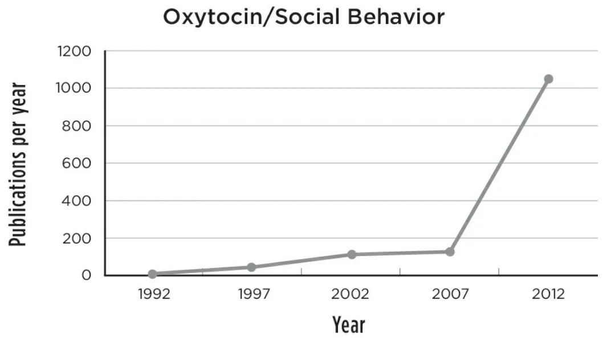
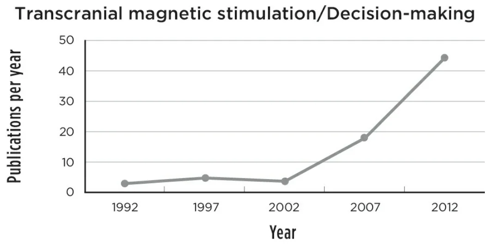
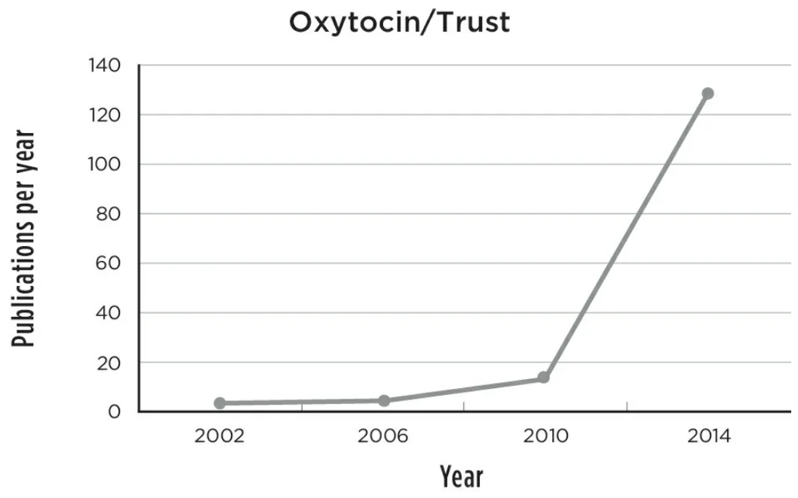
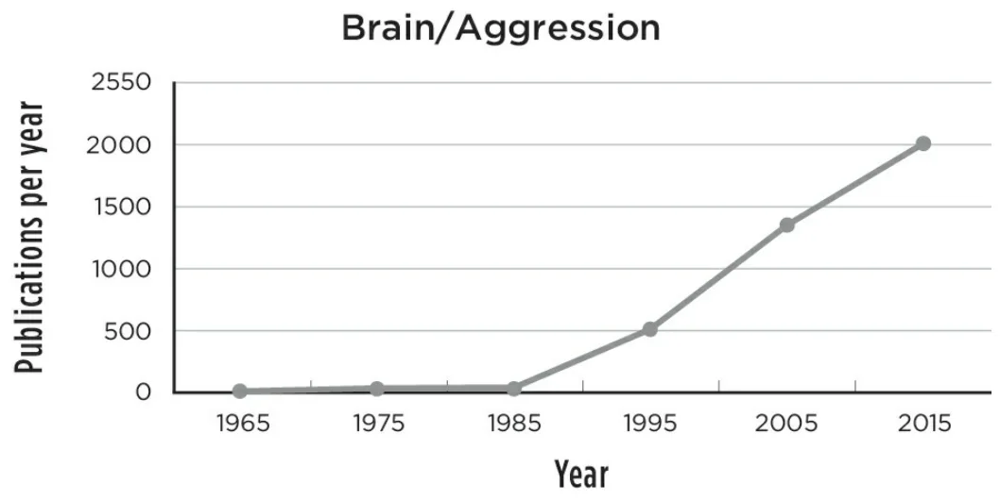
Truy cập bit.ly/2nyi5Ip để xem phiên bản lớn hơn của các biểu đồ này.
Và chỉ để mang lại cảm nhận về thêm một vài trong số này:
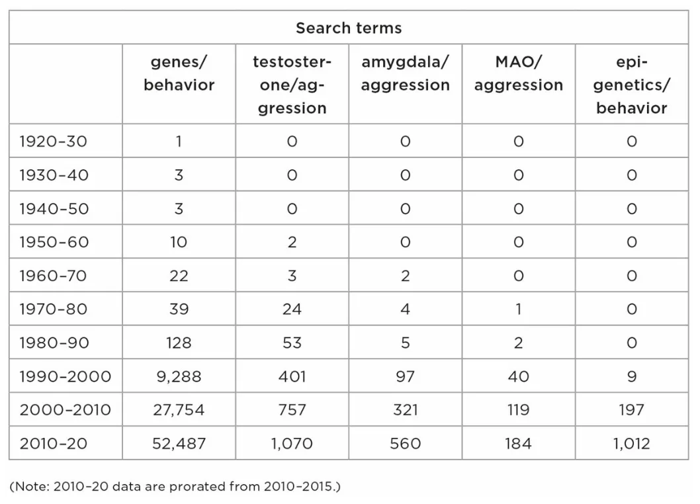
Truy cập bit.ly/2neYFVP để xem phiên bản lớn hơn của bảng này.
Hành vi của chúng ta liên tục được định hình bởi một loạt các lực lượng ngầm. Điều mà các biểu đồ và bảng này cho thấy là hầu hết các lực lượng này liên quan đến nền sinh học mà, cách đây không lâu, chúng ta thậm chí không biết là có tồn tại.
Vậy chúng ta phải làm gì với định nghĩa của Minsky về ý chí tự do khi nó cần được sửa đổi thành “những lực lượng nội tại mà tôi chưa hiểu”?
HỌ SẼ NHÌN CHÚNG TA NHƯ THẾ NÀO
Nếu bạn vẫn cho rằng có ý chí tự do có giới hạn, có ba lộ trình khả dĩ để đi tại thời điểm này.
Để hiểu rõ lộ trình thứ nhất, hãy xem xét ngắn gọn về bệnh động kinh. Các nhà khoa học hiểu rất nhiều về cơ sở thần kinh của các cơn co giật và cách chúng liên quan đến việc phát xung với tần số và tính đồng bộ cao bất thường. Nhưng cách đây không lâu, chẳng hạn một thế kỷ trước, bệnh động kinh bị xem là một dạng bệnh tâm thần. Và trước đó nữa, nó được nhiều người cho là một bệnh truyền nhiễm lây lan. Và ở những thời điểm và nơi chốn khác, nó được cho là do kinh nguyệt, hoặc quan hệ tình dục quá độ, hoặc thủ dâm quá độ gây ra. Nhưng vào năm 1487, hai học giả người Đức đã khám phá ra một nguyên nhân của bệnh động kinh dường như thực sự trúng phóc trọng tâm.
Hai tu sĩ dòng Đa Minh, Heinrich Kramer và Jakob Sprenger, đã xuất bản cuốn Malleus Maleficarum (tiếng Latinh nghĩa là “Cây búa đập phù thủy”), chuyên luận kinh điển về lý do tại sao một người trở thành phù thủy, cách nhận diện họ, và phải làm gì với họ. Một trong những cách chắc chắn nhất để nhận diện một phù thủy là gì? Nếu họ bị Satan chiếm giữ, nếu họ co giật do sức mạnh độc ác của ác quỷ bên trong họ.
Kim chỉ nam của họ là Phúc âm theo thánh Mác-cô, 9:14–29. Một người đàn ông đưa con trai mình đến gặp Chúa Giê-su, nói rằng có điều gì đó không ổn với cậu bé và xin Chúa Giê-su chữa lành cho cậu — một tà linh đến và chiếm lấy cậu, khiến cậu bị câm, và rồi tà linh đó quật cậu ngã xuống đất, nơi cậu sùi bọt mép, nghiến răng và cứng đờ người lại. Người đàn ông đưa con trai ra trước mặt, cậu bé lập tức bị tà linh đó chiếm lấy và ngã xuống đất, co giật và sùi bọt mép. Chúa Giê-su nhận ra cậu bé bị nhiễm một tà linh ô uế và ra lệnh cho linh hồn đê tiện đó hãy ra khỏi và biến đi. Cơn co giật chấm dứt.
Do đó, co giật là dấu hiệu của việc bị quỷ ám, một dấu hiệu chắc chắn của một phù thủy. Malleus Maleficarum ra đời đúng lúc để tận dụng lợi thế sản xuất hàng loạt thông qua máy in vừa mới được phát minh. Theo lời nhà sử học Jeffrey Russell: “Sự lan truyền nhanh chóng của cơn cuồng loạn săn phù thủy nhờ máy in là bằng chứng đầu tiên cho thấy Gutenberg đã không giải phóng con người khỏi tội tổ tông.” Cuốn sách được đọc rộng rãi và trải qua hơn ba mươi lần tái bản trong thế kỷ tiếp theo. Ước tính có từ 100.000 đến một triệu người đã bị bức hại, tra tấn hoặc giết hại vì bị coi là phù thủy trong hệ quả sau đó.*28
Tôi không đánh giá cao Kramer và Sprenger. Giả định của tôi là họ là những con quái vật tàn bạo, nhưng điều đó có thể phản ánh việc tôi bị ảnh hưởng quá nhiều bởi những tác phẩm như Tên của đóa hồng hay Mật mã Da Vinci. Có lẽ họ là những kẻ cơ hội tính toán rằng cuốn sách sẽ tạo dựng sự nghiệp cho họ. Có lẽ họ hoàn toàn chân thành.
Thay vào đó, tôi tưởng tượng ra một kịch bản vào một buổi tối cuối thế kỷ mười lăm. Một thẩm phán tòa án dị giáo đi làm về mệt mỏi, nặng lòng. Vợ ông dỗ dành ông tâm sự — “Hôm nay vẫn là một ngày kết án phù thủy như thường lệ, nhưng có một vụ này làm anh bận tâm. Mọi người đều làm chứng về người phụ nữ hay ngã quỵ, nghiến răng và co giật đó — chắc chắn là phù thủy rồi. Anh không thấy thương xót cho cô ta — chẳng ai bảo cô ta mở lòng đón Satan cả. Nhưng cô ta có hai đứa con xinh đẹp lắm — em mà thấy chúng thì biết, cứ ngơ ngác không hiểu sao mẹ mình lại bị bắt đi. Chồng cô ta cũng đau khổ tột cùng. Nên phần đó thật khó khăn, khi phải nhìn họ chịu đựng. Nhưng sự thể nó là vậy — tất nhiên bọn anh đã thiêu sống cô ta rồi.” Những vụ thiêu sống, giết chóc và nhiều thế kỷ đã phải trôi qua cho đến khi chúng ta ở phương Tây học được đủ nhiều để nói: “Không phải tại cô ấy; tại căn bệnh của cô ấy.”*
Chúng ta mới chỉ đi những bước chập chững đầu tiên trong việc hiểu bất kỳ điều gì trong số này, ít ỏi đến mức nó để lại những khoảng trống khổng lồ chưa thể giải thích mà những người cực kỳ thông minh lấp đầy bằng một tiểu nhân. Tuy nhiên, ngay cả những người tin tưởng kiên định nhất vào ý chí tự do cũng phải thừa nhận rằng nó đang bị dồn vào những không gian chật hẹp hơn so với quá khứ. Chưa đầy hai thế kỷ kể từ khi khoa học lần đầu tiên dạy chúng ta rằng vỏ não trán có liên quan đến hành vi phù hợp. Chưa đầy bảy mươi năm kể từ khi chúng ta biết rằng tâm thần phân liệt là một rối loạn sinh hóa. Có lẽ năm mươi năm kể từ khi chúng ta biết rằng những vấn đề đọc viết thuộc loại mà ngày nay chúng ta gọi là chứng khó đọc (dyslexia) không phải do lười biếng mà liên quan đến các dị tật vỏ não vi thể. Hai mươi lăm năm kể từ khi chúng ta biết rằng di truyền học biểu sinh (epigenetics) làm thay đổi hành vi. Triết gia có ảnh hưởng Daniel Dennett đã viết về thứ ý chí tự do “đáng để khao khát”. Nếu thực sự có ý chí tự do, nó đang bị đẩy xuống những lĩnh vực quá tầm thường đến mức chẳng bõ công để khao khát — hôm nay tôi muốn mặc quần lót tam giác hay quần đùi boxer đây?29
Hãy nhớ lại những biểu đồ và bảng số liệu cho thấy tính mới mẻ của những khám phá khoa học này. Nếu bạn tin rằng bắt đầu từ tối nay, vào lúc nửa đêm, một điều gì đó sẽ xảy ra và khoa học sẽ dừng lại, sẽ không có thêm ấn phẩm, phát hiện hay kiến thức mới nào liên quan đến cuốn sách này nữa, rằng hiện tại chúng ta đã biết mọi thứ cần biết, thì lập trường của một người sẽ rất rõ ràng — có một số lĩnh vực hiếm hoi nơi những rối loạn sinh học cực đoan gây ra những thay đổi hành vi không tự nguyện, và chúng ta không giỏi trong việc dự đoán ai sẽ trải qua những thay đổi như vậy. Nói cách khác, tiểu nhân vẫn sống khỏe và bình an vô sự.
Nhưng nếu bạn tin rằng sẽ có sự tích lũy thêm bất kỳ kiến thức nào nữa, bạn vừa tự cam kết với một trong hai quan điểm: hoặc bất kỳ bằng chứng nào cho ý chí tự do cuối cùng cũng sẽ bị xóa sổ, hoặc ít nhất, tiểu nhân sẽ bị nhét vào những nơi chật chội hơn bao giờ hết. Và với bất kỳ quan điểm nào trong hai quan điểm đó, bạn cũng đã đồng ý rằng một điều khác gần như chắc chắn sẽ xảy ra: rằng con người trong tương lai sẽ nhìn lại chúng ta như cách chúng ta nhìn những kẻ cung cấp đỉa hút máu, trích máu và khoan sọ, như cách chúng ta nhìn lại những chuyên gia thế kỷ mười lăm dành cả ngày để kết án phù thủy, rằng những con người trong tương lai đó sẽ xem xét chúng ta và nghĩ: “Chúa ơi, những thứ mà hồi đó họ không hề biết. Những tổn hại mà họ đã gây ra.”
Các nhà khảo cổ học làm một điều rất ấn tượng, phản ánh sự khiêm tốn của ngành học. Khi các nhà khảo cổ khai quật một địa điểm, họ nhận ra rằng các nhà khảo cổ tương lai sẽ kinh hoàng trước những kỹ thuật thô sơ của họ, trước sự tàn phá của việc khai quật của họ. Do đó, họ thường để nguyên phần lớn địa điểm không đụng tới để chờ đợi những hậu duệ cùng ngành khéo léo hơn. Ví dụ, đáng kinh ngạc là hơn bốn mươi năm sau khi các cuộc khai quật bắt đầu, chưa đến 1 phần trăm đội quân đất nung thời Tần trứ danh ở Trung Quốc được khai lộ.
Những người xét xử các phiên tòa không có sự xa xỉ là tạm hoãn phiên tòa cả một thế kỷ cho đến khi chúng ta thực sự hiểu được sinh học của hành vi. Nhưng tối thiểu thì hệ thống cần có sự khiêm tốn của ngành khảo cổ học, một ý thức rằng, trên hết mọi sự, chúng ta không nên hành động một cách không thể đảo ngược.
Nhưng trong lúc chờ đợi, chúng ta thực sự phải làm gì? Đơn giản thôi (điều mà tôi nói ra thì dễ, khi nhìn vào thế giới pháp lý từ khoảng cách êm ả của phòng thí nghiệm): có lẽ chỉ ba việc. Một việc dễ, một việc rất thách thức để thực hiện, và việc thứ ba gần như bất khả thi.
Trước hết là việc dễ. Nếu bạn bác bỏ ý chí tự do và cuộc thảo luận chuyển sang hệ thống pháp luật, thử thách ngớ ngẩn, phát điên luôn trồi lên là bạn sẽ chẳng làm gì đối với tội phạm cả, rằng chúng sẽ được tự do đi lại ngoài đường, gây ra sự tàn phá. Hãy vứt bỏ ngay luận điểm này — không một người có lý trí nào bác bỏ ý chí tự do lại thực sự tin điều này, lại lập luận rằng chúng ta không nên làm gì vì, xét cho cùng, người đó bị tổn thương vùng trán, hoặc vì, xét cho cùng, tiến hóa đã chọn lọc đặc điểm gây hại đó vì nó từng có tính thích nghi theo truyền thống, hoặc vì, xét cho cùng . . . Con người phải được bảo vệ khỏi những cá nhân nguy hiểm. Những kẻ nguy hiểm đó không thể được phép đi lại ngoài đường hơn là việc bạn có thể cho phép một chiếc xe bị hỏng phanh chạy ngoài đường. Hãy cải tạo những người như vậy nếu bạn có thể, và đưa họ đến “Hòn đảo của những Món đồ chơi Lỗi” (Island of Misfit Toys) mãi mãi nếu bạn không thể và số phận của họ là vẫn tiếp tục nguy hiểm. Josh Greene và Jonathan Cohen ở Princeton đã viết một bài báo cực kỳ sáng suốt về điều này, “Đối với Luật pháp, Khoa học Thần kinh Không Thay đổi Gì cả và Thay đổi Tất cả” (For the Law, Neuroscience Changes Nothing and Everything). Nơi mà khoa học thần kinh và phần còn lại của sinh học không thay đổi gì cả chính là nhu cầu liên tục bảo vệ những người gặp nguy hiểm khỏi những kẻ nguy hiểm.30
Giờ đến vấn đề gần như bất khả thi, thứ “thay đổi tất cả” — vấn đề trừng phạt. Có thể, chỉ có thể thôi, một tội phạm phải chịu sự trừng phạt ở những thời điểm nhất định trong một khuôn khổ hành vi luận, như một phần của quá trình cải tạo, một phần của việc làm cho khả năng tái phạm khó xảy ra bằng cách nuôi dưỡng năng lực vùng trán mở rộng. Sự trừng phạt vốn đã hàm ẩn trong chính quá trình tước bỏ tự do của một cá nhân nguy hiểm bằng cách tách họ ra khỏi xã hội. Nhưng việc loại trừ ý chí tự do đồng thời loại trừ việc trừng phạt trở thành một cứu cánh tự thân, việc trừng phạt được tưởng tượng là để “cân bằng” cán cân công lý.
Chính tâm thế của kẻ trừng phạt mới là nơi mọi thứ phải được thay đổi. Sự khó khăn của việc này được khám phá trong cuốn sách xuất sắc The Punisher’s Brain: The Evolution of Judge and Jury (Bộ não của Kẻ trừng phạt: Sự Tiến hóa của Thẩm phán và Bồi thẩm đoàn, 2014) của Morris Hoffman, một thẩm phán đương nhiệm và học giả pháp lý.31 Ông điểm lại các lý do cho sự trừng phạt: Như chúng ta thấy từ các nghiên cứu lý thuyết trò chơi, là vì sự trừng phạt thúc đẩy sự hợp tác. Vì nó nằm trong kết cấu tiến hóa của tính xã hội. Và quan trọng nhất, vì việc trừng phạt có thể mang lại cảm giác dễ chịu, cảm giác được làm một phần của đám đông công chính và tự cho mình là đúng tại một vụ treo cổ công khai, biết rằng công lý đang được thực thi.
Đây là một khoái cảm sâu thẳm, mang tính lại giống. Hãy đặt mọi người vào máy quét não, đưa cho họ các kịch bản vi phạm chuẩn mực. Việc ra quyết định về mức độ phạm lỗi cho sự vi phạm tương quan với hoạt động ở vùng nhận thức dlPFC. Nhưng việc ra quyết định về hình phạt thích đáng lại kích hoạt vùng cảm xúc vmPFC, cùng với hạch hạnh nhân và vỏ não thùy đảo; kích hoạt càng mạnh, hình phạt càng nặng.32 Quyết định trừng phạt, động lực đầy đam mê để làm điều đó, là một trạng thái hệ viền sục sôi. Hệ quả của việc trừng phạt cũng vậy — khi các đối tượng tham gia trừng phạt ai đó vì đưa ra một lời đề nghị tồi tệ trong một trò chơi kinh tế, có sự kích hoạt của hệ thống phần thưởng dopamine. Sự trừng phạt mang lại cảm giác công bằng thì mang lại cảm giác sảng khoái.
Có lý khi chúng ta đã tiến hóa sao cho chính sự sục sôi của hệ viền nằm ở trung tâm của việc trừng phạt, và một làn sóng dopamine đầy khoái lạc sẽ thưởng cho việc làm đó. Trừng phạt là việc tốn công sức và đắt đỏ, từ việc từ bỏ phần thưởng khi từ chối một lời đề nghị bèo bọt trong Trò chơi Tối hậu thư cho đến việc tiền thuế của chúng ta chi trả cho gói bảo hiểm nha khoa của người cai ngục vận hành máy tiêm thuốc độc. Cơn hưng phấn của khoái cảm tự cho mình là đúng đó chính là thứ thúc đẩy chúng ta gánh vác những chi phí ấy. Điều này đã được chứng minh trong một nghiên cứu hình ảnh thần kinh về trò chơi kinh tế. Các đối tượng luân phiên giữa việc có thể trừng phạt những lời đề nghị tồi mà không mất phí và việc phải tiêu tốn điểm số mình đã kiếm được để làm điều đó. Và mức độ kích hoạt dopamine trong lúc trừng phạt không mất phí càng cao, người ta càng sẵn sàng trả nhiều điểm hơn để trừng phạt trong điều kiện còn lại.33
Do đó, nhiệm vụ gần như bất khả thi là vượt qua điều đó. Chắc chắn rồi, như tôi đã nói, sự trừng phạt vẫn sẽ được sử dụng theo cách công cụ, để định hình hành vi một cách cấp tính. Nhưng đơn giản là không có chỗ cho ý tưởng rằng trừng phạt là một đức hạnh. Các con đường dopamine của chúng ta sẽ phải tìm kiếm sự kích thích ở nơi khác. Tôi chắc chắn không biết làm thế nào để đạt được tâm thế đó một cách tốt nhất. Nhưng điều cốt yếu là, tôi chắc chắn biết chúng ta có thể làm được — bởi vì chúng ta đã từng làm trước đây: Ngày xưa, những người mắc bệnh động kinh từng bị trừng phạt một cách đầy đạo đức vì sự thân mật của họ với Lucifer. Ngày nay, chúng ta quy định rằng nếu các cơn co giật của họ không được kiểm soát, họ không được lái xe. Và điểm mấu chốt là không ai coi lệnh cấm lái xe đó là một sự trừng phạt đầy đạo đức, mang lại khoái cảm, tin rằng một người mắc chứng co giật kháng trị “xứng đáng” bị cấm lái xe. Đám đông những kẻ ngu muội cuồng tín không háo hức tụ tập để xem bằng lái xe của người bệnh động kinh bị thiêu hủy công khai. Chúng ta đã loại bỏ thành công khái niệm trừng phạt trong lĩnh vực đó. Có thể mất hàng thế kỷ, nhưng chúng ta có thể làm điều tương tự trong tất cả các đấu trường trừng phạt hiện tại của mình.
Điều này đưa chúng ta đến thách thức thực tiễn khổng lồ. Các lý do truyền thống đằng sau việc bỏ tù là để bảo vệ công chúng, cải tạo, trừng phạt, và cuối cùng là sử dụng mối đe dọa trừng phạt để răn đe những người khác. Lý do cuối cùng đó là thách thức thực tiễn, bởi vì những mối đe dọa trừng phạt như vậy thực sự có thể răn đe. Làm thế nào để làm được điều đó? Loại giải pháp rộng lớn nhất không tương thích với một xã hội cởi mở — khiến công chúng tin rằng việc ngồi tù bao gồm những hình phạt khủng khiếp trong khi thực tế không phải vậy. Có lẽ việc mất tự do xảy ra khi một người nguy hiểm bị tách khỏi xã hội phải đủ sức răn đe. Có lẽ một số hình phạt thông thường vẫn sẽ cần thiết nếu nó đủ sức răn đe. Nhưng thứ bắt buộc phải bị xóa bỏ là những quan điểm cho rằng sự trừng phạt có thể là thứ đáng phải nhận và việc trừng phạt có thể là một đức hạnh.
Sẽ chẳng có điều nào trong số này là dễ dàng. Khi suy ngẫm về thách thức phải làm điều đó, điều quan trọng là phải nhớ rằng một số, nhiều, thậm chí có lẽ là hầu hết những người từng truy tố người bệnh động kinh vào thế kỷ mười lăm không khác gì chúng ta — chân thành, thận trọng và có đạo đức, lo lắng về những vấn đề nghiêm trọng đang đe dọa xã hội của họ, hy vọng để lại cho con cháu mình một thế giới an toàn hơn. Chỉ là họ vận hành với một tâm thế khác biệt đến mức không thể nhận ra. Khoảng cách tâm lý từ họ đến chúng ta là mênh mông, bị ngăn cách bởi vực thẳm rộng lớn chính là khám phá “Không phải tại cô ấy, tại căn bệnh của cô ấy.” Đã bước qua được ranh giới đó, khoảng cách mà chúng ta cần đi hiện nay ngắn hơn nhiều — nó chỉ đơn giản bao gồm việc tiếp nhận chính cái nhìn sâu sắc đó và sẵn sàng nhìn thấy sự mở rộng hợp lệ của nó theo bất kỳ hướng nào mà khoa học đưa chúng ta tới.
Hy vọng là khi đối xử với những con người có hành vi thuộc hàng tồi tệ nhất và gây tổn hại nhiều nhất, những từ như “ác quỷ” và “linh hồn” sẽ trở nên vô nghĩa hệt như khi xem xét một chiếc xe bị hỏng phanh, rằng chúng sẽ hiếm khi được thốt ra trong phòng xử án cũng như trong một tiệm sửa xe ô tô vậy. Và điều cốt yếu là, phép loại suy này đứng vững ở một điểm then chốt, mở rộng sang cả những trường hợp người nguy hiểm mà không có gì sai rõ ràng ở vỏ não trán, gen, vân vân của họ. Khi một chiếc xe hoạt động trục trặc và nguy hiểm và chúng ta mang nó đến thợ máy, đây không phải là một tình huống nhị nguyên nơi mà (a) nếu người thợ máy phát hiện ra một bộ phận bị hỏng gây ra sự cố, chúng ta có một lời giải thích cơ học, nhưng (b) nếu người thợ máy không tìm thấy gì sai, thì chúng ta đang đối phó với một chiếc xe ác quỷ; chắc chắn rồi, người thợ máy có thể suy đoán về nguồn gốc vấn đề — có lẽ là bản thiết kế tạo nên chiếc xe, có lẽ là quy trình lắp ráp, có lẽ môi trường chứa một chất ô nhiễm chưa biết nào đó làm suy giảm chức năng, có lẽ một ngày nào đó chúng ta sẽ có những kỹ thuật đủ mạnh trong tiệm sửa xe để phát hiện ra một phân tử then chốt nào đó trong động cơ bị trục trặc — nhưng trong lúc chờ đợi, chúng ta sẽ coi chiếc xe này là ác quỷ. Ý chí tự do của xe hơi cũng bằng “những lực lượng nội tại mà chúng ta chưa hiểu”.*34
Nhiều người phản đối quan điểm này một cách bản năng cáo buộc rằng thật phi nhân tính khi đóng khung những con người bị tổn thương như những cỗ máy hỏng. Nhưng như một điểm cuối cùng, mang tính quyết định, làm như vậy vẫn nhân đạo hơn gấp vạn lần so với việc quỷ hóa và lên lớp thuyết giáo họ như những kẻ tội đồ.
TÁI BÚT: GIỜ MỚI ĐẾN PHẦN KHÓ NHẤT
Vậy là xong phần hệ thống tư pháp hình sự. Giờ chuyển sang phần thực sự khó khăn, đó là phải làm gì khi có người khen ngợi cung gò má của bạn.
Nếu chúng ta phủ nhận ý chí tự do khi nói đến những hành vi tồi tệ nhất của mình, điều tương tự cũng phải áp dụng cho những hành vi tốt đẹp nhất. Đối với tài năng của chúng ta, những màn thể hiện ý chí và sự tập trung, những khoảnh khắc bùng nổ sáng tạo, sự tử tế và lòng trắc ẩn. Về mặt logic, sẽ nực cười không kém khi nhận công cho những đặc điểm đó so với việc đáp lại một lời khen về vẻ đẹp của gò má bạn bằng cách cảm ơn người đó vì đã ngầm khen ngợi ý chí tự do của bạn, thay vì giải thích các lực cơ học đã tác động lên cung gò má trên hộp sọ của bạn như thế nào.
Sẽ vô cùng khó khăn để hành xử theo cách đó. Tôi sẵn sàng thừa nhận rằng mình đã hành xử cực kỳ sai lầm về mặt này. Vợ chồng tôi đi ăn trưa muộn với một người bạn, người này dọn ra món salad trái cây. Chúng tôi thốt lên: “Chà, dứa ngon quá.” “Trái mùa rồi đấy,” chủ nhà đáp lại một cách tự mãn, “nhưng mình gặp may nên tìm được một quả ngon.” Vợ chồng tôi bày tỏ sự ngưỡng mộ đầy tôn kính — “Cậu thực sự biết cách chọn trái cây đấy. Cậu là một người tuyệt vời hơn bọn mình rồi.” Chúng tôi đang khen ngợi chủ nhà vì màn thể hiện ý chí tự do giả định này, vì lựa chọn được đưa ra tại ngã ba đường đời là chọn quả dứa. Nhưng chúng tôi đã sai. Trong thực tế, gen có liên quan phần nào đến các thụ thể khứu giác mà chủ nhà chúng tôi sở hữu giúp phát hiện độ chín. Có lẽ chủ nhà xuất thân từ một dân tộc có những giá trị văn hóa sâu sắc và cổ xưa bao gồm việc học cách sờ nắn một quả dứa để biết nó có ngon không. Sự may mắn thuần túy trong quỹ đạo kinh tế xã hội của cuộc đời chủ nhà đã cung cấp nguồn lực để rảo bước trong một khu chợ hữu cơ đắt đỏ phát nhạc nền dân ca Peru. Thế nhưng chúng tôi vẫn khen ngợi chủ nhà.
Tôi thực sự không thể tưởng tượng nổi làm thế nào để sống cuộc đời mình như thể không có ý chí tự do. Có lẽ sẽ không bao giờ có thể xem bản thân mình là tổng hòa của nền sinh học. Có lẽ chúng ta sẽ phải bằng lòng với việc đảm bảo những huyền thoại về tiểu nhân của mình là vô hại, và dành phần việc nặng nhọc của việc thực sự suy nghĩ lý trí cho nơi mà nó quan trọng — khi chúng ta phán xét người khác một cách khắc nghiệt.
Chương 17 — Chiến tranh và Hòa bình
Mười bảy
Chiến tranh và Hòa bình
Hãy cùng điểm lại một số sự thật. Hạch hạnh nhân thường kích hoạt khi nhìn thấy khuôn mặt của một chủng tộc khác. Nếu bạn nghèo, đến năm năm tuổi, sự phát triển vỏ não trước trán của bạn có lẽ đã tụt lại sau mức trung bình. Oxytocin khiến chúng ta đối xử tệ bạc với người lạ. Sự đồng cảm không hẳn chuyển hóa thành hành động trắc ẩn, và sự phát triển đạo đức tinh tế cũng không hẳn chuyển hóa thành việc làm điều đúng đắn nhưng khó khăn hơn. Có những biến thể gen, trong những bối cảnh nhất định, khiến bạn dễ có hành vi chống đối xã hội. Và tinh tinh lùn bonobo không hề hoàn toàn ôn hòa—chúng sẽ chẳng phải là bậc thầy hòa giải nếu chúng không có xung đột để hòa giải.
Tất cả những điều này khiến người ta vô cùng bi quan. Tuy nhiên, lý do tồn tại của cuốn sách này là, dẫu vậy, vẫn có cơ sở cho sự lạc quan.
Do đó, mục tiêu của chương cuối cùng này là (a) chứng minh rằng mọi thứ đã được cải thiện, rằng nhiều hành vi tồi tệ nhất của chúng ta đang thoái trào, còn những hành vi tốt đẹp nhất đang trỗi dậy; (b) xem xét những cách để cải thiện điều này hơn nữa; (c) tìm kiếm sự nâng đỡ tinh thần cho công cuộc này, để thấy rằng những hành vi tốt đẹp nhất của chúng ta có thể xảy ra trong những hoàn cảnh khó tin nhất; (d) và cuối cùng, xem liệu tôi có thực sự thoát tội khi đặt tên chương này là “Chiến tranh và Hòa bình” hay không.
NHỮNG THIÊN THẦN TỐT ĐẸP HƠN ĐÔI CHÚT
Khi nói đến những hành vi tốt đẹp nhất và tồi tệ nhất của chúng ta, thế giới ngày nay khác một cách đáng kinh ngạc so với quá khứ không quá xa xôi. Vào buổi bình minh của thế kỷ XIX, chế độ nô lệ diễn ra trên toàn thế giới, bao gồm cả ở các thuộc địa của một châu Âu đang đắm mình trong Thời kỳ Khai sáng. Lao động trẻ em phổ biến khắp nơi và chẳng bao lâu sẽ đạt đến thời kỳ hoàng kim bóc lột cùng với Cách mạng Công nghiệp. Và không có một quốc gia nào trừng phạt hành vi ngược đãi động vật. Giờ đây mọi quốc gia đều đã đặt chế độ nô lệ ra ngoài vòng pháp luật, và hầu hết đều cố gắng thực thi điều đó; hầu hết đều có luật về lao động trẻ em, tỷ lệ lao động trẻ em đã giảm xuống, và ngày càng mang tính chất trẻ em làm việc cùng cha mẹ tại nhà; hầu hết các quốc gia đều có quy định về việc đối xử với động vật theo một cách nào đó.
Thế giới cũng an toàn hơn. Châu Âu thế kỷ XV có tỷ lệ trung bình 41 vụ giết người trên 100.000 dân mỗi năm. Hiện nay chỉ có El Salvador, Venezuela và Honduras, lần lượt ở mức 62, 64 và 85, là tệ hơn; mức trung bình của thế giới là 6,9, châu Âu là 1,4, và có những nước như Iceland, Nhật Bản và Singapore ở mức 0,3.
Dưới đây là những điều đã trở nên hiếm hoi hơn trong những thế kỷ gần đây: Cưỡng hôn, tảo hôn, cắt bỏ bộ phận sinh dục nữ, đánh đập vợ, đa thê, thiêu sống góa phụ. Bức hại người đồng tính, người động kinh, người bạch tạng. Đánh đập học sinh, đánh đập súc vật thồ hàng. Sự cai trị một vùng đất bởi quân đội chiếm đóng, bởi chúa đất thực dân, bởi kẻ độc tài không qua bầu cử. Mù chữ, tử vong ở trẻ sơ sinh, tử vong khi sinh nở, tử vong do các bệnh có thể phòng ngừa. Án tử hình.
Dưới đây là những thứ được phát minh trong thế kỷ qua: Lệnh cấm sử dụng một số loại vũ khí nhất định. Tòa án Thế giới và khái niệm tội ác chống lại loài người. Liên Hợp Quốc và việc điều động lực lượng gìn giữ hòa bình đa quốc gia. Các hiệp định quốc tế nhằm ngăn chặn nạn buôn bán kim cương máu, ngà voi, sừng tê giác, da báo và buôn người. Các cơ quan quyên góp tiền để cứu trợ nạn nhân thiên tai ở bất cứ đâu trên hành tinh, tạo điều kiện cho việc nhận con nuôi xuyên lục địa đối với trẻ mồ côi, chống lại các đại dịch toàn cầu và cử nhân viên y tế đến bất kỳ vùng xung đột nào.
Vâng, tôi biết, tôi sẽ là một kẻ ngây thơ hoàn toàn nếu nghĩ rằng luật pháp được thực thi phổ quát. Ví dụ, năm 1981 Mauritania trở thành quốc gia cuối cùng cấm chế độ nô lệ; tuy nhiên, ngày nay khoảng 20 phần trăm dân số nước này vẫn là nô lệ, và chính phủ chỉ mới truy tố tổng cộng một chủ nô.1 Tôi nhận thức rằng ở nhiều nơi mọi thứ chẳng thay đổi mấy; tôi đã dành hàng thập kỷ ở châu Phi sống quanh những người tin rằng người động kinh bị quỷ ám và nội tạng của người bạch tạng bị sát hại có năng lực chữa bệnh, nơi việc đánh đập vợ, con cái và động vật là chuyện bình thường, trẻ năm tuổi đi chăn gia súc và gánh củi, các bé gái dậy thì bị cắt âm vật và gả cho những ông già làm vợ ba. Dẫu vậy, trên toàn thế giới, mọi thứ đã được cải thiện.
Tác phẩm kinh điển bàn về điều này là cuốn sách đồ sộ của Pinker, The Better Angels of Our Nature: Why Violence Has Declined (Những thiên thần tốt đẹp hơn trong bản chất chúng ta: Vì sao bạo lực suy giảm).2 Đó là một công trình học thuật có sức thuyết phục đến thắt ruột trong việc ghi chép lại mọi thứ từng tồi tệ đến mức nào. Pinker mô tả sinh động sự tàn nhẫn khủng khiếp trong lịch sử của loài người. Khoảng nửa triệu người đã chết tại Đấu trường La Mã để mang lại cho hàng chục nghìn khán giả niềm khoái cảm khi xem tù binh bị cưỡng hiếp, phanh thây, tra tấn, bị thú dữ ăn thịt. Suốt thời Trung Cổ, các đạo quân càn quét khắp lục địa Á-Âu, tàn phá làng mạc, giết sạch đàn ông, đày mọi phụ nữ và trẻ em vào kiếp nô lệ. Giới quý tộc chiếm tỷ lệ bạo lực cao bất thường, hành hạ nông dân mà không bị trừng phạt. Các nhà chức trách tôn giáo và chính quyền, từ châu Âu đến Ba Tư, Trung Quốc, Ấn Độ giáo, Polynesia, Aztec, châu Phi và người Mỹ bản địa, đều sáng chế ra các công cụ tra tấn. Đối với một người dân Paris thế kỷ XVI đang buồn chán, trò tiêu khiển có thể là thiêu sống mèo, hành quyết một con vật “phạm tội”, hoặc trò chọi gấu, nơi một con gấu bị xích vào cột và bị bầy chó xé xác. Đó là một thế giới khác biệt đến buồn nôn; Pinker trích dẫn nhà văn L. P. Hartley: “Quá khứ là một đất nước xa lạ: người ta làm mọi thứ khác đi ở đó.”
Cuốn Better Angels đã khơi mào ba cuộc tranh cãi:
Tại sao ngày xưa con người lại tồi tệ đến thế?
Với Pinker câu trả lời rất rõ ràng. Bởi vì con người vốn dĩ luôn tồi tệ như vậy. Đây là cuộc tranh luận ở chương 9—chiến tranh được phát minh từ bao giờ, đời sống săn bắt-hái lượm thời tổ tiên giống với Hobbes hay Rousseau? Như chúng ta đã thấy, Pinker đứng về phe cho rằng bạo lực có tổ chức của con người có từ trước nền văn minh, kéo dài ngược về tổ tiên chung cuối cùng của chúng ta với tinh tinh. Và như đã điểm lại, hầu hết các chuyên gia đều không đồng tình một cách thuyết phục, cho rằng dữ liệu đã bị chọn lọc thiên lệch, các nhóm săn bắt-làm vườn bị gắn nhầm nhãn là săn bắt-hái lượm, và các nhóm săn bắt-hái lượm định cư kiểu mới bị gộp chung một cách thiếu phù hợp với các nhóm du mục truyền thống.
Tại sao con người lại trở nên đỡ tồi tệ hơn?
Câu trả lời của Pinker phản ánh hai yếu tố. Ông dựa vào nhà xã hội học Norbert Elias, người có khái niệm về “tiến trình văn minh hóa” tập trung vào thực tế rằng bạo lực suy giảm khi nhà nước độc quyền sử dụng vũ lực. Điều đó kết hợp với sự lan rộng của thương mại và giao thương, thúc đẩy sự tự kiềm chế mang tính thực dụng—nhận ra rằng để người kia sống và buôn bán với bạn thì tốt hơn. Phúc lợi của họ bắt đầu trở nên quan trọng, thúc đẩy cái mà Pinker gọi là “thang cuốn của lý trí”—một năng lực mở rộng cho sự đồng cảm và tính Chúng ta. Điều này làm nền tảng cho “cuộc cách mạng quyền”—dân quyền, quyền phụ nữ, quyền trẻ em, quyền người đồng tính, quyền động vật. Quan điểm này là một thắng lợi của nhận thức. Pinker gắn điều này với “hiệu ứng Flynn”, sự gia tăng IQ trung bình đã được ghi nhận rõ ràng trong thế kỷ qua; ông viện dẫn một hiệu ứng Flynn về đạo đức, khi trí thông minh gia tăng và sự tôn trọng lý trí thúc đẩy Thuyết Tâm trí và khả năng đặt mình vào vị trí người khác tốt hơn, cùng năng lực gia tăng trong việc trân trọng những lợi ích dài hạn của hòa bình. Theo lời một nhà phê bình, Pinker “không quá nhút nhát để gọi chính nền văn hóa của mình là văn minh.”3
Như dự đoán, điều này hứng chịu chỉ trích từ mọi phía. Phe Cánh tả cáo buộc rằng việc đề cao quá mức thời kỳ Khai sáng của những người đàn ông da trắng đã chết này tiếp tay cho chủ nghĩa tân đế quốc phương Tây.4 Bản năng chính trị cá nhân của tôi cũng nghiêng về hướng này. Tuy nhiên, phải thừa nhận rằng những quốc gia có mức độ bạo lực tối thiểu, mạng lưới an sinh xã hội rộng khắp, ít tảo hôn, nhiều nữ nghị sĩ và các quyền tự do dân sự bất khả xâm phạm thường là hậu duệ văn hóa trực tiếp của thời kỳ Khai sáng.
Trong khi đó, phe Cánh hữu cho rằng Pinker phớt lờ tôn giáo, giả vờ như sự tử tế được phát minh ra trong thời kỳ Khai sáng.5 Ông hùng hồn không hề hối lỗi về điều này—với ông, phần lớn những gì đã đi đúng hướng phản ánh việc con người “chuyển từ coi trọng linh hồn sang coi trọng mạng sống.” Với những người khác, lời chỉ trích là thang cuốn lý trí này sùng bái nhận thức hơn cảm xúc—xét cho cùng, những kẻ thái nhân cách có Thuyết Tâm trí rất tuyệt vời, một tâm trí thuần túy lý trí (do tổn thương não) đưa ra những phán xét đạo đức kinh tởm, và ý thức công lý được thúc đẩy bởi hạch hạnh nhân và vỏ não thùy đảo, chứ không phải dlPFC. Rõ ràng, sau ngần ấy trang sách, tôi cảm thấy sự tương tác giữa lý trí và cảm xúc mới là chìa khóa.
Liệu con người có thực sự trở nên đỡ tồi tệ hơn không?
Điều này gây tranh cãi rất gay gắt. Pinker đưa ra câu nói ấn tượng: “Chúng ta có lẽ đang sống trong kỷ nguyên hòa bình nhất trong lịch sử tồn tại của loài mình.” Sự thật thúc đẩy mạnh mẽ nhất cho sự lạc quan này là, ngoại trừ các cuộc chiến tranh Balkan, châu Âu đã hòa bình kể từ năm 1945, quãng thời gian dài nhất trong lịch sử. Với Pinker, “Nền Hòa bình Dài” (Long Peace) này đại diện cho việc phương Tây tỉnh ngộ sau sự tàn phá của Thế chiến II, thấy được lợi ích của việc trở thành một thị trường chung vượt trội hơn việc làm một lục địa chiến tranh triền miên, cộng thêm một chút đồng cảm mở rộng đi kèm.
Các nhà phê bình coi đây là chủ nghĩa dĩ Âu vi trung (lấy châu Âu làm trung tâm). Các nước phương Tây có thể hát bài hòa ca với nhau, nhưng họ chắc chắn đã gây chiến ở nơi khác—Pháp ở Đông Dương và Algeria, Anh ở Malaya và Kenya, Bồ Đào Nha ở Angola và Mozambique, Liên Xô ở Afghanistan, Hoa Kỳ ở Việt Nam, Triều Tiên và Mỹ Latinh. Hơn nữa, nhiều vùng thuộc thế giới đang phát triển đã liên tục chìm trong chiến tranh suốt nhiều thập kỷ—hãy nhìn miền đông Congo. Quan trọng nhất, những cuộc chiến đó trở nên đẫm máu hơn vì phương Tây phát minh ra ý tưởng để các quốc gia chư hầu đánh chiến tranh ủy nhiệm cho họ. Suy cho cùng, cuối thế kỷ XX đã chứng kiến Hoa Kỳ và Liên Xô vũ trang cho Somalia và Ethiopia đang đánh nhau, để rồi chỉ vài năm sau lại đổi sang vũ trang cho phe đối địch. Nền Hòa bình Dài chỉ dành cho người phương Tây.
Tuyên bố rằng bạo lực suy giảm đều đặn trong thiên niên kỷ qua cũng phải giải thích cho cả thế kỷ XX đẫm máu. Thế chiến II đã giết chết 55 triệu người, nhiều hơn bất kỳ cuộc xung đột nào trong lịch sử. Cộng thêm Thế chiến I, Stalin, Mao, cùng các cuộc nội chiến Nga và Trung Quốc, và bạn có tới 130 triệu người.
Pinker làm một điều hợp lý phản ánh tư cách nhà khoa học của ông. Ông hiệu chỉnh theo tổng quy mô dân số. Nhờ đó, dù Loạn An Lộc Sơn và nội chiến thời nhà Đường ở Trung Quốc thế kỷ VIII “chỉ” giết chết 36 triệu người, con số đó đại diện cho một phần sáu dân số thế giới—tương đương với 429 triệu người vào giữa thế kỷ XX. Khi số người chết được biểu thị bằng tỷ lệ phần trăm tổng dân số, Thế chiến II là sự kiện thế kỷ XX duy nhất lọt vào top 10, xếp sau Loạn An Lộc Sơn, các cuộc chinh phạt của Mông Cổ, nạn buôn nô lệ Trung Đông, sự sụp đổ của nhà Minh, sự sụp đổ của La Mã, những cái chết do Thiếp Mộc Nhi gây ra, cuộc tận diệt người Mỹ bản địa của người châu Âu, và nạn buôn nô lệ Đại Tây Dương.
Các nhà phê bình đặt nghi vấn về điều này—“Này, đừng dùng mấy hệ số bịp bợm để biến 55 triệu người chết trong Thế chiến II thành ít hơn 8 triệu người chết khi La Mã sụp đổ chứ.” Xét cho cùng, vụ sát hại ngày 11/9 sẽ chẳng gợi lên nỗi kinh hoàng chỉ bằng một nửa nếu nước Mỹ có 600 triệu dân thay vì 300 triệu dân. Nhưng phân tích của Pinker là phù hợp, và việc phân tích tỷ lệ các sự kiện là cách bạn phát hiện ra rằng London ngày nay an toàn hơn nhiều so với thời Dickens, hoặc một số nhóm săn bắt-hái lượm có tỷ lệ giết người ngang ngửa Detroit.
Nhưng Pinker đã không đi thêm một bước logic nữa—đó là hiệu chỉnh cả thời lượng khác nhau của các sự kiện. Do đó ông so sánh khoảng nửa tá năm của Thế chiến II với, chẳng hạn, mười hai thế kỷ của nạn buôn nô lệ Trung Đông và bốn thế kỷ diệt chủng người Mỹ bản địa. Khi hiệu chỉnh theo cả thời lượng lẫn tổng dân số thế giới, top 10 lúc này bao gồm Thế chiến II (hạng nhất), Thế chiến I (hạng ba), Nội chiến Nga (hạng tám), Mao (hạng mười), và một sự kiện thậm chí không có trong danh sách ban đầu của Pinker, cuộc diệt chủng Rwanda (hạng bảy), nơi 700.000 người bị giết chỉ trong một trăm ngày.*
Điều này gợi ra cả tin tốt lẫn tin xấu. So với quá khứ, chúng ta khác biệt phi thường về đối tượng mà ta mở rộng quyền và cảm thấy đồng cảm, cũng như những tệ nạn toàn cầu mà ta chống lại. Và mọi thứ tốt hơn xét về việc ít người hành động bạo lực hơn và các xã hội đang nỗ lực kiềm chế họ. Nhưng tin xấu là tầm với của số ít kẻ bạo lực ngày càng lớn hơn. Họ không chỉ nổi giận về các sự kiện ở lục địa khác—họ bay tới đó và gây thảm họa. Những kẻ bạo lực có sức hút truyền cảm hứng cho hàng nghìn người trong các phòng chat thay vì một đám đông ở làng họ. Những con sói đơn độc cùng chí hướng dễ dàng gặp gỡ và di căn hơn. Và sự hỗn loạn từng được tung ra bằng dùi cui hay dao rựa nay diễn ra bằng súng tự động hay bom, với hậu quả kinh hoàng hơn gấp bội. Mọi thứ đã được cải thiện. Nhưng điều đó không có nghĩa là chúng đã tốt đẹp.
Vì vậy bây giờ chúng ta hãy xem xét những hiểu biết sâu sắc mà cuốn sách này cung cấp có thể giúp ích được gì.
MỘT SỐ CON ĐƯỜNG TRUYỀN THỐNG
Đầu tiên là chiến lược giảm thiểu bạo lực đã kéo dài hàng chục nghìn năm—di chuyển. Nếu hai cá nhân trong một nhóm săn bắt-hái lượm có căng thẳng, một người thường chuyển sang nhóm láng giềng, đôi khi tự nguyện, đôi khi không. Tương tự, căng thẳng giữa các nhóm được giảm bớt khi một nhóm chuyển đến địa điểm khác, một lợi thế của lối sống du mục. Một nghiên cứu gần đây về người Hadza săn bắt-hái lượm ở Tanzania cho thấy một lợi ích bổ sung từ tính linh hoạt này, đúng như những gì ở chương 10. Cụ thể, nó tạo điều kiện cho những cá nhân có tính hợp tác cao kết giao với nhau.6
Tiếp theo là những tác động tích cực của thương mại, như các nhà nhân học cũng như Pinker nhấn mạnh. Từ việc buôn bán ở chợ làng đến ký kết các hiệp định thương mại quốc tế, thường đúng rằng nơi nào hàng hóa không đi qua biên giới, quân đội sẽ đi qua. Đó là một phiên bản của Lý thuyết Vòm Vàng (Golden Arches Theory) về hòa bình hơi mang tính châm biếm của Thomas Friedman—những quốc gia có McDonald’s không đánh nhau. Dù có những ngoại lệ (ví dụ: Mỹ xâm lược Panama, Israel xâm lược Lebanon), luận điểm rộng lớn của Friedman vẫn đúng—những quốc gia đủ ổn định để hội nhập vào thị trường toàn cầu với những thương hiệu như McDonald’s và đủ thịnh vượng để người dân giữ cho các cơ sở đó làm ăn phát đạt có khả năng kết luận rằng lợi ích thương mại của hòa bình lớn hơn chiến lợi phẩm tưởng tượng của chiến tranh.**7
Điều này không chắc chắn tuyệt đối—ví dụ, dù là đối tác thương mại lớn của nhau, Đức và Anh vẫn đánh nhau trong Thế chiến I—và chẳng thiếu người sẵn sàng gây chiến, ngay cả với cái giá là giao thương gián đoạn và hàng hóa khan hiếm. Hơn nữa, “thương mại” là con dao hai lưỡi. Nó chắc chắn rất tuyệt vời khi diễn ra giữa những người thợ săn bản địa trong rừng mưa; nó chắc chắn đáng ghét nếu bạn đang biểu tình phản đối WTO. Nhưng chừng nào các quốc gia còn có thể gây chiến với những nước ở xa, thương mại đường dài khiến họ phụ thuộc lẫn nhau vẫn là một yếu tố răn đe tốt.
Sự lan tỏa văn hóa nói chung (bao gồm cả thương mại) cũng có thể tạo điều kiện cho hòa bình. Điều này có thể mang sắc thái hiện đại—trên 189 quốc gia, khả năng tiếp cận kỹ thuật số dự báo sự gia tăng các quyền tự do dân sự và tự do truyền thông. Hơn nữa, nước láng giềng càng có nhiều quyền tự do dân sự thì hiệu ứng này càng mạnh, vì ý tưởng chảy theo hàng hóa.8
Tôn giáo
Chà, tôi rất muốn bỏ qua phần này, nhưng không thể. Đó là bởi vì tôn giáo có thể coi là phát minh văn hóa định hình chúng ta rõ nét nhất, một chất xúc tác cực kỳ mạnh mẽ cho cả những hành vi tốt đẹp nhất lẫn tồi tệ nhất của chúng ta.
Khi giới thiệu tuyến yên ở chương 4, tôi không cảm thấy buộc phải bộc bạch trước cảm xúc của mình về cái tuyến đó. Nhưng điều tương tự lại có vẻ phù hợp ở đây. Vậy nên: Tôi được nuôi dạy rất ngoan đạo theo Chính thống giáo Do Thái, từng cảm thấy sùng đạo mãnh liệt. Nhưng rồi, vào khoảng năm mười ba tuổi, toàn bộ tòa lâu đài đó sụp đổ; kể từ đó, tôi không còn khả năng có bất kỳ lòng sùng đạo hay tâm linh nào và dễ dàng tập trung vào những khía cạnh hủy hoại của tôn giáo hơn là khía cạnh có lợi. Nhưng tôi thích ở gần những người theo đạo và cảm động trước họ—trong khi vẫn bối rối không hiểu làm sao họ có thể tin vào những thứ đó. Và tôi thiết tha ước mình có thể tin được. Hết.
Như đã nhấn mạnh ở chương 9, chúng ta đã tạo ra một sự đa dạng tôn giáo đến choáng ngợp. Khi chỉ xét những tôn giáo có tầm ảnh hưởng toàn cầu, có một số điểm chung quan trọng:
a. Tất cả đều bao gồm những khía cạnh sùng đạo mang tính cá nhân sâu sắc, đơn độc và cá thể hóa, cũng như những khía cạnh thuộc về cộng đồng; như chúng ta sẽ thấy, đây là những địa hạt rất khác nhau khi nói đến việc nuôi dưỡng những hành vi tốt đẹp nhất và tồi tệ nhất của chúng ta. b. Tất cả đều bao gồm những hành vi nghi lễ cá nhân và cộng đồng giúp xoa dịu trong lúc lo âu; tuy nhiên, nhiều nỗi lo âu đó lại do chính tôn giáo tạo ra.
Tác dụng giảm lo âu của đức tin là hợp lý, xét việc căng thẳng tâm lý bắt nguồn từ sự thiếu kiểm soát, thiếu khả năng dự đoán, thiếu lối thoát và thiếu hỗ trợ xã hội. Tùy thuộc vào tôn giáo, đức tin mang lại lời giải thích cho lý do mọi thứ xảy ra, niềm xác tín rằng có một mục đích, và cảm giác về một đấng sáng tạo quan tâm đến chúng ta, nhân từ, đáp lại lời khẩn cầu của con người, ưu tiên đáp lại lời khẩn cầu từ những người giống như bạn. Chẳng có gì ngạc nhiên khi lòng sùng đạo mang lại lợi ích sức khỏe (độc lập với sự hỗ trợ cộng đồng mà nó mang lại và tỷ lệ lạm dụng chất kích thích thấp hơn).
Hãy nhớ lại vai trò của vỏ não vành trước (ACC) trong việc gióng lên hồi chuông báo động khi có sự sai lệch giữa cách bạn nghĩ mọi thứ vận hành và cách chúng thực sự diễn ra. Sau khi kiểm soát các yếu tố tính cách và năng lực nhận thức, những người sùng đạo hơn cho thấy mức kích hoạt ACC thấp hơn khi nhận tin về một sự sai lệch tiêu cực. Các nghiên cứu khác cũng cho thấy tác dụng giảm lo âu của các nghi lễ tôn giáo lặp đi lặp lại.9 c. Cuối cùng, mọi tôn giáo lớn trên thế giới đều phân biệt giữa Chúng ta và
Họ, dù chúng khác nhau về điều kiện để trở thành một Chúng ta và liệu những thuộc tính liên quan đó có bất biến hay không.
Chúng ta đã biết đủ về sinh học thần kinh của lòng sùng đạo đến mức thậm chí có một tạp chí mang tên Religion, Brain and Behavior (Tôn giáo, Não bộ và Hành vi). Việc đọc một lời cầu nguyện quen thuộc kích hoạt hệ thống dopaminergic trung não-hệ viền. Việc ứng tác một lời cầu nguyện kích hoạt các vùng liên quan đến Thuyết Tâm trí, khi bạn cố gắng hiểu góc nhìn của một vị thần (“Chúa muốn mình khiêm nhường bên cạnh lòng biết ơn; tốt hơn hết mình nên nhớ nhắc đến điều đó”). Hơn nữa, mức độ kích hoạt cao hơn của mạng lưới Thuyết Tâm trí này tương quan với một hình ảnh nhân cách hóa hơn về vị thần. Tin rằng ai đó đang chữa bệnh bằng đức tin sẽ làm giảm hoạt động của dlPFC (thuộc nhận thức), tạm gác sự hoài nghi. Và việc thực hiện một nghi lễ quen thuộc kích hoạt các vùng vỏ não liên quan đến thói quen và đánh giá phản xạ.10
Vậy người theo đạo có tử tế hơn người không theo đạo không? Điều đó tùy thuộc vào việc họ đang tương tác với thành viên trong nhóm hay ngoài nhóm. Được rồi, vậy người theo đạo có tử tế hơn với thành viên trong nhóm không? Vô số nghiên cứu nói có—tham gia tình nguyện nhiều hơn (có hoặc không có bối cảnh tôn giáo), quyên góp từ thiện, và hành vi thân thiện xã hội tự phát nhiều hơn, hào phóng, tin tưởng, trung thực và tha thứ hơn trong các trò chơi kinh tế. Tuy nhiên, cũng có vô số nghiên cứu cho thấy không có sự khác biệt.11
Tại sao lại có sự mâu thuẫn này? Trước hết, vấn đề nằm ở việc dữ liệu có phải do tự báo cáo hay không—người theo đạo có xu hướng thổi phồng báo cáo về tính thân thiện xã hội của mình nhiều hơn người không theo đạo. Một yếu tố khác là liệu hành vi thân thiện xã hội đó có diễn ra công khai hay không—sự phô trương lộ liễu đặc biệt quan trọng đối với những tín đồ có nhu cầu cao về sự tán thành của xã hội. Thêm một sự phụ thuộc vào bối cảnh nữa: trong một nghiên cứu, người theo đạo hào phóng hơn người không theo đạo—nhưng chỉ vào ngày Sa-bát của họ.12
Một vấn đề quan trọng khác: loại tôn giáo nào? Như đã giới thiệu ở chương 9, Ara Norenzayan, Azim Shariff và Joseph Henrich thuộc Đại học British Columbia đã xác định mối liên hệ giữa các đặc điểm của nhiều tôn giáo khác nhau và các khía cạnh của tính thân thiện xã hội.13 Như ta đã thấy, các nền văn hóa nhóm nhỏ (như săn bắt-hái lượm) hiếm khi sáng tạo ra các vị thần phán xét đạo đức. Chỉ đến khi các nền văn hóa đủ lớn để con người thường xuyên tương tác ẩn danh với người lạ thì việc sáng tạo ra một vị thần hay phán xét—vị thần của Do Thái giáo-Kitô giáo/Hồi giáo—mới trở nên phổ biến.
Trong những nền văn hóa như vậy, các tín hiệu tôn giáo công khai và tiềm thức đều thúc đẩy tính thân thiện xã hội. Trong một nghiên cứu, các đối tượng theo đạo sắp xếp lại các câu xáo trộn có hoặc không có chứa từ ngữ tôn giáo (ví dụ: linh hồn, thiêng liêng, thần thánh); làm việc đầu tiên đã thúc đẩy sự hào phóng ngay sau đó. Điều này gợi nhớ đến phát hiện ở chương 3 rằng chỉ cần nhìn thấy một đôi mắt dán trên tường cũng khiến con người hành xử thân thiện xã hội hơn. Và để chứng tỏ điều này là về việc bị giám sát, việc sắp xếp các câu với những từ thế tục như “bồi thẩm đoàn”, “cảnh sát” hay “hợp đồng” cũng tạo ra hiệu ứng tương tự.14
Như vậy, những lời nhắc nhở về (các) vị thần phán xét giúp thúc đẩy tính thân thiện xã hội. Việc vị thần đó làm gì trước những hành vi phạm lỗi cũng rất quan trọng. Trong nội bộ từng nền văn hóa và giữa các nền văn hóa, vị thần càng hay trừng phạt thì sự hào phóng dành cho một người đồng đạo ẩn danh càng lớn. Các vị thần hay trừng phạt có tạo ra những con người hay trừng phạt hơn không (ít nhất là trong trò chơi kinh tế)? Trong một nghiên cứu, không—cứ giữ lấy tiền của bạn, Chúa đã lo liệu chuyện trừng phạt rồi. Trong một nghiên cứu khác, có—một vị thần hay trừng phạt cũng sẽ muốn tôi trừng phạt kẻ khác. Nhóm nghiên cứu tại UBC đã chỉ ra một điều trớ trêu. Mồi nhận thức để mọi người nghĩ về Chúa như một đấng trừng phạt làm giảm gian lận; nghĩ về Chúa như một đấng tha thứ lại làm tăng gian lận. Sau đó các nhà nghiên cứu khảo sát đối tượng từ sáu mươi bảy quốc gia, xem xét mức độ phổ biến của niềm tin vào sự tồn tại của thiên đường và địa ngục ở mỗi nước. Niềm tin càng nghiêng về địa ngục, thay vì thiên đường, thì tỷ lệ tội phạm quốc gia càng thấp. Khi nói đến Cõi Vĩnh hằng, cây gậy dường như hiệu quả hơn củ cà rốt.
Thế còn việc tôn giáo tạo điều kiện cho những điều tồi tệ nhất ở chúng ta, đối với phe Họ thì sao? Chà, một bằng chứng cho điều này là, ừm, kiểu như, lịch sử nhân loại vậy. Mọi tôn giáo lớn đều có máu lịch sử dính trên tay—các nhà sư Phật giáo đã dẫn đầu cuộc bức hại người Hồi giáo Rohingya ở Miến Điện, và một tín đồ Quaker trong Nhà Trắng đã chỉ đạo cuộc ném bom rải thảm miền Bắc Việt Nam vào dịp Giáng sinh.*15 Điều này trải dài từ các cuộc chiến tranh tôn giáo—vốn là, trích một câu nói thường được gán cho Napoleon, “con người giết nhau xem ai có người bạn tưởng tượng xịn hơn”—cho đến các cuộc chiến thế tục mà dẫu vậy, sự ủng hộ của đấng toàn năng vẫn được cầu xin và tuyên bố. Tôn giáo là một chất xúc tác đặc biệt ngoan cường của bạo lực. Người Công giáo và Tin Lành đã giết nhau ở châu Âu suốt gần 500 năm, người Shia và Sunni suốt 1.300 năm. Những bất đồng bạo lực về các mô hình kinh tế hay chính phủ khác nhau không bao giờ kéo dài lâu đến thế—chuyện này giống như ngày nay người ta vẫn giết nhau vì, chẳng hạn, quyết định năm 610 của Hoàng đế Đông La Mã Heraclius chuyển ngôn ngữ chính thức từ tiếng Latinh sang tiếng Hy Lạp. Như được chỉ ra trong một nghiên cứu về sáu trăm nhóm khủng bố kéo dài bốn mươi năm, chủ nghĩa khủng bố dựa trên tôn giáo tồn tại dai dẳng nhất và ít có khả năng lắng xuống nhất do các chiến binh tham gia tiến trình chính trị.
Các tín hiệu mồi tôn giáo nuôi dưỡng sự thù địch với nhóm ngoài. Trong một “nghiên cứu thực địa” nơi mọi người được khảo sát tại các địa điểm khác nhau ở một thành phố châu Âu đa văn hóa, chỉ cần đi bộ ngang qua một nhà thờ cũng khiến người theo đạo Cơ đốc bày tỏ thái độ bảo thủ, tiêu cực hơn đối với người không theo đạo Cơ đốc. Một nghiên cứu khác xem xét tác động mồi của một vị thần bạo lực. Các đối tượng đọc một đoạn Kinh Thánh kể về một người phụ nữ bị đám đông từ bộ tộc khác sát hại. Chồng cô bàn bạc với người trong bộ tộc và lập ra một đội quân trả thù bằng cách tấn công bộ tộc kia (theo kiểu Kinh Thánh, phá hủy thành phố của họ và giết sạch mọi người lẫn gia súc). Một nửa số đối tượng được nghe câu chuyện này. Trong câu chuyện kể cho nửa còn lại, khi đang cân nhắc trả thù, đội quân xin lời khuyên từ Chúa, và Ngài chuẩn y cho họ trừng phạt nặng nề bộ tộc kia.16

Truy cập bit.ly/2mNNLLf để xem phiên bản lớn hơn của biểu đồ này.
Sau đó những người tham gia chơi một trò chơi đối kháng, trong đó người thua mỗi vòng sẽ bị dội một tiếng ồn lớn ở mức âm lượng do người chơi kia chọn. Việc đọc cảnh Chúa chuẩn y cho khát khao bạo lực của họ đã làm tăng mức âm lượng dùng để trừng phạt đối thủ.
Không ngạc nhiên: hiệu ứng ở nam giới lớn hơn nữ giới. Ngạc nhiên lớn: các đối tượng hoặc là tín đồ Mặc Môn sùng đạo tại Đại học Brigham Young hoặc là sinh viên thuộc các tôn giáo thường mang tính tự do tại một trường đại học Hà Lan, và hiệu ứng mạnh ngang nhau ở cả hai nhóm. Ngạc nhiên lớn nhất: ngay cả ở những đối tượng không tin theo Kinh Thánh (1 phần trăm cao bất ngờ trong số sinh viên Brigham Young và 73 phần trăm ở nhóm Hà Lan), sự chuẩn y của thần thánh vẫn làm tăng tính hung hăng của họ (dù ở mức độ thấp hơn). Như vậy, sự chuẩn y bạo lực của thần thánh có thể làm tăng tính hung hăng ngay cả ở những người mà lòng sùng đạo có lẽ không bao gồm một vị thần báo thù, cũng như ở những người thậm chí không tin có bất kỳ thần linh nào.
Tất nhiên, đây không phải là tác động đồng nhất của tôn giáo; Norenzayan phân biệt giữa lòng sùng đạo cá nhân và cộng đồng khi khảo sát sự ủng hộ đối với những kẻ đánh bom tự sát ở người Palestine.17 Trong một sự bác bỏ thói ngu xuẩn kiểu “Hồi giáo = khủng bố”, lòng sùng đạo cá nhân của mọi người (được đánh giá qua tần suất cầu nguyện) không dự báo sự ủng hộ khủng bố. Tuy nhiên, việc thường xuyên đến dự lễ tại nhà thờ Hồi giáo thì có. Sau đó tác giả thăm dò ý kiến người Ấn Độ giáo ở Ấn Độ, tín đồ Chính thống giáo Nga, người Do Thái ở Israel, người Hồi giáo Indonesia, người Tin Lành Anh và người Công giáo Mexico về việc liệu họ có sẵn sàng chết vì tôn giáo của mình không và liệu những người theo tôn giáo khác có gây ra rắc rối cho thế giới không. Trong mọi trường hợp, việc thường xuyên tham dự các buổi lễ tôn giáo, chứ không phải việc cầu nguyện thường xuyên, mới dự báo những quan điểm đó. Không phải lòng sùng đạo kích động sự thù địch liên nhóm; mà là việc được bao quanh bởi những người đồng đạo cùng khẳng định bản sắc cục bộ, sự cam kết, và những yêu ghét chung. Điều này cực kỳ quan trọng.
— Ta nên rút ra điều gì từ những phát hiện đa dạng này? Lòng sùng đạo sẽ chẳng biến mất đâu.* Xét điều đó, dường như việc thúc đẩy tính xã hội trong nhóm được thực hiện tốt nhất với một vị thần phán xét đạo đức và hay trừng phạt. Lời chỉ trích quen thuộc, nhàm chán đối với chủ nghĩa vô thần là việc thiếu vắng thần linh sẽ tạo ra sự vô luân hư vô; lời đáp trả quen thuộc là thật chẳng có gì ấn tượng nếu bạn chỉ tử tế vì sợ bị đày xuống địa ngục. Ấn tượng hay không, điều đó dường như vẫn có ích. Thách thức lớn là khi các khía cạnh cộng đồng của lòng sùng đạo nuôi dưỡng sự thù địch với nhóm ngoài. Thật vô ích khi kêu gọi các tôn giáo mở rộng phạm vi tính Chúng ta của họ. Các tôn giáo rất kỳ quặc về việc ai là Chúng ta, trải dài từ “chỉ những người trông giống, hành động, nói năng và cầu nguyện giống người trong giáo phái của chúng ta” đến “tất cả mọi sự sống.” Sẽ cực kỳ khó khăn để dịch chuyển các tôn giáo từ thái cực trước sang thái cực sau.
Tiếp xúc
Như đã giới thiệu ở chương 11, nhiều người suy đoán rằng căng thẳng liên nhóm sẽ giảm bớt nhờ tiếp xúc—khi mọi người hiểu nhau hơn, ai nấy đều hòa thuận. Nhưng bất chấp khả năng tốt đẹp đó, sự tiếp xúc liên nhóm rất dễ làm gia tăng thù địch.18
Như đã thấy ở chương 9, sự tiếp xúc liên nhóm làm mọi thứ tồi tệ hơn khi hai nhóm bị đối xử bất bình đẳng hoặc có số lượng chênh lệch; khi nhóm nhỏ hơn bị bao vây; khi ranh giới liên nhóm mơ hồ; khi các nhóm tranh giành việc phô trương biểu tượng các giá trị thiêng liêng của mình (ví dụ: người Tin Lành Bắc Ireland
tuần hành với cờ của Hội Orange xuyên qua các khu dân cư Công giáo). Va chạm đến trầy da tróc vảy.
Rõ ràng, điều ngược lại là cần thiết để giảm thiểu mối đe dọa và lo âu—các nhóm gặp gỡ nhau với số lượng và sự đối xử bình đẳng, trong một bối cảnh trung lập không có tuyên truyền kích động và có sự giám sát thể chế đối với hoạt động đó. Quan trọng nhất, các tương tác hiệu quả nhất khi có một mục tiêu chung, đặc biệt là khi nó thành công. Điều này quay lại chương 11—một mục tiêu chung tái sắp xếp thứ tự ưu tiên của sự phân đôi Chúng ta/Họ, đưa cái Chúng ta kết hợp mới mẻ này lên hàng đầu.
Trong những điều kiện đó, sự tiếp xúc liên nhóm bền vững nhìn chung làm giảm định kiến, thường ở mức độ lớn và theo cách khái quát, lâu dài. Đây là kết luận của một phân tích tổng hợp năm 2006 trên khoảng năm trăm nghiên cứu bao gồm hơn 250.000 đối tượng từ ba mươi tám quốc gia; tác động tích cực gần như tương đương đối với sự khác biệt nhóm về chủng tộc, tôn giáo, sắc tộc hay xu hướng tính dục. Ví dụ, một nghiên cứu năm 1957 về việc xóa bỏ phân biệt chủng tộc trong Đội tàu Thương mại cho thấy các thủy thủ da trắng càng đi nhiều chuyến cùng người Mỹ gốc Phi thì thái độ chủng tộc của họ càng tích cực. Tương tự đối với cảnh sát da trắng tính theo thời gian làm việc cùng đồng nghiệp người Mỹ gốc Phi.19
Một phân tích tổng hợp gần đây hơn cung cấp thêm những hiểu biết sâu sắc: (a) Các tác động tích cực thường bao gồm cả việc có thêm kiến thức lẫn thêm sự đồng cảm dành cho phe Họ. (b) Nơi làm việc là một địa điểm đặc biệt hiệu quả để sự tiếp xúc phát huy tác dụng tốt đẹp. Việc giảm định kiến về phe Họ tại nơi làm việc thường lan tỏa ra phe Họ nói chung, và thậm chí đôi khi sang các kiểu phe Họ khác. (c) Sự tiếp xúc giữa một nhóm thống trị truyền thống và một nhóm thiểu số yếu thế thường làm giảm định kiến nhiều hơn ở nhóm đầu; nhóm sau có ngưỡng cao hơn. (d) Những con đường tương tác mới mẻ—chẳng hạn như các mối quan hệ trực tuyến bền vững—cũng có thể phát huy tác dụng đôi chút.20
Toàn tin tốt lành. Lý thuyết tiếp xúc đã thúc đẩy một cách tiếp cận thực nghiệm, trong đó mọi người, thường là thanh thiếu niên hoặc người trẻ tuổi, từ các nhóm đang xung đột được đưa lại gần nhau trong bất kỳ hoạt động nào từ các buổi thảo luận một giờ đến các trại hè. Chúng thường xuyên liên quan đến người Palestine và người Israel, người Công giáo và Tin Lành Bắc Ireland, hoặc các nhóm đối địch từ vùng Balkan, Rwanda hay Sri Lanka, với ý tưởng rằng những người tham gia sẽ trở về nhà và lan tỏa sự thay đổi thái độ của mình. Ý niệm gieo mầm này đã gợi nên tên gọi của một chương trình như vậy: Seeds of Peace (Những hạt giống Hòa bình).
Những bức ảnh tập thể cho thấy người Hồi giáo và Do Thái, người Công giáo và Tin Lành, người Tutsi và Hutu, người Croatia và Bosnia khoác vai nhau; cảnh này còn đáng yêu hơn cả cún con. Các chương trình đó có hiệu quả không? Tùy vào việc thế nào được coi là “hiệu quả”. Theo một chuyên gia, Stephen Worchel thuộc Đại học Hawaii, các tác động nhìn chung là tích cực—ít sợ hãi hơn và có cái nhìn tích cực hơn về phe Họ, nhận thức nhiều hơn về phe Họ như một tập thể đa dạng, thừa nhận nhiều hơn những khuyết điểm của phe Chúng ta, và nhận thức nhiều hơn về bản thân như một Chúng ta không điển hình.
Đó là dư âm ngay sau đó. Đáng thất vọng là những tác động này thường thoáng qua. Các cá nhân ở hai bên chiến tuyến hiếm khi giữ liên lạc; trong một khảo sát về thanh thiếu niên Palestine và Israel, 91 phần trăm đã không liên lạc nữa. Sự sụt giảm định kiến lâu dài thường mang tính ngoại lệ hóa—“Ừ, hầu hết bọn Họ đều kinh khủng, nhưng tôi từng chơi với một người phe Họ cũng ổn lắm.” Khi có sự chuyển hóa lớn, người cải đạo rao giảng hòa bình sẽ mất uy tín ở quê nhà khi họ phát tán điều này. Ví dụ, chưa có nhà hoạt động hòa bình nổi bật nào bước ra từ hàng nghìn người tham gia chương trình Seeds of Peace ở Trung Đông.*
Có một cách nghĩ về sự tiếp xúc như sau: thay vì căm ghét một kẻ thuộc phe Họ vì những gì tổ tiên hắn đã làm, bạn chờ đợi đến ngày bạn bực mình với hắn vì, chẳng hạn, ăn mất miếng bánh s’more cuối cùng, hoặc chỉnh máy điều hòa văn phòng quá thấp, hoặc không bao giờ cất đúng chỗ trong kho cái lưỡi cày vốn từng là thanh gươm. Đấy mới là tiến bộ. Cốt lõi của suy nghĩ đó là minh chứng của Susan Fiske rằng phản ứng tự động của hạch hạnh nhân trước khuôn mặt khác chủng tộc có thể bị hóa giải khi đối tượng nghĩ về khuôn mặt đó như thuộc về một con người, chứ không phải một kẻ phe Họ. Khả năng cá thể hóa ngay cả những con quái vật nguyên khối và bị phi cá thể hóa có thể thật phi thường.
Một ví dụ cảm động về điều này được kể bởi Pumla Gobodo-Madikizela trong cuốn sách A Human Being Died That Night: A South African Story of Forgiveness (Một con người đã chết đêm đó: Câu chuyện Nam Phi về sự tha thứ, Cape Town: David Philip, 2003). Gobodo-Madikizela, lớn lên tại một khu ổ chuột người da đen ở Nam Phi thời apartheid, đã tự vươn lên trên con đường học vấn cho đến tận bằng Tiến sĩ tâm lý học lâm sàng. Khi một Nam Phi tự do ló rạng, bà làm việc cho Ủy ban Sự thật và Hòa giải, nơi bà nhận một nhiệm vụ khiến bất kỳ ai cũng phải chùn bước. Nhiệm vụ đó liên quan đến Eugene de Kock, người có bàn tay vấy máu theo đúng nghĩa đen nhất của chế độ apartheid. De Kock từng chỉ huy đơn vị chống nổi dậy tinh nhuệ của Cảnh sát Nam Phi và trực tiếp giám sát các vụ bắt cóc, tra tấn và sát hại các nhà hoạt động da đen. Hắn đã bị xét xử, kết án và lĩnh án tù chung thân. Gobodo-Madikizela được giao phỏng vấn hắn về đội tử thần của hắn; với tư cách một nhà tâm lý học lâm sàng, qua hơn bốn mươi giờ trò chuyện với hắn, trọng tâm chính của bà trở thành việc thấu hiểu con người này.
Hắn hóa ra là một con người thực thụ đa diện, đầy mâu thuẫn như có thể đoán trước, chứ không phải một nguyên mẫu. Hắn hối hận ở một số mặt, không ăn năn ở những mặt khác; thờ ơ trước một số hành động tàn bạo kinh hoàng của mình trong khi lại tự hào về mớ nguyên tắc chắp vá của bản thân về việc không giết ai; hắn chỉ trích các cấp trên của mình (những kẻ hầu hết thoát tội bằng cách khắc họa hắn như một tên côn đồ tự phát chứ không phải công chức của chế độ apartheid như thực tế) trong khi nhấn mạnh quyền chỉ huy của mình đối với đám sát thủ. Hắn khiến bà sụp đổ khi rụt rè hỏi liệu hắn có giết người thân nào của bà không (hắn không giết).
Và Gobodo-Madikizela nhận thấy bản thân vô cùng bối rối trước sự đồng cảm ngày càng lớn của mình dành cho de Kock.
Một khoảnh khắc bước ngoặt đến vào một ngày khi de Kock đang kể lại điều gì đó khiến hắn đau khổ rõ rệt. Gobodo-Madikizela theo phản xạ đưa tay ra và—một hành động cấm kỵ—chạm vào ngón tay hắn qua song sắt nhà tù. Sáng hôm sau cánh tay bà nặng trĩu như chì, như thể bị tê liệt bởi cái chạm đó. Bà vật lộn với câu hỏi liệu việc bà ban cho hắn sự tiếp xúc này là dấu hiệu sức mạnh của bà hay của hắn (khi hắn bằng cách nào đó thao túng bà làm hành động đó). Lần tiếp theo gặp lại, hắn làm cơn bão cảm xúc của bà thêm dữ dội khi cảm ơn bà và thú nhận rằng bàn tay bà đã chạm vào chính là bàn tay bóp cò của hắn. Không, đây không phải sự khởi đầu của một tình bạn khó tin, với tiếng đàn violin vang lên làm nền. Nhưng tính tự động, sự đồng cảm hàm ẩn trong việc bà đưa tay ra chạm vào hắn, cho thấy bằng cách nào đó, một cách kỳ diệu, những yếu tố mong manh của tính Chúng ta mà bà giờ đây chia sẻ với de Kock đã chiếm ưu thế vào khoảnh khắc đó.
Đốt cầu và nối lại cầu
Một hiện tượng trong nhiều bối cảnh xung đột là đốt cháy những cây cầu văn hóa như một cách để rèn nên một phạm trù Chúng ta mới, đầy quyền lực. Hãy xem xét cuộc nổi dậy Mau Mau ở Kenya vào những năm 1950. Gánh nặng của chủ nghĩa thực dân Anh tại Kenya tập trung vào một bộ tộc, người Kikuyu, những người kém may mắn khi sống trên chính vùng đất nông nghiệp màu mỡ mà thực dân chiếm đoạt; nỗi thống khổ của người Kikuyu cuối cùng đã bùng phát thành cuộc khởi nghĩa Mau Mau.*
Người Kikuyu làm nông vốn không đặc biệt hiếu chiến (khác với, chẳng hạn, người Maasai du mục lân cận, những người vốn khủng bố người Kikuyu từ muôn đời), và việc nhồi sọ các chiến binh Mau Mau mới đòi hỏi nỗ lực biểu tượng mạnh mẽ. Việc lập lời thề có ý nghĩa văn hóa to lớn đối với người Kikuyu, và nghi thức lập lời thề của Mau Mau khét tiếng vì bao gồm những hành vi vi phạm kinh hoàng các chuẩn mực và điều cấm kỵ của người Kikuyu, những hành động đảm bảo sẽ bị ruồng bỏ ở quê nhà. Thông điệp rất rõ ràng: “Ngươi đã đốt cầu; Chúng ta duy nhất của ngươi giờ là chúng ta.”
Chiến lược này thường được sử dụng trong một địa hạt kinh hoàng của bạo lực hiện đại, cụ thể là các nhóm phiến quân biến trẻ em bị bắt cóc thành lính.21
Đôi khi việc này đòi hỏi các tân binh phải đốt những cây cầu văn hóa mang tính biểu tượng. Nhưng cũng có thể do nhận thức được năng lực nhận thức trừu tượng còn hạn chế của trẻ em, một thứ cụ thể hơn được sử dụng—buộc chính những đứa trẻ đó giết hại thành viên gia đình mình. Giờ đây chúng ta là gia đình của ngươi.
Khi lính trẻ em được giải phóng, cơ hội lớn lên thành những người trưởng thành khỏe mạnh, hòa nhập tốt của chúng tăng vọt nếu tìm được một người thân sẵn lòng chấp nhận chúng. Nếu một cây cầu được nối lại.22
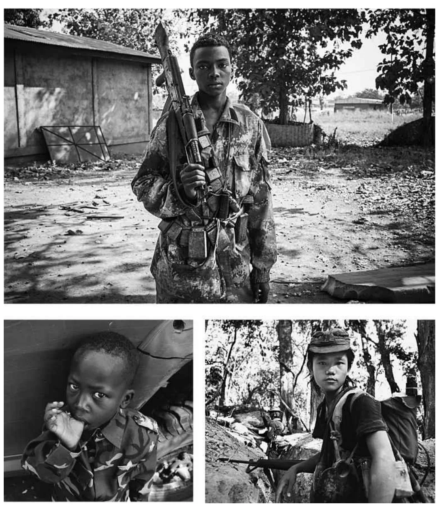
— Khi tôi đang viết những dòng này, có tin về việc giải cứu một vài trong số hơn hai trăm nữ sinh Nigeria bị nhóm khủng bố Boko Haram bắt cóc năm 2014. Những gì các cô gái này phải trải qua thật không thể tưởng tượng nổi—kinh hoàng, đau đớn, lao động cưỡng bức, cưỡng hiếp triền miên, mang thai, bệnh AIDS. Và khi một vài em được trở về nhà, nhiều em bị ruồng bỏ—vì bệnh AIDS, vì niềm tin rằng các em đã bị tẩy não thành những kẻ khủng bố nằm vùng, vì những đứa con sinh ra từ cưỡng hiếp mà các em đang mang. Điều này chẳng báo hiệu điều gì tốt đẹp cho việc các em có thể tránh khỏi cảnh tan vỡ vĩnh viễn.
Chương 11 đã nhấn mạnh hiện tượng giả biệt hóa loài, khi phe Họ bị làm cho có vẻ khác biệt đến mức chẳng còn được coi là con người. Chương 15 xem xét tài năng của những kẻ mị dân trong việc này, đóng khung phe Họ bị căm ghét như côn trùng, loài gặm nhấm, vi khuẩn, khối u ác tính và phân. Điều đó mang lại một kết luận rõ ràng: hãy cảnh giác với những kẻ kích động đám đông đóng khung phe Họ như những thứ để giẫm đạp, xịt thuốc độc hoặc xả xuống bồn cầu. Đơn giản vậy thôi.
Nhưng tuyên truyền giả biệt hóa loài có thể tinh vi hơn nhiều. Vào mùa thu năm 1990, Iraq xâm lược Kuwait, và trong giai đoạn dẫn tới Chiến tranh Vùng Vịnh, người Mỹ đã rùng mình trước một câu chuyện nổi lên. Ngày 10 tháng 10 năm 1990, một cô bé tị nạn mười lăm tuổi từ Kuwait xuất hiện trước Ủy ban Nhân quyền của Quốc hội.23
Cô bé—chỉ cho biết tên riêng là Nayirah—đã làm tình nguyện tại một bệnh viện ở thành phố Kuwait. Cô đầm đìa nước mắt làm chứng rằng binh lính Iraq đã đánh cắp các lồng ấp trẻ sơ sinh để chở về nước làm chiến lợi phẩm, bỏ mặc hơn ba trăm trẻ sinh non đến chết.
Toàn thể chúng ta đều nín thở kinh hoàng—“Lũ người này bỏ mặc trẻ sơ sinh chết trên sàn lạnh; chúng chẳng còn tính người nữa.” Lời khai được khoảng 45 triệu người Mỹ theo dõi trên bản tin, được bảy thượng nghị sĩ trích dẫn khi biện minh cho việc ủng hộ chiến tranh (một nghị quyết được thông qua với chênh lệch năm phiếu), và được George H. W. Bush trích dẫn hơn mười lần khi lập luận ủng hộ sự can thiệp quân sự của Mỹ. Và chúng ta bước vào cuộc chiến với tỷ lệ ủng hộ quyết định của tổng thống lên tới 92 phần trăm. Theo lời Dân biểu John Porter (Đảng Cộng hòa, bang Illinois), người chủ trì ủy ban, sau lời khai của Nayirah: “chúng tôi chưa từng nghe thấy, trong suốt thời gian qua, trong mọi hoàn cảnh, một bản ghi nhận về sự vô nhân đạo, tàn bạo và ác dâm nào như những gì [Nayirah đã] cung cấp cho chúng tôi hôm nay.”
Rất lâu sau đó, sự thật mới vỡ lở rằng câu chuyện lồng ấp là một lời nói dối giả biệt hóa loài. Cô bé tị nạn chẳng phải người tị nạn nào cả. Cô là Nayirah al-Sabah, con gái mười lăm tuổi của đại sứ Kuwait tại Hoa Kỳ. Câu chuyện lồng ấp được bịa đặt bởi công ty quan hệ công chúng Hill + Knowlton, do chính phủ Kuwait thuê với sự giúp đỡ của Porter và đồng chủ tịch, Dân biểu Tom Lantos (Đảng Dân chủ, bang California). Nghiên cứu của công ty này chỉ ra rằng công chúng sẽ đặc biệt nhạy cảm với những câu chuyện về hành động tàn ác nhắm vào trẻ sơ sinh (bạn có nghĩ thế không?), vì vậy câu chuyện lồng ấp đã được thêu dệt, nhân chứng được huấn luyện kỹ càng. Câu chuyện sau đó bị các tổ chức nhân quyền (Ân xá Quốc tế, Tổ chức Theo dõi Nhân quyền) và truyền thông bác bỏ, và lời khai bị rút khỏi Hồ sơ Quốc hội—rất lâu sau khi chiến tranh đã diễn ra.
Hãy cẩn trọng khi kẻ thù của chúng ta bị biến thành thứ gợi nhắc đến giòi bọ, ung thư và phân. Nhưng cũng hãy cảnh giác khi chính trực giác đồng cảm của ta, chứ không phải trực giác căm thù, bị thao túng bởi những kẻ lợi dụng ta cho mục đích riêng của chúng.
Hợp tác
Như đã khám phá ở chương 10, việc lý giải sự tiến hóa của tính hợp tác đặt ra hai thách thức.
Thách thức thứ nhất là vấn đề nền tảng về việc sự hợp tác bắt đầu như thế nào; logic đáng nản lòng của Thế lưỡng nan của Tù nhân cho thấy bất kỳ ai đi bước hợp tác đầu tiên đều tự đặt mình vào thế tụt lại một bước.
Như ta đã thấy, một lời giải khả dĩ liên quan đến các quần thể sáng lập—khi một nhóm nhỏ của quần thể bị cô lập và mức độ quan hệ họ hàng trung bình của nó tăng lên, thúc đẩy sự hợp tác thông qua chọn lọc họ hàng.24 Nếu quần thể sáng lập đó tái nhập vào quần thể chung, xu hướng hợp tác của họ sẽ đánh bại mọi người khác, qua đó lan tỏa sự hợp tác. Một lời giải khác liên quan đến hiệu ứng râu xanh, phiên bản bình dân của chọn lọc họ hàng, nơi một đặc điểm di truyền tạo ra một dấu hiệu dễ nhận biết và một khuynh hướng hợp tác hướng về những người mang dấu hiệu đó. Trong bối cảnh ấy, những kẻ không có râu xanh sẽ bị đánh bại trừ khi chúng cũng tiến hóa tính hợp tác. Như ta đã thấy, hiệu ứng râu xanh xuất hiện ở nhiều loài khác nhau.
Điều này dẫn đến thách thức thứ hai, cụ thể là lý giải tại sao con người lại hợp tác phi thường đến vậy với những người không phải họ hàng. Chúng ta giữ cửa thang máy cho người lạ, nhường nhau đi theo lượt tại ngã tư có biển dừng bốn chiều, xuống xe buýt một cách trật tự. Chúng ta xây dựng những nền văn hóa gồm hàng triệu người chia sẻ chung các quy ước. Điều này đòi hỏi nhiều hơn hiệu ứng sáng lập và râu xanh; trong những năm kể từ khi Hamilton và Axelrod làm cho chiến lược “ăn miếng trả miếng” (tit for tat) trở nên thời thượng, hàng tấn công trình đã khám phá các cơ chế đặc thù của con người nhằm thúc đẩy sự hợp tác. Có rất nhiều cơ chế như vậy.
Cuộc chơi kết thúc mở. Hai cá nhân chơi Thế lưỡng nan của Tù nhân, biết rằng sau một vòng duy nhất, họ sẽ không bao giờ gặp lại nhau. Lý trí quy định rằng bạn hãy phản bội; sẽ chẳng bao giờ có cơ hội gỡ gạc nếu bạn bị tụt lại ở vòng đầu tiên đó. Thế còn hai vòng thì sao? Chà, vòng thứ hai đòi hỏi sự bất hợp tác vì những lý do tương tự như trò chơi một vòng. Nói cách khác, không bao giờ có lý khi hợp tác ở vòng cuối cùng. Do đó, một khi hành vi ở vòng 2 đã được xác định, trò chơi mặc định quay về trò chơi một vòng—nơi chiến lược hợp lý là phản bội. Ba vòng? Cũng thế. Nói cách khác, chơi với số vòng biết trước sẽ tạo thiên lệch chống lại sự hợp tác, và người chơi càng lý trí thì càng nhìn thấu điều này. Chính cuộc chơi kết thúc mở mới thúc đẩy sự hợp tác—số vòng không xác định, tạo ra cái bóng của tương lai, nơi sự trả đũa là khả thi và lợi ích của sự hợp tác lẫn nhau bền vững tích lũy dần theo số lần tương tác gia tăng.25
Đa trò chơi. Hai cá nhân chơi hai trò chơi cùng lúc với nhau (luân phiên các vòng giữa hai trò) trong đó một trò có ngưỡng thiết lập sự hợp tác thấp hơn nhiều so với trò kia. Một khi sự hợp tác được thiết lập trong trò chơi ít khốc liệt hơn đó, sẽ có sự lan tỏa tâm lý của tính hợp tác sang trò kia. Đây là lý do các nhà quản lý ở những văn phòng căng thẳng, cạnh tranh mời các chuyên gia bên ngoài dịu dàng đến dẫn dắt các trò chơi xây dựng lòng tin, hy vọng rằng những đòi hỏi lòng tin ở ngưỡng thấp tại đó sẽ lan tỏa sang đời sống công việc.
Cuộc chơi sổ mở. Đây là nơi người chơi kia có thể thấy liệu trong quá khứ bạn có từng cư xử tệ bạc với người khác hay không. Danh tiếng là một chất xúc tác mạnh mẽ của sự hợp tác. Đó chính là ý nghĩa của một vị thần phán xét đạo đức—cuốn sổ mà cuộc chơi của nó mở ra vĩnh viễn. Như ta đã thấy ở chương 9, từ người săn bắt-hái lượm đến dân thành thị ai cũng buôn chuyện, làm vậy để mở rộng hơn nữa cuốn sổ danh tiếng.26
Cuộc chơi sổ mở làm trung gian cho một kiểu hợp tác tinh vi độc đáo của con người, gọi là “có đi có lại gián tiếp”. Người A giúp người B, người B giúp người C, người C giúp người D... Sự có đi có lại giữa hai cá nhân trong một tương tác khép kín giống như đổi hàng. Nhưng sự có đi có lại gián tiếp, kiểu truyền tay nhau việc tốt, giống như tiền bạc, nơi đồng tiền chung chính là danh tiếng.27
Trừng phạt
Các loài động vật khác không có danh tiếng hay suy ngẫm xem tương tác của chúng có kết thúc mở hay không. Tuy nhiên, việc trừng phạt để thúc đẩy sự hợp tác xuất hiện ở nhiều loài—điều này thể hiện khi một con khỉ đầu chó đực hung hãn bắt nạt một con cái bị nạn nhân và họ hàng của cô ta đuổi ra khỏi bầy một thời gian. Trừng phạt có thể thúc đẩy mạnh mẽ sự hợp tác, nhưng việc thực thi nó ở con người có khả năng là con dao hai lưỡi.
Mọi nền văn hóa đều cho thấy một mức độ sẵn sàng trả giá nào đó để trừng phạt kẻ vi phạm chuẩn mực, và mức độ sẵn sàng cao tương quan với mức độ thân thiện xã hội cao. Một nghiên cứu khảo sát những người dân nông thôn Ethiopia sống bằng nghề bán than làm từ gỗ rừng địa phương—một kịch bản kinh điển về bi kịch của tài sản chung: chẳng ai có khả năng tự phát hạn chế chặt gỗ để giữ cho khu rừng khỏe mạnh. Nghiên cứu chỉ ra rằng những ngôi làng có mức độ sẵn sàng trung bình cao trong việc thực hiện trừng phạt tốn kém ở một trò chơi kinh tế cũng chính là những ngôi làng có nhiều đội tuần tra ngăn chặn chặt phá cây quá mức nhất và có những khu rừng khỏe mạnh nhất. Và như đã thấy ở chương 9, các nền văn hóa có những vị thần trừng phạt hành vi vi phạm chuẩn mực thường thân thiện xã hội một cách bất thường.28
Một rắc rối trong việc trừng phạt tốn kém chính là cái giá—nguy cơ chi phí giám sát và trừng phạt vi phạm có thể vượt quá lợi ích của sự hợp tác được tạo ra. Một giải pháp là giảm giám sát sau những quãng thời gian hợp tác dài—nói cách khác, là tin tưởng. Ví dụ, có lẽ rất ít người Amish mua hệ thống an ninh quét võng mạc đắt tiền cho nhà mình.29
Một rắc rối khác liên quan đến việc ai là người trừng phạt. Ở các loài khác, đó thường là nạn nhân, bên thứ hai. Theo định nghĩa, sự trừng phạt trong các trò chơi hai người ở con người (ví dụ: Trò chơi Tối hậu thư) luôn do bên thứ hai thực hiện. Trong bối cảnh đó, người trừng phạt từ bỏ phần chia ít ỏi được đề nghị, (a) với hy vọng gặt hái sự thỏa mãn từ nội tạng khi tước đoạt phần chia lớn hơn của bên thứ nhất (và như đã thấy ở chương trước, đó là một động lực lớn của sự trừng phạt, được tiếp sức bởi hạch hạnh nhân và vỏ não thùy đảo); (b) trong nỗ lực uốn nắn bên thứ nhất đưa ra những đề nghị công bằng hơn cho bên thứ hai trong tương lai; hoặc (c) như một hành động vị tha, hy vọng uốn nắn bên thứ nhất trở nên tử tế hơn với bất kỳ ai họ chơi cùng tiếp theo. Điều này rất phức tạp đối với bên thứ hai, phải cân bằng giữa chi phí và lợi ích, giữa con tim và lý trí, giữa con chim trong tay và hai con trong bụi rậm. Nó cũng có thể dẫn đến việc bên thứ nhất bị xúc phạm bởi sự từ chối và trở nên càng ít hợp tác hơn sau đó—một kết cục trong một số kịch bản trò chơi.30
Con người thúc đẩy sự hợp tác một cách độc đáo và rất hiệu quả thông qua sự trừng phạt của bên thứ ba do những người ngoài cuộc khách quan thực hiện. Tuy nhiên, việc trừng phạt như vậy có thể tốn kém cho bên thứ ba, nghĩa là có thách thức tiến hóa không chỉ trong việc khởi phát sự hợp tác mà còn trong việc khởi phát sự trừng phạt vị tha của bên thứ ba.31
Câu trả lời, như con người đã lặp đi lặp lại nhiều lần, là thêm các tầng lớp. Phát triển sự trừng phạt thứ cấp, trừng phạt kẻ không thực hiện trừng phạt của bên thứ ba—thế giới của các quy tắc danh dự, nơi bạn bị phạt nếu không báo cáo một vi phạm. Một cách khác là tưởng thưởng cho những người trừng phạt bên thứ ba—con người kiếm sống với tư cách cảnh sát và thẩm phán. Hơn nữa, công trình lý thuyết và thực nghiệm gần đây cho thấy việc trở thành một người trừng phạt bên thứ ba lộ liễu khiến mọi người tin tưởng bạn. Nhưng ai giám sát những người trừng phạt bên thứ ba? Đây là lúc bạn khiến mọi người cùng chia sẻ và hạ thấp chi phí bằng cách đẩy tính xã hội lên mức tối đa—chi phí được mọi người gánh vác, và những kẻ ăn không ngồi rồi bị trừng phạt (ví dụ: chúng ta đóng thuế và trừng phạt kẻ trốn thuế). Khi các bộ phận chuyển động được cân bằng, bạn tạo ra những mức độ hợp tác phi thường.32
Các bộ phận chuyển động đó đã được kiểm tra trong một bài báo hấp dẫn trên tạp chí Science năm 2010. Các tác giả nghiên cứu 113.000 người tham gia trực tuyến, mỗi người mua một món đồ (một bức ảnh lưu niệm) dưới một trong các điều kiện sau:33 a. Có thể mua với giá cố định. (Đây là điều kiện đối chứng.) b. Có thể trả bất cứ giá nào họ muốn; doanh số tăng vọt nhưng mọi người có xu hướng trả những số tiền nhỏ xíu, đẩy “cửa hàng” vào cảnh thua lỗ. c. Bị tính mức giá ban đầu, với thông tin rằng công ty trích X phần trăm doanh thu làm từ thiện; doanh số tăng, nhưng ít hơn X phần trăm, và cửa hàng bị lỗ. d. Có thể trả bất cứ giá nào họ muốn, với một nửa số tiền đó được chuyển cho tổ chức từ thiện. Điều này thúc đẩy cả doanh số lẫn mức giá tự nguyện trả, mang lại lợi nhuận cho cửa hàng và một khoản đóng góp từ thiện lớn.
Nói cách khác, dù bằng chứng về trách nhiệm xã hội của doanh nghiệp (kịch bản C) giúp tăng doanh số đôi chút, nó hiệu quả hơn nhiều khi cá nhân và doanh nghiệp cùng chia sẻ trách nhiệm xã hội và cá nhân tự quyết định số tiền quyên góp.
Chọn bạn đồng hành
Như ta đã thấy, những người hợp tác đánh bại những người bất hợp tác đông đảo hơn chừng nào những người hợp tác có thể tìm thấy nhau. Đây là logic đằng sau việc bộ râu xanh giúp dễ tìm thấy một tâm hồn đồng điệu (nếu không phải họ hàng). Do đó, khi yếu tố đó được đưa vào một trò chơi (cùng khả năng từ chối chơi với ai đó), sự hợp tác tăng vọt, và rẻ hơn so với việc trừng phạt kẻ phản bội.34
— Những phát hiện này hé lộ vô số con đường lý thuyết để nuôi dưỡng sự hợp tác, và đều có bản tương đương ngoài đời thực; hơn nữa, chúng ta đã học được rất nhiều về việc cách nào hiệu quả nhất khi nào. Đây là cách chúng ta tiến hóa để cùng nhau dựng nhà kho cho hàng xóm, cấy và gặt vụ lúa cho cả làng, hay phối hợp các thành viên ban nhạc diễu hành để xếp thành hình linh vật của trường.
Và, ồ vâng, để nhắc lại một ý tưởng đã nêu trước đó, “hợp tác” là một thuật ngữ trung tính về giá trị. Đôi khi cần cả một ngôi làng hợp sức để cướp phá ngôi làng bên cạnh.
Hòa giải, và những thứ không đồng nghĩa với nó
“Thế là tôi bắt được một con khỉ colobus và đang ăn, đến đoạn ngon nhất, thì gã này đi tới, bắt đầu năn nỉ xin một ít. Chuyện này làm tôi phát cáu nên tôi gầm gừ với hắn. Thay vì hiểu ý, hắn lao tới, tóm lấy tay con khỉ, bắt đầu giằng—thế là tôi cắn vào vai hắn. Hắn chuồn lẹ và ngồi ở đầu bên kia khoảng trống, quay lưng lại với tôi.
“Khi bình tĩnh lại, tôi suy nghĩ một chút. Thành thật mà nói, lẽ ra tôi nên chia cho hắn ít đồ ăn. Và dù hắn chắc chắn đã vượt quá giới hạn khi giằng lấy, lẽ ra tôi chỉ nên cắn cảnh cáo chứ không phải cắn thật. Nên tôi thấy hơi áy náy. Vả lại, chúng tôi phối hợp rất ăn ý khi đi tuần tra—chắc là nên giải quyết cho ổn thỏa.
“Thế là tôi cầm con khỉ, ngồi gần hắn. Cả hai đều sượng sùng—hắn không nhìn tôi, tôi giả vờ như có cái gai giữa các ngón chân. Nhưng cuối cùng tôi đưa cho hắn ít thịt, hắn bắt chấy rận cho tôi một chút. Cả chuyện đó thật ngớ ngẩn, lẽ ra ngay từ đầu chúng tôi nên làm thế.”
Nếu bạn là tinh tinh, việc hòa giải rất dễ dàng một khi nhịp tim của bạn trở lại bình thường. Đôi khi với chúng ta cũng vậy—chạm vào vai bạn, nhăn mặt tự giễu, nói: “Này, coi kìa, lúc nãy tớ hơi quá đáng—” và họ ngắt lời bạn, nói: “Không, không, tại tớ chứ. Lẽ ra tớ không nên...” và mọi chuyện lại ổn thỏa.
Dễ dàng. Thế còn khi mọi người cố gắng hàn gắn sau khi dân tộc của bạn đã tàn sát ba phần tư dân số của họ, hoặc sau khi họ đến như thực dân, cướp đất của bạn và ép bạn sống trong những “khu tự trị” ổ chuột suốt hàng thập kỷ thì sao? Rắc rối hơn nhiều.
Chúng ta là loài duy nhất thể chế hóa sự hòa giải và vật lộn với “sự thật”, “lời xin lỗi”, “sự tha thứ”, “bồi thường”, “ân xá” và “quên lãng”.
Đỉnh cao của sự phức tạp được thể chế hóa là ủy ban sự thật và hòa giải (TRC). Ủy ban đầu tiên xuất hiện vào những năm 1980, và chúng đã tỏ ra hữu ích một cách đáng buồn kể từ đó, xuất hiện ở, chẳng hạn, Bolivia, Canada, Úc, Nepal, Rwanda và Ba Lan. Một số TRC diễn ra ở các quốc gia ổn định (Canada và Úc) nhằm đối mặt với lịch sử ngược đãi người bản địa lâu dài của họ. Tuy nhiên, hầu hết ra đời sau khi một quốc gia bước ra từ một quá trình chuyển đổi đẫm máu, chia rẽ—một nhà độc tài bị lật đổ, một cuộc nội chiến được dàn xếp, một cuộc diệt chủng bị chặn đứng. Nhận thức phổ biến là mục đích của chúng là để những kẻ gây ra bạo ngược thú tội, bày tỏ sự hối hận và cầu xin sự tha thứ từ các nạn nhân, những người sau đó sẽ ban phát sự tha thứ, dẫn đến những cái ôm đẫm nước mắt giữa hai bên.
Nhưng thay vào đó, các TRC thường là những bài tập về chủ nghĩa thực dụng, nơi thủ phạm về cơ bản nói: “Đây là những gì tôi đã làm, và tôi thề sẽ không bao giờ làm hại dân tộc các bạn nữa,” và các nạn nhân về cơ bản nói: “Được thôi, chúng tôi thề sẽ không tìm cách trả thù ngoài pháp luật.” Một thành tựu thường mang tầm vóc vĩ đại, dù kém ấm lòng hơn.
Có lẽ TRC được nghiên cứu kỹ lưỡng nhất là của Nam Phi sau sự sụp đổ của chế độ apartheid. Nó có tính chính danh đạo đức to lớn khi được Desmond Tutu giám sát, và càng củng cố tính chính danh khi dù tập trung áp đảo vào hành động của người da trắng, nó cũng xem xét các hành động tàn bạo của những chiến binh giải phóng châu Phi. Các phiên điều trần diễn ra công khai và bao gồm việc các nạn nhân được kể lại câu chuyện của mình. Hơn sáu nghìn thủ phạm đã làm chứng và nộp đơn xin ân xá; 13 phần trăm được chấp thuận.
Điều gì đã xảy ra với những kịch bản tha thứ đẫm nước mắt? Thế còn việc thủ phạm ít nhất phải tỏ ra hối hận vì hành động của mình thì sao? Điều đó không bắt buộc, và rất ít người làm vậy. Mục tiêu không phải là cải hóa những cá nhân đó; mà là tăng cơ hội để quốc gia tan nát có thể vận hành trở lại. Trong các nghiên cứu theo dõi của Trung tâm Nghiên cứu Bạo lực và Hòa giải Nam Phi, những nạn nhân tham gia thường cảm thấy “rằng TRC thành công ở cấp độ quốc gia hơn là cấp độ địa phương.” Nhiều người phẫn nộ vì không có lời xin lỗi, không có bồi thường, vì nhiều thủ phạm vẫn giữ nguyên công việc của họ. Thú vị thay, vang vọng lại chương 15, nhiều người cũng tức giận không kém về những thay đổi mang tính biểu tượng đã không diễn ra—không chỉ tên sát nhân này vẫn làm cảnh sát, mà vẫn còn ngày lễ/tượng đài/tên đường tôn vinh chế độ apartheid. Đại đa số người Nam Phi da đen (nhưng không phải da trắng) coi TRC là công bằng và thành công, và nó đã đồng hành cùng quá trình chuyển đổi kỳ diệu sang tự do của Nam Phi, thay vì rơi vào nội chiến. Như vậy, các TRC cho thấy sự khác biệt giữa hòa giải và những thứ như hối hận và tha thứ.*35
Như mọi bậc cha mẹ đều biết, một lời xin lỗi thiếu thành thật lộ liễu chẳng giải quyết được gì và thậm chí có thể làm mọi thứ tệ hơn. Nhưng sự hối hận sâu sắc thì khác. Tạp chí The New Yorker kể câu chuyện về Lu Lobello, một cựu binh Mỹ trong Chiến tranh Iraq đã vô tình giết chết ba thành viên của một gia đình, thiệt hại ngoài ý muốn trong một cuộc đọ súng; bị ám ảnh bởi điều đó, anh đã dành chín năm lần tìm những người sống sót để xin lỗi. Hoặc hãy nghĩ đến Hazel Bryan Massery, thiếu nữ da trắng nhe răng giận dữ ở trung tâm bức ảnh mang tính biểu tượng năm 1957 của phong trào dân quyền về Elizabeth Eckford khi cô cố gắng bước vào Trường Trung học Trung tâm Little Rock. Vài năm sau, Massery đã liên lạc với Eckford để xin lỗi.36
Lời xin lỗi có “hiệu quả” không? Còn tùy. Một vấn đề là người ta xin lỗi vì điều gì, trải dài từ chuyện cụ thể (“Tôi xin lỗi vì đã làm hỏng đồ chơi của bạn”) đến chuyện toàn cầu và mang tính bản chất (“Tôi xin lỗi vì đã coi dân tộc bạn không phải con người trọn vẹn”). Một vấn đề khác là người xin lỗi dự định làm gì với sự hối hận của họ. Và còn có cấu trúc tâm lý của người nhận lời xin lỗi. Các nghiên cứu cho thấy (a) những nạn nhân hướng về sự vận hành của một hệ thống tập thể phản hồi tốt nhất với những lời xin lỗi nhấn mạnh sự thất bại của hệ thống đó (“Tôi xin lỗi, cảnh sát chúng tôi đáng lẽ phải bảo vệ, chứ không phải phạm luật”); (b) những nạn nhân hướng về các mối quan hệ nhất phản hồi tốt nhất với những lời xin lỗi mang tính đồng cảm (“Tôi xin lỗi vì nỗi đau tôi đã gây ra cho bà, vì đã cướp đi con trai bà”); và (c) những nạn nhân tự chủ và độc lập nhất phản hồi tốt nhất với những lời xin lỗi đi kèm đề nghị bồi thường. Cũng có vấn đề về việc ai là người xin lỗi. Việc năm 1993 Bill Clinton xin lỗi người Mỹ gốc Nhật vì việc giam giữ họ trong Thế chiến II có ý nghĩa gì? Dù lời xin lỗi đó đáng khen ngợi và đi kèm tiền bồi thường, liệu Clinton có thể thay mặt cho FDR được không?37
Vấn đề bồi thường vô cùng phức tạp. Ở một thái cực, bồi thường có thể là bằng chứng tối hậu của sự chân thành. Đây là trọng tâm của phong trào đòi bồi thường chế độ nô lệ—quá nhiều sự trỗi dậy thành đặc quyền kinh tế của nước Mỹ được xây dựng trên chế độ nô lệ, và quá nhiều lợi ích sau đó của nền kinh tế thành công đã bị tước đoạt một cách có hệ thống khỏi tay người Mỹ gốc Phi, đến nỗi cần phải có sự bồi thường cho hậu duệ của những nô lệ. Ở thái cực kia, sự bồi thường nhằm mục đích mua lấy sự tha thứ lại gây xúc phạm—đây là lý lẽ đằng sau việc nhà nước Israel non trẻ từ chối nhận bồi thường từ Đức, trừ khi nó đi kèm với sự hối hận thỏa đáng.
Ở cuối những bước này có thể nảy sinh một trong những điều kỳ lạ nhất mà con người làm—chúng ta tha thứ.38 Trước hết, tha thứ không phải là quên lãng. Nếu không vì lý do nào khác, điều đó cũng khó xảy ra về mặt sinh học thần kinh. Một con chuột học cách liên kết tiếng chuông với cú sốc điện và đông cứng người khi nghe thấy nó. Khi ngày hôm sau tiếng chuông lặp đi lặp lại mà không đi kèm cú sốc, khiến hành vi đông cứng bị “dập tắt”, dấu vết ký ức của việc học đó không hề bốc hơi. Thay vào đó nó bị phủ lên bởi một bài học mới hơn—“Hôm nay tiếng chuông không phải tin xấu.” Làm bằng chứng, giả sử ngày sau đó nữa, tiếng chuông lại báo hiệu cú sốc. Nếu bài học ban đầu “chuông = sốc” đã bị xóa sạch, hôm nay sẽ mất nhiều thời gian để học lại mối liên kết đó ngang với lần đầu tiên. Thay vào đó có sự tái tiếp thu nhanh chóng: “chuông = sốc nữa rồi.” Tha thứ cho ai đó không có nghĩa là bạn đã quên những gì họ làm.
Có một nhóm nhỏ các nạn nhân tuyên bố đã tha thứ cho thủ phạm, đã từ bỏ cơn giận và khao khát trừng phạt của mình. Tôi đưa từ “tuyên bố” vào không phải để ngụ ý sự hoài nghi mà để chỉ ra rằng sự tha thứ là một trạng thái tự báo cáo có thể được tuyên bố nhưng không thể chứng minh.
Sự tha thứ có thể xảy ra như một mệnh lệnh tôn giáo. Trong vụ thảm sát nhà thờ Charleston tháng 6 năm 2015, kẻ theo chủ nghĩa da trắng thượng đẳng Dylann Roof đã sát hại chín giáo dân tại Nhà thờ Giám lý Giám mục Châu Phi Emanuel. Hai ngày sau, tại phiên luận tội Roof, thật sững sờ, các thành viên gia đình của những người đã khuất đã có mặt ở đó để tha thứ cho hắn và cầu nguyện cho linh hồn hắn.39
Sự tha thứ có thể đòi hỏi sự tái đánh giá nhận thức phi thường. Hãy xem xét trường hợp của Jennifer Thompson-Cannino và Ronald Cotton.40 Năm 1984 Thompson-Cannino bị một kẻ lạ mặt cưỡng hiếp. Trong buổi nhận diện của cảnh sát, cô đã chỉ mặt Cotton với sự chắc chắn tuyệt đối; dù kêu oan, anh vẫn bị kết tội và lĩnh án tù chung thân. Trong những năm sau đó, bạn bè rụt rè tự hỏi liệu giờ cô có thể bỏ lại cơn ác mộng phía sau chưa. “Còn khuya tôi mới làm được” sẽ là câu trả lời của cô. Cô bị thiêu đốt bởi lòng căm thù dành cho Cotton, bởi khao khát làm hại anh. Và rồi, hơn mười năm trong bản án tù của anh, bằng chứng ADN đã minh oan cho Cotton. Một người đàn ông khác đã làm việc đó; hắn đang bị giam trong cùng nhà tù với Cotton vì những vụ cưỡng hiếp khác và đã khoe khoang về việc thoát tội trong vụ này. Thompson-Cannino đã nhận diện nhầm người và thuyết phục được bồi thẩm đoàn. Vấn đề căm thù hay tha thứ giờ đã đảo ngược sang phía bên kia.
Khi cuối cùng họ gặp nhau, sau khi Cotton được trả tự do và ân xá, Thompson-Cannino nói: “Nếu tôi dành từng phút của từng giờ trong từng ngày suốt phần đời còn lại để nói với anh rằng tôi xin lỗi, liệu anh có bao giờ tha thứ cho tôi không?” Và Cotton đáp: “Jennifer, tôi đã tha thứ cho cô từ nhiều năm trước rồi.” Khả năng làm được điều đó của anh đòi hỏi sự tái đánh giá sâu sắc: “Việc tha thứ cho Jennifer vì đã chỉ mặt tôi trong buổi nhận diện đó là kẻ cưỡng hiếp cô ấy mất ít thời gian hơn mọi người nghĩ. Tôi biết cô ấy là nạn nhân và đang đau đớn tột cùng... Chúng tôi là nạn nhân của cùng một sự bất công bởi cùng một kẻ, và điều này cho chúng tôi một mảnh đất chung để đứng.” Một sự tái đánh giá hoàn toàn đã biến họ thành Chúng ta trong thân phận nạn nhân của mình. Hai người giờ đây cùng đi diễn thuyết về nhu cầu cải cách tư pháp.
Suy cho cùng, sự tha thứ thường chỉ vì một điều—“Điều này là cho tôi, không phải cho anh.” Căm thù rất kiệt sức; tha thứ, hoặc thậm chí chỉ là thờ ơ, mang lại sự giải thoát. Trích lời Booker T. Washington: “Tôi sẽ không cho phép bất kỳ người nào hạ thấp tâm hồn mình bằng cách khiến tôi căm ghét họ.” Hạ thấp, bóp méo và thiêu rụi. Sự tha thứ dường như ít nhất cũng có phần tốt cho sức khỏe của bạn—những nạn nhân thể hiện sự tha thứ tự phát, hoặc đã trải qua liệu pháp tha thứ (đối lập với “liệu pháp công nhận cơn giận”) cho thấy sự cải thiện về sức khỏe tổng thể, chức năng tim mạch, và các triệu chứng trầm cảm, lo âu cũng như PTSD. Chương 14 đã khám phá cách lòng trắc ẩn dễ dàng, có lẽ tất yếu, chứa đựng những yếu tố tư lợi. Việc ban phát sự tha thứ đầy trắc ẩn chính là hình mẫu thu nhỏ của điều này.41
Chúng ta vừa tập trung vào sự tha thứ, lời xin lỗi, bồi thường, hòa giải, và mức độ mà các TRC hướng về hòa giải hơn là tha thứ. Thế còn phần “sự thật” thì sao? Nó thúc đẩy quá trình chữa lành một cách to lớn. Trong các TRC, việc thủ phạm tuôn ra sự thật—chi tiết, thấu đáo, không né tránh và công khai—là ưu tiên cao nhất của các nạn nhân. Đó là nhu cầu được biết chuyện gì đã xảy ra; là bắt kẻ ác phải thốt ra những lời đó; là để cho thế giới thấy: “Hãy nhìn những gì chúng đã làm với chúng tôi.”
Nhận diện những phi lý của chúng ta
Bất chấp tuyên bố của một số nhà kinh tế học, chúng ta không phải là những cỗ máy tối ưu hóa lý trí. Chúng ta hào phóng trong các trò chơi hơn logic dự đoán; chúng ta quyết định ai đó có tội dựa trên suy luận nhưng sau đó quyết định hình phạt của họ dựa trên cảm xúc; khoảng một nửa chúng ta đưa ra quyết định khác nhau về việc hy sinh một người để cứu năm người, tùy thuộc vào việc nó liên quan đến đẩy một người hay kéo một cần gạt; chúng ta dễ dàng cưỡng lại việc gian lận trong những hoàn cảnh không ai biết; chúng ta đưa ra những quyết định đạo đức mạnh mẽ mà không thể giải thích tại sao. Do đó, việc nhận diện những đặc điểm có hệ thống trong sự phi lý của chúng ta là một ý tưởng hay.
Đôi khi chúng ta nhắm tới việc loại bỏ những phi lý này. Có lẽ điều cơ bản nhất là sự kháng cự bản năng phổ biến trước một sự thật đơn giản—bạn không ký hòa ước với bạn bè; việc bạn căm ghét cay đắng những người mà bạn sắp bắt tay là điều dễ hiểu, và điều đó không thể là trở ngại cho việc làm vậy. Một địa hạt khác liên quan đến sự chênh lệch giữa các quan điểm có ý thức của chúng ta và những gì thiên kiến ngầm dẫn dắt ta làm. Như ta đã thấy, ranh giới Chúng ta/Họ có thể được làm mềm đi khi các thiên kiến ngầm được đưa ra ánh sáng. Làm vậy không nhất thiết xóa bỏ thiên kiến đó—xét cho cùng, bạn không thể dễ dàng dùng lý trí để tự thuyết phục mình thoát khỏi một niềm tin mà ban đầu bạn vốn không dùng lý trí để tin vào. Thay vào đó, việc phơi bày các thiên kiến ngầm chỉ ra nơi cần tập trung giám sát để giảm thiểu tác động của chúng. Ý niệm này có thể áp dụng cho mọi địa hạt hành vi của chúng ta vốn bị định hình bởi thứ gì đó ngầm ẩn, tiềm thức, nội cảm, vô thức, ngầm ngầm—và nơi mà sau đó ta hợp lý hóa hậu kiểm lập trường của mình. Ví dụ, mọi thẩm phán nên biết rằng các phán quyết tư pháp nhạy cảm với việc đã bao lâu rồi họ chưa ăn.
Một ví dụ khác cần đề phòng là tiềm năng lạc quan phi lý của con người. Ví dụ, dù mọi người có thể đánh giá chính xác rủi ro của một hành vi, họ lại có xu hướng lạc quan bóp méo khi đánh giá rủi ro cho chính mình—“Chà, chuyện đó không thể xảy ra với mình đâu.” Sự lạc quan phi lý có thể rất tuyệt vời; đó là lý do chỉ khoảng 15 phần trăm thay vì 99 phần trăm con người bị trầm cảm lâm sàng. Nhưng như nhà tâm lý học đoạt giải Nobel Daniel Kahneman đã nhấn mạnh, sự lạc quan phi lý trong chiến tranh là thảm họa. Điều này có thể trải dài từ niềm xác tín lạc quan về mặt thần học rằng Chúa đứng về phía bạn cho đến xu hướng của các chiến lược gia quân sự đánh giá quá cao năng lực của phe mình và đánh giá quá thấp năng lực của đối phương—“dễ như ăn bánh, toàn lực tiến lên” trở thành kết luận hợp lý.42
Một địa hạt phi lý cuối cùng phải được nhận diện liên quan đến “các giá trị thiêng liêng” ở chương 15, nơi những hành động thuần túy mang tính biểu tượng có thể nặng ký hơn những nhượng bộ vật chất thực dụng. Lý trí có thể là chìa khóa để thiết lập hòa bình, nhưng tầm quan trọng phi lý của các giá trị thiêng liêng mới là chìa khóa để thiết lập hòa bình lâu dài.
Sự bất tài và nỗi ác cảm của chúng ta đối với việc giết chóc
Máy quay video ngày nay phổ biến đến mức khiến “quyền riêng tư” trở thành một hiện tượng bị đe dọa. Một hệ quả của sự phổ biến như vậy là các nhà khoa học có thể tò mò quan sát theo những cách mới. Điều này đã mang lại một phát hiện thú vị.
Nó liên quan đến các vụ bạo loạn tại sân vận động bóng đá—“côn đồ bóng đá”, những trận hỗn chiến giữa các nhóm sắc tộc hay dân tộc chủ nghĩa, cổ động viên cuồng nhiệt của mỗi đội, hoặc thường là bọn đầu trọc cực hữu lao vào nhau. Đoạn phim về những sự kiện như vậy cho thấy rất ít người thực sự đánh nhau. Hầu hết đứng ngoài lề xem hoặc chạy loăng quăng như những con gà mất đầu hoảng loạn. Trong số những kẻ đánh nhau, hầu hết tung ra một hai cú đấm vô hại trước khi phát hiện ra rằng đấm làm tay mình bị đau. Những kẻ thực sự chiến đấu chỉ là một nhóm nhỏ xíu. Như một nhà nghiên cứu đã phát biểu: “con người rất kém trong bạo lực [cận chiến, tay đôi], ngay cả khi nền văn minh giúp chúng ta giỏi hơn một chút ở khoản đó.”43
Thậm chí thú vị hơn là bằng chứng về sự ức chế mạnh mẽ của chúng ta trước việc gây tổn hại nghiêm trọng cho ai đó ở cự ly gần.
Công trình khám phá kinh điển về điều này là cuốn sách năm 1995 On Killing: The Psychological Cost of Learning to Kill in War and Society (Về việc giết chóc: Cái giá tâm lý của việc học cách giết người trong chiến tranh và xã hội), của David Grossman, giáo sư khoa học quân sự và đại tá Lục quân Hoa Kỳ đã nghỉ hưu.44
Ông đóng khung cuốn sách quanh một điều được ghi nhận sau Trận Gettysburg. Trong số gần 27.000 khẩu súng hỏa mai nạp đạn từng phát được thu hồi từ chiến trường, gần 24.000 khẩu ở trong tình trạng đã nạp đạn nhưng chưa bắn; 12.000 khẩu được nạp đạn nhiều lần, 6.000 khẩu được nạp từ ba đến mười lần. Rất nhiều người lính đứng đó nghĩ: “Mình sắp bắn đây, ừ đúng rồi, hừm, có lẽ mình nên nạp lại đạn cho súng trước đã.” Những vũ khí này được thu hồi từ nơi ác liệt nhất của chiến trường, từ những người đàn ông mà mạng sống đang gặp nguy hiểm trong lúc họ loay hoay nạp đạn. Tại Gettysburg, hầu hết cái chết là do pháo binh gây ra, chứ không phải bộ binh trên mặt đất. Trong sức nóng của trận chiến điên cuồng, hầu hết đàn ông sẽ nạp đạn, chăm sóc người bị thương, hét ra lệnh, bỏ chạy hoặc lang thang trong cơn choáng váng.
Tương tự, trong Thế chiến II chỉ có 15 đến 20 phần trăm lính súng trường từng bóp cò. Số còn lại? Chạy đưa tin, giúp đồng đội nạp đạn, chăm sóc bạn bè—nhưng không chĩa súng vào ai đó ở gần và bóp cò.
Các nhà tâm lý học chiến tranh nhấn mạnh cách mà, trong sức nóng của trận chiến, người ta không bắn một con người khác vì lòng căm thù hay sự phục tùng, hoặc thậm chí vì biết rằng kẻ thù này đang cố giết mình. Thay vào đó, đó là mối quan hệ họ hàng giả của những người anh em cùng chiến tuyến—để bảo vệ đồng đội của bạn, để không làm những người bên cạnh bạn thất vọng. Nhưng ngoài những động lực đó, con người cho thấy một nỗi ác cảm tự nhiên mạnh mẽ đối với việc giết chóc ở cự ly gần. Sự kháng cự lớn nhất là chống lại cận chiến bằng dao hoặc lưỡi lê. Tiếp theo là bắn cự ly ngắn bằng súng lục, rồi bắn tầm xa, cho đến thứ dễ dàng nhất, đó là bom và pháo binh.
Sự kháng cự này có thể được điều chỉnh về mặt tâm lý. Sẽ dễ dàng hơn khi bạn không nhắm vào một cá nhân xác định—ném một quả lựu đạn vào một đám đông dễ hơn bắn một người. Giết chóc với tư cách cá nhân khó hơn trong một nhóm—trong khi chỉ một nhóm nhỏ lính súng trường Thế chiến II nổ súng, gần như tất cả các vũ khí do một tổ vận hành (ví dụ: súng máy) đều được khai hỏa. Trách nhiệm được pha loãng, giống như khi một đội xử bắn biết rằng một người trong số họ nhận được đạn mã tử, cho phép mọi tay súng tự nhủ rằng có thể mình không phải người thực sự giết ai đó.
Tiền đề của Grossman được ủng hộ bởi một điều mới mẻ và gây sửng sốt. Kể từ khi biến đổi từ “mệt mỏi chiến trường” hay “sốc đạn pháo” thành một bệnh lý tâm thần chính thức, PTSD chiến đấu luôn được đóng khung là kết quả của nỗi kinh hoàng thuần túy khi bị tấn công, khi ai đó cố giết bạn và những người xung quanh. Như ta đã thấy, đó là căn bệnh mà sự điều kiện hóa nỗi sợ hãi bị khái quát hóa quá mức và mang tính bệnh lý, một hạch hạnh nhân phình to, tăng phản ứng quá mức và tin chắc rằng bạn không bao giờ an toàn. Nhưng hãy xem xét các phi công điều khiển máy bay không người lái (drone)—những người lính ngồi trong phòng điều khiển ở Hoa Kỳ, lái drone ở phía bên kia hành tinh. Họ không gặp nguy hiểm. Thế nhưng tỷ lệ mắc PTSD của họ cao ngang ngửa những người lính thực sự “trong” cuộc chiến.
Tại sao? Các phi công drone làm một việc kinh hoàng và kỳ lạ, một kiểu giết chóc cự ly gần, thân mật chưa từng có trong lịch sử, sử dụng công nghệ hình ảnh có chất lượng phi thường. Một mục tiêu được xác định, và một chiếc drone có thể lơ lửng vô hình trên bầu trời cao phía trên ngôi nhà của người đó suốt nhiều tuần, những người điều khiển drone luôn theo dõi, chờ đợi, chẳng hạn, một cuộc tụ họp của các mục tiêu trong nhà. Bạn quan sát mục tiêu đi lại, ăn tối, chợp mắt trên hiên nhà, chơi đùa với lũ trẻ. Và rồi lệnh khai hỏa được đưa ra, phóng tên lửa Hellfire ở tốc độ siêu thanh.
Đây là lời một phi công drone, mô tả “lần giết” đầu tiên của mình—ba người Afghanistan bị nhắm mục tiêu từ căn cứ không quân của anh ở Nevada. Tên lửa đã trúng đích, và anh theo dõi qua camera hồng ngoại, vốn truyền tín hiệu nhiệt:
Khói tan đi, và có những mảnh thi thể của hai gã quanh hố bom. Và có gã này ở đây, mất chân phải từ trên đầu gối. Hắn đang ôm lấy nó, lăn lộn xung quanh, và máu phun ra từ chân hắn, bắn xuống đất, và nó nóng. Máu hắn nóng. Nhưng khi chạm đất, nó bắt đầu nguội đi; vũng máu nguội rất nhanh. Hắn mất một lúc lâu mới chết. Tôi chỉ nhìn hắn. Tôi nhìn hắn biến thành cùng màu với mặt đất nơi hắn nằm.45
Nhưng vẫn còn nữa. Các phi công chờ xem ai đến thu dọn thi thể, ai đến dự đám tang, sẵn sàng có thể tung ra một đòn không kích nữa. Hoặc trong những hoàn cảnh khác, phi công có thể chứng kiến một đoàn xe Mỹ tiến gần đến bẫy mìn IED ven đường mà không thể cảnh báo họ, hoặc chứng kiến quân nổi dậy hành quyết một dân thường đang gào thét cầu xin lòng thương xót.
Người phi công trên mới hai mươi mốt tuổi khi thực hiện vụ giết người đầu tiên đó; rốt cuộc anh ta tích lũy được 1.626 vụ giết người qua drone.* Không có nguy hiểm cá nhân, một con mắt toàn hiện trên bầu trời. Anh ta có thể hết ca làm và ghé mua một chiếc bánh rán trên đường về nhà. Tuy nhiên, anh ta và nhiều phi công drone đồng nghiệp lại gục ngã trước chứng PTSD tàn khốc.
Sau khi đọc Grossman, lời giải thích thật đơn giản. Sang chấn sâu sắc nhất không phải là nỗi sợ bị giết. Mà là việc thực hiện hành vi giết chóc cận cảnh, cá thể hóa, theo dõi một người suốt nhiều tuần rồi biến anh ta thành màu của mặt đất. Grossman trích dẫn rằng trong Thế chiến II, tỷ lệ suy sụp tâm thần ở thủy thủ và quân y rất thấp—những người gặp nguy hiểm ngang ngửa lính bộ binh nhưng giết chóc một cách phi cá nhân hoặc không giết ai cả.
Quân đội huấn luyện binh lính vượt qua sự ức chế đối với việc giết chóc, và Grossman lưu ý rằng việc huấn luyện ngày càng hiệu quả hơn—học viên không còn bắn vào bia hồng tâm nữa; thay vào đó là các tình huống bắn nhanh với những hình nhân thực tế ảo di động lao về phía bạn, nơi việc bắn trở thành phản xạ. Trong Chiến tranh Triều Tiên, 55 phần trăm lính súng trường Mỹ nổ súng; trong Chiến tranh Việt Nam, con số này là hơn 90 phần trăm. Và đó là trước khi xuất hiện các trò chơi điện tử bạo lực gây chai sạn cảm xúc.
Có lẽ chẳng bao lâu nữa sẽ có những kiểu chiến tranh hoàn toàn khác. Có lẽ chính những chiếc drone sẽ tự quyết định khi nào khai hỏa. Có lẽ chiến tranh sẽ bao gồm các vũ khí tự hành đánh lẫn nhau, hoặc mỗi bên chạy đua giành chiến thắng bằng cuộc tấn công mạng hiệu quả nhất vào máy tính của bên kia. Nhưng chừng nào chúng ta vẫn còn nhìn thấy khuôn mặt của những người mình giết, sự ức chế dường như tự nhiên này sẽ vẫn mang tính sống còn.
NHỮNG KHẢ NĂNG
Thật đáng kinh ngạc về những thứ mà con người có thể dành cả đời để nghiên cứu. Bạn có thể là một nhà bụi học (coniologist) hay một nhà tổ chim học (caliologist), lần lượt nghiên cứu về bụi hoặc tổ chim. Có những nhà nghiên cứu mâm xôi (batologist) và nhà nghiên cứu sấm sét (brontologist), suy ngẫm về bụi gai và tiếng sấm, và những nhà kỳ học (vexillologist) và nhà nghiên cứu mối nối (zygologist), với kiến thức lóa mắt về cờ xí và các phương pháp buộc nối đồ vật. Cứ thế tiếp diễn—nha học (odontology) và chuồn chuồn học (odonatology), vật hậu học (phenology) và âm vị học (phonology), cận tâm lý học (parapsychology) và ký sinh trùng học (parasitology). Một bác sĩ mũi học và một nhà bệnh phân loại học yêu nhau và sinh ra một đứa con trở thành nhà phân loại bệnh mũi học, chuyên nghiên cứu việc phân loại các bệnh về mũi.
Những trang sách vừa qua gợi ý về khả năng của “hòa bình học” (peaceology), ngành nghiên cứu khoa học về tác động của thương mại, nhân khẩu học, tôn giáo, tiếp xúc liên nhóm, hòa giải, vân vân, lên khả năng chung sống hòa bình của con người. Một công cuộc trí tuệ có tiềm năng to lớn giúp ích cho thế giới.
Nhưng với mỗi ví dụ mới về con người ở trạng thái tồi tệ nhất, từ những mũi kim châm của sự xấu tính vặt vãnh đến cuộc tàn sát quy mô lớn, công cuộc trí tuệ này có thể mang lại cảm giác như đang đẩy một tảng đá lên dốc. Và do đó, để tạm tách rời nhận thức và cảm xúc một cách giả tạo, chúng ta kết thúc ngần ấy trang sách bằng cách tiếp thêm niềm xác tín về mặt cảm xúc hơn là trí tuệ rằng vẫn có hy vọng, rằng mọi thứ có thể thay đổi, rằng chúng ta có thể được thay đổi, rằng cá nhân chúng ta có thể tạo ra sự thay đổi.
Rousseau có đuôi
Trong hơn ba mươi năm, tôi dành những mùa hè của mình để nghiên cứu loài khỉ đầu chó xavan tại hệ sinh thái Serengeti ở Đông Phi. Tôi yêu khỉ đầu chó, nhưng tôi phải thừa nhận rằng chúng thường bạo lực và ngược đãi, khiến kẻ yếu phải chịu đựng dưới nanh vuốt của kẻ mạnh. Được rồi, giữ chút khách quan khoa học—chúng là loài cạnh tranh sinh sản có tính dị hình giới tính cao với sự hung hăng leo thang mạnh mẽ và khuynh hướng mạnh mẽ hướng tới sự chuyển dịch ức chế—tức là, chúng có thể đối xử cực kỳ khốn nạn với nhau.
— Vào giữa những năm 1980, bầy khỉ đầu chó cạnh nhóm nghiên cứu của tôi trúng quả đậm. Lãnh thổ của chúng bao gồm một khu nhà nghỉ du lịch; giống như tại các điểm du lịch ở bất kỳ vùng hoang dã nào, việc ngăn động vật hoang dã ăn rác thải thực phẩm luôn là một thách thức. Ẩn trong một lùm cây cách xa khu nhà nghỉ là một hố rác sâu, được rào lại xung quanh. Nhưng khỉ đầu chó biết trèo hàng rào, hàng rào bị xô đổ, cổng bị bỏ ngỏ—và bầy khỉ láng giềng đó đã quen với việc kiếm ăn hằng ngày tại bãi rác. Giống như một loài linh trưởng phân bố rộng rãi khác là con người, khỉ đầu chó ăn hầu như mọi thứ—trái cây, thực vật, củ, côn trùng, trứng, con mồi chúng giết được, xác chết chúng nhặt được.
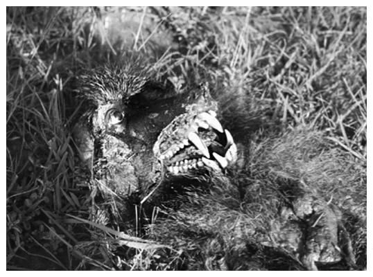
Phần còn lại của một con đực của tôi, vào buổi
sáng sau khi bị một liên minh đối thủ tấn công
Điều này đã biến đổi bầy “Bãi Rác”. Khỉ đầu chó thường trèo xuống khỏi cây ngủ vào lúc bình minh và đi bộ mười dặm mỗi ngày để kiếm ăn. Lũ khỉ Bãi Rác ngủ trên cây ngay phía trên bãi rác, lạch bạch trèo xuống lúc tám giờ để đón xe chở rác từ khu nhà nghỉ, dành mười phút tranh giành điên cuồng thịt bò nướng, đùi gà và bánh pudding mận thừa, rồi lạch bạch đi ra ngủ trưa. Tôi thậm chí đã bắn thuốc mê những con vật ở Bãi Rác và nghiên cứu chúng cùng đồng nghiệp—chúng tăng cân, dày lên lớp mỡ dưới da, có nồng độ insulin và triglyceride tuần hoàn cao, có dấu hiệu khởi phát hội chứng chuyển hóa.46

Giờ ăn sáng, khi rác được đổ xuống từ xe kéo
Bằng cách nào đó lũ khỉ đầu chó trong bầy “của tôi” đánh hơi được bữa tiệc bên kia đồi, và chẳng bao lâu mỗi sáng có nửa tá con kéo sang tham gia. Không hề ngẫu nhiên việc con nào làm điều này, con nào dám thử tranh giành thức ăn với năm mươi hay sáu mươi kẻ thuộc phe Họ. Những con dám thử đều là con đực, to lớn và hung hăng. Và buổi sáng là lúc khỉ đầu chó thực hiện phần lớn hoạt động giao lưu xã hội—ngồi sát bên nhau, bắt chấy rận, chơi đùa—vì vậy đi kiếm rác đồng nghĩa với việc từ bỏ giao lưu xã hội. Những con đực đi mỗi sáng là những thành viên hung hăng nhất, ít gắn kết xã hội nhất của bầy.
Không lâu sau đó, một đợt bùng phát bệnh lao (TB) xảy ra trong đám khỉ đầu chó Bãi Rác. Ở người, lao là bệnh mãn tính, từ từ gặm nhấm bạn bằng chứng “lao lực”. Ở các loài linh trưởng không phải người, bệnh lao như cháy rừng, lây lan nhanh chóng, giết chết trong vòng vài tuần. Các đồng nghiệp bác sĩ thú y động vật hoang dã người Kenya và tôi đã xác định được nguyên nhân của đợt bùng phát—thanh tra thịt tại khu nhà nghỉ đã nhận hối lộ để phê duyệt giết mổ những con bò mắc bệnh lao; gia súc bị giết, các cơ quan nội tạng đầy tổn thương khó coi bị vứt bỏ và rồi bị khỉ đầu chó ăn phải. Hầu hết bầy Bãi Rác đều chết, cũng như toàn bộ những con đực của tôi từng sang cướp bãi rác.47
Chuyện này khiến tôi khá buồn; tôi làm quen với một bầy mới ở đầu bên kia công viên và không bén mảng đến gần tàn dư của bầy cũ suốt nửa tá năm. Cuối cùng, khi vị hôn thê của tôi lần đầu tiên đến thăm Kenya, tôi lấy hết can đảm quay lại bầy cũ, để cho cô ấy xem đàn khỉ đầu chó thời trẻ của tôi.
Chúng không giống bất kỳ bầy khỉ đầu chó nào từng được ghi nhận, chính xác như những gì bạn kỳ vọng nếu bạn loại bỏ một nửa số con đực trưởng thành, tạo ra tỷ lệ cái trên đực là 2:1 thay vì 1:1 thông thường, và nếu những con đực còn lại đặc biệt ôn hòa và gắn kết.48
Chúng quấn quýt bên nhau, ngồi sát cạnh nhau, và bắt chấy rận cho nhau nhiều hơn mức trung bình. Mức độ hung hăng thấp hơn, và theo một cách rất nhiều thông tin. Những con đực vẫn có hệ thống phân cấp thống trị; con số ba vẫn đánh nhau với con số bốn và số hai, bảo vệ địa vị và tìm kiếm sự thăng tiến. Nhưng có rất ít sự hung hăng chuyển dịch nhắm vào những kẻ ngoài cuộc vô tội—khi con số ba thua một trận đánh, hắn hiếm khi khủng bố con số mười hoặc một con cái. Nồng độ hormone căng thẳng thấp; hóa học thần kinh của sự lo âu và benzodiazepine vận hành khác biệt ở những cá thể này.

Đây là thước đo cho điều đó, một bức ảnh mà nếu bạn là nhà khỉ đầu chó học, còn gây kinh ngạc hơn cả bức ảnh chụp khỉ đầu chó phát minh ra bánh xe—hai con đực trưởng thành đang bắt chấy rận cho nhau. Điều đó hầu như chẳng bao giờ xảy ra. Ngoại trừ ở bầy này.
Và bây giờ là phần quan trọng nhất. Khỉ đầu chó cái ở lại bầy nơi chúng sinh ra, trong khi con đực đến tuổi dậy thì sẽ ngứa ngáy chân cẳng và rời đi, thử vận may ở bất cứ đâu từ bầy bên cạnh đến bầy cách xa ba mươi dặm. Vào thời điểm tôi quay lại bầy này, hầu hết những con đực từng tránh được bệnh lao đều đã chết; bầy lúc này toàn những con đực chuyển nhập vào sau dịch lao. Nói cách khác, những con đực vị thành niên đã lớn lên trong các bầy khỉ đầu chó điển hình rồi gia nhập bầy này và tiếp nhận phong cách ít hung hăng, gắn kết cao. Văn hóa xã hội của bầy đang được truyền lại.
Bằng cách nào? Những con vị thành niên gia nhập bầy này không hề ít hung hăng hay ít chuyển dịch ức chế hơn những con gia nhập các bầy khác—không có sự tự chọn lọc. Không có bằng chứng nào về việc giảng dạy xã hội đang diễn ra. Thay vào đó, lời giải thích khả dĩ nhất liên quan đến những con cái bản địa. Đây có lẽ là những con khỉ đầu chó cái ít căng thẳng nhất trên trái đất, không phải chịu sự hung hăng chuyển dịch điển hình từ con đực. Trong trạng thái thư thái hơn này, chúng sẵn sàng mạo hiểm thực hiện những cử chỉ thân thiện với các cá thể mới hơn—trong một bầy khỉ đầu chó điển hình, phải mất hơn hai tháng các con cái mới lần đầu bắt chấy rận hoặc gạ gẫm tình dục những con đực mới chuyển đến; trong bầy này chỉ mất vài ngày đến vài tuần. Cộng hưởng với việc thiếu vắng sự hung hăng chuyển dịch từ các con đực bản địa, điều này khiến những con đực mới chuyển đến dần thay đổi, hòa nhập vào văn hóa của bầy trong khoảng sáu tháng. Như vậy, khi được đối xử theo cách ít hung hăng hơn, gắn kết hơn, khỉ đầu chó vị thành niên bắt đầu làm điều tương tự.
Năm 1965, một ngôi sao đang lên của ngành linh trưởng học, Irven DeVore thuộc Đại học Harvard, đã xuất bản tổng quan đầu tiên về lĩnh vực này.49 Bàn về chuyên ngành của chính mình là khỉ đầu chó xavan, ông viết rằng chúng “đã hình thành một tính khí hung hăng như một cơ chế phòng vệ chống lại thú săn mồi, và tính hung hăng không thể bật tắt như một cái vòi nước. Nó là một phần không thể tách rời trong nhân cách của loài khỉ này, ăn sâu đến mức biến chúng thành những kẻ gây hấn tiềm tàng trong mọi tình huống.” Nhờ đó khỉ đầu chó xavan trở thành, theo đúng nghĩa đen, ví dụ sách giáo khoa về một loài linh trưởng hung hăng, phân tầng, do con đực thống trị. Tuy nhiên như ta thấy ở đây, bức tranh này không phổ quát hay tất yếu.
Con người đã hình thành cả những nhóm du mục nhỏ lẫn những siêu quốc gia và đã chứng minh một sự linh hoạt, nhờ đó hậu duệ bị bứt gốc của nhóm trước có thể vận hành trong nhóm sau. Các mô hình kết đôi của con người linh hoạt một cách bất thường, và xã hội của chúng ta có chế độ một vợ một chồng, đa thê, hoặc đa phu. Chúng ta đã nhào nặn nên những tôn giáo nơi một số kiểu bạo lực giúp bạn lên thiên đường và những tôn giáo khác nơi chính bạo lực đó đày bạn xuống địa ngục. Về cơ bản, nếu khỉ đầu chó bất ngờ cho thấy khả năng uốn nắn xã hội nhiều đến thế, chúng ta cũng có thể. Bất kỳ ai nói rằng những hành vi tồi tệ nhất của chúng ta là tất yếu đều biết quá ít về loài linh trưởng, bao gồm cả chúng ta.
Một con người
Đâu đó giữa các tế bào thần kinh, hormone và gen ở một bên và văn hóa, ảnh hưởng sinh thái và tiến hóa ở bên kia, là cá nhân. Và với hơn bảy tỷ người chúng ta, thật dễ cảm thấy rằng không một cá nhân đơn lẻ nào có thể tạo ra nhiều khác biệt.
Nhưng chúng ta biết điều đó không đúng. Có danh sách bắt buộc gồm những người đã thay đổi mọi thứ—Mandela, Gandhi, MLK, Rosa Parks, Lincoln, Aung San Suu Kyi. Đúng, họ thường có hàng tá cố vấn. Nhưng họ là những chất xúc tác, những người đã trả giá bằng tự do hoặc mạng sống của mình. Và có những người thổi còi đã chấp nhận rủi ro lớn để châm ngòi cho sự thay đổi—Daniel Ellsberg, Karen Silkwood, W. Mark Felt (Deep Throat trong vụ Watergate), Samuel Provance (người lính Mỹ đã phanh phui các vụ ngược đãi tại Nhà tù Abu Ghraib), Edward Snowden.*
Nhưng cũng có những người ít được biết đến hơn, hành động đơn độc hoặc theo nhóm nhỏ, với tác động phi thường. Hãy lấy trường hợp của Mohamed Bouazizi, một người bán hoa quả hai mươi sáu tuổi ở Tunisia, khi đó đang ở năm thứ hai mươi ba dưới sự cai trị tham nhũng và đàn áp của một nhà độc tài. Tại chợ, cảnh sát hạch sách Bouazizi về một giấy phép tưởng tượng, đòi hối lộ. Anh từ chối, không phải vì nguyên tắc—anh từng hối lộ nhiều lần—mà vì anh không có tiền. Anh bị đá và bị nhổ nước bọt vào mặt, xe hoa quả bị lật nhào. Đơn khiếu nại của anh tại văn phòng chính quyền bị phớt lờ. Và chỉ trong vòng một giờ sau khi bị cảnh sát ức hiếp, vào ngày 10 tháng 12 năm 2010, Bouazizi đứng trước văn phòng đó, tự tưới xăng lên người, hét lên: “Các người bảo tôi kiếm sống bằng cách nào đây?” và tự thiêu.
Vụ tự thiêu và cái chết của Bouazizi đã châm ngòi cho các cuộc biểu tình ở Tunisia chống lại nhà lãnh đạo Zine El Abidine Ben Ali, chống lại đảng cầm quyền của ông ta, chống lại cảnh sát. Các cuộc biểu tình lớn dần, và trong vòng một tháng chính phủ và Ben Ali bị lật đổ. Hành động của Bouazizi dẫn đến biểu tình ở Ai Cập, lật đổ chế độ độc tài ba mươi năm của Hosni Mubarak. Tương tự ở Yemen, chấm dứt ba mươi tư năm cầm quyền của Ali Abdullah Saleh. Và ở Libya, dẫn đến việc lật đổ và giết chết Muammar Gaddafi sau bốn mươi ba năm nắm quyền. Và ở Syria, nơi biểu tình biến thành nội chiến. Và ở Jordan, Oman và Kuwait, dẫn đến việc thủ tướng của họ từ chức. Và ở Algeria, Iraq, Bahrain, Morocco và Ả Rập Xê Út, tạo ra những dáng vẻ của cải cách chính phủ. Mùa xuân Ả Rập. Bouazizi chẳng hề nghĩ đến cải cách chính trị trong thế giới Hồi giáo khi anh bật que diêm; thay vào đó là cơn thịnh nộ không có lối thoát nào khác ngoài hướng vào bên trong. Bạn muốn nghĩ gì về hy vọng ngắn ngủi của Mùa xuân Ả Rập cũng được, theo sau bởi những nhà độc tài mới, bạo lực, người tị nạn và thảm họa Syria cùng ISIS. Và có lẽ lịch sử tạo ra kẻ tự thiêu cũng nhiều như kẻ tự thiêu tạo ra lịch sử—sự bất mãn trong khu vực vốn đã âm ỉ từ lâu.
Dù sao đi nữa, hành động đơn lẻ của Bouazizi đã thúc đẩy hàng triệu người ở hai mươi quốc gia quyết định rằng họ có thể tạo ra sự thay đổi.

Người biểu tình chống chính phủ giơ cao bức ảnh của Bouazizi
Đã có những hành động đơn lẻ khác. Vào giữa những năm 1980, một buổi lễ tưởng niệm đang được tổ chức tại Đài tưởng niệm Trân Châu Cảng nhân ngày kỷ niệm cuộc tấn công. Một nhóm người sống sót tụ họp lại thì có một ông lão tiến đến gần. Đây là chuyến đi thứ ba của ông tới đài tưởng niệm, cố lấy hết can đảm. Ông tiến lại gần những người sống sót và, bằng thứ tiếng Anh bập bẹ, nói lời xin lỗi.50
Ông lão đó, Zenji Abe, từng là phi công chiến đấu trong cuộc xâm lược Trung Quốc của Nhật Bản năm 1937 và suốt chiến trường Thái Bình Dương trong Thế chiến II—bao gồm cả việc tham gia dẫn đầu cuộc tấn công vào Trân Châu Cảng.
Rất ít điều trong cuộc đời trước đó của Abe dự báo được việc ông xin lỗi khi về già. Sự nhồi nhét tư tưởng chiến tranh của ông bắt đầu từ sớm, khi ông vào học viện quân sự từ năm lớp bảy. Trải nghiệm chiến tranh của ông mang tính tách biệt—ông chưa bao giờ giết một người lính Mỹ nào ở cự ly gần. Cuộc tấn công Trân Châu Cảng mang lại cảm giác như một cuộc diễn tập. Cảm giác trách nhiệm của ông có thể dễ dàng bị làm cùn đi, vì quả bom ông thả xuống đã không phát nổ. Và đất nước ông đã bại trận.
Một số điều đã ủng hộ cho cử chỉ của Abe. Ông từng bị bắt và trải qua một năm làm tù binh chiến tranh, được người Mỹ đối xử tử tế. Và ông cảm thấy xấu hổ về cuộc tấn công—các phi công từng được bảo rằng chiến tranh với Mỹ đã được tuyên bố vào sáng hôm đó, rằng hệ thống phòng thủ của Mỹ sẽ sẵn sàng. Ông sớm biết rằng thay vào đó nó là một cuộc tấn công lén lút.
Một số yếu tố lớn hơn cũng ủng hộ cử chỉ của ông. Quan hệ Nhật–Mỹ đã chuyển hóa. Và người Mỹ không phải là kẻ thù truyền kiếp. Khoảng cách chủng tộc, văn hóa và địa lý có thể đã tạo điều kiện cho sự giả biệt hóa loài đối với người Mỹ, nhưng đó là sự giả biệt hóa loài kiểu mới, tương phản với hàng thế kỷ căm thù một kẻ thù lân cận—Abe chưa bao giờ sang Trung Quốc để xin lỗi về vụ Thảm sát Nam Kinh. Như chúng ta đã biết, phe Họ có nhiều hạng mục khác nhau.
Thế rồi những khả năng và sự phi lý này hội tụ, và Abe đứng đó, cùng với chín phi công khác từng bay ngày hôm đó, nói lời xin lỗi. Một số người sống sót từ chối thiện chí này. Hầu hết đều chấp nhận. Abe và các phi công khác thực hiện những chuyến đi tiếp theo tới Trân Châu Cảng và có những cuộc gặp gỡ kéo dài nhiều ngày với những người Mỹ sống sót; những cái bắt tay hòa giải được phát sóng trên chương trình Today nhân dịp kỷ niệm năm mươi năm. Những người sống sót nhìn chung coi các phi công khi đó chỉ là đang tuân lệnh và thấy hành động hiện tại của họ thật dũng cảm và đáng ngưỡng mộ. Abe trở nên thân thiết với một người sống sót, Richard Fiske, một hướng dẫn viên tại đài tưởng niệm. Fiske từng có mặt trên một trong những con tàu trong cuộc tấn công, mất nhiều bạn bè trong số 2.390 người Mỹ thiệt mạng, từng chiến đấu tại Iwo Jima, tự mô tả mình căm ghét người Nhật đến mức bị loét dạ dày xuất huyết. Vì những lý do mà ông chưa bao giờ hiểu thấu hoàn toàn, Fiske là người đầu tiên chấp nhận cử chỉ của Abe. Những người Nhật và người Mỹ khác cũng trở nên thân thiết, đến thăm nhà và cuối cùng là viếng mộ của những kẻ cựu thù.

Trái: Zenji Abe, ngày 6 tháng 12 năm 1941; phải: Abe và Richard Fiske, ngày 6 tháng 12 năm
1991
Quá trình này giàu tính biểu tượng, bắt đầu bằng một lời xin lỗi mà như ta đã thấy, chẳng thay đổi gì cả và thay đổi tất cả. Abe đưa tiền cho Fiske để suốt phần đời còn lại của mình, Fiske đặt hoa hằng tháng tại đài tưởng niệm. Fiske, vốn là một người thổi kèn hiệu, bắt đầu thổi không chỉ khúc kèn Taps tại đài tưởng niệm, mà cả khúc nhạc tương đương của Nhật Bản nữa. Một dáng vẻ nào đó của tính Chúng ta đã nảy sinh, bao gồm tất cả mọi người có mặt trong ngày ô nhục đó.
Có lẽ quan trọng nhất, hành động đơn lẻ của Abe không hề đơn lẻ. Hiện nay có những công ty du lịch chuyên phục vụ các cựu binh Mỹ từng tham chiến tại Việt Nam quay trở lại Việt Nam để làm lễ hòa giải với các cựu chiến binh Việt Cộng. Các cựu binh đã khởi xướng những tổ chức như Friends of Danang (Những người bạn của Đà Nẵng), thực hiện các dự án thiện nguyện tại Việt Nam, xây dựng trường học, trạm xá và những cây cầu theo đúng nghĩa đen.51
Bức tranh này chuyển tiếp sang một hành động phi thường khác. Có thể coi sự kiện gây sốc nhất của Chiến tranh Việt Nam, một hành động tàn bạo cuối cùng đã làm rung chuyển nhận thức tự thân của nước Mỹ như một lực lượng thiện lương, chính là Vụ thảm sát Mỹ Lai.
Ngày 16 tháng 3 năm 1968, một đại đội lính Mỹ, dưới quyền chỉ huy của Trung úy William Calley Jr., đã tấn công thường dân không vũ trang tại làng Mỹ Lai.52 Đại đội này mới ở Việt Nam tổng cộng ba tháng và chưa từng có giao tranh trực tiếp với đối phương. Tuy nhiên, họ đã chịu hai mươi tám ca tử vong hoặc thương tích do bẫy chông và mìn, làm quân số đại đội giảm xuống còn khoảng một trăm người. Cách diễn giải phổ biến, một cách mà giờ đây ta dễ dàng nhận ra, là họ mang một khao khát trả thù dữ dội muốn gắn khuôn mặt cho kẻ thù vô diện này. Lý lẽ chính thức là ngôi làng chứa chấp chiến binh Việt Cộng và thường dân cảm tình viên; có rất ít bằng chứng ủng hộ điều này. Một số người tham gia tường thuật rằng họ được lệnh chỉ giết chiến binh Việt Cộng; những người khác lại nói họ phải giết tất cả mọi người, đốt nhà, giết gia súc và phá hủy giếng nước.
Bất kể những báo cáo mâu thuẫn này, phần còn lại, như người ta vẫn nói, là lịch sử đau thương. Khoảng 350 đến 500 thường dân không vũ trang, bao gồm trẻ sơ sinh và người già, đã bị giết. Thi thể bị cắt xẻo và ném xuống giếng, nhà tranh và ruộng đồng bị phóng hỏa, nhiều phụ nữ bị cưỡng hiếp tập thể trước khi bị giết. Calley được mô tả là đã trực tiếp bắn những đứa trẻ nằm dưới thân xác người mẹ đã chết khi che chở cho chúng. Quân Mỹ không gặp bất kỳ hỏa lực nào của đối phương, không tìm thấy người đàn ông nào trong độ tuổi quân dịch. Đó là sự hủy diệt mang tầm vóc Kinh Thánh, hoặc tầm vóc La Mã, hoặc Thập tự chinh, hoặc Viking, hoặc... Sự hủy diệt này đã được chụp ảnh lại. Nỗi kinh hoàng càng tồi tệ hơn vì Mỹ Lai không phải là một hành động tàn bạo đơn lẻ, và chính phủ đã ra sức che giấu sự kiện rồi phạt Calley cho có lệ, kết án ông ta ba năm quản thúc tại gia.
Tuyệt đối không có chuyện toàn bộ lính Mỹ đều tham gia (cuối cùng hai mươi sáu binh sĩ bị truy tố hình sự, chỉ duy nhất Calley bị kết án; “chỉ là tuân lệnh” là câu cửa miệng thời đó).*53 Ngưỡng giới hạn của từng cá nhân rất khác nhau. Một người lính giết một bà mẹ và đứa con rồi từ chối làm thêm nữa. Một người khác giúp lùa thường dân lại nhưng từ chối nổ súng. Một số từ chối mệnh lệnh thẳng thừng, bất chấp lời đe dọa đưa ra tòa án binh hoặc bị bắn bỏ. Một người, Binh nhất Michael Bernhardt, từ chối và dọa sẽ báo cáo sự việc lên cấp trên; các sĩ quan sau đó đẩy anh vào những chuyến tuần tra nguy hiểm hơn, có lẽ hy vọng anh sẽ bị giết.
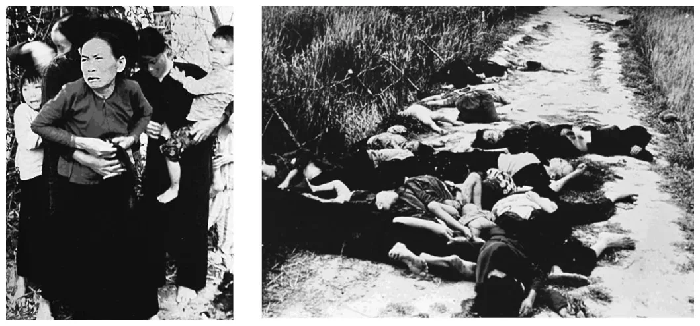
Những bức ảnh mang tính biểu tượng về cơn ác mộng. Trái: thường dân vài giây trước khi bị giết; người phụ nữ phía sau đang bế con vừa mới bị cưỡng hiếp. Phải: dân làng đã chết
Và ba người đàn ông đã chặn đứng cuộc tàn sát. Đúng như dự đoán, họ là những người ngoài cuộc. Chất xúc tác là Chuẩn úy Hugh Thompson Jr., hai mươi lăm tuổi, đang lái trực thăng cùng hai thành viên tổ bay, Glenn Andreotta và Lawrence Colburn. Có lẽ có liên quan đến những gì đã xảy ra là việc Thompson là hậu duệ của những người Mỹ bản địa sống sót sau cuộc hành quân chết chóc Con đường Nước mắt (Trail of Tears); cha mẹ sùng đạo của anh đã nuôi dạy anh, vào những năm 1950 ở vùng nông thôn Georgia, để phản đối sự phân biệt chủng tộc. Colburn và Andreotta là những người Công giáo ngoan đạo.
Thompson và tổ bay bay qua ngôi làng, định hỗ trợ bộ binh đang chiến đấu với Việt Cộng. Thay vì bằng chứng của một trận đánh, họ thấy hàng đống xác thường dân. Ban đầu Thompson nghĩ ngôi làng đang bị tấn công, còn lính Mỹ đang bảo vệ dân làng, nhưng không thể hiểu nổi hỏa lực tấn công đến từ đâu. Anh hạ cánh trực thăng giữa cảnh hỗn loạn và thấy một người lính, Trung sĩ David Mitchell, đang xả súng vào một đám thường dân bị thương đang gào khóc dưới mương và một người khác, Đại úy Ernest Medina, bắn một phụ nữ ở cự ly gần; Thompson nhận ra ai mới là kẻ đang tấn công. Anh đối chất với Calley, người có cấp bậc cao hơn anh và bảo anh hãy lo chuyện của mình đi.
Thompson thấy một nhóm phụ nữ, trẻ em và người già đang co cụm cạnh một hầm trú ẩn với lính Mỹ đang tiến lại gần họ, chuẩn bị tấn công. Bàn về chuyện xảy ra tiếp theo, hơn hai mươi năm sau, anh mô tả cảm xúc của mình về những người lính đó: “Nó—họ là kẻ thù vào lúc đó, tôi đoán vậy. Họ chắc chắn là kẻ thù đối với những người dân trên mặt đất.” Anh đã làm một việc có sức mạnh và lòng dũng cảm đến choáng váng, một việc chứng minh từng câu từng chữ trong cuốn sách này về việc các phân loại Chúng ta/Họ có thể thay đổi chỉ trong tích tắc. Hugh Thompson hạ cánh chiếc trực thăng của mình vào giữa dân làng và đám lính, chĩa súng máy vào chính đồng đội người Mỹ của mình, và ra lệnh cho tổ bay bắn hạ họ nếu họ cố gắng làm hại dân làng thêm nữa.*,
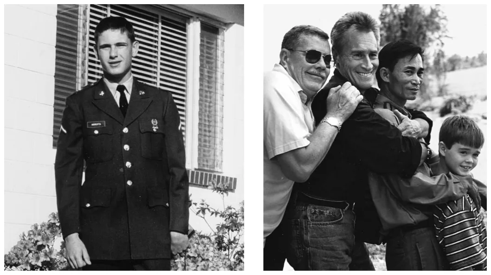
Trái: Glenn Andreotta; Phải, từ phải sang trái: Hugh Thompson, Lawrence Colburn và
Đỗ Hòa, người họ cứu khỏi mương khi còn nhỏ, làng Mỹ Lai, năm 1998
Như vậy ta có một người bốc đồng làm thay đổi lịch sử ở hai mươi quốc gia, một người khác vượt qua hàng thập kỷ căm thù để xúc tác cho hòa giải, những người khác vượt qua mọi phản xạ được huấn luyện để làm điều đúng đắn. Đã đến lúc dành cho một con người đơn lẻ cuối cùng, một người truyền cảm hứng cho tôi vô cùng.
Người đó là giáo sĩ Anh giáo John Newton, sinh năm 1725.54 Chà, nghe không có vẻ gì thú vị lắm. Ông nổi tiếng nhất vì sáng tác bài thánh ca “Amazing Grace” (Ân điển diệu kỳ). Ồ, tuyệt; bài đó, cùng với “Hallelujah” của Leonard Cohen, luôn làm tôi xúc động. Newton cũng là một nhà bãi nô, người cố vấn cho William Wilberforce trong cuộc chiến nghị viện nhằm đặt chế độ nô lệ ra ngoài vòng pháp luật tại Đế quốc Anh. Được rồi, nghe khá hơn rồi đấy. Giờ hãy nghe đoạn này—khi còn trẻ, Newton từng làm thuyền trưởng một tàu chở nô lệ. Trúng phóc, đó là bối cảnh—một người đàn ông giám sát và trục lợi từ chế độ nô lệ, một tia sáng thấu hiểu tôn giáo và đạo đức, sự tái phân loại kịch tính giữa Chúng ta và Họ, sự mở rộng kịch tính lòng nhân ái của ông, cam kết kịch tính chuộc lại những hành động man rợ ông từng gây ra. Bạn gần như có thể thấy tính dẻo thần kinh của chương 5 bùng cháy trong não Newton.
Chẳng có gì giống thế xảy ra cả. Newton, con trai một thuyền trưởng, ra khơi cùng cha năm mười một tuổi. Năm mười tám tuổi, ông bị bắt đi lính hải quân, cố đào ngũ, và bị đánh roi. Newton trốn thoát được và làm việc trên một tàu chở nô lệ ở Tây Phi. Hãy chuẩn bị tinh thần để ông nhìn ra sự tương đồng giữa cảnh giam cầm của những người này và trải nghiệm của chính mình, để có một sự giác ngộ.
Không hề có chuyện đó xảy ra. Ông làm việc trên tàu chở nô lệ và dường như bị mọi người ghét cay ghét đắng đến mức họ bỏ rơi ông ở nơi ngày nay là Sierra Leone cho một tay buôn nô lệ, kẻ đã tặng ông cho vợ mình làm nô lệ. Ông được giải cứu; con tàu ông đi, trên đường trở về Anh, gặp một cơn bão kinh hoàng và bắt đầu chìm. Newton kêu cầu Chúa, con tàu không chìm, và ông trải qua một cuộc cải đạo tâm linh sang Cơ đốc giáo Tin Lành. Ông ký hợp đồng làm việc trên một tàu chở nô lệ khác. Hãy sẵn sàng ngay bây giờ—ông đã tìm thấy Chúa, vừa mới tự mình làm nô lệ xong, và đang ở thế sẵn sàng đột ngột nhận ra nỗi kinh hoàng của nạn buôn bán nô lệ.
Không đời nào. Ông bày tỏ chút thương cảm với nô lệ, ngày càng dấn sâu hơn vào cuộc cải đạo Tin Lành của mình. Cuối cùng ông trở thành thuyền trưởng một tàu chở nô lệ và làm việc thêm sáu năm nữa mới dừng lại. Cuối cùng ông cũng nhìn thấu hành động của mình đúng như bản chất của chúng.
Cũng không phải thế nốt. Đó là vì sức khỏe của ông suy sụp sau những chuyến hải trình khắc nghiệt đó. Ông làm nhân viên thu thuế, học thần học, nộp đơn xin làm linh mục Anh giáo. Và ông đầu tư tiền của mình vào các thương vụ buôn bán nô lệ. Theo cách nói ở quê hương Brooklyn của tôi, từ thời nơi đó chưa thành mốt, bạn có tin nổi cái gã chết tiệt này không cơ chứ?
Ông trở thành một nhà thuyết giáo nổi tiếng, được biết đến với những bài giảng và sự quan tâm mục vụ; ông sáng tác thánh ca, lên tiếng bênh vực người nghèo và kẻ bị áp bức. Có lẽ, đâu đó trên chặng đường đó ông ngừng đầu tư vào chế độ nô lệ; có thể vì lương tâm, có thể vì có những khoản đầu tư tốt hơn xuất hiện. Dẫu vậy, vẫn không một lời nào về chế độ nô lệ. Cuối cùng ông xuất bản một cuốn sách nhỏ lên án nó, ba mươi bốn năm sau khi ngừng làm kẻ buôn nô lệ. Đó là rất nhiều thời gian sống như một kẻ khốn khổ mù quáng. Tiếng nói của Newton là một tiếng nói hiếm hoi trong giới bãi nô, một người từng chứng kiến những nỗi kinh hoàng đó, chứ chưa nói đến từng gây ra chúng. Ông trở thành tiếng nói bãi nô chủ chốt ở Anh và sống đến ngày chứng kiến nước Anh cấm buôn bán nô lệ năm 1807. Chẳng đời nào tôi có thể trở thành Thompson, Andreotta hay Colburn. Tôi không dũng cảm; tôi trốn chạy đến những điểm thực địa đơn độc ở châu Phi thay vì đối mặt với những chuyện khó khăn. Có lẽ, giỏi lắm thì tôi sẽ là một trong những người lính đứng trong hoang mang, bị thôi thúc bởi những ức chế mà Grossman bàn tới vào việc liên tục kiểm tra súng trường xem đã nạp đạn chưa, thay vì bóp cò. Tôi thấy rất ít dấu hiệu rằng khi về già mình sẽ đạt được phong thái và tầm vóc đạo đức của một Zenji Abe hay một Richard Fiske. Hành động của Bouazizi là điều không thể hiểu nổi đối với tôi.
Nhưng Newton, Newton thì khác; Newton thật quen thuộc. Ông tìm thấy sự an ủi tiện lợi từ việc Kinh Thánh chấp nhận chế độ nô lệ, dành hàng thập kỷ kháng cự khả năng đạo đức cá nhân của mình vượt qua những quy ước của nó. Ông thể hiện sự đồng cảm lớn lao nhưng áp dụng nó một cách có chọn lọc. Ông mở rộng vòng tròn những ai được tính là Chúng ta, nhưng chỉ đến một mức độ nhất định. Ta đã thấy người bước ra từ đám đông để lao vào tòa nhà đang cháy thường hành động trước khi suy nghĩ, thể hiện một tính tự động ăn sâu trong việc làm điều khó khăn hơn, tốt đẹp hơn. Chẳng có tính tự động nào ở Newton cả. Ta gần như có thể thấy dlPFC của ông vất vả với ngần ấy sự hợp lý hóa—“Chẳng có gì mình làm được đâu”, “Nó quá lớn để một người thách thức”, “Tốt hơn nên quan tâm đến những người nghèo khó ở gần nhà”, “Mình có thể dùng lợi nhuận từ các khoản đầu tư đó để làm việc thiện”, “Những người đó thực sự quá khác biệt về bản chất”, “Mình mệt rồi.” Đúng, hành trình nào cũng bắt đầu bằng một bước chân, nhưng với Newton thì là mười bước tiến lên, chín bước tư lợi lùi lại. Khoảnh khắc hoàn hảo đạo đức của Thompson mang lại cảm giác xa vời với tôi như mơ ước trở thành một con linh dương, một thác nước hay một buổi hoàng hôn rực rỡ. Nhưng vẫn có hy vọng cho chúng ta, với những khuyết điểm, sự bất nhất và yếu đuối của mình, khi ta dõi theo Newton chậm chạp lảo đảo bước trên con đường trở thành một người khổng lồ về đạo đức.
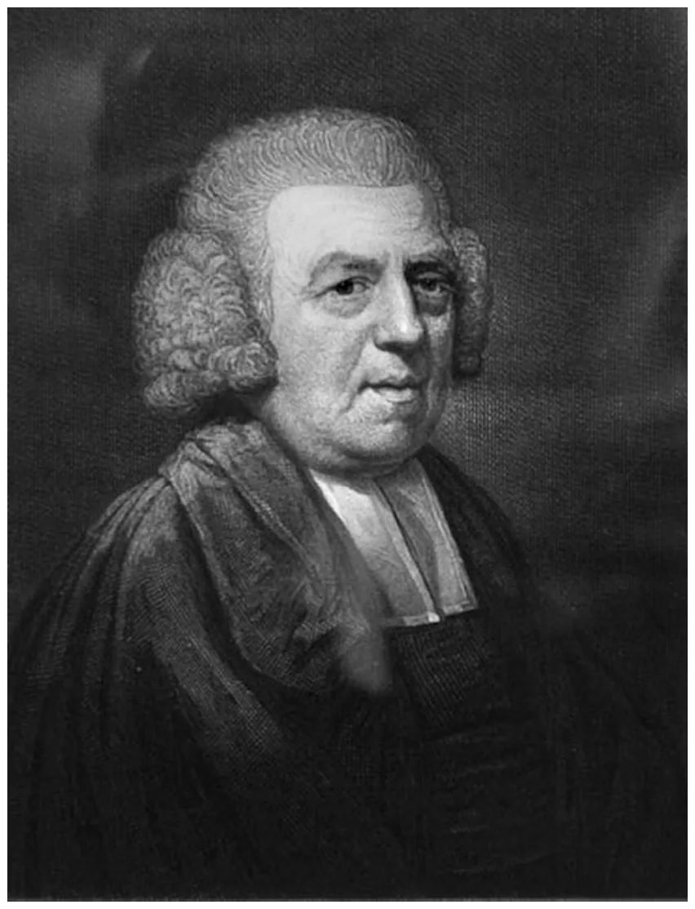
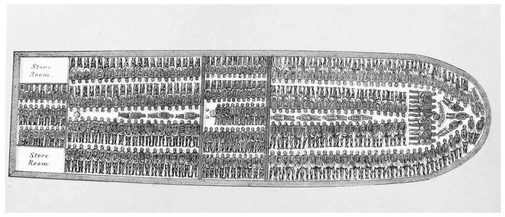
Bức minh họa năm 1788 do những người bãi nô tạo ra về số lượng nô lệ (487) mà một con tàu Anh được phép chở hợp pháp trong một chuyến vượt Đại Tây Dương. Trên thực tế, các con tàu chở nhiều người hơn thế rất nhiều.
Cuối cùng—Tiềm năng của sức mạnh tập thể
Có một giai thoại từ Chiến tranh Bán đảo 1807–1814, do Thiếu tướng George Bell kể lại, khi đó còn là một thiếu úy: Có một cây cầu ngăn cách quân Anh và quân Pháp đối địch, với một lính gác được mỗi bên bố trí để báo động nếu kẻ thù tràn qua cầu.55 Một sĩ quan Anh đi tuần tra và thấy người lính gác Anh ở đó trong một tình huống khó tin—vác cả súng hỏa mai của Anh lẫn của Pháp, mỗi vai một khẩu, dường như đang gác cầu cho cả hai đạo quân đối địch, chẳng thấy bóng dáng lính gác Pháp đâu. Lời giải thích của anh ta? Người đồng cấp Pháp của anh ta đã lẻn đi mua ít rượu để cả hai cùng uống và, lẽ tự nhiên, anh ta đang trông súng hộ gã kia.
Sự kết thân giữa những người lính đối địch diễn ra thường xuyên một cách đáng kinh ngạc trong chiến tranh. Nó phổ biến nhất khi họ cùng chủng tộc và cùng tôn giáo lớn, và khi họ là lính trơn chứ không phải sĩ quan. Nó cũng phổ biến hơn khi các cá nhân kẻ thù, chứ không phải cả nhóm, chạm trán nhau, khi đó là cùng một người ngày này qua ngày khác (ví dụ: gác cây cầu đối diện bạn), khi ai đó có thể đã bắn bạn nhưng lại không bắn. Sự kết thân hiếm khi liên quan đến các cuộc thảo luận về sự sống, cái chết và địa chính trị; thay vào đó là những chuyện như đổi đồ ăn (vì khẩu phần của bên kia chẳng thể tệ bằng của bạn), thuốc lá hay rượu, hoặc phàn nàn về thời tiết khốn khổ, về đám sĩ quan khốn khổ.56
Trong Nội chiến Tây Ban Nha, lính Cộng hòa và lính Phát xít thường xuyên gặp nhau vào ban đêm để uống rượu, đổi đồ và trao đổi báo chí, tất cả cùng canh chừng đám sĩ quan. Trong Chiến tranh Crimea, có hoạt động đổi chác thường xuyên qua chiến tuyến giữa rượu vodka Nga lấy bánh mì baguette Pháp. Một người lính Anh trong Chiến tranh Bán đảo kể lại cách vào buổi tối, lính Anh và lính Pháp cùng chơi bài quanh đống lửa trại. Và trong Nội chiến Hoa Kỳ, lính miền Bắc và miền Nam thường kết thân, đổi đồ, trao đổi báo, và, với nỗi xót xa thấu tận tâm can, tổ chức các buổi lễ rửa tội chung vào buổi tối trước một trận đánh chắc chắn sẽ là một cuộc tắm máu.
Như vậy binh lính đối địch thường xuyên tìm thấy tiếng nói chung. Hơn một trăm năm trước một chút, hai sự kiện như thế đã diễn ra ở quy mô gây choáng váng.
Phải thừa nhận rằng một số điều tốt đẹp đã đến từ Thế chiến I—nhờ sự sụp đổ sau đó của ba đế chế, các dân tộc ở vùng Baltic, Balkan và Đông Âu đã giành được độc lập. Nhưng từ góc nhìn của bất kỳ ai khác, đó là một cuộc tàn sát vô nghĩa mười lăm triệu sinh mạng. Cuộc chiến để chấm dứt mọi cuộc chiến, dẫn đến nền hòa bình tai hại để chấm dứt mọi nền hòa bình, hóa ra chỉ là một ví dụ nữa trong hàng thế kỷ về việc châu Âu ngấu nghiến lớp trẻ của mình bằng những cuộc xung đột vô nghĩa. Nhưng giữa vũng lầy của Thế chiến I đã xuất hiện hai ví dụ về hy vọng mà, vì không tìm được từ nào hay hơn, dường như gần như kỳ diệu.

Binh lính Đức và Anh chụp ảnh cùng nhau
Đầu tiên là Thỏa thuận Ngừng bắn Giáng sinh năm 1914, khi các sĩ quan dọc các chiến hào rụt rè hét lên, “Không bắn,” bằng một thứ tiếng khác và gặp các sĩ quan đối phương ở vùng đất không người. Thỏa thuận ngừng bắn bắt đầu như một giao kèo ngưng giao tranh trong bữa tối Giáng sinh và để thu hồi thi thể.
Mọi thứ lan rộng từ đó. Như đã được ghi chép rộng rãi, binh lính hai bên cho nhau mượn xẻng để đào huyệt. Và rồi giúp nhau đào. Và rồi tổ chức lễ an táng chung. Điều đó dẫn đến trao đổi đồ ăn, thức uống và thuốc lá. Cuối cùng, những người lính không mang vũ khí tràn ra vùng đất không người, cùng cầu nguyện và hát thánh ca Giáng sinh, chia sẻ bữa tối, trao đổi quà tặng. Các chiến binh đối địch chụp ảnh lưu niệm tập thể; cúc áo và mũ sắt được trao đổi làm kỷ vật; những kế hoạch gặp lại khi chiến tranh kết thúc được vạch ra. Nổi tiếng nhất là các trận đấu bóng đá được tổ chức với những quả bóng tự chế, mà tỷ số hiếm khi được ghi lại.57
Một sử gia ghi lại một giai thoại rùng mình về một người lính Đức viết thư về nhà kể về thỏa thuận ngừng bắn, nhắc rằng không phải ai cũng tham gia—có một người lính đã lên án những người khác là kẻ phản bội, một hạ sĩ vô danh tên là... Hitler. Nhưng trên hầu hết năm trăm dặm chiến hào, thỏa thuận ngừng bắn duy trì suốt Giáng sinh, và thường thậm chí đến tận Năm Mới. Phải nhờ đến lời đe dọa đưa ra tòa án binh của các sĩ quan thì mọi người mới quay lại chiến đấu, những người lính chúc đối thủ của mình một cuộc chiến an toàn. Choáng ngợp, cảm động, xé lòng. Và chỉ với vài ngoại lệ lẻ tẻ, điều đó không bao giờ xảy ra nữa, vì ngay cả những thỏa thuận ngừng bắn Giáng sinh ngắn ngủi để thu hồi thi thể cũng dẫn đến tòa án binh.
Tại sao thỏa thuận ngừng bắn năm 1914 lại thành công? Bản chất tĩnh tại độc đáo của chiến tranh chiến hào khiến binh lính đối mặt nhau ngày này qua ngày khác. Điều này thúc đẩy những lời trêu chọc thường mang tính thân thiện qua chiến tuyến trong giai đoạn trước Giáng sinh, thiết lập một cảm giác kết nối mơ hồ. Hơn nữa, những tương tác lặp đi lặp lại tạo ra “cái bóng của tương lai”—phản bội thỏa thuận ngừng bắn, và hãy chờ sự trả thù không khoan nhượng.
Thành công còn được hỗ trợ bởi việc mọi người cùng chia sẻ truyền thống Do Thái-Kitô giáo và văn hóa Tây Âu; nhiều người biết tiếng của nhau, từng đến thăm đất nước của nhau. Họ cùng chủng tộc, và việc gọi kẻ thù một cách miệt thị là “Fritz” hoàn toàn khác với sự giả biệt hóa loài trong Chiến tranh Việt Nam với những từ như “gooks”, “slants” và “dinks”.
Những yếu tố bổ sung giải thích tại sao thỏa thuận ngừng bắn chủ yếu diễn ra giữa quân Anh và quân Đức. Trong khi người Pháp chiến đấu đầy nhiệt huyết trên chính mảnh đất của mình, lính Anh không có mối thù hằn đặc biệt nào với người Đức và thường tự coi mình đang chiến đấu để cứu cái mông (les derrières) của người Pháp, kẻ thù lịch sử thường xuyên của họ. Trớ trêu thay, trong thỏa thuận ngừng bắn, lính Anh hay nói với lính Đức rằng đáng lẽ cả hai bên nên cùng đánh người Pháp. Trong khi đó, tình cờ là hầu hết lính Đức ở đó là người Saxon, những người bày tỏ tình cảm họ hàng với người Anglo-Saxon của Anh, gợi ý rằng cả hai nên cùng đánh người Phổ, nhóm thống trị bị căm ghét ở Đức.
Và có lẽ quan trọng nhất, thỏa thuận ngừng bắn được hỗ trợ bởi sự chấp thuận từ trên xuống. Các sĩ quan thường đứng ra đàm phán; những nhân vật như Giáo hoàng kêu gọi ngừng bắn; đó là một ngày lễ tượng trưng cho hòa bình và thiện chí đối với mọi người.
Như vậy chúng ta có Thỏa thuận Ngừng bắn Giáng sinh. Đáng kinh ngạc thay, một điều thậm chí còn kỳ diệu hơn đã xảy ra trong cuộc chiến. Trong cái được gọi là hiện tượng Sống và để người khác sống (Live and Let Live), binh lính dưới chiến hào đã lặp đi lặp lại việc tiến hóa nên những thỏa thuận ngừng bắn ổn định mà không cần trao đổi một lời, không cần ngày lễ tôn giáo chung, không cần sự chuẩn y của sĩ quan và lãnh đạo.
Điều này xảy ra như thế nào? Như được sử gia Tony Ashworth ghi chép trong cuốn Trench Warfare: 1914–1918 (Chiến tranh chiến hào: 1914–1918), nó thường bắt đầu một cách thụ động. Quân lính hai bên ăn tối vào cùng khoảng thời gian, và tiếng súng sẽ im bặt lúc đó—ai lại muốn làm gián đoạn bữa tối để giết ai đó hoặc bị giết cơ chứ? Điều tương tự cũng xảy ra trong thời tiết tồi tệ, khi ưu tiên của mọi người trở thành xử lý chiến hào ngập nước hoặc tránh chết cóng.58
Sự kiềm chế lẫn nhau cũng nảy sinh trong những hoàn cảnh bị phủ bởi cái bóng của tương lai. Các đoàn xe ngựa chở thực phẩm là mục tiêu pháo binh dễ dàng nhưng vẫn được tha, để ngăn chặn sự pháo kích trả đũa. Tương tự, các nhà vệ sinh cũng được chừa ra.
Những thỏa thuận ngừng bắn này nảy sinh khi binh lính chọn không làm điều gì đó. Nhưng các thỏa thuận ngừng bắn cũng được thiết lập bằng hành động công khai. Bằng cách nào? Bảo tay bắn tỉa giỏi nhất của bạn bắn một viên đạn vào bức tường của một ngôi nhà bỏ hoang gần chiến tuyến địch. Rồi bảo anh ta làm lại hết lần này đến lần khác, liên tục bắn trúng cùng một điểm. Bạn đang truyền đạt điều gì? “Nhìn xem lính bên tôi giỏi chưa này. Anh ta hoàn toàn có thể nhắm vào các anh nhưng đã chọn không làm thế. Các anh định làm gì đáp lại đây?” Và bên kia sẽ đáp lễ bằng tay bắn tỉa giỏi nhất của họ. Một thỏa thuận bắn qua đầu nhau đã được thiết lập.
Chìa khóa là sự nghi thức hóa—bắn lặp đi lặp lại vào cùng một mục tiêu vô thưởng vô phạt, làm mới cam kết hòa bình hằng ngày vào cùng một thời điểm.
Các thỏa thuận ngừng bắn Sống và để người khác sống có thể chống chọi được với những biến động. Binh lính ra hiệu cho bên kia rằng họ buộc phải bắn thật một lúc—các sĩ quan sắp tới. Hệ thống sống sót qua cả những lần vi phạm. Nếu một tay lính mới hăng máu nào đó ném một quả đạn pháo sang chiến hào bên kia, quy ước phổ biến nhất là bắn trả hai quả, thường nhắm vào các mục tiêu quan trọng. Và rồi hòa bình lại tiếp tục. (Ashworth mô tả một vụ vi phạm như vậy, khi quân Đức bất ngờ bắn một quả đạn pháo vào chiến hào Anh. Ngay sau đó một người Đức hét lên: “Chúng tôi rất xin lỗi về chuyện đó; hy vọng không ai bị thương. Không phải lỗi của chúng tôi đâu, là tại bọn pháo binh Phổ chết tiệt đó.” Và hai quả đạn pháo Anh bay trả lại.)
Các thỏa thuận ngừng bắn Sống và để người khác sống nảy sinh hết lần này đến lần khác. Và hết lần này đến lần khác giới tướng lĩnh ở hậu phương lại can thiệp, luân chuyển quân, đe dọa đưa ra tòa án binh, ra lệnh những cuộc đột kích tàn bạo đòi hỏi cận chiến tay đôi để đập tan mọi cảm giác về lợi ích chung giữa kẻ thù với nhau.
Ta thấy sự tiến hóa ở đây—những cử chỉ ban đầu chi phí thấp với lợi ích tức thì, như không bắn trong giờ ăn tối, chuyển tiếp qua các cấp độ kiềm chế và phát tín hiệu ngày càng tinh vi hơn. Và ta nhận ra chiến lược Ăn miếng trả miếng được điều chỉnh trong việc xử lý các vi phạm thỏa thuận ngừng bắn, với khuynh hướng hướng về sự hợp tác, trừng phạt vi phạm, cơ chế tha thứ và các quy tắc rõ ràng.
Vậy nên, hoan hô, giống như vi khuẩn xã hội, chúng ta có thể tiến hóa sự hợp tác. Nhưng có một thứ mà vi khuẩn hợp tác thiếu, đó là tâm thức. Ashworth đã khám phá một cách sâu sắc tâm lý về cách những người tham gia Sống và để người khác sống bắt đầu nhìn nhận kẻ thù.
Ông mô tả một chuỗi các bước. Đầu tiên, một khi bất kỳ sự kiềm chế lẫn nhau nào nảy sinh, kẻ thù đã chứng minh được rằng họ lý trí, có động lực để ngừng bắn. Điều này thúc đẩy một cảm giác trách nhiệm khi giao dịch với họ; ban đầu điều này thuần túy mang tính tư lợi—đừng vi phạm thỏa thuận vì họ sẽ vi phạm lại. Theo thời gian, cảm giác trách nhiệm phát triển một sắc thái đạo đức, chạm vào sự kháng cự của hầu hết mọi người đối với việc phản bội một ai đó đối xử đáng tin cậy với mình. Những động lực cụ thể cho thỏa thuận ngừng bắn tạo ra những thấu hiểu—“Này, họ cũng không muốn bị làm phiền bữa tối hơn chúng ta; họ cũng chẳng muốn đánh nhau dưới cơn mưa này; họ cũng phải đối phó với đám sĩ quan làm hỏng bét mọi chuyện.” Một cảm giác đồng chí âm thầm nảy nở.
Điều này tạo ra một điều đáng kinh ngạc. Bộ máy chiến tranh ở các nước tham chiến tuôn ra thứ tuyên truyền giả biệt hóa loài quen thuộc. Nhưng khi nghiên cứu nhật ký và thư từ của binh lính, Ashworth quan sát thấy rất ít sự thù địch đối với kẻ thù được bày tỏ bởi lính chiến hào; càng xa tiền tuyến, sự thù địch càng lớn. Theo lời một người lính tiền tuyến được Ashworth trích dẫn: “Ở hậu phương người ta lăng mạ kẻ thù, và vẽ những bức biếm họa xúc phạm. Tôi phát ngán những hình vẽ Hoàng đế Đức lố bịch rồi. Ngoài này, người ta có thể tôn trọng một kẻ thù dũng cảm, khéo léo và tháo vát. Họ có những người thân yêu ở nhà, họ cũng phải chịu đựng bùn lầy, mưa gió và sắt thép.”
Chúng ta và Họ luôn trong trạng thái biến động. Nếu ai đó đang bắn vào bạn hoặc nhóm anh em chiến tuyến của bạn, họ chắc chắn là Họ. Nhưng nếu không thì Họ nhiều khả năng là lũ chuột và rận, là thức ăn mốc, là cái lạnh. Cũng như bất kỳ viên sĩ quan nhàn nhã nào ở bộ chỉ huy—theo lời một người lính chiến hào khác—“[một] nhà chiến thuật trừu tượng từ đằng xa định đoạt số phận của chúng tôi.”
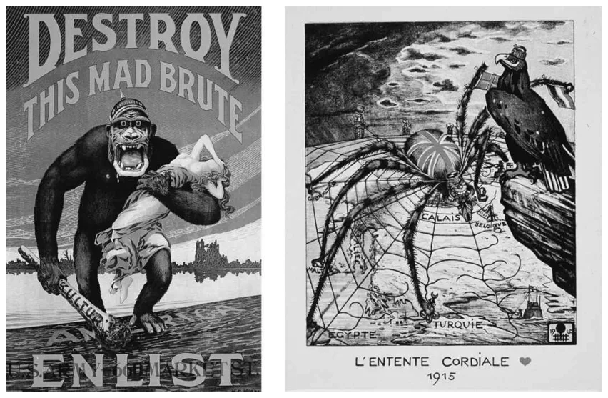
Áp phích tuyên truyền của Mỹ và Đức
Những thỏa thuận ngừng bắn này không thể kéo dài; các giai đoạn cuối của cuộc chiến đã xóa sổ chúng, khi Bộ Chỉ huy Tối cao Anh áp dụng một chiến lược ác mộng là chiến tranh tiêu hao.
Khi nghĩ về Thỏa thuận Ngừng bắn Giáng sinh và hệ thống Sống và để người khác sống, tôi luôn có cùng một ảo mộng, một ảo mộng rất khác với ảo mộng đã mở đầu cuốn sách này. Điều gì sẽ xảy ra nếu có thêm hai phát minh nữa trong Thế chiến I? Thứ nhất là truyền thông đại chúng hiện đại—nhắn tin, Twitter, Facebook. Thứ hai là một tâm thế chỉ xuất hiện ở những người sống sót tan nát sau Thế chiến I—chủ nghĩa hoài nghi của thời hiện đại. Đàn ông dọc theo hàng trăm dặm chiến hào đã lặp đi lặp lại việc tái phát minh ra Sống và để người khác sống, không hề biết rằng họ không đơn độc. Hãy tưởng tượng những tin nhắn nảy qua nảy lại dọc theo và ngang qua các chiến hào, một triệu người lính bên bờ cửa tử nói: “Chuyện này thật nhảm nhí. Chẳng ai trong chúng ta ở đây muốn đánh nhau nữa, và chúng ta đã tìm ra cách để dừng lại.” Họ đã có thể chấm dứt nó, quăng súng xuống, có thể phớt lờ hoặc chế giễu hoặc giết chết bất kỳ viên sĩ quan phản đối nào phun ra những lời sáo rỗng về Chúa và Tổ quốc, có thể trở về nhà hôn những người thân yêu rồi đối mặt với kẻ thù thực sự, giới quý tộc phì nộn sẵn sàng hy sinh họ vì quyền lực của chính chúng.
— Thật dễ có ảo mộng này về Đại chiến, một hiện vật bảo tàng xa xôi được tô điểm bằng những bộ ria mép uốn cong và mũ sắt gắn lông vũ ngớ ngẩn của sĩ quan. Chúng ta cần lùi lại khỏi những bức ảnh đen trắng nhòe hạt và cân nhắc một thí nghiệm tư duy vô cùng khó khăn. Những đối thủ đương đại của chúng ta bắt cóc các bé gái và bán làm nô lệ, gây ra những hành động tàn bạo và, thay vì che giấu chúng, lại phô bày bằng chứng lên mạng. Khi tôi đọc tin tức về những gì chúng đã làm, tôi căm ghét chúng đến tột độ. Không thể nào tưởng tượng nổi cảnh ngồi thư giãn, cùng hát bài “I Saw Mommy Kissing Santa Claus” và trao đổi đồ lưu niệm Giáng sinh với đám lính quèn của Al-Qaeda.
Tuy nhiên, thời gian làm nên những điều thú vị. Lòng căm thù giữa người Mỹ và người Nhật trong Thế chiến II từng vô bờ bến. Áp phích tuyển quân của Mỹ quảng cáo “Giấy phép Săn lùng người Nhật”; một cựu binh mặt trận Thái Bình Dương mô tả một sự kiện phổ biến, viết trên tạp chí Atlantic năm 1946: [Lính Mỹ] “đun sôi thịt khỏi hộp sọ kẻ thù để làm đồ trang trí bàn cho người yêu, hoặc khắc xương của chúng thành dao rọc giấy.”59 Và còn cách đối xử thú tính của người Nhật đối với tù binh Mỹ. Nếu Richard Fiske rơi vào cảnh tù binh, Zenji Abe có lẽ đã góp phần áp giải ông đến chết; nếu người trước giết người sau trên chiến trường, ông có lẽ đã lấy hộp sọ của người kia làm kỷ vật. Và thay vào đó, hơn năm mươi năm sau, một người đã viết thư chia buồn gửi cho các cháu của người kia khi ông nội chúng qua đời.
—
Một điểm mấu chốt của chương trước là những người trong tương lai sẽ nhìn lại chúng ta và kinh hoàng trước những gì ta đã làm giữa sự ngu dốt khoa học của mình. Một thách thức mấu chốt trong chương này là nhận ra khả năng cao thế nào việc cuối cùng chúng ta sẽ nhìn lại những mối hận thù hiện tại của mình và thấy chúng thật khó hiểu.
Daniel Dennett từng suy ngẫm về một kịch bản một người trải qua ca phẫu thuật không gây mê nhưng biết chắc chắn tuyệt đối rằng sau đó họ sẽ nhận một loại thuốc xóa sạch mọi ký ức về sự kiện đó. Liệu cơn đau có bớt đau đớn hơn không nếu bạn biết rằng nó sẽ bị lãng quên? Liệu điều tương tự có xảy ra với lòng căm thù, nếu bạn biết rằng theo thời gian nó sẽ phai nhạt và những điểm tương đồng giữa Chúng ta và Họ sẽ lấn át những khác biệt? Và rằng một trăm năm trước, tại một nơi là địa ngục trần gian, những người có nhiều cám dỗ để căm thù nhất thường thậm chí chẳng cần đến sự trôi qua của thời gian để điều đó xảy ra?


Triết gia George Santayana đã để lại cho chúng ta một câu cách ngôn khôn ngoan đến mức phải chịu số phận trở thành sáo ngữ—“Những ai không thể nhớ quá khứ đều bị kết án phải lặp lại nó.” Trong bối cảnh của chương cuối cùng này, chúng ta phải lật ngược câu nói của Santayana—những ai không nhớ những thỏa thuận ngừng bắn phi thường ở các chiến hào Thế chiến I, hoặc không tìm hiểu về Thompson, Colburn và Andreotta, hoặc về những quãng đường hòa giải mà Abe và Fiske, Mandela và Viljoen, Hussein và Rabin đã đi qua, hoặc về những yếu đuối đạo đức quen thuộc, chập choạng mà Newton đã chế ngự, hoặc không nhận ra rằng khoa học có thể dạy ta cách làm cho những sự kiện như thế dễ xảy ra hơn—những ai không nhớ những điều này đều bị kết án sẽ ít có khả năng lặp lại những lý do để hy vọng ấy.
Kết luận & Lời cảm ơn
Lời kết
Chúng ta đã đi qua rất nhiều chủ đề, và một số mạch ý đã lặp đi lặp lại. Rất đáng để điểm lại chúng trước khi cân nhắc hai điểm cuối cùng.
Là điểm quan trọng nhất trong số đó, hầu như mọi sự thật khoa học được trình bày trong cuốn sách này đều đề cập đến giá trị trung bình của thứ đang được đo lường. Luôn có sự biến thiên, và đó thường là điều thú vị nhất về một sự thật. Không phải ai cũng kích hoạt hạch hạnh nhân khi nhìn thấy khuôn mặt của một "Họ"; không phải tế bào nấm men nào cũng kết dính với tế bào khác mang cùng dấu ấn protein bề mặt. Thay vào đó, xét trên trung bình, cả hai đều làm vậy. Phản ánh điều này, tôi vừa phát hiện ra rằng cuốn sách này chứa các biến thể của những từ như “trung bình”, “điển hình”, “thường”, “hay”, “có xu hướng” và “nói chung” hơn năm trăm lần. Và lẽ ra tôi nên chèn chúng vào nhiều hơn nữa như những lời nhắc nhở. Khác biệt cá nhân và những ngoại lệ thú vị có ở khắp mọi nơi bạn nhìn trong khoa học.
Giờ thì, không theo thứ tự cụ thể nào:
Thật tuyệt nếu vỏ não trán của bạn giúp bạn tránh được cám dỗ, cho phép bạn làm điều khó hơn, tốt hơn. Nhưng thường thì sẽ hiệu quả hơn nếu việc làm điều tốt hơn đó đã trở nên tự động đến mức không còn khó nữa. Và thường dễ nhất để tránh cám dỗ là bằng sự phân tâm và tái đánh giá nhận thức hơn là bằng ý chí. Dù thật thú vị khi não bộ có nhiều tính dẻo đến vậy, điều đó không có gì đáng ngạc nhiên—nó buộc phải hoạt động theo cách đó. Nghịch cảnh thời thơ ấu có thể để lại vết sẹo lên mọi thứ từ DNA đến văn hóa của chúng ta, và tác động có thể kéo dài suốt đời, thậm chí qua nhiều thế hệ. Tuy nhiên, nhiều hậu quả bất lợi có thể được đảo ngược hơn so với trước đây người ta từng nghĩ. Nhưng bạn càng chờ đợi lâu mới can thiệp thì sẽ càng khó khăn hơn. Não bộ và văn hóa đồng tiến hóa. Những điều giờ đây có vẻ hiển nhiên và trực giác về mặt đạo đức không nhất thiết đã như vậy trong quá khứ; nhiều điều bắt đầu từ những lập luận không theo số đông. Lặp đi lặp lại, các yếu tố sinh học (ví dụ: hormone) không hẳn gây ra một hành vi mà đúng hơn là điều biến và làm tăng độ nhạy, hạ thấp ngưỡng để các kích thích môi trường gây ra hành vi đó. Nhận thức và cảm xúc luôn tương tác với nhau. Điều thú vị là khi một bên chiếm ưu thế. Gen có những tác động khác nhau trong các môi trường khác nhau; một loại hormone có thể khiến bạn tử tế hơn hoặc tồi tệ hơn, tùy thuộc vào các giá trị của bạn; chúng ta không tiến hóa để trở nên “ích kỷ” hay “vị tha” hay bất cứ điều gì khác—chúng ta tiến hóa để hành xử theo những cách cụ thể trong những bối cảnh cụ thể. Bối cảnh, bối cảnh, bối cảnh. Về mặt sinh học, tình yêu mãnh liệt và lòng căm thù mãnh liệt không phải là hai thái cực đối lập. Đối lập của cả hai là sự thờ ơ. Tuổi vị thành niên cho chúng ta thấy rằng phần thú vị nhất của não bộ tiến hóa để chịu sự định hình tối thiểu từ gen và tối đa từ trải nghiệm; đó là cách chúng ta học hỏi—bối cảnh, bối cảnh, bối cảnh. Những ranh giới tùy ý trên một phổ liên tục có thể hữu ích. Nhưng đừng bao giờ quên rằng chúng mang tính tùy ý. Thường thì chúng ta thiên về sự mong đợi và theo đuổi khoái cảm hơn là bản thân trải nghiệm khoái cảm đó. Bạn không thể hiểu sự hung hăng nếu không hiểu nỗi sợ hãi (và hạch hạnh nhân liên quan thế nào đến cả hai). Gen không phải là sự tất yếu; chúng là tiềm năng và sự dễ tổn thương. Và tự chúng không quyết định bất cứ điều gì. Tương tác giữa gen và môi trường có ở khắp mọi nơi. Tiến hóa mang lại hệ quả lớn nhất khi thay đổi sự điều hòa của gen, hơn là bản thân các gen. Chúng ta ngầm chia thế giới thành Chúng Ta và Họ, và ưu ái nhóm đầu. Chúng ta dễ bị thao túng, thậm chí ở mức tiềm thức và chỉ trong vài giây, về việc ai được tính vào nhóm nào. Chúng ta không phải tinh tinh, và cũng không phải tinh tinh lùn bonobo. Chúng ta không phải là loài gắn kết cặp đôi kinh điển hay loài thi đấu tranh giành bạn tình kinh điển. Chúng ta tiến hóa để nằm ở khoảng giữa trong những phạm trù này và các phạm trù khác vốn rạch ròi ở những loài động vật khác. Điều đó khiến chúng ta trở thành một loài dễ uốn nắn và kiên cường hơn nhiều. Nó cũng khiến đời sống xã hội của chúng ta rối rắm và lộn xộn hơn nhiều, đầy rẫy sự bất toàn và những bước ngoặt sai lầm. "Người nhỏ bé điều khiển trong đầu" chẳng mặc quần áo gì cả. Dù cuộc sống săn bắt hái lượm du cư truyền thống qua hàng trăm nghìn năm có thể hơi nhàm chán một chút, nó chắc chắn không phải là cuộc sống đẫm máu không ngừng nghỉ. Trong những năm kể từ khi phần lớn loài người từ bỏ lối sống săn bắt hái lượm, hiển nhiên chúng ta đã phát minh ra nhiều thứ. Một trong những thứ thú vị và đầy thách thức nhất là các hệ thống xã hội nơi chúng ta có thể bị vây quanh bởi người lạ và có thể hành động ẩn danh. Nói một hệ thống sinh học hoạt động “tốt” là một đánh giá phi giá trị; có thể cần đến kỷ luật, sự chăm chỉ và ý chí để đạt được một điều kỳ diệu hoặc một điều kinh khủng. “Làm điều đúng đắn” luôn phụ thuộc vào bối cảnh. Nhiều khoảnh khắc tuyệt vời nhất của đạo đức và lòng trắc ẩn ở chúng ta có gốc rễ sâu xa và cổ xưa hơn nhiều so với việc chỉ là sản phẩm của nền văn minh nhân loại. Hãy cảnh giác với bất kỳ ai gợi ý rằng những kiểu người khác giống như những sinh vật nhỏ bé bò lổm ngổm, truyền nhiễm bệnh tật. Khi loài người phát minh ra địa vị kinh tế xã hội, họ đã phát minh ra một cách thức áp đặt thứ bậc mà chưa loài linh trưởng phân tầng nào từng thấy trước đây. “Tôi” đối đầu với “chúng ta” (sống vì cộng đồng trong nội bộ nhóm của bạn) dễ hơn “chúng ta” đối đầu với “họ” (tính thân xã hội giữa các nhóm). Sẽ không hay ho gì nếu ai đó tin rằng mọi người làm một hành động khủng khiếp, gây tổn hại là ổn. Nhưng phần lớn nỗi khốn khổ của thế giới lại nảy sinh từ những người, tất nhiên, phản đối hành động khủng khiếp đó . . . nhưng viện dẫn một số hoàn cảnh đặc biệt khiến họ trở thành ngoại lệ. Con đường dẫn đến địa ngục được lát bằng sự hợp lý hóa. Sự chắc chắn mà chúng ta hành động ngay lúc này có thể sẽ có vẻ ghê rợn không chỉ đối với các thế hệ tương lai mà còn đối với chính bản thân chúng ta trong tương lai. Không phải năng lực suy luận đạo đức cao siêu, tinh tế hay khả năng cảm nhận sự đồng cảm sâu sắc tất yếu sẽ chuyển hóa thành việc thực sự làm một điều gì đó khó khăn, dũng cảm và trắc ẩn. Con người giết chóc và sẵn sàng bị giết vì những giá trị thiêng liêng mang tính biểu tượng. Đàm phán có thể mang lại hòa bình với Họ; thấu hiểu và tôn trọng cường độ của những giá trị thiêng liêng của họ có thể tạo nên nền hòa bình lâu dài. Chúng ta liên tục bị định hình bởi những kích thích tưởng chừng vô nghĩa, thông tin dưới ngưỡng nhận thức và những lực lượng nội tại mà chúng ta chẳng hay biết gì. Những hành vi tệ hại nhất của chúng ta, những hành vi ta lên án và trừng phạt, là sản phẩm của sinh học. Nhưng đừng quên rằng điều tương tự cũng áp dụng cho những hành vi tốt đẹp nhất của chúng ta. Những cá nhân chẳng hề đặc biệt hơn phần còn lại của chúng ta lại mang đến những ví dụ tuyệt đẹp về những khoảnh khắc cao quý nhất của con người.
Hai suy nghĩ cuối cùng
Nếu bạn phải cô đọng cuốn sách này thành một cụm từ duy nhất, đó sẽ là “Chuyện phức tạp lắm.” Dường như chẳng có gì thực sự gây ra cái gì; thay vào đó mọi thứ chỉ điều biến một thứ khác. Các nhà khoa học cứ nói mãi, “Trước đây chúng tôi từng nghĩ X, nhưng giờ chúng tôi nhận ra rằng . . .” Sửa một thứ thường làm rối tung thêm mười thứ khác, khi quy luật của những hệ quả ngoài ý muốn ngự trị. Về bất kỳ vấn đề lớn, quan trọng nào, dường như có 51 phần trăm nghiên cứu khoa học kết luận một đằng, và 49 phần trăm kết luận một nẻo. Cứ thế tiếp diễn. Rốt cuộc có thể cảm thấy thật vô vọng rằng bạn thực sự có thể sửa chữa được điều gì đó, có thể làm cho mọi thứ tốt đẹp hơn. Nhưng chúng ta không có lựa chọn nào khác ngoài việc cố gắng. Và nếu bạn đang đọc những dòng này, rất có thể bạn là người lý tưởng để làm điều đó. Bạn đã chứng minh dư dả rằng mình có sự kiên trì về mặt trí tuệ. Rất có thể bạn cũng có nước máy, có nhà cửa, đủ calo, và ít có nguy cơ bị hành hạ bởi một căn bệnh ký sinh trùng quái ác. Rất có thể bạn không phải lo lắng về virus Ebola, các lãnh chúa chiến tranh, hay việc trở nên vô hình trong thế giới của mình. Và bạn đã được giáo dục. Nói cách khác, bạn là một trong những con người may mắn. Vậy nên hãy cố gắng. Cuối cùng, bạn không phải lựa chọn giữa việc sống khoa học và việc giàu lòng trắc ẩn.
Lời cảm ơn
Nhà tự nhiên học Edward O. Wilson, một trong những nhà tư tưởng có ảnh hưởng nhất thời đại chúng ta, từng đứng giữa tâm điểm của những cuộc tranh cãi nảy lửa liên quan đến sự tiến hóa của hành vi xã hội ở người (được thảo luận trong chương 10). Là một người thanh lịch và nhã nhặn, ông đã viết về những tranh chấp đó và về những người phản đối ông gay gắt nhất—“Không một chút mỉa mai, tôi có thể nói mình đã được ban phước với những kẻ thù xuất chúng. Tôi nợ họ một món nợ lớn, bởi họ đã nhân đôi năng lượng của tôi và thúc đẩy tôi đi theo những hướng mới.”
Khi nói đến cuốn sách này, tôi tự thấy mình còn may mắn hơn cả Wilson, ở chỗ tôi có được vận may có những người bạn xuất chúng, những người đã vô cùng tận tâm và hào phóng dành thời gian thẩm định các chương của cuốn sách này. Họ đã chỉ ra những lỗi thiếu sót và sai phạm của tôi, những chỗ tôi diễn giải thiếu, quá mức hay sai lệch, và khéo léo cho tôi biết những lĩnh vực mà kiến thức của tôi đã lỗi thời hai mươi năm, hoặc đơn giản là sai bét một cách đáng thương. Cuốn sách này đã hưởng lợi vô cùng lớn từ lòng tốt đồng nghiệp của họ, và tôi xin cảm ơn tất cả họ sâu sắc (trong khi xin nhận trách nhiệm cho bất kỳ sai sót nào còn lại). Họ là:
Ara Norenzayan, Đại học British Columbia, Canada Carsten de Dreu, Đại học Leiden/Đại học Amsterdam,
Hà Lan Daniel Weinberger, Đại học Johns Hopkins David Barash, Đại học Washington David Moore, Cao đẳng Pitzer và Đại học Sau đại học Claremont Douglas Fry, Đại học Alabama tại Birmingham Gerd Kempermann, Đại học Công nghệ Dresden, Đức James Gross, Đại học Stanford
James Rilling, Đại học Emory Jeanne Tsai, Đại học Stanford John Crabbe, Đại học Khoa học và Sức khỏe Oregon John Jost, Đại học New York John Wingfield, Đại học California tại Davis Joshua Greene, Đại học Harvard Kenneth Kendler, Đại học Khối thịnh vượng chung Virginia Lawrence Steinberg, Đại học Temple Owen Jones, Đại học Vanderbilt Paul Whalen, Cao đẳng Dartmouth Randy Nelson, Đại học Bang Ohio Robert Seyfarth, Đại học Pennsylvania Sarah Hrdy, Đại học California tại Davis Stephen Manuck, Đại học Pittsburgh Steven Cole, Đại học California tại Los Angeles Susan Fiske, Đại học Princeton
Tôi cũng có may mắn được tương tác với những sinh viên xuất sắc tại Đại học Stanford, và một số người trong đó đã đóng góp trực tiếp cho cuốn sách này. Điều này diễn ra dưới hình thức họ làm trợ lý thư viện, giúp đỡ các chủ đề cụ thể, hoặc là thành viên của một hội thảo chuyên đề nhỏ mà tôi đã giảng dạy vài lần, tập trung vào nội dung của cuốn sách này. Thật tuyệt vời khi được làm việc và học hỏi cùng họ. Họ là:
Adam Widman, Alexander Morgan, Ali Maggioncalda, Alice Spurgin, Allison Waters, Anna Chan, Arielle Lasky, Ben Wyler, Bethany Michel, Bilal Mahmood, Carl Cummings, Catherine Le, Christopher Schulze, Davie Yoon, Dawn Maxey, Dylan Alegria, Elena Bridgers, Elizabeth Levey, Ellen Edenberg, Ellora Karmarkar, Erik Lehnert, Ethan Lipka, Felicity Grisham, Gabe Ben-Dor, Gene Lowry, George Capps, Helen McLendon, Helen Shen, Jeffrey Woods, Jonathan Lu, Kaitlin Greene, Katharine Tomalty, Katrina Hui, Kian Eftekhari, Kirsten Hornbeak, Lara Rangel, Lauren Finzer, Lindsay Louie, Lisa Diver, Maisy Samuelson, Morgan Freret, Nick Hollon, Patrick Wong, Pilar Abascal, Robert Schafer, Sam Bremmer, Sandy Kory, Scott Huckaby, Sean Bruich, Sonia Singh, Stacie Nishimoto, Tom McFadden, Vineet Singhal, Will Peterson, Wyatt Hong, Yun Chu.
Tôi cũng xin cảm ơn Lisa Pereira của Đại học Stanford, Christopher Richards của Penguin Books, Thea Traff của tờ New Yorker, và Ethan Lipka của Trường Nueva vì đã giúp đỡ hết mình trong việc đưa cuốn sách này vào khuôn khổ ở chặng nước rút. Cảm ơn Kevin Berger vì đã nghĩ ra tiêu đề cho chương 6. Xin gửi lời cảm ơn nồng ấm, chân thành tới Katinka Matson và Steven Barclay, những người đại diện xuất bản và diễn thuyết, những người lắng nghe góp ý và những người bạn của tôi—cả hai bạn đều biết quá trình thai nghén cuốn sách này dài và gian nan đến nhường nào, và cảm ơn vì đã gắn bó với tôi suốt chặng đường. Tôi xin cảm ơn Scott Moyers của Penguin với lòng biết ơn sâu sắc—anh là một biên tập viên trong mơ. Và tôi xin lỗi bất kỳ ai mà sự hỗ trợ của họ tôi đã lỡ bỏ sót ở đây, khi tôi đang cuống cuồng chạy đua cho kịp hạn chót của cuốn sách này. . . .
Cuối cùng, trên tất cả, tôi xin cảm ơn và yêu thương điên cuồng những người đã dành sự ủng hộ lớn nhất, và đã chịu đựng nhiều lần bị gián đoạn các trò chơi cờ bàn nhất, trong suốt thời gian tôi làm việc cho cuốn sách—gia đình tôi.
Phụ lục 1–3 & Bảng thuật ngữ viết tắt
Phụ lục 1
Nhập môn Khoa học Thần kinh
Hãy xem xét hai kịch bản khác nhau. Thứ nhất:
Hãy nhớ lại lúc bạn bước vào tuổi dậy thì. Bạn đã được cha mẹ hoặc thầy cô dặn dò trước về những gì sắp xảy ra. Bạn thức dậy với một cảm giác kỳ lạ, phát hiện bộ đồ ngủ của mình bị ướt bẩn một cách đáng báo động. Bạn hào hứng đánh thức cha mẹ dậy, họ rưng rưng nước mắt; họ chụp những bức ảnh ngượng ngùng, một con cừu được làm thịt để vinh danh bạn, và bạn được rước quanh thị trấn trên một chiếc kiệu trong khi hàng xóm tụng kinh bằng một thứ ngôn ngữ cổ xưa. Đây là một sự kiện trọng đại.
Nhưng hãy thành thật đi—cuộc đời bạn liệu có khác biệt đến thế không nếu những thay đổi nội tiết đó xảy ra muộn hơn hai mươi bốn giờ?
Thứ hai: Vừa bước ra khỏi cửa hàng, bạn bất ngờ bị một con sư tử rượt đuổi. Là một phần của phản ứng căng thẳng, não bộ của bạn làm tăng nhịp tim và huyết áp, làm giãn các mạch máu trong cơ chân—lúc này đang hoạt động điên cuồng—và làm sắc bén quá trình xử lý giác quan để tạo ra tầm nhìn đường hầm tập trung cao độ.
Mọi chuyện sẽ ra sao nếu não bộ của bạn mất hai mươi bốn giờ để gửi đi những mệnh lệnh đó? Bạn sẽ thành thịt chết rồi.
Đó chính là điều khiến não bộ trở nên đặc biệt. Dậy thì vào ngày mai thay vì hôm nay? Thì sao chứ. Tạo ra một ít kháng thể vào tối nay thay vì ngay bây giờ? Hiếm khi gây chết người. Tương tự với việc trì hoãn lắng đọng canxi vào xương. Nhưng phần lớn bản chất của hệ thần kinh được gói gọn trong khung thời gian của chương 2—điều gì đã xảy ra một giây trước đó? Tốc độ kinh ngạc.
Hệ thần kinh là câu chuyện của những sự tương phản, những thái cực rõ ràng giữa việc có điều gì đó để nói và chẳng có gì để nói, nhằm tối đa hóa tỷ lệ tín hiệu trên nhiễu. Và điều này rất khắt khe và tốn kém.*
TỪNG NEURON MỘT
Loại tế bào cơ bản của hệ thần kinh, thứ mà chúng ta thường gọi là “tế bào não”, chính là neuron. Khoảng một trăm tỷ neuron trong não bộ của chúng ta giao tiếp với nhau, tạo thành những mạch phức tạp. Ngoài ra còn có các tế bào thần kinh đệm (glia), đảm nhiệm rất nhiều việc chạy vặt—cung cấp cấu trúc nâng đỡ và lớp cách điện cho neuron, dự trữ năng lượng cho chúng, giúp dọn dẹp các tổn thương thần kinh.
Đương nhiên, sự so sánh giữa neuron và glia này hoàn toàn sai lầm. Có khoảng mười tế bào thần kinh đệm cho mỗi neuron, thuộc nhiều phân loại khác nhau. Chúng ảnh hưởng rất lớn đến cách các neuron trò chuyện với nhau, và cũng hình thành các mạng lưới tế bào đệm giao tiếp hoàn toàn khác với neuron. Vì vậy glia rất quan trọng. Tuy nhiên, để bài nhập môn này dễ nắm bắt hơn, tôi sẽ tập trung chủ yếu vào neuron.
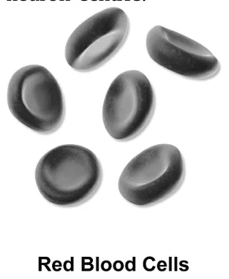
Một phần điều khiến hệ thần kinh trở nên đặc biệt đến vậy là bản thân các neuron rất khác biệt với tư cách là tế bào. Các tế bào thường là những thực thể nhỏ, khép kín—hãy xem xét những tế bào hồng cầu tròn nhỏ bé:
Ngược lại, neuron là những quái vật bất đối xứng cao độ, thuôn dài, thường có các nhánh tua tủa mọc ra khắp nơi:
Những nhánh này có thể phát triển phức tạp đến mức điên rồ. Hãy xem xét một neuron đơn lẻ này, được vẽ vào đầu thế kỷ XX bởi một trong những vị thần của lĩnh vực này, Santiago Ramón y Cajal:
Nó giống như cành của một cái cây mọc cuồng dại, giải thích cho thuật ngữ chuyên môn rằng đây là một neuron “phân nhánh cây” (arborized) dày đặc.
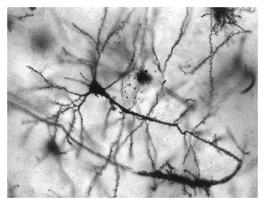
Nhiều neuron cũng to lớn đến mức kỳ cục. Hàng tỷ tỷ tế bào hồng cầu có thể nằm gọn trên dấu chấm câu ở cuối câu này. Ngược lại, có những neuron đơn lẻ trong tủy sống phóng ra những sợi cáp dẫn truyền dài nhiều feet. Có những neuron tủy sống ở cá voi xanh dài bằng một nửa chiều dài của sân bóng rổ.
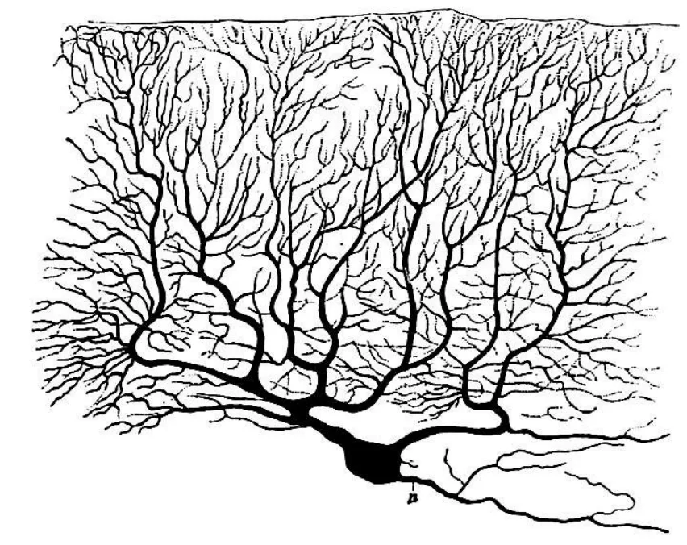
Giờ hãy nói về các bộ phận cấu thành một neuron, chìa khóa để hiểu chức năng của nó. Việc mà các neuron làm là trò chuyện với nhau, khiến nhau trở nên hưng phấn. Ở một đầu của neuron là đôi tai ẩn dụ của nó, những nhánh chuyên biệt tiếp nhận thông tin từ một neuron khác. Ở đầu kia là những nhánh đóng vai trò cái miệng, giao tiếp với neuron tiếp theo trong hàng.
Đôi tai, tức đầu vào, được gọi là sợi nhánh (dendrite). Đầu ra bắt đầu bằng một sợi cáp dài đơn độc gọi là sợi trục (axon), sau đó phân nhánh thành các đầu tận cùng sợi trục—những tận cùng sợi trục này chính là cái miệng (tạm thời bỏ qua bao myelin nhé). Các tận cùng sợi trục đó kết nối với sợi nhánh của neuron tiếp theo trong hàng. Nhờ vậy, đôi tai sợi nhánh của một neuron được thông báo rằng neuron phía sau nó đang hưng phấn. Dòng thông tin sau đó quét từ sợi nhánh đến thân tế bào, tới sợi trục, đến các tận cùng sợi trục, rồi được truyền sang neuron tiếp theo.
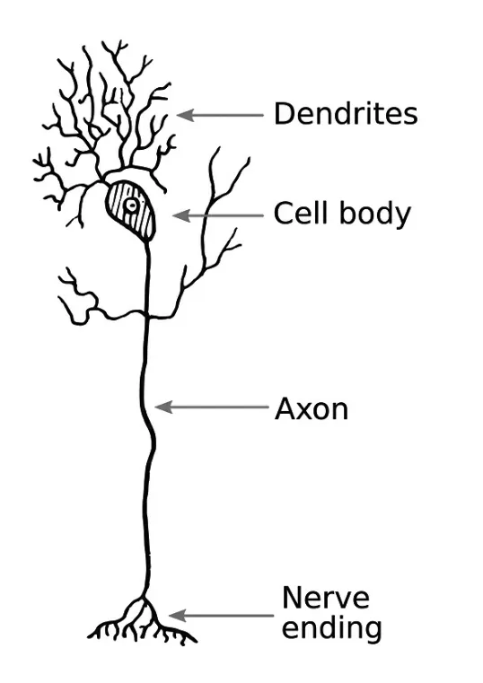
Hãy dịch “dòng thông tin” sang ngôn ngữ bán hóa học. Thực chất cái gì đi từ sợi nhánh đến tận cùng sợi trục? Một làn sóng kích thích điện. Bên trong neuron có nhiều ion mang điện tích dương và âm khác nhau. Ngay bên ngoài màng neuron là những ion mang điện tích dương và âm khác. Khi một neuron nhận được tín hiệu kích thích từ neuron trước đó tại đầu một sợi nhánh đơn lẻ, các kênh trên màng của sợi nhánh đó mở ra, cho phép các ion khác nhau chảy vào và những ion khác chảy ra, và kết quả ròng là bên trong đầu sợi nhánh đó trở nên tích điện dương hơn. Điện tích lan truyền về phía tận cùng sợi trục, nơi nó được truyền sang neuron tiếp theo. Phần hóa học chỉ có thế thôi.
Hai chi tiết cực kỳ quan trọng:
Điện thế nghỉ. Khi một neuron nhận được thông điệp kích thích cực mạnh từ neuron đứng trước, bên trong nó có thể trở nên tích điện dương hơn so với khoảng không gian ngoại bào xung quanh. Quay lại phép ẩn dụ ban nãy—neuron lúc này có điều muốn nói và đang gào thét hết cỡ. Vậy mọi thứ trông như thế nào khi neuron chẳng có gì để nói, khi chưa bị kích thích? Có lẽ là một trạng thái cân bằng, nơi bên trong và bên ngoài có điện tích bằng nhau, trung hòa chăng?* Không, không bao giờ! Trạng thái đó chỉ đủ tốt cho một tế bào nào đó ở lá lách hoặc ngón chân cái của bạn thôi. Nhưng quay lại vấn đề cốt lõi kia, rằng neuron là tất cả về sự tương phản. Khi một neuron chẳng có gì để nói, đó không phải là một trạng thái thụ động để mọi thứ tự trôi tuột về số không. Thay vào đó, nó là một quá trình chủ động. Một quá trình chủ động, có chủ đích, mạnh mẽ, cơ bắp và đầy mồ hôi. Thay vì trạng thái “tôi chẳng có gì để nói” là trạng thái trung hòa điện tích, bên trong neuron lại tích điện âm so với bên ngoài.
Bạn không thể đòi hỏi một sự tương phản kịch tính hơn thế: Tôi chẳng có gì để nói = bên trong neuron tích điện âm. Tôi có điều muốn nói = bên trong tích điện dương. Không neuron nào từng nhầm lẫn giữa hai trạng thái này. Trạng thái âm bên trong được gọi là “điện thế nghỉ”. Trạng thái hưng phấn được gọi là “điện thế hoạt động”. Và tại sao việc tạo ra điện thế nghỉ đầy kịch tính này lại là một quá trình chủ động đến vậy? Bởi vì các neuron phải làm việc điên cuồng, sử dụng nhiều loại bơm khác nhau trên màng tế bào để đẩy một số ion mang điện tích dương ra ngoài và giữ một số ion mang điện tích âm ở lại bên trong, tất cả nhằm tạo ra trạng thái nghỉ âm bên trong đó. Khi có một tín hiệu kích thích ập đến; các bơm ngừng hoạt động, các kênh mở ra, và các ion tràn qua tràn lại để tạo ra điện tích dương kích thích bên trong. Và khi làn sóng kích thích đó đi qua, các kênh đóng lại và các bơm lại bắt tay vào hoạt động, tái tạo lại điện thế nghỉ âm đó. Đáng kinh ngạc là các neuron tiêu tốn gần một nửa năng lượng của chúng chỉ cho các bơm tạo ra điện thế nghỉ. Không hề rẻ chút nào để tạo ra sự tương phản kịch tính giữa việc chẳng có gì để nói và việc có một tin tức thú vị.
Giờ khi đã hiểu điện thế nghỉ và điện thế hoạt động, hãy chuyển sang chi tiết cực kỳ quan trọng thứ hai:
Thực ra điện thế hoạt động không diễn ra như thế. Những gì tôi vừa phác thảo là một sợi nhánh đơn lẻ nhận được tín hiệu kích thích từ neuron trước đó (tức là neuron trước đã có điện thế hoạt động); điều này tạo ra một điện thế hoạt động trong sợi nhánh đó, lan truyền về phía thân tế bào, đi qua thân, lên sợi trục, tới tận cùng sợi trục và báo hiệu cho neuron tiếp theo. Không đúng. Thay vào đó:
Neuron đang ngồi đó chẳng có gì để nói, tức là đang duy trì điện thế nghỉ; toàn bộ bên trong nó tích điện âm. Chợt một tín hiệu kích thích ập đến tại một sợi nhánh đơn lẻ đó, phát xuất từ neuron đứng trước. Kết quả là các kênh mở ra và các ion chảy vào và ra khỏi một sợi nhánh đó. Nhưng chỉ một chút thôi. Không đủ để làm toàn bộ bên trong neuron tích điện dương, mà chỉ làm cho bên trong sợi nhánh đó bớt âm đi một chút (chỉ để gắn thêm vài con số không hề quan trọng vào đây, điện thế nghỉ dịch chuyển từ khoảng –70 milivôn lên khoảng –60 milivôn). Sau đó các kênh đóng lại. Cái nấc nhẹ của việc trở nên bớt âm hơn* lan rộng lên phía trên thân của sợi nhánh đó. Các bơm đã bắt đầu hoạt động, bơm các ion trở lại nơi chúng xuất phát ban đầu. Vì vậy, tại đầu mút của sợi nhánh đó, điện tích đi từ –70 lên –60 mV. Nhưng nhích lên một chút trên thân sợi nhánh, mọi thứ chỉ đi từ –70 lên –65 mV. Xa hơn nữa lên phía trên, từ –70 lên –69. Nói cách khác, tín hiệu kích thích đó bị tiêu tán. Bạn vừa lấy một mặt hồ êm ả phẳng lặng, ở trạng thái nghỉ, và ném một viên sỏi nhỏ vào. Nó tạo ra một gợn sóng nhỏ ngay tại đó, lan ra ngoài, nhỏ dần về biên độ, cho đến khi tiêu tán cách nơi viên sỏi rơi không xa. Và cách đó hàng dặm, tại đầu sợi trục của hồ, gợn sóng kích thích đó chẳng có bất kỳ tác động nào cả.
Nói cách khác, nếu chỉ một sợi nhánh đơn lẻ bị kích thích, điều đó không đủ để truyền sự kích thích xuống đầu sợi trục và sang neuron tiếp theo. Vậy làm thế nào một thông điệp có thể được truyền đi? Hãy quay lại bức vẽ tuyệt vời về một neuron của Cajal ở trên.
Mạng lưới phân nhánh cây gồm các cành sợi nhánh chẻ đôi đó kết thúc bằng vô số đầu sợi nhánh (đến lúc giới thiệu thuật ngữ thường dùng: “kết thúc bằng vô số gai sợi nhánh”). Và để có đủ sự kích thích quét từ đầu sợi nhánh của neuron sang đầu sợi trục, bạn phải có sự cộng gộp—cùng một gai phải bị kích thích lặp đi lặp lại và/hoặc, phổ biến hơn, một loạt các gai sợi nhánh phải bị kích thích cùng một lúc. Bạn không thể tạo ra một con sóng, thay vì chỉ là một gợn sóng, trừ khi bạn ném vào rất nhiều viên sỏi.
Tại gốc của sợi trục, nơi nó nhô ra từ thân tế bào, có một bộ phận chuyên biệt (gọi là “gò sợi trục”). Nếu tất cả những đầu vào sợi nhánh được cộng gộp đó tạo ra đủ gợn sóng để đẩy điện thế nghỉ quanh gò sợi trục từ –70 mV lên khoảng –40 mV, một ngưỡng sẽ bị vượt qua. Và một khi điều đó xảy ra, mọi thứ bùng nổ dữ dội. Một loại kênh khác mở ra trên màng của gò sợi trục, cho phép một sự di cư ồ ạt của các ion, cuối cùng tạo ra một điện tích dương (khoảng 30 mV). Nói cách khác, một điện thế hoạt động. Sau đó nó mở ra chính loại kênh đó ở mẩu màng sợi trục kế tiếp, tái tạo lại điện thế hoạt động tại đó, rồi mẩu tiếp theo, và tiếp theo nữa, suốt dọc xuống tận cùng sợi trục.
Xét trên phương diện thông tin, một neuron có hai loại hệ thống truyền tín hiệu khác nhau. Từ các gai sợi nhánh đến điểm khởi đầu của gò sợi trục, đó là tín hiệu tương tự (analogue), với các mức độ tín hiệu tiêu tán theo không gian và thời gian. Và từ gò sợi trục đến các tận cùng sợi trục, đó là một hệ thống kỹ thuật số (digital) với cơ chế truyền tín hiệu tất-cả-hoặc-không-có-gì tự tái tạo dọc theo chiều dài sợi trục.
Hãy thử đưa vào vài con số tưởng tượng. Giả sử một neuron trung bình có khoảng một trăm gai sợi nhánh và khoảng một trăm tận cùng sợi trục. Điều này có ý nghĩa gì trong bối cảnh đặc tính tương tự/kỹ thuật số của neuron?
Đôi khi chẳng có gì thú vị. Hãy xét neuron A, như vừa giới thiệu, có một trăm tận cùng sợi trục. Mỗi tận cùng kết nối với một trong các gai sợi nhánh của neuron tiếp theo trong hàng, neuron B. Neuron A có một điện thế hoạt động, lan truyền xuống toàn bộ một trăm tận cùng sợi trục của nó, kích thích toàn bộ một trăm gai sợi nhánh ở neuron B. Ngưỡng tại gò sợi trục của neuron B đòi hỏi năm mươi sợi nhánh phải bị kích thích cùng một lúc để tạo ra một điện thế hoạt động; do đó, với toàn bộ một trăm sợi nhánh đều phát xung, neuron B chắc chắn sẽ có một điện thế hoạt động.
Giờ thì, thay vào đó, neuron A phóng một nửa số tận cùng sợi trục của nó tới neuron B và một nửa tới neuron C. Nó có một điện thế hoạt động; điều đó có đảm bảo một điện thế hoạt động ở neuron B và C không? Có. Gò sợi trục của mỗi neuron đó có ngưỡng cần tín hiệu từ năm mươi viên sỏi sợi nhánh cùng lúc để tạo ra điện thế hoạt động.
Giờ thì, thay vào đó, neuron A phân bổ đều các tận cùng sợi trục của nó cho mười neuron đích khác nhau, từ neuron B đến K. Điện thế hoạt động của nó có tạo ra điện thế hoạt động ở các neuron đích không? Không đời nào—tiếp tục ví dụ của chúng ta, lượng sỏi tương đương mười gai sợi nhánh ở mỗi neuron đích thấp hơn rất nhiều so với ngưỡng năm mươi viên sỏi.
Vậy điều gì sẽ bao giờ gây ra được điện thế hoạt động ở, chẳng hạn, neuron K, vốn chỉ có mười gai sợi nhánh nhận tín hiệu kích thích từ neuron A? Chà, điều gì đang diễn ra với chín mươi gai sợi nhánh còn lại của nó? Chúng đang nhận đầu vào từ các neuron khác—chín neuron khác, với mười đầu vào từ mỗi neuron. Khi nào thì neuron B có điện thế hoạt động? Khi ít nhất một nửa số neuron phóng chiếu tới nó có điện thế hoạt động. Nói cách khác, bất kỳ neuron nào cũng tích hợp các đầu vào từ tất cả các neuron phóng chiếu tới nó. Và từ đây rút ra một quy luật: neuron A phóng chiếu tới càng nhiều neuron, theo định nghĩa, nó càng có thể tác động tới nhiều neuron hơn; tuy nhiên, nó phóng chiếu tới càng nhiều neuron, ảnh hưởng trung bình của nó tại mỗi neuron đích đó sẽ càng nhỏ đi. Có một sự đánh đổi.
Điều này không quan trọng ở tủy sống, nơi một neuron thường gửi toàn bộ các nhánh phóng chiếu của nó tới neuron kế tiếp trong hàng. Nhưng trong não bộ, một neuron sẽ phân tán các nhánh phóng chiếu của nó tới hàng tá neuron khác và nhận đầu vào từ hàng tá neuron khác, với gò sợi trục của mỗi neuron quyết định xem ngưỡng có đạt được và một điện thế hoạt động có được tạo ra hay không. Não bộ được nối dây thành các mạng lưới truyền tín hiệu phân kỳ và hội tụ.
— Giờ hãy đưa vào một con số thực tế gây sửng sốt—neuron trung bình của bạn có khoảng mười nghìn gai sợi nhánh và khoảng ngần ấy tận cùng sợi trục. Nhân thêm một trăm tỷ neuron nữa, và bạn sẽ thấy tại sao não bộ, chứ không phải thận, mới viết nên thơ ca.
Chỉ để cho trọn vẹn, đây là một vài sự thật cuối cùng. Các neuron có thêm một số mánh khóe, ở cuối một điện thế hoạt động, để tăng cường hơn nữa sự tương phản giữa chẳng có gì để nói/có điều muốn nói, hai cách để kết thúc điện thế hoạt động thật nhanh và kịch tính: một thứ gọi là chỉnh lưu chậm (delayed rectification) và một thứ khác gọi là giai đoạn trơ tăng phân cực (hyperpolarized refractory period). Một chi tiết nhỏ khác từ sơ đồ trên—một loại tế bào thần kinh đệm quấn quanh sợi trục, tạo thành một lớp cách điện gọi là bao myelin; quá trình “myelin hóa” này khiến điện thế hoạt động bắn dọc xuống sợi trục nhanh hơn.
Và một chi tiết cuối cùng có tầm quan trọng lớn về sau: ngưỡng của gò sợi trục có thể thay đổi theo thời gian, từ đó làm thay đổi tính dễ kích thích của neuron. Những thứ gì làm thay đổi ngưỡng? Hormone, tình trạng dinh dưỡng, trải nghiệm, và những yếu tố khác lấp đầy các trang của cuốn sách này.
Chúng ta giờ đã đi được từ đầu này sang đầu kia của một neuron. Chính xác thì một neuron đang có điện thế hoạt động truyền đạt sự hưng phấn của nó sang neuron tiếp theo trong hàng bằng cách nào?
HAI NEURON CÙNG LÚC: GIAO TIẾP QUA SYNAPSE
Như vậy một điện thế hoạt động đã được kích hoạt tại gò sợi trục ở neuron A và quét xuống toàn bộ mười nghìn tận cùng sợi trục. Sự kích thích này được truyền sang (các) neuron tiếp theo như thế nào?
Thất bại của phe Hợp bào
Đối với một nhà khoa học thần kinh trung bình ở thế kỷ XIX, câu trả lời rất dễ dàng. Giải thích của họ sẽ là não bộ thai nhi được tạo thành từ số lượng khổng lồ các neuron riêng lẻ dần dần mọc ra các sợi nhánh và sợi trục. Và cuối cùng các tận cùng sợi trục của một neuron vươn tới và chạm vào các gai sợi nhánh của (các) neuron tiếp theo, và chúng hòa nhập lại, tạo thành một màng liên tục giữa hai tế bào. Từ tất cả các neuron thai nhi riêng lẻ đó, não bộ trưởng thành hình thành nên mạng lưới liên tục, vô cùng phức tạp gồm một siêu neuron duy nhất, được gọi là “hợp bào” (synctitium). Nhờ vậy sự kích thích dễ dàng chảy từ neuron này sang neuron khác vì chúng thực sự không phải là những neuron tách biệt.
Cuối thế kỷ XIX, một quan điểm thay thế xuất hiện, cụ thể là mỗi neuron vẫn là một đơn vị độc lập, và các tận cùng sợi trục của một neuron thực chất không chạm vào các gai sợi nhánh của neuron tiếp theo. Thay vào đó có một khe hở tí hon giữa hai bên. Ý niệm này được gọi là “học thuyết neuron”.
Những người ủng hộ trường phái hợp bào nghĩ rằng học thuyết neuron thật ngu xuẩn. “Hãy chỉ cho tôi thấy các khe hở giữa tận cùng sợi trục và gai sợi nhánh,” họ chất vấn những kẻ dị giáo này, “và nói cho tôi biết sự kích thích nhảy từ neuron này sang neuron khác bằng cách nào.”
Và rồi vào năm 1873 mọi chuyện được giải quyết bởi nhà khoa học thần kinh người Ý Camillo Golgi, người đã phát minh ra một kỹ thuật nhuộm mô não theo một phương pháp mới lạ. Và Cajal vừa nhắc đến ở trên đã sử dụng “phép nhuộm Golgi” này để nhuộm toàn bộ các nhánh, mọi cành lớn cành nhỏ và chồi non của sợi nhánh và tận cùng sợi trục của từng neuron đơn lẻ. Điều cốt yếu là thuốc nhuộm không lan từ neuron này sang neuron khác. Không hề có một mạng lưới liên tục, hợp nhất của một siêu neuron duy nhất. Từng neuron là những thực thể rời rạc. Những người theo học thuyết neuron đã đánh bại phe hợp bào.*
Hoan hô, vụ án khép lại; thực sự có những khe hở siêu-siêu hiển vi giữa tận cùng sợi trục và gai sợi nhánh; những khe hở này được gọi là “khớp thần kinh” (synapse) (mà mãi đến khi kính hiển vi điện tử được phát minh vào thập niên 1950 người ta mới quan sát trực tiếp được, đóng chiếc đinh cuối cùng vào cỗ quan tài của thuyết hợp bào). Nhưng vẫn còn vấn đề làm thế nào sự kích thích lan truyền từ neuron này sang neuron khác, nhảy qua khe synapse.
Câu trả lời, mà việc theo đuổi nó đã thống trị khoa học thần kinh vào giữa thế kỷ XX, là sự kích thích điện không nhảy qua khe synapse. Thay vào đó, nó được dịch sang một loại tín hiệu khác.
Chất dẫn truyền thần kinh
Nằm bên trong mỗi tận cùng sợi trục, neo vào màng tế bào, là những quả bóng nhỏ gọi là túi synap (vesicle), chứa đầy nhiều bản sao của một sứ giả hóa học. Khi điện thế hoạt động vốn được khởi phát cách đó hàng dặm ở gò sợi trục của neuron ập đến, nó quét qua tận cùng và kích hoạt việc giải phóng các sứ giả hóa học đó vào khe synapse. Chúng trôi qua khe, chạm tới gai sợi nhánh ở phía bên kia, nơi chúng kích thích neuron đó. Những sứ giả hóa học này được gọi là chất dẫn truyền thần kinh.
Làm thế nào các chất dẫn truyền thần kinh, được giải phóng từ phía “tiền synapse” của khớp thần kinh, lại gây ra sự kích thích ở gai sợi nhánh “hậu synapse”? Nằm trên màng của gai sợi nhánh là các thụ thể dành cho chất dẫn truyền thần kinh. Đến lúc giới thiệu một trong những sáo ngữ kinh điển nhất của sinh học. Phân tử chất dẫn truyền thần kinh có một hình dạng đặc trưng (với mỗi bản sao của phân tử đều có hình dạng giống hệt nhau). Thụ thể có một túi gắn kết với hình dạng đặc trưng hoàn toàn khớp bổ sung với hình dạng của chất dẫn truyền thần kinh. Và do đó chất dẫn truyền thần kinh—đến giờ sáo ngữ rồi—khớp vào thụ thể giống như chìa khóa tra vào ổ khóa. Không phân tử nào khác khớp khít vào thụ thể đó; phân tử chất dẫn truyền thần kinh cũng sẽ không khớp khít vào bất kỳ loại thụ thể nào khác. Chất dẫn truyền thần kinh gắn vào thụ thể, kích hoạt mở các kênh kia, và các dòng kích thích ion bắt đầu diễn ra trong gai sợi nhánh.
Điều này mô tả sự giao tiếp “xuyên synapse” bằng các chất dẫn truyền thần kinh. Trừ một chi tiết: chuyện gì xảy ra với các phân tử chất dẫn truyền thần kinh sau khi chúng gắn vào thụ thể? Chúng không gắn mãi mãi—hãy nhớ rằng điện thế hoạt động diễn ra trong khoảng một phần nghìn giây. Thay vào đó chúng tách khỏi thụ thể, và tại thời điểm đó các chất dẫn truyền thần kinh phải được dọn dẹp. Việc này diễn ra theo một trong hai cách. Thứ nhất, đối với khớp thần kinh có ý thức bảo vệ sinh thái, có các “bơm tái hấp thu” trên màng của tận cùng sợi trục. Chúng thu hồi các chất dẫn truyền thần kinh và tái chế chúng, đưa chúng trở lại vào các túi tiết để sử dụng lại.* Lựa chọn thứ hai là chất dẫn truyền thần kinh bị phân hủy ngay trong khe synapse bởi một enzyme, với các sản phẩm phân hủy bị tống ra biển (tức là môi trường ngoại bào, và từ đó đi vào dịch não tủy, dòng máu, và cuối cùng là bàng quang).
Những bước dọn dẹp này vô cùng quan trọng. Giả sử bạn muốn tăng cường lượng tín hiệu chất dẫn truyền thần kinh qua một khớp thần kinh. Hãy dịch điều đó sang ngôn ngữ kích thích của phần trước—bạn muốn tăng tính dễ kích thích qua khớp thần kinh, sao cho một điện thế hoạt động ở neuron tiền synapse có sức nặng hơn ở neuron hậu synapse, nghĩa là làm tăng khả năng gây ra một điện thế hoạt động ở neuron thứ hai đó. Bạn có thể tăng lượng chất dẫn truyền thần kinh được giải phóng—neuron tiền synapse hét to hơn. Hoặc bạn có thể tăng số lượng thụ thể trên gai sợi nhánh—neuron hậu synapse lắng nghe thính hơn.
Nhưng như một khả năng khác, bạn có thể làm giảm hoạt động của bơm tái hấp thu. Kết quả là, ít chất dẫn truyền thần kinh bị dọn khỏi khe synapse hơn. Do đó nó lưu lại lâu hơn và gắn vào các thụ thể lặp đi lặp lại, khuếch đại tín hiệu. Hoặc, tương đương về mặt khái niệm, bạn có thể làm giảm hoạt động của enzyme phân hủy; ít chất dẫn truyền thần kinh bị bẻ gãy hơn, nên nhiều chất lưu lại lâu hơn trong khe synapse, tạo ra tác động mạnh mẽ hơn. Như chúng ta đã thấy, một số phát hiện thú vị nhất giúp giải thích những khác biệt cá nhân trong các hành vi mà chúng ta quan tâm trong cuốn sách này đều liên quan đến lượng chất dẫn truyền thần kinh được tạo ra và giải phóng, cũng như số lượng và chức năng của các thụ thể, bơm tái hấp thu và enzyme phân hủy.
Các loại chất dẫn truyền thần kinh
Vậy phân tử chất dẫn truyền thần kinh thần thoại này, thứ được giải phóng bởi các điện thế hoạt động từ tận cùng sợi trục của toàn bộ một trăm tỷ neuron, là gì? Đây là chỗ mọi thứ trở nên phức tạp, bởi vì có nhiều hơn một loại chất dẫn truyền thần kinh.
Tại sao lại nhiều hơn một? Điều tương tự xảy ra ở mọi khớp thần kinh, đó là chất dẫn truyền thần kinh gắn vào thụ thể chìa-khóa-trong-ổ-khóa của nó và kích hoạt việc mở các kênh khác nhau cho phép các ion chảy qua và làm cho bên trong gai sợi nhánh bớt âm hơn một chút.
Một lý do là các chất dẫn truyền thần kinh khác nhau gây khử cực ở các mức độ khác nhau—nói cách khác, một số có tác dụng kích thích mạnh hơn những chất khác—và trong những khoảng thời gian khác nhau. Điều này cho phép sự phức tạp lớn hơn nhiều trong thông tin được truyền từ neuron này sang neuron khác.
Và giờ để nhân đôi kích thước bảng màu của chúng ta, có một số chất dẫn truyền thần kinh không gây khử cực, không làm tăng khả năng neuron tiếp theo trong hàng có điện thế hoạt động. Chúng làm điều ngược lại—chúng “tăng phân cực” gai sợi nhánh, mở ra các loại kênh khác khiến điện thế nghỉ thậm chí còn âm hơn nữa (ví dụ: dịch chuyển từ –70 mV xuống –80 mV). Nói cách khác, có tồn tại thứ gọi là chất dẫn truyền thần kinh ức chế. Bạn có thể thấy điều đó vừa làm mọi thứ phức tạp thêm thế nào—một neuron với mười nghìn gai sợi nhánh của nó đang nhận các đầu vào kích thích với cường độ khác nhau từ nhiều neuron, nhận các đầu vào ức chế từ những neuron khác, và tích hợp tất cả những thứ này tại gò sợi trục.
Do đó có rất nhiều nhóm chất dẫn truyền thần kinh khác nhau, mỗi loại gắn vào một vị trí thụ thể độc nhất có hình dạng bổ sung cho nó. Liệu có một loạt các loại chất dẫn truyền thần kinh khác nhau trong mỗi tận cùng sợi trục, để một điện thế hoạt động kích hoạt việc giải phóng cả một bản giao hưởng tín hiệu không? Đây là lúc chúng ta viện đến Nguyên lý Dale, đặt theo tên Henry Dale, một trong những bậc đại thụ của lĩnh vực này, người vào thập niên 1930 đã đề xuất một quy tắc mà tính đúng đắn của nó tạo nên cốt lõi cho cảm giác an tâm của mọi nhà khoa học thần kinh: một điện thế hoạt động giải phóng cùng một loại chất dẫn truyền thần kinh từ tất cả các tận cùng sợi trục của một neuron. Do đó sẽ có một hồ sơ hóa học thần kinh đặc trưng cho một neuron cụ thể—“Ồ, neuron đó là neuron loại chất dẫn truyền thần kinh A. Và điều đó cũng có nghĩa là những neuron mà nó trò chuyện cùng có thụ thể chất dẫn truyền thần kinh A trên các gai sợi nhánh của chúng.”*
Có hàng tá chất dẫn truyền thần kinh đã được xác định. Một số cái tên lừng lẫy nhất: serotonin, norepinephrine, dopamine, acetylcholine, glutamate (chất dẫn truyền thần kinh kích thích mạnh nhất trong não), và GABA (chất ức chế mạnh nhất). Chính tại điểm này mà sinh viên y khoa bị tra tấn với hàng tá chi tiết dài dằng dặc về cách mỗi chất dẫn truyền thần kinh được tổng hợp—tiền chất của nó, các dạng trung gian mà tiền chất được chuyển hóa thành cho đến khi cuối cùng đạt được chất thật, những cái tên dài đau đớn của các loại enzyme xúc tác cho các quá trình tổng hợp đó. Giữa mớ hỗn độn đó có một vài quy tắc khá đơn giản xoay quanh ba điểm:
a. Bạn không bao giờ muốn thấy mình đang chạy bán sống bán chết khỏi một con sư tử và, ôi thôi, các neuron ra lệnh cho cơ bắp bạn chạy nhanh lại ngừng hoạt động vì chúng đã cạn sạch chất dẫn truyền thần kinh. Do đó các chất dẫn truyền thần kinh được tạo ra từ những tiền chất dồi dào; thường chúng là những thành phần dinh dưỡng đơn giản. Ví dụ, serotonin và dopamine được tạo ra từ các axit amin trong chế độ ăn uống là tryptophan và tyrosine, tương ứng. Acetylcholine được tạo ra từ choline và lecithin trong thực phẩm. b. Một neuron có khả năng phát ra hàng tá điện thế hoạt động mỗi giây. Mỗi lần như vậy đòi hỏi phải nạp đầy lại các túi synap bằng chất dẫn truyền thần kinh mới, giải phóng chúng và dọn dẹp sau đó. Vì lẽ đó, bạn không muốn chất dẫn truyền thần kinh của mình là những phân tử khổng lồ, phức tạp, cầu kỳ, mà mỗi phân tử đòi hỏi nhiều thế hệ thợ đá mới đẽo gọt xong. Thay vào đó, tất cả chúng đều được tạo ra chỉ qua một số ít bước từ tiền chất. Chúng rẻ và dễ sản xuất. Ví dụ, chỉ mất hai bước tổng hợp đơn giản để biến tyrosine thành dopamine. c. Cuối cùng, để hoàn thiện khuôn mẫu tổng hợp chất dẫn truyền thần kinh vừa rẻ vừa dễ này, nhiều chất dẫn truyền thần kinh có thể được tạo ra từ cùng một tiền chất. Chẳng hạn, ở các neuron sử dụng dopamine làm chất dẫn truyền thần kinh, có hai enzyme thực hiện hai bước lắp ráp đó. Trong khi đó, ở các neuron giải phóng norepinephrine có thêm một enzyme bổ sung chuyển hóa dopamine thành norepinephrine.
Rẻ, rẻ, rẻ. Điều này hoàn toàn hợp lý. Không thứ gì trở nên lỗi thời nhanh hơn một chất dẫn truyền thần kinh sau khi nó đã hoàn thành nhiệm vụ hậu synapse của mình. Tờ báo ngày hôm qua hôm nay chỉ hữu ích để lót cho chó con đi vệ sinh đúng chỗ.
Dược lý học thần kinh
Khi những hiểu biết sâu sắc về chất dẫn truyền thần kinh học này xuất hiện, chúng cho phép các nhà khoa học bắt đầu hiểu được cách các loại thuốc và dược phẩm “tác động lên thần kinh” và “tác động lên tâm thần” khác nhau hoạt động.
Nhìn chung, những loại thuốc như vậy rơi vào hai nhóm: những thuốc làm tăng tín hiệu qua một loại khớp thần kinh cụ thể, và những thuốc làm giảm nó. Chúng ta đã thấy một số chiến lược để làm tăng tín hiệu: (a) Kích thích tổng hợp nhiều chất dẫn truyền thần kinh hơn (ví dụ, bằng cách đưa vào tiền chất hoặc sử dụng một loại thuốc làm tăng hoạt tính của các enzyme tổng hợp chất dẫn truyền thần kinh). Chẳng hạn, bệnh Parkinson liên quan đến sự mất hụt dopamine ở một vùng não, và một phương pháp điều trị chủ lực là tăng mức dopamine bằng cách cho dùng thuốc L-DOPA, vốn là tiền chất trực tiếp của dopamine. (b) Đưa vào một phiên bản tổng hợp của chất dẫn truyền thần kinh, hoặc một loại thuốc có cấu trúc đủ giống với chất thật để đánh lừa các thụ thể. Psilocybin, chẳng hạn, có cấu trúc tương tự serotonin và kích hoạt một phân nhóm thụ thể của nó. (c) Kích thích neuron hậu synapse tạo ra nhiều thụ thể hơn. Về lý thuyết thì hay, nhưng không dễ thực hiện. (d) Ức chế các enzyme phân hủy để nhiều chất dẫn truyền thần kinh lưu lại trong khe synapse hơn. (e) Ức chế sự tái hấp thu chất dẫn truyền thần kinh, kéo dài tác dụng của nó trong khe synapse. Loại thuốc chống trầm cảm hiện đại được ưa chuộng, Prozac, làm chính xác điều đó tại các khớp thần kinh serotonin. Do đó nó thường được gọi là một “SSRI”—chất ức chế tái hấp thu serotonin có chọn lọc.
Trong khi đó, có cả một kho dược điển các loại thuốc giúp làm giảm tín hiệu qua khớp thần kinh, và bạn có thể thấy các cơ chế nền tảng của chúng sẽ bao gồm—chặn sự tổng hợp một chất dẫn truyền thần kinh, chặn sự giải phóng của nó, chặn đường tiếp cận thụ thể của nó, v.v. Ví dụ vui:
Acetylcholine kích thích cơ hoành của bạn co lại. Curare, loại độc dược được các bộ lạc Amazon tẩm vào phi tiêu, chặn các thụ thể acetylcholine. Bạn ngừng thở.
Một điểm cuối cùng, rất liên quan—cũng giống như ngưỡng của gò sợi trục có thể thay đổi theo thời gian để đáp ứng với trải nghiệm, hầu như mọi khía cạnh trong bộ máy vận hành của chất dẫn truyền thần kinh học cũng đều có thể bị thay đổi bởi trải nghiệm.
NHIỀU HƠN HAI NEURON CÙNG LÚC
Chúng ta giờ đây đã thắng lợi tiến tới mức suy nghĩ về ba neuron cùng một lúc. Và chỉ trong không quá nhiều trang nữa, chúng ta sẽ bung xõa và xem xét thậm chí nhiều hơn ba. Mục đích của phần này là để thấy các mạch neuron hoạt động như thế nào, bước trung gian trước khi khảo sát xem toàn bộ các vùng não có liên quan gì đến những hành vi tốt đẹp nhất và tệ hại nhất của chúng ta. Do đó, các ví dụ ở đây được chọn chỉ để mang lại một chút hương vị về cách mọi thứ vận hành ở cấp độ này.
Điều biến thần kinh
Hãy xem xét sơ đồ sau:
Tận cùng sợi trục của neuron B tạo thành một khớp thần kinh với gai sợi nhánh của neuron hậu synapse (hãy gọi nó là neuron C) và giải phóng một chất dẫn truyền thần kinh kích thích. Chuyện bình thường. Trong khi đó, neuron A gửi một nhánh tận cùng sợi trục tới neuron B. Nhưng không phải tới một chỗ bình thường là gai sợi nhánh. Thay vào đó, tận cùng sợi trục của nó tạo khớp thần kinh ngay trên tận cùng sợi trục của neuron B.
Chuyện gì xảy ra ở đây? Neuron A giải phóng chất dẫn truyền thần kinh ức chế GABA, chất này trôi qua khớp thần kinh “trục-trục” (axoaxonic) đó và gắn vào các thụ thể ở phía đó của tận cùng sợi trục neuron B. Và một tác dụng ức chế như vậy (tức là làm cho điện thế nghỉ –70 mV trở nên âm hơn nữa) sẽ dập tắt bất kỳ điện thế hoạt động nào đang lao xuống nhánh sợi trục đó, ngăn không cho nó đi tới tận cùng và giải phóng chất dẫn truyền thần kinh; theo thuật ngữ chuyên ngành, neuron A đang tạo ra một tác động điều biến thần kinh (neuromodulatory) lên neuron B.
Làm sắc nét tín hiệu theo thời gian và không gian
Giờ là một loại mạch mới. Để phù hợp với phần này, tôi đang sử dụng một cách biểu diễn neuron đơn giản hơn. Như được vẽ trong sơ đồ, neuron A gửi toàn bộ các nhánh sợi trục của nó tới neuron B và giải phóng một chất dẫn truyền thần kinh kích thích, được ký hiệu bằng dấu cộng. Vòng tròn ở neuron B đại diện cho thân tế bào cộng với tất cả các sợi nhánh.
Giờ hãy xem xét mạch tiếp theo. Neuron A kích thích neuron B, như thường lệ. Ngoài ra, nó cũng kích thích neuron C. Điều này rất phổ biến, với việc neuron A chia các nhánh sợi trục của mình giữa hai tế bào đích, kích thích cả hai. Và neuron C làm gì? Nó gửi một nhánh ức chế ngược lại lên neuron A, tạo thành một vòng phản hồi âm. Quay lại việc não bộ yêu thích sự tương phản, tràn đầy năng lượng gào thét hết cỡ khi có điều muốn nói, và tràn đầy năng lượng im lặng khi không có gì. Đây là một cấp độ vĩ mô hơn của cùng nguyên lý đó. Neuron A bắn ra một loạt điện thế hoạt động. Còn cách nào tốt hơn để truyền đạt một cách đầy năng lượng rằng mọi chuyện đã kết thúc hơn là trở nên im lặng triệt để, nhờ vào vòng phản hồi? Đó là một phương thức làm sắc nét tín hiệu theo thời gian.* Và lưu ý rằng neuron A có thể “quyết định” tín hiệu phản hồi âm đó mạnh đến mức nào bằng việc nó rẽ bao nhiêu trong số mười nghìn tận cùng sợi trục của mình về phía neuron C thay vì B.
Việc làm sắc nét tín hiệu theo thời gian như vậy có thể được thực hiện theo một cách khác:
Neuron A kích thích B và C. Neuron C gửi một tín hiệu ức chế tới neuron B, tín hiệu này sẽ đến một lúc sau khi B bắt đầu bị kích thích (vì vòng A/C/B gồm hai bước synapse, so với một bước của A/B). Kết quả? Làm sắc nét tín hiệu bằng “ức chế tiến tới” (feed-forward inhibition).
Giờ là một kiểu làm sắc nét tín hiệu khác, làm tăng tỷ lệ tín hiệu trên nhiễu. Hãy xem xét mạch sáu neuron này, trong đó neuron A kích thích B, C kích thích D, và E kích thích F:
Vậy neuron C gửi một nhánh kích thích tới neuron D. Nhưng ngoài ra, sợi trục của neuron C còn gửi các nhánh bên ức chế tới các neuron A và E.* Do đó, nếu neuron C bị kích thích, nó vừa kích thích neuron D vừa làm câm lặng các neuron A và E. Với cơ chế “ức chế bên” (lateral inhibition) như vậy, C gào thét hết cỡ trong khi A và E trở nên đặc biệt im lặng. Đó là một phương thức làm sắc nét tín hiệu không gian (và lưu ý rằng sơ đồ đã được đơn giản hóa, ở chỗ tôi đã lược bỏ một điều hiển nhiên—các neuron A và E cũng gửi nhánh bên ức chế tới neuron C, cũng như tới các neuron ở phía bên kia của chúng trong mạng lưới tưởng tượng này).
Ức chế bên như thế này có mặt ở khắp mọi nơi trong các hệ thống giác quan. Chiếu một chấm sáng tí hon vào mắt. Khoan đã, vừa rồi là neuron thụ cảm ánh sáng A, C, hay E bị kích thích vậy? Nhờ có ức chế bên, rõ ràng hơn hẳn đó là C. Tương tự trong hệ thống xúc giác, cho phép bạn biết chính xác mẩu da này vừa bị chạm vào, chứ không phải lệch sang bên này hay bên kia một chút. Hoặc đôi tai cho bạn biết chắc chắn đó là nốt La, chứ không phải La thăng hay La giáng.*
Như vậy những gì chúng ta vừa thấy là một ví dụ khác về tăng cường độ tương phản trong hệ thần kinh. Ý nghĩa của việc trạng thái im lặng của một neuron mang điện tích âm, thay vì mức trung hòa 0 mV là gì? Đó là một cách làm sắc nét tín hiệu bên trong một neuron. Còn phản hồi, ức chế tiến tới và ức chế bên? Một cách làm sắc nét tín hiệu bên trong một mạch.
Hai loại đau khác nhau
Mạch tiếp theo này bao hàm một số yếu tố vừa được giới thiệu và giải thích tại sao, nhìn chung, có hai loại đau khác nhau. Tôi mê mạch này bởi vì nó quá đỗi tinh tế:
Sợi nhánh của neuron A nằm ngay dưới bề mặt da, và neuron này phát điện thế hoạt động để đáp ứng với một kích thích gây đau. Neuron A sau đó kích thích neuron B, vốn phóng chiếu lên tủy sống, báo cho bạn biết có thứ gì đó gây đau vừa xảy ra. Nhưng neuron A cũng kích thích neuron C, vốn ức chế B. Đây là một trong những mạch ức chế tiến tới của chúng ta. Kết quả? Neuron B phát xung trong chốc lát rồi bị làm im lặng, và bạn cảm nhận điều này như một cơn đau nhói—bạn vừa bị kim châm.
Trong khi đó, có neuron D, với các sợi nhánh nằm trong cùng khu vực chung đó của da và đáp ứng với một loại kích thích gây đau khác. Như trước, neuron D kích thích neuron B, và thông điệp được gửi lên não. Nhưng nó cũng gửi nhánh tới neuron C, nơi nó ức chế C. Kết quả? Khi neuron D được kích hoạt bởi một tín hiệu đau, nó ức chế khả năng ức chế neuron B của neuron C. Và bạn cảm nhận nó như một cơn đau nhức nhối, âm ỉ liên tục, giống như một vết bỏng hoặc vết trầy xước. Quan trọng hơn, điều này được củng cố thêm bởi thực tế là điện thế hoạt động truyền xuống sợi trục của neuron D chậm hơn nhiều so với ở neuron A (liên quan đến lớp myelin mà tôi đã đề cập trước đó—chi tiết không quan trọng). Vì vậy, cơn đau trong thế giới của neuron A không chỉ thoáng qua mà còn nhanh. Cơn đau ở nhánh neuron D không chỉ kéo dài lâu mà còn khởi phát chậm hơn.
Hai nhóm sợi này có thể tương tác với nhau, và chúng ta thường cố tình ép chúng làm vậy. Giả sử bạn có một cơn đau nhức nhối liên tục nào đó—chẳng hạn, một vết côn trùng cắn. Làm sao bạn có thể làm dịu cơn nhức nhối đó? Hãy kích thích ngắn sợi nhanh. Điều này làm tăng cơn đau lên trong một khoảnh khắc, nhưng bằng cách kích thích neuron C, bạn sẽ tắt hệ thống đó đi trong một lúc. Và đó chính xác là điều chúng ta thường làm trong những tình huống như vậy. Một vết côn trùng cắn nhức nhối không chịu nổi, chúng ta gãi mạnh ngay xung quanh nó để làm dịu cơn đau, và con đường đau mạn tính chậm chạp kia bị tắt đi trong tối đa vài phút.
Thực tế rằng cơn đau hoạt động theo cách này mang lại những hệ quả lâm sàng quan trọng. Một mặt, nó cho phép các nhà khoa học thiết kế các phương pháp điều trị cho những người mắc các hội chứng đau mạn tính nặng (ví dụ, một người bị chấn thương lưng nghiêm trọng). Cấy một điện cực nhỏ vào con đường đau nhanh và nối nó với một máy kích thích đeo ở hông bệnh nhân cho phép họ thỉnh thoảng phát xung vào con đường đó để tắt cơn đau mạn tính; cách này mang lại hiệu quả kỳ diệu trong nhiều trường hợp.
Như vậy chúng ta có một mạch bao gồm cơ chế làm sắc nét theo thời gian, giới thiệu phép phủ định kép của việc ức chế kẻ đi ức chế, và nhìn chung cực kỳ thú vị. Và một trong những lý do lớn nhất khiến tôi yêu thích nó là vì nó được đề xuất lần đầu tiên vào năm 1965 bởi hai nhà sinh học thần kinh vĩ đại Ronald Melzack và Patrick Wall. Nó chỉ được đề xuất như một mô hình lý thuyết—“Chưa ai từng nhìn thấy kiểu nối dây này cả, nhưng chúng tôi đề xuất rằng nó ắt hẳn phải trông giống như thế này, xét theo cách cơn đau vận hành.” Và các nghiên cứu sau đó đã chứng minh đó chính xác là cách phần này của hệ thần kinh được nối dây.
Là gã nào trong số đó?
Một mạch cuối cùng, hoàn toàn giả định. Giả sử chúng ta có một mạch gồm hai lớp neuron:
Neuron A phóng chiếu tới các neuron 1, 2 và 3; neuron B phóng chiếu tới 2, 3 và 4, v.v. Giờ hãy cho thấy mạch này mang tính giả định đến mức nào bằng cách gán cho các neuron A, B và C những chức năng hoàn toàn tưởng tượng. Neuron A đáp ứng với bức ảnh của gã bên trái, B với gã ở giữa, C với gã bên phải:
Neuron 1 có thể học được gì? Cách nhận diện gã cụ thể đó. Neuron 5 cũng chuyên biệt tương đương. Nhưng neuron 3 có thể học được gì? Cách các quý ông thời Victoria ăn mặc. Đó là neuron sẽ giúp bạn nhận ra quý ông thời Victoria trong bộ tứ dưới đây:
Tri thức của neuron 3 mang tính khái quát và đến từ sự chồng lấn của các nhánh phóng chiếu từ lớp thứ nhất. Các neuron 2 và 4 cũng là những neuron tổng quát, nhưng chúng kém chính xác hơn vì mỗi neuron chỉ có hai mẫu ví dụ.
Vậy neuron 3 nằm ở trung tâm hội tụ của mạng lưới này. Và những phần tinh vi nhất của não bộ được nối dây theo cách giống như mạch cổ tích này, nhưng ở quy mô khổng lồ—cùng lúc đó, neuron 3 lại là một thành tố ngoại vi hơn trong một mạch khác đang phóng chiếu tới nó (chẳng hạn, một mạch được vẽ vuông góc với trang giấy này), neuron 1 lại nằm ngay tại trung tâm của một mạng lưới khác trong chiều không gian thứ tư, v.v. Tất cả các neuron này đều được nhúng trong nhiều mạng lưới.
Điều này tạo ra cái gì? Năng lực liên tưởng, ẩn dụ, tương đồng, ngụ ngôn, biểu tượng. Khả năng liên kết hai thứ rời rạc, thậm chí từ các giác quan khác nhau. Để liên tưởng một cách đậm chất Homer rằng màu của rượu vang giống màu của biển cả, rằng cả “tomato” và “potato” đều có thể được phát âm theo hai cách khác nhau trong một bài hát, rằng một chiếc lưỡi đỏ tươi thè ra có thể gợi cho bạn nhớ đến âm nhạc của ban nhạc Stones. Đó là lý do tôi liên tưởng Stravinsky với Picasso, vì những đĩa nhạc (bạn còn nhớ thứ đó chứ?) của Stravinsky dường như luôn có một bức tranh của Picasso trên bìa. Và đó là lý do tại sao một mảnh vải hình chữ nhật với một họa tiết màu sắc đặc trưng trên đó có thể đại diện cho cả một quốc gia, một dân tộc hay một hệ tư tưởng.
Một điểm cuối cùng. Chúng ta khác nhau về bản chất và độ trải rộng của các mạng lưới liên tưởng. Và những thái cực của chúng đôi khi có thể tạo ra những điều rất thú vị. Chẳng hạn, phần lớn chúng ta từ sớm đã học cách liên tưởng một thứ trông na ná như hình sau đây với khái niệm “khuôn mặt”:
Nhưng rồi có ai đó xuất hiện với các mạng lưới liên tưởng từ những nhánh phóng chiếu neuron rộng lớn hơn, mang tính cá biệt hơn tất cả những người khác. Và họ dạy cho thế giới thấy rằng thứ này cũng có thể gợi lên tính chất khuôn mặt:
Chúng ta có thể gọi hệ quả của một số kiểu mạng lưới liên tưởng rộng bất thường của các neuron là gì? Sự sáng tạo.
Thêm một vòng nâng cấp quy mô nữa
Một neuron, hai neuron, một mạch neuron. Chúng ta giờ đã sẵn sàng, như bước cuối cùng, nâng cấp quy mô lên mức hàng nghìn neuron cùng một lúc.
Hãy xem xét lát cắt mô sau đây được quan sát dưới kính hiển vi:
Đó là một cánh đồng tế bào đồng nhất, tất cả được sắp xếp gần như giống hệt nhau. Góc trên bên trái và góc dưới bên trái trông giống nhau y đúc.
Đây là mặt cắt ngang của gan; nếu bạn đã thấy một phần, bạn đã thấy tất cả. Chán ngắt.
Nếu não bộ cũng đồng nhất và chán ngắt thế này, nó sẽ chỉ là một khối mô không phân hóa, với thân tế bào neuron trải thảm đều đặn khắp nơi, phóng các nhánh của chúng đi lung tung mọi hướng. Thay vào đó, có một mức độ tổ chức nội tại khổng lồ:
Nói cách khác, thân tế bào của các neuron có chức năng liên quan được tụm lại với nhau ở những vùng cụ thể của não bộ, và các sợi trục mà chúng gửi tới các phần khác của não bộ được tổ chức thành những bó cáp dẫn truyền. Điều cốt yếu mà tất cả những chuyện này có nghĩa là các phần khác nhau của não bộ làm những việc khác nhau. Tất cả các vùng của não đều có tên (thường dài nhiều âm tiết và bắt nguồn từ tiếng Hy Lạp hoặc Latin), các tiểu vùng cũng vậy, và các tiểu-tiểu vùng cũng vậy. Hơn nữa, mỗi vùng đều trò chuyện với một tập hợp nhất quán các vùng khác (tức là gửi sợi trục tới chúng) và được trò chuyện lại bởi một tập hợp nhất quán (tức là nhận các nhánh phóng chiếu sợi trục từ chúng).
Bạn có thể phát điên khi học tất cả những thứ này, như tôi đã từng chứng kiến, một cách bi thảm, ở trường hợp của nhiều nhà giải phẫu học thần kinh say mê từng chi tiết này. Đối với mục đích của chúng ta, có một vài điểm then chốt:
Mỗi vùng cụ thể chứa hàng triệu neuron. Một số cái tên quen thuộc ở cấp độ phân tích này: vùng dưới đồi (hypothalamus), tiểu não (cerebellum), vỏ não (cortex), hồi hải mã (hippocampus). Một số vùng có các tiểu vùng rất rõ rệt và cô đặc, và mỗi tiểu vùng được gọi là một “nhân” (nucleus). (Điều này khá dễ gây nhầm lẫn, vì phần chứa DNA của mỗi tế bào cũng được gọi là nhân. Biết làm sao được?) Một số cái tên có lẽ hoàn toàn xa lạ, chỉ lấy làm ví dụ: nhân nền
Meynert, nhân trên thị của vùng dưới đồi, nhân trám dưới với cái tên đầy duyên dáng. Như đã mô tả, thân tế bào của các neuron có chức năng liên quan được tụm lại với nhau trong vùng hoặc nhân cụ thể của chúng và phóng các nhánh sợi trục đi cùng một hướng, hòa vào nhau thành một sợi cáp (một “bó sợi thần kinh”). Đây là một ví dụ, lấy từ hồi hải mã:
Quay lại lớp vỏ bọc myelin quanh sợi trục giúp điện thế hoạt động lan truyền nhanh hơn. Myelin thường có màu trắng, đủ trắng để các bó cáp sợi trục trong não trông có màu trắng. Do đó chúng được gọi chung là “chất trắng”. Như có thể thấy, một phần lớn não bộ được chiếm giữ bởi các bó sợi thần kinh—đủ mọi vùng đang trò chuyện với nhau, thường là những phần ở rất xa nhau.* Giả sử bạn có một người vừa bị chấn thương ở một phần cụ thể nào đó của não, điểm X bí ẩn. Điều này
mang lại cơ hội tìm hiểu điều gì đó về não bộ bằng cách quan sát xem giờ đây chức năng nào không còn hoạt động bình thường ở người đó nữa. Khoa học thần kinh với tư cách là một lĩnh vực thực sự đã khởi đầu nhờ các nghiên cứu về những người lính bị “vết thương do đạn bắn xuyên qua”. Nhìn theo góc độ khách quan tách rời, những cuộc tắm máu quân sự triền miên ở châu Âu thế kỷ XIX quả là món quà của Chúa dành cho các nhà giải phẫu học thần kinh. Cá nhân bị thương giờ đây làm một việc gì đó một cách bất thường. Bạn có thể kết luận rằng điểm X là phần não chịu trách nhiệm cho phiên bản bình thường của hành vi đó không? Chỉ khi đó là nơi tập trung một cụm thân tế bào neuron. Nếu điểm X là một bó sợi thần kinh, bạn thực chất đang tìm hiểu về vùng não có các neuron gửi nhánh phóng chiếu sợi trục đi qua bó sợi đó, và vùng đó có thể nằm ở đầu bên kia của não bộ. Vì vậy điều quan trọng là phải phân biệt giữa “các nhân neuron” và “các sợi đi ngang qua”. Cuối cùng, quay lại câu chuyện vừa nhắc tới về một phần của não là trung tâm cho một hành vi nào đó. Các ví dụ từ đầu chương đã cho thấy thật khó để hiểu được chức năng của một neuron đơn lẻ nếu không xem xét mạng lưới mà nó là một phần. Cùng một chủ đề ở đây, nhưng ở quy mô lớn hơn. Xét việc mọi vùng não đều đang nhận các nhánh phóng chiếu từ và gửi các nhánh phóng chiếu tới hàng tỷ tỷ nơi khác, rất hiếm khi một vùng não đơn lẻ là “trung tâm cho” bất cứ thứ gì. Thay vào đó tất cả đều là các mạng lưới, nơi thường xuyên hơn nhiều, một vùng cụ thể “đóng vai trò then chốt trong”, “giúp điều hòa”, hoặc “ảnh hưởng đến” một hành vi. Chức năng của một vùng não cụ thể được nhúng trong bối cảnh của các kết nối của nó.
Vậy là phần nhập môn Não Bộ 101 của chúng ta khép lại tại đây.
Phụ lục 2
Những điều cơ bản về Nội tiết học
Nội tiết học là ngành nghiên cứu về hormone, một loại sứ giả rất khác so với các chất dẫn truyền thần kinh ở chương 2. Nhắc lại một chút, chất dẫn truyền thần kinh được giải phóng từ tận cùng sợi trục của neuron để đáp ứng với các điện thế hoạt động. Sau khi được giải phóng, chúng đi qua một khoảng cách vi mô băng qua khe synapse và gắn vào các thụ thể trên sợi nhánh của neuron thứ hai, hậu synapse, từ đó làm thay đổi tính dễ kích thích của neuron đó.
Ngược lại, hormone là một sứ giả hóa học được giải phóng từ các tế bào tiết (bao gồm cả neuron) trong nhiều tuyến khác nhau. Một khi được tiết ra, nó đi vào dòng máu, nơi nó có thể tác động lên bất kỳ tế bào nào khắp cơ thể sở hữu thụ thể dành cho nó.* Vì vậy ngay lập tức chúng ta có những khác biệt then chốt. Thứ nhất, chất dẫn truyền thần kinh chỉ tác động trực tiếp lên các neuron ở phía bên kia của khớp thần kinh, trong khi một hormone có tiềm năng tác động lên từng tế bào trong hàng nghìn tỷ tế bào của cơ thể. Khác biệt thứ hai là khung thời gian; tín hiệu chất dẫn truyền thần kinh qua khớp thần kinh diễn ra trong vài phần nghìn giây. Ngược lại, nhiều tác động của hormone xuất hiện sau nhiều giờ đến nhiều ngày và có thể kéo dài mãi mãi (ví dụ, tuổi dậy thì có mấy khi biến mất sau một thời gian đâu?).
Chất dẫn truyền thần kinh và hormone cũng khác nhau về quy mô tác động. Một chất dẫn truyền thần kinh gắn vào thụ thể hậu synapse của nó, dẫn đến một sự thay đổi cục bộ trong dòng ion đi qua màng của gai sợi nhánh đó. Nhưng tùy thuộc vào loại hormone và tế bào đích đang được xem xét, hormone có thể làm thay đổi hoạt tính của các protein cụ thể, bật hoặc tắt một số gen nhất định, làm biến đổi quá trình chuyển hóa của tế bào, khiến chúng phát triển hoặc teo đi, phân chia hoặc héo hon rồi chết. Ví dụ, testosterone làm tăng khối lượng cơ bắp, và progesterone gây ra sự tăng sinh tế bào trong tử cung, khiến nó dày lên trong pha hoàng thể. Ngược lại, hormone tuyến giáp giết chết các tế bào ở đuôi nòng nọc khi con vật đang biến thái thành ếch, và một nhóm hormone căng thẳng có thể giết chết các tế bào trong hệ miễn dịch (giúp giải thích tại sao căng thẳng khiến chúng ta dễ bị cảm lạnh). Hormone cực kỳ đa năng.
Phần lớn các hormone là một phần của một “trục thần kinh – nội tiết”. Hãy nhớ lại từ chương 2 việc mọi con đường trong hệ limbic đều dẫn về vùng dưới đồi, với vai trò then chốt trong việc điều hòa hệ thần kinh tự chủ và các hệ thống hormone. Đây là lúc phần thứ hai đó bước vào. Các neuron ở vùng dưới đồi tiết ra một loại hormone cụ thể di chuyển trong một hệ tuần hoàn cục bộ tí hon nối với tuyến yên, nằm ngay dưới đáy não. Tại đó hormone này kích thích sự tiết một loại hormone tuyến yên cụ thể, chất này đi vào vòng tuần hoàn chung và kích thích sự tiết một loại hormone thứ ba từ một tuyến ngoại biên nào đó. Đây là một ví dụ liên quan đến ba loại hormone yêu thích của tôi: trong lúc căng thẳng, các neuron vùng dưới đồi tiết ra CRH (hormone giải phóng corticotropin), kích thích các tế bào tuyến yên tiết ra ACTH (hormone kích thích vỏ thượng thận). Một khi đã vào vòng tuần hoàn chung, ACTH đi tới tuyến thượng thận, nơi nó kích thích tiết các hormone căng thẳng steroid gọi là glucocorticoid (với phiên bản ở người là cortisol, hay còn gọi là hydrocortisone). Các hormone khác (ví dụ: estrogen, progesterone, testosterone, và hormone tuyến giáp) được giải phóng từ các tuyến ngoại biên như bước cuối cùng của “trục vùng dưới đồi/tuyến yên/tuyến ngoại biên” của riêng chúng.* Như một sự phức tạp tuyệt vời, việc tiết mỗi loại hormone tuyến yên cụ thể thường không chỉ nằm dưới sự kiểm soát của một hormone giải phóng vùng dưới đồi duy nhất. Thay vào đó có nhiều loại hormone đảm nhiệm chức năng đó, và những hormone vùng dưới đồi khác lại ức chế sự giải phóng hormone tuyến yên cụ thể đó. Ví dụ, cả một loạt hormone vùng dưới đồi bên cạnh CRH cùng điều hòa sự giải phóng ACTH, trong đó các tác nhân gây căng thẳng khác nhau tạo ra những tổ hợp khác nhau của các hormone vùng dưới đồi đó.
Không phải tất cả các hormone đều được điều hòa theo kiểu não/tuyến yên/tuyến ngoại biên này. Trong một số trường hợp chỉ có hai bước não/tuyến yên, nơi hormone tuyến yên phát huy tác dụng khắp cơ thể; hormone tăng trưởng nhìn chung tuân theo khuôn mẫu này. Ở các hệ thống khác, não gửi các nhánh phóng chiếu xuống tủy sống và tới một tuyến cụ thể, giúp điều hòa việc giải phóng hormone của nó; tuyến tụy và sự tiết insulin là một ví dụ (trong đó nồng độ glucose tuần hoàn là yếu tố điều hòa chính). Rồi còn có những hormone kỳ quặc được tiết ra từ những nơi không ngờ tới như tim hoặc ruột, nơi não bộ chỉ điều hòa sự tiết một cách gián tiếp.
Hormone, giống như chất dẫn truyền thần kinh, được sản xuất rất rẻ. Chúng được tạo thành chỉ qua vài bước sinh tổng hợp từ các tiền chất dồi dào—hoặc là các protein đơn giản hoặc là cholesterol.* Hơn nữa, cơ thể tạo ra nhiều loại hormone từ cùng một tiền chất. Ví dụ, vô số loại hormone steroid đều được tạo ra từ cholesterol.
Cho đến nay chúng ta mới lướt qua các thụ thể hormone. Chúng làm công việc chung giống như các thụ thể chất dẫn truyền thần kinh; có một phân tử thụ thể đặc trưng cho từng loại hormone,* với một vùng gắn kết lõm có hình dạng bổ sung với hình dạng của hormone. Để lôi lại chính cái sáo ngữ từng dùng cho chất dẫn truyền thần kinh, một hormone khớp vào thụ thể của nó giống như chìa khóa tra vào ổ khóa. Và cũng như với thụ thể chất dẫn truyền thần kinh, chẳng có bữa trưa nào miễn phí với thụ thể hormone cả. Các hormone steroid khác nhau có cấu trúc tương tự nhau. Do đó, nếu bạn tiết kiệm ở khâu sản xuất, bạn cần những thụ thể tinh tế, xịn xò để phân biệt giữa các hormone tương tự nhau đó—bạn không muốn các thụ thể nhầm lẫn, chẳng hạn, giữa estrogen và testosterone.
Những điểm tương đồng giữa hormone và chất dẫn truyền thần kinh vẫn tiếp tục. Giống như thụ thể chất dẫn truyền thần kinh, “ái lực” (avidity) của thụ thể hormone đối với hormone của nó có thể thay đổi. Điều này có nghĩa là hình dạng của vị trí gắn kết thay đổi một chút, khiến hormone giờ đây khớp chặt hơn hoặc lỏng hơn, từ đó làm tăng hoặc giảm thời gian tác động của hormone. Số lượng thụ thể cho một hormone cụ thể trong tế bào cũng có thể thay đổi, làm biến đổi độ nhạy của tế bào đối với tác động của hormone đó. Số lượng thụ thể ở tế bào đích có thể quan trọng ngang ngửa với bản thân nồng độ hormone, và có những bệnh nội tiết mà nồng độ bình thường của một hormone vẫn được tiết ra nhưng, vì một đột biến ở thụ thể của hormone đó, chẳng có tín hiệu nào lọt qua được. Nồng độ hormone giống như việc ai đó nói to đến mức nào. Số lượng thụ thể giống như độ thính nhạy mà đôi tai thu nhận giọng nói đó.
Cuối cùng, thụ thể cho một hormone thường chỉ xuất hiện ở một nhóm nhỏ các tế bào và mô trong cơ thể, nghĩa là chỉ những nơi đó mới đáp ứng với hormone. Ví dụ, chỉ có tế bào đuôi mới chứa thụ thể cho hormone tuyến giáp khi nòng nọc biến thành ếch. Tương tự, chỉ một số loại ung thư vú liên quan đến các khối u mà tế bào của chúng “dương tính với ER”—tức là chúng chứa thụ thể estrogen và đáp ứng với các tác động thúc đẩy tăng trưởng của hormone này.
Đây là tổng quan của chúng ta về cách hormone làm thay đổi chức năng của các tế bào đích trong khoảng thời gian từ nhiều giờ đến nhiều ngày. Hormone rất liên quan ở chương 7 khi xem xét tác động của hormone trong thời thơ ấu và đời sống thai nhi. Cụ thể, hormone có thể có những tác động “tổ chức” (organizational) vĩnh viễn trong quá trình phát triển, định hình cách não bộ được xây dựng. Ngược lại, các tác động “kích hoạt” (activational) kéo dài từ nhiều giờ đến nhiều ngày. Hai lĩnh vực này tương tác với nhau, ở chỗ các tác động tổ chức của hormone lên não thai nhi ảnh hưởng đến những tác động kích hoạt mà hormone sẽ gây ra trên bộ não đó ở tuổi trưởng thành.
Quay lại văn bản chính để xem xét các hormone cụ thể.
Phụ lục 3
Kiến thức cơ bản về Protein
Protein là một nhóm hợp chất hữu cơ vốn là những phân tử dồi dào nhất trong các hệ thống sống. Chúng cực kỳ quan trọng, vì vô số hormone, chất dẫn truyền thần kinh và các sứ giả của hệ miễn dịch được làm từ protein; tương tự với các thụ thể đáp ứng với những sứ giả đó, các enzyme xây dựng hoặc phân hủy chúng,* bộ khung giàn giáo định hình tế bào, v.v.
Một đặc điểm then chốt của protein là hình dạng của chúng, vì hình dạng của một protein quyết định chức năng của nó. Các protein tạo nên bộ khung giàn giáo của tế bào có hình dạng của những thanh giằng khác nhau trong giàn giáo ở công trường xây dựng (đại loại thế). Một hormone protein sẽ có một hình dạng đặc trưng độc nhất và khác biệt rõ rệt với hình dạng của một hormone có tác dụng khác.* Và một thụ thể protein phải có hình dạng bổ sung cho hình dạng của hormone hoặc chất dẫn truyền thần kinh mà nó gắn kết (quay lại sáo ngữ lâu đời của phụ lục 1, rằng một sứ giả như hormone khớp vào thụ thể của nó giống như chìa khóa tra vào ổ khóa).
Một số protein thay đổi hình dạng của chúng, thường chuyển đổi qua lại giữa hai cấu hình. Giả sử bạn có một enzyme (một lần nữa, là một protein) tổng hợp một phân tử đường sucrose bằng cách nối một phân tử glucose với một phân tử fructose. Enzyme đó phải có một cấu hình giống chữ V, trong đó một đầu gắn phân tử glucose ở một góc độ cụ thể, đầu kia gắn fructose. Việc gắn cả hai phân tử kích hoạt enzyme chuyển sang cấu hình kia của nó, nơi hai đầu chữ V xích lại đủ gần để glucose và fructose được nối với nhau. Phân tử sucrose trôi đi, và enzyme lật trở lại cấu hình ban đầu.
Điều gì quyết định hình dạng và chức năng của một protein? Bất kỳ protein nào cũng được tạo thành từ một chuỗi các axit amin. Có khoảng 20 loại axit amin khác nhau—bao gồm một số cái tên quen thuộc như tryptophan và glutamate. Chuỗi axit amin của mỗi protein là độc nhất—giống như chuỗi chữ cái cấu thành một từ. Một protein điển hình dài khoảng 300 axit amin, và với 20 loại axit amin khác nhau, có gần 10^400 trình tự khả dĩ (tức là số mười theo sau bởi bốn trăm số không)—nhiều hơn cả số nguyên tử trong vũ trụ.* Trình tự axit amin của một protein ảnh hưởng đến (các) hình dạng độc nhất của protein đó. Tín điều trước đây từng cho rằng trình tự axit amin quyết định (các) hình dạng của protein đó, nhưng hóa ra hình dạng còn bị thay đổi tinh vi bởi những thứ như nhiệt độ và độ axit—nói cách khác, các ảnh hưởng từ môi trường.
Và điều gì quyết định trình tự các axit amin được xâu chuỗi lại để tạo thành một protein cụ thể? Một gen cụ thể.
DNA NHƯ BẢN THIẾT KẾ ĐỂ XÂY DỰNG PROTEIN
DNA là một nhóm hợp chất hữu cơ khác, và cũng giống như có khoảng 20 loại axit amin khác nhau, có 4 “chữ cái” khác nhau (gọi là nucleotide) cấu thành nên DNA. Một trình tự gồm 3 nucleotide (gọi là một bộ ba mã hóa - codon) mã hóa cho một axit amin đơn lẻ. Nếu có 4 loại nucleotide khác nhau, và mỗi codon dài 3 nucleotide, có thể có tổng cộng 64 codon khác nhau (4 khả năng ở vị trí thứ nhất × 4 ở vị trí thứ hai × 4 ở vị trí thứ ba = 64). Một vài trong số 64 codon đó được dành riêng để báo hiệu điểm kết thúc của một gen, và sau khi loại bỏ các “codon kết thúc” đó, còn lại 61 codon khác nhau mã hóa cho 20 axit amin khác nhau. Do đó, có sự “dư thừa” (redundancy)—hầu như mọi axit amin đều có thể được chỉ định bởi nhiều hơn một codon độc nhất (trung bình khoảng 3, tức là 61/20). Thông thường, các codon khác nhau cùng mã hóa cho một axit amin chỉ khác nhau ở một nucleotide duy nhất. Ví dụ, bốn trình tự codon khác nhau cùng mã hóa cho axit amin alanine: GCA, GCC, GCG, và GCT (A, C, G, và T là chữ viết tắt của bốn loại nucleotide).* Sự dư thừa sẽ rất quan trọng để hiểu về sự tiến hóa của gen.
Toàn bộ đoạn nucleotide mã hóa cho một loại protein đơn lẻ được gọi là một gen. Toàn bộ tập hợp DNA được gọi là bộ gen (genome), mã hóa cho tất cả hàng chục nghìn gen trong một sinh vật; “giải trình tự” bộ gen có nghĩa là xác định trình tự độc nhất của hàng tỷ nucleotide cấu thành bộ gen của sinh vật đó. Đoạn DNA đó dài đến mức (chứa khoảng hai mươi nghìn gen ở người) phải được chia thành các tập sách riêng biệt, gọi là nhiễm sắc thể.
Điều này tạo ra một vấn đề về không gian. Thư viện DNA nằm ở trung tâm tế bào, trong nhân tế bào. Tuy nhiên, protein lại hiện diện khắp tế bào, được chế tạo ở khắp nơi trong tế bào (hãy thử nghĩ đến các protein ở tận cùng sợi trục của một neuron tủy sống ở cá voi xanh, những tận cùng cách nhân của neuron đó hàng năm ánh sáng). Làm thế nào để đưa thông tin DNA ra ngoài đến nơi protein được tạo ra? Có một chất trung gian hoàn thiện bức tranh. Trình tự nucleotide độc nhất trong DNA mã hóa cho một gen cụ thể được sao chép thành một chuỗi các chữ cái nucleotide tương tự trong một hợp chất liên quan gọi là RNA. Bất kỳ nhiễm sắc thể nào cũng chứa một đoạn DNA dài đến choáng váng, mã hóa hết gen này đến gen khác; ngược lại, đoạn RNA này chỉ dài đúng bằng gen cụ thể đó. Nói cách khác, một độ dài dễ quản lý hơn nhiều. Đoạn RNA đó sau đó được vận chuyển đến bất cứ nơi nào nó cần đến trong tế bào, nơi nó chỉ đạo xem các axit amin nào được xâu chuỗi lại theo trình tự nào để tạo thành một protein (và luôn có các axit amin trôi nổi xung quanh trong tế bào, sẵn sàng được chộp lấy cho dự án chế tạo protein). Hãy nghĩ về RNA như một bản photocopy của một trang đơn lẻ từ bộ bách khoa toàn thư DNA dài hai mươi nghìn trang đồ sộ này. (Và nhiều bản sao của protein tương ứng có thể được tạo ra từ hướng dẫn trên một trang photocopy RNA. Điều này chắc chắn giúp ích trong những tình huống mà các bản sao của protein phải tới được từng tận cùng trong hàng nghìn tận cùng sợi trục của một neuron đơn lẻ.)
Điều này tạo ra cái được gọi là “tín điều trung tâm” của sự sống, một khái niệm được Francis Crick định hình lần đầu vào đầu thập niên 1960, một nửa của cặp đôi lừng danh Watson và Crick, những người đã phát hiện ra cấu trúc “xoắn kép” của DNA (với không ít sự giúp sức bị đánh cắp từ Rosalind Franklin, nhưng đó là một câu chuyện khác). Tín điều trung tâm của Crick khẳng định rằng trình tự nucleotide của DNA cấu thành một gen quyết định cách một đoạn RNA độc nhất được lắp ghép . . . điều này quyết định cách một chuỗi axit amin độc nhất được lắp ghép . . . điều này quyết định (các) hình dạng của protein kết quả . . . điều này quyết định chức năng của protein đó. DNA quyết định RNA quyết định protein.* Và hàm ẩn trong tín điều trung tâm đó là một điểm cốt yếu khác: một loại gen quy định một loại protein.
Chỉ để giữ cho mọi người khỏi phát điên, tôi sẽ chủ yếu bỏ qua RNA. Đối với mục đích của chúng ta, điều thú vị là gen—điểm khởi đầu—có liên quan gì đến sản phẩm cuối cùng của chúng—protein và các chức năng của chúng.
ĐỘT BIẾN VÀ ĐA HÌNH
Gen được di truyền từ cha mẹ bạn (một nửa số gen từ mỗi người [không hoàn toàn đúng, như đã đề cập trong văn bản chính]). Giả sử rằng khi bộ gen DNA của ai đó đang được sao chép để đưa vào trứng hoặc tinh trùng của họ, một sai sót xảy ra trong quá trình sao chép một nucleotide đơn lẻ; với hàng tỷ nucleotide, chuyện đó thỉnh thoảng ắt phải xảy ra. Kết quả là, trừ khi được sửa chữa, gen đó, lúc này có trình tự nucleotide bị sai khác ở một điểm, được truyền lại cho đời con. Đây là một đột biến.
Trong di truyền học cổ điển có ba loại đột biến có thể xảy ra. Loại đầu tiên gọi là đột biến điểm. Một nucleotide đơn lẻ bị sao chép sai. Liệu điều này có làm thay đổi trình tự axit amin của protein được mã hóa không? Tùy thuộc. Quay lại sự dư thừa trong mã DNA, từ vài đoạn trước. Giả sử có một codon trong một gen mang trình tự GCT, mã hóa cho alanine. Nhưng đã có một đột biến xảy ra, tạo ra GCA thay thế. Không vấn đề gì—nó vẫn mã hóa cho alanine. Đó là một đột biến “trung tính”, vô thưởng vô phạt. Nhưng giả sử đột biến thay vào đó lại là GAT. Nó mã hóa cho một axit amin hoàn toàn khác gọi là asparagine. Ôi thôi.
Tuy nhiên, trên thực tế, chuyện này có thể không phải vấn đề lớn, nếu axit amin mới trông rất giống với axit amin bị mất. Giả sử bạn có một trình tự nucleotide mã hóa cho chuỗi axit amin ẩn dụ sau đây:
“Tôi/đang/chuẩn/bị/làm/điều/sau/đây” Nhờ một đột biến tinh tế, có sự thay đổi của một axit amin, nhưng không gây ra hàng tấn hậu quả:
“Tôi/đang/chuẩn/bị/lồm/điều/sau/đây”
Câu này vẫn dễ hiểu đối với hầu hết mọi người; protein chỉ đơn giản bị coi là nói giọng địa phương một chút. Dịch sang tiếng protein, protein có hình dạng hơi khác một chút và làm công việc thường ngày của nó hơi khác đi một chút (có thể chậm hơn hoặc nhanh hơn một tí). Chưa phải tận thế.
Nhưng nếu đột biến mã hóa cho một axit amin tạo ra một protein có hình dạng khác biệt hoàn toàn, hậu quả có thể vô cùng to lớn (thậm chí gây chết người).
Quay lại “Tôi/đang/chuẩn/bị/làm/điều/sau/đây” Chuyện gì xảy ra nếu có một đột biến ở một nucleotide giúp mã hóa cho chữ l đầu tiên, một đột biến gây hậu quả lớn?
“Tôi/đang/chuẩn/bị/cấm/điều/sau/đây” Rắc rối to. Loại đột biến cổ điển tiếp theo được gọi là đột biến mất đoạn (deletion mutation). Trong kịch bản này, một lỗi sao chép xảy ra trong quá trình di truyền một gen. Nhưng thay vì một nucleotide bị sao chép nhầm, nó bị xóa mất. Ví dụ, trong trường hợp nucleotide thứ bảy bị xóa mất,
“I/am/now/going/to/do/the/following” biến thành “I/am/now/oingt/od/ot/hef/ollowing” Điều này có thể làm dịch khung đọc toàn bộ đoạn sau để tạo ra thứ vô nghĩa, hoặc thậm chí một thông điệp khác hẳn (ví dụ: “Cho món tráng miệng tôi muốn món bánh kem mousse” đột biến thành “Cho món tráng miệng tôi muốn con chuột mouse”).
Đột biến mất đoạn có thể liên quan đến việc mất nhiều hơn một nucleotide đơn lẻ. Ở mức cực đoan, điều này có thể liên quan đến việc xóa bỏ toàn bộ gen, hoặc thậm chí cả một đoạn gồm nhiều gen trên một nhiễm sắc thể cụ thể. Chắc chắn là không tốt chút nào.
Cuối cùng, có đột biến thêm đoạn (insertion mutation). Trong quá trình sao chép DNA để truyền cho thế hệ tiếp theo, một nucleotide vô tình bị sao chép hai lần, bị nhân đôi. Do đó:
“I/am/now/going/to/do/the/following” biến thành “I/am/now/ggoin/gt/od/oth/efollowin” Vô nghĩa, hoặc có lẽ là một thông điệp khác, như trong trường hợp sau, khi một chữ e được chèn vào gần cuối chuỗi chữ cái: “Mary từ chối lời hẹn hò của John vì cô không thích đi tiêu (boweling thay vì bowling).” Trong một số trường hợp, đột biến thêm đoạn có thể liên quan đến việc chèn nhiều hơn một nucleotide đơn lẻ. Ở mức cực đoan, điều này thậm chí có thể liên quan đến việc nhân đôi toàn bộ một gen.
Đột biến điểm, mất đoạn và thêm đoạn là phần lớn những gì đột biến đề cập đến.* Đột biến mất đoạn và thêm đoạn thường gây ra những hậu quả lớn, thường là có hại, nhưng đôi khi lại tạo ra một protein mới thú vị.
Quay lại với đột biến điểm. Hãy xem xét một đột biến dẫn đến sự thay thế một axit amin đơn lẻ trong protein, một axit amin hoạt động hơi khác so với axit amin chuẩn. Như đã lưu ý ở trên, kết quả là protein vẫn làm công việc cũ của nó, nhưng có lẽ làm nhanh hơn hoặc chậm hơn một chút. Đây có thể là nguyên liệu cho sự thay đổi tiến hóa—nếu phiên bản mới bất lợi, làm giảm thành công sinh sản của bất kỳ ai mang nó, nó sẽ dần bị chọn lọc đào thải, loại bỏ khỏi quần thể. Nếu thay vào đó phiên bản mới có lợi hơn, nó sẽ dần thay thế phiên bản cũ trong quần thể. Hoặc nếu phiên bản mới hoạt động tốt hơn bản gốc trong một số hoàn cảnh nhưng tệ hơn trong những hoàn cảnh khác, nó có thể đạt trạng thái cân bằng trong quần thể cùng với phiên bản gốc, trong đó một tỷ lệ phần trăm nhất định người mang phiên bản cũ, phần còn lại mang phiên bản mới. Trong trường hợp này, gen cụ thể đó sẽ được mô tả là tồn tại ở hai dạng hoặc biến thể khác nhau, có hai “alen” khác nhau. Hầu hết các gen đều có nhiều alen. Và kết quả là sự biến thiên cá nhân trong chức năng của các gen (điều này được đề cập phức tạp hơn nhiều trong chương 8).
Cuối cùng, một sự làm rõ về nỗi nhầm lẫn nơi hai câu nói cửa miệng về di truyền học va vào nhau. Câu thứ nhất là, xét trên trung bình, anh chị em ruột (không phải sinh đôi cùng trứng) chia sẻ 50 phần trăm số gen của họ.* Câu kia là chúng ta chia sẻ 98 phần trăm số gen của mình với tinh tinh. Vậy chúng ta có họ hàng gần với tinh tinh hơn là với anh chị em ruột của mình sao? Không. So sánh giữa người và tinh tinh là nói về các loại tính trạng—cả hai chúng ta đều có gen mã hóa cho các tính trạng liên quan đến việc có, chẳng hạn, mắt, sợi cơ, hoặc thụ thể dopamine, và cả hai đều thiếu gen liên quan đến việc có, chẳng hạn, mang cá, râu côn trùng, hoặc cánh hoa. Vì vậy có 98 phần trăm chồng lấn ở cấp độ so sánh đó. Nhưng so sánh giữa bất kỳ hai con người nào là nói về các phiên bản của những tính trạng đó—cả hai đều có một gen mã hóa cho, chẳng hạn, thứ gọi là màu mắt, nhưng họ có chia sẻ cùng phiên bản mã hóa cho cùng một màu mắt cụ thể đó không? Tương tự cho nhóm máu, loại thụ thể dopamine, v.v. Chúng ta có 50 phần trăm chồng lấn với anh chị em ruột ở cấp độ so sánh này.
Bảng chú giải các từ viết tắt
ACC vỏ não đai trước
ACTH hormone kích thích vỏ thượng thận
ADHD rối loạn tăng động giảm chú ý
AIS hội chứng kháng androgen
APA Hiệp hội Tâm lý học Hoa Kỳ
ASD rối loạn phổ tự kỷ
BDNF yếu tố dinh dưỡng thần kinh có nguồn gốc từ não
BLA hạch hạnh nhân đáy bên
BMI chỉ số khối cơ thể
BNST nhân giường của vân tận cùng
CAH tăng sản thượng thận bẩm sinh
CBT liệu pháp nhận thức – hành vi
COMT catechol-O-methyltransferase
CRH hormone giải phóng corticotropin
DAT chất vận chuyển dopamine
DHEA dehydroepiandrosterone
dlPFC vỏ não trước trán lưng bên
DZ dị hợp tử (sinh đôi khác trứng)
EEA giả định môi trường bình đẳng
EEG điện não đồ (thuộc điện não); EEGs các bản ghi điện não đồ
ERPS điện thế liên quan đến sự kiện
fMRI chụp cộng hưởng từ chức năng
FTD sa sút trí tuệ trán thái dương
GABA axit gamma-aminobutyric
GnRH hormone giải phóng gonadotropin
GSR điện trở da điện hóa
GWAS nghiên cứu liên kết toàn bộ gen
HG người săn bắt hái lượm
HH ấm áp cao/năng lực cao
HL ấm áp cao/năng lực thấp
IAT Bài kiểm tra Liên tưởng Ngầm
LH ấm áp thấp/năng lực cao
LH hormone tạo hoàng thể
LL ấm áp thấp/năng lực thấp
LTD ức chế dài hạn
LTP tăng cường dài hạn
MAO-A monoamine oxidase-A
MHC phức hợp hòa hợp mô chính
MZ đồng hợp tử (sinh đôi cùng trứng)
NCAM phân tử kết dính tế bào thần kinh
PAG chất xám quanh cống não
PD Thế tiến thoái lưỡng nan của người tù
PFC vỏ não trước trán
PMC vỏ não tiền vận động
PMDD rối loạn khí sắc tiền kinh nguyệt
PMS hội chứng tiền kinh nguyệt
PNS hệ thần kinh phó giao cảm
PTSD rối loạn căng thẳng sau sang chấn
PVN nhân cạnh não thất
RNA axit ribonucleic
RWA chủ nghĩa độc đoán cánh hữu
SDO định hướng thống trị xã hội
SES địa vị kinh tế xã hội
SHRP giai đoạn giảm đáp ứng căng thẳng
SNPs đa hình đơn nucleotide
SNS hệ thần kinh giao cảm
SPE Thí nghiệm Nhà tù Stanford
SSRI chất ức chế tái hấp thu serotonin có chọn lọc
STG hồi thái dương trên
TF yếu tố phiên mã
TH tryptophan hydroxylase
ToM Lý thuyết Tâm trí
TPJ vùng tiếp giáp thái dương – đỉnh
TRC ủy ban sự thật và hòa giải
vlPFC vỏ não trước trán bụng bên vmPFC vỏ não trước trán bụng giữa 54
Các từ viết tắt trong phần Chú thích
Để tiết kiệm cả rừng giấy, các tài liệu tham khảo chỉ trích dẫn một hoặc hai tác giả đầu tiên. Các từ viết tắt sau đây được sử dụng cho toàn bộ tên tạp chí hoặc các từ bên trong tên tạp chí:
AEL: Applied Economics Letters. AGP: Archives of General Psychiatry. Am: American. AMFP: American Journal of Forensic Psychology. Ann: Annual. ANYAS: Annals of the New York Academy of Sciences. Arch: Archives of. ARSR: Annual Review of Sex Research. BBR: Behavioral Brain Research. BBS: Behavioral and Brain Sciences. Behav: Behavior hoặc Behavioral. Biol: Biology hoặc Biological. Biol Lett: Biology Letters. BP: Biological Psychiatry. Brit: British. Bull: Bulletin. Clin: Clinical. Cog: Cognitive hoặc Cognition. Comp: Comparative. Curr: Current. Dir: Directions in. EHB: Evolution and Human Behavior. Endo: Endocrinology. Evol: Evolution. Eur: European. Exp: Experimental. Front: Frontiers in. Horm Behav: Hormones and Behavior. Hum: Human. Int: International. J: Journal hoặc Journal of. JAMA: Journal of the American Medical Association. JCP: Journal of Comparative Psychology. JEP: Journal of Economic Psychology. JESP: Journal of Experimental and Social Psychology. JPET: Journal of Pharmacology and Experimental Therapeutics. JPSP: Journal of Personality and Social Psychology. JSS: Journal of Sports Sciences. Med: Medical hoặc Medicine. Mol: Molecular. Nat: Nature. NEJM: New England Journal of Medicine. Neurobiol: Neurobiology. Neurol: Neurology. Nsci: Neuroscience hoặc Neurosciences. Nsci Biobehav Rev: Neuroscience and Biobehavioral Reviews. PLoS: Public Library of Science. PNAS: Proceedings of the National Academy of Science, USA. PNE: Psychoneuroendocrinology. Primat: Primatology. Proc: Proceedings of the. Prog: Progress in. PSPB: Personality and Social Psychology Bulletin. PSPR: Personality and Social Psychology Review. Psych: Psychology hoặc Psychological. Rep: Report hoặc Reports. Res: Research. Rev: Review hoặc Reviews. SCAN: Social, Cognitive and Affective Neuroscience. Sci: Science hoặc Sciences. Sci Am: Scientific American. Soc: Society hoặc Social. TICS: Trends in Cognitive Sciences. TIEE: Trends in Ecology and Evolution. TIGS: Trends in Genetic Sciences. TINS: Trends in Neuroscience.
Ghi chú (Notes)
Ghi chú
Giới thiệu 1. R. Byrne, “Game 21 Adjourned as Thrust and Parry Give Way to Melee,” New York Times, ngày 20 tháng 12 năm 1990. 2. Để xem các bài tổng quan về hai chủ đề “dễ” này, hãy xem M. Winklhofer, “An Avian Magnetometer,” Sci 336 (2012): 991; và L. Kow và D. Pfaff, “Mapping of Neural and Signal Transduction Pathways for Lordosis in the Search for Estrogen Actions on the Central Nervous System,” BBR 92 (1998): 169. 3. J. Watson, Behaviorism, 2nd ed. (New York: Norton, 1930). 4. Chú thích cuối trang: J. Todd và E. Morris, eds., Modern Perspectives on John B. Watson and Classical Behaviorism (Westport, CT: Greenwood Press, 1994); H. Link, The New Psych of Selling and Advertising (New York: Macmillan, 1932). 5. E. Moniz, trích dẫn trong T. Szasz, Schizophrenia: The Sacred Symbol of Psychiatry (Syracuse, NY: Syracuse University Press, 1988). 6. K. Lorenz, trích dẫn trong R. Learner, Final Solutions: Biology, Prejudice, and Genocide (University Park: Penn State Press, 1992). 7. Để xem các thảo luận về hoạt động của Lorenz trong thời kỳ Đức Quốc xã, hãy xem B. Sax, “What is a ‘Jewish Dog’? Konrad Lorenz and the Cult of Wildness,” Soc and Animals 5 (1997): 3; U. Deichman, Biologists Under Hitler (Cambridge MA: Harvard University Press, 1999); và B. Müller-Hill, Murderous Science: Elimination by Scientific Selection of Jews, Gypsies, and Others, Germany 1933–1945 (Oxford, UK: Oxford University Press). 8. Hiệu ứng Wellesley lần đầu tiên được báo cáo bởi Martha McClintock thuộc Đại học Chicago: M. McClintock, “Menstrual Synchrony and Suppression,” Nat 229 (1971): 244. Trong khi một số nghiên cứu đã tái lập được hiệu ứng Wellesley, một số khác thì không, như được tóm tắt trong H. Wilson, “A Critical Review of Menstrual Synchrony Research,” PNE 17 (1992): 565. Có thể tìm thấy một bài phê bình về bài phê bình đó trong M. McClintock, “Whither Menstrual Synchrony?” ARSR 9 (1998): 77. 9. V. S. Naipaul, Among the Believers: An Islamic Journey (New York: Vintage Books, 1992). Và để có cuốn sách kinh điển về toàn bộ lĩnh vực sinh học hành vi này, hãy xem M. Konner, The Tangled Wing: Biological Constraints on the Human Spirit (New York: Henry Holt, 2003). Đây là cuốn sách hay nhất hiện có về sinh học của hành vi xã hội loài người—tinh tế, đa sắc thái, không giáo điều và được viết tuyệt hay—của nhà nhân chủng học/bác sĩ Mel Konner. Thật vô cùng may mắn cho tôi, Konner từng là cố vấn học tập và người hướng dẫn của tôi khi tôi còn là sinh viên đại học, và ông là người có tầm ảnh hưởng trí tuệ lớn nhất đối với tôi trong suốt cuộc đời. Những ai biết Mel sẽ nhận ra dấu ấn trí tuệ của ông trên từng trang của cuốn sách này.
Chương 1: Hành vi 1. Chú thích cuối trang: F. Gervasi. The Life and Times of Menachem Begin. (New York: Putnam, 2009).
2. Để xem các bài tổng quan hay về những sự phân biệt này, hãy xem K. Miczek et al., “Neurosteroids, GABAA Receptors, and Escalated Aggressive Behavior,” Horm Behav 44 (2003): 242; và S. Motta et al., “Dissecting the Brain’s Fear System Reveals That the Hypothalamus Is Critical for Responding in Subordinate Conspecific Intruders,” PNAS 106 (2009): 4870. 3. Một tài liệu nhỏ nhưng đáng buồn liên quan đến các cựu binh trẻ em và những người tham gia vào các cuộc diệt chủng, những người có thể kìm hãm các triệu chứng rối loạn căng thẳng sau sang chấn thông qua các hành vi tàn ác: R. Weierstall et al., “When Combat Prevents PTSD Symptoms: Results from a Survey with Former Child Soldiers in Northern Uganda,” BMC Psychiatry 12 (2012): 41; R. Weierstall et al., “The Thrill of Being Violent as an Antidote to Posttraumatic Stress Disorder in Rwandese Genocide Perpetrators,” Eur J Psychotraumatology 2 (2011): 6345; V. Nell, “Cruelty’s Rewards: The Gratifications of Perpetrators and Spectators,” BBS 29 (2006): 211; T. Elbert et al., “Fascination Violence: On Mind and Brain of Man Hunters,” Eur Arch Psychiatry and Clin Nsci 260 (2010): S100. 4. B. Oakley et al., Pathological Altruism (Oxford: Oxford University Press, 2011). 5. L. MacFarquhar, “The Kindest Cut,” New Yorker, ngày 27 tháng 7 năm 2009, tr. 38. 6. Chú thích cuối trang: Để xem tổng quan chi tiết về hội chứng Munchausen ủy nhiệm, hãy xem R. Sapolsky, “Nursery Crimes,” trong Monkeyluv and Other Essays on Our Lives as Animals (New York: Simon and Schuster/Scribner, 2005). 7. J. King et al., “Doing the Right Thing: A Common Neural Circuit for Appropriate Violent or Compassion Behavior,” NeuroImage 30 (2006): 1069.
Chương 2: Một giây trước đó 1. Để xem tóm tắt về các phát hiện và tư duy của MacLean, hãy xem P. MacLean, The Triune Brain in Evolution (New York: Springer, 1990). 2. A. Damasio, Descartes’ Error: Emotion, Reason, and the Human Brain (New York: Putnam, 1994; Penguin, 2005). 3. W. Nauta, “The Problem of the Frontal Lobe: A Reinterpretation,” J Psychiatric Res 8 (1971): 167; W. Nauta và M. Feirtag, “The Organization of the Brain,” Sci Am 241 (1979): 88. 4. R. Nelson và B. Trainor, “Neural Mechanisms of Aggression,” Nat Rev Nsci 8 (2007): 536. 5. Để biết thêm về tác động của tổn thương hạch hạnh nhân ở người, hãy xem A. Young et al., “Face Processing Impairments After Amygdalotomy,” Brain 118 (1995): 15; H. Narabayashi et al., “Stereotaxic Amygdalotomy for Behavior Disorders,” Arch Neurol 9 (1963): 1; V. Balasubramaniam và T. Kanaka, “Amygdalotomy and Hypothalamotomy: A Comparative Study,” Confinia Neurologia 37 (1975): 195; R. Heimburger et al., “Stereotaxic Amygdalotomy for Epilepsy with Aggressive Behavior,” JAMA 198 (1966): 741; B. Ramamurthi, “Stereotactic Operation in Behavior Disorders: Amygdalotomy and Hypothalamotomy,” Acta Neurochirurgica (Wien) 44 (1988): 152; G. Lee et al., “Clinical and Physiological Effects of Stereotaxic Bilateral Amygdalotomy for Intractable Aggression,” J Neuropsychiatry and Clin Nsci 10 (1998): 413; E. Hitchcock và V. Cairns, “Amygdalotomy,” Postgraduate Med J 49 (1973): 894; và M. Mpakopoulou et al., “Stereotactic Amygdalotomy in the Management of Severe Aggressive Behavioral Disorders,” Neurosurgical Focus 25 (2008): E6. 6. Một số bài báo đề cập đến các tranh cãi chính trị xung quanh phẫu thuật cắt bỏ hạch hạnh nhân: V. Mark et al., “Role of Brain Disease in Riots and Urban Violence,” JAMA 201 (1967): 217; P. Breggin, “Psychosurgery for Political Purposes,” Duquesne Law Rev 13 (1975): 841; E. Valenstein, Great and Desperate Cures: The Rise and Decline of Psychosurgery and Other Radical Treatments for Mental Illness (New York: Basic Books 2010). 7. C. Holden, “Fuss over a Terrorist’s Brain,” Sci 298 (2002): 1551
8. D. Eagleman, “The Brain on Trial,” Atlantic, ngày 7 tháng 6 năm 2011; G. Lavergne, A Sniper in the Tower (Denton: University of North Texas Press, 1997); H. Hylton, “Texas Sniper’s Brother John Whitman Shot,” Palm Beach Post, ngày 5 tháng 7 năm 1973, tr. A1. 9. Để xem một bài tổng quan tuyệt vời về vai trò của sự hung hăng trong nỗi sợ hãi, hãy xem cuốn sách xuất sắc J. LeDoux, The Emotional Brain: The Mysterious Underpinnings of Emotional Life (New York: Simon and Schuster, 1998). 10. N. Kalin et al., “The Role of the Central Nucleus of the Amygdala in Mediating Fear and Anxiety in the Primate,” J Nsci 24 (2004): 5506; T. Hare et al., “Contributions of Amygdala and Striatal Activity in Emotion Regulation,” BP 57 (2005): 624; D. Zald, “The Human Amygdala and the Emotional Evaluation of Sensory Stimuli,” Brain Res Rev 41 (2003): 88. 11. D. Mobbs et al., “When Fear Is Near: Threat Imminence Elicits Prefrontal-Periaqueductal Gray Shifts in Humans,” Sci 317 (2007): 1079. 12. G. Berns, “Neurobiological Substrates of Dread,” Sci 312 (2006): 754. Các bài báo bổ sung liên quan đến vai trò của hạch hạnh nhân ở người trong nỗi sợ hãi: R. Adolphs et al., “Impaired Recognition of Emotion in Facial Expressions Following Bilateral Damage to the Human Amygdala,” Nat 372 (1994): 669; A. Young et al., “Face Processing Impairments After Amygdalotomy,” Brain 118 (1995): 15; J. Feinstein et al., “The Human Amygdala and the Induction and Experience of Fear,” Curr Biol 21 (2011): 34; A. Bechara et al., “Double Dissociation of Conditioning and Declarative Knowledge Relative to the Amygdala and Hippocampus in Humans,” Sci 269 (1995): 1115. 13. A. Gilboa et al., “Functional Connectivity of the Prefrontal Cortex and the Amygdala in PTSD,” BP 55 (2004): 263. 14. M. Hsu et al., “Neural Systems Responding to Degrees of Uncertainty in Human DecisionMaking,” Sci 310 (2006): 1680; J. Rilling et al., “The Neural Correlates of Mate Competition in Dominant Male Rhesus Macaques,” BP 56 (2004): 364. 15. C. Zink et al., “Know Your Place: Neural Processing of Social Hierarchy in Humans,” Neuron 58 (2008): 273; M. Freitas-Ferrari et al., “Neuroimaging in Social Anxiety Disorder: A Systematic Review of the Literature,” Prog Neuro-Psychopharmacology and Biol Psychiatry 34 (2010): 565. 16. G. Berns et al., “Neurobiological Correlates of Social Conformity and Independence During Mental Rotation,” BP 58 (2005): 245. 17. K. Tye et al., “Amygdala Circuitry Mediating Reversible and Bidirectional Control of Anxiety,” Nat 471 (2011): 358; S. Kim et al., “Differing Neural Pathways Assemble a Behavioural State from Separable Features in Anxiety,” Nat 496 (2013): 219. 18. J. Ipser et al., “Meta-analysis of Functional Brain Imaging in Specific Phobia,” Psychiatry and Clin Nsci 67 (2013): 311; U. Lueken, “Neural Substrates of Defensive Reactivity in Two Subtypes of Specific Phobia,” SCAN 9 (2013): 11; A. Del Casale et al., “Functional Neuroimaging in Specific Phobia,” Psychiatry Res 202 (2012): 181; J. Feinstein et al., “Fear and Panic in Humans with Bilateral Amygdala Damage,” Nat Nsci 16 (2013): 270. 19. M. Cook và S. Mineka, “Selective Associations in the Observational Conditioning of Fear in Rhesus Monkeys,” J Exp Psych and Animal Behav Processes 16 (1990): 372; S. Mineka và M. Cook, “Immunization Against the Observational Conditioning of Snake Fear in Rhesus Monkeys,” J Abnormal Psych 95 (1986): 307. 20. S. Rodrigues et al., “Molecular Mechanisms Underlying Emotional Learning and Memory in the Lateral Amygdala,” Neuron 44 (2004): 75; J. Johansen et al., “Optical Activation of Lateral Amygdala Pyramidal Cells Instructs Associative Fear Learning,” PNAS 107 (2010): 12692; S. Rodrigues et al., “The Influence of Stress Hormones on Fear Circuitry,” Ann Rev of Nsci, 32 (2009): 289; S. Rumpel et al., “Postsynaptic Receptor Trafficking Underlying a Form of Associative Learning,” Sci 308 (2005): 83.
Các nghiên cứu khác trong lĩnh vực này: C. Herry et al., “Switching On and Off Fear by Distinct Neuronal Circuits,” Nat 454 (2008): 600; S. Maren và G. Quirk, “Neuronal Signaling of Fear Memory,” Nat
Rev Nsci 5 (2004): 844; S. Wolff et al., “Amygdala Interneuron Subtypes Control Fear Learning Through Disinhibition,” Nat 509 (2014): 453; R. LaLumiere, “Optogenetic Dissection of Amygdala Functioning,” Front Behav Nsci 8 (2014): 1. 21. T. Amano et al., “Synaptic Correlates of Fear Extinction in the Amygdala,” Nat Nsci 13 (2010): 489; M. Milad và G. Quirk, “Neurons in Medial Prefrontal Cortex Signal Memory for Fear Extinction,” Nat 420 (2002): 70; E. Phelps et al., “Extinction Learning in Humans: Role of the Amygdala and vmPFC,” Neuron 43 (2004): 897; S. Ciocchi et al., “Encoding of Conditioned Fear in Central Amygdala Inhibitory Circuits,” Nat 468 (2010): 277; W. Haubensak et al., “Genetic Dissection of an Amygdala Microcircuit That Gates Conditioned Fear,” Nat 468 (2010): 270. 22. K. Gospic et al., “Limbic Justice: Amygdala Involvement in Immediate Rejections in the Ultimatum Game,” PLoS ONE 9 (2011): e1001054; B. De Martino et al., “Frames, Biases, and Rational Decision-Making in the Human Brain,” Sci 313 (2006): 684; A. Bechara et al., “Role of the Amygdala in Decision-Making,” ANYAS 985 (2003): 356; B. De Martino et al., “Amygdala Damage Eliminates Monetary Loss Aversion,” PNAS 107 (2010): 3788; J. Van Honk et al., “Generous Economic Investments After Basolateral Amygdala Damage,” PNAS 110 (2013): 2506. 23. R. Adolphs et al., “The Human Amygdala in Social Judgment,” Nat 393 (1998): 470 24. D. Zald, “The Human Amygdala and the Emotional Evaluation of Sensory Stimuli,” Brain Res Rev 41 (2003): 88; C. Saper, “Animal Behavior: The Nexus of Sex and Violence,” Nat 470 (2011): 179; D. Lin et al., “Functional Identification of an Aggression Locus in Mouse Hypothalamus,” Nat 470 (2011): 221; M. Baxter và E. Murray, “The Amygdala and Reward,” Nat Rev Nsci 3 (2002): 563.
Một số lĩnh vực khác nơi các kích thích tích cực kích hoạt hạch hạnh nhân: S. Aalto et al., “Neuroanatomical Substrate of amusement and Sadness: A PET Activation Study Using Film Stimuli,” Neuroreport 13 (2002): 67–73; T. Uwano et al., “Neuronal Responsiveness to Various Sensory Stimuli, and Associative Learning in the Rat Amygdala,” Nsci 68 (1995): 339; K. Tye và P. Janak, “Amygdala Neurons Differentially Encode Motivation and Reinforcement,” J Nsci 27 (2007): 3937; G. Schoenbaum et al., “Orbitofrontal Cortex and Basolateral Amygdala Encode Expected Outcomes During Learning,” Nat Nsci 1 (1998): 155; I. Aharon et al., “Beautiful Faces Have Variable Reward Value: fMRI and Behavioral Evidence,” Neuron 32 (2001): 537. 25. P. Janak và K. Tye, “From Circuits to Behavior in the Amygdala,” Nat 517 (2015): 284. 26. J. LeDoux, “Coming to Terms with Fear,” PNAS 111 (2014): 2871; J. LeDoux, “The Amygdala,” Curr Biol 17 (2007): R868; K. Tully et al., “Norepinephrine Enables the Induction of Associative LTP at Thalamo-Amygdala Synapses,” PNAS 104 (2007): 14146. 27. T. Rizvi et al., “Connections Between the Central Nucleus of the Amygdala and the Midbrain Periaqueductal Gray: Topography and Reciprocity,” J Comp Neurol 303 (1991): 121; E. Kim et al., “Dorsal Periaqueductal Gray-Amygdala Pathway Conveys Both Innate and Learned Fear Responses in Rats,” PNAS 110 (2013): 14795; C. Del-Ben và F. Graeff, “Panic Disorder: Is the PAG Involved?” Neural Plasticity 2009 (2009): 108135; P. Petrovic et al., “Context Dependent Amygdala Deactivation During Pain,” Neuroimage 13 (2001): S457; J. Johnson et al., “Neural Substrates for Expectation-Modulated Fear Learning in the Amygdala and Periaqueductal Gray,” Nat Nsci 13 (2010): 979; W. Yoshida et al., “Uncertainty Increases Pain: Evidence for a Novel Mechanism of Pain Modulation Involving the Periaqueductal Gray,” J Nsci 33 (2013): 5638. 28. T. Heatherton, “Neuroscience of Self and Self-Regulation,” Ann Rev of Psych 62 (2011): 363; K. Krendl et al., “The Good, the Bad, and the Ugly: An fMRI Investigation of the Functional Anatomic Correlates of Stigma,” Soc Nsci 1 (2006): 5; F. Sambataro et al., “Preferential Responses in Amygdala and Insula During Presentation of Facial Contempt and Disgust,” Eur J Nsci 24, (2006): 2355. 29. X. Liu et al., “Optogenetic Stimulation of a Hippocampal Engram Activates Fear Memory Recall,” Nat 484 (2012): 381; T. Seidenbecher et al., “Amygdalar and Hippocampal Theta Rhythm
Synchronization During Fear Memory Retrieval,” Sci 301 (2003): 846; R. Redondo et al., “Bidirectional Switch of the Valence Associated with a Hippocampal Contextual Memory Engram,” Nat 513 (2014): 426; E. Kirby et al., “Basolateral Amygdala Regulation of Adult Hippocampal Neurogenesis and Fear-Related Activation of Newborn Neurons,” Mol Psychiatry 17 (2012): 527. 30. A. Gozzi, “A Neural Switch for Active and Passive Fear,” Neuron 67 (2010): 656. 31. G. Aston-Jones và J. Cohen, “Adaptive Gain and the Role of the Locus Coeruleus-Norepinephrine System in Optimal Performance,” J Comp Neurol 493 (2005): 99; M. Carter et al., “Tuning Arousal with Optogenetic Modulation of Locus Coeruleus Neurons,”Nat Nsci 13 (2010): 1526. 32. D. Blanchard et al., “Lesions of Structures Showing FOS Expression to Cat Presentation: Effects on Responsivity to a Cat, Cat Odor, and Nonpredator Threat,” Nsci Biobehav Rev 29 (2005): 1243. 33. G. Holstege, “Brain Activation During Human Male Ejaculation,” J Nsci 23 (2003): 9185; H. Lee et al., “Scalable Control of Mounting and Attack by Ers1+ Neurons in the Ventromedial Hypothalamus,” Nat 509 (2014): 627; D. Anderson, “Optogenetics, Sex, and Violence in the Brain: Implications for Psychiatry,” BP 71 (2012): 1081. 34. K Blair, “Neuroimaging of Psychopathy and Antisocial Behavior: A Targeted Review,” Curr Psychiatry Rep 12 (2010): 76; K. Kiehl, The Psychopath Whisperer: The Nature of Those Without Conscience (Woodland Hills, CA: Crown Books, 2014); M. Koenigs et al., “Investigating the Neural Correlates of Psychopathy: A Critical Review,” Mol Psychiatry 16 (2011): 792. 35. Một phân tích đặc biệt hay về sự bốc đồng và vỏ não trán: J. Dalley et al., “Impulsivity, Compulsivity, and Top-Down Cognitive Control,” Neuron 69 (2011): 680. 36. J. Rilling và T. Insel, “The Primate Neocortex in Comparative Perspective Using MRI,” J Hum Evol 37 (1999): 191; R. Barton và C. Venditti, “Human Frontal Lobes Are Not Relatively Large,” PNAS 110 (2013): 9001; Y. Zhang et al., “Accelerated Recruitment of New Brain Development Genes into the Human Genome,” PLoS Biol 9 (2011): e1001179; G. Miller, “New Clues About What Makes the Human Brain Special,” Sci 330 (2010): 1167; K. Semendeferi et al., “Humans and Great Apes Share a Large Frontal Cortex,” Nat Nsci 5 (2002): 272; P. Schoenemann, “Evolution of the Size and Functional Areas of the Human Brain,” Ann Rev of Anthropology 35 (2006): 379. 37. J. Allman et al., “The von Economo Neurons in the Frontoinsular and Anterior Cingulate Cortex,” ANYAS 1225 (2011): 59; C. Butti et al., “Von Economo Neurons: Clinical and Evolutionary Perspectives,” Cortex 49 (2013): 312; H. Evrard et al., “Von Economo Neurons in the Anterior Insula of the Macaque Monkey,” Neuron 74 (2012): 482. 38. E. Miller và J. Cohen, “An Integrative Theory of Prefrontal Cortex Function,” Ann Rev of Nsci 24 (2001): 167. 39. V. Mante et al., “Context-Dependent Computation by Recurrent Dynamics in Prefrontal Cortex,” Nat 503 (2013): 78. Một số ví dụ khác về sự tham gia của vỏ não trán trong việc chuyển đổi nhiệm vụ: S. Bunge, “How We Use Rules to Select Actions: A Review of Evidence from Cognitive Neuroscience,” SCAN 4 (2004): 564; E. Crone et al., “Evidence for Separable Neural Processes Underlying Flexible Rule Use,” Cerebral Cortex 16 (2005): 475; R. Passingham et al., “Specialisation Within the Prefrontal Cortex: The Ventral Prefrontal Cortex and Associative Learning,” Exp Brain Res 133 (2000): 103; D. Liu et al., “Medial Prefrontal Activity During Delay Period Contributes to Learning of a Working Memory Task,” Sci 346 (2014): 458; 1983, với sự tham gia của Robert De Niro, Diane Keaton và Brad Pitt thời trẻ trong bộ phim đầu tay của anh, trong vai nơ-ron vỏ não trán thứ sáu từ trái sang. 40. J. Baldo et al., “Memory Performance on the California Verbal Learning Test-II: Findings from Patients with Focal Frontal Lesions,” J the Int Neuropsychological Soc 8 (2002): 539. 41. D. Freedman, “Categorical Representation of Visual Stimuli in the Primate Prefrontal Cortex,” Sci 291 (2001): 312. Các ví dụ khác về mã hóa phân loại: D. McNamee et al., “Category-Dependent and Category-Independent Goal-Value Codes in Human Ventromedial Prefrontal Cortex,” Nat Nsci
16 (2013): 479. R. Schmidt et al., “Canceling Actions Involves a Race Between Basal Ganglia Pathways,” Nat Nsci 16 (2013): 1118. 42. M. Histed et al., “Learning Subtracts in the Primate Prefrontal Cortex and Striatum: Sustained Activity Related to Successful Actions,” Neuron 63 (2004): 244. Để xem một ví dụ hay về việc vỏ não trán phải theo dõi một quy tắc, hãy xem D. Crowe et al., “Prefrontal Neurons Transmit Signals to Parietal Neurons That Reflect Executive Control of Cognition,” Nat Nsci 16 (2013): 1484. 43. M. Rigotti et al., “The Importance of Mixed Selectivity in Complex Cognitive Tasks,” Nat 497 (2013): 585; J. Cromer et al., “Representation of Multiple, Independent Categories in the Primate Prefrontal Cortex,” Neuron 66 (2010): 796; M. Cole et al., “Global Connectivity of Prefrontal Cortex Predicts Cognitive Control and Intelligence,” J Nsci 32 (2012): 8988. 44. L. Grossman et al., “Accelerated Evolution of the Electron Transport Chain in Anthropoid Primates,” Trends in Genetics 20 (2004): 578. 45. J. W. De Fockert et al., “The Role of Working Memory in Visual Selective Attention,” Sci 291 (2001): 1803; K. Vohs et al., “Making Choices Impairs Subsequent Self-Control: A LimitedResource Account of Decision Making, Self-Regulation, and Active Initiative,” JPSP 94 (2008): 883; K. Watanabe và S. Funahashi, “Neural Mechanisms of Dual-Task Interference and Cognitive Capacity Limitation in the Prefrontal Cortex,” Nat Nsci 17 (2014): 601. 46. N. Meand et al., “Too Tired to Tell the Truth: Self-Control Resource Depletion and Dishonesty,” JESP 45 (2009): 594; M. Hagger et al., “Ego Depletion and the Strength Model of Self-Control: A Meta-analysis,” Psych Bull 136 (2010): 495; C. DeWall et al., “Depletion Makes the Heart Grow Less Helpful: Helping as a Function of Self-Regulatory Energy and Genetic Relatedness,” PSPB 34 (2008): 1653; W. Hofmann et al., “And Deplete Us Not into Temptation: Automatic Attitudes, Dietary Restraint, and Self-Regulatory Resources as Determinants of Eating Behavior,” JESP 43 (2007): 497. 47. Chú thích cuối trang: M. Inzlicht và S. Marcora, “The Central Governor Model of Exercise Regulation Teaches Us Precious Little About the Nature of Mental Fatigue and Self-Control Failure,” Front Psych 7 (2016): 656. 48. J. Fuster, “The Prefrontal Cortex—an Update: Time Is of the Essence,” Neuron 30 (2001): 319. 49. K. Yoshida et al., “Social Error Monitoring in Macaque Frontal Cortex,” Nat Nsci 15 (2012): 1307; T. Behrens et al., “Associative Learning of Social Value,” Nat 456 (2008): 245 50. R. Dunbar, “The Social Brain Meets Neuroimaging,” TICS 16 (2011): 101; K. Bickart et al., “Intrinsic Amygdala-Cortical Functional Connectivity Predicts Social Network Size in Humans” J Nsci 32 (2012): 14729; K. Bickart, “Amygdala Volume and Social Network Size in Humans,” Nat Nsci 14 (2010): 163; R. Kanai et al., “Online Social Network Size Is Reflected in Human Brain Structure,” Proc Royal Soc B 279 (2012): 1327; F. Amici et al., “Fission-Fusion Dynamics, Behavioral Flexibility, and Inhibitory Control in Primates,” Curr Biol 18 (2008): 1415. Để xem phát hiện tương tự ở loài quạ, hãy xem A. Bond et al., “Serial Reversal Learning and the Evolution of Behavioral Flexibility in Three Species of North American Corvids (Gymnorhinus cyanocephalus, Nucifraga columbiana, Aphelocoma californica),” JCP 121 (2007): 372. 51. P. Lewis et al., “Ventromedial Prefrontal Volume Predicts Understanding of Others and Social Network Size,” Neuroimage 57 (2011): 1624; J. Sallet et al., “Social Network Size Affects Neural Circuits in Macaques,” Sci 334 (2011): 697. 52. J. Harlow, “Recovery from the Passage of an Iron Bar Through the Head,” Publication of the Massachusetts Med Soc 2 (1868): 327; H. Damasio et al., “The Return of Phineas Gage: Clues About the Brain from the Skull of a Famous Patient,” Sci 264 (1994): 1102; P. Ratiu và I. Talos, “The Tale of Phineas Gage, Digitally Remastered,” NEJM 351 (2004): e21; J. Van Horn et al., “Mapping Connectivity Damage in the Case of Phineas Gage,” PLoS ONE 7 (2012): e37454; M. Macmillan, An Odd Kind of Fame: Stories of Phineas Gage (Cambridge, MA: MIT Press, 2000); J. Jackson,
“Frontis. and Nos. 949–51,” trong A Descriptive Catalog of the Warren Anatomical Museum, được tái bản trong Macmillan, An Odd Kind of Fame. Các bức ảnh của Gage lấy từ J. Wilgus và B. Wilgus, “Face to Face with Phineas Gage,” J the History of the Nsci 18 (2009): 340. 53. W. Seeley et al., “Early Frontotemporal Dementia Targets Neurons Unique to Apes and Humans,” Annals of Neurol 60 (2006): 660; R. Levenson và B. Miller, “Loss of Cells, Loss of Self: Frontotemporal Lobar Degeneration and Human Emotion,” Curr Dir Psych Sci 16 (2008): 289. 54. U. Voss et al., “Induction of Self Awareness in Dreams Through Frontal Low Curr Stimulation of Gamma Activity,” Nat Nsci 17 (2014): 810; J. Georgiadis et al., “Regional Cerebral Blood Flow Changes Associated with Clitorally Induced Orgasm in Healthy Women,” Eur J Nsci 24 (2006): 3305. 55. A. Glenn et al., “Antisocial Personality Disorder: A Current Review,” Curr Psychiatry Rep 15 (2013): 427; N. Anderson và K. Kiehl, “The Psychopath Magnetized: Insights from Brain Imaging,” TICS 16 (2012): 52; L. Mansnerus, “Damaged Brains and the Death Penalty,” New York Times, ngày 21 tháng 7 năm 2001, tr. B9; M. Brower và B. Price, “Neuropsychiatry of Frontal Lobe Dysfunction in Violent and Criminal Behaviour: A Critical Review,” J Neurol, Neurosurgery & Psychiatry 71 (2001): 720. 56. J. Greene et al., “The Neural Bases of Cognitive Conflict and Control in Moral Judgment,” Neuron 44 (2004): 389; S. McClure et al., “Separate Neural Systems Value Immediate and Delayed Monetary Rewards,” Sci 306 (2004): 503. 57. A. Barbey et al., “Dorsolateral Prefrontal Contributions to Human Intelligence,” Neuropsychologia 51 (2013): 1361. 58. D. Knock et al., “Diminishing Reciprocal Fairness by Disrupting the Right Prefrontal Cortex,” Sci 314 (2006): 829. 59. D. Mobbs et al., “A Key Role for Similarity in Vicarious Reward,” Sci 324 (2009): 900; P. Janata et al., “The Cortical Topography of Tonal Structures Underlying Western Music,” Sci 298 (2002): 2167; M. Balter, “Study of Music and the Mind Hits a High Note in Montreal,” Sci 315 (2007): 758. 60. J. Saver và A. Damasio, “Preserved Access and Processing of Social Knowledge in a Patient with Acquired Sociopathy Due to Ventromedial Frontal Damage,” Neuropsychologia 29 (1991): 1241; M. Donoso et al., “Foundations of Human Reasoning in the Prefrontal Cortex,” Sci 344 (2014): 1481; T. Hare, “Exploiting and Exploring the Options,” Sci 344 (2014): 1446; T. Baumgartner et al., “Dorsolateral and Ventromedial Prefrontal Cortex Orchestrate Normative Choice,” Nat Nsci 14 (2011): 1468; A. Bechara, “The Role of Emotion in Decision-Making: Evidence from Neurological Patients with Orbitofrontal Damage,” Brain and Cog 55 (2004): 30. 61. A. Damasio, The Feeling of What Happens: Body and Emotion in the Making of Consciousness (Boston: Harcourt, 1999). 62. M. Koenigs et al., “Damage to the Prefrontal Cortex Increases Utilitarian Moral Judgments,” Nat 446 (2007): 865; B. Thomas et al., “Harming Kin to Save Strangers: Further Evidence for Abnormally Utilitarian Moral Judgments After Ventromedial Prefrontal Damage,” J Cog Nsci 23 (2011): 2186 63. A. Bechara et al., “Deciding Advantageously Before Knowing the Advantageous Strategy,” Sci 275 (1997): 1293; A. Bechara et al., “Insensitivity to Future Consequences Following Damage to Human Prefrontal Cortex,” Cog 50 (1994): 7. 64. L. Young et al., “Damage to Ventromedial Prefrontal Cortex Impairs Judgment of Harmful Intent,” Neuron 25 (2010): 845. 65. C. Limb và A. Braun, “Neural Substrates of Spontaneous Musical Performance: An fMRI Study of Jazz Improvisation,” PLoS ONE 3 (2008): e1679; C. Salzman và S. Fusi, “Emotion, Cognition, and Mental State Representation in Amygdala and Prefrontal Cortex,” Ann Rev of Nsci 33 (2010): 173.
66. J. Greene et al., “An fMRI Investigation of Emotional Engagement in Moral Judgment,” Sci 293 (2001): 2105; J. Greene et al., “The Neural Bases of Cognitive Conflict and Control in Moral Judgment,” Neuron 44 (2004): 389–400; J. Greene, Moral Tribes: Emotion, Reason, and the Gap Between Us and Them (New York: Penguin, 2013). 67. J. Peters et al., “Induction of Fear Extinction with Hippocampal-Infralimbic BDNF,” Sci 328 (2010): 1288; M. Milad và G. Quirk, “Neurons in Medial Prefrontal Cortex Signal Memory for Fear Extinction,” Nat 420 (2002): 70; M. Milad và G. Quirk, “Fear Extinction as a Model for Translational Neuroscience: Ten Years of Progress,” Ann Rev of Psych 63 (2012): 129; C. Lai et al., “Opposite Effects of Fear Conditioning and Extinction on Dendritic Spine Remodeling,” Nat 483 (2012): 87. Một số nghiên cứu gần đây cho thấy sự tham gia của cả vùng mPFC bụng và hạch hạnh nhân nền giữa trong quá trình này: A. Adhikari et al., “Basomedial Amygdala Mediates Top-Down Control of Anxiety and Fear,” Nat 527 (2016): 179. 68. K. Ochsner et al., “Rethinking Feelings: An fMRI Study of the Cognitive Regulation of Emotion,” J Cog Nsci 14 (2002): 1215; G. Sheppes và J. Gross, “Is Timing Everything? Temporal Considerations in Emotion Regulation,” PSPR 15 (2011): 319; G. Sheppes và Z. Levin, “Emotion Regulation Choice: Selecting Between Cognitive Regulation Strategies to Control Emotion,” Front Human Neurosci 7 (2013): 179; J. Gross, “Antecedent- and Response-Focused Emotion Regulation: Divergent Consequences for Experience, Expression, and Physiology,” JPSP 74 (1998): 224; J. Gross, “Emotion Regulation: Affective, Cognitive, and Social Consequences,” Psychophysiology 39 (2002): 281; K. Ochsner và J. Gross, “The Cognitive Control of Emotion,” TICS 9 (2005): 242. 69. M. Lieberman et al., “The Neural Correlates of Placebo Effects: A Disruption Account,” NeuroImage 22 (2004): 447; P. Petrovic et al., “Placebo and Opioid Analgesia: Imaging a Shared Neuronal Network,” Sci 295 (2002): 1737. 70. J. Beck, Cognitive Behavior Therapy, 2nd edition (New York: Guilford Press, 2011); P. Goldin et al., “Cognitive Reappraisal Self-Efficacy Mediates the Effects of Individual Cognitive-Behavioral Therapy for Social Anxiety Disorder,” J Consulting Clin Psych 80 (2012): 1034. 71. A. Bechara et al., “Failure to Respond Autonomically to Anticipated Future Outcomes Following Damage to Prefrontal Cortex,” Cerebral Cortex 6 (1996): 215; C. Martin et al., “The Effects of Vagus Nerve Stimulation on Decision-Making,” Cortex 40 (2004): 605. 72. G. Bodenhausen et al., “Negative Affect and Social Judgment: The Differential Impact of Anger and Sadness,” Eur J Soc Psych 24 (1994): 45; A. Sanfey et al., “The Neural Basis of Economic Decision-Making in the Ultimatum Game,” Sci 300 (2003): 1755; K. Gospic et al., ”Limbic Justice: Amygdala Involvement in Immediate Rejections in the Ultimatum Game,” PLoS ONE 9 (2011): e1001054. 73. D. Wegner, “How to Think, Say, or Do Precisely the Worst Thing on Any Occasion,” Sci 325 (2009): 58. 74. R. Davidson và S. Begley, The Emotional Life of Your Brain (New York: Hudson Street Press, 2011); A. Tomarken và R. Davidson, “Frontal Brain Activation in Repressors and Nonrepressors,” J Abnormal Psych 103 (1994): 339. 75. A. Ito et al., “The Contribution of the Dorsolateral Prefrontal Cortex to the Preparation for Deception and Truth-Telling,” Brain Res 1464 (2012): 43; S. Spence et al., “A Cognitive Neurobiological Account of Deception: Evidence from Functional Neuroimaging,” Philosophical Transactions of the Royal Soc London Series B 359 (2004): 1755; I. Karton và T. Bachmann, “Effect of Prefrontal Transcranial Magnetic Stimulation on Spontaneous Truth-Telling,” BBR 225 (2011): 209; Y. Yang et al., “Prefrontal White Matter in Pathological Liars,” Brit J Psychiatry 187 (2005): 320. 76. D. Carr và S. Sesack, “Projections from the Rat Prefrontal Cortex to the Ventral Tegmental Area: Target Specificity in the Synaptic Associations with Mesoaccumbens and Mesocortical Neurons,” J
Nsci 20 (2000): 3864; M. Stefani và B. Moghaddam, “Rule Learning and Reward Contingency Are Associated with Dissociable Patterns of Dopamine Activation in the Rat Prefrontal Cortex, Nucleus Accumbens, and Dorsal Striatum,” J Nsci 26 (2006): 8810. 77. T. Danjo et al., “Aversive Behavior Induced by Optogenetic Inactivation of Ventral Tegmental Area Dopamine Neurons Is Mediated by Dopamine D2 Receptors in the Nucleus Accumbens,” PNAS 111 (2014): 6455; N. Schwartz et al., “Decreased Motivation During Chronic Pain Requires Long-Term Depression in the Nucleus Accumbens,” Nat 345 (2014): 535. 78. J. Cloutier et al., “Are Attractive People Rewarding? Sex Differences in the Neural Substrates of Facial Attractiveness,” J Cog Nsci 20 (2008): 941; K. Demos et al., “Dietary Restraint Violations Influence Reward Responses in Nucleus Accumbens and Amygdala,” J Cog Nsci 23 (2011): 1952. 79. Chú thích cuối trang: R. Deaner et al., “Monkeys Pay per View: Adaptive Valuation of Social Images by Rhesus Macaques,” Curr Biol 15 (2005): 543. 80. V. Salimpoor et al., “Interactions Between the Nucleus Accumbens and Auditory Cortices Predicts Music Reward Value,” Sci 340 (2013): 216; G. Berns và S. Moore, “A Neural Predictor of Cultural Popularity,” J Consumer Psych 22 (2012): 154; S. Erk et al., “Cultural Objects Modulate Reward Circuitry,” Neuroreport 13 (2002): 2499. 81. A. Sanfey et al., “The Neural Basis of Economic Decision-Making in the Ultimatum Game,” Sci 300 (2003): 1755. Cũng xem J. Moll et al., “Human Front-Mesolimbic Networks Guide Decisions About Charitable Donation,” PNAS 103 (2006): 15623; W. Harbaugh et al., “Neural Responses to Taxation and Voluntary Giving Reveal Motives for Charitable Donations,” Sci 316 (2007): 1622. 82. D. De Quervain et al., “The Neural Basis of Altruistic Punishment,” Sci 305 (2004): 1254; B. Knutson, “Sweet Revenge?” Sci 305 (2004): 1246. 83. M. Delgado et al., “Understanding Overbidding: Using the Neural Circuitry of Reward to Design Economic Auctions,” Sci 321 (2008): 1849; E. Maskin, “Can Neural Data Improve Economics?” Sci 321 (2008): 1788. 84. H. Takahasi et al., “When Your Gain Is My Pain and Your Pain Is My Gain: Neural Correlates of Envy and Schadenfreude,” Sci 323 (2009): 890; K. Fliessbach et al., “Social Comparison Affects Reward-Related Brain Activity in the Human Ventral Striatum,” Sci 318 (2007): 1305. 85. W. Schultz, “Dopamine Signals for Reward Value and Risk: Basic and Recent Data,” Behav and Brain Functions 6 (2010): 24. 86. J. Cooper et al., “Available Alternative Incentives Modulate Anticipatory Nucleus Accumbens Activation,” SCAN 4 (2009): 409; D. Levy và P. Glimcher, “Comparing Apples and Oranges: Using Reward-Specific and Reward-General Subjective Value Representation in the Brain,” J Nsci 31 (2011): 14693. 87. P. Tobler et al., “Adaptive Coding of Reward Value by Dopamine Neurons,” Sci 307 (2005): 1642. 88. W. Schultz, “Dopamine Signals for Reward Value and Risk: Basic and Recent Data,” Behav and Brain Functions 6 (2010): 24; J. Cohen et al., “Neuron-Type-Specific Signals for Reward and Punishment in the Central Tegmental Area,” Nat 482 (2012): 85; J. Hollerman và W. Schultz, “Dopamine Neurons Report an Error in the Temporal Prediction of Reward During Learning,” Nat Nsci 1 (1998): 304; A. Brooks et al., “From Bad to Worse: Striatal Coding of the Relative Value of Painful Decisions,” Front Nsci 4 (2010): 1. 89. B. Knutson et al., “Neural Predictors of Purchases,” Neuron 53 (2007): 147. 90. P. Sterling, “Principles of Allostasis: Optimal Design, Predictive Regulation, Pathophysiology and Rational Therapeutics,” trong Allostasis, Homeostasis, and the Costs of Adaptation, ed. J. Schulkin (Cambridge, MA: MIT Press, 2004). 91. B. Knutson et al., “Anticipation of Increasing Monetary Reward Selectively Recruits Nucleus Accumbens,” J Nsci 21 (2001): RC159. 92. G. Stuber et al., “Reward-Predictive Cues Enhance Excitatory Synaptic Strength onto Midbrain
Dopamine Neurons,” Sci 321 (2008): 1690; A. Luo et al., “Linking Context with Reward: A Functional Circuit from Hippocampal CA3 to Ventral Tegmental Area,” Sci 33 (2011): 353; J. O’Doherty, “Reward Representations and Reward-Related Learning in the Human Brain: Insights from Neuroimaging,” Curr Opinions in Neurobiol 14 (2004): 769; M. Cador et al., “Involvement of the Amygdala in Stimulus-Reward Associations: Interaction with the Ventral Striatum,” Nsci 30 (1989): 77; J. Britt et al., “Synaptic and Behavioral Profile of Multiple Glutamatergic Inputs to the Nucleus Accumbens,” Neuron 76 (2012): 790; G. Stuber et al., “Optogenetic Modulation of Neural Circuits That Underlie Reward Seeking,” BP 71 (2012): 1061; F. Ambroggi et al., “Basolateral Amygdala Neurons Facilitate Reward-Seeking Behavior by Exciting Nucleus Accumbens Neurons,” Neuron 59 (2008): 648. 93. S. Hyman et al., “Neural Mechanisms of Addiction: The Role of Reward-Related Learning and Memory,” Ann Rev of Nsci 29 (2006): 565; B. Lee et al., “Maturation of Silent Synapses in Amygdala-Accumbens Projection Contributes to Incubation of Cocaine Craving,” Nat Nsci 16 (2013): 1644. Để xem xét các hành vi cưỡng chế như một dạng nghiện: S. Rauch và W. Carlezon, “Illuminating the Neural Circuitry of Compulsive Behaviors,” Sci 340 (2013): 1174; S. Ahmari et al., “Repeated Cortico-Striatal Stimulation Generates Persistent OCD-like Behavior,” Sci 340 (2013): 1234; E. Burguiere et al., “Optogenetic Stimulation of Lateral Orbitofronto-Striatal Pathway Suppresses Compulsive Behaviors,” Sci 340 (2013): 1243. 94. S. Flagel et al., “A Selective Role for Dopamine in Stimulus-Reward Learning,” Nat 469 (2011): 53; K. Burke et al., “The Role of the Orbitofrontal Cortex in the Pursuit of Happiness and More Specific Rewards,” Nat 454 (2008): 340. 95. P. Tobler et al., “Adaptive Coding of Reward Value by Dopamine Neurons,” Sci 307 (2005): 1642; C. Fiorillo et al., “Discrete Coding of Reward Probability and Uncertainty by Dopamine Neurons,” Sci 299 (2003): 1898. 96. B. Knutson et al., “Distributed Neural Representation of Expected Value,” J Nsci 25 (2005): 4806; M. Stefani và B. Moghaddam, “Rule Learning and Reward Contingency Are Associated with Dissociable Patterns of Dopamine Activation in the Rat Prefrontal Cortex, Nucleus Accumbens, and Dorsal Striatum,” J Nsci 26 (2006): 8810. 97. R. Habib và M. Dixon, “Neurobehavioral Evidence for the “Near-Miss” Effect in Pathological Gamblers,” J the Exp Analysis of Behav 93 (2010): 313; M. Hsu et al., “Neural Systems Responding to Degrees of Uncertainty in Human Decision-Making,” Sci 310 (2006): 1680. 98. A. Braun et al., “Dorsal Striatal Dopamine Depletion Impairs Both Allocentric and Egocentric Navigation in Rats,” Neurobiol of Learning and Memory 97 (2012): 402; J. Salamone, “Dopamine, Effort, and Decision Making,” Behavioral Nsci 123 (2009): 463; I. Whishaw và S. Dunnett, “Dopamine Depletion, Stimulation or Blockade in the Rat Disrupts Spatial Navigation and Locomotion Dependent upon Beacon or Distal Cues,” BBR 18 (1985): 11; J. Salamone và M. Correa, “The Mysterious Motivational Functions of Mesolimbic Dopamine,” Neuron 76 (2012): 470; H. Tsai et al., “Phasic Firing in Dopaminergic Neurons Is Sufficient for Behavioral Conditioning,” Sci 324 (2009): 1080; P. Phillips et al., “Sub-second Dopamine Release Promotes Cocaine Seeking,” Nat 422 (2003): 614; M. Pessiglione et al., “Dopamine-Dependent Prediction Errors Underpin Reward-Seeking Behavior in Humans,” Nat 442 (2008): 1042. 99. Chú thích cuối trang: M. Numan và D. Stoltzenberg, “Medial Preoptic Area Interactions with Dopamine Neural systems in the Control of the Onset and Maintenance of Maternal Behavior in Rats,” Front Neuroendo 30 (2009): 46. 100. S. McClue et al., “Separate Neural Systems Value Immediate and Delayed Monetary Rewards,” Sci 306 (2004): 503; J. Jennings et al., “Distinct Extended Amygdala Circuits for Divergent Motivational States,” Nat 496 (2013): 224. 101. M. Howe et al., “Prolonged Dopamine Signaling in Striatum Signals Proximity and Value of
Distant Rewards,” Nat 500 (2013): 575; Y. Niv, “Dopamine Ramps Up,” Nat 500 (2013): 533. 102. W. Schultz, “Subjective Neuronal Coding of Reward: Temporal Value Discounting and Risk,” Eur J Nsci 31 (2010): 2124; S. Kobayashi và W. Schultz, “Influence of Reward Delays on Responses of Dopamine Neurons,” J Nsci 28 (2008): 7837; S. Kim et al., “Prefrontal Coding of Temporally Discounted Values During Intertemporal Choice,” Neuron 59 (2008): 161; M. Roesch và C. Olson, “Neuronal Activity in Orbitofrontal Cortex Reflects the Value of Time,” J Neurophysiology 94 (2005): 2457; M. Bermudez và W. Schultz, “Timing in Reward and Decision Processes,” Philosophical Trans of the Royal Soc of London B 369 (2014): 20120468; B. Figner et al., “Lateral Prefrontal Cortex and Self-Control in Intertemporal Choice,” Nat Nsci 13 (2010): 538; K. Jimura et al., “Impulsivity and Self-Control During Intertemporal Decision Making Linked to the Neural Dynamics of Reward Value Representation,” J Nsci 33 (2013): 344; S. McClure et al., “Time Discounting for Primary Rewards,” J Nsci 27, 5796. 103. K. Ballard và B. Knutson, “Dissociable Neural Representations of Future Reward Magnitude and Delay During Temporal Discounting,” Neuroimage 45 (2009): 143. 104. A. Lak et al., “Dopamine Prediction Error Responses Integrate Subjective Value from Different Reward Dimensions,” PNAS 111 (2014): 2343. 105. V. Noreika et al., “Timing Deficits in Attention-Deficit/Hyperactivity Disorder (ADHD): Evidence from Neurocognitive and Neuroimaging Studies,” Neuropsychologia 51 (2013): 235; A. Pine et al., “Dopamine, Time, and Impulsivity in Humans,” J Nsci 30 (2010): 8888; W. Schultz, “Potential Vulnerabilities of Neuronal Reward, Risk, and Decision Mechanisms to Addictive Drugs,” Neuron 69 (2011): 603. 106. G. Brown et al., “Aggression in Humans Correlates with Cerebrospinal Fluid Amine Metabolites,” Psychiatry Res 1 (1979): 131; M. Linnoila et al., “Low Cerebrospinal Fluid 5-Hydroxyindoleacetic Acid Concentration Differentiates Impulsive from Nonimpulsive Violent Behavior,” Life Sci 33 (1983): 2609; P. Stevenson và K. Schildberger, “Mechanisms of Experience Dependent Control of Aggression in Crickets,” Curr Opinion in Neurobiol 23 (2013): 318; P. Fong và A. Ford, “The Biological Effects of Antidepressants on the Molluscs and Crustaceans: A Review,” Aquatic Toxicology 151 (2014): 4. 107. M. Linnoila et al., “Low Cerebrospinal Fluid 5-Hydroxyindoleacetic Acid Concentration Differentiates Impulsive from Nonimpulsive Violent Behavior,” Life Sci 33 (1983): 2609; J. Higley et al., “Excessive Mortality in Young Free-Ranging Male Nonhuman Primates with Low Cerebrospinal Fluid 5-Hydroxyindoleacetic Acid Concentrations,” AGP 53 (1996): 537; M. Åsberg et al., “5-HIAA in the Cerebrospinal Fluid: A Biochemical Suicide Predictor?” AGP 33 (1976): 1193; M. Bortolato et al., “The Role of the Serotonergic System at the Interface of Aggression and Suicide,” Nsci 236 (2013): 160. 108. H. Clarke et al., “Cognitive Inflexibility After Prefrontal Serotonin Depletion,” Sci 304 (2004): 878; R. Wood et al., “Effects of Tryptophan Depletion on the Performance of an Iterated PD Game in Healthy Adults,” Neuropsychopharmacology 1 (2006): 1075. 109. J. Dalley và J. Roiser, “Dopamine, Serotonin and Impulsivity,” Nsci 215 (2012): 42; P. Redgrave và R. Horrell, “Potentiation of Central Reward by Localized Perfusion of Acetylcholine and 5Hydroxytryptamine,” Nat 262 (1976): 305; A. Harrison và A. Markou, “Serotonergic Manipulations Both Potentiate and Reduce Brain Stimulation Reward in Rats: Involvement of Serotonin-1A Receptors,” JPET 297 (2001): 316. 110. A. Duke, “Revisiting the Serotonin-Aggression Relation in Humans: A Meta-analysis,” Psych Bull 139 (2013): 1148. 111. A. Gopnik, “The New Neuro-Skeptics,” New Yorker, ngày 9 tháng 9 năm 2013. 112. C. Bukach et al., “Beyond Faces and Modularity: The Power of an Expertise Framework,” TICS 10 (2006): 159.
Chương 3: Vài giây đến vài phút trước đó 1. Nuôi dạy con cái ngược đãi và các kết quả phản bác thuyết hành vi: D. Maestripieri et al., “Neurobiological Characteristics of Rhesus Macaque Abusive Mothers and Their Relation to Social and Maternal Behavior,” Nsci Biobehav Rev 29 (2005): 51; R. Sullivan et al., “Ontogeny of Infant Fear Learning and the Amygdala,” trong Cognitive Neuroscience IV, ed. M. Gazzaniga (Cambridge, MA: MIT Press, 2009), 889. 2. Tiếng kêu của gấu trúc: B. Charlton et al., “Vocal Discrimination of Potential Mates by Female Giant Pandas (Ailuropoda melanoleuca),” Biol Lett 5 (2009): 597. Giọng nói của phụ nữ: G. Bryant và M. Haselton, “Vocal Cues of Ovulation in Human Females,” Biol Lett 5 (2009): 12; Chú thích cuối trang: J. Knight, “When Robots Go Wild,” Nat 434 (2005): 954. 3. Chú thích cuối trang: H. Herzog, Some We Love, Some We Hate, Some We Eat: Why It’s So Hard to Think Straight About Animals (New York: Harper, 2010). 4. Giao tiếp bằng rung động: P. Hill, Vibrational Communication in Animals (Cambridge, MA: Harvard University Press, 2008). Dơi gây nhiễu nhau: A. Corcoran và W. Conner, “Bats Jamming Bats: Food Competition Through Sonar Interference,” Sci 346 (2014): 745. Cù chuột: J. Panksepp, “Beyond a Joke: From Animal Laughter to Human Joy?” Sci 308 (2005): 62. 5. Một bài tổng quan về việc tồn tại một phổ liên tục giữa thông tin cảm giác dưới ngưỡng nhận thức và thông tin được cảm nhận nhưng bị coi là không liên quan: T. Marteau et al., “Changing Human Behavior to Prevent Disease: The Importance of Targeting Automatic Processes,” Sci 337 (2012): 1492. 6. Khoai tây chiên: M. Zampini và C. Spence, “Assessing the Role of Sound in the Perception of Food and Drink,” Chemical Senses 3 (2010): 57. K. Edwards, “The Interplay of Affect and Cognition in Attitude Formation and Change,” JPSP 59 (1990): 212. 7. Một bài tổng quan xuất sắc về chủ đề này: J. Kubota et al. “The Neuroscience of Race,” Nat Nsci 15 (2012):
Prejudice: Implicit Prejudice and the Perception of Facial Threat,” Psych Sci (2003): 640; J. Van Bavel et al., “The Neural Substrates of In-group Bias: A Functional Magnetic Resonance Imaging Investigation,” Psych Sci 19 (2008): 1131; J. Van Bavel và W. Cunningham, “Self-Categorization with a Novel Mixed-Race Group Moderates Automatic Social and Racial Biases,” PSPB 35 (2009): 321. 13. A. Avenanti et al., “Racial Bias Reduces Empathic Sensorimotor Resonance with Other-Race Pain,” Curr Biol 20 (2010): 1018; V. Mathur et al., “Neural Basis of Extraordinary Empathy and Altruistic Motivation,” Neuroimage 51 (2010): 1468–75. 14. J. Correll et al., “Event-Related Potentials and the Decision to Shoot: The Role of Threat Perception and Cognitive Control,” JESP 42 (2006): 120. 15. J. Eberhardt et al., “See Black: Race, Crime, and Visual Processing,” JPSP 87 (2004): 876; I. Blair et al., “The Influence of Afrocentric Facial Features in Criminal Sentencing,” Psych Sci 15 (2004): 674; M. Brown et al., “The Effects of Eyeglasses and Race on Juror Decisions Involving a Violent Crime,” AMFP 26 (2008): 25. 16. J. LeDoux, “Emotion: Clues from the Brain,” Ann Rev of Psych 46 (1995): 209. 17. T. Ito và G. Urland, “Race and Gender on the Brain: Electrocortical Measures of Attention to the Race and Gender of Multiply Categorizable Individuals,” JPSP 85 (2003): 616; N. Rule et al., “Perceptions of Dominance Following Glimpses of Faces and Bodies,” Perception 41 (2012): 687; C. Zink et al., “Know Your Place: Neural Processing of Social Hierarchy in Humans,” Neuron 58 (2008): 273. 18. T. Tsukiura và R. Cabeza, “Shared Brain Activity for Aesthetic and Moral Judgments: Implications for the Beauty-Is-Good Stereotype,” SCAN 6 (2011): 138. 19. H. Aviezer et al., “Body Cues, Not Facial Expressions, Discriminate Between Intense Positive and Negative Emotions,” Sci 338 (2012); 1225; C. Bobst và J. Lobmaier, “Men’s Preference for the Ovulating Female Is Triggered by Subtle Face Shape Differences,” Horm Behav 62 (2012): 413; N. Rule và N. Ambady, “Democrats and Republicans Can Be Differentiated from Their Faces,” PLoS ONE 5 (2010): e8733; N. Rule et al., “Flustered and Faithful: Embarrassment as a Signal of Prosociality,” JPSP 102 (2012): 81; N. Rule et al., “On the Perception of Religious Group Membership from Faces,” PLoS ONE 5 (2010): e14241. 20. P. Whalen et al., “Human Amygdala Responsivity to Masked Fearful Eye Whites,” Sci 306 (2004): 2061. 21. Chú thích cuối trang: R. Hill và R. Barton, “Red Enhances Human Performance in Contests,” Nat 435 (2005): 293; M. Attrill et al., “Red Shirt Colour Is Associated with Long-Term Team Success in English Football,” JSS 26 (2008): 577; M. Platti et al., “The Red Mist? Red Shirts, Success and Team Sports,” JSS 15 (2012): 1209; A. Ilie et al., “Better to Be Red Than Blue in Virtual Competition,” CyberPsychology & Behav 11 (2008): 375; M. Garcia-Rubio et al., “Does a Red Shirt Improve Sporting Performance? Evidence from Spanish Football,” AEL 18 (2011): 1001; C. Rowe et al., “Sporting Contests: Seeing Red? Putting Sportswear in Context,” Nat 437 (2005): E10. 22. D. Francey và R. Bergmuller, “Images of Eyes Enhance Investments in a Real-Life Public Good,” PLoS ONE 7 (2012): e37397; M. Bateson et al., “Cues of Being Watched Enhance Cooperation in a Real-World Setting,” Biol Lett 2 (2006): 412; K. Haley và D. Fessler, “Nobody’s Watching? Subtle Cues Affect Generosity in an Anonymous Economic Game,” EHB 3 (2005): 245; T. Burnham và B. Hare, “Engineering Human Cooperation,” Hum Nat 18 (2007): 88; M. Rigdon et al., “Minimal Social Cues in the Dictator Game,” JEP 30 (2009): 358. 23. C. Forbes et al., “Negative Stereotype Activation Alters Interaction Between Neural Correlates of Arousal, Inhibition and Cognitive Control,” SCAN 7 (2011): 771. 24. C. Steele, Whistling Vivaldi and Other Clues to How Stereotypes Affect Us (New York: Norton, 2010).
25. L. Mujica-Parodi et al., “Chemosensory Cues to Conspecific Emotional Stress Activate Amygdala in Humans,” PLoS ONE 4 (2009): e6415; W. Zhou và D. Chen, “Fear-Related Chemosignals Modulate Recognition of Fear in Ambiguous Facial Expressions,” Psych Sci 20 (2009): 177; A. Prehn et al., “Chemosensory Anxiety Signals Augment the Startle Reflex in Humans,” Nsci Letters 394 (2006): 127. 26. H. Critchley và N. Harrison, “Visceral Influences on Brain and Behavior,” Neuron 77 (2013): 624; D. Carney et al., “Power Posing Brief Nonverbal Displays Affect Neuroendocrine Levels and Risk Tolerance,” Psych Sci 21 (2010): 1363. Một số phát hiện liên quan: A. Hennenlotter et al., “The Link Between Facial Feedback and Neural Activity Within Central Circuitries of Emotion: New Insights from Botulinum Toxin–Induced Denervation of Frown Muscles,” Cerebral Cortex 19 (2009): 357; J. Davis, “The Effects of BOTOX Injections on Emotional Experience,” Emotion 10 (2010): 433. 27. L. Berkowitz, “Pain and Aggression: Some Findings and Implications,” Motivation and Emotion 17 (1993): 277. 28. M. Gailliot et al., “Self-Control Relies on Glucose as a Limited Energy Source: Willpower Is More Than a Metaphor,” JPSP 92 (2007): 325–36; N. Mead et al., “Too Tired to Tell the Truth: SelfControl Resource Depletion and Dishonesty,” JESP 45 (2009): 594; C. DeWall et al., “Depletion Makes the Heart Grow Less Helpful: Helping as a Function of Self-Regulatory Energy and Genetic Relatedness,” PSPB 34 (2008): 1653; B. Briers et al., “Hungry for Money: The Desire for Caloric Resources Increases the Desire for Financial Resources and Vice Versa,” Psych Sci 17 (2006): 939; C. DeWall et al., “Sweetened Blood Cools Hot Tempers: Physiological Self-Control and Aggression,” Aggressive Behav 37 (2011): 73; D. Benton, “Hypoglycemia and Aggression: A Review,” Int J Nsci 41 (1988): 163; B. Bushman et al., “Low Glucose Relates to Greater Aggression in Married Couples,” PNAS USA 111 (2014): 6254. Để xem cách diễn giải lại tài liệu này như là nói về động lực tự kiểm soát hơn là năng lực tự kiểm soát, hãy xem M. Inzlicht et al., “Why Self-Control Seems (But May Not Be) Limited,” TICS 18 (2014): 127. 29. V. Liberman et al., “The Name of the Game: Predictive Power of Reputations Versus Situational Labels in Determining Prisoner’s Dilemma Game Moves,” PSPB 30 (2004): 1175; A. Kay và L. Ross, “The Perceptual Push: The Interplay of Implicit Cues and Explicit Situational Construals on Behavioral Intensions in the Prisoner’s Dilemma,” JESP 39 (2003): 634. 30. Chú thích cuối trang: E. Hall et al., “A Rose by Any Other Name? The Consequences of Subtyping ‘AfricanAmericans’ from ‘Blacks,’” JESP 56 (2015): 183. 31. Chú thích cuối trang: K. Jung et al., “Female Hurricanes Are Deadlier Than Male Hurricanes. PNAS 111 (2014): 8782. 32. A. Tversky và D. Kahneman, “Rationale Choice and the Framing of Decisions,” J Business 59 (1986): S251; cũng xem: J. Bargh et al., “Priming In-group Favoritism: The Impact of Normative Scripts in the Minimal Group Paradigm,” JESP 37 (2001): 316; C. Zogmaister et al., “The Impact of Loyalty and Equality on Implicit Ingroup Favoritism,” Group Processes & Intergroup Relations 11 (2008): 493. 33. J. Christensen và A. Gomila, “Moral Dilemmas in Cognitive Neuroscience of Moral DecisionMaking: A Principled Review,” Nsci Biobehav Rev 36 (2012): 1249; L. Petrinovich và P. O’Neill, “Influence of Wording and Framing Effects on Moral Intuitions,” Ethology and Sociobiology 17 (1996): 145; R. O’Hara et al., “Wording Effects in Moral Judgments,” Judgment and Decision Making 5 (2010): 547; R. Zahn et al., “The Neural Basis of Human Social Values: Evidence from Functional MRI,” Cerebral Cortex 19 (2009): 276. 34. D. Butz et al., “Liberty and Justice for All? Implications of Exposure to the U.S. Flag for Intergroup Relations,” PSPB 33 (2007): 396; M. Levine et al., “Identity and Emergency Intervention: How Social Group Membership and Inclusiveness of Group Boundaries Shape Helping Behavior,” PSPB
31 (2005): 443; R. Enos, “Causal Effect of Intergroup Contact on Exclusionary Attitudes,” PNAS 111 (2014): 3699. 35. M. Shih et al., “Stereotype Susceptibility: Identity Salience and Shifts in Quantitative Performance,” Psych Sci 10 (1999): 80. 36. P. Fischer et al., “The Bystander-Effect: A Meta-analytic Review on Bystander Intervention in Dangerous and Non-dangerous Emergencies,” Psych Bull 137 (2011): 517. 37. B. Pawlowski et al., “Sex Differences in Everyday Risk-Taking Behavior in Humans,” Evolutionary Psych 6 (2008): 29; B. Knutson et al., “Nucleus Accumbens Activation Mediates the Influence of Reward Cues on Financial Risk Taking,” Neuroreport 26 (2008): 509; V. Griskevicius et al., “Blatant Benevolence and Conspicuous Consumption: When Romantic Motives Elicit Strategic Costly Signals,” JPSP 93 (2007): 85; L. Chang et al., “The Face That Launched a Thousand Ships: The Mating-Warring Association in Men,” PSPB 37 (2011): 976; S. Ainsworth và J. Maner, “Sex Begets Violence: Mating Motives, Social Dominance, and Physical Aggression in Men,” JPSP 103 (2012): 819; W. Iredale et al., “Showing Off in Humans: Male Generosity as a Mating Signal,” Evolutionary Psych 6 (2008): 386; M. Van Vugt và W. Iredale, “Men Behaving Nicely: Public Goods as Peacock Tails,” Brit J Psych 104 (2013): 3. 38. J. Q. Wilson và G. Kelling, “Broken Windows,” Atlantic Monthly, tháng 3 năm 1982, tr. 29. 39. K. Keizer et al., “The Spreading of Disorder,” Sci 322 (2008): 1681. 40. Để xem một số ví dụ hay về cách vỏ não trán có thể định hướng bản chất và trọng tâm của quá trình xử lý cảm giác, hãy xem G. Gregoriou et al., “Lesions of Prefrontal Cortex Reduce Attentional Modulation of Neuronal Responses and Synchrony in V4,” Nat Nsci 17 (2014): 1003; S. Zhang et al., “Long-Range and Local Circuits for Top-Down Modulation of Visual Cortex Processing,” Sci 345 (2014): 660; và T. Zanto et al., “Causal Role of the Prefrontal Cortex in Top-Down Modulation of Visual Processing and Working Memory,” Nat Nsci 14 (2011): 656. 41. R. Adolphs et al., “A Mechanism for Impaired Fear Recognition After Amygdala Damage,” Nat 433 (2005): 68. 42. M. Dadds et al., “Reduced Eye Gaze Explains Fear Blindness in Childhood Psychopathic Traits,” J the Am Academy of Child and Adolescent Psychiatry 47 (2008): 4; M. Dadds et al., “Attention to the Eyes and Fear-Recognition Deficits in Child Psychopathy,” Brit J Psychiatry 189 (2006): 280. 43. Để có phần giới thiệu về tài liệu liên văn hóa này, hãy xem R. Nisbett et al., “Culture and Systems of Thought: Holistic Versus Analytic Cognition,” Psych Rev 108 (2001): 291; T. Hedden et al., “Cultural Influences on Neural Substrates of Attentional Control,” Psych Sci 19 (2008): 12; J. Chiao, “Cultural Neuroscience: A Once and Future Discipline,” Prog in Brain Res 178 (2009): 287; và H. Chua et al., “Cultural Variation in Eye Movements During Scene Perception,” PNAS 102 (2005): 12629.
Chương 4: Vài giờ đến vài ngày trước đó 1. Thiến hóa học nhìn chung có hiệu quả đối với những người mắc chứng lệch lạc tình dục ám ảnh: F. Berlin, “‘Chemical Castration’ for Sex Offenders,” NEJM 336 (1997): 1030. Không hiệu quả ở những kẻ hiếp dâm “thù địch”: K. Peters, “Chemical Castration: An Alternative to Incarceration,” Duquesne University Law Rev 31 (1992): 307. Kết luận rộng rãi rằng nó không thực sự hiệu quả lắm: P. Fagan, “Pedophilia,” JAMA 288 (2002): 2458. Tôi cảm ơn Arielle Lasky vì sự hỗ trợ xuất sắc trong chủ đề nghiên cứu này. 2. Để xem các ví dụ về sự thiếu tương quan ở một loài linh trưởng, hãy xem M. Arlet et al., “Social Factors Increase Fecal Testosterone Levels in Wild Male Gray-Cheeked Mangabeys (Lophocebus albigena),” Horm Behav 59 (2011): 605; J. Archer, “Testosterone and Human Aggression: An Evaluation of the Challenge Hypothesis,” Nsci Biobehav Rev 30 (2006): 319; câu trích dẫn nằm ở đây.
3. J. Oberlander và L. Henderson, “The Sturm und Drang of Anabolic Steroid Use: Angst, Anxiety, and Aggression,” TINS 35 (2012): 382; R. Agis-Balboa et al., “Enhanced Fear Responses in Mice Treated with Anabolic Androgenic Steroids,” Neuroreport 22 (2009); 617. 4. E. Hermans, et al., “Testosterone Administration Reduces Empathetic Behavior: A Facial Mimicry Study,” PNE 31 (2006): 859; J. Honk et al., “Testosterone Administration Impairs Cognitive Empathy in Women Depending on Second-to-Fourth Digit Ratio,” PNAS 108 (2011): 3448; P. Bos et al., “Testosterone Decreases Trust in Socially Naive Humans,” PNAS 107 (2010): 9991; P. Bos et al., “The Neural Mechanisms by Which Testosterone Acts on Interpersonal Trust,” Neuroimage 2 (2012): 730; P. Mehta và J. Beer, “Neural Mechanisms of the Testosterone-Aggression Relation: The Role of the Orbitofrontal Cortex,” J Cog Nsci 22 (2009): 2357. 5. L. Tsai và R. Sapolsky, “Rapid Stimulatory Effects of Testosterone upon Myotubule Metabolism and Hexose Transport, as Assessed by Silicon Microphysiometry,” Aggressive Behav 22 (1996): 357; C. Rutte et al., “What Sets the Odds of Winning and Losing?” TIEE 21 (2006) 16. Sự tự tin và kiên trì: A. Boissy và M. Bouissou, “Effects of Androgen Treatment on Behavioral and Physiological Responses of Heifers to Fear-Eliciting Situations,” Horm Behav 28 (1994): 66; R. Andrew và L. Rogers, “Testosterone, Search Behaviour and Persistence,” Nat 237 (1972): 343; J. Archer, “Testosterone and Persistence in Mice,” Animal Behav 25 (1977): 479; M. Fuxjager et al., “Winning Territorial Disputes Selectively Enhances Androgen Sensitivity in Neural Pathways Related to Motivation and Social Aggression,” PNAS 107 (2010): 12393.
Thể thao ở người: M. Elias, “Serum Cortisol, Testosterone, and Testosterone‐Binding Globulin Responses to Competitive Fighting in Human Males,” Aggressive Behav 7 (1981): 215; A. Booth et al., “Testosterone, and Winning and Losing in Human Competition,” Horm Behav 23 (1989): 556; J. Carré và S. Putnam, “Watching a Previous Victory Produces an Increase in Testosterone Among Elite Hockey Players,” PNE 35 (2010): 475; A. Mazur et al., “Testosterone and Chess Competition,” Soc Psych Quarterly 55 (1992): 70; J. Coates và J. Herbert, “Endogenous Steroids and Financial Risk Taking on a London Trading Floor,” PNAS 105 (2008): 616. 6. N. Wright et al., “Testosterone Disrupts Human Collaboration by Increasing Egocentric Choices,” Proc Royal Soc B (2012): 2275. 7. P. Mehta và J. Beer, “Neural Mechanisms of the Testosterone-Aggression Relation: The Role of Orbitofrontal Cortex,” J Cog Nsci 22 (2010): 2357; G. van Wingen et al., “Testosterone Reduces Amygdala–Orbitofrontal Cortex Coupling,” PNE 35 (2010): 105; P. Bos và E. Hermans et al., “The Neural Mechanisms by Which Testosterone Acts on Interpersonal Trust,” Neuroimage 2 (2012): 730. 8. Testosterone làm giảm nỗi sợ hãi và lo âu ở loài gặm nhấm: C. Eisenegger et al., “The Role of Testosterone in Social Interaction,” TICS 15 (2011): 263. Testosterone làm giảm phản ứng căng thẳng: V. Viau, “Functional Cross-Talk Between the Hypothalamic- Pituitary-Gonadal and -Adrenal Axes,” J Neuroendocrinology 14 (2002): 506. Testosterone làm giảm phản ứng giật mình ở người: J. van Honk et al., “Testosterone Reduces Unconscious Fear But Not Consciously Experienced Anxiety: Implications for the Disorders of Fear and Anxiety,” BP 58 (2005): 218; E. J. Hermans et al., “A Single Administration of Testosterone Reduces Fear-Potentiated Startle in Humans,” BP 59 (2006): 872. 9. Tổng quan chung: R. Woods, “Reinforcing Aspects of Androgens,” Physiology & Behav 83 (2004): 279; A. DiMeo và R. Wood, “Circulating Androgens Enhance Sensitivity to Testosterone SelfAdministration in Male Hamsters,” Pharmacology, Biochemistry & Behav 79 (2004): 383; M. Packard et al., “Rewarding Affective Properties of Intra–Nucleus Accumbens Injections of Testosterone,” Behav Nsci 111 (1997): 219. 10. A. N. Dimeo và R. I. Wood, “ICV Testosterone Induces Fos in Male Syrian Hamster Brain,” PNE 31 (2006): 237; M. Packard et al., “Rewarding Affective Properties of Intra–Nucleus Accumbens Injections of Testosterone,” Behav Nsci 111 (1997): 219; M. Packard et al., “Expression of
Testosterone Conditioned Place Preference Is Blocked by Peripheral or Intra-accumbens Injection of Alpha-flupenthixol,” Horm Behav 34 (1998) 39; M. Fuxjager et al., “Winning Territorial Disputes Selectively Enhances Androgen Sensitivity in Neural Pathways Related to Motivation and Social Aggression,” PNAS 107 (2010): 12393; A. Lacreuse et al., “Testosterone May Increase Selective Attention to Threat in Young Male Macaques,” Horm Behav 58 (2010): 854. 11. A. Dixson và J. Herbert, “Testosterone, Aggressive Behavior and Dominance Rank in Captive Adult Male Talapoin Monkeys (Miopithecus talapoin),” Physiology & Behav 18 (1977): 539. 12. E. Hermans et al., “Exogenous Testosterone Enhances Responsiveness to Social Threat in the Neural Circuitry of Social Aggression in Humans,” BP 63 (2008): 263; J. van Honk et al., “A Single Administration of Testosterone Induces Cardiac Accelerative Responses to Angry Faces in Healthy Young Women,” Behav Nsci 115 (2001): 238; R. Ronay và A. Galinsky, “Lex Talionis: Testosterone and the Law of Retaliation,” JESP 47 (2011): 702; P. Mehta và J. Beer, “Neural Mechanisms of the Testosterone-Aggression Relation: The Role of Orbitofrontal Cortex,” J Cog Nsci 22 (2010): 2357; P. Bos et al., “Testosterone Decreases Trust in Socially Naive Humans,” PNAS 107 (2010): 9991. 13. K. Kendrick và R. Drewett, “Testosterone Reduces Refractory Period of Stria Terminalis Neurons in the Rat Brain,” Sci 204 (1979): 877; K. Kendrick, “Inputs to Testosterone-Sensitive Stria Terminalis Neurones in the Rat Brain and the Effects of Castration,” J Physiology 323 (1982): 437; K. Kendrick, “The Effect of Castration on Stria Terminalis Neurone Absolute Refractory Periods Using Different Antidromic Stimulation Loci,” Brain Res 248 (1982): 174; K. Kendrick, “Electrophysiological Effects of Testosterone on the Medial Preoptic-Anterior Hypothalamus of the Rat,” J Endo 96 (1983): 35; E. Hermans et al., “Exogenous Testosterone Enhances Responsiveness to Social Threat in the Neural Circuitry of Social Aggression in Humans,” BP 63 (2008): 263. 14. J. Wingfield et al., “The ‘Challenge Hypothesis’: Theoretical Implications for Patterns of Testosterone Secretion, Mating Systems, and Breeding Strategies,” Am Naturalist 136 (1990): 829. 15. J. Archer, “Sex Differences in Aggression in Real-World Settings: A Meta-analytic Review,” Rev of General Psych 8 (2004): 291. 16. J. Wingfield, et al., “Avoiding the ‘Costs’ of Testosterone: Ecological Bases of Hormone-Behavior Interactions,” Brain, Behav and Evolution 57 (2001): 239; M. Sobolewski et al., “Female Parity, Male Aggression, and the Challenge Hypothesis in Wild Chimpanzees,” Primates 54 (2013): 81; R. Sapolsky, “The Physiology of Dominance in Stable Versus Unstable Social Hierarchies,” trong Primate Social Conflict, ed. W. Mason và S. Mendoza (New York: SUNY Press, 1993), tr. 171. P. Bernhardt et al., “Testosterone Changes During Vicarious Experiences of Winning and Losing Among Fans at Sporting Events,” Physiology & Behav 65 (1998): 59. 17. M. Muller và R. Wrangham, “Dominance, Aggression and Testosterone in Wild Chimpanzees: A Test of the ‘Challenge’ Hypothesis,” Animal Behav 67 (2004): 113; J. Archer, “Testosterone and Human Aggression: An Evaluation of the Challenge Hypothesis,” Nsci Biobehav Rev 30 (2006): 319. 18. Chú thích cuối trang: L. Gettler et al., “Longitudinal Evidence That Fatherhood Decreases Testosterone in Human Males,” PNAS 108 (2011): 16194. S. Van Anders et al., “Baby Cries and Nurturance Affect Testosterone in Men,” Horm Behav 61 (2012): 31. J. Mascaro et al., “Testicular Volume is Inversely Correlated with Nurturing-Related Brain Activity in Human Fathers,” PNAS 110 (2013): 15746. Ở một số loài linh trưởng, thời điểm diễn ra sao cho con đực vừa thực hiện một mức độ chăm sóc con non nhất định vừa tham gia cạnh tranh giữa các con đực để nâng cao thành công sinh sản trong tương lai. Mọi thứ trở nên phức tạp ở đây vì tính chất làm cha và sự cạnh tranh lẽ ra phải có tác động trái ngược nhau lên nồng độ testosterone. Trong một nghiên cứu về vấn đề này, bản năng tình dục đã thắng thế bản năng làm cha—nồng độ testosterone tăng cao. P. Onyango et al., “Testosterone Positively Associated with Both Male Mating Effort and Paternal Behavior in Savanna Baboons (Papio cynocephalus),” Horm Behav 63 (2012): 430.
19. J. Higley et al., “CSF Testosterone and 5-HIAA Correlate with Different Types of Aggressive Behaviors,” BP 40 (1996): 1067. 20. C. Eisenegger et al., “Prejudice and Truth About the Effect of Testosterone on Human Bargaining Behaviour,” Nat 463 (2010): 356. 21. M. Wibral et al., “Testosterone Administration Reduces Lying in Men,” PLoS ONE 7 (2012): e46774. Cũng xem: J. Van Honk et al., “New Evidence on Testosterone and Cooperation,” Nat 485 (2012): E4. 22. Một số bài tổng quan: O. Bosch và I. Neumann, “Both Oxytocin and Vasopressin Are Mediators of Maternal Care and Aggression in Rodents: From Central Release to Sites of Action,” Horm Behav 61 (2012): 293; R. Feldman, “Oxytocin and Social Affiliation in Humans,” Horm Behav 61 (2012): 380; A. Marsh et al., “The Influence of Oxytocin Administration on Responses to Infant Faces and Potential Moderation by OXTR Genotype,” Psychopharmacology (Berlin) 24 (2012): 469; M. J. Bakermans-Kranenburg và M. H. van Ijzendoorn, “Oxytocin Receptor (OXTR) and Serotonin Transporter (5-HTT) Genes Associated with Observed Parenting,” SCAN 3 (2008): 128. Con đường vùng dưới đồi khác nhau theo giới tính: N. Scott et al., “A Sexually Dimorphic Hypothalamic Circuit Controls Maternal Care and Oxytocin Secretion,” Nat 525 (2016): 519. 23. Chú thích cuối trang: D. Huber et al., “Vasopressin and Oxytocin Excite Distinct Neuronal Populations in the Central Amygdala,” Sci 308 (2005): 245; D. Viviani và R. Stoop, “Opposite Effects of Oxytocin and Vasopressin on the Emotional Expression of the Fear Response,” Prog Brain Res 170 (2008): 207. 24. Y. Kozorovitskiy et al., “Fatherhood Affects Dendritic Spines and Vasopressin V1a Receptors in the Primate Prefrontal Cortex,” Nat Nsci 9 (2006): 1094; Z. Wang et al., “Role of Septal Vasopressin Innervation in Paternal Behavior in Prairie Voles,” PNAS 91 (1994): 400. 25. A. Smith et al., “Manipulation of the Oxytocin System Alters Social Behavior and Attraction in Pair-Bonding Primates, Callithrix penicillata,” Horm Behav 57 (2010): 255; M. Jarcho et al., “Intransal VP Affects Pair Bonding and Peripheral Gene Expression in Male Callicebus cupreus,” Genes, Brain and Behav 10 (2011): 375; C. Snowdon, “Variation in Oxytocin Is Related to Variation in Affiliative Behavior in Monogamous, Pairbonded Tamarins,” Horm Behav 58 (2010); 614. 26. Z. Donaldson và L. Young, “Oxytocin, Vasopressin, and the Neurogenetics of Sociality,” Sci 322 (2008): 900; E. Hammock và L. Young, “Microsatellite Instability Generates Diversity in Brain and Sociobehavioral Traits,” Sci 308 (2005): 1630; L. Young et al., “Increased Affiliative Response to Vasopressin in Mice Expressing the V1a Receptor from a Monogamous Vole,” Nat 400 (1999): 766; M. Lim et al., “Enhanced Partner Preference in a Promiscuous Species by Manipulating the Expression of a Single Gene,” Nat 429 (2004): 754. 27. E. Hammock và L. Young, “Microsatellite Instability Generates Diversity in Brain and Sociobehavioral Traits,” Sci 308 (2005): 1630. 28. I. Schneiderman et al., “Oxytocin at the First Stages of Romantic Attachment: Relations to Couples’ Interactive Reciprocity,” PNE 37 (2012): 1277. 29. B. Ditzen, et al., “Intranasal Oxytocin Increases Positive Communication and Reduces Cortisol Levels During Couple Conflict,” BP 65 (2009): 728; D. Scheele et al., “Oxytocin Modulates Social Distance Between Males and Females,” J Nsci 32 (2012): 16074; H. Walum et al., “Genetic Variation in the Vasopressin Receptor 1a Gene Associates with Pair-Bonding Behavior in Humans,” PNAS 105 (2008): 14153; H. Walum et al., “Variation in the Oxytocin Receptor Gene Is Associated with Pair-Bonding and Social Behavior,” BP 71 (2012): 419. 30. M. Nagasawa et al., “Oxytocin-Gaze Positive Loop and the Coevolution of Human-Dog Bonds,” Sci 348 (2015): 333. 31. M. Yoshida, et al., “Evidence That Oxytocin Exerts Anxiolytic Effects via Oxytocin Receptor Expressed in Serotonergic Neurons in Mice,” J Nsci 29 (2009): 2259. Oxytocin hoạt động trong hạch hạnh nhân: D. Viviani et al., “Oxytocin Selectively Gates Fear Responses Through Distinct Outputs from the Central Nucleus,” Sci 333 (2011): 104; H. Knobloch et al., “Evoked Axonal Oxytocin Release in the Central Amygdala Attenuates Fear Response,” Neuron 73 (2012): 553; S. Rodrigues et al., “Oxytocin Receptor Genetic Variation Relates to Empathy and Stress Reactivity in Humans,” PNAS 106 (2009): 21437; M. Bakermans-Kranenburg và M. van Ijzendoorn, “Oxytocin Receptor (OXTR) and Serotonin Transporter (5-HTT) Genes Associated with Observed Parenting,” SCAN 3 (2008): 128; G. Domes et al., “Oxytocin Attenuates Amygdala Responses to Emotional Faces Regardless of Valence,” BP 62 (2007):1187; P. Kirsch, “Oxytocin Modulates Neural Circuitry for Social Cognition and Fear in Humans,” J Nsci 25 (2005): 11489; I. Labuschagne et al., “Oxytocin Attenuates Amygdala Reactivity to Fear in Generalized Social Anxiety Disorder,” Neuropsychopharmacology 35 (2010): 2403; M. Heinrichs et al., “Social Support and Oxytocin Interact to Suppress Cortisol and Subjective Responses to Psychosocial Stress,” BP 54 (2003): 1389; K. Uvnas-Moberg, “Oxytocin May Mediate the Benefits of Positive Social Interaction and Emotions,” PNE 23 (1998): 819. Carter được trích dẫn trong P. S. Churchland và P. Winkielman, “Modulating Social Behavior with Oxytocin: How Does It Work? What Does It Mean?” Horm Behav 61 (2012): 392. Tác động của oxytocin lên sự hung hăng: M. Dhakar et al., “Heightened Aggressive Behavior in Mice with Lifelong Versus Postweaning Knockout of the Oxytocin Receptor,” Horm Behav 62 (2012): 86; J. Winslow et al., “Infant Vocalization, Adult Aggression, and Fear Behavior of an Oxytocin Null Mutant Mouse,” Horm Behav 37 (2005): 145. 32. M. Kosfeld et al., “Oxytocin Increases Trust in Humans,” Nat 435 (2005): 673; A. Damasio, “Brain Trust,” Nat 435 (2005): 571; S. Israel et al., “The Oxytocin Receptor (OXTR) Contributes to Prosocial Fund Allocations in the Dictator Game and the Social Value Orientations Task,” PLoS ONE 4 (2009): e5535; P. Zak et al., “Oxytocin Is Associated with Human Trustworthiness,” Horm Behav 48 (2005): 522; T. Baumgartner et al., “Oxytocin Shapes the Neural Circuitry of Trust and Trust Adaptation in Humans,” Neuron 58 (2008): 639; A. Theodoridou et al., “Oxytocin and Social Perception: Oxytocin Increases Perceived Facial Trustworthiness and Attractiveness,” Horm Behav 56 (2009): 128. Một thất bại trong việc tái lập: C. Apicella et al., “No Association Between Oxytocin Receptor (OXTR) Gene Polymorphisms and Experimentally Elicited Social Preferences,” PLoS ONE 5 (2010): e11153. Đưa má bên kia: J. Filling et al., “Effects of Intranasal Oxytocin and Vasopressin on Cooperative Behavior and Associated Brain Activity in Men,” PNE 37 (2012): 447. 33. A. Marsh et al., “Oxytocin Improves Specific Recognition of Positive Facial Expressions,” Psychopharmacology (Berlin) 209 (2010): 225; C. Unkelbach, et al., “Oxytocin Selectively Facilitates Recognition of Positive Sex and Relationship Words,” Psych Sci 19 (2008): 102; J. Barraza et al., “Oxytocin Infusion Increases Charitable Donations Regardless of Monetary Resources,” Horm Behav 60 (2011): 148; A. Kogan et al., “Thin-Slice Study of the Oxytocin Receptor Gene and the Evaluation and Expression of the Prosocial Disposition,” PNAS 108 (2011): 19189; H. Tost et al., “A Common Allele in the Oxytocin Receptor Gene (OXTR) Impacts Prosocial Temperament and Human Hypothalamic-Limbic Structure and Function,” PNAS 107 (2010): 13936; R. Hurlemann et al., “Oxytocin Enhances Amygdala-Dependent, Socially Reinforced Learning and Emotional Empathy in Humans,” J Nsci 30 (2010): 4999. 34. P. Zak et al., “Oxytocin Is Associated with Human Trustworthiness,” Horm Behav 48 (2005): 522; J. Holt-Lunstad et al., “Influence of a ‘Warm Touch’ Support Enhancement Intervention Among Married Couples on Ambulatory Blood Pressure, Oxytocin, Alpha Amylase, and Cortisol,” Psychosomatic Med 70 (2008): 976; V. Morhenn et al., “Monetary Sacrifice Among Strangers Is Mediated by Endogenous Oxytocin Release After Physical Contact,” EHB 29 (2008): 375; C. Crockford et al., “Urinary Oxytocin and Social Bonding in Related and Unrelated Wild Chimpanzees,” Proc Royal Soc B 280 (2013): 20122765.
35. Z. Donaldson và L. Young, “Oxytocin, Vasopressin, and the Neurogenetics of Sociality,” Sci 322 (2008): 900; A. Guastella et al., “Oxytocin Increases Gaze to the Eye Region of Human Faces,” BP 63 (2008): 3; M. Gamer et al., “Different Amygdala Subregions Mediate Valence-Related and Attentional Effects of Oxytocin in Humans,” PNAS 107 (2010): 9400; C. Zink et al., “Vasopressin Modulates Social Recognition–Related Activity in the Left Temporoparietal Junction in Humans,” Translational Psychiatry 1 (2011): e3; G. Domes et al., “Oxytocin Improves ‘Mind-Reading’ in Humans,” BP 61 (2007): 731–33; U. Rimmele et al., “Oxytocin Makes a Face in Memory More Familiar,” J Nsci 29 (2009): 38; M. Fischer-Shofty et al., “Oxytocin Facilitates Accurate Perception of Competition in Men and Kinship in Women,” SCAN (2012). 36. C. Sauer et al., “Effects of a Common Variant in the CD38 Gene on Social Processing in an Oxytocin Challenge Study: Possible Links to Autism,” Neuropsychopharmacology 37 (2012): 1474. 37. E. Hammock và L. Young, “Oxytocin, Vasopressin and Pair Bonding: Implications for Autism,” Philosophical Transactions of the Royal Soc of London B 361 (2006): 2187; A. Meyer-Lindenberg et al., “Oxytocin and Vasopressin in the Human Brain: Social Neuropeptides for Translational Medicine,” Nat Rev Nsci 12 (2011): 524; H. Yamasue et al., “Integrative Approaches Utilizing Oxytocin to Enhance Prosocial Behavior: From Animal and Human Social Behavior to Autistic Social Dysfunction,” J Nsci 32 (2012): 14109. 38. Được tổng quan trong A. Graustella và C. MacLeod, “A Critical Review of the Influence of Oxytocin Nasal Spray on Social Cognition in Humans: Evidence and Future Directions,” Horm Behav 61 (2012): 410. 39. J. Bartz et al., “Social Effects of Oxytocin in Humans: Context and Person Matter,” TICS 15 (2011): 301 40. G. Domes et al., “Effects of Intranasal Oxytocin on Emotional Face Processing in Women,” PNE 35 (2010): 83; G. De Vries, “Sex Differences in Vasopressin and Oxytocin Innervation in the Brain,” Prog Brain Res 170 (2008): 17; J. Bartz et al., “Effects of Oxytocin on Recollections of Maternal Care and Closeness,” PNAS 14 (2010): 107. 41. M. Mikolajczak et al., “Oxytocin Not Only Increases Trust When Money Is at Stake, but Also When Confidential Information Is in the Balance,” BP 85 (2010): 182. 42. H. Kim et al., “Culture, Distress, and Oxytocin Receptor Polymorphism (OXTR) Interact to Influence Emotional Support Seeking,” PNAS 107 (2010): 15717. 43. O. Bosch và I. Neumann, “Both Oxytocin and Vasopressin Are Mediators of Maternal Care and Aggression in Rodents: From Central Release to Sites of Action,” Horm Behav 61 (2012): 293. 44. C. Ferris và M. Potegal, “Vasopressin Receptor Blockade in the Anterior Hypothalamus Suppresses Aggression in Hamsters,” Physiology & Behav 44 (1988): 235; H. Albers, “The Regulation of Social Recognition, Social Communication and Aggression: Vasopressin in the Social Behavior Neural Network,” Horm Behav 61 (2012): 283; A. Johansson et al., “Alcohol and Aggressive Behavior in Men: Moderating Effects of Oxytocin Receptor Gene (OXTR) Polymorphisms,” Genes, Brain and Behav 11 (2012): 214; J. Winslow và T. Insel, “Social Status in Pairs of Male Squirrel Monkeys Determines the Behavioral Response to Central Oxytocin Administration,” J Nsci 11 (1991): 2032; J. Winslow et al., “A Role for Central Vasopressin in Pair Bonding in Monogamous Prairie Voles,” Nat 365 (1993): 545. 45. T. Baumgartner et al., “Oxytocin Shapes the Neural Circuitry of Trust and Trust Adaptation in Humans,” Neuron 58 (2008): 639; C. Declerk et al., “Oxytocin and Cooperation Under Conditions of Uncertainty: The Modulating Role of Incentives and Social Information,” Horm Behav 57 (2010): 368; S. Shamay-Tsoory et al., “Intranasal Administration of Oxytocin Increases Envy and Schadenfreude (Gloating),” BP 66 (2009): 864. 46. C. de Dreu, “Oxytocin Modulates Cooperation Within and Competition Between Groups: An Integrative Review and Research Agenda,” Horm Behav 61 (2012): 419; C. de Dreu et al., “The
Neuropeptide Oxytocin Regulates Parochial Altruism in Intergroup Conflict Among Humans,” Sci 328 (2011): 1408. 47. C. de Dreu et al., “Oxytocin Promotes Human Ethnocentrism,” PNAS 108 (2011): 1262. 48. Chú thích cuối trang: S. Motta et al., “Ventral Premammillary Nucleus as a Critical Sensory Relay to the Maternal Aggression Network,” PNAS 110 (2013): 14438. 49. J. Lonstein và S. Gammie, “Sensory, Hormonal, and Neural Control of Maternal Aggression in Laboratory Rodents,” Nsci Biobehav Rev 26 (2002): 869; S. Parmigiani et al., “Selection, Evolution of Behavior and Animal Models in Behavioral Neuroscience,” Nsci Biobehav Rev 23 (1999): 957. 50. R. Gandelman và N. Simon, “Postpartum Fighting in the Rat: Nipple Development and the Presence of Young,” Behav and Neural Biol 29 (1980): 350; M. Erskine et al., “Intraspecific Fighting During Late Pregnancy and Lactation in Rats and Effects of Litter Removal,” Behav Biol 23 (1978): 206; K. Flannelly và E. Kemble, “The Effect of Pup Presence and Intruder Behavior on Maternal Aggression in Rats,” Bull of the Psychonomic Soc 25 (1988): 133. 51. B. Derntl et al., “Association of Menstrual Cycle Phase with the Core Components of Empathy,” Horm Behav 63 (2013): 97.
Để xem một bài tổng quan hay, hãy xem C. Bodo và E. Rissman, “New Roles for Estrogen Receptor Beta in Behavior and Neuroendocrinology,” Front Neuroendocrinology 27 (2006): 217. 52. D. Reddy, “Neurosteroids: Endogenous Role in the Human Brain and Therapeutic Potentials,” Prog Brain Res 186 (2010): 113; F. De Sousa et al., “Progesterone and Maternal Aggressive Behavior in Rats,” Behavioural Brain Res 212 (2010): 84; G. Pinna et al., “Neurosteroid Biosynthesis Regulates Sexually Dimorphic Fear and Aggressive Behavior in Mice,” Neurochemical Res 33 (2008): 1990; K. Miczek et al., “Neurosteroids, GABAA Receptors, and Escalated Aggressive Behavior,” Horm Behav 44 (2003): 242. 53. S. Hrdy, “The ‘One Animal in All Creation About Which Man Knows the Least,’” Philosophical Transactions of the Royal Soc B 368 (2013): 20130072. 54. Ý tưởng tràn lan được nêu ra trong E. Ketterson et al., “Testosterone in Females: Mediator of Adaptive Traits, Constraint on Sexual Dimorphism, or Both?” Am Naturalist 166 (2005): 585. 55. C. Voigt và W. Goymann, “Sex-Role Reversal Is Reflected in the Brain of African Black Coucals (Centropus grillii),” Developmental Neurobiol 67 (2007): 1560; M. Peterson et al., “Testosterone Affects Neural Gene Expression Differently in Male and Female Juncos: A Role for Hormones in Mediating Sexual Dimorphism and Conflict,” PLoS ONE 8 (2013): e61784. 56. A. Pusey và K. Schroepfer-Walker, “Female Competition in Chimpanzees,” Philosophical Transactions of the Royal Soc B 368 (2013): 20130077. 57. J. French et al., “The Influence of Androgenic Steroid Hormones on Female Aggression in ‘Atypical’ Mammals,” Philosophical Transactions of the Royal Soc B 368 (2013): 20130084; L. Frank et al., “Fatal Sibling Aggression, Precocial Development, and Androgens in Neonatal Spotted Hyenas,” Sci 252 (1991): 702; S. Glickman et al., “Androstenedione May Organize or Activate SexReversed Traits in Female Spotted Hyenas,” PNAS 84 (1987): 3444. 58. W. Goymann et al., “Androgens and the Role of Female ‘Hyperaggressiveness’ in Spotted Hyenas,” Horm Behav 39 (2001): 83; S. Fenstemaker et al., “A Sex Difference in the Hypothalamus of the Spotted Hyena,” Nat Nsci 2 (1999): 943; G. Rosen et al., “Distribution of Vasopressin in the Forebrain of Spotted Hyenas,” J Comp Neurol 498 (2006): 80. 59. P. Chambers và J. Hearn, “Peripheral Plasma Levels of Progesterone, Oestradiol-17β, Oestrone, Testosterone, Androstenedione and Chorionic Gonadotrophin During Pregnancy in the Marmoset Monkey, Callithrix jacchus,” J Reproduction Fertility 56 (1979): 23; C. Drea, “Endocrine Correlates of Pregnancy in the Ring-Tailed Lemur (Lemur catta): Implications for the Masculinization of Daughters,” Horm Behav 59 (2011): 417; M. Holmes et al., “Social Status and Sex Independently Influence Androgen Receptor Expression in the Eusocial Naked Mole-Rat Brain,” Horm Behav 54 (2008): 278; L. Koren et al., “Elevated Testosterone Levels and Social Ranks in Female Rock Hyrax,” Horm Behav 49 (2006): 470; C. Kraus et al., “High Maternal Androstenedione Levels During Pregnancy in a Small Precocial Mammal with Female Genital Masculinisation” (Max Planck Institute for Demographic Research Working Paper WP 2008-017, tháng 4 năm 2008); C. Kraus et al., “Spacing Behaviour and Its Implications for the Mating System of a Precocial Small Mammal: An Almost Asocial Cavy Cavia magna,” Animal Behav 66 (2003): 225; L. Koren và E. Geffen, “Androgens and Social Status in Female Rock Hyraxes,” Animal Behav 77 (2009): 233. 60. Chú thích cuối trang: DHEA và sự tạo thành steroid cục bộ bên trong nơ-ron: K. Soma et al., “Novel Mechanisms for Neuroendocrine Regulation of Aggression,” Front Neuroendocrinology 29 (2008): 476; K. Schmidt et al., “Neurosteroids, Immunosteroids, and the Balkanization of Endo,” General and Comp Endo 157 (2008): 266; D. Pradhan et al., “Aggressive Interactions Rapidly Increase Androgen Synthesis in the Brain During the Non-breeding Season,” Horm Behav 57 (2010): 381. 61. T. Johnson, “Premenstrual Syndrome as a Western Culture-Specific Disorder,” Culture, Med and Psychiatry 11 (1987): 337; L. Cosgrove và B. Riddle, “Constructions of Femininity and Experiences of Menstrual Distress,” Women & Health 38 (2003): 37. 62. Để xem câu trích dẫn trong bài viết, hãy xem M. Rodin, “The Social Construction of Premenstrual Syndrome,” Soc Sci & Med 35 (1992); 49. Để xem câu trích dẫn trong chú thích cuối trang, hãy xem: A. Kleinman, “Depression, Somaticization, and the New ‘Cross-Cultural Psychiatry,’” Social Science Med 11 (1977): 3. 63. H. Rupp et al., “Neural Activation in the Orbitofrontal Cortex in Response to Male Faces Increases During Follicular Phase,” Horm Behav 56 (2009): 66. Mareckova K. et al. “Hormonal Contraceptives, Menstrual Cycle and Brain Response to Faces. SCAN 9 (2012): 191. 64. A. Rapkin et al., “Menstrual Cycle and Social Behavior in Vervet Monkeys,” PNE 20 (1995): 289; E. García-Castells et al., “Changes in Social Dynamics Associated to the Menstrual Cycle in the Vervet Monkey (Cercopithecus aethiops),” Boletín de Estudios Médicos y Biológicos 37 (1989): 11; G. Mallow, “The Relationship Between Aggressive Behavior and Menstrual Cycle Stage in Female Rhesus Monkeys (Macaca mulatta),” Horm Behav 15 (1981): 259; G. Hausfater và B. Skoblic, “Perimenstrual Behavior Changes Among Female Yellow Baboons: Some Similarities to Premenstrual Syndrome (PMS) in Women,” Animal Behav 9 (1985): 165. 65. K. Dalton, “School Girls’ Behavior and Menstruation,” Brit Med J 2 (1960): 1647; K. Dalton, “Menstruation and Crime,” Brit Med J 2 (1961): 1752; K. Dalton, “Cyclical Criminal Acts in Premenstrual Syndrome,” Lancet 2 (1980): 1070. 66. P. Easteal, “Women and Crime: Premenstrual Issues,” Trends and Issues in Crime and Criminal Justice 31 (1991): 1–8; J. Chrisler và P. Caplan, “The Strange Case of Dr. Jekyll and Ms. Hyde: How PMS Became a Cultural Phenomenon and a Psychiatric Disorder,” Ann Rev of Sex Res 13 (2002): 274. 67. Để xem bài tổng quan chung, hãy xem R. Sapolsky, Why Zebras Don’t Get Ulcers: A Guide to Stress, StressRelated Diseases and Coping, 3rd ed. (New York: Henry Holt, 2004). 68. R. Sapolsky “Stress and the Brain: Individual Variability and the Inverted-U,” Nat Nsci 25 (2015): 1344. 69. K. Roelofs et al., “The Effects of Social Stress and Cortisol Responses on the Preconscious Selective Attention to Social Threat,” BP 75 (2007): 1; K. Tully et al., “Norepinephrine Enables the Induction of Associative Long-Term Potentiation at Thalamo-Amygdala Synapses,” PNAS 104 (2007): 14146; P. Putman et al., “Cortisol Administration Acutely Reduces Threat-Selective Spatial Attention in Healthy Young Men,” Physiology & Behav 99 (2010): 294; K. Bertsch et al., “Exogenous Cortisol Facilitates Responses to Social Threat Under High Provocation,” Horm Behav 59 (2011): 428. 70. J. Rosenkranz et al., “Chronic Stress Causes Amygdala Hyperexcitability in Rodents,” BP 67 (2010): 1128; S. Duvarci và D. Pare, “Glucocorticoids Enhance the Excitability of Principle
Basolateral Amygdala Neurons,” J Nsci 27 (2007): 4482; A. Kavushansky và G. Richter-Levin, “Effects of Stress and Corticosterone on Activity and Plasticity in the Amygdala,” J Nsci Res 84 (2006): 1580; A. Kavushansky et al., “Activity and Plasticity in the CA1, the Dentate Gyrus, and the Amygdala Following Controllable Versus Uncontrollable Water Stress,” Hippocampus 16 (2006): 35; P. Rodríguez Manzanares et al., “Previous Stress Facilitates Fear Memory, Attenuates GABAergic Inhibition, and Increases Synaptic Plasticity in the Rat Basolateral Amygdala,” J Nsci 25 (2005): 8725; H. Lakshminarasimhan và S. Chattarji, “Stress Leads to Contrasting Effects on the Levels of Brain Derived Neurotrophic Factor in the Hippocampus and Amygdala,” PLoS ONE 7 (2012): e30481; S. Ghosh et al., “Functional Connectivity from the Amygdala to the Hippocampus Grows Stronger After Stress,” J Nsci 33 (2013): 7234. 71. B. Kolber et al., “Central Amygdala Glucocorticoid Receptor Action Promotes Fear-Associated CRH Activation and Conditioning,” PNAS 105 (2008): 12004; S. Rodrigues et al., “The Influence of Stress Hormones on Fear Circuitry,” Ann Rev Nsci 32 (2009): 289; L. Shin và I. Liberzon, “The Neurocircuitry of Fear, Stress, and Anxiety Disorders,” Neuropsychopharmacology 35, no. 1 (tháng 1 năm 2010): 169. 72. M. Milad và G. Quirk, “Neurons in Medial Prefrontal Cortex Signal Memory for Fear Extinction,” Nat 420 (2002): 70; E. Phelps et al., “Extinction Learning in Humans: Role of the Amygdala and vmPFC,” Neuron 43 (2004): 897; J. Bremner et al., “Neural Correlates of Exposure to Traumatic Pictures and Sound in Vietnam Combat Veterans With and Without Posttraumatic Stress Disorder: A Positron Emission Tomography Study,” BP 45 (1999) 806; D. Knox et al., “Single Prolonged Stress Disrupts Retention of Extinguished Fear in Rats,” Learning & Memory 19 (2012): 43; M. Schmidt et al., “Stress-Induced Metaplasticity: From Synapses to Behavior,” Nsci 250 (2013): 112; J. Pruessner et al., “Deactivation of the Limbic System During Acute Psychosocial Stress: Evidence from Positron Emission Tomography and Functional Magnetic Resonance Imaging Studies,” BP 63 (2008): 234. 73. A. Young et al., “The Effects of Chronic Administration of Hydrocortisone on Cognitive Function in Normal Male Volunteers,” Psychopharmacology (Berlin) 145 (1999): 260; A. Barsegyan et al., “Glucocorticoids in the Prefrontal Cortex Enhance Memory Consolidation and Impair Working Memory by a Common Neural Mechanism,” PNAS 107 (2010): 16655; A. Arnsten et al., “Neuromodulation of Thought: Flexibilities and Vulnerabilities in Prefrontal Cortical Network Synapses,” Neuron 76 (2012): 223; B. Roozendaal et al., “The Basolateral Amygdala Interacts with the Medial Prefrontal Cortex in Regulating Glucocorticoid Effects on Working Memory Impairment,” J Nsci 24 (2004): 1385; C. Liston et al., “Psychosocial Stress Reversibly Disrupts Prefrontal Processing and Attentional Control,” PNAS 106 (2008): 912. 74. E. Dias-Ferreira et al., “Chronic Stress Causes Frontostriatal Reorganization and Affects DecisionMaking,” Sci 325 (2009): 621; D. Lyons et al., “Stress-Level Cortisol Treatment Impairs Inhibitory Control of Behavior in Monkeys,” J Nsci 20 (2000): 7816; J. Kim et al., “Amygdala Is Critical for Stress-Induced Modulation of Hippocampal Long-Term Potentiation and Learning,” J Nsci 21 (2001): 5222; L. Schwabe và O. Wolf, “Stress Prompts Habit Behavior in Humans,” J Nsci 29 (2009): 7191; L. Schwabe và O. Wolf, “Socially Evaluated Cold Pressor Stress After Instrumental Learning Favors Habits over Goal-Directed Action,” PNE 35 (2010): 977; L. Schwabe và O. Wolf, “Stress-Induced Modulation of Instrumental Behavior: From Goal-Directed to Habitual Control of Action,” BBR 219 (2011): 321; L. Schwabe và O. Wolf, “Stress Modulates the Engagement of Multiple Memory Systems in Classification Learning,” J Nsci 32 (2012): 11042; L. Schwabe et al., “Simultaneous Glucocorticoid and Noradrenergic Activity Disrupts the Neural Basis of GoalDirected Action in the Human Brain,” J Nsci 32 (2012): 10146. 75. V. Venkatraman et al., “Sleep Deprivation Biases the Neural Mechanisms Underlying Economic Preferences,” J Nsci 31 (2011): 3712; M. Brand et al., “Decision-Making Deficits of Korsakoff
Patients in a New Gambling Task with Explicit Rules: Associations with Executive Functions,” Neuropsychology 19 (2005): 267; E. Masicampo và R. Baumeister, “Toward a Physiology of DualProcess Reasoning and Judgment: Lemonade, Willpower, and Expensive Rule-Based Analysis,” Psych Sci 19 (2008): 255. 76. S. Preston et al., “Effects of Anticipatory Stress on Decision-Making in a Gambling Task,” Behav Nsci 121 (2007): 257; R. van den Bos et al., “Stress and Decision-Making in Humans: Performance Is Related to Cortisol Reactivity, Albeit Differently in Men and Women,” PNE 34 (2009): 1449; N. Lighthall et al., “Acute Stress Increases Sex Differences in Risk Seeking in the Balloon Analogue Risk Task,” PLoS ONE 4 (2009): e6002; N. Lighthall et al., “Gender Differences in Reward-Related Decision Processing Under Stress,” SCAN 7, no. 4 (tháng 4 năm 2012): 476–84; P. Putman et al., “Exogenous Cortisol Acutely Influences Motivated Decision Making in Healthy Young Men,” Psychopharmacology 208 (2010): 257; P. Putman et al., “Cortisol Administration Acutely Reduces Threat-Selective Spatial Attention in Healthy Young Men,” Physiology & Behav 99 (2010): 294; K. Starcke et al., “Anticipatory Stress Influences Decision Making Under Explicit Risk Conditions,” Behav Nsci 122 (2008): 1352. 77. E. Mikics et al., “Genomic and Non-genomic Effects of Glucocorticoids on Aggressive Behavior in Male Rats,” PNE 29 (2004): 618; D. Hayden-Hixson và C. Ferris, “Steroid-Specific Regulation of Agonistic Responding in the Anterior Hypothalamus of Male Hamsters,” Physiology & Behav 50 (1991): 793; A. Poole và P. Brain, “Effects of Adrenalectomy and Treatments with ACTH and Glucocorticoids on Isolation-Induced Aggressive Behavior in Male Albino Mice,” Prog Brain Res 41 (1974): 465; E. Mikics et al., “The Effect of Glucocorticoids on Aggressiveness in Established Colonies of Rats,” PNE 32 (2007): 160; R. Böhnke et al., “Exogenous Cortisol Enhances Aggressive Behavior in Females, but Not in Males,” PNE 35 (2010): 1034; K. Bertsch et al., “Exogenous Cortisol Facilitates Responses to Social Threat Under High Provocation,” Horm Behav 59 (2011): 428. 78. S. Levine et al., “The PNE of Stress: A Psychobiological Perspective,” trong Psychoneuroendocrinology, ed. S. Levine và R. Brush (New York: Academic Press, 1988), tr. 181; R. Sapolsky và J. Ray, “Styles of Dominance and Their Physiological Correlates Among Wild Baboons,” Am J Primat l8 (1989): l; J. C. Ray và R. Sapolsky, “Styles of Male Social Behavior and Their Endocrine Correlates Among High-Ranking Baboons,” Am J Primat 28 (1992): 231; C. E. Virgin và R. Sapolsky, “Styles of Male Social Behavior and Their Endocrine Correlates Among Low-Ranking Baboons,” Am J Primat 42 (1997): 25. 79. D. Card và G. Dahl, “Family Violence and Football: The Effect of Unexpected Emotional Cues on Violent Behavior,” Quarterly J Economics 126 (2011): 103. 80. Chú thích cuối trang: Để xem một nghiên cứu về sinh học thần kinh của việc căng thẳng khiến các thói quen lành mạnh trở nên khó duy trì hơn như thế nào, hãy xem C. Cifani et al., “Medial Prefrontal Cortex Neuronal Activation and Synaptic Alterations After Stress-Induced Reinstatement of Palatable Food Seeking: A Study Using c-fos-GFP Transgenic Female Rats,” J Nsci 32 (2012): 8480. 81. K. Starcke et al., “Does Everyday Stress Alter Moral Decision-Making?” PNE 36 (2011): 210; F. Youssef et al., “Stress Alters Personal Moral Decision Making,” PNE 37 (2012): 491.
82. D. Langford et al., “Social Modulation of Pain as Evidence for Empathy in Mice,” Sci 312 (2006): 1967. 83. S. Taylor et al., “Biobehavioral Responses to Stress in Females: Tend-and-Befriend, Not Fight-orFlight,” Psych Rev 107 (2000): 411. 84. B. Bushman, “Human Aggression While Under the Influence of Alcohol and Other Drugs: An Integrative Research Review,” Curr Dir Psych Sci 2 (1993): 148; L. Zhang et al., “The Nexus Between Alcohol and Violent Crime,” Alcoholism: Clin and Exp Res 21 (1997): 1264; K. Graham và P. West, “Alcohol and Crime: Examining the Link,” trong International Handbook of Alcohol Dependence and Problems, ed. N. Heather, T. J. Peters, và T. Stockwell (New York: John Wiley & Sons, 2001); I. Quadros et al., “Individual Vulnerability to Escalated Aggressive Behavior by a Low Dose of Alcohol: Decreased Serotonin Receptor mRNA in the Prefrontal Cortex of Male Mice,” Genes, Brain and Behav 9 (2010): 110; A. Johansson et al., “Alcohol and Aggressive Behavior in Men: Moderating Effects of Oxytocin Receptor Gene (OXTR) Polymorphisms,” Genes, Brain and Behav 11 (2012): 214.
Chương 5: Vài ngày đến vài tháng trước đó 1. D. O. Hebb, The Organization of Behaviour (Hoboken, NJ: John Wiley & Sons, 1949). 2. Tổng quan chung: R. Nicoll và K. Roche, “Long-Term Potentiation: Peeling the Onion,” Neuropharmacology 74 (2013): 18; J. MacDonald et al., “Hippocampal Long-Term Synaptic Plasticity and Signal Amplification of NMDA Receptors,” Critical Rev in Neurobiol 18 (2006): 71. 3. T. Sigurdsson et al., “Long-Term Potentiation in the Amygdala: A Cellular Mechanism of Fear Learning and Memory,” Neuropharmacology 52 (2007): 215; J. Kim và M. Jung, “Neural Circuits and Mechanisms Involved in Pavlovian Fear Conditioning: A Critical Review,” Nsci Biobehav Rev 30 (2006): 188; M. Wolf, “LTP May Trigger Addiction,” Mol Interventions 3 (2003): 248; M. Wolf et al., “Psychomotor Stimulants and Neuronal Plasticity,” Neuropharmacology 47, supp. 1 (2004): 61. 4. M. Foy et al., “17beta-estradiol Enhances NMDA Receptor-Mediated EPSPs and Long-Term Potentiation,” J Neurophysiology 81 (1999): 925; Y. Lin et al., “Oxytocin Promotes Long-Term Potentiation by Enhancing Epidermal Growth Factor Receptor-Mediated Local Translation of Protein Kinase Mζ,” J Nsci 32 (2012): 15476; K. Tomizawa et al., “Oxytocin Improves LongLasting Spatial Memory During Motherhood Through MAP Kinase Cascade,” Nat Nsci 6 (2003): 384; V. Skucas et al., “Testosterone Depletion in Adult Male Rats Increases Mossy Fiber Transmission, LTP, and Sprouting in Area CA3 of Hippocampus,” J Nsci 33 (2013): 2338; W. Timmermans et al., “Stress and Excitatory Synapses: From Health to Disease,” Nsci 248 (2013): 626. 5. S. Rodrigues et al., “The Influence of Stress Hormones on Fear Circuitry,” Ann Rev Nsci 32 (2009): 289; X. Xu và Z. Zhang, “Effects of Estradiol Benzoate on Learning-Memory Behavior and Synaptic Structure in Ovariectomized Mice,” Life Sci 79 (2006): 1553; C. Rocher et al., “Acute Stress-Induced Changes in Hippocampal/Prefrontal Circuits in Rats: Effects of Antidepressants,” Cerebral Cortex 14 (2004): 224. 6. A. Holtmaat và K. Svoboda, “Experience-Dependent Structural Synaptic Plasticity in the Mammalian Brain,” Nat Rev Nsci 10 (2009): 647; C. Woolley et al., “Naturally Occurring Fluctuation in Dendritic Spine Density on Adult Hippocampal Pyramidal Neurons,” J Nsci 10 (1990): 4035; W. Kelsch et al., “Watching Synaptogenesis in the Adult Brain,” Ann Rev of Nsci 33 (2010): 131. 7. B. Leuner và T. Shors, “Stress, Anxiety, and Dendritic Spines: What Are the Connections?” Nsci 251 (2013): 108; Y. Chen et al., “Correlated Memory Defects and Hippocampal Dendritic Spine
Loss After Acute Stress Involve Corticotropin-Releasing Hormone Signaling,” PNAS 107 (2010): 13123. 8. J. Cerqueira et al., “Morphological Correlates of Corticosteroid-Induced Changes in Prefrontal Cortex Dependent Behaviours,” J Nsci 25 (2005): 7792; A. Izquierdo et al., “Brief Uncontrollable Stress Causes Dendritic Retraction in Infralimbic Cortex and Resistance to Fear Extinction in Mice,” J Nsci 26 (2006): 5733; C. Liston et al., “Stress-Induced Alterations in Prefrontal Cortical Dendritic Morphology Predict Selective Impairments in Perceptual Attentional Set Shifting,” J Nsci 26 (2006): 7870; J. Radley, “Repeated Stress Induces Dendritic Spine Loss in the Rat Medial Prefrontal Cortex,” Cerebral Cortex 16 (2006): 313; A. Arnsten, “Stress Signaling Pathways That Impair Prefrontal Cortex Structure and Function,” Nat Rev Nsci 10 (2009): 410; C. Sandi và M. Loscertales, “Opposite Effects on NCAM Expression in the Rat Frontal Cortex Induced by Acute vs. Chronic Corticosterone Treatments,” Brain Res 828 (1999): 127; C. Wellman, “Dendritic Reorganization in Pyramidal Neurons in Medial Prefrontal Cortex After Chronic Corticosterone Administration,” J Neurobiol 49 (2001): 245; D. Knox et al., “Single Prolonged Stress Decreases Glutamate, Glutamine, and Creatine Concentrations in the Rat Medial Prefrontal Cortex,” Nsci Lett 480 (2010): 16. 9. E. Dias-Ferreira et al., “Chronic Stress Causes Frontostriatal Reorganization and Affects DecisionMaking,” Sci 325 (2009): 621; M. Fuchikiami et al., “Epigenetic Regulation of BDNF Gene in Response to Stress,” Psychiatry Investigation 7 (2010): 251. 10. R. Mitra và R. Sapolsky, “Acute Corticosterone Treatment Is Sufficient to Induce Anxiety and Amygdaloid Dendritic Hypertrophy,” PNAS 105 (2008): 5573; A. Vyas et al., “Chronic Stress Induces Contrasting Patterns of Dendritic Remodeling in Hippocampal and Amygdaloid Neurons,” J Nsci 22 (2002): 6810; S. Bennur et al., “Stress-Induced Spine Loss in the Medial Amygdala Is Mediated by Tissue-Plasminogen Activator,” Nsci 144 (2006): 8; A. Govindarajan et al., “Transgenic Brain-Derived Neurotrophic Factor Expression Causes Both Anxiogenic and Antidepressant Effects,” PNAS 103 (2006): 13208.
Sự mở rộng của BNST: A. Vyas et al., “Effects of Chronic Stress on Dendritic Arborization in the Central and Extended Amygdala,” Brain Res 965 (2003): 290; J. Pego et al., “Dissociation of the Morphological Correlates of Stress-Induced Anxiety and Fear,” Eur J Nsci 27 (2008): 1503. 11. A. Magarinos và B. McEwen, “Stress-Induced Atrophy of Apical Dendrites of Hippocampal CA3c Neurons: Involvement of Glucocorticoid Secretion and Excitatory Amino Acid Receptors,” Nsci 69 (1995): 89; A. Magarinos et al., “Chronic Psychosocial Stress Causes Apical Dendritic Atrophy of Hippocampal CA3 Pyramidal Neurons in Subordinate Tree Shrews,” J Nsci 16 (1996): 3534; B. Eadie et al., “Voluntary Exercise Alters the Cytoarchitecture of the Adult Dentate Gyrus by Increasing Cellular Proliferation, Dendritic Complexity, and Spine Density,” J Comp Neurol 486 (2005): 39. 12. M. Khan et al., “Estrogen Regulation of Spine Density and Excitatory Synapses in Rat Prefrontal and Somatosensory Cerebral Cortex,” Steroids 78 (2013): 614; B. McEwen, “Estrogen Actions Throughout the Brain,” Recent Prog Hormone Res 57 (2002): 357; B. Leuner và E. Gould, “Structural Plasticity and Hippocampal Function,” Ann Rev Psych 61 (2010): 111. 13. R. Hamilton et al., “Alexia for Braille Following Bilateral Occipital Stroke in an Early Blind Woman,” Neuroreport 11 (2000): 237; E. Striem-Amit et al., “Reading with Sounds: Sensory Substitution Selectively Activates the Visual Word Form Area in the Blind,” Neuron 76 (2012): 640. 14. S. Florence et al., “Large-Scale Sprouting of Cortical Connections After Peripheral Injury in Adult Macaque Monkeys,” Sci 282 (1998): 1117; C. Darian-Smith và C. Gilbert, “Axonal Sprouting Accompanies Functional Reorganization in Adult Cat Striate Cortex,” Nat 368 (1994): 737; M. Kossut và S. Juliano, “Anatomical Correlates of Representational Map Reorganization Induced by Partial Vibrissectomy in the Barrel Cortex of Adult Mice,” Nsci 92 (1999): 807; L. Merabet và A.
Bascual-Leone, “Neural Reorganization Following Sensory Loss: The Opportunity of Change,” Nat Rev Nsci 11 (2010): 44; A. Pascual-Leone et al., “The Plastic Human Brain Cortex,” Ann Rev Nsci 28 (2005): 377; B. Becker et al., “Fear Processing and Social Networking in the Absence of a Functional Amygdala,” BP 72 (2012): 70; L. Colgin, “Understanding Memory Through Hippocampal Remapping,” TINS 31 (2008): 469; V. Ramirez-Amaya et al., “Spatial Longterm Memory Is Related to Mossy Fiber Synaptogenesis,” J Nsci 21 (2001): 7340; M. Holahan et al., “Spatial Learning Induces Presynaptic Structural Remodeling in the Hippocampal Mossy Fiber System of Two Rat Strains,” Hippocampus 16 (2006): 560; I. Galimberti et al., “Long-Term Rearrangements of Hippocampal Mossy Fiber Terminal Connectivity in the Adult Regulated by Experience,” Neuron 50 (2006): 749; V. De Paola et al., “Cell Type–Specific Structural plasticity of Axonal Branches and Boutons in the Adult Neocortex,” Neuron 49 (2006): 861; H. Nishiyama et al., “Axonal Motility and Its Modulation by Activity Are Branch-Type Specific in the Intact Adult Cerebellum,” Neuron 56 (2007): 472. 15. C. Pantev và S. Herholz, “Plasticity of the Human Auditory Cortex Related to Musical Training,” Nsci Biobehav Rev 35 (2011): 2140. 16. A. Pascual-Leone, “Reorganization of Cortical Motor Outputs in the Acquisition of New Motor Skills,” trong Recent Advances in Clin Neurophysiology, ed. J. Kinura và H. Shibasaki (Amsterdam: Elsevier Science, 1996), tr. 304–8. 17. C. Xerri et al., “Alterations of the Cortical Representation of the Rat Ventrum Induced by Nursing Behavior,” J Nsci 14 (1994): 171; B. Draganski et al., “Neuroplasticity: Changes in Grey Matter Induced by Training,” Nat 427 (2004): 311. 18. J. Altman và G. Das, “Autoradiographic and Histological Evidence of Postnatal Hippocampal Neurogenesis in Rats,” J Comp Neurol 124 (1965): 319. 19. M. Kaplan, “Environmental Complexity Stimulates Visual Cortex Neurogenesis: Death of a Dogma and a Research Career,” TINS 24 (2001): 617. 20. S. Goldman và F. Nottebohm, “Neuronal Production, Migration, and Differentiation in a Vocal Control Nucleus of the Adult Female Canary Brain,” PNAS 80 (1983): 2390; J. Paton và F. Nottebohm, “Neurons Generated in the Adult Brain Are Recruited into Functional Circuits,” Sci 225 (1984): 4666; F. Nottebohm, “Neuronal Replacement in Adult Brain,” ANYAS 457 (1985): 143.
Để xem một lịch sử tuyệt vời về toàn bộ câu chuyện sinh thần kinh (neurogenesis), hãy xem M. Specter, “How the Songs of Canaries Upset a Fundamental Principle of Science,” New Yorker, ngày 23 tháng 7 năm 2001. 21. D. Kornack và P. Rakic, “Continuation of Neurogenesis in the Hippocampus of the Adult Macaque Monkey,” PNAS 96 (1999): 5768. 22. G. Ming và H. Song, “Adult Neurogenesis in the Mammalian Central Nervous System,” Ann Rev Nsci 28 (2005): 223. Tốc độ thay thế nơ-ron trong hồi hải mã: G. Kempermann et al., “More Hippocampal Neurons in Adult Mice Living in an Enriched Environment,” Nat 386 (1997): 493; H. Cameron và R. McKay, “Adult Neurogenesis Produces a Large Pool of New Granule Cells in the Dentate Gyrus,” J Comp Neurol 435 (2001): 406. Minh chứng ở người: P. Eriksson et al., “Neurogenesis in the Adult Human Hippocampus,” Nat Med 4 (1998): 1313. Các yếu tố điều hòa sự sinh thần kinh: C. Mirescu et al., “Sleep Deprivation Inhibits Adult Neurogenesis in the Hippocampus by Elevating Glucocorticoids,” PNAS 103 (2006): 19170. Vai trò của các nơ-ron mới trong nhận thức: W. Deng et al., “New Neurons and New Memories: How Does Adult Hippocampal Neurogenesis Affect Learning and Memory?” Nat Rev Nsci 11 (2010): 339; T. Shors et al., “Neurogenesis in the Adult Rat Is Involved in the Formation of Trace Memories,” Nat 410 (2001): 372; T. Shors et al., “Neurogenesis May Relate to Some But Not All Types of Hippocampal-Dependent Learning,” Hippocampus 12 (2002): 578. 23. Chú thích cuối trang liên quan đến chạy bộ, glucocorticoid và sự sinh thần kinh: S. Droste et al., “Effects of LongTerm Voluntary Exercise on the Mouse Hypothalamic-Pituitary-Adrenocortical Axis,” Endo 144 (2003): 3012; H. van Praag et al., “Running Enhances Neurogenesis, Learning, and Long-Term Potentiation in Mice,” PNAS 96 (1999): 13427; G. Kempermann, “New Neurons for ‘Survival of the Fittest,’” Nat Rev Nsci 13 (2012): 727. 24. L. Santarelli et al., “Requirement of Hippocampal Neurogenesis for the Behavioral Effects of Antidepressants,” Sci 301 (2003): 80. 25. J. Altmann, “The Discovery of Adult Mammalian Neurogenesis,” trong Neurogenesis in the Adult Brain I, ed. T. Seki, K. Sawamoto, J. Parent, và A. Alvarez-Buylla (New York: Springer-Verlag, 2011). 26. C. Lord et al., “Hippocampal Volumes Are Larger in Postmenopausal Women Using Estrogen Therapy Compared to Past Users, Never Users and Men: A Possible Window of Opportunity Effect,” Neurobiol of Aging 29 (2008): 95; R. Sapolsky, “Glucocorticoids and Hippocampal Atrophy in Neuropsychiatric Disorders,” AGP 57 (2000): 925; A. Mutso et al., “Abnormalities in Hippocampal Functioning with Persistent Pain,” J Nsci 32 (2012): 5747; J. Pruessner et al., “Stress Regulation in the Central Nervous System: Evidence from Structural and Functional Neuroimaging Studies in Human Populations,” PNE 35 (2010): 179; J. Kuo et al., “Amygdala Volume in Combat-Exposed Veterans With and Without Posttraumatic Stress Disorder: A Cross-sectional Study,” AGP 69 (2012): 1080. 27. E. Maguire et al., “Navigation-Related Structural Change in the Hippocampi of Taxi Drivers,” PNAS 97 (2000): 4398; K. Woollett và E. Maguire, “Acquiring “the Knowledge” of London’s Layout Drives Structural Brain Changes,” Curr Biol 21 (2011): 2109. Để xem một thảo luận thú vị về lý do tại sao bạn cần một hồi hải mã lớn hơn để trở thành tài xế taxi ở London, xoay quanh kỳ thi cấp phép khét tiếng khó khăn, hãy xem J. Rosen, “The Knowledge, London’s Legendary TaxiDriver Test, Puts Up a Fight in the Age of GPS,” New York Times Magazine, ngày 10 tháng 11 năm 2014. 28. S. Mangiavacchi et al., “Long-Term Behavioral and Neurochemical Effects of Chronic Stress Exposure in Rats,” J Neurochemistry 79 (2001): 1113; J. van Honk et al., “Baseline Salivary Cortisol Levels and Preconscious Selective Attention for Treat: A Pilot Study,” PNE 23 (1998): 741; M. Fuxjager et al., “Winning Territorial Disputes Selectively Enhances Androgen Sensitivity in Neural Pathways Related to Motivation and Social Aggression,” PNAS 107 (2010): 12393; I. McKenzie et al., “Motor Skill Learning Requires Active Central Myelination,” Sci 346 (2014): 318; M. Bechler và C. ffrench-Constant, “A New Wrap for Neuronal Activity?” Sci 344 (2014): 480; E. Gibson et al., “Neuronal Activity Promotes Oligodendrogenesis and Adaptive Myelination in the Mammalian Brain,” Sci 344 (2014): 487; J. Radley et al., “Reversibility of Apical Dendritic Retraction in the Rat Medial Prefrontal Cortex Following Repeated Stress,” Exp Neurol 196 (2005): 199; E. Bloss et al., “Interactive Effects of Stress and Aging on Structural Plasticity in the Prefrontal Cortex,” J Nsci 30 (2010): 6726. 29. N. Doidge, The Brain That Changes Itself: Stories of Personal Triumph from the Front of Brain Science (New York: Penguin, 2007); S. Begley, Train Your Mind, Change Your Brain: How a New Science Reveals Our Extraordinary Potential to Transform Ourselves (New York: Ballantine Books, 2007); J. Arden, Rewire Your Brain: Think Your Way to a Better Life (New York: Wiley, 2010).
Chương 6: Tuổi vị thành niên; hay, Này anh bạn, vỏ não trán của tôi đâu rồi? 1. R. Knickmeyer et al., “A Structural MRI Study of Human Brain Development from Birth to 2 Years,” J Nsci 28 (2008): 12176. 2. M. Bucholtz, “Youth and Cultural Practice,” Ann Rev Anthropology 31 (2002): 525; S. Choudhury, “Culturing the Adolescent Brain: What Can Neuroscience Learn from Anthropology?” SCAN 5 (2010): 159. Chú thích cuối trang: T. James, “The Age of Majority,” Am J Legal History 4 (1960): 22; R. Brett, “Contribution for Children and Political Violence,” trong Child Soldiering: Questions and Challenges for Health Professionals (WHO Global Report on Violence), 2000, tr. 1; C. MacMullin và M. Loughry, “Investigating Psychosocial Adjustment of Former Child Soldiers in Sierra Leone and Uganda,” J Refugee Studies 17 (2004): 472. 3. J. Giedd, “The Teen Brain: Insights from Neuroimaging,” J Adolescent Health 42 (2008): 335. Minh chứng về sự gia tăng kết nối nội tại của các nơ-ron PFC trong giai đoạn vị thành niên ở khỉ: X. Zhou et al., “Age-Dependent Changes in Prefrontal Intrinsic Connectivity,” PNAS 111 (2014): 3853; T. Singer, “The Neuronal Basis and Ontogeny of Empathy and Mind Reading: Review of Literature and Implications for Future Research,” Nsci Biobehav Rev 30 (2006): 855; P. Shaw et al., “Intellectual Ability and Cortical Development in Children and Adolescents,” Nat 440 (2006): 676. 4. D. Yurelun-Todd, “Emotional and Cognitive Changes During Adolescence,” Curr Opinion in Neurobiol 17 (2007): 251; B. Luna et al., “Maturation of Widely Distributed Brain Function Subserves Cognitive Development,” Neuroimage 13 (2001): 786; B. Schlaggar et al., “Functional Neuroanatomical Differences Between Adults and School-Age Children in the Processing of Single Words,” Sci 296 (2002): 1476. 5. A. Wang et al., “Developmental Changes in the Neural Basis of Interpreting Communicative Intent,” SCAN 1 (2006): 107. 6. T. Paus et al., “Maturation of White Matter in the Human Brain: A Review of Magnetic Resonance Studies,” Brain Res Bull 54 (2001): 255; A. Raznahan et al., “Patterns of Coordinated Anatomical Change in Human Cortical Development: A Longitudinal Neuroimaging Study of Maturational Coupling,” Neuron 72 (2011): 873; N. Strang et al., “Developmental Changes in Adolescents’ Neural Response to Challenge,” Developmental Cog Nsci 1 (2011): 560. 7. C. Masten et al., “Neural Correlates of Social Exclusion During Adolescence: Understanding the Distress of Peer Rejection,” SCAN (2009): 143. 8. J. Perrin et al., “Growth of White Matter in the Adolescent Brain: Role of Testosterone and Androgen Receptor,” J Nsci 28 (2008): 9519; T. Paus et al., “Sexual Dimorphism in the Adolescent Brain: Role of Testosterone and Androgen Receptor in Global and Local Volumes of Grey and White Matter,” Horm Behav 57 (2010): 63; A. Arnsten và R. Shansky, “Adolescence: Vulnerable Period for Stress-Induced PFC Function?” ANYAS 102 (2006): 143; W. Moore et al., “Facing Puberty: Associations Between Pubertal Development and Neural Responses to Affective Facial Displays,” SCAN 7 (2012): 35; R. Dahl, “Adolescent Brain Development: A Period of Vulnerabilities and Opportunities,” ANYAS 1021 (2004): 1 9. R. Rosenfield, “Clinical Review: Adolescent Anovulation: Maturational Mechanisms and Implications,” J Clin Endo and Metabolism 98 (2013): 3572. 10. D. Yurelun-Todd, “Emotional and Cognitive Changes During Adolescence,” Curr Opinion in Neurobiol 17 (2007): 251; B. Schlaggar et al., “Functional Neuroanatomical Differences Between Adults and School-Age Children in the Processing of Single Words,” Sci 296 (2002): 1476. 11. W. Moore et al., “Facing Puberty: Associations Between Pubertal Development and Neural Responses to Affective Facial Displays,” SCAN 7 (2012): 35. 12. D. Gee et al., “A Developmental Shift from Positive to Negative Connectivity in Human Amygdala-Prefrontal Circuitry,” J Nsci 33 (2013): 4584. 13. K. McRae et al., “Association Between Trait Emotional Awareness and Dorsal Anterior Cingulate Activity During Emotion Is Arousal-Dependent,” Neuroimage 41 (2008): 648; W. Killgore et al., “Sex-Specific Developmental Changes in Amygdala Responses to Affective Faces,” Neuroreport 12 (2001): 427; W. Killgore và D. Yurgelun-Todd, “Unconscious Processing of Facial Affect in Children and Adolescents,” Soc Nsci 2 (2007): 28; T. Hare et al., “Biological Substrates of Emotional Reactivity and Regulation in Adolescence During an Emotional Go-Nogo Task,” BP 63 (2008): 927; T. Wager et al., “Prefrontal-Subcortical Pathways Mediating Successful Emotion Regulation,” Neuron 25 (2008): 1037; T. Hare et al., “Self-Control in Decision-Making Involves
Modulation of the vmPFC Valuation System,” Sci 324 (2009): 646; C. Masten et al., “Neural Correlates of Social Exclusion During Adolescence: Understanding the Distress of Peer Rejection,” SCAN 4 (2009): 143.; Chú thích cuối trang: Shulman et al., “Sex Differences in the Developmental Trajectories of Impulse Control and Sensation-Seeking from Early Adolescence to Early Adulthood,” J Youth and Adolescence 44 (2013): 1 14. G. Laviola et al., “Risk-Taking Behavior in Adolescent Mice: Psychobiological Determinants and Early Epigenetic Influence,” Nsci Biobehav Rev 27 (2003): 19; V. Reyna và F. Farley, “Risk and Rationality in Adolescent Decision Making: Implications for Theory, Practice, and Public Policy,” Psych Sci in the Public Interest 7 (2006): 1; L. Steinberg, “Risk Taking in Adolescence: New Perspectives from Brain and Behavioral Science,” Curr Dir Psych Res 16 (2007): 55; L. Steinberg, Age of Opportunity: Lessons from the New Science of Adolescence (New York: Houghton Mifflin, 2014); C. Moutsiana et al., “Human Development of the Ability to Learn from Bad News,” PNAS 110 (2013): 16396. 15. Được tổng quan trong A. R. Smith et al., “The Role of the Anterior Insula in Adolescent Decision Making,” Developmental Nsci 36 (2014): 196. 16. Chú thích cuối trang: Shulman et al., “Sex Differences in the Developmental Trajectories of Impulse Control and Sensation-Seeking from Early Adolescence to Early Adulthood,” J Youth and Adolescence 44 (2013): 1. 17. R. Sapolsky, “Open Season,” New Yorker, ngày 30 tháng 3 năm 1998, tr. 57. 18. D. Rosenberg và D. Lewis, “Changes in the Dopaminergic Innervation of Monkey Prefrontal Cortex During Late Postnatal Development: A Tyrosine Hydroxylase Immunohistochemical Study,” BP 36 (1994): 272. 19. B. Knutson et al., “FMRI Visualization of Brain Activity During a Monetary Incentive Delay Task,” Neuroimage 12 (2000): 20; E. Barkley-Levenson và A. Galvan, “Neural Representation of Expected Value in the Adolescent Brain,” PNAS 111 (2014): 1646; S. Schneider et al., “Risk Taking and the Adolescent Reward System: A Potential Common Link to Substance Abuse,” Am J Psychiatry 169 (2012): 39; S. Burnett et al., “Development During Adolescence of the Neural Processing of Social Emotion,” J Cog Nsci 21 (2008): 1; J. Bjork et al., “Developmental Differences in Posterior Mesofrontal Cortex Recruitment by Risky Rewards,” J Nsci 27 (2007): 4839; J. Bjork et al., “Incentive-Elicited Brain Activation in Adolescents: Similarities and Differences from Young Adults,” J Nsci 25 (2004): 1793; S. Blakemore et al., “Adolescent Development of the Neural Circuitry for Thinking About Intentions,” SCAN 2 (2007): 130. 20. A. Galvan et al., “Earlier Development of the Accumbens Relative to Orbitofrontal Cortex Might Underlie Risk-Taking Behavior in Adolescents,” J Nsci 26 (2006): 6885 (đây cũng là nguồn của hình minh họa trong bài viết). Minh chứng về phản ứng dopaminergic đối với các kích thước phần thưởng khác nhau mang tính tuyến tính và chính xác hơn ở người trưởng thành: J. Vaidya et al., “Neural Sensitivity to Absolute and Relative Anticipated Reward in Adolescents,” PLoS ONE 8 (2013): e58708. 21. A. R. Smith et al., “Age Differences in the Impact of Peers on Adolescents’ and Adults’ Neural Response to Reward,” Developmental Cog Nsci 11 (2015): 75; J. Chein et al., “Peers Increase Adolescent Risk Taking by Enhancing Activity in the Brain’s Reward Circuitry,” Developmental Sci 14 (2011): F1; M. Gardner và L. Steinberg, “Peer Influence on Risk Taking, Risk Preference, and Risky Decision Making in Adolescence and Adulthood: An Experimental Study,” Developmental Psych 41 (2005): 625; L. Steinberg, “A Social Neuroscience Perspective on Adolescent RiskTaking,” Developmental Rev 28 (2008): 78; M. Grosbras et al., “Neural Mechanisms of Resistance to Peer Influence in Early Adolescence,” J Nsci 27 (2007): 8040; A. Weigard et al., “Effects of Anonymous Peer Observation on Adolescents’ Preference for Immediate Rewards,” Developmental Science 17 (2014): 71. 22. M. Madden et al., “Teens, Social Media, and Privacy,” Pew Research Center, ngày 23 tháng 5 năm 2013, www.pewinternet.org/Reports/2013/Teens-Social-Media-And-Privacy/Summary-of-Findings.aspx. 23. A. Guyer et al., “Amygdala and Ventrolateral Prefrontal Cortex Function During Anticipated Peer Evaluation in Pediatric Social Anxiety,” AGP 65 (2008): 1303; A. Guyer et al., “Probing the Neural Correlates of Anticipated Peer Evaluation in Adolescence,” Child Development 80 (2009): 1000; B. Gunther Moor et al., “Do You Like Me? Neural Correlates of Social Evaluation and Developmental Trajectories,” Soc Nsci 5 (2010): 461. 24. N. Eisenberger et al., “Does Rejection Hurt? An fMRI Study of Social Exclusion,” Sci 302 (2003): 290; N. Eisenberger, “The Pain of Social Disconnection: Examining the Shared Neural Underpinnings of Physical and Social Pain,” Nat Rev Nsci 3 (2012): 421. 25. C. Sebastian et al., “Development Influences on the Neural Bases of Responses to Social Rejection: Implications of Social Neuroscience for Education,” NeuroImage 57 (2011): 686; C. Masten et al., “Neural Correlates of Social Exclusion During Adolescence: Understanding the Distress of Peer Rejection,” SCAN 4 (2009): 143; J. Pfeifer và S. Blakemore, “Adolescent Social Cognitive and Affective Neuroscience: Past, Present, and Future,” SCAN 7 (2012): 1. 26. J. Pfeifer et al., “Entering Adolescence: Resistance to Peer Influence, Risky Behavior, and Neural Changes in Emotion Reactivity,” Neuron 69 (2011): 1029; L. Steinberg và K. Monahan, “Age Differences in Resistance to Peer Influence,” Developmental Psych 43 (2007): 1531; M. Grosbras et al., “Neural Mechanisms of Resistance to Peer Influence in Early Adolescence,” J Nsci 27 (2007): 8040. 27. I. Almas et al., “Fairness and the Development of Inequality Acceptance,” Sci 328 (2010): 1176. 28. J. Decety và K. Michalska, “Neurodevelopmental Changes in the Circuits Underlying Empathy and Sympathy from Childhood to Adulthood,” Developmental Sci 13 (2010): 886. 29. N. Eisenberg et al., “The Relations of Emotionality and Regulation to Dispositional and Situational Empathy-Related Responding,” JPSP 66 (1994): 776; J. Decety et al., “The Developmental Neuroscience of Moral Sensitivity,” Emotion Rev 3 (2011): 305. 30. E. Finger et al., “Disrupted Reinforcement Signaling in the Orbitofrontal Cortex and Caudate in Youths with Conduct Disorder or Oppositional Defiant Disorder and a High Level of Psychopathic Traits,” Am J Psychiatry 168 (2011): 152; A. Marsh et al., “Reduced Amygdala-Orbitofrontal Connectivity During Moral Judgments in Youths with Disruptive Behavior Disorders and Psychopathic Traits,” Psychiatry Res 194 (2011): 279. 31. L. Steinberg, “The Influence of Neuroscience on US Supreme Court Decisions About Adolescents’ Criminal Culpability,” Nat Rev Nsci 14 (2013): 513. 32. Roper v. Simmons, 543 U.S. 551 (2005). 33. J. Sallet et al, “Social Network Size Affects Neural Circuits in Macaques,” Sci 334 (2011): 697.
Chương 7: Trở về nôi, trở về bụng mẹ 1. P. Yakovlev và A. Lecours, “The Myelogenetic Cycles of Regional Maturation of the Brain,” trong Regional Development of the Brain in Early Life, ed. A. Minkowski (Oxford: Blackwell, 1967); H. Kinney et al., “Sequence of Central Nervous System Myelination in Human Infancy: II. Patterns of Myelination in Autopsied Infants,” J Neuropathology & Exp Neurol 47 (1988): 217; S. Deoni et al., “Mapping Infant Brain Myelination with MRI,” J Nsci 31 (2011): 784; N. Baumann và D. PhamDinh, “Biology of Oligodendrocyte and Myelin in the Mammalian CNS,” Physiological Rev 81 (2001): 871. 2. Minh chứng về sức mạnh dự báo của mức độ kết nối: N. Dosenbach et al., “Prediction of Individual Brain Maturity Using fMRI,” Sci 329 (2010): 1358. 3. N. Uesaka et al., “Retrograde Semaphorin Signaling Regulates Synapse Elimination in the Developing Mouse Brain,” Sci 344 (2014): 1020; R. C. Paolicelli et al., “Synaptic Pruning by
Microglia Is Necessary for Normal Brain Development,” Sci 333 (2011): 1456; R. Buss et al., “Adaptive Roles of Programmed Cell Death During Nervous System Development,” Ann Rev of Nsci 29 (2006): 1; D. Nijhawan et al., “Apoptosis in Neural Development and Disease,” Ann Rev of Nsci 23 (2000): 73; C. Kuan et al., “Mechanisms of Programmed Cell Death in the Developing Brain,” TINS 23 (2000): 291. 4. J. Piaget, Main Trends in Psychology (London: George Allen & Unwin, 1973); J. Piaget, The Language and Thought of the Child (New York: Psychology Press, 1979). 5. Các lĩnh vực phát triển theo giai đoạn khác: R. Selman et al., “Interpersonal Awareness in Children: Toward an Integration of Developmental and Clinical Child Psychology,” Am J Orthopsychiatry 47 (1977): 264; T. Singer, “The Neuronal Basis and Ontogeny of Empathy and Mind Reading: Review of Literature and Implications for Future Research,” Nsci Biobehav Rev 30 (2006): 855. 6. S. Baron-Cohen, “Precursors to a Theory of Mind: Understanding Attention in Others,” trong Natural Theories of Mind: Evolution, Development and Simulation of Everyday Mindreading, ed. A. Whiten (Oxford: Basil Blackwell, 1991); J. Topal et al., “Differential Sensitivity to Human Communication in Dogs, Wolves, and Human Infants,” Sci 325 (2009): 1269; G. Lakatos et al., “A Comparative Approach to Dogs’ (Canis familiaris) and Human Infants’ Comprehension of Various Forms of Pointing Gestures,” Animal Cog 12 (2009): 621 J. Kaminski et al., “Domestic Dogs are Sensitive to a Human’s Perspective,” Behaviour 146 (2009): 979. 7. S. Baron-Cohen et al., “Does the Autistic Child Have a ‘Theory of Mind’?” Cog 21 (2985): 37. 8. L. Young et al., “Disruption of the Right Temporal Lobe Function with TMS Reduces the Role of Beliefs in Moral Judgments,” PNAS 107 (2009): 6753; Y. Moriguchi et al., “Changes of Brain Activity in the Neural Substrates for Theory of Mind During Childhood and Adolescence,” Psychiatry and Clin Nsci 61 (2007): 355; A. Saitovitch et al., “Social Cognition and the Superior Temporal Sulcus: Implications in Autism,” Rev of Neurol (Paris) 168 (2012): 762; P. Shaw et al., “The Impact of Early and Late Damage to the Human Amygdala on ‘Theory of Mind’ Reasoning,” Brain 127 (2004): 1535. 9. B. Sodian và S. Kristen, “Theory of Mind During Infancy and Early Childhood Across Cultures, Development of,” Int Encyclopedia of the Soc & Behav Sci (Amsterdam: Elsevier, 2015), tr. 268. 10. S. Nichols, “Experimental Philosophy and the Problem of Free Will,” Sci 331 (2011): 1401. 11. D. Premack và G. Woodruff, “Does the Chimpanzee Have a Theory of Mind?” BBS 1 (1978): 515. Bằng chứng phản bác: D. Povinelli và J. Vonk, “Chimpanzee Minds: Suspiciously Human?” TICS 7 (2003): 157. Bằng chứng ủng hộ: B. Hare et al., “Do Chimpanzees Know What Conspecifics Know and Do Not Know?” Animal Behav 61 (2001): 139. Chú thích cuối trang: L. Santo Let al., “Rhesus Monkeys (Macaca mulatta) Know What Others Can and Cannot Hear,” Animal Behav 71 (2006): 1175. 12. J. Decety et al., “The Contribution of Emotion and Cognition to Moral Sensitivity: A Neurodevelopmental Study,” Cerebral Cortex 22 (2011): 209. 13. J. Decety et al., “Who Caused the Pain? An fMRI Investigation of Empathy and Intentionality in Children,” Neuropsychologia 46 (2008): 2607; J. Decety et al., “The Contribution of Emotion and Cognition to Moral Sensitivity: A Neurodevelopmental Study,” Cerebral Cortex 22 (2012): 209; J. Decety và K. Michalska, “Neurodevelopmental Changes in the Circuits Underlying Empathy and Sympathy from Childhood to Adulthood,” Developmental Sci 13 (2010): 886. 14. J. Decety et al., “The Contribution of Emotion and Cognition to Moral Sensitivity: A Neurodevelopmental Study,” Cerebral Cortex 22 (2012): 209; N. Eisenberg et al., “The Relations of Emotion and Regulation to Dispositional and Situational Empathy-Related Responding,” JPSP 66 (1994): 776. 15. P. Blake et al., “The Ontogeny of Fairness in Seven Societies,” Nat 528 (2016): 258. 16. I. Almas et al., “Fairness and the Development of Inequality Acceptance,” Sci 328 (2010): 1176; E. Fehr et al., “Egalitarianism in Young Children,” Nat 454 (2008): 1079; K. Olson et al., “Children’s
Responses to Group-Based Inequalities: Perpetuation and Rectification,” Soc Cog 29 (2011): 270; M. Killen, “Children’s Social and Moral Reasoning About Exclusion,” Curr Dir Psych Sci 16 (2007): 32. 17. D. Garz, Lawrence Kohlberg: An Introduction (Cologne, Germany: Barbara Budrich, 2009). 18. C. Gilligan, In a Different Voice: Psychological Theory and Women’s Development (Cambridge, MA: Harvard University Press, 1982). 19. N. Eisenberg, “Emotion, Regulation, and Moral Development,” Ann Rev of Psych 51 (2000): 665; J. Hamlin et al., “Social Evaluation by Preverbal Infants,” Nat 450 (2007): 557; M. Hoffman, Empathy and Moral Development: Implications for Caring and Justice (Cambridge: Cambridge University Press, 2001). 20. W. Mischel et al., “Cognitive and Attentional Mechanisms in Delay of Gratification,” JPSP 21 (1972): 204; W. Mischel, The Marshmallow Test: Understanding Self-Control and How to Master It (New York: Bantam Books, 2014); K. McRae et al., “The Development of Emotion Regulation: An fMRI Study of Cognitive Reappraisal in Children, Adolescents and Young Adults,” SCAN 7 (2012): 11; H. Palmeri và R. N. Aslin, “Rational Snacking: Young Children’s Decision-Making on the Marshmallow Task is Moderated by Beliefs About Environmental Reliability,” Cog 126 (2013): 109. 21. B. J. Casey et al., “From the Cover: Behavioral and Neural Correlates of Delay of Gratification 40 Years Later,” PNAS 108 (2011): 14998; N. Eisenberg et al., “Contemporaneous and Longitudinal Prediction of Children’s Social Functioning from Regulation and Emotionality,” Child Development 68 (1997): 642; N. Eisenberg et al., “The Relations of Regulation and Emotionality to Resiliency and Competent Social Functioning in Elementary School Children,” Child Development 68 (1997): 295. 22. L. Holt, The Care and Feeding of Children (NY: Appleton-Century, 1894). Cuốn sách này đã được tái bản mười lăm lần từ năm 1894 đến năm 1915. 23. Để xem lịch sử về hội chứng bệnh viện (hospitalism), hãy xem R. Sapolsky, “How the Other Half Heals,” Discover, tháng 4 năm 1998, tr. 46. 24. J. Bowlby Attachment and Loss, vol. 1, Attachment (New York: Basic Books, 1969); J. Bowlby, Attachment and Loss, vol. 2, Separation (London: Hogarth Press, 1973); J. Bowlby, Attachment and Loss, vol. 3, Loss: Sadness & Depression (London: Hogarth Press, 1980). 25. D. Blum, Love at Goon Park: Harry Harlow and the Science of Affection (New York: Perseus, 2002). Đây là nguồn của câu trích dẫn của Harlow. 26. R. Rosenfeld, “The Case of the Unsolved Crime Decline,” Sci Am, tháng 2 năm 2004, tr. 82; J. Donohue III và S. Levitt, “The Impact of Legalized Abortion on Crime,” Quarterly J Economics 116 (2001): 379. Raine et al., “Birth Complications Combined with Early Maternal Rejection at Age 1 Year Predispose to Violent Crime at Age 18 Years,” AGP 51 (1994): 984; Chú thích cuối trang: J. Bowlby, “Forty-four Juvenile Thieves: Their Characters and Home-Life,” Int J Psychoanalysis 25 (1944): 107. 27. G. Barr et al., “Transitions in Infant Learning Are Modulated by Dopamine in the Amygdala,” Nat Nsci 12 (2009): 1367; R. Sullivan et al., “Good Memories of Bad Events,” Nat 407 (2000): 38; S. Moriceau et al., “Dual Circuitry for Odor-Shock Conditioning During Infancy: Corticosterone Switches Between Fear and Attraction via Amygdala,” J Nsci 26 (2006): 6737; R. Sapolsky, “Any Kind of Mother in a Storm,” Nat Nsci 12 (2009): 1355. 28. R. Sapolsky và M. Meaney, “Maturation of the Adrenocortical Stress Response: Neuroendocrine Control Mechanisms and the Stress Hyporesponsive Period,” Brain Res Rev 11 (1986): 65. 29. L. M. Renner và K. S. Slack, “Intimate Partner Violence and Child Maltreatment: Understanding Intra- and Intergenerational Connections,” Child Abuse & Neglect 30 (2006): 599. 30. D. Maestripieri, “Early Experience Affects the Intergenerational Transmission of Infant Abuse in Rhesus Monkeys,” PNAS 102 (2005): 9726. 31. C. Hammen et al., “Depression and Sensitization to Stressors Among Young Women as a Function of Childhood Adversity,” J Consulting Clin Psych 68 (2000): 782; E. McCrory et al., “The Link Between Child Abuse and Psychopathology: A Review of Neurobiological and Genetic Research,” J the Royal Soc of Med 105 (2012): 151; K. Lalor và R. McElvaney, “Child Sexual Abuse, Links to Later Sexual Exploitation/High-Risk Sexual Behavior, and Prevention/Treatment Programs,” Trauma Violence & Abuse 11 (2010): 159; Y. Dvir et al., “Childhood Maltreatment, Emotional Dysregulation, and Psychiatric Comorbidities,” Harvard Rev of Psychiatry 22 (2014): 149; E. Mezzacappa et al., “Child Abuse and Performance Task Assessments of Executive Functions in Boys,” J Child Psych and Psychiatry 42 (2001): 1041; M. Wichers et al., “Transition from Stress Sensitivity to a Depressive State: Longitudinal Twin Study,” Brit J Psychiatry 195 (2009): 498. 32. C. Heim et al., “Pituitary-Adrenal and Autonomic Responses to Stress in Women After Sexual and Physical Abuse in Childhood,” JAMA 284 (2000): 592; E. Binder et al., “Association of FKBP5 Polymorphisms and Childhood Abuse with Risk of Posttraumatic Stress Disorder Symptoms in Adults,” JAMA 299 (2008): 1291; C. Heim et al., “The Dexamethasone/Corticotropin-Releasing Factor Test in Men with Major Depression: Role of Childhood Trauma,” BP 63 (2008): 398; R. Lee et al., “Childhood Trauma and Personality Disorder: Positive Correlation with Adult CSF Corticotropin-Releasing Factor Concentrations,” Am J Psychiatry 162 (2005): 995; R. J. Lee et al., “CSF Corticotropin-Releasing Factor in Personality Disorder: Relationship with Self-Reported Parental Care,” Neuropsychopharmacology 31: (2006): 2289; L. Carpenter et al., “Cerebrospinal Fluid Corticotropin-Releasing Factor and Perceived Early-Life Stress in Depressed Patients and Healthy Control Subjects,” Neuropsychopharmacology 29 (2004): 777; T. Rinne et al., “Hyperresponsiveness of Hypothalamic-Pituitary-Adrenal Axis to Combined Dexamethasone/Corticotropin-Releasing Hormone Challenge in Female Borderline Personality Disorder Subjects with a History of Sustained Childhood Abuse,” BP 52 (2002): 1102; P. McGowan et al., “Epigenetic Regulation of the Glucocorticoid Receptor in Human Brain Associates with Childhood Abuse,” Nat Nsci 12 (2009): 342; M. Toth et al., “Post-weaning Social Isolation Induces Abnormal Forms of Aggression in Conjunction with Increased Glucocorticoid and Autonomic Stress Responses,” Horm Behav 60 (2011): 28. 33. S. Lupien et al., “Effects of Stress Throughout the Lifespan on the Brain, Behaviour and Cognition,” Nat Rev Nsci 10 (2009): 434; V. Carrion et al., “Stress Predicts Brain Changes in Children: A Pilot Longitudinal Study on Youth Stress, Posttraumatic Stress Disorder, and the Hippocampus,” Pediatrics 119 (2007): 509; F. L. Woon và D. W. Hedges, “Hippocampal and Amygdala Volumes in Children and Adults with Childhood Maltreatment–Related Posttraumatic Stress Disorder: A Meta-analysis,” Hippocampus 18 (2008): 729. 34. S. J. Lupien et al., “Effects of Stress Throughout the Lifespan on the Brain, Behaviour and Cognition,” Nat Rev Nsci 10 (2009): 434; D. Hackman et al., “Socioeconomic Status and the Brain: Mechanistic Insights from Human and Animal Research,” Nat Rev Nsci 11 (2010): 651; M. Sheridan et al., “The Impact of Social Disparity on Prefrontal Function in Childhood,” PLoS ONE 7 (2012): e35744; J. L. Hanson et al., “Structural Variations in Prefrontal Cortex Mediate the Relationship Between Early Childhood Stress and Spatial Working Memory,” J Nsci 32 (2012): 7917; M. Sweitzer et al., “Polymorphic Variation in the Dopamine D4 Receptor Predicts Delay Discounting as a Function of Childhood Socioeconomic Status: Evidence for Differential Susceptibility,” SCAN 8 (2013): 499; E. Tucker-Drob et al., “Emergence of a Gene X Socioeconomic Status Interaction on Infant Mental Ability Between 10 Months and 2 Years,” Psych Sci 22 (2011): 125; I. Liberzon et al., “Childhood Poverty Alters Emotional Regulation in Adulthood,” SCAN 10 (2015): 1596; K. G. Noble et al., “Family Income, Parental Education and Brain Structure in Children and Adolescents,” Nat Nsci 18 (2015): 773. 35. Chú thích cuối trang: R. Nevin, “Understanding International Crime Trends: The Legacy of Preschool Lead Exposure,” Environmental Res 104 (2007): 315.
36. Được tổng quan trong R. Sapolsky, Why Zebras Don’t Get Ulcers: A Guide to Stress, Stress-Related Diseases and Coping, 3rd ed. (New York: Holt, 2004). Nghiên cứu tương đương ở khỉ đầu chó: P. O. Onyango et al., “Persistence of Maternal Effects in Baboons: Mother’s Dominance Rank at Son’s Conception Predicts Stress Hormone Levels in Subadult Males,” Horm Behav 54 (2008): 319. 37. F. L. Woon và D. W. Hedges, “Hippocampal and Amygdala Volumes in Children and Adults with Childhood Maltreatment–Related Posttraumatic Stress Disorder: A Meta-analysis,” Hippocampus 18 (2008): 729; D. Gee et al., “Early Developmental Emergence of Human Amygdala-PFC Connectivity After Maternal Deprivation,” PNAS 110 (2013): 15638; A. K. Olsavsky et al., “Indiscriminate Amygdala Response to Mothers and Strangers After Early Maternal Deprivation,” BP 74 (2013): 853. 38. L. M. Oswald et al., “History of Childhood Adversity Is Positively Associated with Ventral Striatal Dopamine Responses to Amphetamine,” Psychopharmacology (Berlin) 23 (2014): 2417; E. Hensleigh và L. M. Pritchard, “Maternal Separation Increases Methamphetamine-Induced Damage in the Striatum in Male, But Not Female Rats,” BBS 295 (2014): 3; A. N. Karkhanis et al., “Social Isolation Rearing Increases Nucleus Accumbens Dopamine and Norepinephrine Responses to Acute Ethanol in Adulthood,” Alcohol: Clin Exp Res 38 (2014): 2770. 39. C. Anacker et al., “Early Life Adversity and the Epigenetic Programming of HypothalamicPituitary-Adrenal Function,” Dialogues in Clin Nsci 16 (2014): 321. 40. S. L. Buka et al., “Youth Exposure to Violence: Prevalence, Risks, and Consequences,” Am J Orthopsychiatry 71 (2001): 298; M. B. Selner-O’Hagan et al., “Assessing Exposure to Violence in Urban Youth,” J Child Psych and Psychiatry 39 (1998): 215; P. T. Sharkey et al., “The Effect of Local Violence on Children’s Attention and Impulse Control,” Am J Public Health 102 (2012): 2287; J. B. Bingenheimer et al., “Firearm Violence Exposure and Serious Violent Behavior,” Sci 308 (2005): 1323. Chú thích cuối trang: I. Shaley et al., “Exposure to Violence During Childhood Is Associated with Telomere Erosion from 5 to 10 Years of Age: A Longitudinal Study,” Mol Psychiatry 18 (2013): 576. 41. Để xem một bài tổng quan đặc biệt hay, hãy xem L. Huesmann và L. Taylor, “The Role of Media Violence in Violent Behavior,” Ann Rev of Public Health 27 (2006): 393. Xem thêm J. D. Johnson et al., “Differential Gender Effects of Exposure to Rap Music on African American Adolescents’ Acceptance of Teen Dating Violence,” Sex Roles 33 (1995): 597; J. Johnson et al., “Television Viewing and Aggressive Behavior During Adolescence and Adulthood,” Sci 295 (2002): 2468; J. Savage và C. Yancey, “The Effects of Media Violence Exposure on Criminal Aggression: A Metaanalysis,” Criminal Justice and Behav 35 (2008): 772; C. Anderson et al., “Violent Video Game Effects on Aggression, Empathy, and Prosocial Behavior in Eastern and Western Countries: A Metaanalytic Review,” Psych Bull 136, 151; C. J. Ferguson, “Evidence for Publication Bias in Video Game Violence Effects Literature: A Meta-analytic Review,” Aggression and Violent Behavior 12 (2007): 470; C. Ferguson, “The Good, the Bad and the Ugly: A Meta-analytic Review of Positive and Negative Effects of Violent Video Games,” Psychiatric Quarterly 78 (2007): 309. 42. W. Copeland et al., “Adult Psychiatric Outcomes of Bullying and Being Bullied by Peers in Childhood and Adolescence,” JAMA Psychiatry 70 (2013): 419; S. Woods và E. White, “The Association Between Bullying Behaviour, Arousal Levels and Behaviour Problems,” J Adolescence 28 (2005): 381; D. Jolliffe và D. P. Farrington, “Examining the Relationship Between Low Empathy and Bullying,” Aggressive Behav 32 (2006): 540; G. Gini, “Social Cognition and Moral Cognition in Bullying: What’s Wrong?” Aggressive Behav 32 (2006): 528; S. Shakoor et al., “A Prospective Longitudinal Study of Children’s Theory of Mind and Adolescent Involvement in Bullying,” J Child Psych and Psychiatry 53 (2012): 254. 43. J. D. Unenever, “Bullies, Aggressive Victims, and Victims: Are They Distinct Groups?” Aggressive Behav 31 (2005): 153; D. P. Farrington và M. M. Tofi, “Bullying as a Predictor of Offending,
Violence and Later Life Outcomes,” Criminal Behaviour and Mental Health 21 (2011): 90; M. Tofi et al., “The Predictive Efficiency of School Bullying Versus Later Offending: A Systematic/Metaanalytic Review of Longitudinal Studies,” Criminal Behaviour and Mental Health 21 (2011): 80; T. R. Nansel et al., “Cross-National Consistency in the Relationship Between Bullying Behaviors and Psychosocial Adjustment,” Arch Pediatrics & Adolescent Med 158 (2004): 730; J. A. Stein et al., “Adolescent Male Bullies, Victims, and Bully-Victims: A Comparison of Psychosocial and Behavioral Characteristics,” J Pediatric Psych 32 (2007): 273; P. W. Jansen et al., “Prevalence of Bullying and Victimization Among Children in Early Elementary School: Do Family and School Neighbourhood Socioeconomic Status Matter?” BMC Public Health 12 (2012): 494; A. Sourander et al., “What Is the Early Adulthood Outcome of Boys Who Bully or Are Bullied in Childhood? The Finnish ‘From a Boy to a Man’ Study,” Pediatrics 120 (tháng 8 năm 2007): 397; A. Sourander et al., “Childhood Bullies and Victims and Their Risk of Criminality in Late Adolescence,” Arch Pediatrics & Adolescent Med 161 (2007): 546; C. Winsper et al., “Involvement in Bullying and Suicide-Related Behavior at 11 Years: A Prospective Birth Cohort Study,” J the Am Academy of Child and Adolescent Psychiatry 51 (2012): 271; F. Elgar et al., “Income Inequality and School Bullying: Multilevel Study of Adolescents in 37 Countries,” J Adolescent Health 45 (2009): 351. 44. G. M. Glew et al., “Bullying, Psychosocial Adjustment, and Academic Performance in Elementary School,” Arch Pediatrics & Adolescent Med 159 (2005): 1026. 45. K. Appleyard et al., “When More Is Not Better: The Role of Cumulative Risk in Child Behavior Outcomes,” J Child Psych and Psychiatry 46 (2005): 235. 46. M. Sheridan et al., “Variation in Neural Development as a Result of Exposure to Institutionalization Early in Childhood,” PNAS 109 (2012): 12927; M. Carlson và F. Earis, “Psychological and Neuroendocrinological Sequelae of Early Social Deprivation in Institutionalized Children in Romania,” ANYAS 15 (1997): 419; N. Tottenham, “Human Amygdala Development in the Absence of Species-Expected Caregiving,” Developmental Psychobiology 54 (2012): 598; M. A. Mehta et al., “Amygdala, Hippocampal and Corpus Callosum Size Following Severe Early Institutional Deprivation: The English and Romanian Adoptees Study Pilot,” J Child Psych and Psychiatry 50 (2009): 943; N. Tottenham et al., “Prolonged Institutional Rearing Is Associated with Atypically Large Amygdala Volume and Difficulties in Emotion Regulation,” Developmental Sci 13 (2010): 46; M. M. Loman et al., “The Effect of Early Deprivation on Executive Attention in Middle Childhood,” J Child Psych and Psychiatry 54 (2012): 37; T. Eluvathingal et al., “Abnormal Brain Connectivity in Children After Early Severe Socioemotional Deprivation: A Diffusion Tensor Imaging Study,” Pediatrics 117 (2006): 2093; H. T. Chugani et al., “Local Brain Functional Activity Following Early Deprivation: A Study of Postinstitutionalized Romanian Orphans,” Neuroimage 14 (2001): 1290. 47. Ý tưởng của bà được tóm tắt rất hay trong M. Small, Our Babies, Ourselves (New York: Anchor Books, 1999). 48. H. Arendt, The Origins of Totalitarianism (New York: Harcourt 1951); T. Adorno et al., The Authoritarian Personality (New York: Harper & Row, 1950). 49. D. Baumrind, “Child Care Practices Anteceding Three Patterns of Preschool Behavior,” Genetic Psych Monographs 75 (1967): 43. 50. E. E. Maccoby và J. A. Martin, “Socialization in the Context of the Family: Parent-Child Interaction,” trong Handbook of Child Psychology, ed. P. Mussen (New York: Wiley, 1983). 51. J. R. Harris, The Nurture Assumption: Why Children Turn Out the Way They Do (New York: Simon & Schuster, 1998). 52. J. Huizinga, Homo Ludens: A Study of the Play-Element in Culture (London: Routledge & Kegan Paul, 1938); A. Berghänel et al., “Locomotor Play Drives Motor Skill Acquisition at the Expense of Growth: A Life History Trade-off,” Sci Advances 1 (2015): 1; J. Panksepp và W. W. Beatty, “Social Deprivation and Play in Rats,” Behav and Neural Biol 39 (1980): 197; M. Bekoff và J. A.
Byers, Animal Play: Evolutionary, Comparative, and Ecological Perspectives (Cambridge: Cambridge University Press, 1998); M. Spinka et al., “Mammalian Play: Training for the Unexpected,” Quarterly Rev of Biol 76 (2001): 141. 53. S. M. Pellis, “Sex Differences in Play Fighting Revisited: Traditional and Nontraditional Mechanisms of Sexual Differentiation in Rats,” Arch Sexual Behav 31 (2002): 17; B. Knutson et al., “Ultrasonic Vocalizations as Indices of Affective States in Rats,” Psych Bull 128 (2002): 961; Y. Delville et al., “Development of Aggression,” trong Biology of Aggression, ed. R. Nelson (Oxford: Oxford University Press, 2005). 54. J. Tsai, “Ideal Affect: Cultural Causes and Behavioral Consequences,” Perspectives on Psych Sci 2 (2007): 242; S. Kitayama và A. Uskul, “Culture, Mind, and the Brain: Current Evidence and Future Directions,” Ann Rev of Psych 62 (2011): 419. 55. C. Kobayashi et al., “Cultural and Linguistic Influence on Neural Bases of ‘Theory of Mind’: An fMRI Study with Japanese Bilinguals,” Brain and Language 98 (2006): 210; C. Lewis et al., “Social Influences on False Belief Access: Specific Sibling Influences or General Apprenticeship?” Child Development 67 (1996): 2930; J. Perner et al., “Theory of Mind Is Contagious: You Catch It from Your Sibs,” Child Development 65 (1994): 1228; D. Liu et al., “Theory of Mind Development in Chinese Children: A Meta-analysis of False-Belief Understanding Across Cultures and Languages,” Developmental Psych 44 (2008): 523. 56. C. Anderson et al., “Violent Video Game Effects on Aggression, Empathy, and Prosocial Behavior in Eastern and Western Countries: A Meta-analytic Review,” Psych Bull 136 (2010): 151. 57. R. E. Nisbett và D. Cohen, Culture of Honor: The Psychology of Violence in the South (Boulder, CO: Westview Press, 1996). 58. A. Kusserow, “De-homogenizing American Individualism: Socializing Hard and Soft Individualism in Manhattan and Queens,” Ethos 27 (1999): 210. 59. S. Ullal-Gupta et al., “Linking Prenatal Experience to the Emerging Musical Mind,” Front Systems Nsci 3 (2013): 48. 60. A. DeCasper và W. Fifer, “Of Human Bonding: Newborns Prefer Their Mothers’ Voices,” Sci 6 (1980): 208; A. J. DeCasper và P. A. Prescott, “Human Newborns’ Perception of Male Voices: Preference, Discrimination, and Reinforcing Value,” Developmental Psychobiology 17 (1984): 481; B. Mampe et al., “Newborns’ Cry Melody Is Shaped by Their Native Language,” Curr Biol 19 (2009): 1994; A. DeCasper và M. Spence, “Prenatal Maternal Speech Influences Newborns’ Perception of Speech Sounds,” Infant Behav and Development 9 (1986): 133. 61. J. P. Lecanuet et al., “Fetal Perception and Discrimination of Speech Stimuli: Demonstration by Cardiac Reactivity: Preliminary Results,” Comptes rendus de l’Académie des sciences III 305 (1987): 161; J. P. Lecanuet et al., “Fetal Discrimination of Low-Pitched Musical Notes,” Developmental Psychobiology 36 (2000): 29; C. Granier-Deferre et al., “A Melodic Contour Repeatedly Experienced by Human Near-Term Fetuses Elicits a Profound Cardiac Reaction One Month After Birth,” PLoS ONE 23 (2011): e17304. 62. G. Kolata, “Studying Learning in the Womb,” Sci 225 (1984): 302; A. J. DeCasper và M. J. Spence, “Prenatal Maternal Speech Influences Newborns’ Perception of Speech Sounds,” Infant Behav and Development 9 (1986): 133. 63. P. Y. Wang et al., “Müllerian Inhibiting Substance Contributes to Sex-Linked Biases in the Brain and Behavior,” PNAS 106 (2009): 7203; S. Baron-Cohen et al., “Sex Differences in the Brain: Implications for Explaining Autism,” Sci 310 (2005): 819. 64. R. Goy và B. McEwen, Sexual Differentiation of the Brain (Cambridge, MA: MIT Press, 1980). 65. J. Money, “Sex Hormones and Other Variables in Human Eroticism,” trong Sex and Internal Secretions, ed. W. C. Young, 3rd ed. (Baltimore: Williams and Wilkins, 1963), tr. 138. 66. G. M. Alexander và M. Hines, “Sex Differences in Response to Children’s Toys in Nonhuman
Primates (Cercopithecus aethiops sabaeus),” EHB 23 (2002): 467. (Đây là nguồn của hình minh họa trong bài viết). J. M. Hassett et al., “Sex Differences in Rhesus Monkey Toy Preferences Parallel Those of Children,” Horm Behav 54 (2008): 359. 67. K. Wallen và J. M. Hassett, “Sexual Differentiation of Behavior in Monkeys: Role of Prenatal Hormones,” J Neuroendocrinology 21 (2009): 421; J. Thornton et al., “Effects of Prenatal Androgens on Rhesus Monkeys: A Model System to Explore the Organizational Hypothesis in Primates,” Horm Behav 55 (2009): 633. 68. M. Hines, Brain Gender (New York: Oxford University Press, 2004); G. A. Mathews et al., “Personality and Congenital Adrenal Hyperplasia: Possible Effects of Prenatal Androgen Exposure,” Horm Behav 55 (2009): 285; R. W. Dittmann et al., “Congenital Adrenal Hyperplasia. I: GenderRelated Behavior and Attitudes in Female Patients and Sisters,” PNE 15 (1990): 401; A. Nordenstrom et al., “Sex-Typed Toy Play Correlates with the Degree of Prenatal Androgen Exposure Assessed by CYP21 Genotype in Girls with Congenital Adrenal Hyperplasia,” J Clin Endo and Metabolism 87 (2002): 5119; V. L. Pasterski et al., “Increased Aggression and Activity Level in 3- to 11-Year-Old Girls with Congenital Adrenal Hyperplasia,” Horm Behav 52 (2007): 368. 69. C. A. Quigley et al., “Androgen Receptor Defects: Historical, Clinical, and Molecular Perspectives,” Endocrine Rev 16 (1995): 271; N. P. Mongan et al., “Androgen Insensitivity Syndrome,” Best Practice & Res: Clin Endo & Metabolism 29 (2015): 569. 70. F. Brunner et al., “Body and Gender Experience in Persons with Complete Androgen Insensitivity Syndrome,” Zeitschrift für Sexualforschung 25 (2012): 26; F. Brunner et al., “Gender Role, Gender Identity and Sexual Orientation in CAIS (‘XY-Women’) Compared with Subfertile and Infertile 46,XX Women,” J Sex Res 2 (2015): 1; D. G. Zuloaga et al., “The Role of Androgen Receptors in the Masculinization of Brain and Behavior: What We’ve Learned from the Testicular Feminization Mutation,” Horm Behav 53 (2008): 613; H. F. L. Meyer-Bahlburg, “Gender Outcome in 46,XY Complete Androgen Insensitivity Syndrome: Comment on T’Sjoen et al.,” Arch Sexual Behav 39 (2010): 1221; G. T’Sjoen et al., “Male Gender Identity in Complete Androgen Insensitivity Syndrome,” Arch Sexual Behav 40 (2011): 635. 71. J. Hönekopp et al., “2nd to 4th Digit Length Ratio (2D:4D) and Adult Sex Hormone Levels: New Data and a Meta-analytic Review,” PNE 32 (2007): 313. 72. Các phát hiện ở nam giới liên quan đến sự hung hăng và quyết đoán: C. Joyce et al., “2nd to 4th Digit Ratio Confirms Aggressive Tendencies in Patients with Boxers Fractures,” Injury 44 (2013): 1636; M. Butovskaya et al., “Digit Ratio (2D:4D), Aggression, and Dominance in the Hadza and the Datoga of Tanzania,” Am J Human Biology 27 (2015): 620;
ADHD và tự kỷ: D. McFadden et al., “Physiological Evidence of Hypermasculination in Boys with the Inattentive Subtype of ADHD,” Clinical Neurosci Res 5 (2005): 233; M. Martel et al., “Masculinized Finger-Length Ratios of Boys, but Not Girls, Are Associated with AttentionDeficit/Hyperactivity Disorder,” Behavioral Neuroscience 122 (2008): 273; J. Manning et al., “The 2nd to 4th Digit Ratio and Autism,” Development Medicine Child Neurology 43 (2001): 160. Trầm cảm và lo âu: A. Bailey et al., “Depression in Men Is Associated with More Feminine Finger Length Ratios,” Pers Individ Diff 39 (2005): 829; M. Evardone et al., “Anxiety, Sex-linked Behavior, and Digit Ratios,” Arch Sex Behav. 38 (2009): 442–55.
Sự thống trị: N. Neave et al., “Second to Fourth Digit Ratio, Testosterone and Perceived Male Dominance,” Proc Royal Society B 270 (2003): 2167.
Chữ viết tay: J. Beech et al., “Do Differences in Sex Hormones Affect Handwriting Style? Evidence from Digit Ratio and Sex Role Identity as Determinants of the Sex of Handwriting,” Pers Individ Diff 39 (2005): 459.
Xu hướng tính dục: K. Hirashi et al., “The Second to Fourth Digit Ratio in a Japanese Twin Sample: Heritability, Prenatal Hormone Transfer, and Association with Sexual Orientation,” Arch
Sex Behav 41 (2012): 711; A. Churchill et al., “The Effects of Sex, Ethnicity, and Sexual Orientation on Self-Measured Digit Ratio,” Arch Sex Behav 36 (2007): 251.
Các phát hiện ở nữ giới liên quan đến tự kỷ: J. Manning et al., “The 2nd to 4th Digit Ratio and Autism,” Dev Med Child Neurol 43 (2001): 160.
Chứng chán ăn tâm thần: S. Quinton et al., “The 2nd to 4th Digit Ratio and Eating Disorder Diagnosis in Women,” Pers Individ Diff 51 (2011): 402.
Thuận tay: B. Fink et al., “2nd to 4th Digit Ratio and Hand Skill in Austrian Children,” Biol Psychology 67 (2004): 375.
Xu hướng tính dục và hành vi tình dục: T. Grimbos et al., “Sexual Orientation and the 2nd to 4th Finger Length Ratio: A Meta-Analysis in Men and Women,” Behav Neurosci 124 (2010): 278; W. Brown et al., “Differences in Finger Length Ratios Between Self-Identified ‘Butch’ and ‘Femme’ Lesbians,” Arch Sex Behav 31 (2002): 123. 73. Chú thích cuối trang: A. Lamminmaki et al., “Testosterone Measured in Infancy Predicts Subsequent SexTyped Behavior in Boys and in Girls,” Horm Behav 61 (2012): 611; G. Alexander và J. Saenz, “Early Androgens, Activity Levels and Toy Choices of Children in the Second Year of Life,” Horm Behav 62 (2012): 500. 74. B. Heijmans et al., “Persistent Epigenetic Differences Associated with Prenatal Exposure to Famine in Humans,” PNAS 105 (2008): 17046. 75. Để xem một bài tổng quan tuyệt vời, hãy xem D. Moore, The Developing Genome: An Introduction to Behavioral Genetics. (Oxford: Oxford University Press, 2015). 76. Weaver et al., “Epigenetic Programming by Maternal Behavior,” Nature Neurosci 7 (2004): 847; R. Sapolsky, “Mothering Style and Methylation,” Nature Neurosci 7 (2004): 791; D. Francis et al., “Nongenomic Transmission Across Generations of Maternal Behavior and Stress Response in the Rat,” Science 286 (2004): 1155. 77. N. Provencal et al., “The Signature of Maternal Rearing in the Methylome in Rhesus Macaque Prefrontal Cortex and T Cells,” J Neurosci 32 (20120: 15626; T. L. Roth et al., “Lasting Epigenetic Influence of Early-Life Adversity on the BDNF Gene,” BP 65 (2009): 760; E. C. Braithwaite et al., “Maternal Prenatal Depressive Symptoms Predict Infant NR3C1 1F and BDNF IV DNA Methylation,” Epigenetics 10 (2015): 408; C. Murgatroyd et al., “Dynamic DNA Methylation Programs Persistent Adverse Effects of Early-Life Stress,” Nat Nsci 12 (2009): 1559; M. J. Meaney và M. Szyf, “Environmental Programming of Stress Responses Through DNA Methylation: Life at the Interface Between a Dynamic Environment and a Fixed Genome,” Dialogues in Clin Neuroscience 7 (2005): 103; P. O. McGowan et al., “Broad Epigenetic Signature of Maternal Care in the Brain of Adult Rats,” PLoS ONE 6 (2011): e14739; D. Liu et al., “Maternal Care, Hippocampal Glucocorticoid Receptors, and Hypothalamic-Pituitary-Adrenal Responses to Stress,” Sci 277 (1997): 1659; T. Oberlander et al., “Prenatal Exposure to Maternal Depression, Neonatal Methylation of Human Glucocorticoid Receptor Gene (NR3C1) and Infant Cortisol Stress Responses,” Epigenetics 3 (2008): 97; F. A. Champagne, “Epigenetic Mechanisms and the Transgenerational Effects of Maternal Care,” Front Neuroendocrinology 29 (2008): 386; J. P. Curley et al., “Transgenerational Effects of Impaired Maternal Care on Behaviour of Offspring and Grandoffspring,” Animal Behav 75 (2008): 1551; J. P. Curley et al., “Social Enrichment During Postnatal Development Induces Transgenerational Effects on Emotional and Reproductive Behavior in Mice,” Front Behav Nsci 3 (2009): 1; F. A. Champagne, “Maternal Imprints and the Origins of Variation,” Horm Behav 60 (2011): 4; F. A. Champagne và J. P. Curley, “Epigenetic Mechanisms Mediating the Long-Term Effects of Maternal Care on Development,” Nsci Biobehav Rev 33 (2009): 593; F. A. Champagne et al., “Maternal Care Associated with Methylation of the Estrogen Receptoralpha1b Promoter and Estrogen Receptor-Alpha Expression in the Medial Preoptic Area of Female
Offspring,” Endo 147 (2006): 2909; F. A. Champagne và J. P. Curley, “How Social Experiences Influence the Brain,” Curr Opinion in Neurobiol 15 (2005): 704.
Chương 8: Trở về khi bạn chỉ mới là một trứng đã thụ tinh 1. Chú thích cuối trang: E. Suhay và T. Jayaratne, “Does Biology Justify Ideology? The Politics of Genetic Attribution,” Public Opinion Quarterly (2012): doi:10.1093/poq/nfs049. Xem thêm M. Katz, “The Biological Inferiority of the Undeserving Poor,” Social Work and Soc 11 (2013): 1. 2. E. Uhlmann et al., “Blood Is Thicker: Moral Spillover Effects Based on Kinship,” Cog 124 (2012): 239. 3. E. Pennisi, “ENCODE Project Writes Eulogy for Junk DNA,” Sci 337 (2012): 1159. 4. M. Bastepe, “The GNAS Locus: Quintessential Complex Gene Encoding Gsa, XLas, and Other Imprinted Transcripts,” Curr Genomics 8 (2007): 398. 5. Y. Gilad et al., “Expression Profiling in Primates Reveals a Rapid Evolution of Human Transcription Factors,” Nat 440 (2006): 242. 6. D. Moore, The Developing Genome: An Introduction to Behavioral Genetics (Oxford: Oxford University Press, 2015); H. Wang et al., “Histone Deacetylase Inhibitors Facilitate Partner Preference Formation in Female Prairie Voles,” Nat Nsci 16 (2013): 919. 7. I. Weaver et al., “Epigenetic Programming by Maternal Behavior,” Nat Nsci 7 (2004): 847. 8. Y. Wei et al., “Paternally Induced Transgenerational Inheritance of Susceptibility to Diabetes in Mammals,” PNAS 111 (2014): 1873; M. Anway et al., “Epigenetic Transgenerational Actions of Endocrine Disruptors and Male Fertility,” Sci 308 (2005): 1466; K. Siklenka et al., “Disruption of Histone Methylation in Developing Sperm Impairs Offspring Health Transgenerationally,” Sci 350 (2016): 651. Về cuộc tranh cãi, hãy xem J. Kaiser, “The Epigenetics Heretic,” Sci 343 (2014): 361. 9. E. Jablonka và M. Lamb, Epigenetic Inheritance and Evolution: The Lamarckian Dimension (Oxford: Oxford University Press, 1995). 10. E. T. Wang et al., “Alternative Isoform Regulation in Human Tissue Transcriptomes,” Nat 456 (2008): 470; Q. Pan et al., “Deep Surveying of Alternative Splicing Complexity in the Human Transcriptome by High-Throughput Sequencing,” Nat Gen, 40 (2008): 1413. 11. A. Muotri et al., “Somatic Mosaicism in Neuronal Precursor Cells Mediated by L1 Retrotransposition,” Nat 435 (2005): 903; P. Perrat et al., “Transposition-Driven Genomic Heterogeneity in the Drosophila Brain,” Sci 340 (2013): 91; G. Vogel, “Do Jumping Genes Spawn Diversity?” Sci 332 (2011): 300; J. Baillie et al., “Somatic Retrotransposition Alters the Genetic Landscape of the Human Brain,” Nat 479 (2011): 534. 12. A. Eldar và M. Elowitz, “Functional Roles for Noise in Genetic Circuits,” Nat 467 (2010): 167; C. Finch và T. Kirkwood, Chance, Development, and Aging (Oxford: Oxford University Press, 2000). 13. Một số nghiên cứu nhận con nuôi kinh điển thời kỳ đầu: L. L. Heston, “Psychiatric Disorders in Foster Home Reared Children of Schizophrenic Mothers,” Brit J Psychiatry 112 (1966): 819; S. Kety et al., “Mental Illness in the Biological and Adoptive Families of Adopted Schizophrenics,” Am J Psychiatry 128 (1971): 302; D. Rosenthal et al., “The Adopted-Away Offspring of Schizophrenics,” Am J Psychiatry 128 (1971): 307. 14. Để xem một ví dụ phi thường về sự nhầm lẫn trẻ sơ sinh ngay sau khi sinh và những hệ quả của nó, hãy xem S. Dominus, “The Mixed-Up Brothers of Bogotá,” New York Times Magazine, ngày 9 tháng 7 năm 2015, www.nytimes.com/2015/07/12/magazine/the-mixed-up-brothers-of-bogota.html. 15. R. Ebstein et al., “Genetics of Human Social Behavior,” Neuron 65 (2008): 831; S. Eisen et al., “Familial Influence on Gambling Behavior: An Analysis of 3359 Twin Pairs,” Addiction 93 (1988): 1375. Chú thích cuối trang: W. Hopkins et al., “Chimpanzee Intelligence Is Heritable,” Curr Biol 24 (2014): 1649.
16. T. Bouchard và M. McGue, “Genetic and Environmental Influences on Human Psychological Differences,” J Neurobiol 54 (2003): 4; D. Cesarini et al., “Heritability of Cooperative Behavior in the Trust Game,” PNAS 105 (2008): 3721; S. Zhong et al., “The Heritability of Attitude Toward Economic Risk,” Twin Res and Hum Genetics 12 (2009): 103; D. Cesarini et al., “Genetic Variation in Financial Decision-Making,” J the Eur Economic Association 7 (2010): 617. 17. K. Verweij et al., “Shared Aetiology of Risky Sexual Behaviour and Adolescent Misconduct: Genetic and Environmental Influences,” Genes, Brain and Behav 8 (2009): 107; K. Verweij et al., “Genetic and Environmental Influences on Individual Differences in Attitudes Toward Homosexuality: An Australian Twin Study,” Behav Genetics 38 (2008): 257. 18. K. Verweij et al., “Evidence for Genetic Variation in Human Mate Preferences for Sexually Dimorphic Physical Traits. PLoS ONE 7 (2012): e49294; K. Smith et al., “Biology, Ideology and Epistemology: How Do We Know Political Attitudes Are Inherited and Why Should We Care?” Am J Political Sci 56 (2012): 17; K. Arceneaux et al., “The Genetic Basis of Political Sophistication,” Twin Res and Hum Genetics 15 (2012): 34; J. Fowler và D. Schreiber, “Biology, Politics, and the Emerging Science of Human Nature,” Sci 322 (2008): 912. 19. J. Ray et al., “Heritability of Dental Fear,” J Dental Res 89 (2010): 297; G. Miller et al., “The Heritability and Genetic Correlates of Mobile Phone Use: Twin Study of Consumer Behavior,” Twin Res and Hum Genetics 15 (2012): 97. 20. L. Littvay et al., “Sense of Control and Voting: A Genetically-Driven Relationship,” Soc Sci Quarterly 92 (2011): 1236; J. Harris, The Nurture Assumption: Why Children Turn Out the Way They Do (NY: Free Press, 2009); A. Seroczynski et al., “Etiology of the Impulsivity/Aggression Relationship: Genes or Environment?” Psychiatry Res 86 (1999): 41; E. Coccaro et al., “Heritability of Aggression and Irritability: A Twin Study of the Buss-Durkee Aggression Scales in Adult Male Subjects,” BP 41 (1997): 273. 21. E. Hayden, “Taboo Genetics,” Nat 502 (2013): 26. 22. Một số phê bình gay gắt đối với các phương pháp nghiên cứu sinh đôi và nhận con nuôi: R. Rose, “Genes and Human Behavior,” Ann Rev Psych 467 (1995): 625; J. Joseph, “Twin Studies in Psychiatry and Psychology: Science or Pseudoscience?” Psychiatric Quarterly 73 (2002): 71; K. Richardson và S. Norgate, “The Equal Environments Assumption of Classical Twin Studies May Not Hold,” Brit J Educational Psych 75 (2005): 339; R. Fosse et al., “A Critical Assessment of the Equal-Environment Assumption of the Twin Method for Schizophrenia,” Front Psychiatry 6 (2015): 62; A. V. Horwitz et al., “Rethinking Twins and Environments: Possible Social Sources for Assumed Genetic Influences in Twin Research,” J Health and Soc Behav 44 (2003): 111. 23. Công trình của một số người bảo vệ nổi bật nhất cho các phương pháp này: Kenneth Kendler: K. S. Kendler, “Twin Studies of Psychiatric Illness: An Update,” AGP 58 (2001): 1005; K. S. Kendler et al., “A Test of the Equal-Environment Assumption in Twin Studies of Psychiatric Illness,” Behav Genetics 23 (1993): 21; K. S. Kendler và C. O. Gardner Jr., “Twin Studies of Adult Psychiatric and Substance Dependence Disorders: Are They Biased by Differences in the Environmental Experiences of Monozygotic and Dizygotic Twins in Childhood and Adolescence?” Psych Med 8 (1998): 625; K. S. Kendler et al., “A Novel Sibling-Based Design to Quantify Genetic and Shared Environmental Effects: Application to Drug Abuse, Alcohol Use Disorder and Criminal Behavior,” Psych Med 46 (2016): 1639; K. S. Kendler et al., “Genetic and Familial Environmental Influences on the Risk for Drug Abuse: A National Swedish Adoption Study,” AGP 69 (2012): 690; K. S. Kendler et al., “Tobacco Consumption in Swedish Twins Reared Apart and Reared Together,” AGP 57 (2000): 886.
Thomas Bouchard: Y. Hur và T. Bouchard, “Genetic Influences on Perceptions of Childhood Family Environment: A Reared Apart Twin Study,” Child Development 66 (1995): 330; M. McGue và T. J. Bouchard, “Genetic and Environmental Determinants of Information Processing and
Special Mental Abilities: A Twin Analysis,” trong Advances in the Psychology of Hum Intelligence, ed. R. J. Sternberg, vol. 5 (Hillsdale, NJ: Erlbaum, 1989), tr. 7–45; T. J. Bouchard et al., “Sources of Human Psychological Differences: The Minnesota Study of Twins Reared Apart,” Sci 250 (1990): 223. Robert Plomin: R. Plomin et al., Behavioral Genetics, 5th ed. (New York: Worth, 2008); K. Hardy-Brown et al., “Selective Placement of Adopted Children: Prevalence and Effects,” J Child Psych and Psychiatry 21 (1980) 143; N. L. Pedersen et al., “Genetic and Environmental Influences for Type A–Like Measures and Related Traits: A Study of Twins Reared Apart and Twins Reared Together,” Psychosomatic Med 51 (1989): 428; N. L. Pedersen et al., “Neuroticism, Extraversion, and Related Traits in Adult Twins Reared Apart and Reared Together,” JPSP 55 (1988): 950.
Ngoài ra: E. Coccaro et al., “Heritability of Aggression and Irritability: A Twin Study of the BussDurkee Aggression Scales in Adult Male Subjects,” BP 41 (1997): 273; A. Bjorklund et al., “The Origins of Intergenerational Associations: Lessons from Swedish Adoption Data,” Quarterly J Economics 121 (2006): 999; E. P. Gunderson et al., “Twins of Mistaken Zygosity (TOMZ): Evidence for Genetic Contributions to Dietary Patterns and Physiologic Traits,” Twin Res and Hum Genetics 9 (2006): 540; B. N. Sánchez et al., “A Latent Variable Approach to Study GeneEnvironment Interactions in the Presence of Multiple Correlated Exposures,” Biometrics 68 (2012): 466. 24. Bằng chứng cho thấy tình trạng màng đệm (chorionic status) là một biến số có ý nghĩa: M. Melnick et al., “The Effects of Chorion Type on Variation in IQ in the NCPP Twin Population,” Am J Hum Genetics 30 (1978): 425; N. Jacobs et al., “Heritability Estimates of Intelligence in Twins: Effect of Chorion Type,” Behav Genetics 31 (2001): 209; M. Melnick et al., “The Effects of Chorion Type on Variation in IQ in the NCPP Twin Population,” Am J Hum Genetics 30 (1978): 425; R. J. Rose et al., “Placentation Effects on Cognitive Resemblance of Adult Monozygotes,” trong Twin Research 3: Epidemiological and Clinical Studies, ed. L. Gedda et al. (New York: Alan R. Liss, 1981), tr. 35; K. Beekmans et al., “Relating Type of Placentation to Later Intellectual Development in Monozygotic (MZ) Twins (Abstract),” Behav Genetics 23 (1993): 547; M. Carlier et al., “Manual Performance and Laterality in Twins of Known Chorion Type,” Behav Genetics 26 (1996): 409.
Các phát hiện trái chiều: L. Gutknecht et al. “Long-Term Effect of Placental Type on Anthropometrical and Psychological Traits Among Monozygotic Twins: A Follow Up Study,” Twin Res 2 (1999): 212; D. K. Sokol et al., “Intrapair Differences in Personality and Cognitive Ability Among Young Monozygotic Twins Distinguished by Chorion Type,” Behav Genetics 25 (1996): 457; A. C. Bogle et al., “Replication of Asymmetry of a-b Ridge Count and Behavioral Discordance in Monozygotic Twins,” Behav Genetics 24 (1994): 65; J. O. Davis et al., “Prenatal Development of Monozygotic Twins and Concordance for Schizophrenia,” Schizophrenia Bull 21 (1995): 357.
Bằng chứng phản bác: Y. M. Hur, “Effects of the Chorion Type on Prosocial Behavior in Young South Korean Twins,” Twin Res and Hum Genetics 10 (2007): 773; M. C. Wichers et al., “Chorion Type and Twin Similarity for Child Psychiatric Symptoms,” AGP 59 (2002): 562; P. Welch et al., “Placental Type and Bayley Mental Development Scores in 18 Month Old Twins,” trong Twin Research: Psychology and Methodology, ed. L. Gedda et al. (New York: Alan R Liss, 1978), tr. 34– 41. Trích dẫn từ: C. A. Prescott et al., “Chorion Type as a Possible Influence on the Results and Interpretation of Twin Study Data,” Twin Res 2 (1999): 244. 25. R. Simon và H. Alstein, Adoption, Race and Identity: From Infancy to Young Adulthood (New Brunswick, NJ: Transaction Publishers, 2002); Child Welfare League of America, Standards of Excellence: Standards of Excellence for Adoption Services, rev. ed. (Washington, DC: Child Welfare League of America, 2000); M. Bohman, Adopted Children and Their Families: A Follow-up Study of Adopted Children, Their Background, Environment and Adjustment (Stockholm: Proprius, 1970).
26. L. J. Kamin và A. S. Goldberger, “Twin Studies in Behavioral Research: A Skeptical View,” Theoretical Population Biol 61 (2002): 83. 27. M. Stoolmiller, “Correcting Estimates of Shared Environmental Variance for Range Restriction in Adoption Studies Using a Truncated Multivariate Normal Model,” Behav Gen 28 (1998) 429; M. Stoolmiller, “Implications of Restricted Range of Family Environments for Estimates of Heritability and Nonshared Environment in Behavior-Genetic Adoption Studies,” Psych Bull 125 (1999): 392; M. McGue et al., “The Environments of Adopted and Non-adopted Youth: Evidence on Range Restriction from the Sibling Interaction and Behavior Study (SIBS),” Behav Gen 37 (2007): 449. 28. R. Ebstein et al., “Genetics of Human Social Behavior,” Neuron 65 (2008): 831. 29. Ví dụ này lấy từ N. Block, “How Heritability Misleads About Race,” Cog 56 (1995): 99– 128. 30. D. Moore, The Dependent Gene: The Fallacy of “Nature Versus Nurture” (NY: Holt, 2001); M. Ridley, Nature via Nurture (New York: HarperCollins, 2003); A. Tenesa và C. Haley, “The Heritability of Human Disease: Estimation, Uses and Abuses,” Nat Rev Genetics 14 (2013): 139; P. Schonemann, “On Models and Muddles of Heritability,” Genetica 99 (1997): 97. 31. T. Bouchard và M. McGue, “Genetic and Environmental Influences on Human Psychological Differences,” J Neurobiol 54 (2003): 4. 32. L. E. Duncan và M. C. Keller, “A Critical Review of the First 10 Years of Candidate Gene-byEnvironment Interaction Research in Psychiatry,” Am J Psychiatry 168 (2011): 1041; S. Manuck và J. McCaffery, “Gene-Environment Interaction,” Ann Rev of Psych 65 (2014): 41. 33. A. Caspi et al., “Influence of Life Stress on Depression: Moderation by a Polymorphism in the 5HTT Gene,” Sci 297 (2002): 851. 34. A. Caspi et al., “Moderation of Breastfeeding Effects on the IQ by Genetic Variation in Fatty Acid Metabolism,” PNAS 104 (2007): 18860; B. K. Lipska và D. R. Weinberger, “Genetic Variation in Vulnerability to the Behavioral Effects of Neonatal Hippocampal Damage in Rats,” PNAS 92 (1995): 8906. 35. J. Crabbe et al., “Genetics of Mouse Behavior: Interactions with Laboratory Environment,” Sci 284 (1999): 1670. 36. Một ví dụ hay về tác động kép của môi trường: N. P. Daskalakis et al., “The Three-Hit Concept of Vulnerability and Resilience: Toward Understanding Adaptation to Early-Life Adversity Outcome,” PNE 38 (2013): 1858. 37. E. Turkheimer et al., “Socioeconomic Status Modifies Heritability of IQ in Young Children,” Psych Sci 14 (2003): 623; E. M. Tucker-Drob et al., “Emergence of a Gene x Socioeconomic Status Interaction on Infant Mental Ability Between 10 Months and 2 Years,” Psych Sci 22 (2010): 125; M. Rhemtulla và E. M. Tucker-Drob, “Gene-by-Socioeconomic Status Interaction on School Readiness,” Behav Genetics 42 (2012): 549; D. Reiss et al., “How Genes and the Social Environment Moderate Each Other,” Am J Public Health 103 (2013): S111; S. A. Hart et al., “Expanding the Environment: Gene × School-Level SES Interaction on Reading Comprehension,” J Child Psych and Psychiatry 54 (2013): 1047; J. R. Koopmans et al., “The Influence of Religion on Alcohol Use Initiation: Evidence for Genotype × Environment Interaction,” Behav Genetics 29 (1999): 445. 38. S. Nielsen et al., “Prevalence of Alcohol Problems Among Adult Somatic Inpatients of a Copenhagen Hospital,” Alcohol and Alcoholism 29 (1994): 583; S. Manuck et al., “Aggression and Anger-Related Traits Associated with a Polymorphism of the Tryptophan Hydroxylase Gene,” BP 45 (1999): 603; J. Hennig et al., “Two Types of Aggression Are Differentially Related to Serotonergic Activity and the A779C TPH Polymorphism,” Behav Nsci 119 (2005): 16; A. Strobel et al., “Allelic Variation in 5-HT1A Receptor Expression Is Associated with Anxiety- and Depression-Related Personality Traits,” J Neural Transmission 110 (2003): 1445; R. Parsey et al., “Effects of Sex, Age, and Aggressive Traits in Man on Brain Serotonin 5-HT1A Receptor Binding Potential Measured by
PET Using [C-11]WAY-100635,” Brain Res 954 (2002): 173; A. Benko et al., “Significant Association Between the C(-1019)G Functional Polymorphism of the HTR1A Gene and Impulsivity,” Am J Med Genetics, Part B, Neuropsychiatric Genetics 153 (2010): 592, M. Soyka et al., “Association of 5-HT1B Receptor Gene and Antisocial Behavior and Alcoholism,” J Neural Transmission 111 (2004): 101; L. Bevilacqua et al., “A Population-Specific HTR2B Stop Codon Predisposes to Severe Impulsivity,” Nat 468 (2010): 1061; C. A. Ficks và I. D. Waldman, “Candidate Genes for Aggression and Antisocial Behavior: A Meta-analysis of Association Studies of the 5HTTLPR and MAOA-uVNTR,” Behav Genetics 44 (2014): 427; I. Craig và K. Halton, “Genetics of Human Aggressive Behavior,” Hum Genetics 126 (2009): 101. 39. H. Brunner et al., “Abnormal Behavior Associated with a Point Mutation in the Structural Gene for Monoamine Oxidase A,” Sci 262 (1993): 578; H. G. Brunner et al., “X-Linked Borderline Mental Retardation with Prominent Behavioral Disturbance: Phenotype, Genetic Localization, and Evidence for Disturbed Monoamine Metabolism,” Am J Hum Genetics 52 (1993): 1032. 40. O. Cases et al., “Aggressive Behavior and Altered Amounts of Brain Serotonin and Norepinephrine in Mice Lacking MAOA,” Sci 268 (1995): 1763; J. J. Kim et al., “Selective Enhancement of Emotional, but Not Motor, Learning in Monoamine Oxidase A–Deficient Mice,” PNAS 94 (1997): 5929. 41. J. Buckholtz và A. Meyer-Lindenberg, “MAOA and the Neurogenetic Architecture of Human Aggression,” TINS 31 (2008): 120; A. Meyer-Lindenberg et al., “Neural Mechanisms of Genetic Risk for Impulsivity and Violence in Humans,” PNAS 103 (2006): 6269; J. Fan et al., “Mapping the Genetic Variation of Executive Attention onto Brain Activity,” PNAS 100 (2003): 7406; L. Passamonti et al., “Monoamine Oxidase-A Genetic Variations Influence Brain Activity Associated with Inhibitory Control: New Insight into the Neural Correlates of Impulsivity,” BP 59 (2006): 334; N. Eisenberger et al., “Understanding Genetic Risk for Aggression: Clues from the Brain’s Response to Social Exclusion,” BP 61 (2007): 1100. 42. O. Cases et al., “Aggressive Behaviour and Altered Amounts of Brain Serotonin and Norepinephrine in Mice Lacking MAOA,” Sci 268 (1995): 1763; J. S. Fowler et al., “Evidence That Brain MAO A Activity Does Not Correspond to MAO A Genotype in Healthy Male Subjects,” BP 62 (2007): 355. 43. “Gen chiến binh” (warrior gene) trong tài liệu khoa học: C. Holden, “Parsing the Genetics of Behavior,” Sci 322 (2008): 892; D. Eccles et al., “A Unique Demographic History Exists for the MAO-A Gene in Polynesians,” J Hum Genetics 57 (2012): 294; E. Feresin, “Lighter Sentence for Murder with ‘Bad Genes,’” Nat News (30 tháng 10, 2009); P. Hunter, “The Psycho Gene,” EMBO Rep 11 (2010): 667.
Chỉ trích các nhà khoa học trong nghiên cứu về người Maori vì đã thổi phồng ý nghĩa phát hiện của họ: D. Wensley và M. King, “Scientific Responsibility for the Dissemination and Interpretation of Genetic Research: Lessons from the ‘Warrior Gene’ Controversy,” J Med Ethics 34 (2008): 507; S. Halwani và D. Krupp, “The Genetic Defense: The Impact of Genetics on the Concept of Criminal Responsibility,” Health Law J 12 (2004): 35. 44. A. Caspi et al., “Influence of Life Stress on Depression: Moderation by a Polymorphism in the 5HTT Gene,” Sci 297 (2002): 851. 45. J. Buckholtz và A. Meyer-Lindenberg, “MAOA and the Neurogenetic Architecture of Human Aggression,” TINS 31 (2008): 120. 46. J. Kim-Cohen et al., “MAOA, Maltreatment, and Gene Environment Interaction Predicting Children’s Mental Health: New Evidence and a Meta-analysis,” Mol Psychiatry 11 (2006): 903; A. Byrd và S. Manuck, “MAOA, Childhood Maltreatment and Antisocial Behavior: Meta-analysis of a Gene-Environment Interaction,” BP 75 (2013): 9; G. Frazzetto et al., “Early Trauma and Increased Risk for Physical Aggression During Adulthood: The Moderating Role of MAOA Genotype,” PLoS ONE 2 (2007): e486; C. Widom và L. Brzustowicz, “MAOA and the ‘Cycle of Violence’:
Childhood Abuse and Neglect, MAOA Genotype, and Risk for Violent and Antisocial Behavior,” BP 60 (2006): 684; R. McDermott et al., “MAOA and Aggression: A Gene-Environment Interaction in Two Populations,” J Conflict Resolution 1 (2013): 1043; T. Newman et al., “Monoamine Oxidase A Gene Promoter Variation and Rearing Experience Influences Aggressive Behavior in Rhesus Monkeys,” BP 57 (2005): 167; X. Ou et al., “Glucocorticoid and Androgen Activation of Monoamine Oxidase A Is Regulated Differently by R1 and Sp1,” J Biol Chemistry 281 (2006): 21512. Tái lập kết quả: D. L. Foley et al., “Childhood Adversity, Monoamine Oxidase A Genotype, and Risk for Conduct Disorder,” AGP 61 (2004): 738; D. M. Fergusson et al., “MAOA, Abuse Exposure and Antisocial Behaviour: 30-Year Longitudinal Study,” Brit J Psychiatry 198 (2011): 457.
Tác động yếu hơn ở các bé gái: E. C. Prom-Wormley et al., “Monoamine Oxidase A and Childhood Adversity as Risk Factors for Conduct Disorder in Females,” Psych Med 39 (2009): 579.
Tái lập được ở người da trắng nhưng không ở người da đen: C. S. Widom và L. M. Brzustowicz, “MAOA and the ‘Cycle of Violence’: Childhood Abuse and Neglect, MAOA Genotype, and Risk for Violent and Antisocial Behavior,” BP 60 (2006): 684.
Thất bại trong việc tái lập: D. Huizinga et al., “Childhood Maltreatment, Subsequent Antisocial Behavior, and the Role of Monoamine Oxidase A Genotype,” BP 60 (2006): 677; S. Young et al., “Interaction Between MAO-A Genotype and Maltreatment in the Risk for Conduct Disorder: Failure to Confirm in Adolescent Patients,” Am J Psychiatry 163 (2006): 1019. 47. R. Sjoberg et al., “A Non-additive Interaction of a Functional MAO-A VNTR and Testosterone Predicts Antisocial Behavior,” Neuropsychopharmacology 33 (2008): 425; R. McDermott et al., “Monoamine Oxidase A Gene (MAOA) Predicts Behavioral Aggression Following Provocation,” PNAS 106 (2009): 2118; D. Gallardo-Pujol et al., “MAOA Genotype, Social Exclusion and Aggression: An Experimental Test of a Gene-Environment Interaction,” Genes, Brain and Behav 12 (2013): 140; A. Reif et al., “Nature and Nurture Predispose to Violent Behavior: Serotonergic Genes and Adverse Childhood Environment,” Neuropsychopharmacology 32 (2007): 2375. 48. A. Rivera et al., “Cellular Localization and Distribution of Dopamine D4 Receptors in the Rat Cerebral Cortex and Their Relationship with the Cortical Dopaminergic and Noradrenergic Nerve Terminal Networks,” Nsci 155 (2008): 997; O. Schoots và H. Van Tol, “The Human Dopamine D4 Receptor Repeat Sequences Modulate Expression,” Pharmacogenomics J 3 (2003): 343; C. Broeckhoven và S. Gestel, “Genetics of Personality: Are We Making Progress? Mol Psychiatry 8 (2003): 840; M. R. Munafò et al., “Association of the Dopamine D4 Receptor (DRD4) Gene and Approach-Related Personality Traits: Meta-analysis and New Data,” BP 63 (2007): 197; R. Ebstein et al., “Dopamine D4 Receptor (D4DR) Exon III Polymorphism Associated with the Human Personality Trait of Novelty Seeking,” Nat Genetics 12 (1996): 78; J. Carpenter et al., “Dopamine Receptor Genes Predict Risk Preferences, Time Preferences, and Related Economic Choices,” J Risk and Uncertainty 42 (2011): 233; J. Garcia et al., “Associations Between Dopamine D4 Receptor Gene Variation with Both Infidelity and Sexual Promiscuity,” PLoS ONE 5 (2010): e14162; D. Li et al., “Meta-analysis Shows Significant Association Between Dopamine System Genes and Attention Deficit Hyperactivity Disorder (ADHD),” Human Mol Genetics 15 (2006): 2276; L. Ray et al., “The Dopamine D4 Receptor (DRD4) Gene Exon III Polymorphism, Problematic Alcohol Use and Novelty Seeking: Direct and Mediated Genetic Effects,” Addiction Biol 14 (2008): 238; A. Dreber et al., “The 7R Polymorphism in the Dopamine Receptor D4 Gene (DRD4) Is Associated with Financial Risk-Taking in Men,” EHB 30 (2009): 85; D. Eisenberg et al., “Polymorphisms in the Dopamine D4 and D2 Receptor Genes and Reproductive and Sexual Behaviors,” Evolutionary Psych 5 (2007): 696; A. N. Kluger et al., “A Meta-analysis of the Association Between DRD4 Polymorphism and Novelty Seeking,” Mol Psychiatry 7 (2002): 712; S. Zhong et al., “Dopamine D4
Receptor Gene Associated with Fairness Preference in Ultimatum Game,” PLoS ONE 5 (2010): e13765. 49. M. Bakermans-Kranenburg và M. van Ijzendoorn, “Differential Susceptibility to Rearing Environment Depending on Dopamine-Related Genes: New Evidence and a Meta-analysis,” Development Psychopathology 23 (2011): 39; J. Sasaki et al., “Religion Priming Differentially Increases Prosocial Behavior Among Variants of the Dopamine D4 Receptor (DRD4) Gene,” SCAN 8 (2013): 209; M. Sweitzer et al., “Polymorphic Variation in the Dopamine D4 Receptor Predicts Delay Discounting as a Function of Childhood Socioeconomic Status: Evidence for Differential Susceptibility,” SCAN 8 (2013): 499. 50. F. Chang et al., “The World-wide Distribution of Allele Frequencies at the Human Dopamine D4 Receptor Locus,” Hum Genetics 98 (1996): 91; C. Chen et al., “Population Migration and the Variation of Dopamine D4 Receptor (DRD4) Allele Frequencies Around the Globe,” EHB 20 (1999): 309. 51. M. Reuter và J. Hennig, “Association of the Functional Catechol-O-Methyltransferase VAL158MET Polymorphism with the Personality Trait of Extraversion,” Neuroreport 16 (2005): 1135; T. Lancaster et al., “COMT val158met Predicts Reward Responsiveness in Humans,” Genes, Brain and Behav 11 (2012): 986; A. Caspi et al., “A Replicated Molecular-Genetic Basis for Subtyping Antisocial Behavior in ADHD,” AGP 65 (2007): 203; N. Perroud et al., “COMT but Not Serotonin-Related Genes Modulates the Influence of Childhood Abuse on Anger Traits,” Genes, Brain and Behav 9 (2010): 193.
Các biến thể COMT cũng liên quan đến các kết quả nhận thức: F. Papaleo et al., “Genetic Dissection of the Role of Catechol-O-Methyltransferase in Cognition and Stress Reactivity in Mice,” J Nsci 28 (2008): 8709; F. Papaleo et al., “Effects of Sex and COMT Genotype on Environmentally Modulated Cognitive Control in Mice,” PNAS 109 (2012): 20160; F. Papaleo et al., “Epistatic Interaction of COMT and DTNBP1 Modulates Prefrontal Function in Mice and in Humans,” Mol Psychiatry 19 (2013): 311. 52. D. Enter et al., “Dopamine Transporter Polymorphisms Affect Social Approach-Avoidance Tendencies,” Genes, Brain and Behav 11 (2012): 671; G. Guo et al., “Dopamine Transporter, Gender, and Number of Sexual Partners Among Young Adults,” Eur J Hum Genetics 15 (2007): 279; S. Lee et al., “Association of Maternal Dopamine Transporter Genotype with Negative Parenting: Evidence for Gene X Environment Interaction with Child Disruptive Behavior,” Mol Psychiatry 15 (2010): 548 M. van Ijzendoorn et al., “Dopamine System Genes Associated with Parenting in the Context of Daily Hassles,” Genes, Brain and Behav 7 (2008): 403. 53. D. Gothelf et al., “Biological Effects of Catechol-O-Methyltransferase Haplotypes and Psychosis Risk in 22q11.2 Deletion Syndrome,” BP 75 (2013): 406. 54. M. Dadds et al., “Polymorphisms in the Oxytocin Receptor Gene Are Associated with the Development of Psychopathy,” Development Psychopathology 26 (2014): 21; A. Malik et al., “The Role of Oxytocin and Oxytocin Receptor Gene Variants in Childhood-Onset Aggression,” Genes, Brain and Behav 11 (2012): 545; H. Walum et al., “Variation in the Oxytocin Receptor Gene Is Associated with Pair-Bonding and Social Behavior,” BP 71 (2012): 419. 55. S. Rajender et al., “Reduced CAG Repeats Length in Androgen Receptor Gene Is Associated with Violent Criminal Behavior,” Int J Legal Med 122 (2008): 367; D. Cheng et al., “Association Study of Androgen Receptor CAG Repeat Polymorphism and Male Violent Criminal Activity,” PNE 31 (2006): 548; A. Raznahan et al., “Longitudinally Mapping the Influence of Sex and Androgen Signaling on the Dynamics of Human Cortical Maturation in Adolescence,” PNAS 107 (2010): 16988; H. Vermeersch et al., “Testosterone, Androgen Receptor Gene CAG Repeat Length, Mood and Behaviour in Adolescent Males,” Eur J Endo 163 (2010): 319; S. Manuck et al., “Salivary Testosterone and a Trinucleotide (CAG) Length Polymorphism in the Androgen Receptor Gene
Predict Amygdala Reactivity in Men,” PNE 35 (2010): 94; J. Roney et al., “Androgen Receptor Gene Sequence and Basal Cortisol Concentrations Predict Men’s Hormonal Responses to Potential Mates,” Proc Royal Soc B 277 (2010): 57. 56. D. Comings et al., “Multivariate Analysis of Associations of 42 Genes in ADHD, ODD and Conduct Disorder,” Clin Genetics 58 (2000): 31; Z. Prichard et al., “Association of Polymorphisms of the Estrogen Receptor Gene with Anxiety-Related Traits in Children and Adolescents: A Longitudinal Study,” Am J Med Genetics 114 (2002): 169; H. Tiemeier et al., “Estrogen Receptor Alpha Gene Polymorphisms and Anxiety Disorder in an Elderly Population,” Mol Psychiatry 10 (2005): 806; D. Crews et al., “Litter Environment Affects Behavior and Brain Metabolic Activity of Adult Knockout Mice,” Front Behav Nsci 3 (2009): 1. 57. R. Bogdan et al., “Mineralocorticoid Receptor Iso/Val (rs5522) Genotype Moderates the Association Between Previous Childhood Emotional Neglect and Amygdala Reactivity,” Am J Psychiatry 169 (2012): 515; L. Bevilacqua et al., “Interaction Between FKBP5 and Childhood Trauma and Risk of Aggressive Behavior,” AGP 69 (2012): 62; E. Binder et al., JAMA 299 (2008): 1291; M. White et al., “FKBP5 and Emotional Neglect Interact to Predict Individual Differences in Amygdala Reactivity,” Genes, Brain and Behav 11 (2012): 869. 58. L. Schmidt et al., “Evidence for a Gene-Gene Interaction in Predicting Children’s Behavior Problems: Association of Serotonin Transporter Short and Dopamine Receptor D4 Long Genotypes with Internalizing and Externalizing Behaviors in Typically Developing 7-Year-Olds,” Developmental Psychopathology 19 (2007): 1105; M. Nobile et al., “Socioeconomic Status Mediates the Genetic Contribution of the Dopamine Receptor D4 and Serotonin Transporter Linked Promoter Region Repeat Polymorphisms to Externalization in Preadolescence,” Developmental Psychopathology 19 (2007): 1147. 59. M. J. Arranz et al., “Meta-analysis of Studies on Genetic Variation in 5-HT2A Receptors and Clozapine Response,” Schizophrenia Res 32 (1998): 93. 60. H. Lango Allen, et al., “Hundreds of Variants Clustered in Genomic Loci and Biological Pathways Affect Human Height,” Nat 467 (2010): 832. 61. E. Speliotes et al., “Association Analyses of 249,796 Individuals Reveal 18 New Loci Associated with Body Mass Index,” Nat Genetics 42 (2010): 937; J. Perry et al., “Parent-of-Origin-Specific Allelic Associations Among 106 Genomic Loci for Age at Menarche,” Nat 514 (2014): 92; S. Ripke et al., “Biological Insights from 108 Schizophrenia-Associated Genetic Loci,” Nat 511 (2014): 421; F. Flint và M. Munafo, “Genesis of a Complex Disease,” Nat 511 (2014): 412; J. Tennessen et al., “Evolution and Functional Impact of Rare Coding Variation from Deep Sequencing of Human Exomes,” Sci 337 (2012): 64; F. Casals và J. Bertranpetit, “Human Genetic Variation, Shared and Private,” Sci 337 (2012): 39. 62. C. Rietveld et al., “GWAS of 126,559 Individuals Identifies Genetic Variants Associated with Educational Attainment,” Sci 340 (2013): 1467; J. Flint và M. Munafo, “Herit-Ability,” Sci 340 (2013): 1416. 63. S. Cole et al., “Social Regulation of Gene Expression in Human Leukocytes,” Genome Biol 8 (2007): R189. 64. C. Chabris et al., “The Fourth Law of Behavior Genetics,” Curr Dir Psych Sci 24 (2015): 304; K. Haddley et al., “Behavioral Genetics of the Serotonin Transporter,” Curr Topics in Behav Nsci 503 (2012): 503; F. S. Neves et al., “Is the Serotonin Transporter Polymorphism (5-HTTLPR) a Potential Marker for Suicidal Behavior in Bipolar Disorder Patients?” J Affective Disorders 125 (2010): 98; T. Y. Wang et al., “Bipolar: Gender-Specific Association of the SLC6A4 and DRD2 Gene Variants in Bipolar Disorder,” Int J Neuropsychopharmacology 17 (2014): 211; P. R. Moya et al., “Common and Rare Alleles of the Serotonin Transporter Gene, SLC6A4, Associated with Tourette’s Disorder,” Movement Disorders 28 (2013): 1263.
65. E. Turkheimer, “Three Laws of Behavior Genetics and What They Mean,” Curr Dir Psych Sci 9 (2000): 160.
Chương 9: Vài thế kỷ đến vài thiên niên kỷ trước đó 1. L. Guiso et al., “Culture, Gender, and Math,” Sci 320 (2008): 1164. 2. R. Fisman và E. Miguel, “Corruption, Norms, and Legal Enforcement: Evidence from Diplomatic Parking Tickets,” J Political Economics 115 (2007): 1020; M. Gelfand et al., “Differences Between Tight and Loose Cultures: A 33-Nation Study,” Sci 332 (2011): 1100; A. Alesina et al., “On the Origins of Gender Roles: Women and the Plough,” Quarterly J Economics 128 (2013): 469. 3. Để xem một thảo luận hay về điều này, hãy xem A. Norenzayan, “Explaining Human Behavioral Diversity,” Sci 332 (2011): 1041. 4. E. Tylor. Primitive Culture (1871; tái bản New York: J. P. Putnam’s Sons, 1920). 5. A. Whitten “Incipient Tradition in Wild Chimpanzees,” Nat 514 (2014): 178; R. O’Malley et al., “The Cultured Chimpanzee: Nonsense or Breakthrough?” J Curr Anthropology 53 (2012): 650; J. Mercador et al., “4,300-Year-Old Chimpanzee Sites and the Origins of Percussive Stone Technology,” PNAS 104 (2007): 3043; E. van Leeuwen et al., “A Group-Specific Arbitrary Tradition in Chimpanzees (Pan troglodytes),” Animal Cog 17 (2014): 1421. 6. J. Mann et al., “Why Do Dolphins Carry Sponges?” PLoS ONE 3 (2008): e3868; M. Krutzen et al., “Cultural Transmission of Tool Use in Bottlenose Dolphins,” PNAS 102 (2005): 8939; M. Möglich và G. Alpert, “Stone Dropping by Conomyrma bicolor (Hymenoptera: Formicidae): A New Technique of Interference Competition,” Behav Ecology and Sociobiology 2 (1979): 105. 7. M. Pagel, “Adapted to Culture,” Nat 482 (2012): 297; C. Kluckhohn et al., Culture: A Critical Review of Concepts and Definitions (Chicago: University of Chicago Press, 1952); C. Geertz, The Interpretation of Cultures (New York: Basic Books, 1973). 8. D. Brown, Human Universals (New York: McGraw-Hill, 1991); D. Smail, On Deep History and the Brain (Oakland: University of California Press, 2008). 9. U.S. Central Intelligence Agency, “Life Expectancy at Birth,” trong The World Factbook, https://cia.gov/library/publications/the-world-factbook/rankorder/2102rank.html; W. Lutz và S. Scherbov, Global Age-Specific Literacy Projections Model (GALP): Rationale, Methodology and Software (Montreal: UNESCO Institute for Statistics Adult Education and Literacy Statistics Programme, 2006), www.uis.unesco.org/Library/Documents/GALP2006_en.pdf; U.S. Central Intelligence Agency, “Infant Mortality Rate,” trong The World Factbook, https://cia.gov/library/publications/the-world-factbook/rankorder/2091rank.html; International Monetary Fund, World Economic Outlook Database, tháng 10 năm 2015. 10. Giết người: United Nations Office on Drugs and Crime, Global Study on Homicide 2013 (tháng 4 năm 2014); K. Devries, “The Global Prevalence of Intimate Partner Violence Against Women,” Sci 340 (2013): 1527.
Dữ liệu về hiếp dâm: NationMaster, “Rape Rate: Countries Compared,” www.nationmaster.com/countryinfo/stats/Crime/Rape-rate; L. Melhado, “Rates of Sexual Violence are High in Democratic Republic of the Congo,” Int Perspectives on Sexual and Reproductive Health 36 (2010): 210; K. Johnson et al., “Association of Sexual Violence and Human Rights Violations with Physical and Mental Health in Territories of the Eastern Democratic Republic of the Congo,” JAMA 304 (2010): 553. Dữ liệu về bắt nạt: F. Elgar et al., “Income Inequality and School Bullying: Multilevel Study of Adolescents in 37 Countries,” J Adolescent Health 45 (2009): 351. 11. B. Snyder, “The Ten Best Countries for Women,” Fortune, ngày 27 tháng 10 năm 2014, http://fortune.com/2014/10/27/best-countries-for-women/. Báo cáo Khoảng cách Giới Toàn cầu (Global Gender Gap Report) được Diễn đàn Kinh tế Thế giới công bố lần đầu tiên vào năm 2006. Inter-Parliamentary Union, “Women in National
Parliaments,” IPU.org, ngày 1 tháng 8 năm 2016, www.ipu.org/wmn-e/classif.htm; U.S. Central Intelligence Agency, “Maternal Mortality Rate,” trong The World Factbook, https://cia.gov/library/publications/theworld-factbook/rankorder/2223rank.html. 12. Gallup Poll International, “Do You Feel Loved?” tháng 2 năm 2013; J. Henrich et al., “The Weirdest People in the World? BBS 33 (2010): 61; M. Morris et al. “Culture, Norms and Obligations: CrossNational Differences in Patterns of Interpersonal Norms and Felt Olibgations Toward Coworkers,” The Practice of Social Influence in Multiple Cultures 84107 (2001). 13. H. Markus và S. Kitayama, “Culture and Self: Implications for Cognition, Emotion, and Motivation,” Psych Rev 98 (1991): 224; S. Kitayama và A. Uskul, “Culture, Mind, and the Brain: Current Evidence and Future Directions,” Ann Rev of Psych 62 (2011): 419; J. Sui và S. Han, “SelfConstrual Priming Modulates Neural Substrates of Self-Awareness,” Psych Sci 18 (2007): 861; B. Park et al., “Neural Evidence for Cultural Differences in the Valuation of Positive Facial Expressions,” SCAN 11 (2016): 243. 14. H. Katchadourian, Guilt: The Bite of Conscience (Palo Alto, CA: Stanford General Books, 2011); J. Jacquet, Is Shame Necessary? New Uses for an Old Tool (New York: Pantheon, 2015); B. Cheon et al., “Cultural Influences on Neural Basis of Intergroup Empathy,” Neuroimage 57 (2011): 642; A. Cuddy et al., “Stereotype Content Model Across Cultures: Towards Universal Similarities and Some Differences,” Brit J Soc Psych 48 (2009): 1. 15. R. Nisbett, The Geography of Thought: How Asians and Westerners Think Differently . . . And Why (New York: Free Press, 2003). 16. T. Hedden et al., “Cultural Influences on Neural Substrates of Attentional Control,” Psych Sci 19 (2008): 12; S. Han và G. Northoff, “Culture-Sensitive Neural Substrates of Human Cognition: A Transcultural Neuroimaging Approach,” Nat Rev Nsci 9 (2008): 646; T. Masuda và R. E. Nisbett, “Attending Holistically vs. Analytically: Comparing the Context Sensitivity of Japanese and Americans,” JPSP 81 (2001): 922. 17. J. Chiao, “Cultural Neuroscience: A Once and Future Discipline,” Prog Brain Res 178 (2009): 287. 18. Nisbett, The Geography of Thought; Y. Ogihara et al., “Are Common Names Becoming Less Common? The Rise in Uniqueness and Individualism in Japan,” Front Psych 6 (2015): 1490. 19. A. Mesoudi et al., “How Do People Become W.E.I.R.D.? Migration Reveals the Cultural Transmission Mechanisms Underlying Variation in Psychological Processes,” PLoS ONE 11 (2016): e0147162. 20. A. Terrazas và J. Batalova, Frequently Requested Statistics on Immigrants in the United States (Migration Policy Institute, 2009); J. DeParle, “Global Migration: A World Ever More on the Move,” New York Times, ngày 25 tháng 6 năm 2010; Pew Research Center, “Second-Generation Americans: A Portrait of the Adult Children of Immigrants,” ngày 7 tháng 2 năm 2013, www.pewsocialtrends.org/2013/02/07/second-generation-americans/. 21. J. Lansing, “Balinese ‘Water temples’ and the Management of Irrigation,” Am Anthropology 89 (1987): 326. 22. T. Talhelm et al., “Large-Scale Psychological Differences Within China Explained by Rice Versus Wheat Agriculture,” Sci 344 (2014): 603. 23. A. Uskul et al., “Ecocultural Basis of Cognition: Farmers and Fishermen Are More Holistic than Herders,” PNAS 105 (2008): 8552. 24. Z. Dershowitz, “Jewish Subcultural Patterns and Psychological Differentiation,” Int J Psych 6 (1971): 223. 25. H. Harpending và G. Cochran, “In Our Genes,” PNAS 99 (2002): 10; F. Chang et al., “The Worldwide Distribution of Allele Frequencies at the Human Dopamine D4 Receptor Locus,” Hum Genetics 98 (1996): 891; K. Kidd et al., “An Historical Perspective on ‘The World-wide Distribution of Allele Frequencies at the Human Dopamine D4 Receptor Locus,’” Hum Genetics 133 (2014): 431; C. Chen et al., “Population Migration and the Variation of Dopamine D4 Receptor (DRD4) Allele Frequencies Around the Globe,” EHB 20 (1999): 309. 26. C. Ember và M. Ember, “Warfare, Aggression, and Resource Problems: Cross-Cultural Codes,” Behav Sci Res 26 (1992): 169; R. Textor, “Cross Cultural Summary: Human Relations Area Files” (1967); H. People và F. Marlowe, “Subsistence and the Evolution of Religion,” Hum Nat 23 (2012): 253.
27. R. McMahon, Homicide in Pre-famine and Famine Ireland (Liverpool, UK: Liverpool University Press, 2013). 28. R. Nisbett và D. Cohen, Culture of Honor: The Psychology of Violence in the South (Boulder, CO: Westview Press, 1996). 29. W. Borneman, Polk: The Man Who Transformed the Presidency and America (New York: Random House, 2008); B. Wyatt-Brown, Southern Honor: Ethics and Behavior in the Old South (Oxford: Oxford University Press, 1982). 30. F. Stewart, Honor (Chicago: University of Chicago Press, 1994). 31. D. Fischer, Albion’s Seed (Oxford: Oxford University Press, 1989). 32. P. Chesler, “Are Honor Killings Simply Domestic Violence?” Middle East Quarterly, mùa xuân 2009, tr. 61–69, www.meforum.org/2067/are-honor-killings-simply-domestic-violence. 33. M. Borgerhoff Mulder et al., “Intergenerational Wealth Transmission and the Dynamics of Inequality in Small-Scale Societies,” Sci 326 (2009): 682. 34. P. Turchin, War and Peace and War: The Rise and Fall of Empires (NY: Penguin Press, 2006); D. Rogers et al., “The Spread of Inequality,” PLoS ONE 6 (2011): e24683. 35. R. Wilkinson, Mind the Gap: Hierarchies, Health and Human Evolution (London: Weidenfeld and Nicolson, 2000). 36. F. Elgar et al., “Income Inequality, Trust and Homicide in 33 Countries,” Eur J Public Health 21, 241; F. Elgar et al., “Income Inequality and School Bullying: Multilevel Study of Adolescents in 37 Countries,” J Adolescent Health 45 (2009): 351; B. Herrmann et al., “Antisocial Punishment Across Societies,” Sci 319 (2008): 1362. 37. F. Durante et al., “Nations’ Income Inequality Predicts Ambivalence in Stereotype Content: How Societies Mind the Gap,” Brit J Soc Psych 52 (2012): 726. 38. N. Adler et al., “Relationship of Subjective and Objective Social Status with Psychological and Physiological Functioning: Preliminary Data in Healthy White Women,” Health Psych 19 (2000): 586; N. Adler và J. Ostrove, “SES and Health: What We Know and What We Don’t,” ANYAS 896 (1999): 3; I. Kawachi et al., “Crime: Social Disorganization and Relative Deprivation,” Soc Sci and Med 48 (1999): 719; I. Kawachi và B. Kennedy, The Health of Nations: Why Inequality Is Harmful to Your Health (New York: New Press, 2002); J. Lynch et al., “Income Inequality, the Psychosocial Environment, and Health: Comparisons of Wealthy Nations,” Lancet 358 (2001): 194; G. A. Kaplan et al., “Inequality in Income and Mortality in the United States: Analysis of Mortality and Potential Pathways,” Brit Med J 312 (1996): 999; J. R. Dunn et al., “Income Distribution, Public Services Expenditures, and All Cause Mortality in US States,” J Epidemiology and Community Health 59 (2005): 768; C. R. Ronzio et al., “The Politics of Preventable Deaths: Local Spending, Income Inequality, and Premature Mortality in US Cities,” J Epidemiology and Community Health 58 (2004): 175. 39. R. Evans et al., Why Are Some People Healthy and Others Not? The Determinants of Health of Populations (New York: Aldine de Gruyter, 1994). 40. D. Chon, “The Impact of Population Heterogeneity and Income Inequality on Homicide Rates: A Cross-National Assessment,” Int J Offender Therapy and Comp Criminology 56 (2012): 730; F. J. Elgar và N. Aitken, “Income Inequality, Trust and Homicide in 33 Countries,” Eur J Public Health 21 (2010): 241; C. Hsieh và M. Pugh, “Poverty, Income Inequality, and Violent Crime: A Metaanalysis of Recent Aggregate Data Studies,” Criminal Justice Rev 18 (1993): 182; M. Daly et al., “Income Inequality and Homicide Rates in Canada and the United States,” Canadian J Criminology 32 (2001): 219. 41. K. A. DeCellesa và M. I. Norton, “Physical and Situational Inequality on Airplanes Predicts Air Rage,” PNAS 113 (2016): 5588. 42. M. Balter, “Why Settle Down? The Mystery of Communities,” Sci 282 (1998): 1442; P. Richerson,
“Group Size Determines Cultural Complexity,” Nat 503 (2013): 351; M. Derex et al., “Experimental Evidence for the Influence of Group Size on Cultural Complexity,” Nat 503 (2013): 389; A. Gibbons, “How We Tamed Ourselves—and Became Modern,” Sci 346 (2014): 405. 43. F. Lederbogen et al., “City Living and Urban Upbringing Affect Neural Social Stress Processing in Humans,” Nat 474 (2011): 498; D. P. Kennedy và R. Adolphs, “Stress and the City,” Nat 474 (2011): 452; A. Abbott, “City Living Marks the Brain,” Nat 474 (2011): 429. 44. J. Henrich et al., “Markets, Religion, Community Size, and the Evolution of Fairness and Punishment,” Sci 327 (2010): 1480; Chú thích cuối trang: B. Maheer, “Good Gaming,” Nat 531 (2016): 568. 45. A. Norenzayan, Big Gods: How Religions Transformed Cooperation and Conflict (Princeton, NJ: Princeton University Press, 2015). 46. L. R. Florizno et al., “Differences Between Tight and Loose Cultures: A 33-Nation Study,” Sci 332 (2011): 1100. 47. J. B. Calhoun, “Population Density and Social Pathology,” Sci Am 306 (1962): 139; E. Ramsden, “From Rodent Utopia to Urban Hell: Population, Pathology, and the Crowded Rats of NIMH,” Isis 102 (2011): 659; J. L. Freedman et al., “Environmental Determinants of Behavioral Contagion,” Basic and Applied Soc Psych 1 (1980): 155; O. Galle et al., “Population Density and Pathology: What Are the Relations for Man?” Sci 176 (1972): 23. 48. A. Parkes, “The Future of Fertility Control,” trong J. Meade, ed., Biological Aspects of Social Problems (NY: Springer, 1965). 49. M. Lim et al., “Global Pattern Formation and Ethnic/Cultural Violence,” Sci 317 (2007): 1540; A. Rutherford et al., “Good Fences: The Importance of Setting Boundaries for Peaceful Coexistence,” PLoS ONE 9 (2014): e95660. 50. Florizno et al., “Differences Between Tight and Loose.” 51. Các bài báo sau đây xem xét tác động của biến động thời tiết bình thường, thời tiết cực đoan và sự nóng lên toàn cầu đối với nhiều kết quả xã hội khác nhau: J. Brashares et al., “Wildlife Decline and Social Conflict,” Sci 345 (2014): 376; S. M. Hsiang et al., “Civil Conflicts Are Associated with the Global Climate,” Nat 476 (2011): 438; A. Solow, “Climate for Conflict,” Nat 476 (2011): 406; S. Schiermeier, “Climate Cycles Drive Civil War,” Nat 476 (2011): 406; E. Miguel et al., “Economic Shocks and Civil Conflict: An Instrumental Variables Approach,” J Political Economy 112 (2004): 725; M. Burke et al., “Warming Increases Risk of Civil War in Africa,” PNAS 106 (2009): 20670; J. P. Sandholt và K. S. Gleditsch, “Rain, Growth, and Civil War: The Importance of Location,” Defence and Peace Economics 20 (2009): 359; H. Buhaug, “Climate Not to Blame for African Civil Wars,” PNAS 107 (2010): 16477; D. D. Zhang et al., “Global Climate Change, War and Population Decline in Recent Human History,” PNAS 104 (2007): 19214; R. S. J. Tol và S. Wagner, “Climate Change and Violent Conflict in Europe over the Last Millennium,” Climatic Change 99 (2009): 65; A. Solow, “A Call for Peace on Climate and Conflict,” Nat 497 (2013): 179; J. Bohannon, “Study Links Climate Change and Violence, Battle Ensues,” Sci 341 (2013): 444; S. M. Hsiang et al., “Quantifying the Influence of Climate on Human Conflict,” Sci 341 (2013): 1212. 52. R. Sapolsky, “Endocrine and Behavioral Correlates of Drought in the Wild Baboon,” Am J Primat 11 (1986): 217. 53. J. Bohannon, “Study Links Climate Change and Violence, Battle Ensues,” Sci 341 (2013): 444. 54. E. Culotta, “On the Origins of Religion,” Sci 326 (2009): 784 (đây là nguồn của câu trích dẫn); C. A. Botero et al., “The Ecology of Religious Beliefs,” PNAS 111 (2014): 16784; A. Shariff và A. Norenzayan, “God Is Watching You: Priming God Concepts Increases Prosocial Behavior in an Anonymous Economic Game,” Psych Science 18 (2007): 803; R. Wright, The Evolution of God (Boston, MA: Little, Brown, 2009). 55. L. Keeley, War Before Civilization: The Myth of the Peaceful Savage (Oxford: Oxford University Press, 1996).
56. S. Pinker, The Better Angels of Our Nature: Why Violence Has Declined (New York: Penguin, 2011). 57. G. Milner, “Nineteenth-Century Arrow Wounds and Perceptions of Prehistoric Warfare,” Am Antiquity 70 (2005): 144. 58. Xem toàn bộ tập sách này: D. Fry, War, Peace, and Human Nature: The Convergence of Evolutionary and Cultural Views (Oxford: Oxford University Press, 2015). Cụ thể, hãy xem các chương sau trong sách: R. Ferguson, “Pinker’s List: Exaggerating Prehistoric War Mortality,” tr. 112; R. Sussman “Why the Legend of the Killer Ape Never Dies: The Enduring Power of Cultural Beliefs to Distort Our View of Human Nature,” tr. 92; và R. Kelly, “From the Peaceful to the Warlike: Ethnographic and Archeological Insights into Hunter-Gatherer Warfare and Homicide,” tr. 151. 59. F. Wendorf, The Prehistory of Nubia (Dallas: Southern Methodist University Press, 1968). 60. R. A. Marlar et al., “Biochemical Evidence of Cannibalism at a Prehistoric Puebloan Site in Southwestern Colorado,” Nat 407 (2000): 74; M. Balter, “Did Neandertals Dine In?” Sci 326 (2009): 1057. 61. N. Chagnon, Yanomamo: The Fierce People (NY: Holt McDougal, 1984); N. A. Chagnon, “Life Histories, Blood Revenge, and Warfare in a Tribal Population,” Sci 239 (1988): 985. 62. A. Lawler, “The Battle over Violence,” Sci 336 (2012): 829. 63. G. Benjamin et al., “Violence: Finding Peace,” Sci 338 (2012): 327; S. Pinker, “Violence: Clarified,” Sci 338 (2012): 327. 64. A. R. Ramos, “Reflecting on the Yanomami: Ethnographic Images and the Pursuit of the Exotic,” Cultural Anthropology 2 (1987): 284; R. Ferguson, Yanomami Warfare: A Political History, a School for Advanced Research Resident Scholar Book (1995); E. Eakin, “How Napoleon Chagnon Became Our Most Controversial Anthropologist,” New York Times Magazine, 2013, tr. 13; D. Fry, Beyond War: The Human Potential for Peace (Oxford: Oxford University Press, 2009). 65. L. Glowacki và R. Wrangham, “Warfare and Reproductive Success in a Tribal Population,” PNAS 112 (2015): 348. Để xem các phát hiện liên quan, hãy xem: J. Moore, “The Reproductive Success of Cheyenne War Chiefs: A Contrary Case to Chagnon’s Yanomamo,” Curr Anthropology 31 (1990): 322; S. Beckerman et al., “Life Histories, Blood Revenge and Reproductive Success Among the Waorani of Ecuador,” PNAS 106 (2009): 8134. 66. Nghiên cứu gốc được Pinker và Fry trích dẫn: K. Hill và A. Hurtado, Ache Life History: The Ecology and Demography of a Foraging People (New York: Aldine de Gruyter, 1996). 67. S. Corry, “The Case of the ‘Brutal Savage’: Poirot or Clouseau? Why Steven Pinker, Like Jared Diamond, Is Wrong,” London: Trang web Survival International, 2013. 68. K. Lorenz, On Aggression (MFJ Books, 1997); R. Ardrey, The Territorial Imperative: A Personal Inquiry into the Animal Origins of Property and Nations (Delta Books, 1966); R. Wrangham và D. Peterson, Demonic Males: Apes and the Origin of Human Violence (Boston: Houghton Mifflin, 1996). 69. C. H. Boehm, Hierarchy in the Forest: The Evolution of Egalitarian Behavior (Cambridge, MA: Harvard University Press, 1999); K. Hawkes et al., “Hunting Income Patterns Among the Hadza: Big Game, Common Goods, Foraging Goals, and the Evolution of the Human Diet,” Philosophical Transactions of the Royal Soc of London B 334 (1991): 243; B. Chapais, “The Deep Social Structure of Humankind,” Sci 331 (2011): 1276; K. Hill et al., “Co-residence Patterns in Hunter-Gatherer Societies Show Unique Human Social Structure,” Sci 331 (2011): 1286; K. Endicott, “Peace Foragers: The Significance of the Batek and Moriori for the Question of Innate Human Violence,” trong Fry, War, Peace, and Human Nature, tr. 243; M. Butovskaya, “Aggression and Conflict Resolution Among the Nomadic Hadza of Tanzania as Compared with Their Pastoralist Neighbors,” trong Fry, War, Peace, and Human Nature, tr. 278. 70. C. Apicella et al., “Social Networks and Cooperation in Hunter-Gatherers,” Nat 481 (2012): 497; J.
Henrich, “Hunter-Gatherer Cooperation,” Nat 481 (2012): 449. 71. E. Thomas, The Harmless People (New York: Vintage Books, 1959); M. Shostak Nisa: The Life and Words of a !Kung Woman (Cambridge, MA: Harvard University Press, 2006); R. Lee, The !Kung San: Men, Women and Work in a Foraging Society (Cambridge: Cambridge University Press, 1979). 72. C. Ember, “Myths About Hunter-Gatherers,” Ethnology 17 (1978): 439. 73. Ferguson 1995, sđd; Fry 2009, sđd; R. B. Lee, “Hunter-Gatherers on the Best-Seller List: Steven Pinker and the ‘Bellicose School’s’ Treatment of Forager Violence,” J Aggression, Conflict and Peace Res 6 (2014): 216; M. Guenther, “War and Peace Among Kalahari San,” J Aggression, Conflict and Peace Res 6 (2014): 229; D. P. Fry và P. Soderberg, “Myths About Hunter-Gatherers Redux: Nomadic Forager War and Peace,” J Aggression, Conflict and Peace Res 6 (2014): 255; R. Kelley, Warless Societies and the Evolution of War (Ann Arbor: University of Michigan Press, 2000). 74. M. M. Lahr et al., “Inter-group Violence Among Early Holocene Hunter-Gatherers of West Turkana, Kenya,” Nat 529 (2016): 394. 75. C. Boehm, Moral Origins: The Evolution of Virtue, Altruism, and Shame (New York: Basic Books, 2012). 76. M. C. Stiner et al., “Cooperative Hunting and Meat Sharing 400–200 kya at Qesem Cave, Israel,” PNAS 106 (2009): 13207. 77. P. Wiessner, “The Embers of Society: Firelight Talk Among the Ju/’hoansi Bushmen,” PNAS 111 (2014): 14013; P. Wiessner, “Norm Enforcement Among the Ju/’hoansi Bushmen: A Case of Strong Reciprocity?” Hum Nat 16 (2004): 115.
Chương 10: Sự tiến hóa của hành vi 1. T. Dobzhansky, “Nothing in Biology Makes Sense Except in the Light of Evolution,” Am Biol Teacher 35 (1973): 125. 2. A. J. Carter và A. Q. Nguyen, “Antagonistic Pleiotropy as a Widespread Mechanism for the Maintenance of Polymorphic Disease Alleles,” BMC Med Genetics 12 (2011): 160. 3. J. Gratten et al., “Life History Trade-offs at a Single Locus Maintain Sexually Selected Genetic Variation,” Nat 502 (2013): 93. 4. A. Brown, The Darwin Wars: The Scientific Battle for the Soul of Man (New York: Touchstone/Simon and Schuster, 1999). 5. V. C. Wynne-Edwards, Evolution Through Group Selection (London: Blackwell Science, 1986). 6. W. D. Hamilton, “The Genetical Evolution of Social Behavior,” J Theoretical Biol 7 (1964): 1; G. C. Williams, Adaptation and Natural Selection (Princeton, NJ: Princeton University Press, 1966). Xem thêm: E. O. Wilson, Sociobiology: The New Synthesis (Cambridge, MA: Harvard University Press, 1975); và R. Dawkins, The Selfish Gene (Oxford: Oxford University Press, 1976). 7. S. B. Hrdy, The Langurs of Abu: Female and Male Strategies of Reproduction (Cambridge, MA: Harvard University Press, 1977). 8. Lập luận bệnh lý: P. Dolhinow, “Normal Monkeys?” Am Scientist 65 (1977): 266. Chỉ là sự bộc phát của tính hung hăng ở con đực: R. Sussman et al., “Infant Killing as an Evolutionary Strategy: Reality or Myth?” Evolutionary Anthropology 3 (1995): 149. 9. Linh trưởng: G. Hausfater và S. Hrdy, Infanticide: Comparative and Evolutionary Perspectives (New York: Aldine, 1984); M. Hiraiwa-Hasegawa, “Infanticide in Primates and a Possible Case of MaleBiased Infanticide in Chimpanzees,” trong Animal Societies: Theories and Facts, ed. J. L. Brown và J. Kikkawa (Tokyo: Japan Scientific Societies Press, 1988), tr. 125–39; S. Hrdy, “Infanticide Among Mammals: A Review, Classification, and Examination of the Implications for the Reproductive
Strategies of Females,” Ethology and Sociobiology 1 (1979): 13. Loài gặm nhấm, sư tử: G. Perrigo et al., “Social Inhibition of Infanticide in Male House Mice,” Ecology Ethology and Evolution 5 (1993): 181; A. Pusey và C. Packer, 1984, “Infanticide in Carnivores,” trong Hausfater và Hrdy, Infanticide; S. Gursky-Doyen, “Infanticide by a Male Spectral Tarsier (Tarsius spectrum),” Primates 52 (2011): 385. Xem thêm: D. Lukas và E. Huchard, “The Evolution of Infanticide by Males in Mammalian Societies,” Sci 346 (2014): 841. 10. J. Berger, “Induced Abortion and Social Factors in Wild Horses,” Nat 303 (1983): 59; E. Roberts et al., “A Bruce Effect in Wild Geladas,” Sci 335 (2012): 1222; H. Bruce, “An Exteroceptive Block to Pregnancy in the Mouse,” Nat 184 (1959): 105. 11. A. Pusey và K. Schroepfer-Walker, “Female Competition in Chimpanzees,” Philosophical Transactions of the Royal Soc of London B 368 (2013): 1471. 12. D. Fossey, “Infanticide in Mountain Gorillas (Gorilla gorilla beringei) with Comparative Notes on Chimpanzees,” trong Hausfater và Hrdy, Infanticide. 13. L. Fairbanks, “Reciprocal Benefits of Allomothering for Female Vervet Monkeys,” Animal Behav 40 (1990): 553. 14. V. Baglione et al., “Kin Selection in Cooperative Alliances of Carrion Crows,” Sci 300 (2003): 1947. 15. J. Buchan et al., “True Paternal Care in a Multi-male Primate Society,” Nat 425 (2003): 179. 16. D. Cheney và R. Seyfarth, How Monkeys See the World: Inside the Mind of Another Species (Chicago: University of Chicago Press, 1992). 17. D. Cheney và R. Seyfarth, “Recognition of Other Individuals’ Social Relationships by Female Baboons,” Animal Behav 58 (1999): 67; R. Wittig et al., “Kin-Mediated Reconciliation Substitutes for Direct Reconciliation in Female Baboons,” Proc Royal Soc B 274 (2007): 1109. 18. T. Bergman et al., “Hierarchical Classification by Rank and Kinship in Baboons,” Sci 203 (2003): 1234. 19. H. Fisher và H. Hoekstra, “Competition Drives Cooperation Among Closely Related Sperm of Deer Mice,” Nat 463 (2010): 801. 20. J. Hoogland, “Nepotism and Alarm Calling in the Black-Tailed Prairie Dog (Cynomys ludovicianus),” Animal Behav 31 (1983): 472; G. Schaller, The Serengeti Lion: A Study of PredatorPrey Relations (Chicago: University of Chicago Press, 1972); P. Sherman, “Recognition Systems,” trong Behavioural Ecology, ed. J. R. Krebs và N. B. Davies (Oxford: Blackwell Scientific, 1997); C. Packer et al., “A Molecular Genetic Analysis of Kinship and Cooperation in African Lions,” Nat 351 (1991): 6327; A. Pusey và C. Packer, “Non-offspring Nursing in Social Carnivores: Minimizing the Costs,” Behav Ecology 5 (1994): 362. 21. Chú thích cuối trang: G. Alvarez et al., “The Role of Inbreeding in the Extinction of a Europrean Royal Dynasty,” PLoS ONE 4 (2009): e5174. 22. Mô hình lý thuyết: B. Bengtsson, “Avoiding Inbreeding: At What Cost?” J Theoretical Biol 73 (1978): 439. 23. Côn trùng: S. Robinson et al., “Preference for Related Mates in the Fruit Fly, Drosophila melanogaster,” Animal Behav 84 (2012): 1169. Thằn lằn: M. Richard et al., “Optimal Level of Inbreeding in the Common Lizard,” Proc Royal Soc of London B 276 (2009): 2779. Cá, và các bậc cha mẹ có quan hệ họ hàng đầu tư nhiều hơn vào việc nuôi con: T. Thünken et al., “Active Inbreeding in a Cichlid Fish and Its Adaptive Significance,” Curr Biol 17 (2007): 225. Nhiều loài chim: P. Bateson, “Preferences for Cousins in Japanese Quail,” Nat 295 (1982): 236; L. Cohen và D. Dearborn, “Great Frigatebirds, Fregata minor, Choose Mates That Are Genetically Similar,” Animal Behav 68 (2004): 1129; N. Burley et al., “Social Preference of Zebra Finches for Siblings, Cousins and Non-kin,” Animal Behav 39 (1990): 775. Các loài chim lén lút ngoại tình ngoài chế độ một vợ một chồng: O. Kleven et al., “Extrapair Mating Between Relatives in the Barn Swallow: A Role for Kin Selection?” Biol Lett 1 (2005): 389; C. Wang và X.
Lu, “Female Ground Tits Prefer Relatives as Extra-pair Partners: Driven by Kin-Selection?” Mol Ecology 20 (2011): 2851. Tôi cho rằng sẽ chẳng có ai trên trái đất này đọc đến câu này đâu, nên nếu bạn có đọc được, tôi rất mong nhận được tin từ bạn, để chúc mừng thói quen đọc sách cực kỳ kỹ lưỡng của bạn—sapolsky@stanford.edu. Loài gặm nhấm: S. Sommer, “Major Histocompatibility Complex and Mate Choice in a Monogamous Rodent,” Behav Ecology and Sociobiology 58 (2005): 181; C. Barnard và J. Fitzsimons, “Kin Recognition and Mate Choice in Mice: The Effects of Kinship, Familiarity and Interference on Intersexual Selection,” Animal Behav 36 (1988): 1078; M. Peacock và A. Smith, “Nonrandom Mating in Pikas Ochotona princeps: Evidence for Inbreeding Between Individuals of Intermediate Relatedness,” Mol Ecology 6 (1997): 801. 24. A. Helgason et al., “An Association Between the Kinship and Fertility of Human Couples,” Sci 319 (2008): 813: S. Jacob et al., “Paternally Inherited HLA Alleles Are Associated with Women’s Choice of Male Odor,” Nat Genetics 30 (2002): 175. 25. T. Shingo et al., “Pregnancy-Stimulated Neurogenesis in the Adult Female Forebrain Mediated by Prolactin,” Sci 299 (2003): 117; C. Larsen và D. Grattan, “Prolactin, Neurogenesis, and Maternal Behaviors,” Brain, Behav and Immunity 26 (2012): 201. 26. W. D. Hamilton, “The Genetical Evolution of Social Behaviour,” J Theoretical Biol 7 (1964): 1. 27. S. West và A. Gardner, “Altruism, Spite and Greenbeards,” Sci 327 (2010): 1341. 28. S. Smukalla et al., “FLO1 Is a Variable Green Beard Gene That Drives Biofilm-like Cooperation in Budding Yeast,” Cell 135 (2008): 726; E. Queller et al., “Single-Gene Greenbeard Effects in the Social Amoeba Dictyostelium discoideum,” Sci 299 (2003): 105. 29. B. Kerr et al., “Local Dispersal Promotes Biodiversity in a Real-Life Game of Rock-PaperScissors,” Nat 418 (2002): 171; J. Nahum et al., “Evolution of Restraint in a Structured Rock-PaperScissors Community,” PNAS 108 (2011): 10831. 30. G. Wilkinson, “Reciprocal Altruism in Bats and Other Mammals,” Ethology and Sociobiology 9 (1988): 85; G. Wilkinson, “Reciprocal Food Sharing in the Vampire Bat,” Nat 308 (1984): 181. 31. W. D. Hamilton, “Geometry for the Selfish Herd,” J Theoretical Biol 31 (1971): 295. 32. R. Trivers, “The Evolution of Reciprocal Altruism,” Quarterly Rev of Biol 46 (1971): 35. 33. R. Seyfarth và D. Cheney, “Grooming, Alliances and Reciprocal Altruism in Vervet Monkeys,” Nat 308 (1984): 541. 34. R. Axelrod và W. D. Hamilton, “The Evolution of Cooperation,” Sci 211 (1981): 1390. 35. M. Nowak và K. Sigmund, “Tit for Tat in Heterogeneous Populations,” Nat 355 (1992): 250; R. Boyd, “Mistakes Allow Evolutionary Stability in the Repeated Prisoner’s Dilemma Game,” J Theoretical Biol 136 (1989): 4756. 36. Nowak và R. Highfield, SuperCooperators: Altruism, Evolution, and Why We Need Each Other to Succeed (New York: Simon & Schuster, 2012). Chú thích cuối trang: Nowak và K. Sigmund, “A Strategy of Win-Stay, Lose-Shift that Outperforms Tit-for-Tat in the Prisoner’s Dilemma Game,” Nat 364 (1993): 56. 37. E. Fischer, “The Relationship Between Mating System and Simultaneous Hermaphroditism in the Coral Reef Fish, Hypoplectrus nigricans (Serranidae),” Animal Behav 28 (1980): 620. 38. M. Milinski, “Tit for Tat in Sticklebacks and the Evolution of Cooperation,” Nat 325 (1987): 433. 39. C. Packer et al., “Egalitarianism in Female African Lions,” Sci 293 (2001): 690; M. Scantlebury et al., “Energetics Reveals Physiologically Distinct Castes in a Eusocial Mammal,” Nat 440 (2006): 795; R. Heinsohn và C. Packer, “Complex Cooperative Strategies in Group-Territorial African Lions,” Sci 269 (1995): 1260. 40. R. Trivers, “Parent-Offspring Conflict,” Am Zoologist 14 (1974): 249. 41. D. Maestripieri, “Parent-Offspring Conflict in Primates,” Int J Primat 23 (2002): 923. 42. D. Haig, “Genetic Conflicts in Human Pregnancy,” Quartery Rev of Biol 68 (1993): 495; R. Sapolsky, “The War Between Men and Women,” Discover, tháng 5 năm 1999, tr. 56.
43. S. J. Gould, “Caring Groups and Selfish Genes,” trong The Panda’s Thumb: More Reflections in Natural History (London: Penguin Books, 1990), tr. 72. 44. S. Okasha, Evolution and the Levels of Selection (Oxford: Clarendon Press, 2006). 45. P. Bijma et al., “Multilevel Selection 1: Quantitative Genetics of Inheritance and Response to Selection,” Genetics 175 (2007): 277. Một ví dụ tương tự như ở loài gà, nhưng ở loài nhện: J. Pruitt và C. Goodnight, “Site-Specific Group Selection Drives Locally Adapted Group Compositions,” Nat 514 (2014): 359. 46. S. Bowles, “Conflict: Altruism’s Midwife,” Nat 456 (2008): 326. 47. D. S. Wilson và E. O. Wilson, “Rethinking the Theoretical Foundation of Sociobiology,” Quarterly Rev of Biol 82 (2008): 327. 48. F. de Waal, Our Inner Ape (NY: Penguin, 2005); I. Parker, “Swingers: Bonobos Are Celebrated as Peace-Loving, Matriarchal, and Sexually Liberated. Are They?” New Yorker, ngày 30 tháng 7 năm 2007, tr. 48; R. Wrangham và D. Peterson, Demonic Males: Apes and the Origins of Human Violence (NY: Houghton Mifflin, 1996); R. Wrangham et al., “Comparative Rates of Violence in Chimpanzees and Humans,” Primates 47 (2006): 14. 49. D. Falk et al., “Brain Shape in Human Microcephalics and Homo floresiensis,” PNAS 104 (2007): 2513. Quan điểm ngược lại: M. Henneberg et al., “Evolved Developmental Homeostasis Disturbed in LB1 from Flores, Indonesia, Denotes Down Syndrome and Not Diagnostic Traits of the Invalid Species Homo floresiensis,” PNAS 111 (2014): 11967. 50. K. Prufer et al., “The Bonobo Genome Compared with the Chimpanzee and Human Genomes,” Nat 486 (2012): 527; W. Enard et al., “Intra- and Interspecific Variation in Primate Gene Expression Patterns,” Sci 296 (2002): 340. 51. D. Barash và J. Lipton, The Myth of Monogamy: Fidelity and Infidelity in Animals and People (New York: Henry Holt, 2002); B. Chapais, Primeval Kinship: How Pair-Bonding Gave Birth to Human Society (Cambridge, MA: Harvard University Press). 52. T. Zerjal et al., “The Genetic Legacy of the Mongols,” Am J Hum Genetics 72 (2003): 713. 53. M. Daly và M. Wilson, “Evolutionary Social Psychology and Family Homicide,” Sci 242 (1988): 519. Tái lập kết quả: V. Weekes-Shackelford và T. K. Shackelford, “Methods of Filicide: Stepparents and Genetic Parents Kill Differently,” Violence and Victims 19 (2004): 75. Các thất bại tái lập ở Thụy Điển: H. Temrin et al., “Step-Parents and Infanticide: New Data Contradict Evolutionary Predictions,” Proc Royal Soc B 267 (2000): 943; M. Van Ijzendoorn et al., “Elevated Risk of Child Maltreatment in Families with Stepparents but Not with Adoptive Parents,” Child Maltreatment 14 (2009): 369.; J. Nordlund và H. Temrin, “Do Characteristics of Parental Child Homicide in Sweden Fit Evolutionary Predictions?” Ethology 113 (2007): 1029. 54. K. Hill et al., “Co-residence Patterns in Hunter-Gatherer Societies Show Unique Human Social Structure,” Sci 331 (2011): 1286. 55. R. Topolski et al., “Choosing Between the Emotional Dog and the Rational Pal: A Moral Dilemma with a Tail,” Anthrozoös 26 (2013): 253. 56. B. Thomas et al., “Harming Kin to Save Strangers: Further Evidence for Abnormally Utilitarian Moral Judgments After Ventromedial Prefrontal Damage,” J Cog Nsci 23 (2011): 2186. 57. R. Sapolsky, “Would You Break That Law for Your Family?” Los Angeles Times, ngày 17 tháng 11 năm 2013. 58. J. Persico, My Enemy, My Brother: Men and Days of Gettysburg (Cambridge, MA: Da Capo Press, 1996). 59. R. MacMahon, Homicide in Pre-famine and Famine Ireland (Liverpool, UK: Liverpool University Press, 2014). Vụ giết người vì bánh mì kẹp phô mai: J. Berlinger và T. Marco, “Man Kills Brother in Argument over Cheeseburger, Police Say,” CNN.com, ngày 9 tháng 5 năm 2016, www.cnn.com/2016/05/08/us/man-allegedlykills-brother-over-cheeseburger/index.html.
60. Chú thích cuối trang: “MP Comes to the Aid of 5 Year Old Girl at Risk of Being Sold,” Kenya Daily Nation, ngày 13 tháng 10 năm 2014, www.nation.co.ke/video/-/1951480/2484684/-/gditgq/-/index.html. 61. S. Friedman và P. Resnick, “Child Murder by Mothers: Patterns and Prevention,” World Psychiatry 6 (2007): 137; S. West, et al., “Fathers Who Kill Their Children: An Analysis of the Literature,” J Forensic Sci 54 (2009): 463; S. B. Hrdy, Mother Nature: A History of Mothers, Infants and Natural Selection (New York: Pantheon, 1999). 62. J. Shepher, “Mate Selection Among Second Generation Kibbutz Adolescents and Adults: Incest Avoidance and Negative Imprinting,” Arch Sexual Behav 1 (1971): 293; A. Wolf, Sexual Attraction and Childhood Association: A Chinese Brief for Edward Westermarck (Palo Alto, CA: Stanford University Press, 1995). 63. K. Hill et al., “Co-residence Patterns in Hunter-Gatherer Societies Show Unique Human Social Structure,” Sci 331 (2011): 1286. 64. N. Eldredge và S. J. Gould, “Punctuated Equilibria: An Alternative to Phyletic Gradualism,” trong Models in Paleobiology, ed. T. J. M. Schopf (San Francisco: Freeman Cooper, 1972), tr. 82. 65. J. Goldman, “Man’s New Best Friend? A Forgotten Russian Experiment in Fox Domestication,” Sci Am, tháng 9 năm 2010; D. Belyaev và L. Trut, “Behaviour and Reproductive Function of Animals. II: Correlated Changes Under Breeding for Tameness,” Bull Moscow Soc of Naturalists B Series (bằng tiếng Nga) 69 (1964): 5. 66. S. Sternthal, “Moscow’s Stray Dogs,” Financial Times, ngày 16 tháng 1 năm 2010. 67. Chú thích cuối trang: M. Carneiro et al., “Rabbit Genome Analysis Reveals a Polygenic Basis for Phenotypic Change During Domestication,” Sci 345 (2014): 1074. 68. S. Fisher và M. Ridley, “Culture, Genes, and the Human Revolution,” Sci 340 (2013) 929; D. Swallow, “Genetics of Lactase Persistence and Lactose Intolerance,” Ann Rev of Genetics 37 (2003): 197; J. Troelsen, “Adult-Type Hypolactasia and Regulation of Lactase Expression,” Biochimica et Biophysica Acta 1723 (2005): 19. 69. N. Mekel-Bobrov et al., “Ongoing Adaptive Evolution of ASPM, a Brain Size Determinant in Homo sapiens,” Sci 309 (2005): 1720. 70. J. Weiner, The Beak of the Finch: A Story of Evolution in Our Time (New York: Knopf, 1994); J. Neel, “Diabetes Mellitus: A ‘Thrifty’ Genotype Rendered Detrimental by ‘Progress’?” Am J Hum Genetics 14 (1962): 353; J. Diamond, “Sweet Death,” Natural History, tháng 2 năm 1992. Người Pima ở Mỹ so với người Pima ở Mexico: P. Kopelman, “Obesity as a Medical Problem,” Nat 404 (2000): 635. Các gen được xác định: C. Ezzell, “Fat Times for Obesity Research,” J NIH Research 7 (1995): 39; C. Holden, “Race and Medicine,” Sci 302 (2003): 594; J. Diamond, “The Double Puzzle of Diabetes,” Nat 423 (2003): 599. 71. E. Pennisi, “The Man Who Bottled Evolution,” Sci 342 (2013): 790. 72. S. J. Gould và N. Eldredge, “Punctuated Equilibria: The Tempo and Mode of Evolution Reconsidered,” Paleobiology 3 (1977): 115. 73. P. W. Andrews et al., “Adaptationism—How to Carry Out an Exaptationist Program,” BBS 25 (2002): 489; S. J. Gould và E. S. Vrba, “Exaptation—a Missing Term in the Science of Form,” Paleobiology 8 (1982): 4; A. Figueredo và S. Berry, “‘Just Not So Stories’: Exaptations, Spandrels, and Constraints,” BBS 25 (2002): 517; J. Roney và D. Maestripieri, “The Importance of Comparative and Phylogenetic Analyses in the Study of Adaptation,” BBS 25 (2002): 525. 74. A. Brown, The Darwin Wars: The Scientific Battle for the Soul of Man (New York: Touchstone/Simon and Schuster, 1999). 75. S. J. Gould và R. Lewontin, “The Spandrels of San Marco and the Panglossian Paradigm: A Critique of the Adaptationist Programme,” Proc Royal Soc of London B 205 (1979): 581. 76. D. Barash và J. Lipton, “How the Scientist Got His Ideas,” Chronicle of Higher Education, ngày 3 tháng 1 năm 2010.
Chương 11: Chúng ta đấu với Họ 1. D. Hofstede, Planet of the Apes: An Unofficial Companion (Toronto: ECW Press, 2001). 2. T. A. Ito và G. R. Urland, “Race and Gender on the Brain: Electrocortical Measures of Attention to the Race and Gender of Multiply Categorizable Individuals,” JPSP 85 (2003): 616; T. Ito và B. Bartholow, “The Neural Correlates of Race,” TICS 13 (2009): 524. 3. A. Greenwald et al., “Measuring Individual Differences in Implicit Cognition: The Implicit Association Test,” JPSP 74 (1998): 1464. 4. N. Mahajan et al., “The Evolution of Intergroup Bias: Perceptions and Attitudes in Rhesus Macaques,” JPSP 100 (2011): 387. 5. H. Tajfel, “Social Psychology of Intergroup Relations,” Ann Rev of Psych 33 (1982): 1; H. Tajfel, “Experiments in Intergroup Discrimination,” Sci Am 223 (1970): 96. 6. E. Losin et al., “Own-Gender Imitation Activates the Brain’s Reward Circuitry,” SCAN 7 (2012): 804; B. C. Müller et al., “Prosocial Consequences of Imitation,” Psych Rep 110 (2012): 891. 7. S. B. Flagel et al., “A Selective Role for Dopamine in Stimulus-Reward Learning,” Nat 469 (2011): 53–57. 8. A. S. Baron và M. R. Banaji, “The Development of Implicit Attitudes: Evidence of Race Evaluations from Ages 6, 10, and Adulthood,” Psych Sci 17 (2006): 53; F. E. Aboud, Children and Prejudice (New York: Blackwell, 1988); R. S. Bigler et al., “Social Categorization and the Formation of Intergroup Attitudes in Children,” Child Development 68 (1997): 530; L. A. Hirschfeld, “Natural Assumptions: Race, Essence and Taxonomies of Human Kinds,” Soc Res 65 (1998): 331; R. S. Bigler et al., “Developmental Intergroup Theory: Explaining and Reducing Children’s Social Stereotyping and Prejudice,” Curr Dir Psych Sci 16 (2007): 162; P. Bronson và A. Merryman, “See Baby Discriminate,” Newsweek, ngày 14 tháng 9 năm 2009, tr. 53 (từ cuốn sách của họ, Nurture Shock). 9. K. D. Kinzler et al., “The Native Language of Social Cognition,” PNAS 104 (2007); 12577; S. Sangrigoli và S. De Schonen, “Recognition of Own-Race and Other-Race Faces by Three-MonthOld Infants,” J Child Psych and Psychiatry 45 (2004): 1219. 10. S. Sangrigoli et al., “Reversibility of the Other-Race Effect in Face Recognition During Childhood,” Psych Sci 16 (2005): 440. 11. R. Bigler và L. Liben, “Developmental Intergroup Theory: Explaining and Reducing Children’s Social Stereotyping and Prejudice,” Curr Dir Psych Sci 16 (2007): 162. 12. A. J. Cuddy et al., “Stereotype Content Model Across Cultures: Towards Universal Similarities and Some Differences,” Brit J Soc Psych 48 (2009): 1; H. Bernhard et al., “Parochial Altruism in Humans,” Nat 442 (2006): 912. 13. M. Levine et al., “Self-Categorization and Bystander Non-intervention: Two Experimental Studies,” J Applied Soc Psych 32 (2002): 1452; J. M. Engelmann và E. Hermann, “Chimpanzees Trust Their Friends,” Curr Biol 26 (2016): 252. 14. M. Levine et al., “Identity and Emergency Intervention: How Social Group Membership and Inclusiveness of Group Boundaries Shape Helping Behavior,” PSPB 31 (2005): 443. 15. H. A. Hornstein et al., “Effects of Sentiment and Completion of a Helping Act on Observer Helping: A Case for Socially Mediated Zeigarnik Effects,” JPSP 17 (1971): 107. 16. L. Gaertner và C. Insko, “Intergroup Discrimination in the Minimal Group Paradigm: Categorization, Reciprocation, or Fear?” JPSP 79 (2000): 77; T. Wildschut et al., “Intragroup Social Influence and Intergroup Competition,” JPSP 82 (2002): 975; C. A. Insko et al., “InterindividualIntergroup Discontinuity as a Function of Trust and Categorization: The Paradox of Expected Cooperation,” JPSP 88 (2005): 365.
17. M. Cikara et al., “Us Versus Them: Social Identity Shapes Neural Responses to Intergroup Competition and Harm,” Psych Sci 22 (2011): 306; E. R. de Bruijn et al., “When Errors Are Rewarding,” J Nsci 29 (2009): 12183; J. J. Van Bavel et al., “Modulation of the Fusiform Face Area Following Minimal Exposure to Motivationally Relevant Faces: Evidence of In-group Enhancement (Not Out-group Disregard),” J Cog Nsci 223 (2011): 3343. Chú thích cuối trang: M. Cikar et al., “Their Pain Gives Us Pleasure: How Intergroup Dynamics Shape Empathic Failures and Counter-empathic Responses,” JESP 55 (2014) 110. 18. T. Singer et al., “Empathic Neural Responses Are Modulated by the Perceived Fairness of Others,” Nat 439 (2006): 466; H. Takahashi et al., “When Your Gain Is My Pain and Your Pain Is My Gain: Neural Correlates of Envy and Schadenfreude,” Sci 323 (2009): 937. 19. G. Hertel và N. L. Kerr, “Priming In-group Favoritism: The Impact of Normative Scripts in the Minimal Group Paradigm,” JESP 37 (2001): 316. 20. J. N. Gutsell và M. Inzlicht, “Intergroup Differences in the Sharing of Emotive States: Neural Evidence of an Empathy Gap,” SCAN 7 (2012): 596; J. Y. Chiao et al., “Cultural Specificity in Amygdala Response to Fear Faces,” J Cog Nsci 20 (2008): 2167. 21. P. K. Piff et al., “Me Against We: In-group Transgression, Collective Shame, and In-groupDirected Hostility,” Cog & Emotion 26 (2012): 634. 22. W. Barrett, “Thug Life: The Shocking Secret History of Harold Giuliani, the Mayor’s Ex-Convict Dad,” Village Voice, ngày 5 tháng 7 năm 2000; D. Strober và G. Strober, Giuliani: Flawed or Flawless? (New York: Wiley, 2007). 23. Chú thích cuối trang: J. A. Lukas, “Judge Hoffman Is Taunted at Trial of the Chicago 7 After Silencing Defense Counsel,” New York Times, ngày 6 tháng 2 năm 1970. 24. S. Svonkin, Jews Against Prejudice: American Jews and the Fight for Civil Liberties (New York: Columbia University Press, 1997). Chú thích cuối trang: A. Zahr, “I Refuse to Condemn,” Civil Arab, ngày 9 tháng 1 năm 2015, www.civilarab.com/i-refuse-to-condemn/. 25. D. A. Stanley et al., “Implicit Race Attitudes Predict Trustworthiness Judgments and Economic Trust Decisions,” PNAS 108 (2011): 7710; Y. Dunham, “An Angry = Outgroup Effect,” JESP 47 (2011): 668; D. Maner et al., “Functional Projection: How Fundamental Social Motives Can Bias Interpersonal Perception,” JPSP 88 (2005): 63; K. Hugenberg và G. Bodenhausen, “Facing Prejudice: Implicit Prejudice and the Perception of Facial Threat,” Psych Sci 14 (2003): 640; A. Rattan et al., “Race and the Fragility of the Legal Distinction Between Juveniles and Adults,” PLoS ONE 7 (2012): e36680; Y. J. Xiao và J. J. Van Bavel, “See Your Friends Close and Your Enemies Closer: Social Identity and Identity Threat Shape the Representation of Physical Distance,” PSPB 38 (2012): 959; B. Reiek et al., “Intergroup Threat and Outgroup Attitudes: A Meta-analytic Review,” PSPR 10 (2006): 336; H. A. Korn, et al., “Neurolaw: Differential Brain Activity for Black and White Faces Predicts Damage Awards in Hypothetical Employment Discrimination Cases,” Soc Nsci 7 (2012): 398. Kích hoạt thùy đảo khi tương tác với nhóm ngoài trong trò chơi: J. Rilling et al., “Social Cognitive Neural Networks During In-group and Out-group Interactions,” NeuroImage 41 (2008): 1447. 26. P. Rozin et al., “From Oral to Moral,” Science 323 (2009): 1179. 27. G. Hodson và K. Costello, “Interpersonal Disgust, Ideological Orientations, and Dehumanization as Predictors of Intergroup Attitudes,” Psych Sci 18 (2007):691. 28. G. Hodson et al., “A Joke Is Just a Joke (Except When It Isn’t): Cavalier Humor Beliefs Facilitate the Expression of Group Dominance Motives,” JPSP 99 (2010): 460. 29. D. Berreby, Us and Them: The Science of Identity (Chicago: University of Chicago Press, 2008). 30. Leyens et al., “The Emotional Side of Prejudice: The Attribution of Secondary Emotions to Ingroups and Outgroups,” PSPR 4 (2000): 186; K. Wailoo, Pain: A Political History (Baltimore: Johns Hopkins University Press, 2014).
31. J. T. Jost và O. Hunyad, “Antecedents and Consequences of System-Justifying Ideologies,” Curr Dir Psych Sci 14 (2005): 260; G. E. Newman và P. Bloom, “Physical Contact Influences How Much People Pay at Celebrity Auctions,” PNAS 111 (2013): 3705. 32. J. Greenberg et al., “Evidence for Terror Management II: The Effects of Mortality Salience on Reactions to Those Who Threaten or Bolster the Cultural Worldview,” JPSP 58 (1990): 308. 33. J. Haidt, “The Emotional Dog and Its Rational Tail: A Social Intuitionist Approach to Moral Judgment,” Psych Rev 108 (2001): 814; J. Haidt, The Righteous Mind: Why Good People Are Divided by Politics and Religion (New York: Pantheon Books, 2012). 34. Berreby, Us and Them. 35. W. Cunningham et al., “Implicit and Explicit Ethnocentrism: Revisiting the Ideologies of Prejudice,” PSPB 30 (2004): 1332. 36. Chú thích cuối trang: M. J. Wood et al., “Dead and Alive: Beliefs in Contradictory Conspiracy Theories,” Social Psych and Personality Sci 3 (2012): 767. 37. C. Zogmaister et al., “The Impact of Loyalty and Equality on Implicit Ingroup Favoritism,” Group Processes & Intergroup Relations 11 (2008): 493. 38. C. D. Navarrete et al., “Race Bias Tracks Conception Risk Across the Menstrual Cycle,” Psych Sci 20 (2009): 661. C. Navarrete et al., “Fertility and Race Perception Predict Voter Preference for Barack Obama,” EHB 31 (2010): 391. 39. G. E. Newman và P. Bloom, “Physical Contact Influences How Much People Pay at Celebrity Auctions,” PNAS 111 (2013): 3705; R. Sapolsky, “Magical Thinking and the Stain of Madoff’s Sweater,” Wall Street Journal, ngày 12 tháng 7 năm 2014. 40. Chú thích cuối trang: S. Boria, Animals in the Third Reich: Pets, Scapegoats, and the Holocaust (Providence, RI: Yogh and Thorn Books, 2000). 41. A. Rutland và R. Brown, “Stereotypes as Justification for Prior Intergroup Discrimination: Studies of Scottish National Stereotyping,” Eur J Soc Psych 31 (2001): 127. 42. C. S. Crandall et al., “Stereotypes as Justifications of Prejudice,” PSPB 37 (2011): 1488. 43. R. Niebuhr, The Nature and Destiny of Man, vol. 1 (London: Nisbet, 1941); B. P. Meier và V. B. Hinsz, “A Comparison of Human Aggression Committed by Groups and Individuals: An Interindividual Intergroup Discontinuity,” JESP 40 (2004): 551; T. Wildschut et al., “Beyond the Group Mind: A Quantitative Review of the Interindividual-Intergroup Discontinuity Effect,” Psych Bull 129 (2003): 698. 44. T. Cohen et al., “Group morality and Intergroup Relation: Cross-Cultural and Experimental Evidence,” PSPB 32 (2006): 1559; T. Wildschut et al., “Intragroup Social Influence and Intergroup Competition,” JPSP 82 (2002): 975. 45. S. Bowles, “Conflict: Altruism’s Midwife,” Nat 456 (2008): 326. 46. M. Shih et al., “Stereotype Susceptibility: Identity Salience and Shifts in Quantitative Performance,” Psych Sci 10 (1999): 80; T. Harada et al., “Dynamic Social Power Modulates Neural Basis of Math Calculation,” Front Hum Nsci 6 (2012): 350; J. Van Bavel và W. Cunningham, “Self-Categorization with a Novel Mixed-Race Group Moderates Automatic Social and Racial Biases,” PSPB 35 (2009): 321; G. Bohner et al., “Situational Flexibility of In-group-Related Attitudes: A Single Category IAT Study of People with Dual National Identity,” Group Processes & Intergroup Relations 11 (2008): 301. 47. N. Jablonski, Skin: A Natural History (Oakland, CA: University of California Press, 2006): A. Gibbons, “Shedding Light on Skin Color,” Sci 346 (2014): 934. 48. R. Hahn, “Why Race Is Differentially Classified on U.S. Birth and Infant Death Certificates: An Examination of Two Hypotheses,” Epidemiology 10 (1999): 108. 49. C. D. Navarrete et al., “Fear Extinction to an Out-group Face: The Role of Target Gender,” Psych Sci 20 (2009): 155; J. P. Mitchell et al., “Contextual Variations in Implicit Evaluation,” J Exp Psych:
General 132 (2003): 455; bài báo sau là bài liên quan đến các chính trị gia so với các vận động viên. 50. R. Kurzban et al., “Can Race Be Erased? Coalitional Computation and Social Categorization,” PNAS 98 (2001): 15387. 51. M. E. Wheeler và S. T. Fiske, “Controlling Racial Prejudice: Social-Cognitive Goals Affect Amygdala and Stereotype Activation,” Psych Sci 16 (2005): 56; J. P. Mitchell et al., “The Link Between Social Cognition and Self-Referential Thought in the Medial Prefrontal Cortex,” J Cog Nsci 17 (2005): 1306. 52. M. A. Halleran, The Better Angels of Our Nature: Freemasonry in the American Civil War (Tuscaloosa AL: : University of Alabama Press, 2010). 53. T. Kennealy, The Great Shame: And the Triumph of the Irish in the English-Speaking World (New York: Anchor Books, 2000). 54. Cáo phó của Patrick Leigh Fermor, Daily Telegraph (London), ngày 11 tháng 6 năm 2011. Để xem đoạn phim về cuộc hội ngộ với Kreipe, hãy xem “H AΠAΓΩΓH TOY ΣTPATHΓOY KPAIΠE,” đăng tải bởi Idomeneas Kanakakis vào ngày 21 tháng 10 năm 2010, www.youtube.com/watch?v=8zlUhJwddFU. Để xem phim tài liệu về vụ bắt cóc và hành trình, hãy xem “The Abduction of Gengeral Kreipe.avi,” đăng tải bởi Nico Mastorakis vào ngày 25 tháng 2 năm 2012, www.youtube.com/watch?v=vN1qrghgCqI. 55. E. Krusemark và W. Li, “Do All Threats Work the Same Way? Divergent Effects of Fear and Disgust on Sensory Perception and Attention,” J Nsci 31 (2011): 3429. 56. Chú thích cuối trang: M. Plitt et al., “Are Corporations People Too? The Neural Correlates of Moral Judgments About Companies and Individuals,” Social Nsci 10 (2015): 113. 57. S. Fiske et al., “A Model of (Often Mixed) Stereotype Content: Competence and Warmth Respectively Follow from Perceived Status and Competition,” JPSP 82 (2002): 878; L. T. Harris và S. T. Fiske, “Dehumanizing the Lowest of the Low: Neuroimaging Responses to Extreme Outgroups,” Psych Sci 17 (2006): 847; L. T. Harris và S. T. Fiske, “Social Groups That Elicit Disgust Are Differentially Processed in mPFC,” SCAN 2 (2007): 45. Xem thêm: S. Morrison et al., “The Neuroscience of Group Membership,” Neuropsychologia 50 (2012): 2114. 58. T. Ashworth, Trench Warfare: 1914–1918 (London: Pan Books, 1980). 59. K. B. Clark và M. P. Clark, “Racial Identification and Preference Among Negro Children,” trong Readings in Social Psychology, ed. E. L. Hartley (New York: Holt, Rinehart, and Winston, 1947); K. Clark và C. Mamie, “The Negro Child in the American Social Order,” J Negro Education 19 (1950): 341; J. Jost et al., “A Decade of System Justification Theory: Accumulated Evidence of Conscious and Unconscious Bolstering of the Status Quo,” Political Psych 25 (2004): 881; J. Jost et al., “Non-conscious Forms of System Justification: Implicit and Behavioral Preferences for Higher Status Groups,” JESP 38 (2002): 586. 60. S. Lehrman, “The Implicit Prejudice,” Sci Am 294 (2006): 32. 61. K. Kawakami et al., “Mispredicting Affective and Behavioral Responses to Racism,” Sci 323 (2009): 276; B. Nosek, “Implicit-Explicit Relations,” Curr Dir Psych Sci 16 (2007): 65; L. Rudman và R. Ashmore, “Discrimination and the Implicit Association Test,” Group Processes & Intergroup Relations 10 (2007): 359; J. Dovidio et al., “Implicit and Explicit Prejudice and Interracial Interaction,” JPSP 82 (2002): 62. Để xem một cách tiếp cận bổ sung nhằm khám phá các thiên kiến ẩn, hãy xem I. Blair, “The Malleability of Automatic Stereotypes and Prejudice,” PSPR 6 (2002): 242. 62. W. Cunningham et al., “Separable Neural Components in the Processing of Black and White Faces,” Psych Sci 15 (2004): 806; W. A. Cunningham et al., “Neural Correlates of Evaluation Associated with Promotion and Prevention Regulatory Focus,” Cog, Affective & Behav Nsci 5 (2005): 202; K. M. Knutso et al., “Neural Correlates of Automatic Beliefs About Gender and Race,” Hum Brain Mapping 28 (2007): 915. 63. B. K. Payne, “Conceptualizing Control in Social Cognition: How Executive Functioning Modulates the Expression of Automatic Stereotyping,” JPSP 89 (2005): 488.
64. J. Dovidio et al., “Why Can’t We Just Get Along? Interpersonal Biases and Interracial Distrust,” Cultural Diversity & Ethnic Minority Psych 8 (2002): 88. 65. J. Richeson et al., “An fMRI Investigation of the Impact of Interracial Contact on Executive Function,” Nat Nsci 12 (2003): 1323; J. Richeson và J. Shelton, “Negotiating Interracial Interactions: Cost, Consequences, and Possibilities,” Curr Dir Psych Sci 16 (2007): 316. 66. J. N. Shelton et al., “Expecting to Be the Target of Prejudice: Implications for Interethnic Interactions,” PSPB 31 (2005): 1189. 67. P. M. Herr, “Consequences of Priming: Judgment and Behavior,” JPSP 51 (1986): 1106; N. Dasgupta và A. Greenwald, “On the Malleability of Automatic Attitudes: Combating Automatic Prejudice with Images of Admired and Disliked Individuals,” JPSP 81 (2001): 800. 68. W. A. Cunningham et al., “Rapid Social Perception Is Flexible: Approach and Avoidance Motivational States Shape P100 Responses to Other-Race Faces,” Front Hum Nsci 6 (2012): 140. 69. A. D. Galinsky và G. B. Moskowitz, “Perspective-Taking: Decreasing Stereotype Expression, Stereotype Accessibility, and In-group Favoritism,” JPSP 78 (2000): 708; I. Blair et al., “Imagining Stereotypes Away: The Moderation of Implicit Stereotypes Through Mental Imagery,” JPSP 81 (2001): 828; T. J. Allen et al., “Social Context and the Self-Regulation of Implicit Bias,” Group Processes & Intergroup Relations 13 (2010): 137; J. Fehr và K. Sassenberg, “Willing and Able: How Internal Motivation and Failure Help to Overcome Prejudice,” Group Processes & Intergroup Relations 13 (2010): 167. 70. C. Macrae et al., “The Dissection of Selection in Person Perception: Inhibitory Processes in Social Stereotyping,” JPSP 69 (1995): 397. 71. T. Pettigrew và L. A. Tropp, “A Meta-analytic Test of Intergroup Contact Theory,” JPSP 90 (2006): 751. 72. A. Rutherford et al., “Good Fences: The Importance of Setting Boundaries for Peaceful Coexistence,” PLoS ONE 9 (2014): e95660; L. G. Babbitt và S. R. Sommers, “Framing Matters: Contextual Influences on Interracial Interaction Outcomes,” PSPB 37 (2011): 1233. 73. M. J. Williams và J. L. Eberhardt, “Biological Conceptions of Race and the Motivation to Cross Racial Boundaries,” JPSP 94 (2008): 1033. 74. G. Hodson et al., “A Joke Is Just a Joke (Except When It Isn’t): Cavalier Humor Beliefs Facilitate the Expression of Group Dominance Motives,” JPSP 99 (2010): 460; F. Pratto và M. Shih, “Social Dominance Orientation and Group Context in Implicit Group Prejudice,” Psych Sci 11 (2000): 515; F. Pratto et al., “Social Dominance Orientation and the Legitimization of Inequality Across Cultures,” J Cross-Cultural Psych 31 (2000); 369; F. Durante et al., “Nations’ Income Inequality Predicts Ambivalence in Stereotype Content: How Societies Mind the Gap,” Brit J Soc Psych 52 (2012): 726; A. C. Kay và J. T. Jost, “Complementary Justice: Effects of ‘Poor but Happy’ and ‘Poor but Honest’ Stereotype Exemplars on System Justification and Implicit Activation of the Justice Motive,” JPSP 85 (2003): 823; A Kay, et al., “Victim Derogation and Victim Enhancement as Alternate Routes to System Justification,” Psych Sci 16 (2005): 240. 75. C. Sibley và J. Duckitt, “Personality and Prejudice: A Meta-analysis and Theoretical Review,” PSPR 12 (2008): 248. 76. J. Dovidio et al., “Commonality and the Complexity of ‘We’: Social Attitudes and Social Change.,” PSPR 13 (2013): 3; E. Hehman et al., “Group Status Drives Majority and Minority Integration Preferences,” Psych Sci 23 (2011): 46. 77. Một minh chứng cho thấy phần thưởng được chia sẻ với một thành viên trong nhóm kích hoạt các con đường phần thưởng dopaminergic mạnh hơn so với cùng phần thưởng đó được chia sẻ với một người lạ: J. B. Freeman và D. Fareri et al., “Social Network Modulation of Reward-Related Signals,” J Nsci 32 (2012): 9045.
Chương 12: Thứ bậc, Sự phục tùng và Sự phản kháng 1. J. Freeman et al., “The Part: Social Status Cues Shape Race Perception,” PLoS ONE 6 (2011): e25107. 2. Chú thích cuối trang: George, “Faith and Toilets,” Sci Am, ngày 19 tháng 11 năm 2015. 3. R. I. Dunbar và S. Shultz, “Evolution in the Social Brain,” Sci 317 (2007): 1344; R. I. Dunbar, “The Social Brain Hypothesis and Its Implications for Social Evolution,” Ann Hum Biol 36 (2009): 562; F. J. Pérez-Barbería et al. “Evidence for Coevolution of Sociality and Relative Brain Size in Three Orders of Mammals,” Evolution 61 (2007): 2811; J. Powell et al., “Orbital Prefrontal Cortex Volume Predicts Social Network Size: An Imaging Study of Individual Differences in Humans,” Proc Royal Soc B: Biol Sci 279 (2012): 2157; P. A. Lewis et al., “Ventromedial Prefrontal Volume Predicts Understanding of Others and Social Network Size,” Neuroimage 57 (2011): 1624; J. L. Powell et al., “Orbital Prefrontal Cortex Volume Correlates with Social Cognitive Competence,” Neuropsychologia 48 (2010): 3554; J. Lehmann và R. I. Dunbar, “Network Cohesion, Group Size and Neocortex Size in Female-Bonded Old World Primates,” Proc Royal Soc B: Biol Sci 276 (2009): 4417; J. Sallet et al., “Social Network Size Affects Neural Circuits in Macaques,” Sci 334 (2011): 697. 4. F. Amici et al., “Fission-Fusion Dynamics, Behavioral Flexibility, and Inhibitory Control in Primates,” Curr Biol 18 (2008): 1415; A. B. Bond et al., “Serial Reversal Learning and the Evolution of Behavioral Flexibility in Three Species of North American Corvids (Gymnorhinus cyanocephalus, Nucifraga columbiana, Aphelocoma californica),” JCP 121 (2007): 372; A. Bond et al., “Social Complexity and Transitive Inference in Corvids,” Animal Behav 65 (2003): 479. 5. J. Lehmann và R. I. Dunbar, “Network Cohesion, Group Size and Neocortex Size in FemaleBonded Old World Primates,” Proc Royal Soc B: Biol Sci 276 (2009): 4417. 6. J. Powell et al., “Orbital Prefrontal Cortex Volume Predicts Social Network Size: An Imaging Study of Individual Differences in Humans,” Proc Royal Soc B: Biol Sci 279 (2012): 2157; P. A. Lewis et al., “Ventromedial Prefrontal Volume Predicts Understanding of Others and Social Network Size,” Neuroimage 57 (2011): 1624; J. L. Powell et al., “Orbital Prefrontal Cortex Volume Correlates with Social Cognitive Competence,” Neuropsychologia 48 (2010): 3554; K. C. Bickart et al., “Amygdala Volume and Social Network Size in Humans,” Nat Nsci 14 (2011): 163; R. Kanai et al., “Online Social Network Size Is Reflected in Human Brain Structure,” Proc Royal Soc B: Biol Sci 279 (2012): 1327. 7. F. Elgar et al., “Income Inequality and School Bullying: Multilevel Study of Adolescents in 37 Countries,” J Adolescent Health 45 (2009): 351. 8. E. González-Bono et al., “Testosterone, Cortisol and Mood in a Sports Team Competition,” Horm Behav 35 (2009): 55; E. González-Bono et al., “Testosterone and Attribution of Successful Competition,” Aggressive Behav 26 (2000): 235. 9. N. O. Rule et al., “Perceptions of Dominance Following Glimpses of Faces and Bodies,” Perception 41 (2012): 687. 10. L. Thomsen et al., “Big and Mighty: Preverbal Infants Mentally Represent Social Dominance,” Sci 331 (2011): 477. 11. S. V. Shepherd et al., “Social Status Gates Social Attention in Monkeys,” Curr Biol 16 (2006): R119; J. Massen et al., “Ravens Notice Dominance Reversals Among Conspecifics Within and Outside Their Social Group,” Nat Communications 5 (2013); 3679. 12. M. Karafin et al., “Dominance Attributions Following Damage to the Ventromedial Prefrontal Cortex,” J Cog Nsci 16 (2004): 1796; L. Mah et al., “Impairment of Social Perception Associated with Lesions of the Prefrontal Cortex,” Am J Psychiatry 161 (2004): 1247; T. Farrow et al., “Higher or Lower? The Functional Anatomy of Perceived Allocentric Social Hierarchies,” Neuroimage 57 (2011): 1552; C. F. Zink et al., “Know Your Place: Neural Processing of Social Hierarchy in Humans,” Neuron 58 (2008): 273. 13. A. A. Marsh et al., “Dominance and Submission: The Ventrolateral Prefrontal Cortex and Responses to Status Cues,” J Cog Nsci 21 (2009): 713; T. Allison et al., “Social Perception from Visual Cues: Role of the STS Region,” TICS 4 (2000): 267; J. B. Freeman et al., “Culture Shapes a Mesolimbic Response to Signals of Dominance and Subordination That Associates with Behavior,” Neuroimage 47 (2009): 353. 14. M. Nader et al., “Social Dominance in Female Monkeys: Dopamine Receptor Function and Cocaine Reinforcement,” BP 72 (2012): 414; M. P. Noonan et al., “A Neural Circuit Covarying with Social Hierarchy in Macaques,” PLoS Biol 12 (2014): e1001940; F. Wang et al., “Bidirectional Control of Social Hierarchy by Synaptic Efficacy in Medial Prefrontal Cortex,” Sci 334 (2011): 693. 15. M. Rushworth et al., “Are There Specialized Circuits for Social Cognition and Are They Unique to Humans?” PNAS 110 (2013): 10806. 16. Ví dụ: J. C. Beehner et al., “Testosterone Related to Age and Life-History Stages in Male Baboons and Geladas,” Horm Behav 56 (2009): 472. 17. J. Brady et al., “Avoidance Behavior and the Development of Duodenal Ulcers,” J the Exp Analysis of Behav 1 (1958): 69; J. Weiss, “Effects of Coping Responses on Stress,” J Comp Physiological Psych 65 (1968): 251. 18. R. Sapolsky, “The Influence of Social Hierarchy on Primate Health,” Sci 308 (2005): 648; H. Uno et al., “Hippocampal Damage Associated with Prolonged and Fatal Stress in Primates,” J Nsci 9 (1989): 1705; R. Sapolsky et al., “Hippocampal Damage Associated with Prolonged Glucocorticoid Exposure in Primates,” J Nsci l0 (1990): 2897; Xem thêm E. Archie et al., “Social Status Predicts Wound Healing in Wild Baboons,” PNAS 109 (2012): 9017. 19. R. Sapolsky, “The Physiology of Dominance in Stable Versus Unstable Social Hierarchies,” trong Primate Social Conflict, ed. W. Mason và S. Mendoza (New York: SUNY Press, 1993). 20. L. R. Gesquiere et al., “Life at the Top: Rank and Stress in Wild Baboons,” Sci 333 (2011): 357. 21. D. Abbott et al., “Are Subordinates Always Stressed? A Comparative Analysis of Rank Differences in Cortisol Levels Among Primates,” Horm Behav 43 (2003): 67. 22. R. Sapolsky và J. Ray, “Styles of Dominance and Their Physiological Correlates Among Wild Baboons,” Am J Primat 18 (1989) 1; J. C. Ray và R. Sapolsky, “Styles of Male Social Behavior and Their Endocrine Correlates Among High-Ranking Baboons,” Am J Primat 28 (1992): 231; C. E. Virgin và R. Sapolsky, “Styles of Male Social Behavior and Their Endocrine Correlates Among Low-Ranking Baboons,” Am J Primat 42 (1997): 25. 23. J. Chiao et al., “Neural Basis of Preference for Human Social Hierarchy Versus Egalitarianism,” ANYAS 1167 (2009): 174; J. Sidanius et al., “You’re Inferior and Not Worth Our Concern: The Interface Between Empathy and Social Dominance Orientation,” J Personality 81 (2012): 313. 24. G. Sherman et al., “Leadership Is Associated with Lower Levels of Stress,” PNAS 109 (2012): 17903; R. Sapolsky, “Importance of a Sense of Control and the Physiological Benefits of Leadership,” PNAS 109 (2012): 17730. 25. N. Adler và J. Ostrove, “SES and Health: What We Know and What We Don’t,” ANYAS 896 (1999): 3; R. Wilkinson, Mind the Gap: Hierarchies, Health and Human Evolution (London: Weidenfeld and Nicolson, 2000); I. Kawachi và B. Kennedy, The Health of Nations: Why Inequality Is Harmful to Your Health (New York: New Press, 2002); M. Marmot, The Status Syndrome: How Social Standing Affects Our Health and Longevity (New York: Bloomsbury, 2015). 26. A. Todorov et al., “Inferences of Competence from Faces Predict Election Outcomes,” Sci 308 (2005): 1623. 27. T. Tsukiura và R. Cabeza, “Shared Brain Activity for Aesthetic and Moral Judgments: Implications for the Beauty-Is-Good Stereotype,” SCAN 6 (2011): 138.
28. K. Dion et al., “What Is Beautiful Is Good,” JPSP 24 (1972): 285. 29. N. K. Steffens và S. A. Haslam, “Power Through ‘Us’: Leaders’ Use of We-Referencing Language Predicts Election Victory,” PLoS ONE 8 (2013): e77952. 30. B. R. Spisak et al., “Warriors and Peacekeepers: Testing a Biosocial Implicit Leadership Hypothesis of Intergroup Relations Using Masculine and Feminine Faces,” PLoS ONE 7 (2012): e30399; B. R. Spisak, “The General Age of Leadership: Older-Looking Presidential Candidates Win Elections During War,” PLoS ONE 7 (2012): e36945; B. R. Spisak et al., “A Face for All Seasons: Searching for Context-Specific Leadership Traits and Discovering a General Preference for Perceived Health,” Front Hum Nsci 8 (2014): 792. 31. J. Antonakis và O. Dalgas, “Predicting Elections: Child’s Play!” Sci 323 (2009): 1183. 32. K. Smith et al., “Linking Genetics and Political Attitudes: Reconceptualizing Political Ideology,” Political Psych 32 (2011): 369. 33. G. Hodson và M. Busseri, “Bright Minds and Dark Attitudes: Lower Cognitive Ability Predicts Greater Prejudice Through Right-Wing Ideology and Low Intergroup Contact,” Psych Sci 32 (2012): 187; C. Sibley và J. Duckitt, “Personality and Prejudice: A Meta-analysis and Theoretical Review,” PSPR 12 (2008): 248. 34. L. Skitka et al., “Dispositions, Ideological Scripts, or Motivated Correction? Understanding Ideological Differences in Attributions for Social Problems,” JPSP 83 (2002): 470; L. J. Skitka, “Ideological and Attributional Boundaries on Public Compassion: Reactions to Individuals and Communities Affected by a Natural Disaster,” PSPB 25 (1999): 793; L. J. Skitka và P. E. Tetlock, “Providing Public Assistance: Cognitive and Motivational Processes Underlying Liberal and Conservative Policy Preferences,” JPSP (1993): 65, 1205; G. S. Morgan et al., “When Values and Attributions Collide: Liberals’ and Conservatives’ Values Motivate Attributions for Alleged Misdeeds,” PSPB 36 (2010): 1241; J. T. Jost và M. Krochik, “Ideological Differences in Epistemic Motivation: Implications for Attitude Structure, Depth of Information Processing, Susceptibility to Persuasion, and Stereotyping,” Advances in Motivation Sci 1 (2014): 181. 35. S. Eidelman et al., “Low-Effort Thought Promotes Political Conservatism,” PSPB 38 (2012): 808; H. Thórisdóttir và J. T. Jost, “Motivated Closed-Mindedness Mediates the Effect of Threat on Political Conservatism,” Political Psych 32 (2011): 785. 36. B. Briers et al., “Hungry for Money: The Desire for Caloric Resources Increases the Desire for Financial Resources and Vice Versa,” Psych Sci 17 (2006): 939; S. Danziger et al., “Extraneous Factors in Judicial Decisions,” PNAS 108 (2011): 6889. Tài liệu vừa nêu là nguồn của hình minh họa trong bài viết. C. Schein và K. Gray, “The Unifying Moral Dyad,” PSPB 41 (2015): 1147. 37. S. J. Thoma, “Estimating Gender Differences in the Comprehension and Preference of Moral Issues,” Developmental Rev 6 (1986): 165; S. J. Thoma, “Research on the Defining Issues Test,” trong Handbook of Moral Development, ed. M. Killen và J. Smetana (New York: Psychology Press 2006), tr. 67; N. Mahwa et al., “The Distinctiveness of Moral Judgment,” Educational Psych Rev 11 (1999): 361; E. Turiel, The Development of Social Knowledge: Morality and Convention (Cambridge: Cambridge University Press, 1983); N. Kuyel và R. J. Clover, “Moral Reasoning and Moral Orientation of U.S. and Turkish University Students,” Psych Rep 107 (2010): 463. 38. J. Haidt, “The New Synthesis in Moral Psychology,” Sci 316 (2007): 998; G. L. Baril và J. C. Wright, “Different Types of Moral Cognition: Moral Stages Versus Moral Foundations,” Personality and Individual Differences 53 (2012): 468. 39. N. Shook và R. Fazio, “Political Ideology, Exploration of Novel Stimuli, and Attitude Formation,” JESP 45 (2009): 995; M. D. Dodd et al., “The Political Left Rolls with the Good and the Political Right Confronts the Bad: Connecting Physiology and Cognition to Preferences,” Philosophical Transactions of the Royal Soc B 640 (2012) 640; K. Bulkeley, “Dream Content and Political Ideology,” Dreaming 12 (2002): 61; J. Vigil, “Political Leanings Vary with Facial Expression
Processing and Psychosocial Functioning,” Group Processes & Intergroup Relations 13 (2011): 547; J. Jost et al., “Political Conservatism as Motivated Social Cognition,” Psych Bull 129 (2003): 339; L. Castelli và L. Carraro, “Ideology Is Related to Basic Cognitive Processes Involved in Attitude Formation,” JESP 47 (2011): 1013; L. Carraro et al., “Implicit and Explicit Illusory Correlation as a Function of Political Ideology,” PLoS ONE 9 (2014): e96312; J. R. Hibbing et al., “Differences in Negativity Bias Underlie Variations in Political Ideology,” BBS 37 (2014): 297. 40. Để xem một phân tích thú vị về mối quan hệ giữa thứ bậc, sự ổn định và tâm lý ngại rủi ro, hãy xem J. Jordan et al., “Something to Lose and Nothing to Gain: The Role of Stress in the Interactive Effect of Power and Stability on Risk Taking,” Administrative Sci Quarterly 56 (2011): 530. Được thảo luận trong: J. Jost et al., “Political Conservatism as Motivated Social Cognition,” Psych Bull 129 (2003): 339. 41. P. Nail et al., “Threat Causes Liberals to Think Like Conservatives,” JESP 45 (2009): 901; J. Greenberg et al., “The Causes and Consequences of the Need for Self-Esteem: A Terror Management Theory,” trong Public Self and Private Self, ed. R. Baumeister (New York: Springer, 1986); T. Verlag Pyszczynski et al., “A Dual Process Model of Defense Against Conscious and Unconscious Death-Related Thoughts: An Extension of Terror Management Theory,” Psych Rev 106 (1999): 835. 42. J. L. Napier và J. T. Jost, “Why Are Conservatives Happier Than Liberals?” Psych Sci 19 (2008): 565. 43. J. Block và J. Block, “Nursery School Personality and Political Orientation Two Decades Later,” J Res in Personality 40 (2006): 734. Xem thêm: M. R. Tagar et al., “Heralding the Authoritarian? Orientation Toward Authority in Early Childhood,” Psych Sci 25 (2014): 883; R. C. Fraley et al., “Developmental Antecedents of Political Ideology: A Longitudinal Investigation from Birth to Age 18 Years,” Psych Sci 23 (2012): 1425. 44. Y. Inbar et al., “Disgusting Smells Cause Decreased Liking of Gay Men,” Emotion 12 (2012): 23; T. Adams et al., “Disgust and the Politics of Sex: Exposure to a Disgusting Odorant Increases Politically Conservative Views on Sex and Decreases Support for Gay Marriage,” PLoS ONE 9 (2014): e95572; H. A. Chapman và A. K. Anderson, “Things Rank and Gross in Nature: A Review and Synthesis of Moral Disgust,” Psych Bull 139 (2013): 300. 45. G. Hodson và K. Costello, “Interpersonal Disgust, Ideological Orientations, and Dehumanization as Predictors of Intergroup Attitudes,” Psych Sci 18 (2007): 691; K. Smith et al., “Disgust Sensitivity and the Neurophysiology of Left-Right Political Orientations,” PLoS ONE 6 (2011): e2552. 46. J. Lee et al., “Emotion Regulation as the Foundation of Political Attitudes: Does Reappraisal Decrease Support for Conservative Policies?” PLoS ONE 8 (2013): e83143; M. Feinberg et al., “Gut Check: Reappraisal of Disgust Helps Explain Liberal-Conservative Differences on Issues of Purity,” Emotion 14 (2014): 513. 47. J. Haidt, The Righteous Mind: Why Good People Are Divided by Politics and Religion (New York: Pantheon, 2012); L. Kass, “The Wisdom of Repugnance: Why We Should Ban the Cloning of Human Beings,” New Republic, ngày 2 tháng 6 năm 1997. 48. R. Kanai et al., “Political Orientations Are Correlated with Brain Structure in Young Adults,” Curr Biol 21 (2011): 677; D. Schreiber et al., “Red Brain, Blue Brain: Evaluative Processes Differ in Democrats and Republicans,” PLoS ONE 8 (2013): e52970; W. Ahn et al., “Nonpolitical Images Evoke Neural Predictors of Political Ideology,” Curr Biol 24 (2014): 2693. Để xem bài tổng quan chung, hãy xem J. Hibbing et al., “The Deeper Source of Political Conflict: Evidence from the Psychological, Cognitive, and Neurosciences,” TICS 18 (2014): 111. 49. J. Settle et al., “Friendships Moderate an Association Between a Dopamine Gene Variant and Political Ideology,” J Politics 72 (2010): 1189; K. Smith et al., “Linking Genetics and Political Attitudes: Reconceptualizing Political Ideology,” Political Psych 32 (2011): 369; L. Buchen, “The Anatomy of Politics,” Nat 490 (2012): 466.
Một số bài báo về di truyền học của khuynh hướng và sự tham gia chính trị: Các nghiên cứu sinh đôi: N. G. Martin et al., “Transmission of Social Attitudes,” PNAS 83 (1986): 4364; R. I. Lake et al., “Further Evidence Against the Environmental Transmission of Individual Differences in Neuroticism from a Collaborative Study of 45,850 Twins and Relatives on Two Continents,” Behav Genetics 30 (2000): 223; J. R. Alford et al., “Are Political Orientations Genetically Transmitted,” Am Political Sci Rev 99 (2005): 153.
Liên kết toàn hệ gen: P. Hatemi et al., “A Genome-wide Analysis of Liberal and Conservative Political Attitudes,” J Politics 73 (2011): 1; D. Amodio et al., “Neurocognitive Correlates of Liberalism and Conservatism,” Nat Nsci 10 (2007): 1246. 50. T. Kameda và R Hastie, “Herd Behavior: Its Biological, Neural, Cognitive and Social Underpinnings,” trong Emerging Trends in the Social and Behavioral Sciences, ed. R. Scott và S. Kosslyn (Hoboken, NJ: Wiley and Sons, 2015); H. Kelman, “Compliance, Identification, and Internalization: Three Processes of Attitude Change,” J Conflict Resolution 2 (1958): 51. 51. Chú thích cuối trang: B. O. McGonigle và M. Chalmers, “Are Monkeys Logical?” Nat 267 (1977): 694; D. J. Gillian, “Reasoning in the Chimpanzee: II. Transitive Inference,” J Exp Psych: Animal Behav Processes 7 (1981): 87; H. Davis, “Transitive Inference in Rats (Rattus norvegicus),” J Comparative Psych 106 (1992): 342; W. Roberts và M. Phelps, “Transitive Inference in Rats: A Test of the Spatial Coding Hypothesis,” Psych Sci 5 (1994): 368; L. von Fersen et al., “Transitive Inference Formation in Pigeons,” J Exp Psych: Animal Behav Processes 17 (1991): 334; J. Stern et al., “Transitive Inference in Pigeons: Simplified Procedures and a Test of Value Transfer Theory,” Animal Learning & Behav 23 (1995): 76; A. B. Bond et al., “Social Complexity and Transitive Inference in Corvids,” Animal Behav 65 (2003): 479; L. Grosenick et al., “Fish Can Infer Social Rank by Observation Alone,” Nat 445 (2007): 429. 52. C. Watson và C. Caldwell, “Neighbor Effects in Marmosets: Social Contagion of Agonism and Affiliation in Captive Callithrix jacchus,” Am J Primat 72 (2010): 549; K. Baker và F. Aureli, “The Neighbor Effect: Other Groups Influence Intragroup Agonistic Behavior in Captive Chimpanzees,” Am J Primat 40 (1996): 283. 53. L. A. Dugatkin, “Animals Imitate, Too,” Sci Am 283 (2000): 67. 54. K. Bonnie et al., “Spread of Arbitrary Conventions Among Chimpanzees: A Controlled Experiment,” Proc Royal Soc of London B 274 (2007): 367; M. Dindo et al., “In-group Conformity Sustains Different Foraging Traditions in Capuchin Monkeys (Cebus apella),” PLoS ONE 4 (2009): e7858; D. Fragaszy và E. Visalberghi, “Socially Biased Learning in Monkeys,” Learning Behav 32 (2004): 24; L. Aplin et al., “Experimentally-Induced Innovations Lead to Persistent Culture via Conformity in Wild Birds,” Nat 518 (2014): 538. Một nghiên cứu thất bại trong việc tái lập phát hiện cơ bản của de Waal: E. Van Leeuwen et al., “Chimpanzees (Pan troglodytes) Flexibly Adjust Their Behaviour in Order to Maximize Payoffs, Not to Conform to Majorities,” PLoS ONE 8 (2013): e80945. 55. E. van de Waal et al., “Potent Social Learning and Conformity Shape a Wild Primate’s Foraging Decisions,” Sci 340 (2013): 483. 56. A. Shestakova et al., “Electrophysiological Precursors of Social Conformity,” SCAN 8 (2013): 756 57. H. Tajfel và J. C. Turner, “The Social Identity Theory of Intergroup Behaviour,” trong Psychology of Intergroup Relations, ed. S. Worchel và W. G. Austin (Chicago IL: Nelson-Hall, 1986), tr. 7–24; E. A. Losin et al., “Own-Gender Imitation Activates the Brain’s Reward Circuitry,” SCAN 7 (2012): 804; R. Yu và S. Sun, “To Conform or Not to Conform: Spontaneous Conformity Diminishes the Sensitivity to Monetary Outcomes,” PLoS ONE 28 (2013): e64530. 58. R. Huber et al., “Neural Correlates of Informational Cascades: Brain Mechanisms of Social Influence on Belief Updating,” Neuroimage 249 (2010): 2687; G. Berns et al., “Neural Mechanisms of the Influence of Popularity on Adolescent Ratings of Music,” BP 58 (2005): 245; M. Edelson et al., “Following the Crowd: Brain Substrates of Long-Term Memory Conformity,” Sci 333 (2011):
108; H. L. Roediger và K. B. McDermott, “Remember When?” Sci 333 (2011): 47; J. Chen et al., “ERP Correlates of Social Conformity in a Line Judgment Task,” BMC Nsci 13 (2012): 43; K. Izuma, “The Neural Basis of Social Influence and Attitude Change,” Curr Opinion in Neurobiol 23 (2013): 456. 59. J. Zaki et al., “Social Influence Modulates the Neural Computation of Value,” Psych Sci 22 (2011): 894. 60. V. Klucharev et al., “Downregulation of the Posterior Medial Frontal Cortex Prevents Social Conformity,” J Nsci 31 (2011): 11934; Xem thêm: A. Shestakova et al., “Electrophysiological Precursors of Social Conformity,” SCAN 8 (2013): 756; V. Klucharev et al., “Reinforcement Learning Signal Predicts Social Conformity,” Neuron 61 (2009): 140. 61. G. Berns et al., “Neurobiological Correlates of Social Conformity and Independence During Mental Rotation,” BP 58 (2005): 245. 62. S. Asch, “Opinions and Social Pressure,” Sci Am 193 (1955): 35; S. Asch, “Studies of Independence and Conformity: A Minority of One Against a Unanimous Majority,” Psych Monographs 70 (1956): 1. 63. S. Milgram, Obedience to Authority: An Experimental View (New York: HarperCollins, 1974). 64. C. Haney et al., “Study of Prisoners and Guards in a Simulated Prison,” Naval Research Rev 9 (1973): 1; C. Haney et al., “Interpersonal Dynamics in a Simulated Prison,” Int J Criminology and Penology 1 (1973): 69. 65. M. Banaji, “Ordinary Prejudice,” Psych Sci Agenda 8 (2001): 8. 66. Chú thích cuối trang: C. Hofling et al., “An Experimental Study of Nurse-Physician Relationships,” J Nervous and Mental Disease 141 (1966): 171. 67. S. Fiske et al., “Why Ordinary People Torture Enemy Prisoners,” Sci 306 (2004): 1482. 68. P. Zimbardo, The Lucifer Effect: Understanding How Good People Turn Evil (New York: Random House, 2007). Đây cũng là một nguồn của câu trích dẫn Solzhenitsyn. 69. Sđd. 70. G. Perry, Behind the Shock Machine: The Untold Story of the Notorious Milgram Psych Experiments (New York: New Press, 2013). 71. T. Carnahan và S. McFarland, “Revisiting the Stanford Prison Experiment: Could Participant SelfSelection Have Led to the Cruelty?” PSPB 33 (2007): 603; S. H. Lovibond et al., “Effects of Three Experimental Prison Environments on the Behavior of Non-convict Volunteer Subjects,” Psychologist 14 (1979): 273. 72. S. Reiche và S. A. Haslam, “Rethinking the Psychology of Tyranny: The BBC Prison Study,” Brit J Soc Psych 45 (2006): 1; S. A. Haslam và S. D. Reicher, “When Prisoners Take Over the Prison: A Social Psychology of Resistance,” PSPR 16 (2012): 154. 73. P. Zimbardo, “On Rethinking the Psychology of Tyranny: The BBC Prison Study,” Brit J Soc Psych 45 (2006): 47. 74. A. Abbott, “How the Brain Responds to Orders,” Nat 530 (2016): 394. 75. B. Müller-Hill, Murderous Science: Elimination by Scientific Selection of Jews, Gypsies, and Others, Germany 1933–1945 (Oxford: Oxford University Press, 1988). 76. S. Asch, “Opinions and Social Pressure,” Sci Am, 193 (1955): 35. 77. R. Sapolsky, “Measures of Life,” Sciences, tháng 3/4 năm 1994, tr. 10. 78. R. Watson, “Investigation into Deindividuation Using a Cross-Cultural Survey Technique,” JPSP 25 (1973): 342. 79. A. Bandura et al., “Disinhibition of Aggression Through Diffusion of Responsibility and Dehumanization of Victims,” J Res in Personality 9 (1975): 253. 80. L. Bègue et al., “Personality Predicts Obedience in a Milgram Paradigm,” J Personality 83 (2015): 299; V. Zeigler-Hill, et al., “Neuroticism and Negative Affect Influence the Reluctance to Engage in
Destructive Obedience in the Milgram Paradigm,” J Soc Psych 153 (2013): 161; T. Blass, “RightWing Authoritarianism and Role as Predictors of Attributions About Obedience to Authority,” Personality and Individual Differences 1 (1995): 99; P. Burley và J. McGuinnes, “Effects of Social Intelligence on the Milgram Paradigm,” Psych Rep 40 (1977): 767. 81. A. H. Eagly và L. L. Carli, “Sex of Researchers and Sex-Typed Communications as Determinants of Sex Differences in Influenceability: A Meta-analysis of Social Influence Studies,” Psych Bull 90 (1981): 1; S. Ainsworth và J. Maner, “Sex Begets Violence: Mating Motives, Social Dominance, and Physical Aggression in Men,” JPSP 103 (2012): 819; H. Reitan và M. Shaw, “Group Membership, Sex-Composition of the Group, and Conformity Behavior,” J Soc Psych 64 (1964): 45. 82. S. Milgram, “Nationality and Conformity,” Sci Am 205 (1961): 45.
Chương 13: Đạo đức và Làm điều đúng đắn, một khi bạn đã tìm ra điều đó là gì 1. A. Shenhav và J. D. Greene, “Moral Judgments Recruit Domain-General Valuation Mechanisms to Integrate Representations of Probability and Magnitude,” Neuron 67 (2010): 667; P. N. Tobler et al., “The Role of Moral Utility in Decision Making: An Interdisciplinary Framework,” Cog, Affective & Behav Nsci 8 (2008): 390; B. Harrison et al., “Neural Correlates of Moral Sensitivity in OCD,” AGP 69 (2012): 741. 2. L. Young et al., “The Neural Basis of the Interaction Between Theory of Mind and Moral Judgment,” PNAS 104 (2007): 8235; L. Young và R. Saxe, “Innocent Intentions: A Correlation Between Forgiveness for Accidental Harm and Neural Activity,” Neuropsychologia 47 (2009): 2065; L. Young et al., “Disruption of the Right Temporoparietal Junction with TMS Reduces the Role of Beliefs in Moral Judgments,” PNAS 107 (2009): 6753; L. Young và R. Saxe, “An fMRI Investigation of Spontaneous Mental State Inference for Moral Judgment,” J Cog Nsci 21 (2009): 1396. 3. J. Knobe, “Intentional Action and Side Effects in Ordinary Language Analysis,” 63 (2003): 190; J. Knobe, “Theory of Mind and Moral Cognition: Exploring the Connections,” TICS 9 (2005): 357. 4. J. Knobe, “Theory of Mind and Moral Cognition: Exploring the Connections,” TICS 9 (2005): 357. 5. P. Singer, “Sidgwick and Reflective Equilibrium,” Monist 58 (1974), tái bản trong Unsatisfying Human Life, ed. H. Kulse (Oxford: Blackwell, 2002). 6. J. Haidt, “The Emotional Dog and Its Rational Tail: A Social Intuitionist Approach to Moral Judgment,” Psych Rev 108 (2001): 814–34; J. Haidt, “The New Synthesis in Moral Psychology,” Sci 316 (2007): 996. 7. J. S. Borg et al., “Infection, Incest, and Iniquity: Investigating the Neural Correlates of Disgust and Morality,” J Cog Nsci 20 (2008): 1529. 8. M. Haruno và C. D. Frith, “Activity in the Amygdala Elicited by Unfair Divisions Predicts Social Value Orientation,” Nat Nsci 13 (2010): 160; C. D. Batson, “Prosocial Motivation: Is It Ever Truly Altruistic?” Advances in Exp. Soc Psych 20 (1987): 65; A. G. Sanfey et al., “The Neural Basis of Economic Decision-Making in the Ultimatum Game,” Sci 300 (2003): 1755. 9. J. Van Bavel et al., “The Importance of Moral Construal: Moral Versus Non-moral Construal Elicits Faster, More Extreme, Universal Evaluations of the Same Actions,” PLoS ONE 7 (2012): e48693. 10. G. Miller, “The Roots of Morality,” Sci 320 (2008): 734. 11. Đối với toàn bộ phần này về những cơ sở sơ khai của đạo đức ở trẻ nhỏ, hãy xem cuốn sách xuất sắc P. Bloom, Just Babies: The Origins of Good and Evil (Portland, OR: Broadway Books, 2014). Nguồn này áp dụng cho khoảng nửa tá đoạn tiếp theo. 12. S. F. Brosnan và F. B. M. de Waal, “Monkeys Reject Unequal Pay,” Nat 425 (2003): 297. 13. F. Range et al., “The Absence of Reward Induces Inequity Aversion in Dogs,” PNAS 106 (2009): 340; C. Wynne “Fair Refusal by Capuchin Monkeys,” Nat 428 (2004): 140; D. Dubreuil et al., “Are
Capuchin Monkeys (Cebus apella) Inequity Averse?” Proc Royal Soc of London B 273 (2006): 1223. 14. S. F. Brosnan và F. B. M. de Waal, “Evolution of Responses to (un)Fairness,” Sci 346 (2014): 1251776; S. F. Brosnan et al., “Mechanisms Underlying Responses to Inequitable Outcomes in Chimpanzees, Pan troglodytes,” Animal Behav 79 (2010): 1229; M. Wolkenten et al., “Inequity Responses of Monkeys Modified by Effort,” PNAS 104 (2007): 18854. 15. K. Jensen et al., “Chimpanzees Are Rational Maximizers in an Ultimatum Game,” Sci 318 (2007): 107; D. Proctor et al., “Chimpanzees Play the Ultimatum Game,” PNAS 110 (2013): 2070. 16. V. R. Lakshminarayanan và L. R. Santos, “Capuchin Monkeys Are Sensitive to Others’ Welfare,” Curr Biol 17 (2008): 21; J. M. Burkart et al., “Other-Regarding Preferences in a Non-human Primate: Common Marmosets Provision Food Altruistically,” PNAS 104 (2007): 19762; J. B. Silk et al., “Chimpanzees Are Indifferent to the Welfare of Unrelated Group Members,” Nat 437 (2005); 1357; K. Jensen et al., “What’s in It for Me? Self-Regard Precludes Altruism and Spite in Chimpanzees,” Proc Royal Soc B 273 (2006): 1013; J. Vonk et al., “Chimpanzees Do Not Take Advantage of Very Low Cost Opportunities to Deliver Food to Unrelated Group Members,” Animal Behav 75 (2008): 1757. 17. F. De Waal và S. Macedo, Primates and Philosophers: How Morality Evolved (Princeton, NJ: Princeton Science Library, 2009). 18. B. Thomas et al., “Harming Kin to Save Strangers: Further Evidence for Abnormally Utilitarian Moral Judgments After Ventromedial Prefrontal Damage,” J Cog Nsci 23 (2011): 2186. 19. J. Greene et al., “An fMRI Investigation of Emotional Engagement in Moral Judgment,” Sci 293 (2001): 2105; J. Greene et al., “The Neural Bases of Cognitive Conflict and Control in Moral Judgment,” Neuron 44 (2004): 389; J. Greene, Moral Tribes: Emotion, Reason and the Gap Between Us and Them (New York: Penguin, 2014). 20. D. Ariely, Predictably Irrational: The Hidden Forces That Shape Our Decisions (New York: Harper Perennial, 2010). 21. P. Singer, “Famine, Affluence, and Morality,” Philosophy and Public Affairs 1 (1972) 229. 22. D. A. Smalia et al., “Sympathy and Callousness: The Impact of Deliberative Thought on Donations to Identifiable and Statistical Victims,” Organizational Behav and Hum Decision Processes 102 (2007): 143; L. Petrinovich và P. O’Neill, “Influence of Wording and Framing Effects on Moral Intuitions,” Ethology and Sociobiology 17 (1996): 145; L. Petrinovich et al., “An Empirical Study of Moral Intuitions: Toward an Evolutionary Ethics,” JPSP 64 (1993): 467; R. E. O’Hara et al., “Wording Effects in Moral Judgments,” Judgment and Decision Making 5 (2010): 547. 23. A. Cohn et al., “Business Culture and Dishonesty in the Banking Industry,” Nat 516 (2014): 86. Xem thêm M. Villeval, “Professional Identity Can Increase Dishonesty,” Nat 516 (2014): 48. 24. R. Zahn et al., “The Neural Basis of Human Social Values: Evidence from Functional MRI,” Cerebral Cortex 19 (2009): 276. 25. K. Starcke et al., “Does Stress Alter Everyday Moral Decision-Making?” PNE 36 (2011): 210; F. Youssef et al., “Stress Alters Personal Moral Decision Making,” PNE 37 (2012): 491. 26. E. Pronin, “How We See Ourselves and How We See Others,” Sci 320 (2008): 1177. 27. R. M. N. Shweder et al., “The ‘Big Three’ of Morality and the ‘Big Three’ Explanations of Suffering,” trong Morality and Health, ed. A. M. B. P. Rozin (Oxford: Routledge, 1997). 28. M. Shermer, The Science of Good and Evil (New York: Holt, 2004). 29. F. W. Marlowe et al., “More ‘Altruistic’ Punishment in Larger Societies,” Sci 23 (2006): 1767; J. Henrich et al., “‘Economic Man’ in Cross-Cultural Perspective: Behavioral Experiments in 15 SmallScale Societies,” BBS 28 (2005): 795. 30. R. Benedict, The Chrysanthemum and the Sword (Nanjing, China: Yilin Press1946); H. Katchadourian, Guilt: The Bite of Conscience (Palo Alto, CA: Stanford General Books, 2011); J.
Jacquet, Is Shame Necessary? New Uses for an Old Tool (New York: Pantheon, 2015). 31. C. Berthelsen, “College Football: 9 Enter Pleas in U.C.L.A. Parking Case,” New York Times, ngày 29 tháng 7 năm 1999, www.nytimes.com/1999/07/29/sports/college-football-9-enter-pleas-in-ucla-parkingcase.html. 32. J. Bakan, The Corporation: The Pathological Pursuit of Profit and Power (New York: Simon & Schuster 2005). 33. Greene, Moral Tribes. 34. D. G. Rand et al., “Spontaneous Giving and Calculated Greed,” Nat 489 (2012): 427. 35. S. Bowles, “Policies Designed to Self-Interested Citizens May Undermine ‘The Moral Sentiments’: Evidence from Economic Experiments,” Sci 320 (2008): 1605; E. Fehr và B. Rockenbach, “Detrimental Effects of Sanctions on Human Altruism,” Nat 422 (2003): 137. 36. M. M. Littlefield et al., “Being Asked to Tell an Unpleasant Truth About Another Person Activates Anterior Insula and Medial Prefrontal Cortex,” Front Hum Nsci 9 (2015): 553; Chú thích cuối trang: S. Harris, Lying. Four Elephants Press, 2013. e-book. 37. Để xem một lượt các nghiên cứu về sự lừa dối ở động vật, hãy xem những tài liệu sau: B. C. Wheeler, “Monkeys Crying Wolf? Tufted Capuchin Monkeys Use Anti-predator Calls to Usurp Resources from Conspecifics,” Proc Royal Soc B Biol Sci 276 (2009): 3013; F. Amici et al., “Variation in Withholding of Information in Three Monkey Species,” Proc Royal Soc B Biol Sci 276 (2009): 3311; A. le Roux et al., “Evidence for Tactical Concealment in a Wild Primate,” Nat Communications 4 (2013): 1462; A. Whiten và R. W. Byrne, “Tactical Deception in Primates,” BBS 11 (1988): 233; F. de Waal, Chimpanzee Politics: Power and Sex Among Apes (Baltimore, MD: Johns Hopkins University Press, 1982); G. Woodruff và D. Premack, “Intentional Communication in the Chimpanzee: The Development of Deception,” Cog 7 (1979): 333; R. W. Byrne và N. Corp, “Neocortex Size Predicts Deception Rate in Primates,” Proc Royal Soc B Biol Sci 271 (2004): 693; C. A. Ristau, “Language, Cognition, and Awareness in Animals?” ANYAS 406 (1983): 170; T. Bugnyar và K. Kotrschal, “Observational Learning and the Raiding of Food Caches in Ravens, Corvus corax: Is It ‘Tactical’ Deception?” Animal Behav 64 (2002): 185; J. Bro-Jorgensen và W. M. Pangle, “Male Topi Antelopes Alarm Snort Deceptively to Retain Females for Mating,” Am Nat 176 (2010): E33; C. Brown et al., “It Pays to Cheat: Tactical Deception in a Cephalopod Social Signalling System,” Biol Lett 8 (2012): 729; T. Flower, “ForkTailed Drongos Use Deceptive Mimicked Alarm Calls to Steal Food,” Proc Royal Soc B Biol Sci 278 (2011): 1548. 38. K. G. Volz et al., “The Neural Basis of Deception in Strategic Interactions,” Front Behav Nsci 9 (2015): 27. 39. Y. Yang et al., “Prefrontal White Matter in Pathological Liars,” Br J Psychiatry 187 (2005): 325; Y. Yang et al., “Localisation of Increased Prefrontal White Matter in Pathological Liars,” Br J Psychiatry 190 (2007):174. 40. D. D. Langleben et al., “Telling Truth from Lie in Individual Subjects with Fast Event-Related fMRI,” Hum Brain Mapping 26 (2005): 262; J. M. Nunez et al., “Intentional False Responding Shares Neural Substrates with Response Conflict and Cognitive Control,” Neuroimage 25 (2005): 267; G. Ganis et al., “Neural Correlates of Different Types of Deception: An fMRI Investigation,” Cerebral Cortex 13 (2003): 830; K. L. Phan et al., “Neural Correlates of Telling Lies: A Functional Magnetic Resonance Imaging Study at 4 Tesla,” Academic Radiology 12 (2005): 164; N. Abe et al., “Dissociable Roles of Prefrontal and Anterior Cingulate Cortices in Deception,” Cerebral Cortex 16 (2006): 192; N. Abe, “How the Brain Shapes Deception: An Integrated Review of the Literature,” Neuroscientist 17 (2011): 560. 41. A. Priori et al., “Lie-Specific Involvement of Dorsolateral Prefrontal Cortex in Deception,” Cerebral Cortex 18 (2008): 451; L. Zhu et al., “Damage to Dorsolateral Prefrontal Cortex Affects Tradeoffs Between Honesty and Self-Interest,” Nat Nsci 17 (2014): 1319.
42. T. Baumgartner et al., “The Neural Circuitry of a Broken Promise,” Neuron 64 (2009): 756. 43. Chú thích cuối trang: F. Sellal et al., “‘Pinocchio Syndrome’: A Peculiar Form of Reflex Epilepsy?” J Neurol, Neurosurgery and Psychiatry 56 (1993): 936. 44. J. D. Greene và J. M. Paxton, “Patterns of Neural Activity Associated with Honest and Dishonest Moral Decisions,” PNAS 106 (2009): 12506. 45. L. Pascual et al., “How Does Morality Work in the Brain? A Functional and Structural Perspective of Moral Behavior,” Front Integrative Nsci 7 (2013): 65. 46. D. G. Rand và Z. G., Epstein, “Risking Your Life Without a Second Thought: Intuitive DecisionMaking and Extreme Altruism,” PLoS ONE 9, no. 10 (2014): e109687; R. W. Emerson, Essays, First Series: Heroism (1841).
Chương 14: Cảm nhận nỗi đau của ai đó, thấu hiểu nỗi đau của ai đó, xoa dịu nỗi đau của ai đó 1. Những cuốn sách tuyệt vời về chủ đề chung này của các nhà khoa học hàng đầu trong lĩnh vực: D. Keltner et al., The Compassionate Instinct: The Science of Human Goodness (New York: W. W. Norton, 2010); R. Davidson và S. Begley, The Emotional Life of Your Brain (New York: Plume, 2012). 2. G. Hein et al., “The Brain’s Functional Network Architecture Reveals Human Motives,” Sci 351 (2016): 1074. Xem thêm: S. Gluth và L. Fontanesi, “Wiring the Altruistic Brain,” Sci 351 (2016): 1028. 3. A. Whiten et al., “Imitative Learning of Artificial Fruit Processing in Children (Homo sapiens) and Chimpanzees (Pan troglodytes),” JCP 110 (1996): 3; V. Horner và A. Whiten, “Causal Knowledge and Imitation/Emulation Switching in Chimpanzees (Pan troglodytes) and Children (Homo sapiens),” Animal Cog 8 (2005): 164. 4. D. Jeon et al., “Observational Fear Learning Involves Affective Pain System and Ca1.2. CA2 Channels in ACC,” Nat Nsci 13 (2010): 482. 5. B. L. Warren et al., “Neurobiological Sequelae of Witnessing Stressful Events in Adult Mice,” BP 73 (2012): 7. 6. D. J. Langford et al., “Social Modulation of Pain as Evidence for Empathy in Mice,” Sci 312 (2006): 1967. 7. M. Tomasello và V. Amrisha, “Origins of Human Cooperation and Morality,” Ann Rev Psych 64 (2013): 231; D. Povinelli et al., điểm sách Reaching into Thought: The Minds of the Great Apes, ed. A. E. Russon et al., TICS 2 (1998): 158. 8. F. de Waal và A. van Roosmalen, “Reconciliation and Consolation Among Chimpanzees,” Behav Ecology and Sociobiology 5 (1979): 55; E. Palagi và G. Cordoni, “Postconflict Third-Party Affiliation in Canis lupus: Do Wolves Share Similarities with the Great Apes?” Animal Behav 78 (2009): 979; A. Cools et al., “Canine Reconciliation and Third-Party-Initiated Postconflict Affiliation: Do Peacemaking Social Mechanisms in Dogs Rival Those of Higher Primates?” Ethology 14 (2008): 53; O. Fraser và T. Bugnyar, “Do Ravens Show Consolation? Responses to Distressed Others,” PLoS ONE 5, no. 5 (2010), doi:10.1371/journal.pone.0010605; A. Seed et al., “Postconflict Third-Party Affiliation in Rooks, Corvus frugilegus,” Curr Biol 2 (2006): 152; J. Plotnik và F. de Waal, “Asian Elephants (Elephas maximus) Reassure Others in Distress,” Peer J 2 (2014), doi:10.7717/peerj.278; Z. Clay và F. de Waal, “Bonobos Respond to Distress in Others: Consolation Across the Age Spectrum,” PLoS ONE 8 (2013): e55206. 9. J. P. Burkett et al., “Oxytocin-Dependent Consolation Behavior in Rodents,” Sci 351 (2016): 375. 10. G. E. Rice và P. Gainer, “‘Altruism’ in the Albino Rat,” J Comp and Physiological Psych 55 (1962): 123; J. S. Mogil, “The Surprising Empathic Abilities of Rodents,” TICS 16 (2012): 143; I. Ben-Ami Bartal et al., “Empathy and Pro-social Behavior in Rats,” Sci 334 (2011): 1427–30.
11. I. B. A. Bartal et al., “Pro-social Behavior in Rats is Modulated by Social Experience,” eLife 3 (2014): e01385. 12. C. Lamm et al., “Meta-analytic Evidence for Common and Distinct Neural Networks Associated with Directly Experienced Pain and Empathy for Pain,” Neuroimage 54 (2011): 2492; B. C. Bernhardt và T. Singer, “The Neural Basis of Empathy,” Ann Rev Nsci 35 (2012): 1. 13. A. Craig, “How Do You Feel? Interoception: The Sense of the Physiological Condition of the Body,” Nat Rev Nsci 3 (2002): 655; J. Kong et al., “A Functional Magnetic Resonance Imaging Study on the Neural Mechanisms of Hyperalgesic Nocebo Effect,” J Nsci 28 (2008): 13354. 14. B. Vogt, “Pain and Emotion Interactions in Subregions of the Cingulate Gyrus,” Nat Rev Nsci 6 (2005): 533; K. Ochsner et al., “Your Pain or Mine? Common and Distinct Neural Systems Supporting the Perception of Pain in Self and Other,” SCAN 3 (2008): 144; đây là nguồn của câu trích dẫn Ochsner. 15. N. Eisenberger et al., “Does Rejection Hurt? An fMRI Study of Social Exclusion,” Sci 302 (2003): 290; D. Pizzagalli, “Frontocingulate Dysfunction in Depression: Toward Biomarkers of Treatment Response,” Neurophyschopharmacology 36 (2011): 183. 16. C. Lamm et al., “The Neural Substrate of Human Empathy: Effects of Perspective-Taking and Cognitive Appraisal,” J Cog Nsci 19 (2007): 42; P. Jackson et al., “Empathy Examined Through the Neural Mechanisms Involved in Imagining How I Feel Versus How You Feel Pain,” Neuropsychologia 44 (2006): 752; M. Saarela et al., “The Compassionate Brain: Humans Detect Intensity of Pain from Another’s Face,” Cerebral Cortex 17 (2007): 230; N. Eisenberg et al., “The Relations of Emotionality and Regulation to Dispositional and Situational Empathy-Related Responding,” JPSP 66 (1994): 776; J. Burkett et al., “Oxytocin-Dependent Consolation Behavior in Rodents,” Sci 351 (2016): 6271; M. Botvinick et al., “Viewing Facial Expressions of Pain Engages Cortical Areas Involved in the Direct Experience of Pain,” Neuroimage 25 (2005): 312; C. Lamm et al., “The Neural Substrate of Human Empathy: Effects of Perspective-Taking and Cognitive Appraisal,” J Cog Nsci 19 (2007): 42; C. Lamm et al., “What Are You Feeling? Using Functional Magnetic Resonance Imaging to Assess the Modulation of Sensory and Affective Responses During Empathy for Pain,” PLoS ONE 2 (2007): e1292. 17. D. Jeon et al., “Observational Fear Learning Involves Affective Pain System and Ca(v)1.2 Ca2+ Channels in ACC,” Nat Nsci 13 (2010): 482. 18. A. Craig, “How Do You Feel—Now? The Anterior Insula and Human Awareness,” Nat Rev Nsci 10 (2009): 59; B. King-Casas et al., “The Rupture and Repair of Cooperation in Borderline Personality Disorder,” Sci 321 (2008): 806; M. H. Immordino-Yang et al., “Neural Correlates of Admiration and Compassion,” PNAS 106 (2009): 8021. 19. J. Decety và K. Michalska, “Neurodevelopmental Changes in the Circuits Underlying Empathy and Sympathy from Childhood to Adulthood,” Developmental Sci 13 (2009): 886; J. Decety, “The Neuroevolution of Empathy,” ANYAS 1231 (2011): 35; tài liệu tham khảo thứ hai này là nguồn của câu trích dẫn. 20. E. Brueau et al., “Distinct Roles of the ‘Shared Pain’ and ‘Theory of Mind’ Networks in Processing Others’ Emotional Suffering,” Neuropsychologia 50 (2012): 219; C. Lamm et al., “How Do We Empathize with Someone Who Is Not Like Us? A Functional Magnetic Resonance Imaging Study,” J Cog Nsci 22 (2010): 362; C. Keysers et al., “Somatosensation in Social Perception,” Nat Rev Nsci 11 (2010): 417. 21. L. Harris và S. Fiske, “Dehumanizing the Lowest of the Low: Neuroimaging Responses to Extreme Outgroups,” Psych Sci 17 (2006): 847. 22. I. Konvalinka et al., “Synchronized Arousal Between Performers and Related Spectators in a FireWalking Ritual,” PNAS 108 (2011): 8514; Y. Cheng et al., “Love Hurts: An fMRI Study,” NeuroImage 51 (2010): 923.
23. A. Avenanti et al., “Transcranial Magnetic Stimulation Highlights the Sensorimotor Side of Empathy for Pain,” Nat Nsci 8 (2005): 955; X. Xu et al., “Do You Feel My Pain? Racial Group Membership Modulates Empathic Neural Responses,” J Nsci 29 (2009): 8525; V. Mathur et al., “Neural Basis of Extraordinary Empathy and Altruistic Motivation,” NeuroImage 51 (2010): 1468; G. Hein et al., “Neural Responses to Ingroup and Outgroup Members’ Suffering Predict Individual Differences in Costly Helping,” Neuron 68 (2010): 149; E. Bruneau et al., “Social Cognition in Members of Conflict Groups: Behavioural and Neural Responses in Arabs, Israelis and South Americans to Each Other’s Misfortunes,” Philosophical Transactions of the Royal Soc B 367 (2012): 717; E. Bruneau và R. Saxe, “Attitudes Towards the Outgroup are Predicted by Activity in the Precuneus in Arabs and Israelis,” NeuroImage 52 (2010): 1704; J. Gutsell và M. Inzlicht, “Intergroup Differences in the Sharing of Emotive States: Neural Evidence of an Empathy Gap,” SCAN 10 (2011): 1093; J. Freeman et al., “The Neural Origins of Superficial and Individuated Judgments About Ingroup and Outgroup Members,” Hum Brain Mapping 31 (2010): 150. 24. Chú thích cuối trang: K. Wailoo, Pain: A Political History (Baltimore, MD: Johns Hopkins University Press, 2014). 25. C. Oveis et al., “Compassion, Pride, and Social Intuitions of Self-Other Similarity,” JPSP 98 (2010): 618; M. W. Kraus et al., “Social Class, Contextualism, and Empathic Accuracy,” Psych Sci 21 (2012): 1716; J. Stellar et al., “Class and Compassion: Socioeconomic Factors Predict Responses to Suffering,” Emotion 12 (2012): 449; P. Piff et al., “Higher Social Class Predicts Increased Unethical Behavior,” PNAS 109 (2012): 4086. 26. J. Gutsell và M. Inzlicht, “Intergroup Differences in the Sharing of Emotive States: Neural Evidence of an Empathy Gap,” SCAN 10 (2011): 1093; H. Takahasi et al., “When Your Gain Is My Pain and Your Pain Is My Gain: Neural Correlates of Envy and Schadenfreude,” Sci 323 (2009): 890; T. Singer et al., “Empathic Neural Responses Are Modulated by the Perceived Fairness of Others,” Nat 439 (2006): 466; S. Preston và F. de Waal, “Empathy: Its Ultimate and Proximate Bases,” BBS 25 (2002): 1. 27. C. N. Dewall et al., “Depletion Makes the Heart Grow Less Helpful: Helping as a Function of SelfRegulatory Energy and Genetic Relatedness,” PSPB 34 (2008): 1653. Mẹ Teresa được trích dẫn trong: P. Slovic, “‘If I Look At the Mass, I Will Never Act’: Psychic Numbing and Genocide,” Judgment and Decision Making, 2 (2007): 1. Câu trích dẫn này được cho là của Stalin ở nhiều nơi, bao gồm: L Lyons, “Looseleaf Notebook,” Washington Post, ngày 30 tháng 1 năm 1947. 28. A. Jenkins và J. Mitchell, “Medial Prefrontal Cortex Subserves Diverse Forms of Self-Reflection,” Soc Nsci 6 (2011): 211. 29. G. Di Pellegrino et al., “Understanding Motor Events: A Neurophysiological Study,” Exp Brain Res 91 (1992): 176; G. Rizzolatti et al., “Premotor Cortex and the Recognition of Motor Actions,” Cog Brain Res 3 (1996): 131; xem thêm: P. Ferrari et al., “Mirror Neurons Responding to the Observation of Ingestive and Communicative Mouth Actions in the Ventral Premotor Cortex,” Eur J Nsci 17 (2003): 1703; G. Rizzolatti và L. Craighero, “The Mirror-Neuron System,” Ann Rev Nsci 27 (2004): 169. 30. Chú thích cuối trang: P. Molenberghs et al., “Is the Mirror Neuron System Involved in Imitation? A Short Review and Meta-analysis,” Nsci and Biobehavioral Reviews 33 (2009): 975. 31. Các nghiên cứu MRI ở người: V. Gazzola và C. Keysers, “The Observation and Execution of Actions Share Motor and Somatosensory Voxels in All Tested Subjects: Single-Subject Analyses of Unsmoothed fMRI Data,” Cerebral Cortex 19 (2009): 1239; M. Iacoboni et al., “Cortical Mechanisms of Human Imitation,” Sci 286 (1999): 2526. Ghi lại hoạt động đơn nơ-ron ở người: C. Keysers và V. Gazzola, “Social Neuroscience: Mirror Neurons Recorded in Humans,” Curr Biol 20 (2010): R353; J. Kilner và A. Neal, “Evidence of Mirror Neurons in Human Inferior Frontal Gyrus,” J Nsci 29 (2009): 10153.
32. M. Rochat et al., “The Evolution of Social Cognition: Goal Familiarity Shapes Monkeys’ Action Understanding,” Curr Biol 18 (2008): 227; M. Lacoboni, “Grasping the Intentions of Others with One’s Own Mirror Neuron System,” PLoS Biol 3 (2005): e79. 33. C. Catmur et al., “Sensorimotor Learning Configures the Human Mirror System,” Curr Biol 17 (2007): 1527. 34. G. Hickok, “Eight Problems for the Mirror Neuron Theory of Action Understanding in Monkeys and Humans,” J Cog Nsci 7 (2009): 1229. 35. V. Gallese và A. Goldman, “Mirror Neurons and the Simulation Theory,” TICS 2 (1998): 493. 36. V. Caggiano et al., “Mirror Neurons Differentially Encode the Peripersonal and Extrapersonal Space of Monkeys,” Sci 324 (2009): 403. 37. V. Gallese et al., “Mirror Neurons,” Perspectives on Psych Sci 6 (2011): 369. 38. Một số bài báo tiêu biểu có liên quan: L. Oberman et al., “EEG Evidence for Mirror Neuron Dysfunction in Autism Spectrum Disorders,” Brain Res: Cog Brain Res 24 (2005): 190; M. Dapretto et al., “Understanding Emotions in Others: Mirror Neuron Dysfunction in Children with Autism Spectrum Disorders,” Nat Nsci 9 (2006): 28; I. Dinstein et al., “A Mirror Up to Nature,” Curr Biol 19 (2008): R13; A. Hamilton, “Reflecting on the Mirror Neuron System in Autism: A Systematic Review of Current Theories,” Developmental Cog Nsci 3 (2013): 91. 39. G. Hickok, The Myth of Mirror Neurons: The Real Neuroscience of Communication and Cognition (New York: Norton, 2014). 40. D. Freedberg và V. Gallese, “Motion, Emotion and Empathy in Esthetic Experience,” TICS 11 (2007): 197; S. Preston và F. de Waal, “Empathy: Its Ultimate and Proximate Bases,” BBS 25 (2002); 1; J. Decety và P. Jackson, “The Functional Architecture of Human Empathy,” Behav and Cog Nsci Rev 3 (2004): 71. 41. J. Pfeifer et al., “Mirroring Others’ Emotions Relates to Empathy and Interpersonal Competence in Children,” NeuroImage 39 (2008): 2076; V. Gallese, “The ‘Shared Manifold’ Hypothesis: From Mirror Neurons to Empathy,” J Consciousness Studies 8 (2001): 33. 42. J. Kaplan và M. Iacoboni, “Getting a Grip on Other Minds: Mirror Neurons, Intention Understanding, and Cognitive Empathy,” Soc Nsci 1 (2006): 175. 43. Center for Building a Culture of Empathy, “Mirror Neurons,” http://cultureofempathy.com/, không rõ ngày, http://cultureofempathy.com/References/Mirror-Neurons.htm; J. Marsh, “Do Mirror Neurons Give Us Empathy?” Greater Good Newsletter, ngày 29 tháng 3 năm 2012; V. Ramachandran, “Mirror Neurons and Imitation Learning as the Driving Force Behind ‘the Great Leap Forward’ in Human Evolution,” Edge, ngày 31 tháng 5 năm 2000. 44. Grayling được trích dẫn trong C. Jarrett, “Mirror Neurons: The Most Hyped Concept in Neuroscience?” Psychology Today, ngày 10 tháng 12 năm 2012, www.psychologytoday.com/blog/brainmyths/201212/mirror-neurons-the-most-hyped-concept-in-neuroscience; C. Buckley, “Why Our Hero Leapt onto the Tracks and We Might Not,” New York Times, ngày 7 tháng 1 năm 2007. 45. Tất cả các trích dẫn đều từ Hickok, 2014, sđd. Để xem thêm phân tích về sự hoài nghi, hãy xem C. Jarrett, “A Calm Look at the Most Hyped Concept in Neuroscience: Mirror Neurons,” Wired, ngày 13 tháng 12 năm 2013; D. Dobbs, “Mirror Neurons: Rock Stars or Backup Singers?” News Blog, ScientificAmerican.com, ngày 18 tháng 12 năm 2007; B. Thomas, “What’s So Special About Mirror Neurons?” Guest Blog, ScientificAmerican.com, ngày 6 tháng 11 năm 2012; A. Gopnik, “Cells That Read Minds?” Slate, ngày 26 tháng 4 năm 2007; và “A Mirror to the World,” Economist, ngày 12 tháng 5 năm 2005, www.economist.com/node/3960516. 46. L. Jamison, “Forum: Against Empathy,” Boston Review, ngày 10 tháng 9 năm 2014. 47. C. Lamm et al., “The Neural Substrate of Human Empathy: Effects of Perspective-Taking and Cognitive Appraisal,” J Cog Nsci 19 (2007): 42. 48. N. Eisenberg et al., “The Relations of Emotionality and Regulation to Dispositional and Situational
Empathy-Related Responding,” JPSP 66 (1994): 776; G. Carlo et al., “The Altruistic Personality: In What Contexts Is It Apparent?” JPSP 61 (1991): 450. 49. B. Briers et al., “Hungry for Money: The Desire for Caloric Resources Increases the Desire for Financial Resources and Vice Versa?” Psych Sci 17 (2006): 939; J. Twenge et al., “Social Exclusion Decreases Prosocial Behavior,” JPSP 92 (2007): 56; L. Martin et al., “Reducing Social Stress Elicits Emotional Contagion of Pain in Mouse and Human Strangers,” Curr Biol 25 (2015): 326. 50. R. Davidson và S. Begley, The Emotional Life of Your Brain (NY: Avery, 2012); M. Ricard et al., “Mind of the Meditator,” Sci Am 311 (2014): 39. 51. A. Lutz et al., “Long-Term Meditators Self-Induce High-Amplitude Gamma Synchrony During Mental Practice,” PNAS 101 (2004): 16369; T. Singer và M. Ricard, eds., Caring Economics: Conversations on Altruism and Compassion, Between Scientists, Economists, and the Dalai Lama (New York: St Martin’s Press, 2015); O. Klimecki et al., “Functional Neural Plasticity and Associated Changes in Positive Affect After Compassion Training,” Cerebral Cortex 23 (2013): 1552. 52. P. Bloom, “Against Empathy,” Boston Review, ngày 10 tháng 9 năm 2014; B. Oakley, Cold-Blooded Kindness (Amherst, NY: Prometheus Books, 2011); Y. Cheng et al., “Expertise Modulates the Perception of Pain in Others,” Curr Biol 17 (2007): 1708; Davidson và Begley, sđd; đây là nguồn của câu trích dẫn. 53. K. Izuma et al., “Processing of the Incentive for Social Approval in the Ventral Striatum During Charitable Donation,” J Cog Nsci 22 (2010): 621; K. Izuma et al., “Processing of Social and Monetary Rewards in the Human Striatum,” Neuron 58 (2008): 284; E. Dunn et al., “Spending Money on Others Promotes Happiness,” Sci 319 (2008): 1687. 54. B. Purzycki et al., “Moralistic Gods, Supernatural Punishment and the Expansion of Human Sociality,” Nat 530 (2016): 327. 55. L. Penner et al., “Prosocial Behavior: Multilevel Perspectives,” Ann Rev Psych 56 (2005): 365. 56. W. Harbaugh et al., “Neural Responses to Taxation and Voluntary Giving Reveal Motives for Charitable Donations,” Sci 316 (2007): 1622. 57. E. Tricomi et al., “Neural Evidence for Inequality-Averse Social Preferences,” Nat 463 (2010): 1089.
Chương 15: Những ẩn dụ khiến chúng ta chém giết nhau 1. “Fighting and Dying for the Colors at Gettysburg,” HistoryNet.com, ngày 7 tháng 6 năm 2007, www.historynet.com/fighting-and-dying-for-the-colors-at-gettysburg.htm. 2. Vụ sát hại Tavin Price: Brainuser1, “Mentally Challenged Teen Shot Dead for Wearing Wrong Color Shoes,” EurThisNThat.com, ngày 22 tháng 9 năm 2016, www.eurthisnthat.com/2015/06/03/mentally-challenged-teen-shot-dead-for-wearing-wrong-colorshoes/comment-page-1/. Những người tuyệt thực Ireland: “1981 Irish Hunger Strike,” Wikipedia.com, https://en.wikipedia.org/wiki/1981_Irish_hunger_strike#First_hunger_strike. Những vụ giết người vì bài hát “My Way”: N. Onishi, “Sinatra Song Often Strikes Deadly Chord,” New York Times, ngày 7 tháng 2 năm 2010. 3. Chú thích cuối trang: T. Appenzeller, “Old Masters,” Nat 497 (2013): 302. 4. R. Hughes, The Shock of the New (New York: Knopf, 1991). Tài liệu tham khảo sau đây được đưa vào với hy vọng rằng nó sẽ khiến người ta tưởng như tôi thực sự đã đọc cuốn sách này: M. Foucault, This Is Not a Pipe (Oakland: University of California Press, 1983). 5. T. Deacon, The Symbolic Species: The Coevolution of Language and the Brain (New York: Norton, 1997). 6. Chú thích cuối trang: L. Boroditsky, “How Language Shapes Thought,” Sci Am, tháng 2 năm 2011.
7. G. Lakoff và M. Johnson, Metaphors We Live By (Chicago: University of Chicago Press, 1980); G. Lakoff, Moral Politics: What Conservatives Know That Liberals Don’t (Chicago: University of Chicago Press, 1996). 8. T. Singer và C. Frith, “The Painful Side of Empathy,” Nat Nsci 8 (2005): 845. 9. M. Kramer et al., “Distinct Mechanism for Antidepressant Activity by Blockade of Central Substance P Receptors,” Sci 281 (1998): 1640; B. Bondy et al., “Substance P Serum Levels are Increased in Major Depression: Preliminary Results,” BP 53 (2003): 538; G. S. Berns et al., “Neurobiological Substrates of Dread,” Sci 312 (2006): 754. 10. H. Takahasi et al., “When Your Gain Is My Pain and Your Pain Is My Gain: Neural Correlates of Envy and Schadenfreude,” Sci 323 (2009): 890. 11. P. Ekman và W. Friesen, Unmasking the Face: A Guide to Recognizing Emotions from Facial Cues (Upper Saddle River, NJ: Prentice Hall, 1975). 12. M. Hsu et al., “The Right and the Good: Distributive Justice and Neural Encoding of Equity and Efficiency,” Sci 320 (2008): 1092; F. Sambataro et al., “Preferential Responses in Amygdala and Insula During Presentation of Facial Contempt and Disgust,” Eur J Nsci 24 (2006): 2355; P. S. Russell và R. Giner-Sorolla, “Bodily Moral Disgust: What It Is, How It Is Different from Anger, and Why It Is an Unreasoned Emotion,” Psych Bull 139 (2013): 328; H. A. Chapman và A. K. Anderson, “Things Rank and Gross in Nature: A Review and Synthesis of Moral Disgust,” Psych Bull 139 (2013): 300; H. Chapman et al., “In Bad Taste: Evidence for the Oral Origins of Moral Disgust,” Sci 323 (2009): 1222; P. Rozin et al., “From Oral to Moral,” Sci 323 (2009): 1179. 13. C. Chan et al., “Moral Violations Reduce Oral Consumption,” J Consumer Psych 24 (2014): 381; K. J. Eskine et al., “The Bitter Truth About Morality: Virtue, Not Vice, Makes a Bland Beverage Taste Nice,” PLoS ONE 7 (2012): e41159. 14. E. J. Horberg et al., “Disgust and the Moralization of Purity,” JPSP 97 (2009): 963. 15. K. Smith et al., “Disgust Sensitivity and the Neurophysiology of Left-Right Political Orientations,” PLoS ONE 6 (2011): e2552; G. Hodson và K. Costello, “Interpersonal Disgust, Ideological Orientations, and Dehumanization as Predictors of Intergroup Attitudes,” Psych Sci 18 (2007): 691; M. Landau et al., “Evidence That Self-Relevant Motives and Metaphoric Framing Interact to Influence Political and Social Attitudes,” Psych Sci 20 (2009): 1421. 16. A. Sanfey et al., “The Neural Basis of Economic Decision-Making in the Ultimatum Game,” Sci 300 (2003): 1755. 17. T. Wang et al., “Is Moral Beauty Different from Facial Beauty? Evidence from an fMRI Study,” SCAN 10 (2015): 814. 18. S. Lee và N. Schwarz, “Washing Away Postdecisional Dissonance,” Sci 328 (2010): 709. 19. S. Schnall et al., “With a Clean Conscience: Cleanliness Reduces the Severity of Moral Judgments,” Psych Sci 19 (2008): 1219; K. Kaspar et al., “Hand Washing Induces a Clean Slate Effect in Moral Judgments: A Pupillometry and Eye-Tracking Study,” Sci Rep 5 (2015): 10471. 20. C. B. Zhong và K. Liljenquist, “Washing Away Your Sins: Threatened Morality and Physical Cleansing,” Sci 313 (2006): 1451; L. N. Harkrider et al., “Threats to Moral Identity: Testing the Effects of Incentives and Consequences of One’s Actions on Moral Cleansing,” Ethics & Behav 23 (2013): 133. 21. M. Schaefer et al., “Dirty Deeds and Dirty Bodies: Embodiment of the Macbeth Effect Is Mapped Topographically onto the Somatosensory Cortex,” Sci Rep 5 (2015): 18051. Xem thêm C. Denke et al., “Lying and the Subsequent Desire for Toothpaste: Activity in the Somatosensory Cortex Predicts Embodiment of the Moral-Purity Metaphor,” Cerebral Cortex 26 (2016): 477. Cuộc tranh luận về những phát hiện này: D. Johnson et al., “Does Cleanliness Influence Moral Judgments? A Direct Replication of Schnall, Benton, and Harvey (2008),” Soc Psych 45 (2014): 209; J. L. Huang, “Does Cleanliness
Influence Moral Judgments? Response Effort Moderates the Effect of Cleanliness Priming on Moral Judgments,” Front Psych 5 (2014): 1276. 22. S. W. Lee et al., “A Cultural Look at Moral Purity: Wiping the Face Clean,” Front Psych 6 (2015): 577. 23. H. Xu et al., “Washing the Guilt Away: Effects of Personal Versus Vicarious Cleansing on Guilty Feelings and Prosocial Behavior,” Front Hum Nsci 8 (2014): 97. 24. J. Ackerman et al., “Incidental Haptic Sensations Influence Social Judgments and Decisions,” Sci 328 (2010): 1712; xem thêm: M. V. Day và D. R. Bobocel, “The Weight of a Guilty Conscience: Subjective Body Weight as an Embodiment of Guilt,” PLoS ONE 8 (2013): e69546. 25. L. Williams và J. Bargh, “Experiencing Physical Warmth Promotes Interpersonal Warmth,” Sci 322 (2008): 606; Y. Kang et al., “Physical Temperature Effects on Trust Behavior: The Role of Insula,” SCAN 6 (2010): 507. 26. B. Briers et al., “Hungry for Money: The Desire for Caloric Resources Increases the Desire for Financial Resources and Vice Versa,” Psych Sci 17 (2006): 939; X. Wang và R. Dvorak, “Sweet Future: Fluctuating Blood Glucose Levels Affect Future Discounting,” Psych Sci 21 (2010): 183. 27. M. Anderson, “Neural Reuse: A Fundamental Organizational Principle of the Brain,” BBS 245 (2014); 245; G. Lakoff, “Mapping the Brain’s Metaphor Circuitry: Metaphorical Thought in Everyday Reason,” Front Hum Nsci (2014), doi:10.3389/fnhum.2014.00958. 28. P. Gourevitch, We Wish to Inform You That Tomorrow We Will Be Killed with Our Families (New York: Farrar, Straus and Giroux 2000); R. Guest, The Shackled Continent (Washington, DC: Smithsonian Books, 2004); G. Stanton, “The Rwandan Genocide: Why Early Warning Failed,” J African Conflicts and Peace Studies 1 (2009) 6; R. Lemarchand, “The 1994 Rwandan Genocide,” trong Century of Genocide, ed. S. Totten và W. Parsons, 3rd ed. (Abingdon, UK: Routledge, 2009), tr. 407. 29. S. Atran et al., “Sacred Barriers to Conflict Resolution,” Sci 317 (2007): 1039. 30. Trích dẫn của Hussein từ CNN, ngày 6 tháng 11 năm 1995. 31. D. Thornton, “Peter Robinson and Martin McGuinness Shake Hands for the First Time,” Irish Central, ngày 18 tháng 1 năm 2010, www.irishcentral.com/news/peter-robinson-and-martin-mcguinnessshake-hands-for-the-first-time-81957747-237681071.html. 32. J. Carlin, Playing the Enemy: Nelson Mandela and the Game That Made a Nation (New York: Penguin Press, 2008); D. Cruywagen, Brothers in War and Peace: Constand and Abraham Viljoen and the Birth of the New South Africa (Cape Town, South Africa: Zebra Press, 2014).
Chương 16: Sinh học, Hệ thống Tư pháp Hình sự và (Ồ, tại sao lại không nhỉ?) Ý chí tự do 1. Innocence Project, “DNA Exonerations in the United States,” www.innocenceproject.org/dnaexonerations-in-the-united-states/. 2. N. Schweitzer và M. Saks, “Neuroimage Evidence and the Insanity Defense,” Behav Sci & the Law 29 (2011): 4; A. Roskies et al., “Neuroimages in Court: Less Biasing Than Feared,” TICS 17 (2013): 99. 3. J. Marks, “A Neuroskeptic’s Guide to Neuroethics and National Security,” Am J Bioethics: Nsci 1 (2010): 4; A. Giridharadas, “India’s Use of Brain Scans in Courts Dismays Critics,” New York Times, ngày 15 tháng 9 năm 2008; A. Madrigal, “MRI Lie Detection to Get First Day in Court,” Wired, ngày 16 tháng 3 năm 2009. 4. S. Reardon, “Smart Enough to Die?” Nat 506 (2014): 284. 5. J. Monterosso et al., “Explaining Away Responsibility: Effects of Scientific Explanation on Perceived Culpability,” Ethics & Behav 15 (2005): 139; S. Aamodt, “Rise of the Neurocrats,” Nat 498 (2013): 298.
6. J. Rosen, “The Brain on the Stand,” New York Times Magazine, ngày 11 tháng 3 năm 2007. 7. Chú thích cuối trang: S. Lucas, “Free Will and the Anders Breivik Trial,” Humanist, tháng 9/10 năm 2012, tr. 36; J. Greene và J. Cohen, “For the Law, Neuroscience Changes Nothing and Everything,” Philosophical
Transactions of the Royal Soc B, Biol Sci 359 (2004): 1775. 8. D. Robinson, Wild Beasts and Idle Humours: The Insanity Defense from Antiquity to the Present (Cambridge, MA: Harvard University Press, 1996). 9. S. Kadri, The Trial: Four Thousand Years of Courtroom Drama (New York: Random House, 2006). 10. J. Quen, “An Historical View of the M’Naghten Trial,” Bull of the History of Med 42 (1968): 43. 11. Cả O’Connor và Scalia đều được trích dẫn từ các ý kiến bất đồng của họ trong vụ Roper v. Simmons, 545 U.S. 551 (2005). 12. L. Buchen, “Arrested Development,” Nat 484 (2012): 304. 13. Rosen, “Brain on the Stand.” 14. L. Mansnerus, “Damaged Brains and the Death Penalty,” New York Times, ngày 21 tháng 7 năm 2001, tr. B9; M. Brower và B. Price, “Neuropsychiatry of Frontal Lobe Dysfunction in Violent and Criminal Behaviour: A Critical Review,” J Neurol, Neurosurgery and Psychiatry 71 (2001): 720. 15. M. Gazzaniga, “Free Will Is an Illusion, but You’re Still Responsible for Your Actions,” Chronicle of Higher Education, ngày 18 tháng 3 năm 2012; M. Gazzaniga, Who’s in Charge? Free Will and the Science of the Brain (New York: Ecco, 2012). 16. L. Steinberg et al., “Are Adolescents Less Mature Than Adults? Minors’ Access to Abortion, the Juvenile Death Penalty, and the Alleged APA ‘Flip-flop,’” Am Psychologist 64 (2009): 583. 17. S. Morse, “Brain and Blame,” Georgetown Law J 84 (1996): 527. 18. B. Libet, “Can Conscious Experience Affect Brain Activity?” J Consciousness Studies 10 (2003): 24; B. Libet et al., “Time of Conscious Intention to Act in Relation to Onset of Cerebral Activity (Readiness-Potential),” Brain 106 (1983): 623. 19. V. Ramachandran, The Tell-Tale Brain: A Neuroscientist’s Quest for What Makes Us Human (NY: Norton, 2012). 20. C. Dweck, Mindset: How You Can Fulfill Your Potential (London, UK: Constable & Robinson, 2012); C. Dweck, “Motivational Processes Affecting Learning,” Am Psychologist 41 (1986): 1040; S. Levy và C. Dweck, “Trait-Focused and Process-Focused Social Judgment,” Soc Cog (1998); 151; C. Mueller và C. Dweck, “Intelligence Praise Can Undermine Motivation and Performance,” JPSP 75 (1998): 33–52. 21. J. Cantor, “Do Pedophiles Deserve Sympathy?” CNN.com, ngày 21 tháng 6 năm 2012. 22. S. Morse, “Neuroscience and the Future of Personhood and Responsibility,” trong Constitution 3.0: Freedom and Technological Change, ed. J. Rosen và B. Wittes (Washington, DC: Brookings Institution Press, 2011); J. Rosen, “Brain on the Stand” New York Times, ngày 11 tháng 3 năm 2007; S. Morse, “Brain Overclaim Syndrome and Criminal Responsibility: A Diagnostic Note,” Ohio State J Criminal Law 397 (2006): 397; đây là nguồn của các câu trích dẫn của Morse trong các đoạn tiếp theo. 23. H. Bok, “Want to Understand Free Will? Don’t Look to Neuroscience,” Chronicle Review, ngày 23 tháng 3 năm 2012. 24. Morse, “Neuroscience and the Future of Personhood”; S. Nichols, “Experimental Philosophy and the Problem of Free Will,” Sci 331 (2011): 1401. 25. Morse, 2011, sđd. 26. Marvin Minsky, trích dẫn trong J. Coyne, “You Don’t Have Free Will,” Chronicle Review, ngày 23 tháng 3 năm 2012. 27. Chú thích cuối trang: J. Kaufman et al., “Brain-Derived Neurotrophic Factor–5-HTTLPR Gene Interactions and Environmental Modifiers of Depression in Children,” BP 59 (2006): 673. 28. J. Russell, Witchcraft in the Middle Ages (Ithaca, NY: Cornell University Press, 1972). 29. D. Dennett, Elbow Room: The Varieties of Free Will Worth Wanting (Cambridge, MA: MIT Press,
1984). 30. Greene và Cohen, “For the Law, Neuroscience Changes Nothing.” 31. M. Hoffman, The Punisher’s Brain: The Evolution of Judge and Jury (Cambridge, MA: Cambridge University Press, 2014) 32. K. Gospic et al., “Limbic Justice: Amygdala Involvement in Immediate Rejections in the Ultimatum Game,” PLoS ONE 9 (2011): e1001054; Buckholtz, “Neural Correlates of Third-Party Punishment.”. 33. D. de Quervain et al., “The Neural Basis of Altruistic Punishment,” Sci 305 (2004): 1254; B. Knutson, “Sweet Revenge?” Sci 305 (2004): 1246. 34. Chú thích cuối trang: J. Bonnefon et al., “The Social Dilemma of Autonomous Vehicles,” Sci 352 (2016): 1573; J. Greene, “Our Driverless Dilemma,” Sci 352 (2016): 1514.
Chương 17: Chiến tranh và Hòa bình 1. M. Fisher, “The Country Where Slavery Is Still Normal,” Atlantic, ngày 28 tháng 6 năm 2011; C. Welzel, Freedom Rising: Human Empowerment and the Quest for Emancipation (Cambridge: Cambridge University Press, 2013). 2. S. Pinker, The Better Angels of Our Nature: Why Violence Has Declined (New York: Penguin, 2011). 3. N. Elias, The Civilizing Process: Sociogenetic and Psychogenetic Investigations, rev. ed. (Malden, MA: Blackwell, 2000); W. Yang, “Nasty, Brutish, and Long,” New York, ngày 16 tháng 10 năm 2011. 4. S. Herman và D. Peterson, “Steven Pinker on the Alleged Decline of Violence,” Int Socialist Rev, tháng 11/12 năm 2012. 5. R. Douthat, “Steven Pinker’s History of Violence,” New York Times, ngày 17 tháng 10 năm 2011; J. Gray, “Delusions of Peace,” Prospect, tháng 10 năm 2011; E. Kolbert, “Peace in Our Time: Steven Pinker’s History of Violence,” New Yorker, ngày 3 tháng 10 năm 2011; T. Cowen, “Steven Pinker on Violence,” Marginal Revolution, ngày 7 tháng 10 năm 2011. 6. C. Apicella et al., “Social Networks and Cooperation in Hunter-Gatherers,” Nat 481 (2012): 497. 7. S. Huntington, “Democracy for the Long Haul,” J Democracy 7 (1996): 3; T. Friedman, The Lexus and the Olive Tree (New York: Anchor Books, 1999). 8. L. Rhue và A. Sundararajan, “Digital Access, Political Networks and the Diffusion of Democracy,” Soc Networks 36 (2014): 40. 9. M. Inzlicht et al., “Neural Markers of Religious Conviction,” Psych Sci 20 (2009): 385; M. Anastasi và A. Newberg, “A Preliminary Study of the Acute Effects of Religious Ritual on Anxiety,” J Alternative and Complementary Med 14 (2008): 163. 10. U. Schjoedt et al., “Reward Prayers,” Nsci Letters 433 (2008): 165; N. P. Azari et al., “Neural Correlates of Religious Experience,” Eur J Nsci 13 (2001): 1649; U. Schjoedt et al., “Highly Religious Participants Recruit Areas of Social Cognition in Personal Prayer,” SCAN 4 (2009): 199; A. Norenzayan và W. Gervais, “The Origins of Religious Disbelief,” TICS 17 (2013): 20; U. Schjoedt et al., “The Power of Charisma: Perceived Charisma Inhibits the Frontal Executive Network of Believers in Intercessory Prayer,” SCAN 6 (2011): 119. 11. L. Galen, “Does Religious Belief Promote Prosociality? A Critical Examination,” Psych Bull 138 (2012): 876; S. Georgianna, “Is a Religious Neighbor a Good Neighbor?” Humboldt J Soc Relations 11 (1994): 1; J. Darley và C. Batson, “From Jerusalem to Jericho: A Study of Situational and Dispositional Variables in Helping Behavior,” JPSP 27 (1973): 100; L. Penner et al., “Prosocial Behavior: Multilevel Perspectives,” Ann Rev Psych 56 (2005): 365. 12. C. Batson et al., Religion and the Individual: A Social-Psychological Perspective (Oxford: Oxford University Press, 1993); D. Malhotra, “(When) Are Religious People Nicer? Religious Salience and the ‘Sunday Effect’ on Pro-social Behavior,” Judgment and Decision Making 5 (2010): 138. 13. A. Norenzayan và A. Shariff, “The Origin and Evolution of Religious Prosociality,” Sci 422 (2008): 58. 14. A. Shariff và A. Norenzayan, “God Is Watching You: Priming God Concepts Increases Prosocial Behavior in an Anonymous Economic Game,” Psych Sci 18 (2007): 803; W. Gervais, “Like a Camera in the Sky? Thinking About God Increases Public Self-Awareness and Socially Desirable Responding,” JESP 48 (2012): 298. Xem thêm: I. Pichon et al., “Nonconscious Influences of Religion on Prosociality: A Priming Study,” Eur J Soc Psych 37 (2007): 1032; M. Bateson et al., “Cues of Being Watched Enhance Cooperation in Real-World Setting,” Biol Lett 2 (2006): 412. 15. S. Jones, “Defeating Terrorist Groups,” RAND Corporation, CT-314 (lời điều trần trước Ủy ban Quân vụ Hạ viện, Tiểu ban về Khủng bố và Các Mối đe dọa và Năng lực Phi truyền thống), ngày 18 tháng 9 năm 2008; P. Shadbolt, “Karma Chameleons: What Happens When Buddhists Go to War,” CNN.com, ngày 22 tháng 4 năm 2013. 16. J. LaBouff et al., “Differences in Attitudes Toward Outgroups in Religious and Nonreligious Contexts in a Multinational Sample: A Situational Context Priming Study,” Int J for the Psych of Religion 22 (2011): 1; B. J. Bushman et al., “When God Sanctions Killing: Effect of Scriptural Violence on Aggression,” Psych Sci 18 (2007): 204. Đây là nguồn của hình minh họa trong bài viết. H. Ledford, “Scriptural Violence Can Foster Aggression,” Nat 446 (2007): 114. 17. J. Ginges et al., “Religion and Support for Suicide Attacks,” Psych Sci 20 (2009): 224. 18. G. Allport, The Nature of Prejudice (Boston: Addison-Wesley, 1954). 19. T. Pettigrew và L. Tropp, “A Meta-analytic Test of Intergroup Contact Theory,” JPSP 90 (2006): 751. 20. A. Al Ramiah và M. Hewstone, “Intergroup Contact as a Tool for Reducing, Resolving, and Preventing Intergroup Conflict: Evidence, Limitations, and Potential,” Am Psychologist 68 (2013): 527; Y. Yablon và Y. Katz, “Internet-Based Group Relations: A High School Peace Education Project in Israel,” Educational Media Int 38 (2001): 175; L. Goette và S. Meier, “Can Integration Tame Conflicts?” Sci 334 (2011): 1356; M. Alexander và F. Christia, “Context Modularity of Human Altruism,” Sci 334 (2011): 1392; M. Kalman, “Israeli/Palestinian Camps Don’t Work,” San Francisco Chronicle, ngày 19 tháng 10 năm 2008. 21. I. Beah, A Long Way Gone (New York: Sarah Crichton Books, 2007). 22. R. Weierstall et al., “Relations Among Appetitive Aggression, Post-traumatic Stress and Motives for Demobilization: A Study in Former Colombian Combatants,” Conflict and Health 7 (2012): 9; N. Boothby, “What Happens When Child Soldiers Grow Up? The Mozambique Case Study,” Intervention 4 (2006): 244. 23. J. Arthur, “Remember Nayirah, Witness for Kuwait?” New York Times, ngày 6 tháng 1 năm 1992; J. Macarthur, “Kuwaiti Gave Consistent Account of Atrocities; Retracted Testimony,” New York Times, ngày 24 tháng 1 năm 1992; “Deception on Capitol Hill” (bài xã luận), New York Times, ngày 15 tháng 1 năm 1992; T. Regan, “When Contemplating War, Beware of Babies in Incubators,” Christian Science Monitor, ngày 6 tháng 9 năm 2002; R. Sapolsky, “‘Pseudokinship’ and Real War,” San Francisco Chronicle, ngày 2 tháng 3 năm 2003. Để xem lời khai thực tế của Nayirah, hãy xem. www.youtube.com/watch?v=LmfVs3WaE9Y. 24. E. Queller et al., “Single-Gene Greenbeard Effects in the Social Amoeba Dictyostelium discoideum,” Sci 299 (2003): 105; M. Nowak, “Five Rules for the Evolution of Cooperation,” Sci 314 (2006): 1560. 25. C. Camerer và E. Fehr, “When Does Economic Man Dominate Social Behavior?” Sci 311 (2006): 47; J. McNamara et al., “Variation in Behaviour Promotes Cooperation in the Prisoner’s Dilemma Game,” Nat 428 (2004): 745; C. Hauert và M. Doebeli, “Spatial Structure Often Inhibits the Evolution of Cooperation in the Snowdrift Game,” Nat 428 (2004): 643. 26. M. Milinski et al., “Reputation Helps Solve the ‘Tragedy of the Commons,’” Nat 415 (2002): 424.
27. M. Nowak et al., “Fairness Versus Reason in the Ultimatum Game,” Sci 289 (2000: 1773; G. Vogel, “The Evolution of the Golden Rule,” Sci 303 (2004): 1128. 28. J. Henrich et al., “Costly Punishment Across Human Societies,” Sci 312 (2006): 1767; B. Vollan và E. Olstrom, “Cooperation and the Commons,” Sci 330 (2010): 923; D. Rustagi et al., “Conditional Cooperation and Costly Monitoring Explain Success in Forest Commons Management,” Sci 330 (2010): 961. 29. S. Gachter et al., “The Long-Run Benefits of Punishment,” Sci 322 (2008): 1510. 30. B. Knutson, “Sweet Revenge?” Sci 305 (2004): 1246; D. de Quervain et al., “The Neural Basis of Altruistic Punishment,” Sci 305 (2004): 1254; E. Fehr và S. Gachter, “Altruistic Punishment in Humans,” Nat 415 (2002): 137; E. Fehr và B. Rockenbach, “Detrimental Effects of Sanctions on Human Altruism,” Nat 422 (2003): 137; C. T. Dawes et al., “Egalitarian Motives in Humans,” Nat 446 (2007): 794 31. E. Fehr và U. Fischbacher, “The Nature of Human Altruism,” Nat 425 (2003): 785; M. Janssen et al., “Lab Experiments for the Study of Social-Ecological Systems,” Sci 328 (2010): 613; R. Boyd et al., “Coordinated Punishment of Defectors Sustains Cooperation and Can Proliferate When Rare,” Sci 328 (2010): 617. 32. J. Jordan et al., “Third-Party Punishment as a Costly Signal of Trustworthiness,” Nat 530 (2016): 473. 33. A. Gneezy et al., “Shared Social Responsibility: A Field Experiment in Pay-What-You-Want Pricing and Charitable Giving,” Sci 329 (2010): 325; S. DellaVigna, “Consumers Who Care,” Sci 329 (2010): 287. 34. J. McNamara et al., “The Coevolution of Choosiness and Cooperation,” Nat 451 (2008): 189. 35. IDASA, National Elections Survey, tháng 8 năm 1994 (Cape Town: Institute for Democracy in South Africa, 1994); Human Science Research Council, Omnibus, tháng 5 năm 1995 (Pretoria, South Africa: HSRC/Mark Data, 1995); B. Hamber et al., “‘Telling It Like It Is . . .’: Understanding the Truth and Reconciliation Commission from the Perspective of Survivors,” Psych in Soc 26 (2000): 18. 36. D. Filkins, “Atonement: A Troubled Iraq Veteran Seeks Out the Family He Harmed,” New Yorker, ngày 29 tháng 10 năm 2012; D. Margolick, Elizabeth and Hazel: Two Women of Little Rock (New Haven, CT: Yale University Press, 2011). 37. R. Fehr và M. Gelfand, “When Apologies Work: How Matching Apology Components to Victims’ Self-Construals Facilitates Forgiveness,” Organizational Behav and Hum Decision Processes 113 (2010): 37. 38. M. McCullough, Beyond Revenge: The Evolution of the Forgiveness Instinct (Hoboken, New Jersy: Jossey-Bass, 2008). 39. M. Berman, “‘I Forgive You.’ Relatives of Charleston Church Shooting Victims Address Dylann Roof,” Washington Post, ngày 19 tháng 6 năm 2015. 40. J. Thompson-Cannino et al., Picking Cotton: Our Memoir of Injustice and Redemption (New York: St. Martin’s Griff, 2010). 41. L. Toussaint et al., “Effects of Lifetime Stress Exposure on Mental and Physical Health in Young Adulthood: How Stress Degrades and Forgiveness Protects Health,” J Health Psych 21 (2014): 1004; K. A. Lawler et al., “A Change of Heart: Cardiovascular Correlates of Forgiveness in Response to Interpersonal Conflict,” J Behav Med 26 (2003): 373; M. C. Whited et al., “The Influence of Forgiveness and Apology on Cardiovascular Reactivity and Recovery in Response to Mental Stress,” J Behav Med 33 (2010): 293; C. vanOyen Witvliet et al., “Granting Forgiveness or Harboring Grudges: Implications for Emotion, Physiology, and Health,” Psych Sci 12 (2001): 117; P. A. Hannon et al., “The Soothing Effects of Forgiveness on Victims’ and Perpetrators’ Blood Pressure,” Personal Relationships 19 (2011): 27; G. L. Reed và R. D. Enright, “The Effects of Forgiveness
Therapy on Depression, Anxiety, and Posttraumatic Stress for Women After Spousal Emotional Abuse,” J Consulting Clin Psych 74 (2006): 920. 42. D. Kahneman và J. Renshon, “Why Hawks Win,” Foreign Policy, tháng 1/2 năm 2007. 43. D. Laitin, “Confronting Violence Face to Face,” Sci 320 (2008): 51. 44. D. Grossman, On Killing: The Psychological Costs of Learning to Kill in War and Society (New York: Back Bay Books, 1995). 45. M. Power, “Confessions of a Drone Warrior,” GQ, ngày 22 tháng 10 năm 2013; J. L. Otto và B. J. Webber, “Mental Health Diagnoses and Counseling Among Pilots of Remotely Piloted Aircraft in the United States Air Force,” MSMR 20 (2013): 3; J. Dao, “Drone Pilots Are Found to Get Stress Disorders Much as Those in Combat Do,” New York Times, ngày 22 tháng 2 năm 2013. 46. J. Altmann et al., “Body Size and Fatness of Free-Living Baboons Reflect Food availability and Activity Level,” Am J Primat 30 (1993): 149; J. Kemnitz et al., “Effects of Food Availability on Insulin and Lipid Levels in Free-Ranging Baboons,” Am J Primat 57 (2002): 13; W. Banks et al., “Serum Leptin Levels as a Marker for a Syndrome X-Like Condition in Wild Baboons,” J Clin Endo and Metabolism 88 (2003): 1234. 47. R. Tarara et al., “Tuberculosis in Wild Baboon (Papio cynocephalus) in Kenya,” J Wildlife Diseases 21 (1985): 137; R. Sapolsky và J. Else, “Bovine Tuberculosis in a Wild Baboon Population: Epidemiological Aspects,” J Med Primat 16 (1987): 229. 48. R. Sapolsky và L. Share, “A Pacific Culture Among Wild Baboons, Its Emergence and Transmission,” PLoS Biol 2 (2004): E106; R. Sapolsky, “Culture in Animals, and a Case of a Nonhuman Primate Culture of Low Aggression and High Affiliation,” Soc Forces 85 (2006): 217; R. Sapolsky, “Social Cultures in Non-human Primates,” Curr Anthropology 47 (2006): 641; R. Sapolsky, “A Natural History of Peace,” Foreign Affairs 85 (2006): 104. 49. I. DeVore, Primate Behavior: Field Studies of Monkeys and Apes (New York: Holt, 1965). 50. A. McAvoy, “Pearl Harbor Vets Reconcile in Hawaii,” Associated Press, ngày 6 tháng 12 năm 2006; R. Ohira, “Zenji Abe, the Enemy Who Became a Friend,” Honolulu Advertiser, ngày 12 tháng 4 năm 2007. 51. N. Rhee, “Why US Veterans Are Returning to Vietnam,” Christian Science Monitor, ngày 10 tháng 11 năm 2013. 52. K. Sim và M. Bilton, Remember My Lai, (PBS Video, 1989); G. Eckhardt, My Lai: An American Tragedy (Kansas City: University of Missouri—Kansas City Law Review, mùa hè 2000); M. Bilton và K. Sim, Four Hours in My Lai (New York: Penguin, 1993); đây là nguồn của câu trích dẫn Varnado Simpson; T. Angers, The Forgotten Hero of My Lai: The Hugh Thompson Story (Lafayette, LA: Acadian House, 1999); đây là nguồn của câu trích dẫn Hugh Thompson. 53. Chú thích cuối trang: M. Bilton và K. Sim, Four Hours in My Lai (NY: Penguin, 1993). 54. A. Hochschild, Bury the Chains: The British Struggle to Abolish Slavery (Basingstoke, UK: Pan Macmillan, 2005); E. Metaxas, Amazing Grace: William Wilberforce and the Heroic Campaign to End Slavery (New York: HarperOne, 2007). 55. G. Bell, Rough Notes by an Old Soldier: During Fifty Years’ Service, from Ensign G. B. to MajorGeneral C. B. (London: Day, 1867). 56. M. Seidman, “Quiet Fronts in the Spanish Civil War,” libcom.org, mùa hè 1999; F. Robinson, Diary of the Crimean War (1856); E. Costello, The Adventures of a Soldier (1841); BiblioLife, 2013; J. Persico My Enemy, My Brother: Men and Days of Gettysburg (Cambridge, MA: Da Capo Press, 1996). 57. S. Weintraub, Silent Night: The Story of the World War I Christmas Truce (New York: Plume Press, 2002). 58. T. Ashworth, Trench Warfare, 1914–1918: The Live and Let Live System (London: Pan Books, 1980). Live and Let Live cũng được phân tích trong R. Axelrod, The Evolution of Cooperation (New York: Basic Books, 2006).
59. E. Jones, “One War Is Enough,” Atlantic, tháng 2 năm 1946.
Chỉ mục & Về tác giả
Nguồn minh họa
Hình: Được cung cấp bởi Chickensaresocute/CC BY-SA 3.0. Hình: Photo Researchers, Inc./Science Source. Hình: Được cung cấp bởi Angela Catlin. Hình: AFP/Getty Images. Hình: Zoonar GmbH/Alamy. Hình: Katherine Cronin và Edwin van Leeuwen/Chimfunshi Wildlife Orphanage Trust. Hình: Được cung cấp bởi Yulin Jia/Dale Bumpers National Rice Research Center/Bộ Nông nghiệp Hoa Kỳ/CC BY 2.0. Hình: (Phải) Augustin Ochsenreiter/Bảo tàng Khảo cổ học Nam Tyrol. Hình: (Trái) Eurac/Samadelli/Staschitz/Bảo tàng Khảo cổ học Nam Tyrol. Hình: Được cung cấp bởi Mopane Game Safaris/CC BY-SA 4.0. Hình: (Dưới) SD Dirk/Wikimedia Commons. Hình: Được cung cấp bởi Liz Schulze. Hình: Vincent J. Musi/National Geographic Creative. Hình: ZUMA Press, Inc./Alamy. Hình: (Trên bên phải) Jacob Halls/Alamy. Hình: (Dưới) Walt Disney Studios Motion Pictures/Lucasfilm Ltd. Hình: Dennis Hallinan/Alamy. Hình: Được cung cấp bởi © 2016 C. Herscovici/Artists Rights Society (ARS), New York. Hình: Moshe Milner/Văn phòng Báo chí Chính phủ Israel/Flickr. Hình: (Trên) Được cung cấp bởi © 2013 Marcus Bleasdale/VII for Human Rights Watch. Hình: (Dưới bên trái) Được cung cấp bởi Pierre Holtz/UNICEF CAR/CC BY-SA 2.0. Hình: (Dưới bên phải) Bjorn Svensson/Alamy. Hình: Chris Belsten/Flickr. Hình: (Trái) Không có (Phạm vi công cộng). Hình: (Phải) Được cung cấp bởi Maureen Monte. Hình: (Trái) Được cung cấp bởi Jim Andreotta. Hình: (Phải) Được cung cấp bởi Susan T. Kummer. Hình: Ralph Crane/The LIFE Images Collection/Getty Images. Hình: War posters/Alamy. Hình: Được cung cấp bởi BruceBlaus/CC BY 3.0. Hình: Được cung cấp bởi MethoxyRoxy/CC BY-SA 2.5. Hình: Deco Images/Alamy. Hình: Keystone Pictures USA/Alamy. Hình: Được cung cấp bởi Doc. RNDr. Josef Reischig, CSc./CC BY SA 3.0.
Hình: Được cung cấp bởi Blacknick và Nataliia Skrypnyk, Đại học Quốc gia Taras Shevchenko Kyiv/CC BY-SA 4.0. Hình: Được cung cấp bởi Livet, Sanes, và Lichtman/Đại học Harvard. Hình: Được cung cấp bởi Rajalakshmi L. Nair và cộng sự/CC BY 2.0.
Bảng tra cứu
Số trang trong bảng tra cứu này tham chiếu đến phiên bản in của cuốn sách. Liên kết được cung cấp sẽ đưa bạn đến phần đầu của trang in đó. Bạn có thể cần cuộn xuống từ vị trí đó để tìm nội dung tham chiếu tương ứng trên thiết bị đọc sách điện tử của mình. Các số trang in nghiêng chỉ hình minh họa.
phá thai, 190–91, 592 Abe, Zenji, 654–55, 655, 660, 668, 670 Nhà tù Abu Ghraib, 464, 469, 652 ACC, xem vỏ não đai trước acetylcholine, 27, 692, 694 ACTH (hormone hướng vỏ thượng thận), 125, 708–9 ADHD (rối loạn tăng động giảm chú ý), 76 Adler, Nancy, 293–94 tuổi vị thành niên, 59, 154–73 hệ thống tư pháp hình sự và, 170–71, 589–90, 592–93 văn hóa và, 155–56 hệ thống phần thưởng dopamine và, 162–64, 163 sự đồng cảm, cảm thông và suy luận đạo đức ở, 167–69, 543 sự trưởng thành của vỏ não trán ở, 154–60, 171–73, 589–90, 592–93 tuổi trưởng thành hợp pháp và, 155n sự thèm muốn điều mới lạ ở, 161–62, 168 bạn bè đồng trang lứa, sự chấp nhận xã hội và sự tẩy chay xã hội ở, 164–67 tuổi dậy thì ở, 158–59 hành vi mạo hiểm ở, 160–64 bạo lực ở, 170–71 Adorno, Theodor, 202, 401, 446 tuyến thượng thận, 27 adrenaline, 27 hormone hướng vỏ thượng thận (ACTH), 125, 708–9 sự gắn kết, 3 người Mỹ gốc Phi, 407n, 408n, 582, 627, 640 nghiên cứu búp bê và, 415 định kiến và khuôn mẫu và, 89, 417 sự hung hăng, 2, 3, 11, 15, 16, 19, 43 cơn thịnh nộ trên máy bay, 295–96 rượu và, 134, 136 hạch hạnh nhân và, 31–34, 44 các bài báo đã công bố về, 605 bối cảnh của, 19 áp lực sinh thái và, 303 sự chuyển dịch (hung hăng thay thế), 17, 132 nỗi sợ hãi và, 44 ở giới nữ, 117–24, 135–36 ở người mẹ, 118–19, 121 nỗi đau và, 91 tôn giáo và, 624–26, 625 mang tính nghi thức, 17 serotonin và, 76–77, 250–55 căng thẳng và, 131–32 testosterone và, 100–102, 107, 115, 135, 215, 216, 218–20, 259–60 các bài báo đã công bố về, 605 các loại hình, 16–17 vasopressin và, 116 xem thêm bạo lực nông nghiệp, 317–18, 326 trồng lúa nước, 278–79, 278, 281 Ahern, Bertie, 577n–78n cơn thịnh nộ trên máy bay, 295–96 AIS (hội chứng không nhạy cảm androgen), 216–17 Akil, Huda, 71 Alberts, Susan, 437 người bạch tạng, 370n, 616 rượu, 196, 249 sự hung hăng và, 134, 136 người ngoài hành tinh, 398, 401n Allen, Robert, 554 Allman, John, 46, 506–8 nuôi con tập thể (allomothering), 337 Allport, Gordon, 420 Altmann, Jeanne, 437 Altman, Joseph, 147, 149, 150 lòng vị tha, 3, 15, 16, 18, 339, 342, 364, 487, 546–47, 551, 565 lòng vị tha bệnh lý, 18, 39, 545–46 lòng vị tha có đi có lại, 324, 342–54, 372–73, 499, 547 gián tiếp, 324 ở amip đơn bào, 344n tư lợi trong, 547–51 Luôn Hợp tác/Luôn Phản bội, 350, 351, 353, 363 bệnh Alzheimer, 53n người dân vùng Amazon, 310, 310 sự mơ hồ, 450 Hiệp hội Tâm lý học Hoa Kỳ (APA), 592 Amin, Idi, 414 axit amin, 712 Among the Believers: An Islamic Journey (Naipaul), 13 hạch hạnh nhân (amygdala), 30–44, 59–62, 73, 125, 143, 144, 193, 454, 518, 531, 545 sự hung hăng và, 31–34, 44 các bài báo đã công bố về, 605 nhân đáy bên (BLA), 36–40, 129 nghịch cảnh thời thơ ấu và, 196, 201 khuôn mặt và, 85, 89, 388, 395, 408–9, 416, 418, 614, 628–29 nỗi sợ hãi và, 34, 36–40, 42, 44, 85, 87–90, 97, 129 như một phần của các mạng lưới, 40–44 sự trừng phạt và, 610 việc cắt bỏ, 32 căng thẳng và, 128–29 testosterone và, 100, 102–4 đời sống đô thị và, 296 người dân đảo Andaman, 317, 318 Andreotta, Glenn, 657, 658n, 658, 660, 670 hội chứng không nhạy cảm androgen (AIS), 216–17 sự tức giận, 62 chứng mất khoái cảm (anhedonia), 197 hành hạ động vật và quyền động vật, 508, 617 chợ thịt chó, 510, 510 các nghiên cứu của Harlow và, 191n động vật, 10–11 lòng trắc ẩn ở, 523–26 sự tuân thủ theo đám đông ở, 456–58 lây lan cảm xúc ở, 523–26, 569 đạo đức ở, 484–87 tác nhân kích thích giác quan gây hành vi ở, 83–84 xem thêm các loài động vật cụ thể tính đa hiệu đối kháng (antagonistic pleiotropy), 329 vỏ não đai trước (ACC), 46, 59, 516–19, 528–34, 547, 559–60, 569, 622 sự lo âu, 143 hạch hạnh nhân và, 34–35, 40, 44 loài vượn lớn, 10, 11, 45 lời xin lỗi, 638–40 Mùa xuân Ả Rập, 653 Arafat, Yasir, 577 khảo cổ học, 305–9, 608 Archer, John, 101 Ardrey, Robert, 316 Arendt, Hannah, 202, 475 Ariely, Dan, 491 Aristotle, 120n, 488 Armistead, Lewis, 409 sự hưng phấn, 43–44 Asch, Solomon, 461, 464, 470, 474 Ashworth, Tony, 665, 666 châu Á, 277–78 chủ nghĩa vô thần, 626 vận động viên, 396, 397, 502–3 Atlantic, 668 Atran, Scott, 574–75 Attachment and Loss (Bowlby), 189 thuyết gắn bó, 189 rối loạn tăng động giảm chú ý (ADHD), 76 kích thích thính giác, 6, 83–84, 89 thẩm quyền, 449, 450, 455–56 sự phục tùng thẩm quyền, xem sự phục tùng và tuân thủ chứng tự kỷ, 114 nơ-ron gương và, 539–40 tính tự động, 50 hệ thần kinh tự chủ, 22, 26–27 Axelrod, Robert, 346, 348, 372, 574–75, 634
Băng đảng Baader-Meinhof, 33 khỉ đầu chó, 17, 123, 131–32, 162, 172, 191–92, 196, 207, 295, 303, 337, 338, 429, 648–52, 648, 650
đàn khỉ “Bãi Rác”, 648–50, 649 thứ bậc và, 426–27, 427, 428, 436–39, 442, 455 vùng Balkan, 300, 618, 663 Banaji, Mahzarin, 464 Barash, David, 382 Bargh, John, 565, 566 Barnum, P. T., 52 Baumeister, Roy, 91
Baumgartner, Thomas, 517 Baumrind, Diana, 202–3, 208 Nghiên cứu Nhà tù BBC, 467–68 BDNF (yếu tố dinh dưỡng thần kinh có nguồn gốc từ não), 129, 143, 195 vẻ đẹp, 88, 443 Beckwith, Jonathan, 384 nhân giường của vân tận cùng (BNST), 43, 102, 143 Begin, Menachem, 16n thuyết hành vi, 8–9, 82–83, 188–90 Bell, George, 662 Belyaev, Dmitry, 377–78 Ben Ali, Zine El Abidine, 653 Benchley, Robert, 387 Benedict, Ruth, 502 Berkowitz, David, 225n, 593n Bernhardt, Michael, 656–57 Berreby, David, 399 Better Angels of Our Nature, The: Why Violence Has Declined (Pinker), 306, 309n, 616–19 Kinh Thánh, 11, 624–25, 625, 660 Bingham, Hiram, 409 Blakemore, Sarah-Jayne, 161 Block, Ned, 242 Bloom, Paul, 484, 545, 546, 562 cơ thể, thông tin nội thụ cảm về, 90–92, 528, 529, 566 Boehm, Christopher, 322–25 Bok, Hilary, 599 Bokassa, Jean-Bédel, 367 Boko Haram, 631–32 tinh tinh lùn (bonobo), 111, 122, 317, 325, 365, 525, 614 Boroditsky, Lera, 558n Bouazizi, Mohamed, 652–53, 653, 660 Bouchard, Thomas, 235, 239, 244 Bowlby, John, 189–90, 222 Bowles, Samuel, 309, 321, 364, 405, 512 Boyce, Tom, 195 Boyd, Robert, 350 Brady, Joseph, 436 chữ nổi Braille, 144–46 não bộ, 6–8, 11, 21–80, 154, 679–706 hạch hạnh nhân trong, xem hạch hạnh nhân vỏ não đai trước (ACC) trong, 46, 59, 516–19, 528–34, 547, 559–60, 569, 622 hệ thần kinh tự chủ và, 22, 26–27 nhân giường của vân tận cùng (BNST) trong, 43, 102, 143 những thay đổi về kích thước các vùng trong, 150–52 sự tuân thủ và, 459–61 tổn thương ở, 53, 149, 590–91, 597, 601–2, 609, 705 các hướng trong, 54n vỏ não trán trong, xem vỏ não trán vùng nhận diện khuôn mặt hình thoi trong, 80, 85–86, 88, 114, 122n, 388, 402 hai bán cầu và sự phân hóa bán cầu của, 30, 30 hồi hải mã trong, xem hồi hải mã hệ viền của, xem hệ viền nhân lục (locus coeruleus) trong, 43 tính dễ uốn nắn của, 53 hệ thống dopamine trung viền/trung vỏ não trong, xem dopamine tân vỏ não trong, 23 nơ-ron trong, xem nơ-ron chất dẫn truyền thần kinh trong, xem chất dẫn truyền thần kinh nhân nằm (nucleus accumbens) trong, 64–65, 103 sự phục tùng và, 459–61 chất xám quanh cống não (PAG) trong, 41, 42, 59, 527 tính mềm dẻo ở, 137–53, 172, 188, 223 vỏ não trước trán trong, xem vỏ não trước trán vỏ não tiền vận động (PMC) trong, 47, 166–68, 535–36, 540 kích thước của, và kích thước nhóm xã hội, 429, 430 thứ bậc xã hội và, 434, 475 điểm nối thái dương đỉnh (TPJ) trong, 55n, 114, 178, 275, 480, 527, 531, 533, 535 mô hình não ba ngôi của, 22–23 yếu tố dinh dưỡng thần kinh có nguồn gốc từ não (BDNF), 129, 143, 195 cho con bú bằng sữa mẹ, 189n Đế quốc Anh, 415 Brooks, Stephen, 656n Brosnan, Sarah, 484–87 Brown, Andrew, 381 Brown, Donald, 271 Brown, Stuart, 205 vụ kiện Brown kiện Hội đồng Giáo dục (Brown v. Board of Education), 415 Bucy, Paul, 24 Phật tử, 19, 544–45, 551, 624 bắt nạt, 199–200, 292–93, 431 Bush, George H. W., 632 Bush, George W., 403, 443, 454 hiệu ứng người ngoài cuộc, 94–95
người Cagots, 401 CAH (tăng sản thượng thận bẩm sinh), 215–18 Cajal, Santiago, 681, 684, 688 canxi, 140 Calhoun, John C., 285, 298 Hang động California, 160–61 Bài kiểm tra Học tập Ngôn từ California (CVLT), 48n Calley, William, Jr., 656, 657, 658n Hiệp định Hòa bình Trại David, 16n Cantor, James, 597 Huân chương Carnegie, 520 Carrion, Victor, 195 Carter, Sue, 110, 112 Caspi, Avshalom, 254 catechol-O-methyltransferase (COMT), 256–58 tư duy phân loại, 5–9 quan hệ nhân quả, 599–600 sự cưỡng bức và, 593 đa yếu tố, 602–3 tranh hang động, 556, 556, 557 CBT (liệu pháp nhận thức hành vi), 61 Ceauşescu, Nicolae, 201 tế bào, 703, 703 hồng cầu (RBCs), 680, 680, 681 Chagnon, Napoleon, 312–14 Champagne, Frances, 221 lòng bác ái / làm từ thiện, 115, 370, 548–50 Charlie Hebdo, 554 gian lận, 324, 449, 492, 514–20 lòng vị tha có đi có lại và, 344–53
Cheney, Dorothy, 337–38 Chestnut, Joey, 431 bạo loạn Chicago, 472 nhóm Chicago Seven, 396n thời thơ ấu, trẻ em, 7, 8, 21, 174–222 tuổi vị thành niên, xem tuổi vị thành niên sự khác biệt giai cấp và, 207–9 trong văn hóa tập thể so với cá nhân, 206–7 lòng trắc ẩn ở, 527–28 văn hóa và, 202–10 trong các nền văn hóa danh dự, 207 các giai đoạn phát triển ở, 174–87, 177, 479 sự đồng cảm ở, 179–81 việc nhập viện ở, 189 thí nghiệm kẹo dẻo (marshmallow) và, 185–87 bạo lực trên truyền thông và, 198, 206–7 khu dân cư và, 205 việc nuôi dạy con cái và, xem cha mẹ, nuôi dạy con cái bạn bè đồng trang lứa ở, 204 vui chơi ở, 204–5 phân biệt Ta/Họ ở, 391–92 nghịch cảnh thời thơ ấu, 194–201 lạm dụng, 193–94, 254 bởi cha dượng/mẹ kế, 367–68 sinh học và, 194–97 bắt nạt, 199–200, 431 chứng kiến bạo lực, 197–98 nghèo đói, 195–96 khả năng phục hồi và, 200 trong các trại trẻ mồ côi Romania, 201, 201 serotonin và, 254–55 lao động trẻ em, 508, 615 lính trẻ em, 156n, 630–31, 631 Chimpanzee Politics (de Waal), 444 tinh tinh, 111, 269–70, 270, 316, 317, 325, 365, 717 sự tuân thủ theo đám đông ở, 457–58, 470 học tập qua quan sát ở, 523–24 lòng tin và, 393 Ta/Họ và, 389 ngáp ở, 457n Trung Quốc, 414, 415, 654 Chomsky, Noam, 384 nhiễm sắc thể, 223 Chuck E. Cheese’s, 342n Churchland, Patricia, 541 hiệu ứng Cô bé Lọ Lem, 367 thành phố, 296, 298–99 tiến trình văn minh hóa, 617 Nội chiến Hoa Kỳ, 409, 662
Trận Gettysburg, 554, 644 Clark, Kenneth và Mamie, 415 giai cấp, xem địa vị kinh tế xã hội Clay, Henry, 285 sự sạch sẽ, 564–65 khí hậu, 302–3 Clinton, Bill, 640 nhận thức, 617–18 tuổi vị thành niên và, 159 tải nhận thức, 49–50, 416–17, 546 sự mệt mỏi vì đồng cảm, 534–35 cảm xúc và, 54–58 sự đồng cảm và, 528, 531–35, 552 vỏ não trán và, 47–50, 159 các giai đoạn phát triển nhận thức, 176–79 liệu pháp nhận thức hành vi (CBT), 61 Cohen, Dov, 285, 286, 287 Cohen, Jonathan, 47, 58, 609 Cohn, Alain, 491 Cohn, Roy, 396 Colburn, Lawrence, 657, 658n, 658, 660, 670 Coles, Robert, 181n Collapse: How Societies Choose to Fail or Succeed (Diamond), 302 các nền văn hóa tập thể, 97, 156, 206–7, 273–82, 474, 501–3 Coming of Age in Samoa (Mead), 122 lòng trắc ẩn, 15, 522, 523, 542 những hành động của, 542–45, 551, 614 hiệu quả, 545–46 ở động vật, 523–26 ở trẻ em, 527–28 tư lợi trong, 547–50, 642 người giàu và, 533–34 xem thêm sự đồng cảm thuyết tương thích (compatibilism), 586 sự cạnh tranh, 2–4, 15, 16 phán đoán đạo đức và, 495–500 COMT (catechol-O-methyltransferase), 256–58 ưu tiên nơi chốn có điều kiện, 103 sự tự tin, 102–3, 237 thiên kiến xác nhận, 403 giám sát xung đột, 528–29 giải quyết xung đột, các giá trị thiêng liêng trong, 575–79, 643–44 sự tuân thủ, xem sự phục tùng và tuân thủ tăng sản thượng thận bẩm sinh (CAH), 215–18 thuyết hệ quả luận, 504–7, 520 hành vi an ủi, 525–26 thuyết tiếp xúc, 420, 626–30 sự hợp tác, 3, 4, 15, 547, 633–35 phán đoán đạo đức và, 495–500, 508–9 chiến lược tối ưu cho, 345–53 sự trừng phạt được dùng để thúc đẩy, 635 khởi đầu sự, 353–54, 508–9 tư cách pháp nhân của doanh nghiệp, 411n, 503 Correll, Joshua, 86 tham nhũng, 267 Corry, Stephen, 315 vỏ não, 29 Cotton, Ronald, 641–42 Craddock, Sandie, 124 CRH (hormone giải phóng corticotropin), 125, 129, 132, 708–9 Crick, Francis, 714 tội phạm:
phá thai và, 190–91 thuyết cửa sổ vỡ về, 95–96 bất bình đẳng thu nhập và, 295 trong thập niên 1970 và 1980, 311 có tổ chức, 395–96 đô thị hóa và, 296 Chiến tranh Crimea, 662 hệ thống tư pháp hình sự, 171, 253, 398, 502–3, 580–600, 608–12 tuổi vị thành niên và, 170–71, 589–90, 592–93 tổn thương não và, 590–91, 597, 598, 601–2, 609 quan hệ nhân quả so với sự cưỡng bức và, 593 thiên kiến nhận thức ở bồi thẩm viên, 582 và trách nhiệm giảm nhẹ đối với hành động, 587 ý chí tự do và, xem ý chí tự do các phán quyết của thẩm phán, 448, 449, 483, 583, 643 dữ liệu chẩn đoán hình ảnh thần kinh và, 582, 599 và việc bắt đầu một hành vi so với việc dừng nó lại, 594–95 và diễn biến thời gian của việc ra quyết định hành động, 592–93 khủng hoảng, văn hóa, 301–3 (các) nền văn hóa, 7, 11, 21, 266–327 tuổi vị thành niên và, 155–56 những thay đổi trong, theo thời gian, 276–77 thời thơ ấu và, 202–10 tập thể, 97, 156, 206–7, 273–82, 474, 501–3 khủng hoảng và, 301–3 định nghĩa về, 269–71 những khác biệt trong, 271–73 liên quan đến giới tính, 272 sự lan tỏa và, 621 bình đẳng, 291–96 danh dự, 207, 283, 284, 501
miền Nam Hoa Kỳ, 207, 284–88, 501 giết người vì danh dự trong, 288–91, 290 các phổ quát của loài người trong, 271–72 săn bắt hái lượm, 291, 315–25, 318, 372–73, 407, 499, 616–17, 620 thần linh trong, 297 người Hadza, 317–19, 318, 498, 620 bạo lực trong, 319–25, 322 cá nhân, 97, 156, 206–7, 273–82, 474, 501–3 học tập trong, 457 tác động lâu dài của, 267 kỹ năng toán học và, 266–67, 406 phán đoán đạo đức và, 275, 493–503 du mục chăn thả, 282–83, 288, 379 tôn giáo và, 283, 304 tiền sử và bản địa đương đại, 305–26, 307, 310, 318, 320, 322 tôn giáo trong, xem tôn giáo xử lý giác quan và, 276 những điểm tương đồng trong, 271–72 phân tầng, 291–96 phản ứng căng thẳng và, 274–75 bạo lực và, 272 hội chứng Cushing, 151n trò chơi Cyberball, 165–66, 529–30, 559
Đức Đạt Lai Lạt Ma, 544 Dale, Henry, 692 Dalton, Katharina, 123 Daly, Martin, 367 Damasio, Antonio, 28, 56, 61, 97, 507, 538
Darden, Chris, 396 Darkness in El Dorado: How Scientists and Journalists Devastated the Amazon (Tierney), 312n Darwin, Charles, 230n chim sẻ của Darwin, 379 Das, Gopal, 147 Davidson, Richard, 544 Davis, Richard, 574–75 Dawkins, Richard, 330, 333, 361, 362 DeCasper, Anthony, 210–11 sự lừa dối, 512–17 Decety, Jean, 180, 532 việc ra quyết định, 38–39, 46–47 De Dreu, Carsten, 116–17 De Kock, Eugene, 629–30 Demonic Males: Apes and the Origins of Human Violence (Wrangham và Peterson), 316, 317 Dennett, Daniel, 607, 668–69 đạo đức học nghĩa vụ (deontology), 504, 505, 520 trầm cảm, 143, 437, 602–3 nghịch cảnh thời thơ ấu và, 196–97 biến thể 5HTT và, 246 Descarte, René, 28 Descartes’ Error (Damasio), 28 sự chuyên chế, việc tránh né, 324 DeVore, Irven, 384, 427, 651 De Waal, Frans, 271, 444, 457, 484–87, 525, 526 bệnh tiểu đường, 379–80 tiểu đường thai kỳ, 359n tư duy nhị phân, 392 xem thêm sự phân đôi Ta/Họ Trò chơi Độc tài (Dictator Game), 497, 498 Diallo, Amadou, 86 Diamond, Jared, 302 Công nương Diana xứ Wales, 401n–2n sự ghê tởm, 411, 560–65 tuổi vị thành niên và, 160n vỏ não thùy đảo và, 41, 46, 69, 398–99, 454, 560–61 giữa các cá nhân, 399 về mặt đạo đức, 398, 454, 561–65 khuynh hướng chính trị và, 453–55 Ta/Họ và, 398–99 sự bất lương, 512–17 Disney, Walt, 84 DNA, 108, 147, 223, 225–33, 261–62 như bản thiết kế để tạo nên protein, 712–14 các exon và intron và, 230–31 đột biến và đa hình và, 714–17 không mã hóa, 226 Dobzhansky, Theodosius, 328 chó, 112 sự lừa dối ở, 513 chợ thịt chó và, 510, 510 chó hoang Moscow, 378, 379 kịch bản cứu người so với cứu chó, 368, 371 các nghiên cứu búp bê, 415 Donohue, John, 190 dopamine (hệ thống dopamine trung viền/trung vỏ não), 30, 64–77, 84, 103, 151, 275, 390, 555–56, 692 ở tuổi vị thành niên, 162–64, 163 các tín hiệu tùy ý và, 391 hành vi từ thiện và, 548–50 nghịch cảnh thời thơ ấu và, 196 thụ thể D4, gen mã hóa (DRD4), 256, 258, 260, 261, 279
biến thể 7R, 256, 279–81 sự đồng cảm và, 534, 545, 546 gen và, 255–58, 264, 279–81, 280 L-DOPA và, 693 gen DRD4, 256, 258, 260, 261, 279
biến thể 7R của, 256, 279–81 phi công điều khiển máy bay không người lái, 645–46 hạn hán, 303 ma túy / thuốc, 65, 76, 196 dược lý thần kinh học, 693–94 Drummond, Edward, 586 Dunbar, Robin, 429 con số Dunbar, 430 Dweck, Carol, 595 Dylan, Bob, 184
Eakin, John, 554 Đông Á, 277–78 Eckford, Elizabeth, 640 E. coli, 343, 380 các trò chơi kinh tế và lý thuyết trò chơi, 18, 55, 66, 77, 89, 93, 104, 112, 116, 255, 272, 292, 345, 393, 398, 497–500, 609,
610, 624 Trò chơi Độc tài, 497, 498 cơn đói và, 92, 449 tác động của ngôn ngữ lên, 92–93, 491 Song đề Tù nhân (PD), 92, 116, 345–46, 372, 393, 557, 633, 634 hàng hóa công cộng, 495–96 sự trừng phạt từ bên thứ ba, 497 Ăn miếng trả miếng (Tit for Tat), 346–53, 363, 634, 666
Ăn miếng trả miếng Biết hối lỗi, 350 Ăn miếng trả miếng Vị tha, 350, 351 Trò chơi Tối hậu thư, 38–39, 106, 486, 497, 498, 500, 610, 635 trình độ học vấn, 263 các nền văn hóa bình đẳng, 291–96 chủ nghĩa bình đẳng, 167, 180–81 Eichmann, Adolf, 464, 475 Eisenberger, Naomi, 165 Eisenegger, Christoph, 106 Eldredge, Niles, 374–75, 385 Elias, Norbert, 617 Ellsberg, Daniel, 652 hiện tượng El Niño, 302 Nhà thờ Giám lý Châu Phi Emanuel, 641 Ember, Carol, 319, 321 Emerson, Ralph Waldo, 520 sự lây lan cảm xúc, 522 ở động vật, 523–26, 569 ở trẻ em, 527–58 não bộ và, 22–28 nhận thức và, 54–58 đôi mắt và, 89, 97 và những thay đổi vỏ não trán ở tuổi vị thành niên, 160 sự tái đánh giá và, 60–61, 160, 453 sự đồng cảm, 3, 4, 15, 18, 46, 169, 454, 521–52, 617 ở tuổi vị thành niên, 167–69 khía cạnh cảm xúc của, 528–31, 552 tải nhận thức và, 534–35, 546 khía cạnh nhận thức của, 528, 531–35, 552 hành động từ bi và, 542–45, 551, 614 tính hiệu quả trong, 545–46 sự lây lan cảm xúc, 522 ở động vật, 523–26, 569 ở trẻ em, 527–28 lòng trung thành với nhóm và, 395 sự bắt chước và, 102, 522–24 nơ-ron gương và vai trò được cho là trong, 540–41 nỗi đau và, 86, 133, 169, 180, 395, 522, 523, 527, 532, 533, 540, 545–47, 550–52, 560, 568 tư lợi trong, 547–50, 642 căng thẳng và, 133 Ta/Họ và, 532–35 người giàu và, 533–34 ở trẻ nhỏ, 179–81 nội tiết học, 7 kiến thức cơ bản về, 707–10 xem thêm hormone Thời kỳ Khai sáng, 615, 617 sự suy thoái môi trường, 302 sự đố kỵ, 15, 67 bệnh động kinh, 605–6, 610, 611 epinephrine, 27, 126 sự bình đẳng, 395 Escherichia coli, 343, 380 estrogen, 117, 118, 144, 158 gen và, 260 trước sinh, 211–13 tập tính học, 10, 81–84 Evans, Robert, 294–95 tiến hóa, 7, 15, 21, 328–86 sự thích nghi trong, 380–85 kiến thức cơ bản về, 328–31 hành vi và, 331–32 liên tục và tiệm tiến, 374–80 bằng chứng về, 329–30 sự đồng thích nghi (exaptation) trong, 381, 569 hồ sơ hóa thạch và, 329, 330, 375, 376 các quần thể sáng lập và, 353–54, 633 gen và, 328–29, 373–74 kiểu gen so với kiểu hình trong, 360–62 chọn lọc nhóm trong, 332–33, 426 sự tiến hóa của loài người, 365–73 chọn lọc cá thể trong, 366–68 chọn lọc dòng dõi trong, 368–72, 499 và lòng vị tha có đi có lại và thuyết chọn lọc nhóm mới, 372–73 là loài đấu giải (tournament) so với gắn bó cặp đôi, 365–66 chọn lọc cá thể trong, 333–36, 366–68 xung đột di truyền giữa hai giới và, 359–60 chọn lọc dòng dõi trong, 336–42, 368–72, 499, 570 anh chị em họ và, 339–40 hiệu ứng râu xanh và, 341–42, 353, 390, 409, 633, 637 và nhận diện họ hàng, 340–41, 570 những hiểu lầm về, 328–29 chọn lọc đa cấp trong, 360–65 chọn lọc tự nhiên trong, 330–31 chọn lọc nhóm mới trong, 360, 363–65, 372–73 được quan sát trong thời gian thực, 379–80 và loài gắn bó cặp đôi so với loài đấu giải, 354–58, 360, 365–66, 383 xung đột cha mẹ - con cái và, 358–59 cân bằng gián đoạn trong, 374–80, 384–85 lòng vị tha có đi có lại và, 342–54, 372–73 chiến lược hợp tác tối ưu và, 345–53 khởi đầu sự hợp tác và, 353–54 chọn lọc cho sự phức tạp và, 329 chọn lọc cho sự tiền thích nghi và, 329 chọn lọc giới tính trong, 330–31 sinh học xã hội và, 331–33, 374–76, 380–84 vòm tam giác (spandrels) và, 381–82, 382 sự sống còn của kẻ thích nghi nhất và, 328–29 sự chắp vá và ứng biến trong, 381, 568–69 tâm lý học tiến hóa, 331–32 các vụ hành quyết, 170–71, 472, 582 đội xử bắn, 471–72 chức năng điều hành, 48 căng thẳng kéo dài và, 130–31 xem thêm nhận thức; vỏ não trán hội chứng căng thẳng của giám đốc điều hành, 436 đôi mắt, tác động xã hội của, 89, 97, 623
Facebook, 164, 667 khuôn mặt, 85–89, 129, 275 hạch hạnh nhân và, 85, 89, 388, 395, 408–9, 416, 418 vẻ đẹp ở, và sự nhầm lẫn với sự lương thiện, 88, 443 sự ghê tởm và, 411 mang tính thống trị, 432, 433 đôi mắt, tác động xã hội của, 89, 97, 623 nỗi sợ hãi và, 85, 395, 411 phản ứng vùng hình thoi đối với, 80, 85–86, 88, 114, 122n, 388, 402 giới tính của, 88 trẻ sơ sinh và, 391–92 chủng tộc của, 85–87, 89, 391–92, 398, 408–9, 418–19, 614, 628–29 testosterone và, 102, 104 việc bỏ phiếu và, 442–44 gen FADS2, 246 Fail-Safe (Burdick và Wheeler), 349n–50n Fairbanks, Lynn, 337 sự công bằng và công lý, 323–24, 449, 450 cảm nhận của trẻ em về, 181, 483–84 xem thêm đạo đức và các quyết định đạo đức Farah, Martha, 195 chủ nghĩa phát xít, 202, 308, 401 nỗi sợ hãi:
sự hung hăng và, 44 hạch hạnh nhân và, 34, 36–40, 42, 44, 85, 87–90, 97, 129 khuôn mặt và, 85, 395, 411 bẩm sinh so với học được, 36 pheromone và, 90 căng thẳng kéo dài và, 128–30 Fehr, Ernst, 55, 106, 517
Felt, W. Mark, 652 Ferguson, R. Brian, 308, 309 bào thai, 210–11 xung đột với người mẹ, 358–59 môi trường trước sinh và, 7, 210–21 hormone trong, 211–19 phản ứng chiến hay chạy, 26, 125, 133–34, 149n chim sẻ, 379 đội xử bắn, 471–72 Fischer, David Hackett, 288 cá, hành vi ăn miếng trả miếng ở, 351–52 Fiske, Richard, 654–55, 655, 660, 668, 670 Fiske, Susan, 408, 411, 421, 522, 533, 628–29 gen 5HTT, 246, 251, 260, 261 loài phân hạch-hợp nhất, 51, 429–30 lá cờ, sức mạnh biểu tượng của, 391, 554 Floyd, Pretty Boy, 184 hiệu ứng Flynn, 617 Forbes, Chad, 89 sự tha thứ, 15, 18, 395, 638, 640–42 ủy ban sự thật và hòa giải (TRC), 638–39, 642 hóa thạch, 329, 330, 375, 376 các quần thể sáng lập, 353–54, 633 cáo, việc thuần hóa cáo bạc Siberia, 377–78, 378 Francis, Darlene, 220 Frank, Laurence, 120 Franklin, Rosalind, 714 ý chí tự do, 583n, 585, 586, 591, 598, 605, 607–9, 612–13 tổn thương não và, 590–91, 597, 598, 601–2, 609 và quan hệ nhân quả so với sự cưỡng bức, 593 thí nghiệm Libet và, 594 được giảm nhẹ, 586–90, 592, 593, 595–98, 605 khái niệm người tí hon (homunculus) của, 588–89, 595–97, 600, 602, 607, 608 và việc bắt đầu một hành vi so với việc dừng nó lại, 594–95 Freud, Sigmund, 188–90, 222 Friedman, Thomas, 620 vỏ não trán, 18, 19, 30, 38, 42, 45–64, 88, 91–92, 100, 132–34, 143, 144, 557, 607, 614 nghịch cảnh thời thơ ấu và, 195, 196 nhận thức và, 47–50, 159 tổn thương ở, 53, 590–91, 609 và làm điều khó hơn khi đó là điều đúng đắn cần làm, 45, 47–48, 50, 51, 55, 56, 63, 64, 74, 75, 92, 130, 134,
513, 515, 614 gen và, 173 vỏ não thùy đảo (insula), 41–42, 46, 59, 69, 398–99, 454, 531, 560–61, 10 hệ viền và, 58–64 sự trưởng thành ở tuổi vị thành niên, 154–60, 171–73, 589–90, 592–93 các tiểu vùng của, 46–47 sự phân đôi Ta/Họ và, 416–17 xem thêm vỏ não trước trán phẫu thuật cắt thùy trán (còn gọi là leukotomy), 9 Fry, Douglas, 313, 314, 322–23, 322 vùng nhận diện khuôn mặt hình thoi, 80, 85–86, 88, 114, 122n, 388, 402
GABA, 119, 692 Gabrieli, John, 86 Gaddafi, Muammar, 653 Gage, Fred “Rusty,” 148
Gage, Phineas, 51–53, 52 Gallese, Vittorio, 535, 539, 540 điện trở da (GSR), 453 cờ bạc, 73 lý thuyết trò chơi, xem các trò chơi kinh tế và lý thuyết trò chơi Gandhi, Mahatma, 652 Gauthier, Isabel, 80 Gazzaniga, Michael, 591 Geertz, Clifford, 271 giới tính:
những khác biệt, xem khác biệt giới tính của khuôn mặt, 88 giống ngữ pháp, 558n sự hào phóng, trừng phạt đối với, 292n, 496 gen, 7–8, 10, 21, 108, 173, 223–65, 614 hành vi và, 224, 233–49
năm nét tính cách lớn (“Big Five”) và, 236 và sự khác biệt giữa việc các đặc điểm được di truyền và việc có mức độ di truyền cao, 242–43 và bản chất mong manh của các ước tính hệ số di truyền, 241–45 tương tác gen/môi trường và, 245–48 các con đường gián tiếp trong, 237 di truyền học phân tử và, 249–50 các bài báo đã công bố về, 605 sự nghi ngờ đối với các mối liên hệ trong, 224 nghiên cứu cặp song sinh và con nuôi và, 234–41 bạo lực, 224 ứng cử viên, nghiên cứu về, 250 sự ngẫu nhiên và, 232–33 nhiễm sắc thể, 223 và các quần thể tập thể so với cá nhân, 277 và sự bóp méo di truyền học, 224 DNA trong, 108, 147, 223, 225–33, 261–62 như bản thiết kế để tạo nên protein, 712–14 đột biến và đa hình và, 714–17 không mã hóa, 226 hệ thống dopamine và, 255–58, 264, 279–81, 280 DRD4, 256, 258, 260, 261, 279
biến thể 7R, 256, 279–81 môi trường và, 225–29, 245–48 di truyền học biểu sinh (epigenetics), 220–21, 229–30 các bài báo đã công bố về, 605 bản chất luận và, 224–25 tiến hóa và, 328–29, 373–74 exon và intron, 230–31 FADS2, 246 “chuyến đi câu” trong nghiên cứu về, 261–63 5HTT, 246, 251, 260, 261 vỏ não trán và, 173 oxytocin và vasopressin và, 227, 258–59 khuynh hướng chính trị và, 455 quan điểm giản lược luận và, 224 RNA trong, 225, 226, 230, 233, 713–14 “ích kỷ”, 333, 342, 361, 367 serotonin và, 227, 246, 250–55, 264 hormone steroid và, 259–61 estrogen, 260 testosterone, 227, 259–60 yếu tố phiên mã (TF) và, 226–29, 233 các yếu tố di truyền vận động (transposable elements) trong, 231–32 “chiến binh”, 77, 253–54 Thành Cát Tư Hãn, 367 bộ gen, 223 nghiên cứu tương quan toàn bộ gen (GWAS), 261–64 hệ gen học, 224 Genovese, Kitty, 94 Trận Gettysburg, 554, 644 Giuliani, Rudy, 95, 395–96 Gladwell, Malcolm, 152 tế bào thần kinh đệm (glia), 680 sự nóng lên toàn cầu, 303 Glowacki, Luke, 314 glucocorticoid, 125–27, 129, 130, 132, 143, 144, 149n, 193, 275 các tác nhân gây căng thẳng đầu đời và, 194–96 gen và, 260 trước sinh, 219–20 thứ bậc và, 436–38, 438, 440 glutamate, 139–41, 143, 692 Gobodo-Madikizela, Pumla, 629–30 Golden Balls, 345n Quy tắc Vàng, 494, 520 Golgi, Camillo, 688 Goodall, Jane, 269–71, 358n Gopnik, Adam, 79 Gore, Al, 403 khỉ đột núi, 335–36 chuyện ngồi lê đôi mách, 324, 433, 503 Gould, Elizabeth, 148 Gould, Stephen Jay, 84, 362, 374–75, 380–85 Goy, Robert, 212–15 vụ kiện Graham kiện bang Florida (Graham v. Florida), 589 Grant, Peter và Rosemary, 379 tượng chạm khắc (thần tượng), 553 Grayling, Anthony, 541 Greely, Hank, 598n đội Green Bay Packers, 405 hiệu ứng râu xanh, 341–42, 353, 390, 409, 633, 637 Greene, Joshua, 58, 450, 488–90, 505–9, 511, 518–19, 533, 575, 586, 609 Gross, James, 60 Grossman, David, 644–47, 660 cảm giác tội lỗi, 471–72, 502 Guilt: The Bite of Conscience (Katchadourian), 502 Gulag Archipelago, The (Solzhenitsyn), 465 Chiến tranh Vùng Vịnh, 632 Guthrie, Woody, 184
sự quen dần với phần thưởng, 67–70 Habyarimana, Juvénal, 571 người Hadza, 317–19, 318, 498, 620 Haidt, Jonathan, 400, 449, 450, 481, 483, 488, 494, 509, 562 Haig, David, 359 Haig, Douglas, 395 nghi thức haka, 17n Haldane, J. B. S., 336 Hamad, Ghazi, 575
Hamilton, W.D. (Bill), 333, 341–42, 344, 348, 634 Hamlin, Kiley, 484 Hancock, Winfield Scott, 409n Harlow, Harry, 190–91, 205, 222 Harmless People, The (Thomas), 319 Harris, Judith Rich, 203–4 Harris, Sam, 513n, 583n Hartley, L. P., 616 Haslam, Alex, 467–68 sức khỏe:
bệnh tật, 302, 423 tính cách và, 439 địa vị và, 293–95, 439, 441–42 Hebb, Donald, 138, 147, 248 Henrich, Joseph, 496–97, 623 Heraclitus, 624 Heston, Charlton, 387 Hickok, Gregory, 538–40 (các) hệ thống thứ bậc, 425–44, 475–76, 478, 491 khả năng lãnh đạo và, 425–26, 436, 442 bản chất và sự đa dạng của, 426–30 trật tự mổ (pecking order), 427 thứ bậc, ở người, 430–44 cơ thể và, 435–39 não bộ và, 434, 475 việc phát hiện, 432–34 các chuẩn mực nội tại và, 432 các nhà lãnh đạo và, 442–44, 476 thành viên trong nhiều hệ thống thứ bậc, 431 sự chuyên môn hóa của, 431 các hệ thống phân hạng, 425–30 sự phân loại Ta/Họ và, 421–22, 425 Hines, Melissa, 216 Hinkley, John, Jr., 587 hồi hải mã, 38n, 42, 45, 60, 78, 141–44, 148–53, 436 nghịch cảnh thời thơ ấu và, 195, 196 nơ-ron trong, 704 Hitler, Adolf, 1–2, 202, 664 Hoa, Do (Đỗ Hòa), 658 Hobbes, Thomas, 305, 309, 317, 321, 325, 616 Hồ Chí Minh, 415 Hoffman, Abbie, 396n Hoffman, Julius, 396n Hoffman, Morris, 609 thí nghiệm bệnh viện Hofling, 464n Holland, John, 350 Holt, Luther, 188 cân bằng nội môi (homeostasis), 125, 126 người tí hon (homunculus), trong ý chí tự do, 588–89, 595–97, 600, 602, 607, 608 đồng tính luyến ái, 236 danh dự, 501 các nền văn hóa của, 207, 283, 284, 501
miền Nam Hoa Kỳ, 207, 284–88, 501 giết người vì danh dự trong, 288–91, 290 hormone, 6–8, 11, 15, 21, 27, 99–136, 223
ACTH (hormone hướng vỏ thượng thận), 125, 708–9 và sự hung hăng ở giới nữ, 117–24, 135–36 quanh kỳ kinh nguyệt, 121–24 CRH (hormone giải phóng corticotropin), 125, 129, 132, 708–9 kiến thức cơ bản về nội tiết học, 707–10 estrogen, 117, 118, 144, 158 gen và, 260 trước sinh, 211–13 chất dẫn truyền thần kinh và, 707–10 oxytocin, xem oxytocin và vasopressin trong môi trường trước sinh, 211–19 progesterone, 117–19, 124, 158, 211, 708 các thụ thể của, 709–10 căng thẳng và, 17, 36–37, 124–34, 708 testosterone, xem testosterone vasopressin, xem oxytocin và vasopressin Hrdy, Sarah Blaffer, 119, 121, 334, 384 Hubbard, Ruth, 384 Hughes, Robert, 556–57 Huizinga, Johan, 204 Human Being Died That Night, A (Gobodo-Madikizela), 629–30 Nhóm Nhân quyền (Human Rights Caucus), 632 Hume, David, 56 cơn đói, 301 các quyết định kinh tế và, 92, 449, 566 các phán quyết của thẩm phán và, 448, 449, 566, 583, 643 Hunter, Kim, 387 các xã hội săn bắt hái lượm, 291, 315–25, 318, 372–73, 407, 499, 616–17, 620 thần linh trong, 297, 623 người Hadza, 317–19, 318, 498, 620 người !Kung, 319, 320, 324, 373n người Mbuti, 317, 318, 373n bạo lực trong, 319–25, 322 săn bắn, 323–24 bệnh Huntington, 53 Vua Hussein, 576–77, 670 hai bộ tộc Hutu và Tutsi, 372, 469, 570–73 linh cẩu, hệ thống đảo ngược giới tính ở, 120
Iacoboni, Marco, 539, 540 Ibn Saud, 367 Ibrahim, Meriam, 397 biểu tượng thánh (icons), 553 bắt chước, xem sự bắt chước nhập cư, 277, 562 Bài kiểm tra Liên tưởng Ngầm (IAT), 116, 388, 389, 416, 582 tiểu quỷ nghịch ngợm (imp of the perverse), 62 kiểm soát xung động, 77, 103, 142, 592–93 giao phối cận huyết, 339 Ấn Độ, Cuộc nổi dậy Sepoy ở, 391n các nền văn hóa bản địa và tiền sử, 305–26, 307, 310, 318, 320, 322 các nền văn hóa cá nhân, 97, 156, 206–7, 273–82, 474, 501–3 Indonesia và Trật tự Mới, 13 trẻ sơ sinh:
giết con cạnh tranh, 334–36, 354, 367, 383 khuôn mặt và, 391–92 suy luận đạo đức ở, 483–84 mối liên kết mẹ-con, 189–90 nhận biết sự khác biệt địa vị bởi, 432–33 căng thẳng ở trẻ sơ sinh, 193 ảnh hưởng, xã hội, 274–75 Dự án Vô tội (Innocence Project), 581 Đạo luật Cải cách Bào chữa Tâm thần, 587 côn trùng, xã hội bậc cao (eusocial), 333 Insel, Thomas, 110 vỏ não thùy đảo (insula), 41–42, 46, 59, 69, 398–99, 454, 531, 560–61, 10 kháng insulin, 359 độ phức tạp tích hợp, 447 trí thông minh:
chỉ số IQ, 157, 215, 246, 249, 582, 617 khuynh hướng chính trị và, 446–47 thông tin nội thụ cảm, 90–92, 528, 529, 566 Iran, 415 Iraq, 632–33 tổ chức Irgun, 16n Quân đội Cộng hòa Ireland (IRA), 468, 555, 577 những điều phi lý, việc nhận ra, 642–44 Hồi giáo, người Hồi giáo, 372, 396n, 553–54, 624, 626 phản ứng cảm giác-vận động đồng hình, 86, 395, 522 Israel, 16n, 575–77, 640
Jordan và, 576 hệ thống kibbutz ở, 371 Palestine và, 575 Is Shame Necessary? (Jacquet), 502
Jackson, Andrew, 285 Jacquet, Jennifer, 502, 503 James, LeBron, 397 James, William, 56, 90–91 lý thuyết James-Lange, 90–91 Jamison, Leslie, 542–43, 546 Nhật Bản, người Nhật, 413 trong Thế chiến II, 413, 640, 653–55, 668, 669 người Do Thái, 372, 396, 464 trong thảm họa Holocaust, 572, 574, 576n Jindal, Bobby, 397 Johnson, Mark, 558 Jones, Steve, 362n Jost, John, 400, 450 công lý, cảm nhận về, xem sự công bằng và công lý hệ thống tư pháp, xem hệ thống tư pháp hình sự Jyllands-Posten, 553–54
Kagame, Paul, 572n Kahneman, Daniel, 93, 512n, 643 Kamin, Leon, 240, 384 Kant, Immanuel, 481 Kaplan, George, 294, 295 Kaplan, Michael, 147–48, 295 karaoke và các vụ giết người vì bài “My Way”, 555 Kass, Leon, 454 Katchadourian, Herant, 502 Kaufman, Irving, 396 Kawachi, Ichiro, 294 Keeley, Lawrence, 306–11, 313, 315, 317, 321, 325 Keizer, Kees, 96 Kelling, George, 95 Keltner, Dacher, 533–34 Kendler, Kenneth, 238, 239 Kennedy, Anthony, 171 Kennedy, John F., 403 Kenya, 191, 208n, 283n, 370n
cuộc nổi dậy Mau Mau ở, 630 Kerry, John, 443 Kidd, Kenneth, 280–81 Kiehl, Kent, 54 người Kikuyu, 630 Kimberly-Clark và việc bêu xấu doanh nghiệp, 503 King, Martin Luther, Jr., 652 King, Mary-Claire, 228 Khách sạn King David, 16n Kipling, Rudyard, 381 Kluckhohn, Clyde, 271 Klüver, Heinrich, 24 hội chứng Klüver-Bucy, 24–25 Knutson, Brian, 70, 75, 275 Kohlberg, Lawrence, 182, 184–85, 449, 479, 488, 519 người Hàn Quốc, 115, 259, 275 Chiến tranh Triều Tiên, 647 Kramer, Heinrich, 606–7 Kreipe, Heinrich, 410
Kroeber, Alfred, 271 người !Kung, 319, 320, 324, 373n Kusserow, Adrie, 208 Kuwait, 632–33 sự duy trì men lactase, 379 Lakoff, George, 558 Lamarck, Jean-Baptiste, 221n, 230, 332 Lange, Carl, 90–91 ngôn ngữ, 175, 557 giống ngữ pháp trong, 558n phép ẩn dụ, 557–58 xem thêm tư duy ẩn dụ và biểu tượng bối cảnh đạo đức và, 491 tác động vô thức của, 92–93 Lantos, Tom, 633 Lavater, Johann, 515n L-DOPA như tiền chất của dopamine, 693 các nhà lãnh đạo, 425–26, 436, 442 việc lựa chọn, 442–44, 476 phơi nhiễm chì, 196n học tập, 139, 141, 523 qua quan sát, 523–24, 537, 538 tách biệt mẫu (pattern separation), 149 học tập xã hội, sự tuân thủ trong, 456–57 LeDoux, Joseph, 36, 37, 38n, 41n Lee, John, 554 Lee, Robert E., 284–85 hệ thống pháp luật, xem hệ thống tư pháp hình sự Leigh Fermor, Patrick, 410 Lenski, Richard, 380 Leukotomy (còn gọi là lobotomy / cắt thùy trán), 9 Levitt, Steven, 190 Lewontin, Richard, 381–82 Libet, Benjamin, 594 máy phát hiện nói dối, 516–17 hệ viền, 24–30, 65, 84 vùng dưới đồi, 25–28, 100, 708 giao diện giữa vỏ não và, 28–29 Lincoln, Abraham, 652 sư tử, 352 Lipton, Judith, 382 Trường Trung học Little Rock Central, 640 Liulevicius, Vejas, 369 gan, 703, 703 Lobello, Lu, 639–40 phẫu thuật cắt thùy trán, 9 (còn gọi là leukotomy) nhân lục (locus coeruleus), 43 Lømo, Terje, 140 tài xế taxi London và sự mở rộng hồi hải mã, 151 Lorenz, Konrad, 10, 83n, 316, 470 tình yêu, 15, 19, 44 lòng trung thành, 395, 449, 450, 451, 456 nói dối, 63–64, 512–17, 557, 564, 568 Lying (Harris), 513n
người Maasai, 208n, 284, 310, 310, 319n, 324n, 630 hiệu ứng Macbeth, 564–65 Maccoby, Eleanor, 203 MacFarquhar, Larissa, 18 MacLean, Paul, 22–24 Madoff, Bernie, 403 Mafia, 284, 395–96 Magritte, René, 556–57, 556 Maimonides, Moses, 548 Malleus Maleficarum (Kramer và Sprenger), 606–7 suy dinh dưỡng, 187, 200, 219, 239 Mandela, Nelson, 468, 578–79, 652, 670 khỉ mặt chó (mandrill), 355, 357 MAO-A (monoamine oxidase-A), 251–55, 257, 264, 605 người Maori, 253n Marcus, Gary, 541 hội nhập thị trường và cách chơi trò chơi kinh tế, 498, 499 thí nghiệm kẹo dẻo (marshmallow) và kiểm soát xung động ở trẻ em, 185–87 Martin, John, 203 Maslach, Christina, 463 Massery, Hazel Bryan, 640 hành vi làm mẹ, 109, 115–16 sự hung hăng, 118–19, 121 kỹ năng toán học, 266–67, 267, 406 cuộc nổi dậy Mau Mau, 630 Mayr, Ernst, 354n, 362 Nhà tù Maze, 468, 555 Mazrui, Ali, 302 người Mbuti, 317, 318, 373n McCarthy, Joseph, 451n McClintock, Barbara, 231 McDonald’s, 620 McGaugh, James, 38n McGuinness, Martin, 577 Mead, Margaret, 122 Meaney, Michael, 195, 220–22 Medina, Ernest, 657 thiền định, 19, 544, 545 Meinhof, Ulrike, 32–33 Méliès, Georges, 398 Melzack, Ronald, 699 trí nhớ, 38n, 138–42, 147, 150 bản đồ không gian và hồi hải mã, 151 chu kỳ kinh nguyệt, 144n rụng trứng, 88, 122n, 402 rối loạn khí sắc tiền kinh nguyệt (PMDD), 121–22 hội chứng tiền kinh nguyệt (PMS), 121–24 tư duy trọng dụng nhân tài (meritocratic), 167 tư duy ẩn dụ và biểu tượng, 553–79 mặt tối của, 570–74 sự giả biệt hóa loài (pseudospeciation), 372, 570, 572–73, 574, 632–33 cảm giác thực tế so với ẩn dụ, 565–68 các giá trị thiêng liêng trong giải quyết xung đột, 575–79, 643–44 Metaphors We Live By (Lakoff và Johnson), 558 MHC (phức hợp hòa hợp mô chính) và nhận diện cá thể, 340–41, 370 chuột nhắt, 35, 110–12, 133, 134, 247, 250, 524–25, 555–56 xung đột Trung Đông, 575–77
Milgram, Stanley, 461–62, 464–66, 468, 469, 470, 471, 473, 474 Milk, Harvey, 92n vụ kiện Miller kiện bang Alabama (Miller v. Alabama), 171, 589 sự bắt chước, 390 bắt chước đồng cảm, 102, 522–24 nơ-ron gương và, xem nơ-ron gương mô hình nhóm tối thiểu, 389–91 Minsky, Marvin, 603, 605 nơ-ron gương và các chức năng được cho là, 166n, 180n, 536–41 chứng tự kỷ và, 539–40 sự đồng cảm và, 540–41 tương tác xã hội và, 538–39 Mischel, Walter, 186–87 Mitchell, David, 657 M’Naghten, Daniel, 586–87, 598 Mogil, Jeffrey, 133, 524, 544 chuột dũi (mole rats), 120, 352 Moniz, Egas, 9 Money, John, 215 khỉ, 4, 35, 36, 47, 48, 50–51, 55, 67, 68, 70, 71, 73–74, 82, 104, 109–10, 123, 148, 172, 221, 429, 535, 557 khỉ đầu chó, 17, 123, 131–32, 162, 172, 191–92, 196, 207, 295, 303, 337, 338, 429, 648–52, 648, 650
đàn khỉ “Bãi Rác”, 648–50, 649 thứ bậc và, 426–27, 427, 428, 436–39, 442, 455 sự lừa dối ở, 513 “giám đốc điều hành”, căng thẳng ở, 436 thí nghiệm của Harlow với, 189–90, 190, 192 hiểu biết về họ hàng ở, 337–38 khỉ langur và hành vi giết con cạnh tranh, 334–35 phán đoán đạo đức ở, 484–85, 487 khác biệt giới tính trong hành vi của, 213–14, 214 thứ bậc xã hội và, 433, 434 khỉ tamarin, 110, 213, 355, 357 monoamine oxidase-A (MAO-A), 251–55, 257, 264, 605 chế độ một vợ một chồng, 339, 366 đạo đức và các quyết định đạo đức, 478–520 ở động vật, 484–87 ứng dụng khoa học về, 504–20 tính tự động và, 50 ở trẻ em, 181–85 suy luận trong, 182–83 sự cạnh tranh và, 495–500 thuyết hệ quả luận và, 504–7, 520 bối cảnh trong, 488–503 văn hóa, 275, 493–503 định khung, 491–92 ngôn ngữ, 491 sự gần gũi, 491 hoàn cảnh đặc biệt, 492–93 sự hợp tác và, 495–500, 508–9 khác biệt văn hóa và, 275 đạo đức học nghĩa vụ và, 504, 505, 520 sự ghê tởm và, 398, 454, 561–65 làm điều khó hơn khi đó là điều đúng đắn cần làm, 45, 47–48, 50, 51, 55, 56, 63, 64, 74, 75, 92, 130, 134, 513,
515, 614 sự ngớ người về đạo đức (dumbfounding), 483 sự trung thực và gian dối và, 512–20 ở trẻ sơ sinh, 483–84 động cơ bên trong và hành động bên ngoài trong, 493 trực giác trong, 478, 479, 481–83, 507–8 “tôi với chúng ta” và “chúng ta với họ” trong, 508–12 sự phục tùng và, 471, 473 xem thêm sự phục tùng và tuân thủ khuynh hướng chính trị và, 449–50 sự trừng phạt và, xem sự trừng phạt suy luận trong, 169, 478–81, 487–88, 507–8, 542 ở tuổi vị thành niên, 167–69 ở trẻ em, 182–83 ở trẻ sơ sinh, 483–84 bài toán xe điện mất phanh (giết một người để cứu năm người) và, 55, 56, 58–59, 117, 482, 488–91, 505–7 xe tự lái và, 612n cứu người so với cứu chó, 368, 371 và tội do hành động so với tội do không hành động, 490 và bi kịch của tài sản chung so với bi kịch của đạo đức thông thường, 508–11, 533 các phổ quát của, 494–95 thuyết vị lợi và, 505–7 đạo đức học đức hạnh và, 504, 520 Moral Life of Children, The (Coles), 181n Moral Origins: The Evolution of Virtue, Altruism, and Shame (Boehm), 323 Moral Politics: How Liberals and Conservatives Think (Lakoff), 558 Moral Tribes: Emotion, Reason, and the Gap Between Us and Them (Greene), 508–9 người Mặc Môn (Mormons), 367 Morozov, Pavlik, 368–69, 487 Morse, Stephen, 598–600 Moscone, George, 92n Mẹ Teresa, 535 động lực, “con hẳn phải thông minh lắm” so với “con hẳn đã làm việc chăm chỉ lắm” và, 595–96, 598 Mubarak, Hosni, 653 Muhammad, những tranh cãi xung quanh tranh biếm họa về, 553–54 bản chất đa yếu tố của hành vi, 602–3 Hội chứng Munchausen qua người đại diện (Munchausen Syndrome by Proxy), 18n–19n người Hồi giáo, Hồi giáo, 372, 396n, 553–54, 624, 626 Mutual of Omaha’s Wild Kingdom, 332 Myth of Mirror Neurons, The (Hickok), 540 Thảm sát Mỹ Lai, 464, 655–58, 657, 658 các vụ giết người vì bài “My Way” ở Philippines, 555
Naipaul, V. S., 13 Napoleon, 624 người Mỹ bản địa, 619, 657 năng lực tự nhiên, 596
“con hẳn phải thông minh lắm” so với “con hẳn đã làm việc chăm chỉ lắm” và, 595–96, 598 Nature, 262, 352n, 485, 491, 526 Nature Neuroscience, 220 Nauta, Walle, 28–29, 54 Navarrete, Carlos, 402, 408 lời khai của Nayirah về các tội ác được cho là trong Chiến tranh Vùng Vịnh, 632–33 Đức Quốc xã, 10, 403, 414, 465, 469, 470, 506
Eichmann, 464, 475 Hitler, 1–2 thảm họa Holocaust, 572, 574, 576n Nelson, Charles, 201 tự chủ, 22, 26–27 đối giao cảm, 27 giao cảm, 26–27, 37, 43, 60–62 sự tái lập bản đồ của, 144–46 Netanyahu, Benjamin, 575 sinh học thần kinh và khoa học thần kinh (xem não bộ) nơ-ron, 11, 37–38, 175, 680–87, 681, 686, 704 điện thế hoạt động của, 683–87 sợi trục của, 681–82, 681 bao myelin quanh, 157–59, 175, 705, 705 tính mềm dẻo của, 144–46 BLA (hạch hạnh nhân đáy bên), 37–39, 143 các mạch của, 680, 694–706, 700 sự điều biến thần kinh trong, 694–95, 695 và việc làm sắc nét tín hiệu theo thời gian và không gian, 695–98, 696, 697 sợi nhánh của, 681–82, 681 tế bào thần kinh đệm và, 680 gương, các chức năng được cho là của 166n, 180n, 536–41 chứng tự kỷ và, 539–40 sự đồng cảm và, 540–41 tương tác xã hội và, 538–39 sự sinh trưởng thần kinh (neurogenesis), 147–50, 152, 341 các loại đau và, 698–99, 698 tính mềm dẻo của, 137–53, 172, 188, 223 ở sợi trục, 144–46 điện thế nghỉ của, 682–83 sự tái sử dụng, 569 khớp thần kinh (synapse) và, 138–43, 145, 146, 175, 687–94
LTD (ức chế dài hạn) và LTP (tăng cường dài hạn), 140–42 nơ-ron von Economo (còn gọi là nơ-ron hình thoi), 46, 569 neuropeptide, 108 dược lý thần kinh học, 693–94 chất dẫn truyền thần kinh, 27, 31, 37, 139, 223, 689–91, 690, 707–8 acetylcholine, 27, 692, 694 dopamine, xem dopamine GABA, 119, 692 glutamate, 139–41, 143, 692 hormone và, 707–10 norepinephrine, 27, 43, 253, 692 serotonin, xem serotonin chất P, 560 các loại, 691–93 New Guinea, 310, 310 Newton, John, 659–61, 661, 670 New Yorker, 18, 79, 148n, 639 New York Times, 151, 541, 555 Nichols, Shaun, 600 Niebuhr, Reinhold, 404 Nigeria, 413, 631–32 Nike, 503 vụ tấn công 11/9, 619 Nisbett, Richard, 275, 284, 285, 286, 287 Nixon, Richard, 624n thụ thể glutamate NMDA, 139–40 Giải Nobel, 9, 10, 83n, 231, 643, 688n Norenzayan, Ara, 297, 623, 625–26 norepinephrine, 27, 43, 253, 692 Nottebohm, Fernando, 148 điều mới lạ, 161–62, 168, 450 Nowak, Martin, 350
Ntaryamira, Cyprien, 571n nhân nằm (nucleus accumbens), 64–65, 103 Nurture Assumption, The (Harris), 203–4 người Nyangatom, 314
Obama, Barack, 402n–3n sự phục tùng và tuân thủ, 35, 449, 451, 455–75, 477 ở động vật, 456–58 não bộ và, 459–61 các yếu tố điều biến của, 469–75 hành động thay thế, 474–75 bản chất của thẩm quyền, 470 bản chất của nạn nhân, 473 phẩm chất của người chịu áp lực, 473–74 căng thẳng, 474 điều gì được yêu cầu và trong bối cảnh nào, 470–73 nguồn gốc của, 456–59 các nghiên cứu về, 461–69 của Asch, 461, 464, 470, 474 Nghiên cứu Nhà tù BBC 467–68 thí nghiệm bệnh viện Hofling, 464n thí nghiệm sốc điện của Milgram, 461–62, 464–66, 468, 469, 470, 471, 473, 474 Thí nghiệm Nhà tù Stanford (SPE) của Zimbardo, 461, 463–68, 475 tính hằng định của vật thể, 176 Ochsner, Kevin, 529 O’Connor, Sandra Day, 590, 592 khứu giác, xem mùi hương hành khứu, 24 On Killing: The Psychological Cost of Learning to Kill in War and Society (Grossman), 644–47 điều kiện hóa tạo tác, 37n, 82 sự lạc quan, 102–3, 643 hiến tạng cho người lạ, 18 Organization of Behavior, The (Hebb), 138 Otzi, 307, 307 rụng trứng, 88, 122n, 402 oxytocin và vasopressin, 107–17, 133, 134, 135, 530
ASD (rối loạn phổ tự kỷ) và, 114 và hành vi đối với nhóm ngoài, 116–17, 135, 389, 614 các tác động phụ thuộc hoàn cảnh của, 115 mặt tối của, 115–17 gen và, 227, 258–59 các bài báo đã công bố về, 603, 604 tính thân xã hội (prosociality) so với tính xã hội và, 113–14, 116, 117
Pääbo, Svante, 365 nỗi đau, 559–60 sự hung hăng và, 91 hạch hạnh nhân và, 41 sự đồng cảm và, 86, 133, 169, 180, 395, 522, 523, 527, 532, 533, 540, 545–47, 550–52, 560, 568 hai loại của, 698–99, 698 gắn bó cặp đôi, 109–12, 337 loài đấu giải (tournament) so với, 354–58, 360, 383 Paisley, Ian, 577n–78n người Palestine, 575 mô hình Pangloss, 383 Papez, James, 24 ký sinh trùng, 232n hệ thần kinh đối giao cảm (PNS), 27 cha mẹ, nuôi dạy con cái, 202–9 sự gắn bó, 189n kiểu độc đoán, 203 kiểu uy quyền (dân chủ), 203 nuôi dạy con tập thể và, 371 xung đột với con cái, 358–59 mối liên kết mẹ-con, 189–90 các bà mẹ, 109, 115–16, 188–94 cho con bú, 189n kiểu nuông chiều, 203 Parkes, A. S., 298 bệnh Parkinson, 693 Parks, Rosa, 652 Pascual-Leone, Alvaro, 146 chủ nghĩa du mục chăn thả, 282–83, 288, 379 tôn giáo và, 283, 304 tách biệt mẫu, 149 điều kiện hóa Pavlov, 37n Paxton, Joseph, 518–19 hòa bình:
hòa bình học (peaceology), 647 xem thêm chiến tranh và hòa bình Trân Châu Cảng, 653–55 chứng ấu dâm, 597, 598 Peel, Robert, 586–87 bạn bè đồng trang lứa, 164–67, 204 chất xám quanh cống não (PAG), 41, 42, 59, 527 Perkins, Marlin, 332, 426, 427 Perry, Gina, 466 các nét tính cách, 439 sự phục tùng và, 473–74 gen và, 236 tính cách kìm nén, 63n khả năng đặt mình vào góc nhìn của người khác, 419, 522, 523, 617 Peterson, Dale, 316 Phelps, Elizabeth, 67, 85 bệnh phenylketonuria, 246 pheromone, 84, 90, 340 chứng ám ảnh sợ hãi và hạch hạnh nhân, 36 Piaget, Jean, 176–78, 181, 479 Pinker, Steven, 306–9, 311–15, 319, 321, 541, 616–20 tuyến yên, 99, 108, 125, 621, 708–9 Planet of the Apes, 387, 388 Thực vật và các yếu tố di truyền vận động, 232 vui chơi, 204–5 các thí nghiệm phát lại (playback), 338, 352, 428 Plomin, Robert, 239 PMC (vỏ não tiền vận động), 47, 166–68, 535–36, 540 PMDD (rối loạn khí sắc tiền kinh nguyệt), 121–22 PMS (hội chứng tiền kinh nguyệt), 121–24 Poe, Edgar Allan, 62 các khuynh hướng chính trị, 88, 90, 444–55, 476–77 sinh học và, 452–55 các ảnh hưởng di truyền lên, 455 di truyền học dưới góc nhìn của, 224n, 237n các yếu tố ngầm ẩn bên dưới, 446–52 những khác biệt tâm lý cảm xúc, 450–52 phong cách trí tuệ, 447–49 trí thông minh, 446–47 nhận thức đạo đức, 449–50 sự nhất quán nội tại của, 445–46 chủ nghĩa độc đoán cánh hữu (RWA), 422, 446–47, 450, 451 chế độ đa thê, 339, 366 kiểm tra bằng máy phát hiện nói dối, 516–17 các quần thể:
mật độ của, 297–99 tính không đồng nhất của, 299–301 kích thước của, 296–97 Porter, John, 632–33 rối loạn căng thẳng sau sang chấn (PTSD), 34, 78, 150, 152, 153, 195, 645, 646, 656n nghèo đói, 195–96, 249, 294, 295, 441, 576, 614 chuột đồng thảo nguyên, 110–11, 113n, 116, 229, 525–26, 530 Predictably Irrational (Ariely), 491 vỏ não trước trán (PFC), 46–51, 54–61, 63, 65, 72, 74, 75, 79, 85, 88, 103, 129, 130, 157, 168, 416, 433, 434, 460, 535,
545 sự đồng cảm và, 527, 531 việc ra quyết định đạo đức và, 479–82, 487–89, 492, 505–7, 513, 515–19 sự trừng phạt và, 609–10 các nền văn hóa tiền sử và bản địa, 305–26, 307, 310, 318, 320, 322 định kiến:
chủng tộc, 89, 392, 416 xem thêm sự phân đôi Ta/Họ rối loạn khí sắc tiền kinh nguyệt (PMDD), 121–22 hội chứng tiền kinh nguyệt (PMS), 121–24 vỏ não tiền vận động (PMC), 47, 166–68, 535–36, 540 Price, Tavin, 555 Prinz, Jesse, 546 tù nhân, 464, 468
IRA, 468, 555 các phán quyết của thẩm phán đối với, 448, 449, 566, 583, 643 Song đề Tù nhân (PD), 92, 116, 345–46, 372, 393, 557, 633, 634 các thí nghiệm nhà tù:
BBC, 467–68 Stanford, 461, 463–68 progesterone, 117–19, 124, 158, 211, 708 tuyến tiền liệt, 329 protein, 709, 711–17 các axit amin trong, 712 DNA như bản thiết kế cho, 712–14 hình dạng của, 711–12 Provance, Samuel, 652 Prozac, 694 psilocybin, 693 kẻ thái nhân cách (psychopaths), 44, 54, 97 PTSD (rối loạn căng thẳng sau sang chấn), 34, 78, 150, 152, 153, 195, 645, 646, 656n tuổi dậy thì, 158–59 xem thêm tuổi vị thành niên Punisher’s Brain, The: The Evolution of Judge and Jury (Hoffman), 609 sự trừng phạt, 2, 38, 39, 56, 57, 62, 66, 182–83, 297, 484, 609–11, 635–37 phản xã hội, 272, 292–93, 496, 497 kẻ ăn theo (free-riding), 496, 497 từ bên thứ ba, 297, 636 sự thuần khiết, vệ sinh và phán đoán đạo đức, 563–65 cơ học lượng tử, 583n
Rabin, Yitzhak, 576–77, 670 chủng tộc, 406–8, 425 khuôn mặt và, 85–87, 89, 391–92, 398, 408–9, 418–19, 614, 628–29 các khuôn mẫu và phân biệt chủng tộc, 89, 392, 416 Raine, Adrian, 54 Rakic, Pasko, 147–50 Ramachandran, Vilayanur, 541, 594–95 Ramón y Cajal, Santiago, 681, 684, 688 Ramses II, 366–67 Rand, David, 511 Rapoport, Anatol, 346 chuột cống, 37, 71, 82, 103, 127, 142, 146, 148, 151, 193, 205 mật độ quần thể và, 298 quạ thường, 428 Rayburn, Sam, 515n Reagan, Ronald, 587 các chiến lược tái đánh giá, 60–61, 160, 453 suy luận, 617 đạo đức, 169, 478–81, 487–88, 507–8, 542 ở tuổi vị thành niên, 167–69 ở trẻ em, 182–83 ở trẻ sơ sinh, 483–84 xem thêm đạo đức và các quyết định đạo đức xem thêm nhận thức lòng vị tha có đi có lại, 324, 342–54, 372–73, 499, 547 gián tiếp, 324 ở amip đơn bào, 344n hồng cầu, 680, 680, 681 sự có đi có lại, 15, 523 sự hòa giải, 3, 15, 18, 525, 614, 637–42, 670 các ủy ban sự thật và hòa giải (TRC), 638–39, 642 kịch bản Nữ hoàng Đỏ, 344 Reicher, Stephen, 467–68 tôn giáo, 88, 304–5, 547, 553, 617, 621–26 sự hung hăng và, 624–26, 625 chủ nghĩa vô thần và, 626 Kinh Thánh trong, 11, 624–25, 625, 660 những điểm chung trong, 621–22 và sự công bằng và sự trừng phạt, 498–99 trong các xã hội săn bắt hái lượm, 297, 623 Hồi giáo, 372, 396n, 553–54, 624, 626 chủ nghĩa du mục chăn thả và, 283, 304 Thuyết Tâm trí và, 622 bạo lực và, 624 Religion, Brain and Behavior, 622 Bồi thường cho chế độ nô lệ, 638, 640 các tính cách kìm nén, 63n danh tiếng, 95, 106, 393, 548, 634, 635 sự trả thù, 15, 501 phần thưởng, 39–40, 65–70, 548 tuổi vị thành niên và, 162–64, 163 sự mong đợi về, 70–73, 70, 72 các dấu hiệu tùy ý và, 391 sự theo đuổi, 73–76, 75 Ricard, Matthieu, 544–45 trồng lúa nước và văn hóa, 278–79, 278, 281 cuộc cách mạng quyền, 617 chủ nghĩa độc đoán cánh hữu (RWA), 422, 446–47, 450, 451 hành vi mạo hiểm, 103, 131 (xem thêm dopamine, và DRD4)
ở tuổi vị thành niên, 160–64 Rivers, Mendel, 658n Rizzolatti, Giacomo, 535, 538–39 RNA, 225, 226, 230, 233, 713–14 Robinson, Peter, 577 Roof, Dylann, 641 Roosevelt, Franklin Delano, 640 vụ kiện Roper kiện Simmons (Roper v. Simmons), 170–71, 589, 590, 592 Rosenberg, Julius và Ethel, 396 Rousseau, Jean-Jacques, 305, 309, 325, 616 Rozin, Paul, 399, 562 Rudolph, Wilma, 596 bài toán xe điện mất phanh (giết một người để cứu năm người), 55, 56, 58–59, 117, 482, 488–91, 505–7 xe tự lái và, 612n Russell, Jeffrey, 606 Rwanda, 570 nạn diệt chủng ở, 571–72, 573, 619 hai bộ tộc Hutu và Tutsi ở, 372, 469, 570–73
Sabah, Nayirah al-, và các tội ác được cho là trong Chiến tranh Vùng Vịnh, 632–33 các giá trị thiêng liêng, trong giải quyết xung đột, 575–79, 643–44 Sahlins, Marshall, 318 Saleh, Ali Abdullah, 653 người Samoa, 122 Sandusky, Jerry, 597 vụ thảm sát Trường Tiểu học Sandy Hook, 561 trận động đất San Francisco (1989), 301 Santayana, George, 669–70 Saud, Vua, 367 Saypol, Irving, 396 Scalia, Antonin, 590 sự đổ lỗi (scapegoating), 531 sự hả hê trên nỗi đau của người khác (schadenfreude), 15, 413 Schiller, Friedrich, 443 tâm thần phân liệt, 234, 235, 239, 582, 586, 593, 607 Schultz, Wolfram, 68, 71 Science, 133, 246–47, 251, 266, 278, 300n, 313, 322, 495, 524, 546, 549, 574–75, 636 Scientific American, 298 thuốc ức chế tái hấp thu serotonin có chọn lọc, 694 sự tự tin, 102–3, 237 người Semai, 313, 502n người Semang, 317, 318 sự lây lan cảm giác-vận động, 86, 395, 522 các kích thích giác quan, 6–7, 15, 81–98 hạch hạnh nhân và, 40–41 ở động vật, 83–84 thính giác, 6, 83–84, 89 những khác biệt văn hóa trong xử lý, 276 xúc giác (chạm), 565–66 hormone và, xem hormone thông tin nội thụ cảm, 90–92, 528, 529, 566 cảm giác thực tế so với ẩn dụ, 565–68 và độ nhạy của các cơ quan giác quan, 96–97 dưới ngưỡng và vô thức, 84–90, 93–96 ngôn ngữ, 92–93 nhiệt độ, 566 thị giác, 6, 84 Cuộc nổi dậy Sepoy, 391n vụ tấn công ngày 11 tháng 9, 619 Seromba, Athanase, 572 serotonin, 134, 692 sự hung hăng và, 76–77, 250–55 gen và, 227, 246, 250–55, 264 psilocybin và, 693 thuốc ức chế tái hấp thu serotonin có chọn lọc, 694 SES, xem địa vị kinh tế xã hội tình dục, 11, 39, 43, 65–66, 95 oxytocin và, 110 khác biệt giới tính, 266 văn hóa, 272 lưỡng hình, 366 và hormone trong môi trường trước sinh, 211–19 kỹ năng toán học và, 266–67, 267, 406 sự phục tùng và, 474 trong hành vi của khỉ, 213–14, 214 người chuyển giới và, 215n chọn lọc giới tính, 330–31 Seyfarth, Robert, 337–38 sự xấu hổ, 502–3 Shariff, Azim, 623 Shepher, Joseph, 371 Sherman, Marshall, 554 Shermer, Michael, 495 Shweder, Richard, 271, 494 Sigmund, Karl, 350 Silkwood, Karen, 652 Simpson, O. J., 396, 408n Simpson, Varnado, 656n Singer, Peter, 481, 491 Singer, Tania, 544 Skinner, B. F., 82, 190 Skitka, Linda, 447–48 nô lệ, chế độ nô lệ, 278n, 399, 508, 615–16, 619, 640 trên tàu Anh, 661 Newton và, 659–61 Small, Meredith, 202 mùi hương, 6, 24–25, 84, 89–90 quan hệ họ hàng và, 340–41 Snowden, Edward, 652 SNS (hệ thần kinh giao cảm), 26–27, 37, 43, 60–62 Sobell, Morton, 396 Vua Sobhuza II, 367 vốn xã hội, 291–93, 496 kích thước nhóm xã hội, 430 kích thước não bộ và, 429, 430 sự công bằng và, 498, 499 thuyết bản sắc xã hội, 459 tính xã hội, 113–14 các ngành khoa học xã hội, 4 địa vị xã hội, 88 khuynh hướng thống trị xã hội (SDO), 422, 440, 450 bất ổn, 35, 88, 430, 433–34 xem thêm hệ thống thứ bậc; địa vị kinh tế xã hội sinh học xã hội, 331–33, 374–76, 380–84 địa vị kinh tế xã hội (SES), 195, 207–9, 249, 292–93, 425, 431, 476 cơn thịnh nộ trên máy bay và, 295–96 hiệu ứng Cô bé Lọ Lem và, 367 sự đồng cảm và lòng trắc ẩn và, 533–34 sức khỏe và, 293–95, 441–42 bất bình đẳng trong, 292–94, 421, 431, 450 nghèo đói, 195–96, 249, 294, 295, 441, 476, 614 biểu đồ xã hội (sociogram), 274 kẻ rối loạn nhân cách chống đối xã hội (sociopaths), 179, 182–83, 517, 618 Söderberg, Patrik, 322–23, 322 Solzhenitsyn, Aleksandr, 465 các dấu hiệu cơ thể (somatic markers), 61–62, 507, 538 các vụ giết người Son of Sam, 225n, 593n Sophie’s Choice, 62n miền Nam, Hoa Kỳ, 181n, 207, 284–88, 501 Nam Phi, 578–79, 629, 639 vòm tam giác (spandrels), 381–82, 382 Nội chiến Tây Ban Nha, 662 bản đồ không gian, 151 Spence, Melanie, 211 Sprenger, Jakob, 606–7 Stalin, Joseph, 369, 487–88, 535, 618 Thí nghiệm Nhà tù Stanford (SPE), 461, 463–68 Star Wars, 472, 472 Steele, Claude, 89 Steinberg, Laurence, 164, 166, 592 căng thẳng (stress), 115, 423 cấp tính, 125–27, 143 sự hung hăng và, 131–32 hạch hạnh nhân và, 62 mãn tính, 125–27, 143, 151, 197 sự tuân thủ và phục tùng và, 474 những khác biệt văn hóa và, 274–75 phản ứng chiến hay chạy trong, 26, 125, 133–34, 149n vỏ não trán và, 62 hồi hải mã và, 78 hormone và, 17, 36–37, 124–34, 708 khái niệm chữ U ngược của, 127–28, 128, 142, 143 ở trẻ sơ sinh, 193 tích cực, 127–28 thứ bậc và, 435–37 sự ích kỷ và, 132 kéo dài, 136, 143 chức năng điều hành và phán đoán và, 130–31 nỗi sợ hãi và, 128–30 tính thân xã hội và phản xã hội và, 131–34 đột quỵ, 28, 149n gợi ý dưới ngưỡng và vô thức, 84–90, 93–96 ngôn ngữ, 92–93 Suharto, 13 Sullivan, Regina, 192, 193 Suomi, Stephen, 221 Tòa án Tối cao, 170–71, 403, 589
vụ kiện Brown kiện Hội đồng Giáo dục, 415 vụ kiện Roper kiện Simmons, 170–71, 589, 590, 592 Suu Kyi, Aung San, 652 chủ nghĩa biểu tượng, xem tư duy ẩn dụ và biểu tượng hệ thần kinh giao cảm (SNS), 26–27, 37, 43, 60–62 sự cảm thông, 15, 18, 168, 522, 523, 542 xem thêm sự đồng cảm Szyf, Moshe, 221 thông tin xúc giác, 144–46 Tajfel, Henri, 459n, 389–90, 470 khỉ tamarin, 110, 213, 355, 357 Taylor, Shelley, 133 khí chất, 439 cảm giác nhiệt độ, 566 điểm nối thái dương đỉnh (TPJ), 55n, 114, 178, 275, 480, 527, 531, 533, 535 Territorial Imperative, The (Ardrey), 316 chủ nghĩa khủng bố, 624 thuyết quản lý nỗi kinh hoàng, 452 Tetlock, Philip, 447 testosterone, 90, 99–107, 151, 158, 432, 444, 708 sự hung hăng và bạo lực và, 100–102, 107, 115, 135, 170, 215, 216, 218–20, 259–60 các bài báo đã công bố về, 605 giả thuyết thách thức về, 105–7, 435 các tác động phụ thuộc hoàn cảnh của, 104–5, 115 ở giới nữ, 119–21 gen và, 227, 259–60 kỹ năng toán học và, 266 trước sinh, 211–20 các hành vi thân xã hội và nuôi dưỡng và, 106n thứ bậc xã hội và, 435 những nét tinh tế trong tác động của, 102–4 chiến thắng và, 102, 103, 105 Thuyết Tâm trí (ToM), 114, 177–81, 206, 274, 275, 411n, 429, 430, 433, 475, 480, 515, 527, 531, 533, 617–18 nơ-ron gương và, 538 tôn giáo và, 622 Thinking, Fast and Slow (Kahneman), 512n Thomas, Elizabeth Marshall, 319 Thompson, Hugh, Jr., 657–58, 658, 660, 661, 670 Thompson-Cannino, Jennifer, 641–42 nhận thức mối đe dọa, 451–52, 561–62 Tierney, Patrick, 312n Tinbergen, Niko, 83n Ăn miếng trả miếng (Tit for Tat), 346–53, 363, 634, 666
Ăn miếng trả miếng Biết hối lỗi, 350 Ăn miếng trả miếng Vị tha, 350, 351 Tomasello, Michael, 486 sử dụng công cụ, 269, 270, 523 loài đấu giải (tournament), gắn bó cặp đôi vs., 354–58, 360, 383 Toxoplasma gondii, 151, 219 thương mại, 620–21 bi kịch của tài sản chung so với bi kịch của đạo đức thông thường, 508–11, 533 yếu tố phiên mã (TF), 226–29, 233 người chuyển giới, 215n Treachery of Images, The (Magritte), 556–57, 556 Trench Warfare: 1914–1918 (Ashworth), 665, 666 Trip to the Moon, A, 398
Trivers, Robert, 344, 384 bài toán xe điện mất phanh (giết một người để cứu năm người), 55, 56, 58–59, 117, 482, 488–91, 505–7 xe tự lái và, 612n lòng tin, 112–13, 116, 292, 496 tinh tinh và, 393 các ủy ban sự thật và hòa giải (TRC), 638–39, 642 tryptophan hydroxylase (TH), 251 Tsai, Jeanne, 275 Tunisia và Mùa xuân Ả Rập, 652–53 Turchin, Peter, 291 hai bộ tộc Tutsi và Hutu, 372, 469, 570–73 Tutu, Desmond, 639 Tversky, Amos, 93 lập luận bào chữa bằng bánh Twinkie, 92n các cặp song sinh, 336, 717 các nghiên cứu về, 234–41 Tylor, Edward, 269
Đại học UCLA, 502–3 Uganda, 414 Trò chơi Tối hậu thư, 38–39, 106, 486, 497, 498, 500, 610, 635 gợi ý vô thức và dưới ngưỡng, 84–90, 93–96 ngôn ngữ, 92–93 Hoa Kỳ:
sắc tộc ở, 395 chủ nghĩa cá nhân ở, 277 chủ nghĩa vùng miền ở, 288 miền Nam ở, 181n, 207, 284–88, 501 đời sống đô thị, 296, 298–99 Us and Them: The Science of Identity (Berreby), 399 sự phân đôi Ta/Họ, 387–424, 425, 478, 493, 526 ở trẻ em, 391–92 sự tuân thủ và, 470 những người cải đạo và, 397 và sự khác biệt giữa những gì mọi người tuyên bố tin tưởng và cách họ hành động, 416–18 sự ghê tởm và, 398–99 việc xóa bỏ, 423 sự đồng cảm và, 532–35 bản chất luận và, 399, 407, 423 cá thể hóa so với, 420–21 vỏ não trán và, 416–17 các hệ thống thứ bậc và, 421–22, 425 hiện tượng kẻ thù đáng kính và, 414, 415 Bài kiểm tra Liên tưởng Ngầm (IAT) và, 116, 388, 389, 416, 582 sự lây lan ma thuật và, 403 sự thao túng, 418–22, 469 bằng cách thay đổi thứ tự xếp hạng các hạng mục, 419–20 bằng cách tiếp xúc, 420, 626–30 bằng cách gợi ý và mồi, 418–19 để giảm thiên kiến ngầm ẩn, 419, 643 bản chất luận so với cá thể hóa trong, 420–21 các hệ thống thứ bậc trong, 421–22 các nhóm tối thiểu, tùy ý trong, 389–91, 393 oxytocin và, 116–17, 389 chủng tộc và, 406–8 sự tự căm ghét bản thân và, 415 sức mạnh của, 388–93
Họ trong, 398–405 sự phi nhân hóa và giả biệt hóa loài đối với, 372, 570, 572–73, 574, 632–33 những cảm xúc khác nhau về các kiểu Họ khác nhau, 410–11 tương tác cá nhân so với nhóm với, 404–5 oxytocin và, 116–17, 135, 614 tôn giáo và, 624 suy nghĩ so với cảm xúc về, 400–404 các lĩnh vực đặc trưng của con người trong, 405–18 Ta trong, 393–97 nhiều hạng mục của, 405–10, 491 các hạng mục sự ấm áp và năng lực trong, 410–15, 522 các giá trị, thiêng liêng, trong giải quyết xung đột, 575–79, 643–44 vasopressin, xem oxytocin và vasopressin Chiến tranh Việt Nam, 415, 624, 647, 664
Thảm sát Mỹ Lai trong, 464, 655–58, 657, 658 Viljoen, Constand và Abraham Viljoen, 578, 670 bạo lực, 2–4, 11, 15 ở tuổi vị thành niên, 170–71 ở miền Nam Hoa Kỳ, 285–88, 286, 501 bối cảnh của, 3 trong các làn sóng tội phạm thập niên 1970 và 1980, 311 sự chen chúc và, 298–99 văn hóa và, 272 sự suy giảm của, 306, 615–21 nỗi sợ hãi và, 44 vỏ não trán và, 54 gen và, 224 máu nóng so với máu lạnh, 18 trong các xã hội săn bắt hái lượm, 319–25, 322 bất bình đẳng thu nhập và, 295 sự kém cỏi và ác cảm đối với, 644–47 trong gia đình, 369–70 trên truyền thông, 198, 206–7 chứng kiến trong thời thơ ấu, 197–98 trong các nền văn hóa tiền sử và bản địa, 306–15 mang tính thái nhân cách, 44 tôn giáo và, 624 thành công sinh sản và, 367 serotonin và, 76–77 nhiệt độ và, 303 testosterone và, 170 xem thêm sự hung hăng đạo đức học đức hạnh, 504, 520 quang phổ thị giác, 6 kích thích thị giác, 6, 84 chuột đồng (voles), 110–11, 113n, 116, 229, 525–26, 530 Voltaire, 383 Von Frisch, Karl, 83n Von Neumann, John, 345 việc bỏ phiếu, 237, 403, 442–44, 451
Wall, Patrick, 699 Wallace, Alfred Russel, 230n Wallen, Kim, 215 chiến tranh và hòa bình, 614–70
Nội chiến Hoa Kỳ, 409, 662
Trận Gettysburg, 554, 644 sức mạnh tập thể và, 662–68 sự tiếp xúc và, 420, 626–30 sự suy giảm bạo lực, 306, 615–21 sự kết giao thân mật giữa binh lính hai phe, 662 lý thuyết Vòm Vàng (Golden Arches) về hòa bình, 620 những cá nhân tạo nên sự khác biệt, 652–61 tôn giáo và, 621–26 thương mại và, 620–21 Chiến tranh Việt Nam, 415, 624, 647, 664
Thảm sát Mỹ Lai trong, 464, 655–58, 657, 658 Thế chiến I, 394–95, 414, 619–21, 662–68, 670
Thỏa thuận ngừng bắn Giáng sinh trong, 410, 663–65, 663, 667 Các thỏa thuận ngừng bắn Sống và Để người khác Sống trong, 665–67 áp phích tuyên truyền trong, 667 Thế chiến II, 202, 308, 404, 410, 413, 618, 619, 645–47
người Nhật trong, 413, 640, 653–55, 668, 669 War Before Civilization: The Myth of the Peaceful Savage (Keeley), 306 Washington, Booker T., 642 vụ bê bối Watergate, 652 Watson, James, 714 Watson, John, 8–9, 82 xung đột cai sữa, 358 thời tiết, 302–3 Wegner, Daniel, 62 hiệu ứng Wellesley, 11, 90 Wendorf, Fred, 308 hiệu ứng Westermarck, 371 Weyer, Johann, 584 Wheeler, Mary, 408 White, Dan, 92n Whiten, Andrew, 458 Whitman, Charles, 33 Who’s in Charge? Free Will and the Science of the Brain (Gazzaniga), 591 Wiesel, Elie, 19 Wiessner, Polly, 324 Wilberforce, William, 659 Wilde, Oscar, 509 Wilkinson, Richard, 294 Williams, George, 333 Williams, Robin, 17n ý chí, 91, 449 Wilson, Allan, 228 Wilson, Margo, 367 Wilson, David Sloan, 364 Wilson, E. O., 364, 383–84 Wilson, James Q., 95 Wingfield, John, 105 chiến thắng, 102, 103, 105 phù thủy, 583–84, 606–8 Woodward, James, 506–8 Worchel, Stephen, 628 định nghĩa từ ngữ, 15–16, 18, 20 Thế chiến I, 394–95, 414, 619–21, 662–68, 670
Thỏa thuận ngừng bắn Giáng sinh trong, 410, 663–65, 663, 667 Các thỏa thuận ngừng bắn Sống và Để người khác Sống trong, 665–67 áp phích tuyên truyền trong, 667
Thế chiến II, 202, 308, 404, 410, 413, 618, 619, 645–47
người Nhật trong, 413, 640, 653–55, 668, 669 Wrangham, Richard, 314, 316–17 Wyatt-Brown, Bertram, 285 Wynn, Karen, 484 Wynne-Edwards, V. C., 332
người Yanomamö, 311–14, 316, 319 Yanomamo: The Fierce People (Chagnon), 312 Young, Larry, 110, 526 trò chơi có tổng bằng không, 394–95 Zhong, Chen-Bo, 564 Zimbardo, Philip, 461, 463–68, 475 người Zulu, 310, 310
Robert M. Sapolsky là tác giả của nhiều tác phẩm phi hư cấu, bao gồm A Primate’s Memoir (Hồi ký của một loài linh trưởng), The Trouble with Testosterone (Rắc rối với Testosterone) và Why Zebras Don’t Get Ulcers (Tại sao ngựa vằn không bị loét dạ dày). Ông là giáo sư sinh học và thần kinh học tại Đại học Stanford và là người nhận học bổng thiên tài của Quỹ MacArthur. Ông sống tại San Francisco.
* Ngay sau khi đưa ra tuyên bố này, Watson đã phải rời khỏi giới học thuật giữa một vụ bê bối tình dục. Cuối cùng, ông tái xuất với tư cách phó chủ tịch của một công ty quảng cáo. Có thể bạn không nhào nặn được con người thành bất cứ thứ gì bạn muốn, nhưng ít nhất bạn thường có thể nhào nặn họ để họ mua một món đồ vô dụng nào đó.
* Gần đây tôi phát hiện ra một ví dụ đáng kinh ngạc về cách định nghĩa thuật ngữ khác thường. Chuyện này liên quan đến Menachem Begin, một trong những kiến trúc sư gây bất ngờ của Hiệp định Hòa bình Trại David năm 1978 trên cương vị thủ tướng Israel. Vào giữa thập niên 1940, ông đứng đầu Irgun, nhóm bán quân sự theo chủ nghĩa phục quốc Do Thái quyết tâm đánh đuổi Anh khỏi Palestine để tạo điều kiện thành lập nhà nước Israel. Irgun đã quyên tiền mua vũ khí bằng cách tống tiền và cướp bóc, treo cổ hai binh sĩ Anh bị bắt làm tù binh rồi gài bẫy mìn vào thi thể họ, và thực hiện hàng loạt vụ đánh bom, khét tiếng nhất là vụ tấn công tổng hành dinh của Anh tại Khách sạn King David ở Jerusalem, một hành động không chỉ giết chết nhiều quan chức Anh mà còn cả hàng chục thường dân Ả Rập và Do Thái. Và lời giải thích của Begin cho những hoạt động này là gì? “Về mặt lịch sử, chúng tôi không phải là ‘những kẻ khủng bố’. Nói một cách chính xác, chúng tôi là những người chống khủng bố” (tôi nhấn mạnh).
* Tôi đã quan sát thấy một ví dụ đáng chú ý về điều này ở đàn khỉ đầu chó mà tôi nghiên cứu ở Đông Phi. Trong hơn ba mươi năm theo dõi chúng, tôi đã chứng kiến một vài trường hợp mà tôi tin là xứng đáng với thuật ngữ tưởng chừng chỉ dành riêng cho con người là “hiếp dâm” — khi một con khỉ đầu chó đực cưỡng bức giao cấu với một con cái không trong kỳ động dục, không sẵn sàng tiếp nhận về mặt tình dục, vùng vẫy để ngăn cản và biểu lộ mọi dấu hiệu đau khổ, đau đớn khi chuyện đó xảy ra. Và mỗi trường hợp như vậy đều là hành động của cựu con đực đầu đàn chỉ vài giờ sau khi nó bị phế truất khỏi vị trí của mình.
* Có một phiên bản đương đại tuyệt vời về hành vi hung hăng mang tính nghi thức ở người, đó là nghi thức haka do các đội tuyển bóng bầu dục từ New Zealand trình diễn. Ngay trước khi trận đấu bắt đầu, các cầu thủ Kiwi xếp hàng ở giữa sân và thực hiện điệu nhảy chiến tranh kiểu tân Maori này, kèm theo tiếng dậm chân nhịp nhàng, cử chỉ đe dọa, tiếng gầm gừ từ cổ họng và biểu cảm khuôn mặt hung tợn đầy kịch tính. Xem từ xa trên YouTube thì rất ngầu (còn tuyệt hơn nữa là xem đoạn clip trên YouTube cảnh Robin Williams diễn điệu haka tại chương trình Charlie Rose trên đài PBS), còn ở cự ly gần thì nó thường khiến đội bạn sợ chết khiếp. Tuy nhiên, một số đội đối thủ đã nghĩ ra những màn đáp trả mang tính nghi thức lấy thẳng từ sách giáo khoa của loài khỉ đầu chó — tiến sát mặt những người nhảy haka và cố gắng nhìn chằm chằm để đấu mắt hạ gục họ. Các đội khác lại đưa ra những phản ứng mang tính nghi thức thuần túy đặc trưng của con người — phớt lờ những người nhảy haka trong khi thản nhiên khởi động; dùng điện thoại thông minh quay lại màn trình diễn, qua đó làm giảm uy lực của nó thành một thứ gì đó mang hơi hướng du lịch; hoặc vỗ tay hờ hững sau đó với vẻ trịch thượng sâu sắc. Có một phản ứng thoạt đầu có vẻ chỉ có ở người nhưng các loài linh trưởng khác cũng có thể hiểu được sau khi dịch sơ qua — bản tin thể thao của một đội Úc đã in bức ảnh kẻ thù không đội trời chung người New Zealand đang nhảy haka, nhưng mỗi cầu thủ đều được ghép thêm một chiếc túi xách phụ nữ bằng Photoshop.
* Một ví dụ hấp dẫn nhưng quái gở về điều này là Hội chứng Munchausen qua người đại diện (Munchausen Syndrome by Proxy), khi một người phụ nữ (đây phần lớn là rối loạn ở nữ giới) tự tạo ra bệnh tật cho con mình xuất phát từ nhu cầu bệnh lý muốn nhận được sự chú ý, chăm sóc và bao bọc từ hệ thống y tế. Đây không phải là chuyện nói dối bác sĩ nhi khoa rằng đêm qua con mình bị sốt. Đây là việc cho trẻ uống thuốc gây nôn, đầu độc trẻ, làm ngạt thở để gây ra các triệu chứng thiếu oxy — thường dẫn đến hậu quả chết người. Một đặc điểm của chứng rối loạn này là sự thiếu vắng cảm xúc đến kinh ngạc ở các bà mẹ. Người ta sẽ kỳ vọng một vẻ điên loạn sùi bọt mép tương xứng với hành động đó. Thay vào đó, lại là sự lạnh lùng tách biệt, như thể họ chỉ đơn giản là đang nói dối bác sĩ thú y về con cá vàng giả vờ ốm hoặc nói dối bộ phận chăm sóc khách hàng tại Sears về chiếc máy nướng bánh mì giả vờ hỏng, miễn sao làm vậy mang lại cùng một lợi ích tâm lý. Để xem tổng quan chi tiết về Hội chứng Munchausen qua người đại diện, hãy xem R. Sapolsky, “Nursery Crimes”, trong cuốn Monkeyluv and Other Essays on Our Lives as Animals (New York: Simon and Schuster/Scribner, 2005).
* Nó cũng thường được gọi là “hệ thần kinh không tự chủ”, đối lập với “hệ thần kinh tự chủ”. Hệ sau liên quan đến các cử động có ý thức, tự nguyện và bao gồm các nơ-ron ở các vùng “vận động” của não bộ cùng các đường dẫn truyền của chúng xuống tủy sống tới các cơ xương.
* Chỉ là lời cảnh báo trước về những phức tạp sắp tới: vùng dưới đồi bao gồm một nhóm các nhân khác nhau, mỗi nhân nhận một sự phối hợp riêng biệt các tín hiệu đầu vào từ hệ viền và cho ra những tín hiệu đầu ra đặc trưng tương ứng tới các vùng não giữa/thân não khác nhau. Và mặc dù mỗi nhân vùng dưới đồi có một tập hợp chức năng khác nhau, tất cả chúng đều nằm dưới đề mục chung là điều hòa tự chủ.
* Và để làm mọi thứ phức tạp thêm một cách không cần thiết, đó là lý do tại sao chi tiết này được chôn vùi trong một chú thích cuối trang: thực ra có một khớp thần kinh trung gian nằm giữa các nơ-ron dẫn truyền dài từ tủy sống của hệ thần kinh giao cảm (SNS) và các nơ-ron SNS đi tới tế bào đích. Đây là nơ-ron thứ hai trong con đường hai bước tiết ra norepinephrine. Nơ-ron đầu tiên trong mỗi con đường tiết ra acetylcholine.
* Một mảnh ghép logic thú vị của việc này: Giả sử bạn đang căng thẳng, không phải vì phải chạy trốn khỏi một con sư tử để giữ mạng mà vì phải đứng lên phát biểu. Miệng bạn khô khốc, đó là bước đầu tiên khi hệ thần kinh giao cảm của bạn tạm ngưng hoạt động tiêu hóa cho đến một thời điểm thích hợp hơn.
* Giống như hệ thần kinh giao cảm (SNS), hệ thần kinh đối giao cảm (PNS) đưa tín hiệu từ não tới các cơ quan đích thông qua hai bước. Và thêm một sự phức tạp nữa là nhánh SNS và PNS không phải lúc nào cũng hoạt động hoàn toàn đối lập nhau; trong một số trường hợp, chúng hoạt động theo cách hợp tác, nối tiếp nhau. Chẳng hạn, sự cương cứng và xuất tinh đòi hỏi sự phối hợp giữa SNS và PNS phức tạp đến mức thật là một phép màu khi bất kỳ ai trong chúng ta được thụ thai.
* Nói cách khác, tầng 2 và tầng 3 có thể ảnh hưởng đến các chức năng tự chủ của tầng 1, làm thay đổi các sự kiện khắp cơ thể, và đến lượt nó lại ảnh hưởng ngược lại đến tất cả các phần của não bộ. Cứ thế lặp đi lặp lại thành các vòng tuần hoàn.
* Nauta không chỉ là một nhà khoa học vĩ đại mà còn là một tấm gương về sự chính trực, đồng thời là một giảng viên lừng danh, người đã biến môn giải phẫu thần kinh — vốn được dạy trong các lớp buổi tối kéo dài ba tiếng đồng hồ — trở nên gần như thú vị. Thời đại học, tôi làm nghiên cứu ở phòng thí nghiệm ngay cạnh phòng của ông, và tôi kính ngưỡng ông đến mức hễ thấy ông đi về phía nhà vệ sinh là tôi lại tìm mọi cái cớ tự chủ có thể để vào nhà vệ sinh theo, chỉ để có cơ hội buông lời chào ông một cách tự nhiên bên bồn tiểu. (Sự kính ngưỡng của tôi càng lớn hơn nữa về sau, khi tôi phát hiện ra ông và gia đình đã che chở cho người Do Thái khỏi Đức Quốc xã ở Hà Lan trong Thế chiến II và được ghi danh tại Bảo tàng Holocaust ở Washington, DC.)
* Từ này bắt nguồn từ tiếng Hy Lạp ἀμυγδαλἠ (cảm ơn Wikipedia), có nghĩa là “hạt hạnh nhân”, thứ mà hạch hạnh nhân trông hơi giống một cách mơ hồ. Kỳ lạ thay, từ này hóa ra cũng có nghĩa là “amidan”, điều chắc hẳn đã dẫn đến những vụ kiện tụng sai sót y khoa lớn khi người Hy Lạp cổ đại đi cắt amidan.
* Hạch hạnh nhân là một trong những cấu trúc “hai bên”, nghĩa là có hai hạch hạnh nhân, mỗi bên bán cầu não có một hạch, phản chiếu lẫn nhau.
* Một lưu ý về tính đặc hiệu. Để chắc chắn rằng hạch hạnh nhân thực sự chuyên biệt cho sự hung hăng, bạn cũng phải chứng minh rằng nó kích hoạt mạnh hơn các vùng não khác và không kích hoạt nhiều bằng trong một mớ các hành vi khác.
* Khoan đã, chẳng phải Thủy quân Lục chiến muốn bạn trở nên đe dọa về mặt thể chất sao? Chẳng phải họ huấn luyện bạn theo cách đó sao? Đây là một ví dụ tuyệt vời về chủ đề lớn của cuốn sách này, đó là tính phụ thuộc vào bối cảnh của những hành vi tốt nhất và tệ nhất của chúng ta: điều mà Thủy quân Lục chiến huấn luyện mọi người là trở nên cực kỳ đe dọa về mặt thể chất . . . nhưng chỉ trong những bối cảnh nhất định mà thôi.
* Nhân tiện, nỗi lo âu ở chuột nhắt trông như thế nào? Chuột nhắt ghét ánh sáng chói và không gian trống trải — dễ hiểu thôi, đối với một loài động vật kiếm ăn đêm mà rất nhiều loài khác thích ăn thịt. Vì vậy, một thước đo mức độ lo âu của chuột nhắt là xem mất bao lâu để một con chuột dám đi vào giữa một khu vực sáng rực để lấy thức ăn.
* Chúng ta thậm chí còn có sự từ bỏ sâu sắc đối với chứng sợ nhện, chẳng hạn như khi trẻ em trở nên đau buồn khôn xiết lúc nhân vật Charlotte chết trong cuốn Charlotte’s Web (Mạng nhện của Charlotte).
* Một điểm quan trọng: xuyên suốt cuốn sách này, bất cứ khi nào tôi mô tả công trình của Jane Doe hay Joe Smith, ý tôi thực sự là “công trình được thực hiện bởi Doe cùng một đội ngũ các nghiên cứu sinh sau tiến sĩ, kỹ thuật viên, nghiên cứu sinh tiến sĩ và cộng tác viên trải dài khắp nơi qua nhiều năm”. Tôi sẽ chỉ nhắc đến Doe hoặc Smith cho ngắn gọn, chứ không có ý nói họ tự mình làm hết mọi việc — khoa học hoàn toàn là một quá trình làm việc nhóm. Ngoài ra, nhân tiện nói luôn một điểm nữa: Tại vô số thời điểm trong suốt cuốn sách, tôi sẽ báo cáo kết quả của một nghiên cứu theo kiểu: “Và khi bạn tác động thế này thế kia vào vùng não/chất dẫn truyền thần kinh/hormone/gen/v.v. này, thì X xảy ra.” Ý tôi là xét trên trung bình thì X xảy ra, và với một tỷ lệ đáng tin cậy về mặt thống kê. Luôn có rất nhiều biến thiên, bao gồm cả những cá thể không có gì xảy ra hoặc thậm chí xảy ra điều ngược lại với X.
* Quá trình này được gọi là “điều kiện hóa Pavlov” để tri ân Ivan Pavlov; đó là cùng một quá trình mà chó của Pavlov học cách liên kết kích thích có điều kiện là tiếng chuông với kích thích không điều kiện là thức ăn, để rồi cuối cùng tiếng chuông có thể kích thích tiết nước bọt. Kém đáng tin cậy hơn là các phương pháp “điều kiện hóa tạo tác”, trong đó mức độ đáng sợ của một thứ được đánh giá bằng việc một cá thể sẽ nỗ lực đến đâu để tránh phải tiếp xúc với nó.
* Như thường lệ trong khoa học, mọi thứ không rạch ròi đến thế — một số thay đổi “mềm dẻo” trong quá trình điều kiện hóa nỗi sợ cũng xảy ra ở nhân trung tâm của hạch hạnh nhân.
* Để làm mọi thứ phức tạp hơn nữa, các nơ-ron BLA có lẽ đang giao tiếp với các nơ-ron nhân trung tâm của hạch hạnh nhân thông qua những kẻ trung gian gọi là tế bào xen kẽ (intercalated cells).
* Tôi sẽ thật thiếu sót nếu không đề cập đến một vấn đề trong lĩnh vực này — khi một nỗi sợ mới được học, ký ức đó được lưu giữ ở đâu? Ngay cạnh hạch hạnh nhân là hồi hải mã, nơi đóng vai trò then chốt trong việc học “tường minh” về các sự kiện đơn giản (ví dụ: tên của ai đó). Trong khi hồi hải mã là nơi kiến thức ngắn hạn về cái tên được chuyển thành ký ức dài hạn, thì bản thân dấu vết ký ức nhiều khả năng nằm ở vỏ não. Hồi hải mã, nếu dùng một phép ẩn dụ có lẽ sẽ lỗi thời vào lúc cuốn sách này ra mắt, chính là bàn phím, là ống dẫn, là cổng kết nối tới ổ cứng vỏ não nơi ký ức được lưu trữ. Hạch hạnh nhân chỉ đơn thuần là bàn phím (với ký ức sợ hãi được lưu trữ ở nơi khác), hay nó cũng chính là ổ cứng luôn? Đây là một cuộc tranh luận đang diễn ra và chưa có hồi kết trong lĩnh vực này, với quan điểm “bàn phím + ổ cứng” được LeDoux bảo vệ và quan điểm chỉ-là-bàn-phím được ủng hộ bởi nhà khoa học xuất sắc không kém là James McGaugh thuộc Đại học California tại Irvine.
* Một ví dụ về kiểu phức tạp mà chúng ta đang phải đối mặt ở đây: Cả việc điều kiện hóa nỗi sợ và việc dập tắt nỗi sợ đều liên quan đến sự kích hoạt các nơ-ron ức chế. Hừm, điểm chung đó nghe có vẻ kỳ lạ, khi mà kết quả lại trái ngược nhau. Hóa ra việc dập tắt nỗi sợ liên quan đến sự kích hoạt các nơ-ron ức chế các nơ-ron kích thích, còn việc điều kiện hóa nỗi sợ liên quan đến sự kích hoạt các nơ-ron ức chế những nơ-ron ức chế khác vốn phóng chiếu lên các nơ-ron kích thích. Phủ định của phủ định, thành khẳng định.
* Làm thế nào để bạn phân biệt giữa động lực tình dục và khả năng thực hiện hành vi tình dục ở một con chuột đực? Chà, vế sau thì dễ rồi — tần suất và độ trễ của anh chàng khi ở cạnh một con cái đang sẵn sàng tiếp nhận là bao nhiêu? Nhưng động lực tình dục thì sao? Điều này được đo bằng cách xác định xem con đực sẽ nhấn cần gạt bao nhiêu lần để được tiếp cận con cái.
* Tôi không thể cưỡng lại việc nhắc đến một ca bệnh được báo cáo về một phụ nữ bị động kinh khởi phát ở hạch hạnh nhân. Trước khi cơn động kinh ập đến, bà ấy có ảo giác mình là đàn ông, bao gồm cảm giác mình có giọng nói trầm và cánh tay đầy lông.
* Trái ngược với bức tranh hưng phấn ngày càng tăng và bấp bênh này, hạch hạnh nhân ngừng kích hoạt ở cả nam và nữ khi đạt cực khoái.
* Đường tắt này đã được LeDoux chứng minh rõ ràng nhất đối với thông tin thính giác. Bằng chứng cho các giác quan khác mang tính suy luận nhiều hơn.
* Để đưa thêm chút tính đặc hiệu vào vấn đề: mô hình chính xác về việc những tiểu vùng nào của vùng dưới đồi và những nhân tiếp chuyển tự chủ nào được kích hoạt có thể thay đổi tùy theo loại kích thích — do đó, nỗi sợ và sự hung hăng liên quan đến việc phản ứng với một kẻ săn mồi hơi khác so với phản ứng trước sự đe dọa từ một thành viên cùng loài; tương tự, mô hình phản ứng ở loài gặm nhấm trước mùi của một con mèo hơi khác so với phản ứng trước chính con mèo đó.
* Xin lỗi sách Micah 4:4.
* Gợi ý mạnh mẽ rằng những nơ-ron này đã tiến hóa độc lập trong ba lần riêng biệt, xét đến khoảng cách tiến hóa giữa linh trưởng, cá voi và voi. Chẳng hạn, họ hàng gần nhất của voi là đa man (hyrax) và lợn biển (manatee). Sự tiến hóa hội tụ của các nơ-ron von Economo từ ba dòng dõi riêng biệt nhấn mạnh rằng những tế bào này luôn song hành với tính xã hội cao.
* Để hình dung điều này, hãy xét một người đang quyết định có nên nhấn một cái nút hay không. Vỏ não trán đưa ra quyết định của nó; chỉ cần biết mô hình phát xung của các nơ-ron ở đó, bạn có thể dự đoán quyết định với độ chính xác 80 phần trăm khoảng bảy trăm mili giây trước khi người đó ý thức được quyết định của chính mình.
* Đoạn văn lỗi thời một cách cổ kính này được viết với nhận thức rằng phần lớn điều này đã trở nên vô nghĩa trong thời đại điện thoại thông minh và sự đồng hành thường trực của Siri.
* Bài kiểm tra này gợi nhớ đến một thứ gọi là Bài kiểm tra Học tập Ngôn từ California (CVLT). Vợ tôi, người từng dành tuổi trẻ chuyên môn làm nhà tâm lý học thần kinh, thường thực hành các bài kiểm tra lên tôi khi cô ấy còn học cao học; CVLT, không còn nghi ngờ gì nữa, là thứ tệ nhất. Nó căng thẳng đến điên rồ — tôi sẽ ướt đẫm mồ hôi và tả tơi vào lúc cô ấy cuối cùng cũng chịu kết thúc buổi tối. Nhưng mặt khác, điều này sẽ đền đáp xứng đáng trong vài thập kỷ nữa khi tôi vượt qua các bài kiểm tra tâm lý thần kinh một cách xuất sắc theo thói quen, mặc dù đã lú lẫn nghiêm trọng . . . và do đó không nhận được sự chăm sóc y tế thích hợp. Hừm, có lẽ tôi cần suy nghĩ lại về chuyện này.
* Có một ngoại lệ then chốt đối với điều này, sẽ được đề cập trong chương 13 về đạo đức.
* Đang có một cuộc tranh cãi tiếp diễn trong lĩnh vực này về việc liệu “ý chí” hay “động lực” bị suy giảm bởi tải nhận thức. Với mục đích của chúng ta, hãy coi chúng là đồng nghĩa.
* Sự thờ ơ đó trái ngược với những người mắc bệnh Alzheimer giai đoạn đầu, những người mà sau khi phạm phải một sai lầm xã hội kinh khủng do vấn đề trí nhớ — chẳng hạn như hỏi thăm sức khỏe vợ/chồng của ai đó vì quên mất người đó đã mất từ nhiều năm trước — sẽ cảm thấy vô cùng xấu hổ.
* Cuốn tiểu thuyết Saturday (Thứ Bảy) của Ian McEwan xoay quanh sự mất kiểm soát hành vi do bệnh Huntington ở một nhân vật trung tâm. Nó thật xuất sắc.
* Một bài học nhập môn nhanh về các hướng trong não bộ, dành cho bất kỳ ai quan tâm. Chúng đi theo ba chiều: (1) Lưng/bụng (Dorsal/ventral). Lưng = phần trên cùng của não (tương tự như vây trên lưng của một con cá heo nằm ngang là vây lưng). Bụng = phần dưới cùng. (2) Giữa/bên (Medial/lateral). Giữa = ở đường giữa của não, khi nhìn theo mặt cắt ngang. Bên = xa đường giữa nhất có thể, di chuyển sang trái hoặc phải. Do đó, PFC “lưng bên” (dorsolateral) là phần của PFC nằm ở trên cùng và hướng ra ngoài. (3) Trước/sau (Anterior/posterior). Ở phía trước hoặc phía sau của não. Các cấu trúc não phân bên đi theo cặp — một ở bán cầu trái, một ở bán cầu phải, cả hai ở cùng một vị trí trên mặt phẳng lưng/bụng và trước/sau, nhưng ở các vị trí đối diện nhau trên mặt phẳng giữa/bên.
* Để giúp phân biệt rõ “dlPFC” và “vmPFC”, tôi sẽ liên tục nhắc đến các chức năng bị phân đôi một cách giả tạo của chúng, chỉ như một lời nhắc nhở — “dlPFC nhận thức” và “vmPFC cảm xúc”. Hoặc đây là một mẹo ghi nhớ — “dl” của dlPFC nhận thức viết tắt cho “deliberative” (cân nhắc kỹ lưỡng), “vm” của vmPFC cảm xúc là “very (e)motional” (rất giàu cảm xúc). Nghe hơi ngô nghê, nhưng nó đã cứu tôi vài lần rồi đấy.
* Hơn nữa, bệnh nhân tổn thương dlPFC rất kém trong nhiệm vụ khó khăn là đặt mình vào góc nhìn của người khác. Đây là một phân nhánh của thứ gọi là Thuyết Tâm trí (Theory of Mind), và liên quan đến các tương tác giữa dlPFC và một vùng não gọi là điểm nối thái dương đỉnh. Chi tiết hơn ở một chương sau.
* Một lời nhắc nhở — như với tất cả các nghiên cứu tốt về những cá nhân bị tổn thương ở các vùng não cụ thể, không chỉ có một nhóm đối chứng gồm những người không bị tổn thương não, mà còn có thêm một nhóm đối chứng gồm những người bị tổn thương ở các phần não khác không liên quan.
* Dành cho những ai quan tâm, một số phản ứng mạnh nhất được tìm thấy ở một tiểu vùng của vmPFC gọi là vỏ não trán ổ mắt (orbitofrontal cortex).
* Chúng ta sẽ quay lại công trình “xe điện học” (trolleyology) sau này của Greene một cách chi tiết trong chương về đạo đức. Nói chung, nó cho thấy các quyết định khác nhau xoay quanh (a) sự đối lập cá nhân/phi cá nhân giữa việc gạt cần và việc tự tay đẩy người, (b) sự đối lập phương tiện/tác dụng phụ giữa việc cái chết của người đó là một điều kiện cần thiết và việc đó chỉ là một sản phẩm phụ ngoài ý muốn, (c) khoảng cách tâm lý tới nạn nhân tiềm năng.
* Xét theo hệ thống mạch của PFC, trình tự có khả năng nhất là kích hoạt dlPFC, rồi kích hoạt vmPFC, rồi ức chế hạch hạnh nhân.
* Và điều này mở rộng đến cấp độ siêu nhận thức của việc tái đánh giá, như Gross đã chỉ ra rằng một yếu tố trung gian dẫn đến kết quả điều trị khi sử dụng CBT cho chứng lo âu xã hội chính là niềm tin rằng bản thân có thể tái đánh giá một cách hiệu quả.
* Và rồi có những hoàn cảnh mà hệ viền lấn át vỏ não trán, nơi không có cái gọi là quyết định đúng đắn, nơi lựa chọn nào cũng tệ hơn lựa chọn kia. Hãy nghĩ về cảnh quay có lẽ là đau đớn tột cùng nhất đối với một người làm cha mẹ trong toàn bộ lịch sử điện ảnh — trong phim Sophie’s Choice (Lựa chọn của Sophie), khi Sophie phải đưa ra Lựa chọn đó, khi mà không hề được báo trước, cô chỉ có vài giây để chọn xem đứa nào trong hai đứa con của mình được sống, đứa nào phải chết. Để đưa ra lựa chọn bàng hoàng, không thể tưởng tượng nổi ấy đòi hỏi các nơ-ron vỏ não trán của cô phải gửi tín hiệu tới vỏ não trước trán và tiếp tục tới vỏ não vận động — suy cho cùng, cuối cùng cô cũng thốt ra lời và cử động tay, đẩy một đứa trẻ về phía trước. Và tính hai chiều của hệ thống mạch được thể hiện ở chỗ hệ viền của cô, chắc chắn rồi, đang gào thét trong đau đớn tột cùng gửi lên vỏ não trán.
* Hãy xem xét những cá nhân có tính cách “kìm nén”. Những cá nhân này có cảm xúc và hành vi được kiểm soát chặt chẽ — họ không biểu lộ cảm xúc và không giỏi đọc cảm xúc ở người khác. Họ thích một cuộc sống có trật tự, có cấu trúc, dễ đoán, có thể nói cho bạn biết thứ Năm tuần tới họ sẽ ăn tối món gì, và hoàn thành mọi thứ đúng hạn. Và họ có mức độ trao đổi chất tăng cao ở vỏ não trán cùng nồng độ hormone căng thẳng lưu hành trong máu cao, cho thấy việc kiến tạo một thế giới nơi không có điều gì căng thẳng từng xảy ra có thể gây căng thẳng kinh khủng đến nhường nào.
* Ở người, sự kích hoạt của hệ thống dopaminergic thường được đánh giá bằng các kỹ thuật chẩn đoán hình ảnh chức năng như fMRI, vốn phát hiện những thay đổi trong quá trình trao đổi chất ở các phần khác nhau của não. Nói chính xác thì mặc dù sự gia tăng nhu cầu trao đổi chất ở những vùng này thường là do các nơ-ron ở đó phát ra rất nhiều điện thế hoạt động (giải phóng dopamine), hai điều này không hoàn toàn đồng nghĩa. Tuy nhiên, để đơn giản, tôi sẽ dùng thay thế cho nhau các cụm “tín hiệu dopaminergic tăng lên”, “các con đường dopamine kích hoạt”, “dopamine được giải phóng”.
* Và, trong một sự thật gợi mở cả một thế giới về khác biệt giới tính, phản ứng dopaminergic trước các kích thích thị giác khơi gợi tình dục ở nam giới mạnh hơn ở nữ giới. Đáng kinh ngạc là sự khác biệt này không chỉ có ở loài người. Khỉ rhesus đực sẵn sàng từ bỏ cơ hội uống nước khi đang khát để đổi lấy việc xem ảnh — tôi không chắc phải diễn đạt thế nào khác — ảnh chụp vùng kín của khỉ rhesus cái (trong khi không hề hứng thú với các bức ảnh khỉ rhesus khác).
* Một điểm quan trọng, đối tượng nghiên cứu đều là nữ.
* Đáng kinh ngạc là trong một mô hình cờ bạc mà cả hai kết quả đều dẫn đến bị sốc điện, sau một thời gian, việc nhận cú sốc nhẹ hơn trong hai cú sốc bắt đầu kích hoạt tín hiệu dopamine.
* Hiện tượng này làm tôi nhớ đến nhận xét đầy hoài nghi cay nghiệt của một người bạn cùng ký túc xá thời đại học, anh chàng có cả một chuỗi dài các mối quan hệ thảm họa đầy sóng gió: “Một mối quan hệ là cái giá bạn phải trả cho sự mong đợi về nó.”
* Sự thật này đã khiến Greene, trong một cuộc trò chuyện với tôi, bình luận một cách khô khan về việc các dự báo ngân sách của Harvard tính đến kỳ vọng rằng nếu làm việc đủ chăm chỉ, khoảng 50 phần trăm giảng viên trẻ sẽ nhận được biên chế suốt đời.
* Và như một ví dụ tuyệt vời về niềm hạnh phúc của sự theo đuổi, nơi tính chất phần thưởng của một thứ nằm nhiều ở quá trình cũng như ở thành phẩm cuối cùng, hệ thống dopamine trung viền đóng vai trò then chốt trong việc thúc đẩy hành vi chăm sóc con cái ở chuột cống cái.
* Tên của nó — nhân raphe (raphe nucleus) — không quá quan trọng.
* Một truyền thuyết đô thị đã tồn tại mãi mãi rằng Skinner đã nuôi con gái mình trong một chiếc hộp Skinner khổng lồ, nơi cô bé học cách nhấn cần gạt để đáp ứng mọi nhu cầu của mình. Đương nhiên, theo truyền thuyết đó, khi lớn lên cô ấy phát điên, tự tử, kiện ông, tìm cách sát hại ông, v.v. Tất cả đều không có thật.
* Khi tôi còn học đại học, Skinner từng đến ký túc xá của tôi ăn tối một lần và có một bài nói chuyện cực kỳ giáo điều sau đó. Điều này nảy sinh một suy nghĩ kỳ quặc trong đầu tôi khi ngồi nghe ông. “Chà, ông này đúng kiểu là một tín đồ Skinner thứ thiệt luôn ấy.”
* Rõ ràng là tôi cổ vũ cho bộ lạc nào, vì bản thân tôi cũng phần nào là một nhà tập tính học (nhưng chỉ để hạ bớt bài ca tụng này xuống một nấc, hãy nhớ rằng một trong những người sáng lập tập tính học là Konrad Lorenz đáng ghét). Trong một quyết định đầy cảm hứng, ba người sáng lập ngành tập tính học — Lorenz, Niko Tinbergen và Karl von Frisch — đã được trao giải Nobel Sinh lý học hoặc Y học năm 1973. Cộng đồng y sinh học đã bàng hoàng. Trao giải thưởng cho mấy gã bị nấm chân, với kỹ thuật nghiên cứu chính là nhìn qua ống nhòm — chuyện đó thì liên quan quái gì đến y học? Trong bộ ba đó, Lorenz là kẻ tự đánh bóng bản thân đầy năng lượng và người phổ biến kiến thức hào nhoáng, Tinbergen, một trong những người hùng của tôi, là nhà tư tưởng sâu sắc và nhà thực nghiệm tuyệt vời, còn von Frisch chơi guitar bass điện và chẳng nói gì nhiều.
* Làm thế nào các nhà tập tính học tìm ra thông tin giác quan nào là phù hợp với một loài động vật? Một ví dụ: Ở loài mòng biển, mỏ của chim mẹ có một đốm đỏ nổi bật. Khi mẹ mang thức ăn về cho chim non, chúng mổ vào mỏ, và mẹ ợ thức ăn ra. Đây là cách Tinbergen chứng minh đốm đỏ kích hoạt hành vi mổ: Phương pháp loại trừ, khi ông sơn đè lên đốm đỏ trên chim; chim non không còn mổ nữa. Phương pháp tái tạo, khi ông lấy một thanh gỗ, sơn một chấm đỏ lên đó và vẫy qua tổ; chim non bắt đầu mổ. Hoặc siêu kích thích, khi ông sơn một chấm đỏ khổng lồ lên mỏ chim mẹ; chim non mổ điên cuồng. Phương pháp này nay kết hợp cả robot học, nơi các nhà tập tính học đã chế tạo, chẳng hạn, những con ong robot thâm nhập và lừa lọc một cách tàn nhẫn các đàn ong bằng cách nhảy múa chỉ về những nguồn thức ăn không tồn tại, khiến đàn ong bay đi tìm kiếm.
* Một ví dụ tuyệt vời về phản ứng dễ thương liên loài: Một yếu tố quan trọng quyết định số tiền mọi người cam kết quyên góp để cứu một loài có nguy cơ tuyệt chủng là kích thước tương đối của đôi mắt con vật. Đôi mắt to tròn long lanh làm lỏng dây hầu bao.
* Những gợi ý vô thức không phải lúc nào cũng liên quan đến khuôn mặt và tư thế. Giữa các đội ngang tài ngang sức hoặc các vận động viên nam thi đấu cá nhân, việc mặc áo đấu màu đỏ giúp tăng cường thành tích. Điều này đã được chứng minh trong môn quyền anh, taekwondo và đấu vật Olympic, đối với các đội bóng bầu dục và bóng đá, và khi chơi trò chơi điện tử đấu sĩ ảo. Người ta suy đoán điều này phản ánh thực tế rằng ở nhiều loài (ví dụ: khỉ mặt chó mandrill và chim góa phụ), màn phô diễn thống trị của con đực liên quan đến việc phô ra một bộ phận cơ thể màu đỏ, nơi nhiều testosterone hơn đồng nghĩa với màu đỏ rực rỡ hơn. Tôi khá nghi ngờ lời giải thích này, vì nó có cảm giác như đang nhặt nhạnh chọn lọc các ví dụ từ các loài khác.
* Những phát hiện như thế này không nên bị nhầm lẫn với lý lẽ đằng sau “lập luận bào chữa bằng bánh Twinkie”. Năm 1978, thị trưởng San Francisco George Moscone và giám sát viên thành phố Harvey Milk — chính trị gia công khai đồng tính đầu tiên ở California — đã bị ám sát bởi Dan White, một cựu giám sát viên bất mãn. Theo hiểu lầm phổ biến, trong phiên tòa, các luật sư bào chữa của White lập luận rằng chứng nghiện đồ ăn vặt nhiều đường của ông ta bằng cách nào đó đã làm suy giảm khả năng phán đoán và tự chủ của ông ta. Trên thực tế, bên bào chữa lập luận rằng White bị suy giảm năng lực hành vi do chứng trầm cảm, và việc ông ta chuyển từ chế độ ăn lành mạnh sang đồ ăn vặt chỉ là bằng chứng cho trạng thái trầm cảm đó.
* Một nghiên cứu gần đây chứng minh một phiên bản sắc nét của điều này — việc mô tả ai đó là “người Mỹ gốc Phi” (African American) gợi lên những liên tưởng về trình độ học vấn và thu nhập cao hơn so với việc mô tả họ là “người da đen” (black).
* Một nghiên cứu gần đây cho thấy những hệ quả sinh tử của việc gợi ý bằng ngôn ngữ. Với cùng cường độ bão, những cơn bão được đặt tên nữ một cách tùy ý giết chết nhiều người hơn so với những cơn bão mang tên nam (tên gọi luân phiên giữa hai giới tính). Tại sao? Mọi người một cách vô thức coi trọng những cơn bão mang tên nam hơn và có nhiều khả năng tuân thủ lệnh sơ tán hơn. Và điều này xảy ra mặc dù cả tên nam và tên nữ đều được chọn vì tính chất vô hại của chúng — đây không phải là so sánh Bão Mary Poppins với Bão Vlad Kẻ Xiên Người.
* Để xem một ví dụ kinh hoàng, được ghi chép đầy đủ về việc những người qua đường vô cảm ít nhất cũng ngang ngửa với những cư dân chung cư bị đồn đại, hãy Google vụ cái chết của bé gái hai tuổi Vương Duyệt (Wang Yue).
* Trong những nghiên cứu này, tình huống đối chứng là khi các đối tượng ở trước sự hiện diện của một người đàn ông khác. Và xin thông tin thêm, sự hiện diện của đàn ông không có tác động nào như vậy đối với hành vi của phụ nữ.
* Một điểm quan trọng, đây thực sự là một trường hợp tiếp biến văn hóa, chứ không phải phản ánh sự khác biệt di truyền theo quần thể — người Mỹ gốc Đông Á thể hiện mô hình điển hình của người Mỹ.
* Điều này chẳng có gì đáng ngạc nhiên đối với những người hâm mộ lịch sử hoạn quan, những người từng là trụ cột của quân đội Trung Hoa Đế chế, được trọng dụng như những chiến binh hung hãn.
* Một ngoại lệ: bang Texas, nơi họ vẫn dùng dao.
* Trong đó, như với tất cả các nghiên cứu này, cả đối tượng tham gia lẫn nhà khoa học quan sát họ đều không biết liệu các tình nguyện viên nhận được testosterone hay giả dược, và nồng độ testosterone tạo ra luôn nằm trong phạm vi bình thường.
* Đây là một kho tàng tài liệu phong phú cho thấy những nét tinh tế của tâm lý con người. Hiệu ứng chiến thắng lên testosterone bị giảm bớt trong những hoàn cảnh mà mọi người cảm thấy mình thắng nhờ may mắn hoặc dù thắng nhưng cảm thấy mình thể hiện dưới sức. Ngược lại, hiệu ứng này được tăng cường ở những người bước vào cuộc thi với động cơ tâm lý thống trị mạnh mẽ nhất. Cuối cùng, nồng độ testosterone có thể tăng mạnh ở những “kẻ thua cuộc” nhưng lại thể hiện tốt hơn nhiều so với kỳ vọng của họ. Do đó, người ta có thể thấy nồng độ testosterone tăng lên sau cuộc thi marathon ở một anh chàng về đích ở nhóm cuối nhưng cảm thấy đại thắng vì anh ta từng chắc mẩm mình sẽ gục chết giữa đường, và có thể giảm xuống ở anh chàng về thứ ba nhưng vốn được kỳ vọng sẽ giành chiến thắng. Tất cả chúng ta đều thuộc về nhiều hệ thống thứ bậc, nhưng một số hệ thống quyền lực nhất lại nằm trong đầu chúng ta, dựa trên các chuẩn mực nội tại của chính mình.
* Tất cả những hoàn cảnh khiến nồng độ testosterone tăng cao này làm dấy lên một câu hỏi: tại sao không cứ sản sinh nồng độ cao mọi lúc để đỡ tốn công? Thứ nhất, tất cả lượng androgen đó rất tệ cho hệ tim mạch. Nhưng quan trọng hơn, chúng sẽ cản trở nhiều hành vi thân xã hội. Chẳng hạn, ở các loài chim và gặm nhấm một vợ một chồng, nếu nồng độ testosterone không giảm xuống vào khoảng thời điểm con cái sinh nở, con đực sẽ không hành động như một người cha. Và một số mô hình tương tự dường như cũng áp dụng cho con người: Những người làm cha có nồng độ testosterone thấp hơn so với những người đàn ông đã kết hôn cùng độ tuổi nhưng chưa có con, và những người cha gắn bó với con cái nhiều hơn có nồng độ thấp hơn những người ít gắn bó. Hơn nữa, việc khơi gợi hành vi nuôi dưỡng ở nam giới làm giảm nồng độ testosterone, cũng như sự ra đời của một đứa con của người đàn ông. Và khi so sánh với những người cha có testosterone cao, những người có nồng độ testosterone trung bình thấp hơn được bạn đời đánh giá là những người cha tốt hơn và có vùng trần bụng (ventral tegmentum) liên quan đến phần thưởng kích hoạt mạnh hơn khi nhìn ảnh con mình.
* Trong những nghiên cứu như thế này, điều này thường được thực hiện bằng cách sử dụng một loại thuốc chẹn thụ thể oxytocin hoặc bằng các kỹ thuật chỉnh sửa gen để loại bỏ gen mã hóa oxytocin hoặc thụ thể oxytocin.
* Nói cách khác, một chủ đề quen thuộc: vasopressin không gây ra hành vi làm cha; nó tạo điều kiện cho hành vi đó ở những loài vốn đã có khuynh hướng sẵn sàng làm vậy.
* Điều này hóa ra là do một sự khác biệt di truyền giữa hai loài. Thú vị thay, đó không phải là sự khác biệt trong trình tự DNA cấu thành nên gen mã hóa thụ thể vasopressin. Đó là sự khác biệt trong trình tự cấu thành nên công tắc bật/tắt của gen đó. Sẽ nói thêm về điều này trong chương 8.
* Điều này đã châm ngòi cho đủ loại tranh luận gay gắt tại các hội nghị về việc liệu đây có phải là một trường hợp “chuyển gen” (tức quá trình trung tính về giá trị nhằm chuyển một gen mới vào một cá thể để thay đổi chức năng) hay “liệu pháp gen” (tức chuyển một gen để chữa khỏi cho những con đực chuột đồng núi căn bệnh không chung thủy). Tôi chợt nghĩ rằng nếu nghiên cứu đó được thực hiện ở Berkeley vào Mùa hè Tình yêu năm 1967, mục tiêu liệu pháp gen hẳn sẽ là giúp chuột đồng thảo nguyên vượt qua bộ gen tư sản Trung Mỹ của chúng để trở nên đa thê. Thời thế đang đổi thay (The times, they are a changin’), trích lời một chủ nhân giải Nobel gần đây.
* Lưu ý rằng toàn bộ tài liệu nghiên cứu về sự gắn kết đôi lứa lãng mạn mà tôi vừa thảo luận chỉ đề cập đến các cặp đôi dị tính. Theo như tôi biết, rất ít nghiên cứu được thực hiện trong lĩnh vực này với đối tượng đồng tính nam hoặc đồng tính nữ.
* Những người mua sắm trực tuyến sành sỏi giờ đây có thể mua “Liquid Trust” (Lòng tin Dạng lỏng), được quảng cáo là “sản phẩm pheromone oxytocin đầu tiên trên thế giới”. Có lẽ tệ hơn nữa, các ấn phẩm khoa học hoàn toàn nghiêm túc đã gọi oxytocin là “thuốc tình yêu” hoặc “thuốc âu yếm”. Phần “âu yếm” thật khó hiểu, vì tài liệu nghiên cứu nói về những con chuột đồng thảo nguyên đầy oxytocin túm tụm lại với nhau (huddling), chứ không phải âu yếm (cuddling), và từ trước chẳng gợi lên hình ảnh những lễ hội tình yêu mà giống hình ảnh đám đông khốn khổ mắc lao phổi co cụm lại khao khát được hít thở không khí tự do hơn.
* Dành cho những ai thực sự quan tâm, gen này mã hóa một loại protein gọi là CD38, giúp tạo điều kiện cho việc tiết oxytocin từ các nơ-ron.
* Trong trò chơi Song đề Tù nhân, mỗi người chơi trong hai người phải quyết định xem có hợp tác hay không. Nếu cả hai cùng hợp tác, mỗi người nhận được, giả sử, hai đơn vị phần thưởng. Nếu cả hai cùng đâm sau lưng nhau, mỗi người nhận được một đơn vị. Nếu một người hợp tác và người kia đâm sau lưng, kẻ gian lận nhận được ba đơn vị còn kẻ ngây thơ chẳng được gì.
* Bài kiểm tra IAT sẽ được mô tả chi tiết trong một chương sau — nói ngắn gọn, bài kiểm tra tận dụng thực tế là chúng ta mất thêm vài mili giây để xử lý các cặp thông tin có vẻ nghịch tai so với các cặp thông tin hợp lý; do đó nếu bạn có định kiến với nhóm X, bạn sẽ mất nhiều thời gian hơn để xử lý cặp ghép nhóm X với một từ tích cực — chẳng hạn “tuyệt vời” — so với một từ tiêu cực — “nguy hiểm”.
* Sự hung hăng ở người mẹ liên quan đến hạch hạnh nhân; không có gì ngạc nhiên ở đó. Nhưng (quay trở lại chương 1 và phần thảo luận về tính đa dạng của các loại hình hung hăng) nó cũng phụ thuộc một cách độc đáo và tối quan trọng vào một vùng não nhỏ xíu chưa từng được nhắc đến trước đây, đó là nhân trước thể vú bụng (ventral premammillary nucleus) của vùng dưới đồi.
* Hai đoạn tiếp theo có thể bỏ qua nếu cuộc đời bạn đã đủ phức tạp rồi.
* Gọi là allopregnanolone.
* Linh cẩu mang tiếng xấu kinh khủng, nhờ vào ngành động vật học lỗi thời vốn mô tả chúng một cách khinh khỉnh là “kẻ ăn xác thối” (một sự mỉa mai chẳng có mấy ý nghĩa, xét việc hầu hết chúng ta cũng chỉ đi nhặt nhạnh đồ chết trong siêu thị). Thay vì sống dựa vào mẩu thừa từ con mồi sư tử giết được, chúng là những thợ săn cực kỳ hiệu quả. Thường xuyên nhất, chính những con sư tử ăn xác thối mới là kẻ cố gắng xua đuổi linh cẩu khỏi con mồi, chứ không phải ngược lại. Và linh cẩu ngoài đời thực không hát những bài hát ngớ ngẩn như trong phim Vua Sư Tử đâu.
* Hãy nghĩ về điều này: Ở các loài động vật có vú điển hình, khi con đực kinh hãi, chúng mất khả năng cương cứng. Ở loài linh cẩu, đó lại là lúc chúng cương cứng (và khi một con đực tàn tạ nào đó có cơ hội giao phối, nó có lẽ đang sợ chết khiếp). Điều này ngụ ý một kiểu đấu nối rất khác của hệ thần kinh tự chủ, theo đó căng thẳng lại thúc đẩy thay vì ức chế sự cương cứng.
* Hơn hai nghìn năm trước, Aristotle, vì những lý do mờ mịt ngay cả đối với những người uyên bác nhất, đã mổ xẻ một số con linh cẩu chết, và bàn về chúng trong chuyên luận Historia Animalium, VI, XXX của mình. Ông đã rút ra kết luận sai lầm rằng những con vật này là lưỡng tính, sở hữu toàn bộ bộ máy của cả hai giới.
* Điều này dẫn chúng ta đến một mẩu sự thật thú vị khác từ thế giới linh cẩu. Nếu một con cái cấp thấp đang bị một con cái cấp cao hơn đe dọa, con cấp dưới sẽ bị cương cứng âm vật — “Làm ơn đừng làm đau tôi; nhìn đi, tôi cũng giống như một trong những con đực thảm hại, vô hại kia thôi.”
* Điều này là do một loại hormone ít được biết đến gọi là DHEA (dehydroepiandrosterone) được chuyển hóa thành androgen chỉ bên trong một số nơ-ron nhất định, và kỳ lạ hơn nữa, một số nơ-ron đó thậm chí còn tự tổng hợp androgen của riêng mình.
* Nhiều người nghĩ về PMS một cách chính xác hơn là hội chứng quanh kỳ kinh nguyệt (perimenstrual syndrome), ở chỗ các triệu chứng thường xảy ra không chỉ trước khi bắt đầu hành kinh mà còn kéo dài vài ngày sau đó nữa.
* Mead đã bị các thế hệ nhà nhân học Châu Đại Dương sau này chỉ trích dữ dội vì đã vẽ nên một bức tranh sai lệch thô thiển về Samoa như một Vườn Địa Đàng, một phần vì khao khát ý thức hệ của bà muốn nhìn Samoa theo cách đó, và một phần vì người Samoa đã có một khoảng thời gian cực kỳ vui vẻ khi bịa đặt đủ thứ chuyện rồi hả hê đứng nhìn quý bà da trắng ngây thơ sập bẫy hoàn toàn.
* Tài liệu nghiên cứu này cũng sản sinh ra những câu như “Một phân tích biểu tượng như vậy nhất quán với trọng tâm thông diễn học, lấy ý nghĩa làm trung tâm của ‘nền tâm thần học liên văn hóa mới’.” Tôi chẳng hiểu quái gì câu đó có nghĩa là gì.
* Chẳng hạn, “vùng nhận diện khuôn mặt hình thoi” phản ứng mạnh hơn với các khuôn mặt ở phụ nữ đang rụng trứng so với những người đang hành kinh. Tương tự, vùng vmPFC “cảm xúc” phản ứng mạnh hơn với khuôn mặt nam giới khi phụ nữ đang tiến gần đến ngày rụng trứng so với khi họ sắp đến kỳ kinh; tỷ lệ estrogen trên progesterone trong máu càng cao trong giai đoạn tiền rụng trứng đó, mức độ phản ứng của vmPFC càng mạnh. Cuối cùng, phụ nữ thấy khuôn mặt của những người đàn ông được đánh giá là trông “hung hăng” trở nên hấp dẫn hơn khi họ đang rụng trứng.
* Câu hỏi rộng lớn hơn về việc lượng thông tin khổng lồ của cuốn sách này nói lên điều gì về tư pháp hình sự sẽ được xem xét trong chương 16. Tôi cảm ơn Dylan Alegria, một trợ lý nghiên cứu của tôi, vì sự hỗ trợ tuyệt vời trong việc rà soát tài liệu về PMS/tội phạm.
* Dành cho những người sành sỏi thực thụ: Trong những năm gần đây, “cân bằng nội môi” (homeostasis) đã được mở rộng và tô vẽ thành khái niệm mới đầy thanh lịch là “ổn định động” (allostasis). Về cơ bản nhất, nó tích hợp thực tế rằng một điểm cân bằng nội môi lý tưởng trong cơ thể thay đổi đáng kể tùy thuộc vào hoàn cảnh.
* Thêm thông tin cho người sành sỏi: Sự ức chế miễn dịch và viêm nhiễm trong giai đoạn căng thẳng mãn tính là do glucocorticoid gây ra. Đây là lý do tại sao glucocorticoid được dùng để ức chế hệ miễn dịch ở những người có hệ miễn dịch hoạt động quá mức (tức bệnh tự miễn), để ngăn ngừa đào thải nội tạng cấy ghép, hoặc để ức chế phản ứng viêm quá mức. Đây là điều xảy ra khi mọi người được kê các loại “steroid” ức chế miễn dịch/chống viêm như cortisone hoặc prednisone (hai loại glucocorticoid tổng hợp).
* Làm thế nào não bộ thực hiện được hình chữ U ngược, nơi một mức tăng vừa phải của nồng độ glucocorticoid giúp tăng cường trí nhớ (chẳng hạn), trong khi mức tăng lớn hơn lại gây tác dụng ngược lại? Một giải pháp mà não bộ đã tiến hóa để có được là sở hữu hai hệ thống thụ thể cho glucocorticoid. Một hệ thống (“MR”) phản ứng với những mức tăng nhỏ của nồng độ glucocorticoid trên mức nền và làm trung gian cho các tác động kích thích. Các thụ thể còn lại (“GR”) chỉ phản ứng với những mức tăng lớn, kéo dài và làm trung gian cho các tác động bất lợi. Đúng như dự đoán, mức độ của hai loại thụ thể này thay đổi tùy theo vùng não, từng người và hoàn cảnh.
* Như vừa nêu, căng thẳng làm tăng tính hưng phấn tổng thể trong hạch hạnh nhân. Điều này liên quan đến sự ức chế một số nơ-ron cụ thể — tức là các nơ-ron trung gian GABA mang tính ức chế. Việc ức chế những kẻ ức chế trong mạch thần kinh khiến hoạt động của các nơ-ron lớn giải phóng glutamate mang tính kích thích tăng lên.
* Thêm nữa, một cách ít được biết đến hơn, thông qua hệ thần kinh giao cảm gián tiếp kích hoạt hạch hạnh nhân bằng đường dẫn truyền giải phóng norepinephrine đi vào nó từ nhân lục (vùng thân não đã được nhắc đến ngắn gọn trong chương 2 — sự kích hoạt của nó dẫn đến trạng thái hưng phấn khắp não bộ).
* Và nền tảng sinh học thần kinh đằng sau có lẽ tương tự như những gì diễn ra trong các lĩnh vực ra quyết định kém cỏi khác khi căng thẳng, chẳng hạn như ăn hoặc uống nhiều hơn.
* Bài kiểm tra này là một tiêu chuẩn trong lĩnh vực, được gọi là Bài kiểm tra Căng thẳng Xã hội Trier, gồm mười lăm phút kết hợp giữa một cuộc phỏng vấn xin việc giả định và một bài tập tính nhẩm, cả hai đều được thực hiện trước một hội đồng giám khảo mặt lạnh như tiền.
* Lưu ý rằng đây là những nghiên cứu về điều mọi người nói họ sẽ làm, chứ không phải điều họ thực sự làm. Sự khác biệt giữa hai điều này sẽ được xem xét trong chương 13, khi bàn về suy luận đạo đức so với hành động đạo đức.
* Được rồi, đó chỉ là một câu đùa nhạt nhẽo trẻ con được ném vào đơn thuần để tăng số lượng nai sừng tấm mua cuốn sách này thôi.
* Mặc dù vào thời điểm đó chưa ai biết gì về các thụ thể NMDA và phi NMDA.
* Các bản sao bổ sung của thụ thể đến từ đâu? Cách cái gai sợi nhánh đó hàng dặm, ở trung tâm của nơ-ron đó, là nhân tế bào chứa DNA, bao gồm các gen mã hóa cho thụ thể glutamate. Bằng cách nào đó, nhân tế bào cần nghe được tin rằng một làn sóng canxi vừa xảy ra ở một cái gai sợi nhánh tận vùng khỉ ho cò gáy. Nhân tế bào sau đó chỉ đạo tổng hợp thêm các bản sao thụ thể, rồi vận chuyển chúng đến đúng cái gai cụ thể đó, trong số mười nghìn cái gai của nơ-ron. Chuyện đó khó một cách điên rồ. Thay vào đó, thông thường có sẵn các thụ thể glutamate dự phòng được cất giữ bên trong các gai sợi nhánh, và làn sóng thủy triều canxi chính là tín hiệu kéo chúng ra màng của cái gai đó.
* Dành cho những người sành sỏi, các thụ thể phi NMDA được “phosphoryl hóa”, khiến các kênh natri của chúng mở lâu hơn.
* Thực ra, LTP trong tủy sống liên quan nhiều hơn đến cơn đau “bệnh lý thần kinh”, những hội chứng mà một chấn thương nặng khiến đủ loại kích thích vô hại bắt đầu gây đau mãn tính — về thực chất, tủy sống của bạn đã “học” cách luôn cảm thấy đau. Thú vị thay, LTP như vậy một phần nảy sinh từ tình trạng viêm đi kèm với chấn thương ban đầu.
* Các cơ chế đằng sau LTP ở những nơi khác trong hệ thần kinh thường khác với cơ chế LTP ở hồi hải mã — một số liên quan đến một nhóm thụ thể glutamate thứ ba; một số thậm chí có thể không liên quan đến glutamate. Phái bảo thủ về LTP nhìn chung đã đối phó với nỗi nhục LTP xuất hiện bên ngoài hồi hải mã bằng cách coi loại ở hồi hải mã là kinh điển, chính thống, sách giáo khoa, thiêng liêng, v.v., còn những loại khác chỉ là hàng nhái rẻ tiền.
* Đáng kinh ngạc không kém, trong suốt chu kỳ kinh nguyệt ở người, lượng myelin trong thể chai — bó sợi trục khổng lồ kết nối hai bán cầu não — cũng dao động theo.
* Không phải mọi sự tái lập bản đồ đều hợp lý; một số chỉ đơn giản là kỳ quặc. Vài năm trước, trong một giai đoạn cực kỳ căng thẳng, tôi phát triển một chứng giật cơ (tic) — hễ khi nào cực kỳ bực bội về chuyện gì đó, ngón trỏ và ngón giữa bàn tay trái của tôi lại co giật nhịp nhàng trong vài giây. Quái quỷ gì thế không biết? Chịu thôi, nhưng tôi kinh ngạc trước tính ngẫu nhiên của sự tái lập bản đồ, trước cách mà sự xáo trộn khó chịu trong mạch hệ viền bằng cách nào đó lại gõ cửa vào mạch vận động này.
* Nottebohm, khi được phỏng vấn trong một bài báo xuất sắc trên tờ New Yorker kể lại lịch sử này, đã nói: “Pasko đã đảm nhận vai trò người bảo vệ cứng rắn của các tiêu chuẩn. Và điều đó ổn thôi — thậm chí là xứng đáng. . . . [Nhưng] dù tôi ghét phải nói ra điều này đến đâu, tôi nghĩ Pasko Rakic đã một tay kìm hãm lĩnh vực sinh trưởng thần kinh lại ít nhất một thập kỷ.”
* Thực tế rằng chấn thương não, chẳng hạn như đột quỵ, kích hoạt sự sinh trưởng thần kinh đã tạo ra sự phấn khích tột độ — chà, não bộ có phương tiện để tự sửa chữa sau chấn thương, ngầu quá đi chứ? Điều hiển nhiên ngay từ đầu là dù có sự sinh trưởng thần kinh bù trừ nào đi nữa, thì nó cũng chẳng đáng là bao, vì rất nhiều tổn thương thần kinh để lại hệ thần kinh trong tình trạng tan hoang không thể cứu vãn sau đó. Nhưng tệ hơn nữa, các nghiên cứu trong lĩnh vực này bắt đầu cho thấy đôi khi những nơ-ron mới thực sự làm mọi thứ tệ hơn, di cư đến những nơi không nên đến, tích hợp vào các mạch theo cách sai lầm, khiến các mạch đó dễ bị động kinh. Nếu mượn một cách ẩn dụ một khái niệm từ chương 1, đây dường như là một trường hợp của lòng vị tha bệnh lý ở cấp độ nơ-ron — hãy coi chừng khi những nơ-ron mới ra lò thậm chí còn chưa phân biệt nổi đầu cua tai nheo lại muốn chìa tay ra giúp đỡ.
* Việc liệt kê các yếu tố khác nhau giúp “tăng cường” hay “ức chế” sự sinh trưởng thần kinh đã lướt qua rất nhiều chi tiết. Số lượng nơ-ron mới được tích hợp vào các mạch phản ánh (a) số lượng tế bào mới được hình thành từ các tế bào gốc trong não; (b) tỷ lệ phần trăm tế bào mới biệt hóa thành nơ-ron (thay vì tế bào thần kinh đệm); và (c) tỷ lệ các nơ-ron mới sống sót và hình thành khớp thần kinh chức năng. Mỗi tác động này — học tập, tập thể dục, căng thẳng, v.v. — nhắm vào các bước khác nhau. Làm mọi thứ phức tạp hơn nữa là thực tế không phải mọi tác nhân gây căng thẳng đều giống nhau. Nếu một loài gặm nhấm tiết ra glucocorticoid vì nghĩ rằng có kẻ săn mồi ở gần và còi báo động chiến-hay-chạy vang lên, sự sinh trưởng thần kinh bị ức chế. Nhưng nếu nó tiết ra glucocorticoid trong khi tự nguyện chạy trong bánh xe tập chạy, điều đó lại tăng cường sự sinh trưởng thần kinh (nói cách khác, sự tương phản giữa căng thẳng “xấu” và căng thẳng “tốt”).
* Như một mảnh ghép ảm đạm bổ sung vào bức tranh về tính mềm dẻo thần kinh này, những thái cực của căng thẳng mãn tính và phơi nhiễm glucocorticoid quá mức cũng có thể giết chết các nơ-ron hồi hải mã. Dù điều này có lẽ phù hợp với những thái cực căng thẳng kinh hoàng như ác mộng, nhưng vẫn chưa rõ nó liên quan đến mức nào với loại căng thẳng kéo dài thông thường hàng ngày.
* Chẳng hạn, hiện tượng mà trải nghiệm có thể bật công tắc của một gen theo một hướng cụ thể từng được coi là vĩnh viễn; giờ đây hóa ra không phải lúc nào cũng vậy. Tương tự, chứng teo hồi hải mã trong hội chứng Cushing dường như đảo ngược trong vòng khoảng một năm sau khi khối u được cắt bỏ. Như một ngoại lệ đáng lo ngại cho chủ đề này, hầu hết các nghiên cứu cho thấy chứng teo hồi hải mã đi kèm với trầm cảm nặng kéo dài vẫn tồn tại ngay cả sau khi chứng trầm cảm đã được điều trị thành công. Hơn nữa, khả năng đảo ngược của một số tác động này (chẳng hạn như sự co rút các nhánh sợi nhánh do căng thẳng) giảm dần theo tuổi tác.
* Việc đạt đến tuổi trưởng thành hợp pháp muộn màng ở phương Tây đôi khi cũng phản ánh một thứ tầm thường như khối lượng cơ bắp. Ở nước Anh thế kỷ mười ba, độ tuổi thành niên hợp pháp được nâng từ mười lăm lên hai mươi mốt tuổi — áo giáp bảo vệ ngày càng nặng hơn, và phải đến độ tuổi lớn hơn đó thì nam giới mới thường đủ khỏe để xoay xở trong bộ áo giáp trên chiến trường. Không thấy tài liệu nào nhắc đến việc độ tuổi thành niên của những con ngựa phải mang vác sức nặng lớn hơn đó có được nâng lên hay không. Nhưng đôi khi những tiến bộ công nghệ lại giúp thanh thiếu niên nhỏ tuổi hơn gia nhập hàng ngũ nghề nghiệp của người lớn — người ta đã chỉ ra rằng sự phát triển của vũ khí tự động hạng nhẹ là một lợi thế cho tính hữu dụng của ước tính 300.000 lính trẻ em trên trái đất.
* Chưa kể đến ý tưởng rằng người lớn nên khao khát vẫn còn là thanh thiếu niên theo nhiều cách — giữ lại hoặc lấy lại sở thích tuổi teen đối với sự mới lạ và tính giao du, mật độ tóc trên đầu và mỡ dưới da đùi ở tuổi teen, và thời gian hồi phục sau cực khoái ở tuổi teen. Người săn bắt hái lượm chẳng hứng thú với kiểu “Trông trẻ ra mười tuổi!” đâu. Họ muốn trông giống các bậc trưởng lão, để có thể sai bảo tất cả mọi người.
* Không có gì ngạc nhiên khi đỉnh điểm của chất xám vỏ não trán đến sớm hơn ở bé gái so với bé trai. Ngoài điều đó ra, điều đáng kinh ngạc nhất là sự thiếu vắng các khác biệt giới tính lớn trong quỹ đạo phát triển não bộ tuổi vị thành niên.
* Một ngoại lệ thú vị là thanh thiếu niên không có phản ứng đặc biệt mạnh mẽ trước các kích thích gây ghê tởm, cả ở mức độ chủ quan lẫn mức độ kích hoạt vỏ não thùy đảo.
* Với sự điều hòa cảm xúc từ vỏ não trán xuất hiện muộn hơn ở nam giới so với nữ giới.
* Với đỉnh điểm của hành vi tìm kiếm cảm giác mạnh đến rồi đi sớm hơn ở nữ giới so với nam giới.
* Điều này không giải thích được tại sao, chẳng hạn, ở khỉ đầu chó thì con đực rời đàn còn ở tinh tinh thì con cái rời đàn, cũng không giải thích được tại sao nhu cầu tìm kiếm sự mới lạ lại khác nhau giữa người với người. Điều đó sẽ được đề cập gián tiếp trong chương 10.
* Các nghiên cứu sử dụng mô hình Cyberball này thường có một nhóm đối chứng quan trọng: Đối tượng tham gia cùng một trò chơi ném bóng ảo ba người khi họ được thông báo: “Ối, có lỗi máy tính rồi. Chúng tôi mất kết nối với hai người chơi kia. Hãy chờ chút trong khi chúng tôi sửa nhé.” Trong khi mọi thứ đang được “sửa”, hai người chơi kia vẫn ném bóng qua lại. Nói cách khác, người đó bị bỏ ra ngoài, nhưng là vì sự cố kỹ thuật, không phải vì lý do xã hội. Và không có vùng não nào trong số đó kích hoạt cả. (Nói vậy thôi, chứ nếu là tôi khi đang ở trong một trạng thái tâm lý kém vững vàng, chắc chắn trong đầu tôi sẽ thoáng qua ý nghĩ rằng đến lúc lỗi máy tính đó được sửa xong, hai người kia đã kịp gắn kết với nhau, nhận ra họ vui hơn khi không có tôi trong trò chơi và sẽ tiếp tục loại tôi ra, hoặc nếu họ bắt đầu ném bóng lại cho tôi thì cũng chỉ là vì sự thương hại thuần túy, qua đó khiến hệ thống dopamine trung viền của tôi teo tóp lại ngay lập tức.)
* Bảng kiểm kê yêu cầu người đó cho biết mức độ phù hợp với bản thân của các câu phát biểu khác nhau đo lường sự tuân thủ xã hội — “Một số người hùa theo bạn bè chỉ để giữ cho bạn bè vui,” “Một số người nói những điều họ không thực sự tin vì nghĩ rằng điều đó sẽ khiến bạn bè tôn trọng họ hơn,” v.v.
* Một số độc giả sẽ nhận ra rằng những nơ-ron tiền vận động bắt đầu bắt chước chuyển động đang được quan sát đó chính là “nơ-ron gương”. Như sẽ thấy ở một chương sau, hệ thống nơ-ron gương rất hấp dẫn, nhưng nằm giữa vô vàn sự thổi phồng quá mức.
* Tôi chưa thấy nghiên cứu nào xem xét sự trưởng thành về nhận thức đối với những hoàn cảnh mà việc gây hại cho một đồ vật lại gây ra tổn thương cảm xúc khổng lồ cho các cá nhân — chẳng hạn như việc phá hủy các thánh tích tôn giáo. Như sẽ được đề cập ở một chương sau, những vật thể mang tính biểu tượng như vậy có sức mạnh vô cùng to lớn.
* Làm thế nào để chứng minh tính hằng định của vật thể ở một trẻ sơ sinh chưa biết nói? Cho một đứa trẻ chưa đạt đến giai đoạn này xem một con thú nhồi bông, rồi bạn đặt nó vào một cái hộp. Đối với bé, con thú nhồi bông không còn tồn tại nữa. Giờ lấy nó ra, và bé nghĩ: “Trời ơi, con thú nhồi bông kia ở đâu chui ra thế?” Nhịp tim của bé tăng lên. Một khi đứa trẻ đã làm chủ được tính hằng định của vật thể, hãy kéo con thú nhồi bông ra khỏi hộp và (ngáp) “Tất nhiên nó ở trong đó rồi vì bạn mới đặt nó vào mà” — không có sự gia tăng nhịp tim. Tuyệt hơn nữa: đặt con thú nhồi bông vào hộp rồi kéo ra một thứ khác (chẳng hạn một quả bóng). Đứa trẻ chưa có khái niệm hằng định vật thể chẳng ngạc nhiên — con thú nhồi bông đã ngừng tồn tại, và quả bóng vừa mới sinh ra. Đứa trẻ lớn hơn đã có tính hằng định vật thể: “Khoan đã, con thú nhồi bông đó biến thành quả bóng à!” — nhịp tim tăng vọt.
* Bạn kiểm tra điều này bằng cách nào? Hai người đứng trước một con khỉ, một người bị bịt mắt. Một món quà vặt cho khỉ được giấu ở đâu đó. Băng bịt mắt được tháo ra; con khỉ chọn xem người nào sẽ đi tìm món quà. “Đừng chọn người bị bịt mắt. Họ đâu có biết món quà giấu ở đâu,” con khỉ bậc thầy Thuyết Tâm trí nghĩ thầm.
* Sự “cộng hưởng cảm giác vận động” này có thể gợi nhớ đến “nơ-ron gương”. Chương 14 xem xét những gì nơ-ron gương thực sự làm (thường trái ngược hoàn toàn với những gì người ta suy đoán về chúng). Sự tham gia của chất xám quanh cống não (PAG) cũng gợi nhớ đến những kẻ thái nhân cách, với việc thiếu khả năng đồng cảm; như đã thảo luận trong chương 2, những cá nhân như vậy có cảm nhận nỗi đau bị cùn mòn một cách bất thường.
* Bài báo của Decety được nhắc đến trong chương trước có một phát hiện thú vị khác: Đối với những hành động làm hại con người, mô hình điển hình của người trưởng thành là ủng hộ hình phạt nặng hơn cho các hành vi cố ý. Có sự phân biệt ít hơn nhiều giữa cố ý và vô ý khi nói đến thiệt hại cho đồ vật. “Khỉ thật, tôi chẳng quan tâm anh ta có cố ý đổ keo dán sắt lên dây curoa quạt hay không — chúng ta phải mua cái mới rồi.”
* “Lợi ích chung lớn hơn” đối với trẻ em, cũng như ở mọi lứa tuổi, tùy thuộc vào góc nhìn của từng người. Trong tác phẩm kinh điển The Moral Life of Children (Đời sống Đạo đức của Trẻ em, New York: Atlantic Monthly Press, 1986) của nhà tâm lý học Robert Coles, ông mô tả nghiên cứu thực địa của mình ở miền Nam Hoa Kỳ trong thời kỳ xóa bỏ phân biệt chủng tộc, và cách những đứa trẻ lớn hơn ở cả hai phía của chiến tuyến sẵn sàng chịu hy sinh vì lợi ích của nhóm ý thức hệ của chúng.
* Tôi từng nhận được một bài học về thế giới quy tắc riêng tư của trẻ con từ cậu con trai bốn tuổi của mình lúc bấy giờ. Hai bố con cùng đi vào nhà vệ sinh công cộng; chúng tôi đứng cạnh nhau ở hai bồn tiểu, và tôi xong sớm hơn thằng bé một chút. “Con ước gì hai bố con mình xong cùng lúc,” thằng bé nói. Tại sao? “Làm vậy tụi mình được nhiều điểm hơn.”
* Sự hung hăng vô cảm đó nói lên một yếu tố dự báo thời thơ ấu khác về chứng rối loạn nhân cách chống đối xã hội ở tuổi trưởng thành, đó là hành hạ động vật.
* Tôi chẳng biết liệu điều đó có nên áp dụng cho Floyd, tên cướp ngân hàng (và kẻ sát nhân) thời Đại suy thoái nhưng bằng cách nào đó lại trở thành một thứ anh hùng dân gian đối với người nghèo, và đám tang của hắn ở Oklahoma có khoảng hai mươi nghìn đến bốn mươi nghìn người tham dự.
* Một nghiên cứu gần đây bổ sung một bước ngoặt quan trọng cho câu chuyện này. Có những đứa trẻ gặp vấn đề về kiểm soát xung động — “Mình nhất định sẽ chờ để lấy hai cái kẹo dẻo” — rồi ngay lập tức ăn luôn cái đầu tiên. Hồ sơ đó là một yếu tố dự báo thống kê cho tội phạm bạo lực ở tuổi trưởng thành. Ngược lại, có những đứa trẻ có đường cong chiết khấu thời gian dốc đứng — “Đợi mười lăm phút để lấy hai cái kẹo dẻo trong khi mình có thể ăn một cái ngay bây giờ à? Đứa ngốc nào mới đợi mười lăm phút chứ?” Đó là yếu tố dự báo cho tội phạm xâm phạm tài sản ở tuổi trưởng thành.
* Bowlby, không giống hầu hết các nhà phân tâm học Freud và các nhà hành vi học, thực sự có kinh nghiệm sâu rộng với trẻ em, bao gồm cả những đứa trẻ trong thập niên 1940 bị chia cắt khỏi mẹ — trẻ em London được đưa về vùng nông thôn trong trận không kích Blitz, trẻ em Do Thái Trung Âu được đưa sang Anh trong các chiến dịch giải cứu Kindertransport chỉ đi trước Hitler một bước, và tất nhiên là trẻ mồ côi chiến tranh. Nhân tiện, tuổi thơ của Bowlby thế nào? Ông là con trai của Ngài Anthony Bowlby, bác sĩ phẫu thuật riêng của nhà vua, và được nuôi dưỡng bởi các vú em.
* Đương nhiên, đến nay “đứa con tinh thần” của Bowlby, trường phái “nuôi dạy con gắn bó” (attachment parenting), đã vững chắc đến mức sản sinh ra vô số hiểu lầm, trào lưu nhất thời, giáo phái, những nhóm cực đoan điên rồ, cùng cảm giác tự ti thần kinh hoặc tự cho mình là đúng một cách phát điên ở các bậc cha mẹ. Mở hé chiếc hộp rắc rối ra một chút nhé: không có bằng chứng khoa học nào kết luận rằng một người phụ nữ đã làm tổn thương con mình không thể phục hồi nếu cô ấy không cho con bú sữa mẹ, không cho bú trong suốt thập kỷ đầu đời của trẻ, không thể cho con bú thành công chỉ vài giây sau khi sinh, hoặc từng để con một mình quá hai giây, chứ đừng nói đến việc đi làm bên ngoài. Và không có gì trong khoa học nói rằng những tác động tốt đẹp tương tự của sự gắn bó không thể được cung cấp bởi một người đàn ông, một bà mẹ đơn thân đi làm, hai người mẹ, hay hai người cha.
* Tính chất biểu tượng của nghiên cứu này lớn đến mức tôi từng nghe các nhà tâm lý học nhắc đến Harlow một cách mỉa mai, kiểu như: “Tôi có một tuổi thơ khá tệ hại; bố tôi chẳng bao giờ có mặt ở nhà còn mẹ tôi thì là một bà mẹ dây thép gai.”
* Thú vị thay, bài báo công bố đầu tiên của Bowlby báo cáo rằng những tên trộm có tỷ lệ bị chia cắt kéo dài với mẹ trong thời thơ ấu cao hơn. Liên quan đến điều đó, một nghiên cứu năm 1994 cho thấy những cá nhân chịu đựng sự kết hợp giữa biến chứng khi sinh và sự ruồng bỏ của người mẹ lúc một tuổi có khả năng phạm tội bạo lực (nhưng không phải tội phi bạo lực) tăng rõ rệt mười tám năm sau đó.
* Sự tàn bạo của những nghiên cứu này đã góp phần châm ngòi cho phong trào quyền động vật. Tôi luôn cảm thấy giằng xé sâu sắc về công trình của Harlow kể từ lần đầu tiên bật khóc khi đọc về nó hồi còn là thiếu niên. Ông ta tàn nhẫn đến kinh khủng, thẳng thắn thừa nhận rằng mình chẳng cảm thấy gì cho những con khỉ, và đã thực hiện quá nhiều nghiên cứu tước đoạt. Nhưng đồng thời, công trình đó, trong số nhiều thứ khác, đã đặt nền móng cho việc hiểu biết sinh học về cách sự mất mát đầu đời dẫn đến xu hướng trầm cảm ở tuổi trưởng thành. Xét đến nhận thức phổ biến thời bấy giờ về việc nuôi dạy con cái và sự coi nhẹ những đặc điểm làm cha mẹ mà ngày nay chúng ta xem là sống còn, điều trớ trêu là chính công trình tiên phong của Harlow lại chứng minh rõ ràng nhất sự vô đạo đức của việc thực hiện những nghiên cứu như vậy.
* Chẳng hạn, phơi nhiễm chì thời thơ ấu — một yếu tố tương quan mạnh với việc sống trong một khu dân cư nghèo — làm suy yếu sự phát triển của não bộ và dự báo các kỹ năng điều hòa nhận thức và cảm xúc kém cỏi cũng như tỷ lệ phạm tội gia tăng ở tuổi trưởng thành.
* Chứng mất khoái cảm ở chuột cống trông như thế nào? Hãy cho một con chuột bình thường chọn giữa hai bình nước, một bình chứa nước lọc, bình kia chứa nước pha đường sucrose. Con chuột thích nước đường sucrose hơn. Nhưng một con chuột bị căng thẳng, mất khoái cảm lại không tỏ ra ưu ái bình nào cả. Kết quả tương tự đối với những thứ dễ chịu khác.
* Đáng kinh ngạc là việc tiếp xúc với nhiều vụ việc bạo lực thậm chí còn đẩy nhanh quá trình lão hóa nhiễm sắc thể của trẻ em.
* Tôi muốn cảm ơn một sinh viên đại học thực sự xuất sắc, Dylan Alegria, người đã giúp tôi bơi qua khối tài liệu đồ sộ này.
* Tôi cảm ơn một sinh viên đại học tuyệt vời khác, Ali Maggioncalda, vì đã giúp đỡ về chủ đề này.
* Một phần gây sốc của câu chuyện: Trẻ em người Roma thường xuyên bị bỏ rơi tại các trại trẻ mồ côi và bị giữ lại đó cho đến khi thành thiếu niên — và có thể lao động được.
* Một sự trớ trêu không thể cưỡng lại: Sau khi cuốn sách được xuất bản, Harris đã nhận được một giải thưởng lớn từ Hiệp hội Tâm lý học Hoa Kỳ danh giá, một giải thưởng được đặt theo tên của . . . chính người đàn ông mà nhiều thập kỷ trước, trên cương vị chủ nhiệm khoa tâm lý học tại Harvard, đã đuổi Harris khỏi chương trình tiến sĩ vì cho rằng bà thiếu tiềm năng.
* Tất cả những khác biệt này đều điển hình ở người cha nữa nhưng đã được nghiên cứu nhiều hơn ở người mẹ.
* Tôi từng trải nghiệm một biểu hiện của kiểu nuôi dạy con như vậy trong hàng thập kỷ nghiên cứu thực địa ở Kenya, nơi những người hàng xóm gần nhất của tôi là các thành viên bộ lạc Maasai rất ít chịu ảnh hưởng phương Tây. Đôi khi tôi tình cờ gặp một người lâu ngày không thấy, người vừa sinh em bé trong khoảng thời gian đó, và tôi đã mất nhiều năm để bỏ được phản xạ phương Tây ngớ ngẩn của mình — “Một em bé mới sinh! Tuyệt vời quá! Chúc mừng nhé! Bé tên gì vậy?” Một sự im lặng ngượng ngùng — người ta không đặt tên cho đứa trẻ (hoặc có lẽ không sẵn sàng thốt ra cái tên đó) cho đến khi bé sống sót qua mùa mưa sốt rét đầu tiên và mùa khô đói kém đầu tiên.
* Nhóm mà theo ghi nhận của Kusserow, bao gồm tỷ lệ các ông bố sẵn sàng tham gia phỏng vấn cao nhất.
* Tôi từng nhận được một lời nhắc nhở thấm thía về việc hệ quả của sự thiếu đặc quyền thấm sâu vào thế giới nghề nghiệp của tôi đến mức nào. Tôi đang phỏng vấn các ứng viên cho một vị trí trong phòng thí nghiệm của mình. Trong quá trình đó, tôi hỏi từng người về cách họ xử lý xung đột giữa các cá nhân, tìm kiếm những người giải quyết kịp thời căng thẳng xã hội, thay vì để nó âm ỉ thành sự gây hấn thụ động. Tôi đang phỏng vấn một anh chàng xuất thân từ khu Queens, chứ không phải Upper East Side. Và khi được hỏi, thay vì đưa ra câu trả lời kiểu Upper East Side mà tôi kỳ vọng (“Vâng, tôi biết mọi thứ tệ đi thế nào khi không giao tiếp; tôi khá giỏi trong việc đề nghị người kia biết điều và vui lòng trả lại ống hút nhỏ giọt pipette cho tôi khi họ mượn”), tôi nhận được câu trả lời chuẩn mực từ Queens: “Không, chẳng có vấn đề gì cả. Tôi biết phòng thí nghiệm không phải nơi để đánh nhau; có gì thì ra ngoài giải quyết. Ông không phải lo gì về tôi đâu.”
* Ngược lại, trẻ sơ sinh nhận ra nhưng không tỏ ra thích giọng nói của cha hơn.
* Quan điểm này được giữ vững trong hầu hết giới y khoa nhiều năm sau đó. Để xem một ví dụ về việc cách tiếp cận đó có thể sai lầm đến mức nào, hãy đọc cuốn As Nature Made Him: The Boy Who Was Raised as a Girl (Như Tự nhiên Tạo ra Cậu ấy: Cậu bé Được Nuôi như Con gái) của John Colapinto (New York: Harper Perennial, 2006).
* Đáng kinh ngạc là các nghiên cứu đã kiểm tra não bộ của những người chuyển giới, tập trung vào các vùng não mà trung bình có kích thước khác nhau giữa nam và nữ. Và một cách nhất quán, bất kể hướng chuyển đổi giới tính mong muốn là gì và thực tế là bất kể người đó đã trải qua phẫu thuật chuyển giới hay chưa, các vùng não lưỡng hình ở người chuyển giới đều giống với giới tính mà họ luôn cảm nhận mình thuộc về, chứ không phải giới tính “thực tế” của họ. Nói cách khác, không phải người chuyển giới nghĩ rằng mình thuộc một giới tính khác với bản chất thực sự của họ. Mà giống như họ bị mắc kẹt trong cơ thể của một giới tính khác với con người thật của họ hơn.
* Hiện nay đã có thể sàng lọc trước sinh đối với chứng CAH, và sự nam tính hóa thai nhi có thể được ngăn ngừa phần nào bằng các liệu pháp hormone cho thai nhi. Điều này đã được một số bác sĩ lâm sàng định khung như một phương tiện để tăng cơ hội một bé gái mắc CAH có khuynh hướng dị tính, điều đã vấp phải sự phẫn nộ của các nhà đạo đức sinh học và cộng đồng LGBTQ.
* Trong khi đó, không có bằng chứng nhất quán nào cho thấy mức độ phơi nhiễm androgen trong vài giờ đến vài tuần sau khi sinh dự đoán bất cứ điều gì về hành vi sau này.
* Tại sao lại nói “ảnh hưởng” thay vì “quyết định”? Bởi vì cơ thể người mẹ có thể chuyển hóa chất dinh dưỡng này thành chất dinh dưỡng khác trước khi truyền sang thai nhi.
* Tình trạng suy dinh dưỡng trong tam cá nguyệt thứ ba cũng làm thay đổi các khía cạnh sinh lý, khiến thai nhi có nguy cơ mắc bệnh tiểu đường, béo phì và hội chứng chuyển hóa suốt đời, một hiện tượng được gọi là “hiệu ứng Mùa đông Đói kém Hà Lan”.
* Thông tin thêm cho bạn: gen mã hóa cho thụ thể glucocorticoid.
* Chương tiếp theo thảo luận về việc sự truyền đạt phi di truyền nhưng mang tính biểu sinh các đặc điểm qua nhiều thế hệ này giống với một ý tưởng đã bị bác bỏ từ lâu về sự di truyền các đặc tính tập nhiễm do nhà khoa học thế kỷ mười tám Jean-Baptiste Lamarck đề xuất.
* Lưu ý: Điều này không có nghĩa là mọi nơ-ron trong vỏ não trán đều có sự điều hòa của khoảng một nghìn gen bị thay đổi. Thay vào đó, ngoài nơ-ron còn có các tế bào thần kinh đệm, và bản thân nơ-ron cũng có nhiều loại khác nhau. Vì vậy trên thực tế, số lượng thay đổi trung bình bên trong bất kỳ tế bào cụ thể nào có lẽ ít hơn một nghìn rất nhiều. Lưu ý của lưu ý: điều này không làm cho bất kỳ thông tin nào kém thú vị hơn, chỉ là khó nghiên cứu hơn thôi.
* Những lời chỉ trích mang tính ý thức hệ mạnh mẽ nhất đối với di truyền học thường mang màu sắc cánh tả. Mặc dù vậy, và thật bất ngờ đối với tôi, nghiên cứu duy nhất mà tôi biết từng xem xét chủ đề này lại không cho thấy sự khác biệt ý thức hệ Cánh tả/Cánh hữu nào trong xu hướng quy các khác biệt cá nhân cho di truyền học. Điểm khác biệt giữa họ nằm ở loại khác biệt nào được quy cho di truyền. Do đó, ý thức hệ cánh hữu gắn liền nhiều hơn với các cách giải thích di truyền đối với sự khác biệt chủng tộc hoặc giai cấp, trong khi ý thức hệ cánh tả lại gắn liền nhiều hơn khi nói đến khuynh hướng tình dục.
* Trải nghiệm cá nhân của chính tôi về chủ nghĩa bản chất cực đoan: Trong hai năm 1976 và 1977, khu vực Thành phố New York bị khủng bố bởi hàng loạt vụ giết người của “Son of Sam” (mùa hè năm 1977 tôi từ đại học về nhà ở Brooklyn và có thể làm chứng rằng tác động tâm lý của chuỗi án mạng đó là vô cùng lớn). Tháng 8 năm 1977, sự việc kết thúc với vụ bắt giữ David Berkowitz, một tên tội phạm vặt và kẻ phóng hỏa hai mươi ba tuổi khai rằng hắn giết người theo mệnh lệnh của con chó nhà hàng xóm, con chó đó bề ngoài bị quỷ ám. Một tháng sau, khi đã quay lại trường đại học, điện thoại reo. Bạn cùng phòng của tôi nhấc máy và đưa cho tôi, vẻ mặt hơi khó hiểu. “Mẹ cậu đấy; bác ấy có vẻ khá phấn khích.” “Chào mẹ, có chuyện gì mới thế ạ?” Và bằng một giọng hân hoan, nhẹ nhõm, đắc thắng, mẹ tôi hét lên: “David Berkowitz ấy! Hắn là con nuôi. Con nuôi! HẮN KHÔNG PHẢI NGƯỜI DO THÁI THẬT ĐÂU!” Mục kết thúc trớ trêu dành cho mẹ tôi: Mẹ ruột của Berkowitz, tên khai sinh là Richard David Falco, là người Do Thái. Cha ruột của hắn cũng vậy, người không phải họ Falco.
* Thuật ngữ: Một gen được “phiên mã” khi bản mẫu RNA của trình tự DNA của nó được tạo ra, bản mẫu này sau đó được dùng để tạo ra loại protein mà nó mã hóa.
* Lưu ý rằng DNA “rác” có thể là rác thật hoặc, nhiều khả năng hơn, là DNA mà chức năng của nó chưa được khám phá ra. Có nhiều lý do để chọn cách hiểu thứ hai.
* Có những đoạn DNA không mã hóa liên quan là một phần của các công tắc bật/tắt được gọi là trình tăng cường (enhancer) và vùng vận hành (operator). Với mục đích của chúng ta, ta sẽ chỉ dùng thuật ngữ vùng khởi động (promoter).
* Hoặc dùng thuật ngữ chuyên ngành khác trong lĩnh vực, khi nó được “kích hoạt” hoặc “biểu hiện” — tôi sẽ dùng những thuật ngữ này thay thế cho nhau.
* Dành cho những ai quan tâm, số lượng hồ sơ phiên mã độc nhất cho n số lượng gen là (2n)−1, không tính trạng thái không có gen nào được phiên mã. Vậy hãy lắp xấp xỉ 20.000 gen của con người vào phương trình, và bạn sẽ có được một con số khổng lồ các hồ sơ phiên mã khả dĩ.
* “Biểu sinh” (epigenetic) về mặt kỹ thuật chỉ việc thay đổi sự điều hòa của gen, chứ không phải trình tự của gen. Do đó, một yếu tố phiên mã kích hoạt một gen nào đó trong mười phút cũng được tính là biểu sinh. Tuy nhiên, khi các nhà khoa học thần kinh nói về “cuộc cách mạng di truyền học biểu sinh”, họ hầu như luôn đề cập đến các cơ chế tác động lâu dài được thảo luận ở đây.
* Lưu ý rằng Lamarck đã nói về khái niệm tiến hóa loài từ rất lâu trước Darwin và Wallace. Hai người sau không phát minh ra ý tưởng tiến hóa; đúng hơn, họ đã tìm ra cách thức tiến hóa vận hành, cụ thể là bằng chọn lọc tự nhiên.
* Và như một chiến lược phản công xuất sắc, một số ký sinh trùng sử dụng các transposon để xáo trộn DNA mã hóa cho các protein bề mặt của chúng vài tuần một lần. Nói cách khác, ngay khi vật chủ bị nhiễm đang xây dựng kho kháng thể để nhận diện protein bề mặt đó, ký sinh trùng liền đổi danh tính, buộc hệ miễn dịch của vật chủ phải bắt đầu lại từ đầu.
* Thậm chí còn có những báo cáo về hệ số di truyền của trí thông minh ở tinh tinh.
* Tôi rất hài lòng khi thấy nghiên cứu này. Vô số nghiên cứu, kéo dài hàng thập kỷ, đã cố gắng tìm ra gốc rễ sinh học của khuynh hướng tình dục; các tài liệu trước đây áp đảo đi kèm với chương trình nghị sự chính trị nhằm cố tìm xem có gì “sai trái” về mặt sinh học ở người đồng tính. Do đó, đã đến lúc mọi người nên nghiên cứu xem có gì sai trái ở những kẻ kỳ thị người đồng tính.
* Ừ, tôi thấp hơn mức trung bình.
* Về mặt lịch sử, những lời chỉ trích gay gắt nhất đối với di truyền học hành vi như một bộ môn khoa học đến từ những người không phải nhà di truyền học, họ đặt nghi vấn về động cơ và các chương trình nghị sự chính trị xã hội ẩn giấu đằng sau các phát hiện của di truyền học hành vi. Điều này có cơ sở lịch sử ở nhiều thời điểm; tuy nhiên, nó hoàn toàn không đúng với những nhà di truyền học hành vi mà tôi biết. Chương tiếp theo sẽ xem xét một phiên bản liên quan của cuộc tranh cãi “có một âm mưu ẩn giấu”.
* Và những kết luận đại khái tương tự có thể đạt được đối với các chỉ số đầu ra như cân nặng, chiều cao, chỉ số BMI và các thước đo trao đổi chất khác nhau.
* Việc cặp song sinh cùng trứng (MZ) có chung một màng đệm hay hai màng đệm riêng phụ thuộc vào thời điểm phôi mới phân chia.
* Không phải lúc nào cũng vậy — có một số cơ chế truyền gen thực sự kỳ lạ liên quan đến “các gen được in dấu” (imprinted genes) vi phạm điều này, nhưng chúng ta sẽ bỏ qua chuyện đó.
* Tôi cảm ơn một trợ lý sinh viên xuất sắc, Katrina Hui, đã giúp đỡ trong lĩnh vực này.
* Mặc dù nhiều người theo chủ nghĩa thuần túy trong lĩnh vực này sẽ nói rằng chúng ta thực ra không di truyền một đặc điểm; chúng ta di truyền vật chất cần thiết để kiến tạo nên đặc điểm đó.
* Phần tiếp theo này chịu ảnh hưởng nặng nề từ các tác phẩm của nhà di truyền học Richard Lewontin thuộc Harvard và David Moore thuộc Cao đẳng Pitzer cùng nhà văn khoa học Matt Ridley.
* Những người sành về di truyền học sẽ nhận thấy tôi đã đơn giản hóa mọi thứ ở đây bằng cách bỏ qua tính dị hợp tử; điều đó không quan trọng.
* Đây là một ví dụ thú vị được một đồng nghiệp của tôi, Bud Ruby, chỉ ra. Tất cả các nghiên cứu cặp song sinh đó đều tạo ra điểm số hệ số di truyền, cho thấy sức mạnh của gen trong việc giải thích sự biến thiên cá nhân. Nhưng những nghiên cứu đó, theo định nghĩa, đã loại bỏ một nguồn biến thiên phi di truyền quan trọng — thứ tự sinh.
* Đã có một số tranh cãi về khả năng tái lập của quan sát vô cùng quan trọng này, và tôi đã theo dõi nó sát sao. Khi chỉ xem xét những nghiên cứu được thực hiện cẩn thận với cỡ mẫu đầy đủ và các điểm đầu ra được xác định rõ ràng và hẹp, tôi tin rằng nó đã được tái lập đầy đủ.
* Một điểm tinh tế mà tôi xin cảm ơn Stephen Manuck thuộc Đại học Pittsburgh: Ví dụ này đại diện cho một ngoại lệ đối với quy tắc rằng điểm số hệ số di truyền giảm xuống khi bạn nghiên cứu một đặc điểm trong nhiều môi trường hơn. Nếu bạn bắt đầu bằng cách chỉ nghiên cứu những cá nhân có SES thấp, bạn sẽ tạo ra một điểm số hệ số di truyền rất thấp (~10 phần trăm). Do đó, nếu một người nghiên cứu cả đối tượng SES thấp và SES cao (nhóm sau có điểm số hệ số di truyền cao khoảng 70 phần trăm), điểm số sẽ tăng lên.
* Quay trở lại việc các vùng điều hòa không mã hóa của bộ gen ít nhất cũng quan trọng ngang ngửa với các vùng tự mã hóa gen, các biến thể 5HTT không khác nhau ở trình tự DNA của gen mà ở trình tự của một vùng khởi động cho gen đó. Kết quả là hai biến thể khác nhau về độ nhạy cảm với một yếu tố phiên mã, và do đó khác nhau về lượng protein vận chuyển được tạo ra.
* Một lần nữa, biến thể trong trình tự DNA không nằm trong gen MAO-A mà nằm trong vùng khởi động của nó.
* Một phần nguyên nhân có thể giải thích cho sự phấn khích quá mức về “gen chiến binh” là việc biến thể “hung hăng” được tìm thấy với tỷ lệ cao trong các quần thể người Maori và văn hóa Maori truyền thống có tỷ lệ chiến tranh rất cao. Tuy nhiên, hoàn toàn không phải mọi cá nhân người Maori mang biến thể “chiến binh” đều cực kỳ hung hăng, hay mọi người Maori cực kỳ hung hăng đều mang biến thể chiến binh.
* Các đối tượng đối chứng có nhiệm vụ sắp xếp lại các chuỗi từ lộn xộn thành những cụm từ có nghĩa. Nhóm mồi tôn giáo cũng làm tương tự với các chuỗi từ có chứa thuật ngữ tôn giáo.
* Dành cho những người sành sỏi: Thụ thể testosterone chứa thứ gọi là đoạn lặp polyglutamine — một đoạn của protein nơi cùng một axit amin, gọi là glutamine, được lặp lại nhiều lần. Quan trọng là có sự biến thiên khổng lồ giữa mọi người về số lượng đoạn lặp glutamine; càng ít đoạn lặp, thụ thể androgen hoạt động càng mạnh. Hãy nhớ rằng các thụ thể cho hormone steroid như testosterone hoạt động như các yếu tố phiên mã, và các protein có đoạn lặp polyglutamine thường là các yếu tố phiên mã.
* Và theo logic đó, nếu một đặc điểm gắn liền với một phiên bản cụ thể của một SNP trong vùng khởi động của một gen, bạn vừa nhận được một gợi ý rằng sự điều hòa của gen (chứ không phải bản thân gen) có thể liên quan đến đặc điểm đó. Ví dụ, gen mã hóa cho một loại thụ thể serotonin chứa một SNP ở bazơ thứ ba của bộ ba mã hóa (codon) cho axit amin thứ ba mươi tư trong protein, và một trong các biến thể của SNP đó có liên quan đến khả năng đáp ứng với một loại thuốc cụ thể ở bệnh nhân tâm thần phân liệt.
* Dành cho những người yêu thích chi tiết: Lưu ý rằng các phương pháp GWAS và vi mảng (microarray) thường cho biết những điều khác nhau. Trong phương pháp trước, bạn đang tìm kiếm các gen có một biến thể liên quan đến bất kỳ căn bệnh hoặc hành vi nào bạn đang nghiên cứu. Trong các nghiên cứu vi mảng, bạn đang tìm kiếm các gen có hồ sơ biểu hiện liên quan đến căn bệnh hoặc hành vi đó.
* Thêm thuật ngữ khoa học — quăng một tấm lưới đánh cá lớn qua một vùng đại dương, và xem bạn vớt lên được những gì.
* Điều này xảy ra nếu có một gen sở hữu một SNP có mối liên hệ mạnh mẽ đến khó tin với một thứ gì đó, nhưng chữ cái thay thế chỉ xuất hiện ở một nghìn người. Điều đó sẽ bị bỏ sót với các nghiên cứu GWAS hiện tại.
* Lưu ý rằng sự khác biệt giới tính đáng tin cậy khác trong nhận thức, cụ thể là khả năng đọc tốt hơn của các bé gái so với các bé trai, không biến mất trong các xã hội bình đẳng giới hơn. Nó thậm chí còn lớn hơn.
* Khi đọc về người Mỹ so với người Đông Á trong phần này, và người Mỹ so với các nền văn hóa khác trong các phần sau, bạn sẽ nhận ra rằng theo nhiều cách, đó là người Mỹ (và người Tây Âu) so với phần còn lại của thế giới trên nhiều phương diện văn hóa. Họ đơn giản chỉ là “WEIRD” — Phương Tây hóa (Westernized), có học thức (educated), công nghiệp hóa (industrialized), giàu có (rich) và dân chủ (democratic).
* Đây là những nghiên cứu khó thực hiện, vì chẩn đoán hình ảnh thần kinh vừa là một nghệ thuật vừa là một khoa học, và việc có thể so sánh định lượng dữ liệu thu được từ hai máy quét và quy trình quét ở hai đầu đối diện của quả địa cầu là một thách thức. Giải pháp thay thế — đưa các đối tượng từ cả hai nền văn hóa vào nghiên cứu trong cùng một máy quét — cũng đầy thách thức không kém; đó sẽ không phải là những đối tượng đại diện, vì một nửa trong số họ có lẽ là sinh viên quốc tế — có kết nối, khá giả và đủ phiêu lưu để đến một thị trấn đại học ở Mỹ, tình nguyện tham gia một nghiên cứu Tâm lý học nhập môn 101.
* Hoa Kỳ về mặt lịch sử không hề thiếu nền nông nghiệp thâm dụng lao động. Nhưng thay vì giải quyết điều đó bằng chủ nghĩa tập thể, họ đã giải quyết bằng chế độ nô lệ.
* Tôi chẳng biết rễ cây lúa có thực sự ăn sâu hay không, nhưng phép ẩn dụ đó cứ đòi được viết ra.
* Rõ ràng là không có cá nhân nào thực sự di cư xa đến thế — sự dịch chuyển chậm chạp của quá trình di cư về phía nam ở Tây bán cầu đã mất hàng thiên niên kỷ.
* Dành cho những người hâm mộ di truyền học có nền tảng kiến thức sâu hơn chương 8, tỷ lệ xuất hiện gần như bằng không của 7R có nghĩa là trong những nền văn hóa này thậm chí không có bất kỳ lợi ích nào cho các phiên bản dị hợp tử của 7R.
* Như đã lưu ý trước đó, chỉ trong vòng vài thế hệ nhập cư, người Mỹ gốc Đông Á thường mang tính cá nhân ngang ngửa với người Mỹ gốc Âu. Điều này đặt ra câu hỏi liệu những người Đông Á chọn di cư có tần suất 7R cao hơn người Đông Á nói chung hay không (người ta cũng có thể tự hỏi liệu có tỷ lệ 7R cao hơn ở các vùng trồng lúa mì của Trung Quốc so với các vùng trồng lúa nước hay không). Tiếc thay, theo Kenneth Kidd, chẳng ai biết về cả hai điều này.
* Một sự khác biệt đáng kinh ngạc khác về tần suất biến thể gen liên quan đến gen mã hóa chất vận chuyển serotonin, thứ dọn sạch serotonin khỏi khớp thần kinh và như chúng ta đã thấy ở chương trước, có liên quan đến sự hung hăng bốc đồng theo những cách vô cùng rối rắm. Một biến thể của gen này có liên quan đến cảm xúc tiêu cực, thiên kiến chú ý hướng tới các kích thích tiêu cực, lo âu và nguy cơ trầm cảm khi kết hợp với các yếu tố nguy cơ căng thẳng. Tỷ lệ xuất hiện của nó dưới 50 phần trăm trên toàn thế giới nhưng lên tới 70 đến 80 phần trăm ở các quần thể Đông Á.
* Tôi từng có dịp trải nghiệm điều này trông như thế nào trong một chặng đường dài, khi tôi đi cùng một nhóm người Somali đang lái những chiếc xe bồn chở xăng trống rỗng từ Sudan quay trở lại Ấn Độ Dương ở Kenya để bơm đầy. Cuối mỗi ngày lái xe xuyên sa mạc, chúng tôi ngồi quanh đống lửa trại giữa những chiếc xe tải, nấu một nồi mì Ý với sữa lạc đà. (Tại sao lại kết hợp kỳ lạ như vậy? Đó là cả một câu chuyện khác. . . .) Và không thể tránh khỏi việc một trong sáu người Somali sẽ làm điều gì đó bị ai đó coi là xúc phạm. Sẽ có những tiếng gầm gừ, lời lẽ giận dữ, dao rút ra từ ủng, hai gã đi vòng tròn và lao vào nhau cho đến khi mọi người khác vùng dậy can ngăn để hai người bình tĩnh lại. Và rồi, mặt trái hiếu khách của nền văn hóa ấy lập tức lộ diện, mọi người vội vã chạy tới đảm bảo tôi nhận được phần ngon nhất của nồi hỗn hợp mì Ý/sữa đó. “Ăn đi, ăn đi. Anh là anh em của chúng tôi mà,” họ nói, bao gồm cả hai gã vừa mới vung dao chém nhau xong.
* Chà, liệu mối thù đó có thực sự kết thúc vào thập niên 1890 hay không vẫn còn bỏ ngỏ để diễn giải. Dù hai gia tộc đã tuyên bố ngừng bắn và chấm dứt các vụ giết chóc vào năm 1891, con cháu của họ lại chiến đấu suốt một tuần vào năm 1979 trên chương trình trò chơi truyền hình Family Feud. Nhà McCoy thắng ba trong năm ván, trong khi nhà Hatfield giành được nhiều tiền hơn.
* Sự trừng phạt phản xã hội là về cái gì? Cách giải thích chung là mọi người bị trừng phạt vì hào phóng bởi vì họ khiến những người khác trông tệ đi và làm tăng kỳ vọng về sự hào phóng từ tất cả những người khác.
* Chú thích trớ trêu: khi hành khách hạng phổ thông lên máy bay đi xuyên qua khoang hạng nhất, tỷ lệ cơn thịnh nộ trên máy bay liên quan đến cảm giác có đặc quyền lại càng tăng cao hơn nữa ở các hành khách hạng nhất.
* Bài báo đó đã tạo ra một số lượng đáng kinh ngạc các bài viết trên báo chí đại chúng với những tiêu đề là biến thể của cụm từ “Căng thẳng và Thành phố” (Stress and the City).
* Thế giới trực tuyến hiện đang trải qua quá trình tiến hóa văn hóa, vật lộn với cách đối phó với hành vi độc hại của một số người trên mạng khi họ được che chắn sau lớp vỏ ẩn danh. Các nhà tâm lý học thậm chí đang thực hiện các thí nghiệm, được ban tặng những cơ sở dữ liệu khổng lồ, để xem cách tốt nhất nhằm kiềm chế hành vi như vậy bằng các phương pháp từ trên xuống (ví dụ: bị nhà chức trách cấm) và các can thiệp do bạn đồng trang lứa thúc đẩy (tức những người chơi khác).
* Và có những điểm tương đồng đáng kinh ngạc giữa các tôn giáo mang tính đạo đức hóa như vậy.
* Các tác giả đã sử dụng toán học lấy thẳng từ hóa học để phân tích mức độ pha trộn giữa các loại dung dịch khác nhau, cộng với một số phép toán từ vật lý thường được dùng để tách bạch đóng góp của các làn sóng chồng chéo lên nhau. Tôi chẳng hiểu một chữ nào trong tất cả đống đó và đành đặt niềm tin vào quy trình thẩm định của tạp chí Science, tạp chí khoa học khắt khe nhất cả nước.
* Tôi đã ở San Francisco khi trận động đất xảy ra, và người ta ca ngợi rất nhiều việc các khách sạn sang trọng ở trung tâm thành phố đã mở cửa đón những người cần nơi trú ẩn. Đáng lưu ý là lòng hào phóng này chỉ dành cho những người bị mất nhà cửa do động đất, chứ không dành cho những người vốn dĩ đã vô gia cư. Với họ, trận động đất chỉ là một ngày chật vật khác mà thôi. Các khách sạn được cho là đã yêu cầu thẻ tín dụng từ mọi người, không phải vì họ sẽ bị tính tiền phòng, mà để làm bằng chứng rằng đây là kiểu người mà tình cảnh vô gia cư của họ có giá trị. Chuyện này hoàn toàn có thể chỉ là tin đồn truyền miệng; khó mà tưởng tượng nhân viên lễ tân cần nhìn thấy tấm thẻ nhựa của ai đó mới phân biệt được sự khác nhau.
* Những quốc gia “nghiêm ngặt” nhất là nước nào? Pakistan, Malaysia, Ấn Độ, Singapore và Hàn Quốc. Ít nghiêm ngặt nhất? Ukraine, Estonia, Hungary, Israel và Hà Lan.
* Tuy nhiên, để phản biện lại điều này, người dân vùng nhiệt đới cũng phải lường trước những biến động thời tiết hàng năm, và chưa có người Thụy Điển nào từng phải lên kế hoạch trước cho mùa gió mùa cả.
* Phản hồi của Pinker trước cáo buộc nhặt nhạnh chọn lọc như sau: “Cuốn Better Angels báo cáo tất cả các ước tính đã công bố về tỷ lệ tử vong do bạo lực tính trên đầu người trong tài liệu khảo cổ học và nhân học mà tôi có thể tìm thấy.” S. Pinker, “Violence: Clarified,” Sci 338 (2012): 327. Nếu tôi hiểu chính xác những gì ông ấy nói, điều này nghe có vẻ hơi dễ dãi. Nói đùa một chút, chuyện này cũng giống như việc loại trừ người Quaker khỏi phân tích về bạo lực chỉ vì chẳng ai nghiên cứu họ từng công bố một thứ gì đó đại loại như “Tỷ lệ tử vong ước tính trên đầu người trong các cộng đồng Quaker do các vụ hành quyết kiểu băng đảng trong hộp đêm: bằng không; do các cuộc không kích bằng máy bay không người lái nhắm mục tiêu: bằng không; do bom bẩn làm từ plutonium đánh cắp: bằng không . . .”
* Khi Chagnon là giảng viên thỉnh giảng trong một lớp nhân học của tôi hồi tôi còn học đại học, các sinh viên đã hóa trang thành người Yanomamö để chào đón ông (không đời nào, tôi không làm thế — tôi quá rụt rè); hóa ra việc sinh viên nhân học đột kích các buổi giảng lưu động của ông theo cách đó là chuyện cơm bữa, điều có lẽ hoàn toàn gây khó chịu sau một thời gian, vì ông phải giả vờ ngạc nhiên rồi đứng tạo dáng chụp ảnh cùng họ. Chagnon từng là tâm điểm của một cơn bão tranh cãi vào năm 2000 khi nhà báo Patrick Tierney, trong cuốn sách Darkness in El Dorado: How Scientists and Journalists Devastated the Amazon (Bóng tối ở El Dorado: Các nhà khoa học và nhà báo đã tàn phá Amazon như thế nào), cáo buộc Chagnon và một cộng tác viên đã gây ra đại dịch sởi mang tính diệt chủng trong cộng đồng Yanomamö, cùng với các hành vi lạm dụng đạo đức khác đối với họ như những đối tượng nghiên cứu. Hiệp hội Nhân học Hoa Kỳ (AAA) ban đầu đã lên án Chagnon, điều thường được diễn giải là ông bị kết tội vì là một kẻ ngỗ ngược thô lỗ, chống lại giới cựu trào nhiều ngang bằng với tính xác thực của các cáo buộc. Cuối cùng, cả AAA và các điều tra viên độc lập đều minh oan hoàn toàn cho Chagnon, chỉ ra rằng những cáo buộc của Tierney trải dài từ cẩu thả cho đến bịa đặt. Cuốn sách gần đây nhất của Chagnon, một cuốn hồi ký, có tựa đề Noble Savages: My Life Among Two Dangerous Tribes—the Yanomamö and the Anthropologists (Những người man dã cao quý: Cuộc đời tôi giữa hai bộ lạc nguy hiểm — người Yanomamö và các nhà nhân học).
* Một sự phân biệt bằng cách nào đó gợi nhớ đến nhân vật cá ngừ Charlie hồi những quảng cáo TV thời thơ ấu của tôi, bị bảo rằng StarKist muốn những con cá ngừ có vị ngon (taste good), chứ không phải cá ngừ có gu thẩm mỹ tốt (good taste).
* Người !Kung nói một ngôn ngữ có âm chắt lưỡi, với dấu chấm than trong tên của họ là ký hiệu cho âm chắt lưỡi đó. Được biết đến không chính thức là “người Bushmen”, họ thuộc nhóm văn hóa lớn hơn là người Khoisan San sinh sống ở Botswana, Namibia, Angola và Nam Phi. Để dễ hình dung, bộ phim The Gods Must Be Crazy (Đến thượng đế cũng phải cười) có sự góp mặt của người !Kung. Đáng lưu ý, dù “!Kung” là thuật ngữ quen thuộc nhất thường được dùng cho dân tộc này, cả chính họ và hầu hết các nhà nhân học đương đại đều dùng thuật ngữ “Ju/’hoansi” thay thế.
* Tôi được đào tạo trong một khoa nhân học vốn là thành trì lớn của hội hâm mộ người !Kung và đã khái quát hóa điều này thành một niềm yêu mến lớn lao đối với mọi thứ thuộc về người săn bắt hái lượm (HG) châu Phi (có lẽ một phần vì họ đều thấp bé). Một bộ lạc HG nhỏ bé còn sót lại, được gọi thay thế là Ndorobo hoặc Okiek, sống trong các khu rừng phía bắc Serengeti ở Kenya. Họ có mối quan hệ cộng sinh kỳ lạ với người Maasai láng giềng, bước ra khỏi rừng để trao đổi hàng hóa hoặc đóng vai trò pháp sư trong một số nghi lễ của người Maasai. Họ thấp bé và lặng lẽ, mặc da thú, và tôi từng vô cùng thích thú khi chứng kiến cách họ làm những người Maasai cao lớn, vác giáo phải chột dạ. Mấy người bạn Maasai thường trêu chọc tôi vì tôi bị ám ảnh bởi người Ndorobo quá mức.
* Boehm nhấn mạnh rằng các nhà nhân học không bao giờ thực sự biết chuyện gì đang diễn ra giữa các đối tượng nghiên cứu của họ cho đến khi họ được tiếp cận với những câu chuyện ngồi lê đôi mách. Khi thực hiện nghiên cứu về khỉ đầu chó, tôi đã dành nhiều mùa cắm trại chung với những anh chàng người Maasai mà tôi quen biết khá rõ và được nghe về những sự kiện lớn trong cộng đồng của họ. Cuối cùng, người vợ sắp cưới của tôi bắt đầu đi thực địa cùng tôi, và chỉ đến lúc đó chúng tôi mới bắt đầu được nghe những chuyện hay ho, thông qua việc cô ấy kết bạn với một số phụ nữ — những chuyện thường tình về việc ai đang ngủ hay không ngủ với ai.
* Chúng ta sẽ sớm thấy một ngoại lệ cho điều đó, liên quan đến việc cá thể không sinh sản giúp đỡ họ hàng sinh sản.
* Tức là trạng thái dị hợp tử. Tôi đã đưa ra quyết định khó khăn là bỏ qua khái niệm đồng hợp tử và dị hợp tử trong phần chính văn, vì lợi ích của sự đơn giản cho người mới bắt đầu, và thay vào đó đày ải chủ đề này xuống phần chú thích cuối trang. Một bài nhập môn ngắn gọn: Một điểm mà tôi đã thản nhiên phớt lờ trong chương về di truyền học là hầu hết các loài, bao gồm cả con người, đều là “lưỡng bội” (diploid), nghĩa là thực sự có hai bộ nhiễm sắc thể trong mỗi tế bào, với cùng một loạt các gen. Trứng và tinh trùng là những tế bào chuyên biệt, ở dạng đơn bội (tức chỉ chứa một bản sao của một nhiễm sắc thể). Kết hợp chúng lại, và quả trứng được định sẵn để tạo nên bạn nay đã được thụ tinh (tức là lưỡng bội). Do đó, bạn thực sự có hai bản sao của mỗi gen, một từ bố và một từ mẹ. (Chú thích của chú thích: ngoại lệ là một tập hợp gen chuyên biệt trong ty thể, gần như hoàn toàn đến từ người mẹ). Nếu cả hai bản sao của gen có trình tự mã hóa cho các bản sao protein giống hệt nhau, gen đó là “đồng hợp tử”. Nếu có hai phiên bản khác nhau, gen đó là “dị hợp tử”. Vậy sự pha trộn dị hợp tử của một gen quy định đặc điểm gì? Đôi khi, kết quả là một đặc điểm nằm ở mức trung gian giữa hai dạng đồng hợp tử khả dĩ. Thường xuyên hơn, dạng dị hợp tử tạo ra một đặc điểm giống hệt một trong hai dạng đồng hợp tử. Nói cách khác, một trong hai phiên bản “thắng” phiên bản kia và được gọi là phiên bản “trội” của gen. Ngược lại, các phiên bản gen chỉ tạo ra đặc điểm khi ở dạng đồng hợp tử được gọi là “lặn”. Nếu điều này quá đỗi rối rắm, tôi hứa rằng bạn vẫn sẽ ổn khi đọc phần còn lại của cuốn sách.
* Tội nghiệp Wynne-Edwards, ông thực ra là một nhân vật lớn trong lĩnh vực tiến hóa và hành vi nhưng nhờ những kẻ nông cạn và hời hợt, ông chỉ được nhớ đến vì đã thất bại thảm hại với thuyết chọn lọc nhóm. Bản thân tôi, chẳng hạn, chẳng biết ông ấy từng làm gì khác nữa. Tên đầy đủ của ông là Vero Copner Wynne-Edwards, điều có lẽ giải thích tại sao ông luôn được gọi là “V. C. Wynne-Edwards”, chắc chắn là ngay cả khi còn ẵm ngửa.
* Đặc điểm độc đáo của hệ thống di truyền ở côn trùng xã hội bậc cao (eusocial) là một con ong/kiến thợ vô sinh truyền lại nhiều bản sao gen của mình hơn bằng cách giúp ong/kiến chúa sinh sản so với việc tự mình sinh sản. Trong khi đó, thế giới côn trùng xã hội bậc cao vừa bị rúng động bởi thực tế rằng ở một số loài (ví dụ: mối) lại có một hệ thống di truyền thông thường hơn. Mọi người vẫn đang tìm cách lý giải chuyện đó.
* Lưu ý: Không ai khẳng định rằng một con khỉ langur đang suy tính chuyện này một cách thấu đáo, cũng giống như một con tôm ngâm nước muối (brine shrimp) nào đó đã tiến hóa một chiến lược sinh sản hành vi tối ưu chẳng nghĩ ngợi gì cả. Một con vật có “mục tiêu” là “muốn” truyền lại bản sao gen của mình và do đó “quyết định” làm X. Đây chỉ là cách nói ngắn gọn thay cho câu đại loại như: “Trải qua hàng thiên niên kỷ, những cá thể làm X đã truyền lại bản sao gen của chúng với tỷ lệ cao hơn, và điều này đã trở thành một đặc điểm hành vi phổ biến của loài này.” Động vật không biết gì về sinh học tiến hóa, cũng như các nguyên mẫu cánh máy bay trong hầm gió chẳng biết gì về khí động học.
* Hoặc chính xác hơn, đối với mỗi gen sẽ có 50 phần trăm cơ hội bạn chia sẻ cùng một biến thể.
* Còn được gọi là “độ thích nghi gộp” (inclusive fitness), bởi vì góc nhìn tập trung vào gen không chỉ bao gồm thành công sinh sản trực tiếp (độ thích nghi Darwin) mà còn cả những lợi ích thu được từ thành công của những người họ hàng khác, được tính trọng số theo mức độ quan hệ huyết thống.
* Lưu ý thuật ngữ được sử dụng — “đầu tư” (invest) — phản ánh một định hướng bán kinh tế học đối với một số phân tích trong lĩnh vực này.
* Chế độ đa phu anh em (fraternal polyandry) như vậy xảy ra ở các vùng nghèo tài nguyên, về cơ bản đóng vai trò như một phương tiện để giảm tăng trưởng dân số và ngăn không cho các mảnh đất gia đình rơi vào tình trạng dưới mức đủ sống khi bị chia nhỏ và thừa kế giữa tất cả các con trai trong gia đình. Thay vào đó, tất cả các anh em trai cùng cưới một người phụ nữ, người có quan hệ tình dục bình đẳng với tất cả họ; các anh em “tin” rằng tất cả bọn họ, xuống tới tận cậu em út còn ẵm ngửa, đều có trách nhiệm sinh học ngang nhau đối với lũ trẻ.
* Có bằng chứng xác đáng cho thấy giao phối cận huyết là nguyên nhân dẫn đến sự suy tàn của nhánh Tây Ban Nha thuộc vương triều Habsburg. G. Alvarez và cộng sự, “The Role of Inbreeding in the Extinction of a European Royal Dynasty,” PLoS ONE 4 (2009): e5174.
* Lưu ý: không phải mọi sự nhận diện họ hàng qua khứu giác đều dựa trên protein MHC; có vô số nguồn khác tạo nên dấu ấn mùi hương cá thể. Cũng lưu ý cách điều này có thể giải thích hiện tượng chọn lọc dòng dõi đã đề cập trước đó, nơi tinh trùng tạo thành các khối bơi hợp tác chỉ với tinh trùng từ cùng một cá thể hoặc một người họ hàng gần. Làm thế nào để thực hiện được điều này? Sử dụng các protein MHC trên bề mặt tinh trùng như khóa dán Velcro — nếu hai tinh trùng có các protein giống hệt nhau (tức là chúng từ cùng một người), chúng kết tụ rất chặt; họ hàng gần, không chặt bằng nhưng vẫn khá chặt; họ hàng xa hơn, kém chặt hơn nữa, v.v.
* Theo tôi thấy, hành vi phản xã hội nhân danh chọn lọc dòng dõi đạt đến đỉnh cao trong vương quốc động vật với một hiện tượng được đưa tin trong một bài báo năm 2008 trên tờ Wall Street Journal. Chuỗi nhà hàng/đồ ăn nhanh nào có tỷ lệ đánh nhau giữa các thực khách cao nhất trên toàn quốc? Đúng vậy, bạn đoán chuẩn rồi đấy — Chuck E. Cheese’s, nơi các cuộc ẩu đả diễn ra giữa những bậc phụ huynh căng như dây đàn về bất cứ điều gì có thể làm giảm đi sự hoàn hảo trong bữa tiệc sinh nhật của con mình. Một kịch bản đặc biệt phổ biến là khi một phụ huynh nổi đóa vì một đứa trẻ nào đó chiếm giữ máy chơi game quá lâu và dùng vũ lực can thiệp để con mình được chơi, dẫn đến cuộc xô xát giữa các bậc phụ huynh — lũ khỉ của Cheney và Seyfarth sẽ chẳng gặp chút khó khăn nào để hiểu được chuyện đó. Như được tường thuật trong một bài báo điều tra khác, những sự cố như vậy thậm chí có thể liên quan đến các cuộc tấn công vào linh vật của Chuck E. Cheese’s, bao gồm trường hợp một ông bố cáo buộc chú chuột Chuck đã ép con trai mình vào tường, trong khi chú chuột nói mình chỉ đang cố len qua đám trẻ con quá khích: “Người đàn ông giật phăng đầu con chuột ra và hét vào mặt cậu ta trước sự chứng kiến của đám trẻ ồn ào nói trên, những đứa trẻ có lẽ sẽ bị sang chấn vĩnh viễn khi nhìn thấy cái đầu sợ hãi của một cậu thanh niên 19 tuổi thò ra từ cổ con chuột khổng lồ.”
* Trường hợp này hơi gây tranh cãi, ở chỗ các đàn dơi thường bao gồm các con cái có phần họ hàng với nhau, mở đường cho lập luận chọn lọc dòng dõi.
* Để kìm hãm độ dài của chương này, tôi đã phải tự ép mình đày ải xuống chú thích cuối trang này phần mô tả về một hệ thống lòng vị tha có đi có lại được tìm thấy ở loài amip đơn bào gọi là Dictyostelium discoideum (còn gọi là nấm nhầy). Để sinh sản, các tế bào riêng lẻ kết hợp thành một tập đoàn có cấu trúc, trong đó khoảng 80 phần trăm tế bào sinh sản và số còn lại đóng vai trò hỗ trợ không sinh sản. Khi tập đoàn bao gồm hai dòng di truyền amip khác nhau, có sự hợp tác ở chỗ mỗi dòng đóng góp khoảng 20 phần trăm tế bào của mình cho vai trò hỗ trợ chẳng lấy gì làm vui vẻ kia. Ngoại trừ việc các dòng tiến hóa để cố gian lận bằng cách lẻn đưa toàn bộ tế bào của mình vào nhóm sinh sản, và các dòng khác tiến hóa để phát hiện kẻ gian lận và từ chối tương tác với chúng. Chẳng hạn, amip biểu hiện một loại protein bề mặt tế bào là “phân tử kết dính” giúp các tế bào bám vào nhau, tạo thành tập đoàn; một cơ chế chống gian lận là biểu hiện một phân tử kết dính không nhận diện (tức không gắn vào) protein kết dính của một dòng gian lận.
* Cách đây vài năm, một chương trình trò chơi truyền hình tên là Golden Balls (Những quả bóng vàng) được phát sóng ở Anh. Ở bước cuối cùng trong loạt thử thách, hai thí sinh sẽ đối mặt nhau và chơi một phiên bản biến thể của Song đề Tù nhân (PD). Sẽ có một khoản tiền thưởng (có thể lên tới hàng chục nghìn bảng Anh); mỗi người chơi phải độc lập chọn “Chia” (Split) hoặc “Cướp” (Steal). Nếu cả hai chọn Chia, họ chia đôi số tiền. Nếu một người chọn Chia và người kia chọn Cướp, kẻ ngây thơ nhận số không và kẻ phản bội lấy hết. Nếu cả hai cùng chọn Cướp, cả hai đều trắng tay. YouTube đầy rẫy các đoạn clip từ nhiều tập khác nhau, và chúng gây nghiện một cách đáng xấu hổ. Ngoài ra, hãy xem phân tích của chương trình Radiolab về trò chơi này: www.youtube.com/watch? annotation_id=annotation_1155372699&feature=iv&src_vid=S0qjK3TWZE8&v=zUdBd7BDNu8.
* Cuốn tiểu thuyết giật gân địa chính trị năm 1962 Fail-Safe, của Eugene Burdick và Harvey Wheeler, được xây dựng trên tiền đề một giải pháp Ăn miếng trả miếng cho một lỗi tín hiệu. Một trục trặc điện tử khiến một phi đội máy bay ném bom hạt nhân của không quân tin rằng Hoa Kỳ đang bị Liên Xô tấn công hạt nhân; nhiệm vụ của họ là hủy diệt Moscow. Người Mỹ và Liên Xô đều thấy chuyện gì đang xảy ra, và quân đội Mỹ cố gắng gọi các máy bay quay đầu nhưng bất thành; Liên Xô cho rằng lời xin lỗi “Ối, nhầm rồi” của Mỹ chỉ là một mưu mẹo và chuẩn bị một cuộc phản công tổng lực. Tổng thống Mỹ (được xây dựng theo hình mẫu JFK) cố gắng chứng tỏ sự chân thành và ngăn chặn cuộc tấn công bằng cách điều chiến đấu cơ lên giúp máy bay phản lực Liên Xô bắn hạ phi đội ném bom. Một vài chiếc bị bắn rơi, nhưng một vài chiếc vẫn lọt qua, và hầu hết giới tướng lĩnh Liên Xô vẫn tin chắc đó là một cái bẫy. Cuối cùng, như biện pháp duy nhất để ngăn chặn một cuộc trao đổi hạt nhân toàn diện, tổng thống thực hiện một pha Ăn miếng trả miếng, ra lệnh cho một máy bay ném bom thả một quả bom tương đương xuống thành phố New York. Đúng là một lỗi tín hiệu tai hại. Cuốn sách này đã làm tôi sợ chết khiếp hồi còn nhỏ. Tôi thường xuyên ngước nhìn bầu trời quê nhà New York của mình, chờ đợi nhìn thấy chiếc máy bay ném bom tất yếu sẽ tới.
* Tức là, “Ối, xin lỗi, lỗi của tụi tôi khi xóa sổ St. Petersburg. Tụi tôi cứ tưởng mình đã sửa xong lỗi đó sau vụ rắc rối ở Moscow rồi chứ.”
* Một chiến lược trục lợi đặc biệt thông minh được gọi là Pavlov. Nếu bạn đang chơi PD, các kết quả có lợi nhất cho bạn, theo thứ tự xếp hạng, là: (a) bạn phản bội trong khi người kia là kẻ ngây thơ hợp tác; (b) cả hai cùng hợp tác; (c) cả hai cùng phản bội; (d) bạn là kẻ ngây thơ hợp tác trong khi người kia phản bội. Tính khí cơ bản của Pavlov là hợp tác, nhưng thi thoảng, một cách ngẫu nhiên, nó phản bội, và quy tắc là, bất kể những hành động ngẫu nhiên thỉnh thoảng đó, nếu lượt chơi của bạn mang lại một trong hai kết quả tốt hơn, lần tới bạn làm y hệt như vậy; nếu kết quả là một trong hai kết quả tệ hơn, lần tới bạn đổi hành vi. Điều đó có nghĩa là nếu bạn đang chơi với Luôn Hợp tác hoặc một phiên bản rất khoan dung của Ăn miếng trả miếng Vị tha, những lần phản bội ngẫu nhiên thi thoảng của bạn hoặc không bao giờ hoặc hiếm khi bị trừng phạt, cho phép bạn trục lợi từ người chơi kia trong thời gian dài.
* Điều này thậm chí còn chưa chạm tới bề nổi về độ quái dị của chuột dũi trần (naked mole rat). Chúng sống dưới lòng đất, có răng cửa khổng lồ và không có lông trên cơ thể nên trông giống như những cây xúc xích răng kiếm, có nhu cầu oxy ít đến kinh ngạc, gần như không có thụ thể đau trên da, sống lâu gấp khoảng mười lần các loài gặm nhấm khác (lên tới khoảng ba mươi năm), và kháng ung thư một cách đáng kinh ngạc. Vì lý do này, tạp chí khoa học danh tiếng Nature đã vinh danh chuột dũi trần là Động vật có xương sống của Năm cách đây vài năm, danh hiệu này ngầu và ấn tượng hơn nhiều so với việc lọt vào danh sách Năm mươi Người Đẹp nhất Thế giới của tạp chí People.
* Tầm quan trọng của các quần thể sáng lập là điều được bảo vệ bởi một trong những người khổng lồ của sinh học tiến hóa, Ernst Mayr thuộc Harvard; theo quan điểm của ông, các quần thể sáng lập nhỏ là động lực thúc đẩy sự hình thành các loài mới; việc xem các quần thể sáng lập nhất thời như một phương tiện để thiết lập sự hợp tác trong một quần thể lớn hơn là một sự mở rộng từ tư duy của ông. Đáng kinh ngạc là Mayr đã xuất bản bốn cuốn sách được đón nhận nồng nhiệt khi ông đã ngoài chín mươi tuổi, cuốn cuối cùng (What Makes Biology Unique?) vào năm 2004 ở tuổi một trăm, ngay trước khi ông qua đời. Một con người truyền cảm hứng, vì rất nhiều lý do.
* Hai lưu ý kỹ thuật. Chế độ một vợ một chồng xã hội của các loài gắn bó cặp đôi không phải lúc nào cũng đồng nghĩa với chế độ một vợ một chồng về mặt tình dục. Thuật ngữ “Đấu giải” (Tournament) được một số người dùng chỉ để mô tả các loài mà sự cạnh tranh giữa con đực với con đực thực sự diễn ra dưới hình thức tất cả các con đực tụ tập lại để phô diễn cạnh tranh (như ở gà gô ngải cứu hoặc một số loài động vật có guốc) nhưng cũng được nhiều người dùng, như ở đây, để mô tả rộng hơn các hệ thống giao phối bừa bãi nhiều đực, nhiều cái.
* Goodall, trong công trình thực địa về tinh tinh của mình, đã báo cáo trường hợp của Flint, đứa con út của bà mẹ rất già Flo; bà chưa bao giờ cai sữa hoàn toàn cho nó, và nó vẫn phụ thuộc rất nhiều vào mẹ, ngay cả khi đã bước vào tuổi vị thành niên. Khi bà qua đời vì tuổi già, Flint đã trải qua một trạng thái chỉ có thể mô tả là trầm cảm phản ứng, bỏ ăn và không tương tác xã hội; nó chết một tháng sau đó.
* Phiên bản cực đoan của tình trạng kháng insulin như vậy được các bác sĩ gọi là gì? Tiểu đường thai kỳ. Nói cách khác, chúng ta lại quay về với các ngăn chuyên môn — nếu bạn là bác sĩ sản phụ khoa, chúng ta đang nói về một căn bệnh. Nếu bạn là nhà sinh học tiến hóa, chúng ta đang nói về một cuộc đấu tranh đặc biệt dữ dội giữa mẹ và thai nhi.
* Cuộc chạy đua vũ trang này bộc lộ trong hai nhóm bệnh. Sự phát triển bình thường đại diện cho sự cân bằng giữa các gen thúc đẩy tăng trưởng có nguồn gốc từ cha và các gen có nguồn gốc từ mẹ làm điều ngược lại. Điều gì xảy ra nếu có một đột biến ở gen được in dấu có nguồn gốc từ cha, loại bỏ nó khỏi phương trình? Các gen đối trọng của mẹ, không gặp sự phản kháng, sẽ ức chế mạnh mẽ sự phát triển của thai nhi, và thai nhi không thể làm tổ. Và điều gì xảy ra nếu điều ngược lại xảy ra, với một đột biến làm vô hiệu hóa gen của mẹ, để mặc các gen thúc đẩy tăng trưởng của cha hoạt động không bị cản trở? Sự phát triển mất kiểm soát của nhau thai, dẫn đến một loại ung thư hung hãn, ung thư nguyên bào nuôi (choriocarcinoma).
* Các nhà khoa học thần kinh thường dùng thuật ngữ “nội kiểu hình” (endophenotype), về cơ bản có nghĩa là “một đặc điểm mà trước đây chúng ta không thể phát hiện ở cấp độ kiểu hình nhưng nay có thể, nhờ một phát minh nào đó, nên chúng ta sẽ gọi nó là nội kiểu hình, nghĩa là một đặc điểm mới có thể quan sát được nằm kiểu như bên trong bạn”. Nhóm máu của bạn là một nội kiểu hình, có thể phát hiện bằng xét nghiệm mẫu máu; kích thước hạch hạnh nhân của bạn là một nội kiểu hình, có thể phát hiện bằng máy quét não.
* Đến đây hẳn đã rõ việc tư duy về tiến hóa thường xuyên được hỗ trợ bởi các phép ẩn dụ và phép loại suy như thế nào. Điều này gợi nên một siêu loại suy tuyệt vời mà ai cũng quy cho nhà sinh học Steve Jones thuộc Đại học College London: “Tiến hóa đối với phép loại suy cũng giống như tượng đài đối với phân chim.”
* Pääbo, một nhà khoa học giỏi đến kinh ngạc, là người tiên phong trong việc giải trình tự DNA cổ đại, trở thành người đầu tiên giải trình tự bộ gen của voi ma mút và người Neanderthal.
* Có thể tìm thấy một phân tích tuyệt vời về điều này trong cuốn The Myth of Monogamy (Huyền thoại về chế độ một vợ một chồng, New York: Henry Holt, 2002), của nhà tâm lý học David Barash và bác sĩ tâm thần Judith Lipton thuộc Đại học Washington.
* Gần đây tôi đọc trên tờ Kenya Daily Nation về một vụ việc khiến người ta nghẹt thở, bởi sự thách thức của nó không chỉ đối với tư duy chọn lọc dòng dõi mà còn đối với khái niệm của chúng ta về những ranh giới vô nhân tính nào sẽ không bao giờ bị vượt qua. Ở một số vùng của Tanzania tồn tại niềm tin phổ biến rằng nội tạng của người bạch tạng có sức mạnh chữa bệnh kỳ diệu, và một số lượng gây sốc những người bạch tạng bị sát hại ở đó vì mục đích ấy. Câu chuyện đưa tin về một bé gái bạch tạng năm tuổi ở nước láng giềng Kenya và âm mưu đưa lén cô bé sang Tanzania để bán cho một thầy phù thủy làm vật hiến tế lấy nội tạng. Những kẻ chủ mưu là ai? Cha dượng và cha ruột của cô bé.
* Chẳng hạn như người !Kung bushmen từ sa mạc Kalahari ở Botswana, các nhóm thổ dân Úc, người lùn Mbuti Pygmy từ Congo, người Inuit ở miền bắc Canada, và các quần thể vùng Amazon.
* Liên quan đến điều này là quan niệm rằng phần lớn quá trình tiến hóa của hành vi không phải để đối phó với những phức tạp xã hội của đồng loại cùng loài mà là để đối phó với các áp lực phi sinh học (abiotic). Nói cách khác, hành vi tiến hóa chủ yếu để đối phó với môi trường, hơn là để cạnh tranh với các cá thể khác. Một lần nữa, hàm ý chính của điều đó đối với mục đích của chúng ta là nó sẽ là một cách khác cho thấy tầm quan trọng tiệm tiến của sự cạnh tranh giữa các cá thể ít hơn so với suy nghĩ của các nhà sinh học xã hội. Sự nhấn mạnh vào tầm quan trọng của các áp lực chọn lọc phi sinh học này rất phổ biến trong giới sinh học tiến hóa Xô Viết, có lẽ không chỉ phản ánh hệ tư tưởng Mác-xít mà còn cả những mùa đông khắc nghiệt.
* Ai bảo một nhà khoa học thì không thể là linh hồn của bữa tiệc nào?
* Một điều hấp dẫn về những con cáo và những con chó ở Moscow: Cả hai đều được chọn lọc chủ yếu hoặc độc quyền cho các đặc điểm hành vi. Nhưng cùng với những đặc điểm đó lại xuất hiện những thay đổi về ngoại hình: Những con cáo trở nên dễ thương — mõm ngắn hơn, tai và trán tròn hơn, đuôi xoăn, màu sắc đa dạng hơn so với cáo tiêu chuẩn. Còn những con chó ở Moscow thì hoàn toàn ngược lại. Nếu bạn muốn thuần hóa một loài, hãy nhân giống nó theo hướng kìm hãm sự phát triển — một con chó về cơ bản là một con sói con, tương tác với con người như thể tất cả đều là Mẹ, và mang những đặc điểm baby dễ thương. Điều tương tự cũng xảy ra với những con cáo, và hoàn toàn ngược lại với những con chó Moscow. Có bằng chứng cho thấy quá trình thuần hóa chủ yếu tác động lên các gen liên quan một cách bất cân xứng đến sự phát triển của não bộ.
* Hình như đã có một cuộc ầm ĩ về việc các mái vòm của nhà thờ San Marco không hoàn toàn khớp với định nghĩa kiến trúc kỹ thuật của một vòm tam giác (spandrel). Kệ đi.
* Đã có rất nhiều tranh luận và suy đoán xoay quanh câu hỏi liệu cực khoái ở nữ giới có phải là một vòm tam giác tiến hóa (spandrel), được mang theo như hành lý phụ bởi quá trình chọn lọc vốn tạo ra nó ở nam giới hay không. Nói thế đủ rồi; chỉ kẻ ngốc mới lao đầu vào chỗ chết. . . .
* Chà, có lẽ không kịch tính đến thế — có người đã dội một bình nước lên đầu ông ấy. Nhưng dù sao đi nữa.
* Bức tranh đơn giản này trở nên phức tạp bởi việc Trivers là bạn và đồng tác giả với Huey Newton, người sáng lập Đảng Báo Đen (Black Panther Party).
* Nhờ vận may lớn, tôi bước vào Harvard với tư cách sinh viên năm nhất chuyên ngành sinh học/nhân học đúng vào mùa Wilson xuất bản cuốn Sociobiology (Sinh học xã hội) và mọi thứ nổ tung như địa ngục. Và dù việc xem màn pháo hoa đó thật tuyệt vời, đầy phấn khích và thú vị đối với tôi, tính chất công kích cá nhân rõ ràng đã tàn phá một số nhân vật chính — chẳng hạn, những người biểu tình tại các buổi nói chuyện của Wilson thường xuyên và vô lý hô vang khẩu hiệu cho rằng ông là một kẻ phân biệt chủng tộc diệt chủng. Những năm tháng đó đã cho tôi cơ hội quan sát một số nhân vật ở cự ly gần, thậm chí làm quen sơ qua với vài người trong số họ, và cả hai phe đều có sự phân bố ngang ngửa nhau giữa những tấm gương tuyệt vời, đáng ngưỡng mộ và những kẻ tự cao tự đại kiêu ngạo, khó ưa. Câu chuyện yêu thích của tôi từ thời kỳ này: Nhiều nhà sinh học xã hội chuộng vẻ ngoài nam tính, cứng rắn. Một ngày nọ, tôi lao vào văn phòng của một người trong số họ, Giáo sư X, trên tay cầm một bài báo mới mà tôi vừa đọc. Ông này nổi tiếng với một mô hình sinh học xã hội về một hành vi nào đó, và bài báo này, của đối thủ là Giáo sư Z, đã xé tan mô hình đó bằng hết trang này đến trang khác các phân tích thống kê. “Chà, thầy đã xem bài báo này chưa? Thầy nghĩ sao ạ?” tôi ngu ngốc hỏi. Giáo sư X lật ngược bài báo từ cuối lên đầu, thỉnh thoảng liếc qua các phương trình. Cuối cùng, ông hất tung bài báo lên bàn một cách khinh khỉnh và tung ra đòn hạ gục tối thượng đậm chất sinh học xã hội: “Giáo sư Z có một cái thước trượt thay cho dương vật.”
* Tôi chẳng hiểu mình vừa viết cái quái gì nữa. . . .
* Tôi cũng chịu.
* Hai điểm quan trọng: Hiệu ứng thiên kiến liên nhóm này được chứng minh ở nam giới nhưng không có ở nữ giới và rõ rệt nhất khi nam giới nhìn ảnh của những người đàn ông khác. Thứ hai, ngay sau khi xuất bản, bài báo đã bị rút lại; hóa ra một lỗi mã hóa dữ liệu đã đặt dấu hỏi cho một số phát hiện; tuy nhiên, những phát hiện được mô tả ở đây không bị ảnh hưởng bởi lỗi này, và tôi nghĩ chúng hoàn toàn có giá trị. Vì sự thận trọng đáng khen ngợi, các tác giả, đều là những nhà nghiên cứu hàng đầu, đã rút lại bài báo.
* Một ví dụ mạnh mẽ về điều này được thấy trong cuộc chiến tranh giành độc lập đầu tiên của Ấn Độ, còn gọi là Cuộc nổi dậy Sepoy, năm 1857. Những người lính Ấn Độ — gọi là sepoy — phục vụ trong quân đội của Công ty Đông Ấn Anh đã nổi dậy khi biết rằng đạn phát cho họ được bôi trơn bằng mỡ bò hoặc mỡ lợn — những sự xúc phạm nghiêm trọng lần lượt đối với binh lính theo đạo Hindu và đạo Hồi. Lưu ý rằng đây không phải là việc các chúa tể thực dân Anh làm điều gì đó xúc phạm đến các giá trị văn hóa cốt lõi của hai nhóm — chẳng hạn như tuyên bố Allah là tiên tri giả hoặc cấm thờ đa thần. Hầu như mọi nền văn hóa trên trái đất đều có những điều cấm kỵ về thực phẩm, thường là những điều khá tùy tiện chỉ nhằm báo hiệu các giá trị cốt lõi (chẳng hạn, luật kosher cho người Do Thái Chính thống xoay quanh những điều bí ẩn động vật học về việc một loài có móng chẻ hay không) nhưng cuối cùng lại đạt được sức mạnh khổng lồ. Trước khi kết thúc, Cuộc nổi dậy Sepoy đã giết chết hơn 100.000 người Ấn Độ.
* Cả vật thể sống cũng vậy, theo những cách chắc chắn có ý nghĩa lịch sử, nhưng vẫn kỳ quặc. Chẳng hạn, trong tiếng Pháp, quả thận là giống đực nhưng bàng quang là giống cái; khí quản là giống cái, thực quản là giống đực.
* Nghiên cứu này, trên các cổ động viên cuồng nhiệt của đội Yankees và Red Sox, cũng cho thấy mô hình chẩn đoán hình ảnh thần kinh này mạnh nhất ở những cá nhân tự báo cáo khả năng cao nhất sẽ cảm thấy hung hăng đối với một cổ động viên từ phe kia (sau khi đã kiểm soát mức độ hung hăng chung của người đó).
* Nhiều năm trước tôi từng nghe một câu chuyện cười cay nghiệt tàn nhẫn được xây dựng xoay quanh quan niệm tổng bằng không rằng bất cứ điều gì tệ cho Họ tự động là tốt cho Ta: Thế là Chúa hiện ra trước tất cả các nhà lãnh đạo trên trái đất và tuyên bố Ngài sẽ hủy diệt thế giới vì tội lỗi của loài người. Tổng thống Mỹ triệu tập nội các và nói: “Tôi có một tin tốt và một tin xấu. Chúa có tồn tại, nhưng Ngài sắp hủy diệt trái đất.” Thủ tướng Liên Xô (câu chuyện này được kể vào thời kỳ vô thần của Liên bang Xô Viết) tập hợp các cố vấn và nói: “Tôi có một tin xấu và một tin tệ hơn. Chúa có tồn tại, và Ngài sắp hủy diệt trái đất.” Và thủ tướng Israel nói với nội các của mình: “Tôi có một tin tốt và một tin tuyệt vời. Chúa có tồn tại, và Ngài sắp hủy diệt người Palestine giúp chúng ta.”
* Những kịch bản về việc các thành viên của các nhóm sắc tộc, tôn giáo hoặc chủng tộc hăm hở trừng phạt công khai một thành viên trong nhóm đáng xấu hổ có thể mang tính hai mặt — hành vi nào mới cấu thành nên sự đáng xấu hổ? Trong phiên tòa xét xử nhóm Chicago Seven năm 1969, do một thẩm phán người Do Thái là Julius Hoffman chủ tọa, kẻ khiêu khích chính trong số các bị cáo là Abbie Hoffman người Do Thái (không có quan hệ họ hàng), thường xuyên lăng mạ và chế nhạo vị thẩm phán bằng cách hét lên: “Ông là một shanda fur die goyim [tiếng Yiddish nghĩa là ‘nỗi nhục trước mặt dân ngoại’]. Ông đi phục vụ Hitler thì tốt hơn đấy.”
* Điều này hiện đang diễn ra với sự phẫn uất sâu sắc của nhiều người trong cộng đồng người Mỹ theo đạo Hồi khi họ bị buộc phải có nghĩa vụ đặc biệt là lên án chủ nghĩa khủng bố Hồi giáo cực đoan và sẽ bị bao phủ bởi đám mây nghi ngờ nếu họ không làm vậy. “Tôi từ chối lên án, không phải vì tôi không lên án, mà . . . bởi vì làm như vậy có nghĩa là tôi đồng ý rằng mình đáng bị chất vấn,” nhà văn người Mỹ gốc Ả Rập Amer Zahr tuyên bố.
* Các ví dụ về phim “người ngoài hành tinh tốt” bao gồm The Day the Earth Stood Still (1951), Close Encounters of the Third Kind (1977), Cocoon (1985), Avatar (2009), và tất nhiên, E.T. the Extra-Terrestrial (1982). Trong khi đó, vô số phim “người ngoài hành tinh xấu” bao gồm The Blob (1958), Liquid Sky (1982), Devil Girl from Mars (1954), và đương nhiên, Alien (1979). Tỷ lệ người ngoài hành tinh xấu/tốt nhất quán qua các thập kỷ (nói cách khác, không phải thập niên 1950 tràn ngập phim người ngoài hành tinh đáng sợ để các đạo diễn không bị Ủy ban Hoạt động Phi Mỹ triệu tập, còn thập niên 1960 tràn ngập những nỗ lực làm phim người ngoài hành tinh tốt của các đạo diễn phê cần mới từ Kathmandu trở về). Tôi cảm ơn Katrina Hui, một trợ lý nghiên cứu sinh viên, người đã thực hiện phân tích này.
* Thú vị thay, nghiên cứu đã chỉ ra một mô hình tương tự ở những người theo thuyết âm mưu. Những người tin rằng người ngoài hành tinh đã hạ cánh xuống New Mexico từ thuở nào có khả năng cao hơn mức ngẫu nhiên tin rằng Công nương Di đã bị sát hại theo lệnh của các thành viên hoàng gia khác. Và để cho thấy tất cả chuyện này phi lý đến mức nào, miễn là bạn đừng hỏi họ về cả hai kịch bản quá sát thời gian nhau, những người tin rằng Di bị sát hại . . . cũng . . . tin ở mức cao hơn ngẫu nhiên rằng bà đã giả chết và, chẳng hạn, đang sống dưới một cái tên giả ở Wisconsin.
* Việc mồi như vậy được thực hiện thế nào? Đối tượng được đưa cho một loạt các câu bị xáo trộn và phải sắp xếp lại chúng. Trong một nhóm, hầu hết các câu đều bàn về những thứ chạm tới khái niệm lòng trung thành (“đồng đội giúp Jane của cô ấy”), trong khi các câu của nhóm kia nói về sự bình đẳng (“công bằng ủng hộ Chris cho”).
* Trong một nghiên cứu tiếp theo, một nghiên cứu mà thật tréo ngoe là tôi có tham gia, các vấn đề tương tự đã được xem xét liên quan đến một cá nhân mục tiêu — Barack Obama — trong mùa bầu cử năm 2008. Các đối tượng được đưa cho các bảng màu với các sắc độ nâu khác nhau và được hỏi màu nào khớp chính xác nhất với màu da của Obama. Những phụ nữ nhìn nhận ông trắng hơn có nhiều khả năng bỏ phiếu cho ông hơn vào thời điểm rụng trứng; những phụ nữ nhìn nhận ông đen hơn lại cho thấy điều ngược lại. Lưu ý rằng đây là những tác động nhỏ. Khả năng đắc cử nằm trong ánh mắt, và trạng thái hormone, của người nhìn.
* Như một sự kỳ quặc của lịch sử, Đức Quốc xã có những đạo luật nghiêm ngặt nhất thế giới về việc đối xử nhân đạo và trợ tử cho động vật. Những con chó ra đi với ít đau đớn hơn nhiều so với chủ nhân của chúng.
* Chỉ để ngầm ám chỉ suy nghĩ của tôi về thảm họa đó.
* Chuyện này làm tôi bối rối vô cùng. Khi còn nhỏ, tôi quyết định rằng bọn bắt nạt sẽ tử tế với tôi hơn nếu tôi biết thật nhiều về bóng bầu dục Mỹ. Đó là vào thời kỳ huy hoàng của đội Packers trong kỷ nguyên Vince Lombardi; do đó tôi quyết định rằng họ là đội tôi yêu thích. Tôi học thuộc lòng và tuôn ra một cách khó chịu mọi mẩu chuyện vặt vãnh vô nghĩa mà tôi có thể tìm thấy về họ, xem trận bóng bầu dục đầu tiên (và gần như là duy nhất) của mình, hóa ra lại là trận đội Packers đánh bại đội Cowboys một cách huyền thoại để giành chức vô địch năm 1967 với một cú chạm vùng ghi điểm ở lượt thứ tư từ vạch một yard, khi chỉ còn mười sáu giây, thi đấu trong thời tiết âm mười lăm độ. Và thế là hết. Nỗi ám ảnh bóng bầu dục của tôi phai nhạt khi tôi quyết định rằng biết các sự kiện thú vị về bóng chày sẽ có lợi hơn (điều này thật may mắn, vì tôi sống ở Brooklyn — ngay sau đó là mùa giải vô địch kỳ diệu năm 1969 của đội Mets khốn khổ). Tôi chưa bao giờ đi xem một trận bóng bầu dục chuyên nghiệp nào, chẳng thể kể cho bạn bất cứ điều gì về đội Packers kể từ đó (tôi thậm chí còn chẳng biết Bart Starr có còn là tiền vệ chính của họ không, nhưng tôi sẽ không ngạc nhiên chút nào nếu ông ấy đã giải nghệ rồi), về cơ bản là phớt lờ bóng bầu dục. Thế nhưng gần năm mươi năm sau, nếu tình cờ vài năm một lần tôi nghe tin đội Packers đang có một mùa giải tốt hay tệ, tâm trạng của tôi thoáng bị ảnh hưởng bởi tin tức đó; nếu tôi nhìn thấy một bức ảnh mọi người đang chơi bóng bầu dục và có đội Packers trong đó, tôi chắc chắn mình ưu tiên nhìn họ hơn đội kia, và cảm thấy vui thoáng qua vì đó là họ; tôi đã thấy phấn khích lần duy nhất gặp một người đến từ Green Bay và sau ba mươi giây tán gẫu vô nghĩa với họ về đội Packers thập niên sáu mươi, tôi cảm thấy một sự kết nối gần như tâm linh với họ. Thật sự kỳ quặc. Và chắc chắn chứng minh sức mạnh khó tin mà cảm giác “thuộc về” có thể mang lại.
* Tôi từng bị lôi kéo vào một cuộc phiêu lưu ngớ ngẩn nhưng vui nhộn thế này. Có một quán ăn tên là Buck’s gần Stanford vốn nổi tiếng là nơi các nhà đầu tư mạo hiểm đến để chốt thỏa thuận trong những bữa sáng quyền lực; nghe nói những công ty huyền thoại của Thung lũng Silicon đã được khai sinh tại các bàn ăn của quán. Một tờ báo ở Thung lũng Silicon đã thuyết phục tôi, với tư cách một nhà linh trưởng học, đi cùng một phóng viên để thực hiện các quan sát tập tính học về tương tác thống trị của các nhà đầu tư mạo hiểm trong môi trường sống tự nhiên của họ tại Buck’s. Chúng tôi theo dõi một bàn có hai cặp doanh nhân đối đầu đang đàm phán chuyện gì đó. Mỗi bên có một con đực đầu đàn rám nắng, săn chắc, có lẽ là sếp; mỗi bên có một tên tay sai cấp dưới, tay xách nách mang đầy kẹp tài liệu và bảng tính. Hai tên tay sai tương tác với nhau liên tục, đẩy giấy tờ về phía nhau, chỉ trỏ ngón tay vào không khí, nhăn nhó. Hai ông sếp thì lơ lửng phía trên chuyện đó, ghế của họ xoay góc để cố tình phớt lờ nhau, điện thoại di động của họ reo lên một cách kỳ diệu mỗi khi bên kia cố gắng nói chuyện với họ — họ sẽ vẫy một bàn tay đầy uy quyền, gạt phắt đối thủ sang một bên rồi nghe điện thoại. Thỉnh thoảng, tên tay sai sẽ hỏi nhỏ sếp mình điều gì đó và với phong thái tối giản kiểu quan lại, ông sếp khẽ gật đầu và thay đổi dòng chảy lịch sử. Cuộc đàm phán kết thúc, dường như làm hài lòng tất cả mọi người, bắt tay nhau, bữa sáng được bỏ lại nguyên vẹn mang tính nghi thức, và mọi người ra về. Phóng viên và tôi vội vã chạy ra cửa sổ để quan sát họ ở bãi đậu xe. Các tương tác đối đầu đã kết thúc, sự phân biệt Ta/Họ lập tức dịch chuyển — hai tên cấp dưới lủi thủi chạy về chiếc xe Prius nhỏ bé hợp lý của mình trong khi hai Bậc thầy Vũ trụ vẫn nán lại trò chuyện, mỗi người rút một cây vợt tennis từ chiếc SUV của mình, vui vẻ so sánh chúng, mỗi người vung thử một hai cú bằng vợt của người kia. Vào khoảnh khắc đó, khuôn mặt của tên tay sai trung thành của mỗi người có lẽ thậm chí còn chẳng kích hoạt vùng nhận diện khuôn mặt hình thoi trong não ông sếp nữa; thay vào đó, cái Ta quan trọng nhất lúc ấy liên quan đến sự hiện diện thú vị của một người khác có thể cùng than thở về những rắc rối của tiền cấp dưỡng cho cô vợ cũ thứ ba.
* Sự không đồng nhất như vậy rất khó nhận ra ở Hoa Kỳ, nơi hầu hết người Mỹ gốc Phi là hậu duệ của một vài bộ lạc Tây Phi vốn chỉ chiếm 1 đến 2 phần trăm tổng số biến dị bộ lạc ở châu Phi. Một trong những hệ quả của điều này, thực tế là các loại thuốc hiện đang được tiếp thị nhắm ưu tiên vào chứng tăng huyết áp ở người Mỹ gốc Phi, dường như cụ thể hóa khái niệm chủng tộc sinh học nhưng thực chất lại cho bạn biết nhiều hơn về sinh học của hậu duệ một nhóm nhỏ người Tây Phi hơn là về chủng tộc nói chung.
* Tuy nhiên, không phải lúc nào cũng vậy. Rất nhiều phân tích đã đi sâu vào phán quyết tuyên trắng án cho O. J. Simpson bởi một bồi thẩm đoàn bao gồm tám phụ nữ Mỹ gốc Phi. Liệu sự nhận dạng nhóm phù hợp nhất của họ sẽ là giới tính — và do đó nhạy cảm với tiền sử bạo lực gia đình của Simpson — hay là chủng tộc — lại một người đàn ông Mỹ gốc Phi nữa có khả năng bị hệ thống tư pháp hình sự gài bẫy? Phần còn lại, như người ta vẫn nói, là lịch sử.
* Câu chuyện có hai tầng cảm xúc xót xa. Trước chiến tranh, một trong những người bạn thân nhất của Armistead là Winfield Scott Hancock, người đang chỉ huy một lữ đoàn tại trận đánh đó . . . ở phe Liên bang miền Bắc. Armistead lúc hấp hối đã hỏi thăm sức khỏe của Hancock và nhờ Bingham chuyển lời chào ấm áp của mình tới người bạn cũ.
* Điểm mấu chốt ở đây là những cá nhân như vậy hầu như không được chúng ta ghi nhận như con người — như chúng ta sẽ thấy, chẩn đoán hình ảnh thần kinh ủng hộ điều này. Một phát hiện gần đây làm nổi bật điều ngược lại liên quan đến khái niệm pháp lý kỳ quặc của Mỹ về “tư cách pháp nhân của doanh nghiệp” — khi mọi người suy ngẫm về tính đạo đức trong hành động của các tập đoàn, họ kích hoạt mạng lưới Thuyết Tâm trí, y hệt như khi suy ngẫm về tính đạo đức trong hành động của đồng loại con người.
* Xin nhắc lại rằng “năng lực” (competence) được dùng ở đây không phải theo nghĩa thông thường nơi “năng lực thấp” có vẻ mang tính miệt thị mà đơn thuần là một thước đo về quyền tự chủ/khả năng hành động (agency).
* Với “năng lực” ở đây không phải là kỹ năng làm nhà khoa học tên lửa mà là sự hiệu quả mà những người đó có được khi họ nảy ra ý định, chẳng hạn, đánh cắp đất đai tổ tiên của bạn.
* Theo kinh nghiệm của tôi ở Đông Phi, lời buộc tội của đàn ông châu Phi rằng người “Hindi” (tức người gốc Ấn-Pakistan, mà gia đình của hầu hết họ đã sống ở Đông Phi qua nhiều thế hệ) không phải là “người châu Phi thực thụ” thường là mật mã cho câu “Họ không chịu ngủ với chúng tôi.”
* Đây là một ví dụ về việc mọi thứ, đương nhiên, phức tạp hơn ma trận đơn giản này. Xét theo khía cạnh chúng ta xem những cá nhân có sự ấm áp thấp/năng lực thấp là những vật thể bị phi nhân hóa, chúng ta vật thể hóa (objectify) họ. Nhưng “vật thể hóa” thường xuyên hơn lại biểu thị sự tình dục hóa phụ nữ. Trong một nghiên cứu, những người đàn ông có mức độ phân biệt giới tính thù địch cao cho thấy sự kích hoạt thấp hơn ở vùng PFC giữa (cùng với các vùng não khác liên quan đến Thuyết Tâm trí và khả năng đặt mình vào góc nhìn người khác) khi nhìn ảnh phụ nữ. Nhưng chỉ khi những bức ảnh đó đặc biệt mang tính gợi dục. Và có một sự khác biệt một trời một vực giữa cách một người đàn ông phân biệt giới tính thù địch nhìn nhận một bức ảnh khiêu gợi của phụ nữ so với bức ảnh của một người vô gia cư. Theo lời của các tác giả, nghiên cứu cho thấy “sự suy giảm quy gán trạng thái tâm trí không chỉ dành riêng cho những đối tượng mà mọi người muốn né tránh.”
* Khi tôi viết những dòng này, sự phân đôi Shia/Sunni đang thống trị, tạo ra sự trớ trêu sâu sắc khi cả lực lượng Iran và Mỹ đều đang chiến đấu chống lại các tay súng ISIS ở Iraq. Kẻ thù của kẻ thù là bạn của ta.
* Để thấy mọi thứ thay đổi ít đến mức nào, hãy xem bộ phim tài liệu năm 2005 A Girl Like Me, của nhà làm phim khi đó mới mười bảy tuổi Kiri Davis: www.youtube.com/watch?v=z0BxFRu_Sow.
* Nơi mà sự kích hoạt, theo tôi nghĩ, là một dấu hiệu thích hợp cho sự phân biệt Họ tiêu cực.
* Một kho tài liệu tâm lý học sức khỏe phong phú cho thấy “nghèo mà vui” phần lớn là chuyện nhảm nhí — sự nghèo đói làm phát sinh tỷ lệ rối loạn trầm cảm nặng, rối loạn lo âu, tự tử và bệnh tật liên quan đến căng thẳng cao hơn. Như chúng ta sẽ thấy ở một chương sau, “nghèo mà trung thực” có nhiều sự thật hơn.
* Xin lỗi vì các ví dụ trong những trang sắp tới lại xoay quanh khỉ đầu chó nhiều đến thế; nó phản ánh hơn ba mươi năm tôi la cà quanh chúng.
* Một bằng chứng thú vị cho thấy chúng ta không phải lúc nào cũng giống hệt các loài động vật khác: Những Phật tử chống thứ bậc đó có một bộ kinh, Luật Tạng (Vinaya Pitaka), hướng dẫn các nhà sư đi đại tiện không theo thứ tự thâm niên mà theo thứ tự đến nhà vệ sinh trước sau. Vẫn còn hy vọng cho hành tinh này.
* Ngầm ẩn trong điều này là thực tế rằng những con đực và con cái này có các hệ thống thứ bậc riêng biệt. Nhìn chung, những con cái thuộc gia đình có thứ bậc cao nhất có thể bắt nạt nhóm một phần tư con đực có thứ bậc thấp nhất, mặc dù về mặt khác con đực thống trị con cái.
* Lưu ý: Mối tương quan giữa kích thước tân vỏ não và kích thước nhóm ở các loài linh trưởng có lẽ phản ánh mỗi đặc điểm ảnh hưởng đến đặc điểm kia, tức sự đồng tiến hóa của hai đặc điểm. Nghiên cứu chẩn đoán hình ảnh thần kinh cho thấy một nhóm xã hội lớn hơn có thể khiến các phần thú vị của não bộ mở rộng (theo những cách liên quan nhiều hơn đến tính mềm dẻo thần kinh của chương 5 so với gen và tiến hóa).
* Một ví dụ về điều này mà tôi thấy khó chịu đến thắt ruột: Tôi từng tham gia một trận bóng đá giao hữu định kỳ tại Stanford. Tôi đá cực tệ, điều này được tất cả mọi người công nhận một cách rộng rãi và bao dung. Một trong những cầu thủ giỏi nhất, được kính trọng nhất là một anh chàng người Guatemala tình cờ làm nhân viên lao công trong tòa nhà của tôi. Trên sân bóng, anh ấy gọi tôi là Robert (vào những dịp hiếm hoi khi bất cứ điều gì tôi làm có liên quan đến trận đấu). Và khi anh ấy vào đổ rác ở văn phòng và phòng thí nghiệm của tôi, bất kể tôi cố gắng bảo anh ấy dừng lại bao nhiêu lần, vẫn cứ là “Tiến sĩ Sapolsky”.
* Xét đến việc khó tin làm sao mà những cá nhân sắp sửa thống trị có PFC/STC lớn nhất trong những kẻ lớn nhất lại tình cờ được xếp vào những nhóm lớn nhất.
* Có lẽ để đẩy nhanh tiến độ, sử dụng những con vật học mối liên hệ giữa sốc điện và nhấn thanh gạt nhanh nhất.
* Điều này cũng áp dụng cho các giai đoạn căng thẳng toàn cầu hơn; hóa ra bất chấp hình ảnh những giai đoạn như vậy làm gia tăng sự phân cực, rất hiếm người cánh tả nào trở nên thiên tả một cách ngầm ẩn hơn vào những lúc như vậy (hãy đón xem tiếp).
* Thú vị thay, Haidt không tự mô tả mình là người bảo thủ, mặc dù các cuộc phỏng vấn gần đây gợi ý rằng điều này đang dịch chuyển.
* Dù còn tranh cãi liệu McCarthy có thực sự cảm thấy bị đe dọa (hoặc thậm chí có tin một lời nào trong những thứ ông ta phun ra) hay không, ông ta chắc chắn biết cách khai thác những người khác có khuynh hướng đó.
* Điều quan trọng là mặc dù những người bảo thủ có thể nhạy cảm hơn với cảm giác bị đe dọa, họ không nhất thiết đồng cảm hơn với mối đe dọa đối với người khác — những người bảo thủ có nhiều khả năng hoài nghi về tính xác thực của nỗi đau thể xác ở người khác, có nhiều khả năng định khung đó là sự giả bệnh và thao túng dựa dẫm..
* Các hình ảnh tiêu cực bao gồm cảnh ai đó ăn giun, phân nổi trong bồn cầu, một vết thương đẫm máu và một vết loét hở lúc nhúc giòi bọ. Vui quá nhỉ.
* Điều này thậm chí đã được chứng minh là có liên quan đến logic bắc cầu hình thức. Động vật A thua một cuộc đụng độ thống trị với động vật B. Động vật A sau đó quan sát thấy động vật B thua một cuộc đụng độ thống trị với động vật C. Động vật A sau đó, trong lần chạm trán đầu tiên với động vật C, đưa ra tín hiệu phục tùng. Điều này đã được chứng minh ở nhiều loài linh trưởng, chuột cống, chim và thậm chí cả cá.
* Nghiên cứu cũng cho thấy, với logic tập tính học tuyệt đẹp, rằng sự tuân thủ tương tự không xảy ra ở đười ươi, vốn là loài linh trưởng sống đơn độc.
* Hành vi ngáp ở tinh tinh dễ bị khơi gợi nhất khi xem một con tinh tinh quen thuộc khác ngáp, tiếp theo là khi xem một người quen ngáp, rồi đến một người lạ ngáp; tuy nhiên, sự lây lan ngáp không bị khơi gợi bởi một con tinh tinh lạ hoặc một loài linh trưởng lạ (khỉ đầu chó).
* Tôi rất muốn biết điều gì đang diễn ra trong đầu những con tinh tinh khi chúng từ bỏ phương pháp thay thế của mình. Liệu chúng có đang kích hoạt hạch hạnh nhân, khởi phát phản ứng căng thẳng không? Thứ tương đương với nỗi lo lắng bị coi là kẻ ngố ở tinh tinh là gì?
* Thuyết bản sắc xã hội gắn liền nhiều nhất với nhà tâm lý học người Ba Lan/Pháp/Anh Henri Tajfel. Như sẽ thấy, Tajfel, khi suy ngẫm về việc tại sao những người bình thường lại hùa theo đám đông làm những điều khủng khiếp, chỉ là một trong rất nhiều nhà khoa học trong lĩnh vực này mà cuộc đời từng bị thiêu đốt bởi thảm họa Holocaust.
* Việc bắt chước như vậy có liên quan gì, nếu có, đến “nơ-ron gương” sẽ phải chờ đến phần thảo luận trong chương 14 về việc nơ-ron gương có liên quan gì, nếu có, đến sự đồng cảm.
* Như một phần tinh ranh của thiết kế thí nghiệm, không phải diễn viên ở phòng bên cạnh thực sự bộc lộ cảm xúc đó. Thay vào đó, việc nhấn nút sốc điện ở mỗi cường độ cụ thể sẽ kích hoạt phát một đoạn ghi âm âm thanh tương xứng với cường độ sốc đó. Điều này giúp chuẩn hóa nỗi đau đớn giả định của người học từ đối tượng thí nghiệm này sang đối tượng khác.
* Ví dụ: “Thế là các nhà khoa học phát hiện ra 65 phần trăm đối tượng sẵn sàng giật điện chết người học rồi ăn tim anh ta. Và trong nghiên cứu nhà tù, nghe này, 65 phần trăm cai ngục cũng trở thành kẻ ăn thịt người. Kiểu như, thật rùng rợn khi họ thu được cùng một con số.”
* Một sự trùng hợp ngoài đời thực cực ngầu nhưng không hề ngẫu nhiên — Milgram và Zimbardo từng quen biết nhau khi là bạn cùng lớp thời trung học ở khu Bronx.
* Một nghiên cứu lấy cảm hứng từ Milgram là thí nghiệm bệnh viện Hofling, trong đó các y tá, không hay biết mình đang ở trong một thí nghiệm, được một bác sĩ lạ mặt ra lệnh tiêm một liều thuốc cao nguy hiểm cho bệnh nhân. Mặc dù biết rõ sự nguy hiểm, hai mươi mốt trên hai mươi hai y tá đều sẵn sàng tuân lệnh.
* Mục Khởi đầu Trớ trêu: Thí nghiệm Nhà tù Stanford (SPE) được tài trợ bởi quân đội Hoa Kỳ, vốn quan tâm đến việc làm cho các nhà tù quân sự vận hành tốt hơn.
* Hãy nhớ rằng, đây chủ yếu là những sinh viên đại học có tâm lý lành mạnh. Trong SPE, gần như tất cả bọn họ ban đầu đều cho biết họ thà làm tù nhân còn hơn làm cai ngục, và một số người cho biết họ tình nguyện tham gia để tìm hiểu xem nhà tù như thế nào, vì dự đoán mình sẽ bị bỏ tù vào lúc nào đó do các hoạt động dân quyền hoặc phản chiến. Và như thường bị xem nhẹ trong các bản tường thuật về SPE, rất nhiều tù nhân, cũng như các cai ngục, đã vô cùng đau khổ sau đó, khi chứng kiến bản thân dễ dàng bị bẻ gãy thành sự thụ động đến nhường nào.
* Một người thầy giáo, chẳng hạn, đã trở thành người phản đối chiến tranh vì lương tâm trong chiến tranh Việt Nam, xuất phát từ nỗi kinh hoàng trước hành vi của chính mình trong nghiên cứu.
* Và phản ánh điều này, công trình gần đây của Zimbardo xem xét sự bất tuân trước thẩm quyền bất công.
* Các tác giả của nghiên cứu cũng đưa vào một hạng mục gồm những hành động ghê tởm nhưng lại không phải là vi phạm đạo đức, một lần nữa được ghép cặp với sự tham gia của anh chị em ruột — uống nước tiểu của anh chị em mình, ăn vảy ghẻ của anh chị em mình.
* Và để chứng minh điều này đang chạm đến bộ não xã hội của những đứa trẻ này nhiều đến mức nào, thí nghiệm chỉ hiệu quả nếu các hình khối được nhân cách hóa bằng đôi mắt.
* Loài chó khác với linh trưởng ở hai điểm thú vị, hoàn toàn hợp lý xét theo cả góc độ chó lẫn góc độ linh trưởng. Linh trưởng sẽ nổi cáu và ngừng làm việc nếu có sự khác biệt về chất lượng phần thưởng (nho so với dưa chuột); ngược lại, chó không phân biệt chất lượng (bánh mì so với xúc xích), chỉ phân biệt việc một con được thưởng còn con kia thì không. Thứ hai, trong khi nhiều con khỉ từ chối nhận phần thưởng sau cùng và không bao giờ hợp tác nữa, tất cả những con chó cuối cùng đều nguôi ngoai, sau đủ lời năn nỉ “bắt tay” từ con người.
* Nhưng điều gì sẽ xảy ra nếu con khỉ chọn phương án hai viên kẹo dẻo thay vì phương án một kẹo dẻo/một cần tây chỉ vì, chà, việc có bất kỳ tình huống nào xuất hiện hai viên kẹo dẻo đều thú vị hơn hẳn? Các tác giả đã thực hiện một đối chứng tuyệt vời — khi không có con khỉ nào ở ô bên cạnh, lựa chọn về loại thức ăn được thả vào ô thứ hai sẽ là ngẫu nhiên.
* Thực ra, bài toán xe điện mất phanh được phát minh bởi nữ triết gia người Anh Philippa Foot vào năm 1967.
* Và như đã ám chỉ trước đó, những người bị tổn thương vùng vmPFC sẵn sàng gạt cần hoặc đẩy người kia xuống một cách mạnh mẽ và ngang bằng nhau. Bạn cũng thấy điều tương tự nếu cho mọi người dùng benzodiazepine (một loại thuốc an thần như Valium). Vùng vmPFC và hạch hạnh nhân được làm dịu xuống (cả do tác động trực tiếp của thuốc lẫn gián tiếp thông qua việc làm giảm hoạt động của hệ thần kinh giao cảm), và mọi người sẵn sàng đẩy người kia hơn.
* Tôi hơi ước gì các tác giả nêu rõ tên ngân hàng đó, phòng trường hợp có lúc nào tôi cân nhắc gửi tiền vào một ngân hàng Thụy Sĩ và muốn có thể lập tức gạch tên một ứng cử viên khỏi danh sách các ngân hàng khả dĩ của mình.
* Và hãy nhớ lại từ chương trước việc Haidt đã chỉ ra rằng những người theo chủ nghĩa tự do đặt nặng vấn đề gây hại và công bằng hơn những người bảo thủ, trong khi người bảo thủ lại coi trọng một cách bất cân xứng lòng trung thành, sự tôn trọng và sự thuần khiết. Haidt gọi một cách hóm hỉnh các nghiên cứu này là nghiên cứu “liên văn hóa” của mình, gợi lên hình ảnh ông đội mũ cối và mang màn chống muỗi, lặn lội qua những nơi như Berkeley và Provo.
* Chỉ là một ví dụ ngẫu hứng: nếu tôi tình cờ đang ở giữa một buổi lễ tôn giáo và đột nhiên bị trung tiện kêu to kinh khủng và nặng mùi, tôi chắc chắn sẽ hy vọng mình đang ngồi cùng những người Quaker hơn là, chẳng hạn, một đám chiến binh Taliban trong buổi cầu nguyện ngày thứ Sáu.
* Chỉ để đưa thêm một thuật ngữ nữa vào hỗn hợp, hầu hết mọi người trong lĩnh vực này dường như phân loại sự ngượng ngùng (embarrassment) là một phiên bản thoáng qua, rẻ tiền hơn của sự xấu hổ (shame). Sức mạnh điều chỉnh của nó được thể hiện qua người Semai ở bán đảo Mã Lai, những người nói rằng: “Ở đây không có thẩm quyền nào ngoài sự ngượng ngùng.”
* Điều này, xin nhấn mạnh một sự thật mà tất cả chúng ta đều biết nhưng lại hay quên, không đồng nghĩa với hạnh phúc. Nghiên cứu sâu rộng về hạnh phúc, từ các nghiên cứu theo chiều dọc trên cùng một cá nhân qua thời gian cho đến các nghiên cứu liên văn hóa khổng lồ với hàng chục nghìn đối tượng ở hàng chục quốc gia, đều cho thấy cùng một điều: khi con người thoát khỏi cảnh nghèo đói cùng cực, họ chắc chắn có xu hướng trở nên hạnh phúc hơn. Nhưng vượt qua mức độ vật lộn để kiếm sống qua ngày, có rất ít mối liên hệ giữa thu nhập và hạnh phúc.
* Bowles trích dẫn một ví dụ tuyệt vời về điều này, nơi các biện pháp trừng phạt làm giảm tính thân xã hội nội nhóm: Một số phụ huynh thường xuyên đến đón con muộn ở trường mầm non. “Xin đừng làm vậy,” nhà trường gửi email cho tất cả phụ huynh. “Điều đó làm chậm trễ giờ ra về của đội ngũ nhân viên tuyệt vời của chúng tôi.” Cách này có giúp ích, nhưng vẫn có một số phụ huynh thường xuyên đến muộn. Vì vậy, nhà trường áp dụng chương trình phạt tiền — mỗi lần bạn đến muộn, chúng tôi sẽ cộng thêm một khoản phí vào hóa đơn của bạn. Và tỷ lệ phụ huynh đến muộn lại trở nên tồi tệ hơn. Tại sao? Bởi vì hành vi vi phạm đã bị chuyển từ địa hạt trực giác xã hội nội nhóm (“Này, mình không nên ích kỷ với các thành viên trong cộng đồng trường học của chúng ta”) sang một địa hạt tính toán hơn (“Được thôi, mình sẵn sàng chịu thêm một khoản chi phí để đổi lấy sự tiện lợi của mình”). Điều này cũng có thể là một cách để định khung lời giải thích tại sao, trong nghiên cứu liên văn hóa về các xã hội quy mô nhỏ đã thảo luận ở trên, những xã hội có mức độ hội nhập thị trường cao nhất lại chơi các trò chơi theo cách thân xã hội nhất — điều mà thị trường và nền kinh tế tiền mặt làm là chuyển một thế giới của lòng vị tha có đi có lại từ địa hạt trực giác xã hội sang tính toán xã hội.
* Những chủ đề này mang nét tương đồng mạnh mẽ với các chủ đề của chủ nhân giải Nobel kinh tế học Daniel Kahneman, trong cuốn sách bán chạy nhất của ông, Thinking, Fast and Slow (Tư duy nhanh và chậm) — thay vì định khung mọi thứ trong đấu trường đạo đức, phân tích của ông tập trung vào những điểm mạnh và điểm yếu khác nhau của tư duy trực giác nhanh và tư duy phân tích chậm trong lĩnh vực kinh tế học.
* Mặc dù nhà khoa học thần kinh Sam Harris, trong cuốn sách Lying (Nói dối) của mình, lập luận rằng mọi lời nói dối — ngay cả những lời nói dối vô hại, những lời nói dối để tránh làm tổn thương cảm xúc của ai đó, những lời nói dối thực hiện hành động anh hùng kinh điển như, chẳng hạn, che giấu một nô lệ bỏ trốn — đều sai trái.
* Chỉ để nhắc lại, bắt đầu từ những con nấm men xã hội đó, sự lừa dối không chỉ giới hạn ở loài linh trưởng. Sự lừa dối tương tự như những gì quan sát thấy ở khỉ thầy tu (capuchin) đã được ghi nhận ở loài chim họ quạ (corvid) thông minh; hơn nữa, những hành vi như chim choi choi giả vờ bị thương để dụ kẻ săn mồi ra xa tổ của nó đã được diễn giải là sự lừa dối chiến thuật. (“Đừng ăn lũ chim non. Nhìn này, đuổi theo tôi đi! Tôi có nhiều thịt hơn và tôi không thể chạy thoát vì bị thương.”) Sự lừa dối tương tự cũng đã được báo cáo ở các loài chim khác, một số loài động vật có guốc và mực nang.
* Gợi nên hai câu nói tuyệt vời, một câu thường được quy cho chính trị gia Sam Rayburn (“Con trai, hãy luôn nói sự thật. Khi đó con sẽ không bao giờ phải nhớ xem lần trước mình đã nói gì.”) và câu kia từ triết gia Thụy Sĩ thế kỷ mười tám Johann Lavater (“Kẻ nào nồng nhiệt và hấp tấp thường trung thực; chính kẻ đạo đức giả điềm tĩnh, giỏi che giấu mới là người bạn phải dè chừng.”).
* Được đánh giá bằng điểm số trên một tiểu mục của bảng câu hỏi về thái nhân cách hoặc qua lịch sử lừa đảo người khác thành công. Quan trọng là các nghiên cứu không chỉ bao gồm một nhóm đối chứng gồm những người bình thường mà còn bao gồm một nhóm đối chứng gồm những kẻ thái nhân cách tình cờ không phải là những kẻ nói dối bệnh lý.
* Sự tham gia của hạch hạnh nhân có lẽ liên quan đến một ca bệnh được báo cáo từ một số nhà thần kinh học người Pháp về một người đàn ông bị lên cơn động kinh mỗi lần ông ta nói dối trong các cuộc đàm phán kinh doanh. Người ta phát hiện ông có một khối u chèn ép lên hạch hạnh nhân; sau khi khối u được cắt bỏ, các cơn động kinh biến mất (không thấy nhắc đến việc ông ta có còn nói dối ở nơi làm việc nữa hay không). Các tác giả gọi đây là “hội chứng Pinocchio”.
* Hoặc nói theo cách khác, tinh tinh ít nhạy cảm với hành vi mê tín hơn con người.
* Chúng bỏ cuộc dễ dàng hơn trong một nhiệm vụ khó và cảm nhận ít niềm vui hơn — cho thấy ít sự ưa thích hơn đối với nước pha đường sucrose.
* Điều này được xác định bằng “bài kiểm tra đĩa nóng” (hot-plate test). Một con chuột nhắt được đặt lên một chiếc đĩa nóng ở nhiệt độ phòng; nhiệt độ của đĩa được tăng dần lên. Bạn có thể biết chính xác khoảnh khắc sức nóng bắt đầu gây khó chịu — con chuột nhấc một bàn chân lên (tại thời điểm đó con chuột được nhấc ra). Nhiệt độ của đĩa tại thời điểm đó là bao nhiêu? Đó chính là ngưỡng đau của con chuột.
* Đọc về việc những con vật này trải qua chuyện đó chắc chắn khơi gợi một trạng thái đồng cảm.
* “Có liên quan đến” — câu đó khá thiếu thông tin. Để đơn giản, tôi đã bỏ qua việc có đủ loại tiểu phần trong ACC; bệnh trầm cảm có liên quan đến sự gia tăng kích hoạt ở một số phần và sự suy giảm ở những phần khác. Nhìn chung, nó khớp với bức tranh rối loạn chức năng ACC đóng vai trò trung tâm trong nỗi buồn ngột ngạt, thấm thấu của bệnh trầm cảm.
* Với điều kiện thực sự quan trọng rằng điều này chỉ áp dụng cho các tương tác nội nhóm. Khi đối phó với một kẻ thuộc nhóm Họ, như chúng ta đã thấy, oxytocin khiến con người trở nên thù địch và bài ngoại hơn.
* Có thể là một phép thử chính trị đầy tính thông tin khi xem xét nỗi đau của ai mà bạn dễ dàng cảm nhận được (ví dụ: một thai nhi so với một người vô gia cư). “Ý nghĩa của việc theo chủ nghĩa tự do hay bảo thủ đã trở nên đông cứng về mặt ý thức hệ xoay quanh vấn đề [sự đồng cảm chỉ dành cho một số loại] nỗi đau,” một nhà khoa học chính trị viết.
* Dành cho những ai quan tâm, đó là vỏ não tiền vận động, cùng với vùng vận động bổ sung và vỏ não cảm giác thân thể sơ cấp.
* Quay lại công trình của Keltner — khi so sánh người giàu và người nghèo, hãy đoán xem tim của ai đập nhanh hơn khi họ bị buộc phải chú ý đến nỗi đau khổ của người khác?
* Tôi đang bước trên lớp băng mỏng đến kinh ngạc khi viết về tư tưởng Phật giáo, đó là lý do tại sao bây giờ chúng ta sẽ nhanh chóng chuyển sang vùng đất vững chắc hơn là xem xét những gì các nhà khoa học thần kinh đã phát hiện ra về các Phật tử.
* Với hy vọng rằng những suy nghĩ tạo khoảng cách đó đi theo hướng “Đây là cách mình làm điều tốt,” hơn là, chẳng hạn, “Mình nghĩ trưa nay mình sẽ ăn một chiếc bánh mì kẹp salad gà.”
* Một đồng nghiệp của tôi từng nói một cách mỉa mai về hy vọng của ông rằng vợ/chồng của một thượng nghị sĩ nào đó sẽ mắc phải căn bệnh thần kinh mà ông nghiên cứu — khi đó, cuối cùng, một người quyền lực sẽ đồng cảm với những người chịu đựng căn bệnh ấy và điều hướng thêm tiền tài trợ về phía nghiên cứu.
* Tôi từng được hưởng lợi trong một kịch bản kiểu Maimonides khi tôi, đang ngồi trên bồn cầu ở một quán Starbucks, phát hiện quá muộn rằng không có giấy vệ sinh. Chẳng mấy chốc có người khác bước vào; nghe thấy anh ta sột soạt quanh một trong các bồn tiểu, tôi rụt rè cầu xin một hành động từ thiện — “Ờ, này, khi nào anh xong việc, anh có thể báo với nhân viên ở quầy rằng ở đây hết giấy vệ sinh rồi không?” “Chắc chắn rồi,” giọng nói ẩn danh đáp lời, và chẳng mấy chốc bàn tay của một nhân viên pha chế thò qua bên dưới cánh cửa buồng vệ sinh đưa cho tôi, nếu không phải là của bố thí cho người nghèo, thì cũng là giấy vệ sinh cho kẻ mắc kẹt. Mẹo bây giờ là làm sao tái tạo kịch bản này với các đối tượng nằm trong máy quét não. Trên thực tế, đây có lẽ không phải là tương tác ẩn danh hoàn hảo. Dù người Samari nhân lành chuyển tin nhắn của tôi và tôi hoàn toàn ẩn danh với nhau, anh ta lại không ẩn danh với các nhân viên pha chế. Và biết đâu được, họ lập tức tặng anh ta một ly latte miễn phí hoặc ca ngợi anh ta bằng bài hát hoặc đề nghị giao phối với anh ta thì sao. Vì vậy bây giờ chúng ta cần biết liệu anh chàng đó có kỳ vọng bất kỳ/tất cả những điều này xảy ra khi đồng ý giúp tôi hay không. Cần phải nghiên cứu thêm.
* Kẻo chúng ta lại quá tự cao tự đại về bản thân, có bằng chứng xác đáng cho thấy một số bức tranh hang động ấn tượng nhất được vẽ bởi người Neanderthal chứ không phải con người. Nhưng đến giờ, ai thèm quan tâm đến những định danh loài ngớ ngẩn đó nữa chứ, khi mà tất cả những cuộc giao phối giữa người và người Neanderthal nay đã được chứng minh là từng diễn ra?
* Chưa kể đến việc chìm sâu vào cái rãnh (groove) nói trên đến mức chính bạn cũng trở nên sành điệu (grooved), tức là tuyệt vời (groovy).
* Chỉ cần xem xét điều vốn dĩ nằm trong thực tế là vô số ngôn ngữ trên thế giới có giống ngữ pháp, với một số danh từ được quy định là giống đực, số khác là giống cái. Nhà khoa học nhận thức Lera Boroditsky đã chỉ ra cách giống ngữ pháp có thể ảnh hưởng đến tư duy. Trong một nghiên cứu, bà cho thấy người nói tiếng Đức có xu hướng liên kết từ “cây cầu” (vốn là giống cái trong tiếng Đức) với các thuộc tính như “đẹp”, “thanh lịch” hoặc “mảnh mai”, trong khi người nói tiếng Tây Ban Nha (với họ “cây cầu” là giống đực) có xu hướng liên tưởng đến “to lớn”, “mạnh mẽ”, “cao chót vót” và “vững chãi”.
* Thú vị thay, quay lại các chương trước về thứ bậc và địa vị, các tác giả cũng phát hiện ra rằng việc có địa vị kinh tế xã hội thấp hơn dự báo mức độ đạo đức hóa sự thuần khiết cao hơn, nhưng không dự báo mức độ đạo đức hóa công lý hay tránh gây hại.
* Điều này gợi lại việc chúng ta nhầm lẫn sự lương thiện với vẻ đẹp (do đó tuyên án tù nhẹ hơn cho những người có khuôn mặt đối xứng, v.v.). Như đã giới thiệu lần đầu trong chương 3, chúng ta sử dụng các mạch não tương tự, kích hoạt vỏ não trán ổ mắt giữa, khi suy ngẫm liệu một hành động có hợp đạo đức hay không cũng như khi suy ngẫm liệu một khuôn mặt có đẹp hay không.
* Máy bay của Habyarimana cũng chở Cyprien Ntaryamira, tổng thống người Hutu của nước láng giềng Burundi, một quốc gia nghèo khó và nhỏ bé tương tự với cùng lịch sử xung đột Hutu/Tutsi. Chẳng bao lâu sau, nước này cũng có cuộc nội chiến sắc tộc của riêng mình.
* Và vẫn tiếp tục. Sau chiến thắng của đội quân nổi dậy Mặt trận Yêu nước Rwanda chủ yếu gồm người Tutsi, khoảng hai triệu người Hutu ở Rwanda đã chạy trốn khỏi đất nước vì sợ bị trả thù (điều thực tế xảy ra rất ít dưới chính quyền của thủ lĩnh nổi dậy Paul Kagame). Các trại tị nạn khổng lồ do những người Hutu bỏ chạy lập nên ở miền đông Congo chẳng mấy chốc rơi vào tay các lực lượng dân quân Hutu thất trận và trở thành nơi ươm mầm cho các cuộc tấn công vào Rwanda cùng hai cuộc chiến tranh Congo sau đó, vốn đã giết chết hàng triệu người.
* Tôi đã vô cùng quan tâm đến lịch sử cuộc diệt chủng Rwanda. Tôi từng dành thời gian ở Rwanda vài năm trước khi nó xảy ra, ngắm khỉ đột núi ở biên giới với Congo. Một cách dễ đoán, thảm hại, ngu ngốc, xót xa, hay đại loại thế, tôi rời đi với suy nghĩ rằng người dân ở đó thật tốt bụng và hào phóng. Tôi cho rằng hầu hết mọi người tôi từng gặp đều đã chết, trở thành kẻ giết người, và/hoặc thành người tị nạn. Vào những lúc tự hỏi tại sao bất kỳ ai lại phải nhọc công viết một cuốn sách như thế này, tôi tự chế giễu mình bằng suy nghĩ: “Trời đất ơi, giá như mình hợp tác với Cô tiên Răng và Thỏ Phục sinh để tổ chức vài buổi diễn thuyết ở Rwanda về sinh học của sự giả biệt hóa loài, thì tất cả chuyện này đã có thể ngăn chặn được rồi.”
* Như một vấn đề giá trị thiêng liêng có vẻ trớ trêu hoặc không tùy thuộc vào quan điểm chính trị của bạn, các tác giả trích dẫn việc Nhà nước Israel non trẻ năm 1948, trong tình trạng kinh tế tồi tệ, vẫn từ chối tiền bồi thường từ Đức cho tài sản của những người Do Thái bị Đức Quốc xã sát hại — cho đến khi Đức công khai bày tỏ sự hối lỗi.
* Sự xuất hiện của hòa bình ở Bắc Ireland cũng chất chứa những ví dụ khác về các giá trị thiêng liêng và chủ nghĩa biểu tượng. Chẳng hạn, vào khoảng thời gian Mục sư Ian Paisley, một người theo chủ nghĩa Liên hiệp khát máu bậc nhất, trở thành thủ hiến Bắc Ireland, thủ tướng theo đạo Công giáo của Cộng hòa Ireland, Bertie Ahern, đã gửi tặng Paisley và vợ món quà kỷ niệm năm mươi năm ngày cưới — một chiếc bát gỗ. Món quà này chất chứa đầy ý nghĩa, vì nó được chế tác từ một cái cây tại địa điểm diễn ra Trận Boyne ở Ireland, nơi vào năm 1690 vị vua Tin Lành William xứ Orange đã đánh bại vị vua Công giáo James II. Chiến thắng đó mang tính quyết định đối với nhiều thế kỷ thống trị của người Tin Lành ở Ireland sau đó, một nỗi đau bất tận cho người Công giáo và niềm tự hào cho người Tin Lành (những người thường kỷ niệm chiến thắng vào mỗi ngày 12 tháng 7 bằng các cuộc diễu hành khiêu khích qua các khu phố Công giáo mà thường kết thúc bằng bạo lực). Việc Ahern thừa nhận ý nghĩa lịch sử thiêng liêng của địa điểm này đối với những người theo chủ nghĩa Liên hiệp là vô cùng to lớn. Paisley chẳng bao lâu sau đã đáp lễ bằng cách đến thăm địa điểm đó cùng Ahern, mang tặng ông một khẩu súng hỏa mai năm 1685 làm quà và nói về ý nghĩa của địa điểm này đối với toàn thể người dân Ireland.
* Làm thế nào Viljoen và Mandela lại có thể gặp bí mật trên chiếc ghế sofa đó? Cuộc gặp được xúc tác bởi một nhà thần học chống chủ nghĩa phân biệt chủng tộc hàng đầu . . . người anh em song sinh của Viljoen là Abraham. Hai anh em đã ghẻ lạnh nhau từ lâu, mặc dù vị tướng đã can thiệp không chỉ một lần để ngăn anh trai mình bị một đội ám sát cánh hữu sát hại. Cặp song sinh là công cụ giảng dạy cho chương 8 — cùng bộ gen, chính trị và thế giới quan đối lập hoàn toàn. Cùng bộ gen, và cả hai đều là những nhà lãnh đạo lôi cuốn, những người đã cống hiến và liều mạng sống của mình vì điều họ xem là một lý tưởng thiêng liêng.
* Hãy xem sự kiện thực tế tại www.youtube.com/watch?v=Ncwee9IAu8I. Quốc ca của Nam Phi hiện nay là sự kết hợp của hai bài hát đó, với một chút tiếng Zulu, Sesotho và tiếng Anh được thêm vào cho trọn vẹn. Dù sự tồn tại của nó vô cùng xúc động, chắc hẳn hát cho đúng bài này phải khó như địa ngục, vì chuyển giọng liên tục khắp nơi.
* Tôi vô cùng biết ơn Josh Greene và Owen Jones đã thẩm định kỹ lưỡng chương này.
* Cụ thể là giữ những người nguy hiểm tránh xa khỏi tất cả mọi người khác — chỉ để giải quyết nhanh điểm này ngay từ đầu chương.
* Và một thứ mà tôi sẽ không lại gần chút nào là quan niệm kiểu Thời đại Mới (New Age) này: “Tất nhiên chúng ta có ý chí tự do. Bạn không thể nói hành vi của chúng ta bị quyết định bởi một vũ trụ cơ giới, bởi vì vũ trụ là bất định, nhờ vào cơ học lượng tử.” Trời ạ. Bất kỳ ai có đầu óc tỉnh táo từng suy nghĩ về điều này sẽ chỉ ra rằng (a) những hệ quả của tính bất định hạ nguyên tử trong cơ học lượng tử (thứ mà tôi chẳng hiểu tẹo nào) không tạo ra gợn sóng đủ lớn lên trên để ảnh hưởng đến hành vi, và (b) nếu chúng có làm vậy, kết quả cũng chẳng phải là sự tự do để điều khiển hành vi của bạn. Nó sẽ là sự ngẫu nhiên hóa hoàn toàn hành vi. Theo lời của triết gia/nhà khoa học thần kinh Sam Harris, một người bác bỏ ý chí tự do, nếu cơ học lượng tử thực sự đóng vai trò gì trong chuyện này, “Mọi suy nghĩ và hành động dường như đều xứng đáng với câu nói ‘Tôi không biết chuyện gì đã nhập vào tôi nữa.’” Ngoại trừ việc bạn thậm chí sẽ chẳng thể nói ra câu đó, vì bạn sẽ chỉ phát ra những âm thanh ùng ục do các cơ bắp ở lưỡi bạn đang làm đủ thứ chuyện ngẫu nhiên.
* Và để cho thấy mọi người từng nghĩ Weyer là một kẻ mềm lòng đến mức nào, cuốn sách của ông đã bị cả Giáo hội Công giáo lẫn các giáo sĩ hàng đầu thời Cải cách cấm đoán.
* Tôi cảm ơn một sinh viên đại học xuất sắc, Tom McFadden (nay là một giáo viên sinh học tuyệt vời tại trường của các con tôi!), vì đã nghiên cứu bối cảnh về M’Naghten.
* Tôi cực kỳ thích cách dùng từ “cải cách” (reform) trong bối cảnh này.
* Và ý tôi là thực sự suy nghĩ theo cách đó, thay vì miễn cưỡng chấp nhận nó chỉ vì quan điểm thay thế sẽ đòi hỏi những thay đổi choáng ngợp trong cách xã hội vận hành.
* Rõ ràng là tôi cảm thấy bối rối trước lập trường của Gazzaniga, và tôi nghi ngờ các kết luận của ông phản ánh nỗ lực dung hòa thế giới quan của một nhà khoa học thần kinh với việc ông là một người sùng đạo, điều ông thảo luận trong cuốn hồi ký của mình, Tales from Both Sides of the Brain: A Life in Neuroscience (Những câu chuyện từ hai bán cầu não: Một cuộc đời trong khoa học thần kinh, New York: Ecco, 2016).
* Nhiều chương trước, tôi đã nhắc đến chuỗi án mạng “Son of Sam” năm 1976 và vụ bắt giữ David Berkowitz. Trong lời bào chữa của mình, Berkowitz khai rằng hắn bị quỷ ám và bị ra lệnh giết người — không phải bởi Satan, Hitler, Al Capone hay Thành Cát Tư Hãn, mà thay vào đó, bởi . . . con chó nhà hàng xóm. Hắn bị kết tội và nhận sáu án tù chung thân liên tiếp.
* Và cũng là một người rất tử tế. Cùng với một đồng nghiệp ở Stanford, giáo sư luật và nhà đạo đức sinh học Hank Greely, tôi từng có dịp tranh luận chống lại Morse và một đồng nghiệp tại một trường luật. Cuộc tranh luận vừa rất vui, vì Morse thông minh đến phát điên, vừa rất đáng sợ, cũng vì Morse thông minh đến phát điên.
* Bởi vì nghiên cứu tâm thần học liên văn hóa cho thấy ở các nền văn hóa cá nhân, khi người trầm cảm trò chuyện với một người bạn để giải tỏa, họ có xu hướng nói về các vấn đề của bản thân, trong khi ở các nền văn hóa tập thể, họ có xu hướng hỏi về các vấn đề của người bạn.
* Chỉ để hình dung xem chúng ta mới đi được vài bước chập chững ít ỏi thế nào: số lượng biến số đóng góp tối đa được xác định trong việc dự đoán bệnh trầm cảm là tình trạng chất vận chuyển serotonin + tình trạng nghịch cảnh thời thơ ấu + tình trạng hỗ trợ xã hội ở tuổi trưởng thành. Chỉ có thế thôi, tài liệu nghiên cứu mới chỉ đi xa được đến chừng đó. Đối với tổn thương vùng trán và bạo lực phản xã hội, đó là tình trạng thần kinh của vỏ não trán + phân nhóm thụ thể dopamine D4 + tình trạng ADHD.
* Tôi cảm ơn một sinh viên xuất sắc, Katrina Hui, đã thu hút sự chú ý của tôi tới cuốn Malleus Maleficarum.
* Tôi nêu rõ “ở phương Tây” bởi vì đây hoàn toàn không phải là cách diễn giải phổ quát ngay cả vào ngày nay.
* Xe hơi có lẽ sắp bước vào các cuộc thảo luận về việc ra quyết định đạo đức — khi buộc phải làm một trong hai điều, liệu một chiếc xe tự lái có nên tự đâm vào tường, giết chết hành khách trên xe, để cứu năm người đi bộ hay không? Hầu hết mọi người nghĩ rằng những chiếc xe như vậy nên được lập trình theo cách đó, nhưng một cách dễ đoán, họ lại thích chiếc xe mà mình sử dụng đưa ra lựa chọn ngược lại hơn. Có lẽ những mẫu xe đắt tiền hơn sẽ hoạt động theo cách đó, còn giới bình dân thì đi những chiếc xe theo chủ nghĩa vị lợi hơn. Hoặc có lẽ chiếc xe sẽ quyết định dựa trên tần suất bạn rửa xe và thay dầu cho nó.
* Danh sách đầy đủ (số liệu người chết mỗi năm, ước tính): (1) Thế chiến II, 11 triệu; (2) Loạn An Lộc Sơn, 4,5 triệu; (3) Thế chiến I, 3 triệu; (4) và (5) Khởi nghĩa Thái Bình Thiên Quốc và Tamerlane, mỗi cuộc 2,8 triệu; (6) sự sụp đổ của nhà Minh, 2,5 triệu; (7) và (8) các cuộc chinh phạt của Mông Cổ và nạn diệt chủng Rwanda, mỗi cuộc 2,4 triệu; (9) Nội chiến Nga, 1,8 triệu; (10) Thời kỳ Loạn lạc thế kỷ mười sáu/mười bảy của Nga, 1,5 triệu; (11) nạn đói ở Trung Quốc do Mao gây ra, 1,4 triệu.
* Đây luôn là cách diễn giải kinh điển cho ý tưởng của Friedman. Tuy nhiên, hoàn toàn có khả năng mọi người không đi đánh nhau trong những hoàn cảnh đó chỉ vì họ quá bận rộn đi khám bác sĩ cho bệnh tiểu đường khởi phát ở tuổi trưởng thành của mình.
* Một ngoại lệ là Lawrence Keeley ở chương 9, người lập luận rằng kết quả ròng của thương mại, với những bất đồng tất yếu của nó, là làm gia tăng chứ không phải giảm bớt căng thẳng liên nhóm.
* Công bằng mà nói, Richard Nixon được nuôi dạy như một tín đồ Quaker Tin Lành; họ không phải là những người theo chủ nghĩa hòa bình tuyệt đối.
* Mặc dù thật hấp dẫn khi thấy rằng trong thế kỷ qua, trong khi các nước Scandinavia phát triển hệ thống hỗ trợ của chính phủ sâu rộng và tiến bộ cho các nhu cầu xã hội của người dân, mức độ sùng đạo ở đó lại lao dốc thảm hại; ngày nay chỉ một thiểu số nhỏ người Scandinavia là tín đồ sùng đạo. Vì vậy, tính sùng đạo có thể không bền vững trong tương lai như người ta vẫn nghĩ, và như chúng ta đã thấy trong chương 9, khi các thể chế thế tục làm tốt hơn việc chăm lo cho nhu cầu của người dân, tính sùng đạo sẽ suy giảm. Có lẽ quan trọng hơn, đây là một minh chứng tốt cho thấy tôn giáo chắc chắn không phải là con đường duy nhất dẫn đến tính thân xã hội nội nhóm mang tính bao trùm cao.
* Một hạn chế khác của phương pháp này là theo định nghĩa, có sự tự chọn lọc đối với những người tham gia sẵn sàng cân nhắc khả năng hòa dịu với phe Họ. Hơn nữa, những người tham gia thường xuất thân từ nền tảng kinh tế xã hội có đặc quyền, hạn chế khả năng họ đi ra ngoài và chuyển hóa quần chúng sau đó.
* Người Anh cuối cùng đã đè bẹp cuộc nổi dậy, với cái giá khoảng 150 sinh mạng người Anh và 10.000 đến 20.000 sinh mạng người Kikuyu, rồi trao quyền lực lại cho những người Kenya được chọn lọc kỹ lưỡng, siêu Tây hóa thay vì các chiến binh du kích Mau Mau; như một thước đo cho sự thành công của màn chuyển giao kiểu Anh hóa này, hơn năm mươi năm sau, các thẩm phán da đen người Kenya vẫn đội tóc giả rắc phấn khi chủ tọa phiên tòa.
* Tôi cảm ơn một sinh viên đại học thực sự xuất sắc, Dawn Maxey, vì sự hỗ trợ nghiên cứu của cô về các ủy ban TRC và phần lớn những góc nhìn sâu sắc này.
* Và cần lưu ý rằng có tranh cãi khổng lồ về việc bao nhiêu phần trăm số ca tử vong là tai nạn, thiệt hại ngoài ý muốn đối với thường dân vô tội; các ước tính dao động từ 2 đến 20 phần trăm.
* Vâng, vâng, tôi biết đây không nhất thiết là danh sách của tất cả mọi người, nhưng vấn đề là tính đơn lẻ của họ, chứ không phải chi tiết cụ thể trong hành động của họ.
* Hai người từng tham gia vào các vụ giết chóc cuối cùng đã tự tử. Một người, Trung úy Stephen Brooks, đã làm vậy vì những lý do không rõ khi còn ở Việt Nam. Người kia, Binh nhất Varnado Simpson, đã tự tử nhiều năm sau đó, sau khi, trong số những chuyện khác, chứng kiến cậu con trai mười tuổi của mình bị giết bởi một viên đạn lạc do thanh thiếu niên hàng xóm bắn. Ông nói: “Nó chết trong vòng tay tôi. Và khi tôi nhìn nó, khuôn mặt nó giống hệt khuôn mặt của đứa trẻ mà tôi đã giết. Và tôi tự nhủ: Đây là sự trừng phạt vì đã giết những người mà tôi đã giết.” Ông mắc chứng PTSD nặng, tự giam mình trong nhà với các cửa sổ đóng kín suốt nhiều năm, và đã thành công trong lần tự tử thứ ba.
* Thompson gọi điện đàm cho các phi công trực thăng đồng đội để sơ tán những người sống sót tới bệnh viện; Andreotta lội qua những xác chết dưới mương để giải cứu một em bé bốn tuổi còn sống sót một cách kỳ diệu. Thompson báo cáo những gì ông chứng kiến cho các sĩ quan chỉ huy, những người đã chuyển tin tức về sự việc lên cấp cao hơn. Kết quả là sĩ quan cấp cao chỉ huy chiến dịch càn quét và tiêu diệt đã hủy bỏ các cuộc hành quân dự kiến cho những ngày tiếp theo ở các làng lân cận và bắt đầu quá trình che đậy những gì đã xảy ra. Andreotta hy sinh trong vòng ba tuần sau đó, tử trận trong chiến đấu. Colburn và đặc biệt là Thompson đã nỗ lực thông báo cho mọi nguồn quân sự, chính phủ và truyền thông hiện có về sự việc và đóng vai trò then chốt trong việc đưa Thảm sát Mỹ Lai ra ánh sáng công luận. Dân biểu Mendel Rivers, chủ tịch Ủy ban Quân vụ Hạ viện, đã cố gắng ngăn chặn việc truy tố Calley và thay vào đó đòi truy tố Thompson tội phản quốc; Thompson đã làm chứng chống lại Calley tại phiên tòa và nhận được những lời dọa giết trong nhiều năm. Phải mất ba mươi năm ông và Colburn mới được quân đội vinh danh vì hành động của họ. Thompson qua đời năm 2006, với Colburn túc trực bên giường bệnh.
* Tôi cảm ơn hai sinh viên đại học tuyệt vời, Elena Bridgers và Wyatt Hong, đã giúp đỡ việc nghiên cứu xuyên suốt phần này.
* Điều này, trong số nhiều thứ khác, là lý do tại sao hệ thần kinh lại dễ bị tổn thương đến thế. Ai đó bị ngừng tim. Tim họ ngừng đập trong vài phút trước khi được sốc điện đập trở lại, và trong vài phút đó toàn bộ cơ thể bị tước đoạt máu, oxy và glucose. Và khi vài phút “thiếu oxy-thiếu máu cục bộ” đó kết thúc, mọi tế bào trong cơ thể đều khốn khổ và nôn nao. Thế nhưng chính các tế bào não (và một tập hợp con nhất quán của chúng) mới là những tế bào được định sẵn sẽ chết dần trong vài ngày tiếp theo.
* Dành cho các nhà hóa học, nói cách khác, sự phân bố các ion tích điện bên trong và bên ngoài cân bằng lẫn nhau.
* Thuật ngữ chuyên ngành: một chút “khử cực” đó.
* Chú thích trớ trêu: Cajal là người ủng hộ chính của học thuyết nơ-ron. Còn tiếng nói hàng đầu ủng hộ mạng lưới hợp bào (synctitium)? Golgi; chính kỹ thuật do ông phát minh đã chứng minh ông sai. Ông ta hình như đã ủ rũ suốt cả chặng đường tới Stockholm để nhận giải Nobel năm 1906 — chia sẻ cùng Cajal. Hai người ghét cay ghét đắng nhau, thậm chí không thèm nói chuyện. Trong bài diễn văn nhận giải Nobel của mình, Cajal đã cố gắng giữ phép lịch sự tối thiểu để ca ngợi Golgi. Golgi, trong bài của mình, lại công kích Cajal và học thuyết nơ-ron. Đồ khốn.
* Tiếp tục với phép ẩn dụ chìa khóa và ổ khóa — các bơm tái hấp thu có hình dạng bổ sung với hình dạng của chất dẫn truyền thần kinh, sao cho chất dẫn truyền thần kinh là thứ duy nhất được đưa ngược trở lại vào đầu tận cùng sợi trục.
* Điều đó cũng ngụ ý rằng nếu một nơ-ron nhận các nhánh sợi trục tới năm nghìn cái gai của nó từ một nơ-ron giải phóng chất dẫn truyền thần kinh A và năm nghìn nhánh từ một nơ-ron giải phóng chất dẫn truyền thần kinh B, nó sẽ biểu hiện các thụ thể khác nhau trên hai quần thể gai đó của mình.
* Điều này chỉ hợp lý sau khi giới thiệu thêm một sự thật bổ sung. Nhờ những trục trặc ngẫu nhiên, mang tính xác suất trong các kênh ion thỉnh thoảng xảy ra, các nơ-ron đôi khi sẽ phát ra một điện thế hoạt động ngẫu nhiên, tự phát từ trên trời rơi xuống. Vì vậy nơ-ron A cố ý phát ra mười điện thế hoạt động, ngay sau đó là hai xung ngẫu nhiên. Điều đó có thể khiến khó phân biệt xem nơ-ron A định hét lên mười, mười một hay mười hai lần. Bằng cách hiệu chỉnh mạch sao cho tín hiệu phản hồi ức chế xuất hiện ngay sau điện thế hoạt động thứ mười, hai xung ngẫu nhiên sau đó bị ngăn chặn, và dễ dàng biết được nơ-ron A có ý gì hơn. Tín hiệu đã được làm sắc nét bằng cách dập tắt nhiễu.
* Nhờ sự thông thái của Dale, chúng ta biết rằng cùng một (các) chất dẫn truyền thần kinh đi ra từ mọi đầu tận cùng sợi trục của nơ-ron C. Nói cách khác, cùng một chất dẫn truyền thần kinh có thể mang tính kích thích ở một số khớp thần kinh và mang tính ức chế ở những khớp thần kinh khác. Điều này được quyết định bởi loại kênh ion mà thụ thể được ghép nối cùng ở trong gai sợi nhánh.
* Hệ thống mạch tương tự cũng được thấy trong hệ khứu giác, điều luôn làm tôi bối rối. Thứ nằm ngay bên cạnh mùi của một quả cam là gì? Một quả quýt à?
* Nói thêm bên lề, đã có những công trình cực kỳ thú vị liên quan đến các đặc tính nổi trội của não bộ giúp giải thích cách các vùng khác nhau đấu nối dây trong bộ não đang phát triển theo một cách tối ưu nhằm giảm thiểu lượng (và do đó là “chi phí”) của các nhánh sợi trục cần thiết. Dành cho những người sành sỏi, những gì bộ não đang phát triển làm có một số nét tương đồng với một số phương pháp được sử dụng cho Bài toán Người bán hàng (Traveling Salesman Problem).
* Một hệ quả của các định nghĩa này là cùng một phân tử có thể đóng vai trò là chất dẫn truyền thần kinh hoặc hormone ở các bộ phận khác nhau của cơ thể. Ngoài ra (cảnh báo chi tiết vụn vặt), đôi khi hormone có tác dụng “cận tiết” (paracrine), ảnh hưởng đến các tế bào ngay trong tuyến mà chúng được tiết ra.
* Chỉ để đảm bảo chúng ta đã nắm rõ điều này, đây là một ví dụ thứ hai, cụ thể là trục vùng dưới đồi/tuyến yên/buồng trứng: vùng dưới đồi giải phóng GnRH (hormone giải phóng gonadotropin), kích hoạt tuyến yên giải phóng LH (hormone tạo hoàng thể), kích hoạt buồng trứng giải phóng estrogen.
* Và chỉ để chặn đứng một hiểu lầm tiềm ẩn ngay từ trong trứng nước, chỉ một phần triệu tỷ phần trăm cholesterol trong cơ thể bạn được dùng để tổng hợp hormone, vì vậy những thay đổi về mức cholesterol trong chế độ ăn uống sẽ không tác động đến lượng steroid được tạo ra — cơ thể tự tổng hợp đủ cholesterol cho quá trình tổng hợp steroid.
* Thực ra thường là nhiều hơn một, nhưng đừng đi sâu vào đó.
* Đương nhiên, bức tranh phức tạp hơn thế này, như trường hợp của hầu hết mọi thứ trong bài nhập môn này. Không phải tất cả các enzyme đều được cấu tạo từ protein.
* Và để làm rõ, có hàng triệu bản sao của một phân tử hormone cụ thể (ví dụ: insulin) lưu hành trong hệ tuần hoàn, tất cả đều có chung hình dạng đó.
* Thực ra, tôi chẳng biết có bao nhiêu nguyên tử trong vũ trụ đâu, nhưng người ta bắt buộc phải nói những câu kiểu thế này.
* Tên của chúng tôi xin phép lược bỏ, để tránh làm người mới bắt đầu bị ngộp.
* Học thuyết trung tâm “thông tin chảy từ DNA sang RNA sang protein” có thể sai. Có những trường hợp RNA có thể quyết định trình tự của DNA. Điều này liên quan rất nhiều đến cách một số virus hoạt động nhưng không liên quan đến chúng ta. Một sự chỉnh sửa khác, điều đã mang về hai giải Nobel năm 2006, là một tỷ lệ khổng lồ RNA sau đó không hề chỉ định việc tạo ra một loại protein nào cả. Thay vào đó, nó có thể nhắm mục tiêu và phá hủy các trình tự RNA khác, một hiện tượng gọi là “can thiệp RNA” (RNA interference). Còn những RNA khác nữa được tạo ra đơn giản chỉ để làm cho một số đoạn DNA trở nên “không thể đọc được”.
* Có những loại đột biến khác hiếm gặp hơn. Chẳng hạn, một nhóm trong số chúng liên quan đến việc bộ ba mã hóa (codon) cho một axit amin gọi là glutamine bị lặp đi lặp lại trong gen, thậm chí hàng chục lần, tạo ra thứ gọi là “các bệnh mở rộng polyglutamine”, nổi tiếng nhất là bệnh Huntington. Tuy nhiên, chúng là những đột biến cực kỳ hiếm.
* Cũng như cha mẹ và con cái, trong khi anh chị em cùng cha khác mẹ hoặc cùng mẹ khác cha chia sẻ 25 phần trăm gen của họ, cũng như ông bà và cháu, v.v.
Điều gì tiếp theo trong danh sách đọc của bạn?
Khám phá cuốn sách tuyệt vời tiếp theo của bạn!
Nhận các gợi ý sách được cá nhân hóa và tin tức cập nhật về tác giả này.
Đăng ký ngay.